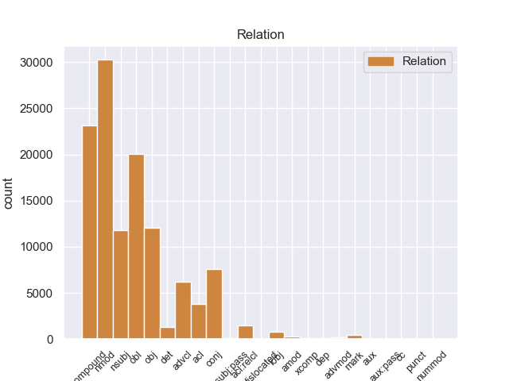
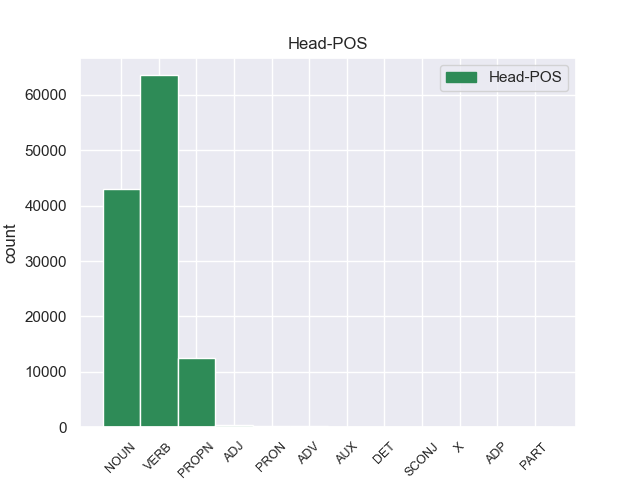
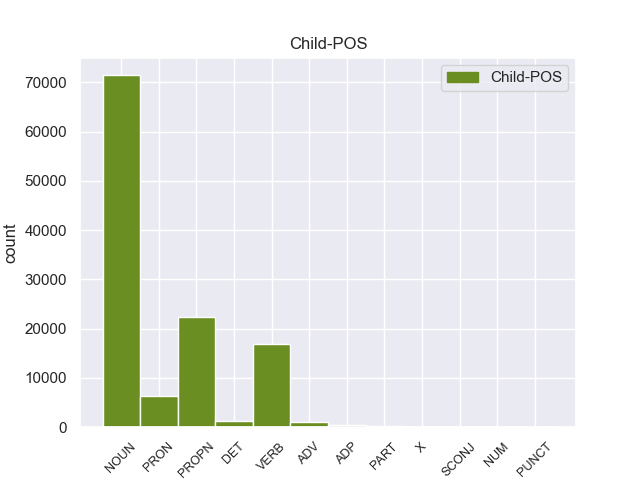

Distribution of features within this leaf



Agreement Rules sorted by frequency.
- When the dependent token is the oblique nominal(obl) of the head token, and the head token is VERB and the dependent token is NOUN.
1 उमा _ _ _ _ 0 _ _ _
2 ने _ _ _ _ 0 _ _ _
3 कहा _ _ _ _ 0 _ _ _
4 कि _ _ _ _ 0 _ _ _
5 उन्होंने _ _ _ _ 0 _ _ _
6 कभी _ _ _ _ 0 _ _ _
7 पद पद NOUN NN Case=Acc|Gender=Masc|Number=Sing|Person=3 12 obl _ ChunkId=NP4|ChunkType=head|Tam=0|Translit=pada|Vib=0_के_लिए
8 के _ _ _ _ 0 _ _ _
9 लिए _ _ _ _ 0 _ _ _
10 काम _ _ _ _ 0 _ _ _
11 नहीं _ _ _ _ 0 _ _ _
12 किया कर VERB VM Aspect=Perf|Gender=Masc|Number=Sing|VerbForm=Part|Voice=Act 0 _ _ _
13 । _ _ _ _ 0 _ _ _
1 लैब _ _ _ _ 0 _ _ _
2 रिपोर्ट _ _ _ _ 0 _ _ _
3 आने _ _ _ _ 0 _ _ _
4 के _ _ _ _ 0 _ _ _
5 बाद _ _ _ _ 0 _ _ _
6 राज्य _ _ _ _ 0 _ _ _
7 पुलिस _ _ _ _ 0 _ _ _
8 ने _ _ _ _ 0 _ _ _
9 आज _ _ _ _ 0 _ _ _
10 एक _ _ _ _ 0 _ _ _
11 उच्चस्तरीय _ _ _ _ 0 _ _ _
12 बैठक _ _ _ _ 0 _ _ _
13 की _ _ _ _ 0 _ _ _
14 और _ _ _ _ 0 _ _ _
15 मामले _ _ _ _ 0 _ _ _
16 में _ _ _ _ 0 _ _ _
17 आगे _ _ _ _ 0 _ _ _
18 की _ _ _ _ 0 _ _ _
19 कार्रवाई कार्रवाई NOUN NN Case=Acc|Gender=Fem|Number=Sing|Person=3 21 nmod _ ChunkId=NP7|ChunkType=head|Tam=0|Translit=kārravāī|Vib=0_का
20 की _ _ _ _ 0 _ _ _
21 रणनीति रणनीति NOUN NN Case=Nom|Gender=Fem|Number=Sing|Person=3 0 _ _ _
22 तय _ _ _ _ 0 _ _ _
23 की _ _ _ _ 0 _ _ _
24 । _ _ _ _ 0 _ _ _
1 लैब _ _ _ _ 0 _ _ _
2 रिपोर्ट _ _ _ _ 0 _ _ _
3 आने _ _ _ _ 0 _ _ _
4 के _ _ _ _ 0 _ _ _
5 बाद _ _ _ _ 0 _ _ _
6 राज्य _ _ _ _ 0 _ _ _
7 पुलिस _ _ _ _ 0 _ _ _
8 ने _ _ _ _ 0 _ _ _
9 आज _ _ _ _ 0 _ _ _
10 एक _ _ _ _ 0 _ _ _
11 उच्चस्तरीय _ _ _ _ 0 _ _ _
12 बैठक _ _ _ _ 0 _ _ _
13 की _ _ _ _ 0 _ _ _
14 और _ _ _ _ 0 _ _ _
15 मामले _ _ _ _ 0 _ _ _
16 में _ _ _ _ 0 _ _ _
17 आगे _ _ _ _ 0 _ _ _
18 की _ _ _ _ 0 _ _ _
19 कार्रवाई _ _ _ _ 0 _ _ _
20 की _ _ _ _ 0 _ _ _
21 रणनीति रणनीति NOUN NN Case=Nom|Gender=Fem|Number=Sing|Person=3 23 obj _ ChunkId=NP8|ChunkType=head|Tam=0|Translit=raṇanīti|Vib=0
22 तय _ _ _ _ 0 _ _ _
23 की कर VERB VM Aspect=Perf|Gender=Fem|Number=Sing|VerbForm=Part|Voice=Act 0 _ _ _
24 । _ _ _ _ 0 _ _ _
1 लैब _ _ _ _ 0 _ _ _
2 रिपोर्ट _ _ _ _ 0 _ _ _
3 आने _ _ _ _ 0 _ _ _
4 के _ _ _ _ 0 _ _ _
5 बाद _ _ _ _ 0 _ _ _
6 राज्य _ _ _ _ 0 _ _ _
7 पुलिस पुलिस NOUN NN Case=Acc|Gender=Fem|Number=Sing|Person=3 13 nsubj _ ChunkId=NP2|ChunkType=head|Tam=0|Translit=pulisa|Vib=0_ने
8 ने _ _ _ _ 0 _ _ _
9 आज _ _ _ _ 0 _ _ _
10 एक _ _ _ _ 0 _ _ _
11 उच्चस्तरीय _ _ _ _ 0 _ _ _
12 बैठक _ _ _ _ 0 _ _ _
13 की कर VERB VM Aspect=Perf|Gender=Fem|Number=Sing|VerbForm=Part|Voice=Act 0 _ _ _
14 और _ _ _ _ 0 _ _ _
15 मामले _ _ _ _ 0 _ _ _
16 में _ _ _ _ 0 _ _ _
17 आगे _ _ _ _ 0 _ _ _
18 की _ _ _ _ 0 _ _ _
19 कार्रवाई _ _ _ _ 0 _ _ _
20 की _ _ _ _ 0 _ _ _
21 रणनीति _ _ _ _ 0 _ _ _
22 तय _ _ _ _ 0 _ _ _
23 की _ _ _ _ 0 _ _ _
24 । _ _ _ _ 0 _ _ _
1 लैब _ _ _ _ 0 _ _ _
2 रिपोर्ट _ _ _ _ 0 _ _ _
3 आने _ _ _ _ 0 _ _ _
4 के _ _ _ _ 0 _ _ _
5 बाद _ _ _ _ 0 _ _ _
6 राज्य _ _ _ _ 0 _ _ _
7 पुलिस _ _ _ _ 0 _ _ _
8 ने _ _ _ _ 0 _ _ _
9 आज _ _ _ _ 0 _ _ _
10 एक _ _ _ _ 0 _ _ _
11 उच्चस्तरीय _ _ _ _ 0 _ _ _
12 बैठक बैठक NOUN NN Case=Nom|Gender=Fem|Number=Sing|Person=3 13 compound _ ChunkId=NP4|ChunkType=head|Tam=0|Translit=baiṭhaka|Vib=0
13 की कर VERB VM Aspect=Perf|Gender=Fem|Number=Sing|VerbForm=Part|Voice=Act 0 _ _ _
14 और _ _ _ _ 0 _ _ _
15 मामले _ _ _ _ 0 _ _ _
16 में _ _ _ _ 0 _ _ _
17 आगे _ _ _ _ 0 _ _ _
18 की _ _ _ _ 0 _ _ _
19 कार्रवाई _ _ _ _ 0 _ _ _
20 की _ _ _ _ 0 _ _ _
21 रणनीति _ _ _ _ 0 _ _ _
22 तय _ _ _ _ 0 _ _ _
23 की _ _ _ _ 0 _ _ _
24 । _ _ _ _ 0 _ _ _
1 नागालैंड _ _ _ _ 0 _ _ _
2 में _ _ _ _ 0 _ _ _
3 विपक्षी _ _ _ _ 0 _ _ _
4 पार्टी _ _ _ _ 0 _ _ _
5 कांग्रेस _ _ _ _ 0 _ _ _
6 ने _ _ _ _ 0 _ _ _
7 दो _ _ _ _ 0 _ _ _
8 सीटों _ _ _ _ 0 _ _ _
9 पर _ _ _ _ 0 _ _ _
10 कब्जा _ _ _ _ 0 _ _ _
11 कायम _ _ _ _ 0 _ _ _
12 रखा _ _ _ _ 0 _ _ _
13 , _ _ _ _ 0 _ _ _
14 जबकि _ _ _ _ 0 _ _ _
15 नागालैंड _ _ _ _ 0 _ _ _
16 पीपुल्स पीपुल PROPN NNPC Case=Nom|Gender=Masc|Number=Sing|Person=3 17 compound _ ChunkId=NP6|ChunkType=child|Tam=0|Translit=pīpulsa|Vib=0
17 फ्रंट फ्रंट PROPN NNP Case=Acc|Gender=Masc|Number=Sing|Person=3 0 _ _ _
18 से _ _ _ _ 0 _ _ _
19 उसे _ _ _ _ 0 _ _ _
20 एक _ _ _ _ 0 _ _ _
21 सीट _ _ _ _ 0 _ _ _
22 गवांनी _ _ _ _ 0 _ _ _
23 पड़ी _ _ _ _ 0 _ _ _
24 । _ _ _ _ 0 _ _ _
1 लैब लैब NOUN NNC Case=Nom|Gender=Fem|Number=Sing|Person=3 2 compound _ ChunkId=NP|ChunkType=child|Tam=0|Translit=laiba|Vib=0
2 रिपोर्ट रिपोर्ट NOUN NN Case=Nom|Gender=Fem|Number=Sing|Person=3 0 _ _ _
3 आने _ _ _ _ 0 _ _ _
4 के _ _ _ _ 0 _ _ _
5 बाद _ _ _ _ 0 _ _ _
6 राज्य _ _ _ _ 0 _ _ _
7 पुलिस _ _ _ _ 0 _ _ _
8 ने _ _ _ _ 0 _ _ _
9 आज _ _ _ _ 0 _ _ _
10 एक _ _ _ _ 0 _ _ _
11 उच्चस्तरीय _ _ _ _ 0 _ _ _
12 बैठक _ _ _ _ 0 _ _ _
13 की _ _ _ _ 0 _ _ _
14 और _ _ _ _ 0 _ _ _
15 मामले _ _ _ _ 0 _ _ _
16 में _ _ _ _ 0 _ _ _
17 आगे _ _ _ _ 0 _ _ _
18 की _ _ _ _ 0 _ _ _
19 कार्रवाई _ _ _ _ 0 _ _ _
20 की _ _ _ _ 0 _ _ _
21 रणनीति _ _ _ _ 0 _ _ _
22 तय _ _ _ _ 0 _ _ _
23 की _ _ _ _ 0 _ _ _
24 । _ _ _ _ 0 _ _ _
1 दावोस _ _ _ _ 0 _ _ _
2 में _ _ _ _ 0 _ _ _
3 वर्ल्ड _ _ _ _ 0 _ _ _
4 इकोनॉमिक _ _ _ _ 0 _ _ _
5 फोरम _ _ _ _ 0 _ _ _
6 की _ _ _ _ 0 _ _ _
7 बैठक _ _ _ _ 0 _ _ _
8 के _ _ _ _ 0 _ _ _
9 दौरान _ _ _ _ 0 _ _ _
10 भारत _ _ _ _ 0 _ _ _
11 ने _ _ _ _ 0 _ _ _
12 जिस _ _ _ _ 0 _ _ _
13 जोरदार _ _ _ _ 0 _ _ _
14 तरीके _ _ _ _ 0 _ _ _
15 से _ _ _ _ 0 _ _ _
16 अपना अपना PRON PRP Case=Nom|Gender=Masc|Number=Sing|PronType=Prs 17 nmod _ ChunkId=NP6|ChunkType=head|Tam=0|Translit=apanā|Vib=0
17 पक्ष पक्ष NOUN NN Case=Nom|Gender=Masc|Number=Sing|Person=3 0 _ _ _
18 पेश _ _ _ _ 0 _ _ _
19 किया _ _ _ _ 0 _ _ _
20 और _ _ _ _ 0 _ _ _
21 पूरी _ _ _ _ 0 _ _ _
22 बैठक _ _ _ _ 0 _ _ _
23 में _ _ _ _ 0 _ _ _
24 छाया _ _ _ _ 0 _ _ _
25 रहा _ _ _ _ 0 _ _ _
26 , _ _ _ _ 0 _ _ _
27 उसने _ _ _ _ 0 _ _ _
28 दुनिया _ _ _ _ 0 _ _ _
29 भर _ _ _ _ 0 _ _ _
30 के _ _ _ _ 0 _ _ _
31 लोगों _ _ _ _ 0 _ _ _
32 का _ _ _ _ 0 _ _ _
33 ध्यान _ _ _ _ 0 _ _ _
34 अपनी _ _ _ _ 0 _ _ _
35 ओर _ _ _ _ 0 _ _ _
36 खींचा _ _ _ _ 0 _ _ _
37 है _ _ _ _ 0 _ _ _
38 । _ _ _ _ 0 _ _ _
1 पाकिस्तानी _ _ _ _ 0 _ _ _
2 दैनिक _ _ _ _ 0 _ _ _
3 ' _ _ _ _ 0 _ _ _
4 डॉन _ _ _ _ 0 _ _ _
5 ' _ _ _ _ 0 _ _ _
6 की _ _ _ _ 0 _ _ _
7 रिपोर्ट _ _ _ _ 0 _ _ _
8 के _ _ _ _ 0 _ _ _
9 मुताबिक _ _ _ _ 0 _ _ _
10 अमेरिका _ _ _ _ 0 _ _ _
11 द्वारा _ _ _ _ 0 _ _ _
12 पाकिस्तान _ _ _ _ 0 _ _ _
13 को _ _ _ _ 0 _ _ _
14 गैर _ _ _ _ 0 _ _ _
15 नाटो _ _ _ _ 0 _ _ _
16 सहयोगी _ _ _ _ 0 _ _ _
17 का _ _ _ _ 0 _ _ _
18 दर्जा _ _ _ _ 0 _ _ _
19 दिए _ _ _ _ 0 _ _ _
20 जाने _ _ _ _ 0 _ _ _
21 के _ _ _ _ 0 _ _ _
22 बावजूद _ _ _ _ 0 _ _ _
23 वहां _ _ _ _ 0 _ _ _
24 भारत _ _ _ _ 0 _ _ _
25 के _ _ _ _ 0 _ _ _
26 प्रधानमंत्री _ _ _ _ 0 _ _ _
27 को _ _ _ _ 0 _ _ _
28 ज्यादा _ _ _ _ 0 _ _ _
29 एहमियत _ _ _ _ 0 _ _ _
30 दिया दे VERB VM Aspect=Perf|Gender=Masc|VerbForm=Part 34 advcl _ ChunkId=VGNN2|ChunkType=head|Tam=yA|Translit=diyā|Vib=या_जा+ना
31 जाना _ _ _ _ 0 _ _ _
32 पाकिस्तान _ _ _ _ 0 _ _ _
33 को _ _ _ _ 0 _ _ _
34 खटक खटक VERB VM Gender=Masc|Number=Sing|Voice=Act 0 _ _ _
35 सकता _ _ _ _ 0 _ _ _
36 था _ _ _ _ 0 _ _ _
37 । _ _ _ _ 0 _ _ _
1 यादव _ _ _ _ 0 _ _ _
2 ने _ _ _ _ 0 _ _ _
3 कहा _ _ _ _ 0 _ _ _
4 कि _ _ _ _ 0 _ _ _
5 25 _ _ _ _ 0 _ _ _
6 जून _ _ _ _ 0 _ _ _
7 को _ _ _ _ 0 _ _ _
8 राजग राजग PROPN NNP Case=Acc|Gender=Masc|Number=Sing|Person=3 10 nmod _ ChunkId=NP3|ChunkType=head|Tam=0|Translit=rājaga|Vib=0_का
9 के _ _ _ _ 0 _ _ _
10 कार्यकर्ता कार्यकर्ता NOUN NN Case=Nom|Gender=Masc|Number=Plur|Person=3 0 _ _ _
11 पूरे _ _ _ _ 0 _ _ _
12 राज्य _ _ _ _ 0 _ _ _
13 में _ _ _ _ 0 _ _ _
14 इस _ _ _ _ 0 _ _ _
15 दिन _ _ _ _ 0 _ _ _
16 को _ _ _ _ 0 _ _ _
17 काला _ _ _ _ 0 _ _ _
18 दिवस _ _ _ _ 0 _ _ _
19 के _ _ _ _ 0 _ _ _
20 तौर _ _ _ _ 0 _ _ _
21 पर _ _ _ _ 0 _ _ _
22 मनाएंगे _ _ _ _ 0 _ _ _
23 । _ _ _ _ 0 _ _ _
1 यादव _ _ _ _ 0 _ _ _
2 ने _ _ _ _ 0 _ _ _
3 कहा _ _ _ _ 0 _ _ _
4 कि _ _ _ _ 0 _ _ _
5 25 _ _ _ _ 0 _ _ _
6 जून जून PROPN NNP Case=Acc|Gender=Masc|Number=Sing|Person=3 22 obl _ ChunkId=NP2|ChunkType=head|Tam=0|Translit=jūna|Vib=0_को
7 को _ _ _ _ 0 _ _ _
8 राजग _ _ _ _ 0 _ _ _
9 के _ _ _ _ 0 _ _ _
10 कार्यकर्ता _ _ _ _ 0 _ _ _
11 पूरे _ _ _ _ 0 _ _ _
12 राज्य _ _ _ _ 0 _ _ _
13 में _ _ _ _ 0 _ _ _
14 इस _ _ _ _ 0 _ _ _
15 दिन _ _ _ _ 0 _ _ _
16 को _ _ _ _ 0 _ _ _
17 काला _ _ _ _ 0 _ _ _
18 दिवस _ _ _ _ 0 _ _ _
19 के _ _ _ _ 0 _ _ _
20 तौर _ _ _ _ 0 _ _ _
21 पर _ _ _ _ 0 _ _ _
22 मनाएंगे मना VERB VM Gender=Masc|Mood=Ind|Number=Plur|Person=3|Tense=Fut|VerbForm=Fin|Voice=Act 0 _ _ _
23 । _ _ _ _ 0 _ _ _
1 करीब _ _ _ _ 0 _ _ _
2 23 _ _ _ _ 0 _ _ _
3 अमेरिकी _ _ _ _ 0 _ _ _
4 विश्वविद्यालयों _ _ _ _ 0 _ _ _
5 ने _ _ _ _ 0 _ _ _
6 भारत _ _ _ _ 0 _ _ _
7 के _ _ _ _ 0 _ _ _
8 39 _ _ _ _ 0 _ _ _
9 कृषि _ _ _ _ 0 _ _ _
10 विश्वविद्यालयों विश्वविद्यालय NOUN NN Case=Acc|Gender=Masc|Number=Plur|Person=3 0 _ _ _
11 और _ _ _ _ 0 _ _ _
12 कृषि _ _ _ _ 0 _ _ _
13 संस्थानों संस्थान NOUN NN Case=Acc|Gender=Masc|Number=Plur|Person=3 10 conj _ ChunkId=NP4|ChunkType=head|Tam=0|Translit=saṁsthānoṁ|Vib=0_के_साथ
14 के _ _ _ _ 0 _ _ _
15 साथ _ _ _ _ 0 _ _ _
16 सहयोग _ _ _ _ 0 _ _ _
17 की _ _ _ _ 0 _ _ _
18 इच्छा _ _ _ _ 0 _ _ _
19 जताई _ _ _ _ 0 _ _ _
20 है _ _ _ _ 0 _ _ _
21 । _ _ _ _ 0 _ _ _
1 यादव यादव PROPN NNP Case=Acc|Gender=Masc|Number=Sing|Person=3 3 nsubj _ ChunkId=NP|ChunkType=head|Tam=0|Translit=yādava|Vib=0_ने
2 ने _ _ _ _ 0 _ _ _
3 कहा कह VERB VM Aspect=Perf|Gender=Masc|Number=Sing|VerbForm=Part|Voice=Act 0 _ _ _
4 कि _ _ _ _ 0 _ _ _
5 25 _ _ _ _ 0 _ _ _
6 जून _ _ _ _ 0 _ _ _
7 को _ _ _ _ 0 _ _ _
8 राजग _ _ _ _ 0 _ _ _
9 के _ _ _ _ 0 _ _ _
10 कार्यकर्ता _ _ _ _ 0 _ _ _
11 पूरे _ _ _ _ 0 _ _ _
12 राज्य _ _ _ _ 0 _ _ _
13 में _ _ _ _ 0 _ _ _
14 इस _ _ _ _ 0 _ _ _
15 दिन _ _ _ _ 0 _ _ _
16 को _ _ _ _ 0 _ _ _
17 काला _ _ _ _ 0 _ _ _
18 दिवस _ _ _ _ 0 _ _ _
19 के _ _ _ _ 0 _ _ _
20 तौर _ _ _ _ 0 _ _ _
21 पर _ _ _ _ 0 _ _ _
22 मनाएंगे _ _ _ _ 0 _ _ _
23 । _ _ _ _ 0 _ _ _
1 लिहाजा _ _ _ _ 0 _ _ _
2 , _ _ _ _ 0 _ _ _
3 अब _ _ _ _ 0 _ _ _
4 वक्त वक्त NOUN NN Case=Nom|Gender=Masc|Number=Sing|Person=3 0 _ _ _
5 आ _ _ _ _ 0 _ _ _
6 गया _ _ _ _ 0 _ _ _
7 है _ _ _ _ 0 _ _ _
8 कि _ _ _ _ 0 _ _ _
9 पूरी _ _ _ _ 0 _ _ _
10 दुनिया _ _ _ _ 0 _ _ _
11 के _ _ _ _ 0 _ _ _
12 अमन _ _ _ _ 0 _ _ _
13 पसंद _ _ _ _ 0 _ _ _
14 देश _ _ _ _ 0 _ _ _
15 अमेरिका _ _ _ _ 0 _ _ _
16 को _ _ _ _ 0 _ _ _
17 नीतियों _ _ _ _ 0 _ _ _
18 में _ _ _ _ 0 _ _ _
19 बदलाव _ _ _ _ 0 _ _ _
20 करने _ _ _ _ 0 _ _ _
21 का _ _ _ _ 0 _ _ _
22 दबाव _ _ _ _ 0 _ _ _
23 बनाए बना VERB VM Gender=Masc|Mood=Sub|Number=Plur|VerbForm=Fin|Voice=Act 4 acl _ ChunkId=VGF2|ChunkType=head|Stype=declarative|Tam=eM|Translit=banāe|Vib=एं
24 । _ _ _ _ 0 _ _ _
1 उमा _ _ _ _ 0 _ _ _
2 ने _ _ _ _ 0 _ _ _
3 कहा कह VERB VM Aspect=Perf|Gender=Masc|Number=Sing|VerbForm=Part|Voice=Act 0 _ _ _
4 कि _ _ _ _ 0 _ _ _
5 उन्होंने _ _ _ _ 0 _ _ _
6 कभी _ _ _ _ 0 _ _ _
7 पद _ _ _ _ 0 _ _ _
8 के _ _ _ _ 0 _ _ _
9 लिए _ _ _ _ 0 _ _ _
10 काम _ _ _ _ 0 _ _ _
11 नहीं _ _ _ _ 0 _ _ _
12 किया कर VERB VM Aspect=Perf|Gender=Masc|Number=Sing|VerbForm=Part|Voice=Act 3 obj _ ChunkId=VGF2|ChunkType=head|Stype=declarative|Tam=yA|Translit=kiyā|Vib=या
13 । _ _ _ _ 0 _ _ _
1 लैब _ _ _ _ 0 _ _ _
2 रिपोर्ट _ _ _ _ 0 _ _ _
3 आने _ _ _ _ 0 _ _ _
4 के _ _ _ _ 0 _ _ _
5 बाद _ _ _ _ 0 _ _ _
6 राज्य _ _ _ _ 0 _ _ _
7 पुलिस _ _ _ _ 0 _ _ _
8 ने _ _ _ _ 0 _ _ _
9 आज _ _ _ _ 0 _ _ _
10 एक _ _ _ _ 0 _ _ _
11 उच्चस्तरीय _ _ _ _ 0 _ _ _
12 बैठक _ _ _ _ 0 _ _ _
13 की कर VERB VM Aspect=Perf|Gender=Fem|Number=Sing|VerbForm=Part|Voice=Act 0 _ _ _
14 और _ _ _ _ 0 _ _ _
15 मामले _ _ _ _ 0 _ _ _
16 में _ _ _ _ 0 _ _ _
17 आगे _ _ _ _ 0 _ _ _
18 की _ _ _ _ 0 _ _ _
19 कार्रवाई _ _ _ _ 0 _ _ _
20 की _ _ _ _ 0 _ _ _
21 रणनीति _ _ _ _ 0 _ _ _
22 तय _ _ _ _ 0 _ _ _
23 की कर VERB VM Aspect=Perf|Gender=Fem|Number=Sing|VerbForm=Part|Voice=Act 13 conj _ ChunkId=VGF2|ChunkType=head|Stype=declarative|Tam=yA|Translit=kī|Vib=या
24 । _ _ _ _ 0 _ _ _
1 सूत्रों _ _ _ _ 0 _ _ _
2 का _ _ _ _ 0 _ _ _
3 कहना _ _ _ _ 0 _ _ _
4 है _ _ _ _ 0 _ _ _
5 कि _ _ _ _ 0 _ _ _
6 आजाद _ _ _ _ 0 _ _ _
7 मंत्रिमंडल _ _ _ _ 0 _ _ _
8 सदस्यों _ _ _ _ 0 _ _ _
9 के _ _ _ _ 0 _ _ _
10 लिए _ _ _ _ 0 _ _ _
11 निर्वर्तमान _ _ _ _ 0 _ _ _
12 मुख्यमंत्री _ _ _ _ 0 _ _ _
13 मुफ्ती _ _ _ _ 0 _ _ _
14 मोहम्मद _ _ _ _ 0 _ _ _
15 सईद सईद PROPN NNP Case=Nom|Gender=Masc|Number=Sing|Person=3 0 _ _ _
16 , _ _ _ _ 0 _ _ _
17 प्रधानमंत्री _ _ _ _ 0 _ _ _
18 मनमोहन _ _ _ _ 0 _ _ _
19 सिंह सिंह PROPN NNP Case=Acc|Gender=Masc|Number=Sing|Person=3 15 conj _ ChunkId=NP5|ChunkType=head|Tam=0|Translit=siṁha|Vib=0
20 और _ _ _ _ 0 _ _ _
21 सोनिया _ _ _ _ 0 _ _ _
22 गांधी _ _ _ _ 0 _ _ _
23 से _ _ _ _ 0 _ _ _
24 चर्चा _ _ _ _ 0 _ _ _
25 करेंगे _ _ _ _ 0 _ _ _
26 । _ _ _ _ 0 _ _ _
1 उन्होंने _ _ _ _ 0 _ _ _
2 कहा _ _ _ _ 0 _ _ _
3 कि _ _ _ _ 0 _ _ _
4 यदि _ _ _ _ 0 _ _ _
5 लोहान _ _ _ _ 0 _ _ _
6 खाप _ _ _ _ 0 _ _ _
7 के _ _ _ _ 0 _ _ _
8 लोग _ _ _ _ 0 _ _ _
9 वधू _ _ _ _ 0 _ _ _
10 पक्ष _ _ _ _ 0 _ _ _
11 से _ _ _ _ 0 _ _ _
12 यह _ _ _ _ 0 _ _ _
13 कह _ _ _ _ 0 _ _ _
14 दें _ _ _ _ 0 _ _ _
15 कि _ _ _ _ 0 _ _ _
16 उन्हें _ _ _ _ 0 _ _ _
17 इस यह DET DEM Case=Acc|Gender=Masc|Number=Sing|Person=3|PronType=Dem 18 det _ ChunkId=NP7|ChunkType=child|Translit=isa
18 रिश्ते रिश्ता NOUN NN Case=Acc|Gender=Masc|Number=Sing|Person=3 0 _ _ _
19 से _ _ _ _ 0 _ _ _
20 कोई _ _ _ _ 0 _ _ _
21 आपत्ति _ _ _ _ 0 _ _ _
22 नहीं _ _ _ _ 0 _ _ _
23 है _ _ _ _ 0 _ _ _
24 , _ _ _ _ 0 _ _ _
25 तो _ _ _ _ 0 _ _ _
26 पंचायत _ _ _ _ 0 _ _ _
27 अपना _ _ _ _ 0 _ _ _
28 फैसला _ _ _ _ 0 _ _ _
29 वापस _ _ _ _ 0 _ _ _
30 ले _ _ _ _ 0 _ _ _
31 सकती _ _ _ _ 0 _ _ _
32 है _ _ _ _ 0 _ _ _
33 । _ _ _ _ 0 _ _ _
1 पाकिस्तानी _ _ _ _ 0 _ _ _
2 दैनिक दैनिक NOUN NN Case=Acc|Gender=Masc|Number=Sing|Person=3 4 nmod _ ChunkId=NP|ChunkType=head|Tam=0|Translit=dainika|Vib=0
3 ' _ _ _ _ 0 _ _ _
4 डॉन डॉन PROPN NNP Case=Acc|Gender=Masc|Number=Sing|Person=3 0 _ _ _
5 ' _ _ _ _ 0 _ _ _
6 की _ _ _ _ 0 _ _ _
7 रिपोर्ट _ _ _ _ 0 _ _ _
8 के _ _ _ _ 0 _ _ _
9 मुताबिक _ _ _ _ 0 _ _ _
10 अमेरिका _ _ _ _ 0 _ _ _
11 द्वारा _ _ _ _ 0 _ _ _
12 पाकिस्तान _ _ _ _ 0 _ _ _
13 को _ _ _ _ 0 _ _ _
14 गैर _ _ _ _ 0 _ _ _
15 नाटो _ _ _ _ 0 _ _ _
16 सहयोगी _ _ _ _ 0 _ _ _
17 का _ _ _ _ 0 _ _ _
18 दर्जा _ _ _ _ 0 _ _ _
19 दिए _ _ _ _ 0 _ _ _
20 जाने _ _ _ _ 0 _ _ _
21 के _ _ _ _ 0 _ _ _
22 बावजूद _ _ _ _ 0 _ _ _
23 वहां _ _ _ _ 0 _ _ _
24 भारत _ _ _ _ 0 _ _ _
25 के _ _ _ _ 0 _ _ _
26 प्रधानमंत्री _ _ _ _ 0 _ _ _
27 को _ _ _ _ 0 _ _ _
28 ज्यादा _ _ _ _ 0 _ _ _
29 एहमियत _ _ _ _ 0 _ _ _
30 दिया _ _ _ _ 0 _ _ _
31 जाना _ _ _ _ 0 _ _ _
32 पाकिस्तान _ _ _ _ 0 _ _ _
33 को _ _ _ _ 0 _ _ _
34 खटक _ _ _ _ 0 _ _ _
35 सकता _ _ _ _ 0 _ _ _
36 था _ _ _ _ 0 _ _ _
37 । _ _ _ _ 0 _ _ _
1 इसी _ _ _ _ 0 _ _ _
2 बात _ _ _ _ 0 _ _ _
3 को _ _ _ _ 0 _ _ _
4 देखते देख VERB VM Aspect=Imp|Gender=Masc|Number=Sing|VerbForm=Part 22 acl _ ChunkId=VGNF|ChunkType=head|Tam=wA|Translit=dekhate|Vib=ता_हो+या
5 हुए _ _ _ _ 0 _ _ _
6 गृह _ _ _ _ 0 _ _ _
7 मंत्रालय _ _ _ _ 0 _ _ _
8 ने _ _ _ _ 0 _ _ _
9 धनंजय _ _ _ _ 0 _ _ _
10 की _ _ _ _ 0 _ _ _
11 फांसी _ _ _ _ 0 _ _ _
12 की _ _ _ _ 0 _ _ _
13 सजा _ _ _ _ 0 _ _ _
14 को _ _ _ _ 0 _ _ _
15 अगले _ _ _ _ 0 _ _ _
16 आदेश _ _ _ _ 0 _ _ _
17 तक _ _ _ _ 0 _ _ _
18 रोक _ _ _ _ 0 _ _ _
19 देने _ _ _ _ 0 _ _ _
20 का _ _ _ _ 0 _ _ _
21 निर्देश _ _ _ _ 0 _ _ _
22 दिया दे VERB VM Aspect=Perf|Gender=Masc|Number=Sing|Person=3|VerbForm=Part|Voice=Act 0 _ _ _
23 है _ _ _ _ 0 _ _ _
24 । _ _ _ _ 0 _ _ _
1 पाकिस्तानी _ _ _ _ 0 _ _ _
2 दैनिक _ _ _ _ 0 _ _ _
3 ' _ _ _ _ 0 _ _ _
4 डॉन _ _ _ _ 0 _ _ _
5 ' _ _ _ _ 0 _ _ _
6 की _ _ _ _ 0 _ _ _
7 रिपोर्ट _ _ _ _ 0 _ _ _
8 के _ _ _ _ 0 _ _ _
9 मुताबिक _ _ _ _ 0 _ _ _
10 अमेरिका _ _ _ _ 0 _ _ _
11 द्वारा _ _ _ _ 0 _ _ _
12 पाकिस्तान _ _ _ _ 0 _ _ _
13 को _ _ _ _ 0 _ _ _
14 गैर _ _ _ _ 0 _ _ _
15 नाटो _ _ _ _ 0 _ _ _
16 सहयोगी _ _ _ _ 0 _ _ _
17 का _ _ _ _ 0 _ _ _
18 दर्जा _ _ _ _ 0 _ _ _
19 दिए _ _ _ _ 0 _ _ _
20 जाने _ _ _ _ 0 _ _ _
21 के _ _ _ _ 0 _ _ _
22 बावजूद _ _ _ _ 0 _ _ _
23 वहां _ _ _ _ 0 _ _ _
24 भारत भारत PROPN NNP Case=Acc|Gender=Masc|Number=Sing|Person=3 26 nmod _ ChunkId=NP9|ChunkType=head|Tam=0|Translit=bhārata|Vib=0_का
25 के _ _ _ _ 0 _ _ _
26 प्रधानमंत्री प्रधानमंत्री PROPN NNP Case=Acc|Gender=Masc|Number=Sing|Person=3 0 _ _ _
27 को _ _ _ _ 0 _ _ _
28 ज्यादा _ _ _ _ 0 _ _ _
29 एहमियत _ _ _ _ 0 _ _ _
30 दिया _ _ _ _ 0 _ _ _
31 जाना _ _ _ _ 0 _ _ _
32 पाकिस्तान _ _ _ _ 0 _ _ _
33 को _ _ _ _ 0 _ _ _
34 खटक _ _ _ _ 0 _ _ _
35 सकता _ _ _ _ 0 _ _ _
36 था _ _ _ _ 0 _ _ _
37 । _ _ _ _ 0 _ _ _
1 पद्मिनी _ _ _ _ 0 _ _ _
2 के _ _ _ _ 0 _ _ _
3 हाथ _ _ _ _ 0 _ _ _
4 के _ _ _ _ 0 _ _ _
5 बने _ _ _ _ 0 _ _ _
6 हुए _ _ _ _ 0 _ _ _
7 भोजन _ _ _ _ 0 _ _ _
8 मेंनिराला _ _ _ _ 0 _ _ _
9 ही _ _ _ _ 0 _ _ _
10 स्वाद _ _ _ _ 0 _ _ _
11 था _ _ _ _ 0 _ _ _
12 . _ _ _ _ 0 _ _ _
13 सभी _ _ _ _ 0 _ _ _
14 ने _ _ _ _ 0 _ _ _
15 उसभोजन _ _ _ _ 0 _ _ _
16 की _ _ _ _ 0 _ _ _
17 भूरि _ _ _ _ 0 _ _ _
18 - _ _ _ _ 0 _ _ _
19 भूरि _ _ _ _ 0 _ _ _
20 प्रशंसा _ _ _ _ 0 _ _ _
21 की _ _ _ _ 0 _ _ _
22 और _ _ _ _ 0 _ _ _
23 सबसे _ _ _ _ 0 _ _ _
24 अधिकस्वादिष्ट _ _ _ _ 0 _ _ _
25 भोजन _ _ _ _ 0 _ _ _
26 बताया _ _ _ _ 0 _ _ _
27 . _ _ _ _ 0 _ _ _
28 रत्नसेनने _ _ _ _ 0 _ _ _
29 जो _ _ _ _ 0 _ _ _
30 कहा _ _ _ _ 0 _ _ _
31 था _ _ _ _ 0 _ _ _
32 उसे _ _ _ _ 0 _ _ _
33 पूरा _ _ _ _ 0 _ _ _
34 कर _ _ _ _ 0 _ _ _
35 दिखाया _ _ _ _ 0 _ _ _
36 और _ _ _ _ 0 _ _ _
37 अन्त _ _ _ _ 0 _ _ _
38 मेंरत्नसेन _ _ _ _ 0 _ _ _
39 और _ _ _ _ 0 _ _ _
40 पद्मिनी _ _ _ _ 0 _ _ _
41 सुख _ _ _ _ 0 _ _ _
42 - _ _ _ _ 0 _ _ _
43 चैनसे _ _ _ _ 0 _ _ _
44 रहने _ _ _ _ 0 _ _ _
45 लगे _ _ _ _ 0 _ _ _
46 . _ _ _ _ 0 _ _ _
47 एक _ _ _ _ 0 _ _ _
48 राजा _ _ _ _ 0 _ _ _
49 था _ _ _ _ 0 _ _ _
50 . _ _ _ _ 0 _ _ _
51 उसके _ _ _ _ 0 _ _ _
52 तीन _ _ _ _ 0 _ _ _
53 लड़के _ _ _ _ 0 _ _ _
54 और _ _ _ _ 0 _ _ _
55 एकलड़की _ _ _ _ 0 _ _ _
56 थी _ _ _ _ 0 _ _ _
57 . _ _ _ _ 0 _ _ _
58 लड़की _ _ _ _ 0 _ _ _
59 सबसे _ _ _ _ 0 _ _ _
60 बड़ी _ _ _ _ 0 _ _ _
61 थी _ _ _ _ 0 _ _ _
62 , _ _ _ _ 0 _ _ _
63 पर _ _ _ _ 0 _ _ _
64 बहुत _ _ _ _ 0 _ _ _
65 दिन _ _ _ _ 0 _ _ _
66 हुए _ _ _ _ 0 _ _ _
67 वह _ _ _ _ 0 _ _ _
68 ईश्वर _ _ _ _ 0 _ _ _
69 को _ _ _ _ 0 _ _ _
70 प्यारी _ _ _ _ 0 _ _ _
71 हो _ _ _ _ 0 _ _ _
72 गयीथी _ _ _ _ 0 _ _ _
73 . _ _ _ _ 0 _ _ _
74 राजा _ _ _ _ 0 _ _ _
75 ने _ _ _ _ 0 _ _ _
76 उसका _ _ _ _ 0 _ _ _
77 बहुत _ _ _ _ 0 _ _ _
78 इलाज _ _ _ _ 0 _ _ _
79 किया कर VERB VM Aspect=Perf|Gender=Masc|Number=Sing|VerbForm=Part|Voice=Act 177 acl:relcl _ _
80 था _ _ _ _ 0 _ _ _
81 परकुछ _ _ _ _ 0 _ _ _
82 फल _ _ _ _ 0 _ _ _
83 नहीं _ _ _ _ 0 _ _ _
84 निकला _ _ _ _ 0 _ _ _
85 . _ _ _ _ 0 _ _ _
86 राजा _ _ _ _ 0 _ _ _
87 उस _ _ _ _ 0 _ _ _
88 लाड़लीपुत्री _ _ _ _ 0 _ _ _
89 के _ _ _ _ 0 _ _ _
90 दुख _ _ _ _ 0 _ _ _
91 में _ _ _ _ 0 _ _ _
92 दुखी _ _ _ _ 0 _ _ _
93 रहा _ _ _ _ 0 _ _ _
94 करते _ _ _ _ 0 _ _ _
95 थे _ _ _ _ 0 _ _ _
96 . _ _ _ _ 0 _ _ _
97 इस _ _ _ _ 0 _ _ _
98 दुखने _ _ _ _ 0 _ _ _
99 उनके _ _ _ _ 0 _ _ _
100 स्वास्थ्य _ _ _ _ 0 _ _ _
101 पर _ _ _ _ 0 _ _ _
102 भी _ _ _ _ 0 _ _ _
103 प्रभावडाला _ _ _ _ 0 _ _ _
104 . _ _ _ _ 0 _ _ _
105 वे _ _ _ _ 0 _ _ _
106 बीमार _ _ _ _ 0 _ _ _
107 रहने _ _ _ _ 0 _ _ _
108 लगे _ _ _ _ 0 _ _ _
109 . _ _ _ _ 0 _ _ _
110 राजा _ _ _ _ 0 _ _ _
111 के _ _ _ _ 0 _ _ _
112 पैरों _ _ _ _ 0 _ _ _
113 के _ _ _ _ 0 _ _ _
114 जोड़ों _ _ _ _ 0 _ _ _
115 में _ _ _ _ 0 _ _ _
116 बहुत _ _ _ _ 0 _ _ _
117 दर्द _ _ _ _ 0 _ _ _
118 रहता _ _ _ _ 0 _ _ _
119 थाइसलिए _ _ _ _ 0 _ _ _
120 वह _ _ _ _ 0 _ _ _
121 चल _ _ _ _ 0 _ _ _
122 - _ _ _ _ 0 _ _ _
123 फिर _ _ _ _ 0 _ _ _
124 भी _ _ _ _ 0 _ _ _
125 नहीं _ _ _ _ 0 _ _ _
126 सकता _ _ _ _ 0 _ _ _
127 था _ _ _ _ 0 _ _ _
128 . _ _ _ _ 0 _ _ _
129 दिन _ _ _ _ 0 _ _ _
130 - _ _ _ _ 0 _ _ _
131 प्रतिदिनउसकी _ _ _ _ 0 _ _ _
132 हालत _ _ _ _ 0 _ _ _
133 और _ _ _ _ 0 _ _ _
134 अधिक _ _ _ _ 0 _ _ _
135 खराब _ _ _ _ 0 _ _ _
136 हीहोती _ _ _ _ 0 _ _ _
137 चली _ _ _ _ 0 _ _ _
138 गई _ _ _ _ 0 _ _ _
139 . _ _ _ _ 0 _ _ _
140 राजा _ _ _ _ 0 _ _ _
141 के _ _ _ _ 0 _ _ _
142 तीनों _ _ _ _ 0 _ _ _
143 पुत्रों _ _ _ _ 0 _ _ _
144 ने _ _ _ _ 0 _ _ _
145 अपनेपिता _ _ _ _ 0 _ _ _
146 का _ _ _ _ 0 _ _ _
147 बहुत _ _ _ _ 0 _ _ _
148 इलाज _ _ _ _ 0 _ _ _
149 कराया _ _ _ _ 0 _ _ _
150 . _ _ _ _ 0 _ _ _
151 बहुतसे _ _ _ _ 0 _ _ _
152 बैद्यों _ _ _ _ 0 _ _ _
153 को _ _ _ _ 0 _ _ _
154 दिखाया _ _ _ _ 0 _ _ _
155 पर _ _ _ _ 0 _ _ _
156 उनकी _ _ _ _ 0 _ _ _
157 बीमारी _ _ _ _ 0 _ _ _
158 दूर _ _ _ _ 0 _ _ _
159 नहींहुई _ _ _ _ 0 _ _ _
160 . _ _ _ _ 0 _ _ _
161 एक _ _ _ _ 0 _ _ _
162 दिन _ _ _ _ 0 _ _ _
163 एक _ _ _ _ 0 _ _ _
164 बहुत _ _ _ _ 0 _ _ _
165 होशियारबैद्य _ _ _ _ 0 _ _ _
166 दूर _ _ _ _ 0 _ _ _
167 देश _ _ _ _ 0 _ _ _
168 से _ _ _ _ 0 _ _ _
169 बुलाया _ _ _ _ 0 _ _ _
170 गया _ _ _ _ 0 _ _ _
171 . _ _ _ _ 0 _ _ _
172 बैद्य _ _ _ _ 0 _ _ _
173 ने _ _ _ _ 0 _ _ _
174 उन _ _ _ _ 0 _ _ _
175 तीनोंलड़कों _ _ _ _ 0 _ _ _
176 को _ _ _ _ 0 _ _ _
177 बुलाया बुला VERB VM Aspect=Perf|Gender=Masc|Number=Sing|VerbForm=Part|Voice=Act 0 _ _ _
178 और _ _ _ _ 0 _ _ _
179 कहा _ _ _ _ 0 _ _ _
180 - _ _ _ _ 0 _ _ _
181 " _ _ _ _ 0 _ _ _
1 पहले पहले ADV NST AdpType=Post|Case=Nom|Gender=Masc|Number=Sing|Person=3 6 obl _ AltTag=ADV-NOUN|ChunkId=NP|ChunkType=head|Translit=pahale
2 हत्या _ _ _ _ 0 _ _ _
3 का _ _ _ _ 0 _ _ _
4 मामला _ _ _ _ 0 _ _ _
5 दर्ज _ _ _ _ 0 _ _ _
6 हुआ हो VERB VM Aspect=Perf|Gender=Masc|Number=Sing|VerbForm=Part|Voice=Act 0 _ _ _
7 और _ _ _ _ 0 _ _ _
8 अब _ _ _ _ 0 _ _ _
9 उन _ _ _ _ 0 _ _ _
10 पर _ _ _ _ 0 _ _ _
11 मंदिर _ _ _ _ 0 _ _ _
12 से _ _ _ _ 0 _ _ _
13 कीमती _ _ _ _ 0 _ _ _
14 आभूषण _ _ _ _ 0 _ _ _
15 और _ _ _ _ 0 _ _ _
16 शिवलिंग _ _ _ _ 0 _ _ _
17 चुराने _ _ _ _ 0 _ _ _
18 का _ _ _ _ 0 _ _ _
19 आरोप _ _ _ _ 0 _ _ _
20 लगाया _ _ _ _ 0 _ _ _
21 गया _ _ _ _ 0 _ _ _
22 है _ _ _ _ 0 _ _ _
23 । _ _ _ _ 0 _ _ _
1 लेकिन _ _ _ _ 0 _ _ _
2 राज्य _ _ _ _ 0 _ _ _
3 सरकारें _ _ _ _ 0 _ _ _
4 यह _ _ _ _ 0 _ _ _
5 जानकारी _ _ _ _ 0 _ _ _
6 नहीं _ _ _ _ 0 _ _ _
7 देतीं _ _ _ _ 0 _ _ _
8 कि _ _ _ _ 0 _ _ _
9 राज्य _ _ _ _ 0 _ _ _
10 ने _ _ _ _ 0 _ _ _
11 कितना _ _ _ _ 0 _ _ _
12 उर्वरक _ _ _ _ 0 _ _ _
13 किसानों _ _ _ _ 0 _ _ _
14 को _ _ _ _ 0 _ _ _
15 वितरित _ _ _ _ 0 _ _ _
16 किया _ _ _ _ 0 _ _ _
17 और _ _ _ _ 0 _ _ _
18 सीजन _ _ _ _ 0 _ _ _
19 समाप्त _ _ _ _ 0 _ _ _
20 होने _ _ _ _ 0 _ _ _
21 के _ _ _ _ 0 _ _ _
22 बाद _ _ _ _ 0 _ _ _
23 उनके वह PRON PRP Case=Acc,Gen|Gender=Masc|Number=Plur|Person=3|Poss=Yes|PronType=Prs 26 obl _ ChunkId=NP7|ChunkType=head|Tam=ke|Translit=unake|Vib=0_पास
24 पास _ _ _ _ 0 _ _ _
25 कितना _ _ _ _ 0 _ _ _
26 बचा बच VERB VM Aspect=Perf|Gender=Masc|Number=Sing|VerbForm=Part|Voice=Act 0 _ _ _
27 ? _ _ _ _ 0 _ _ _
1 लेकिन _ _ _ _ 0 _ _ _
2 यदि _ _ _ _ 0 _ _ _
3 वह _ _ _ _ 0 _ _ _
4 जोर _ _ _ _ 0 _ _ _
5 देते _ _ _ _ 0 _ _ _
6 हैं _ _ _ _ 0 _ _ _
7 तो _ _ _ _ 0 _ _ _
8 यह _ _ _ _ 0 _ _ _
9 फैसला _ _ _ _ 0 _ _ _
10 भारत _ _ _ _ 0 _ _ _
11 सरकार _ _ _ _ 0 _ _ _
12 या _ _ _ _ 0 _ _ _
13 बीसीसीआई _ _ _ _ 0 _ _ _
14 को _ _ _ _ 0 _ _ _
15 करना _ _ _ _ 0 _ _ _
16 होगा _ _ _ _ 0 _ _ _
17 कि _ _ _ _ 0 _ _ _
18 वह _ _ _ _ 0 _ _ _
19 ( _ _ _ _ 0 _ _ _
20 जनरल जनरल NOUN NNC Case=Nom|Gender=Masc|Number=Sing|Person=3 21 compound _ ChunkId=NP7|ChunkType=child|Tam=0|Translit=janarala|Vib=0
21 मुशर्रफ मुशर्रफ PROPN NNP Case=Nom|Gender=Masc|Number=Sing|Person=3 0 _ _ _
22 ) _ _ _ _ 0 _ _ _
23 किस _ _ _ _ 0 _ _ _
24 मैच _ _ _ _ 0 _ _ _
25 को _ _ _ _ 0 _ _ _
26 देखना _ _ _ _ 0 _ _ _
27 चाहते _ _ _ _ 0 _ _ _
28 हैं _ _ _ _ 0 _ _ _
29 । _ _ _ _ 0 _ _ _
1 ओरछा ओरछा PROPN NNP Case=Nom|Gender=Masc|Number=Sing|Person=3 12 obj _ ChunkId=NP|ChunkType=head|SpaceAfter=No|Tam=0|Translit=orachā|Vib=0
2 , _ _ _ _ 0 _ _ _
3 16वीं _ _ _ _ 0 _ _ _
4 शताब्दी _ _ _ _ 0 _ _ _
5 में _ _ _ _ 0 _ _ _
6 बुंदेला _ _ _ _ 0 _ _ _
7 राजपूत _ _ _ _ 0 _ _ _
8 रुद्र _ _ _ _ 0 _ _ _
9 प्रताप _ _ _ _ 0 _ _ _
10 के _ _ _ _ 0 _ _ _
11 द्वारा _ _ _ _ 0 _ _ _
12 बसाया बसा VERB VM Aspect=Perf|Gender=Masc|Number=Sing|VerbForm=Part|Voice=Pass 0 _ _ _
13 गया _ _ _ _ 0 _ _ _
14 था _ _ _ _ 0 _ _ _
15 । _ _ _ _ 0 _ _ _
1 पिछले _ _ _ _ 0 _ _ _
2 हफ्ते _ _ _ _ 0 _ _ _
3 इसमें _ _ _ _ 0 _ _ _
4 तीन _ _ _ _ 0 _ _ _
5 फीसदी _ _ _ _ 0 _ _ _
6 की _ _ _ _ 0 _ _ _
7 कमी _ _ _ _ 0 _ _ _
8 थी _ _ _ _ 0 _ _ _
9 लेकिन _ _ _ _ 0 _ _ _
10 बीते _ _ _ _ 0 _ _ _
11 पूरे _ _ _ _ 0 _ _ _
12 सप्ताह _ _ _ _ 0 _ _ _
13 बारिश _ _ _ _ 0 _ _ _
14 न _ _ _ _ 0 _ _ _
15 होने हो VERB VM Case=Acc|Gender=Masc|VerbForm=Inf 0 _ _ _
16 के _ _ _ _ 0 _ _ _
17 कारण कारण ADP PSP Case=Acc|Gender=Masc 15 mark _ ChunkId=VGNN|ChunkType=child|Translit=kāraṇa
18 इसमें _ _ _ _ 0 _ _ _
19 तीन _ _ _ _ 0 _ _ _
20 फीसदी _ _ _ _ 0 _ _ _
21 की _ _ _ _ 0 _ _ _
22 और _ _ _ _ 0 _ _ _
23 बढ़ोत्तरी _ _ _ _ 0 _ _ _
24 हुई _ _ _ _ 0 _ _ _
25 है _ _ _ _ 0 _ _ _
26 । _ _ _ _ 0 _ _ _
1 लेकिन _ _ _ _ 0 _ _ _
2 राज्य _ _ _ _ 0 _ _ _
3 सरकारें _ _ _ _ 0 _ _ _
4 यह _ _ _ _ 0 _ _ _
5 जानकारी _ _ _ _ 0 _ _ _
6 नहीं _ _ _ _ 0 _ _ _
7 देतीं _ _ _ _ 0 _ _ _
8 कि _ _ _ _ 0 _ _ _
9 राज्य _ _ _ _ 0 _ _ _
10 ने _ _ _ _ 0 _ _ _
11 कितना _ _ _ _ 0 _ _ _
12 उर्वरक _ _ _ _ 0 _ _ _
13 किसानों किसान NOUN NN Case=Acc|Gender=Masc|Number=Plur|Person=3 16 iobj _ ChunkId=NP5|ChunkType=head|Tam=0|Translit=kisānoṁ|Vib=0_को
14 को _ _ _ _ 0 _ _ _
15 वितरित _ _ _ _ 0 _ _ _
16 किया कर VERB VM Aspect=Perf|Gender=Masc|Number=Sing|VerbForm=Part|Voice=Act 0 _ _ _
17 और _ _ _ _ 0 _ _ _
18 सीजन _ _ _ _ 0 _ _ _
19 समाप्त _ _ _ _ 0 _ _ _
20 होने _ _ _ _ 0 _ _ _
21 के _ _ _ _ 0 _ _ _
22 बाद _ _ _ _ 0 _ _ _
23 उनके _ _ _ _ 0 _ _ _
24 पास _ _ _ _ 0 _ _ _
25 कितना _ _ _ _ 0 _ _ _
26 बचा _ _ _ _ 0 _ _ _
27 ? _ _ _ _ 0 _ _ _
1 पाकिस्तान _ _ _ _ 0 _ _ _
2 का _ _ _ _ 0 _ _ _
3 पंजाब _ _ _ _ 0 _ _ _
4 प्रांत प्रांत NOUN NN Case=Nom|Gender=Masc|Number=Sing|Person=3 11 nsubj _ ChunkId=NP2|ChunkType=head|Tam=0|Translit=prāṁta|Vib=0
5 जेहादियों _ _ _ _ 0 _ _ _
6 की _ _ _ _ 0 _ _ _
7 भर्ती _ _ _ _ 0 _ _ _
8 का _ _ _ _ 0 _ _ _
9 सबसे _ _ _ _ 0 _ _ _
10 बड़ा _ _ _ _ 0 _ _ _
11 अड्डा अड्डा NOUN NN Case=Nom|Gender=Masc|Number=Sing|Person=3 0 _ _ _
12 है _ _ _ _ 0 _ _ _
13 । _ _ _ _ 0 _ _ _
1 दो _ _ _ _ 0 _ _ _
2 अन्य _ _ _ _ 0 _ _ _
3 घटनाओं _ _ _ _ 0 _ _ _
4 में _ _ _ _ 0 _ _ _
5 बीनागुड़ी _ _ _ _ 0 _ _ _
6 के _ _ _ _ 0 _ _ _
7 जंगलों जंगल NOUN NN Case=Acc|Gender=Masc|Number=Plur|Person=3 0 _ _ _
8 में _ _ _ _ 0 _ _ _
9 और _ _ _ _ 0 _ _ _
10 कासंसुर कासंसुर PROPN NNP Case=Acc|Gender=Masc|Number=Sing|Person=3 7 conj _ ChunkId=NP4|ChunkType=head|Tam=0|Translit=kāsaṁsura|Vib=0_में
11 में _ _ _ _ 0 _ _ _
12 नक्सलियों _ _ _ _ 0 _ _ _
13 ने _ _ _ _ 0 _ _ _
14 पुलिस _ _ _ _ 0 _ _ _
15 के _ _ _ _ 0 _ _ _
16 गश्ती _ _ _ _ 0 _ _ _
17 दल _ _ _ _ 0 _ _ _
18 व _ _ _ _ 0 _ _ _
19 पोलिंग _ _ _ _ 0 _ _ _
20 पार्टी _ _ _ _ 0 _ _ _
21 पर _ _ _ _ 0 _ _ _
22 हमला _ _ _ _ 0 _ _ _
23 कर _ _ _ _ 0 _ _ _
24 दिया _ _ _ _ 0 _ _ _
25 । _ _ _ _ 0 _ _ _
1 उन्होंने _ _ _ _ 0 _ _ _
2 कहा _ _ _ _ 0 _ _ _
3 कि _ _ _ _ 0 _ _ _
4 फिलहाल _ _ _ _ 0 _ _ _
5 बहुत _ _ _ _ 0 _ _ _
6 से _ _ _ _ 0 _ _ _
7 ऐसे _ _ _ _ 0 _ _ _
8 काबिल _ _ _ _ 0 _ _ _
9 अफसरों _ _ _ _ 0 _ _ _
10 की _ _ _ _ 0 _ _ _
11 पोस्टिंग _ _ _ _ 0 _ _ _
12 एनसीसी एनसीसी PROPN NNP Case=Acc|Gender=Masc|Number=Sing|Person=3 0 _ _ _
13 और _ _ _ _ 0 _ _ _
14 प्री _ _ _ _ 0 _ _ _
15 - _ _ _ _ 0 _ _ _
16 स्टाफ _ _ _ _ 0 _ _ _
17 ट्रेनिंग _ _ _ _ 0 _ _ _
18 स्कूल्स स्कूल NOUN NN Case=Acc|Gender=Masc|Number=Plur|Person=3 12 conj _ ChunkId=NP5|ChunkType=head|Tam=0|Translit=skūlsa|Vib=0_में
19 में _ _ _ _ 0 _ _ _
20 है _ _ _ _ 0 _ _ _
21 जो _ _ _ _ 0 _ _ _
22 फील्ड _ _ _ _ 0 _ _ _
23 में _ _ _ _ 0 _ _ _
24 अच्छा _ _ _ _ 0 _ _ _
25 काम _ _ _ _ 0 _ _ _
26 कर _ _ _ _ 0 _ _ _
27 सकते _ _ _ _ 0 _ _ _
28 हैं _ _ _ _ 0 _ _ _
29 । _ _ _ _ 0 _ _ _
1 पाकिस्तानी _ _ _ _ 0 _ _ _
2 दैनिक _ _ _ _ 0 _ _ _
3 ' _ _ _ _ 0 _ _ _
4 डॉन _ _ _ _ 0 _ _ _
5 ' _ _ _ _ 0 _ _ _
6 की _ _ _ _ 0 _ _ _
7 रिपोर्ट _ _ _ _ 0 _ _ _
8 के _ _ _ _ 0 _ _ _
9 मुताबिक _ _ _ _ 0 _ _ _
10 अमेरिका _ _ _ _ 0 _ _ _
11 द्वारा _ _ _ _ 0 _ _ _
12 पाकिस्तान _ _ _ _ 0 _ _ _
13 को _ _ _ _ 0 _ _ _
14 गैर _ _ _ _ 0 _ _ _
15 नाटो _ _ _ _ 0 _ _ _
16 सहयोगी _ _ _ _ 0 _ _ _
17 का _ _ _ _ 0 _ _ _
18 दर्जा _ _ _ _ 0 _ _ _
19 दिए _ _ _ _ 0 _ _ _
20 जाने _ _ _ _ 0 _ _ _
21 के _ _ _ _ 0 _ _ _
22 बावजूद _ _ _ _ 0 _ _ _
23 वहां _ _ _ _ 0 _ _ _
24 भारत _ _ _ _ 0 _ _ _
25 के _ _ _ _ 0 _ _ _
26 प्रधानमंत्री प्रधानमंत्री PROPN NNP Case=Acc|Gender=Masc|Number=Sing|Person=3 30 iobj _ ChunkId=NP10|ChunkType=head|Tam=0|Translit=pradhānamaṁtrī|Vib=0_को
27 को _ _ _ _ 0 _ _ _
28 ज्यादा _ _ _ _ 0 _ _ _
29 एहमियत _ _ _ _ 0 _ _ _
30 दिया दे VERB VM Aspect=Perf|Gender=Masc|VerbForm=Part 0 _ _ _
31 जाना _ _ _ _ 0 _ _ _
32 पाकिस्तान _ _ _ _ 0 _ _ _
33 को _ _ _ _ 0 _ _ _
34 खटक _ _ _ _ 0 _ _ _
35 सकता _ _ _ _ 0 _ _ _
36 था _ _ _ _ 0 _ _ _
37 । _ _ _ _ 0 _ _ _
1 पिछले _ _ _ _ 0 _ _ _
2 हफ्ते _ _ _ _ 0 _ _ _
3 इसमें _ _ _ _ 0 _ _ _
4 तीन _ _ _ _ 0 _ _ _
5 फीसदी _ _ _ _ 0 _ _ _
6 की _ _ _ _ 0 _ _ _
7 कमी कमी NOUN NN Case=Nom|Gender=Fem|Number=Sing|Person=3 0 _ _ _
8 थी _ _ _ _ 0 _ _ _
9 लेकिन _ _ _ _ 0 _ _ _
10 बीते _ _ _ _ 0 _ _ _
11 पूरे _ _ _ _ 0 _ _ _
12 सप्ताह _ _ _ _ 0 _ _ _
13 बारिश _ _ _ _ 0 _ _ _
14 न _ _ _ _ 0 _ _ _
15 होने _ _ _ _ 0 _ _ _
16 के _ _ _ _ 0 _ _ _
17 कारण _ _ _ _ 0 _ _ _
18 इसमें _ _ _ _ 0 _ _ _
19 तीन _ _ _ _ 0 _ _ _
20 फीसदी _ _ _ _ 0 _ _ _
21 की _ _ _ _ 0 _ _ _
22 और _ _ _ _ 0 _ _ _
23 बढ़ोत्तरी _ _ _ _ 0 _ _ _
24 हुई हो VERB VM Aspect=Perf|Gender=Fem|Number=Sing|Person=3|VerbForm=Part|Voice=Act 7 conj _ ChunkId=VGF2|ChunkType=head|Stype=declarative|Tam=yA|Translit=huī|Vib=या_है
25 है _ _ _ _ 0 _ _ _
26 । _ _ _ _ 0 _ _ _
1 हुबली _ _ _ _ 0 _ _ _
2 की _ _ _ _ 0 _ _ _
3 एक _ _ _ _ 0 _ _ _
4 अदालत _ _ _ _ 0 _ _ _
5 द्वारा _ _ _ _ 0 _ _ _
6 एक _ _ _ _ 0 _ _ _
7 मामले _ _ _ _ 0 _ _ _
8 में _ _ _ _ 0 _ _ _
9 उमा _ _ _ _ 0 _ _ _
10 की _ _ _ _ 0 _ _ _
11 गिरफ्तारी _ _ _ _ 0 _ _ _
12 का _ _ _ _ 0 _ _ _
13 आदेश _ _ _ _ 0 _ _ _
14 दिए दे VERB VM Aspect=Perf|Gender=Masc|Number=Sing|Person=3|VerbForm=Part 23 obl _ ChunkId=VGNN|ChunkType=head|Tam=yA|Translit=die|Vib=या_जान+ना_के_बाद
15 जाने _ _ _ _ 0 _ _ _
16 के _ _ _ _ 0 _ _ _
17 बाद _ _ _ _ 0 _ _ _
18 उन्हें _ _ _ _ 0 _ _ _
19 मुख्यमंत्री _ _ _ _ 0 _ _ _
20 पद _ _ _ _ 0 _ _ _
21 से _ _ _ _ 0 _ _ _
22 इस्तीफा _ _ _ _ 0 _ _ _
23 देना दे VERB VM Gender=Masc|Number=Sing|VerbForm=Inf|Voice=Act 0 _ _ _
24 पड़ा _ _ _ _ 0 _ _ _
25 था _ _ _ _ 0 _ _ _
26 । _ _ _ _ 0 _ _ _
1 राजा _ _ _ _ 0 _ _ _
2 के _ _ _ _ 0 _ _ _
3 मुताबिक _ _ _ _ 0 _ _ _
4 गोडसे _ _ _ _ 0 _ _ _
5 हिंदू _ _ _ _ 0 _ _ _
6 राष्ट्र _ _ _ _ 0 _ _ _
7 दल _ _ _ _ 0 _ _ _
8 से _ _ _ _ 0 _ _ _
9 संबद्घ _ _ _ _ 0 _ _ _
10 था था VERB VM Gender=Masc|Mood=Ind|Number=Sing|Tense=Past|VerbForm=Fin|Voice=Act 0 _ _ _
11 और _ _ _ _ 0 _ _ _
12 गांधी _ _ _ _ 0 _ _ _
13 की _ _ _ _ 0 _ _ _
14 हत्या _ _ _ _ 0 _ _ _
15 के _ _ _ _ 0 _ _ _
16 समय _ _ _ _ 0 _ _ _
17 आरएसएस _ _ _ _ 0 _ _ _
18 का _ _ _ _ 0 _ _ _
19 कार्यकर्ता कार्यकर्ता NOUN NN Case=Nom|Gender=Masc|Number=Sing|Person=3 10 conj _ ChunkId=NP7|ChunkType=head|Tam=0|Translit=kāryakartā|Vib=0
20 नहीं _ _ _ _ 0 _ _ _
21 था _ _ _ _ 0 _ _ _
22 । _ _ _ _ 0 _ _ _
1 लेकिन _ _ _ _ 0 _ _ _
2 राज्य _ _ _ _ 0 _ _ _
3 सरकारें _ _ _ _ 0 _ _ _
4 यह _ _ _ _ 0 _ _ _
5 जानकारी _ _ _ _ 0 _ _ _
6 नहीं _ _ _ _ 0 _ _ _
7 देतीं _ _ _ _ 0 _ _ _
8 कि _ _ _ _ 0 _ _ _
9 राज्य _ _ _ _ 0 _ _ _
10 ने _ _ _ _ 0 _ _ _
11 कितना _ _ _ _ 0 _ _ _
12 उर्वरक _ _ _ _ 0 _ _ _
13 किसानों _ _ _ _ 0 _ _ _
14 को _ _ _ _ 0 _ _ _
15 वितरित _ _ _ _ 0 _ _ _
16 किया _ _ _ _ 0 _ _ _
17 और _ _ _ _ 0 _ _ _
18 सीजन _ _ _ _ 0 _ _ _
19 समाप्त _ _ _ _ 0 _ _ _
20 होने _ _ _ _ 0 _ _ _
21 के _ _ _ _ 0 _ _ _
22 बाद _ _ _ _ 0 _ _ _
23 उनके _ _ _ _ 0 _ _ _
24 पास _ _ _ _ 0 _ _ _
25 कितना कितना PRON WQ Case=Nom|Gender=Masc|Number=Sing|Person=3|PronType=Int 26 nsubj _ ChunkId=NP8|ChunkType=head|Tam=0|Translit=kitanā|Vib=0
26 बचा बच VERB VM Aspect=Perf|Gender=Masc|Number=Sing|VerbForm=Part|Voice=Act 0 _ _ _
27 ? _ _ _ _ 0 _ _ _
1 इसमें _ _ _ _ 0 _ _ _
2 बनर्जी _ _ _ _ 0 _ _ _
3 ने _ _ _ _ 0 _ _ _
4 कहा _ _ _ _ 0 _ _ _
5 था _ _ _ _ 0 _ _ _
6 कि _ _ _ _ 0 _ _ _
7 नए _ _ _ _ 0 _ _ _
8 हलफनामे _ _ _ _ 0 _ _ _
9 का _ _ _ _ 0 _ _ _
10 जोर _ _ _ _ 0 _ _ _
11 उन _ _ _ _ 0 _ _ _
12 लोगों लोग NOUN NN Case=Acc|Gender=Masc|Number=Plur|Person=3 0 _ _ _
13 पर _ _ _ _ 0 _ _ _
14 केंद्रित _ _ _ _ 0 _ _ _
15 होना _ _ _ _ 0 _ _ _
16 चाहिए _ _ _ _ 0 _ _ _
17 जिन _ _ _ _ 0 _ _ _
18 लोगों _ _ _ _ 0 _ _ _
19 को _ _ _ _ 0 _ _ _
20 नियंत्रक _ _ _ _ 0 _ _ _
21 एवं _ _ _ _ 0 _ _ _
22 महालेखा _ _ _ _ 0 _ _ _
23 परीक्षक _ _ _ _ 0 _ _ _
24 ( _ _ _ _ 0 _ _ _
25 कैग _ _ _ _ 0 _ _ _
26 ) _ _ _ _ 0 _ _ _
27 की _ _ _ _ 0 _ _ _
28 रिपोर्ट _ _ _ _ 0 _ _ _
29 में _ _ _ _ 0 _ _ _
30 जिम्मेदार _ _ _ _ 0 _ _ _
31 ठहराया ठहरा VERB VM Aspect=Perf|Gender=Masc|Number=Sing|Person=3|VerbForm=Part|Voice=Pass 12 acl:relcl _ ChunkId=VGF3|ChunkType=head|Stype=declarative|Tam=yA|Translit=ṭhaharāyā|Vib=या_जा+या१_था
32 गया _ _ _ _ 0 _ _ _
33 था _ _ _ _ 0 _ _ _
34 . _ _ _ _ 0 _ _ _
1 दोनों _ _ _ _ 0 _ _ _
2 देशों _ _ _ _ 0 _ _ _
3 के _ _ _ _ 0 _ _ _
4 बीच _ _ _ _ 0 _ _ _
5 बातचीत _ _ _ _ 0 _ _ _
6 शुरू _ _ _ _ 0 _ _ _
7 करने _ _ _ _ 0 _ _ _
8 का _ _ _ _ 0 _ _ _
9 फैसला _ _ _ _ 0 _ _ _
10 पिछले _ _ _ _ 0 _ _ _
11 जनवरी _ _ _ _ 0 _ _ _
12 महीने _ _ _ _ 0 _ _ _
13 में _ _ _ _ 0 _ _ _
14 इस्लामाबाद _ _ _ _ 0 _ _ _
15 में _ _ _ _ 0 _ _ _
16 हुए हो VERB VM Aspect=Perf|Gender=Masc|Number=Sing|VerbForm=Part 18 acl _ ChunkId=VGNF|ChunkType=head|Tam=yA|Translit=hue|Vib=या
17 सार्क _ _ _ _ 0 _ _ _
18 सम्मेलन सम्मेलन PROPN NNP Case=Acc|Gender=Masc|Number=Sing|Person=3 0 _ _ _
19 के _ _ _ _ 0 _ _ _
20 दौरान _ _ _ _ 0 _ _ _
21 पाकिस्तानी _ _ _ _ 0 _ _ _
22 राष्ट्रपति _ _ _ _ 0 _ _ _
23 मुशर्रफ _ _ _ _ 0 _ _ _
24 और _ _ _ _ 0 _ _ _
25 भारत _ _ _ _ 0 _ _ _
26 के _ _ _ _ 0 _ _ _
27 तत्कालीन _ _ _ _ 0 _ _ _
28 प्रधानमंत्री _ _ _ _ 0 _ _ _
29 अटल _ _ _ _ 0 _ _ _
30 बिहारी _ _ _ _ 0 _ _ _
31 वाजपेयी _ _ _ _ 0 _ _ _
32 ने _ _ _ _ 0 _ _ _
33 किया _ _ _ _ 0 _ _ _
34 था _ _ _ _ 0 _ _ _
35 । _ _ _ _ 0 _ _ _
1 हाईकोर्ट _ _ _ _ 0 _ _ _
2 के _ _ _ _ 0 _ _ _
3 , _ _ _ _ 0 _ _ _
4 उसे _ _ _ _ 0 _ _ _
5 भारत _ _ _ _ 0 _ _ _
6 प्रत्यर्पित _ _ _ _ 0 _ _ _
7 किए कर VERB VM Aspect=Perf|Gender=Masc|Number=Sing|VerbForm=Part 10 nmod _ ChunkId=VGNN|ChunkType=head|Tam=yA|Translit=kie|Vib=या_जा+ना_का
8 जाने _ _ _ _ 0 _ _ _
9 के _ _ _ _ 0 _ _ _
10 आदेश आदेश NOUN NN Case=Acc|Gender=Masc|Number=Sing|Person=3 0 _ _ _
11 को _ _ _ _ 0 _ _ _
12 उसने _ _ _ _ 0 _ _ _
13 चुनौती _ _ _ _ 0 _ _ _
14 दी _ _ _ _ 0 _ _ _
15 है _ _ _ _ 0 _ _ _
16 । _ _ _ _ 0 _ _ _
1 विकृति _ _ _ _ 0 _ _ _
2 का _ _ _ _ 0 _ _ _
3 स्वरूप _ _ _ _ 0 _ _ _
4 प्रसरणशील _ _ _ _ 0 _ _ _
5 ( _ _ _ _ 0 _ _ _
6 फ्रोलिङेरटिवे _ _ _ _ 0 _ _ _
7 ) _ _ _ _ 0 _ _ _
8 होता _ _ _ _ 0 _ _ _
9 है _ _ _ _ 0 _ _ _
10 तथा _ _ _ _ 0 _ _ _
11 मुख्य _ _ _ _ 0 _ _ _
12 लक्षण _ _ _ _ 0 _ _ _
13 मूत्र _ _ _ _ 0 _ _ _
14 में _ _ _ _ 0 _ _ _
15 पाये _ _ _ _ 0 _ _ _
16 जाते _ _ _ _ 0 _ _ _
17 हैं _ _ _ _ 0 _ _ _
18 . _ _ _ _ 0 _ _ _
19 ( _ _ _ _ 0 _ _ _
20 २ _ _ _ _ 0 _ _ _
21 ) _ _ _ _ 0 _ _ _
22 द्वितीयावस्था _ _ _ _ 0 _ _ _
23 - _ _ _ _ 0 _ _ _
24 इसको _ _ _ _ 0 _ _ _
25 अनुतीब्र _ _ _ _ 0 _ _ _
26 ( _ _ _ _ 0 _ _ _
27 शुब् _ _ _ _ 0 _ _ _
28 - _ _ _ _ 0 _ _ _
29 अचुटे _ _ _ _ 0 _ _ _
30 ) _ _ _ _ 0 _ _ _
31 अवस्था _ _ _ _ 0 _ _ _
32 भी _ _ _ _ 0 _ _ _
33 कहते _ _ _ _ 0 _ _ _
34 हैं _ _ _ _ 0 _ _ _
35 . _ _ _ _ 0 _ _ _
36 मूत्रनलिकायें _ _ _ _ 0 _ _ _
37 ( _ _ _ _ 0 _ _ _
38 ठुबुलेस् _ _ _ _ 0 _ _ _
39 ) _ _ _ _ 0 _ _ _
40 में _ _ _ _ 0 _ _ _
41 विकृति _ _ _ _ 0 _ _ _
42 होती _ _ _ _ 0 _ _ _
43 है _ _ _ _ 0 _ _ _
44 और _ _ _ _ 0 _ _ _
45 मुख्य _ _ _ _ 0 _ _ _
46 लक्षण _ _ _ _ 0 _ _ _
47 सर्वाड्ग _ _ _ _ 0 _ _ _
48 शोथ _ _ _ _ 0 _ _ _
49 रहताहै _ _ _ _ 0 _ _ _
50 . _ _ _ _ 0 _ _ _
51 ( _ _ _ _ 0 _ _ _
52 ३ _ _ _ _ 0 _ _ _
53 ) _ _ _ _ 0 _ _ _
54 तृतीयावस्था _ _ _ _ 0 _ _ _
55 - _ _ _ _ 0 _ _ _
56 इसको _ _ _ _ 0 _ _ _
57 जीर्ण _ _ _ _ 0 _ _ _
58 ( _ _ _ _ 0 _ _ _
59 छ्ह्रोनिच् _ _ _ _ 0 _ _ _
60 ) _ _ _ _ 0 _ _ _
61 अवस्था _ _ _ _ 0 _ _ _
62 कहते _ _ _ _ 0 _ _ _
63 हैं _ _ _ _ 0 _ _ _
64 . _ _ _ _ 0 _ _ _
65 वृक्कों _ _ _ _ 0 _ _ _
66 का _ _ _ _ 0 _ _ _
67 अन्तरालधातु _ _ _ _ 0 _ _ _
68 विकृत _ _ _ _ 0 _ _ _
69 होता _ _ _ _ 0 _ _ _
70 है _ _ _ _ 0 _ _ _
71 तथा _ _ _ _ 0 _ _ _
72 मुख्य _ _ _ _ 0 _ _ _
73 लक्षण _ _ _ _ 0 _ _ _
74 उच्च _ _ _ _ 0 _ _ _
75 रक्तचाप _ _ _ _ 0 _ _ _
76 तथा _ _ _ _ 0 _ _ _
77 वृक्क _ _ _ _ 0 _ _ _
78 कार्य _ _ _ _ 0 _ _ _
79 हानि _ _ _ _ 0 _ _ _
80 होतेहैं _ _ _ _ 0 _ _ _
81 . _ _ _ _ 0 _ _ _
82 तीव्र _ _ _ _ 0 _ _ _
83 वृक्कशोथपर्याय _ _ _ _ 0 _ _ _
84 - _ _ _ _ 0 _ _ _
85 तीब्र _ _ _ _ 0 _ _ _
86 गुत्सकीय _ _ _ _ 0 _ _ _
87 वृक्कशोथ _ _ _ _ 0 _ _ _
88 ( _ _ _ _ 0 _ _ _
89 आचुटे _ _ _ _ 0 _ _ _
90 घ्लो _ _ _ _ 0 _ _ _
91 - _ _ _ _ 0 _ _ _
92 ~ _ _ _ _ 0 _ _ _
93 मेरुलो _ _ _ _ 0 _ _ _
94 नेप्ह्रिटिस् _ _ _ _ 0 _ _ _
95 ) _ _ _ _ 0 _ _ _
96 , _ _ _ _ 0 _ _ _
97 तीव्ररक्तस्रावी _ _ _ _ 0 _ _ _
98 वृक्कशोथ _ _ _ _ 0 _ _ _
99 ( _ _ _ _ 0 _ _ _
100 आचुटे _ _ _ _ 0 _ _ _
101 ःएमोर्र्हगिच् _ _ _ _ 0 _ _ _
102 ःएप्ह्रिटिस् _ _ _ _ 0 _ _ _
103 ) _ _ _ _ 0 _ _ _
104 तीव्र तीव्र PROPN NNP Case=Nom|Gender=Masc|Number=Sing|Person=3 105 compound _ _
105 वृक्कशोथ वृक्कशोथ NOUN NNC Case=Nom|Gender=Masc|Number=Sing|Person=3 0 _ _ _
106 - _ _ _ _ 0 _ _ _
107 इस _ _ _ _ 0 _ _ _
108 रोग _ _ _ _ 0 _ _ _
109 में _ _ _ _ 0 _ _ _
110 वृक्को _ _ _ _ 0 _ _ _
111 के _ _ _ _ 0 _ _ _
112 धमनी _ _ _ _ 0 _ _ _
113 गुच्छ _ _ _ _ 0 _ _ _
114 ( _ _ _ _ 0 _ _ _
115 ग्लोमेरुलाई _ _ _ _ 0 _ _ _
116 ) _ _ _ _ 0 _ _ _
117 में _ _ _ _ 0 _ _ _
118 शोथ _ _ _ _ 0 _ _ _
119 होताहै _ _ _ _ 0 _ _ _
120 . _ _ _ _ 0 _ _ _
121 मूल _ _ _ _ 0 _ _ _
122 स्त्राविणियों _ _ _ _ 0 _ _ _
123 ( _ _ _ _ 0 _ _ _
124 ट्यू _ _ _ _ 0 _ _ _
125 - _ _ _ _ 0 _ _ _
126 ~ _ _ _ _ 0 _ _ _
127 वल्स _ _ _ _ 0 _ _ _
128 ) _ _ _ _ 0 _ _ _
129 में _ _ _ _ 0 _ _ _
130 शोथ _ _ _ _ 0 _ _ _
131 नहीं _ _ _ _ 0 _ _ _
132 होती _ _ _ _ 0 _ _ _
133 या _ _ _ _ 0 _ _ _
134 कम _ _ _ _ 0 _ _ _
135 होती _ _ _ _ 0 _ _ _
136 है _ _ _ _ 0 _ _ _
137 . _ _ _ _ 0 _ _ _
138 जबग्लोमैरू _ _ _ _ 0 _ _ _
139 - _ _ _ _ 0 _ _ _
140 ~ _ _ _ _ 0 _ _ _
141 लाई _ _ _ _ 0 _ _ _
142 में _ _ _ _ 0 _ _ _
143 सूजन _ _ _ _ 0 _ _ _
144 हो _ _ _ _ 0 _ _ _
145 जाती _ _ _ _ 0 _ _ _
146 है _ _ _ _ 0 _ _ _
147 तब _ _ _ _ 0 _ _ _
148 मूत्र _ _ _ _ 0 _ _ _
149 में _ _ _ _ 0 _ _ _
150 एल्ब्युमिन _ _ _ _ 0 _ _ _
151 छन _ _ _ _ 0 _ _ _
152 जाता _ _ _ _ 0 _ _ _
153 है _ _ _ _ 0 _ _ _
154 औरमूत्र _ _ _ _ 0 _ _ _
155 की _ _ _ _ 0 _ _ _
156 मात्रा _ _ _ _ 0 _ _ _
157 कम _ _ _ _ 0 _ _ _
158 हो _ _ _ _ 0 _ _ _
159 जाती _ _ _ _ 0 _ _ _
160 है _ _ _ _ 0 _ _ _
161 . _ _ _ _ 0 _ _ _
162 हेतुकी _ _ _ _ 0 _ _ _
163 - _ _ _ _ 0 _ _ _
164 ( _ _ _ _ 0 _ _ _
165 १ _ _ _ _ 0 _ _ _
166 ) _ _ _ _ 0 _ _ _
167 उपसर्ग _ _ _ _ 0 _ _ _
168 - _ _ _ _ 0 _ _ _
169 इस _ _ _ _ 0 _ _ _
170 रोग _ _ _ _ 0 _ _ _
171 का _ _ _ _ 0 _ _ _
172 प्रमुख _ _ _ _ 0 _ _ _
173 कारण _ _ _ _ 0 _ _ _
174 उपसर्ग _ _ _ _ 0 _ _ _
175 है _ _ _ _ 0 _ _ _
176 . _ _ _ _ 0 _ _ _
177 ९० _ _ _ _ 0 _ _ _
178 % _ _ _ _ 0 _ _ _
1 जल _ _ _ _ 0 _ _ _
2 तथा _ _ _ _ 0 _ _ _
3 डाइक्रोमेट _ _ _ _ 0 _ _ _
4 में _ _ _ _ 0 _ _ _
5 विघटित _ _ _ _ 0 _ _ _
6 हो _ _ _ _ 0 _ _ _
7 जाता _ _ _ _ 0 _ _ _
8 है _ _ _ _ 0 _ _ _
9 . _ _ _ _ 0 _ _ _
10 यह _ _ _ _ 0 _ _ _
11 जल _ _ _ _ 0 _ _ _
12 में _ _ _ _ 0 _ _ _
13 विलेय _ _ _ _ 0 _ _ _
14 है _ _ _ _ 0 _ _ _
15 . _ _ _ _ 0 _ _ _
16 डाइक्रोमेट _ _ _ _ 0 _ _ _
17 भी _ _ _ _ 0 _ _ _
18 जलविलेय _ _ _ _ 0 _ _ _
19 होता _ _ _ _ 0 _ _ _
20 है _ _ _ _ 0 _ _ _
21 . _ _ _ _ 0 _ _ _
22 अमोनियम _ _ _ _ 0 _ _ _
23 क्लोराइड _ _ _ _ 0 _ _ _
24 ण्ः४ _ _ _ _ 0 _ _ _
25 छ्१ _ _ _ _ 0 _ _ _
26 - _ _ _ _ 0 _ _ _
27 इसका _ _ _ _ 0 _ _ _
28 अन्य _ _ _ _ 0 _ _ _
29 नाम _ _ _ _ 0 _ _ _
30 नौसादर _ _ _ _ 0 _ _ _
31 ( _ _ _ _ 0 _ _ _
32 शल् _ _ _ _ 0 _ _ _
33 अम्मोनिअच् _ _ _ _ 0 _ _ _
34 ) _ _ _ _ 0 _ _ _
35 भी _ _ _ _ 0 _ _ _
36 है _ _ _ _ 0 _ _ _
37 . _ _ _ _ 0 _ _ _
38 यह _ _ _ _ 0 _ _ _
39 एकश्वेत _ _ _ _ 0 _ _ _
40 क्रिस्टलीय _ _ _ _ 0 _ _ _
41 , _ _ _ _ 0 _ _ _
42 जल _ _ _ _ 0 _ _ _
43 में _ _ _ _ 0 _ _ _
44 अत्यधिक _ _ _ _ 0 _ _ _
45 विलेय _ _ _ _ 0 _ _ _
46 पदार्थ _ _ _ _ 0 _ _ _
47 है _ _ _ _ 0 _ _ _
48 जो _ _ _ _ 0 _ _ _
49 अधिक _ _ _ _ 0 _ _ _
50 गर्म _ _ _ _ 0 _ _ _
51 करने _ _ _ _ 0 _ _ _
52 पर _ _ _ _ 0 _ _ _
53 बिनापिघले _ _ _ _ 0 _ _ _
54 ऊर्ध्वपातित _ _ _ _ 0 _ _ _
55 हो _ _ _ _ 0 _ _ _
56 जाता _ _ _ _ 0 _ _ _
57 है _ _ _ _ 0 _ _ _
58 ३३ऑ _ _ _ _ 0 _ _ _
59 से _ _ _ _ 0 _ _ _
60 ऊपर _ _ _ _ 0 _ _ _
61 गर्म _ _ _ _ 0 _ _ _
62 करने _ _ _ _ 0 _ _ _
63 पर _ _ _ _ 0 _ _ _
64 यह _ _ _ _ 0 _ _ _
65 अमोनिया _ _ _ _ 0 _ _ _
66 तथा _ _ _ _ 0 _ _ _
67 ःछ्ल् _ _ _ _ 0 _ _ _
68 गैसमें _ _ _ _ 0 _ _ _
69 परिणत _ _ _ _ 0 _ _ _
70 हो _ _ _ _ 0 _ _ _
71 जाता _ _ _ _ 0 _ _ _
72 है _ _ _ _ 0 _ _ _
73 - _ _ _ _ 0 _ _ _
74 ण्ः४ _ _ _ _ 0 _ _ _
75 छ्ल् छ्ल् PROPN NNPC Case=Nom|Gender=Masc|Number=Sing|Person=3 210 compound _ _
76 - _ _ _ _ 0 _ _ _
77 _ _ _ _ _ 0 _ _ _
78 ण्ः३ _ _ _ _ 0 _ _ _
79 + _ _ _ _ 0 _ _ _
80 ःछ्ल्ठोस _ _ _ _ 0 _ _ _
81 गैस _ _ _ _ 0 _ _ _
82 गैसइसे _ _ _ _ 0 _ _ _
83 अमोनियम _ _ _ _ 0 _ _ _
84 सल्फेट _ _ _ _ 0 _ _ _
85 तथा _ _ _ _ 0 _ _ _
86 सोडियम _ _ _ _ 0 _ _ _
87 क्लोराइड _ _ _ _ 0 _ _ _
88 विलयनों _ _ _ _ 0 _ _ _
89 के _ _ _ _ 0 _ _ _
90 उभय _ _ _ _ 0 _ _ _
91 अपघटन _ _ _ _ 0 _ _ _
92 द्वारा _ _ _ _ 0 _ _ _
93 तैयारकरते _ _ _ _ 0 _ _ _
94 हैं _ _ _ _ 0 _ _ _
95 - _ _ _ _ 0 _ _ _
96 ( _ _ _ _ 0 _ _ _
97 ण्ः४ _ _ _ _ 0 _ _ _
98 ) _ _ _ _ 0 _ _ _
99 २ _ _ _ _ 0 _ _ _
100 शौ४ _ _ _ _ 0 _ _ _
101 + _ _ _ _ 0 _ _ _
102 २णा _ _ _ _ 0 _ _ _
103 छ्ल् _ _ _ _ 0 _ _ _
104 - _ _ _ _ 0 _ _ _
105 _ _ _ _ _ 0 _ _ _
106 २ण्ः४छ्ल् _ _ _ _ 0 _ _ _
107 + _ _ _ _ 0 _ _ _
108 णा२शौ४विलियन _ _ _ _ 0 _ _ _
109 को _ _ _ _ 0 _ _ _
110 सान्द्रित _ _ _ _ 0 _ _ _
111 करके _ _ _ _ 0 _ _ _
112 पहले _ _ _ _ 0 _ _ _
113 णा२शौ४ _ _ _ _ 0 _ _ _
114 को _ _ _ _ 0 _ _ _
115 क्रिस्टलित _ _ _ _ 0 _ _ _
116 कर _ _ _ _ 0 _ _ _
117 लेते _ _ _ _ 0 _ _ _
118 हैं _ _ _ _ 0 _ _ _
119 क्योंकि _ _ _ _ 0 _ _ _
120 यह _ _ _ _ 0 _ _ _
121 कमविलेय _ _ _ _ 0 _ _ _
122 है _ _ _ _ 0 _ _ _
123 और _ _ _ _ 0 _ _ _
124 बाद _ _ _ _ 0 _ _ _
125 में _ _ _ _ 0 _ _ _
126 ऊर्ध्वपातन _ _ _ _ 0 _ _ _
127 द्वारा _ _ _ _ 0 _ _ _
128 अमोनियम _ _ _ _ 0 _ _ _
129 क्लोराइड _ _ _ _ 0 _ _ _
130 क्रिस्टलित _ _ _ _ 0 _ _ _
131 करलिया _ _ _ _ 0 _ _ _
132 जाता _ _ _ _ 0 _ _ _
133 है _ _ _ _ 0 _ _ _
134 . _ _ _ _ 0 _ _ _
135 इसका _ _ _ _ 0 _ _ _
136 उपयोग _ _ _ _ 0 _ _ _
137 धातुओं _ _ _ _ 0 _ _ _
138 को _ _ _ _ 0 _ _ _
139 जोड़ने _ _ _ _ 0 _ _ _
140 , _ _ _ _ 0 _ _ _
141 कपड़ों _ _ _ _ 0 _ _ _
142 की _ _ _ _ 0 _ _ _
143 रँगाई _ _ _ _ 0 _ _ _
144 , _ _ _ _ 0 _ _ _
145 छपाई _ _ _ _ 0 _ _ _
146 तथा _ _ _ _ 0 _ _ _
147 शुष्क _ _ _ _ 0 _ _ _
148 बैटरियों _ _ _ _ 0 _ _ _
149 मेंकिया _ _ _ _ 0 _ _ _
150 जाता _ _ _ _ 0 _ _ _
151 है _ _ _ _ 0 _ _ _
152 . _ _ _ _ 0 _ _ _
153 प्रयोगशाला _ _ _ _ 0 _ _ _
154 अभिकर्मक _ _ _ _ 0 _ _ _
155 के _ _ _ _ 0 _ _ _
156 रूप _ _ _ _ 0 _ _ _
157 में _ _ _ _ 0 _ _ _
158 तथा _ _ _ _ 0 _ _ _
159 औषधालयों _ _ _ _ 0 _ _ _
160 में _ _ _ _ 0 _ _ _
161 औषधि _ _ _ _ 0 _ _ _
162 रूप _ _ _ _ 0 _ _ _
163 मेंप्रयुक्त _ _ _ _ 0 _ _ _
164 . _ _ _ _ 0 _ _ _
165 यह _ _ _ _ 0 _ _ _
166 उत्तम _ _ _ _ 0 _ _ _
167 उर्वरक _ _ _ _ 0 _ _ _
168 भी _ _ _ _ 0 _ _ _
169 है _ _ _ _ 0 _ _ _
170 . _ _ _ _ 0 _ _ _
171 वाराणसी _ _ _ _ 0 _ _ _
172 के _ _ _ _ 0 _ _ _
173 पास _ _ _ _ 0 _ _ _
174 साहूपुरी _ _ _ _ 0 _ _ _
175 में _ _ _ _ 0 _ _ _
176 इस _ _ _ _ 0 _ _ _
177 उर्वरक _ _ _ _ 0 _ _ _
178 काकारखाना _ _ _ _ 0 _ _ _
179 है _ _ _ _ 0 _ _ _
180 . _ _ _ _ 0 _ _ _
181 अमोनियम _ _ _ _ 0 _ _ _
182 थायोसायनेट _ _ _ _ 0 _ _ _
183 ण्ः४छ्ण्श् _ _ _ _ 0 _ _ _
184 - _ _ _ _ 0 _ _ _
185 रंगहीन _ _ _ _ 0 _ _ _
186 क्रिस्टलीय _ _ _ _ 0 _ _ _
187 पदार्थ _ _ _ _ 0 _ _ _
188 जिसका _ _ _ _ 0 _ _ _
189 उपयोगखरपतवारनाशी _ _ _ _ 0 _ _ _
190 के _ _ _ _ 0 _ _ _
191 रूप _ _ _ _ 0 _ _ _
192 में _ _ _ _ 0 _ _ _
193 होता _ _ _ _ 0 _ _ _
194 है _ _ _ _ 0 _ _ _
195 . _ _ _ _ 0 _ _ _
196 अमोनियम _ _ _ _ 0 _ _ _
197 नाइट्राइट _ _ _ _ 0 _ _ _
198 ण्ः४णौ२ _ _ _ _ 0 _ _ _
199 - _ _ _ _ 0 _ _ _
200 यह _ _ _ _ 0 _ _ _
201 पीताभ _ _ _ _ 0 _ _ _
202 ठोस _ _ _ _ 0 _ _ _
203 है _ _ _ _ 0 _ _ _
204 जिसे _ _ _ _ 0 _ _ _
205 अमोनिया _ _ _ _ 0 _ _ _
206 के _ _ _ _ 0 _ _ _
207 आंशिक _ _ _ _ 0 _ _ _
208 आक्सीकरणद्वारा _ _ _ _ 0 _ _ _
209 प्राप्त _ _ _ _ 0 _ _ _
210 किया कर VERB VM Aspect=Perf|Gender=Masc|Number=Sing|Person=3|VerbForm=Part|Voice=Pass 0 _ _ _
211 जाता _ _ _ _ 0 _ _ _
212 है _ _ _ _ 0 _ _ _
213 . _ _ _ _ 0 _ _ _
214 गर्म _ _ _ _ 0 _ _ _
215 करने _ _ _ _ 0 _ _ _
216 पर _ _ _ _ 0 _ _ _
217 जल _ _ _ _ 0 _ _ _
218 तथा _ _ _ _ 0 _ _ _
219 नाइट्रोजन _ _ _ _ 0 _ _ _
220 गैस _ _ _ _ 0 _ _ _
221 में _ _ _ _ 0 _ _ _
222 परिणत _ _ _ _ 0 _ _ _
223 होजाता _ _ _ _ 0 _ _ _
224 है _ _ _ _ 0 _ _ _
225 - _ _ _ _ 0 _ _ _
226 ण्ः४णौ२ _ _ _ _ 0 _ _ _
227 - _ _ _ _ 0 _ _ _
228 ण्२ _ _ _ _ 0 _ _ _
229 + _ _ _ _ 0 _ _ _
230 २ः२औअमोनियम _ _ _ _ 0 _ _ _
231 नाइट्रेट _ _ _ _ 0 _ _ _
232 ण्ः४णौ३ _ _ _ _ 0 _ _ _
233 - _ _ _ _ 0 _ _ _
234 रंगहीन _ _ _ _ 0 _ _ _
235 क्रिस्टलीय _ _ _ _ 0 _ _ _
236 , _ _ _ _ 0 _ _ _
1 जरूरी _ _ _ _ 0 _ _ _
2 था _ _ _ _ 0 _ _ _
3 कि _ _ _ _ 0 _ _ _
4 पूरी _ _ _ _ 0 _ _ _
5 दीवार _ _ _ _ 0 _ _ _
6 की _ _ _ _ 0 _ _ _
7 मुँडेर _ _ _ _ 0 _ _ _
8 पर _ _ _ _ 0 _ _ _
9 काँच _ _ _ _ 0 _ _ _
10 के _ _ _ _ 0 _ _ _
11 तेजटुकड़े _ _ _ _ 0 _ _ _
12 लगा _ _ _ _ 0 _ _ _
13 दिये _ _ _ _ 0 _ _ _
14 जायें _ _ _ _ 0 _ _ _
15 . _ _ _ _ 0 _ _ _
16 वह _ _ _ _ 0 _ _ _
17 फिर _ _ _ _ 0 _ _ _
18 अपना _ _ _ _ 0 _ _ _
19 रास्ता _ _ _ _ 0 _ _ _
20 टटोलते _ _ _ _ 0 _ _ _
21 हुए _ _ _ _ 0 _ _ _
22 नीचे _ _ _ _ 0 _ _ _
23 आये _ _ _ _ 0 _ _ _
24 और _ _ _ _ 0 _ _ _
25 कुएँकी _ _ _ _ 0 _ _ _
26 ओर _ _ _ _ 0 _ _ _
27 बढ़ _ _ _ _ 0 _ _ _
28 गये _ _ _ _ 0 _ _ _
29 , _ _ _ _ 0 _ _ _
30 जैसे _ _ _ _ 0 _ _ _
31 कि _ _ _ _ 0 _ _ _
32 यह _ _ _ _ 0 _ _ _
33 उनके _ _ _ _ 0 _ _ _
34 रोजमर्रा _ _ _ _ 0 _ _ _
35 जीवन _ _ _ _ 0 _ _ _
36 का _ _ _ _ 0 _ _ _
37 अंग _ _ _ _ 0 _ _ _
38 बन _ _ _ _ 0 _ _ _
39 गया _ _ _ _ 0 _ _ _
40 हो _ _ _ _ 0 _ _ _
41 . _ _ _ _ 0 _ _ _
42 आज _ _ _ _ 0 _ _ _
43 कुएँमें _ _ _ _ 0 _ _ _
44 उतरना _ _ _ _ 0 _ _ _
45 उन्हें _ _ _ _ 0 _ _ _
46 आसान _ _ _ _ 0 _ _ _
47 लगा _ _ _ _ 0 _ _ _
48 और _ _ _ _ 0 _ _ _
49 अपने _ _ _ _ 0 _ _ _
50 इस _ _ _ _ 0 _ _ _
51 क्रिया _ _ _ _ 0 _ _ _
52 - _ _ _ _ 0 _ _ _
53 कलाप _ _ _ _ 0 _ _ _
54 से _ _ _ _ 0 _ _ _
55 उन्हें _ _ _ _ 0 _ _ _
56 स्वयं _ _ _ _ 0 _ _ _
57 को _ _ _ _ 0 _ _ _
58 खुशीभी _ _ _ _ 0 _ _ _
59 हुई _ _ _ _ 0 _ _ _
60 . _ _ _ _ 0 _ _ _
61 कुएँ _ _ _ _ 0 _ _ _
62 के _ _ _ _ 0 _ _ _
63 भीतर _ _ _ _ 0 _ _ _
64 नन्हे _ _ _ _ 0 _ _ _
65 जीवों _ _ _ _ 0 _ _ _
66 ने _ _ _ _ 0 _ _ _
67 पहले _ _ _ _ 0 _ _ _
68 कुछ _ _ _ _ 0 _ _ _
69 हरकत _ _ _ _ 0 _ _ _
70 की _ _ _ _ 0 _ _ _
71 , _ _ _ _ 0 _ _ _
72 लेकिन _ _ _ _ 0 _ _ _
73 बाद _ _ _ _ 0 _ _ _
74 मे _ _ _ _ 0 _ _ _
75 वहाँखमोशी _ _ _ _ 0 _ _ _
76 छा _ _ _ _ 0 _ _ _
77 गयी _ _ _ _ 0 _ _ _
78 . _ _ _ _ 0 _ _ _
79 यह _ _ _ _ 0 _ _ _
80 खमोशी _ _ _ _ 0 _ _ _
81 काफी _ _ _ _ 0 _ _ _
82 वजनी _ _ _ _ 0 _ _ _
83 थी _ _ _ _ 0 _ _ _
84 , _ _ _ _ 0 _ _ _
85 वैसी _ _ _ _ 0 _ _ _
86 नहीं _ _ _ _ 0 _ _ _
87 जैसी _ _ _ _ 0 _ _ _
88 कि _ _ _ _ 0 _ _ _
89 रात रात NOUN NN Case=Acc|Gender=Fem|Number=Sing|Person=3 96 nmod _ _
90 के _ _ _ _ 0 _ _ _
91 इस _ _ _ _ 0 _ _ _
92 समय _ _ _ _ 0 _ _ _
93 बाहरखुली _ _ _ _ 0 _ _ _
94 जगह _ _ _ _ 0 _ _ _
95 पर _ _ _ _ 0 _ _ _
96 होती हो VERB VM Aspect=Imp|Gender=Fem|Number=Sing|Person=3|VerbForm=Part|Voice=Act 0 _ _ _
97 है _ _ _ _ 0 _ _ _
98 . _ _ _ _ 0 _ _ _
99 पानी _ _ _ _ 0 _ _ _
100 की _ _ _ _ 0 _ _ _
101 सतह _ _ _ _ 0 _ _ _
102 के _ _ _ _ 0 _ _ _
103 पास _ _ _ _ 0 _ _ _
104 दीवार _ _ _ _ 0 _ _ _
105 का _ _ _ _ 0 _ _ _
106 थोड़ा _ _ _ _ 0 _ _ _
107 - _ _ _ _ 0 _ _ _
108 सा _ _ _ _ 0 _ _ _
109 हिस्सा _ _ _ _ 0 _ _ _
110 कट _ _ _ _ 0 _ _ _
111 गयाथा _ _ _ _ 0 _ _ _
112 . _ _ _ _ 0 _ _ _
113 यहाँ _ _ _ _ 0 _ _ _
114 उन्हें _ _ _ _ 0 _ _ _
115 आराम _ _ _ _ 0 _ _ _
116 करनेके _ _ _ _ 0 _ _ _
117 लिए _ _ _ _ 0 _ _ _
118 कुछ _ _ _ _ 0 _ _ _
119 जगह _ _ _ _ 0 _ _ _
120 मिल _ _ _ _ 0 _ _ _
121 गयी _ _ _ _ 0 _ _ _
122 . _ _ _ _ 0 _ _ _
1 ऐसा ऐसा PRON PRP Case=Nom|Gender=Masc|Number=Sing|PronType=Prs 3 obj _ ChunkId=NP|ChunkType=head|Tam=0|Translit=aisā|Vib=0
2 इसलिए _ _ _ _ 0 _ _ _
3 किया कर VERB VM Aspect=Perf|Gender=Masc|Number=Sing|Person=3|VerbForm=Part|Voice=Pass 0 _ _ _
4 जा _ _ _ _ 0 _ _ _
5 रहा _ _ _ _ 0 _ _ _
6 है _ _ _ _ 0 _ _ _
7 कि _ _ _ _ 0 _ _ _
8 नेताओं _ _ _ _ 0 _ _ _
9 की _ _ _ _ 0 _ _ _
10 नज़र _ _ _ _ 0 _ _ _
11 मुस्लिम _ _ _ _ 0 _ _ _
12 वोट _ _ _ _ 0 _ _ _
13 बैंक _ _ _ _ 0 _ _ _
14 पर _ _ _ _ 0 _ _ _
15 है _ _ _ _ 0 _ _ _
16 । _ _ _ _ 0 _ _ _
1 फिल्म _ _ _ _ 0 _ _ _
2 लगान _ _ _ _ 0 _ _ _
3 के _ _ _ _ 0 _ _ _
4 सेट _ _ _ _ 0 _ _ _
5 पर _ _ _ _ 0 _ _ _
6 उनकी वह PRON PRP Case=Acc,Gen|Gender=Fem|Number=Sing|Person=3|Polite=Form|Poss=Yes|PronType=Prs 7 nmod _ ChunkId=NP4|ChunkType=head|Tam=kA|Translit=unakī|Vib=का
7 किरण किरण PROPN NNP Case=Acc|Gender=Fem|Number=Sing|Person=3 0 _ _ _
8 से _ _ _ _ 0 _ _ _
9 मुलाकात _ _ _ _ 0 _ _ _
10 हुई _ _ _ _ 0 _ _ _
11 थी _ _ _ _ 0 _ _ _
12 जो _ _ _ _ 0 _ _ _
13 उस _ _ _ _ 0 _ _ _
14 समय _ _ _ _ 0 _ _ _
15 फिल्म _ _ _ _ 0 _ _ _
16 निर्देशक _ _ _ _ 0 _ _ _
17 आशुतोष _ _ _ _ 0 _ _ _
18 गौरीकर _ _ _ _ 0 _ _ _
19 की _ _ _ _ 0 _ _ _
20 सहायक _ _ _ _ 0 _ _ _
21 थीं _ _ _ _ 0 _ _ _
22 । _ _ _ _ 0 _ _ _
1 जस्टिस _ _ _ _ 0 _ _ _
2 के. _ _ _ _ 0 _ _ _
3 जी. _ _ _ _ 0 _ _ _
4 बालाकृष्णन _ _ _ _ 0 _ _ _
5 और _ _ _ _ 0 _ _ _
6 जस्टिस _ _ _ _ 0 _ _ _
7 पी. _ _ _ _ 0 _ _ _
8 वी. _ _ _ _ 0 _ _ _
9 रेड्डी _ _ _ _ 0 _ _ _
10 की _ _ _ _ 0 _ _ _
11 खंडपीठ _ _ _ _ 0 _ _ _
12 ने _ _ _ _ 0 _ _ _
13 निर्वाचन _ _ _ _ 0 _ _ _
14 आयोग _ _ _ _ 0 _ _ _
15 और _ _ _ _ 0 _ _ _
16 केंद्र _ _ _ _ 0 _ _ _
17 सरकार _ _ _ _ 0 _ _ _
18 द्वारा _ _ _ _ 0 _ _ _
19 राज्यसभा _ _ _ _ 0 _ _ _
20 के _ _ _ _ 0 _ _ _
21 चुनावों _ _ _ _ 0 _ _ _
22 पर _ _ _ _ 0 _ _ _
23 कोर्ट _ _ _ _ 0 _ _ _
24 द्वारा _ _ _ _ 0 _ _ _
25 गत _ _ _ _ 0 _ _ _
26 ४ _ _ _ _ 0 _ _ _
27 जून _ _ _ _ 0 _ _ _
28 को _ _ _ _ 0 _ _ _
29 लगाए लगा VERB VM Aspect=Perf|Gender=Masc|Number=Sing|VerbForm=Part 31 amod _ ChunkId=VGNF|ChunkType=head|Tam=yA|Translit=lagāe|Vib=या_जा+या१
30 गए _ _ _ _ 0 _ _ _
31 स्टे स्टे NOUN NN Case=Acc|Gender=Masc|Number=Sing|Person=3 0 _ _ _
32 को _ _ _ _ 0 _ _ _
33 हटाने _ _ _ _ 0 _ _ _
34 की _ _ _ _ 0 _ _ _
35 मांग _ _ _ _ 0 _ _ _
36 करने _ _ _ _ 0 _ _ _
37 वाली _ _ _ _ 0 _ _ _
38 याचिकाओं _ _ _ _ 0 _ _ _
39 पर _ _ _ _ 0 _ _ _
40 सभी _ _ _ _ 0 _ _ _
41 पक्षों _ _ _ _ 0 _ _ _
42 को _ _ _ _ 0 _ _ _
43 सुनने _ _ _ _ 0 _ _ _
44 के _ _ _ _ 0 _ _ _
45 बाद _ _ _ _ 0 _ _ _
46 अपने _ _ _ _ 0 _ _ _
47 पूर्व _ _ _ _ 0 _ _ _
48 के _ _ _ _ 0 _ _ _
49 आदेश _ _ _ _ 0 _ _ _
50 में _ _ _ _ 0 _ _ _
51 संशोधन _ _ _ _ 0 _ _ _
52 करके _ _ _ _ 0 _ _ _
53 स्थगनादेश _ _ _ _ 0 _ _ _
54 को _ _ _ _ 0 _ _ _
55 हटाया _ _ _ _ 0 _ _ _
56 । _ _ _ _ 0 _ _ _
1 जस्टिस _ _ _ _ 0 _ _ _
2 के. _ _ _ _ 0 _ _ _
3 जी. _ _ _ _ 0 _ _ _
4 बालाकृष्णन _ _ _ _ 0 _ _ _
5 और _ _ _ _ 0 _ _ _
6 जस्टिस _ _ _ _ 0 _ _ _
7 पी. _ _ _ _ 0 _ _ _
8 वी. _ _ _ _ 0 _ _ _
9 रेड्डी _ _ _ _ 0 _ _ _
10 की _ _ _ _ 0 _ _ _
11 खंडपीठ _ _ _ _ 0 _ _ _
12 ने _ _ _ _ 0 _ _ _
13 निर्वाचन _ _ _ _ 0 _ _ _
14 आयोग _ _ _ _ 0 _ _ _
15 और _ _ _ _ 0 _ _ _
16 केंद्र _ _ _ _ 0 _ _ _
17 सरकार _ _ _ _ 0 _ _ _
18 द्वारा _ _ _ _ 0 _ _ _
19 राज्यसभा _ _ _ _ 0 _ _ _
20 के _ _ _ _ 0 _ _ _
21 चुनावों _ _ _ _ 0 _ _ _
22 पर _ _ _ _ 0 _ _ _
23 कोर्ट _ _ _ _ 0 _ _ _
24 द्वारा _ _ _ _ 0 _ _ _
25 गत _ _ _ _ 0 _ _ _
26 ४ _ _ _ _ 0 _ _ _
27 जून _ _ _ _ 0 _ _ _
28 को _ _ _ _ 0 _ _ _
29 लगाए _ _ _ _ 0 _ _ _
30 गए _ _ _ _ 0 _ _ _
31 स्टे _ _ _ _ 0 _ _ _
32 को _ _ _ _ 0 _ _ _
33 हटाने _ _ _ _ 0 _ _ _
34 की _ _ _ _ 0 _ _ _
35 मांग _ _ _ _ 0 _ _ _
36 करने _ _ _ _ 0 _ _ _
37 वाली _ _ _ _ 0 _ _ _
38 याचिकाओं _ _ _ _ 0 _ _ _
39 पर _ _ _ _ 0 _ _ _
40 सभी _ _ _ _ 0 _ _ _
41 पक्षों _ _ _ _ 0 _ _ _
42 को _ _ _ _ 0 _ _ _
43 सुनने _ _ _ _ 0 _ _ _
44 के _ _ _ _ 0 _ _ _
45 बाद _ _ _ _ 0 _ _ _
46 अपने _ _ _ _ 0 _ _ _
47 पूर्व पूर्व ADV NST AdpType=Post|Case=Acc|Gender=Masc|Number=Sing|Person=3 49 nmod _ AltTag=ADV-NOUN|ChunkId=NP15|ChunkType=head|Translit=pūrva|Vib=0_का
48 के _ _ _ _ 0 _ _ _
49 आदेश आदेश NOUN NN Case=Acc|Gender=Masc|Number=Sing|Person=3 0 _ _ _
50 में _ _ _ _ 0 _ _ _
51 संशोधन _ _ _ _ 0 _ _ _
52 करके _ _ _ _ 0 _ _ _
53 स्थगनादेश _ _ _ _ 0 _ _ _
54 को _ _ _ _ 0 _ _ _
55 हटाया _ _ _ _ 0 _ _ _
56 । _ _ _ _ 0 _ _ _
1 हिंदुस्तान _ _ _ _ 0 _ _ _
2 जिंक _ _ _ _ 0 _ _ _
3 में _ _ _ _ 0 _ _ _
4 विनिवेश _ _ _ _ 0 _ _ _
5 के _ _ _ _ 0 _ _ _
6 बाद _ _ _ _ 0 _ _ _
7 इस _ _ _ _ 0 _ _ _
8 कंपनी _ _ _ _ 0 _ _ _
9 में _ _ _ _ 0 _ _ _
10 सरकार _ _ _ _ 0 _ _ _
11 की _ _ _ _ 0 _ _ _
12 हिस्सेदारी _ _ _ _ 0 _ _ _
13 अब _ _ _ _ 0 _ _ _
14 मात्र _ _ _ _ 0 _ _ _
15 २९.५४ _ _ _ _ 0 _ _ _
16 फीसदी फीसदी NOUN NN Case=Nom|Gender=Fem|Number=Sing|Person=3 18 xcomp _ ChunkId=NP7|ChunkType=head|Tam=0|Translit=phīsadī|Vib=0
17 ही _ _ _ _ 0 _ _ _
18 रह रह VERB VM Gender=Fem|Number=Sing|Person=3|Voice=Act 0 _ _ _
19 गई _ _ _ _ 0 _ _ _
20 है _ _ _ _ 0 _ _ _
21 । _ _ _ _ 0 _ _ _
1 मुशर्रफ _ _ _ _ 0 _ _ _
2 ने _ _ _ _ 0 _ _ _
3 कहा _ _ _ _ 0 _ _ _
4 कि _ _ _ _ 0 _ _ _
5 अगर _ _ _ _ 0 _ _ _
6 मुस्लिम _ _ _ _ 0 _ _ _
7 देश _ _ _ _ 0 _ _ _
8 या _ _ _ _ 0 _ _ _
9 भारत _ _ _ _ 0 _ _ _
10 इराक _ _ _ _ 0 _ _ _
11 में _ _ _ _ 0 _ _ _
12 अपनी _ _ _ _ 0 _ _ _
13 सेना _ _ _ _ 0 _ _ _
14 भेजते _ _ _ _ 0 _ _ _
15 हैं _ _ _ _ 0 _ _ _
16 तो _ _ _ _ 0 _ _ _
17 पाकिस्तान _ _ _ _ 0 _ _ _
18 भी _ _ _ _ 0 _ _ _
19 पीछे पीछे ADV NST AdpType=Post|Case=Nom|Gender=Masc|Number=Sing|Person=3 21 advmod _ AltTag=ADV-NOUN|ChunkId=NP8|ChunkType=head|Translit=pīche
20 नहीं _ _ _ _ 0 _ _ _
21 रहेगा रह VERB VM Gender=Masc|Mood=Ind|Number=Sing|Person=3|Tense=Fut|VerbForm=Fin|Voice=Act 0 _ _ _
22 । _ _ _ _ 0 _ _ _
1 यंत्र _ _ _ _ 0 _ _ _
2 कोसावधानीपूर्वक _ _ _ _ 0 _ _ _
3 किसी _ _ _ _ 0 _ _ _
4 स्वच्छ _ _ _ _ 0 _ _ _
5 व _ _ _ _ 0 _ _ _
6 सूखी _ _ _ _ 0 _ _ _
7 जगह _ _ _ _ 0 _ _ _
8 में _ _ _ _ 0 _ _ _
9 रखें _ _ _ _ 0 _ _ _
10 . _ _ _ _ 0 _ _ _
11 फिर _ _ _ _ 0 _ _ _
12 पाइप _ _ _ _ 0 _ _ _
13 को _ _ _ _ 0 _ _ _
14 ढ़ीला _ _ _ _ 0 _ _ _
15 लपेटकर _ _ _ _ 0 _ _ _
16 किसीखूंटे _ _ _ _ 0 _ _ _
17 में _ _ _ _ 0 _ _ _
18 टांग _ _ _ _ 0 _ _ _
19 दें _ _ _ _ 0 _ _ _
20 . _ _ _ _ 0 _ _ _
21 बाशर _ _ _ _ 0 _ _ _
22 , _ _ _ _ 0 _ _ _
23 नोजल _ _ _ _ 0 _ _ _
24 आदि _ _ _ _ 0 _ _ _
25 समय _ _ _ _ 0 _ _ _
26 - _ _ _ _ 0 _ _ _
27 समय _ _ _ _ 0 _ _ _
28 पर _ _ _ _ 0 _ _ _
29 खराब _ _ _ _ 0 _ _ _
30 हो _ _ _ _ 0 _ _ _
31 जाने _ _ _ _ 0 _ _ _
32 वाले _ _ _ _ 0 _ _ _
33 भागों _ _ _ _ 0 _ _ _
34 को _ _ _ _ 0 _ _ _
35 हरसमय _ _ _ _ 0 _ _ _
36 अलग _ _ _ _ 0 _ _ _
37 से _ _ _ _ 0 _ _ _
38 जरूर _ _ _ _ 0 _ _ _
39 रखें _ _ _ _ 0 _ _ _
40 . _ _ _ _ 0 _ _ _
41 यंत्र _ _ _ _ 0 _ _ _
42 से _ _ _ _ 0 _ _ _
43 छिड़के _ _ _ _ 0 _ _ _
44 जाने _ _ _ _ 0 _ _ _
45 वाली _ _ _ _ 0 _ _ _
46 दवाई _ _ _ _ 0 _ _ _
47 का _ _ _ _ 0 _ _ _
48 घोल _ _ _ _ 0 _ _ _
49 कपड़े _ _ _ _ 0 _ _ _
50 या _ _ _ _ 0 _ _ _
51 किसीअन्य _ _ _ _ 0 _ _ _
52 छलनी _ _ _ _ 0 _ _ _
53 से _ _ _ _ 0 _ _ _
54 छनी _ _ _ _ 0 _ _ _
55 होनी _ _ _ _ 0 _ _ _
56 चाहिये _ _ _ _ 0 _ _ _
57 वरना _ _ _ _ 0 _ _ _
58 वाल्व _ _ _ _ 0 _ _ _
59 व _ _ _ _ 0 _ _ _
60 नोजल _ _ _ _ 0 _ _ _
61 का _ _ _ _ 0 _ _ _
62 मुँह _ _ _ _ 0 _ _ _
63 बन्द _ _ _ _ 0 _ _ _
64 हो _ _ _ _ 0 _ _ _
65 सकता _ _ _ _ 0 _ _ _
66 है _ _ _ _ 0 _ _ _
67 . _ _ _ _ 0 _ _ _
68 खरपतवार _ _ _ _ 0 _ _ _
69 विनाश _ _ _ _ 0 _ _ _
70 हेतु _ _ _ _ 0 _ _ _
71 उचित _ _ _ _ 0 _ _ _
72 उपकरणखरपतवार _ _ _ _ 0 _ _ _
73 फसलों _ _ _ _ 0 _ _ _
74 की _ _ _ _ 0 _ _ _
75 गंभीर _ _ _ _ 0 _ _ _
76 समस्या _ _ _ _ 0 _ _ _
77 है _ _ _ _ 0 _ _ _
78 क्योंकि _ _ _ _ 0 _ _ _
79 ये _ _ _ _ 0 _ _ _
80 हानिकारक _ _ _ _ 0 _ _ _
81 कीड़ों _ _ _ _ 0 _ _ _
82 को _ _ _ _ 0 _ _ _
83 शरण _ _ _ _ 0 _ _ _
84 देते _ _ _ _ 0 _ _ _
85 हैं _ _ _ _ 0 _ _ _
86 वसाथ _ _ _ _ 0 _ _ _
87 ही _ _ _ _ 0 _ _ _
88 फसल _ _ _ _ 0 _ _ _
89 के _ _ _ _ 0 _ _ _
90 साथ _ _ _ _ 0 _ _ _
91 पानी _ _ _ _ 0 _ _ _
92 , _ _ _ _ 0 _ _ _
93 रोशनी _ _ _ _ 0 _ _ _
94 , _ _ _ _ 0 _ _ _
95 और _ _ _ _ 0 _ _ _
96 पौषक _ _ _ _ 0 _ _ _
97 तत्वों _ _ _ _ 0 _ _ _
98 के _ _ _ _ 0 _ _ _
99 लिए _ _ _ _ 0 _ _ _
100 प्रतियोगिता _ _ _ _ 0 _ _ _
101 करते _ _ _ _ 0 _ _ _
102 हैं _ _ _ _ 0 _ _ _
103 . _ _ _ _ 0 _ _ _
104 इसप्रकार _ _ _ _ 0 _ _ _
105 खरपतवार _ _ _ _ 0 _ _ _
106 फसल _ _ _ _ 0 _ _ _
107 की _ _ _ _ 0 _ _ _
108 उपज _ _ _ _ 0 _ _ _
109 और _ _ _ _ 0 _ _ _
110 गुणों _ _ _ _ 0 _ _ _
111 पर _ _ _ _ 0 _ _ _
112 बुरा _ _ _ _ 0 _ _ _
113 प्रभाव _ _ _ _ 0 _ _ _
114 डालते _ _ _ _ 0 _ _ _
115 हैं _ _ _ _ 0 _ _ _
116 . _ _ _ _ 0 _ _ _
117 अतः _ _ _ _ 0 _ _ _
118 फसल _ _ _ _ 0 _ _ _
119 से _ _ _ _ 0 _ _ _
120 अधिकउपज _ _ _ _ 0 _ _ _
121 करने _ _ _ _ 0 _ _ _
122 के _ _ _ _ 0 _ _ _
123 लिए _ _ _ _ 0 _ _ _
124 खरपतवारों _ _ _ _ 0 _ _ _
125 पर _ _ _ _ 0 _ _ _
126 नियंत्रण _ _ _ _ 0 _ _ _
127 करना _ _ _ _ 0 _ _ _
128 आवश्यक _ _ _ _ 0 _ _ _
129 है _ _ _ _ 0 _ _ _
130 . _ _ _ _ 0 _ _ _
131 इस _ _ _ _ 0 _ _ _
132 समस्या _ _ _ _ 0 _ _ _
133 को _ _ _ _ 0 _ _ _
134 ध्यान _ _ _ _ 0 _ _ _
135 मेंरखते _ _ _ _ 0 _ _ _
136 हुए _ _ _ _ 0 _ _ _
137 अनेक _ _ _ _ 0 _ _ _
138 प्रकार _ _ _ _ 0 _ _ _
139 के _ _ _ _ 0 _ _ _
140 मनुष्य _ _ _ _ 0 _ _ _
141 चालित _ _ _ _ 0 _ _ _
142 व _ _ _ _ 0 _ _ _
143 पशु _ _ _ _ 0 _ _ _
144 चालित _ _ _ _ 0 _ _ _
145 खरपतवार _ _ _ _ 0 _ _ _
146 नाशक _ _ _ _ 0 _ _ _
147 यंत्रों _ _ _ _ 0 _ _ _
148 को _ _ _ _ 0 _ _ _
149 बनायागया _ _ _ _ 0 _ _ _
150 है _ _ _ _ 0 _ _ _
151 . _ _ _ _ 0 _ _ _
152 अण्डमान _ _ _ _ 0 _ _ _
153 एवं _ _ _ _ 0 _ _ _
154 निकोबार _ _ _ _ 0 _ _ _
155 द्वीप _ _ _ _ 0 _ _ _
156 समूहों _ _ _ _ 0 _ _ _
157 की _ _ _ _ 0 _ _ _
158 कृषि _ _ _ _ 0 _ _ _
159 की _ _ _ _ 0 _ _ _
160 जरूरतों _ _ _ _ 0 _ _ _
161 को _ _ _ _ 0 _ _ _
162 ध्यान _ _ _ _ 0 _ _ _
163 मेंरखते _ _ _ _ 0 _ _ _
164 हुए _ _ _ _ 0 _ _ _
165 निम्नलिखित _ _ _ _ 0 _ _ _
166 खरपतवार _ _ _ _ 0 _ _ _
167 नाशक _ _ _ _ 0 _ _ _
168 यंत्रों _ _ _ _ 0 _ _ _
169 का _ _ _ _ 0 _ _ _
170 प्रयोग _ _ _ _ 0 _ _ _
171 उचित _ _ _ _ 0 _ _ _
172 पाया _ _ _ _ 0 _ _ _
173 गया _ _ _ _ 0 _ _ _
174 है _ _ _ _ 0 _ _ _
175 . _ _ _ _ 0 _ _ _
176 खरपतवारों _ _ _ _ 0 _ _ _
177 के _ _ _ _ 0 _ _ _
178 विनाश _ _ _ _ 0 _ _ _
179 के _ _ _ _ 0 _ _ _
180 लिए _ _ _ _ 0 _ _ _
181 पहला _ _ _ _ 0 _ _ _
182 उपकरण _ _ _ _ 0 _ _ _
183 वी _ _ _ _ 0 _ _ _
184 - _ _ _ _ 0 _ _ _
185 ब्लेड _ _ _ _ 0 _ _ _
186 ही _ _ _ _ 0 _ _ _
187 है _ _ _ _ 0 _ _ _
188 . _ _ _ _ 0 _ _ _
189 इसमें _ _ _ _ 0 _ _ _
190 अंग्रेजी _ _ _ _ 0 _ _ _
191 के _ _ _ _ 0 _ _ _
192 ` _ _ _ _ 0 _ _ _
193 वी _ _ _ _ 0 _ _ _
194 ' _ _ _ _ 0 _ _ _
195 आकार _ _ _ _ 0 _ _ _
196 का _ _ _ _ 0 _ _ _
197 इस्पात _ _ _ _ 0 _ _ _
198 का _ _ _ _ 0 _ _ _
199 ब्लेड _ _ _ _ 0 _ _ _
200 रहता रह VERB VM Aspect=Imp|Gender=Masc|Number=Sing|Person=3|VerbForm=Part|Voice=Act 208 nsubj _ _
201 है _ _ _ _ 0 _ _ _
202 जिसके _ _ _ _ 0 _ _ _
203 साथ _ _ _ _ 0 _ _ _
204 एक _ _ _ _ 0 _ _ _
205 पाइप _ _ _ _ 0 _ _ _
206 जुड़ा _ _ _ _ 0 _ _ _
207 हुआ _ _ _ _ 0 _ _ _
208 रहता रह VERB VM Aspect=Imp|Gender=Masc|Number=Sing|Person=3|VerbForm=Part|Voice=Act 0 _ _ _
209 है _ _ _ _ 0 _ _ _
210 . _ _ _ _ 0 _ _ _
211 इस _ _ _ _ 0 _ _ _
212 सरलउपकरण _ _ _ _ 0 _ _ _
213 का _ _ _ _ 0 _ _ _
214 वजन _ _ _ _ 0 _ _ _
215 केवल _ _ _ _ 0 _ _ _
216 दो _ _ _ _ 0 _ _ _
217 किलो _ _ _ _ 0 _ _ _
218 होता _ _ _ _ 0 _ _ _
219 है _ _ _ _ 0 _ _ _
220 . _ _ _ _ 0 _ _ _
221 इस _ _ _ _ 0 _ _ _
222 उपकरण _ _ _ _ 0 _ _ _
223 की _ _ _ _ 0 _ _ _
224 कीमत _ _ _ _ 0 _ _ _
225 करीब _ _ _ _ 0 _ _ _
226 ६० _ _ _ _ 0 _ _ _
227 रुपया _ _ _ _ 0 _ _ _
228 है _ _ _ _ 0 _ _ _
229 . _ _ _ _ 0 _ _ _
230 इसउपकरण _ _ _ _ 0 _ _ _
231 से _ _ _ _ 0 _ _ _
232 एक _ _ _ _ 0 _ _ _
233 आदमी _ _ _ _ 0 _ _ _
234 ८ _ _ _ _ 0 _ _ _
235 घण्टे _ _ _ _ 0 _ _ _
236 में _ _ _ _ 0 _ _ _
237 लगभग _ _ _ _ 0 _ _ _
238 ० _ _ _ _ 0 _ _ _
239 . _ _ _ _ 0 _ _ _
240 ०३२ _ _ _ _ 0 _ _ _
241 हेक्टेयर _ _ _ _ 0 _ _ _
242 जमीन _ _ _ _ 0 _ _ _
243 पर _ _ _ _ 0 _ _ _
244 खरपतवार _ _ _ _ 0 _ _ _
245 विनाश _ _ _ _ 0 _ _ _
246 करसकता _ _ _ _ 0 _ _ _
247 है _ _ _ _ 0 _ _ _
248 . _ _ _ _ 0 _ _ _
249 यह _ _ _ _ 0 _ _ _
250 उपकरण _ _ _ _ 0 _ _ _
251 ऊँची _ _ _ _ 0 _ _ _
252 और _ _ _ _ 0 _ _ _
253 हल्की _ _ _ _ 0 _ _ _
254 भूमि _ _ _ _ 0 _ _ _
255 के _ _ _ _ 0 _ _ _
256 लिए _ _ _ _ 0 _ _ _
257 उपयुक्त _ _ _ _ 0 _ _ _
258 है _ _ _ _ 0 _ _ _
259 . _ _ _ _ 0 _ _ _
260 खरपतवार _ _ _ _ 0 _ _ _
261 विनाश _ _ _ _ 0 _ _ _
262 के _ _ _ _ 0 _ _ _
263 लिए _ _ _ _ 0 _ _ _
264 दूसरा _ _ _ _ 0 _ _ _
265 उपयुक्त _ _ _ _ 0 _ _ _
266 उपकरण _ _ _ _ 0 _ _ _
267 थ्री _ _ _ _ 0 _ _ _
268 - _ _ _ _ 0 _ _ _
269 टाइन _ _ _ _ 0 _ _ _
270 - _ _ _ _ 0 _ _ _
271 हो _ _ _ _ 0 _ _ _
272 या _ _ _ _ 0 _ _ _
273 ग्रबर _ _ _ _ 0 _ _ _
274 है _ _ _ _ 0 _ _ _
275 . _ _ _ _ 0 _ _ _
276 इसके _ _ _ _ 0 _ _ _
277 शोवलपाइण्ट _ _ _ _ 0 _ _ _
278 हाई _ _ _ _ 0 _ _ _
279 कार्बन _ _ _ _ 0 _ _ _
280 स्टील _ _ _ _ 0 _ _ _
281 से _ _ _ _ 0 _ _ _
282 बनाये _ _ _ _ 0 _ _ _
283 जाते _ _ _ _ 0 _ _ _
284 हैं _ _ _ _ 0 _ _ _
285 . _ _ _ _ 0 _ _ _
286 ये _ _ _ _ 0 _ _ _
287 ब्लेड _ _ _ _ 0 _ _ _
288 जड़ _ _ _ _ 0 _ _ _
289 समेत _ _ _ _ 0 _ _ _
290 खरपतवारों _ _ _ _ 0 _ _ _
291 कोखींच _ _ _ _ 0 _ _ _
292 निकालते _ _ _ _ 0 _ _ _
293 हैं _ _ _ _ 0 _ _ _
294 . _ _ _ _ 0 _ _ _
295 इन _ _ _ _ 0 _ _ _
296 शोवल _ _ _ _ 0 _ _ _
297 को _ _ _ _ 0 _ _ _
298 एक _ _ _ _ 0 _ _ _
299 सेंटीमीटर _ _ _ _ 0 _ _ _
300 मोटे _ _ _ _ 0 _ _ _
301 लोहे _ _ _ _ 0 _ _ _
302 की _ _ _ _ 0 _ _ _
303 सरिया _ _ _ _ 0 _ _ _
304 से _ _ _ _ 0 _ _ _
305 वेल्ड _ _ _ _ 0 _ _ _
306 कर _ _ _ _ 0 _ _ _
307 देतेहैं _ _ _ _ 0 _ _ _
308 . _ _ _ _ 0 _ _ _
309 तीन _ _ _ _ 0 _ _ _
310 शोवल _ _ _ _ 0 _ _ _
311 में _ _ _ _ 0 _ _ _
312 २ _ _ _ _ 0 _ _ _
313 पौधे _ _ _ _ 0 _ _ _
314 और _ _ _ _ 0 _ _ _
315 एक _ _ _ _ 0 _ _ _
316 आगे _ _ _ _ 0 _ _ _
317 लगाकर _ _ _ _ 0 _ _ _
318 एक _ _ _ _ 0 _ _ _
319 लम्बे _ _ _ _ 0 _ _ _
320 हेण्डल _ _ _ _ 0 _ _ _
321 के _ _ _ _ 0 _ _ _
322 साथ _ _ _ _ 0 _ _ _
323 जोड़ _ _ _ _ 0 _ _ _
324 दियाजाता _ _ _ _ 0 _ _ _
325 है _ _ _ _ 0 _ _ _
326 जिसे _ _ _ _ 0 _ _ _
327 एक _ _ _ _ 0 _ _ _
328 आदमी _ _ _ _ 0 _ _ _
329 आसानी _ _ _ _ 0 _ _ _
330 से _ _ _ _ 0 _ _ _
331 खींच _ _ _ _ 0 _ _ _
332 सकता _ _ _ _ 0 _ _ _
333 है _ _ _ _ 0 _ _ _
334 . _ _ _ _ 0 _ _ _
335 इस _ _ _ _ 0 _ _ _
336 उपकरण _ _ _ _ 0 _ _ _
337 का _ _ _ _ 0 _ _ _
338 वजन _ _ _ _ 0 _ _ _
339 लगभग _ _ _ _ 0 _ _ _
340 २ _ _ _ _ 0 _ _ _
341 . _ _ _ _ 0 _ _ _
342 ५ _ _ _ _ 0 _ _ _
343 किलोहोता _ _ _ _ 0 _ _ _
344 है _ _ _ _ 0 _ _ _
345 . _ _ _ _ 0 _ _ _
346 इस _ _ _ _ 0 _ _ _
347 उपकरण _ _ _ _ 0 _ _ _
348 से _ _ _ _ 0 _ _ _
349 भी _ _ _ _ 0 _ _ _
350 ८ _ _ _ _ 0 _ _ _
351 घंटे _ _ _ _ 0 _ _ _
352 में _ _ _ _ 0 _ _ _
353 एक _ _ _ _ 0 _ _ _
354 आदमी _ _ _ _ 0 _ _ _
355 लगभग _ _ _ _ 0 _ _ _
356 ० _ _ _ _ 0 _ _ _
357 . _ _ _ _ 0 _ _ _
1 पाकिस्तानी _ _ _ _ 0 _ _ _
2 टीवी _ _ _ _ 0 _ _ _
3 जिओ _ _ _ _ 0 _ _ _
4 और _ _ _ _ 0 _ _ _
5 एआरवाई _ _ _ _ 0 _ _ _
6 के _ _ _ _ 0 _ _ _
7 अलावा _ _ _ _ 0 _ _ _
8 प्रिंट _ _ _ _ 0 _ _ _
9 मीडिया _ _ _ _ 0 _ _ _
10 के _ _ _ _ 0 _ _ _
11 दो _ _ _ _ 0 _ _ _
12 पत्रकार पत्रकार NOUN NN Case=Nom|Gender=Masc|Number=Plur|Person=3 0 _ _ _
13 भी भी PART RP Case=Nom|Gender=Masc|Number=Sing|Person=3 12 dep _ ChunkId=NP5|ChunkType=child|Translit=bhī
14 नियंत्रण _ _ _ _ 0 _ _ _
15 रेखा _ _ _ _ 0 _ _ _
16 के _ _ _ _ 0 _ _ _
17 इस _ _ _ _ 0 _ _ _
18 पार _ _ _ _ 0 _ _ _
19 भारत _ _ _ _ 0 _ _ _
20 में _ _ _ _ 0 _ _ _
21 इस _ _ _ _ 0 _ _ _
22 मौके _ _ _ _ 0 _ _ _
23 को _ _ _ _ 0 _ _ _
24 कवर _ _ _ _ 0 _ _ _
25 करेंगे _ _ _ _ 0 _ _ _
26 । _ _ _ _ 0 _ _ _
1 तमन्ना _ _ _ _ 0 _ _ _
2 तो _ _ _ _ 0 _ _ _
3 थी _ _ _ _ 0 _ _ _
4 , _ _ _ _ 0 _ _ _
5 लेकिन _ _ _ _ 0 _ _ _
6 दोनों _ _ _ _ 0 _ _ _
7 मुल्कों _ _ _ _ 0 _ _ _
8 की _ _ _ _ 0 _ _ _
9 दूरियों _ _ _ _ 0 _ _ _
10 ने _ _ _ _ 0 _ _ _
11 हमें _ _ _ _ 0 _ _ _
12 दूर दूर ADV NST AdpType=Post|Case=Nom|Gender=Masc|Number=Sing|Person=3 13 compound _ AltTag=ADV-NOUN|ChunkId=NP5|ChunkType=head|Translit=dūra
13 रखा रख VERB VM Aspect=Perf|Gender=Masc|Number=Sing|Person=3|VerbForm=Part|Voice=Act 0 _ _ _
14 है _ _ _ _ 0 _ _ _
15 । _ _ _ _ 0 _ _ _
1 इस _ _ _ _ 0 _ _ _
2 समय _ _ _ _ 0 _ _ _
3 मनमोहन _ _ _ _ 0 _ _ _
4 सिंह सिंह PROPN NNP Case=Nom|Gender=Masc|Number=Sing|Person=3 7 nsubj _ ChunkId=NP2|ChunkType=head|Tam=0|Translit=siṁha|Vib=0
5 एनएससी _ _ _ _ 0 _ _ _
6 के _ _ _ _ 0 _ _ _
7 अध्यक्ष अध्यक्ष NOUN NN Case=Nom|Gender=Masc|Number=Sing|Person=3 0 _ _ _
8 हैं _ _ _ _ 0 _ _ _
9 । _ _ _ _ 0 _ _ _
1 जल _ _ _ _ 0 _ _ _
2 तथा _ _ _ _ 0 _ _ _
3 डाइक्रोमेट _ _ _ _ 0 _ _ _
4 में _ _ _ _ 0 _ _ _
5 विघटित _ _ _ _ 0 _ _ _
6 हो _ _ _ _ 0 _ _ _
7 जाता _ _ _ _ 0 _ _ _
8 है _ _ _ _ 0 _ _ _
9 . _ _ _ _ 0 _ _ _
10 यह _ _ _ _ 0 _ _ _
11 जल _ _ _ _ 0 _ _ _
12 में _ _ _ _ 0 _ _ _
13 विलेय _ _ _ _ 0 _ _ _
14 है _ _ _ _ 0 _ _ _
15 . _ _ _ _ 0 _ _ _
16 डाइक्रोमेट _ _ _ _ 0 _ _ _
17 भी _ _ _ _ 0 _ _ _
18 जलविलेय _ _ _ _ 0 _ _ _
19 होता _ _ _ _ 0 _ _ _
20 है _ _ _ _ 0 _ _ _
21 . _ _ _ _ 0 _ _ _
22 अमोनियम _ _ _ _ 0 _ _ _
23 क्लोराइड _ _ _ _ 0 _ _ _
24 ण्ः४ _ _ _ _ 0 _ _ _
25 छ्१ _ _ _ _ 0 _ _ _
26 - _ _ _ _ 0 _ _ _
27 इसका _ _ _ _ 0 _ _ _
28 अन्य _ _ _ _ 0 _ _ _
29 नाम _ _ _ _ 0 _ _ _
30 नौसादर _ _ _ _ 0 _ _ _
31 ( _ _ _ _ 0 _ _ _
32 शल् _ _ _ _ 0 _ _ _
33 अम्मोनिअच् _ _ _ _ 0 _ _ _
34 ) _ _ _ _ 0 _ _ _
35 भी _ _ _ _ 0 _ _ _
36 है _ _ _ _ 0 _ _ _
37 . _ _ _ _ 0 _ _ _
38 यह _ _ _ _ 0 _ _ _
39 एकश्वेत _ _ _ _ 0 _ _ _
40 क्रिस्टलीय _ _ _ _ 0 _ _ _
41 , _ _ _ _ 0 _ _ _
42 जल _ _ _ _ 0 _ _ _
43 में _ _ _ _ 0 _ _ _
44 अत्यधिक _ _ _ _ 0 _ _ _
45 विलेय _ _ _ _ 0 _ _ _
46 पदार्थ _ _ _ _ 0 _ _ _
47 है _ _ _ _ 0 _ _ _
48 जो _ _ _ _ 0 _ _ _
49 अधिक _ _ _ _ 0 _ _ _
50 गर्म _ _ _ _ 0 _ _ _
51 करने _ _ _ _ 0 _ _ _
52 पर _ _ _ _ 0 _ _ _
53 बिनापिघले _ _ _ _ 0 _ _ _
54 ऊर्ध्वपातित _ _ _ _ 0 _ _ _
55 हो _ _ _ _ 0 _ _ _
56 जाता _ _ _ _ 0 _ _ _
57 है _ _ _ _ 0 _ _ _
58 ३३ऑ _ _ _ _ 0 _ _ _
59 से _ _ _ _ 0 _ _ _
60 ऊपर _ _ _ _ 0 _ _ _
61 गर्म _ _ _ _ 0 _ _ _
62 करने _ _ _ _ 0 _ _ _
63 पर _ _ _ _ 0 _ _ _
64 यह _ _ _ _ 0 _ _ _
65 अमोनिया _ _ _ _ 0 _ _ _
66 तथा _ _ _ _ 0 _ _ _
67 ःछ्ल् _ _ _ _ 0 _ _ _
68 गैसमें _ _ _ _ 0 _ _ _
69 परिणत _ _ _ _ 0 _ _ _
70 हो _ _ _ _ 0 _ _ _
71 जाता _ _ _ _ 0 _ _ _
72 है _ _ _ _ 0 _ _ _
73 - _ _ _ _ 0 _ _ _
74 ण्ः४ _ _ _ _ 0 _ _ _
75 छ्ल् _ _ _ _ 0 _ _ _
76 - _ _ _ _ 0 _ _ _
77 _ _ _ _ _ 0 _ _ _
78 ण्ः३ _ _ _ _ 0 _ _ _
79 + _ _ _ _ 0 _ _ _
80 ःछ्ल्ठोस _ _ _ _ 0 _ _ _
81 गैस _ _ _ _ 0 _ _ _
82 गैसइसे _ _ _ _ 0 _ _ _
83 अमोनियम _ _ _ _ 0 _ _ _
84 सल्फेट _ _ _ _ 0 _ _ _
85 तथा _ _ _ _ 0 _ _ _
86 सोडियम _ _ _ _ 0 _ _ _
87 क्लोराइड _ _ _ _ 0 _ _ _
88 विलयनों _ _ _ _ 0 _ _ _
89 के _ _ _ _ 0 _ _ _
90 उभय _ _ _ _ 0 _ _ _
91 अपघटन _ _ _ _ 0 _ _ _
92 द्वारा _ _ _ _ 0 _ _ _
93 तैयारकरते तैयारकर VERB VM Aspect=Imp|Gender=Masc|Number=Plur|Person=3|VerbForm=Part|Voice=Act 0 _ _ _
94 हैं _ _ _ _ 0 _ _ _
95 - _ _ _ _ 0 _ _ _
96 ( _ _ _ _ 0 _ _ _
97 ण्ः४ ण्ः४ PROPN NNP Case=Acc|Gender=Masc|Number=Sing|Person=3 93 nmod _ _
98 ) _ _ _ _ 0 _ _ _
99 २ _ _ _ _ 0 _ _ _
100 शौ४ _ _ _ _ 0 _ _ _
101 + _ _ _ _ 0 _ _ _
102 २णा _ _ _ _ 0 _ _ _
103 छ्ल् _ _ _ _ 0 _ _ _
104 - _ _ _ _ 0 _ _ _
105 _ _ _ _ _ 0 _ _ _
106 २ण्ः४छ्ल् _ _ _ _ 0 _ _ _
107 + _ _ _ _ 0 _ _ _
108 णा२शौ४विलियन _ _ _ _ 0 _ _ _
109 को _ _ _ _ 0 _ _ _
110 सान्द्रित _ _ _ _ 0 _ _ _
111 करके _ _ _ _ 0 _ _ _
112 पहले _ _ _ _ 0 _ _ _
113 णा२शौ४ _ _ _ _ 0 _ _ _
114 को _ _ _ _ 0 _ _ _
115 क्रिस्टलित _ _ _ _ 0 _ _ _
116 कर _ _ _ _ 0 _ _ _
117 लेते _ _ _ _ 0 _ _ _
118 हैं _ _ _ _ 0 _ _ _
119 क्योंकि _ _ _ _ 0 _ _ _
120 यह _ _ _ _ 0 _ _ _
121 कमविलेय _ _ _ _ 0 _ _ _
122 है _ _ _ _ 0 _ _ _
123 और _ _ _ _ 0 _ _ _
124 बाद _ _ _ _ 0 _ _ _
125 में _ _ _ _ 0 _ _ _
126 ऊर्ध्वपातन _ _ _ _ 0 _ _ _
127 द्वारा _ _ _ _ 0 _ _ _
128 अमोनियम _ _ _ _ 0 _ _ _
129 क्लोराइड _ _ _ _ 0 _ _ _
130 क्रिस्टलित _ _ _ _ 0 _ _ _
131 करलिया _ _ _ _ 0 _ _ _
132 जाता _ _ _ _ 0 _ _ _
133 है _ _ _ _ 0 _ _ _
134 . _ _ _ _ 0 _ _ _
135 इसका _ _ _ _ 0 _ _ _
136 उपयोग _ _ _ _ 0 _ _ _
137 धातुओं _ _ _ _ 0 _ _ _
138 को _ _ _ _ 0 _ _ _
139 जोड़ने _ _ _ _ 0 _ _ _
140 , _ _ _ _ 0 _ _ _
141 कपड़ों _ _ _ _ 0 _ _ _
142 की _ _ _ _ 0 _ _ _
143 रँगाई _ _ _ _ 0 _ _ _
144 , _ _ _ _ 0 _ _ _
145 छपाई _ _ _ _ 0 _ _ _
146 तथा _ _ _ _ 0 _ _ _
147 शुष्क _ _ _ _ 0 _ _ _
148 बैटरियों _ _ _ _ 0 _ _ _
149 मेंकिया _ _ _ _ 0 _ _ _
150 जाता _ _ _ _ 0 _ _ _
151 है _ _ _ _ 0 _ _ _
152 . _ _ _ _ 0 _ _ _
153 प्रयोगशाला _ _ _ _ 0 _ _ _
154 अभिकर्मक _ _ _ _ 0 _ _ _
155 के _ _ _ _ 0 _ _ _
156 रूप _ _ _ _ 0 _ _ _
157 में _ _ _ _ 0 _ _ _
158 तथा _ _ _ _ 0 _ _ _
159 औषधालयों _ _ _ _ 0 _ _ _
160 में _ _ _ _ 0 _ _ _
161 औषधि _ _ _ _ 0 _ _ _
162 रूप _ _ _ _ 0 _ _ _
163 मेंप्रयुक्त _ _ _ _ 0 _ _ _
164 . _ _ _ _ 0 _ _ _
165 यह _ _ _ _ 0 _ _ _
166 उत्तम _ _ _ _ 0 _ _ _
167 उर्वरक _ _ _ _ 0 _ _ _
168 भी _ _ _ _ 0 _ _ _
169 है _ _ _ _ 0 _ _ _
170 . _ _ _ _ 0 _ _ _
171 वाराणसी _ _ _ _ 0 _ _ _
172 के _ _ _ _ 0 _ _ _
173 पास _ _ _ _ 0 _ _ _
174 साहूपुरी _ _ _ _ 0 _ _ _
175 में _ _ _ _ 0 _ _ _
176 इस _ _ _ _ 0 _ _ _
177 उर्वरक _ _ _ _ 0 _ _ _
178 काकारखाना _ _ _ _ 0 _ _ _
179 है _ _ _ _ 0 _ _ _
180 . _ _ _ _ 0 _ _ _
181 अमोनियम _ _ _ _ 0 _ _ _
182 थायोसायनेट _ _ _ _ 0 _ _ _
183 ण्ः४छ्ण्श् _ _ _ _ 0 _ _ _
184 - _ _ _ _ 0 _ _ _
185 रंगहीन _ _ _ _ 0 _ _ _
186 क्रिस्टलीय _ _ _ _ 0 _ _ _
187 पदार्थ _ _ _ _ 0 _ _ _
188 जिसका _ _ _ _ 0 _ _ _
189 उपयोगखरपतवारनाशी _ _ _ _ 0 _ _ _
190 के _ _ _ _ 0 _ _ _
191 रूप _ _ _ _ 0 _ _ _
192 में _ _ _ _ 0 _ _ _
193 होता _ _ _ _ 0 _ _ _
194 है _ _ _ _ 0 _ _ _
195 . _ _ _ _ 0 _ _ _
196 अमोनियम _ _ _ _ 0 _ _ _
197 नाइट्राइट _ _ _ _ 0 _ _ _
198 ण्ः४णौ२ _ _ _ _ 0 _ _ _
199 - _ _ _ _ 0 _ _ _
200 यह _ _ _ _ 0 _ _ _
201 पीताभ _ _ _ _ 0 _ _ _
202 ठोस _ _ _ _ 0 _ _ _
203 है _ _ _ _ 0 _ _ _
204 जिसे _ _ _ _ 0 _ _ _
205 अमोनिया _ _ _ _ 0 _ _ _
206 के _ _ _ _ 0 _ _ _
207 आंशिक _ _ _ _ 0 _ _ _
208 आक्सीकरणद्वारा _ _ _ _ 0 _ _ _
209 प्राप्त _ _ _ _ 0 _ _ _
210 किया _ _ _ _ 0 _ _ _
211 जाता _ _ _ _ 0 _ _ _
212 है _ _ _ _ 0 _ _ _
213 . _ _ _ _ 0 _ _ _
214 गर्म _ _ _ _ 0 _ _ _
215 करने _ _ _ _ 0 _ _ _
216 पर _ _ _ _ 0 _ _ _
217 जल _ _ _ _ 0 _ _ _
218 तथा _ _ _ _ 0 _ _ _
219 नाइट्रोजन _ _ _ _ 0 _ _ _
220 गैस _ _ _ _ 0 _ _ _
221 में _ _ _ _ 0 _ _ _
222 परिणत _ _ _ _ 0 _ _ _
223 होजाता _ _ _ _ 0 _ _ _
224 है _ _ _ _ 0 _ _ _
225 - _ _ _ _ 0 _ _ _
226 ण्ः४णौ२ _ _ _ _ 0 _ _ _
227 - _ _ _ _ 0 _ _ _
228 ण्२ _ _ _ _ 0 _ _ _
229 + _ _ _ _ 0 _ _ _
230 २ः२औअमोनियम _ _ _ _ 0 _ _ _
231 नाइट्रेट _ _ _ _ 0 _ _ _
232 ण्ः४णौ३ _ _ _ _ 0 _ _ _
233 - _ _ _ _ 0 _ _ _
234 रंगहीन _ _ _ _ 0 _ _ _
235 क्रिस्टलीय _ _ _ _ 0 _ _ _
236 , _ _ _ _ 0 _ _ _
1 हालांकि _ _ _ _ 0 _ _ _
2 इस _ _ _ _ 0 _ _ _
3 मामले _ _ _ _ 0 _ _ _
4 में _ _ _ _ 0 _ _ _
5 केंद्रीय _ _ _ _ 0 _ _ _
6 पदाधिकारियों _ _ _ _ 0 _ _ _
7 की _ _ _ _ 0 _ _ _
8 अभी _ _ _ _ 0 _ _ _
9 तक _ _ _ _ 0 _ _ _
10 पार्टी _ _ _ _ 0 _ _ _
11 अध्यक्ष _ _ _ _ 0 _ _ _
12 सोनिया _ _ _ _ 0 _ _ _
13 गांधी _ _ _ _ 0 _ _ _
14 से _ _ _ _ 0 _ _ _
15 कोई _ _ _ _ 0 _ _ _
16 औपचारिक _ _ _ _ 0 _ _ _
17 बातचीत _ _ _ _ 0 _ _ _
18 नहीं _ _ _ _ 0 _ _ _
19 हुई _ _ _ _ 0 _ _ _
20 है _ _ _ _ 0 _ _ _
21 , _ _ _ _ 0 _ _ _
22 लेकिन _ _ _ _ 0 _ _ _
23 बताया _ _ _ _ 0 _ _ _
24 जाता _ _ _ _ 0 _ _ _
25 है _ _ _ _ 0 _ _ _
26 कि _ _ _ _ 0 _ _ _
27 सोनिया _ _ _ _ 0 _ _ _
28 केरल _ _ _ _ 0 _ _ _
29 और _ _ _ _ 0 _ _ _
30 पंजाब _ _ _ _ 0 _ _ _
31 में _ _ _ _ 0 _ _ _
32 मिली _ _ _ _ 0 _ _ _
33 हार _ _ _ _ 0 _ _ _
34 से _ _ _ _ 0 _ _ _
35 काफी _ _ _ _ 0 _ _ _
36 क्षुब्ध _ _ _ _ 0 _ _ _
37 हैं _ _ _ _ 0 _ _ _
38 और _ _ _ _ 0 _ _ _
39 समय _ _ _ _ 0 _ _ _
40 मिलते मिल VERB VM Aspect=Imp|Gender=Masc|Number=Sing|VerbForm=Part 48 advcl _ ChunkId=VGNF2|ChunkType=head|Tam=wA|Translit=milate|Vib=ता
41 ही _ _ _ _ 0 _ _ _
42 वे _ _ _ _ 0 _ _ _
43 इसकी _ _ _ _ 0 _ _ _
44 समीक्षा _ _ _ _ 0 _ _ _
45 कराने _ _ _ _ 0 _ _ _
46 के _ _ _ _ 0 _ _ _
47 भी _ _ _ _ 0 _ _ _
48 मूड मूड NOUN NN Case=Acc|Gender=Masc|Number=Sing|Person=3 0 _ _ _
49 में _ _ _ _ 0 _ _ _
50 हैं _ _ _ _ 0 _ _ _
51 । _ _ _ _ 0 _ _ _
1 भाजपा _ _ _ _ 0 _ _ _
2 संसदीय _ _ _ _ 0 _ _ _
3 दल _ _ _ _ 0 _ _ _
4 के _ _ _ _ 0 _ _ _
5 प्रवक्ता _ _ _ _ 0 _ _ _
6 वी. _ _ _ _ 0 _ _ _
7 के. _ _ _ _ 0 _ _ _
8 मल्होत्रा _ _ _ _ 0 _ _ _
9 ने _ _ _ _ 0 _ _ _
10 यहां _ _ _ _ 0 _ _ _
11 एक _ _ _ _ 0 _ _ _
12 प्रेस _ _ _ _ 0 _ _ _
13 कांफ्रेंस _ _ _ _ 0 _ _ _
14 में _ _ _ _ 0 _ _ _
15 कहा _ _ _ _ 0 _ _ _
16 कि _ _ _ _ 0 _ _ _
17 कुट्टी _ _ _ _ 0 _ _ _
18 की _ _ _ _ 0 _ _ _
19 हत्या _ _ _ _ 0 _ _ _
20 चेतावनी _ _ _ _ 0 _ _ _
21 मिलने _ _ _ _ 0 _ _ _
22 और _ _ _ _ 0 _ _ _
23 अपहरणकर्ताओं अपहरणकर्ता NOUN NN Case=Acc|Gender=Masc|Number=Plur|Person=3 27 nsubj:pass _ ChunkId=NP9|ChunkType=head|Tam=0|Translit=apaharaṇakartāoṁ|Vib=0_द्वारा
24 द्वारा _ _ _ _ 0 _ _ _
25 समय _ _ _ _ 0 _ _ _
26 सीमा _ _ _ _ 0 _ _ _
27 बढ़ाए बढ़ा VERB VM Aspect=Perf|Gender=Masc|Number=Sing|VerbForm=Part 0 _ _ _
28 जाने _ _ _ _ 0 _ _ _
29 के _ _ _ _ 0 _ _ _
30 बावजूद _ _ _ _ 0 _ _ _
31 सरकार _ _ _ _ 0 _ _ _
32 ने _ _ _ _ 0 _ _ _
33 जरूरी _ _ _ _ 0 _ _ _
34 कदम _ _ _ _ 0 _ _ _
35 नहीं _ _ _ _ 0 _ _ _
36 उठाए _ _ _ _ 0 _ _ _
37 । _ _ _ _ 0 _ _ _
1 - _ _ _ _ 0 _ _ _
2 सर्वे _ _ _ _ 0 _ _ _
3 शरीरदोषा _ _ _ _ 0 _ _ _
4 भवन्ति _ _ _ _ 0 _ _ _
5 ग्राम्याहारात् _ _ _ _ 0 _ _ _
6 अम्ललवण _ _ _ _ 0 _ _ _
7 - _ _ _ _ 0 _ _ _
8 ~ _ _ _ _ 0 _ _ _
9 कटुकक्षारशुष्क _ _ _ _ 0 _ _ _
10 शाकमांस _ _ _ _ 0 _ _ _
11 ( _ _ _ _ 0 _ _ _
12 ' _ _ _ _ 0 _ _ _
13 भाष _ _ _ _ 0 _ _ _
14 ' _ _ _ _ 0 _ _ _
15 इति _ _ _ _ 0 _ _ _
16 पाठान्तरम् _ _ _ _ 0 _ _ _
17 ) _ _ _ _ 0 _ _ _
18 तिलपललपिष्टान्नभोजिनाम्विरुढनवशूकशमीधान्य _ _ _ _ 0 _ _ _
19 - _ _ _ _ 0 _ _ _
20 ~ _ _ _ _ 0 _ _ _
21 विरूद्धासात्म्यरूक्षक्षाराभिष्यन्दिभोजिनाम्क्लिन्नगुरु _ _ _ _ 0 _ _ _
22 - _ _ _ _ 0 _ _ _
23 ~ _ _ _ _ 0 _ _ _
24 पूतिपर्युषितभोजिनाम् _ _ _ _ 0 _ _ _
25 विषमाध्यशनप्रायाणां _ _ _ _ 0 _ _ _
26 दिवास्वप्नस्त्रीमद्यनित्यानाम् _ _ _ _ 0 _ _ _
27 विषमातिमात्रव्यायामसंक्षोभितशरीरा _ _ _ _ 0 _ _ _
28 - _ _ _ _ 0 _ _ _
29 ~ _ _ _ _ 0 _ _ _
30 णाम्भयक्रोधशोकलाभमोहायासबहुलानाम् _ _ _ _ 0 _ _ _
31 . _ _ _ _ 0 _ _ _
32 तात्पर्य _ _ _ _ 0 _ _ _
33 , _ _ _ _ 0 _ _ _
34 शरीर _ _ _ _ 0 _ _ _
35 के _ _ _ _ 0 _ _ _
36 तीनों _ _ _ _ 0 _ _ _
37 दोष _ _ _ _ 0 _ _ _
38 एवं _ _ _ _ 0 _ _ _
39 तदुत्पन्न _ _ _ _ 0 _ _ _
40 रोग _ _ _ _ 0 _ _ _
41 ग्राम्य _ _ _ _ 0 _ _ _
42 ( _ _ _ _ 0 _ _ _
43 बस्तियों _ _ _ _ 0 _ _ _
44 में _ _ _ _ 0 _ _ _
45 उपयोगमें _ _ _ _ 0 _ _ _
46 आने _ _ _ _ 0 _ _ _
47 वाले _ _ _ _ 0 _ _ _
48 ) _ _ _ _ 0 _ _ _
49 अन्नपान _ _ _ _ 0 _ _ _
50 से _ _ _ _ 0 _ _ _
51 ही _ _ _ _ 0 _ _ _
52 उत्पन्न _ _ _ _ 0 _ _ _
53 होते _ _ _ _ 0 _ _ _
54 हैं _ _ _ _ 0 _ _ _
55 . _ _ _ _ 0 _ _ _
56 ग्रामों _ _ _ _ 0 _ _ _
57 और _ _ _ _ 0 _ _ _
58 नगरों _ _ _ _ 0 _ _ _
59 के _ _ _ _ 0 _ _ _
60 निवासी _ _ _ _ 0 _ _ _
61 जनअम्ल _ _ _ _ 0 _ _ _
62 , _ _ _ _ 0 _ _ _
63 लवण _ _ _ _ 0 _ _ _
64 , _ _ _ _ 0 _ _ _
65 कटु _ _ _ _ 0 _ _ _
66 ( _ _ _ _ 0 _ _ _
67 चरपरा _ _ _ _ 0 _ _ _
68 , _ _ _ _ 0 _ _ _
69 मिर्च _ _ _ _ 0 _ _ _
70 आदि _ _ _ _ 0 _ _ _
71 ) _ _ _ _ 0 _ _ _
72 , _ _ _ _ 0 _ _ _
73 पापड़खार _ _ _ _ 0 _ _ _
74 आदि _ _ _ _ 0 _ _ _
75 के _ _ _ _ 0 _ _ _
76 रूप _ _ _ _ 0 _ _ _
77 में _ _ _ _ 0 _ _ _
78 क्षार _ _ _ _ 0 _ _ _
79 , _ _ _ _ 0 _ _ _
80 सुखाकररखे _ _ _ _ 0 _ _ _
81 हुए _ _ _ _ 0 _ _ _
82 शाक _ _ _ _ 0 _ _ _
83 , _ _ _ _ 0 _ _ _
84 डिब्बों _ _ _ _ 0 _ _ _
85 आदि _ _ _ _ 0 _ _ _
86 में _ _ _ _ 0 _ _ _
87 भरकर _ _ _ _ 0 _ _ _
88 अथवा _ _ _ _ 0 _ _ _
89 यों _ _ _ _ 0 _ _ _
90 ही _ _ _ _ 0 _ _ _
91 सुखा _ _ _ _ 0 _ _ _
92 कर _ _ _ _ 0 _ _ _
93 रखे रख VERB VM Aspect=Perf|Gender=Masc|Number=Plur|Person=3|VerbForm=Part|Voice=Pass 0 _ _ _
94 मांस मांस PROPN NNP Case=Nom|Gender=Masc|Number=Sing|Person=3 93 conj _ _
95 , _ _ _ _ 0 _ _ _
96 माष _ _ _ _ 0 _ _ _
97 ( _ _ _ _ 0 _ _ _
98 उर्द _ _ _ _ 0 _ _ _
99 ) _ _ _ _ 0 _ _ _
100 , _ _ _ _ 0 _ _ _
1 नाश्ते _ _ _ _ 0 _ _ _
2 में _ _ _ _ 0 _ _ _
3 उन्हें _ _ _ _ 0 _ _ _
4 चने _ _ _ _ 0 _ _ _
5 का _ _ _ _ 0 _ _ _
6 सतुआ _ _ _ _ 0 _ _ _
7 और _ _ _ _ 0 _ _ _
8 साथ साथ ADV NST AdpType=Post|Case=Acc|Gender=Masc|Number=Sing|Person=3 11 amod _ AltTag=ADV-NOUN|ChunkId=NP5|ChunkType=head|Translit=sātha|Vib=0_में
9 में _ _ _ _ 0 _ _ _
10 खड़ा _ _ _ _ 0 _ _ _
11 प्याज प्याज NOUN NN Case=Nom|Gender=Masc|Number=Sing|Person=3 0 _ _ _
12 चाहिए _ _ _ _ 0 _ _ _
13 । _ _ _ _ 0 _ _ _
1 सीबीआई _ _ _ _ 0 _ _ _
2 चाहती _ _ _ _ 0 _ _ _
3 थी _ _ _ _ 0 _ _ _
4 कि _ _ _ _ 0 _ _ _
5 मंत्रालय _ _ _ _ 0 _ _ _
6 के _ _ _ _ 0 _ _ _
7 विधि _ _ _ _ 0 _ _ _
8 अधिकारी _ _ _ _ 0 _ _ _
9 के _ _ _ _ 0 _ _ _
10 साथ _ _ _ _ 0 _ _ _
11 उसका वह PRON PRP Case=Acc,Gen|Gender=Masc|Number=Sing|Person=3|Poss=Yes|PronType=Prs 12 nmod _ ChunkId=NP4|ChunkType=head|Tam=kA|Translit=usakā|Vib=का
12 अपना अपना PRON PRP Case=Nom|Gender=Masc|Number=Sing|PronType=Prs 0 _ _ _
13 अधिकारी _ _ _ _ 0 _ _ _
14 भी _ _ _ _ 0 _ _ _
15 जाए _ _ _ _ 0 _ _ _
16 पर _ _ _ _ 0 _ _ _
17 उसका _ _ _ _ 0 _ _ _
18 अनुरोध _ _ _ _ 0 _ _ _
19 स्वीकार _ _ _ _ 0 _ _ _
20 नहीं _ _ _ _ 0 _ _ _
21 किया _ _ _ _ 0 _ _ _
22 गया _ _ _ _ 0 _ _ _
23 । _ _ _ _ 0 _ _ _
1 फिर _ _ _ _ 0 _ _ _
2 हास्टल _ _ _ _ 0 _ _ _
3 छोड़ _ _ _ _ 0 _ _ _
4 कर _ _ _ _ 0 _ _ _
5 भाग _ _ _ _ 0 _ _ _
6 जाता _ _ _ _ 0 _ _ _
7 है _ _ _ _ 0 _ _ _
8 . _ _ _ _ 0 _ _ _
9 मां _ _ _ _ 0 _ _ _
10 बाप _ _ _ _ 0 _ _ _
11 से _ _ _ _ 0 _ _ _
12 दूर _ _ _ _ 0 _ _ _
13 , _ _ _ _ 0 _ _ _
14 लोगों _ _ _ _ 0 _ _ _
15 के _ _ _ _ 0 _ _ _
16 व्यंग्य _ _ _ _ 0 _ _ _
17 बाण _ _ _ _ 0 _ _ _
18 सहता _ _ _ _ 0 _ _ _
19 दुखी _ _ _ _ 0 _ _ _
20 , _ _ _ _ 0 _ _ _
21 रोता _ _ _ _ 0 _ _ _
22 , _ _ _ _ 0 _ _ _
23 बिलखता _ _ _ _ 0 _ _ _
24 प्रशांत _ _ _ _ 0 _ _ _
25 निरुद्देश्य _ _ _ _ 0 _ _ _
26 सा _ _ _ _ 0 _ _ _
27 एक _ _ _ _ 0 _ _ _
28 ट्रेन _ _ _ _ 0 _ _ _
29 में _ _ _ _ 0 _ _ _
30 बैठ _ _ _ _ 0 _ _ _
31 जाता _ _ _ _ 0 _ _ _
32 है _ _ _ _ 0 _ _ _
33 . _ _ _ _ 0 _ _ _
34 उसी _ _ _ _ 0 _ _ _
35 डिब्बे _ _ _ _ 0 _ _ _
36 में _ _ _ _ 0 _ _ _
37 सामने _ _ _ _ 0 _ _ _
38 की _ _ _ _ 0 _ _ _
39 सीट _ _ _ _ 0 _ _ _
40 पर _ _ _ _ 0 _ _ _
41 राजेश _ _ _ _ 0 _ _ _
42 बैठा _ _ _ _ 0 _ _ _
43 है _ _ _ _ 0 _ _ _
44 . _ _ _ _ 0 _ _ _
45 टी टी PROPN NNP Case=Nom|Gender=Masc|Number=Sing|Person=3 0 _ _ _
46 . _ _ _ _ 0 _ _ _
47 टी _ _ _ _ 0 _ _ _
48 . _ _ _ _ 0 _ _ _
49 जब _ _ _ _ 0 _ _ _
50 प्रशांत _ _ _ _ 0 _ _ _
51 से _ _ _ _ 0 _ _ _
52 टिकट _ _ _ _ 0 _ _ _
53 मांगता मांग VERB VM Aspect=Imp|Gender=Masc|Number=Sing|Person=3|VerbForm=Part|Voice=Act 45 conj _ _
54 है _ _ _ _ 0 _ _ _
55 , _ _ _ _ 0 _ _ _
56 उसके _ _ _ _ 0 _ _ _
57 साथ _ _ _ _ 0 _ _ _
58 और _ _ _ _ 0 _ _ _
59 कौन _ _ _ _ 0 _ _ _
60 है _ _ _ _ 0 _ _ _
61 , _ _ _ _ 0 _ _ _
62 पूछता _ _ _ _ 0 _ _ _
63 है _ _ _ _ 0 _ _ _
64 तो _ _ _ _ 0 _ _ _
65 जवाब _ _ _ _ 0 _ _ _
66 में _ _ _ _ 0 _ _ _
67 प्रशांत _ _ _ _ 0 _ _ _
68 रो _ _ _ _ 0 _ _ _
69 कर _ _ _ _ 0 _ _ _
70 कहता _ _ _ _ 0 _ _ _
71 है _ _ _ _ 0 _ _ _
72 , _ _ _ _ 0 _ _ _
73 " _ _ _ _ 0 _ _ _
1 खासतौर खासतौर NOUN NN Case=Acc|Gender=Masc|Number=Sing|Person=3 9 obl _ ChunkId=NP|ChunkType=head|Tam=0|Translit=khāsataura|Vib=0_से
2 से _ _ _ _ 0 _ _ _
3 उसे _ _ _ _ 0 _ _ _
4 भारत _ _ _ _ 0 _ _ _
5 व _ _ _ _ 0 _ _ _
6 पश्चिमी _ _ _ _ 0 _ _ _
7 देशों _ _ _ _ 0 _ _ _
8 पर _ _ _ _ 0 _ _ _
9 भरोसा भरोसा NOUN NN Case=Nom|Gender=Masc|Number=Sing|Person=3 0 _ _ _
10 है _ _ _ _ 0 _ _ _
11 । _ _ _ _ 0 _ _ _
1 उन्होंने _ _ _ _ 0 _ _ _
2 कहा _ _ _ _ 0 _ _ _
3 कि _ _ _ _ 0 _ _ _
4 संघ _ _ _ _ 0 _ _ _
5 का _ _ _ _ 0 _ _ _
6 सांस्कृतिक _ _ _ _ 0 _ _ _
7 संगठन _ _ _ _ 0 _ _ _
8 होने _ _ _ _ 0 _ _ _
9 का _ _ _ _ 0 _ _ _
10 दावा दावा NOUN NN Case=Nom|Gender=Masc|Number=Sing|Person=3 13 nsubj _ ChunkId=NP4|ChunkType=head|Tam=0|Translit=dāvā|Vib=0
11 पूरी _ _ _ _ 0 _ _ _
12 तरह _ _ _ _ 0 _ _ _
13 झूठा झूठा ADJ JJ Gender=Masc|Number=Sing 0 _ _ _
14 है _ _ _ _ 0 _ _ _
15 । _ _ _ _ 0 _ _ _
1 गरीबी गरीबी NOUN NN Case=Acc|Gender=Fem|Number=Sing|Person=3 12 nmod _ ChunkId=NP|ChunkType=head|Tam=0|Translit=garībī|Vib=0_के_चलते
2 के _ _ _ _ 0 _ _ _
3 चलते _ _ _ _ 0 _ _ _
4 अपनी _ _ _ _ 0 _ _ _
5 संतान _ _ _ _ 0 _ _ _
6 बेचने _ _ _ _ 0 _ _ _
7 की _ _ _ _ 0 _ _ _
8 खबरें _ _ _ _ 0 _ _ _
9 उड़ीसा _ _ _ _ 0 _ _ _
10 के _ _ _ _ 0 _ _ _
11 लिए _ _ _ _ 0 _ _ _
12 नई नया ADJ JJ Gender=Fem|Number=Sing 0 _ _ _
13 नहीं _ _ _ _ 0 _ _ _
14 हैं _ _ _ _ 0 _ _ _
15 । _ _ _ _ 0 _ _ _
1 इनका _ _ _ _ 0 _ _ _
2 महत्व _ _ _ _ 0 _ _ _
3 द्रविड़ _ _ _ _ 0 _ _ _
4 भाषाओं _ _ _ _ 0 _ _ _
5 पर _ _ _ _ 0 _ _ _
6 विस्तृत _ _ _ _ 0 _ _ _
7 कार्य _ _ _ _ 0 _ _ _
8 करने _ _ _ _ 0 _ _ _
9 के _ _ _ _ 0 _ _ _
10 कारण _ _ _ _ 0 _ _ _
11 है _ _ _ _ 0 _ _ _
12 . _ _ _ _ 0 _ _ _
13 भाषाध्ययन _ _ _ _ 0 _ _ _
14 की _ _ _ _ 0 _ _ _
15 दृष्टि _ _ _ _ 0 _ _ _
16 से _ _ _ _ 0 _ _ _
17 इनका _ _ _ _ 0 _ _ _
18 ग्रन्थ _ _ _ _ 0 _ _ _
19 द्रविड़ _ _ _ _ 0 _ _ _
20 भाषाओं _ _ _ _ 0 _ _ _
21 का _ _ _ _ 0 _ _ _
22 तुलनात्मक _ _ _ _ 0 _ _ _
23 अध्ययन _ _ _ _ 0 _ _ _
24 बहुत _ _ _ _ 0 _ _ _
25 उपयोगी _ _ _ _ 0 _ _ _
26 है _ _ _ _ 0 _ _ _
27 . _ _ _ _ 0 _ _ _
28 यह _ _ _ _ 0 _ _ _
29 सर्वप्रथम _ _ _ _ 0 _ _ _
30 १८५६ _ _ _ _ 0 _ _ _
31 ई _ _ _ _ 0 _ _ _
32 . _ _ _ _ 0 _ _ _
33 में _ _ _ _ 0 _ _ _
34 प्रकाशित _ _ _ _ 0 _ _ _
35 हुआ _ _ _ _ 0 _ _ _
36 था _ _ _ _ 0 _ _ _
37 जिसका _ _ _ _ 0 _ _ _
38 संशोधित _ _ _ _ 0 _ _ _
39 एवं _ _ _ _ 0 _ _ _
40 परिवर्द्धित _ _ _ _ 0 _ _ _
41 संस्करण _ _ _ _ 0 _ _ _
42 १८७६ _ _ _ _ 0 _ _ _
43 ई _ _ _ _ 0 _ _ _
44 . _ _ _ _ 0 _ _ _
45 में _ _ _ _ 0 _ _ _
46 निकला _ _ _ _ 0 _ _ _
47 था _ _ _ _ 0 _ _ _
48 . _ _ _ _ 0 _ _ _
49 ( _ _ _ _ 0 _ _ _
50 इइ _ _ _ _ 0 _ _ _
51 ) _ _ _ _ 0 _ _ _
52 जान _ _ _ _ 0 _ _ _
53 बीम्स _ _ _ _ 0 _ _ _
54 ( _ _ _ _ 0 _ _ _
55 झोह्न् _ _ _ _ 0 _ _ _
56 भेअम्स् _ _ _ _ 0 _ _ _
57 ) _ _ _ _ 0 _ _ _
58 - _ _ _ _ 0 _ _ _
59 - _ _ _ _ 0 _ _ _
60 भारतीय _ _ _ _ 0 _ _ _
61 भाषाओं _ _ _ _ 0 _ _ _
62 और _ _ _ _ 0 _ _ _
63 विशेष _ _ _ _ 0 _ _ _
64 रुप _ _ _ _ 0 _ _ _
65 से _ _ _ _ 0 _ _ _
66 भारतीय _ _ _ _ 0 _ _ _
67 आर्य _ _ _ _ 0 _ _ _
68 भाषाओं _ _ _ _ 0 _ _ _
69 के _ _ _ _ 0 _ _ _
70 अध्ययन _ _ _ _ 0 _ _ _
71 में _ _ _ _ 0 _ _ _
72 इनका _ _ _ _ 0 _ _ _
73 विशेष _ _ _ _ 0 _ _ _
74 महत्व _ _ _ _ 0 _ _ _
75 है _ _ _ _ 0 _ _ _
76 . _ _ _ _ 0 _ _ _
77 इस _ _ _ _ 0 _ _ _
78 सम्बन्ध _ _ _ _ 0 _ _ _
79 में _ _ _ _ 0 _ _ _
80 इनकी _ _ _ _ 0 _ _ _
81 प्रसिद्ध _ _ _ _ 0 _ _ _
82 पुस्तक _ _ _ _ 0 _ _ _
83 आधुनिक _ _ _ _ 0 _ _ _
84 भारतीय _ _ _ _ 0 _ _ _
85 आर्य _ _ _ _ 0 _ _ _
86 भाषाओं _ _ _ _ 0 _ _ _
87 का _ _ _ _ 0 _ _ _
88 तुलनात्मक _ _ _ _ 0 _ _ _
89 अध्ययन _ _ _ _ 0 _ _ _
90 है _ _ _ _ 0 _ _ _
91 जो _ _ _ _ 0 _ _ _
92 तीन _ _ _ _ 0 _ _ _
93 भागों _ _ _ _ 0 _ _ _
94 में _ _ _ _ 0 _ _ _
95 प्रकाशित _ _ _ _ 0 _ _ _
96 हुआ _ _ _ _ 0 _ _ _
97 था _ _ _ _ 0 _ _ _
98 . _ _ _ _ 0 _ _ _
99 पहला _ _ _ _ 0 _ _ _
100 भाग _ _ _ _ 0 _ _ _
101 १८७२ _ _ _ _ 0 _ _ _
102 ई _ _ _ _ 0 _ _ _
103 . _ _ _ _ 0 _ _ _
104 में _ _ _ _ 0 _ _ _
105 प्रकाशित _ _ _ _ 0 _ _ _
106 हुआ _ _ _ _ 0 _ _ _
107 था _ _ _ _ 0 _ _ _
108 , _ _ _ _ 0 _ _ _
109 जिसमें _ _ _ _ 0 _ _ _
110 ध्वनियों _ _ _ _ 0 _ _ _
111 का _ _ _ _ 0 _ _ _
112 विवेचन _ _ _ _ 0 _ _ _
113 है _ _ _ _ 0 _ _ _
114 . _ _ _ _ 0 _ _ _
115 दूसरा _ _ _ _ 0 _ _ _
116 भाग _ _ _ _ 0 _ _ _
117 १८७५ _ _ _ _ 0 _ _ _
118 ई _ _ _ _ 0 _ _ _
119 . _ _ _ _ 0 _ _ _
120 में _ _ _ _ 0 _ _ _
121 प्रकाशित _ _ _ _ 0 _ _ _
122 हुआ हो VERB VM Aspect=Perf|Gender=Masc|Number=Sing|VerbForm=Part|Voice=Act 0 _ _ _
123 था _ _ _ _ 0 _ _ _
124 , _ _ _ _ 0 _ _ _
125 जिसमें _ _ _ _ 0 _ _ _
126 संज्ञा _ _ _ _ 0 _ _ _
127 तथा _ _ _ _ 0 _ _ _
128 सर्वनामों _ _ _ _ 0 _ _ _
129 का _ _ _ _ 0 _ _ _
130 विवेचन विवेचन NOUN NN Case=Nom|Gender=Masc|Number=Sing|Person=3 122 acl:relcl _ _
131 है _ _ _ _ 0 _ _ _
132 और _ _ _ _ 0 _ _ _
133 तीसरा _ _ _ _ 0 _ _ _
134 भाग _ _ _ _ 0 _ _ _
135 जिसमें _ _ _ _ 0 _ _ _
136 क्रियाओं _ _ _ _ 0 _ _ _
137 का _ _ _ _ 0 _ _ _
138 विवेचन _ _ _ _ 0 _ _ _
139 है _ _ _ _ 0 _ _ _
140 , _ _ _ _ 0 _ _ _
141 १८७९ _ _ _ _ 0 _ _ _
142 ई _ _ _ _ 0 _ _ _
143 . _ _ _ _ 0 _ _ _
144 में _ _ _ _ 0 _ _ _
145 प्रकाशित _ _ _ _ 0 _ _ _
146 हुआ _ _ _ _ 0 _ _ _
147 था _ _ _ _ 0 _ _ _
148 . _ _ _ _ 0 _ _ _
149 इस _ _ _ _ 0 _ _ _
150 व्याकरणात्मक _ _ _ _ 0 _ _ _
151 अध्ययन _ _ _ _ 0 _ _ _
152 के _ _ _ _ 0 _ _ _
153 अन्तर्गत _ _ _ _ 0 _ _ _
154 हिन्दी _ _ _ _ 0 _ _ _
155 , _ _ _ _ 0 _ _ _
156 बंगला _ _ _ _ 0 _ _ _
157 , _ _ _ _ 0 _ _ _
158 उड़िया _ _ _ _ 0 _ _ _
159 , _ _ _ _ 0 _ _ _
160 मराठी _ _ _ _ 0 _ _ _
161 , _ _ _ _ 0 _ _ _
162 पंजाबी _ _ _ _ 0 _ _ _
163 , _ _ _ _ 0 _ _ _
164 सिन्धी _ _ _ _ 0 _ _ _
165 , _ _ _ _ 0 _ _ _
166 गुजराती _ _ _ _ 0 _ _ _
167 आदि _ _ _ _ 0 _ _ _
168 भाषाओं _ _ _ _ 0 _ _ _
169 के _ _ _ _ 0 _ _ _
170 व्याकरण _ _ _ _ 0 _ _ _
171 का _ _ _ _ 0 _ _ _
172 ऐतिहासिक _ _ _ _ 0 _ _ _
173 तथा _ _ _ _ 0 _ _ _
174 तुलनात्मक _ _ _ _ 0 _ _ _
175 दृष्टि _ _ _ _ 0 _ _ _
176 से _ _ _ _ 0 _ _ _
177 विवेचन _ _ _ _ 0 _ _ _
178 किया _ _ _ _ 0 _ _ _
179 गया _ _ _ _ 0 _ _ _
180 . _ _ _ _ 0 _ _ _
181 ( _ _ _ _ 0 _ _ _
182 इइइ _ _ _ _ 0 _ _ _
183 ) _ _ _ _ 0 _ _ _
184 डॉ _ _ _ _ 0 _ _ _
185 . _ _ _ _ 0 _ _ _
186 ट्रम्प _ _ _ _ 0 _ _ _
187 ( _ _ _ _ 0 _ _ _
188 ढ्र् _ _ _ _ 0 _ _ _
189 . _ _ _ _ 0 _ _ _
190 ऐ _ _ _ _ 0 _ _ _
191 . _ _ _ _ 0 _ _ _
192 ठ्रुम्प्प् _ _ _ _ 0 _ _ _
193 ) _ _ _ _ 0 _ _ _
194 - _ _ _ _ 0 _ _ _
195 - _ _ _ _ 0 _ _ _
196 १८७२ _ _ _ _ 0 _ _ _
197 ई _ _ _ _ 0 _ _ _
198 . _ _ _ _ 0 _ _ _
199 में _ _ _ _ 0 _ _ _
200 डॉ _ _ _ _ 0 _ _ _
201 . _ _ _ _ 0 _ _ _
202 ट्रम्प _ _ _ _ 0 _ _ _
203 का _ _ _ _ 0 _ _ _
204 ` _ _ _ _ 0 _ _ _
205 सिन्धी _ _ _ _ 0 _ _ _
206 व्याकरण _ _ _ _ 0 _ _ _
207 ' _ _ _ _ 0 _ _ _
208 प्रकाशित _ _ _ _ 0 _ _ _
209 हुआ _ _ _ _ 0 _ _ _
210 . _ _ _ _ 0 _ _ _
211 इसमें _ _ _ _ 0 _ _ _
212 संस्कृत _ _ _ _ 0 _ _ _
213 , _ _ _ _ 0 _ _ _
214 प्राकृत _ _ _ _ 0 _ _ _
215 तथा _ _ _ _ 0 _ _ _
216 अन्य _ _ _ _ 0 _ _ _
217 आधुनिक _ _ _ _ 0 _ _ _
218 भारतीय _ _ _ _ 0 _ _ _
219 आर्य _ _ _ _ 0 _ _ _
220 भाषाओं _ _ _ _ 0 _ _ _
221 से _ _ _ _ 0 _ _ _
222 तुलना _ _ _ _ 0 _ _ _
223 की _ _ _ _ 0 _ _ _
224 गई _ _ _ _ 0 _ _ _
225 है _ _ _ _ 0 _ _ _
226 . _ _ _ _ 0 _ _ _
227 तत्पश्चात् _ _ _ _ 0 _ _ _
228 १८७३ _ _ _ _ 0 _ _ _
229 ई _ _ _ _ 0 _ _ _
230 . _ _ _ _ 0 _ _ _
231 आपका _ _ _ _ 0 _ _ _
232 ` _ _ _ _ 0 _ _ _
233 पश्तो _ _ _ _ 0 _ _ _
234 व्याकरण _ _ _ _ 0 _ _ _
235 ' _ _ _ _ 0 _ _ _
236 भी _ _ _ _ 0 _ _ _
237 प्रकाशित _ _ _ _ 0 _ _ _
238 हुआ _ _ _ _ 0 _ _ _
239 . _ _ _ _ 0 _ _ _
240 ( _ _ _ _ 0 _ _ _
241 इव् _ _ _ _ 0 _ _ _
242 ) _ _ _ _ 0 _ _ _
243 पादरी _ _ _ _ 0 _ _ _
244 केलाग _ _ _ _ 0 _ _ _
245 ( _ _ _ _ 0 _ _ _
246 षेव् _ _ _ _ 0 _ _ _
247 . _ _ _ _ 0 _ _ _
248 श् _ _ _ _ 0 _ _ _
249 . _ _ _ _ 0 _ _ _
250 ः _ _ _ _ 0 _ _ _
251 . _ _ _ _ 0 _ _ _
252 खेल्लोग्ग् _ _ _ _ 0 _ _ _
253 ) _ _ _ _ 0 _ _ _
254 - _ _ _ _ 0 _ _ _
255 - _ _ _ _ 0 _ _ _
256 जैसा _ _ _ _ 0 _ _ _
257 कि _ _ _ _ 0 _ _ _
258 नाम _ _ _ _ 0 _ _ _
259 से _ _ _ _ 0 _ _ _
260 ही _ _ _ _ 0 _ _ _
261 स्पष्ट _ _ _ _ 0 _ _ _
262 है _ _ _ _ 0 _ _ _
263 यह _ _ _ _ 0 _ _ _
264 पादरी _ _ _ _ 0 _ _ _
265 थे _ _ _ _ 0 _ _ _
266 . _ _ _ _ 0 _ _ _
267 आधुनिक _ _ _ _ 0 _ _ _
268 भारतीय _ _ _ _ 0 _ _ _
269 आर्य _ _ _ _ 0 _ _ _
270 भाषाओं _ _ _ _ 0 _ _ _
271 के _ _ _ _ 0 _ _ _
272 विद्वान _ _ _ _ 0 _ _ _
273 थे _ _ _ _ 0 _ _ _
274 . _ _ _ _ 0 _ _ _
275 १८७६ _ _ _ _ 0 _ _ _
276 ई _ _ _ _ 0 _ _ _
277 . _ _ _ _ 0 _ _ _
278 में _ _ _ _ 0 _ _ _
279 इनका _ _ _ _ 0 _ _ _
280 ` _ _ _ _ 0 _ _ _
281 हिन्दी _ _ _ _ 0 _ _ _
282 भाषा _ _ _ _ 0 _ _ _
283 व्याकरण _ _ _ _ 0 _ _ _
284 ' _ _ _ _ 0 _ _ _
285 प्रकाशित _ _ _ _ 0 _ _ _
286 हुआ _ _ _ _ 0 _ _ _
287 . _ _ _ _ 0 _ _ _
1 वैसे _ _ _ _ 0 _ _ _
2 , _ _ _ _ 0 _ _ _
3 अब _ _ _ _ 0 _ _ _
4 भाजपा _ _ _ _ 0 _ _ _
5 आलाकमान _ _ _ _ 0 _ _ _
6 यह _ _ _ _ 0 _ _ _
7 जरूर _ _ _ _ 0 _ _ _
8 जानने _ _ _ _ 0 _ _ _
9 की _ _ _ _ 0 _ _ _
10 कोशिश _ _ _ _ 0 _ _ _
11 कर _ _ _ _ 0 _ _ _
12 रहा _ _ _ _ 0 _ _ _
13 है _ _ _ _ 0 _ _ _
14 कि _ _ _ _ 0 _ _ _
15 मीडिया _ _ _ _ 0 _ _ _
16 में _ _ _ _ 0 _ _ _
17 यह _ _ _ _ 0 _ _ _
18 खबरें _ _ _ _ 0 _ _ _
19 जारी _ _ _ _ 0 _ _ _
20 किये कर VERB VM Aspect=Perf|Gender=Masc|Number=Sing|Person=3|VerbForm=Part 0 _ _ _
21 जाने _ _ _ _ 0 _ _ _
22 के _ _ _ _ 0 _ _ _
23 पीछे पीछे ADV NST AdpType=Post|Case=Nom|Gender=Masc|Number=Sing|Person=3 20 mark _ AltTag=ADV-NOUN|ChunkId=VGNN2|ChunkType=child|Translit=pīche
24 आखिर _ _ _ _ 0 _ _ _
25 किसका _ _ _ _ 0 _ _ _
26 हाथ _ _ _ _ 0 _ _ _
27 है _ _ _ _ 0 _ _ _
28 । _ _ _ _ 0 _ _ _
1 जिस _ _ _ _ 0 _ _ _
2 तरह _ _ _ _ 0 _ _ _
3 से _ _ _ _ 0 _ _ _
4 आतंकवादियों _ _ _ _ 0 _ _ _
5 ने _ _ _ _ 0 _ _ _
6 क्लिंटन _ _ _ _ 0 _ _ _
7 की _ _ _ _ 0 _ _ _
8 यात्रा _ _ _ _ 0 _ _ _
9 के _ _ _ _ 0 _ _ _
10 दौरान _ _ _ _ 0 _ _ _
11 इस _ _ _ _ 0 _ _ _
12 हत्याकांड _ _ _ _ 0 _ _ _
13 को _ _ _ _ 0 _ _ _
14 अंजाम _ _ _ _ 0 _ _ _
15 दिया दे VERB VM Aspect=Perf|Gender=Masc|Number=Sing|VerbForm=Part|Voice=Act 17 acl:relcl _ ChunkId=VGF|ChunkType=head|SpaceAfter=No|Stype=declarative|Tam=yA|Translit=diyā|Vib=या
16 , _ _ _ _ 0 _ _ _
17 उसके वह PRON PRP Case=Acc,Gen|Gender=Masc|Number=Sing|Person=3|Poss=Yes|PronType=Prs 0 _ _ _
18 पीछे _ _ _ _ 0 _ _ _
19 क्लिंटन _ _ _ _ 0 _ _ _
20 का _ _ _ _ 0 _ _ _
21 ध्यान _ _ _ _ 0 _ _ _
22 कश्मीर _ _ _ _ 0 _ _ _
23 समस्या _ _ _ _ 0 _ _ _
24 की _ _ _ _ 0 _ _ _
25 ओर _ _ _ _ 0 _ _ _
26 आकृष्ट _ _ _ _ 0 _ _ _
27 करने _ _ _ _ 0 _ _ _
28 या _ _ _ _ 0 _ _ _
29 भारत _ _ _ _ 0 _ _ _
30 सरकार _ _ _ _ 0 _ _ _
31 की _ _ _ _ 0 _ _ _
32 फजीहत _ _ _ _ 0 _ _ _
33 बढ़ाने _ _ _ _ 0 _ _ _
34 का _ _ _ _ 0 _ _ _
35 उद्देश्य _ _ _ _ 0 _ _ _
36 छिपा _ _ _ _ 0 _ _ _
37 था _ _ _ _ 0 _ _ _
38 । _ _ _ _ 0 _ _ _
1 ऐसा ऐसा PRON PRP Case=Nom|Gender=Masc|Number=Sing|PronType=Prs 0 _ _ _
2 इसलिए _ _ _ _ 0 _ _ _
3 किया _ _ _ _ 0 _ _ _
4 जा _ _ _ _ 0 _ _ _
5 रहा _ _ _ _ 0 _ _ _
6 है _ _ _ _ 0 _ _ _
7 कि _ _ _ _ 0 _ _ _
8 नेताओं _ _ _ _ 0 _ _ _
9 की _ _ _ _ 0 _ _ _
10 नज़र _ _ _ _ 0 _ _ _
11 मुस्लिम _ _ _ _ 0 _ _ _
12 वोट _ _ _ _ 0 _ _ _
13 बैंक बैंक NOUN NN Case=Acc|Gender=Masc|Number=Sing|Person=3 1 nmod _ ChunkId=NP5|ChunkType=head|Tam=0|Translit=baiṁka|Vib=0_पर
14 पर _ _ _ _ 0 _ _ _
15 है _ _ _ _ 0 _ _ _
16 । _ _ _ _ 0 _ _ _
1 इसलिए _ _ _ _ 0 _ _ _
2 कच्छ _ _ _ _ 0 _ _ _
3 की _ _ _ _ 0 _ _ _
4 खाड़ी _ _ _ _ 0 _ _ _
5 में _ _ _ _ 0 _ _ _
6 बने _ _ _ _ 0 _ _ _
7 तूफान _ _ _ _ 0 _ _ _
8 की _ _ _ _ 0 _ _ _
9 नमी _ _ _ _ 0 _ _ _
10 को _ _ _ _ 0 _ _ _
11 हरियाणा _ _ _ _ 0 _ _ _
12 और _ _ _ _ 0 _ _ _
13 दिल्ली _ _ _ _ 0 _ _ _
14 के _ _ _ _ 0 _ _ _
15 ऊपर _ _ _ _ 0 _ _ _
16 बने _ _ _ _ 0 _ _ _
17 कम _ _ _ _ 0 _ _ _
18 दबाव _ _ _ _ 0 _ _ _
19 के _ _ _ _ 0 _ _ _
20 क्षेत्र _ _ _ _ 0 _ _ _
21 ने _ _ _ _ 0 _ _ _
22 अपनी अपना PRON PRP Case=Nom|Gender=Fem|PronType=Prs 23 nmod _ ChunkId=NP9|ChunkType=head|Tam=0|Translit=apanī|Vib=0
23 ओर ओर ADV NST AdpType=Post|Case=Nom|Gender=Fem|Number=Sing|Person=3 0 _ _ _
24 खींचना _ _ _ _ 0 _ _ _
25 शुरू _ _ _ _ 0 _ _ _
26 कर _ _ _ _ 0 _ _ _
27 दिया _ _ _ _ 0 _ _ _
28 । _ _ _ _ 0 _ _ _
1 फिनलैंड _ _ _ _ 0 _ _ _
2 को _ _ _ _ 0 _ _ _
3 ९.७ _ _ _ _ 0 _ _ _
4 अंक _ _ _ _ 0 _ _ _
5 के _ _ _ _ 0 _ _ _
6 साथ _ _ _ _ 0 _ _ _
7 सबसे _ _ _ _ 0 _ _ _
8 कम _ _ _ _ 0 _ _ _
9 भ्रष्ट _ _ _ _ 0 _ _ _
10 देश देश NOUN NN Case=Nom|Gender=Masc|Number=Sing|Person=3 11 acl _ ChunkId=NP3|ChunkType=head|Tam=0|Translit=deśa|Vib=0
11 माना मान VERB VM Aspect=Perf|Gender=Masc|Number=Sing|VerbForm=Part|Voice=Pass 0 _ _ _
12 गया _ _ _ _ 0 _ _ _
13 । _ _ _ _ 0 _ _ _
1 इस _ _ _ _ 0 _ _ _
2 विषय _ _ _ _ 0 _ _ _
3 पर _ _ _ _ 0 _ _ _
4 बहुत _ _ _ _ 0 _ _ _
5 - _ _ _ _ 0 _ _ _
6 कुछ _ _ _ _ 0 _ _ _
7 कहा _ _ _ _ 0 _ _ _
8 - _ _ _ _ 0 _ _ _
9 - _ _ _ _ 0 _ _ _
10 औरसुना _ _ _ _ 0 _ _ _
11 - _ _ _ _ 0 _ _ _
12 - _ _ _ _ 0 _ _ _
13 जा _ _ _ _ 0 _ _ _
14 सकता _ _ _ _ 0 _ _ _
15 है _ _ _ _ 0 _ _ _
16 . _ _ _ _ 0 _ _ _
17 पर _ _ _ _ 0 _ _ _
18 मैंने _ _ _ _ 0 _ _ _
19 बात _ _ _ _ 0 _ _ _
20 को _ _ _ _ 0 _ _ _
21 बढ़ाने _ _ _ _ 0 _ _ _
22 के _ _ _ _ 0 _ _ _
23 लिये _ _ _ _ 0 _ _ _
24 नहीं _ _ _ _ 0 _ _ _
25 उठाया _ _ _ _ 0 _ _ _
26 है _ _ _ _ 0 _ _ _
27 . _ _ _ _ 0 _ _ _
28 सिर्फ़एक _ _ _ _ 0 _ _ _
29 बात _ _ _ _ 0 _ _ _
30 कहना _ _ _ _ 0 _ _ _
31 चाहता _ _ _ _ 0 _ _ _
32 हूँ _ _ _ _ 0 _ _ _
33 जिससे _ _ _ _ 0 _ _ _
34 संगीत _ _ _ _ 0 _ _ _
35 में _ _ _ _ 0 _ _ _
36 रस _ _ _ _ 0 _ _ _
37 के _ _ _ _ 0 _ _ _
38 सवाल _ _ _ _ 0 _ _ _
39 का _ _ _ _ 0 _ _ _
40 सन्दर्भ _ _ _ _ 0 _ _ _
41 कुछ _ _ _ _ 0 _ _ _
42 स्पष्टहो _ _ _ _ 0 _ _ _
43 सके _ _ _ _ 0 _ _ _
44 . _ _ _ _ 0 _ _ _
45 भारत _ _ _ _ 0 _ _ _
46 में _ _ _ _ 0 _ _ _
47 दो _ _ _ _ 0 _ _ _
48 संस्कृतियों _ _ _ _ 0 _ _ _
49 के _ _ _ _ 0 _ _ _
50 जैसे _ _ _ _ 0 _ _ _
51 सहचार _ _ _ _ 0 _ _ _
52 की _ _ _ _ 0 _ _ _
53 मैं _ _ _ _ 0 _ _ _
54 चर्चा _ _ _ _ 0 _ _ _
55 कर कर VERB VM Gender=Masc|Number=Sing|Person=3|Voice=Act 0 _ _ _
56 रहा _ _ _ _ 0 _ _ _
57 हूँ _ _ _ _ 0 _ _ _
58 , _ _ _ _ 0 _ _ _
59 उसका _ _ _ _ 0 _ _ _
60 दृष्टान्त _ _ _ _ 0 _ _ _
61 कला _ _ _ _ 0 _ _ _
62 के _ _ _ _ 0 _ _ _
63 क्षेत्र _ _ _ _ 0 _ _ _
64 में _ _ _ _ 0 _ _ _
65 एक _ _ _ _ 0 _ _ _
66 विशेष _ _ _ _ 0 _ _ _
67 अटपटे _ _ _ _ 0 _ _ _
68 रूप _ _ _ _ 0 _ _ _
69 में _ _ _ _ 0 _ _ _
70 हमारे _ _ _ _ 0 _ _ _
71 सामने _ _ _ _ 0 _ _ _
72 आताहै _ _ _ _ 0 _ _ _
73 , _ _ _ _ 0 _ _ _
74 बिलकुल _ _ _ _ 0 _ _ _
75 जैसे _ _ _ _ 0 _ _ _
76 चूम _ _ _ _ 0 _ _ _
77 - _ _ _ _ 0 _ _ _
78 सा _ _ _ _ 0 _ _ _
79 जाता जा VERB VM Aspect=Imp|Gender=Masc|Number=Sing|Person=3|VerbForm=Part|Voice=Act 55 aux:pass _ _
80 है _ _ _ _ 0 _ _ _
81 . _ _ _ _ 0 _ _ _
82 आज _ _ _ _ 0 _ _ _
83 कुछ _ _ _ _ 0 _ _ _
84 कलाओं _ _ _ _ 0 _ _ _
85 की _ _ _ _ 0 _ _ _
86 जड़ें _ _ _ _ 0 _ _ _
87 जहाँ _ _ _ _ 0 _ _ _
88 पश्चिम _ _ _ _ 0 _ _ _
89 मेंजमी _ _ _ _ 0 _ _ _
90 हुई _ _ _ _ 0 _ _ _
91 है _ _ _ _ 0 _ _ _
92 वहाँ _ _ _ _ 0 _ _ _
93 संगीत _ _ _ _ 0 _ _ _
94 और _ _ _ _ 0 _ _ _
95 नृत्य _ _ _ _ 0 _ _ _
96 इन _ _ _ _ 0 _ _ _
97 दो _ _ _ _ 0 _ _ _
98 कलाओं _ _ _ _ 0 _ _ _
99 पर _ _ _ _ 0 _ _ _
100 पश्चिम _ _ _ _ 0 _ _ _
101 का _ _ _ _ 0 _ _ _
102 प्रभाव _ _ _ _ 0 _ _ _
103 है _ _ _ _ 0 _ _ _
104 भी _ _ _ _ 0 _ _ _
105 तोनहीं _ _ _ _ 0 _ _ _
106 के _ _ _ _ 0 _ _ _
107 बराबर _ _ _ _ 0 _ _ _
108 . _ _ _ _ 0 _ _ _
109 ऐसा _ _ _ _ 0 _ _ _
110 भी _ _ _ _ 0 _ _ _
111 नहीं _ _ _ _ 0 _ _ _
112 कि _ _ _ _ 0 _ _ _
113 ये _ _ _ _ 0 _ _ _
114 कलाएं _ _ _ _ 0 _ _ _
115 संस्कृति _ _ _ _ 0 _ _ _
116 की _ _ _ _ 0 _ _ _
117 गलियों _ _ _ _ 0 _ _ _
118 - _ _ _ _ 0 _ _ _
119 बस्तियों _ _ _ _ 0 _ _ _
120 - _ _ _ _ 0 _ _ _
121 गाँवोंमें _ _ _ _ 0 _ _ _
122 जैसे _ _ _ _ 0 _ _ _
123 - _ _ _ _ 0 _ _ _
124 तैसे _ _ _ _ 0 _ _ _
125 समय _ _ _ _ 0 _ _ _
126 निकाल _ _ _ _ 0 _ _ _
127 रही _ _ _ _ 0 _ _ _
128 हों _ _ _ _ 0 _ _ _
129 , _ _ _ _ 0 _ _ _
130 ये _ _ _ _ 0 _ _ _
131 तो _ _ _ _ 0 _ _ _
132 संस्कृति _ _ _ _ 0 _ _ _
133 के _ _ _ _ 0 _ _ _
134 राजमार्ग _ _ _ _ 0 _ _ _
135 पर _ _ _ _ 0 _ _ _
136 हैं _ _ _ _ 0 _ _ _
137 . _ _ _ _ 0 _ _ _
138 येविदग्ध _ _ _ _ 0 _ _ _
139 कलाएँ _ _ _ _ 0 _ _ _
140 हैं _ _ _ _ 0 _ _ _
141 , _ _ _ _ 0 _ _ _
142 अभिव्यंजना _ _ _ _ 0 _ _ _
143 में _ _ _ _ 0 _ _ _
144 किसी _ _ _ _ 0 _ _ _
145 भी _ _ _ _ 0 _ _ _
146 अन्य _ _ _ _ 0 _ _ _
147 कला _ _ _ _ 0 _ _ _
148 के _ _ _ _ 0 _ _ _
149 समकक्ष _ _ _ _ 0 _ _ _
150 . _ _ _ _ 0 _ _ _
151 हममें _ _ _ _ 0 _ _ _
152 सेजो _ _ _ _ 0 _ _ _
153 पश्चिमी _ _ _ _ 0 _ _ _
154 फूलों _ _ _ _ 0 _ _ _
155 के _ _ _ _ 0 _ _ _
156 भौंरे _ _ _ _ 0 _ _ _
157 हैं _ _ _ _ 0 _ _ _
158 , _ _ _ _ 0 _ _ _
159 वे _ _ _ _ 0 _ _ _
160 भी _ _ _ _ 0 _ _ _
161 संगीत _ _ _ _ 0 _ _ _
162 और _ _ _ _ 0 _ _ _
163 नृत्य _ _ _ _ 0 _ _ _
164 का _ _ _ _ 0 _ _ _
165 रस _ _ _ _ 0 _ _ _
166 लेने _ _ _ _ 0 _ _ _
167 के _ _ _ _ 0 _ _ _
168 लियेइधर _ _ _ _ 0 _ _ _
169 ही _ _ _ _ 0 _ _ _
170 की _ _ _ _ 0 _ _ _
171 क्यारियों _ _ _ _ 0 _ _ _
172 पर _ _ _ _ 0 _ _ _
173 मँडराते _ _ _ _ 0 _ _ _
174 हैं _ _ _ _ 0 _ _ _
175 , _ _ _ _ 0 _ _ _
176 पश्चिम _ _ _ _ 0 _ _ _
177 की _ _ _ _ 0 _ _ _
178 ओर _ _ _ _ 0 _ _ _
179 कम _ _ _ _ 0 _ _ _
180 जाते _ _ _ _ 0 _ _ _
181 हैं _ _ _ _ 0 _ _ _
182 . _ _ _ _ 0 _ _ _
183 मैं _ _ _ _ 0 _ _ _
184 रसको _ _ _ _ 0 _ _ _
185 लेकर _ _ _ _ 0 _ _ _
186 जिस _ _ _ _ 0 _ _ _
187 समस्या _ _ _ _ 0 _ _ _
188 का _ _ _ _ 0 _ _ _
189 उत्थापन _ _ _ _ 0 _ _ _
190 करना _ _ _ _ 0 _ _ _
191 चाहता _ _ _ _ 0 _ _ _
192 हूँ _ _ _ _ 0 _ _ _
193 , _ _ _ _ 0 _ _ _
194 वह _ _ _ _ 0 _ _ _
195 संगीत _ _ _ _ 0 _ _ _
196 और _ _ _ _ 0 _ _ _
197 नृत्य _ _ _ _ 0 _ _ _
198 दोनोंके _ _ _ _ 0 _ _ _
199 विषय _ _ _ _ 0 _ _ _
200 में _ _ _ _ 0 _ _ _
201 उठायी _ _ _ _ 0 _ _ _
202 जा _ _ _ _ 0 _ _ _
203 सकती _ _ _ _ 0 _ _ _
204 है _ _ _ _ 0 _ _ _
205 - _ _ _ _ 0 _ _ _
206 - _ _ _ _ 0 _ _ _
207 नृत्य _ _ _ _ 0 _ _ _
208 को _ _ _ _ 0 _ _ _
209 अगर _ _ _ _ 0 _ _ _
210 हम _ _ _ _ 0 _ _ _
211 " _ _ _ _ 0 _ _ _
1 मेरे _ _ _ _ 0 _ _ _
2 गाँव _ _ _ _ 0 _ _ _
3 में _ _ _ _ 0 _ _ _
4 आजकल _ _ _ _ 0 _ _ _
5 रामनारायण _ _ _ _ 0 _ _ _
6 तेली _ _ _ _ 0 _ _ _
7 के _ _ _ _ 0 _ _ _
8 चुपके _ _ _ _ 0 _ _ _
9 से _ _ _ _ 0 _ _ _
10 गाँव _ _ _ _ 0 _ _ _
11 छोड़ _ _ _ _ 0 _ _ _
12 कर _ _ _ _ 0 _ _ _
13 चले _ _ _ _ 0 _ _ _
14 जाने _ _ _ _ 0 _ _ _
15 कीचर्चा _ _ _ _ 0 _ _ _
16 हर _ _ _ _ 0 _ _ _
17 जगह _ _ _ _ 0 _ _ _
18 हो _ _ _ _ 0 _ _ _
19 रही _ _ _ _ 0 _ _ _
20 है _ _ _ _ 0 _ _ _
21 . _ _ _ _ 0 _ _ _
22 उसके _ _ _ _ 0 _ _ _
23 घर _ _ _ _ 0 _ _ _
24 वालों _ _ _ _ 0 _ _ _
25 से _ _ _ _ 0 _ _ _
26 लोग _ _ _ _ 0 _ _ _
27 पूछते _ _ _ _ 0 _ _ _
28 हैं _ _ _ _ 0 _ _ _
29 , _ _ _ _ 0 _ _ _
30 तो _ _ _ _ 0 _ _ _
31 चुप्पी _ _ _ _ 0 _ _ _
32 साधलेते _ _ _ _ 0 _ _ _
33 हैं _ _ _ _ 0 _ _ _
34 . _ _ _ _ 0 _ _ _
35 सामने _ _ _ _ 0 _ _ _
36 वाला _ _ _ _ 0 _ _ _
37 इतना _ _ _ _ 0 _ _ _
38 ही _ _ _ _ 0 _ _ _
39 बताया _ _ _ _ 0 _ _ _
40 है _ _ _ _ 0 _ _ _
41 कि _ _ _ _ 0 _ _ _
42 ` _ _ _ _ 0 _ _ _
43 रात _ _ _ _ 0 _ _ _
44 में _ _ _ _ 0 _ _ _
45 कुछ _ _ _ _ 0 _ _ _
46 गाली _ _ _ _ 0 _ _ _
47 - _ _ _ _ 0 _ _ _
48 गप्पड़ _ _ _ _ 0 _ _ _
49 सुनाईपड़ा _ _ _ _ 0 _ _ _
50 , _ _ _ _ 0 _ _ _
51 फिर _ _ _ _ 0 _ _ _
52 पता _ _ _ _ 0 _ _ _
53 नहीं _ _ _ _ 0 _ _ _
54 , _ _ _ _ 0 _ _ _
55 कब _ _ _ _ 0 _ _ _
56 चला _ _ _ _ 0 _ _ _
57 गया _ _ _ _ 0 _ _ _
58 . _ _ _ _ 0 _ _ _
59 ' _ _ _ _ 0 _ _ _
60 प्रतिक्रिया _ _ _ _ 0 _ _ _
61 मिली _ _ _ _ 0 _ _ _
62 - _ _ _ _ 0 _ _ _
63 जुली _ _ _ _ 0 _ _ _
64 हो _ _ _ _ 0 _ _ _
65 रही _ _ _ _ 0 _ _ _
66 है _ _ _ _ 0 _ _ _
67 . _ _ _ _ 0 _ _ _
68 वह _ _ _ _ 0 _ _ _
69 गाँवका _ _ _ _ 0 _ _ _
70 लेन _ _ _ _ 0 _ _ _
71 - _ _ _ _ 0 _ _ _
72 देन _ _ _ _ 0 _ _ _
73 करने _ _ _ _ 0 _ _ _
74 वाला _ _ _ _ 0 _ _ _
75 एकमात्र _ _ _ _ 0 _ _ _
76 साहू _ _ _ _ 0 _ _ _
77 था _ _ _ _ 0 _ _ _
78 . _ _ _ _ 0 _ _ _
79 गाँव _ _ _ _ 0 _ _ _
80 ही _ _ _ _ 0 _ _ _
81 नहीं _ _ _ _ 0 _ _ _
82 , _ _ _ _ 0 _ _ _
83 पड़ोसी _ _ _ _ 0 _ _ _
84 छोटे _ _ _ _ 0 _ _ _
85 गाँवोंके _ _ _ _ 0 _ _ _
86 लोग _ _ _ _ 0 _ _ _
87 भी _ _ _ _ 0 _ _ _
88 उसके _ _ _ _ 0 _ _ _
89 यहाँ _ _ _ _ 0 _ _ _
90 आते _ _ _ _ 0 _ _ _
91 - _ _ _ _ 0 _ _ _
92 जाते _ _ _ _ 0 _ _ _
93 थे _ _ _ _ 0 _ _ _
94 . _ _ _ _ 0 _ _ _
95 साल _ _ _ _ 0 _ _ _
96 में _ _ _ _ 0 _ _ _
97 वह _ _ _ _ 0 _ _ _
98 लोगों _ _ _ _ 0 _ _ _
99 से _ _ _ _ 0 _ _ _
100 गल्ला _ _ _ _ 0 _ _ _
101 लेकर _ _ _ _ 0 _ _ _
102 बाजार _ _ _ _ 0 _ _ _
103 सेजाता _ _ _ _ 0 _ _ _
104 था _ _ _ _ 0 _ _ _
105 और _ _ _ _ 0 _ _ _
106 वहाँ _ _ _ _ 0 _ _ _
107 से _ _ _ _ 0 _ _ _
108 जरूरत _ _ _ _ 0 _ _ _
109 का _ _ _ _ 0 _ _ _
110 सामान _ _ _ _ 0 _ _ _
111 लाकर _ _ _ _ 0 _ _ _
112 बेचता _ _ _ _ 0 _ _ _
113 था _ _ _ _ 0 _ _ _
114 . _ _ _ _ 0 _ _ _
115 ऐसे _ _ _ _ 0 _ _ _
116 समाजसेवी _ _ _ _ 0 _ _ _
117 के _ _ _ _ 0 _ _ _
118 गाँव _ _ _ _ 0 _ _ _
119 सेअचानक _ _ _ _ 0 _ _ _
120 चले _ _ _ _ 0 _ _ _
121 जाने _ _ _ _ 0 _ _ _
122 पर _ _ _ _ 0 _ _ _
123 चर्चा _ _ _ _ 0 _ _ _
124 का _ _ _ _ 0 _ _ _
125 विषय _ _ _ _ 0 _ _ _
126 बनना _ _ _ _ 0 _ _ _
127 स्वाभाविक _ _ _ _ 0 _ _ _
128 था _ _ _ _ 0 _ _ _
129 . _ _ _ _ 0 _ _ _
130 अपनी _ _ _ _ 0 _ _ _
131 दोटूक _ _ _ _ 0 _ _ _
132 बात _ _ _ _ 0 _ _ _
133 करने _ _ _ _ 0 _ _ _
134 केलिए _ _ _ _ 0 _ _ _
135 गाँव _ _ _ _ 0 _ _ _
136 में _ _ _ _ 0 _ _ _
137 विख्यात _ _ _ _ 0 _ _ _
138 लम्मरदार _ _ _ _ 0 _ _ _
139 चाचा _ _ _ _ 0 _ _ _
140 का _ _ _ _ 0 _ _ _
141 कहना _ _ _ _ 0 _ _ _
142 है _ _ _ _ 0 _ _ _
143 , _ _ _ _ 0 _ _ _
144 ` _ _ _ _ 0 _ _ _
145 केड़ी _ _ _ _ 0 _ _ _
146 मारते _ _ _ _ 0 _ _ _
147 - _ _ _ _ 0 _ _ _
148 मारते _ _ _ _ 0 _ _ _
149 ससुरेके _ _ _ _ 0 _ _ _
150 मन _ _ _ _ 0 _ _ _
151 में _ _ _ _ 0 _ _ _
152 पाप _ _ _ _ 0 _ _ _
153 बढ़ _ _ _ _ 0 _ _ _
154 गया _ _ _ _ 0 _ _ _
155 , _ _ _ _ 0 _ _ _
156 तो _ _ _ _ 0 _ _ _
157 उसने _ _ _ _ 0 _ _ _
158 कई _ _ _ _ 0 _ _ _
159 हजार _ _ _ _ 0 _ _ _
160 पर _ _ _ _ 0 _ _ _
161 हाथ _ _ _ _ 0 _ _ _
162 फेर _ _ _ _ 0 _ _ _
163 दिवालिया _ _ _ _ 0 _ _ _
164 बनने _ _ _ _ 0 _ _ _
165 का _ _ _ _ 0 _ _ _
166 नाटकखड़ा _ _ _ _ 0 _ _ _
167 किया _ _ _ _ 0 _ _ _
168 है _ _ _ _ 0 _ _ _
169 . _ _ _ _ 0 _ _ _
170 ' _ _ _ _ 0 _ _ _
171 चाचा _ _ _ _ 0 _ _ _
172 की _ _ _ _ 0 _ _ _
173 बातों _ _ _ _ 0 _ _ _
174 पर _ _ _ _ 0 _ _ _
175 गौर _ _ _ _ 0 _ _ _
176 किया _ _ _ _ 0 _ _ _
177 , _ _ _ _ 0 _ _ _
178 तो _ _ _ _ 0 _ _ _
179 बचपन _ _ _ _ 0 _ _ _
180 से _ _ _ _ 0 _ _ _
181 अब _ _ _ _ 0 _ _ _
182 तक _ _ _ _ 0 _ _ _
183 देखी _ _ _ _ 0 _ _ _
184 रामनारायणकी _ _ _ _ 0 _ _ _
185 तसवीर _ _ _ _ 0 _ _ _
186 आँख _ _ _ _ 0 _ _ _
187 के _ _ _ _ 0 _ _ _
188 सामने _ _ _ _ 0 _ _ _
189 आ _ _ _ _ 0 _ _ _
190 गयी _ _ _ _ 0 _ _ _
191 . _ _ _ _ 0 _ _ _
192 चैत _ _ _ _ 0 _ _ _
193 के _ _ _ _ 0 _ _ _
194 दिन _ _ _ _ 0 _ _ _
195 में _ _ _ _ 0 _ _ _
196 देर _ _ _ _ 0 _ _ _
197 रात _ _ _ _ 0 _ _ _
198 गए _ _ _ _ 0 _ _ _
199 चमरौदी _ _ _ _ 0 _ _ _
200 से _ _ _ _ 0 _ _ _
201 औरतेंफाँड़ _ _ _ _ 0 _ _ _
202 में _ _ _ _ 0 _ _ _
203 सरसों _ _ _ _ 0 _ _ _
204 , _ _ _ _ 0 _ _ _
205 तोसी _ _ _ _ 0 _ _ _
206 लिए _ _ _ _ 0 _ _ _
207 उसके _ _ _ _ 0 _ _ _
208 घर _ _ _ _ 0 _ _ _
209 की _ _ _ _ 0 _ _ _
210 ओर _ _ _ _ 0 _ _ _
211 जाती _ _ _ _ 0 _ _ _
212 थीं _ _ _ _ 0 _ _ _
213 . _ _ _ _ 0 _ _ _
214 गली _ _ _ _ 0 _ _ _
215 में _ _ _ _ 0 _ _ _
216 कोई _ _ _ _ 0 _ _ _
217 बाबू _ _ _ _ 0 _ _ _
218 दिखाईदेते _ _ _ _ 0 _ _ _
219 , _ _ _ _ 0 _ _ _
220 तो _ _ _ _ 0 _ _ _
221 वे _ _ _ _ 0 _ _ _
222 दीवार _ _ _ _ 0 _ _ _
223 से _ _ _ _ 0 _ _ _
224 पीछे _ _ _ _ 0 _ _ _
225 होकर _ _ _ _ 0 _ _ _
226 सट _ _ _ _ 0 _ _ _
227 जाती _ _ _ _ 0 _ _ _
228 , _ _ _ _ 0 _ _ _
229 ताकि _ _ _ _ 0 _ _ _
230 जानने _ _ _ _ 0 _ _ _
231 न _ _ _ _ 0 _ _ _
232 पाएँ _ _ _ _ 0 _ _ _
233 . _ _ _ _ 0 _ _ _
234 कटिया _ _ _ _ 0 _ _ _
235 पर _ _ _ _ 0 _ _ _
236 सेलौटते _ _ _ _ 0 _ _ _
237 समय _ _ _ _ 0 _ _ _
238 झोल _ _ _ _ 0 _ _ _
239 अन्हारी _ _ _ _ 0 _ _ _
240 के _ _ _ _ 0 _ _ _
241 समय _ _ _ _ 0 _ _ _
242 वे _ _ _ _ 0 _ _ _
243 खेतों _ _ _ _ 0 _ _ _
244 से _ _ _ _ 0 _ _ _
245 चोरी _ _ _ _ 0 _ _ _
246 - _ _ _ _ 0 _ _ _
247 चुपके _ _ _ _ 0 _ _ _
248 सरसों _ _ _ _ 0 _ _ _
249 - _ _ _ _ 0 _ _ _
250 तीसी _ _ _ _ 0 _ _ _
251 का _ _ _ _ 0 _ _ _
252 डण्ठलतोड़ _ _ _ _ 0 _ _ _
253 कर _ _ _ _ 0 _ _ _
254 घर _ _ _ _ 0 _ _ _
255 लातीं _ _ _ _ 0 _ _ _
256 और _ _ _ _ 0 _ _ _
257 पीट _ _ _ _ 0 _ _ _
258 - _ _ _ _ 0 _ _ _
259 पटक _ _ _ _ 0 _ _ _
260 कर _ _ _ _ 0 _ _ _
261 उसी _ _ _ _ 0 _ _ _
262 रात _ _ _ _ 0 _ _ _
263 रामनारायण _ _ _ _ 0 _ _ _
264 के _ _ _ _ 0 _ _ _
265 यहाँ _ _ _ _ 0 _ _ _
266 लेकर _ _ _ _ 0 _ _ _
267 पहुँच _ _ _ _ 0 _ _ _
268 जातीथीं _ _ _ _ 0 _ _ _
269 . _ _ _ _ 0 _ _ _
270 चोरउधा _ _ _ _ 0 _ _ _
271 माल _ _ _ _ 0 _ _ _
272 पचाने _ _ _ _ 0 _ _ _
273 के _ _ _ _ 0 _ _ _
274 लिए _ _ _ _ 0 _ _ _
275 वह _ _ _ _ 0 _ _ _
276 भी _ _ _ _ 0 _ _ _
277 सीजन _ _ _ _ 0 _ _ _
278 में _ _ _ _ 0 _ _ _
279 देर _ _ _ _ 0 _ _ _
280 रात _ _ _ _ 0 _ _ _
281 तक _ _ _ _ 0 _ _ _
282 दुकान _ _ _ _ 0 _ _ _
283 खोले _ _ _ _ 0 _ _ _
284 रखता _ _ _ _ 0 _ _ _
285 था _ _ _ _ 0 _ _ _
286 . _ _ _ _ 0 _ _ _
287 डण्ठी _ _ _ _ 0 _ _ _
288 मार _ _ _ _ 0 _ _ _
289 कर _ _ _ _ 0 _ _ _
290 दो _ _ _ _ 0 _ _ _
291 सेर _ _ _ _ 0 _ _ _
292 का _ _ _ _ 0 _ _ _
293 डेढ़ _ _ _ _ 0 _ _ _
294 सेर _ _ _ _ 0 _ _ _
295 बना _ _ _ _ 0 _ _ _
296 देना _ _ _ _ 0 _ _ _
297 तो _ _ _ _ 0 _ _ _
298 उसके _ _ _ _ 0 _ _ _
299 लिए _ _ _ _ 0 _ _ _
300 दाएँ _ _ _ _ 0 _ _ _
301 - _ _ _ _ 0 _ _ _
302 बाएंॅ _ _ _ _ 0 _ _ _
303 का _ _ _ _ 0 _ _ _
304 खेल _ _ _ _ 0 _ _ _
305 था _ _ _ _ 0 _ _ _
306 , _ _ _ _ 0 _ _ _
307 ऊपर _ _ _ _ 0 _ _ _
308 से _ _ _ _ 0 _ _ _
309 गरदा _ _ _ _ 0 _ _ _
310 अलग _ _ _ _ 0 _ _ _
311 से _ _ _ _ 0 _ _ _
312 काटता _ _ _ _ 0 _ _ _
313 था _ _ _ _ 0 _ _ _
314 और _ _ _ _ 0 _ _ _
315 भाव _ _ _ _ 0 _ _ _
316 में _ _ _ _ 0 _ _ _
317 भी _ _ _ _ 0 _ _ _
318 मनमानी _ _ _ _ 0 _ _ _
319 . _ _ _ _ 0 _ _ _
320 सरसों _ _ _ _ 0 _ _ _
321 से _ _ _ _ 0 _ _ _
322 अधियाकर _ _ _ _ 0 _ _ _
323 सीरा _ _ _ _ 0 _ _ _
324 औरशकरकन्द _ _ _ _ 0 _ _ _
325 देने _ _ _ _ 0 _ _ _
326 पर _ _ _ _ 0 _ _ _
327 औरतें _ _ _ _ 0 _ _ _
328 नाक _ _ _ _ 0 _ _ _
329 - _ _ _ _ 0 _ _ _
330 भौं _ _ _ _ 0 _ _ _
331 सिकोड़ती _ _ _ _ 0 _ _ _
332 निकलतीं _ _ _ _ 0 _ _ _
333 और _ _ _ _ 0 _ _ _
334 थोड़ी _ _ _ _ 0 _ _ _
335 दूर _ _ _ _ 0 _ _ _
336 तक _ _ _ _ 0 _ _ _
337 उसे _ _ _ _ 0 _ _ _
338 सरापतीहुई _ _ _ _ 0 _ _ _
339 घर _ _ _ _ 0 _ _ _
340 पहुँच _ _ _ _ 0 _ _ _
341 कर _ _ _ _ 0 _ _ _
342 सन्तुष्ट _ _ _ _ 0 _ _ _
343 हो _ _ _ _ 0 _ _ _
344 जातीं _ _ _ _ 0 _ _ _
345 . _ _ _ _ 0 _ _ _
346 आखिर _ _ _ _ 0 _ _ _
347 कौन _ _ _ _ 0 _ _ _
348 बड़ी _ _ _ _ 0 _ _ _
349 मेहनत _ _ _ _ 0 _ _ _
350 किया कर VERB VM Aspect=Perf|Gender=Masc|Number=Sing|VerbForm=Part|Voice=Act 0 _ _ _
351 था _ _ _ _ 0 _ _ _
352 , _ _ _ _ 0 _ _ _
353 इधर _ _ _ _ 0 _ _ _
354 - _ _ _ _ 0 _ _ _
355 उधरका उधरका PRON PRP Case=Acc,Gen|Gender=Masc|Number=Plur|Person=3|Poss=Yes|PronType=Prs 350 nmod _ _
356 ही _ _ _ _ 0 _ _ _
357 तो _ _ _ _ 0 _ _ _
358 था _ _ _ _ 0 _ _ _
359 . _ _ _ _ 0 _ _ _
360 कभी _ _ _ _ 0 _ _ _
361 किसी _ _ _ _ 0 _ _ _
362 ने _ _ _ _ 0 _ _ _
363 हिम्मत _ _ _ _ 0 _ _ _
364 करके _ _ _ _ 0 _ _ _
365 कहा _ _ _ _ 0 _ _ _
366 भी _ _ _ _ 0 _ _ _
367 ` _ _ _ _ 0 _ _ _
368 ए _ _ _ _ 0 _ _ _
369 सहुआइन _ _ _ _ 0 _ _ _
370 , _ _ _ _ 0 _ _ _
371 एतना _ _ _ _ 0 _ _ _
372 अनरथ _ _ _ _ 0 _ _ _
373 मत _ _ _ _ 0 _ _ _
374 करो _ _ _ _ 0 _ _ _
375 . _ _ _ _ 0 _ _ _
376 ' _ _ _ _ 0 _ _ _
377 बात _ _ _ _ 0 _ _ _
378 निकलनी _ _ _ _ 0 _ _ _
379 थी _ _ _ _ 0 _ _ _
380 कि _ _ _ _ 0 _ _ _
381 सहुआइन _ _ _ _ 0 _ _ _
382 गरज _ _ _ _ 0 _ _ _
383 उठती _ _ _ _ 0 _ _ _
384 , _ _ _ _ 0 _ _ _
1 ब्रिक्सडलेन _ _ _ _ 0 _ _ _
2 ग्लेशियर _ _ _ _ 0 _ _ _
3 लाखों _ _ _ _ 0 _ _ _
4 साल साल NOUN NN Case=Nom|Gender=Masc|Number=Plur|Person=3 5 obl _ ChunkId=NP2|ChunkType=head|Tam=0|Translit=sāla|Vib=0
5 पुराना पुराना ADJ JJ Gender=Masc|Number=Sing 0 _ _ _
6 है _ _ _ _ 0 _ _ _
7 । _ _ _ _ 0 _ _ _
1 गृह _ _ _ _ 0 _ _ _
2 राज्य _ _ _ _ 0 _ _ _
3 मंत्री _ _ _ _ 0 _ _ _
4 माणिकराव _ _ _ _ 0 _ _ _
5 होदलया _ _ _ _ 0 _ _ _
6 गावित _ _ _ _ 0 _ _ _
7 ने _ _ _ _ 0 _ _ _
8 बुधवार _ _ _ _ 0 _ _ _
9 को _ _ _ _ 0 _ _ _
10 राज्यसभा _ _ _ _ 0 _ _ _
11 में _ _ _ _ 0 _ _ _
12 एक _ _ _ _ 0 _ _ _
13 लिखित _ _ _ _ 0 _ _ _
14 जवाब _ _ _ _ 0 _ _ _
15 में _ _ _ _ 0 _ _ _
16 कहा _ _ _ _ 0 _ _ _
17 कि _ _ _ _ 0 _ _ _
18 आयोग _ _ _ _ 0 _ _ _
19 का _ _ _ _ 0 _ _ _
20 एक _ _ _ _ 0 _ _ _
21 काम _ _ _ _ 0 _ _ _
22 एक _ _ _ _ 0 _ _ _
23 केंद्रीय _ _ _ _ 0 _ _ _
24 कानून _ _ _ _ 0 _ _ _
25 क्रियान्वयन _ _ _ _ 0 _ _ _
26 एजेंसी _ _ _ _ 0 _ _ _
27 के _ _ _ _ 0 _ _ _
28 गठन _ _ _ _ 0 _ _ _
29 की _ _ _ _ 0 _ _ _
30 जरूरत _ _ _ _ 0 _ _ _
31 के _ _ _ _ 0 _ _ _
32 अध्ययन _ _ _ _ 0 _ _ _
33 से _ _ _ _ 0 _ _ _
34 जुड़ा जुड VERB VM Aspect=Perf|Gender=Masc|Number=Sing|VerbForm=Part 35 compound _ ChunkId=VGNF|ChunkType=head|Tam=yA|Translit=juṛā|Vib=या
35 होगा हो VERB VM Gender=Masc|Mood=Ind|Number=Sing|Person=3|Tense=Fut|VerbForm=Fin|Voice=Act 0 _ _ _
36 । _ _ _ _ 0 _ _ _
1 यही _ _ _ _ 0 _ _ _
2 सब _ _ _ _ 0 _ _ _
3 तो _ _ _ _ 0 _ _ _
4 उसके _ _ _ _ 0 _ _ _
5 घर _ _ _ _ 0 _ _ _
6 वाले _ _ _ _ 0 _ _ _
7 कहते _ _ _ _ 0 _ _ _
8 रहे _ _ _ _ 0 _ _ _
9 हैं _ _ _ _ 0 _ _ _
10 . _ _ _ _ 0 _ _ _
11 उसने _ _ _ _ 0 _ _ _
12 अकसर _ _ _ _ 0 _ _ _
13 लगा _ _ _ _ 0 _ _ _
14 है _ _ _ _ 0 _ _ _
15 कि _ _ _ _ 0 _ _ _
16 उसके _ _ _ _ 0 _ _ _
17 स्वभाव _ _ _ _ 0 _ _ _
18 में _ _ _ _ 0 _ _ _
19 कुछ _ _ _ _ 0 _ _ _
20 तेज़ी _ _ _ _ 0 _ _ _
21 है _ _ _ _ 0 _ _ _
22 . _ _ _ _ 0 _ _ _
23 लेकिन _ _ _ _ 0 _ _ _
24 उसने _ _ _ _ 0 _ _ _
25 कई _ _ _ _ 0 _ _ _
26 लोग _ _ _ _ 0 _ _ _
27 ऐसे ऐसा DET DEM Case=Acc|Gender=Masc|PronType=Dem 28 det _ _
28 देखे देखा VERB VM Aspect=Perf|Gender=Masc|Number=Plur|Person=3|VerbForm=Part|Voice=Pass 0 _ _ _
29 हैं _ _ _ _ 0 _ _ _
30 जिनके _ _ _ _ 0 _ _ _
31 स्वभाव _ _ _ _ 0 _ _ _
32 की _ _ _ _ 0 _ _ _
33 तेज़ी _ _ _ _ 0 _ _ _
34 के _ _ _ _ 0 _ _ _
35 बाव _ _ _ _ 0 _ _ _
36 - _ _ _ _ 0 _ _ _
37 जूद _ _ _ _ 0 _ _ _
38 उनका _ _ _ _ 0 _ _ _
39 कुछ _ _ _ _ 0 _ _ _
40 नहीं _ _ _ _ 0 _ _ _
41 बिगड़ता _ _ _ _ 0 _ _ _
42 . _ _ _ _ 0 _ _ _
43 हमेशा _ _ _ _ 0 _ _ _
44 की _ _ _ _ 0 _ _ _
45 तरह _ _ _ _ 0 _ _ _
46 उसे _ _ _ _ 0 _ _ _
47 अपने _ _ _ _ 0 _ _ _
48 भाग्य _ _ _ _ 0 _ _ _
49 का _ _ _ _ 0 _ _ _
50 ही _ _ _ _ 0 _ _ _
51 दोष _ _ _ _ 0 _ _ _
52 फिर _ _ _ _ 0 _ _ _
53 उभरकर _ _ _ _ 0 _ _ _
54 दिखाई _ _ _ _ 0 _ _ _
55 देने _ _ _ _ 0 _ _ _
56 लगा _ _ _ _ 0 _ _ _
57 . _ _ _ _ 0 _ _ _
58 " _ _ _ _ 0 _ _ _
1 शॅपिंग _ _ _ _ 0 _ _ _
2 कॉम्पलैक्स _ _ _ _ 0 _ _ _
3 का _ _ _ _ 0 _ _ _
4 निर्माण _ _ _ _ 0 _ _ _
5 क्रॉफोर्ड _ _ _ _ 0 _ _ _
6 मार्केट _ _ _ _ 0 _ _ _
7 इलाके _ _ _ _ 0 _ _ _
8 में _ _ _ _ 0 _ _ _
9 पुलिस _ _ _ _ 0 _ _ _
10 आयुक्त _ _ _ _ 0 _ _ _
11 कार्यालय कार्यालय NOUN NN Case=Acc|Gender=Masc|Number=Sing|Person=3 14 nmod _ ChunkId=NP4|ChunkType=head|Tam=0|Translit=kāryālaya|Vib=0_के
12 के _ _ _ _ 0 _ _ _
13 ठीक _ _ _ _ 0 _ _ _
14 सामने सामने ADV NST AdpType=Post|Case=Nom|Gender=Masc|Number=Sing|Person=3 0 _ _ _
15 किया _ _ _ _ 0 _ _ _
16 गया _ _ _ _ 0 _ _ _
17 । _ _ _ _ 0 _ _ _
1 तब _ _ _ _ 0 _ _ _
2 उन्होंने _ _ _ _ 0 _ _ _
3 महसूस _ _ _ _ 0 _ _ _
4 किया _ _ _ _ 0 _ _ _
5 कि _ _ _ _ 0 _ _ _
6 उनकी _ _ _ _ 0 _ _ _
7 बातचीत _ _ _ _ 0 _ _ _
8 , _ _ _ _ 0 _ _ _
9 गपशप _ _ _ _ 0 _ _ _
10 , _ _ _ _ 0 _ _ _
11 चैटिंग _ _ _ _ 0 _ _ _
12 , _ _ _ _ 0 _ _ _
13 शेयरिंग _ _ _ _ 0 _ _ _
14 सहित _ _ _ _ 0 _ _ _
15 ढेर _ _ _ _ 0 _ _ _
16 सारी _ _ _ _ 0 _ _ _
17 चीजों _ _ _ _ 0 _ _ _
18 का _ _ _ _ 0 _ _ _
19 सहूलियत _ _ _ _ 0 _ _ _
20 भरा _ _ _ _ 0 _ _ _
21 दायरा _ _ _ _ 0 _ _ _
22 बिना _ _ _ _ 0 _ _ _
23 किसी _ _ _ _ 0 _ _ _
24 पूर्व _ _ _ _ 0 _ _ _
25 सूचना _ _ _ _ 0 _ _ _
26 के _ _ _ _ 0 _ _ _
27 रातोरात _ _ _ _ 0 _ _ _
28 बदल _ _ _ _ 0 _ _ _
29 गया _ _ _ _ 0 _ _ _
30 है _ _ _ _ 0 _ _ _
31 एक _ _ _ _ 0 _ _ _
32 छोटे _ _ _ _ 0 _ _ _
33 से _ _ _ _ 0 _ _ _
34 परिवर्तन _ _ _ _ 0 _ _ _
35 ने _ _ _ _ 0 _ _ _
36 कई _ _ _ _ 0 _ _ _
37 नए _ _ _ _ 0 _ _ _
38 आयामों _ _ _ _ 0 _ _ _
39 को _ _ _ _ 0 _ _ _
40 खोल _ _ _ _ 0 _ _ _
41 दिया _ _ _ _ 0 _ _ _
42 था _ _ _ _ 0 _ _ _
43 कॉमनवेल्थगेम्स _ _ _ _ 0 _ _ _
44 के _ _ _ _ 0 _ _ _
45 लिए _ _ _ _ 0 _ _ _
46 सोहनी _ _ _ _ 0 _ _ _
47 सलोनी _ _ _ _ 0 _ _ _
48 दुलहन _ _ _ _ 0 _ _ _
49 का _ _ _ _ 0 _ _ _
50 रूप _ _ _ _ 0 _ _ _
51 लेती _ _ _ _ 0 _ _ _
52 दिल्ली _ _ _ _ 0 _ _ _
53 के _ _ _ _ 0 _ _ _
54 किसी _ _ _ _ 0 _ _ _
55 चौराहे _ _ _ _ 0 _ _ _
56 पर _ _ _ _ 0 _ _ _
57 जब _ _ _ _ 0 _ _ _
58 चमचमाती _ _ _ _ 0 _ _ _
59 लालरंग _ _ _ _ 0 _ _ _
60 की _ _ _ _ 0 _ _ _
61 एसी _ _ _ _ 0 _ _ _
62 बस _ _ _ _ 0 _ _ _
63 गुजरती _ _ _ _ 0 _ _ _
64 है _ _ _ _ 0 _ _ _
65 तो _ _ _ _ 0 _ _ _
66 एकबारगी _ _ _ _ 0 _ _ _
67 यकीन _ _ _ _ 0 _ _ _
68 नहीं _ _ _ _ 0 _ _ _
69 होता _ _ _ _ 0 _ _ _
70 कि _ _ _ _ 0 _ _ _
71 तस्वीर _ _ _ _ 0 _ _ _
72 का _ _ _ _ 0 _ _ _
73 एक _ _ _ _ 0 _ _ _
74 बदनुमा _ _ _ _ 0 _ _ _
75 पहलू _ _ _ _ 0 _ _ _
76 भी _ _ _ _ 0 _ _ _
77 है _ _ _ _ 0 _ _ _
78 पब्लिक _ _ _ _ 0 _ _ _
79 ट्रांसपोर्ट _ _ _ _ 0 _ _ _
80 का _ _ _ _ 0 _ _ _
81 अहम _ _ _ _ 0 _ _ _
82 हिस्सा _ _ _ _ 0 _ _ _
83 बन _ _ _ _ 0 _ _ _
84 चुके _ _ _ _ 0 _ _ _
85 55000 _ _ _ _ 0 _ _ _
86 ऑटो _ _ _ _ 0 _ _ _
87 दिल्ली _ _ _ _ 0 _ _ _
88 की _ _ _ _ 0 _ _ _
89 लाइफ _ _ _ _ 0 _ _ _
90 लाइन _ _ _ _ 0 _ _ _
91 बनने _ _ _ _ 0 _ _ _
92 की _ _ _ _ 0 _ _ _
93 बजाय _ _ _ _ 0 _ _ _
94 मजबूरी _ _ _ _ 0 _ _ _
95 का _ _ _ _ 0 _ _ _
96 सौदा _ _ _ _ 0 _ _ _
97 बन _ _ _ _ 0 _ _ _
98 चुके _ _ _ _ 0 _ _ _
99 हैं _ _ _ _ 0 _ _ _
100 मुंबई _ _ _ _ 0 _ _ _
101 की _ _ _ _ 0 _ _ _
102 टैक्सी _ _ _ _ 0 _ _ _
103 से _ _ _ _ 0 _ _ _
104 तुलना _ _ _ _ 0 _ _ _
105 करें _ _ _ _ 0 _ _ _
106 तो _ _ _ _ 0 _ _ _
107 ये _ _ _ _ 0 _ _ _
108 ऑटो _ _ _ _ 0 _ _ _
109 कहीं _ _ _ _ 0 _ _ _
110 आसपास _ _ _ _ 0 _ _ _
111 भी _ _ _ _ 0 _ _ _
112 नहीं _ _ _ _ 0 _ _ _
113 ठहरते _ _ _ _ 0 _ _ _
114 जबकि _ _ _ _ 0 _ _ _
115 सचाई _ _ _ _ 0 _ _ _
116 यह _ _ _ _ 0 _ _ _
117 है _ _ _ _ 0 _ _ _
118 कि _ _ _ _ 0 _ _ _
119 दोनों _ _ _ _ 0 _ _ _
120 की _ _ _ _ 0 _ _ _
121 भूमिका _ _ _ _ 0 _ _ _
122 एक _ _ _ _ 0 _ _ _
123 जैसी _ _ _ _ 0 _ _ _
124 ही _ _ _ _ 0 _ _ _
125 है _ _ _ _ 0 _ _ _
126 दिल्ली _ _ _ _ 0 _ _ _
127 में _ _ _ _ 0 _ _ _
128 सीएनजी _ _ _ _ 0 _ _ _
129 के _ _ _ _ 0 _ _ _
130 रेट _ _ _ _ 0 _ _ _
131 बढ़ते _ _ _ _ 0 _ _ _
132 हैं _ _ _ _ 0 _ _ _
133 तो _ _ _ _ 0 _ _ _
134 ऑटो _ _ _ _ 0 _ _ _
135 वाले _ _ _ _ 0 _ _ _
136 तुरंत _ _ _ _ 0 _ _ _
137 हड़ताल _ _ _ _ 0 _ _ _
138 की _ _ _ _ 0 _ _ _
139 धमकी _ _ _ _ 0 _ _ _
140 दे _ _ _ _ 0 _ _ _
141 डालते _ _ _ _ 0 _ _ _
142 हैं _ _ _ _ 0 _ _ _
143 यह _ _ _ _ 0 _ _ _
144 जानते _ _ _ _ 0 _ _ _
145 हुए _ _ _ _ 0 _ _ _
146 भी _ _ _ _ 0 _ _ _
147 यह _ _ _ _ 0 _ _ _
148 धमकी _ _ _ _ 0 _ _ _
149 नाजायज _ _ _ _ 0 _ _ _
150 है _ _ _ _ 0 _ _ _
151 , _ _ _ _ 0 _ _ _
152 सरकार _ _ _ _ 0 _ _ _
153 झट _ _ _ _ 0 _ _ _
154 से _ _ _ _ 0 _ _ _
155 किराया _ _ _ _ 0 _ _ _
156 बढ़ाने _ _ _ _ 0 _ _ _
157 का _ _ _ _ 0 _ _ _
158 आश्वासन _ _ _ _ 0 _ _ _
159 दे _ _ _ _ 0 _ _ _
160 डालती _ _ _ _ 0 _ _ _
161 है _ _ _ _ 0 _ _ _
162 इस _ _ _ _ 0 _ _ _
163 बात _ _ _ _ 0 _ _ _
164 से _ _ _ _ 0 _ _ _
165 इनकार _ _ _ _ 0 _ _ _
166 नहीं _ _ _ _ 0 _ _ _
167 किया _ _ _ _ 0 _ _ _
168 जा _ _ _ _ 0 _ _ _
169 सकता _ _ _ _ 0 _ _ _
170 कि _ _ _ _ 0 _ _ _
171 सीएनजी _ _ _ _ 0 _ _ _
172 की _ _ _ _ 0 _ _ _
173 कीमत _ _ _ _ 0 _ _ _
174 में _ _ _ _ 0 _ _ _
175 पिछले _ _ _ _ 0 _ _ _
176 एक _ _ _ _ 0 _ _ _
177 साल _ _ _ _ 0 _ _ _
178 में _ _ _ _ 0 _ _ _
179 करीब _ _ _ _ 0 _ _ _
180 10रुपये _ _ _ _ 0 _ _ _
181 की _ _ _ _ 0 _ _ _
182 बढ़ोतरी _ _ _ _ 0 _ _ _
183 का _ _ _ _ 0 _ _ _
184 सीधा _ _ _ _ 0 _ _ _
185 असर _ _ _ _ 0 _ _ _
186 ऑटो _ _ _ _ 0 _ _ _
187 वालों _ _ _ _ 0 _ _ _
188 पर _ _ _ _ 0 _ _ _
189 पड़ा _ _ _ _ 0 _ _ _
190 है _ _ _ _ 0 _ _ _
191 अपनी _ _ _ _ 0 _ _ _
192 कार _ _ _ _ 0 _ _ _
193 में _ _ _ _ 0 _ _ _
194 सीएनजी _ _ _ _ 0 _ _ _
195 किट _ _ _ _ 0 _ _ _
196 लगवाने _ _ _ _ 0 _ _ _
197 वाला _ _ _ _ 0 _ _ _
198 बाबू _ _ _ _ 0 _ _ _
199 भी _ _ _ _ 0 _ _ _
200 सीएनजी _ _ _ _ 0 _ _ _
201 की _ _ _ _ 0 _ _ _
202 बढ़ती _ _ _ _ 0 _ _ _
203 कीमत _ _ _ _ 0 _ _ _
204 देखकर _ _ _ _ 0 _ _ _
205 ठगा _ _ _ _ 0 _ _ _
206 सा _ _ _ _ 0 _ _ _
207 महसूस _ _ _ _ 0 _ _ _
208 कर _ _ _ _ 0 _ _ _
209 रहा _ _ _ _ 0 _ _ _
210 है _ _ _ _ 0 _ _ _
211 तो _ _ _ _ 0 _ _ _
212 ऑटो _ _ _ _ 0 _ _ _
213 चालक _ _ _ _ 0 _ _ _
214 की _ _ _ _ 0 _ _ _
215 रोजी _ _ _ _ 0 _ _ _
216 - _ _ _ _ 0 _ _ _
217 रोटी _ _ _ _ 0 _ _ _
218 ही _ _ _ _ 0 _ _ _
219 सीएनजी _ _ _ _ 0 _ _ _
220 के _ _ _ _ 0 _ _ _
221 साथ _ _ _ _ 0 _ _ _
222 जुड़ी _ _ _ _ 0 _ _ _
223 है _ _ _ _ 0 _ _ _
224 अगर _ _ _ _ 0 _ _ _
225 एक _ _ _ _ 0 _ _ _
226 ऑटो _ _ _ _ 0 _ _ _
227 चालक _ _ _ _ 0 _ _ _
228 की _ _ _ _ 0 _ _ _
229 इकॉनमी _ _ _ _ 0 _ _ _
230 पर _ _ _ _ 0 _ _ _
231 नजर _ _ _ _ 0 _ _ _
232 डालें _ _ _ _ 0 _ _ _
233 तो _ _ _ _ 0 _ _ _
234 मामला _ _ _ _ 0 _ _ _
235 ज्यादा _ _ _ _ 0 _ _ _
236 स्पष्ट _ _ _ _ 0 _ _ _
237 हो _ _ _ _ 0 _ _ _
238 जाता _ _ _ _ 0 _ _ _
239 है _ _ _ _ 0 _ _ _
240 एक _ _ _ _ 0 _ _ _
241 ऑटो _ _ _ _ 0 _ _ _
242 एक _ _ _ _ 0 _ _ _
243 दिन _ _ _ _ 0 _ _ _
244 में _ _ _ _ 0 _ _ _
245 औसतन _ _ _ _ 0 _ _ _
246 120 _ _ _ _ 0 _ _ _
247 से _ _ _ _ 0 _ _ _
248 140किमी _ _ _ _ 0 _ _ _
249 . _ _ _ _ 0 _ _ _
250 चलता _ _ _ _ 0 _ _ _
251 है _ _ _ _ 0 _ _ _
252 जिस _ _ _ _ 0 _ _ _
253 पर _ _ _ _ 0 _ _ _
254 लगभग _ _ _ _ 0 _ _ _
255 4किलो _ _ _ _ 0 _ _ _
256 गैस _ _ _ _ 0 _ _ _
257 खर्च _ _ _ _ 0 _ _ _
258 होती _ _ _ _ 0 _ _ _
259 है _ _ _ _ 0 _ _ _
260 इस _ _ _ _ 0 _ _ _
261 तरह _ _ _ _ 0 _ _ _
262 गैस _ _ _ _ 0 _ _ _
263 की _ _ _ _ 0 _ _ _
264 कीमत _ _ _ _ 0 _ _ _
265 में _ _ _ _ 0 _ _ _
266 बढ़ोतरी _ _ _ _ 0 _ _ _
267 से _ _ _ _ 0 _ _ _
268 उस _ _ _ _ 0 _ _ _
269 पर _ _ _ _ 0 _ _ _
270 20 _ _ _ _ 0 _ _ _
271 - _ _ _ _ 0 _ _ _
272 22 _ _ _ _ 0 _ _ _
273 रुपये _ _ _ _ 0 _ _ _
274 का _ _ _ _ 0 _ _ _
275 ही _ _ _ _ 0 _ _ _
276 भार _ _ _ _ 0 _ _ _
277 पड़ेगा _ _ _ _ 0 _ _ _
278 आईजीएल _ _ _ _ 0 _ _ _
279 के _ _ _ _ 0 _ _ _
280 अनुसार _ _ _ _ 0 _ _ _
281 उस _ _ _ _ 0 _ _ _
282 पर _ _ _ _ 0 _ _ _
283 16पैसे _ _ _ _ 0 _ _ _
284 प्रतिकिमी _ _ _ _ 0 _ _ _
285 . _ _ _ _ 0 _ _ _
286 का _ _ _ _ 0 _ _ _
287 असर _ _ _ _ 0 _ _ _
288 पड़ेगा _ _ _ _ 0 _ _ _
289 जबकि _ _ _ _ 0 _ _ _
290 इस _ _ _ _ 0 _ _ _
291 समय _ _ _ _ 0 _ _ _
292 वह _ _ _ _ 0 _ _ _
293 रोजाना _ _ _ _ 0 _ _ _
294 600 _ _ _ _ 0 _ _ _
295 - _ _ _ _ 0 _ _ _
296 700रुपये _ _ _ _ 0 _ _ _
297 कमाता _ _ _ _ 0 _ _ _
298 है _ _ _ _ 0 _ _ _
299 अगर _ _ _ _ 0 _ _ _
300 ऑटो _ _ _ _ 0 _ _ _
301 किराये _ _ _ _ 0 _ _ _
302 पर _ _ _ _ 0 _ _ _
303 है _ _ _ _ 0 _ _ _
304 तो _ _ _ _ 0 _ _ _
305 उसके _ _ _ _ 0 _ _ _
306 लिए _ _ _ _ 0 _ _ _
307 जीवन _ _ _ _ 0 _ _ _
308 वाकई _ _ _ _ 0 _ _ _
309 मुश्किल _ _ _ _ 0 _ _ _
310 है _ _ _ _ 0 _ _ _
311 क्योंकि _ _ _ _ 0 _ _ _
312 उसे _ _ _ _ 0 _ _ _
313 रोजाना _ _ _ _ 0 _ _ _
314 250 _ _ _ _ 0 _ _ _
315 - _ _ _ _ 0 _ _ _
316 300रुपये _ _ _ _ 0 _ _ _
317 स्कूटर _ _ _ _ 0 _ _ _
318 किराये _ _ _ _ 0 _ _ _
319 के _ _ _ _ 0 _ _ _
320 रूप _ _ _ _ 0 _ _ _
321 में _ _ _ _ 0 _ _ _
322 चुकाने _ _ _ _ 0 _ _ _
323 पड़ते _ _ _ _ 0 _ _ _
324 हैं _ _ _ _ 0 _ _ _
325 जाहिर _ _ _ _ 0 _ _ _
326 है _ _ _ _ 0 _ _ _
327 कि _ _ _ _ 0 _ _ _
328 250 _ _ _ _ 0 _ _ _
329 - _ _ _ _ 0 _ _ _
330 300रुपये _ _ _ _ 0 _ _ _
331 रोजाना _ _ _ _ 0 _ _ _
332 की _ _ _ _ 0 _ _ _
333 आमदनी _ _ _ _ 0 _ _ _
334 से _ _ _ _ 0 _ _ _
335 जीवन _ _ _ _ 0 _ _ _
336 चलाना _ _ _ _ 0 _ _ _
337 आसान _ _ _ _ 0 _ _ _
338 नहीं _ _ _ _ 0 _ _ _
339 है _ _ _ _ 0 _ _ _
340 अभी _ _ _ _ 0 _ _ _
341 किराया _ _ _ _ 0 _ _ _
342 पहले पहले ADV NST AdpType=Post|Case=Nom|Gender=Masc|Number=Sing|Person=3 381 advmod _ _
343 एककिमी _ _ _ _ 0 _ _ _
344 . _ _ _ _ 0 _ _ _
345 के _ _ _ _ 0 _ _ _
346 लिए _ _ _ _ 0 _ _ _
347 10रुपये _ _ _ _ 0 _ _ _
348 और _ _ _ _ 0 _ _ _
349 उसके _ _ _ _ 0 _ _ _
350 बाद _ _ _ _ 0 _ _ _
351 4 _ _ _ _ 0 _ _ _
352 . _ _ _ _ 0 _ _ _
353 50रुपये _ _ _ _ 0 _ _ _
354 प्रतिकिमी _ _ _ _ 0 _ _ _
355 . _ _ _ _ 0 _ _ _
356 है _ _ _ _ 0 _ _ _
357 जबकि _ _ _ _ 0 _ _ _
358 ऑटो _ _ _ _ 0 _ _ _
359 वाले _ _ _ _ 0 _ _ _
360 पहले _ _ _ _ 0 _ _ _
361 किमी _ _ _ _ 0 _ _ _
362 . _ _ _ _ 0 _ _ _
363 के _ _ _ _ 0 _ _ _
364 लिए _ _ _ _ 0 _ _ _
365 20रुपये _ _ _ _ 0 _ _ _
366 और _ _ _ _ 0 _ _ _
367 उसके _ _ _ _ 0 _ _ _
368 बाद _ _ _ _ 0 _ _ _
369 8रुपये _ _ _ _ 0 _ _ _
370 प्रति _ _ _ _ 0 _ _ _
371 किमी _ _ _ _ 0 _ _ _
372 . _ _ _ _ 0 _ _ _
373 की _ _ _ _ 0 _ _ _
374 मांग _ _ _ _ 0 _ _ _
375 कर _ _ _ _ 0 _ _ _
376 रहे _ _ _ _ 0 _ _ _
377 हैं _ _ _ _ 0 _ _ _
378 यह _ _ _ _ 0 _ _ _
379 एक _ _ _ _ 0 _ _ _
380 अलग _ _ _ _ 0 _ _ _
381 मुद्दा मुद्दा NOUN NN Case=Nom|Gender=Masc|Number=Sing|Person=3 0 _ _ _
382 है _ _ _ _ 0 _ _ _
383 कि _ _ _ _ 0 _ _ _
384 सरकार _ _ _ _ 0 _ _ _
385 इनकी _ _ _ _ 0 _ _ _
386 मांग _ _ _ _ 0 _ _ _
387 में _ _ _ _ 0 _ _ _
388 से _ _ _ _ 0 _ _ _
389 कितने _ _ _ _ 0 _ _ _
390 प्रतिशत _ _ _ _ 0 _ _ _
391 की _ _ _ _ 0 _ _ _
392 भरपाई _ _ _ _ 0 _ _ _
393 करती _ _ _ _ 0 _ _ _
394 है _ _ _ _ 0 _ _ _
395 लेकिन _ _ _ _ 0 _ _ _
396 सवाल _ _ _ _ 0 _ _ _
397 तो _ _ _ _ 0 _ _ _
398 यह _ _ _ _ 0 _ _ _
399 है _ _ _ _ 0 _ _ _
400 कि _ _ _ _ 0 _ _ _
401 क्या _ _ _ _ 0 _ _ _
402 ये _ _ _ _ 0 _ _ _
403 ऑटो _ _ _ _ 0 _ _ _
404 वाले _ _ _ _ 0 _ _ _
405 उतना _ _ _ _ 0 _ _ _
406 ही _ _ _ _ 0 _ _ _
407 किराया _ _ _ _ 0 _ _ _
408 लेंगे _ _ _ _ 0 _ _ _
409 , _ _ _ _ 0 _ _ _
1 इस _ _ _ _ 0 _ _ _
2 बार _ _ _ _ 0 _ _ _
3 दशहरा _ _ _ _ 0 _ _ _
4 दिवाली _ _ _ _ 0 _ _ _
5 का _ _ _ _ 0 _ _ _
6 त्यौहार _ _ _ _ 0 _ _ _
7 पुलिस _ _ _ _ 0 _ _ _
8 के _ _ _ _ 0 _ _ _
9 लिए _ _ _ _ 0 _ _ _
10 एक _ _ _ _ 0 _ _ _
11 बड़ी _ _ _ _ 0 _ _ _
12 चुनौती _ _ _ _ 0 _ _ _
13 बन _ _ _ _ 0 _ _ _
14 गई _ _ _ _ 0 _ _ _
15 है _ _ _ _ 0 _ _ _
16 रायपुरजिले _ _ _ _ 0 _ _ _
17 में _ _ _ _ 0 _ _ _
18 भी _ _ _ _ 0 _ _ _
19 नक्सलियों _ _ _ _ 0 _ _ _
20 की _ _ _ _ 0 _ _ _
21 सक्रियता _ _ _ _ 0 _ _ _
22 से _ _ _ _ 0 _ _ _
23 यहां _ _ _ _ 0 _ _ _
24 वारदातों _ _ _ _ 0 _ _ _
25 की _ _ _ _ 0 _ _ _
26 संभावनाएं _ _ _ _ 0 _ _ _
27 बढ़ _ _ _ _ 0 _ _ _
28 गई _ _ _ _ 0 _ _ _
29 हैं _ _ _ _ 0 _ _ _
30 शहर _ _ _ _ 0 _ _ _
31 के _ _ _ _ 0 _ _ _
32 चप्पे _ _ _ _ 0 _ _ _
33 - _ _ _ _ 0 _ _ _
34 चप्पे _ _ _ _ 0 _ _ _
35 पर _ _ _ _ 0 _ _ _
36 नजर _ _ _ _ 0 _ _ _
37 रखी _ _ _ _ 0 _ _ _
38 जा _ _ _ _ 0 _ _ _
39 रही _ _ _ _ 0 _ _ _
40 है _ _ _ _ 0 _ _ _
41 इंटेलिजेंस _ _ _ _ 0 _ _ _
42 और _ _ _ _ 0 _ _ _
43 क्राइम _ _ _ _ 0 _ _ _
44 ब्रांच _ _ _ _ 0 _ _ _
45 ने _ _ _ _ 0 _ _ _
46 भी _ _ _ _ 0 _ _ _
47 सादी _ _ _ _ 0 _ _ _
48 वर्दी _ _ _ _ 0 _ _ _
49 में _ _ _ _ 0 _ _ _
50 अपने _ _ _ _ 0 _ _ _
51 जासूसों _ _ _ _ 0 _ _ _
52 को _ _ _ _ 0 _ _ _
53 सक्रिय _ _ _ _ 0 _ _ _
54 कर _ _ _ _ 0 _ _ _
55 रखा _ _ _ _ 0 _ _ _
56 है _ _ _ _ 0 _ _ _
57 पुलिस _ _ _ _ 0 _ _ _
58 ने _ _ _ _ 0 _ _ _
59 संदिग्धों _ _ _ _ 0 _ _ _
60 का _ _ _ _ 0 _ _ _
61 पता _ _ _ _ 0 _ _ _
62 लगाने _ _ _ _ 0 _ _ _
63 के _ _ _ _ 0 _ _ _
64 लिए _ _ _ _ 0 _ _ _
65 छापे _ _ _ _ 0 _ _ _
66 मारने _ _ _ _ 0 _ _ _
67 की _ _ _ _ 0 _ _ _
68 योजना _ _ _ _ 0 _ _ _
69 बनाई _ _ _ _ 0 _ _ _
70 है _ _ _ _ 0 _ _ _
71 जल्द _ _ _ _ 0 _ _ _
72 ही _ _ _ _ 0 _ _ _
73 होटलों _ _ _ _ 0 _ _ _
74 , _ _ _ _ 0 _ _ _
75 धर्मशालाओं _ _ _ _ 0 _ _ _
76 और _ _ _ _ 0 _ _ _
77 शहर _ _ _ _ 0 _ _ _
78 की _ _ _ _ 0 _ _ _
79 पॉश _ _ _ _ 0 _ _ _
80 कालोनियों _ _ _ _ 0 _ _ _
81 के _ _ _ _ 0 _ _ _
82 मकानों _ _ _ _ 0 _ _ _
83 में _ _ _ _ 0 _ _ _
84 दबिश _ _ _ _ 0 _ _ _
85 दी _ _ _ _ 0 _ _ _
86 जाएगी _ _ _ _ 0 _ _ _
87 मकान _ _ _ _ 0 _ _ _
88 मालिकों _ _ _ _ 0 _ _ _
89 से _ _ _ _ 0 _ _ _
90 अपील _ _ _ _ 0 _ _ _
91 की _ _ _ _ 0 _ _ _
92 जा _ _ _ _ 0 _ _ _
93 रही _ _ _ _ 0 _ _ _
94 है _ _ _ _ 0 _ _ _
95 कि _ _ _ _ 0 _ _ _
96 वे _ _ _ _ 0 _ _ _
97 किराएदारों _ _ _ _ 0 _ _ _
98 की _ _ _ _ 0 _ _ _
99 सूची _ _ _ _ 0 _ _ _
100 दें _ _ _ _ 0 _ _ _
101 दोदर्जन _ _ _ _ 0 _ _ _
102 से _ _ _ _ 0 _ _ _
103 ज्यादा _ _ _ _ 0 _ _ _
104 जासूस _ _ _ _ 0 _ _ _
105 सक्रिय _ _ _ _ 0 _ _ _
106 महासमुंद _ _ _ _ 0 _ _ _
107 रायपुरजिले _ _ _ _ 0 _ _ _
108 में _ _ _ _ 0 _ _ _
109 हुई _ _ _ _ 0 _ _ _
110 मुठभेड़ _ _ _ _ 0 _ _ _
111 में _ _ _ _ 0 _ _ _
112 मारे _ _ _ _ 0 _ _ _
113 गए _ _ _ _ 0 _ _ _
114 नक्सलियों _ _ _ _ 0 _ _ _
115 के _ _ _ _ 0 _ _ _
116 बाद _ _ _ _ 0 _ _ _
117 उस _ _ _ _ 0 _ _ _
118 इलाके _ _ _ _ 0 _ _ _
119 में _ _ _ _ 0 _ _ _
120 दहशत _ _ _ _ 0 _ _ _
121 का _ _ _ _ 0 _ _ _
122 माहौल _ _ _ _ 0 _ _ _
123 बन _ _ _ _ 0 _ _ _
124 गया _ _ _ _ 0 _ _ _
125 है _ _ _ _ 0 _ _ _
126 पुलिस _ _ _ _ 0 _ _ _
127 ने _ _ _ _ 0 _ _ _
128 उन्हें _ _ _ _ 0 _ _ _
129 उड़ीसा _ _ _ _ 0 _ _ _
130 बेस्ड _ _ _ _ 0 _ _ _
131 नक्सली _ _ _ _ 0 _ _ _
132 बताया _ _ _ _ 0 _ _ _
133 जो _ _ _ _ 0 _ _ _
134 100 _ _ _ _ 0 _ _ _
135 से _ _ _ _ 0 _ _ _
136 ज्यादा _ _ _ _ 0 _ _ _
137 की _ _ _ _ 0 _ _ _
138 तादात _ _ _ _ 0 _ _ _
139 में _ _ _ _ 0 _ _ _
140 अब _ _ _ _ 0 _ _ _
141 भी _ _ _ _ 0 _ _ _
142 उन _ _ _ _ 0 _ _ _
143 इलाकों _ _ _ _ 0 _ _ _
144 के _ _ _ _ 0 _ _ _
145 जंगलों _ _ _ _ 0 _ _ _
146 में _ _ _ _ 0 _ _ _
147 सक्रिय _ _ _ _ 0 _ _ _
148 हैं _ _ _ _ 0 _ _ _
149 दुर्गजिले _ _ _ _ 0 _ _ _
150 में _ _ _ _ 0 _ _ _
151 पकड़ा पकड VERB VM Aspect=Perf|Gender=Masc|Number=Sing|Person=3|VerbForm=Part|Voice=Act 154 amod _ _
152 गया _ _ _ _ 0 _ _ _
153 गुड्सा _ _ _ _ 0 _ _ _
154 उसेंडी उसेंडी PROPN NNP Case=Acc|Gender=Masc|Number=Sing|Person=3 0 _ _ _
155 का _ _ _ _ 0 _ _ _
156 जासूस _ _ _ _ 0 _ _ _
157 राहुल _ _ _ _ 0 _ _ _
158 रायपुर _ _ _ _ 0 _ _ _
159 के _ _ _ _ 0 _ _ _
160 लाखेनगर _ _ _ _ 0 _ _ _
161 में _ _ _ _ 0 _ _ _
162 ढाईसालों _ _ _ _ 0 _ _ _
163 से _ _ _ _ 0 _ _ _
164 रह _ _ _ _ 0 _ _ _
165 रहा _ _ _ _ 0 _ _ _
166 था _ _ _ _ 0 _ _ _
167 राहुल _ _ _ _ 0 _ _ _
168 जैसे _ _ _ _ 0 _ _ _
169 दोदर्जन _ _ _ _ 0 _ _ _
170 से _ _ _ _ 0 _ _ _
171 ज्यादा _ _ _ _ 0 _ _ _
172 जासूस _ _ _ _ 0 _ _ _
173 शहर _ _ _ _ 0 _ _ _
174 में _ _ _ _ 0 _ _ _
175 सक्रिय _ _ _ _ 0 _ _ _
176 हैं _ _ _ _ 0 _ _ _
177 कर्नाटक _ _ _ _ 0 _ _ _
178 विधानसभा _ _ _ _ 0 _ _ _
179 के _ _ _ _ 0 _ _ _
180 अध्यक्षकेजीबोपैया _ _ _ _ 0 _ _ _
181 ने _ _ _ _ 0 _ _ _
182 सोमवार _ _ _ _ 0 _ _ _
183 को _ _ _ _ 0 _ _ _
184 बीएस _ _ _ _ 0 _ _ _
185 येदियुरप्पा _ _ _ _ 0 _ _ _
186 की _ _ _ _ 0 _ _ _
187 सरकार _ _ _ _ 0 _ _ _
188 बचा _ _ _ _ 0 _ _ _
189 ली _ _ _ _ 0 _ _ _
190 लेकिन _ _ _ _ 0 _ _ _
191 इसके _ _ _ _ 0 _ _ _
192 लिए _ _ _ _ 0 _ _ _
193 उन्होंने _ _ _ _ 0 _ _ _
194 जिस _ _ _ _ 0 _ _ _
195 तरीके _ _ _ _ 0 _ _ _
196 का _ _ _ _ 0 _ _ _
197 सहारा _ _ _ _ 0 _ _ _
198 लिया _ _ _ _ 0 _ _ _
199 , _ _ _ _ 0 _ _ _
200 या _ _ _ _ 0 _ _ _
201 कहें _ _ _ _ 0 _ _ _
202 दल _ _ _ _ 0 _ _ _
203 - _ _ _ _ 0 _ _ _
204 बदल _ _ _ _ 0 _ _ _
205 विरोधी _ _ _ _ 0 _ _ _
206 कानून _ _ _ _ 0 _ _ _
207 की _ _ _ _ 0 _ _ _
208 उन्होंने _ _ _ _ 0 _ _ _
209 जैसी _ _ _ _ 0 _ _ _
210 मनमानी _ _ _ _ 0 _ _ _
211 व्याख्या _ _ _ _ 0 _ _ _
212 की _ _ _ _ 0 _ _ _
213 , _ _ _ _ 0 _ _ _
1 हमारा _ _ _ _ 0 _ _ _
2 मिशन मिशन NOUN NN Case=Nom|Gender=Masc|Number=Sing|Person=3 4 nsubj _ ChunkId=NP2|ChunkType=head|Tam=0|Translit=miśana|Vib=0
3 एसजी _ _ _ _ 0 _ _ _
4 एमजी एमजी PROPN NNP Case=Nom|Gender=Masc|Number=Sing|Person=3 0 _ _ _
5 है _ _ _ _ 0 _ _ _
6 । _ _ _ _ 0 _ _ _
1 दोनों _ _ _ _ 0 _ _ _
2 के _ _ _ _ 0 _ _ _
3 बीच _ _ _ _ 0 _ _ _
4 चली _ _ _ _ 0 _ _ _
5 एक _ _ _ _ 0 _ _ _
6 घंटे _ _ _ _ 0 _ _ _
7 की _ _ _ _ 0 _ _ _
8 बैठक _ _ _ _ 0 _ _ _
9 में _ _ _ _ 0 _ _ _
10 उन वह PRON PRP Case=Acc|Gender=Masc|Number=Sing|Person=3|Polite=Form|PronType=Prs 0 _ _ _
11 पर _ _ _ _ 0 _ _ _
12 व _ _ _ _ 0 _ _ _
13 उनके _ _ _ _ 0 _ _ _
14 परिवार परिवार NOUN NN Case=Acc|Gender=Masc|Number=Sing|Person=3 10 conj _ ChunkId=NP6|ChunkType=head|Tam=0|Translit=parivāra|Vib=0_पर
15 पर _ _ _ _ 0 _ _ _
16 हुए _ _ _ _ 0 _ _ _
17 हमलों _ _ _ _ 0 _ _ _
18 पर _ _ _ _ 0 _ _ _
19 भी _ _ _ _ 0 _ _ _
20 चर्चा _ _ _ _ 0 _ _ _
21 हुई _ _ _ _ 0 _ _ _
22 । _ _ _ _ 0 _ _ _
1 कर्मचारी _ _ _ _ 0 _ _ _
2 भविष्य _ _ _ _ 0 _ _ _
3 निधि _ _ _ _ 0 _ _ _
4 संगठन संगठन PROPN NNP Case=Acc|Gender=Masc|Number=Sing|Person=3 0 _ _ _
5 ( _ _ _ _ 0 _ _ _
6 ईपीएफओ _ _ _ _ 0 _ _ _
7 ) _ _ _ _ 0 _ _ _
8 के का ADP PSP AdpType=Post|Case=Acc|Gender=Masc|Number=Sing 4 dislocated _ ChunkId=FRAGP|ChunkType=head|Translit=ke
9 इतिहास _ _ _ _ 0 _ _ _
10 में _ _ _ _ 0 _ _ _
11 यह _ _ _ _ 0 _ _ _
12 दूसरा _ _ _ _ 0 _ _ _
13 मौका _ _ _ _ 0 _ _ _
14 है _ _ _ _ 0 _ _ _
15 , _ _ _ _ 0 _ _ _
16 जब _ _ _ _ 0 _ _ _
17 उसे _ _ _ _ 0 _ _ _
18 विशेष _ _ _ _ 0 _ _ _
19 आरक्षित _ _ _ _ 0 _ _ _
20 निधि _ _ _ _ 0 _ _ _
21 से _ _ _ _ 0 _ _ _
22 धन _ _ _ _ 0 _ _ _
23 लेना _ _ _ _ 0 _ _ _
24 पड़ _ _ _ _ 0 _ _ _
25 रहा _ _ _ _ 0 _ _ _
26 हो _ _ _ _ 0 _ _ _
27 । _ _ _ _ 0 _ _ _
1 और _ _ _ _ 0 _ _ _
2 , _ _ _ _ 0 _ _ _
3 कुछ _ _ _ _ 0 _ _ _
4 समय _ _ _ _ 0 _ _ _
5 में _ _ _ _ 0 _ _ _
6 शंकु _ _ _ _ 0 _ _ _
7 के _ _ _ _ 0 _ _ _
8 आकार _ _ _ _ 0 _ _ _
9 में _ _ _ _ 0 _ _ _
10 मुंह _ _ _ _ 0 _ _ _
11 के _ _ _ _ 0 _ _ _
12 चारों _ _ _ _ 0 _ _ _
13 ओर _ _ _ _ 0 _ _ _
14 इकट्ठाहोता _ _ _ _ 0 _ _ _
15 चला _ _ _ _ 0 _ _ _
16 जाता _ _ _ _ 0 _ _ _
17 है _ _ _ _ 0 _ _ _
18 . _ _ _ _ 0 _ _ _
19 शंकु _ _ _ _ 0 _ _ _
20 के _ _ _ _ 0 _ _ _
21 आकार _ _ _ _ 0 _ _ _
22 का _ _ _ _ 0 _ _ _
23 यह _ _ _ _ 0 _ _ _
24 ढेर _ _ _ _ 0 _ _ _
25 धीरे _ _ _ _ 0 _ _ _
26 - _ _ _ _ 0 _ _ _
27 धीरे _ _ _ _ 0 _ _ _
28 ऊंचा _ _ _ _ 0 _ _ _
29 होता _ _ _ _ 0 _ _ _
30 जाता _ _ _ _ 0 _ _ _
31 है _ _ _ _ 0 _ _ _
32 . _ _ _ _ 0 _ _ _
33 अंत _ _ _ _ 0 _ _ _
34 में _ _ _ _ 0 _ _ _
35 यह _ _ _ _ 0 _ _ _
36 एक _ _ _ _ 0 _ _ _
37 ज्वालामुखी _ _ _ _ 0 _ _ _
38 पर्वत _ _ _ _ 0 _ _ _
39 बन _ _ _ _ 0 _ _ _
40 जाता _ _ _ _ 0 _ _ _
41 है _ _ _ _ 0 _ _ _
42 . _ _ _ _ 0 _ _ _
43 कभी _ _ _ _ 0 _ _ _
44 - _ _ _ _ 0 _ _ _
45 कभी _ _ _ _ 0 _ _ _
46 ऐसा _ _ _ _ 0 _ _ _
47 होता _ _ _ _ 0 _ _ _
48 है _ _ _ _ 0 _ _ _
49 कि _ _ _ _ 0 _ _ _
50 कोई _ _ _ _ 0 _ _ _
51 ज्वालामुखी _ _ _ _ 0 _ _ _
52 पर्वत _ _ _ _ 0 _ _ _
53 निरन्तर _ _ _ _ 0 _ _ _
54 कई _ _ _ _ 0 _ _ _
55 - _ _ _ _ 0 _ _ _
56 कई _ _ _ _ 0 _ _ _
57 वर्षों _ _ _ _ 0 _ _ _
58 तक _ _ _ _ 0 _ _ _
59 फटतारहता _ _ _ _ 0 _ _ _
60 है _ _ _ _ 0 _ _ _
61 और _ _ _ _ 0 _ _ _
62 धुएं _ _ _ _ 0 _ _ _
63 और _ _ _ _ 0 _ _ _
64 राख _ _ _ _ 0 _ _ _
65 के _ _ _ _ 0 _ _ _
66 बड़े _ _ _ _ 0 _ _ _
67 - _ _ _ _ 0 _ _ _
68 बड़े _ _ _ _ 0 _ _ _
69 बादल _ _ _ _ 0 _ _ _
70 उगलता _ _ _ _ 0 _ _ _
71 रहता _ _ _ _ 0 _ _ _
72 है _ _ _ _ 0 _ _ _
73 . _ _ _ _ 0 _ _ _
74 तथा _ _ _ _ 0 _ _ _
75 लावा _ _ _ _ 0 _ _ _
76 की _ _ _ _ 0 _ _ _
77 नदियांबहाता _ _ _ _ 0 _ _ _
78 रहता _ _ _ _ 0 _ _ _
79 है _ _ _ _ 0 _ _ _
80 . _ _ _ _ 0 _ _ _
81 जब _ _ _ _ 0 _ _ _
82 भीतरी _ _ _ _ 0 _ _ _
83 गैसों _ _ _ _ 0 _ _ _
84 का _ _ _ _ 0 _ _ _
85 काफी _ _ _ _ 0 _ _ _
86 बड़ा _ _ _ _ 0 _ _ _
87 हिस्सा _ _ _ _ 0 _ _ _
88 निकल _ _ _ _ 0 _ _ _
89 जाता _ _ _ _ 0 _ _ _
90 है _ _ _ _ 0 _ _ _
91 और _ _ _ _ 0 _ _ _
92 नीचे _ _ _ _ 0 _ _ _
93 गहराईकी _ _ _ _ 0 _ _ _
94 ओर _ _ _ _ 0 _ _ _
95 से _ _ _ _ 0 _ _ _
96 पड़ने _ _ _ _ 0 _ _ _
97 वाला _ _ _ _ 0 _ _ _
98 दवाब _ _ _ _ 0 _ _ _
99 हल्का _ _ _ _ 0 _ _ _
100 पड़ _ _ _ _ 0 _ _ _
101 जाता _ _ _ _ 0 _ _ _
102 है _ _ _ _ 0 _ _ _
103 तो _ _ _ _ 0 _ _ _
104 ज्वालामुखी _ _ _ _ 0 _ _ _
105 का _ _ _ _ 0 _ _ _
106 विस्फोट _ _ _ _ 0 _ _ _
107 बन्द _ _ _ _ 0 _ _ _
108 होजाता _ _ _ _ 0 _ _ _
109 है _ _ _ _ 0 _ _ _
110 . _ _ _ _ 0 _ _ _
111 फिर _ _ _ _ 0 _ _ _
112 शंकु _ _ _ _ 0 _ _ _
113 के _ _ _ _ 0 _ _ _
114 भीतर _ _ _ _ 0 _ _ _
115 का _ _ _ _ 0 _ _ _
116 लावा _ _ _ _ 0 _ _ _
117 भी _ _ _ _ 0 _ _ _
118 ठंड़ा _ _ _ _ 0 _ _ _
119 हो _ _ _ _ 0 _ _ _
120 जाता _ _ _ _ 0 _ _ _
121 है _ _ _ _ 0 _ _ _
122 और _ _ _ _ 0 _ _ _
123 वह _ _ _ _ 0 _ _ _
124 पपड़ी _ _ _ _ 0 _ _ _
125 में _ _ _ _ 0 _ _ _
126 बने _ _ _ _ 0 _ _ _
127 हुए _ _ _ _ 0 _ _ _
128 छेद _ _ _ _ 0 _ _ _
129 को _ _ _ _ 0 _ _ _
130 बंद _ _ _ _ 0 _ _ _
131 कर _ _ _ _ 0 _ _ _
132 देता _ _ _ _ 0 _ _ _
133 है _ _ _ _ 0 _ _ _
134 . _ _ _ _ 0 _ _ _
135 प्रायः _ _ _ _ 0 _ _ _
136 ऐसा ऐसा DET DEM Case=Nom|Gender=Masc|Number=Sing|PronType=Dem 137 xcomp _ _
137 होता हो VERB VM Aspect=Imp|Gender=Masc|Number=Sing|Person=3|VerbForm=Part|Voice=Act 0 _ _ _
138 है _ _ _ _ 0 _ _ _
139 कि _ _ _ _ 0 _ _ _
140 कई _ _ _ _ 0 _ _ _
141 साल _ _ _ _ 0 _ _ _
142 तक _ _ _ _ 0 _ _ _
143 इकट्ठा _ _ _ _ 0 _ _ _
144 होने _ _ _ _ 0 _ _ _
145 के _ _ _ _ 0 _ _ _
146 कारणदवाब _ _ _ _ 0 _ _ _
147 फिर _ _ _ _ 0 _ _ _
148 से _ _ _ _ 0 _ _ _
149 शक्तिशाली _ _ _ _ 0 _ _ _
150 हो _ _ _ _ 0 _ _ _
151 जाता _ _ _ _ 0 _ _ _
152 है _ _ _ _ 0 _ _ _
153 और _ _ _ _ 0 _ _ _
154 वह _ _ _ _ 0 _ _ _
155 दोबारा _ _ _ _ 0 _ _ _
156 ठोस _ _ _ _ 0 _ _ _
157 लावा _ _ _ _ 0 _ _ _
158 की _ _ _ _ 0 _ _ _
159 डाट _ _ _ _ 0 _ _ _
160 को _ _ _ _ 0 _ _ _
161 तोड़डालता _ _ _ _ 0 _ _ _
162 है _ _ _ _ 0 _ _ _
163 . _ _ _ _ 0 _ _ _
164 इस _ _ _ _ 0 _ _ _
165 प्रकार _ _ _ _ 0 _ _ _
166 ज्वालामुखी _ _ _ _ 0 _ _ _
167 एक _ _ _ _ 0 _ _ _
168 बार _ _ _ _ 0 _ _ _
169 फिर _ _ _ _ 0 _ _ _
170 से _ _ _ _ 0 _ _ _
171 फट _ _ _ _ 0 _ _ _
172 पड़ता _ _ _ _ 0 _ _ _
173 है _ _ _ _ 0 _ _ _
174 . _ _ _ _ 0 _ _ _
175 गरम _ _ _ _ 0 _ _ _
176 पानी _ _ _ _ 0 _ _ _
177 के _ _ _ _ 0 _ _ _
178 फौवारेआप _ _ _ _ 0 _ _ _
179 जान _ _ _ _ 0 _ _ _
180 चुके _ _ _ _ 0 _ _ _
181 हैं _ _ _ _ 0 _ _ _
182 पृथ्वी _ _ _ _ 0 _ _ _
183 का _ _ _ _ 0 _ _ _
184 भीतरी _ _ _ _ 0 _ _ _
185 भाग _ _ _ _ 0 _ _ _
186 बहुत _ _ _ _ 0 _ _ _
187 अधिक _ _ _ _ 0 _ _ _
188 गरम _ _ _ _ 0 _ _ _
189 है _ _ _ _ 0 _ _ _
190 तो _ _ _ _ 0 _ _ _
191 निश्चय _ _ _ _ 0 _ _ _
192 ही _ _ _ _ 0 _ _ _
193 उसमें _ _ _ _ 0 _ _ _
194 समाया _ _ _ _ 0 _ _ _
195 हुआ _ _ _ _ 0 _ _ _
196 पानी _ _ _ _ 0 _ _ _
197 अंदर _ _ _ _ 0 _ _ _
198 के _ _ _ _ 0 _ _ _
199 अंदर _ _ _ _ 0 _ _ _
200 ही _ _ _ _ 0 _ _ _
201 खौलने _ _ _ _ 0 _ _ _
202 लगेगा _ _ _ _ 0 _ _ _
203 . _ _ _ _ 0 _ _ _
204 और _ _ _ _ 0 _ _ _
205 जब _ _ _ _ 0 _ _ _
206 जहां _ _ _ _ 0 _ _ _
207 से _ _ _ _ 0 _ _ _
208 भी _ _ _ _ 0 _ _ _
209 उसे _ _ _ _ 0 _ _ _
210 पृथ्वी _ _ _ _ 0 _ _ _
211 की _ _ _ _ 0 _ _ _
212 सतह _ _ _ _ 0 _ _ _
213 सेबाहर _ _ _ _ 0 _ _ _
214 आने _ _ _ _ 0 _ _ _
215 का _ _ _ _ 0 _ _ _
216 मौका _ _ _ _ 0 _ _ _
217 मिलेगा _ _ _ _ 0 _ _ _
218 , _ _ _ _ 0 _ _ _
219 वह _ _ _ _ 0 _ _ _
220 फौव्वारे _ _ _ _ 0 _ _ _
221 की _ _ _ _ 0 _ _ _
222 तरह _ _ _ _ 0 _ _ _
223 फूट _ _ _ _ 0 _ _ _
224 पड़ता _ _ _ _ 0 _ _ _
225 है _ _ _ _ 0 _ _ _
226 , _ _ _ _ 0 _ _ _
227 इन्हें _ _ _ _ 0 _ _ _
228 ' _ _ _ _ 0 _ _ _
229 गीजर _ _ _ _ 0 _ _ _
230 ' _ _ _ _ 0 _ _ _
231 कहतेहैं _ _ _ _ 0 _ _ _
232 . _ _ _ _ 0 _ _ _
233 पृथ्वी _ _ _ _ 0 _ _ _
234 की _ _ _ _ 0 _ _ _
235 सतह _ _ _ _ 0 _ _ _
236 का _ _ _ _ 0 _ _ _
237 पानी _ _ _ _ 0 _ _ _
238 निचली _ _ _ _ 0 _ _ _
239 चट्टानों _ _ _ _ 0 _ _ _
240 की _ _ _ _ 0 _ _ _
241 सीधी _ _ _ _ 0 _ _ _
242 ( _ _ _ _ 0 _ _ _
243 अर्थात् _ _ _ _ 0 _ _ _
244 ऊपर _ _ _ _ 0 _ _ _
245 से _ _ _ _ 0 _ _ _
246 नीचे _ _ _ _ 0 _ _ _
247 की _ _ _ _ 0 _ _ _
248 ओर _ _ _ _ 0 _ _ _
249 जानेवाली _ _ _ _ 0 _ _ _
250 ) _ _ _ _ 0 _ _ _
251 गहरी _ _ _ _ 0 _ _ _
252 दरारों _ _ _ _ 0 _ _ _
253 में _ _ _ _ 0 _ _ _
254 से _ _ _ _ 0 _ _ _
255 होकर _ _ _ _ 0 _ _ _
256 बहुत _ _ _ _ 0 _ _ _
257 नीचे _ _ _ _ 0 _ _ _
258 पहुंच _ _ _ _ 0 _ _ _
259 जाता _ _ _ _ 0 _ _ _
260 है _ _ _ _ 0 _ _ _
261 . _ _ _ _ 0 _ _ _
262 ये _ _ _ _ 0 _ _ _
263 दरारें _ _ _ _ 0 _ _ _
264 पानी _ _ _ _ 0 _ _ _
265 के _ _ _ _ 0 _ _ _
266 लिएमानों _ _ _ _ 0 _ _ _
267 प्राकृतिक _ _ _ _ 0 _ _ _
268 ' _ _ _ _ 0 _ _ _
269 नलों _ _ _ _ 0 _ _ _
270 ' _ _ _ _ 0 _ _ _
271 का _ _ _ _ 0 _ _ _
272 काम _ _ _ _ 0 _ _ _
273 देती _ _ _ _ 0 _ _ _
274 हैं _ _ _ _ 0 _ _ _
275 . _ _ _ _ 0 _ _ _
276 जब _ _ _ _ 0 _ _ _
277 तक _ _ _ _ 0 _ _ _
278 पानी _ _ _ _ 0 _ _ _
279 काफी _ _ _ _ 0 _ _ _
280 गहराई _ _ _ _ 0 _ _ _
281 में _ _ _ _ 0 _ _ _
282 पहुंच _ _ _ _ 0 _ _ _
283 जाताहै _ _ _ _ 0 _ _ _
284 . _ _ _ _ 0 _ _ _
1 उसे _ _ _ _ 0 _ _ _
2 देखते _ _ _ _ 0 _ _ _
3 ही _ _ _ _ 0 _ _ _
4 मन _ _ _ _ 0 _ _ _
5 सन्तुष्ट _ _ _ _ 0 _ _ _
6 हो _ _ _ _ 0 _ _ _
7 जाता _ _ _ _ 0 _ _ _
8 है _ _ _ _ 0 _ _ _
9 . _ _ _ _ 0 _ _ _
10 लगता _ _ _ _ 0 _ _ _
11 है _ _ _ _ 0 _ _ _
12 कितना _ _ _ _ 0 _ _ _
13 आगे _ _ _ _ 0 _ _ _
14 निकल _ _ _ _ 0 _ _ _
15 चुका _ _ _ _ 0 _ _ _
16 हूं _ _ _ _ 0 _ _ _
17 , _ _ _ _ 0 _ _ _
18 और _ _ _ _ 0 _ _ _
19 भी _ _ _ _ 0 _ _ _
20 कितना कितना DET WQ Case=Nom|Gender=Masc|Number=Sing|Person=3|PronType=Int 22 obj _ _
21 आगे _ _ _ _ 0 _ _ _
22 निकलूंगा निकल VERB VM Gender=Masc|Mood=Ind|Number=Sing|Person=3|Tense=Fut|VerbForm=Fin|Voice=Act 0 _ _ _
23 . _ _ _ _ 0 _ _ _
24 एक _ _ _ _ 0 _ _ _
25 सुन्दर _ _ _ _ 0 _ _ _
26 चीज _ _ _ _ 0 _ _ _
27 और _ _ _ _ 0 _ _ _
28 देखी _ _ _ _ 0 _ _ _
29 . _ _ _ _ 0 _ _ _
30 झील _ _ _ _ 0 _ _ _
31 के _ _ _ _ 0 _ _ _
32 बीचोबीच _ _ _ _ 0 _ _ _
33 एक _ _ _ _ 0 _ _ _
34 फव्वारा _ _ _ _ 0 _ _ _
35 फूट _ _ _ _ 0 _ _ _
36 पडा _ _ _ _ 0 _ _ _
37 है _ _ _ _ 0 _ _ _
38 . _ _ _ _ 0 _ _ _
39 तेजी _ _ _ _ 0 _ _ _
40 से _ _ _ _ 0 _ _ _
41 निकल _ _ _ _ 0 _ _ _
42 कर _ _ _ _ 0 _ _ _
43 चारों _ _ _ _ 0 _ _ _
44 ओर _ _ _ _ 0 _ _ _
45 छितरा _ _ _ _ 0 _ _ _
46 रहा _ _ _ _ 0 _ _ _
47 है _ _ _ _ 0 _ _ _
48 . _ _ _ _ 0 _ _ _
49 उसके _ _ _ _ 0 _ _ _
50 भीतर _ _ _ _ 0 _ _ _
51 से _ _ _ _ 0 _ _ _
52 नाना _ _ _ _ 0 _ _ _
53 प्रकार _ _ _ _ 0 _ _ _
54 की _ _ _ _ 0 _ _ _
55 रंगीन _ _ _ _ 0 _ _ _
56 बिजली _ _ _ _ 0 _ _ _
57 बत्तियों _ _ _ _ 0 _ _ _
58 की _ _ _ _ 0 _ _ _
59 रोशनी _ _ _ _ 0 _ _ _
60 चारों _ _ _ _ 0 _ _ _
61 ओर _ _ _ _ 0 _ _ _
62 छिटका _ _ _ _ 0 _ _ _
63 रही _ _ _ _ 0 _ _ _
64 है _ _ _ _ 0 _ _ _
65 . _ _ _ _ 0 _ _ _
66 लगता _ _ _ _ 0 _ _ _
67 है _ _ _ _ 0 _ _ _
68 भूल _ _ _ _ 0 _ _ _
69 से _ _ _ _ 0 _ _ _
70 यह _ _ _ _ 0 _ _ _
71 परीलोक _ _ _ _ 0 _ _ _
72 से _ _ _ _ 0 _ _ _
73 मृत्युलोक _ _ _ _ 0 _ _ _
74 में _ _ _ _ 0 _ _ _
75 आ _ _ _ _ 0 _ _ _
76 गया _ _ _ _ 0 _ _ _
77 है _ _ _ _ 0 _ _ _
78 . _ _ _ _ 0 _ _ _
79 इसी _ _ _ _ 0 _ _ _
80 तरह _ _ _ _ 0 _ _ _
81 का _ _ _ _ 0 _ _ _
82 एक _ _ _ _ 0 _ _ _
83 फव्वारा _ _ _ _ 0 _ _ _
84 लखनऊ _ _ _ _ 0 _ _ _
85 में _ _ _ _ 0 _ _ _
86 गोमती _ _ _ _ 0 _ _ _
87 नदी _ _ _ _ 0 _ _ _
88 के _ _ _ _ 0 _ _ _
89 बीच _ _ _ _ 0 _ _ _
90 में _ _ _ _ 0 _ _ _
91 है _ _ _ _ 0 _ _ _
92 . _ _ _ _ 0 _ _ _
93 बडी _ _ _ _ 0 _ _ _
94 थकावट _ _ _ _ 0 _ _ _
95 पहसूस _ _ _ _ 0 _ _ _
96 हो _ _ _ _ 0 _ _ _
97 रही _ _ _ _ 0 _ _ _
98 थी _ _ _ _ 0 _ _ _
99 . _ _ _ _ 0 _ _ _
100 इतनी _ _ _ _ 0 _ _ _
101 दूर _ _ _ _ 0 _ _ _
102 से _ _ _ _ 0 _ _ _
103 आकर _ _ _ _ 0 _ _ _
104 भी _ _ _ _ 0 _ _ _
105 थोडी _ _ _ _ 0 _ _ _
106 देर _ _ _ _ 0 _ _ _
107 के _ _ _ _ 0 _ _ _
108 लिए _ _ _ _ 0 _ _ _
109 आराम _ _ _ _ 0 _ _ _
110 नहीं _ _ _ _ 0 _ _ _
111 किया _ _ _ _ 0 _ _ _
112 था _ _ _ _ 0 _ _ _
113 . _ _ _ _ 0 _ _ _
114 इसीलिए _ _ _ _ 0 _ _ _
115 होटल _ _ _ _ 0 _ _ _
116 वापस _ _ _ _ 0 _ _ _
117 लौट _ _ _ _ 0 _ _ _
118 आयी _ _ _ _ 0 _ _ _
119 . _ _ _ _ 0 _ _ _
120 खा _ _ _ _ 0 _ _ _
121 - _ _ _ _ 0 _ _ _
122 पीकर _ _ _ _ 0 _ _ _
123 बिछावन _ _ _ _ 0 _ _ _
124 पर _ _ _ _ 0 _ _ _
125 लेटते _ _ _ _ 0 _ _ _
126 न _ _ _ _ 0 _ _ _
127 लेटते _ _ _ _ 0 _ _ _
128 नींद _ _ _ _ 0 _ _ _
129 आ _ _ _ _ 0 _ _ _
130 गयी _ _ _ _ 0 _ _ _
131 . _ _ _ _ 0 _ _ _
132 सुबह _ _ _ _ 0 _ _ _
133 जल्दी _ _ _ _ 0 _ _ _
134 ही _ _ _ _ 0 _ _ _
135 नींद _ _ _ _ 0 _ _ _
136 खुल _ _ _ _ 0 _ _ _
137 गयी _ _ _ _ 0 _ _ _
138 . _ _ _ _ 0 _ _ _
1 रत्नसेन _ _ _ _ 0 _ _ _
2 को _ _ _ _ 0 _ _ _
3 यह _ _ _ _ 0 _ _ _
4 भी _ _ _ _ 0 _ _ _
5 मालूमहुआ _ _ _ _ 0 _ _ _
6 कि _ _ _ _ 0 _ _ _
7 राजाने _ _ _ _ 0 _ _ _
8 ढिंढोरा _ _ _ _ 0 _ _ _
9 पिटवाया _ _ _ _ 0 _ _ _
10 है _ _ _ _ 0 _ _ _
11 कि _ _ _ _ 0 _ _ _
12 जो _ _ _ _ 0 _ _ _
13 कोई _ _ _ _ 0 _ _ _
14 उस _ _ _ _ 0 _ _ _
15 जौहरी _ _ _ _ 0 _ _ _
16 की _ _ _ _ 0 _ _ _
17 बात _ _ _ _ 0 _ _ _
18 को _ _ _ _ 0 _ _ _
19 झूठा _ _ _ _ 0 _ _ _
20 साबितकरेगाउसको _ _ _ _ 0 _ _ _
21 राजा राजा NOUN NNC Case=Nom|Gender=Masc|Number=Sing|Person=3 22 compound _ _
22 अपना अपना PRON PRP Case=Nom|Gender=Masc|Number=Sing|PronType=Prs 0 _ _ _
23 आधा _ _ _ _ 0 _ _ _
24 राज _ _ _ _ 0 _ _ _
25 - _ _ _ _ 0 _ _ _
26 पाट _ _ _ _ 0 _ _ _
27 दे _ _ _ _ 0 _ _ _
28 देगा _ _ _ _ 0 _ _ _
29 . _ _ _ _ 0 _ _ _
30 उत्सुकतवश _ _ _ _ 0 _ _ _
31 रत्नसेन _ _ _ _ 0 _ _ _
32 भी _ _ _ _ 0 _ _ _
33 राजा _ _ _ _ 0 _ _ _
34 के _ _ _ _ 0 _ _ _
35 दरबारमें _ _ _ _ 0 _ _ _
36 जौहरियों _ _ _ _ 0 _ _ _
37 के _ _ _ _ 0 _ _ _
38 बीच _ _ _ _ 0 _ _ _
39 जा _ _ _ _ 0 _ _ _
40 बैठा _ _ _ _ 0 _ _ _
41 . _ _ _ _ 0 _ _ _
42 हीरे _ _ _ _ 0 _ _ _
43 - _ _ _ _ 0 _ _ _
44 जवाहरातों _ _ _ _ 0 _ _ _
45 का _ _ _ _ 0 _ _ _
46 ढेर _ _ _ _ 0 _ _ _
47 लगा _ _ _ _ 0 _ _ _
48 हुआ _ _ _ _ 0 _ _ _
49 था _ _ _ _ 0 _ _ _
50 . _ _ _ _ 0 _ _ _
51 जौहरी _ _ _ _ 0 _ _ _
52 उनकोदेख _ _ _ _ 0 _ _ _
53 - _ _ _ _ 0 _ _ _
54 देखकर _ _ _ _ 0 _ _ _
55 बता _ _ _ _ 0 _ _ _
56 रहा _ _ _ _ 0 _ _ _
57 था _ _ _ _ 0 _ _ _
58 कि _ _ _ _ 0 _ _ _
59 कौन _ _ _ _ 0 _ _ _
60 हीरा _ _ _ _ 0 _ _ _
61 झूठा _ _ _ _ 0 _ _ _
62 है _ _ _ _ 0 _ _ _
63 और _ _ _ _ 0 _ _ _
64 कौन _ _ _ _ 0 _ _ _
65 सच्चा _ _ _ _ 0 _ _ _
66 . _ _ _ _ 0 _ _ _
67 किन्तु _ _ _ _ 0 _ _ _
68 इसी _ _ _ _ 0 _ _ _
69 बीच _ _ _ _ 0 _ _ _
70 एकहीरे _ _ _ _ 0 _ _ _
71 पर _ _ _ _ 0 _ _ _
72 रत्नसेन _ _ _ _ 0 _ _ _
73 की _ _ _ _ 0 _ _ _
74 निगाह _ _ _ _ 0 _ _ _
75 जम _ _ _ _ 0 _ _ _
76 गई _ _ _ _ 0 _ _ _
77 . _ _ _ _ 0 _ _ _
78 उसने _ _ _ _ 0 _ _ _
79 सोचा _ _ _ _ 0 _ _ _
80 कि _ _ _ _ 0 _ _ _
81 अभी _ _ _ _ 0 _ _ _
82 - _ _ _ _ 0 _ _ _
83 अभी _ _ _ _ 0 _ _ _
84 तो _ _ _ _ 0 _ _ _
85 जौहरी _ _ _ _ 0 _ _ _
86 इसे _ _ _ _ 0 _ _ _
87 सच्चाबता _ _ _ _ 0 _ _ _
88 चुका _ _ _ _ 0 _ _ _
89 है _ _ _ _ 0 _ _ _
90 . _ _ _ _ 0 _ _ _
91 किन्तु _ _ _ _ 0 _ _ _
92 यह _ _ _ _ 0 _ _ _
93 सच्चा _ _ _ _ 0 _ _ _
94 नहीं _ _ _ _ 0 _ _ _
95 मालूम _ _ _ _ 0 _ _ _
96 देता _ _ _ _ 0 _ _ _
97 . _ _ _ _ 0 _ _ _
98 रत्नसेन _ _ _ _ 0 _ _ _
99 भरी _ _ _ _ 0 _ _ _
100 सभा _ _ _ _ 0 _ _ _
101 में _ _ _ _ 0 _ _ _
102 उठकर _ _ _ _ 0 _ _ _
103 खड़ाहो _ _ _ _ 0 _ _ _
104 गया _ _ _ _ 0 _ _ _
105 . _ _ _ _ 0 _ _ _
106 उस _ _ _ _ 0 _ _ _
107 हीरे _ _ _ _ 0 _ _ _
108 को _ _ _ _ 0 _ _ _
109 हाथ _ _ _ _ 0 _ _ _
110 में _ _ _ _ 0 _ _ _
111 लेकर _ _ _ _ 0 _ _ _
112 उसने _ _ _ _ 0 _ _ _
113 विश्वासपूर्वक _ _ _ _ 0 _ _ _
114 कहा _ _ _ _ 0 _ _ _
115 - _ _ _ _ 0 _ _ _
116 " _ _ _ _ 0 _ _ _
1 पाकिस्तानी _ _ _ _ 0 _ _ _
2 दैनिक _ _ _ _ 0 _ _ _
3 ' _ _ _ _ 0 _ _ _
4 डॉन _ _ _ _ 0 _ _ _
5 ' _ _ _ _ 0 _ _ _
6 की _ _ _ _ 0 _ _ _
7 रिपोर्ट _ _ _ _ 0 _ _ _
8 के _ _ _ _ 0 _ _ _
9 मुताबिक _ _ _ _ 0 _ _ _
10 अमेरिका अमेरिका PROPN NNP Case=Acc|Gender=Masc|Number=Sing|Person=3 19 nsubj:pass _ ChunkId=NP4|ChunkType=head|Tam=0|Translit=amerikā|Vib=0_द्वारा
11 द्वारा _ _ _ _ 0 _ _ _
12 पाकिस्तान _ _ _ _ 0 _ _ _
13 को _ _ _ _ 0 _ _ _
14 गैर _ _ _ _ 0 _ _ _
15 नाटो _ _ _ _ 0 _ _ _
16 सहयोगी _ _ _ _ 0 _ _ _
17 का _ _ _ _ 0 _ _ _
18 दर्जा _ _ _ _ 0 _ _ _
19 दिए दे VERB VM Aspect=Perf|Gender=Masc|Number=Sing|VerbForm=Part 0 _ _ _
20 जाने _ _ _ _ 0 _ _ _
21 के _ _ _ _ 0 _ _ _
22 बावजूद _ _ _ _ 0 _ _ _
23 वहां _ _ _ _ 0 _ _ _
24 भारत _ _ _ _ 0 _ _ _
25 के _ _ _ _ 0 _ _ _
26 प्रधानमंत्री _ _ _ _ 0 _ _ _
27 को _ _ _ _ 0 _ _ _
28 ज्यादा _ _ _ _ 0 _ _ _
29 एहमियत _ _ _ _ 0 _ _ _
30 दिया _ _ _ _ 0 _ _ _
31 जाना _ _ _ _ 0 _ _ _
32 पाकिस्तान _ _ _ _ 0 _ _ _
33 को _ _ _ _ 0 _ _ _
34 खटक _ _ _ _ 0 _ _ _
35 सकता _ _ _ _ 0 _ _ _
36 था _ _ _ _ 0 _ _ _
37 । _ _ _ _ 0 _ _ _
1 एक _ _ _ _ 0 _ _ _
2 हजरत _ _ _ _ 0 _ _ _
3 अपने अपना PRON PRP Case=Acc|Gender=Masc|PronType=Prs 6 iobj _ _
4 को _ _ _ _ 0 _ _ _
5 अफसानानिगार _ _ _ _ 0 _ _ _
6 कहते कह VERB VM Aspect=Imp|Gender=Masc|Number=Sing|Person=3|Polite=Form|VerbForm=Part|Voice=Act 0 _ _ _
7 थे _ _ _ _ 0 _ _ _
8 . _ _ _ _ 0 _ _ _
9 कांफ्रेस _ _ _ _ 0 _ _ _
10 के _ _ _ _ 0 _ _ _
11 पहले _ _ _ _ 0 _ _ _
12 दिन _ _ _ _ 0 _ _ _
13 ही _ _ _ _ 0 _ _ _
14 साहिर _ _ _ _ 0 _ _ _
15 के _ _ _ _ 0 _ _ _
16 पास _ _ _ _ 0 _ _ _
17 आए _ _ _ _ 0 _ _ _
18 और _ _ _ _ 0 _ _ _
19 कहने _ _ _ _ 0 _ _ _
20 लगे _ _ _ _ 0 _ _ _
21 - _ _ _ _ 0 _ _ _
22 - _ _ _ _ 0 _ _ _
23 यार _ _ _ _ 0 _ _ _
24 एक _ _ _ _ 0 _ _ _
25 किताब _ _ _ _ 0 _ _ _
26 खरीदने _ _ _ _ 0 _ _ _
27 लगा _ _ _ _ 0 _ _ _
28 . _ _ _ _ 0 _ _ _
29 तो _ _ _ _ 0 _ _ _
30 देखा _ _ _ _ 0 _ _ _
31 कुछ _ _ _ _ 0 _ _ _
32 पैसे _ _ _ _ 0 _ _ _
33 कम _ _ _ _ 0 _ _ _
34 पड़ _ _ _ _ 0 _ _ _
35 रहे _ _ _ _ 0 _ _ _
36 हैं _ _ _ _ 0 _ _ _
37 , _ _ _ _ 0 _ _ _
38 कुछ _ _ _ _ 0 _ _ _
39 रुपये _ _ _ _ 0 _ _ _
40 देना _ _ _ _ 0 _ _ _
41 . _ _ _ _ 0 _ _ _
42 और _ _ _ _ 0 _ _ _
43 साहिर _ _ _ _ 0 _ _ _
44 ने _ _ _ _ 0 _ _ _
45 जेब _ _ _ _ 0 _ _ _
46 में _ _ _ _ 0 _ _ _
47 हाथ _ _ _ _ 0 _ _ _
48 डाला _ _ _ _ 0 _ _ _
49 , _ _ _ _ 0 _ _ _
50 छुट्टे _ _ _ _ 0 _ _ _
51 रुपए _ _ _ _ 0 _ _ _
52 नहीं _ _ _ _ 0 _ _ _
53 थे _ _ _ _ 0 _ _ _
54 , _ _ _ _ 0 _ _ _
55 एक _ _ _ _ 0 _ _ _
56 सौ _ _ _ _ 0 _ _ _
57 का _ _ _ _ 0 _ _ _
58 नोट _ _ _ _ 0 _ _ _
59 देते _ _ _ _ 0 _ _ _
60 हुए _ _ _ _ 0 _ _ _
61 कहने _ _ _ _ 0 _ _ _
62 लगे _ _ _ _ 0 _ _ _
63 - _ _ _ _ 0 _ _ _
64 - _ _ _ _ 0 _ _ _
65 लो _ _ _ _ 0 _ _ _
66 , _ _ _ _ 0 _ _ _
67 इसे _ _ _ _ 0 _ _ _
68 तुड़वा _ _ _ _ 0 _ _ _
69 लाओ _ _ _ _ 0 _ _ _
70 - _ _ _ _ 0 _ _ _
71 - _ _ _ _ 0 _ _ _
72 और _ _ _ _ 0 _ _ _
73 फिर _ _ _ _ 0 _ _ _
74 सारा _ _ _ _ 0 _ _ _
75 दिन _ _ _ _ 0 _ _ _
76 वह _ _ _ _ 0 _ _ _
77 हजरत _ _ _ _ 0 _ _ _
78 कहीं _ _ _ _ 0 _ _ _
79 नजर _ _ _ _ 0 _ _ _
80 नहीं _ _ _ _ 0 _ _ _
81 आए _ _ _ _ 0 _ _ _
82 , _ _ _ _ 0 _ _ _
83 जाने _ _ _ _ 0 _ _ _
84 खुदा _ _ _ _ 0 _ _ _
85 उस _ _ _ _ 0 _ _ _
86 नोट _ _ _ _ 0 _ _ _
87 का _ _ _ _ 0 _ _ _
88 क्या _ _ _ _ 0 _ _ _
89 हुआ _ _ _ _ 0 _ _ _
90 . _ _ _ _ 0 _ _ _
91 दूसरे _ _ _ _ 0 _ _ _
92 दिन _ _ _ _ 0 _ _ _
93 काफी _ _ _ _ 0 _ _ _
94 - _ _ _ _ 0 _ _ _
95 हाउस _ _ _ _ 0 _ _ _
96 में _ _ _ _ 0 _ _ _
97 मैं _ _ _ _ 0 _ _ _
98 और _ _ _ _ 0 _ _ _
99 साहिर _ _ _ _ 0 _ _ _
100 काफी _ _ _ _ 0 _ _ _
101 पी _ _ _ _ 0 _ _ _
102 रहे _ _ _ _ 0 _ _ _
103 थे _ _ _ _ 0 _ _ _
104 , _ _ _ _ 0 _ _ _
1 पर _ _ _ _ 0 _ _ _
2 बुआ _ _ _ _ 0 _ _ _
3 का _ _ _ _ 0 _ _ _
4 विरोध _ _ _ _ 0 _ _ _
5 तो _ _ _ _ 0 _ _ _
6 पापा _ _ _ _ 0 _ _ _
7 भी _ _ _ _ 0 _ _ _
8 नहीं _ _ _ _ 0 _ _ _
9 कर _ _ _ _ 0 _ _ _
10 पाए _ _ _ _ 0 _ _ _
11 थे _ _ _ _ 0 _ _ _
12 . _ _ _ _ 0 _ _ _
13 फिर _ _ _ _ 0 _ _ _
14 उस _ _ _ _ 0 _ _ _
15 ने _ _ _ _ 0 _ _ _
16 स्वयं _ _ _ _ 0 _ _ _
17 तो _ _ _ _ 0 _ _ _
18 कुछ _ _ _ _ 0 _ _ _
19 सोचा _ _ _ _ 0 _ _ _
20 ही _ _ _ _ 0 _ _ _
21 नहीं _ _ _ _ 0 _ _ _
22 था _ _ _ _ 0 _ _ _
23 . _ _ _ _ 0 _ _ _
24 अब _ _ _ _ 0 _ _ _
25 पछताती _ _ _ _ 0 _ _ _
26 है _ _ _ _ 0 _ _ _
27 , _ _ _ _ 0 _ _ _
28 जीवन _ _ _ _ 0 _ _ _
29 की _ _ _ _ 0 _ _ _
30 धूप _ _ _ _ 0 _ _ _
31 छांह _ _ _ _ 0 _ _ _
32 में _ _ _ _ 0 _ _ _
33 मन _ _ _ _ 0 _ _ _
34 के _ _ _ _ 0 _ _ _
35 मीत _ _ _ _ 0 _ _ _
36 का _ _ _ _ 0 _ _ _
37 कितना _ _ _ _ 0 _ _ _
38 महत्व _ _ _ _ 0 _ _ _
39 होता _ _ _ _ 0 _ _ _
40 है _ _ _ _ 0 _ _ _
41 . _ _ _ _ 0 _ _ _
42 काश _ _ _ _ 0 _ _ _
43 . _ _ _ _ 0 _ _ _
44 वह _ _ _ _ 0 _ _ _
45 फिर _ _ _ _ 0 _ _ _
46 से _ _ _ _ 0 _ _ _
47 नन्ही _ _ _ _ 0 _ _ _
48 बन _ _ _ _ 0 _ _ _
49 जाती _ _ _ _ 0 _ _ _
50 और _ _ _ _ 0 _ _ _
51 जिंदगी _ _ _ _ 0 _ _ _
52 की _ _ _ _ 0 _ _ _
53 बाहें _ _ _ _ 0 _ _ _
54 थाम _ _ _ _ 0 _ _ _
55 लेती _ _ _ _ 0 _ _ _
56 . _ _ _ _ 0 _ _ _
57 नन्ही _ _ _ _ 0 _ _ _
58 के _ _ _ _ 0 _ _ _
59 नाम _ _ _ _ 0 _ _ _
60 से _ _ _ _ 0 _ _ _
61 निधि _ _ _ _ 0 _ _ _
62 को _ _ _ _ 0 _ _ _
63 इतनी _ _ _ _ 0 _ _ _
64 उदासी _ _ _ _ 0 _ _ _
65 में _ _ _ _ 0 _ _ _
66 भी _ _ _ _ 0 _ _ _
67 हंसी _ _ _ _ 0 _ _ _
68 आ _ _ _ _ 0 _ _ _
69 गई _ _ _ _ 0 _ _ _
70 . _ _ _ _ 0 _ _ _
71 अम्मा _ _ _ _ 0 _ _ _
72 तो _ _ _ _ 0 _ _ _
73 अभी _ _ _ _ 0 _ _ _
74 तक _ _ _ _ 0 _ _ _
75 उसे _ _ _ _ 0 _ _ _
76 नन्हीं _ _ _ _ 0 _ _ _
77 बच्ची _ _ _ _ 0 _ _ _
78 ही _ _ _ _ 0 _ _ _
79 बनाए _ _ _ _ 0 _ _ _
80 हुए _ _ _ _ 0 _ _ _
81 हैं _ _ _ _ 0 _ _ _
82 . _ _ _ _ 0 _ _ _
83 एक _ _ _ _ 0 _ _ _
84 बार _ _ _ _ 0 _ _ _
85 भी _ _ _ _ 0 _ _ _
86 जान _ _ _ _ 0 _ _ _
87 लें _ _ _ _ 0 _ _ _
88 कि _ _ _ _ 0 _ _ _
89 उन _ _ _ _ 0 _ _ _
90 की _ _ _ _ 0 _ _ _
91 ` _ _ _ _ 0 _ _ _
92 नन्ही _ _ _ _ 0 _ _ _
93 ' _ _ _ _ 0 _ _ _
94 अब _ _ _ _ 0 _ _ _
95 इतनी इतना ADV INTF AdvType=Deg|Gender=Fem|Number=Sing 96 advmod _ _
96 बड़ी बडा ADJ JJ Case=Nom|Gender=Fem|Number=Sing 0 _ _ _
97 हो _ _ _ _ 0 _ _ _
98 गई _ _ _ _ 0 _ _ _
99 है _ _ _ _ 0 _ _ _
100 कि _ _ _ _ 0 _ _ _
101 बड़े _ _ _ _ 0 _ _ _
102 - _ _ _ _ 0 _ _ _
103 बड़े _ _ _ _ 0 _ _ _
104 आघात _ _ _ _ 0 _ _ _
105 सरलता _ _ _ _ 0 _ _ _
106 से _ _ _ _ 0 _ _ _
107 सह _ _ _ _ 0 _ _ _
108 लेती _ _ _ _ 0 _ _ _
109 है _ _ _ _ 0 _ _ _
110 . _ _ _ _ 0 _ _ _
111 उपेक्षा _ _ _ _ 0 _ _ _
112 की _ _ _ _ 0 _ _ _
113 नाव _ _ _ _ 0 _ _ _
114 में _ _ _ _ 0 _ _ _
115 तैरती _ _ _ _ 0 _ _ _
116 नहीं _ _ _ _ 0 _ _ _
117 थकती _ _ _ _ 0 _ _ _
118 . _ _ _ _ 0 _ _ _
119 देश _ _ _ _ 0 _ _ _
120 प्रेम _ _ _ _ 0 _ _ _
121 तो _ _ _ _ 0 _ _ _
122 देश _ _ _ _ 0 _ _ _
123 प्रेम _ _ _ _ 0 _ _ _
124 , _ _ _ _ 0 _ _ _
125 मन _ _ _ _ 0 _ _ _
126 के _ _ _ _ 0 _ _ _
127 आवेगों _ _ _ _ 0 _ _ _
128 व _ _ _ _ 0 _ _ _
129 भावनाओं _ _ _ _ 0 _ _ _
130 को _ _ _ _ 0 _ _ _
131 सुविधाओं _ _ _ _ 0 _ _ _
132 में _ _ _ _ 0 _ _ _
133 बहा _ _ _ _ 0 _ _ _
134 देती _ _ _ _ 0 _ _ _
135 है _ _ _ _ 0 _ _ _
136 . _ _ _ _ 0 _ _ _
137 नौकरों _ _ _ _ 0 _ _ _
138 चाकरों _ _ _ _ 0 _ _ _
139 को _ _ _ _ 0 _ _ _
140 दिन _ _ _ _ 0 _ _ _
141 - _ _ _ _ 0 _ _ _
142 दिन _ _ _ _ 0 _ _ _
143 भर _ _ _ _ 0 _ _ _
144 आदेश _ _ _ _ 0 _ _ _
145 दे _ _ _ _ 0 _ _ _
146 दे _ _ _ _ 0 _ _ _
147 कर _ _ _ _ 0 _ _ _
148 घर _ _ _ _ 0 _ _ _
149 की _ _ _ _ 0 _ _ _
150 सारी _ _ _ _ 0 _ _ _
151 व्यवस्था _ _ _ _ 0 _ _ _
152 टिप _ _ _ _ 0 _ _ _
153 टाप _ _ _ _ 0 _ _ _
154 रखती _ _ _ _ 0 _ _ _
155 है _ _ _ _ 0 _ _ _
156 . _ _ _ _ 0 _ _ _
157 अभी _ _ _ _ 0 _ _ _
158 पिछले _ _ _ _ 0 _ _ _
159 दिनों _ _ _ _ 0 _ _ _
160 बड़ी _ _ _ _ 0 _ _ _
161 चाची _ _ _ _ 0 _ _ _
162 सास _ _ _ _ 0 _ _ _
163 जी _ _ _ _ 0 _ _ _
164 दो _ _ _ _ 0 _ _ _
165 दिन _ _ _ _ 0 _ _ _
166 के _ _ _ _ 0 _ _ _
167 लिए _ _ _ _ 0 _ _ _
168 आई _ _ _ _ 0 _ _ _
169 , _ _ _ _ 0 _ _ _
170 फिर _ _ _ _ 0 _ _ _
171 पूजा _ _ _ _ 0 _ _ _
172 की _ _ _ _ 0 _ _ _
173 छुट्टियों _ _ _ _ 0 _ _ _
174 में _ _ _ _ 0 _ _ _
175 दोनों _ _ _ _ 0 _ _ _
176 ननद _ _ _ _ 0 _ _ _
177 रानियां _ _ _ _ 0 _ _ _
178 . _ _ _ _ 0 _ _ _
179 उस _ _ _ _ 0 _ _ _
180 ने _ _ _ _ 0 _ _ _
181 उमंग _ _ _ _ 0 _ _ _
182 में _ _ _ _ 0 _ _ _
183 भर _ _ _ _ 0 _ _ _
184 भर _ _ _ _ 0 _ _ _
185 कर _ _ _ _ 0 _ _ _
186 उन _ _ _ _ 0 _ _ _
187 की _ _ _ _ 0 _ _ _
188 आवभगत _ _ _ _ 0 _ _ _
189 की _ _ _ _ 0 _ _ _
190 . _ _ _ _ 0 _ _ _
191 बच्चों _ _ _ _ 0 _ _ _
192 के _ _ _ _ 0 _ _ _
193 पापा _ _ _ _ 0 _ _ _
194 व्यस्तता _ _ _ _ 0 _ _ _
195 की _ _ _ _ 0 _ _ _
196 अनेक _ _ _ _ 0 _ _ _
197 कहानियां _ _ _ _ 0 _ _ _
198 , _ _ _ _ 0 _ _ _
199 जो _ _ _ _ 0 _ _ _
200 उसे _ _ _ _ 0 _ _ _
201 कंठस्थ _ _ _ _ 0 _ _ _
202 थीं _ _ _ _ 0 _ _ _
203 , _ _ _ _ 0 _ _ _
204 बार _ _ _ _ 0 _ _ _
205 - _ _ _ _ 0 _ _ _
206 बार _ _ _ _ 0 _ _ _
207 उन्हें _ _ _ _ 0 _ _ _
208 सुनाईं _ _ _ _ 0 _ _ _
209 . _ _ _ _ 0 _ _ _
210 चाची _ _ _ _ 0 _ _ _
211 जी _ _ _ _ 0 _ _ _
212 ने _ _ _ _ 0 _ _ _
213 तो _ _ _ _ 0 _ _ _
214 एक _ _ _ _ 0 _ _ _
215 दिन _ _ _ _ 0 _ _ _
216 कहा _ _ _ _ 0 _ _ _
217 , _ _ _ _ 0 _ _ _
218 " _ _ _ _ 0 _ _ _
1 वह _ _ _ _ 0 _ _ _
2 अपने _ _ _ _ 0 _ _ _
3 दरवारियोंके _ _ _ _ 0 _ _ _
4 मंडल _ _ _ _ 0 _ _ _
5 में _ _ _ _ 0 _ _ _
6 घिरा _ _ _ _ 0 _ _ _
7 हुआ _ _ _ _ 0 _ _ _
8 आपके _ _ _ _ 0 _ _ _
9 कमरे _ _ _ _ 0 _ _ _
10 में _ _ _ _ 0 _ _ _
11 एक _ _ _ _ 0 _ _ _
12 सम्राट _ _ _ _ 0 _ _ _
13 की _ _ _ _ 0 _ _ _
14 शान _ _ _ _ 0 _ _ _
15 से _ _ _ _ 0 _ _ _
16 प्रवेश _ _ _ _ 0 _ _ _
17 करता _ _ _ _ 0 _ _ _
18 है _ _ _ _ 0 _ _ _
19 . _ _ _ _ 0 _ _ _
20 मैंने _ _ _ _ 0 _ _ _
21 देखा _ _ _ _ 0 _ _ _
22 है _ _ _ _ 0 _ _ _
23 कि _ _ _ _ 0 _ _ _
24 सूबे _ _ _ _ 0 _ _ _
25 युवक _ _ _ _ 0 _ _ _
26 हैं _ _ _ _ 0 _ _ _
27 जो _ _ _ _ 0 _ _ _
28 निडर _ _ _ _ 0 _ _ _
29 प्रतीत _ _ _ _ 0 _ _ _
30 होते _ _ _ _ 0 _ _ _
31 हैं _ _ _ _ 0 _ _ _
32 . _ _ _ _ 0 _ _ _
33 ये _ _ _ _ 0 _ _ _
34 लोग _ _ _ _ 0 _ _ _
35 अपनेपवित्र _ _ _ _ 0 _ _ _
36 आचरण _ _ _ _ 0 _ _ _
37 के _ _ _ _ 0 _ _ _
38 कारण _ _ _ _ 0 _ _ _
39 प्रसिद्ध _ _ _ _ 0 _ _ _
40 हैं _ _ _ _ 0 _ _ _
41 . _ _ _ _ 0 _ _ _
42 अपनी _ _ _ _ 0 _ _ _
43 इस _ _ _ _ 0 _ _ _
44 रिपोर्ट _ _ _ _ 0 _ _ _
45 में _ _ _ _ 0 _ _ _
46 मैकेनब _ _ _ _ 0 _ _ _
47 ने _ _ _ _ 0 _ _ _
48 बाबारामसिंह _ _ _ _ 0 _ _ _
49 जी _ _ _ _ 0 _ _ _
50 को _ _ _ _ 0 _ _ _
51 एक _ _ _ _ 0 _ _ _
52 अद्वितीय _ _ _ _ 0 _ _ _
53 राजनीतिक _ _ _ _ 0 _ _ _
54 नेता _ _ _ _ 0 _ _ _
55 और _ _ _ _ 0 _ _ _
56 अंग्रेजी _ _ _ _ 0 _ _ _
57 शासन _ _ _ _ 0 _ _ _
58 के _ _ _ _ 0 _ _ _
59 प्रबल _ _ _ _ 0 _ _ _
60 शत्रुके _ _ _ _ 0 _ _ _
61 रूप _ _ _ _ 0 _ _ _
62 में _ _ _ _ 0 _ _ _
63 प्रस्तुत _ _ _ _ 0 _ _ _
64 किया _ _ _ _ 0 _ _ _
65 और _ _ _ _ 0 _ _ _
66 सरकार _ _ _ _ 0 _ _ _
67 से _ _ _ _ 0 _ _ _
68 अनुरोध _ _ _ _ 0 _ _ _
69 किया _ _ _ _ 0 _ _ _
70 कि _ _ _ _ 0 _ _ _
71 उन्हें _ _ _ _ 0 _ _ _
72 देश _ _ _ _ 0 _ _ _
73 निकालादे _ _ _ _ 0 _ _ _
74 दें _ _ _ _ 0 _ _ _
75 . _ _ _ _ 0 _ _ _
76 मलेरकोटला _ _ _ _ 0 _ _ _
77 की _ _ _ _ 0 _ _ _
78 घटनामलेरकोटला _ _ _ _ 0 _ _ _
79 पंजाब _ _ _ _ 0 _ _ _
80 की _ _ _ _ 0 _ _ _
81 एक _ _ _ _ 0 _ _ _
82 छोटी _ _ _ _ 0 _ _ _
83 - _ _ _ _ 0 _ _ _
84 सी _ _ _ _ 0 _ _ _
85 रियासत _ _ _ _ 0 _ _ _
86 थी _ _ _ _ 0 _ _ _
87 . _ _ _ _ 0 _ _ _
88 सिखरियासतों _ _ _ _ 0 _ _ _
89 के _ _ _ _ 0 _ _ _
90 बीच _ _ _ _ 0 _ _ _
91 घिरी _ _ _ _ 0 _ _ _
92 हुई _ _ _ _ 0 _ _ _
93 छोटी छोटा ADJ JJ Case=Acc|Gender=Fem 0 _ _ _
94 - _ _ _ _ 0 _ _ _
95 सी सा PART RP Case=Nom|Gender=Fem|Number=Plur 93 dep _ _
96 मुस्लिम _ _ _ _ 0 _ _ _
97 रियासत _ _ _ _ 0 _ _ _
98 का _ _ _ _ 0 _ _ _
99 वह _ _ _ _ 0 _ _ _
100 मैदान _ _ _ _ 0 _ _ _
101 जो _ _ _ _ 0 _ _ _
102 आजकल _ _ _ _ 0 _ _ _
103 कूकारक्कड़ _ _ _ _ 0 _ _ _
104 के _ _ _ _ 0 _ _ _
105 नाम _ _ _ _ 0 _ _ _
106 से _ _ _ _ 0 _ _ _
107 पुकारा _ _ _ _ 0 _ _ _
108 जाता _ _ _ _ 0 _ _ _
109 है _ _ _ _ 0 _ _ _
110 , _ _ _ _ 0 _ _ _
111 अस्सी _ _ _ _ 0 _ _ _
112 कूका _ _ _ _ 0 _ _ _
113 वीरों _ _ _ _ 0 _ _ _
114 के _ _ _ _ 0 _ _ _
115 महान _ _ _ _ 0 _ _ _
116 बलिदान _ _ _ _ 0 _ _ _
117 की _ _ _ _ 0 _ _ _
118 चिरस्मृति _ _ _ _ 0 _ _ _
119 है _ _ _ _ 0 _ _ _
120 . _ _ _ _ 0 _ _ _
121 उन _ _ _ _ 0 _ _ _
122 दिनों _ _ _ _ 0 _ _ _
123 भैणी _ _ _ _ 0 _ _ _
124 साहब _ _ _ _ 0 _ _ _
125 में _ _ _ _ 0 _ _ _
126 बड़ी _ _ _ _ 0 _ _ _
127 भीड़ _ _ _ _ 0 _ _ _
128 थी _ _ _ _ 0 _ _ _
129 बाबा _ _ _ _ 0 _ _ _
130 रामसिंह _ _ _ _ 0 _ _ _
131 की _ _ _ _ 0 _ _ _
132 पत्नी _ _ _ _ 0 _ _ _
133 केदेहावसान _ _ _ _ 0 _ _ _
134 के _ _ _ _ 0 _ _ _
135 पश्चात _ _ _ _ 0 _ _ _
136 गुरुग्रन्थ _ _ _ _ 0 _ _ _
137 साहिब _ _ _ _ 0 _ _ _
138 के _ _ _ _ 0 _ _ _
139 १०१ _ _ _ _ 0 _ _ _
140 पाठों _ _ _ _ 0 _ _ _
141 की _ _ _ _ 0 _ _ _
142 समाप्ति _ _ _ _ 0 _ _ _
143 के _ _ _ _ 0 _ _ _
144 समय _ _ _ _ 0 _ _ _
145 वहांएक _ _ _ _ 0 _ _ _
146 बड़ा _ _ _ _ 0 _ _ _
147 मेला _ _ _ _ 0 _ _ _
148 होना _ _ _ _ 0 _ _ _
149 निश्चित _ _ _ _ 0 _ _ _
150 हुआ _ _ _ _ 0 _ _ _
151 था _ _ _ _ 0 _ _ _
152 . _ _ _ _ 0 _ _ _
153 अमृतसर _ _ _ _ 0 _ _ _
154 और _ _ _ _ 0 _ _ _
155 रायकोट _ _ _ _ 0 _ _ _
156 की _ _ _ _ 0 _ _ _
157 महत्वपूर्ण _ _ _ _ 0 _ _ _
158 घटनाओंके _ _ _ _ 0 _ _ _
159 बाद _ _ _ _ 0 _ _ _
160 पहली _ _ _ _ 0 _ _ _
161 बार _ _ _ _ 0 _ _ _
162 इतनी _ _ _ _ 0 _ _ _
163 बड़ी _ _ _ _ 0 _ _ _
164 संख्या _ _ _ _ 0 _ _ _
165 में _ _ _ _ 0 _ _ _
166 लोग _ _ _ _ 0 _ _ _
167 इकट्ठे _ _ _ _ 0 _ _ _
168 हुए _ _ _ _ 0 _ _ _
169 थे _ _ _ _ 0 _ _ _
170 . _ _ _ _ 0 _ _ _
171 जनता _ _ _ _ 0 _ _ _
172 में _ _ _ _ 0 _ _ _
173 बड़ा _ _ _ _ 0 _ _ _
174 जोशथा _ _ _ _ 0 _ _ _
175 , _ _ _ _ 0 _ _ _
176 विशेष _ _ _ _ 0 _ _ _
177 रूप _ _ _ _ 0 _ _ _
178 से _ _ _ _ 0 _ _ _
179 सूबा _ _ _ _ 0 _ _ _
180 ज्ञानसिंह _ _ _ _ 0 _ _ _
181 और _ _ _ _ 0 _ _ _
182 रतनसिंह _ _ _ _ 0 _ _ _
183 को _ _ _ _ 0 _ _ _
184 बेकसूर _ _ _ _ 0 _ _ _
185 फांसी _ _ _ _ 0 _ _ _
186 पर _ _ _ _ 0 _ _ _
187 चढ़ाये _ _ _ _ 0 _ _ _
188 जानेके _ _ _ _ 0 _ _ _
189 कारण _ _ _ _ 0 _ _ _
190 . _ _ _ _ 0 _ _ _
191 तभी _ _ _ _ 0 _ _ _
192 एक _ _ _ _ 0 _ _ _
193 और _ _ _ _ 0 _ _ _
194 समाचार _ _ _ _ 0 _ _ _
195 ने _ _ _ _ 0 _ _ _
196 सबको _ _ _ _ 0 _ _ _
197 उत्तेजित _ _ _ _ 0 _ _ _
198 कर _ _ _ _ 0 _ _ _
199 दिया _ _ _ _ 0 _ _ _
200 . _ _ _ _ 0 _ _ _
201 मलेरकोटला _ _ _ _ 0 _ _ _
202 राज्य _ _ _ _ 0 _ _ _
203 केएक _ _ _ _ 0 _ _ _
204 कूका _ _ _ _ 0 _ _ _
205 गुरमुख _ _ _ _ 0 _ _ _
206 सिंह _ _ _ _ 0 _ _ _
207 को _ _ _ _ 0 _ _ _
208 वहां _ _ _ _ 0 _ _ _
209 के _ _ _ _ 0 _ _ _
210 एक _ _ _ _ 0 _ _ _
211 थानेदार _ _ _ _ 0 _ _ _
212 ने _ _ _ _ 0 _ _ _
213 अपमानित _ _ _ _ 0 _ _ _
214 किया _ _ _ _ 0 _ _ _
215 और _ _ _ _ 0 _ _ _
216 उसके _ _ _ _ 0 _ _ _
217 सामनेएक _ _ _ _ 0 _ _ _
218 बैल _ _ _ _ 0 _ _ _
219 की _ _ _ _ 0 _ _ _
220 हत्या _ _ _ _ 0 _ _ _
221 की _ _ _ _ 0 _ _ _
222 . _ _ _ _ 0 _ _ _
223 अकाल _ _ _ _ 0 _ _ _
224 बुंगा _ _ _ _ 0 _ _ _
225 भैणी _ _ _ _ 0 _ _ _
226 डेरे _ _ _ _ 0 _ _ _
227 से _ _ _ _ 0 _ _ _
228 बाहर _ _ _ _ 0 _ _ _
229 एक _ _ _ _ 0 _ _ _
230 स्थान _ _ _ _ 0 _ _ _
231 है _ _ _ _ 0 _ _ _
232 , _ _ _ _ 0 _ _ _
233 जहां _ _ _ _ 0 _ _ _
234 बाबारामसिंह _ _ _ _ 0 _ _ _
235 जी _ _ _ _ 0 _ _ _
236 एकान्त _ _ _ _ 0 _ _ _
237 में _ _ _ _ 0 _ _ _
238 बैठकर _ _ _ _ 0 _ _ _
239 भजन _ _ _ _ 0 _ _ _
240 किया _ _ _ _ 0 _ _ _
241 करते _ _ _ _ 0 _ _ _
242 थे _ _ _ _ 0 _ _ _
243 . _ _ _ _ 0 _ _ _
244 यहां _ _ _ _ 0 _ _ _
245 हरीसिंह _ _ _ _ 0 _ _ _
246 और _ _ _ _ 0 _ _ _
247 लहिणा _ _ _ _ 0 _ _ _
248 सिंहकी _ _ _ _ 0 _ _ _
249 अध्यक्षता _ _ _ _ 0 _ _ _
250 में _ _ _ _ 0 _ _ _
251 कुछ _ _ _ _ 0 _ _ _
252 सिख _ _ _ _ 0 _ _ _
253 मलेरकोटला _ _ _ _ 0 _ _ _
254 के _ _ _ _ 0 _ _ _
255 प्रश्न _ _ _ _ 0 _ _ _
256 पर _ _ _ _ 0 _ _ _
257 विचार _ _ _ _ 0 _ _ _
258 कर _ _ _ _ 0 _ _ _
259 रहे _ _ _ _ 0 _ _ _
260 थे _ _ _ _ 0 _ _ _
261 . _ _ _ _ 0 _ _ _
262 उन्होंनेनिर्णय _ _ _ _ 0 _ _ _
263 किया _ _ _ _ 0 _ _ _
264 कि _ _ _ _ 0 _ _ _
265 गो _ _ _ _ 0 _ _ _
266 - _ _ _ _ 0 _ _ _
267 रक्षा _ _ _ _ 0 _ _ _
268 के _ _ _ _ 0 _ _ _
269 लिए _ _ _ _ 0 _ _ _
270 और _ _ _ _ 0 _ _ _
271 गुरमुख _ _ _ _ 0 _ _ _
272 सिंह _ _ _ _ 0 _ _ _
273 के _ _ _ _ 0 _ _ _
274 बदले _ _ _ _ 0 _ _ _
275 के _ _ _ _ 0 _ _ _
276 लिए _ _ _ _ 0 _ _ _
277 मलेरकोटलापर _ _ _ _ 0 _ _ _
278 हमला _ _ _ _ 0 _ _ _
279 किया _ _ _ _ 0 _ _ _
280 जाये _ _ _ _ 0 _ _ _
281 . _ _ _ _ 0 _ _ _
282 दो _ _ _ _ 0 _ _ _
283 महिलाओं _ _ _ _ 0 _ _ _
284 ने _ _ _ _ 0 _ _ _
285 हाथ _ _ _ _ 0 _ _ _
286 में _ _ _ _ 0 _ _ _
287 झंडे _ _ _ _ 0 _ _ _
288 पकड़कर _ _ _ _ 0 _ _ _
289 आह्वान _ _ _ _ 0 _ _ _
290 किया _ _ _ _ 0 _ _ _
291 जिन्हेंअपने _ _ _ _ 0 _ _ _
292 शीश _ _ _ _ 0 _ _ _
293 न्यौछावर _ _ _ _ 0 _ _ _
294 करने _ _ _ _ 0 _ _ _
295 हैं _ _ _ _ 0 _ _ _
296 , _ _ _ _ 0 _ _ _
297 वे _ _ _ _ 0 _ _ _
298 तैयार _ _ _ _ 0 _ _ _
299 हो _ _ _ _ 0 _ _ _
300 जायें _ _ _ _ 0 _ _ _
301 . _ _ _ _ 0 _ _ _
302 यद्यपि _ _ _ _ 0 _ _ _
303 बाबा _ _ _ _ 0 _ _ _
304 रामसिंह _ _ _ _ 0 _ _ _
305 जी _ _ _ _ 0 _ _ _
306 इससंघर्ष _ _ _ _ 0 _ _ _
307 के _ _ _ _ 0 _ _ _
308 पक्ष _ _ _ _ 0 _ _ _
309 में _ _ _ _ 0 _ _ _
310 नहीं _ _ _ _ 0 _ _ _
311 थे _ _ _ _ 0 _ _ _
312 . _ _ _ _ 0 _ _ _
1 टीम _ _ _ _ 0 _ _ _
2 के _ _ _ _ 0 _ _ _
3 अन्य _ _ _ _ 0 _ _ _
4 खिलाड़ियों _ _ _ _ 0 _ _ _
5 के _ _ _ _ 0 _ _ _
6 लिए _ _ _ _ 0 _ _ _
7 भी _ _ _ _ 0 _ _ _
8 यह _ _ _ _ 0 _ _ _
9 अच्छा अच्छा ADJ JJ Gender=Masc|Number=Sing 0 _ _ _
10 है _ _ _ _ 0 _ _ _
11 क्योंकि _ _ _ _ 0 _ _ _
12 उन्हें _ _ _ _ 0 _ _ _
13 पता _ _ _ _ 0 _ _ _
14 रहेगा रह VERB VM Gender=Masc|Mood=Ind|Number=Sing|Person=3|Tense=Fut|VerbForm=Fin|Voice=Act 9 advcl _ ChunkId=VGF2|ChunkType=head|Stype=declarative|Tam=gA|Translit=rahegā|Vib=गा
15 कि _ _ _ _ 0 _ _ _
16 विश्व _ _ _ _ 0 _ _ _
17 कप _ _ _ _ 0 _ _ _
18 तक _ _ _ _ 0 _ _ _
19 उनका _ _ _ _ 0 _ _ _
20 लीडर _ _ _ _ 0 _ _ _
21 कौन _ _ _ _ 0 _ _ _
22 है _ _ _ _ 0 _ _ _
23 । _ _ _ _ 0 _ _ _
1 छोटे _ _ _ _ 0 _ _ _
2 बच्चे _ _ _ _ 0 _ _ _
3 सुन्दर _ _ _ _ 0 _ _ _
4 होते _ _ _ _ 0 _ _ _
5 है _ _ _ _ 0 _ _ _
6 . _ _ _ _ 0 _ _ _
7 उनकी वह PRON PRP Case=Acc,Gen|Gender=Fem|Number=Sing|Person=3|Polite=Form|Poss=Yes|PronType=Prs 8 nmod _ _
8 लम्बी लम्बी ADJ JJ Case=Acc|Gender=Fem|Number=Sing 0 _ _ _
9 - _ _ _ _ 0 _ _ _
10 लम्बी _ _ _ _ 0 _ _ _
11 टाँगें _ _ _ _ 0 _ _ _
12 होतीहैं _ _ _ _ 0 _ _ _
13 मगर _ _ _ _ 0 _ _ _
14 भद्दे _ _ _ _ 0 _ _ _
15 नहीं _ _ _ _ 0 _ _ _
16 लगते _ _ _ _ 0 _ _ _
17 . _ _ _ _ 0 _ _ _
1 वह _ _ _ _ 0 _ _ _
2 उसे _ _ _ _ 0 _ _ _
3 बार _ _ _ _ 0 _ _ _
4 - _ _ _ _ 0 _ _ _
5 बार _ _ _ _ 0 _ _ _
6 खोलकर _ _ _ _ 0 _ _ _
7 मेरे _ _ _ _ 0 _ _ _
8 पालतुकुत्ते _ _ _ _ 0 _ _ _
9 को _ _ _ _ 0 _ _ _
10 भी _ _ _ _ 0 _ _ _
11 चिढाने _ _ _ _ 0 _ _ _
12 लगा _ _ _ _ 0 _ _ _
13 था _ _ _ _ 0 _ _ _
14 . _ _ _ _ 0 _ _ _
15 मुझे _ _ _ _ 0 _ _ _
16 डर _ _ _ _ 0 _ _ _
17 लगा लगा VERB VM Aspect=Perf|Gender=Masc|Number=Sing|VerbForm=Part|Voice=Act 0 _ _ _
18 रहता रह VERB VM Aspect=Imp|Gender=Masc|Number=Sing|VerbForm=Part|Voice=Act 17 aux _ _
19 था _ _ _ _ 0 _ _ _
20 कि _ _ _ _ 0 _ _ _
21 कभी _ _ _ _ 0 _ _ _
22 फ्रिज _ _ _ _ 0 _ _ _
23 में _ _ _ _ 0 _ _ _
24 कोईतोड़ _ _ _ _ 0 _ _ _
25 फोड़ _ _ _ _ 0 _ _ _
26 न _ _ _ _ 0 _ _ _
27 कर _ _ _ _ 0 _ _ _
28 दे _ _ _ _ 0 _ _ _
29 . _ _ _ _ 0 _ _ _
30 खैर _ _ _ _ 0 _ _ _
31 ! _ _ _ _ 0 _ _ _
1 उस _ _ _ _ 0 _ _ _
2 दिन _ _ _ _ 0 _ _ _
3 तोपूछताछ _ _ _ _ 0 _ _ _
4 भर _ _ _ _ 0 _ _ _
5 करते _ _ _ _ 0 _ _ _
6 शाम _ _ _ _ 0 _ _ _
7 उतर _ _ _ _ 0 _ _ _
8 आयी _ _ _ _ 0 _ _ _
9 . _ _ _ _ 0 _ _ _
10 उसके _ _ _ _ 0 _ _ _
11 बाद _ _ _ _ 0 _ _ _
12 लगातार _ _ _ _ 0 _ _ _
13 वह _ _ _ _ 0 _ _ _
14 दो _ _ _ _ 0 _ _ _
15 माह _ _ _ _ 0 _ _ _
16 तक _ _ _ _ 0 _ _ _
17 वह _ _ _ _ 0 _ _ _
18 कटी _ _ _ _ 0 _ _ _
19 पतंगकी _ _ _ _ 0 _ _ _
20 तरह _ _ _ _ 0 _ _ _
21 गांव _ _ _ _ 0 _ _ _
22 और _ _ _ _ 0 _ _ _
23 कस्वे _ _ _ _ 0 _ _ _
24 के _ _ _ _ 0 _ _ _
25 बीच _ _ _ _ 0 _ _ _
26 चक्कर _ _ _ _ 0 _ _ _
27 काटता _ _ _ _ 0 _ _ _
28 रहा _ _ _ _ 0 _ _ _
29 था _ _ _ _ 0 _ _ _
30 . _ _ _ _ 0 _ _ _
31 बैंक _ _ _ _ 0 _ _ _
32 के _ _ _ _ 0 _ _ _
33 अफसर _ _ _ _ 0 _ _ _
34 बहाने _ _ _ _ 0 _ _ _
35 परबहाने _ _ _ _ 0 _ _ _
36 बनाते _ _ _ _ 0 _ _ _
37 टालते _ _ _ _ 0 _ _ _
38 रहे _ _ _ _ 0 _ _ _
39 थे _ _ _ _ 0 _ _ _
40 . _ _ _ _ 0 _ _ _
41 छोटे _ _ _ _ 0 _ _ _
42 - _ _ _ _ 0 _ _ _
43 बड़े _ _ _ _ 0 _ _ _
44 सभी _ _ _ _ 0 _ _ _
45 अफसरों _ _ _ _ 0 _ _ _
46 के _ _ _ _ 0 _ _ _
47 आगे _ _ _ _ 0 _ _ _
48 वह _ _ _ _ 0 _ _ _
49 फरियाद _ _ _ _ 0 _ _ _
50 करचुका _ _ _ _ 0 _ _ _
51 था _ _ _ _ 0 _ _ _
52 और _ _ _ _ 0 _ _ _
53 बीज _ _ _ _ 0 _ _ _
54 रोपने _ _ _ _ 0 _ _ _
55 के _ _ _ _ 0 _ _ _
56 वक्त _ _ _ _ 0 _ _ _
57 की _ _ _ _ 0 _ _ _
58 दुहाई _ _ _ _ 0 _ _ _
59 दे _ _ _ _ 0 _ _ _
60 चुका _ _ _ _ 0 _ _ _
61 था _ _ _ _ 0 _ _ _
62 . _ _ _ _ 0 _ _ _
63 किसी _ _ _ _ 0 _ _ _
64 के _ _ _ _ 0 _ _ _
65 कानों _ _ _ _ 0 _ _ _
66 पर _ _ _ _ 0 _ _ _
67 जूंन _ _ _ _ 0 _ _ _
68 रेंगी _ _ _ _ 0 _ _ _
69 थी _ _ _ _ 0 _ _ _
70 . _ _ _ _ 0 _ _ _
71 उनका _ _ _ _ 0 _ _ _
72 व्यवहार _ _ _ _ 0 _ _ _
73 वैसा _ _ _ _ 0 _ _ _
74 ही _ _ _ _ 0 _ _ _
75 दिखा _ _ _ _ 0 _ _ _
76 था _ _ _ _ 0 _ _ _
77 जैसा जैसा SCONJ CCC Case=Nom|Gender=Masc|Number=Sing 84 mark _ _
78 भिखारी _ _ _ _ 0 _ _ _
79 के _ _ _ _ 0 _ _ _
80 प्रति _ _ _ _ 0 _ _ _
81 किसीबिगड़ैल _ _ _ _ 0 _ _ _
82 सेठ _ _ _ _ 0 _ _ _
83 का _ _ _ _ 0 _ _ _
84 होता हो VERB VM Aspect=Imp|Gender=Masc|Number=Sing|Person=3|VerbForm=Part|Voice=Act 0 _ _ _
85 है _ _ _ _ 0 _ _ _
86 . _ _ _ _ 0 _ _ _
87 क्या _ _ _ _ 0 _ _ _
88 रह _ _ _ _ 0 _ _ _
89 गयी _ _ _ _ 0 _ _ _
90 थी _ _ _ _ 0 _ _ _
91 सरकार _ _ _ _ 0 _ _ _
92 योजना _ _ _ _ 0 _ _ _
93 की _ _ _ _ 0 _ _ _
94 अहमियत _ _ _ _ 0 _ _ _
95 ! _ _ _ _ 0 _ _ _
1 इसके _ _ _ _ 0 _ _ _
2 बाद _ _ _ _ 0 _ _ _
3 पंजाब _ _ _ _ 0 _ _ _
4 के _ _ _ _ 0 _ _ _
5 मन्त्रीको _ _ _ _ 0 _ _ _
6 हटाकर _ _ _ _ 0 _ _ _
7 अंग्रेजों _ _ _ _ 0 _ _ _
8 ने _ _ _ _ 0 _ _ _
9 दिलीपसिंह _ _ _ _ 0 _ _ _
10 के _ _ _ _ 0 _ _ _
11 लिए _ _ _ _ 0 _ _ _
12 एक _ _ _ _ 0 _ _ _
13 अभिभावक _ _ _ _ 0 _ _ _
14 समिति _ _ _ _ 0 _ _ _
15 बनाई _ _ _ _ 0 _ _ _
16 , _ _ _ _ 0 _ _ _
17 जिसकाअध्यक्ष _ _ _ _ 0 _ _ _
18 लाहौर _ _ _ _ 0 _ _ _
19 के _ _ _ _ 0 _ _ _
20 अंग्रेज _ _ _ _ 0 _ _ _
21 रेजीडेण्ट _ _ _ _ 0 _ _ _
22 को _ _ _ _ 0 _ _ _
23 बनाया _ _ _ _ 0 _ _ _
24 गया _ _ _ _ 0 _ _ _
25 . _ _ _ _ 0 _ _ _
26 दिलीपसिंह _ _ _ _ 0 _ _ _
27 अंग्रेज _ _ _ _ 0 _ _ _
28 केहाथ _ _ _ _ 0 _ _ _
29 की _ _ _ _ 0 _ _ _
30 कठपुतली _ _ _ _ 0 _ _ _
31 बन _ _ _ _ 0 _ _ _
32 गया _ _ _ _ 0 _ _ _
33 . _ _ _ _ 0 _ _ _
34 उसकी _ _ _ _ 0 _ _ _
35 मां _ _ _ _ 0 _ _ _
36 महारानी _ _ _ _ 0 _ _ _
37 जिन्दाकौर _ _ _ _ 0 _ _ _
38 द्वारा _ _ _ _ 0 _ _ _
39 इसका _ _ _ _ 0 _ _ _
40 विरोध _ _ _ _ 0 _ _ _
41 किएजाने _ _ _ _ 0 _ _ _
42 पर _ _ _ _ 0 _ _ _
43 अनेक _ _ _ _ 0 _ _ _
44 प्रकार _ _ _ _ 0 _ _ _
45 से _ _ _ _ 0 _ _ _
46 अपमानित _ _ _ _ 0 _ _ _
47 किए _ _ _ _ 0 _ _ _
48 जाने _ _ _ _ 0 _ _ _
49 के _ _ _ _ 0 _ _ _
50 बाद _ _ _ _ 0 _ _ _
51 अन्ततः _ _ _ _ 0 _ _ _
52 उन्हें _ _ _ _ 0 _ _ _
53 ( _ _ _ _ 0 _ _ _
54 जिन्दाकौर _ _ _ _ 0 _ _ _
55 ) _ _ _ _ 0 _ _ _
56 की _ _ _ _ 0 _ _ _
57 वाराणसी _ _ _ _ 0 _ _ _
58 में _ _ _ _ 0 _ _ _
59 निर्वासित _ _ _ _ 0 _ _ _
60 जीवन _ _ _ _ 0 _ _ _
61 बिताने _ _ _ _ 0 _ _ _
62 के _ _ _ _ 0 _ _ _
63 लिए _ _ _ _ 0 _ _ _
64 बाध्य _ _ _ _ 0 _ _ _
65 किया _ _ _ _ 0 _ _ _
66 गया _ _ _ _ 0 _ _ _
67 . _ _ _ _ 0 _ _ _
68 अंग्रेजोंको _ _ _ _ 0 _ _ _
69 इतने _ _ _ _ 0 _ _ _
70 से _ _ _ _ 0 _ _ _
71 ही _ _ _ _ 0 _ _ _
72 सन्तोष _ _ _ _ 0 _ _ _
73 नहीं _ _ _ _ 0 _ _ _
74 हुआ हो VERB VM Aspect=Perf|Gender=Masc|Number=Sing|VerbForm=Part|Voice=Act 76 acl _ _
75 , _ _ _ _ 0 _ _ _
76 इसके यह PRON PRP Case=Acc,Gen|Gender=Masc|Number=Sing|Person=3|Poss=Yes|PronType=Prs 0 _ _ _
77 बाद _ _ _ _ 0 _ _ _
78 दिलीपसिंह _ _ _ _ 0 _ _ _
79 को _ _ _ _ 0 _ _ _
80 गद्दी _ _ _ _ 0 _ _ _
81 से _ _ _ _ 0 _ _ _
82 उतार _ _ _ _ 0 _ _ _
83 दियागया _ _ _ _ 0 _ _ _
84 . _ _ _ _ 0 _ _ _
1 वैसे _ _ _ _ 0 _ _ _
2 उमा _ _ _ _ 0 _ _ _
3 भारती भारती PROPN NNP Case=Nom|Gender=Fem|Number=Sing|Person=3 5 nsubj _ ChunkId=NP|ChunkType=head|Tam=0|Translit=bhāratī|Vib=0
4 अभी _ _ _ _ 0 _ _ _
5 अयोध्या अयोध्या PROPN NNP Case=Acc|Gender=Fem|Number=Sing|Person=3 0 _ _ _
6 में _ _ _ _ 0 _ _ _
7 हैं _ _ _ _ 0 _ _ _
8 । _ _ _ _ 0 _ _ _
1 साधु _ _ _ _ 0 _ _ _
2 जी _ _ _ _ 0 _ _ _
3 का _ _ _ _ 0 _ _ _
4 आश्रम _ _ _ _ 0 _ _ _
5 दस _ _ _ _ 0 _ _ _
6 - _ _ _ _ 0 _ _ _
7 - _ _ _ _ 0 _ _ _
8 पन्द्रह _ _ _ _ 0 _ _ _
9 मील _ _ _ _ 0 _ _ _
10 दूर _ _ _ _ 0 _ _ _
11 था _ _ _ _ 0 _ _ _
12 . _ _ _ _ 0 _ _ _
13 पहुचने _ _ _ _ 0 _ _ _
14 शाम _ _ _ _ 0 _ _ _
15 हो _ _ _ _ 0 _ _ _
16 गई _ _ _ _ 0 _ _ _
17 . _ _ _ _ 0 _ _ _
18 छोटा छोटा VERB VM Aspect=Perf|Gender=Masc|Number=Sing|Person=3|VerbForm=Part|Voice=Act 0 _ _ _
19 - _ _ _ _ 0 _ _ _
20 सा सा PART RP Gender=Masc|Number=Sing 18 dep _ _
21 बगीचा _ _ _ _ 0 _ _ _
22 था _ _ _ _ 0 _ _ _
23 . _ _ _ _ 0 _ _ _
24 बीच _ _ _ _ 0 _ _ _
25 में _ _ _ _ 0 _ _ _
26 एक _ _ _ _ 0 _ _ _
27 कुटी _ _ _ _ 0 _ _ _
28 थी _ _ _ _ 0 _ _ _
29 . _ _ _ _ 0 _ _ _
30 द्वार _ _ _ _ 0 _ _ _
31 पर _ _ _ _ 0 _ _ _
32 एक _ _ _ _ 0 _ _ _
33 आदमी _ _ _ _ 0 _ _ _
34 मिला _ _ _ _ 0 _ _ _
35 . _ _ _ _ 0 _ _ _
36 किसान _ _ _ _ 0 _ _ _
37 - _ _ _ _ 0 _ _ _
38 सा _ _ _ _ 0 _ _ _
39 मालूम _ _ _ _ 0 _ _ _
40 होता _ _ _ _ 0 _ _ _
41 था _ _ _ _ 0 _ _ _
42 . _ _ _ _ 0 _ _ _
43 पहले _ _ _ _ 0 _ _ _
44 उसने _ _ _ _ 0 _ _ _
45 अपनी _ _ _ _ 0 _ _ _
46 भाषा _ _ _ _ 0 _ _ _
47 में _ _ _ _ 0 _ _ _
48 कुछ _ _ _ _ 0 _ _ _
49 कहा _ _ _ _ 0 _ _ _
50 , _ _ _ _ 0 _ _ _
51 जिसका _ _ _ _ 0 _ _ _
52 हम _ _ _ _ 0 _ _ _
53 लोग _ _ _ _ 0 _ _ _
54 कुछ _ _ _ _ 0 _ _ _
55 भी _ _ _ _ 0 _ _ _
56 मतलब _ _ _ _ 0 _ _ _
57 न _ _ _ _ 0 _ _ _
58 समझ _ _ _ _ 0 _ _ _
59 सके _ _ _ _ 0 _ _ _
60 . _ _ _ _ 0 _ _ _
61 ऐसा _ _ _ _ 0 _ _ _
62 प्रतीत _ _ _ _ 0 _ _ _
63 होता _ _ _ _ 0 _ _ _
64 था _ _ _ _ 0 _ _ _
65 कि _ _ _ _ 0 _ _ _
66 कोई _ _ _ _ 0 _ _ _
67 आदमी _ _ _ _ 0 _ _ _
68 लोटे _ _ _ _ 0 _ _ _
69 में _ _ _ _ 0 _ _ _
70 कंकड _ _ _ _ 0 _ _ _
71 डालकर _ _ _ _ 0 _ _ _
72 बजा _ _ _ _ 0 _ _ _
73 रहा _ _ _ _ 0 _ _ _
74 हो _ _ _ _ 0 _ _ _
75 . _ _ _ _ 0 _ _ _
76 सरला _ _ _ _ 0 _ _ _
77 उसकी _ _ _ _ 0 _ _ _
78 बोली _ _ _ _ 0 _ _ _
79 सुनकर _ _ _ _ 0 _ _ _
80 हंस _ _ _ _ 0 _ _ _
81 पडी _ _ _ _ 0 _ _ _
82 . _ _ _ _ 0 _ _ _
83 मैंने _ _ _ _ 0 _ _ _
84 उसे _ _ _ _ 0 _ _ _
85 डांट _ _ _ _ 0 _ _ _
86 बतायी _ _ _ _ 0 _ _ _
87 . _ _ _ _ 0 _ _ _
88 फिर _ _ _ _ 0 _ _ _
89 उस _ _ _ _ 0 _ _ _
90 किसान _ _ _ _ 0 _ _ _
91 ने _ _ _ _ 0 _ _ _
92 अंग्रेजी _ _ _ _ 0 _ _ _
93 में _ _ _ _ 0 _ _ _
94 लिखा _ _ _ _ 0 _ _ _
95 हुआ _ _ _ _ 0 _ _ _
96 एक _ _ _ _ 0 _ _ _
97 कागज _ _ _ _ 0 _ _ _
98 जेब _ _ _ _ 0 _ _ _
99 से _ _ _ _ 0 _ _ _
100 निकाल _ _ _ _ 0 _ _ _
101 कर _ _ _ _ 0 _ _ _
102 दिया _ _ _ _ 0 _ _ _
103 . _ _ _ _ 0 _ _ _
104 उसमें _ _ _ _ 0 _ _ _
105 लिखा _ _ _ _ 0 _ _ _
106 था _ _ _ _ 0 _ _ _
107 - _ _ _ _ 0 _ _ _
108 - _ _ _ _ 0 _ _ _
109 - _ _ _ _ 0 _ _ _
110 अर्थात _ _ _ _ 0 _ _ _
111 - _ _ _ _ 0 _ _ _
112 - _ _ _ _ 0 _ _ _
113 " _ _ _ _ 0 _ _ _
1 पढ़ने _ _ _ _ 0 _ _ _
2 - _ _ _ _ 0 _ _ _
3 लिखने _ _ _ _ 0 _ _ _
4 में _ _ _ _ 0 _ _ _
5 उसका _ _ _ _ 0 _ _ _
6 कतई _ _ _ _ 0 _ _ _
7 मन _ _ _ _ 0 _ _ _
8 नहीं _ _ _ _ 0 _ _ _
9 लगता _ _ _ _ 0 _ _ _
10 . _ _ _ _ 0 _ _ _
11 बुद्धि _ _ _ _ 0 _ _ _
12 भी _ _ _ _ 0 _ _ _
13 उसकी _ _ _ _ 0 _ _ _
14 ज्यादा _ _ _ _ 0 _ _ _
15 तेजनहीं _ _ _ _ 0 _ _ _
16 थी _ _ _ _ 0 _ _ _
17 . _ _ _ _ 0 _ _ _
18 हाइस्कूल _ _ _ _ 0 _ _ _
19 में _ _ _ _ 0 _ _ _
20 फेल _ _ _ _ 0 _ _ _
21 होते _ _ _ _ 0 _ _ _
22 जाने _ _ _ _ 0 _ _ _
23 का _ _ _ _ 0 _ _ _
24 उसका _ _ _ _ 0 _ _ _
25 यह _ _ _ _ 0 _ _ _
26 तीसरा _ _ _ _ 0 _ _ _
27 मौका _ _ _ _ 0 _ _ _
28 था _ _ _ _ 0 _ _ _
29 . _ _ _ _ 0 _ _ _
30 पहलेबरस _ _ _ _ 0 _ _ _
31 जब _ _ _ _ 0 _ _ _
32 इम्तहान _ _ _ _ 0 _ _ _
33 दिया _ _ _ _ 0 _ _ _
34 था _ _ _ _ 0 _ _ _
35 तो _ _ _ _ 0 _ _ _
36 तीन _ _ _ _ 0 _ _ _
37 विषयों _ _ _ _ 0 _ _ _
38 में _ _ _ _ 0 _ _ _
39 डबल _ _ _ _ 0 _ _ _
40 जीरो _ _ _ _ 0 _ _ _
41 मिला _ _ _ _ 0 _ _ _
42 था _ _ _ _ 0 _ _ _
43 . _ _ _ _ 0 _ _ _
44 दूसरे _ _ _ _ 0 _ _ _
45 सालहाजरी _ _ _ _ 0 _ _ _
46 कम _ _ _ _ 0 _ _ _
47 होने _ _ _ _ 0 _ _ _
48 की _ _ _ _ 0 _ _ _
49 वजह _ _ _ _ 0 _ _ _
50 से _ _ _ _ 0 _ _ _
51 इम्तहान _ _ _ _ 0 _ _ _
52 में _ _ _ _ 0 _ _ _
53 नहीं _ _ _ _ 0 _ _ _
54 बैठ _ _ _ _ 0 _ _ _
55 पाया _ _ _ _ 0 _ _ _
56 था _ _ _ _ 0 _ _ _
57 . _ _ _ _ 0 _ _ _
58 महीनों _ _ _ _ 0 _ _ _
59 स्कूल _ _ _ _ 0 _ _ _
60 नहींजाता _ _ _ _ 0 _ _ _
61 था _ _ _ _ 0 _ _ _
62 . _ _ _ _ 0 _ _ _
63 अलबत्ता _ _ _ _ 0 _ _ _
64 घर _ _ _ _ 0 _ _ _
65 से _ _ _ _ 0 _ _ _
66 किताबें _ _ _ _ 0 _ _ _
67 लेकर _ _ _ _ 0 _ _ _
68 रोज _ _ _ _ 0 _ _ _
69 निकलता _ _ _ _ 0 _ _ _
70 था _ _ _ _ 0 _ _ _
71 . _ _ _ _ 0 _ _ _
72 सारा _ _ _ _ 0 _ _ _
73 दिन _ _ _ _ 0 _ _ _
74 इधर इधर ADV NST AdpType=Post|Case=Nom|Gender=Masc|Number=Sing|Person=3 0 _ _ _
75 - _ _ _ _ 0 _ _ _
76 उधरघूमता उधरघूमता NOUN NN Case=Nom|Gender=Masc|Number=Sing|Person=3 74 compound _ _
77 रहता _ _ _ _ 0 _ _ _
78 . _ _ _ _ 0 _ _ _
79 उन _ _ _ _ 0 _ _ _
80 दिनों _ _ _ _ 0 _ _ _
81 फिल्में _ _ _ _ 0 _ _ _
82 खूब _ _ _ _ 0 _ _ _
83 देखता _ _ _ _ 0 _ _ _
84 था _ _ _ _ 0 _ _ _
85 . _ _ _ _ 0 _ _ _
86 ` _ _ _ _ 0 _ _ _
87 नदिया _ _ _ _ 0 _ _ _
88 के _ _ _ _ 0 _ _ _
89 पार _ _ _ _ 0 _ _ _
90 ' _ _ _ _ 0 _ _ _
91 , _ _ _ _ 0 _ _ _
92 नकाब _ _ _ _ 0 _ _ _
93 ' _ _ _ _ 0 _ _ _
94 , _ _ _ _ 0 _ _ _
95 ` _ _ _ _ 0 _ _ _
96 मिर्जा _ _ _ _ 0 _ _ _
97 गालिब _ _ _ _ 0 _ _ _
98 ' _ _ _ _ 0 _ _ _
99 , _ _ _ _ 0 _ _ _
100 ` _ _ _ _ 0 _ _ _
101 बसंत _ _ _ _ 0 _ _ _
102 बहार _ _ _ _ 0 _ _ _
103 ' _ _ _ _ 0 _ _ _
104 तो _ _ _ _ 0 _ _ _
105 उसे _ _ _ _ 0 _ _ _
106 खूब _ _ _ _ 0 _ _ _
107 याद _ _ _ _ 0 _ _ _
108 हैं _ _ _ _ 0 _ _ _
109 अभी _ _ _ _ 0 _ _ _
110 भी _ _ _ _ 0 _ _ _
111 . _ _ _ _ 0 _ _ _
112 गाने _ _ _ _ 0 _ _ _
113 की _ _ _ _ 0 _ _ _
114 किताबेंउसके _ _ _ _ 0 _ _ _
115 पास _ _ _ _ 0 _ _ _
116 पूरी _ _ _ _ 0 _ _ _
117 पचास _ _ _ _ 0 _ _ _
118 थीं _ _ _ _ 0 _ _ _
119 . _ _ _ _ 0 _ _ _
120 तलवारों _ _ _ _ 0 _ _ _
121 की _ _ _ _ 0 _ _ _
122 लड़ाई _ _ _ _ 0 _ _ _
123 वाले _ _ _ _ 0 _ _ _
124 सीन _ _ _ _ 0 _ _ _
125 उसे _ _ _ _ 0 _ _ _
126 बहुत _ _ _ _ 0 _ _ _
127 अच्छे _ _ _ _ 0 _ _ _
128 लगतेथे _ _ _ _ 0 _ _ _
129 . _ _ _ _ 0 _ _ _
130 उन _ _ _ _ 0 _ _ _
131 दिनों _ _ _ _ 0 _ _ _
132 तलत _ _ _ _ 0 _ _ _
133 महमूद _ _ _ _ 0 _ _ _
134 का _ _ _ _ 0 _ _ _
135 सितारा _ _ _ _ 0 _ _ _
136 बुलन्दी _ _ _ _ 0 _ _ _
137 पर _ _ _ _ 0 _ _ _
138 था _ _ _ _ 0 _ _ _
139 . _ _ _ _ 0 _ _ _
140 बहुत _ _ _ _ 0 _ _ _
141 गाने _ _ _ _ 0 _ _ _
142 याद _ _ _ _ 0 _ _ _
143 थे _ _ _ _ 0 _ _ _
144 उसे _ _ _ _ 0 _ _ _
145 . _ _ _ _ 0 _ _ _
1 शहरयार _ _ _ _ 0 _ _ _
2 खान _ _ _ _ 0 _ _ _
3 ने _ _ _ _ 0 _ _ _
4 खुलकर _ _ _ _ 0 _ _ _
5 नहीं _ _ _ _ 0 _ _ _
6 कहा _ _ _ _ 0 _ _ _
7 , _ _ _ _ 0 _ _ _
8 मगर _ _ _ _ 0 _ _ _
9 उनका वह PRON PRP Case=Acc,Gen|Gender=Masc|Number=Sing|Person=3|Polite=Form|Poss=Yes|PronType=Prs 10 nsubj _ ChunkId=NP2|ChunkType=head|Tam=kA|Translit=unakā|Vib=का
10 संदेश संदेश NOUN NN Case=Nom|Gender=Masc|Number=Sing|Person=3 0 _ _ _
11 यही _ _ _ _ 0 _ _ _
12 है _ _ _ _ 0 _ _ _
13 कि _ _ _ _ 0 _ _ _
14 पाकिस्तानी _ _ _ _ 0 _ _ _
15 टीम _ _ _ _ 0 _ _ _
16 उन _ _ _ _ 0 _ _ _
17 जगहों _ _ _ _ 0 _ _ _
18 पर _ _ _ _ 0 _ _ _
19 मैच _ _ _ _ 0 _ _ _
20 नहीं _ _ _ _ 0 _ _ _
21 खेलना _ _ _ _ 0 _ _ _
22 चाहती _ _ _ _ 0 _ _ _
23 , _ _ _ _ 0 _ _ _
24 जिनके _ _ _ _ 0 _ _ _
25 कारण _ _ _ _ 0 _ _ _
26 इस _ _ _ _ 0 _ _ _
27 बहुप्रतीक्षित _ _ _ _ 0 _ _ _
28 श्रृंखला _ _ _ _ 0 _ _ _
29 को _ _ _ _ 0 _ _ _
30 राजनीतिक _ _ _ _ 0 _ _ _
31 रंग _ _ _ _ 0 _ _ _
32 दे _ _ _ _ 0 _ _ _
33 दिया _ _ _ _ 0 _ _ _
34 जाए _ _ _ _ 0 _ _ _
35 । _ _ _ _ 0 _ _ _
1 अन्तर _ _ _ _ 0 _ _ _
2 यह _ _ _ _ 0 _ _ _
3 है _ _ _ _ 0 _ _ _
4 कि _ _ _ _ 0 _ _ _
5 समुद्र _ _ _ _ 0 _ _ _
6 की _ _ _ _ 0 _ _ _
7 लहरें _ _ _ _ 0 _ _ _
8 क्षण _ _ _ _ 0 _ _ _
9 - _ _ _ _ 0 _ _ _
10 भर _ _ _ _ 0 _ _ _
11 में _ _ _ _ 0 _ _ _
12 ऊंची _ _ _ _ 0 _ _ _
13 उठती _ _ _ _ 0 _ _ _
14 हैं _ _ _ _ 0 _ _ _
15 औरक्षण _ _ _ _ 0 _ _ _
16 - _ _ _ _ 0 _ _ _
17 ~ _ _ _ _ 0 _ _ _
18 भर _ _ _ _ 0 _ _ _
19 में _ _ _ _ 0 _ _ _
20 ही _ _ _ _ 0 _ _ _
21 गिरकर _ _ _ _ 0 _ _ _
22 ही _ _ _ _ 0 _ _ _
23 बराबर _ _ _ _ 0 _ _ _
24 हो _ _ _ _ 0 _ _ _
25 जाती _ _ _ _ 0 _ _ _
26 हैं _ _ _ _ 0 _ _ _
27 , _ _ _ _ 0 _ _ _
28 जबकि _ _ _ _ 0 _ _ _
29 पृथ्वी _ _ _ _ 0 _ _ _
30 की _ _ _ _ 0 _ _ _
31 सतह _ _ _ _ 0 _ _ _
32 की _ _ _ _ 0 _ _ _
33 ' _ _ _ _ 0 _ _ _
34 लहरों _ _ _ _ 0 _ _ _
35 ' _ _ _ _ 0 _ _ _
36 काउठना _ _ _ _ 0 _ _ _
37 और _ _ _ _ 0 _ _ _
38 फिर _ _ _ _ 0 _ _ _
39 गिरकर _ _ _ _ 0 _ _ _
40 बराबर _ _ _ _ 0 _ _ _
41 हो _ _ _ _ 0 _ _ _
42 जाना _ _ _ _ 0 _ _ _
43 करोड़ों _ _ _ _ 0 _ _ _
44 वर्षों _ _ _ _ 0 _ _ _
45 की _ _ _ _ 0 _ _ _
46 लम्बी _ _ _ _ 0 _ _ _
47 अवधि _ _ _ _ 0 _ _ _
48 से _ _ _ _ 0 _ _ _
49 नापा _ _ _ _ 0 _ _ _
50 जाता _ _ _ _ 0 _ _ _
51 है _ _ _ _ 0 _ _ _
52 . _ _ _ _ 0 _ _ _
53 महाद्वीपों _ _ _ _ 0 _ _ _
54 के _ _ _ _ 0 _ _ _
55 प्रमुख _ _ _ _ 0 _ _ _
56 पर्वतएशिया _ _ _ _ 0 _ _ _
57 ऊंचाई _ _ _ _ 0 _ _ _
58 फुटएवरेस्ट _ _ _ _ 0 _ _ _
59 ( _ _ _ _ 0 _ _ _
60 हिमालय _ _ _ _ 0 _ _ _
61 , _ _ _ _ 0 _ _ _
62 नेपाल _ _ _ _ 0 _ _ _
63 , _ _ _ _ 0 _ _ _
64 तिब्बत _ _ _ _ 0 _ _ _
65 ) _ _ _ _ 0 _ _ _
66 २९ _ _ _ _ 0 _ _ _
67 , _ _ _ _ 0 _ _ _
68 ०२८गाडविन _ _ _ _ 0 _ _ _
69 आस्टिन _ _ _ _ 0 _ _ _
70 ( _ _ _ _ 0 _ _ _
71 पाकिस्तान _ _ _ _ 0 _ _ _
72 भारत _ _ _ _ 0 _ _ _
73 ) _ _ _ _ 0 _ _ _
74 २८ _ _ _ _ 0 _ _ _
75 , _ _ _ _ 0 _ _ _
76 २५०कंचनजंघा _ _ _ _ 0 _ _ _
77 ( _ _ _ _ 0 _ _ _
78 हिमालय _ _ _ _ 0 _ _ _
79 , _ _ _ _ 0 _ _ _
80 नेपाल _ _ _ _ 0 _ _ _
81 , _ _ _ _ 0 _ _ _
82 तिब्बत _ _ _ _ 0 _ _ _
83 ) _ _ _ _ 0 _ _ _
84 २८ _ _ _ _ 0 _ _ _
85 , _ _ _ _ 0 _ _ _
86 १४६मकालू _ _ _ _ 0 _ _ _
87 ( _ _ _ _ 0 _ _ _
88 हिमालय _ _ _ _ 0 _ _ _
89 , _ _ _ _ 0 _ _ _
90 नेपाल _ _ _ _ 0 _ _ _
91 , _ _ _ _ 0 _ _ _
92 तिब्बत _ _ _ _ 0 _ _ _
93 ) _ _ _ _ 0 _ _ _
94 २७ _ _ _ _ 0 _ _ _
95 , _ _ _ _ 0 _ _ _
96 ७९०धौलागिरि _ _ _ _ 0 _ _ _
97 ( _ _ _ _ 0 _ _ _
98 हिमालय _ _ _ _ 0 _ _ _
99 , _ _ _ _ 0 _ _ _
100 नेपाल _ _ _ _ 0 _ _ _
101 ) _ _ _ _ 0 _ _ _
102 २६ _ _ _ _ 0 _ _ _
103 , _ _ _ _ 0 _ _ _
104 ७९५नागपर्वत _ _ _ _ 0 _ _ _
105 ( _ _ _ _ 0 _ _ _
106 हिमालय _ _ _ _ 0 _ _ _
107 , _ _ _ _ 0 _ _ _
108 भारत _ _ _ _ 0 _ _ _
109 ) _ _ _ _ 0 _ _ _
110 २६ _ _ _ _ 0 _ _ _
111 , _ _ _ _ 0 _ _ _
112 ६६०अन्नपूर्णा _ _ _ _ 0 _ _ _
113 ( _ _ _ _ 0 _ _ _
114 हिमालय _ _ _ _ 0 _ _ _
115 , _ _ _ _ 0 _ _ _
116 नेपाल _ _ _ _ 0 _ _ _
117 ) _ _ _ _ 0 _ _ _
118 २६ _ _ _ _ 0 _ _ _
119 , _ _ _ _ 0 _ _ _
120 ४९२अफ्रीकाकिलीमंजारों _ _ _ _ 0 _ _ _
121 ( _ _ _ _ 0 _ _ _
122 तंजानिया _ _ _ _ 0 _ _ _
123 ) _ _ _ _ 0 _ _ _
124 १९ _ _ _ _ 0 _ _ _
125 , _ _ _ _ 0 _ _ _
126 ३४०यूरोपएलबुज़ _ _ _ _ 0 _ _ _
127 ( _ _ _ _ 0 _ _ _
128 काकेशस _ _ _ _ 0 _ _ _
129 - _ _ _ _ 0 _ _ _
130 रूस _ _ _ _ 0 _ _ _
131 ) _ _ _ _ 0 _ _ _
132 १८ _ _ _ _ 0 _ _ _
133 , _ _ _ _ 0 _ _ _
134 ४८१माउएट _ _ _ _ 0 _ _ _
135 ब्लांक _ _ _ _ 0 _ _ _
136 ( _ _ _ _ 0 _ _ _
137 अल्पस _ _ _ _ 0 _ _ _
138 - _ _ _ _ 0 _ _ _
139 फ्रांस _ _ _ _ 0 _ _ _
140 ) _ _ _ _ 0 _ _ _
141 १५ _ _ _ _ 0 _ _ _
142 , _ _ _ _ 0 _ _ _
143 ३८१उत्तरी _ _ _ _ 0 _ _ _
144 ध्रुवकिन्सन _ _ _ _ 0 _ _ _
145 मैसिस्क _ _ _ _ 0 _ _ _
146 १६ _ _ _ _ 0 _ _ _
147 , _ _ _ _ 0 _ _ _
148 ८६०दक्षिण _ _ _ _ 0 _ _ _
149 अमेरिकाअकोंकागुआ _ _ _ _ 0 _ _ _
150 २० २० PROPN NNPC Case=Nom|Gender=Masc|Number=Sing|Person=3 153 nmod _ _
151 , _ _ _ _ 0 _ _ _
152 ८८०उत्तरी _ _ _ _ 0 _ _ _
153 अमेरिकामैकिन्ले अमेरिकामैकिन्ला ADJ JJ Case=Acc|Gender=Masc|Number=Sing 0 _ _ _
154 १८ _ _ _ _ 0 _ _ _
155 , _ _ _ _ 0 _ _ _
1 और _ _ _ _ 0 _ _ _
2 , _ _ _ _ 0 _ _ _
3 कुछ _ _ _ _ 0 _ _ _
4 समय _ _ _ _ 0 _ _ _
5 में _ _ _ _ 0 _ _ _
6 शंकु _ _ _ _ 0 _ _ _
7 के _ _ _ _ 0 _ _ _
8 आकार _ _ _ _ 0 _ _ _
9 में _ _ _ _ 0 _ _ _
10 मुंह _ _ _ _ 0 _ _ _
11 के _ _ _ _ 0 _ _ _
12 चारों _ _ _ _ 0 _ _ _
13 ओर _ _ _ _ 0 _ _ _
14 इकट्ठाहोता _ _ _ _ 0 _ _ _
15 चला _ _ _ _ 0 _ _ _
16 जाता _ _ _ _ 0 _ _ _
17 है _ _ _ _ 0 _ _ _
18 . _ _ _ _ 0 _ _ _
19 शंकु _ _ _ _ 0 _ _ _
20 के _ _ _ _ 0 _ _ _
21 आकार _ _ _ _ 0 _ _ _
22 का _ _ _ _ 0 _ _ _
23 यह _ _ _ _ 0 _ _ _
24 ढेर _ _ _ _ 0 _ _ _
25 धीरे _ _ _ _ 0 _ _ _
26 - _ _ _ _ 0 _ _ _
27 धीरे _ _ _ _ 0 _ _ _
28 ऊंचा _ _ _ _ 0 _ _ _
29 होता _ _ _ _ 0 _ _ _
30 जाता _ _ _ _ 0 _ _ _
31 है _ _ _ _ 0 _ _ _
32 . _ _ _ _ 0 _ _ _
33 अंत _ _ _ _ 0 _ _ _
34 में _ _ _ _ 0 _ _ _
35 यह _ _ _ _ 0 _ _ _
36 एक _ _ _ _ 0 _ _ _
37 ज्वालामुखी _ _ _ _ 0 _ _ _
38 पर्वत _ _ _ _ 0 _ _ _
39 बन _ _ _ _ 0 _ _ _
40 जाता _ _ _ _ 0 _ _ _
41 है _ _ _ _ 0 _ _ _
42 . _ _ _ _ 0 _ _ _
43 कभी _ _ _ _ 0 _ _ _
44 - _ _ _ _ 0 _ _ _
45 कभी _ _ _ _ 0 _ _ _
46 ऐसा ऐसा DET DEM Case=Nom|Gender=Masc|Number=Sing|PronType=Dem 47 nsubj _ _
47 होता हो VERB VM Aspect=Imp|Gender=Masc|Number=Sing|Person=3|VerbForm=Part|Voice=Act 0 _ _ _
48 है _ _ _ _ 0 _ _ _
49 कि _ _ _ _ 0 _ _ _
50 कोई _ _ _ _ 0 _ _ _
51 ज्वालामुखी _ _ _ _ 0 _ _ _
52 पर्वत _ _ _ _ 0 _ _ _
53 निरन्तर _ _ _ _ 0 _ _ _
54 कई _ _ _ _ 0 _ _ _
55 - _ _ _ _ 0 _ _ _
56 कई _ _ _ _ 0 _ _ _
57 वर्षों _ _ _ _ 0 _ _ _
58 तक _ _ _ _ 0 _ _ _
59 फटतारहता _ _ _ _ 0 _ _ _
60 है _ _ _ _ 0 _ _ _
61 और _ _ _ _ 0 _ _ _
62 धुएं _ _ _ _ 0 _ _ _
63 और _ _ _ _ 0 _ _ _
64 राख _ _ _ _ 0 _ _ _
65 के _ _ _ _ 0 _ _ _
66 बड़े _ _ _ _ 0 _ _ _
67 - _ _ _ _ 0 _ _ _
68 बड़े _ _ _ _ 0 _ _ _
69 बादल _ _ _ _ 0 _ _ _
70 उगलता _ _ _ _ 0 _ _ _
71 रहता _ _ _ _ 0 _ _ _
72 है _ _ _ _ 0 _ _ _
73 . _ _ _ _ 0 _ _ _
74 तथा _ _ _ _ 0 _ _ _
75 लावा _ _ _ _ 0 _ _ _
76 की _ _ _ _ 0 _ _ _
77 नदियांबहाता _ _ _ _ 0 _ _ _
78 रहता _ _ _ _ 0 _ _ _
79 है _ _ _ _ 0 _ _ _
80 . _ _ _ _ 0 _ _ _
81 जब _ _ _ _ 0 _ _ _
82 भीतरी _ _ _ _ 0 _ _ _
83 गैसों _ _ _ _ 0 _ _ _
84 का _ _ _ _ 0 _ _ _
85 काफी _ _ _ _ 0 _ _ _
86 बड़ा _ _ _ _ 0 _ _ _
87 हिस्सा _ _ _ _ 0 _ _ _
88 निकल _ _ _ _ 0 _ _ _
89 जाता _ _ _ _ 0 _ _ _
90 है _ _ _ _ 0 _ _ _
91 और _ _ _ _ 0 _ _ _
92 नीचे _ _ _ _ 0 _ _ _
93 गहराईकी _ _ _ _ 0 _ _ _
94 ओर _ _ _ _ 0 _ _ _
95 से _ _ _ _ 0 _ _ _
96 पड़ने _ _ _ _ 0 _ _ _
97 वाला _ _ _ _ 0 _ _ _
98 दवाब _ _ _ _ 0 _ _ _
99 हल्का _ _ _ _ 0 _ _ _
100 पड़ _ _ _ _ 0 _ _ _
101 जाता _ _ _ _ 0 _ _ _
102 है _ _ _ _ 0 _ _ _
103 तो _ _ _ _ 0 _ _ _
104 ज्वालामुखी _ _ _ _ 0 _ _ _
105 का _ _ _ _ 0 _ _ _
106 विस्फोट _ _ _ _ 0 _ _ _
107 बन्द _ _ _ _ 0 _ _ _
108 होजाता _ _ _ _ 0 _ _ _
109 है _ _ _ _ 0 _ _ _
110 . _ _ _ _ 0 _ _ _
111 फिर _ _ _ _ 0 _ _ _
112 शंकु _ _ _ _ 0 _ _ _
113 के _ _ _ _ 0 _ _ _
114 भीतर _ _ _ _ 0 _ _ _
115 का _ _ _ _ 0 _ _ _
116 लावा _ _ _ _ 0 _ _ _
117 भी _ _ _ _ 0 _ _ _
118 ठंड़ा _ _ _ _ 0 _ _ _
119 हो _ _ _ _ 0 _ _ _
120 जाता _ _ _ _ 0 _ _ _
121 है _ _ _ _ 0 _ _ _
122 और _ _ _ _ 0 _ _ _
123 वह _ _ _ _ 0 _ _ _
124 पपड़ी _ _ _ _ 0 _ _ _
125 में _ _ _ _ 0 _ _ _
126 बने _ _ _ _ 0 _ _ _
127 हुए _ _ _ _ 0 _ _ _
128 छेद _ _ _ _ 0 _ _ _
129 को _ _ _ _ 0 _ _ _
130 बंद _ _ _ _ 0 _ _ _
131 कर _ _ _ _ 0 _ _ _
132 देता _ _ _ _ 0 _ _ _
133 है _ _ _ _ 0 _ _ _
134 . _ _ _ _ 0 _ _ _
135 प्रायः _ _ _ _ 0 _ _ _
136 ऐसा _ _ _ _ 0 _ _ _
137 होता _ _ _ _ 0 _ _ _
138 है _ _ _ _ 0 _ _ _
139 कि _ _ _ _ 0 _ _ _
140 कई _ _ _ _ 0 _ _ _
141 साल _ _ _ _ 0 _ _ _
142 तक _ _ _ _ 0 _ _ _
143 इकट्ठा _ _ _ _ 0 _ _ _
144 होने _ _ _ _ 0 _ _ _
145 के _ _ _ _ 0 _ _ _
146 कारणदवाब _ _ _ _ 0 _ _ _
147 फिर _ _ _ _ 0 _ _ _
148 से _ _ _ _ 0 _ _ _
149 शक्तिशाली _ _ _ _ 0 _ _ _
150 हो _ _ _ _ 0 _ _ _
151 जाता _ _ _ _ 0 _ _ _
152 है _ _ _ _ 0 _ _ _
153 और _ _ _ _ 0 _ _ _
154 वह _ _ _ _ 0 _ _ _
155 दोबारा _ _ _ _ 0 _ _ _
156 ठोस _ _ _ _ 0 _ _ _
157 लावा _ _ _ _ 0 _ _ _
158 की _ _ _ _ 0 _ _ _
159 डाट _ _ _ _ 0 _ _ _
160 को _ _ _ _ 0 _ _ _
161 तोड़डालता _ _ _ _ 0 _ _ _
162 है _ _ _ _ 0 _ _ _
163 . _ _ _ _ 0 _ _ _
164 इस _ _ _ _ 0 _ _ _
165 प्रकार _ _ _ _ 0 _ _ _
166 ज्वालामुखी _ _ _ _ 0 _ _ _
167 एक _ _ _ _ 0 _ _ _
168 बार _ _ _ _ 0 _ _ _
169 फिर _ _ _ _ 0 _ _ _
170 से _ _ _ _ 0 _ _ _
171 फट _ _ _ _ 0 _ _ _
172 पड़ता _ _ _ _ 0 _ _ _
173 है _ _ _ _ 0 _ _ _
174 . _ _ _ _ 0 _ _ _
175 गरम _ _ _ _ 0 _ _ _
176 पानी _ _ _ _ 0 _ _ _
177 के _ _ _ _ 0 _ _ _
178 फौवारेआप _ _ _ _ 0 _ _ _
179 जान _ _ _ _ 0 _ _ _
180 चुके _ _ _ _ 0 _ _ _
181 हैं _ _ _ _ 0 _ _ _
182 पृथ्वी _ _ _ _ 0 _ _ _
183 का _ _ _ _ 0 _ _ _
184 भीतरी _ _ _ _ 0 _ _ _
185 भाग _ _ _ _ 0 _ _ _
186 बहुत _ _ _ _ 0 _ _ _
187 अधिक _ _ _ _ 0 _ _ _
188 गरम _ _ _ _ 0 _ _ _
189 है _ _ _ _ 0 _ _ _
190 तो _ _ _ _ 0 _ _ _
191 निश्चय _ _ _ _ 0 _ _ _
192 ही _ _ _ _ 0 _ _ _
193 उसमें _ _ _ _ 0 _ _ _
194 समाया _ _ _ _ 0 _ _ _
195 हुआ _ _ _ _ 0 _ _ _
196 पानी _ _ _ _ 0 _ _ _
197 अंदर _ _ _ _ 0 _ _ _
198 के _ _ _ _ 0 _ _ _
199 अंदर _ _ _ _ 0 _ _ _
200 ही _ _ _ _ 0 _ _ _
201 खौलने _ _ _ _ 0 _ _ _
202 लगेगा _ _ _ _ 0 _ _ _
203 . _ _ _ _ 0 _ _ _
204 और _ _ _ _ 0 _ _ _
205 जब _ _ _ _ 0 _ _ _
206 जहां _ _ _ _ 0 _ _ _
207 से _ _ _ _ 0 _ _ _
208 भी _ _ _ _ 0 _ _ _
209 उसे _ _ _ _ 0 _ _ _
210 पृथ्वी _ _ _ _ 0 _ _ _
211 की _ _ _ _ 0 _ _ _
212 सतह _ _ _ _ 0 _ _ _
213 सेबाहर _ _ _ _ 0 _ _ _
214 आने _ _ _ _ 0 _ _ _
215 का _ _ _ _ 0 _ _ _
216 मौका _ _ _ _ 0 _ _ _
217 मिलेगा _ _ _ _ 0 _ _ _
218 , _ _ _ _ 0 _ _ _
219 वह _ _ _ _ 0 _ _ _
220 फौव्वारे _ _ _ _ 0 _ _ _
221 की _ _ _ _ 0 _ _ _
222 तरह _ _ _ _ 0 _ _ _
223 फूट _ _ _ _ 0 _ _ _
224 पड़ता _ _ _ _ 0 _ _ _
225 है _ _ _ _ 0 _ _ _
226 , _ _ _ _ 0 _ _ _
227 इन्हें _ _ _ _ 0 _ _ _
228 ' _ _ _ _ 0 _ _ _
229 गीजर _ _ _ _ 0 _ _ _
230 ' _ _ _ _ 0 _ _ _
231 कहतेहैं _ _ _ _ 0 _ _ _
232 . _ _ _ _ 0 _ _ _
233 पृथ्वी _ _ _ _ 0 _ _ _
234 की _ _ _ _ 0 _ _ _
235 सतह _ _ _ _ 0 _ _ _
236 का _ _ _ _ 0 _ _ _
237 पानी _ _ _ _ 0 _ _ _
238 निचली _ _ _ _ 0 _ _ _
239 चट्टानों _ _ _ _ 0 _ _ _
240 की _ _ _ _ 0 _ _ _
241 सीधी _ _ _ _ 0 _ _ _
242 ( _ _ _ _ 0 _ _ _
243 अर्थात् _ _ _ _ 0 _ _ _
244 ऊपर _ _ _ _ 0 _ _ _
245 से _ _ _ _ 0 _ _ _
246 नीचे _ _ _ _ 0 _ _ _
247 की _ _ _ _ 0 _ _ _
248 ओर _ _ _ _ 0 _ _ _
249 जानेवाली _ _ _ _ 0 _ _ _
250 ) _ _ _ _ 0 _ _ _
251 गहरी _ _ _ _ 0 _ _ _
252 दरारों _ _ _ _ 0 _ _ _
253 में _ _ _ _ 0 _ _ _
254 से _ _ _ _ 0 _ _ _
255 होकर _ _ _ _ 0 _ _ _
256 बहुत _ _ _ _ 0 _ _ _
257 नीचे _ _ _ _ 0 _ _ _
258 पहुंच _ _ _ _ 0 _ _ _
259 जाता _ _ _ _ 0 _ _ _
260 है _ _ _ _ 0 _ _ _
261 . _ _ _ _ 0 _ _ _
262 ये _ _ _ _ 0 _ _ _
263 दरारें _ _ _ _ 0 _ _ _
264 पानी _ _ _ _ 0 _ _ _
265 के _ _ _ _ 0 _ _ _
266 लिएमानों _ _ _ _ 0 _ _ _
267 प्राकृतिक _ _ _ _ 0 _ _ _
268 ' _ _ _ _ 0 _ _ _
269 नलों _ _ _ _ 0 _ _ _
270 ' _ _ _ _ 0 _ _ _
271 का _ _ _ _ 0 _ _ _
272 काम _ _ _ _ 0 _ _ _
273 देती _ _ _ _ 0 _ _ _
274 हैं _ _ _ _ 0 _ _ _
275 . _ _ _ _ 0 _ _ _
276 जब _ _ _ _ 0 _ _ _
277 तक _ _ _ _ 0 _ _ _
278 पानी _ _ _ _ 0 _ _ _
279 काफी _ _ _ _ 0 _ _ _
280 गहराई _ _ _ _ 0 _ _ _
281 में _ _ _ _ 0 _ _ _
282 पहुंच _ _ _ _ 0 _ _ _
283 जाताहै _ _ _ _ 0 _ _ _
284 . _ _ _ _ 0 _ _ _
1 आपदायें _ _ _ _ 0 _ _ _
2 और _ _ _ _ 0 _ _ _
3 परि _ _ _ _ 0 _ _ _
4 - _ _ _ _ 0 _ _ _
5 ~ _ _ _ _ 0 _ _ _
6 वर्तन _ _ _ _ 0 _ _ _
7 आते _ _ _ _ 0 _ _ _
8 रहतेहैं _ _ _ _ 0 _ _ _
9 . _ _ _ _ 0 _ _ _
10 उनका _ _ _ _ 0 _ _ _
11 मुकाबला _ _ _ _ 0 _ _ _
12 करने _ _ _ _ 0 _ _ _
13 के _ _ _ _ 0 _ _ _
14 लिए _ _ _ _ 0 _ _ _
15 सुरक्षित _ _ _ _ 0 _ _ _
16 शक्ति _ _ _ _ 0 _ _ _
17 के _ _ _ _ 0 _ _ _
18 भण्डार _ _ _ _ 0 _ _ _
19 की _ _ _ _ 0 _ _ _
20 आवश्यकतापड़ती _ _ _ _ 0 _ _ _
21 ही _ _ _ _ 0 _ _ _
22 रहती _ _ _ _ 0 _ _ _
23 है _ _ _ _ 0 _ _ _
24 , _ _ _ _ 0 _ _ _
25 जो _ _ _ _ 0 _ _ _
26 लोग _ _ _ _ 0 _ _ _
27 वेग _ _ _ _ 0 _ _ _
28 से _ _ _ _ 0 _ _ _
29 कुछ _ _ _ _ 0 _ _ _
30 कर _ _ _ _ 0 _ _ _
31 गुजरे गुजरा ADJ JJ Gender=Masc|Number=Sing 0 _ _ _
32 , _ _ _ _ 0 _ _ _
33 किन्तु _ _ _ _ 0 _ _ _
34 इस _ _ _ _ 0 _ _ _
35 प्रकार _ _ _ _ 0 _ _ _
36 कीसुरक्षित _ _ _ _ 0 _ _ _
37 शक्ति _ _ _ _ 0 _ _ _
38 के _ _ _ _ 0 _ _ _
39 अभाव _ _ _ _ 0 _ _ _
40 में _ _ _ _ 0 _ _ _
41 विनाश _ _ _ _ 0 _ _ _
42 ही _ _ _ _ 0 _ _ _
43 विनाश _ _ _ _ 0 _ _ _
44 होता हो VERB VM Aspect=Imp|Gender=Masc|Number=Sing|Person=3|VerbForm=Part|Voice=Act 31 conj _ _
45 है _ _ _ _ 0 _ _ _
46 . _ _ _ _ 0 _ _ _
47 प्रतिदिन _ _ _ _ 0 _ _ _
48 की _ _ _ _ 0 _ _ _
49 योग्यताएं _ _ _ _ 0 _ _ _
50 तथा _ _ _ _ 0 _ _ _
51 प्रतिदिन _ _ _ _ 0 _ _ _
52 काम _ _ _ _ 0 _ _ _
53 आने _ _ _ _ 0 _ _ _
54 वाली _ _ _ _ 0 _ _ _
55 शक्तियां _ _ _ _ 0 _ _ _
56 भी _ _ _ _ 0 _ _ _
57 आवश्यकहैं _ _ _ _ 0 _ _ _
58 , _ _ _ _ 0 _ _ _
59 परन्तु _ _ _ _ 0 _ _ _
60 वे _ _ _ _ 0 _ _ _
61 साधारण _ _ _ _ 0 _ _ _
62 मांग _ _ _ _ 0 _ _ _
63 की _ _ _ _ 0 _ _ _
64 ही _ _ _ _ 0 _ _ _
65 पूर्ति _ _ _ _ 0 _ _ _
66 कर _ _ _ _ 0 _ _ _
67 सकती _ _ _ _ 0 _ _ _
68 हैं _ _ _ _ 0 _ _ _
69 , _ _ _ _ 0 _ _ _
70 संकट _ _ _ _ 0 _ _ _
71 - _ _ _ _ 0 _ _ _
72 काल _ _ _ _ 0 _ _ _
73 तो _ _ _ _ 0 _ _ _
74 किसीअन्य _ _ _ _ 0 _ _ _
75 प्रकार _ _ _ _ 0 _ _ _
76 की _ _ _ _ 0 _ _ _
77 विशिष्ट _ _ _ _ 0 _ _ _
78 योग्यता _ _ _ _ 0 _ _ _
79 एवं _ _ _ _ 0 _ _ _
80 सामर्थ्य _ _ _ _ 0 _ _ _
81 की _ _ _ _ 0 _ _ _
82 मांग _ _ _ _ 0 _ _ _
83 करता _ _ _ _ 0 _ _ _
84 है _ _ _ _ 0 _ _ _
85 और _ _ _ _ 0 _ _ _
86 इसकेलिए _ _ _ _ 0 _ _ _
87 शक्ति _ _ _ _ 0 _ _ _
88 की _ _ _ _ 0 _ _ _
89 अतिरिक्त _ _ _ _ 0 _ _ _
90 मात्रा _ _ _ _ 0 _ _ _
91 आवश्यक _ _ _ _ 0 _ _ _
92 होती _ _ _ _ 0 _ _ _
93 है _ _ _ _ 0 _ _ _
94 . _ _ _ _ 0 _ _ _
95 जिस _ _ _ _ 0 _ _ _
96 व्यापारी _ _ _ _ 0 _ _ _
97 ने _ _ _ _ 0 _ _ _
98 छोटी _ _ _ _ 0 _ _ _
99 अवस्था _ _ _ _ 0 _ _ _
100 में _ _ _ _ 0 _ _ _
101 ही _ _ _ _ 0 _ _ _
102 व्यापार _ _ _ _ 0 _ _ _
103 में _ _ _ _ 0 _ _ _
104 प्रवेश _ _ _ _ 0 _ _ _
105 किया _ _ _ _ 0 _ _ _
106 था _ _ _ _ 0 _ _ _
107 , _ _ _ _ 0 _ _ _
108 धीरे _ _ _ _ 0 _ _ _
109 - _ _ _ _ 0 _ _ _
110 धीरे _ _ _ _ 0 _ _ _
111 नीचे _ _ _ _ 0 _ _ _
112 से _ _ _ _ 0 _ _ _
113 वह _ _ _ _ 0 _ _ _
114 ऊपर _ _ _ _ 0 _ _ _
115 चढ़ता _ _ _ _ 0 _ _ _
116 चला _ _ _ _ 0 _ _ _
117 गया _ _ _ _ 0 _ _ _
118 . _ _ _ _ 0 _ _ _
119 उसने _ _ _ _ 0 _ _ _
120 अनुभव _ _ _ _ 0 _ _ _
121 और _ _ _ _ 0 _ _ _
122 पूंजी _ _ _ _ 0 _ _ _
123 का _ _ _ _ 0 _ _ _
124 निरन्तरसंचय _ _ _ _ 0 _ _ _
125 करने _ _ _ _ 0 _ _ _
126 का _ _ _ _ 0 _ _ _
127 विशेष _ _ _ _ 0 _ _ _
128 ध्यान _ _ _ _ 0 _ _ _
129 रखा _ _ _ _ 0 _ _ _
130 , _ _ _ _ 0 _ _ _
131 जब _ _ _ _ 0 _ _ _
132 व्यापारिक _ _ _ _ 0 _ _ _
133 संकट _ _ _ _ 0 _ _ _
134 आता _ _ _ _ 0 _ _ _
135 है _ _ _ _ 0 _ _ _
136 , _ _ _ _ 0 _ _ _
137 तो _ _ _ _ 0 _ _ _
138 वह _ _ _ _ 0 _ _ _
139 झेल _ _ _ _ 0 _ _ _
140 जाताहै _ _ _ _ 0 _ _ _
141 . _ _ _ _ 0 _ _ _
142 उसकी _ _ _ _ 0 _ _ _
143 सुरक्षित _ _ _ _ 0 _ _ _
144 संचित _ _ _ _ 0 _ _ _
145 शक्तियां _ _ _ _ 0 _ _ _
146 काम _ _ _ _ 0 _ _ _
147 आती _ _ _ _ 0 _ _ _
148 हैं _ _ _ _ 0 _ _ _
149 . _ _ _ _ 0 _ _ _
150 वे _ _ _ _ 0 _ _ _
151 ही _ _ _ _ 0 _ _ _
152 निर्णय _ _ _ _ 0 _ _ _
153 करती _ _ _ _ 0 _ _ _
154 हैं _ _ _ _ 0 _ _ _
155 किसंकटकाल _ _ _ _ 0 _ _ _
156 में _ _ _ _ 0 _ _ _
157 उसके _ _ _ _ 0 _ _ _
158 व्यापार _ _ _ _ 0 _ _ _
159 की _ _ _ _ 0 _ _ _
160 क्या _ _ _ _ 0 _ _ _
161 अवस्था _ _ _ _ 0 _ _ _
162 होगी _ _ _ _ 0 _ _ _
163 . _ _ _ _ 0 _ _ _
164 प्रायः _ _ _ _ 0 _ _ _
165 किसी _ _ _ _ 0 _ _ _
166 देख _ _ _ _ 0 _ _ _
167 की _ _ _ _ 0 _ _ _
168 सेना _ _ _ _ 0 _ _ _
169 के _ _ _ _ 0 _ _ _
170 लिए _ _ _ _ 0 _ _ _
171 निर्णायिका _ _ _ _ 0 _ _ _
172 शक्ति _ _ _ _ 0 _ _ _
173 उसकी _ _ _ _ 0 _ _ _
174 युद्ध _ _ _ _ 0 _ _ _
175 - _ _ _ _ 0 _ _ _
176 निरत _ _ _ _ 0 _ _ _
177 सेनामें _ _ _ _ 0 _ _ _
178 नहीं _ _ _ _ 0 _ _ _
179 बल्कि _ _ _ _ 0 _ _ _
180 सुरक्षित _ _ _ _ 0 _ _ _
181 सेना _ _ _ _ 0 _ _ _
182 में _ _ _ _ 0 _ _ _
183 होती _ _ _ _ 0 _ _ _
184 है _ _ _ _ 0 _ _ _
185 . _ _ _ _ 0 _ _ _
186 आवश्यकता _ _ _ _ 0 _ _ _
187 आ _ _ _ _ 0 _ _ _
188 पड़े _ _ _ _ 0 _ _ _
189 तो _ _ _ _ 0 _ _ _
190 उसी _ _ _ _ 0 _ _ _
191 कोबुलाकर _ _ _ _ 0 _ _ _
192 देश _ _ _ _ 0 _ _ _
193 की _ _ _ _ 0 _ _ _
194 रक्षा _ _ _ _ 0 _ _ _
195 की _ _ _ _ 0 _ _ _
196 जा _ _ _ _ 0 _ _ _
197 सकती _ _ _ _ 0 _ _ _
198 है _ _ _ _ 0 _ _ _
199 . _ _ _ _ 0 _ _ _
200 महान् _ _ _ _ 0 _ _ _
201 सेनापति _ _ _ _ 0 _ _ _
202 प्रायः _ _ _ _ 0 _ _ _
203 अपनी _ _ _ _ 0 _ _ _
204 सर्वोत्तम _ _ _ _ 0 _ _ _
205 टुकड़ियों _ _ _ _ 0 _ _ _
206 को _ _ _ _ 0 _ _ _
207 सुरक्षित _ _ _ _ 0 _ _ _
208 रखा _ _ _ _ 0 _ _ _
209 करतेहैं _ _ _ _ 0 _ _ _
210 , _ _ _ _ 0 _ _ _
1 ब्रिक्सडलेन _ _ _ _ 0 _ _ _
2 ग्लेशियर ग्लेशियर PROPN NNP Case=Nom|Gender=Masc|Number=Sing|Person=3 5 nsubj _ ChunkId=NP|ChunkType=head|Tam=0|Translit=gleśiyara|Vib=0
3 लाखों _ _ _ _ 0 _ _ _
4 साल _ _ _ _ 0 _ _ _
5 पुराना पुराना ADJ JJ Gender=Masc|Number=Sing 0 _ _ _
6 है _ _ _ _ 0 _ _ _
7 । _ _ _ _ 0 _ _ _
1 बच्चेदानीका _ _ _ _ 0 _ _ _
2 अस्थाई _ _ _ _ 0 _ _ _
3 अस्तर _ _ _ _ 0 _ _ _
4 मासिक _ _ _ _ 0 _ _ _
5 धर्म _ _ _ _ 0 _ _ _
6 के _ _ _ _ 0 _ _ _
7 रूप _ _ _ _ 0 _ _ _
8 में _ _ _ _ 0 _ _ _
9 निकल _ _ _ _ 0 _ _ _
10 जाता _ _ _ _ 0 _ _ _
11 है _ _ _ _ 0 _ _ _
12 . _ _ _ _ 0 _ _ _
13 यह _ _ _ _ 0 _ _ _
14 चक्र _ _ _ _ 0 _ _ _
15 २८ _ _ _ _ 0 _ _ _
16 या _ _ _ _ 0 _ _ _
17 २९दिन _ _ _ _ 0 _ _ _
18 पर _ _ _ _ 0 _ _ _
19 सामान्यतः _ _ _ _ 0 _ _ _
20 उस _ _ _ _ 0 _ _ _
21 समय _ _ _ _ 0 _ _ _
22 तक _ _ _ _ 0 _ _ _
23 चलता _ _ _ _ 0 _ _ _
24 रहता _ _ _ _ 0 _ _ _
25 है _ _ _ _ 0 _ _ _
26 जब _ _ _ _ 0 _ _ _
27 तक _ _ _ _ 0 _ _ _
28 कि _ _ _ _ 0 _ _ _
29 जननांग _ _ _ _ 0 _ _ _
30 पुनः _ _ _ _ 0 _ _ _
31 क्रियाशीलनहीं _ _ _ _ 0 _ _ _
32 हो _ _ _ _ 0 _ _ _
33 जाता _ _ _ _ 0 _ _ _
34 , _ _ _ _ 0 _ _ _
35 कोई _ _ _ _ 0 _ _ _
36 ओएस्ट्रोजेन _ _ _ _ 0 _ _ _
37 या _ _ _ _ 0 _ _ _
38 अंडे _ _ _ _ 0 _ _ _
39 नहीं _ _ _ _ 0 _ _ _
40 उत्पन्न _ _ _ _ 0 _ _ _
41 करता कर VERB VM Aspect=Imp|Gender=Masc|Number=Sing|VerbForm=Part|Voice=Act 46 nmod _ _
42 तो _ _ _ _ 0 _ _ _
43 मासिक _ _ _ _ 0 _ _ _
44 धर्मवहीं _ _ _ _ 0 _ _ _
45 रुक _ _ _ _ 0 _ _ _
46 जाता जा PROPN NNP Case=Acc|Gender=Masc|Number=Sing|Person=3 0 _ _ _
47 . _ _ _ _ 0 _ _ _
48 यह _ _ _ _ 0 _ _ _
49 ४० _ _ _ _ 0 _ _ _
50 से _ _ _ _ 0 _ _ _
51 ५० _ _ _ _ 0 _ _ _
52 वर्ष _ _ _ _ 0 _ _ _
53 की _ _ _ _ 0 _ _ _
54 आयु _ _ _ _ 0 _ _ _
55 की _ _ _ _ 0 _ _ _
56 स् _ _ _ _ 0 _ _ _
57 त्रियों _ _ _ _ 0 _ _ _
58 में _ _ _ _ 0 _ _ _
59 अधिकतर _ _ _ _ 0 _ _ _
60 होताहै _ _ _ _ 0 _ _ _
61 . _ _ _ _ 0 _ _ _
62 जब _ _ _ _ 0 _ _ _
63 जननांग _ _ _ _ 0 _ _ _
64 ओएस्ट्रोजेन _ _ _ _ 0 _ _ _
65 का _ _ _ _ 0 _ _ _
66 स्राव _ _ _ _ 0 _ _ _
67 करना _ _ _ _ 0 _ _ _
68 बंद _ _ _ _ 0 _ _ _
69 कर _ _ _ _ 0 _ _ _
70 देता _ _ _ _ 0 _ _ _
71 है _ _ _ _ 0 _ _ _
72 तो _ _ _ _ 0 _ _ _
73 शरीर _ _ _ _ 0 _ _ _
74 में _ _ _ _ 0 _ _ _
75 काफीपरिवर्तन _ _ _ _ 0 _ _ _
76 होता _ _ _ _ 0 _ _ _
77 है _ _ _ _ 0 _ _ _
78 . _ _ _ _ 0 _ _ _
79 विभिन्न _ _ _ _ 0 _ _ _
80 ग्रंथियों _ _ _ _ 0 _ _ _
81 के _ _ _ _ 0 _ _ _
82 हार्मोन _ _ _ _ 0 _ _ _
83 स्राव _ _ _ _ 0 _ _ _
84 के _ _ _ _ 0 _ _ _
85 बीच _ _ _ _ 0 _ _ _
86 एक _ _ _ _ 0 _ _ _
87 नएसंतुलन _ _ _ _ 0 _ _ _
88 को _ _ _ _ 0 _ _ _
89 निर्मित _ _ _ _ 0 _ _ _
90 करना _ _ _ _ 0 _ _ _
91 होता _ _ _ _ 0 _ _ _
92 है _ _ _ _ 0 _ _ _
93 . _ _ _ _ 0 _ _ _
94 इसी _ _ _ _ 0 _ _ _
95 अवधि _ _ _ _ 0 _ _ _
96 में _ _ _ _ 0 _ _ _
97 जब _ _ _ _ 0 _ _ _
98 पुराना _ _ _ _ 0 _ _ _
99 संतुलन _ _ _ _ 0 _ _ _
100 नए _ _ _ _ 0 _ _ _
101 संतुलन _ _ _ _ 0 _ _ _
102 को _ _ _ _ 0 _ _ _
103 अपना _ _ _ _ 0 _ _ _
104 स्थान _ _ _ _ 0 _ _ _
105 सौंपता _ _ _ _ 0 _ _ _
106 है _ _ _ _ 0 _ _ _
107 तोअधिकतर _ _ _ _ 0 _ _ _
108 स्त्रियों _ _ _ _ 0 _ _ _
109 में _ _ _ _ 0 _ _ _
110 विभिन्न _ _ _ _ 0 _ _ _
111 और _ _ _ _ 0 _ _ _
112 अजीब _ _ _ _ 0 _ _ _
113 लक्षण _ _ _ _ 0 _ _ _
114 उत्पन्न _ _ _ _ 0 _ _ _
115 होते _ _ _ _ 0 _ _ _
116 हैं _ _ _ _ 0 _ _ _
117 . _ _ _ _ 0 _ _ _
118 केवल _ _ _ _ 0 _ _ _
119 बहुतही _ _ _ _ 0 _ _ _
120 कम _ _ _ _ 0 _ _ _
121 स्त्रियां _ _ _ _ 0 _ _ _
122 इससे _ _ _ _ 0 _ _ _
123 बच _ _ _ _ 0 _ _ _
124 पाती _ _ _ _ 0 _ _ _
125 हैं _ _ _ _ 0 _ _ _
126 . _ _ _ _ 0 _ _ _
127 फिर _ _ _ _ 0 _ _ _
128 भी _ _ _ _ 0 _ _ _
129 यह _ _ _ _ 0 _ _ _
130 एक _ _ _ _ 0 _ _ _
131 अस्थाई _ _ _ _ 0 _ _ _
132 स्थिति _ _ _ _ 0 _ _ _
133 होती _ _ _ _ 0 _ _ _
134 है _ _ _ _ 0 _ _ _
135 . _ _ _ _ 0 _ _ _
136 जब _ _ _ _ 0 _ _ _
137 नया _ _ _ _ 0 _ _ _
138 संतुलन _ _ _ _ 0 _ _ _
139 ठीक _ _ _ _ 0 _ _ _
140 से _ _ _ _ 0 _ _ _
141 स्थापित _ _ _ _ 0 _ _ _
142 हो _ _ _ _ 0 _ _ _
143 जाता _ _ _ _ 0 _ _ _
144 है _ _ _ _ 0 _ _ _
145 तो _ _ _ _ 0 _ _ _
146 लक्षण _ _ _ _ 0 _ _ _
147 लुप्त _ _ _ _ 0 _ _ _
148 हो _ _ _ _ 0 _ _ _
149 जाते _ _ _ _ 0 _ _ _
150 हैं _ _ _ _ 0 _ _ _
151 . _ _ _ _ 0 _ _ _
152 यदि _ _ _ _ 0 _ _ _
153 किसी _ _ _ _ 0 _ _ _
154 स्त्री _ _ _ _ 0 _ _ _
155 में _ _ _ _ 0 _ _ _
156 गंभीर _ _ _ _ 0 _ _ _
157 लक्षण _ _ _ _ 0 _ _ _
158 हों _ _ _ _ 0 _ _ _
159 तो _ _ _ _ 0 _ _ _
160 उसकी _ _ _ _ 0 _ _ _
161 सहायता _ _ _ _ 0 _ _ _
162 चिकित्सक _ _ _ _ 0 _ _ _
163 की _ _ _ _ 0 _ _ _
164 राय _ _ _ _ 0 _ _ _
165 परउसे _ _ _ _ 0 _ _ _
166 एक _ _ _ _ 0 _ _ _
167 हार्मोन _ _ _ _ 0 _ _ _
168 मिश्रण _ _ _ _ 0 _ _ _
169 , _ _ _ _ 0 _ _ _
170 जिसकी _ _ _ _ 0 _ _ _
171 कमी _ _ _ _ 0 _ _ _
172 उसे _ _ _ _ 0 _ _ _
173 हो _ _ _ _ 0 _ _ _
174 गई _ _ _ _ 0 _ _ _
175 थी _ _ _ _ 0 _ _ _
176 अर्थात _ _ _ _ 0 _ _ _
177 स्टीगेएस्ट्रोलअथवा _ _ _ _ 0 _ _ _
178 एथिनिल _ _ _ _ 0 _ _ _
179 एस्ट्राडोल _ _ _ _ 0 _ _ _
180 नामक _ _ _ _ 0 _ _ _
181 स्त्री _ _ _ _ 0 _ _ _
182 सेक्स _ _ _ _ 0 _ _ _
183 हार्मोन _ _ _ _ 0 _ _ _
184 देकर _ _ _ _ 0 _ _ _
185 की _ _ _ _ 0 _ _ _
186 जा _ _ _ _ 0 _ _ _
187 सकती _ _ _ _ 0 _ _ _
188 है _ _ _ _ 0 _ _ _
189 . _ _ _ _ 0 _ _ _
190 इससे _ _ _ _ 0 _ _ _
191 उसके _ _ _ _ 0 _ _ _
192 लक्षण _ _ _ _ 0 _ _ _
193 के _ _ _ _ 0 _ _ _
194 दबने _ _ _ _ 0 _ _ _
195 में _ _ _ _ 0 _ _ _
196 सहायता _ _ _ _ 0 _ _ _
197 मिल _ _ _ _ 0 _ _ _
198 सकती _ _ _ _ 0 _ _ _
199 है _ _ _ _ 0 _ _ _
200 . _ _ _ _ 0 _ _ _
201 गलत _ _ _ _ 0 _ _ _
202 धारणाकुछ _ _ _ _ 0 _ _ _
203 स्त्रियां _ _ _ _ 0 _ _ _
204 गलत _ _ _ _ 0 _ _ _
205 ज्ञान _ _ _ _ 0 _ _ _
206 के _ _ _ _ 0 _ _ _
207 कारण _ _ _ _ 0 _ _ _
208 यह _ _ _ _ 0 _ _ _
209 धारणा _ _ _ _ 0 _ _ _
210 बना _ _ _ _ 0 _ _ _
211 लेती _ _ _ _ 0 _ _ _
212 हैं _ _ _ _ 0 _ _ _
213 कि _ _ _ _ 0 _ _ _
214 मासिक _ _ _ _ 0 _ _ _
215 धर्म _ _ _ _ 0 _ _ _
216 कारुक _ _ _ _ 0 _ _ _
217 जाना _ _ _ _ 0 _ _ _
218 वह _ _ _ _ 0 _ _ _
219 संकेत _ _ _ _ 0 _ _ _
220 है _ _ _ _ 0 _ _ _
221 जिससे _ _ _ _ 0 _ _ _
222 वे _ _ _ _ 0 _ _ _
223 अब _ _ _ _ 0 _ _ _
224 सेक्स _ _ _ _ 0 _ _ _
225 का _ _ _ _ 0 _ _ _
226 आनंद _ _ _ _ 0 _ _ _
227 नहीं _ _ _ _ 0 _ _ _
228 उठा _ _ _ _ 0 _ _ _
229 पाएंगी _ _ _ _ 0 _ _ _
230 अथवाउनमें _ _ _ _ 0 _ _ _
231 वृद्धावस्था _ _ _ _ 0 _ _ _
232 का _ _ _ _ 0 _ _ _
233 आगमन _ _ _ _ 0 _ _ _
234 हो _ _ _ _ 0 _ _ _
235 गया _ _ _ _ 0 _ _ _
236 है _ _ _ _ 0 _ _ _
237 . _ _ _ _ 0 _ _ _
238 यह _ _ _ _ 0 _ _ _
239 उनका _ _ _ _ 0 _ _ _
240 भ्रम _ _ _ _ 0 _ _ _
241 मात्र _ _ _ _ 0 _ _ _
242 है _ _ _ _ 0 _ _ _
243 . _ _ _ _ 0 _ _ _
244 मासिक _ _ _ _ 0 _ _ _
245 धर्मके _ _ _ _ 0 _ _ _
246 रुकने _ _ _ _ 0 _ _ _
247 से _ _ _ _ 0 _ _ _
248 सेक्स _ _ _ _ 0 _ _ _
249 जीवन _ _ _ _ 0 _ _ _
250 के _ _ _ _ 0 _ _ _
251 आंनद _ _ _ _ 0 _ _ _
252 का _ _ _ _ 0 _ _ _
253 कोई _ _ _ _ 0 _ _ _
254 संबंध _ _ _ _ 0 _ _ _
255 नहीं _ _ _ _ 0 _ _ _
256 है _ _ _ _ 0 _ _ _
257 ; _ _ _ _ 0 _ _ _
1 इसमें _ _ _ _ 0 _ _ _
2 पुराने पुरा ADJ JJ Case=Acc|Gender=Masc|Number=Plur 0 _ _ _
3 और _ _ _ _ 0 _ _ _
4 नए _ _ _ _ 0 _ _ _
5 नियोक्ता _ _ _ _ 0 _ _ _
6 का _ _ _ _ 0 _ _ _
7 नाम _ _ _ _ 0 _ _ _
8 और _ _ _ _ 0 _ _ _
9 पता पता NOUN NN Case=Nom|Gender=Masc|Number=Sing|Person=3 2 conj _ _
10 , _ _ _ _ 0 _ _ _
11 पुरानी _ _ _ _ 0 _ _ _
12 नौकरी _ _ _ _ 0 _ _ _
13 छोड़ने _ _ _ _ 0 _ _ _
14 और _ _ _ _ 0 _ _ _
15 नई _ _ _ _ 0 _ _ _
16 नौकरी _ _ _ _ 0 _ _ _
17 शुरू _ _ _ _ 0 _ _ _
18 करने _ _ _ _ 0 _ _ _
19 की _ _ _ _ 0 _ _ _
20 तिथि _ _ _ _ 0 _ _ _
21 की _ _ _ _ 0 _ _ _
22 जानकारी _ _ _ _ 0 _ _ _
23 भरनी _ _ _ _ 0 _ _ _
24 होती _ _ _ _ 0 _ _ _
25 है _ _ _ _ 0 _ _ _
26 । _ _ _ _ 0 _ _ _
1 संचार _ _ _ _ 0 _ _ _
2 तथा _ _ _ _ 0 _ _ _
3 सूचना _ _ _ _ 0 _ _ _
4 तकनीक _ _ _ _ 0 _ _ _
5 मंत्रालय _ _ _ _ 0 _ _ _
6 की _ _ _ _ 0 _ _ _
7 ओर _ _ _ _ 0 _ _ _
8 से _ _ _ _ 0 _ _ _
9 गठित _ _ _ _ 0 _ _ _
10 इस _ _ _ _ 0 _ _ _
11 आठ _ _ _ _ 0 _ _ _
12 सदस्यीय _ _ _ _ 0 _ _ _
13 समिति _ _ _ _ 0 _ _ _
14 की _ _ _ _ 0 _ _ _
15 अध्यक्षता _ _ _ _ 0 _ _ _
16 दूर दूर ADV NST AdpType=Post|Case=Nom|Gender=Masc|Number=Sing|Person=3 18 compound _ _
17 संचार _ _ _ _ 0 _ _ _
18 विभाग विभाग NOUN NN Case=Acc|Gender=Masc|Number=Sing|Person=3 0 _ _ _
19 के _ _ _ _ 0 _ _ _
20 सलाहकार _ _ _ _ 0 _ _ _
21 ( _ _ _ _ 0 _ _ _
22 तकनीक _ _ _ _ 0 _ _ _
23 ) _ _ _ _ 0 _ _ _
24 रामकुमार _ _ _ _ 0 _ _ _
25 ने _ _ _ _ 0 _ _ _
26 की _ _ _ _ 0 _ _ _
27 । _ _ _ _ 0 _ _ _
1 दुलइमी _ _ _ _ 0 _ _ _
2 कहते _ _ _ _ 0 _ _ _
3 हैं _ _ _ _ 0 _ _ _
4 कि _ _ _ _ 0 _ _ _
5 अपहर्ता _ _ _ _ 0 _ _ _
6 इराकी _ _ _ _ 0 _ _ _
7 शहर _ _ _ _ 0 _ _ _
8 फलूजा फलूजा PROPN NNP Case=Acc|Gender=Masc|Number=Sing|Person=3 0 _ _ _
9 की _ _ _ _ 0 _ _ _
10 जनता _ _ _ _ 0 _ _ _
11 के _ _ _ _ 0 _ _ _
12 लिए _ _ _ _ 0 _ _ _
13 धन _ _ _ _ 0 _ _ _
14 चाहते _ _ _ _ 0 _ _ _
15 हैं _ _ _ _ 0 _ _ _
16 , _ _ _ _ 0 _ _ _
17 जिसे _ _ _ _ 0 _ _ _
18 अमेरिका _ _ _ _ 0 _ _ _
19 ने _ _ _ _ 0 _ _ _
20 बमों _ _ _ _ 0 _ _ _
21 से _ _ _ _ 0 _ _ _
22 तबाह _ _ _ _ 0 _ _ _
23 कर कर VERB VM Gender=Masc|Number=Sing|Person=3|Voice=Act 8 acl:relcl _ ChunkId=VGF3|ChunkType=head|Stype=declarative|Tam=0|Translit=kara|Vib=0_दे+या_है
24 दिया _ _ _ _ 0 _ _ _
25 है _ _ _ _ 0 _ _ _
26 । _ _ _ _ 0 _ _ _
1 तब _ _ _ _ 0 _ _ _
2 उन्होंने _ _ _ _ 0 _ _ _
3 महसूस _ _ _ _ 0 _ _ _
4 किया _ _ _ _ 0 _ _ _
5 कि _ _ _ _ 0 _ _ _
6 उनकी _ _ _ _ 0 _ _ _
7 बातचीत _ _ _ _ 0 _ _ _
8 , _ _ _ _ 0 _ _ _
9 गपशप _ _ _ _ 0 _ _ _
10 , _ _ _ _ 0 _ _ _
11 चैटिंग _ _ _ _ 0 _ _ _
12 , _ _ _ _ 0 _ _ _
13 शेयरिंग _ _ _ _ 0 _ _ _
14 सहित _ _ _ _ 0 _ _ _
15 ढेर _ _ _ _ 0 _ _ _
16 सारी _ _ _ _ 0 _ _ _
17 चीजों _ _ _ _ 0 _ _ _
18 का _ _ _ _ 0 _ _ _
19 सहूलियत _ _ _ _ 0 _ _ _
20 भरा _ _ _ _ 0 _ _ _
21 दायरा _ _ _ _ 0 _ _ _
22 बिना _ _ _ _ 0 _ _ _
23 किसी _ _ _ _ 0 _ _ _
24 पूर्व _ _ _ _ 0 _ _ _
25 सूचना _ _ _ _ 0 _ _ _
26 के _ _ _ _ 0 _ _ _
27 रातोरात _ _ _ _ 0 _ _ _
28 बदल _ _ _ _ 0 _ _ _
29 गया _ _ _ _ 0 _ _ _
30 है _ _ _ _ 0 _ _ _
31 एक _ _ _ _ 0 _ _ _
32 छोटे _ _ _ _ 0 _ _ _
33 से _ _ _ _ 0 _ _ _
34 परिवर्तन _ _ _ _ 0 _ _ _
35 ने _ _ _ _ 0 _ _ _
36 कई _ _ _ _ 0 _ _ _
37 नए _ _ _ _ 0 _ _ _
38 आयामों _ _ _ _ 0 _ _ _
39 को _ _ _ _ 0 _ _ _
40 खोल _ _ _ _ 0 _ _ _
41 दिया _ _ _ _ 0 _ _ _
42 था _ _ _ _ 0 _ _ _
43 कॉमनवेल्थगेम्स _ _ _ _ 0 _ _ _
44 के _ _ _ _ 0 _ _ _
45 लिए _ _ _ _ 0 _ _ _
46 सोहनी _ _ _ _ 0 _ _ _
47 सलोनी _ _ _ _ 0 _ _ _
48 दुलहन _ _ _ _ 0 _ _ _
49 का _ _ _ _ 0 _ _ _
50 रूप _ _ _ _ 0 _ _ _
51 लेती _ _ _ _ 0 _ _ _
52 दिल्ली _ _ _ _ 0 _ _ _
53 के _ _ _ _ 0 _ _ _
54 किसी _ _ _ _ 0 _ _ _
55 चौराहे _ _ _ _ 0 _ _ _
56 पर _ _ _ _ 0 _ _ _
57 जब _ _ _ _ 0 _ _ _
58 चमचमाती _ _ _ _ 0 _ _ _
59 लालरंग _ _ _ _ 0 _ _ _
60 की _ _ _ _ 0 _ _ _
61 एसी _ _ _ _ 0 _ _ _
62 बस _ _ _ _ 0 _ _ _
63 गुजरती _ _ _ _ 0 _ _ _
64 है _ _ _ _ 0 _ _ _
65 तो _ _ _ _ 0 _ _ _
66 एकबारगी _ _ _ _ 0 _ _ _
67 यकीन _ _ _ _ 0 _ _ _
68 नहीं _ _ _ _ 0 _ _ _
69 होता _ _ _ _ 0 _ _ _
70 कि _ _ _ _ 0 _ _ _
71 तस्वीर _ _ _ _ 0 _ _ _
72 का _ _ _ _ 0 _ _ _
73 एक _ _ _ _ 0 _ _ _
74 बदनुमा _ _ _ _ 0 _ _ _
75 पहलू _ _ _ _ 0 _ _ _
76 भी _ _ _ _ 0 _ _ _
77 है _ _ _ _ 0 _ _ _
78 पब्लिक _ _ _ _ 0 _ _ _
79 ट्रांसपोर्ट _ _ _ _ 0 _ _ _
80 का _ _ _ _ 0 _ _ _
81 अहम _ _ _ _ 0 _ _ _
82 हिस्सा _ _ _ _ 0 _ _ _
83 बन _ _ _ _ 0 _ _ _
84 चुके _ _ _ _ 0 _ _ _
85 55000 _ _ _ _ 0 _ _ _
86 ऑटो _ _ _ _ 0 _ _ _
87 दिल्ली _ _ _ _ 0 _ _ _
88 की _ _ _ _ 0 _ _ _
89 लाइफ _ _ _ _ 0 _ _ _
90 लाइन _ _ _ _ 0 _ _ _
91 बनने _ _ _ _ 0 _ _ _
92 की _ _ _ _ 0 _ _ _
93 बजाय _ _ _ _ 0 _ _ _
94 मजबूरी _ _ _ _ 0 _ _ _
95 का _ _ _ _ 0 _ _ _
96 सौदा _ _ _ _ 0 _ _ _
97 बन _ _ _ _ 0 _ _ _
98 चुके _ _ _ _ 0 _ _ _
99 हैं _ _ _ _ 0 _ _ _
100 मुंबई _ _ _ _ 0 _ _ _
101 की _ _ _ _ 0 _ _ _
102 टैक्सी _ _ _ _ 0 _ _ _
103 से _ _ _ _ 0 _ _ _
104 तुलना _ _ _ _ 0 _ _ _
105 करें _ _ _ _ 0 _ _ _
106 तो _ _ _ _ 0 _ _ _
107 ये _ _ _ _ 0 _ _ _
108 ऑटो _ _ _ _ 0 _ _ _
109 कहीं _ _ _ _ 0 _ _ _
110 आसपास _ _ _ _ 0 _ _ _
111 भी _ _ _ _ 0 _ _ _
112 नहीं _ _ _ _ 0 _ _ _
113 ठहरते _ _ _ _ 0 _ _ _
114 जबकि _ _ _ _ 0 _ _ _
115 सचाई _ _ _ _ 0 _ _ _
116 यह _ _ _ _ 0 _ _ _
117 है _ _ _ _ 0 _ _ _
118 कि _ _ _ _ 0 _ _ _
119 दोनों _ _ _ _ 0 _ _ _
120 की _ _ _ _ 0 _ _ _
121 भूमिका _ _ _ _ 0 _ _ _
122 एक _ _ _ _ 0 _ _ _
123 जैसी _ _ _ _ 0 _ _ _
124 ही _ _ _ _ 0 _ _ _
125 है _ _ _ _ 0 _ _ _
126 दिल्ली _ _ _ _ 0 _ _ _
127 में _ _ _ _ 0 _ _ _
128 सीएनजी _ _ _ _ 0 _ _ _
129 के _ _ _ _ 0 _ _ _
130 रेट _ _ _ _ 0 _ _ _
131 बढ़ते _ _ _ _ 0 _ _ _
132 हैं _ _ _ _ 0 _ _ _
133 तो _ _ _ _ 0 _ _ _
134 ऑटो _ _ _ _ 0 _ _ _
135 वाले _ _ _ _ 0 _ _ _
136 तुरंत _ _ _ _ 0 _ _ _
137 हड़ताल _ _ _ _ 0 _ _ _
138 की _ _ _ _ 0 _ _ _
139 धमकी _ _ _ _ 0 _ _ _
140 दे _ _ _ _ 0 _ _ _
141 डालते _ _ _ _ 0 _ _ _
142 हैं _ _ _ _ 0 _ _ _
143 यह _ _ _ _ 0 _ _ _
144 जानते _ _ _ _ 0 _ _ _
145 हुए _ _ _ _ 0 _ _ _
146 भी _ _ _ _ 0 _ _ _
147 यह _ _ _ _ 0 _ _ _
148 धमकी _ _ _ _ 0 _ _ _
149 नाजायज _ _ _ _ 0 _ _ _
150 है _ _ _ _ 0 _ _ _
151 , _ _ _ _ 0 _ _ _
152 सरकार _ _ _ _ 0 _ _ _
153 झट _ _ _ _ 0 _ _ _
154 से _ _ _ _ 0 _ _ _
155 किराया _ _ _ _ 0 _ _ _
156 बढ़ाने _ _ _ _ 0 _ _ _
157 का _ _ _ _ 0 _ _ _
158 आश्वासन _ _ _ _ 0 _ _ _
159 दे _ _ _ _ 0 _ _ _
160 डालती _ _ _ _ 0 _ _ _
161 है _ _ _ _ 0 _ _ _
162 इस _ _ _ _ 0 _ _ _
163 बात _ _ _ _ 0 _ _ _
164 से _ _ _ _ 0 _ _ _
165 इनकार _ _ _ _ 0 _ _ _
166 नहीं _ _ _ _ 0 _ _ _
167 किया _ _ _ _ 0 _ _ _
168 जा _ _ _ _ 0 _ _ _
169 सकता _ _ _ _ 0 _ _ _
170 कि _ _ _ _ 0 _ _ _
171 सीएनजी _ _ _ _ 0 _ _ _
172 की _ _ _ _ 0 _ _ _
173 कीमत _ _ _ _ 0 _ _ _
174 में _ _ _ _ 0 _ _ _
175 पिछले _ _ _ _ 0 _ _ _
176 एक _ _ _ _ 0 _ _ _
177 साल _ _ _ _ 0 _ _ _
178 में _ _ _ _ 0 _ _ _
179 करीब _ _ _ _ 0 _ _ _
180 10रुपये _ _ _ _ 0 _ _ _
181 की _ _ _ _ 0 _ _ _
182 बढ़ोतरी _ _ _ _ 0 _ _ _
183 का _ _ _ _ 0 _ _ _
184 सीधा _ _ _ _ 0 _ _ _
185 असर _ _ _ _ 0 _ _ _
186 ऑटो _ _ _ _ 0 _ _ _
187 वालों _ _ _ _ 0 _ _ _
188 पर _ _ _ _ 0 _ _ _
189 पड़ा _ _ _ _ 0 _ _ _
190 है _ _ _ _ 0 _ _ _
191 अपनी _ _ _ _ 0 _ _ _
192 कार _ _ _ _ 0 _ _ _
193 में _ _ _ _ 0 _ _ _
194 सीएनजी _ _ _ _ 0 _ _ _
195 किट _ _ _ _ 0 _ _ _
196 लगवाने _ _ _ _ 0 _ _ _
197 वाला _ _ _ _ 0 _ _ _
198 बाबू _ _ _ _ 0 _ _ _
199 भी _ _ _ _ 0 _ _ _
200 सीएनजी _ _ _ _ 0 _ _ _
201 की _ _ _ _ 0 _ _ _
202 बढ़ती _ _ _ _ 0 _ _ _
203 कीमत _ _ _ _ 0 _ _ _
204 देखकर _ _ _ _ 0 _ _ _
205 ठगा _ _ _ _ 0 _ _ _
206 सा _ _ _ _ 0 _ _ _
207 महसूस _ _ _ _ 0 _ _ _
208 कर _ _ _ _ 0 _ _ _
209 रहा _ _ _ _ 0 _ _ _
210 है _ _ _ _ 0 _ _ _
211 तो _ _ _ _ 0 _ _ _
212 ऑटो _ _ _ _ 0 _ _ _
213 चालक _ _ _ _ 0 _ _ _
214 की _ _ _ _ 0 _ _ _
215 रोजी _ _ _ _ 0 _ _ _
216 - _ _ _ _ 0 _ _ _
217 रोटी _ _ _ _ 0 _ _ _
218 ही _ _ _ _ 0 _ _ _
219 सीएनजी _ _ _ _ 0 _ _ _
220 के _ _ _ _ 0 _ _ _
221 साथ _ _ _ _ 0 _ _ _
222 जुड़ी _ _ _ _ 0 _ _ _
223 है _ _ _ _ 0 _ _ _
224 अगर _ _ _ _ 0 _ _ _
225 एक _ _ _ _ 0 _ _ _
226 ऑटो _ _ _ _ 0 _ _ _
227 चालक _ _ _ _ 0 _ _ _
228 की _ _ _ _ 0 _ _ _
229 इकॉनमी _ _ _ _ 0 _ _ _
230 पर _ _ _ _ 0 _ _ _
231 नजर _ _ _ _ 0 _ _ _
232 डालें _ _ _ _ 0 _ _ _
233 तो _ _ _ _ 0 _ _ _
234 मामला _ _ _ _ 0 _ _ _
235 ज्यादा _ _ _ _ 0 _ _ _
236 स्पष्ट _ _ _ _ 0 _ _ _
237 हो _ _ _ _ 0 _ _ _
238 जाता _ _ _ _ 0 _ _ _
239 है _ _ _ _ 0 _ _ _
240 एक _ _ _ _ 0 _ _ _
241 ऑटो _ _ _ _ 0 _ _ _
242 एक _ _ _ _ 0 _ _ _
243 दिन _ _ _ _ 0 _ _ _
244 में _ _ _ _ 0 _ _ _
245 औसतन _ _ _ _ 0 _ _ _
246 120 _ _ _ _ 0 _ _ _
247 से _ _ _ _ 0 _ _ _
248 140किमी _ _ _ _ 0 _ _ _
249 . _ _ _ _ 0 _ _ _
250 चलता _ _ _ _ 0 _ _ _
251 है _ _ _ _ 0 _ _ _
252 जिस _ _ _ _ 0 _ _ _
253 पर _ _ _ _ 0 _ _ _
254 लगभग _ _ _ _ 0 _ _ _
255 4किलो _ _ _ _ 0 _ _ _
256 गैस _ _ _ _ 0 _ _ _
257 खर्च _ _ _ _ 0 _ _ _
258 होती _ _ _ _ 0 _ _ _
259 है _ _ _ _ 0 _ _ _
260 इस _ _ _ _ 0 _ _ _
261 तरह _ _ _ _ 0 _ _ _
262 गैस _ _ _ _ 0 _ _ _
263 की _ _ _ _ 0 _ _ _
264 कीमत _ _ _ _ 0 _ _ _
265 में _ _ _ _ 0 _ _ _
266 बढ़ोतरी _ _ _ _ 0 _ _ _
267 से _ _ _ _ 0 _ _ _
268 उस _ _ _ _ 0 _ _ _
269 पर _ _ _ _ 0 _ _ _
270 20 _ _ _ _ 0 _ _ _
271 - _ _ _ _ 0 _ _ _
272 22 _ _ _ _ 0 _ _ _
273 रुपये _ _ _ _ 0 _ _ _
274 का _ _ _ _ 0 _ _ _
275 ही _ _ _ _ 0 _ _ _
276 भार _ _ _ _ 0 _ _ _
277 पड़ेगा _ _ _ _ 0 _ _ _
278 आईजीएल _ _ _ _ 0 _ _ _
279 के _ _ _ _ 0 _ _ _
280 अनुसार _ _ _ _ 0 _ _ _
281 उस _ _ _ _ 0 _ _ _
282 पर _ _ _ _ 0 _ _ _
283 16पैसे _ _ _ _ 0 _ _ _
284 प्रतिकिमी _ _ _ _ 0 _ _ _
285 . _ _ _ _ 0 _ _ _
286 का _ _ _ _ 0 _ _ _
287 असर _ _ _ _ 0 _ _ _
288 पड़ेगा _ _ _ _ 0 _ _ _
289 जबकि _ _ _ _ 0 _ _ _
290 इस _ _ _ _ 0 _ _ _
291 समय _ _ _ _ 0 _ _ _
292 वह _ _ _ _ 0 _ _ _
293 रोजाना _ _ _ _ 0 _ _ _
294 600 _ _ _ _ 0 _ _ _
295 - _ _ _ _ 0 _ _ _
296 700रुपये _ _ _ _ 0 _ _ _
297 कमाता _ _ _ _ 0 _ _ _
298 है _ _ _ _ 0 _ _ _
299 अगर _ _ _ _ 0 _ _ _
300 ऑटो _ _ _ _ 0 _ _ _
301 किराये _ _ _ _ 0 _ _ _
302 पर _ _ _ _ 0 _ _ _
303 है _ _ _ _ 0 _ _ _
304 तो _ _ _ _ 0 _ _ _
305 उसके _ _ _ _ 0 _ _ _
306 लिए _ _ _ _ 0 _ _ _
307 जीवन _ _ _ _ 0 _ _ _
308 वाकई _ _ _ _ 0 _ _ _
309 मुश्किल _ _ _ _ 0 _ _ _
310 है _ _ _ _ 0 _ _ _
311 क्योंकि _ _ _ _ 0 _ _ _
312 उसे _ _ _ _ 0 _ _ _
313 रोजाना _ _ _ _ 0 _ _ _
314 250 _ _ _ _ 0 _ _ _
315 - _ _ _ _ 0 _ _ _
316 300रुपये _ _ _ _ 0 _ _ _
317 स्कूटर _ _ _ _ 0 _ _ _
318 किराये _ _ _ _ 0 _ _ _
319 के _ _ _ _ 0 _ _ _
320 रूप _ _ _ _ 0 _ _ _
321 में _ _ _ _ 0 _ _ _
322 चुकाने _ _ _ _ 0 _ _ _
323 पड़ते _ _ _ _ 0 _ _ _
324 हैं _ _ _ _ 0 _ _ _
325 जाहिर _ _ _ _ 0 _ _ _
326 है _ _ _ _ 0 _ _ _
327 कि _ _ _ _ 0 _ _ _
328 250 _ _ _ _ 0 _ _ _
329 - _ _ _ _ 0 _ _ _
330 300रुपये _ _ _ _ 0 _ _ _
331 रोजाना _ _ _ _ 0 _ _ _
332 की _ _ _ _ 0 _ _ _
333 आमदनी _ _ _ _ 0 _ _ _
334 से _ _ _ _ 0 _ _ _
335 जीवन _ _ _ _ 0 _ _ _
336 चलाना _ _ _ _ 0 _ _ _
337 आसान _ _ _ _ 0 _ _ _
338 नहीं _ _ _ _ 0 _ _ _
339 है _ _ _ _ 0 _ _ _
340 अभी _ _ _ _ 0 _ _ _
341 किराया किरा VERB VM Aspect=Perf|Gender=Masc|Number=Sing|Person=3|VerbForm=Part|Voice=Act 381 nsubj _ _
342 पहले _ _ _ _ 0 _ _ _
343 एककिमी _ _ _ _ 0 _ _ _
344 . _ _ _ _ 0 _ _ _
345 के _ _ _ _ 0 _ _ _
346 लिए _ _ _ _ 0 _ _ _
347 10रुपये _ _ _ _ 0 _ _ _
348 और _ _ _ _ 0 _ _ _
349 उसके _ _ _ _ 0 _ _ _
350 बाद _ _ _ _ 0 _ _ _
351 4 _ _ _ _ 0 _ _ _
352 . _ _ _ _ 0 _ _ _
353 50रुपये _ _ _ _ 0 _ _ _
354 प्रतिकिमी _ _ _ _ 0 _ _ _
355 . _ _ _ _ 0 _ _ _
356 है _ _ _ _ 0 _ _ _
357 जबकि _ _ _ _ 0 _ _ _
358 ऑटो _ _ _ _ 0 _ _ _
359 वाले _ _ _ _ 0 _ _ _
360 पहले _ _ _ _ 0 _ _ _
361 किमी _ _ _ _ 0 _ _ _
362 . _ _ _ _ 0 _ _ _
363 के _ _ _ _ 0 _ _ _
364 लिए _ _ _ _ 0 _ _ _
365 20रुपये _ _ _ _ 0 _ _ _
366 और _ _ _ _ 0 _ _ _
367 उसके _ _ _ _ 0 _ _ _
368 बाद _ _ _ _ 0 _ _ _
369 8रुपये _ _ _ _ 0 _ _ _
370 प्रति _ _ _ _ 0 _ _ _
371 किमी _ _ _ _ 0 _ _ _
372 . _ _ _ _ 0 _ _ _
373 की _ _ _ _ 0 _ _ _
374 मांग _ _ _ _ 0 _ _ _
375 कर _ _ _ _ 0 _ _ _
376 रहे _ _ _ _ 0 _ _ _
377 हैं _ _ _ _ 0 _ _ _
378 यह _ _ _ _ 0 _ _ _
379 एक _ _ _ _ 0 _ _ _
380 अलग _ _ _ _ 0 _ _ _
381 मुद्दा मुद्दा NOUN NN Case=Nom|Gender=Masc|Number=Sing|Person=3 0 _ _ _
382 है _ _ _ _ 0 _ _ _
383 कि _ _ _ _ 0 _ _ _
384 सरकार _ _ _ _ 0 _ _ _
385 इनकी _ _ _ _ 0 _ _ _
386 मांग _ _ _ _ 0 _ _ _
387 में _ _ _ _ 0 _ _ _
388 से _ _ _ _ 0 _ _ _
389 कितने _ _ _ _ 0 _ _ _
390 प्रतिशत _ _ _ _ 0 _ _ _
391 की _ _ _ _ 0 _ _ _
392 भरपाई _ _ _ _ 0 _ _ _
393 करती _ _ _ _ 0 _ _ _
394 है _ _ _ _ 0 _ _ _
395 लेकिन _ _ _ _ 0 _ _ _
396 सवाल _ _ _ _ 0 _ _ _
397 तो _ _ _ _ 0 _ _ _
398 यह _ _ _ _ 0 _ _ _
399 है _ _ _ _ 0 _ _ _
400 कि _ _ _ _ 0 _ _ _
401 क्या _ _ _ _ 0 _ _ _
402 ये _ _ _ _ 0 _ _ _
403 ऑटो _ _ _ _ 0 _ _ _
404 वाले _ _ _ _ 0 _ _ _
405 उतना _ _ _ _ 0 _ _ _
406 ही _ _ _ _ 0 _ _ _
407 किराया _ _ _ _ 0 _ _ _
408 लेंगे _ _ _ _ 0 _ _ _
409 , _ _ _ _ 0 _ _ _
1 पिस्त्रो पिस्त्रो PROPN NNP Case=Nom|Gender=Masc|Number=Sing|Person=3 8 acl _ ChunkId=NP|ChunkType=head|Tam=0|Translit=pistro|Vib=0
2 यहाँ _ _ _ _ 0 _ _ _
3 की _ _ _ _ 0 _ _ _
4 भाषा _ _ _ _ 0 _ _ _
5 में _ _ _ _ 0 _ _ _
6 रेस्त्रां _ _ _ _ 0 _ _ _
7 को _ _ _ _ 0 _ _ _
8 कहते कह VERB VM Aspect=Imp|Gender=Masc|Number=Plur|Person=3|VerbForm=Part|Voice=Act 0 _ _ _
9 हैं _ _ _ _ 0 _ _ _
10 । _ _ _ _ 0 _ _ _
1 आपदायें _ _ _ _ 0 _ _ _
2 और _ _ _ _ 0 _ _ _
3 परि _ _ _ _ 0 _ _ _
4 - _ _ _ _ 0 _ _ _
5 ~ _ _ _ _ 0 _ _ _
6 वर्तन _ _ _ _ 0 _ _ _
7 आते _ _ _ _ 0 _ _ _
8 रहतेहैं _ _ _ _ 0 _ _ _
9 . _ _ _ _ 0 _ _ _
10 उनका _ _ _ _ 0 _ _ _
11 मुकाबला _ _ _ _ 0 _ _ _
12 करने _ _ _ _ 0 _ _ _
13 के _ _ _ _ 0 _ _ _
14 लिए _ _ _ _ 0 _ _ _
15 सुरक्षित _ _ _ _ 0 _ _ _
16 शक्ति _ _ _ _ 0 _ _ _
17 के _ _ _ _ 0 _ _ _
18 भण्डार _ _ _ _ 0 _ _ _
19 की _ _ _ _ 0 _ _ _
20 आवश्यकतापड़ती _ _ _ _ 0 _ _ _
21 ही _ _ _ _ 0 _ _ _
22 रहती _ _ _ _ 0 _ _ _
23 है _ _ _ _ 0 _ _ _
24 , _ _ _ _ 0 _ _ _
25 जो _ _ _ _ 0 _ _ _
26 लोग _ _ _ _ 0 _ _ _
27 वेग _ _ _ _ 0 _ _ _
28 से _ _ _ _ 0 _ _ _
29 कुछ _ _ _ _ 0 _ _ _
30 कर _ _ _ _ 0 _ _ _
31 गुजरे _ _ _ _ 0 _ _ _
32 , _ _ _ _ 0 _ _ _
33 किन्तु _ _ _ _ 0 _ _ _
34 इस _ _ _ _ 0 _ _ _
35 प्रकार _ _ _ _ 0 _ _ _
36 कीसुरक्षित _ _ _ _ 0 _ _ _
37 शक्ति _ _ _ _ 0 _ _ _
38 के _ _ _ _ 0 _ _ _
39 अभाव _ _ _ _ 0 _ _ _
40 में _ _ _ _ 0 _ _ _
41 विनाश _ _ _ _ 0 _ _ _
42 ही _ _ _ _ 0 _ _ _
43 विनाश _ _ _ _ 0 _ _ _
44 होता _ _ _ _ 0 _ _ _
45 है _ _ _ _ 0 _ _ _
46 . _ _ _ _ 0 _ _ _
47 प्रतिदिन _ _ _ _ 0 _ _ _
48 की _ _ _ _ 0 _ _ _
49 योग्यताएं _ _ _ _ 0 _ _ _
50 तथा _ _ _ _ 0 _ _ _
51 प्रतिदिन _ _ _ _ 0 _ _ _
52 काम _ _ _ _ 0 _ _ _
53 आने _ _ _ _ 0 _ _ _
54 वाली _ _ _ _ 0 _ _ _
55 शक्तियां _ _ _ _ 0 _ _ _
56 भी _ _ _ _ 0 _ _ _
57 आवश्यकहैं _ _ _ _ 0 _ _ _
58 , _ _ _ _ 0 _ _ _
59 परन्तु _ _ _ _ 0 _ _ _
60 वे _ _ _ _ 0 _ _ _
61 साधारण _ _ _ _ 0 _ _ _
62 मांग _ _ _ _ 0 _ _ _
63 की _ _ _ _ 0 _ _ _
64 ही _ _ _ _ 0 _ _ _
65 पूर्ति _ _ _ _ 0 _ _ _
66 कर _ _ _ _ 0 _ _ _
67 सकती _ _ _ _ 0 _ _ _
68 हैं _ _ _ _ 0 _ _ _
69 , _ _ _ _ 0 _ _ _
70 संकट _ _ _ _ 0 _ _ _
71 - _ _ _ _ 0 _ _ _
72 काल _ _ _ _ 0 _ _ _
73 तो _ _ _ _ 0 _ _ _
74 किसीअन्य _ _ _ _ 0 _ _ _
75 प्रकार _ _ _ _ 0 _ _ _
76 की _ _ _ _ 0 _ _ _
77 विशिष्ट _ _ _ _ 0 _ _ _
78 योग्यता _ _ _ _ 0 _ _ _
79 एवं _ _ _ _ 0 _ _ _
80 सामर्थ्य _ _ _ _ 0 _ _ _
81 की _ _ _ _ 0 _ _ _
82 मांग _ _ _ _ 0 _ _ _
83 करता _ _ _ _ 0 _ _ _
84 है _ _ _ _ 0 _ _ _
85 और _ _ _ _ 0 _ _ _
86 इसकेलिए _ _ _ _ 0 _ _ _
87 शक्ति _ _ _ _ 0 _ _ _
88 की _ _ _ _ 0 _ _ _
89 अतिरिक्त _ _ _ _ 0 _ _ _
90 मात्रा _ _ _ _ 0 _ _ _
91 आवश्यक _ _ _ _ 0 _ _ _
92 होती _ _ _ _ 0 _ _ _
93 है _ _ _ _ 0 _ _ _
94 . _ _ _ _ 0 _ _ _
95 जिस _ _ _ _ 0 _ _ _
96 व्यापारी _ _ _ _ 0 _ _ _
97 ने _ _ _ _ 0 _ _ _
98 छोटी _ _ _ _ 0 _ _ _
99 अवस्था _ _ _ _ 0 _ _ _
100 में _ _ _ _ 0 _ _ _
101 ही _ _ _ _ 0 _ _ _
102 व्यापार _ _ _ _ 0 _ _ _
103 में _ _ _ _ 0 _ _ _
104 प्रवेश _ _ _ _ 0 _ _ _
105 किया _ _ _ _ 0 _ _ _
106 था _ _ _ _ 0 _ _ _
107 , _ _ _ _ 0 _ _ _
108 धीरे _ _ _ _ 0 _ _ _
109 - _ _ _ _ 0 _ _ _
110 धीरे _ _ _ _ 0 _ _ _
111 नीचे _ _ _ _ 0 _ _ _
112 से _ _ _ _ 0 _ _ _
113 वह _ _ _ _ 0 _ _ _
114 ऊपर _ _ _ _ 0 _ _ _
115 चढ़ता _ _ _ _ 0 _ _ _
116 चला _ _ _ _ 0 _ _ _
117 गया _ _ _ _ 0 _ _ _
118 . _ _ _ _ 0 _ _ _
119 उसने _ _ _ _ 0 _ _ _
120 अनुभव _ _ _ _ 0 _ _ _
121 और _ _ _ _ 0 _ _ _
122 पूंजी _ _ _ _ 0 _ _ _
123 का _ _ _ _ 0 _ _ _
124 निरन्तरसंचय _ _ _ _ 0 _ _ _
125 करने _ _ _ _ 0 _ _ _
126 का _ _ _ _ 0 _ _ _
127 विशेष _ _ _ _ 0 _ _ _
128 ध्यान _ _ _ _ 0 _ _ _
129 रखा _ _ _ _ 0 _ _ _
130 , _ _ _ _ 0 _ _ _
131 जब _ _ _ _ 0 _ _ _
132 व्यापारिक _ _ _ _ 0 _ _ _
133 संकट _ _ _ _ 0 _ _ _
134 आता _ _ _ _ 0 _ _ _
135 है _ _ _ _ 0 _ _ _
136 , _ _ _ _ 0 _ _ _
137 तो _ _ _ _ 0 _ _ _
138 वह _ _ _ _ 0 _ _ _
139 झेल _ _ _ _ 0 _ _ _
140 जाताहै _ _ _ _ 0 _ _ _
141 . _ _ _ _ 0 _ _ _
142 उसकी _ _ _ _ 0 _ _ _
143 सुरक्षित _ _ _ _ 0 _ _ _
144 संचित _ _ _ _ 0 _ _ _
145 शक्तियां _ _ _ _ 0 _ _ _
146 काम _ _ _ _ 0 _ _ _
147 आती _ _ _ _ 0 _ _ _
148 हैं _ _ _ _ 0 _ _ _
149 . _ _ _ _ 0 _ _ _
150 वे _ _ _ _ 0 _ _ _
151 ही _ _ _ _ 0 _ _ _
152 निर्णय _ _ _ _ 0 _ _ _
153 करती _ _ _ _ 0 _ _ _
154 हैं _ _ _ _ 0 _ _ _
155 किसंकटकाल _ _ _ _ 0 _ _ _
156 में _ _ _ _ 0 _ _ _
157 उसके _ _ _ _ 0 _ _ _
158 व्यापार _ _ _ _ 0 _ _ _
159 की _ _ _ _ 0 _ _ _
160 क्या _ _ _ _ 0 _ _ _
161 अवस्था _ _ _ _ 0 _ _ _
162 होगी _ _ _ _ 0 _ _ _
163 . _ _ _ _ 0 _ _ _
164 प्रायः _ _ _ _ 0 _ _ _
165 किसी _ _ _ _ 0 _ _ _
166 देख _ _ _ _ 0 _ _ _
167 की _ _ _ _ 0 _ _ _
168 सेना _ _ _ _ 0 _ _ _
169 के _ _ _ _ 0 _ _ _
170 लिए _ _ _ _ 0 _ _ _
171 निर्णायिका _ _ _ _ 0 _ _ _
172 शक्ति शक्ति PROPN NNPC Case=Nom|Gender=Fem|Number=Sing|Person=3 173 compound _ _
173 उसकी वह PRON PRP Case=Acc,Gen|Gender=Fem|Number=Sing|Person=3|Poss=Yes|PronType=Prs 0 _ _ _
174 युद्ध _ _ _ _ 0 _ _ _
175 - _ _ _ _ 0 _ _ _
176 निरत _ _ _ _ 0 _ _ _
177 सेनामें _ _ _ _ 0 _ _ _
178 नहीं _ _ _ _ 0 _ _ _
179 बल्कि _ _ _ _ 0 _ _ _
180 सुरक्षित _ _ _ _ 0 _ _ _
181 सेना _ _ _ _ 0 _ _ _
182 में _ _ _ _ 0 _ _ _
183 होती _ _ _ _ 0 _ _ _
184 है _ _ _ _ 0 _ _ _
185 . _ _ _ _ 0 _ _ _
186 आवश्यकता _ _ _ _ 0 _ _ _
187 आ _ _ _ _ 0 _ _ _
188 पड़े _ _ _ _ 0 _ _ _
189 तो _ _ _ _ 0 _ _ _
190 उसी _ _ _ _ 0 _ _ _
191 कोबुलाकर _ _ _ _ 0 _ _ _
192 देश _ _ _ _ 0 _ _ _
193 की _ _ _ _ 0 _ _ _
194 रक्षा _ _ _ _ 0 _ _ _
195 की _ _ _ _ 0 _ _ _
196 जा _ _ _ _ 0 _ _ _
197 सकती _ _ _ _ 0 _ _ _
198 है _ _ _ _ 0 _ _ _
199 . _ _ _ _ 0 _ _ _
200 महान् _ _ _ _ 0 _ _ _
201 सेनापति _ _ _ _ 0 _ _ _
202 प्रायः _ _ _ _ 0 _ _ _
203 अपनी _ _ _ _ 0 _ _ _
204 सर्वोत्तम _ _ _ _ 0 _ _ _
205 टुकड़ियों _ _ _ _ 0 _ _ _
206 को _ _ _ _ 0 _ _ _
207 सुरक्षित _ _ _ _ 0 _ _ _
208 रखा _ _ _ _ 0 _ _ _
209 करतेहैं _ _ _ _ 0 _ _ _
210 , _ _ _ _ 0 _ _ _
1 जैसे _ _ _ _ 0 _ _ _
2 कि _ _ _ _ 0 _ _ _
3 जजिया _ _ _ _ 0 _ _ _
4 कर _ _ _ _ 0 _ _ _
5 एवं _ _ _ _ 0 _ _ _
6 तीर्थ _ _ _ _ 0 _ _ _
7 यात्राकर _ _ _ _ 0 _ _ _
8 हिन्दुओं _ _ _ _ 0 _ _ _
9 से _ _ _ _ 0 _ _ _
10 लिया _ _ _ _ 0 _ _ _
11 जाता _ _ _ _ 0 _ _ _
12 था _ _ _ _ 0 _ _ _
13 , _ _ _ _ 0 _ _ _
14 मुसलमानों _ _ _ _ 0 _ _ _
15 से _ _ _ _ 0 _ _ _
16 नहीं _ _ _ _ 0 _ _ _
17 . _ _ _ _ 0 _ _ _
18 जजिया _ _ _ _ 0 _ _ _
19 एक _ _ _ _ 0 _ _ _
20 धार्मिक _ _ _ _ 0 _ _ _
21 कर _ _ _ _ 0 _ _ _
22 थाजो _ _ _ _ 0 _ _ _
23 हिन्दू _ _ _ _ 0 _ _ _
24 इस्लाम _ _ _ _ 0 _ _ _
25 स्वीकार _ _ _ _ 0 _ _ _
26 नहीं _ _ _ _ 0 _ _ _
27 करता _ _ _ _ 0 _ _ _
28 उसे _ _ _ _ 0 _ _ _
29 यह _ _ _ _ 0 _ _ _
30 कर _ _ _ _ 0 _ _ _
31 देना _ _ _ _ 0 _ _ _
32 पड़ता _ _ _ _ 0 _ _ _
33 था _ _ _ _ 0 _ _ _
34 . _ _ _ _ 0 _ _ _
35 मुसलमानोंकी _ _ _ _ 0 _ _ _
36 अपेक्षा _ _ _ _ 0 _ _ _
37 हिन्दुओं _ _ _ _ 0 _ _ _
38 से _ _ _ _ 0 _ _ _
39 भूमि _ _ _ _ 0 _ _ _
40 कर _ _ _ _ 0 _ _ _
41 भी _ _ _ _ 0 _ _ _
42 अधिक _ _ _ _ 0 _ _ _
43 लिया _ _ _ _ 0 _ _ _
44 जाता _ _ _ _ 0 _ _ _
45 था _ _ _ _ 0 _ _ _
46 . _ _ _ _ 0 _ _ _
47 इसके _ _ _ _ 0 _ _ _
48 अतिरिक्तहिन्दुओं _ _ _ _ 0 _ _ _
49 को _ _ _ _ 0 _ _ _
50 अपने _ _ _ _ 0 _ _ _
51 तीर्थ _ _ _ _ 0 _ _ _
52 स्थानों _ _ _ _ 0 _ _ _
53 की _ _ _ _ 0 _ _ _
54 यात्रा _ _ _ _ 0 _ _ _
55 करने _ _ _ _ 0 _ _ _
56 के _ _ _ _ 0 _ _ _
57 लिये _ _ _ _ 0 _ _ _
58 भी _ _ _ _ 0 _ _ _
59 कर _ _ _ _ 0 _ _ _
60 देना _ _ _ _ 0 _ _ _
61 पड़ताथा पड़ताथा AUX VAUX Gender=Masc|Mood=Ind|Number=Sing|Person=3|Tense=Past|VerbForm=Fin 0 _ _ _
62 . _ _ _ _ 0 _ _ _
63 इसका _ _ _ _ 0 _ _ _
64 परि _ _ _ _ 0 _ _ _
65 - _ _ _ _ 0 _ _ _
66 णाम _ _ _ _ 0 _ _ _
67 यह _ _ _ _ 0 _ _ _
68 हुआ हो VERB VM Aspect=Perf|Gender=Masc|Number=Sing|VerbForm=Part|Voice=Act 61 acl:relcl _ _
69 कि _ _ _ _ 0 _ _ _
70 कई _ _ _ _ 0 _ _ _
71 हिन्दू _ _ _ _ 0 _ _ _
72 मुसलमान _ _ _ _ 0 _ _ _
73 बन _ _ _ _ 0 _ _ _
74 गये _ _ _ _ 0 _ _ _
75 तथा _ _ _ _ 0 _ _ _
76 उनकी _ _ _ _ 0 _ _ _
77 स्त्रियोंको _ _ _ _ 0 _ _ _
78 मुस्लमि _ _ _ _ 0 _ _ _
79 परिवारों _ _ _ _ 0 _ _ _
80 के _ _ _ _ 0 _ _ _
81 घर _ _ _ _ 0 _ _ _
82 पर _ _ _ _ 0 _ _ _
83 कार्य _ _ _ _ 0 _ _ _
84 करने _ _ _ _ 0 _ _ _
85 के _ _ _ _ 0 _ _ _
86 लिये _ _ _ _ 0 _ _ _
87 बाध्य _ _ _ _ 0 _ _ _
88 होना _ _ _ _ 0 _ _ _
89 पड़ा _ _ _ _ 0 _ _ _
90 . _ _ _ _ 0 _ _ _
91 ( _ _ _ _ 0 _ _ _
92 व् _ _ _ _ 0 _ _ _
93 ) _ _ _ _ 0 _ _ _
94 उलेमाओं _ _ _ _ 0 _ _ _
95 का _ _ _ _ 0 _ _ _
96 प्रभाव _ _ _ _ 0 _ _ _
97 - _ _ _ _ 0 _ _ _
98 - _ _ _ _ 0 _ _ _
99 उलेमाओं _ _ _ _ 0 _ _ _
100 ने _ _ _ _ 0 _ _ _
101 भी _ _ _ _ 0 _ _ _
102 भारत _ _ _ _ 0 _ _ _
103 में _ _ _ _ 0 _ _ _
104 इस्लाम _ _ _ _ 0 _ _ _
105 धर्म _ _ _ _ 0 _ _ _
106 के _ _ _ _ 0 _ _ _
107 प्रसार _ _ _ _ 0 _ _ _
108 में _ _ _ _ 0 _ _ _
109 काफीमहत्त्वपूर्ण _ _ _ _ 0 _ _ _
110 योगदान _ _ _ _ 0 _ _ _
111 दिया _ _ _ _ 0 _ _ _
112 . _ _ _ _ 0 _ _ _
113 उलेमा _ _ _ _ 0 _ _ _
114 मुस्लिम _ _ _ _ 0 _ _ _
115 धर्माधिकारी _ _ _ _ 0 _ _ _
116 थे _ _ _ _ 0 _ _ _
117 . _ _ _ _ 0 _ _ _
118 जिनको _ _ _ _ 0 _ _ _
119 मुस्लिमसमाज _ _ _ _ 0 _ _ _
120 में _ _ _ _ 0 _ _ _
121 काफी _ _ _ _ 0 _ _ _
122 आदर _ _ _ _ 0 _ _ _
123 प्राप्त _ _ _ _ 0 _ _ _
124 था _ _ _ _ 0 _ _ _
125 . _ _ _ _ 0 _ _ _
126 वे _ _ _ _ 0 _ _ _
127 मुस्लिम _ _ _ _ 0 _ _ _
128 शासकों _ _ _ _ 0 _ _ _
129 को _ _ _ _ 0 _ _ _
130 हिन्दू _ _ _ _ 0 _ _ _
131 विरोधी _ _ _ _ 0 _ _ _
132 नीतिअपनाने _ _ _ _ 0 _ _ _
133 के _ _ _ _ 0 _ _ _
134 लिये _ _ _ _ 0 _ _ _
135 विवश _ _ _ _ 0 _ _ _
136 करते _ _ _ _ 0 _ _ _
137 थे _ _ _ _ 0 _ _ _
138 ताकि _ _ _ _ 0 _ _ _
139 अधिक _ _ _ _ 0 _ _ _
140 से _ _ _ _ 0 _ _ _
141 अधिक _ _ _ _ 0 _ _ _
142 हिन्दू _ _ _ _ 0 _ _ _
143 बाहर _ _ _ _ 0 _ _ _
144 होकर _ _ _ _ 0 _ _ _
145 इस्लामस्वीकार _ _ _ _ 0 _ _ _
146 कर _ _ _ _ 0 _ _ _
147 लें _ _ _ _ 0 _ _ _
148 . _ _ _ _ 0 _ _ _
1 पहले _ _ _ _ 0 _ _ _
2 वह _ _ _ _ 0 _ _ _
3 स्वस्थ _ _ _ _ 0 _ _ _
4 था _ _ _ _ 0 _ _ _
5 , _ _ _ _ 0 _ _ _
6 माँग _ _ _ _ 0 _ _ _
7 - _ _ _ _ 0 _ _ _
8 मांॅगकर _ _ _ _ 0 _ _ _
9 खाता _ _ _ _ 0 _ _ _
10 था _ _ _ _ 0 _ _ _
11 , _ _ _ _ 0 _ _ _
12 लड़ _ _ _ _ 0 _ _ _
13 - _ _ _ _ 0 _ _ _
14 लड़कर _ _ _ _ 0 _ _ _
15 खाताथा _ _ _ _ 0 _ _ _
16 , _ _ _ _ 0 _ _ _
17 अब _ _ _ _ 0 _ _ _
18 वह _ _ _ _ 0 _ _ _
19 बीमार _ _ _ _ 0 _ _ _
20 था _ _ _ _ 0 _ _ _
21 , _ _ _ _ 0 _ _ _
22 अच्छे अच्छ ADV NST AdpType=Post|Case=Nom|Gender=Masc|Number=Sing|Person=3 0 _ _ _
23 - _ _ _ _ 0 _ _ _
24 से _ _ _ _ 0 _ _ _
25 - _ _ _ _ 0 _ _ _
26 अच्छे अच्छ ADV NST AdpType=Post|Case=Nom|Gender=Masc|Number=Sing|Person=3 22 compound _ _
27 पदार्थ _ _ _ _ 0 _ _ _
28 उसे _ _ _ _ 0 _ _ _
29 दिये _ _ _ _ 0 _ _ _
30 जाते _ _ _ _ 0 _ _ _
31 थे _ _ _ _ 0 _ _ _
32 , _ _ _ _ 0 _ _ _
33 पर _ _ _ _ 0 _ _ _
34 भूख _ _ _ _ 0 _ _ _
35 नथी _ _ _ _ 0 _ _ _
36 . _ _ _ _ 0 _ _ _
37 साल _ _ _ _ 0 _ _ _
38 भर _ _ _ _ 0 _ _ _
39 तक _ _ _ _ 0 _ _ _
40 वह _ _ _ _ 0 _ _ _
41 इस _ _ _ _ 0 _ _ _
42 दशा _ _ _ _ 0 _ _ _
43 में _ _ _ _ 0 _ _ _
44 रहा _ _ _ _ 0 _ _ _
45 . _ _ _ _ 0 _ _ _
46 फिर _ _ _ _ 0 _ _ _
47 दुनिया _ _ _ _ 0 _ _ _
48 बदल _ _ _ _ 0 _ _ _
49 गई _ _ _ _ 0 _ _ _
50 . _ _ _ _ 0 _ _ _
51 एक _ _ _ _ 0 _ _ _
52 नई _ _ _ _ 0 _ _ _
53 स्त्री _ _ _ _ 0 _ _ _
54 , _ _ _ _ 0 _ _ _
55 जिसे _ _ _ _ 0 _ _ _
56 लोगउसकी _ _ _ _ 0 _ _ _
57 माता _ _ _ _ 0 _ _ _
58 कहते _ _ _ _ 0 _ _ _
59 थे _ _ _ _ 0 _ _ _
60 , _ _ _ _ 0 _ _ _
1 तीसरी _ _ _ _ 0 _ _ _
2 रणनीति _ _ _ _ 0 _ _ _
3 जो _ _ _ _ 0 _ _ _
4 जरा _ _ _ _ 0 _ _ _
5 जोखिम _ _ _ _ 0 _ _ _
6 भरी _ _ _ _ 0 _ _ _
7 है _ _ _ _ 0 _ _ _
8 लेकिन _ _ _ _ 0 _ _ _
9 जिसके _ _ _ _ 0 _ _ _
10 बारे _ _ _ _ 0 _ _ _
11 में _ _ _ _ 0 _ _ _
12 गंभीरता _ _ _ _ 0 _ _ _
13 से _ _ _ _ 0 _ _ _
14 सोचा _ _ _ _ 0 _ _ _
15 जारहा _ _ _ _ 0 _ _ _
16 है _ _ _ _ 0 _ _ _
17 कि _ _ _ _ 0 _ _ _
18 वह _ _ _ _ 0 _ _ _
19 यह _ _ _ _ 0 _ _ _
20 है _ _ _ _ 0 _ _ _
21 कि _ _ _ _ 0 _ _ _
22 किसी _ _ _ _ 0 _ _ _
23 भी _ _ _ _ 0 _ _ _
24 प्रधानमंत्री _ _ _ _ 0 _ _ _
25 की _ _ _ _ 0 _ _ _
26 छवि _ _ _ _ 0 _ _ _
27 से _ _ _ _ 0 _ _ _
28 पार्टी _ _ _ _ 0 _ _ _
29 की _ _ _ _ 0 _ _ _
30 छवि _ _ _ _ 0 _ _ _
31 को _ _ _ _ 0 _ _ _
32 अलग _ _ _ _ 0 _ _ _
33 रखा _ _ _ _ 0 _ _ _
34 जाए _ _ _ _ 0 _ _ _
35 नेहरू _ _ _ _ 0 _ _ _
36 के _ _ _ _ 0 _ _ _
37 जमाने _ _ _ _ 0 _ _ _
38 में _ _ _ _ 0 _ _ _
39 कांग्रेस _ _ _ _ 0 _ _ _
40 अध्यक्ष _ _ _ _ 0 _ _ _
41 कामराज _ _ _ _ 0 _ _ _
42 नाडार _ _ _ _ 0 _ _ _
43 का _ _ _ _ 0 _ _ _
44 भी _ _ _ _ 0 _ _ _
45 यही _ _ _ _ 0 _ _ _
46 मानना _ _ _ _ 0 _ _ _
47 था _ _ _ _ 0 _ _ _
48 कि _ _ _ _ 0 _ _ _
49 और _ _ _ _ 0 _ _ _
50 पिछले _ _ _ _ 0 _ _ _
51 दिनों _ _ _ _ 0 _ _ _
52 अर्जुन _ _ _ _ 0 _ _ _
53 सिंह _ _ _ _ 0 _ _ _
54 - _ _ _ _ 0 _ _ _
55 कमलापति _ _ _ _ 0 _ _ _
56 त्रिपाठी _ _ _ _ 0 _ _ _
57 विवाद _ _ _ _ 0 _ _ _
58 के _ _ _ _ 0 _ _ _
59 दौरान _ _ _ _ 0 _ _ _
60 बनारस _ _ _ _ 0 _ _ _
61 के _ _ _ _ 0 _ _ _
62 इस _ _ _ _ 0 _ _ _
63 बूढे _ _ _ _ 0 _ _ _
64 राजनैतिक _ _ _ _ 0 _ _ _
65 पंडे _ _ _ _ 0 _ _ _
66 ने _ _ _ _ 0 _ _ _
67 भी _ _ _ _ 0 _ _ _
68 यही _ _ _ _ 0 _ _ _
69 बात _ _ _ _ 0 _ _ _
70 दोहराई _ _ _ _ 0 _ _ _
71 थी _ _ _ _ 0 _ _ _
72 , _ _ _ _ 0 _ _ _
73 बोफर्स _ _ _ _ 0 _ _ _
74 कांड _ _ _ _ 0 _ _ _
75 और _ _ _ _ 0 _ _ _
76 राजीव _ _ _ _ 0 _ _ _
77 गांधी _ _ _ _ 0 _ _ _
78 की _ _ _ _ 0 _ _ _
79 असली _ _ _ _ 0 _ _ _
80 छवि _ _ _ _ 0 _ _ _
81 या _ _ _ _ 0 _ _ _
82 असली _ _ _ _ 0 _ _ _
83 सूरत _ _ _ _ 0 _ _ _
84 को _ _ _ _ 0 _ _ _
85 जानता _ _ _ _ 0 _ _ _
86 है _ _ _ _ 0 _ _ _
87 . _ _ _ _ 0 _ _ _
88 हरियाणा _ _ _ _ 0 _ _ _
89 चुनाव _ _ _ _ 0 _ _ _
90 ने _ _ _ _ 0 _ _ _
91 अंतिम _ _ _ _ 0 _ _ _
92 बार _ _ _ _ 0 _ _ _
93 साबित _ _ _ _ 0 _ _ _
94 कर _ _ _ _ 0 _ _ _
95 दिया _ _ _ _ 0 _ _ _
96 है _ _ _ _ 0 _ _ _
97 कि _ _ _ _ 0 _ _ _
98 प्रधानमंत्री _ _ _ _ 0 _ _ _
99 की _ _ _ _ 0 _ _ _
100 मौजूदा _ _ _ _ 0 _ _ _
101 मैली _ _ _ _ 0 _ _ _
102 छवि _ _ _ _ 0 _ _ _
103 के _ _ _ _ 0 _ _ _
104 दम _ _ _ _ 0 _ _ _
105 पर _ _ _ _ 0 _ _ _
106 और _ _ _ _ 0 _ _ _
107 तो _ _ _ _ 0 _ _ _
108 और _ _ _ _ 0 _ _ _
109 अब _ _ _ _ 0 _ _ _
110 हिन्दी _ _ _ _ 0 _ _ _
111 पट्टी _ _ _ _ 0 _ _ _
112 में _ _ _ _ 0 _ _ _
113 भी _ _ _ _ 0 _ _ _
114 चुनाव _ _ _ _ 0 _ _ _
115 नहीं _ _ _ _ 0 _ _ _
116 जीते _ _ _ _ 0 _ _ _
117 जा _ _ _ _ 0 _ _ _
118 सकते _ _ _ _ 0 _ _ _
119 . _ _ _ _ 0 _ _ _
120 कांग्रेसी _ _ _ _ 0 _ _ _
121 नेताओं _ _ _ _ 0 _ _ _
122 का _ _ _ _ 0 _ _ _
123 एक _ _ _ _ 0 _ _ _
124 एतिहासिक _ _ _ _ 0 _ _ _
125 चरित्र _ _ _ _ 0 _ _ _
126 यह _ _ _ _ 0 _ _ _
127 रहा _ _ _ _ 0 _ _ _
128 है _ _ _ _ 0 _ _ _
129 कि _ _ _ _ 0 _ _ _
130 जनता _ _ _ _ 0 _ _ _
131 से _ _ _ _ 0 _ _ _
132 वोट _ _ _ _ 0 _ _ _
133 बटोरने _ _ _ _ 0 _ _ _
134 के _ _ _ _ 0 _ _ _
135 लिए _ _ _ _ 0 _ _ _
136 वे _ _ _ _ 0 _ _ _
137 हमेशा _ _ _ _ 0 _ _ _
138 अपने _ _ _ _ 0 _ _ _
139 प्रधानमंत्री प्रधानमंत्री PROPN NNP Case=Acc|Gender=Masc|Number=Sing|Person=3 141 nmod _ _
140 के _ _ _ _ 0 _ _ _
141 पीछे पीछे ADV NST AdpType=Post|Case=Nom|Gender=Masc|Number=Sing|Person=3 0 _ _ _
142 भागते _ _ _ _ 0 _ _ _
143 हैं _ _ _ _ 0 _ _ _
144 . _ _ _ _ 0 _ _ _
145 लेकिन _ _ _ _ 0 _ _ _
146 उसके _ _ _ _ 0 _ _ _
147 संकट _ _ _ _ 0 _ _ _
148 में _ _ _ _ 0 _ _ _
149 घिरते _ _ _ _ 0 _ _ _
150 ही _ _ _ _ 0 _ _ _
151 वे _ _ _ _ 0 _ _ _
152 पार्टी _ _ _ _ 0 _ _ _
153 को _ _ _ _ 0 _ _ _
154 बचाने _ _ _ _ 0 _ _ _
155 के _ _ _ _ 0 _ _ _
156 लिए _ _ _ _ 0 _ _ _
157 उस _ _ _ _ 0 _ _ _
158 पर _ _ _ _ 0 _ _ _
159 हमला _ _ _ _ 0 _ _ _
160 करते _ _ _ _ 0 _ _ _
161 हैं _ _ _ _ 0 _ _ _
162 , _ _ _ _ 0 _ _ _
163 श्रीमती _ _ _ _ 0 _ _ _
164 गांधी _ _ _ _ 0 _ _ _
165 के _ _ _ _ 0 _ _ _
166 साथ _ _ _ _ 0 _ _ _
167 १९७७ _ _ _ _ 0 _ _ _
168 में _ _ _ _ 0 _ _ _
169 यही _ _ _ _ 0 _ _ _
170 हुआ _ _ _ _ 0 _ _ _
171 था _ _ _ _ 0 _ _ _
172 . _ _ _ _ 0 _ _ _
173 यही _ _ _ _ 0 _ _ _
174 वजह _ _ _ _ 0 _ _ _
175 है _ _ _ _ 0 _ _ _
176 कि _ _ _ _ 0 _ _ _
177 राजीव _ _ _ _ 0 _ _ _
178 गांधी _ _ _ _ 0 _ _ _
179 केसंकट _ _ _ _ 0 _ _ _
180 में _ _ _ _ 0 _ _ _
181 घिरते _ _ _ _ 0 _ _ _
182 ही _ _ _ _ 0 _ _ _
183 हर _ _ _ _ 0 _ _ _
184 इंका _ _ _ _ 0 _ _ _
185 नेता _ _ _ _ 0 _ _ _
186 खुले _ _ _ _ 0 _ _ _
187 आम _ _ _ _ 0 _ _ _
188 कहने _ _ _ _ 0 _ _ _
189 लगा _ _ _ _ 0 _ _ _
190 है _ _ _ _ 0 _ _ _
191 कि _ _ _ _ 0 _ _ _
192 कांग्रेस _ _ _ _ 0 _ _ _
193 के _ _ _ _ 0 _ _ _
194 संगठनात्क _ _ _ _ 0 _ _ _
195 चुनाव _ _ _ _ 0 _ _ _
196 जल्द _ _ _ _ 0 _ _ _
197 होने _ _ _ _ 0 _ _ _
198 चाहिए _ _ _ _ 0 _ _ _
199 , _ _ _ _ 0 _ _ _
200 प्रधानमंत्री _ _ _ _ 0 _ _ _
201 और _ _ _ _ 0 _ _ _
202 पार्टी _ _ _ _ 0 _ _ _
203 अध्यक्ष _ _ _ _ 0 _ _ _
204 अलग _ _ _ _ 0 _ _ _
205 - _ _ _ _ 0 _ _ _
206 अलग _ _ _ _ 0 _ _ _
207 व्यक्ति _ _ _ _ 0 _ _ _
208 होने _ _ _ _ 0 _ _ _
209 चाहिए _ _ _ _ 0 _ _ _
210 , _ _ _ _ 0 _ _ _
211 सरकार _ _ _ _ 0 _ _ _
212 के _ _ _ _ 0 _ _ _
213 नेतृत्व _ _ _ _ 0 _ _ _
214 की _ _ _ _ 0 _ _ _
215 जिम्मेदारी _ _ _ _ 0 _ _ _
216 एक _ _ _ _ 0 _ _ _
217 आदमी _ _ _ _ 0 _ _ _
218 की _ _ _ _ 0 _ _ _
219 नहीं _ _ _ _ 0 _ _ _
220 - _ _ _ _ 0 _ _ _
221 पूरी _ _ _ _ 0 _ _ _
222 पार्टी _ _ _ _ 0 _ _ _
223 की _ _ _ _ 0 _ _ _
224 सामूहिक _ _ _ _ 0 _ _ _
225 जिम्मेदारी _ _ _ _ 0 _ _ _
226 होनी _ _ _ _ 0 _ _ _
227 चाहिए _ _ _ _ 0 _ _ _
228 . _ _ _ _ 0 _ _ _
229 उपराष्ट्रपति _ _ _ _ 0 _ _ _
230 के _ _ _ _ 0 _ _ _
231 उम्मीदवार _ _ _ _ 0 _ _ _
232 के _ _ _ _ 0 _ _ _
233 चयन _ _ _ _ 0 _ _ _
234 में _ _ _ _ 0 _ _ _
235 राजीव _ _ _ _ 0 _ _ _
236 गांधी _ _ _ _ 0 _ _ _
237 की _ _ _ _ 0 _ _ _
238 हाथ _ _ _ _ 0 _ _ _
239 से _ _ _ _ 0 _ _ _
240 खिसकी _ _ _ _ 0 _ _ _
241 हुई _ _ _ _ 0 _ _ _
242 इस _ _ _ _ 0 _ _ _
243 लगाम _ _ _ _ 0 _ _ _
244 का _ _ _ _ 0 _ _ _
245 पता _ _ _ _ 0 _ _ _
246 साफ _ _ _ _ 0 _ _ _
247 चलता _ _ _ _ 0 _ _ _
248 है _ _ _ _ 0 _ _ _
249 . _ _ _ _ 0 _ _ _
250 लेकिन _ _ _ _ 0 _ _ _
251 क्या _ _ _ _ 0 _ _ _
252 यह _ _ _ _ 0 _ _ _
253 स्थिति _ _ _ _ 0 _ _ _
254 राजीव _ _ _ _ 0 _ _ _
255 गांधी _ _ _ _ 0 _ _ _
256 को _ _ _ _ 0 _ _ _
257 रास _ _ _ _ 0 _ _ _
258 आयेगी _ _ _ _ 0 _ _ _
259 ? _ _ _ _ 0 _ _ _
1 उन्होंने _ _ _ _ 0 _ _ _
2 उत्तर _ _ _ _ 0 _ _ _
3 प्रदेश _ _ _ _ 0 _ _ _
4 सरकार _ _ _ _ 0 _ _ _
5 की _ _ _ _ 0 _ _ _
6 ओर _ _ _ _ 0 _ _ _
7 से _ _ _ _ 0 _ _ _
8 की कर VERB VM Aspect=Perf|Gender=Fem|Number=Sing|VerbForm=Part 10 compound _ ChunkId=VGNF|ChunkType=head|Tam=yA|Translit=kī|Vib=या_जा+या१
9 गई _ _ _ _ 0 _ _ _
10 जिरह जिरह NOUN NN Case=Acc|Gender=Fem|Number=Sing|Person=3 0 _ _ _
11 के _ _ _ _ 0 _ _ _
12 दौरान _ _ _ _ 0 _ _ _
13 आयोग _ _ _ _ 0 _ _ _
14 को _ _ _ _ 0 _ _ _
15 बताया _ _ _ _ 0 _ _ _
16 कि _ _ _ _ 0 _ _ _
17 वे _ _ _ _ 0 _ _ _
18 दिवंगत _ _ _ _ 0 _ _ _
19 व्यक्ति _ _ _ _ 0 _ _ _
20 राव _ _ _ _ 0 _ _ _
21 के _ _ _ _ 0 _ _ _
22 खिलाफ _ _ _ _ 0 _ _ _
23 गलत _ _ _ _ 0 _ _ _
24 नहीं _ _ _ _ 0 _ _ _
25 कहना _ _ _ _ 0 _ _ _
26 चाहते _ _ _ _ 0 _ _ _
27 । _ _ _ _ 0 _ _ _
1 सिंगापुर _ _ _ _ 0 _ _ _
2 के _ _ _ _ 0 _ _ _
3 एक _ _ _ _ 0 _ _ _
4 शीर्ष _ _ _ _ 0 _ _ _
5 राजनयिक _ _ _ _ 0 _ _ _
6 टॉमीकोह _ _ _ _ 0 _ _ _
7 ने _ _ _ _ 0 _ _ _
8 2008 _ _ _ _ 0 _ _ _
9 में _ _ _ _ 0 _ _ _
10 भारत _ _ _ _ 0 _ _ _
11 को _ _ _ _ 0 _ _ _
12 ' _ _ _ _ 0 _ _ _
13 स्टुपिड _ _ _ _ 0 _ _ _
14 ' _ _ _ _ 0 _ _ _
15 या _ _ _ _ 0 _ _ _
16 मूर्ख _ _ _ _ 0 _ _ _
17 करार _ _ _ _ 0 _ _ _
18 देते _ _ _ _ 0 _ _ _
19 हुए _ _ _ _ 0 _ _ _
20 कहा _ _ _ _ 0 _ _ _
21 था _ _ _ _ 0 _ _ _
22 कि _ _ _ _ 0 _ _ _
23 भारत _ _ _ _ 0 _ _ _
24 आसियान _ _ _ _ 0 _ _ _
25 समूह _ _ _ _ 0 _ _ _
26 में _ _ _ _ 0 _ _ _
27 आधा आधा DET QF Case=Acc|Gender=Masc|Number=Sing|PronType=Ind 28 det _ _
28 अंदर अंदर ADV NST AdpType=Post|Case=Nom|Gender=Masc|Number=Sing|Person=3 0 _ _ _
29 और _ _ _ _ 0 _ _ _
30 आधा _ _ _ _ 0 _ _ _
31 बाहर _ _ _ _ 0 _ _ _
32 है _ _ _ _ 0 _ _ _
33 । _ _ _ _ 0 _ _ _
1 देश _ _ _ _ 0 _ _ _
2 में _ _ _ _ 0 _ _ _
3 एनसीपी एनसीपी PROPN NNP Case=Acc|Gender=Fem|Number=Sing|Person=3 5 nmod _ ChunkId=NP2|ChunkType=head|Tam=0|Translit=enasīpī|Vib=0_का
4 की _ _ _ _ 0 _ _ _
5 अपनी अपना PRON PRP Case=Nom|Gender=Fem|PronType=Prs 0 _ _ _
6 अलग _ _ _ _ 0 _ _ _
7 पहचान _ _ _ _ 0 _ _ _
8 है _ _ _ _ 0 _ _ _
9 । _ _ _ _ 0 _ _ _
1 का का ADP PSP AdpType=Post|Case=Nom|Gender=Masc|Number=Sing 23 compound _ _
2 बोल _ _ _ _ 0 _ _ _
3 बजता _ _ _ _ 0 _ _ _
4 है _ _ _ _ 0 _ _ _
5 . _ _ _ _ 0 _ _ _
6 कुछ _ _ _ _ 0 _ _ _
7 कलाकार _ _ _ _ 0 _ _ _
8 केवल _ _ _ _ 0 _ _ _
9 दो _ _ _ _ 0 _ _ _
10 उँगलियोंसे _ _ _ _ 0 _ _ _
11 तिट _ _ _ _ 0 _ _ _
12 बजाते _ _ _ _ 0 _ _ _
13 हैं _ _ _ _ 0 _ _ _
14 क्योंकि _ _ _ _ 0 _ _ _
15 तबला _ _ _ _ 0 _ _ _
16 वादन _ _ _ _ 0 _ _ _
17 की _ _ _ _ 0 _ _ _
18 शैली _ _ _ _ 0 _ _ _
19 का _ _ _ _ 0 _ _ _
20 जन्म _ _ _ _ 0 _ _ _
21 दिल्ली _ _ _ _ 0 _ _ _
22 में _ _ _ _ 0 _ _ _
23 हुआ हो VERB VM Aspect=Perf|Gender=Masc|Number=Sing|VerbForm=Part|Voice=Act 0 _ _ _
24 थाऔर _ _ _ _ 0 _ _ _
25 दिल्ली _ _ _ _ 0 _ _ _
26 घराने _ _ _ _ 0 _ _ _
27 में _ _ _ _ 0 _ _ _
28 विशेष _ _ _ _ 0 _ _ _
29 रूप _ _ _ _ 0 _ _ _
30 से _ _ _ _ 0 _ _ _
31 मध्यमा _ _ _ _ 0 _ _ _
32 और _ _ _ _ 0 _ _ _
33 तर्जनी _ _ _ _ 0 _ _ _
34 दो _ _ _ _ 0 _ _ _
35 ही _ _ _ _ 0 _ _ _
36 उँगलयों _ _ _ _ 0 _ _ _
37 काप्रयोग _ _ _ _ 0 _ _ _
38 अधिक _ _ _ _ 0 _ _ _
39 होता _ _ _ _ 0 _ _ _
40 है _ _ _ _ 0 _ _ _
41 अतः _ _ _ _ 0 _ _ _
42 मध्यमा _ _ _ _ 0 _ _ _
43 से _ _ _ _ 0 _ _ _
44 " _ _ _ _ 0 _ _ _
1 सीक्रेट _ _ _ _ 0 _ _ _
2 जांच _ _ _ _ 0 _ _ _
3 में _ _ _ _ 0 _ _ _
4 पताचला _ _ _ _ 0 _ _ _
5 कि _ _ _ _ 0 _ _ _
6 शाहिद _ _ _ _ 0 _ _ _
7 उस _ _ _ _ 0 _ _ _
8 रात रात NOUN NN Case=Nom|Gender=Fem|Number=Sing|Person=3 14 obl _ _
9 अपने _ _ _ _ 0 _ _ _
10 चार _ _ _ _ 0 _ _ _
11 साथियों _ _ _ _ 0 _ _ _
12 के _ _ _ _ 0 _ _ _
13 साथ _ _ _ _ 0 _ _ _
14 दिल्ली दिल्ली PROPN NNP Case=Acc|Gender=Fem|Number=Sing|Person=3 0 _ _ _
15 गया _ _ _ _ 0 _ _ _
16 था _ _ _ _ 0 _ _ _
17 । _ _ _ _ 0 _ _ _
1 सरकार _ _ _ _ 0 _ _ _
2 ने _ _ _ _ 0 _ _ _
3 सबको _ _ _ _ 0 _ _ _
4 शिक्षा _ _ _ _ 0 _ _ _
5 का _ _ _ _ 0 _ _ _
6 अधिकार _ _ _ _ 0 _ _ _
7 देकर _ _ _ _ 0 _ _ _
8 खूब _ _ _ _ 0 _ _ _
9 प्रशंसा _ _ _ _ 0 _ _ _
10 बटोरी _ _ _ _ 0 _ _ _
11 पर _ _ _ _ 0 _ _ _
12 गरीब _ _ _ _ 0 _ _ _
13 तबके _ _ _ _ 0 _ _ _
14 की _ _ _ _ 0 _ _ _
15 हालत हालत NOUN NN Case=Nom|Gender=Fem|Number=Sing|Person=3 16 nsubj _ _
16 ऐसी ऐसा DET DEM Case=Acc|Gender=Fem|PronType=Dem 0 _ _ _
17 है _ _ _ _ 0 _ _ _
18 कि _ _ _ _ 0 _ _ _
19 वह _ _ _ _ 0 _ _ _
20 अपने _ _ _ _ 0 _ _ _
21 बच्चे _ _ _ _ 0 _ _ _
22 को _ _ _ _ 0 _ _ _
23 पढ़ने _ _ _ _ 0 _ _ _
24 नहीं _ _ _ _ 0 _ _ _
25 भेज _ _ _ _ 0 _ _ _
26 सकता _ _ _ _ 0 _ _ _
27 । _ _ _ _ 0 _ _ _
1 कीर्ति _ _ _ _ 0 _ _ _
2 शर्मा _ _ _ _ 0 _ _ _
3 प्रमुख _ _ _ _ 0 _ _ _
4 थे _ _ _ _ 0 _ _ _
5 . _ _ _ _ 0 _ _ _
6 डॉ _ _ _ _ 0 _ _ _
7 . _ _ _ _ 0 _ _ _
8 के _ _ _ _ 0 _ _ _
9 . _ _ _ _ 0 _ _ _
10 एल _ _ _ _ 0 _ _ _
11 . _ _ _ _ 0 _ _ _
12 पासी _ _ _ _ 0 _ _ _
13 ने _ _ _ _ 0 _ _ _
14 नेत्र _ _ _ _ 0 _ _ _
15 रोगों _ _ _ _ 0 _ _ _
16 के _ _ _ _ 0 _ _ _
17 कारण _ _ _ _ 0 _ _ _
18 , _ _ _ _ 0 _ _ _
19 निवारण निवारण NOUN NN Case=Acc|Gender=Masc|Number=Sing|Person=3 0 _ _ _
20 और _ _ _ _ 0 _ _ _
21 चिकित्सा चिकित्सा PRON PRP Case=Nom|Gender=Masc|Number=Sing|Person=3|PronType=Prs 19 conj _ _
22 पर _ _ _ _ 0 _ _ _
23 बड़ा _ _ _ _ 0 _ _ _
24 ही _ _ _ _ 0 _ _ _
25 शोधपूर्ण _ _ _ _ 0 _ _ _
26 भाषणदिया _ _ _ _ 0 _ _ _
27 . _ _ _ _ 0 _ _ _
28 डॉ _ _ _ _ 0 _ _ _
29 . _ _ _ _ 0 _ _ _
30 मदन _ _ _ _ 0 _ _ _
31 गुलाटी _ _ _ _ 0 _ _ _
32 ने _ _ _ _ 0 _ _ _
33 उच्च _ _ _ _ 0 _ _ _
34 रक्तचाप _ _ _ _ 0 _ _ _
35 ( _ _ _ _ 0 _ _ _
36 हाई _ _ _ _ 0 _ _ _
37 ब्लड _ _ _ _ 0 _ _ _
38 - _ _ _ _ 0 _ _ _
39 प्रैशर _ _ _ _ 0 _ _ _
40 ) _ _ _ _ 0 _ _ _
41 पर _ _ _ _ 0 _ _ _
42 अपना _ _ _ _ 0 _ _ _
43 शोध _ _ _ _ 0 _ _ _
44 पत्रपढ़ा _ _ _ _ 0 _ _ _
45 और _ _ _ _ 0 _ _ _
46 यह _ _ _ _ 0 _ _ _
47 बताया _ _ _ _ 0 _ _ _
48 कि _ _ _ _ 0 _ _ _
49 आज _ _ _ _ 0 _ _ _
50 के _ _ _ _ 0 _ _ _
51 विषाक्त _ _ _ _ 0 _ _ _
52 वातावरण _ _ _ _ 0 _ _ _
53 में _ _ _ _ 0 _ _ _
54 मानसिक _ _ _ _ 0 _ _ _
55 तनाव _ _ _ _ 0 _ _ _
56 के _ _ _ _ 0 _ _ _
57 कारण _ _ _ _ 0 _ _ _
58 यह _ _ _ _ 0 _ _ _
59 रोगहोता _ _ _ _ 0 _ _ _
60 है _ _ _ _ 0 _ _ _
61 . _ _ _ _ 0 _ _ _
1 हमारे _ _ _ _ 0 _ _ _
2 देश _ _ _ _ 0 _ _ _
3 में _ _ _ _ 0 _ _ _
4 महिला _ _ _ _ 0 _ _ _
5 खिलाड़ियों _ _ _ _ 0 _ _ _
6 के _ _ _ _ 0 _ _ _
7 साथ _ _ _ _ 0 _ _ _
8 कैसा _ _ _ _ 0 _ _ _
9 बर्ताव _ _ _ _ 0 _ _ _
10 होता _ _ _ _ 0 _ _ _
11 रहा _ _ _ _ 0 _ _ _
12 है _ _ _ _ 0 _ _ _
13 , _ _ _ _ 0 _ _ _
14 इसकी _ _ _ _ 0 _ _ _
15 परतें _ _ _ _ 0 _ _ _
16 अब _ _ _ _ 0 _ _ _
17 एक _ _ _ _ 0 _ _ _
18 - _ _ _ _ 0 _ _ _
19 एक _ _ _ _ 0 _ _ _
20 करके _ _ _ _ 0 _ _ _
21 उतर _ _ _ _ 0 _ _ _
22 रही _ _ _ _ 0 _ _ _
23 हैं _ _ _ _ 0 _ _ _
24 महिला _ _ _ _ 0 _ _ _
25 हॉकी _ _ _ _ 0 _ _ _
26 टीम _ _ _ _ 0 _ _ _
27 के _ _ _ _ 0 _ _ _
28 कोचएम _ _ _ _ 0 _ _ _
29 . _ _ _ _ 0 _ _ _
30 के _ _ _ _ 0 _ _ _
31 . _ _ _ _ 0 _ _ _
32 कौशिक _ _ _ _ 0 _ _ _
33 के _ _ _ _ 0 _ _ _
34 यौन _ _ _ _ 0 _ _ _
35 दुर्व्यवहार _ _ _ _ 0 _ _ _
36 के _ _ _ _ 0 _ _ _
37 खुलासे _ _ _ _ 0 _ _ _
38 के _ _ _ _ 0 _ _ _
39 बाद _ _ _ _ 0 _ _ _
40 जूनियर _ _ _ _ 0 _ _ _
41 महिला _ _ _ _ 0 _ _ _
42 वेटलिफ्टिंग _ _ _ _ 0 _ _ _
43 टीम _ _ _ _ 0 _ _ _
44 में _ _ _ _ 0 _ _ _
45 भी _ _ _ _ 0 _ _ _
46 ऐसी _ _ _ _ 0 _ _ _
47 ही _ _ _ _ 0 _ _ _
48 शिकायत _ _ _ _ 0 _ _ _
49 सामने _ _ _ _ 0 _ _ _
50 आई _ _ _ _ 0 _ _ _
51 और _ _ _ _ 0 _ _ _
52 उसके _ _ _ _ 0 _ _ _
53 कोच _ _ _ _ 0 _ _ _
54 रमेशमल्होत्रा _ _ _ _ 0 _ _ _
55 को _ _ _ _ 0 _ _ _
56 सस्पेंड _ _ _ _ 0 _ _ _
57 किया _ _ _ _ 0 _ _ _
58 गया _ _ _ _ 0 _ _ _
59 महज _ _ _ _ 0 _ _ _
60 इतनी _ _ _ _ 0 _ _ _
61 कार्रवाई _ _ _ _ 0 _ _ _
62 से _ _ _ _ 0 _ _ _
63 नाखुश _ _ _ _ 0 _ _ _
64 नामी _ _ _ _ 0 _ _ _
65 वेट _ _ _ _ 0 _ _ _
66 लिफ्टर _ _ _ _ 0 _ _ _
67 कर्णममल्लेश्वरी _ _ _ _ 0 _ _ _
68 का _ _ _ _ 0 _ _ _
69 इसके _ _ _ _ 0 _ _ _
70 लिए _ _ _ _ 0 _ _ _
71 आईडब्ल्यूएफ _ _ _ _ 0 _ _ _
72 के _ _ _ _ 0 _ _ _
73 सेक्रेटरी _ _ _ _ 0 _ _ _
74 की _ _ _ _ 0 _ _ _
75 बर्खास्तगी _ _ _ _ 0 _ _ _
76 पर _ _ _ _ 0 _ _ _
77 अड़ _ _ _ _ 0 _ _ _
78 जाना _ _ _ _ 0 _ _ _
79 बताता _ _ _ _ 0 _ _ _
80 है _ _ _ _ 0 _ _ _
81 कि _ _ _ _ 0 _ _ _
82 ये _ _ _ _ 0 _ _ _
83 मामूली _ _ _ _ 0 _ _ _
84 बातें _ _ _ _ 0 _ _ _
85 नहीं _ _ _ _ 0 _ _ _
86 हैं _ _ _ _ 0 _ _ _
87 इन _ _ _ _ 0 _ _ _
88 आरोपों _ _ _ _ 0 _ _ _
89 का _ _ _ _ 0 _ _ _
90 पूरा _ _ _ _ 0 _ _ _
91 सच _ _ _ _ 0 _ _ _
92 तो _ _ _ _ 0 _ _ _
93 जांच _ _ _ _ 0 _ _ _
94 के _ _ _ _ 0 _ _ _
95 बाद _ _ _ _ 0 _ _ _
96 ही _ _ _ _ 0 _ _ _
97 सामने _ _ _ _ 0 _ _ _
98 आएगा _ _ _ _ 0 _ _ _
99 , _ _ _ _ 0 _ _ _
100 लेकिन _ _ _ _ 0 _ _ _
101 इन _ _ _ _ 0 _ _ _
102 खुलासों _ _ _ _ 0 _ _ _
103 के _ _ _ _ 0 _ _ _
104 बाद _ _ _ _ 0 _ _ _
105 यह _ _ _ _ 0 _ _ _
106 जरूरी _ _ _ _ 0 _ _ _
107 हो _ _ _ _ 0 _ _ _
108 गया _ _ _ _ 0 _ _ _
109 है _ _ _ _ 0 _ _ _
110 कि _ _ _ _ 0 _ _ _
111 महिला _ _ _ _ 0 _ _ _
112 खिलाड़ियों _ _ _ _ 0 _ _ _
113 की _ _ _ _ 0 _ _ _
114 शिकायतों _ _ _ _ 0 _ _ _
115 और _ _ _ _ 0 _ _ _
116 समस्याओं _ _ _ _ 0 _ _ _
117 के _ _ _ _ 0 _ _ _
118 ठोस _ _ _ _ 0 _ _ _
119 समाधान _ _ _ _ 0 _ _ _
120 के _ _ _ _ 0 _ _ _
121 बारे _ _ _ _ 0 _ _ _
122 में _ _ _ _ 0 _ _ _
123 कुछ _ _ _ _ 0 _ _ _
124 सोचा _ _ _ _ 0 _ _ _
125 जाए _ _ _ _ 0 _ _ _
126 हॉकी _ _ _ _ 0 _ _ _
127 , _ _ _ _ 0 _ _ _
128 वेटलिफ्टिंग _ _ _ _ 0 _ _ _
129 , _ _ _ _ 0 _ _ _
130 एथलेटिक्स _ _ _ _ 0 _ _ _
131 आदि _ _ _ _ 0 _ _ _
132 कई _ _ _ _ 0 _ _ _
133 खेलों _ _ _ _ 0 _ _ _
134 में _ _ _ _ 0 _ _ _
135 महिला _ _ _ _ 0 _ _ _
136 खिलाड़ी _ _ _ _ 0 _ _ _
137 बैडमिंटन _ _ _ _ 0 _ _ _
138 या _ _ _ _ 0 _ _ _
139 टेनिस _ _ _ _ 0 _ _ _
140 की _ _ _ _ 0 _ _ _
141 तरह _ _ _ _ 0 _ _ _
142 व्यक्तिगत _ _ _ _ 0 _ _ _
143 कोचिंग _ _ _ _ 0 _ _ _
144 का _ _ _ _ 0 _ _ _
145 इंतजाम _ _ _ _ 0 _ _ _
146 नहीं _ _ _ _ 0 _ _ _
147 कर _ _ _ _ 0 _ _ _
148 सकतीं _ _ _ _ 0 _ _ _
149 इन _ _ _ _ 0 _ _ _
150 खेलों _ _ _ _ 0 _ _ _
151 की _ _ _ _ 0 _ _ _
152 खिलाड़ियों _ _ _ _ 0 _ _ _
153 को _ _ _ _ 0 _ _ _
154 फेडरेशन _ _ _ _ 0 _ _ _
155 की _ _ _ _ 0 _ _ _
156 तरफ _ _ _ _ 0 _ _ _
157 से _ _ _ _ 0 _ _ _
158 नियुक्त _ _ _ _ 0 _ _ _
159 कोच _ _ _ _ 0 _ _ _
160 से _ _ _ _ 0 _ _ _
161 ही _ _ _ _ 0 _ _ _
162 खेलों _ _ _ _ 0 _ _ _
163 के _ _ _ _ 0 _ _ _
164 गुर _ _ _ _ 0 _ _ _
165 सीखने _ _ _ _ 0 _ _ _
166 पड़ते _ _ _ _ 0 _ _ _
167 हैं _ _ _ _ 0 _ _ _
168 कहीं _ _ _ _ 0 _ _ _
169 ज्यादा _ _ _ _ 0 _ _ _
170 दमखम _ _ _ _ 0 _ _ _
171 की _ _ _ _ 0 _ _ _
172 मांग _ _ _ _ 0 _ _ _
173 करने _ _ _ _ 0 _ _ _
174 वाले _ _ _ _ 0 _ _ _
175 इन _ _ _ _ 0 _ _ _
176 खेलों _ _ _ _ 0 _ _ _
177 में _ _ _ _ 0 _ _ _
178 शामिल _ _ _ _ 0 _ _ _
179 होने _ _ _ _ 0 _ _ _
180 वाली _ _ _ _ 0 _ _ _
181 ज्यादातर _ _ _ _ 0 _ _ _
182 खिलाड़िनें _ _ _ _ 0 _ _ _
183 गांव _ _ _ _ 0 _ _ _
184 - _ _ _ _ 0 _ _ _
185 देहात _ _ _ _ 0 _ _ _
186 और _ _ _ _ 0 _ _ _
187 अक्सर _ _ _ _ 0 _ _ _
188 गरीब _ _ _ _ 0 _ _ _
189 या _ _ _ _ 0 _ _ _
190 निम्न _ _ _ _ 0 _ _ _
191 मध्य _ _ _ _ 0 _ _ _
192 वर्गीय _ _ _ _ 0 _ _ _
193 घरों _ _ _ _ 0 _ _ _
194 से _ _ _ _ 0 _ _ _
195 आती _ _ _ _ 0 _ _ _
196 हैं _ _ _ _ 0 _ _ _
197 परिवार _ _ _ _ 0 _ _ _
198 और _ _ _ _ 0 _ _ _
199 समाज _ _ _ _ 0 _ _ _
200 की _ _ _ _ 0 _ _ _
201 तमाम _ _ _ _ 0 _ _ _
202 बंदिशों _ _ _ _ 0 _ _ _
203 से _ _ _ _ 0 _ _ _
204 जूझते _ _ _ _ 0 _ _ _
205 हुए _ _ _ _ 0 _ _ _
206 जैसे _ _ _ _ 0 _ _ _
207 - _ _ _ _ 0 _ _ _
208 तैसे _ _ _ _ 0 _ _ _
209 आगे _ _ _ _ 0 _ _ _
210 आई _ _ _ _ 0 _ _ _
211 ये _ _ _ _ 0 _ _ _
212 लड़कियां _ _ _ _ 0 _ _ _
213 टीम _ _ _ _ 0 _ _ _
214 के _ _ _ _ 0 _ _ _
215 कोच _ _ _ _ 0 _ _ _
216 के _ _ _ _ 0 _ _ _
217 खिलाफ _ _ _ _ 0 _ _ _
218 जाने _ _ _ _ 0 _ _ _
219 का _ _ _ _ 0 _ _ _
220 साहस _ _ _ _ 0 _ _ _
221 कर _ _ _ _ 0 _ _ _
222 पाएं _ _ _ _ 0 _ _ _
223 , _ _ _ _ 0 _ _ _
224 इसकी _ _ _ _ 0 _ _ _
225 संभावना _ _ _ _ 0 _ _ _
226 बहुत _ _ _ _ 0 _ _ _
227 कम _ _ _ _ 0 _ _ _
228 है _ _ _ _ 0 _ _ _
229 ज्यादा _ _ _ _ 0 _ _ _
230 गुंजाइश _ _ _ _ 0 _ _ _
231 यही _ _ _ _ 0 _ _ _
232 है _ _ _ _ 0 _ _ _
233 कि _ _ _ _ 0 _ _ _
234 वे _ _ _ _ 0 _ _ _
235 कोच _ _ _ _ 0 _ _ _
236 और _ _ _ _ 0 _ _ _
237 फेडरेशनों _ _ _ _ 0 _ _ _
238 के _ _ _ _ 0 _ _ _
239 असरदार _ _ _ _ 0 _ _ _
240 लोगों _ _ _ _ 0 _ _ _
241 के _ _ _ _ 0 _ _ _
242 हर _ _ _ _ 0 _ _ _
243 आदेश _ _ _ _ 0 _ _ _
244 को _ _ _ _ 0 _ _ _
245 सिर _ _ _ _ 0 _ _ _
246 झुका _ _ _ _ 0 _ _ _
247 कर _ _ _ _ 0 _ _ _
248 मानें _ _ _ _ 0 _ _ _
249 ताकि _ _ _ _ 0 _ _ _
250 उन्हें _ _ _ _ 0 _ _ _
251 फिर _ _ _ _ 0 _ _ _
252 से _ _ _ _ 0 _ _ _
253 अपने _ _ _ _ 0 _ _ _
254 रूढ़िवादी _ _ _ _ 0 _ _ _
255 समाज _ _ _ _ 0 _ _ _
256 के _ _ _ _ 0 _ _ _
257 बीच _ _ _ _ 0 _ _ _
258 जिल्लत _ _ _ _ 0 _ _ _
259 और _ _ _ _ 0 _ _ _
260 ताने _ _ _ _ 0 _ _ _
261 सहने _ _ _ _ 0 _ _ _
262 के _ _ _ _ 0 _ _ _
263 लिए _ _ _ _ 0 _ _ _
264 न _ _ _ _ 0 _ _ _
265 लौटना _ _ _ _ 0 _ _ _
266 पड़े _ _ _ _ 0 _ _ _
267 इन _ _ _ _ 0 _ _ _
268 हालात _ _ _ _ 0 _ _ _
269 में _ _ _ _ 0 _ _ _
270 कोच _ _ _ _ 0 _ _ _
271 और _ _ _ _ 0 _ _ _
272 दूसरे _ _ _ _ 0 _ _ _
273 बड़े _ _ _ _ 0 _ _ _
274 ओहदेदारों _ _ _ _ 0 _ _ _
275 पर _ _ _ _ 0 _ _ _
276 यौन _ _ _ _ 0 _ _ _
277 उत्पीड़न _ _ _ _ 0 _ _ _
278 का _ _ _ _ 0 _ _ _
279 आरोप _ _ _ _ 0 _ _ _
280 लगाना _ _ _ _ 0 _ _ _
281 इन _ _ _ _ 0 _ _ _
282 खिलाड़िनों _ _ _ _ 0 _ _ _
283 के _ _ _ _ 0 _ _ _
284 लिए _ _ _ _ 0 _ _ _
285 अपनी _ _ _ _ 0 _ _ _
286 जिंदगी _ _ _ _ 0 _ _ _
287 दांव _ _ _ _ 0 _ _ _
288 पर _ _ _ _ 0 _ _ _
289 लगाने _ _ _ _ 0 _ _ _
290 जैसा _ _ _ _ 0 _ _ _
291 है _ _ _ _ 0 _ _ _
292 इस _ _ _ _ 0 _ _ _
293 समस्या _ _ _ _ 0 _ _ _
294 का _ _ _ _ 0 _ _ _
295 एक _ _ _ _ 0 _ _ _
296 पहलू _ _ _ _ 0 _ _ _
297 यह _ _ _ _ 0 _ _ _
298 भी _ _ _ _ 0 _ _ _
299 है _ _ _ _ 0 _ _ _
300 कि _ _ _ _ 0 _ _ _
301 भारत _ _ _ _ 0 _ _ _
302 में _ _ _ _ 0 _ _ _
303 दूसरे _ _ _ _ 0 _ _ _
304 कई _ _ _ _ 0 _ _ _
305 क्षेत्रों _ _ _ _ 0 _ _ _
306 में _ _ _ _ 0 _ _ _
307 महिलाएं _ _ _ _ 0 _ _ _
308 शीर्ष _ _ _ _ 0 _ _ _
309 पदों _ _ _ _ 0 _ _ _
310 पर _ _ _ _ 0 _ _ _
311 पहुंच _ _ _ _ 0 _ _ _
312 चुकी _ _ _ _ 0 _ _ _
313 हैं _ _ _ _ 0 _ _ _
314 , _ _ _ _ 0 _ _ _
315 पर _ _ _ _ 0 _ _ _
316 खेलों _ _ _ _ 0 _ _ _
317 में _ _ _ _ 0 _ _ _
318 अभी _ _ _ _ 0 _ _ _
319 ऐसी _ _ _ _ 0 _ _ _
320 भूमिकाओं भूमिका NOUN NN Case=Acc|Gender=Fem|Number=Plur|Person=3 325 obl _ _
321 पर _ _ _ _ 0 _ _ _
322 उनकी _ _ _ _ 0 _ _ _
323 नजर _ _ _ _ 0 _ _ _
324 नहीं _ _ _ _ 0 _ _ _
325 गई जा AUX VAUX Aspect=Perf|Gender=Fem|Number=Sing|VerbForm=Part 0 _ _ _
326 है _ _ _ _ 0 _ _ _
327 यह _ _ _ _ 0 _ _ _
328 जरूरी _ _ _ _ 0 _ _ _
329 तो _ _ _ _ 0 _ _ _
330 नहीं _ _ _ _ 0 _ _ _
331 कि _ _ _ _ 0 _ _ _
332 किसी _ _ _ _ 0 _ _ _
333 खेल _ _ _ _ 0 _ _ _
334 की _ _ _ _ 0 _ _ _
335 महिला _ _ _ _ 0 _ _ _
336 टीम _ _ _ _ 0 _ _ _
337 की _ _ _ _ 0 _ _ _
338 अच्छी _ _ _ _ 0 _ _ _
339 ट्रेनिंग _ _ _ _ 0 _ _ _
340 एक _ _ _ _ 0 _ _ _
341 पुरुष _ _ _ _ 0 _ _ _
342 ही _ _ _ _ 0 _ _ _
343 दे _ _ _ _ 0 _ _ _
344 पाए _ _ _ _ 0 _ _ _
345 ? _ _ _ _ 0 _ _ _
1 प्रिंटर _ _ _ _ 0 _ _ _
2 कार्टिज _ _ _ _ 0 _ _ _
3 हो _ _ _ _ 0 _ _ _
4 या _ _ _ _ 0 _ _ _
5 ताले _ _ _ _ 0 _ _ _
6 , _ _ _ _ 0 _ _ _
7 बच्चों _ _ _ _ 0 _ _ _
8 के _ _ _ _ 0 _ _ _
9 खिलौने _ _ _ _ 0 _ _ _
10 हों _ _ _ _ 0 _ _ _
11 या _ _ _ _ 0 _ _ _
12 कलाई _ _ _ _ 0 _ _ _
13 घड़ी _ _ _ _ 0 _ _ _
14 , _ _ _ _ 0 _ _ _
15 वह _ _ _ _ 0 _ _ _
16 इन _ _ _ _ 0 _ _ _
17 तमाम _ _ _ _ 0 _ _ _
18 चीजों _ _ _ _ 0 _ _ _
19 को _ _ _ _ 0 _ _ _
20 चीन _ _ _ _ 0 _ _ _
21 में _ _ _ _ 0 _ _ _
22 सस्ते _ _ _ _ 0 _ _ _
23 में _ _ _ _ 0 _ _ _
24 खरीदते _ _ _ _ 0 _ _ _
25 हैं _ _ _ _ 0 _ _ _
26 और _ _ _ _ 0 _ _ _
27 अच्छे अच्छ ADV NST AdpType=Post|Case=Nom|Gender=Masc|Number=Sing|Person=3 28 amod _ _
28 मार्जिन मार्जिन PROPN NNP Case=Acc|Gender=Masc|Number=Sing|Person=3 0 _ _ _
29 पर _ _ _ _ 0 _ _ _
30 भारत _ _ _ _ 0 _ _ _
31 में _ _ _ _ 0 _ _ _
32 रीटेलरों _ _ _ _ 0 _ _ _
33 को _ _ _ _ 0 _ _ _
34 बेचते _ _ _ _ 0 _ _ _
35 हैं _ _ _ _ 0 _ _ _
36 । _ _ _ _ 0 _ _ _
1 भारत _ _ _ _ 0 _ _ _
2 ने _ _ _ _ 0 _ _ _
3 पहली _ _ _ _ 0 _ _ _
4 बार _ _ _ _ 0 _ _ _
5 खुलकर _ _ _ _ 0 _ _ _
6 स्वीकार _ _ _ _ 0 _ _ _
7 किया _ _ _ _ 0 _ _ _
8 कि _ _ _ _ 0 _ _ _
9 देश देश NOUN NN Case=Acc|Gender=Masc|Number=Sing|Person=3 14 iobj _ ChunkId=NP4|ChunkType=head|Tam=0|Translit=deśa|Vib=0_को
10 को _ _ _ _ 0 _ _ _
11 परमाणु _ _ _ _ 0 _ _ _
12 हमले _ _ _ _ 0 _ _ _
13 का _ _ _ _ 0 _ _ _
14 खतरा खतरा NOUN NN Case=Nom|Gender=Masc|Number=Sing|Person=3 0 _ _ _
15 है _ _ _ _ 0 _ _ _
16 । _ _ _ _ 0 _ _ _
1 000करोड़रुपए _ _ _ _ 0 _ _ _
2 मूल्य मूल्य NOUN NN Case=Acc|Gender=Masc|Number=Sing|Person=3 4 nmod _ _
3 का _ _ _ _ 0 _ _ _
4 था था AUX VM Gender=Masc|Mood=Ind|Number=Sing|Tense=Past|VerbForm=Fin|Voice=Act 0 _ _ _
5 । _ _ _ _ 0 _ _ _
1 जरूरी _ _ _ _ 0 _ _ _
2 था _ _ _ _ 0 _ _ _
3 कि _ _ _ _ 0 _ _ _
4 पूरी _ _ _ _ 0 _ _ _
5 दीवार _ _ _ _ 0 _ _ _
6 की _ _ _ _ 0 _ _ _
7 मुँडेर _ _ _ _ 0 _ _ _
8 पर _ _ _ _ 0 _ _ _
9 काँच _ _ _ _ 0 _ _ _
10 के _ _ _ _ 0 _ _ _
11 तेजटुकड़े _ _ _ _ 0 _ _ _
12 लगा _ _ _ _ 0 _ _ _
13 दिये _ _ _ _ 0 _ _ _
14 जायें _ _ _ _ 0 _ _ _
15 . _ _ _ _ 0 _ _ _
16 वह _ _ _ _ 0 _ _ _
17 फिर _ _ _ _ 0 _ _ _
18 अपना _ _ _ _ 0 _ _ _
19 रास्ता _ _ _ _ 0 _ _ _
20 टटोलते _ _ _ _ 0 _ _ _
21 हुए _ _ _ _ 0 _ _ _
22 नीचे _ _ _ _ 0 _ _ _
23 आये _ _ _ _ 0 _ _ _
24 और _ _ _ _ 0 _ _ _
25 कुएँकी _ _ _ _ 0 _ _ _
26 ओर _ _ _ _ 0 _ _ _
27 बढ़ _ _ _ _ 0 _ _ _
28 गये _ _ _ _ 0 _ _ _
29 , _ _ _ _ 0 _ _ _
30 जैसे _ _ _ _ 0 _ _ _
31 कि _ _ _ _ 0 _ _ _
32 यह _ _ _ _ 0 _ _ _
33 उनके _ _ _ _ 0 _ _ _
34 रोजमर्रा _ _ _ _ 0 _ _ _
35 जीवन _ _ _ _ 0 _ _ _
36 का _ _ _ _ 0 _ _ _
37 अंग _ _ _ _ 0 _ _ _
38 बन _ _ _ _ 0 _ _ _
39 गया _ _ _ _ 0 _ _ _
40 हो _ _ _ _ 0 _ _ _
41 . _ _ _ _ 0 _ _ _
42 आज _ _ _ _ 0 _ _ _
43 कुएँमें _ _ _ _ 0 _ _ _
44 उतरना _ _ _ _ 0 _ _ _
45 उन्हें _ _ _ _ 0 _ _ _
46 आसान _ _ _ _ 0 _ _ _
47 लगा _ _ _ _ 0 _ _ _
48 और _ _ _ _ 0 _ _ _
49 अपने _ _ _ _ 0 _ _ _
50 इस _ _ _ _ 0 _ _ _
51 क्रिया _ _ _ _ 0 _ _ _
52 - _ _ _ _ 0 _ _ _
53 कलाप _ _ _ _ 0 _ _ _
54 से _ _ _ _ 0 _ _ _
55 उन्हें _ _ _ _ 0 _ _ _
56 स्वयं _ _ _ _ 0 _ _ _
57 को _ _ _ _ 0 _ _ _
58 खुशीभी _ _ _ _ 0 _ _ _
59 हुई _ _ _ _ 0 _ _ _
60 . _ _ _ _ 0 _ _ _
61 कुएँ _ _ _ _ 0 _ _ _
62 के _ _ _ _ 0 _ _ _
63 भीतर _ _ _ _ 0 _ _ _
64 नन्हे _ _ _ _ 0 _ _ _
65 जीवों _ _ _ _ 0 _ _ _
66 ने _ _ _ _ 0 _ _ _
67 पहले _ _ _ _ 0 _ _ _
68 कुछ _ _ _ _ 0 _ _ _
69 हरकत _ _ _ _ 0 _ _ _
70 की _ _ _ _ 0 _ _ _
71 , _ _ _ _ 0 _ _ _
72 लेकिन _ _ _ _ 0 _ _ _
73 बाद _ _ _ _ 0 _ _ _
74 मे _ _ _ _ 0 _ _ _
75 वहाँखमोशी _ _ _ _ 0 _ _ _
76 छा _ _ _ _ 0 _ _ _
77 गयी _ _ _ _ 0 _ _ _
78 . _ _ _ _ 0 _ _ _
79 यह _ _ _ _ 0 _ _ _
80 खमोशी _ _ _ _ 0 _ _ _
81 काफी _ _ _ _ 0 _ _ _
82 वजनी _ _ _ _ 0 _ _ _
83 थी _ _ _ _ 0 _ _ _
84 , _ _ _ _ 0 _ _ _
85 वैसी _ _ _ _ 0 _ _ _
86 नहीं _ _ _ _ 0 _ _ _
87 जैसी _ _ _ _ 0 _ _ _
88 कि _ _ _ _ 0 _ _ _
89 रात _ _ _ _ 0 _ _ _
90 के _ _ _ _ 0 _ _ _
91 इस _ _ _ _ 0 _ _ _
92 समय _ _ _ _ 0 _ _ _
93 बाहरखुली _ _ _ _ 0 _ _ _
94 जगह _ _ _ _ 0 _ _ _
95 पर _ _ _ _ 0 _ _ _
96 होती _ _ _ _ 0 _ _ _
97 है _ _ _ _ 0 _ _ _
98 . _ _ _ _ 0 _ _ _
99 पानी _ _ _ _ 0 _ _ _
100 की _ _ _ _ 0 _ _ _
101 सतह _ _ _ _ 0 _ _ _
102 के _ _ _ _ 0 _ _ _
103 पास _ _ _ _ 0 _ _ _
104 दीवार _ _ _ _ 0 _ _ _
105 का _ _ _ _ 0 _ _ _
106 थोड़ा थोड़ा DET QF Case=Nom|Gender=Masc|Number=Sing 0 _ _ _
107 - _ _ _ _ 0 _ _ _
108 सा सा PART RP Gender=Masc|Number=Sing 106 dep _ _
109 हिस्सा _ _ _ _ 0 _ _ _
110 कट _ _ _ _ 0 _ _ _
111 गयाथा _ _ _ _ 0 _ _ _
112 . _ _ _ _ 0 _ _ _
113 यहाँ _ _ _ _ 0 _ _ _
114 उन्हें _ _ _ _ 0 _ _ _
115 आराम _ _ _ _ 0 _ _ _
116 करनेके _ _ _ _ 0 _ _ _
117 लिए _ _ _ _ 0 _ _ _
118 कुछ _ _ _ _ 0 _ _ _
119 जगह _ _ _ _ 0 _ _ _
120 मिल _ _ _ _ 0 _ _ _
121 गयी _ _ _ _ 0 _ _ _
122 . _ _ _ _ 0 _ _ _
1 यहां _ _ _ _ 0 _ _ _
2 असम _ _ _ _ 0 _ _ _
3 गण _ _ _ _ 0 _ _ _
4 परिषद _ _ _ _ 0 _ _ _
5 की _ _ _ _ 0 _ _ _
6 चुनावी _ _ _ _ 0 _ _ _
7 रैली _ _ _ _ 0 _ _ _
8 को _ _ _ _ 0 _ _ _
9 संबोधित _ _ _ _ 0 _ _ _
10 करते _ _ _ _ 0 _ _ _
11 हुए _ _ _ _ 0 _ _ _
12 सिंह _ _ _ _ 0 _ _ _
13 ने _ _ _ _ 0 _ _ _
14 कहा _ _ _ _ 0 _ _ _
15 कि _ _ _ _ 0 _ _ _
16 सोनिया _ _ _ _ 0 _ _ _
17 को _ _ _ _ 0 _ _ _
18 अपने _ _ _ _ 0 _ _ _
19 वैसे _ _ _ _ 0 _ _ _
20 सभी _ _ _ _ 0 _ _ _
21 सांसदों _ _ _ _ 0 _ _ _
22 को _ _ _ _ 0 _ _ _
23 इस्तीफा इस्तीफा NOUN NN Case=Nom|Gender=Masc|Number=Sing|Person=3 0 _ _ _
24 सौंप _ _ _ _ 0 _ _ _
25 देने _ _ _ _ 0 _ _ _
26 का _ _ _ _ 0 _ _ _
27 निर्देश _ _ _ _ 0 _ _ _
28 देना _ _ _ _ 0 _ _ _
29 चाहिए _ _ _ _ 0 _ _ _
30 , _ _ _ _ 0 _ _ _
31 जिन _ _ _ _ 0 _ _ _
32 पर _ _ _ _ 0 _ _ _
33 लाभ _ _ _ _ 0 _ _ _
34 के _ _ _ _ 0 _ _ _
35 पद _ _ _ _ 0 _ _ _
36 पर _ _ _ _ 0 _ _ _
37 होने _ _ _ _ 0 _ _ _
38 के _ _ _ _ 0 _ _ _
39 आरोप आरोप NOUN NN Case=Nom|Gender=Masc|Number=Plur|Person=3 23 acl:relcl _ ChunkId=NP12|ChunkType=head|Tam=0|Translit=āropa|Vib=0
40 हैं _ _ _ _ 0 _ _ _
41 । _ _ _ _ 0 _ _ _
1 ये _ _ _ _ 0 _ _ _
2 टीका _ _ _ _ 0 _ _ _
3 ऐसा ऐसा DET DEM Case=Nom|Gender=Masc|Number=Sing|PronType=Dem 4 compound _ _
4 होगा हो VERB VM Gender=Masc|Mood=Ind|Number=Sing|Person=3|Tense=Fut|VerbForm=Fin|Voice=Act 0 _ _ _
5 जो _ _ _ _ 0 _ _ _
6 पोलियो _ _ _ _ 0 _ _ _
7 के _ _ _ _ 0 _ _ _
8 विरूद्ध _ _ _ _ 0 _ _ _
9 लड़ाई _ _ _ _ 0 _ _ _
10 लड़ने _ _ _ _ 0 _ _ _
11 की _ _ _ _ 0 _ _ _
12 क्षमता _ _ _ _ 0 _ _ _
13 इंसान _ _ _ _ 0 _ _ _
14 के _ _ _ _ 0 _ _ _
15 शरीर _ _ _ _ 0 _ _ _
16 के _ _ _ _ 0 _ _ _
17 अंदर _ _ _ _ 0 _ _ _
18 ही _ _ _ _ 0 _ _ _
19 पैदाकर _ _ _ _ 0 _ _ _
20 देगा _ _ _ _ 0 _ _ _
21 । _ _ _ _ 0 _ _ _
1 आजादी _ _ _ _ 0 _ _ _
2 के _ _ _ _ 0 _ _ _
3 बाद _ _ _ _ 0 _ _ _
4 बिहार _ _ _ _ 0 _ _ _
5 में _ _ _ _ 0 _ _ _
6 पहली _ _ _ _ 0 _ _ _
7 बार _ _ _ _ 0 _ _ _
8 बदलाव _ _ _ _ 0 _ _ _
9 हुआ _ _ _ _ 0 _ _ _
10 है _ _ _ _ 0 _ _ _
11 खासकर _ _ _ _ 0 _ _ _
12 पन्द्रहसाल _ _ _ _ 0 _ _ _
13 के _ _ _ _ 0 _ _ _
14 लालू _ _ _ _ 0 _ _ _
15 - _ _ _ _ 0 _ _ _
16 राबड़ी _ _ _ _ 0 _ _ _
17 शासनकाल _ _ _ _ 0 _ _ _
18 में _ _ _ _ 0 _ _ _
19 प्रदेश _ _ _ _ 0 _ _ _
20 की _ _ _ _ 0 _ _ _
21 जनता _ _ _ _ 0 _ _ _
22 ने _ _ _ _ 0 _ _ _
23 उम्मीद _ _ _ _ 0 _ _ _
24 छोड़ _ _ _ _ 0 _ _ _
25 दी _ _ _ _ 0 _ _ _
26 थी _ _ _ _ 0 _ _ _
27 अब _ _ _ _ 0 _ _ _
28 हमारे हम PRON PRP Case=Acc,Gen|Gender=Masc|Number=Plur|Person=1|Poss=Yes|PronType=Prs 30 compound _ _
29 राष्ट्रीय _ _ _ _ 0 _ _ _
30 जनतांत्रिक जनतांत्रिक PROPN NNPC Case=Acc|Gender=Masc|Number=Sing|Person=3 0 _ _ _
31 गठबंधन _ _ _ _ 0 _ _ _
32 राजग _ _ _ _ 0 _ _ _
33 के _ _ _ _ 0 _ _ _
34 पांचसाल _ _ _ _ 0 _ _ _
35 के _ _ _ _ 0 _ _ _
36 शासनकाल _ _ _ _ 0 _ _ _
37 में _ _ _ _ 0 _ _ _
38 बिहार _ _ _ _ 0 _ _ _
39 में _ _ _ _ 0 _ _ _
40 विकास _ _ _ _ 0 _ _ _
41 की _ _ _ _ 0 _ _ _
42 रफ्तार _ _ _ _ 0 _ _ _
43 बढ़ी _ _ _ _ 0 _ _ _
44 है _ _ _ _ 0 _ _ _
45 यह _ _ _ _ 0 _ _ _
46 राज्य _ _ _ _ 0 _ _ _
47 पहले _ _ _ _ 0 _ _ _
48 जहां _ _ _ _ 0 _ _ _
49 अपहरण _ _ _ _ 0 _ _ _
50 , _ _ _ _ 0 _ _ _
51 हत्या _ _ _ _ 0 _ _ _
52 , _ _ _ _ 0 _ _ _
53 लूट _ _ _ _ 0 _ _ _
54 , _ _ _ _ 0 _ _ _
55 बलात्कार _ _ _ _ 0 _ _ _
56 और _ _ _ _ 0 _ _ _
57 रंगदारी _ _ _ _ 0 _ _ _
58 के _ _ _ _ 0 _ _ _
59 लिए _ _ _ _ 0 _ _ _
60 जाना _ _ _ _ 0 _ _ _
61 जाता _ _ _ _ 0 _ _ _
62 था _ _ _ _ 0 _ _ _
63 , _ _ _ _ 0 _ _ _
64 वहीं _ _ _ _ 0 _ _ _
65 अब _ _ _ _ 0 _ _ _
66 इसके _ _ _ _ 0 _ _ _
67 विकास _ _ _ _ 0 _ _ _
68 और _ _ _ _ 0 _ _ _
69 विकास _ _ _ _ 0 _ _ _
70 दर _ _ _ _ 0 _ _ _
71 पर _ _ _ _ 0 _ _ _
72 चर्चा _ _ _ _ 0 _ _ _
73 होती _ _ _ _ 0 _ _ _
74 है _ _ _ _ 0 _ _ _
75 राज्य _ _ _ _ 0 _ _ _
76 की _ _ _ _ 0 _ _ _
77 औसत _ _ _ _ 0 _ _ _
78 वाषिर्क _ _ _ _ 0 _ _ _
79 विकास _ _ _ _ 0 _ _ _
80 दर _ _ _ _ 0 _ _ _
81 2004 _ _ _ _ 0 _ _ _
82 - _ _ _ _ 0 _ _ _
83 05 _ _ _ _ 0 _ _ _
84 से _ _ _ _ 0 _ _ _
85 2008 _ _ _ _ 0 _ _ _
86 - _ _ _ _ 0 _ _ _
87 09 _ _ _ _ 0 _ _ _
88 तक _ _ _ _ 0 _ _ _
89 प्रचलित _ _ _ _ 0 _ _ _
90 मूल्यों _ _ _ _ 0 _ _ _
91 पर _ _ _ _ 0 _ _ _
92 24 _ _ _ _ 0 _ _ _
93 . _ _ _ _ 0 _ _ _
94 33प्रतिशत _ _ _ _ 0 _ _ _
95 तथा _ _ _ _ 0 _ _ _
96 स्थिर _ _ _ _ 0 _ _ _
97 मूल्यों _ _ _ _ 0 _ _ _
98 पर _ _ _ _ 0 _ _ _
99 16 _ _ _ _ 0 _ _ _
100 . _ _ _ _ 0 _ _ _
101 59प्रतिशत _ _ _ _ 0 _ _ _
102 रही _ _ _ _ 0 _ _ _
103 योजना _ _ _ _ 0 _ _ _
104 व्यय _ _ _ _ 0 _ _ _
105 भी _ _ _ _ 0 _ _ _
106 2004 _ _ _ _ 0 _ _ _
107 - _ _ _ _ 0 _ _ _
108 05 _ _ _ _ 0 _ _ _
109 में _ _ _ _ 0 _ _ _
110 3 _ _ _ _ 0 _ _ _
111 , _ _ _ _ 0 _ _ _
1 चीनी _ _ _ _ 0 _ _ _
2 प्रवक्ता _ _ _ _ 0 _ _ _
3 सोल _ _ _ _ 0 _ _ _
4 आधारित _ _ _ _ 0 _ _ _
5 चोसुनइलबो _ _ _ _ 0 _ _ _
6 अखबार _ _ _ _ 0 _ _ _
7 की _ _ _ _ 0 _ _ _
8 एक _ _ _ _ 0 _ _ _
9 रिपोर्ट _ _ _ _ 0 _ _ _
10 पर _ _ _ _ 0 _ _ _
11 बोल _ _ _ _ 0 _ _ _
12 रहे _ _ _ _ 0 _ _ _
13 थे _ _ _ _ 0 _ _ _
14 जिसमें _ _ _ _ 0 _ _ _
15 साउथ साउथ ADV NST AdpType=Post|Case=Nom|Gender=Masc|Number=Sing|Person=3 17 nmod _ _
16 कोरियाई _ _ _ _ 0 _ _ _
17 राष्ट्रपति राष्ट्रपति PROPN NNP Case=Acc|Gender=Masc|Number=Sing|Person=3 0 _ _ _
18 के _ _ _ _ 0 _ _ _
19 एक _ _ _ _ 0 _ _ _
20 अनाम _ _ _ _ 0 _ _ _
21 अधिकारी _ _ _ _ 0 _ _ _
22 के _ _ _ _ 0 _ _ _
23 हवाले _ _ _ _ 0 _ _ _
24 से _ _ _ _ 0 _ _ _
25 कहा _ _ _ _ 0 _ _ _
26 गया _ _ _ _ 0 _ _ _
27 था _ _ _ _ 0 _ _ _
28 कि _ _ _ _ 0 _ _ _
29 चीन _ _ _ _ 0 _ _ _
30 ने _ _ _ _ 0 _ _ _
31 रेसोन _ _ _ _ 0 _ _ _
32 में _ _ _ _ 0 _ _ _
33 अपने _ _ _ _ 0 _ _ _
34 सैनिक _ _ _ _ 0 _ _ _
35 तैनात _ _ _ _ 0 _ _ _
36 किए _ _ _ _ 0 _ _ _
37 हैं _ _ _ _ 0 _ _ _
38 । _ _ _ _ 0 _ _ _
1 क्षेत्र _ _ _ _ 0 _ _ _
2 में _ _ _ _ 0 _ _ _
3 १०० _ _ _ _ 0 _ _ _
4 प्र _ _ _ _ 0 _ _ _
5 . _ _ _ _ 0 _ _ _
6 श _ _ _ _ 0 _ _ _
7 . _ _ _ _ 0 _ _ _
8 क्षेत्र _ _ _ _ 0 _ _ _
9 मेंवातावरणकीट _ _ _ _ 0 _ _ _
10 और _ _ _ _ 0 _ _ _
11 बीमारियां _ _ _ _ 0 _ _ _
12 अनेक _ _ _ _ 0 _ _ _
13 , _ _ _ _ 0 _ _ _
14 हानिकारक _ _ _ _ 0 _ _ _
15 नहीं _ _ _ _ 0 _ _ _
16 के _ _ _ _ 0 _ _ _
17 बराबरअनिश्चित _ _ _ _ 0 _ _ _
18 , _ _ _ _ 0 _ _ _
19 मेघआच्छादित _ _ _ _ 0 _ _ _
20 निश्चित _ _ _ _ 0 _ _ _
21 , _ _ _ _ 0 _ _ _
22 खुलीबाढ़ खुलीबाढ़ PROPN NNP Case=Nom|Gender=Masc|Number=Sing|Person=3 26 conj _ _
23 या _ _ _ _ 0 _ _ _
24 सूखा _ _ _ _ 0 _ _ _
25 प्रायः _ _ _ _ 0 _ _ _
26 नहींवैज्ञानिकबालियां नहींवैज्ञानिकबाली ADJ QO Case=Nom|Gender=Masc|Number=Sing|NumType=Ord 0 _ _ _
27 / _ _ _ _ 0 _ _ _
1 उसके वह PRON PRP Case=Acc,Gen|Gender=Masc|Number=Sing|Person=3|Poss=Yes|PronType=Prs 0 _ _ _
2 और _ _ _ _ 0 _ _ _
3 ऑस्ट्रेलिया ऑस्ट्रेलिया PROPN NNP Case=Acc|Gender=Masc|Number=Sing|Person=3 1 conj _ _
4 के _ _ _ _ 0 _ _ _
5 बीच _ _ _ _ 0 _ _ _
6 अब _ _ _ _ 0 _ _ _
7 केवल _ _ _ _ 0 _ _ _
8 सात _ _ _ _ 0 _ _ _
9 पॉइंट्स _ _ _ _ 0 _ _ _
10 का _ _ _ _ 0 _ _ _
11 अंतर _ _ _ _ 0 _ _ _
12 रह _ _ _ _ 0 _ _ _
13 गया _ _ _ _ 0 _ _ _
14 है _ _ _ _ 0 _ _ _
15 । _ _ _ _ 0 _ _ _
1 उनका _ _ _ _ 0 _ _ _
2 यह _ _ _ _ 0 _ _ _
3 वक्तव्य _ _ _ _ 0 _ _ _
4 इतना इतना DET QF Case=Nom|Gender=Masc|Number=Sing 7 det _ _
5 असमी _ _ _ _ 0 _ _ _
6 - _ _ _ _ 0 _ _ _
7 चीन चीन PROPN NNPC Case=Nom|Gender=Masc|Number=Sing|Person=3 0 _ _ _
8 , _ _ _ _ 0 _ _ _
9 असामयिकएवं _ _ _ _ 0 _ _ _
10 अयाचित _ _ _ _ 0 _ _ _
11 था _ _ _ _ 0 _ _ _
12 कि _ _ _ _ 0 _ _ _
13 हमें _ _ _ _ 0 _ _ _
14 आश्चर्य _ _ _ _ 0 _ _ _
15 है _ _ _ _ 0 _ _ _
16 इतने _ _ _ _ 0 _ _ _
17 दायित्वपूर्ण _ _ _ _ 0 _ _ _
18 पद _ _ _ _ 0 _ _ _
19 पर _ _ _ _ 0 _ _ _
20 रहकर _ _ _ _ 0 _ _ _
21 इतनासामान्य _ _ _ _ 0 _ _ _
22 दायित्व _ _ _ _ 0 _ _ _
23 ज्ञान _ _ _ _ 0 _ _ _
24 भी _ _ _ _ 0 _ _ _
25 उनमें _ _ _ _ 0 _ _ _
26 क्यों _ _ _ _ 0 _ _ _
27 नहीं _ _ _ _ 0 _ _ _
28 दिखाई _ _ _ _ 0 _ _ _
29 दिया _ _ _ _ 0 _ _ _
30 . _ _ _ _ 0 _ _ _
31 माननीय _ _ _ _ 0 _ _ _
32 न्यायमंत्रीके _ _ _ _ 0 _ _ _
33 वक्तव्य _ _ _ _ 0 _ _ _
34 का _ _ _ _ 0 _ _ _
35 प्रभाव _ _ _ _ 0 _ _ _
36 बुरा _ _ _ _ 0 _ _ _
37 पड़ा _ _ _ _ 0 _ _ _
38 . _ _ _ _ 0 _ _ _
39 एक _ _ _ _ 0 _ _ _
40 ऐसे _ _ _ _ 0 _ _ _
41 विषय _ _ _ _ 0 _ _ _
42 पर _ _ _ _ 0 _ _ _
43 उन्होंने _ _ _ _ 0 _ _ _
44 चौधरी _ _ _ _ 0 _ _ _
45 चरणसिंहको _ _ _ _ 0 _ _ _
46 अकारण _ _ _ _ 0 _ _ _
47 प्रतिबद्ध _ _ _ _ 0 _ _ _
48 किया _ _ _ _ 0 _ _ _
49 जिस _ _ _ _ 0 _ _ _
50 विषय _ _ _ _ 0 _ _ _
51 पर _ _ _ _ 0 _ _ _
52 वे _ _ _ _ 0 _ _ _
53 मौन _ _ _ _ 0 _ _ _
54 थे _ _ _ _ 0 _ _ _
55 एवं _ _ _ _ 0 _ _ _
56 पक्ष _ _ _ _ 0 _ _ _
57 या _ _ _ _ 0 _ _ _
58 विपक्ष _ _ _ _ 0 _ _ _
59 मेंन _ _ _ _ 0 _ _ _
60 बोलकर _ _ _ _ 0 _ _ _
61 निरापद _ _ _ _ 0 _ _ _
62 थे _ _ _ _ 0 _ _ _
63 . _ _ _ _ 0 _ _ _
64 इन्दिरा _ _ _ _ 0 _ _ _
65 के _ _ _ _ 0 _ _ _
66 पराजय _ _ _ _ 0 _ _ _
67 के _ _ _ _ 0 _ _ _
68 बाद _ _ _ _ 0 _ _ _
69 उनके _ _ _ _ 0 _ _ _
70 विरुद्ध _ _ _ _ 0 _ _ _
71 नाना _ _ _ _ 0 _ _ _
72 प्रकार _ _ _ _ 0 _ _ _
73 कासही _ _ _ _ 0 _ _ _
74 या _ _ _ _ 0 _ _ _
75 गलत _ _ _ _ 0 _ _ _
76 आरोप _ _ _ _ 0 _ _ _
77 लगाने _ _ _ _ 0 _ _ _
78 का _ _ _ _ 0 _ _ _
79 दौर _ _ _ _ 0 _ _ _
80 आरंभ _ _ _ _ 0 _ _ _
81 हो _ _ _ _ 0 _ _ _
82 गया _ _ _ _ 0 _ _ _
83 था _ _ _ _ 0 _ _ _
84 . _ _ _ _ 0 _ _ _
85 . _ _ _ _ 0 _ _ _
86 . _ _ _ _ 0 _ _ _
87 . _ _ _ _ 0 _ _ _
1 मेरे _ _ _ _ 0 _ _ _
2 गाँव _ _ _ _ 0 _ _ _
3 में _ _ _ _ 0 _ _ _
4 आजकल _ _ _ _ 0 _ _ _
5 रामनारायण _ _ _ _ 0 _ _ _
6 तेली _ _ _ _ 0 _ _ _
7 के _ _ _ _ 0 _ _ _
8 चुपके _ _ _ _ 0 _ _ _
9 से _ _ _ _ 0 _ _ _
10 गाँव _ _ _ _ 0 _ _ _
11 छोड़ _ _ _ _ 0 _ _ _
12 कर _ _ _ _ 0 _ _ _
13 चले _ _ _ _ 0 _ _ _
14 जाने _ _ _ _ 0 _ _ _
15 कीचर्चा _ _ _ _ 0 _ _ _
16 हर _ _ _ _ 0 _ _ _
17 जगह _ _ _ _ 0 _ _ _
18 हो _ _ _ _ 0 _ _ _
19 रही _ _ _ _ 0 _ _ _
20 है _ _ _ _ 0 _ _ _
21 . _ _ _ _ 0 _ _ _
22 उसके _ _ _ _ 0 _ _ _
23 घर _ _ _ _ 0 _ _ _
24 वालों _ _ _ _ 0 _ _ _
25 से _ _ _ _ 0 _ _ _
26 लोग _ _ _ _ 0 _ _ _
27 पूछते _ _ _ _ 0 _ _ _
28 हैं _ _ _ _ 0 _ _ _
29 , _ _ _ _ 0 _ _ _
30 तो _ _ _ _ 0 _ _ _
31 चुप्पी _ _ _ _ 0 _ _ _
32 साधलेते _ _ _ _ 0 _ _ _
33 हैं _ _ _ _ 0 _ _ _
34 . _ _ _ _ 0 _ _ _
35 सामने _ _ _ _ 0 _ _ _
36 वाला _ _ _ _ 0 _ _ _
37 इतना इतना X INTF Gender=Masc|Number=Sing 39 nsubj _ _
38 ही _ _ _ _ 0 _ _ _
39 बताया बता VERB VM Aspect=Perf|Gender=Masc|Number=Sing|Person=3|VerbForm=Part|Voice=Act 0 _ _ _
40 है _ _ _ _ 0 _ _ _
41 कि _ _ _ _ 0 _ _ _
42 ` _ _ _ _ 0 _ _ _
43 रात _ _ _ _ 0 _ _ _
44 में _ _ _ _ 0 _ _ _
45 कुछ _ _ _ _ 0 _ _ _
46 गाली _ _ _ _ 0 _ _ _
47 - _ _ _ _ 0 _ _ _
48 गप्पड़ _ _ _ _ 0 _ _ _
49 सुनाईपड़ा _ _ _ _ 0 _ _ _
50 , _ _ _ _ 0 _ _ _
51 फिर _ _ _ _ 0 _ _ _
52 पता _ _ _ _ 0 _ _ _
53 नहीं _ _ _ _ 0 _ _ _
54 , _ _ _ _ 0 _ _ _
55 कब _ _ _ _ 0 _ _ _
56 चला _ _ _ _ 0 _ _ _
57 गया _ _ _ _ 0 _ _ _
58 . _ _ _ _ 0 _ _ _
59 ' _ _ _ _ 0 _ _ _
60 प्रतिक्रिया _ _ _ _ 0 _ _ _
61 मिली _ _ _ _ 0 _ _ _
62 - _ _ _ _ 0 _ _ _
63 जुली _ _ _ _ 0 _ _ _
64 हो _ _ _ _ 0 _ _ _
65 रही _ _ _ _ 0 _ _ _
66 है _ _ _ _ 0 _ _ _
67 . _ _ _ _ 0 _ _ _
68 वह _ _ _ _ 0 _ _ _
69 गाँवका _ _ _ _ 0 _ _ _
70 लेन _ _ _ _ 0 _ _ _
71 - _ _ _ _ 0 _ _ _
72 देन _ _ _ _ 0 _ _ _
73 करने _ _ _ _ 0 _ _ _
74 वाला _ _ _ _ 0 _ _ _
75 एकमात्र _ _ _ _ 0 _ _ _
76 साहू _ _ _ _ 0 _ _ _
77 था _ _ _ _ 0 _ _ _
78 . _ _ _ _ 0 _ _ _
79 गाँव _ _ _ _ 0 _ _ _
80 ही _ _ _ _ 0 _ _ _
81 नहीं _ _ _ _ 0 _ _ _
82 , _ _ _ _ 0 _ _ _
83 पड़ोसी _ _ _ _ 0 _ _ _
84 छोटे _ _ _ _ 0 _ _ _
85 गाँवोंके _ _ _ _ 0 _ _ _
86 लोग _ _ _ _ 0 _ _ _
87 भी _ _ _ _ 0 _ _ _
88 उसके _ _ _ _ 0 _ _ _
89 यहाँ _ _ _ _ 0 _ _ _
90 आते _ _ _ _ 0 _ _ _
91 - _ _ _ _ 0 _ _ _
92 जाते _ _ _ _ 0 _ _ _
93 थे _ _ _ _ 0 _ _ _
94 . _ _ _ _ 0 _ _ _
95 साल _ _ _ _ 0 _ _ _
96 में _ _ _ _ 0 _ _ _
97 वह _ _ _ _ 0 _ _ _
98 लोगों _ _ _ _ 0 _ _ _
99 से _ _ _ _ 0 _ _ _
100 गल्ला _ _ _ _ 0 _ _ _
101 लेकर _ _ _ _ 0 _ _ _
102 बाजार _ _ _ _ 0 _ _ _
103 सेजाता _ _ _ _ 0 _ _ _
104 था _ _ _ _ 0 _ _ _
105 और _ _ _ _ 0 _ _ _
106 वहाँ _ _ _ _ 0 _ _ _
107 से _ _ _ _ 0 _ _ _
108 जरूरत _ _ _ _ 0 _ _ _
109 का _ _ _ _ 0 _ _ _
110 सामान _ _ _ _ 0 _ _ _
111 लाकर _ _ _ _ 0 _ _ _
112 बेचता _ _ _ _ 0 _ _ _
113 था _ _ _ _ 0 _ _ _
114 . _ _ _ _ 0 _ _ _
115 ऐसे _ _ _ _ 0 _ _ _
116 समाजसेवी _ _ _ _ 0 _ _ _
117 के _ _ _ _ 0 _ _ _
118 गाँव _ _ _ _ 0 _ _ _
119 सेअचानक _ _ _ _ 0 _ _ _
120 चले _ _ _ _ 0 _ _ _
121 जाने _ _ _ _ 0 _ _ _
122 पर _ _ _ _ 0 _ _ _
123 चर्चा _ _ _ _ 0 _ _ _
124 का _ _ _ _ 0 _ _ _
125 विषय _ _ _ _ 0 _ _ _
126 बनना _ _ _ _ 0 _ _ _
127 स्वाभाविक _ _ _ _ 0 _ _ _
128 था _ _ _ _ 0 _ _ _
129 . _ _ _ _ 0 _ _ _
130 अपनी _ _ _ _ 0 _ _ _
131 दोटूक _ _ _ _ 0 _ _ _
132 बात _ _ _ _ 0 _ _ _
133 करने _ _ _ _ 0 _ _ _
134 केलिए _ _ _ _ 0 _ _ _
135 गाँव _ _ _ _ 0 _ _ _
136 में _ _ _ _ 0 _ _ _
137 विख्यात _ _ _ _ 0 _ _ _
138 लम्मरदार _ _ _ _ 0 _ _ _
139 चाचा _ _ _ _ 0 _ _ _
140 का _ _ _ _ 0 _ _ _
141 कहना _ _ _ _ 0 _ _ _
142 है _ _ _ _ 0 _ _ _
143 , _ _ _ _ 0 _ _ _
144 ` _ _ _ _ 0 _ _ _
145 केड़ी _ _ _ _ 0 _ _ _
146 मारते _ _ _ _ 0 _ _ _
147 - _ _ _ _ 0 _ _ _
148 मारते _ _ _ _ 0 _ _ _
149 ससुरेके _ _ _ _ 0 _ _ _
150 मन _ _ _ _ 0 _ _ _
151 में _ _ _ _ 0 _ _ _
152 पाप _ _ _ _ 0 _ _ _
153 बढ़ _ _ _ _ 0 _ _ _
154 गया _ _ _ _ 0 _ _ _
155 , _ _ _ _ 0 _ _ _
156 तो _ _ _ _ 0 _ _ _
157 उसने _ _ _ _ 0 _ _ _
158 कई _ _ _ _ 0 _ _ _
159 हजार _ _ _ _ 0 _ _ _
160 पर _ _ _ _ 0 _ _ _
161 हाथ _ _ _ _ 0 _ _ _
162 फेर _ _ _ _ 0 _ _ _
163 दिवालिया _ _ _ _ 0 _ _ _
164 बनने _ _ _ _ 0 _ _ _
165 का _ _ _ _ 0 _ _ _
166 नाटकखड़ा _ _ _ _ 0 _ _ _
167 किया _ _ _ _ 0 _ _ _
168 है _ _ _ _ 0 _ _ _
169 . _ _ _ _ 0 _ _ _
170 ' _ _ _ _ 0 _ _ _
171 चाचा _ _ _ _ 0 _ _ _
172 की _ _ _ _ 0 _ _ _
173 बातों _ _ _ _ 0 _ _ _
174 पर _ _ _ _ 0 _ _ _
175 गौर _ _ _ _ 0 _ _ _
176 किया _ _ _ _ 0 _ _ _
177 , _ _ _ _ 0 _ _ _
178 तो _ _ _ _ 0 _ _ _
179 बचपन _ _ _ _ 0 _ _ _
180 से _ _ _ _ 0 _ _ _
181 अब _ _ _ _ 0 _ _ _
182 तक _ _ _ _ 0 _ _ _
183 देखी _ _ _ _ 0 _ _ _
184 रामनारायणकी _ _ _ _ 0 _ _ _
185 तसवीर _ _ _ _ 0 _ _ _
186 आँख _ _ _ _ 0 _ _ _
187 के _ _ _ _ 0 _ _ _
188 सामने _ _ _ _ 0 _ _ _
189 आ _ _ _ _ 0 _ _ _
190 गयी _ _ _ _ 0 _ _ _
191 . _ _ _ _ 0 _ _ _
192 चैत _ _ _ _ 0 _ _ _
193 के _ _ _ _ 0 _ _ _
194 दिन _ _ _ _ 0 _ _ _
195 में _ _ _ _ 0 _ _ _
196 देर _ _ _ _ 0 _ _ _
197 रात _ _ _ _ 0 _ _ _
198 गए _ _ _ _ 0 _ _ _
199 चमरौदी _ _ _ _ 0 _ _ _
200 से _ _ _ _ 0 _ _ _
201 औरतेंफाँड़ _ _ _ _ 0 _ _ _
202 में _ _ _ _ 0 _ _ _
203 सरसों _ _ _ _ 0 _ _ _
204 , _ _ _ _ 0 _ _ _
205 तोसी _ _ _ _ 0 _ _ _
206 लिए _ _ _ _ 0 _ _ _
207 उसके _ _ _ _ 0 _ _ _
208 घर _ _ _ _ 0 _ _ _
209 की _ _ _ _ 0 _ _ _
210 ओर _ _ _ _ 0 _ _ _
211 जाती _ _ _ _ 0 _ _ _
212 थीं _ _ _ _ 0 _ _ _
213 . _ _ _ _ 0 _ _ _
214 गली _ _ _ _ 0 _ _ _
215 में _ _ _ _ 0 _ _ _
216 कोई _ _ _ _ 0 _ _ _
217 बाबू _ _ _ _ 0 _ _ _
218 दिखाईदेते _ _ _ _ 0 _ _ _
219 , _ _ _ _ 0 _ _ _
220 तो _ _ _ _ 0 _ _ _
221 वे _ _ _ _ 0 _ _ _
222 दीवार _ _ _ _ 0 _ _ _
223 से _ _ _ _ 0 _ _ _
224 पीछे _ _ _ _ 0 _ _ _
225 होकर _ _ _ _ 0 _ _ _
226 सट _ _ _ _ 0 _ _ _
227 जाती _ _ _ _ 0 _ _ _
228 , _ _ _ _ 0 _ _ _
229 ताकि _ _ _ _ 0 _ _ _
230 जानने _ _ _ _ 0 _ _ _
231 न _ _ _ _ 0 _ _ _
232 पाएँ _ _ _ _ 0 _ _ _
233 . _ _ _ _ 0 _ _ _
234 कटिया _ _ _ _ 0 _ _ _
235 पर _ _ _ _ 0 _ _ _
236 सेलौटते _ _ _ _ 0 _ _ _
237 समय _ _ _ _ 0 _ _ _
238 झोल _ _ _ _ 0 _ _ _
239 अन्हारी _ _ _ _ 0 _ _ _
240 के _ _ _ _ 0 _ _ _
241 समय _ _ _ _ 0 _ _ _
242 वे _ _ _ _ 0 _ _ _
243 खेतों _ _ _ _ 0 _ _ _
244 से _ _ _ _ 0 _ _ _
245 चोरी _ _ _ _ 0 _ _ _
246 - _ _ _ _ 0 _ _ _
247 चुपके _ _ _ _ 0 _ _ _
248 सरसों _ _ _ _ 0 _ _ _
249 - _ _ _ _ 0 _ _ _
250 तीसी _ _ _ _ 0 _ _ _
251 का _ _ _ _ 0 _ _ _
252 डण्ठलतोड़ _ _ _ _ 0 _ _ _
253 कर _ _ _ _ 0 _ _ _
254 घर _ _ _ _ 0 _ _ _
255 लातीं _ _ _ _ 0 _ _ _
256 और _ _ _ _ 0 _ _ _
257 पीट _ _ _ _ 0 _ _ _
258 - _ _ _ _ 0 _ _ _
259 पटक _ _ _ _ 0 _ _ _
260 कर _ _ _ _ 0 _ _ _
261 उसी _ _ _ _ 0 _ _ _
262 रात _ _ _ _ 0 _ _ _
263 रामनारायण _ _ _ _ 0 _ _ _
264 के _ _ _ _ 0 _ _ _
265 यहाँ _ _ _ _ 0 _ _ _
266 लेकर _ _ _ _ 0 _ _ _
267 पहुँच _ _ _ _ 0 _ _ _
268 जातीथीं _ _ _ _ 0 _ _ _
269 . _ _ _ _ 0 _ _ _
270 चोरउधा _ _ _ _ 0 _ _ _
271 माल _ _ _ _ 0 _ _ _
272 पचाने _ _ _ _ 0 _ _ _
273 के _ _ _ _ 0 _ _ _
274 लिए _ _ _ _ 0 _ _ _
275 वह _ _ _ _ 0 _ _ _
276 भी _ _ _ _ 0 _ _ _
277 सीजन _ _ _ _ 0 _ _ _
278 में _ _ _ _ 0 _ _ _
279 देर _ _ _ _ 0 _ _ _
280 रात _ _ _ _ 0 _ _ _
281 तक _ _ _ _ 0 _ _ _
282 दुकान _ _ _ _ 0 _ _ _
283 खोले _ _ _ _ 0 _ _ _
284 रखता _ _ _ _ 0 _ _ _
285 था _ _ _ _ 0 _ _ _
286 . _ _ _ _ 0 _ _ _
287 डण्ठी _ _ _ _ 0 _ _ _
288 मार _ _ _ _ 0 _ _ _
289 कर _ _ _ _ 0 _ _ _
290 दो _ _ _ _ 0 _ _ _
291 सेर _ _ _ _ 0 _ _ _
292 का _ _ _ _ 0 _ _ _
293 डेढ़ _ _ _ _ 0 _ _ _
294 सेर _ _ _ _ 0 _ _ _
295 बना _ _ _ _ 0 _ _ _
296 देना _ _ _ _ 0 _ _ _
297 तो _ _ _ _ 0 _ _ _
298 उसके _ _ _ _ 0 _ _ _
299 लिए _ _ _ _ 0 _ _ _
300 दाएँ _ _ _ _ 0 _ _ _
301 - _ _ _ _ 0 _ _ _
302 बाएंॅ _ _ _ _ 0 _ _ _
303 का _ _ _ _ 0 _ _ _
304 खेल _ _ _ _ 0 _ _ _
305 था _ _ _ _ 0 _ _ _
306 , _ _ _ _ 0 _ _ _
307 ऊपर _ _ _ _ 0 _ _ _
308 से _ _ _ _ 0 _ _ _
309 गरदा _ _ _ _ 0 _ _ _
310 अलग _ _ _ _ 0 _ _ _
311 से _ _ _ _ 0 _ _ _
312 काटता _ _ _ _ 0 _ _ _
313 था _ _ _ _ 0 _ _ _
314 और _ _ _ _ 0 _ _ _
315 भाव _ _ _ _ 0 _ _ _
316 में _ _ _ _ 0 _ _ _
317 भी _ _ _ _ 0 _ _ _
318 मनमानी _ _ _ _ 0 _ _ _
319 . _ _ _ _ 0 _ _ _
320 सरसों _ _ _ _ 0 _ _ _
321 से _ _ _ _ 0 _ _ _
322 अधियाकर _ _ _ _ 0 _ _ _
323 सीरा _ _ _ _ 0 _ _ _
324 औरशकरकन्द _ _ _ _ 0 _ _ _
325 देने _ _ _ _ 0 _ _ _
326 पर _ _ _ _ 0 _ _ _
327 औरतें _ _ _ _ 0 _ _ _
328 नाक _ _ _ _ 0 _ _ _
329 - _ _ _ _ 0 _ _ _
330 भौं _ _ _ _ 0 _ _ _
331 सिकोड़ती _ _ _ _ 0 _ _ _
332 निकलतीं _ _ _ _ 0 _ _ _
333 और _ _ _ _ 0 _ _ _
334 थोड़ी _ _ _ _ 0 _ _ _
335 दूर _ _ _ _ 0 _ _ _
336 तक _ _ _ _ 0 _ _ _
337 उसे _ _ _ _ 0 _ _ _
338 सरापतीहुई _ _ _ _ 0 _ _ _
339 घर _ _ _ _ 0 _ _ _
340 पहुँच _ _ _ _ 0 _ _ _
341 कर _ _ _ _ 0 _ _ _
342 सन्तुष्ट _ _ _ _ 0 _ _ _
343 हो _ _ _ _ 0 _ _ _
344 जातीं _ _ _ _ 0 _ _ _
345 . _ _ _ _ 0 _ _ _
346 आखिर _ _ _ _ 0 _ _ _
347 कौन _ _ _ _ 0 _ _ _
348 बड़ी _ _ _ _ 0 _ _ _
349 मेहनत _ _ _ _ 0 _ _ _
350 किया _ _ _ _ 0 _ _ _
351 था _ _ _ _ 0 _ _ _
352 , _ _ _ _ 0 _ _ _
353 इधर _ _ _ _ 0 _ _ _
354 - _ _ _ _ 0 _ _ _
355 उधरका _ _ _ _ 0 _ _ _
356 ही _ _ _ _ 0 _ _ _
357 तो _ _ _ _ 0 _ _ _
358 था _ _ _ _ 0 _ _ _
359 . _ _ _ _ 0 _ _ _
360 कभी _ _ _ _ 0 _ _ _
361 किसी _ _ _ _ 0 _ _ _
362 ने _ _ _ _ 0 _ _ _
363 हिम्मत _ _ _ _ 0 _ _ _
364 करके _ _ _ _ 0 _ _ _
365 कहा _ _ _ _ 0 _ _ _
366 भी _ _ _ _ 0 _ _ _
367 ` _ _ _ _ 0 _ _ _
368 ए _ _ _ _ 0 _ _ _
369 सहुआइन _ _ _ _ 0 _ _ _
370 , _ _ _ _ 0 _ _ _
371 एतना _ _ _ _ 0 _ _ _
372 अनरथ _ _ _ _ 0 _ _ _
373 मत _ _ _ _ 0 _ _ _
374 करो _ _ _ _ 0 _ _ _
375 . _ _ _ _ 0 _ _ _
376 ' _ _ _ _ 0 _ _ _
377 बात _ _ _ _ 0 _ _ _
378 निकलनी _ _ _ _ 0 _ _ _
379 थी _ _ _ _ 0 _ _ _
380 कि _ _ _ _ 0 _ _ _
381 सहुआइन _ _ _ _ 0 _ _ _
382 गरज _ _ _ _ 0 _ _ _
383 उठती _ _ _ _ 0 _ _ _
384 , _ _ _ _ 0 _ _ _
1 इतनाकहने _ _ _ _ 0 _ _ _
2 के _ _ _ _ 0 _ _ _
3 बाद _ _ _ _ 0 _ _ _
4 चिरमदेव _ _ _ _ 0 _ _ _
5 ने _ _ _ _ 0 _ _ _
6 अपनी अपना PRON PRP Case=Acc|Gender=Fem|PronType=Prs 7 nmod _ _
7 सारी सारा DET QF Case=Acc|Gender=Fem|Number=Sing 0 _ _ _
8 कहानी _ _ _ _ 0 _ _ _
9 राजा _ _ _ _ 0 _ _ _
10 को _ _ _ _ 0 _ _ _
11 सुना _ _ _ _ 0 _ _ _
12 दी _ _ _ _ 0 _ _ _
13 और _ _ _ _ 0 _ _ _
14 फिर _ _ _ _ 0 _ _ _
15 कहा _ _ _ _ 0 _ _ _
16 , _ _ _ _ 0 _ _ _
17 " _ _ _ _ 0 _ _ _
1 अपने _ _ _ _ 0 _ _ _
2 जन्मदिन _ _ _ _ 0 _ _ _
3 समारोह _ _ _ _ 0 _ _ _
4 में _ _ _ _ 0 _ _ _
5 उन्होंने _ _ _ _ 0 _ _ _
6 कहा कह VERB VM Aspect=Perf|Gender=Masc|Number=Sing|VerbForm=Part|Voice=Act 0 _ _ _
7 , _ _ _ _ 0 _ _ _
8 ' _ _ _ _ 0 _ _ _
9 ' _ _ _ _ 0 _ _ _
10 मै _ _ _ _ 0 _ _ _
11 यह _ _ _ _ 0 _ _ _
12 भी _ _ _ _ 0 _ _ _
13 उम्मीद _ _ _ _ 0 _ _ _
14 करती _ _ _ _ 0 _ _ _
15 हूँ _ _ _ _ 0 _ _ _
16 कि _ _ _ _ 0 _ _ _
17 हमारी _ _ _ _ 0 _ _ _
18 सरकार _ _ _ _ 0 _ _ _
19 ने _ _ _ _ 0 _ _ _
20 जन्मदिन _ _ _ _ 0 _ _ _
21 पर _ _ _ _ 0 _ _ _
22 जनकल्याणकारी _ _ _ _ 0 _ _ _
23 कार्यक्रमों _ _ _ _ 0 _ _ _
24 के _ _ _ _ 0 _ _ _
25 तहत _ _ _ _ 0 _ _ _
26 जो _ _ _ _ 0 _ _ _
27 भी _ _ _ _ 0 _ _ _
28 महत्वपूर्ण _ _ _ _ 0 _ _ _
29 फैसले _ _ _ _ 0 _ _ _
30 किये किया VERB VM Aspect=Perf|Gender=Masc|Number=Plur|Person=3|VerbForm=Part|Voice=Act 6 punct _ _
31 हैं _ _ _ _ 0 _ _ _
32 , _ _ _ _ 0 _ _ _
33 उसका _ _ _ _ 0 _ _ _
34 फायदा _ _ _ _ 0 _ _ _
35 खासकर _ _ _ _ 0 _ _ _
36 समाज _ _ _ _ 0 _ _ _
37 के _ _ _ _ 0 _ _ _
38 जो _ _ _ _ 0 _ _ _
39 गरीब _ _ _ _ 0 _ _ _
40 , _ _ _ _ 0 _ _ _
1 इन _ _ _ _ 0 _ _ _
2 महिला _ _ _ _ 0 _ _ _
3 मूर्तिकारों _ _ _ _ 0 _ _ _
4 ने _ _ _ _ 0 _ _ _
5 मात्र _ _ _ _ 0 _ _ _
6 सौष्ठव _ _ _ _ 0 _ _ _
7 को _ _ _ _ 0 _ _ _
8 ही _ _ _ _ 0 _ _ _
9 नहीं _ _ _ _ 0 _ _ _
10 उकेरा _ _ _ _ 0 _ _ _
11 है _ _ _ _ 0 _ _ _
12 बल्कि _ _ _ _ 0 _ _ _
13 प्रयोगों _ _ _ _ 0 _ _ _
14 के _ _ _ _ 0 _ _ _
15 माध्यम _ _ _ _ 0 _ _ _
16 से _ _ _ _ 0 _ _ _
17 समय _ _ _ _ 0 _ _ _
18 की _ _ _ _ 0 _ _ _
19 नब्ज _ _ _ _ 0 _ _ _
20 को _ _ _ _ 0 _ _ _
21 भी _ _ _ _ 0 _ _ _
22 पकड़ा _ _ _ _ 0 _ _ _
23 है _ _ _ _ 0 _ _ _
24 . _ _ _ _ 0 _ _ _
25 सिरेमिक _ _ _ _ 0 _ _ _
26 में _ _ _ _ 0 _ _ _
27 ज्योत्सना _ _ _ _ 0 _ _ _
28 भट्ट _ _ _ _ 0 _ _ _
29 , _ _ _ _ 0 _ _ _
30 विमला _ _ _ _ 0 _ _ _
31 विष्ट _ _ _ _ 0 _ _ _
32 , _ _ _ _ 0 _ _ _
33 सुशीला _ _ _ _ 0 _ _ _
34 आदि _ _ _ _ 0 _ _ _
35 का _ _ _ _ 0 _ _ _
36 नाम _ _ _ _ 0 _ _ _
37 लिया ले VERB VM Aspect=Perf|Gender=Masc|Number=Sing|Person=3|VerbForm=Part|Voice=Pass 0 _ _ _
38 जा _ _ _ _ 0 _ _ _
39 सकता _ _ _ _ 0 _ _ _
40 है _ _ _ _ 0 _ _ _
41 . _ _ _ _ 0 _ _ _
42 चित्रकारों _ _ _ _ 0 _ _ _
43 में _ _ _ _ 0 _ _ _
44 जया _ _ _ _ 0 _ _ _
45 अप्पासामी _ _ _ _ 0 _ _ _
46 . _ _ _ _ 0 _ _ _
47 फातिमा _ _ _ _ 0 _ _ _
48 अहमद _ _ _ _ 0 _ _ _
49 , _ _ _ _ 0 _ _ _
50 अर्पिता _ _ _ _ 0 _ _ _
51 सिंह _ _ _ _ 0 _ _ _
52 , _ _ _ _ 0 _ _ _
53 रेखा _ _ _ _ 0 _ _ _
54 राव _ _ _ _ 0 _ _ _
55 , _ _ _ _ 0 _ _ _
56 हरविंदर _ _ _ _ 0 _ _ _
57 बावा _ _ _ _ 0 _ _ _
58 , _ _ _ _ 0 _ _ _
59 गीती _ _ _ _ 0 _ _ _
60 भट्टाचार्य _ _ _ _ 0 _ _ _
61 , _ _ _ _ 0 _ _ _
62 वीरबाला _ _ _ _ 0 _ _ _
63 भाव _ _ _ _ 0 _ _ _
64 - _ _ _ _ 0 _ _ _
65 सार सार PROPN NNP Case=Nom|Gender=Masc|Number=Sing|Person=3 37 acl:relcl _ _
66 , _ _ _ _ 0 _ _ _
67 सुनीता _ _ _ _ 0 _ _ _
68 बिंद्रा _ _ _ _ 0 _ _ _
69 , _ _ _ _ 0 _ _ _
70 शैलबाला _ _ _ _ 0 _ _ _
71 , _ _ _ _ 0 _ _ _
72 विश्वनाथ _ _ _ _ 0 _ _ _
73 . _ _ _ _ 0 _ _ _
74 सूरजीत _ _ _ _ 0 _ _ _
75 चोयल _ _ _ _ 0 _ _ _
76 , _ _ _ _ 0 _ _ _
1 भारतीय _ _ _ _ 0 _ _ _
2 टीम _ _ _ _ 0 _ _ _
3 एएफसी _ _ _ _ 0 _ _ _
4 एशियन _ _ _ _ 0 _ _ _
5 कप _ _ _ _ 0 _ _ _
6 फुटबॉल _ _ _ _ 0 _ _ _
7 टूर्नामेंट टूर्नामेंट PROPN NNP Case=Acc|Gender=Masc|Number=Sing|Person=3 11 obl _ _
8 में _ _ _ _ 0 _ _ _
9 ग्रुप _ _ _ _ 0 _ _ _
10 ' _ _ _ _ 0 _ _ _
11 सी सी PROPN NNP Case=Nom|Gender=Masc|Number=Sing|Person=3 0 _ _ _
12 ' _ _ _ _ 0 _ _ _
13 में _ _ _ _ 0 _ _ _
14 ऑस्ट्रेलिया _ _ _ _ 0 _ _ _
15 और _ _ _ _ 0 _ _ _
16 बहरीन _ _ _ _ 0 _ _ _
17 से _ _ _ _ 0 _ _ _
18 अपने _ _ _ _ 0 _ _ _
19 मैच _ _ _ _ 0 _ _ _
20 हार _ _ _ _ 0 _ _ _
21 चुकी _ _ _ _ 0 _ _ _
22 है _ _ _ _ 0 _ _ _
23 । _ _ _ _ 0 _ _ _
1 राष्ट्रपति _ _ _ _ 0 _ _ _
2 भवन _ _ _ _ 0 _ _ _
3 के _ _ _ _ 0 _ _ _
4 अशोक _ _ _ _ 0 _ _ _
5 हॉल _ _ _ _ 0 _ _ _
6 में _ _ _ _ 0 _ _ _
7 बुधवार _ _ _ _ 0 _ _ _
8 को _ _ _ _ 0 _ _ _
9 आयोजित _ _ _ _ 0 _ _ _
10 भव्य _ _ _ _ 0 _ _ _
11 समारोह _ _ _ _ 0 _ _ _
12 में _ _ _ _ 0 _ _ _
13 राष्ट्रपति _ _ _ _ 0 _ _ _
14 ए. _ _ _ _ 0 _ _ _
15 पी. _ _ _ _ 0 _ _ _
16 जे. _ _ _ _ 0 _ _ _
17 अब्दुल _ _ _ _ 0 _ _ _
18 कलाम _ _ _ _ 0 _ _ _
19 ने _ _ _ _ 0 _ _ _
20 पद्म _ _ _ _ 0 _ _ _
21 अलंकरण _ _ _ _ 0 _ _ _
22 समारोह _ _ _ _ 0 _ _ _
23 के _ _ _ _ 0 _ _ _
24 दूसरे _ _ _ _ 0 _ _ _
25 चरण _ _ _ _ 0 _ _ _
26 में _ _ _ _ 0 _ _ _
27 अपने अपना PRON PRP Case=Nom|Gender=Masc|PronType=Prs 0 _ _ _
28 -JOIN _ _ _ _ 0 _ _ _
29 अपने अपना PRON RDP Case=Acc|Echo=Rdp|Gender=Masc|PronType=Prs 27 compound _ AltTag=pn-PRON|ChunkId=NP8|ChunkType=child|Tam=0|Translit=apane|Vib=0
30 क्षेत्र _ _ _ _ 0 _ _ _
31 के _ _ _ _ 0 _ _ _
32 ५३ _ _ _ _ 0 _ _ _
33 हस्तियों _ _ _ _ 0 _ _ _
34 को _ _ _ _ 0 _ _ _
35 पद्म _ _ _ _ 0 _ _ _
36 अवार्ड _ _ _ _ 0 _ _ _
37 प्रदान _ _ _ _ 0 _ _ _
38 किए _ _ _ _ 0 _ _ _
39 . _ _ _ _ 0 _ _ _
1 लेकिन _ _ _ _ 0 _ _ _
2 भाजपा _ _ _ _ 0 _ _ _
3 सांसद सांसद NOUN NN Case=Nom|Gender=Masc|Number=Sing|Person=3 10 nsubj _ ChunkId=NP|ChunkType=head|Tam=0|Translit=sāṁsada|Vib=0
4 अभी _ _ _ _ 0 _ _ _
5 भी _ _ _ _ 0 _ _ _
6 पुलिस _ _ _ _ 0 _ _ _
7 की _ _ _ _ 0 _ _ _
8 पकड़ _ _ _ _ 0 _ _ _
9 से _ _ _ _ 0 _ _ _
10 दूर दूर ADV NST AdpType=Post|Case=Nom|Gender=Masc|Number=Sing|Person=3 0 _ _ _
11 हैं _ _ _ _ 0 _ _ _
12 । _ _ _ _ 0 _ _ _
1 की का ADP PSP AdpType=Post|Case=Nom|Gender=Fem|Number=Sing 3 nsubj _ _
2 कमजोरी _ _ _ _ 0 _ _ _
3 रही रह VERB VM Aspect=Perf|Gender=Fem|Number=Sing|VerbForm=Part|Voice=Act 0 _ _ _
4 । _ _ _ _ 0 _ _ _
1 इस _ _ _ _ 0 _ _ _
2 विषय _ _ _ _ 0 _ _ _
3 पर _ _ _ _ 0 _ _ _
4 बहुत _ _ _ _ 0 _ _ _
5 - _ _ _ _ 0 _ _ _
6 कुछ _ _ _ _ 0 _ _ _
7 कहा _ _ _ _ 0 _ _ _
8 - _ _ _ _ 0 _ _ _
9 - _ _ _ _ 0 _ _ _
10 औरसुना _ _ _ _ 0 _ _ _
11 - _ _ _ _ 0 _ _ _
12 - _ _ _ _ 0 _ _ _
13 जा _ _ _ _ 0 _ _ _
14 सकता _ _ _ _ 0 _ _ _
15 है _ _ _ _ 0 _ _ _
16 . _ _ _ _ 0 _ _ _
17 पर _ _ _ _ 0 _ _ _
18 मैंने _ _ _ _ 0 _ _ _
19 बात _ _ _ _ 0 _ _ _
20 को _ _ _ _ 0 _ _ _
21 बढ़ाने _ _ _ _ 0 _ _ _
22 के _ _ _ _ 0 _ _ _
23 लिये _ _ _ _ 0 _ _ _
24 नहीं _ _ _ _ 0 _ _ _
25 उठाया _ _ _ _ 0 _ _ _
26 है _ _ _ _ 0 _ _ _
27 . _ _ _ _ 0 _ _ _
28 सिर्फ़एक _ _ _ _ 0 _ _ _
29 बात _ _ _ _ 0 _ _ _
30 कहना _ _ _ _ 0 _ _ _
31 चाहता _ _ _ _ 0 _ _ _
32 हूँ _ _ _ _ 0 _ _ _
33 जिससे _ _ _ _ 0 _ _ _
34 संगीत _ _ _ _ 0 _ _ _
35 में _ _ _ _ 0 _ _ _
36 रस _ _ _ _ 0 _ _ _
37 के _ _ _ _ 0 _ _ _
38 सवाल _ _ _ _ 0 _ _ _
39 का _ _ _ _ 0 _ _ _
40 सन्दर्भ _ _ _ _ 0 _ _ _
41 कुछ _ _ _ _ 0 _ _ _
42 स्पष्टहो _ _ _ _ 0 _ _ _
43 सके _ _ _ _ 0 _ _ _
44 . _ _ _ _ 0 _ _ _
45 भारत _ _ _ _ 0 _ _ _
46 में _ _ _ _ 0 _ _ _
47 दो _ _ _ _ 0 _ _ _
48 संस्कृतियों _ _ _ _ 0 _ _ _
49 के _ _ _ _ 0 _ _ _
50 जैसे _ _ _ _ 0 _ _ _
51 सहचार _ _ _ _ 0 _ _ _
52 की _ _ _ _ 0 _ _ _
53 मैं _ _ _ _ 0 _ _ _
54 चर्चा _ _ _ _ 0 _ _ _
55 कर _ _ _ _ 0 _ _ _
56 रहा _ _ _ _ 0 _ _ _
57 हूँ _ _ _ _ 0 _ _ _
58 , _ _ _ _ 0 _ _ _
59 उसका _ _ _ _ 0 _ _ _
60 दृष्टान्त _ _ _ _ 0 _ _ _
61 कला _ _ _ _ 0 _ _ _
62 के _ _ _ _ 0 _ _ _
63 क्षेत्र _ _ _ _ 0 _ _ _
64 में _ _ _ _ 0 _ _ _
65 एक _ _ _ _ 0 _ _ _
66 विशेष _ _ _ _ 0 _ _ _
67 अटपटे _ _ _ _ 0 _ _ _
68 रूप _ _ _ _ 0 _ _ _
69 में _ _ _ _ 0 _ _ _
70 हमारे हम PRON PRP Case=Acc,Gen|Gender=Masc|Number=Plur|Person=1|Poss=Yes|PronType=Prs 0 _ _ _
71 सामने सामने ADV NST AdpType=Post|Case=Nom|Gender=Masc|Number=Sing|Person=3 70 advmod _ _
72 आताहै _ _ _ _ 0 _ _ _
73 , _ _ _ _ 0 _ _ _
74 बिलकुल _ _ _ _ 0 _ _ _
75 जैसे _ _ _ _ 0 _ _ _
76 चूम _ _ _ _ 0 _ _ _
77 - _ _ _ _ 0 _ _ _
78 सा _ _ _ _ 0 _ _ _
79 जाता _ _ _ _ 0 _ _ _
80 है _ _ _ _ 0 _ _ _
81 . _ _ _ _ 0 _ _ _
82 आज _ _ _ _ 0 _ _ _
83 कुछ _ _ _ _ 0 _ _ _
84 कलाओं _ _ _ _ 0 _ _ _
85 की _ _ _ _ 0 _ _ _
86 जड़ें _ _ _ _ 0 _ _ _
87 जहाँ _ _ _ _ 0 _ _ _
88 पश्चिम _ _ _ _ 0 _ _ _
89 मेंजमी _ _ _ _ 0 _ _ _
90 हुई _ _ _ _ 0 _ _ _
91 है _ _ _ _ 0 _ _ _
92 वहाँ _ _ _ _ 0 _ _ _
93 संगीत _ _ _ _ 0 _ _ _
94 और _ _ _ _ 0 _ _ _
95 नृत्य _ _ _ _ 0 _ _ _
96 इन _ _ _ _ 0 _ _ _
97 दो _ _ _ _ 0 _ _ _
98 कलाओं _ _ _ _ 0 _ _ _
99 पर _ _ _ _ 0 _ _ _
100 पश्चिम _ _ _ _ 0 _ _ _
101 का _ _ _ _ 0 _ _ _
102 प्रभाव _ _ _ _ 0 _ _ _
103 है _ _ _ _ 0 _ _ _
104 भी _ _ _ _ 0 _ _ _
105 तोनहीं _ _ _ _ 0 _ _ _
106 के _ _ _ _ 0 _ _ _
107 बराबर _ _ _ _ 0 _ _ _
108 . _ _ _ _ 0 _ _ _
109 ऐसा _ _ _ _ 0 _ _ _
110 भी _ _ _ _ 0 _ _ _
111 नहीं _ _ _ _ 0 _ _ _
112 कि _ _ _ _ 0 _ _ _
113 ये _ _ _ _ 0 _ _ _
114 कलाएं _ _ _ _ 0 _ _ _
115 संस्कृति _ _ _ _ 0 _ _ _
116 की _ _ _ _ 0 _ _ _
117 गलियों _ _ _ _ 0 _ _ _
118 - _ _ _ _ 0 _ _ _
119 बस्तियों _ _ _ _ 0 _ _ _
120 - _ _ _ _ 0 _ _ _
121 गाँवोंमें _ _ _ _ 0 _ _ _
122 जैसे _ _ _ _ 0 _ _ _
123 - _ _ _ _ 0 _ _ _
124 तैसे _ _ _ _ 0 _ _ _
125 समय _ _ _ _ 0 _ _ _
126 निकाल _ _ _ _ 0 _ _ _
127 रही _ _ _ _ 0 _ _ _
128 हों _ _ _ _ 0 _ _ _
129 , _ _ _ _ 0 _ _ _
130 ये _ _ _ _ 0 _ _ _
131 तो _ _ _ _ 0 _ _ _
132 संस्कृति _ _ _ _ 0 _ _ _
133 के _ _ _ _ 0 _ _ _
134 राजमार्ग _ _ _ _ 0 _ _ _
135 पर _ _ _ _ 0 _ _ _
136 हैं _ _ _ _ 0 _ _ _
137 . _ _ _ _ 0 _ _ _
138 येविदग्ध _ _ _ _ 0 _ _ _
139 कलाएँ _ _ _ _ 0 _ _ _
140 हैं _ _ _ _ 0 _ _ _
141 , _ _ _ _ 0 _ _ _
142 अभिव्यंजना _ _ _ _ 0 _ _ _
143 में _ _ _ _ 0 _ _ _
144 किसी _ _ _ _ 0 _ _ _
145 भी _ _ _ _ 0 _ _ _
146 अन्य _ _ _ _ 0 _ _ _
147 कला _ _ _ _ 0 _ _ _
148 के _ _ _ _ 0 _ _ _
149 समकक्ष _ _ _ _ 0 _ _ _
150 . _ _ _ _ 0 _ _ _
151 हममें _ _ _ _ 0 _ _ _
152 सेजो _ _ _ _ 0 _ _ _
153 पश्चिमी _ _ _ _ 0 _ _ _
154 फूलों _ _ _ _ 0 _ _ _
155 के _ _ _ _ 0 _ _ _
156 भौंरे _ _ _ _ 0 _ _ _
157 हैं _ _ _ _ 0 _ _ _
158 , _ _ _ _ 0 _ _ _
159 वे _ _ _ _ 0 _ _ _
160 भी _ _ _ _ 0 _ _ _
161 संगीत _ _ _ _ 0 _ _ _
162 और _ _ _ _ 0 _ _ _
163 नृत्य _ _ _ _ 0 _ _ _
164 का _ _ _ _ 0 _ _ _
165 रस _ _ _ _ 0 _ _ _
166 लेने _ _ _ _ 0 _ _ _
167 के _ _ _ _ 0 _ _ _
168 लियेइधर _ _ _ _ 0 _ _ _
169 ही _ _ _ _ 0 _ _ _
170 की _ _ _ _ 0 _ _ _
171 क्यारियों _ _ _ _ 0 _ _ _
172 पर _ _ _ _ 0 _ _ _
173 मँडराते _ _ _ _ 0 _ _ _
174 हैं _ _ _ _ 0 _ _ _
175 , _ _ _ _ 0 _ _ _
176 पश्चिम _ _ _ _ 0 _ _ _
177 की _ _ _ _ 0 _ _ _
178 ओर _ _ _ _ 0 _ _ _
179 कम _ _ _ _ 0 _ _ _
180 जाते _ _ _ _ 0 _ _ _
181 हैं _ _ _ _ 0 _ _ _
182 . _ _ _ _ 0 _ _ _
183 मैं _ _ _ _ 0 _ _ _
184 रसको _ _ _ _ 0 _ _ _
185 लेकर _ _ _ _ 0 _ _ _
186 जिस _ _ _ _ 0 _ _ _
187 समस्या _ _ _ _ 0 _ _ _
188 का _ _ _ _ 0 _ _ _
189 उत्थापन _ _ _ _ 0 _ _ _
190 करना _ _ _ _ 0 _ _ _
191 चाहता _ _ _ _ 0 _ _ _
192 हूँ _ _ _ _ 0 _ _ _
193 , _ _ _ _ 0 _ _ _
194 वह _ _ _ _ 0 _ _ _
195 संगीत _ _ _ _ 0 _ _ _
196 और _ _ _ _ 0 _ _ _
197 नृत्य _ _ _ _ 0 _ _ _
198 दोनोंके _ _ _ _ 0 _ _ _
199 विषय _ _ _ _ 0 _ _ _
200 में _ _ _ _ 0 _ _ _
201 उठायी _ _ _ _ 0 _ _ _
202 जा _ _ _ _ 0 _ _ _
203 सकती _ _ _ _ 0 _ _ _
204 है _ _ _ _ 0 _ _ _
205 - _ _ _ _ 0 _ _ _
206 - _ _ _ _ 0 _ _ _
207 नृत्य _ _ _ _ 0 _ _ _
208 को _ _ _ _ 0 _ _ _
209 अगर _ _ _ _ 0 _ _ _
210 हम _ _ _ _ 0 _ _ _
211 " _ _ _ _ 0 _ _ _
1 इससे _ _ _ _ 0 _ _ _
2 पहले _ _ _ _ 0 _ _ _
3 लोकसभा _ _ _ _ 0 _ _ _
4 में _ _ _ _ 0 _ _ _
5 हरियाणा हरियाणा PROPN NNP Case=Acc|Gender=Masc|Number=Sing|Person=3 8 obl _ ChunkId=NP3|ChunkType=head|Tam=0|Translit=hariyāṇā|Vib=0_से
6 से _ _ _ _ 0 _ _ _
7 नवनिर्वाचित _ _ _ _ 0 _ _ _
8 सांसद सांसद NOUN NN Case=Acc|Gender=Masc|Number=Sing|Person=3 0 _ _ _
9 दिपेंद्र _ _ _ _ 0 _ _ _
10 सिंह _ _ _ _ 0 _ _ _
11 हुड्डा _ _ _ _ 0 _ _ _
12 और _ _ _ _ 0 _ _ _
13 पश्चिम _ _ _ _ 0 _ _ _
14 बंगाल _ _ _ _ 0 _ _ _
15 से _ _ _ _ 0 _ _ _
16 निर्वाचित _ _ _ _ 0 _ _ _
17 बंगश _ _ _ _ 0 _ _ _
18 गोपाल _ _ _ _ 0 _ _ _
19 चौधरी _ _ _ _ 0 _ _ _
20 को _ _ _ _ 0 _ _ _
21 शपथ _ _ _ _ 0 _ _ _
22 दिलाई _ _ _ _ 0 _ _ _
23 गई _ _ _ _ 0 _ _ _
24 । _ _ _ _ 0 _ _ _
1 हमारे _ _ _ _ 0 _ _ _
2 देश _ _ _ _ 0 _ _ _
3 में _ _ _ _ 0 _ _ _
4 महिला _ _ _ _ 0 _ _ _
5 खिलाड़ियों _ _ _ _ 0 _ _ _
6 के _ _ _ _ 0 _ _ _
7 साथ _ _ _ _ 0 _ _ _
8 कैसा _ _ _ _ 0 _ _ _
9 बर्ताव _ _ _ _ 0 _ _ _
10 होता _ _ _ _ 0 _ _ _
11 रहा _ _ _ _ 0 _ _ _
12 है _ _ _ _ 0 _ _ _
13 , _ _ _ _ 0 _ _ _
14 इसकी _ _ _ _ 0 _ _ _
15 परतें _ _ _ _ 0 _ _ _
16 अब _ _ _ _ 0 _ _ _
17 एक _ _ _ _ 0 _ _ _
18 - _ _ _ _ 0 _ _ _
19 एक _ _ _ _ 0 _ _ _
20 करके _ _ _ _ 0 _ _ _
21 उतर _ _ _ _ 0 _ _ _
22 रही _ _ _ _ 0 _ _ _
23 हैं _ _ _ _ 0 _ _ _
24 महिला _ _ _ _ 0 _ _ _
25 हॉकी _ _ _ _ 0 _ _ _
26 टीम _ _ _ _ 0 _ _ _
27 के _ _ _ _ 0 _ _ _
28 कोचएम _ _ _ _ 0 _ _ _
29 . _ _ _ _ 0 _ _ _
30 के _ _ _ _ 0 _ _ _
31 . _ _ _ _ 0 _ _ _
32 कौशिक _ _ _ _ 0 _ _ _
33 के _ _ _ _ 0 _ _ _
34 यौन _ _ _ _ 0 _ _ _
35 दुर्व्यवहार _ _ _ _ 0 _ _ _
36 के _ _ _ _ 0 _ _ _
37 खुलासे _ _ _ _ 0 _ _ _
38 के _ _ _ _ 0 _ _ _
39 बाद _ _ _ _ 0 _ _ _
40 जूनियर _ _ _ _ 0 _ _ _
41 महिला _ _ _ _ 0 _ _ _
42 वेटलिफ्टिंग _ _ _ _ 0 _ _ _
43 टीम _ _ _ _ 0 _ _ _
44 में _ _ _ _ 0 _ _ _
45 भी _ _ _ _ 0 _ _ _
46 ऐसी _ _ _ _ 0 _ _ _
47 ही _ _ _ _ 0 _ _ _
48 शिकायत _ _ _ _ 0 _ _ _
49 सामने _ _ _ _ 0 _ _ _
50 आई _ _ _ _ 0 _ _ _
51 और _ _ _ _ 0 _ _ _
52 उसके _ _ _ _ 0 _ _ _
53 कोच _ _ _ _ 0 _ _ _
54 रमेशमल्होत्रा _ _ _ _ 0 _ _ _
55 को _ _ _ _ 0 _ _ _
56 सस्पेंड _ _ _ _ 0 _ _ _
57 किया _ _ _ _ 0 _ _ _
58 गया _ _ _ _ 0 _ _ _
59 महज _ _ _ _ 0 _ _ _
60 इतनी _ _ _ _ 0 _ _ _
61 कार्रवाई _ _ _ _ 0 _ _ _
62 से _ _ _ _ 0 _ _ _
63 नाखुश _ _ _ _ 0 _ _ _
64 नामी _ _ _ _ 0 _ _ _
65 वेट _ _ _ _ 0 _ _ _
66 लिफ्टर _ _ _ _ 0 _ _ _
67 कर्णममल्लेश्वरी _ _ _ _ 0 _ _ _
68 का _ _ _ _ 0 _ _ _
69 इसके _ _ _ _ 0 _ _ _
70 लिए _ _ _ _ 0 _ _ _
71 आईडब्ल्यूएफ _ _ _ _ 0 _ _ _
72 के _ _ _ _ 0 _ _ _
73 सेक्रेटरी _ _ _ _ 0 _ _ _
74 की _ _ _ _ 0 _ _ _
75 बर्खास्तगी _ _ _ _ 0 _ _ _
76 पर _ _ _ _ 0 _ _ _
77 अड़ _ _ _ _ 0 _ _ _
78 जाना _ _ _ _ 0 _ _ _
79 बताता _ _ _ _ 0 _ _ _
80 है _ _ _ _ 0 _ _ _
81 कि _ _ _ _ 0 _ _ _
82 ये _ _ _ _ 0 _ _ _
83 मामूली _ _ _ _ 0 _ _ _
84 बातें _ _ _ _ 0 _ _ _
85 नहीं _ _ _ _ 0 _ _ _
86 हैं _ _ _ _ 0 _ _ _
87 इन _ _ _ _ 0 _ _ _
88 आरोपों _ _ _ _ 0 _ _ _
89 का _ _ _ _ 0 _ _ _
90 पूरा _ _ _ _ 0 _ _ _
91 सच _ _ _ _ 0 _ _ _
92 तो _ _ _ _ 0 _ _ _
93 जांच _ _ _ _ 0 _ _ _
94 के _ _ _ _ 0 _ _ _
95 बाद _ _ _ _ 0 _ _ _
96 ही _ _ _ _ 0 _ _ _
97 सामने _ _ _ _ 0 _ _ _
98 आएगा _ _ _ _ 0 _ _ _
99 , _ _ _ _ 0 _ _ _
100 लेकिन _ _ _ _ 0 _ _ _
101 इन _ _ _ _ 0 _ _ _
102 खुलासों _ _ _ _ 0 _ _ _
103 के _ _ _ _ 0 _ _ _
104 बाद _ _ _ _ 0 _ _ _
105 यह _ _ _ _ 0 _ _ _
106 जरूरी _ _ _ _ 0 _ _ _
107 हो _ _ _ _ 0 _ _ _
108 गया _ _ _ _ 0 _ _ _
109 है _ _ _ _ 0 _ _ _
110 कि _ _ _ _ 0 _ _ _
111 महिला _ _ _ _ 0 _ _ _
112 खिलाड़ियों _ _ _ _ 0 _ _ _
113 की _ _ _ _ 0 _ _ _
114 शिकायतों _ _ _ _ 0 _ _ _
115 और _ _ _ _ 0 _ _ _
116 समस्याओं _ _ _ _ 0 _ _ _
117 के _ _ _ _ 0 _ _ _
118 ठोस _ _ _ _ 0 _ _ _
119 समाधान _ _ _ _ 0 _ _ _
120 के _ _ _ _ 0 _ _ _
121 बारे _ _ _ _ 0 _ _ _
122 में _ _ _ _ 0 _ _ _
123 कुछ _ _ _ _ 0 _ _ _
124 सोचा _ _ _ _ 0 _ _ _
125 जाए _ _ _ _ 0 _ _ _
126 हॉकी _ _ _ _ 0 _ _ _
127 , _ _ _ _ 0 _ _ _
128 वेटलिफ्टिंग _ _ _ _ 0 _ _ _
129 , _ _ _ _ 0 _ _ _
130 एथलेटिक्स _ _ _ _ 0 _ _ _
131 आदि _ _ _ _ 0 _ _ _
132 कई _ _ _ _ 0 _ _ _
133 खेलों _ _ _ _ 0 _ _ _
134 में _ _ _ _ 0 _ _ _
135 महिला _ _ _ _ 0 _ _ _
136 खिलाड़ी _ _ _ _ 0 _ _ _
137 बैडमिंटन _ _ _ _ 0 _ _ _
138 या _ _ _ _ 0 _ _ _
139 टेनिस _ _ _ _ 0 _ _ _
140 की _ _ _ _ 0 _ _ _
141 तरह _ _ _ _ 0 _ _ _
142 व्यक्तिगत _ _ _ _ 0 _ _ _
143 कोचिंग _ _ _ _ 0 _ _ _
144 का _ _ _ _ 0 _ _ _
145 इंतजाम _ _ _ _ 0 _ _ _
146 नहीं _ _ _ _ 0 _ _ _
147 कर _ _ _ _ 0 _ _ _
148 सकतीं _ _ _ _ 0 _ _ _
149 इन _ _ _ _ 0 _ _ _
150 खेलों _ _ _ _ 0 _ _ _
151 की _ _ _ _ 0 _ _ _
152 खिलाड़ियों _ _ _ _ 0 _ _ _
153 को _ _ _ _ 0 _ _ _
154 फेडरेशन _ _ _ _ 0 _ _ _
155 की _ _ _ _ 0 _ _ _
156 तरफ _ _ _ _ 0 _ _ _
157 से _ _ _ _ 0 _ _ _
158 नियुक्त _ _ _ _ 0 _ _ _
159 कोच _ _ _ _ 0 _ _ _
160 से _ _ _ _ 0 _ _ _
161 ही _ _ _ _ 0 _ _ _
162 खेलों _ _ _ _ 0 _ _ _
163 के _ _ _ _ 0 _ _ _
164 गुर _ _ _ _ 0 _ _ _
165 सीखने _ _ _ _ 0 _ _ _
166 पड़ते _ _ _ _ 0 _ _ _
167 हैं _ _ _ _ 0 _ _ _
168 कहीं _ _ _ _ 0 _ _ _
169 ज्यादा _ _ _ _ 0 _ _ _
170 दमखम _ _ _ _ 0 _ _ _
171 की _ _ _ _ 0 _ _ _
172 मांग _ _ _ _ 0 _ _ _
173 करने _ _ _ _ 0 _ _ _
174 वाले _ _ _ _ 0 _ _ _
175 इन _ _ _ _ 0 _ _ _
176 खेलों _ _ _ _ 0 _ _ _
177 में _ _ _ _ 0 _ _ _
178 शामिल _ _ _ _ 0 _ _ _
179 होने _ _ _ _ 0 _ _ _
180 वाली _ _ _ _ 0 _ _ _
181 ज्यादातर _ _ _ _ 0 _ _ _
182 खिलाड़िनें _ _ _ _ 0 _ _ _
183 गांव _ _ _ _ 0 _ _ _
184 - _ _ _ _ 0 _ _ _
185 देहात _ _ _ _ 0 _ _ _
186 और _ _ _ _ 0 _ _ _
187 अक्सर _ _ _ _ 0 _ _ _
188 गरीब _ _ _ _ 0 _ _ _
189 या _ _ _ _ 0 _ _ _
190 निम्न _ _ _ _ 0 _ _ _
191 मध्य _ _ _ _ 0 _ _ _
192 वर्गीय _ _ _ _ 0 _ _ _
193 घरों _ _ _ _ 0 _ _ _
194 से _ _ _ _ 0 _ _ _
195 आती _ _ _ _ 0 _ _ _
196 हैं _ _ _ _ 0 _ _ _
197 परिवार _ _ _ _ 0 _ _ _
198 और _ _ _ _ 0 _ _ _
199 समाज _ _ _ _ 0 _ _ _
200 की _ _ _ _ 0 _ _ _
201 तमाम _ _ _ _ 0 _ _ _
202 बंदिशों _ _ _ _ 0 _ _ _
203 से _ _ _ _ 0 _ _ _
204 जूझते _ _ _ _ 0 _ _ _
205 हुए _ _ _ _ 0 _ _ _
206 जैसे _ _ _ _ 0 _ _ _
207 - _ _ _ _ 0 _ _ _
208 तैसे _ _ _ _ 0 _ _ _
209 आगे _ _ _ _ 0 _ _ _
210 आई _ _ _ _ 0 _ _ _
211 ये _ _ _ _ 0 _ _ _
212 लड़कियां _ _ _ _ 0 _ _ _
213 टीम _ _ _ _ 0 _ _ _
214 के _ _ _ _ 0 _ _ _
215 कोच _ _ _ _ 0 _ _ _
216 के _ _ _ _ 0 _ _ _
217 खिलाफ _ _ _ _ 0 _ _ _
218 जाने _ _ _ _ 0 _ _ _
219 का _ _ _ _ 0 _ _ _
220 साहस _ _ _ _ 0 _ _ _
221 कर _ _ _ _ 0 _ _ _
222 पाएं _ _ _ _ 0 _ _ _
223 , _ _ _ _ 0 _ _ _
224 इसकी _ _ _ _ 0 _ _ _
225 संभावना _ _ _ _ 0 _ _ _
226 बहुत _ _ _ _ 0 _ _ _
227 कम _ _ _ _ 0 _ _ _
228 है _ _ _ _ 0 _ _ _
229 ज्यादा _ _ _ _ 0 _ _ _
230 गुंजाइश _ _ _ _ 0 _ _ _
231 यही _ _ _ _ 0 _ _ _
232 है _ _ _ _ 0 _ _ _
233 कि _ _ _ _ 0 _ _ _
234 वे _ _ _ _ 0 _ _ _
235 कोच _ _ _ _ 0 _ _ _
236 और _ _ _ _ 0 _ _ _
237 फेडरेशनों _ _ _ _ 0 _ _ _
238 के _ _ _ _ 0 _ _ _
239 असरदार _ _ _ _ 0 _ _ _
240 लोगों _ _ _ _ 0 _ _ _
241 के _ _ _ _ 0 _ _ _
242 हर _ _ _ _ 0 _ _ _
243 आदेश _ _ _ _ 0 _ _ _
244 को _ _ _ _ 0 _ _ _
245 सिर _ _ _ _ 0 _ _ _
246 झुका _ _ _ _ 0 _ _ _
247 कर _ _ _ _ 0 _ _ _
248 मानें _ _ _ _ 0 _ _ _
249 ताकि _ _ _ _ 0 _ _ _
250 उन्हें _ _ _ _ 0 _ _ _
251 फिर _ _ _ _ 0 _ _ _
252 से _ _ _ _ 0 _ _ _
253 अपने _ _ _ _ 0 _ _ _
254 रूढ़िवादी _ _ _ _ 0 _ _ _
255 समाज _ _ _ _ 0 _ _ _
256 के _ _ _ _ 0 _ _ _
257 बीच _ _ _ _ 0 _ _ _
258 जिल्लत _ _ _ _ 0 _ _ _
259 और _ _ _ _ 0 _ _ _
260 ताने _ _ _ _ 0 _ _ _
261 सहने _ _ _ _ 0 _ _ _
262 के _ _ _ _ 0 _ _ _
263 लिए _ _ _ _ 0 _ _ _
264 न _ _ _ _ 0 _ _ _
265 लौटना _ _ _ _ 0 _ _ _
266 पड़े _ _ _ _ 0 _ _ _
267 इन _ _ _ _ 0 _ _ _
268 हालात _ _ _ _ 0 _ _ _
269 में _ _ _ _ 0 _ _ _
270 कोच _ _ _ _ 0 _ _ _
271 और _ _ _ _ 0 _ _ _
272 दूसरे _ _ _ _ 0 _ _ _
273 बड़े _ _ _ _ 0 _ _ _
274 ओहदेदारों _ _ _ _ 0 _ _ _
275 पर _ _ _ _ 0 _ _ _
276 यौन _ _ _ _ 0 _ _ _
277 उत्पीड़न _ _ _ _ 0 _ _ _
278 का _ _ _ _ 0 _ _ _
279 आरोप _ _ _ _ 0 _ _ _
280 लगाना _ _ _ _ 0 _ _ _
281 इन _ _ _ _ 0 _ _ _
282 खिलाड़िनों _ _ _ _ 0 _ _ _
283 के _ _ _ _ 0 _ _ _
284 लिए _ _ _ _ 0 _ _ _
285 अपनी _ _ _ _ 0 _ _ _
286 जिंदगी _ _ _ _ 0 _ _ _
287 दांव _ _ _ _ 0 _ _ _
288 पर _ _ _ _ 0 _ _ _
289 लगाने _ _ _ _ 0 _ _ _
290 जैसा _ _ _ _ 0 _ _ _
291 है _ _ _ _ 0 _ _ _
292 इस _ _ _ _ 0 _ _ _
293 समस्या _ _ _ _ 0 _ _ _
294 का _ _ _ _ 0 _ _ _
295 एक _ _ _ _ 0 _ _ _
296 पहलू _ _ _ _ 0 _ _ _
297 यह _ _ _ _ 0 _ _ _
298 भी _ _ _ _ 0 _ _ _
299 है _ _ _ _ 0 _ _ _
300 कि _ _ _ _ 0 _ _ _
301 भारत _ _ _ _ 0 _ _ _
302 में _ _ _ _ 0 _ _ _
303 दूसरे _ _ _ _ 0 _ _ _
304 कई _ _ _ _ 0 _ _ _
305 क्षेत्रों _ _ _ _ 0 _ _ _
306 में _ _ _ _ 0 _ _ _
307 महिलाएं _ _ _ _ 0 _ _ _
308 शीर्ष _ _ _ _ 0 _ _ _
309 पदों _ _ _ _ 0 _ _ _
310 पर _ _ _ _ 0 _ _ _
311 पहुंच _ _ _ _ 0 _ _ _
312 चुकी _ _ _ _ 0 _ _ _
313 हैं _ _ _ _ 0 _ _ _
314 , _ _ _ _ 0 _ _ _
315 पर _ _ _ _ 0 _ _ _
316 खेलों _ _ _ _ 0 _ _ _
317 में _ _ _ _ 0 _ _ _
318 अभी _ _ _ _ 0 _ _ _
319 ऐसी _ _ _ _ 0 _ _ _
320 भूमिकाओं _ _ _ _ 0 _ _ _
321 पर _ _ _ _ 0 _ _ _
322 उनकी _ _ _ _ 0 _ _ _
323 नजर नजर NOUN NN Case=Nom|Gender=Fem|Number=Sing|Person=3 325 compound _ _
324 नहीं _ _ _ _ 0 _ _ _
325 गई जा AUX VAUX Aspect=Perf|Gender=Fem|Number=Sing|VerbForm=Part 0 _ _ _
326 है _ _ _ _ 0 _ _ _
327 यह _ _ _ _ 0 _ _ _
328 जरूरी _ _ _ _ 0 _ _ _
329 तो _ _ _ _ 0 _ _ _
330 नहीं _ _ _ _ 0 _ _ _
331 कि _ _ _ _ 0 _ _ _
332 किसी _ _ _ _ 0 _ _ _
333 खेल _ _ _ _ 0 _ _ _
334 की _ _ _ _ 0 _ _ _
335 महिला _ _ _ _ 0 _ _ _
336 टीम _ _ _ _ 0 _ _ _
337 की _ _ _ _ 0 _ _ _
338 अच्छी _ _ _ _ 0 _ _ _
339 ट्रेनिंग _ _ _ _ 0 _ _ _
340 एक _ _ _ _ 0 _ _ _
341 पुरुष _ _ _ _ 0 _ _ _
342 ही _ _ _ _ 0 _ _ _
343 दे _ _ _ _ 0 _ _ _
344 पाए _ _ _ _ 0 _ _ _
345 ? _ _ _ _ 0 _ _ _
1 अब _ _ _ _ 0 _ _ _
2 भी _ _ _ _ 0 _ _ _
3 यह _ _ _ _ 0 _ _ _
4 पूरी _ _ _ _ 0 _ _ _
5 तरह _ _ _ _ 0 _ _ _
6 स्पष्ट _ _ _ _ 0 _ _ _
7 नहीं _ _ _ _ 0 _ _ _
8 हो _ _ _ _ 0 _ _ _
9 पाया _ _ _ _ 0 _ _ _
10 है _ _ _ _ 0 _ _ _
11 कि _ _ _ _ 0 _ _ _
12 जिम _ _ _ _ 0 _ _ _
13 में _ _ _ _ 0 _ _ _
14 कितने कितना PRON WQ Case=Acc|Gender=Masc|Number=Plur|PronType=Int 15 amod _ ChunkId=NP5|ChunkType=head|Translit=kitane
15 लोगों लोग NOUN NN Case=Acc|Gender=Masc|Number=Plur|Person=3 0 _ _ _
16 को _ _ _ _ 0 _ _ _
17 बंधक _ _ _ _ 0 _ _ _
18 बनाया _ _ _ _ 0 _ _ _
19 गया _ _ _ _ 0 _ _ _
20 था _ _ _ _ 0 _ _ _
21 । _ _ _ _ 0 _ _ _
1 डेट _ _ _ _ 0 _ _ _
2 या _ _ _ _ 0 _ _ _
3 फिक्स्ड _ _ _ _ 0 _ _ _
4 इनकम _ _ _ _ 0 _ _ _
5 प्रॉडक्ट _ _ _ _ 0 _ _ _
6 के _ _ _ _ 0 _ _ _
7 रहस्य _ _ _ _ 0 _ _ _
8 को _ _ _ _ 0 _ _ _
9 समझना _ _ _ _ 0 _ _ _
10 उतना _ _ _ _ 0 _ _ _
11 ही _ _ _ _ 0 _ _ _
12 मुश्किल _ _ _ _ 0 _ _ _
13 है _ _ _ _ 0 _ _ _
14 , _ _ _ _ 0 _ _ _
15 जितना जितना X INTF Gender=Masc|Number=Sing 22 compound _ _
16 कि _ _ _ _ 0 _ _ _
17 भारतीय _ _ _ _ 0 _ _ _
18 वर्ल्डकप _ _ _ _ 0 _ _ _
19 टीम _ _ _ _ 0 _ _ _
20 का _ _ _ _ 0 _ _ _
21 चयन _ _ _ _ 0 _ _ _
22 करना कर VERB VM Gender=Masc|Number=Sing|Person=3|VerbForm=Inf|Voice=Act 0 _ _ _
23 । _ _ _ _ 0 _ _ _
1 की का ADP PSP AdpType=Post|Case=Acc|Gender=Fem|Number=Sing 2 amod _ _
2 संख्या संख्या NOUN NN Case=Acc|Gender=Fem|Number=Sing|Person=3 0 _ _ _
3 में _ _ _ _ 0 _ _ _
4 तीव्र _ _ _ _ 0 _ _ _
5 वृद्धि _ _ _ _ 0 _ _ _
6 होती _ _ _ _ 0 _ _ _
7 रहीजिससे _ _ _ _ 0 _ _ _
8 कपास _ _ _ _ 0 _ _ _
9 को _ _ _ _ 0 _ _ _
10 बाद _ _ _ _ 0 _ _ _
11 में _ _ _ _ 0 _ _ _
12 " _ _ _ _ 0 _ _ _
1 हालांकि _ _ _ _ 0 _ _ _
2 इन्हीं _ _ _ _ 0 _ _ _
3 श्रद्धालुओं _ _ _ _ 0 _ _ _
4 से _ _ _ _ 0 _ _ _
5 उन्हें _ _ _ _ 0 _ _ _
6 लाखोंकरोड़ों _ _ _ _ 0 _ _ _
7 का _ _ _ _ 0 _ _ _
8 दान _ _ _ _ 0 _ _ _
9 - _ _ _ _ 0 _ _ _
10 चढ़ावा _ _ _ _ 0 _ _ _
11 मिलता _ _ _ _ 0 _ _ _
12 है _ _ _ _ 0 _ _ _
13 इनके _ _ _ _ 0 _ _ _
14 ट्रस्ट _ _ _ _ 0 _ _ _
15 इस _ _ _ _ 0 _ _ _
16 काम _ _ _ _ 0 _ _ _
17 में _ _ _ _ 0 _ _ _
18 मददगार _ _ _ _ 0 _ _ _
19 हो _ _ _ _ 0 _ _ _
20 सकते _ _ _ _ 0 _ _ _
21 हैं _ _ _ _ 0 _ _ _
22 लेकिन _ _ _ _ 0 _ _ _
23 वे _ _ _ _ 0 _ _ _
24 अपनी _ _ _ _ 0 _ _ _
25 कमाई _ _ _ _ 0 _ _ _
26 नहीं _ _ _ _ 0 _ _ _
27 खोना _ _ _ _ 0 _ _ _
28 चाहते _ _ _ _ 0 _ _ _
29 ऐसा _ _ _ _ 0 _ _ _
30 इसलिए _ _ _ _ 0 _ _ _
31 भी _ _ _ _ 0 _ _ _
32 है _ _ _ _ 0 _ _ _
33 क्योंकि _ _ _ _ 0 _ _ _
34 देश _ _ _ _ 0 _ _ _
35 में _ _ _ _ 0 _ _ _
36 ज्यादातर _ _ _ _ 0 _ _ _
37 धर्मस्थल _ _ _ _ 0 _ _ _
38 वित्तीय _ _ _ _ 0 _ _ _
39 गड़बड़ियों _ _ _ _ 0 _ _ _
40 के _ _ _ _ 0 _ _ _
41 शिकार _ _ _ _ 0 _ _ _
42 हैं _ _ _ _ 0 _ _ _
43 श्रद्धालुओं _ _ _ _ 0 _ _ _
44 को _ _ _ _ 0 _ _ _
45 चढ़ावे _ _ _ _ 0 _ _ _
46 के _ _ _ _ 0 _ _ _
47 बदले _ _ _ _ 0 _ _ _
48 मामूली _ _ _ _ 0 _ _ _
49 सुविधाएं _ _ _ _ 0 _ _ _
50 तक _ _ _ _ 0 _ _ _
51 हासिल _ _ _ _ 0 _ _ _
52 नहीं _ _ _ _ 0 _ _ _
53 होतीं _ _ _ _ 0 _ _ _
54 जब _ _ _ _ 0 _ _ _
55 भी _ _ _ _ 0 _ _ _
56 इनके _ _ _ _ 0 _ _ _
57 ट्रस्टों _ _ _ _ 0 _ _ _
58 और _ _ _ _ 0 _ _ _
59 बोर्डों _ _ _ _ 0 _ _ _
60 पर _ _ _ _ 0 _ _ _
61 सरकार _ _ _ _ 0 _ _ _
62 अंकुश _ _ _ _ 0 _ _ _
63 लगाने _ _ _ _ 0 _ _ _
64 की _ _ _ _ 0 _ _ _
65 कोशिश _ _ _ _ 0 _ _ _
66 करती _ _ _ _ 0 _ _ _
67 है _ _ _ _ 0 _ _ _
68 , _ _ _ _ 0 _ _ _
69 वे _ _ _ _ 0 _ _ _
70 इसे _ _ _ _ 0 _ _ _
71 धामिर्क _ _ _ _ 0 _ _ _
72 आस्था _ _ _ _ 0 _ _ _
73 में _ _ _ _ 0 _ _ _
74 दखल _ _ _ _ 0 _ _ _
75 का _ _ _ _ 0 _ _ _
76 मामला _ _ _ _ 0 _ _ _
77 बताकर _ _ _ _ 0 _ _ _
78 आसमान _ _ _ _ 0 _ _ _
79 सिर _ _ _ _ 0 _ _ _
80 पर _ _ _ _ 0 _ _ _
81 उठा _ _ _ _ 0 _ _ _
82 लेते _ _ _ _ 0 _ _ _
83 हैं _ _ _ _ 0 _ _ _
84 पिछले _ _ _ _ 0 _ _ _
85 दिनों _ _ _ _ 0 _ _ _
86 महाराष्ट्र _ _ _ _ 0 _ _ _
87 सरकार _ _ _ _ 0 _ _ _
88 के _ _ _ _ 0 _ _ _
89 इस _ _ _ _ 0 _ _ _
90 प्रस्ताव _ _ _ _ 0 _ _ _
91 ने _ _ _ _ 0 _ _ _
92 राज्य _ _ _ _ 0 _ _ _
93 में _ _ _ _ 0 _ _ _
94 काफी _ _ _ _ 0 _ _ _
95 खलबली _ _ _ _ 0 _ _ _
96 मचा _ _ _ _ 0 _ _ _
97 दी _ _ _ _ 0 _ _ _
98 थी _ _ _ _ 0 _ _ _
99 कि _ _ _ _ 0 _ _ _
100 वह _ _ _ _ 0 _ _ _
101 राज्य _ _ _ _ 0 _ _ _
102 में _ _ _ _ 0 _ _ _
103 स्थित _ _ _ _ 0 _ _ _
104 छोटे छोटा VERB VM Aspect=Perf|Gender=Masc|Number=Sing|Person=3|Polite=Form|VerbForm=Part 106 acl _ _
105 - _ _ _ _ 0 _ _ _
106 बड़े बडा ADJ JJ Case=Acc|Gender=Masc|Number=Plur 0 _ _ _
107 करीब _ _ _ _ 0 _ _ _
108 दोलाख _ _ _ _ 0 _ _ _
109 धर्मस्थलों _ _ _ _ 0 _ _ _
110 का _ _ _ _ 0 _ _ _
111 मैनेजमेंट _ _ _ _ 0 _ _ _
112 अपने _ _ _ _ 0 _ _ _
113 नियंत्रण _ _ _ _ 0 _ _ _
114 में _ _ _ _ 0 _ _ _
115 ले _ _ _ _ 0 _ _ _
116 सकती _ _ _ _ 0 _ _ _
117 है _ _ _ _ 0 _ _ _
118 हिंदू _ _ _ _ 0 _ _ _
119 धर्मस्थलों _ _ _ _ 0 _ _ _
120 के _ _ _ _ 0 _ _ _
121 ट्रस्ट _ _ _ _ 0 _ _ _
122 व _ _ _ _ 0 _ _ _
123 बोर्ड _ _ _ _ 0 _ _ _
124 सरकार _ _ _ _ 0 _ _ _
125 की _ _ _ _ 0 _ _ _
126 ऐसी _ _ _ _ 0 _ _ _
127 कोशिशों _ _ _ _ 0 _ _ _
128 के _ _ _ _ 0 _ _ _
129 खिलाफ _ _ _ _ 0 _ _ _
130 यह _ _ _ _ 0 _ _ _
131 तर्क _ _ _ _ 0 _ _ _
132 देते _ _ _ _ 0 _ _ _
133 हैं _ _ _ _ 0 _ _ _
134 कि _ _ _ _ 0 _ _ _
135 पिछले _ _ _ _ 0 _ _ _
136 सैकड़ों _ _ _ _ 0 _ _ _
137 सालों _ _ _ _ 0 _ _ _
138 से _ _ _ _ 0 _ _ _
139 जो _ _ _ _ 0 _ _ _
140 पुजारी _ _ _ _ 0 _ _ _
141 परिवार _ _ _ _ 0 _ _ _
142 मंदिरों _ _ _ _ 0 _ _ _
143 की _ _ _ _ 0 _ _ _
144 देखभाल _ _ _ _ 0 _ _ _
145 और _ _ _ _ 0 _ _ _
146 श्रद्धालुओं _ _ _ _ 0 _ _ _
147 की _ _ _ _ 0 _ _ _
148 सुविधा _ _ _ _ 0 _ _ _
149 के _ _ _ _ 0 _ _ _
150 इंतजाम _ _ _ _ 0 _ _ _
151 करते _ _ _ _ 0 _ _ _
152 रहे _ _ _ _ 0 _ _ _
153 हैं _ _ _ _ 0 _ _ _
154 , _ _ _ _ 0 _ _ _
1 दरअसल _ _ _ _ 0 _ _ _
2 इसबहाने _ _ _ _ 0 _ _ _
3 वह _ _ _ _ 0 _ _ _
4 विशाल _ _ _ _ 0 _ _ _
5 के _ _ _ _ 0 _ _ _
6 साथ _ _ _ _ 0 _ _ _
7 फिर _ _ _ _ 0 _ _ _
8 से _ _ _ _ 0 _ _ _
9 उन _ _ _ _ 0 _ _ _
10 पुराने _ _ _ _ 0 _ _ _
11 रिश्तों _ _ _ _ 0 _ _ _
12 में _ _ _ _ 0 _ _ _
13 लौटने _ _ _ _ 0 _ _ _
14 की _ _ _ _ 0 _ _ _
15 कोशिश _ _ _ _ 0 _ _ _
16 कर _ _ _ _ 0 _ _ _
17 रहेथे _ _ _ _ 0 _ _ _
18 जब _ _ _ _ 0 _ _ _
19 वह _ _ _ _ 0 _ _ _
20 कोई _ _ _ _ 0 _ _ _
21 बात _ _ _ _ 0 _ _ _
22 अपने _ _ _ _ 0 _ _ _
23 पूरे _ _ _ _ 0 _ _ _
24 बड़प्पन _ _ _ _ 0 _ _ _
25 के _ _ _ _ 0 _ _ _
26 साथ _ _ _ _ 0 _ _ _
27 कह _ _ _ _ 0 _ _ _
28 सकते _ _ _ _ 0 _ _ _
29 थे _ _ _ _ 0 _ _ _
30 . _ _ _ _ 0 _ _ _
31 उसका _ _ _ _ 0 _ _ _
32 जाना _ _ _ _ 0 _ _ _
33 या _ _ _ _ 0 _ _ _
34 नहींजाना _ _ _ _ 0 _ _ _
35 फैसले _ _ _ _ 0 _ _ _
36 में _ _ _ _ 0 _ _ _
37 कोई _ _ _ _ 0 _ _ _
38 फर्क _ _ _ _ 0 _ _ _
39 नहीं _ _ _ _ 0 _ _ _
40 लाने _ _ _ _ 0 _ _ _
41 - _ _ _ _ 0 _ _ _
42 वाला _ _ _ _ 0 _ _ _
43 था _ _ _ _ 0 _ _ _
44 , _ _ _ _ 0 _ _ _
45 फिर _ _ _ _ 0 _ _ _
46 भी _ _ _ _ 0 _ _ _
47 मालूम _ _ _ _ 0 _ _ _
48 नहीं _ _ _ _ 0 _ _ _
49 क्यों _ _ _ _ 0 _ _ _
50 वह _ _ _ _ 0 _ _ _
51 एकझूठे _ _ _ _ 0 _ _ _
52 आसरे _ _ _ _ 0 _ _ _
53 को _ _ _ _ 0 _ _ _
54 देर _ _ _ _ 0 _ _ _
55 तक _ _ _ _ 0 _ _ _
56 बनाये _ _ _ _ 0 _ _ _
57 रखना _ _ _ _ 0 _ _ _
58 चाहते _ _ _ _ 0 _ _ _
59 थे _ _ _ _ 0 _ _ _
60 . _ _ _ _ 0 _ _ _
61 विशाल _ _ _ _ 0 _ _ _
62 से _ _ _ _ 0 _ _ _
63 भी _ _ _ _ 0 _ _ _
64 एकदम _ _ _ _ 0 _ _ _
65 बेरुख _ _ _ _ 0 _ _ _
66 होते _ _ _ _ 0 _ _ _
67 नहींबना _ _ _ _ 0 _ _ _
68 था _ _ _ _ 0 _ _ _
69 कि _ _ _ _ 0 _ _ _
70 उनके _ _ _ _ 0 _ _ _
71 घर _ _ _ _ 0 _ _ _
72 की _ _ _ _ 0 _ _ _
73 तरफ _ _ _ _ 0 _ _ _
74 न _ _ _ _ 0 _ _ _
75 जाकर _ _ _ _ 0 _ _ _
76 उनकी _ _ _ _ 0 _ _ _
77 तसल्लियों _ _ _ _ 0 _ _ _
78 को _ _ _ _ 0 _ _ _
79 एकबारगी _ _ _ _ 0 _ _ _
80 खत्म _ _ _ _ 0 _ _ _
81 कर _ _ _ _ 0 _ _ _
82 दे _ _ _ _ 0 _ _ _
83 . _ _ _ _ 0 _ _ _
84 पहाड़ी _ _ _ _ 0 _ _ _
85 रास्ता _ _ _ _ 0 _ _ _
86 और _ _ _ _ 0 _ _ _
87 सारी _ _ _ _ 0 _ _ _
88 रात _ _ _ _ 0 _ _ _
89 का _ _ _ _ 0 _ _ _
90 सफर _ _ _ _ 0 _ _ _
91 तय _ _ _ _ 0 _ _ _
92 करके _ _ _ _ 0 _ _ _
93 प्रमोदिनी _ _ _ _ 0 _ _ _
94 सुबह _ _ _ _ 0 _ _ _
95 - _ _ _ _ 0 _ _ _
96 सुबह _ _ _ _ 0 _ _ _
97 दन्तेवाड़ापहुँची _ _ _ _ 0 _ _ _
98 तब _ _ _ _ 0 _ _ _
99 उसे _ _ _ _ 0 _ _ _
100 लग _ _ _ _ 0 _ _ _
101 रहा _ _ _ _ 0 _ _ _
102 था _ _ _ _ 0 _ _ _
103 कि _ _ _ _ 0 _ _ _
104 बदन _ _ _ _ 0 _ _ _
105 का _ _ _ _ 0 _ _ _
106 हर _ _ _ _ 0 _ _ _
107 जोड़ _ _ _ _ 0 _ _ _
108 ढीला _ _ _ _ 0 _ _ _
109 होकर _ _ _ _ 0 _ _ _
110 पेंच _ _ _ _ 0 _ _ _
111 से _ _ _ _ 0 _ _ _
112 खुल _ _ _ _ 0 _ _ _
113 जायेगा _ _ _ _ 0 _ _ _
114 औरफोल्डिंग _ _ _ _ 0 _ _ _
115 फर्नीचर _ _ _ _ 0 _ _ _
116 के _ _ _ _ 0 _ _ _
117 हत्थे _ _ _ _ 0 _ _ _
118 - _ _ _ _ 0 _ _ _
119 पायों _ _ _ _ 0 _ _ _
120 की _ _ _ _ 0 _ _ _
121 तरह _ _ _ _ 0 _ _ _
122 उसके _ _ _ _ 0 _ _ _
123 हाथ _ _ _ _ 0 _ _ _
124 - _ _ _ _ 0 _ _ _
125 पैर _ _ _ _ 0 _ _ _
126 भी _ _ _ _ 0 _ _ _
127 सब _ _ _ _ 0 _ _ _
128 अलग _ _ _ _ 0 _ _ _
129 - _ _ _ _ 0 _ _ _
130 अलग _ _ _ _ 0 _ _ _
131 निकलजायेंगे _ _ _ _ 0 _ _ _
132 . _ _ _ _ 0 _ _ _
133 सिर _ _ _ _ 0 _ _ _
134 भी _ _ _ _ 0 _ _ _
135 बुरी _ _ _ _ 0 _ _ _
136 तरह _ _ _ _ 0 _ _ _
137 से _ _ _ _ 0 _ _ _
138 भन्ना _ _ _ _ 0 _ _ _
139 रहा _ _ _ _ 0 _ _ _
140 था _ _ _ _ 0 _ _ _
141 . _ _ _ _ 0 _ _ _
142 एक _ _ _ _ 0 _ _ _
143 तो _ _ _ _ 0 _ _ _
144 वैसे _ _ _ _ 0 _ _ _
145 ही _ _ _ _ 0 _ _ _
146 उसको _ _ _ _ 0 _ _ _
147 बस _ _ _ _ 0 _ _ _
148 मेंनींद _ _ _ _ 0 _ _ _
149 नहीं _ _ _ _ 0 _ _ _
150 आती _ _ _ _ 0 _ _ _
151 उस _ _ _ _ 0 _ _ _
152 पर _ _ _ _ 0 _ _ _
153 दाढ़ी _ _ _ _ 0 _ _ _
154 - _ _ _ _ 0 _ _ _
155 पगड़ीवाले _ _ _ _ 0 _ _ _
156 सरदारजी _ _ _ _ 0 _ _ _
157 का _ _ _ _ 0 _ _ _
158 पड़ोस _ _ _ _ 0 _ _ _
159 हो _ _ _ _ 0 _ _ _
160 गया _ _ _ _ 0 _ _ _
161 था _ _ _ _ 0 _ _ _
162 . _ _ _ _ 0 _ _ _
163 जरा _ _ _ _ 0 _ _ _
164 - _ _ _ _ 0 _ _ _
165 सीझपकी _ _ _ _ 0 _ _ _
166 लगती _ _ _ _ 0 _ _ _
167 नहीं _ _ _ _ 0 _ _ _
168 की _ _ _ _ 0 _ _ _
169 मन _ _ _ _ 0 _ _ _
170 में _ _ _ _ 0 _ _ _
171 खटका _ _ _ _ 0 _ _ _
172 - _ _ _ _ 0 _ _ _
173 सा _ _ _ _ 0 _ _ _
174 हो _ _ _ _ 0 _ _ _
175 जाता _ _ _ _ 0 _ _ _
176 , _ _ _ _ 0 _ _ _
177 बगल _ _ _ _ 0 _ _ _
178 में _ _ _ _ 0 _ _ _
179 बैठा _ _ _ _ 0 _ _ _
180 हुआ _ _ _ _ 0 _ _ _
181 आदमी _ _ _ _ 0 _ _ _
182 न _ _ _ _ 0 _ _ _
183 मालूमक्या _ _ _ _ 0 _ _ _
184 कर _ _ _ _ 0 _ _ _
185 डाले _ _ _ _ 0 _ _ _
186 . _ _ _ _ 0 _ _ _
187 बस _ _ _ _ 0 _ _ _
188 , _ _ _ _ 0 _ _ _
189 नींद _ _ _ _ 0 _ _ _
190 हराम _ _ _ _ 0 _ _ _
191 हो _ _ _ _ 0 _ _ _
192 जाती _ _ _ _ 0 _ _ _
193 . _ _ _ _ 0 _ _ _
194 सरदारजी _ _ _ _ 0 _ _ _
195 की _ _ _ _ 0 _ _ _
196 आँखें _ _ _ _ 0 _ _ _
197 , _ _ _ _ 0 _ _ _
198 सोने _ _ _ _ 0 _ _ _
199 के _ _ _ _ 0 _ _ _
200 कमरे _ _ _ _ 0 _ _ _
201 मेंजलनेवाले _ _ _ _ 0 _ _ _
202 जुगनू _ _ _ _ 0 _ _ _
203 बल्ब _ _ _ _ 0 _ _ _
204 की _ _ _ _ 0 _ _ _
205 तरह _ _ _ _ 0 _ _ _
206 तमाम _ _ _ _ 0 _ _ _
207 रात _ _ _ _ 0 _ _ _
208 जलकर _ _ _ _ 0 _ _ _
209 उजाला _ _ _ _ 0 _ _ _
210 करती _ _ _ _ 0 _ _ _
211 रहीं _ _ _ _ 0 _ _ _
212 और _ _ _ _ 0 _ _ _
213 उस _ _ _ _ 0 _ _ _
214 उजाले _ _ _ _ 0 _ _ _
215 मेंप्रमोदिनी _ _ _ _ 0 _ _ _
216 के _ _ _ _ 0 _ _ _
217 लिए _ _ _ _ 0 _ _ _
218 निद्रा _ _ _ _ 0 _ _ _
219 - _ _ _ _ 0 _ _ _
220 निषेध _ _ _ _ 0 _ _ _
221 का _ _ _ _ 0 _ _ _
222 सूचना _ _ _ _ 0 _ _ _
223 - _ _ _ _ 0 _ _ _
224 फलक फलक PROPN NNPC Case=Nom|Gender=Masc|Number=Sing|Person=3 0 _ _ _
225 - _ _ _ _ 0 _ _ _
226 सा सा PART RP Gender=Masc|Number=Sing 224 dep _ _
227 जगमगाता _ _ _ _ 0 _ _ _
228 रहा _ _ _ _ 0 _ _ _
229 . _ _ _ _ 0 _ _ _
230 बस _ _ _ _ 0 _ _ _
231 - _ _ _ _ 0 _ _ _
232 अड्डे _ _ _ _ 0 _ _ _
233 परयशवर्द्धन _ _ _ _ 0 _ _ _
234 को _ _ _ _ 0 _ _ _
235 देखकर _ _ _ _ 0 _ _ _
236 उसकी _ _ _ _ 0 _ _ _
237 जान _ _ _ _ 0 _ _ _
238 में _ _ _ _ 0 _ _ _
239 जान _ _ _ _ 0 _ _ _
240 आयी _ _ _ _ 0 _ _ _
241 और _ _ _ _ 0 _ _ _
242 अपने _ _ _ _ 0 _ _ _
243 को _ _ _ _ 0 _ _ _
244 सुरक्षित _ _ _ _ 0 _ _ _
245 बचा _ _ _ _ 0 _ _ _
246 ले _ _ _ _ 0 _ _ _
247 आनेका _ _ _ _ 0 _ _ _
248 पूर्ण _ _ _ _ 0 _ _ _
249 सन्तोष _ _ _ _ 0 _ _ _
250 - _ _ _ _ 0 _ _ _
251 सा _ _ _ _ 0 _ _ _
252 उसने _ _ _ _ 0 _ _ _
253 साँस _ _ _ _ 0 _ _ _
254 के _ _ _ _ 0 _ _ _
255 सहारे _ _ _ _ 0 _ _ _
256 अपने _ _ _ _ 0 _ _ _
257 भीतर _ _ _ _ 0 _ _ _
258 खींचकर _ _ _ _ 0 _ _ _
259 यश _ _ _ _ 0 _ _ _
260 से _ _ _ _ 0 _ _ _
261 कहा _ _ _ _ 0 _ _ _
262 , _ _ _ _ 0 _ _ _
263 " _ _ _ _ 0 _ _ _
1 इसलिए _ _ _ _ 0 _ _ _
2 ये _ _ _ _ 0 _ _ _
3 लोग _ _ _ _ 0 _ _ _
4 एडॉप्टेशन _ _ _ _ 0 _ _ _
5 संबंधी _ _ _ _ 0 _ _ _
6 कागजी _ _ _ _ 0 _ _ _
7 प्रक्रिया _ _ _ _ 0 _ _ _
8 भी _ _ _ _ 0 _ _ _
9 पूरी _ _ _ _ 0 _ _ _
10 करवाते _ _ _ _ 0 _ _ _
11 थे _ _ _ _ 0 _ _ _
12 पुलिस _ _ _ _ 0 _ _ _
13 के _ _ _ _ 0 _ _ _
14 मुताबिक _ _ _ _ 0 _ _ _
15 , _ _ _ _ 0 _ _ _
16 ये _ _ _ _ 0 _ _ _
17 लोग _ _ _ _ 0 _ _ _
18 25हजाररुपये _ _ _ _ 0 _ _ _
19 से _ _ _ _ 0 _ _ _
20 2लाखरुपये _ _ _ _ 0 _ _ _
21 तक _ _ _ _ 0 _ _ _
22 में _ _ _ _ 0 _ _ _
23 बच्चे _ _ _ _ 0 _ _ _
24 बेचते _ _ _ _ 0 _ _ _
25 थे _ _ _ _ 0 _ _ _
26 पुलिस _ _ _ _ 0 _ _ _
27 ने _ _ _ _ 0 _ _ _
28 इनकी _ _ _ _ 0 _ _ _
29 निशानदेही _ _ _ _ 0 _ _ _
30 पर _ _ _ _ 0 _ _ _
31 यमुनापार _ _ _ _ 0 _ _ _
32 के _ _ _ _ 0 _ _ _
33 शास्त्रीनगर _ _ _ _ 0 _ _ _
34 और _ _ _ _ 0 _ _ _
35 गौतमपुरी _ _ _ _ 0 _ _ _
36 इलाके _ _ _ _ 0 _ _ _
37 से _ _ _ _ 0 _ _ _
38 एकसाल _ _ _ _ 0 _ _ _
39 और _ _ _ _ 0 _ _ _
40 पांचसाल _ _ _ _ 0 _ _ _
41 के _ _ _ _ 0 _ _ _
42 जिन _ _ _ _ 0 _ _ _
43 दो _ _ _ _ 0 _ _ _
44 बच्चों _ _ _ _ 0 _ _ _
45 को _ _ _ _ 0 _ _ _
46 बरामद _ _ _ _ 0 _ _ _
47 किया _ _ _ _ 0 _ _ _
48 , _ _ _ _ 0 _ _ _
49 उन्हें _ _ _ _ 0 _ _ _
50 भी _ _ _ _ 0 _ _ _
51 इन _ _ _ _ 0 _ _ _
52 लोगों _ _ _ _ 0 _ _ _
53 ने _ _ _ _ 0 _ _ _
54 अपने _ _ _ _ 0 _ _ _
55 बच्चे _ _ _ _ 0 _ _ _
56 बताकर _ _ _ _ 0 _ _ _
57 40 _ _ _ _ 0 _ _ _
58 - _ _ _ _ 0 _ _ _
59 50हजाररुपये _ _ _ _ 0 _ _ _
60 में _ _ _ _ 0 _ _ _
61 बेचा _ _ _ _ 0 _ _ _
62 था _ _ _ _ 0 _ _ _
63 पुलिस _ _ _ _ 0 _ _ _
64 ने _ _ _ _ 0 _ _ _
65 इस _ _ _ _ 0 _ _ _
66 मामले _ _ _ _ 0 _ _ _
67 में _ _ _ _ 0 _ _ _
68 खुशबू _ _ _ _ 0 _ _ _
69 18 _ _ _ _ 0 _ _ _
70 , _ _ _ _ 0 _ _ _
71 जुबेर _ _ _ _ 0 _ _ _
72 18 _ _ _ _ 0 _ _ _
73 , _ _ _ _ 0 _ _ _
74 नन्नी _ _ _ _ 0 _ _ _
75 23 _ _ _ _ 0 _ _ _
76 , _ _ _ _ 0 _ _ _
77 सायरा _ _ _ _ 0 _ _ _
78 उर्फ _ _ _ _ 0 _ _ _
79 कल्लो _ _ _ _ 0 _ _ _
80 35 _ _ _ _ 0 _ _ _
81 , _ _ _ _ 0 _ _ _
82 अफरोज _ _ _ _ 0 _ _ _
83 22 _ _ _ _ 0 _ _ _
84 , _ _ _ _ 0 _ _ _
85 मोना _ _ _ _ 0 _ _ _
86 20 _ _ _ _ 0 _ _ _
87 और _ _ _ _ 0 _ _ _
88 साध्वी _ _ _ _ 0 _ _ _
89 बीनाकुमारी _ _ _ _ 0 _ _ _
90 35 _ _ _ _ 0 _ _ _
91 नाम _ _ _ _ 0 _ _ _
92 के _ _ _ _ 0 _ _ _
93 जिन _ _ _ _ 0 _ _ _
94 सात _ _ _ _ 0 _ _ _
95 आरोपियों _ _ _ _ 0 _ _ _
96 को _ _ _ _ 0 _ _ _
97 गिरफ्तार _ _ _ _ 0 _ _ _
98 किया _ _ _ _ 0 _ _ _
99 है _ _ _ _ 0 _ _ _
100 , _ _ _ _ 0 _ _ _
101 उनमें _ _ _ _ 0 _ _ _
102 से _ _ _ _ 0 _ _ _
103 अन्य _ _ _ _ 0 _ _ _
104 आरोपियों _ _ _ _ 0 _ _ _
105 को _ _ _ _ 0 _ _ _
106 तो _ _ _ _ 0 _ _ _
107 जुडिशल _ _ _ _ 0 _ _ _
108 कस्टडी _ _ _ _ 0 _ _ _
109 में _ _ _ _ 0 _ _ _
110 भेज _ _ _ _ 0 _ _ _
111 दिया _ _ _ _ 0 _ _ _
112 गया _ _ _ _ 0 _ _ _
113 , _ _ _ _ 0 _ _ _
114 लेकिन _ _ _ _ 0 _ _ _
115 जुबेर _ _ _ _ 0 _ _ _
116 और _ _ _ _ 0 _ _ _
117 अफरोज _ _ _ _ 0 _ _ _
118 को _ _ _ _ 0 _ _ _
119 पुलिस _ _ _ _ 0 _ _ _
120 ने _ _ _ _ 0 _ _ _
121 3दिन _ _ _ _ 0 _ _ _
122 की _ _ _ _ 0 _ _ _
123 रिमांड _ _ _ _ 0 _ _ _
124 पर _ _ _ _ 0 _ _ _
125 ले _ _ _ _ 0 _ _ _
126 लिया _ _ _ _ 0 _ _ _
127 है _ _ _ _ 0 _ _ _
128 पुलिस _ _ _ _ 0 _ _ _
129 उनसे _ _ _ _ 0 _ _ _
130 पूछताछकर _ _ _ _ 0 _ _ _
131 इस _ _ _ _ 0 _ _ _
132 मामले _ _ _ _ 0 _ _ _
133 की _ _ _ _ 0 _ _ _
134 और _ _ _ _ 0 _ _ _
135 परतों _ _ _ _ 0 _ _ _
136 का _ _ _ _ 0 _ _ _
137 खुलासा _ _ _ _ 0 _ _ _
138 करने _ _ _ _ 0 _ _ _
139 की _ _ _ _ 0 _ _ _
140 कोशिशकर _ _ _ _ 0 _ _ _
141 रही _ _ _ _ 0 _ _ _
142 है _ _ _ _ 0 _ _ _
143 पुलिस _ _ _ _ 0 _ _ _
144 सूत्रों _ _ _ _ 0 _ _ _
145 ने _ _ _ _ 0 _ _ _
146 बताया _ _ _ _ 0 _ _ _
147 कि _ _ _ _ 0 _ _ _
148 यह _ _ _ _ 0 _ _ _
149 गिरोह _ _ _ _ 0 _ _ _
150 पिछले _ _ _ _ 0 _ _ _
151 एकसाल _ _ _ _ 0 _ _ _
152 से _ _ _ _ 0 _ _ _
153 सक्रिय _ _ _ _ 0 _ _ _
154 था _ _ _ _ 0 _ _ _
155 और _ _ _ _ 0 _ _ _
156 अबतक _ _ _ _ 0 _ _ _
157 4 _ _ _ _ 0 _ _ _
158 बच्चे _ _ _ _ 0 _ _ _
159 बेच _ _ _ _ 0 _ _ _
160 चुका _ _ _ _ 0 _ _ _
161 था _ _ _ _ 0 _ _ _
162 उनमें _ _ _ _ 0 _ _ _
163 से _ _ _ _ 0 _ _ _
164 दो _ _ _ _ 0 _ _ _
165 बच्चों _ _ _ _ 0 _ _ _
166 को _ _ _ _ 0 _ _ _
167 पुलिस _ _ _ _ 0 _ _ _
168 ने _ _ _ _ 0 _ _ _
169 बरामदकर _ _ _ _ 0 _ _ _
170 लिया _ _ _ _ 0 _ _ _
171 है _ _ _ _ 0 _ _ _
172 पुलिस _ _ _ _ 0 _ _ _
173 का _ _ _ _ 0 _ _ _
174 कहना _ _ _ _ 0 _ _ _
175 है _ _ _ _ 0 _ _ _
176 कि _ _ _ _ 0 _ _ _
177 इन्हांेने _ _ _ _ 0 _ _ _
178 तीन _ _ _ _ 0 _ _ _
179 बच्चे _ _ _ _ 0 _ _ _
180 और _ _ _ _ 0 _ _ _
181 चुराए _ _ _ _ 0 _ _ _
182 थे _ _ _ _ 0 _ _ _
183 , _ _ _ _ 0 _ _ _
184 लेकिन _ _ _ _ 0 _ _ _
185 जब _ _ _ _ 0 _ _ _
186 ये _ _ _ _ 0 _ _ _
187 लोग _ _ _ _ 0 _ _ _
188 उन्हें _ _ _ _ 0 _ _ _
189 बेच _ _ _ _ 0 _ _ _
190 नहीं _ _ _ _ 0 _ _ _
191 पाए _ _ _ _ 0 _ _ _
192 , _ _ _ _ 0 _ _ _
193 तो _ _ _ _ 0 _ _ _
194 दो _ _ _ _ 0 _ _ _
195 बच्चों _ _ _ _ 0 _ _ _
196 को _ _ _ _ 0 _ _ _
197 तो _ _ _ _ 0 _ _ _
198 उनके _ _ _ _ 0 _ _ _
199 घरों _ _ _ _ 0 _ _ _
200 के _ _ _ _ 0 _ _ _
201 पास _ _ _ _ 0 _ _ _
202 छोड़ _ _ _ _ 0 _ _ _
203 दिया _ _ _ _ 0 _ _ _
204 , _ _ _ _ 0 _ _ _
205 जबकि _ _ _ _ 0 _ _ _
206 एक _ _ _ _ 0 _ _ _
207 बच्चे _ _ _ _ 0 _ _ _
208 को _ _ _ _ 0 _ _ _
209 लावारिस _ _ _ _ 0 _ _ _
210 हालत _ _ _ _ 0 _ _ _
211 में _ _ _ _ 0 _ _ _
212 हरिद्वार _ _ _ _ 0 _ _ _
213 छोड़ _ _ _ _ 0 _ _ _
214 आए _ _ _ _ 0 _ _ _
215 थे _ _ _ _ 0 _ _ _
216 पुलिस _ _ _ _ 0 _ _ _
217 की _ _ _ _ 0 _ _ _
218 एक _ _ _ _ 0 _ _ _
219 टीम _ _ _ _ 0 _ _ _
220 उस _ _ _ _ 0 _ _ _
221 बच्चे _ _ _ _ 0 _ _ _
222 की _ _ _ _ 0 _ _ _
223 तलाश _ _ _ _ 0 _ _ _
224 में _ _ _ _ 0 _ _ _
225 हरिद्वार _ _ _ _ 0 _ _ _
226 गई _ _ _ _ 0 _ _ _
227 हुई _ _ _ _ 0 _ _ _
228 है _ _ _ _ 0 _ _ _
229 पुलिस _ _ _ _ 0 _ _ _
230 का _ _ _ _ 0 _ _ _
231 कहना _ _ _ _ 0 _ _ _
232 है _ _ _ _ 0 _ _ _
233 कि _ _ _ _ 0 _ _ _
234 अफरोज _ _ _ _ 0 _ _ _
235 और _ _ _ _ 0 _ _ _
236 उसकी _ _ _ _ 0 _ _ _
237 पत्नी _ _ _ _ 0 _ _ _
238 मोना _ _ _ _ 0 _ _ _
239 इस _ _ _ _ 0 _ _ _
240 गिरोह _ _ _ _ 0 _ _ _
241 के _ _ _ _ 0 _ _ _
242 मास्टर _ _ _ _ 0 _ _ _
243 माइंड _ _ _ _ 0 _ _ _
244 थे _ _ _ _ 0 _ _ _
245 , _ _ _ _ 0 _ _ _
246 जबकि _ _ _ _ 0 _ _ _
247 साध्वी _ _ _ _ 0 _ _ _
248 बेलौद _ _ _ _ 0 _ _ _
249 दंपतियों _ _ _ _ 0 _ _ _
250 से _ _ _ _ 0 _ _ _
251 डील _ _ _ _ 0 _ _ _
252 करवाने _ _ _ _ 0 _ _ _
253 में _ _ _ _ 0 _ _ _
254 मध्यस्थता _ _ _ _ 0 _ _ _
255 करती _ _ _ _ 0 _ _ _
256 थी _ _ _ _ 0 _ _ _
257 इस _ _ _ _ 0 _ _ _
258 रैकेट _ _ _ _ 0 _ _ _
259 का _ _ _ _ 0 _ _ _
260 खुलासा _ _ _ _ 0 _ _ _
261 होने _ _ _ _ 0 _ _ _
262 के _ _ _ _ 0 _ _ _
263 बाद _ _ _ _ 0 _ _ _
264 कई _ _ _ _ 0 _ _ _
265 ऐसे _ _ _ _ 0 _ _ _
266 लोग _ _ _ _ 0 _ _ _
267 उम्मीद _ _ _ _ 0 _ _ _
268 लेकर _ _ _ _ 0 _ _ _
269 नेबसरायथाने _ _ _ _ 0 _ _ _
270 पहुंच _ _ _ _ 0 _ _ _
271 रहे _ _ _ _ 0 _ _ _
272 हैं _ _ _ _ 0 _ _ _
273 , _ _ _ _ 0 _ _ _
274 जिनके _ _ _ _ 0 _ _ _
275 बच्चे _ _ _ _ 0 _ _ _
276 लंबे _ _ _ _ 0 _ _ _
277 समय _ _ _ _ 0 _ _ _
278 से _ _ _ _ 0 _ _ _
279 लापता _ _ _ _ 0 _ _ _
280 हैं _ _ _ _ 0 _ _ _
281 संकट _ _ _ _ 0 _ _ _
282 में _ _ _ _ 0 _ _ _
283 फंसी _ _ _ _ 0 _ _ _
284 येदियुरप्पा _ _ _ _ 0 _ _ _
285 सरकार _ _ _ _ 0 _ _ _
286 को _ _ _ _ 0 _ _ _
287 फिलहाल _ _ _ _ 0 _ _ _
288 थोड़ी _ _ _ _ 0 _ _ _
289 मोहलत _ _ _ _ 0 _ _ _
290 मिल _ _ _ _ 0 _ _ _
291 गई _ _ _ _ 0 _ _ _
292 है _ _ _ _ 0 _ _ _
293 हाईकोर्ट _ _ _ _ 0 _ _ _
294 ने _ _ _ _ 0 _ _ _
295 इस _ _ _ _ 0 _ _ _
296 मामले _ _ _ _ 0 _ _ _
297 में _ _ _ _ 0 _ _ _
298 बंटा _ _ _ _ 0 _ _ _
299 हुआ _ _ _ _ 0 _ _ _
300 फैसला _ _ _ _ 0 _ _ _
301 सुनाया _ _ _ _ 0 _ _ _
302 है _ _ _ _ 0 _ _ _
303 दो _ _ _ _ 0 _ _ _
304 जजों _ _ _ _ 0 _ _ _
305 की _ _ _ _ 0 _ _ _
306 बेंच _ _ _ _ 0 _ _ _
307 के _ _ _ _ 0 _ _ _
308 दोनों _ _ _ _ 0 _ _ _
309 जज _ _ _ _ 0 _ _ _
310 इस _ _ _ _ 0 _ _ _
311 फैसले _ _ _ _ 0 _ _ _
312 पर _ _ _ _ 0 _ _ _
313 एकमत _ _ _ _ 0 _ _ _
314 नहीं _ _ _ _ 0 _ _ _
315 हो _ _ _ _ 0 _ _ _
316 पाए _ _ _ _ 0 _ _ _
317 कर्नाटक _ _ _ _ 0 _ _ _
318 विधानसभा _ _ _ _ 0 _ _ _
319 में _ _ _ _ 0 _ _ _
320 अयोग्य _ _ _ _ 0 _ _ _
321 ठहराए _ _ _ _ 0 _ _ _
322 गए _ _ _ _ 0 _ _ _
323 16 _ _ _ _ 0 _ _ _
324 विधायकों _ _ _ _ 0 _ _ _
325 की _ _ _ _ 0 _ _ _
326 याचिका _ _ _ _ 0 _ _ _
327 पर _ _ _ _ 0 _ _ _
328 दोनों _ _ _ _ 0 _ _ _
329 जजों _ _ _ _ 0 _ _ _
330 ने _ _ _ _ 0 _ _ _
331 अलग _ _ _ _ 0 _ _ _
332 - _ _ _ _ 0 _ _ _
333 अलग _ _ _ _ 0 _ _ _
334 फैसला _ _ _ _ 0 _ _ _
335 किया _ _ _ _ 0 _ _ _
336 फैसला _ _ _ _ 0 _ _ _
337 करने _ _ _ _ 0 _ _ _
338 के _ _ _ _ 0 _ _ _
339 लिए _ _ _ _ 0 _ _ _
340 कोर्ट _ _ _ _ 0 _ _ _
341 के _ _ _ _ 0 _ _ _
342 सामने _ _ _ _ 0 _ _ _
343 चार _ _ _ _ 0 _ _ _
344 मुद्दे _ _ _ _ 0 _ _ _
345 थे _ _ _ _ 0 _ _ _
346 जिनमें _ _ _ _ 0 _ _ _
347 से _ _ _ _ 0 _ _ _
348 तीन _ _ _ _ 0 _ _ _
349 पर _ _ _ _ 0 _ _ _
350 दोनों _ _ _ _ 0 _ _ _
351 जजों _ _ _ _ 0 _ _ _
352 ने _ _ _ _ 0 _ _ _
353 एक _ _ _ _ 0 _ _ _
354 राय _ _ _ _ 0 _ _ _
355 रखी _ _ _ _ 0 _ _ _
356 पहा _ _ _ _ 0 _ _ _
357 मुद्दा _ _ _ _ 0 _ _ _
358 था _ _ _ _ 0 _ _ _
359 कि _ _ _ _ 0 _ _ _
360 क्या _ _ _ _ 0 _ _ _
361 स्पीकर _ _ _ _ 0 _ _ _
362 ने _ _ _ _ 0 _ _ _
363 अपने _ _ _ _ 0 _ _ _
364 अधिकारों _ _ _ _ 0 _ _ _
365 का _ _ _ _ 0 _ _ _
366 गलत _ _ _ _ 0 _ _ _
367 इस्तेमाल _ _ _ _ 0 _ _ _
368 किया _ _ _ _ 0 _ _ _
369 - _ _ _ _ 0 _ _ _
370 जजों _ _ _ _ 0 _ _ _
371 के _ _ _ _ 0 _ _ _
372 मुताबिक _ _ _ _ 0 _ _ _
373 , _ _ _ _ 0 _ _ _
374 स्पीकर _ _ _ _ 0 _ _ _
375 ने _ _ _ _ 0 _ _ _
376 ऐसा _ _ _ _ 0 _ _ _
377 कुछ _ _ _ _ 0 _ _ _
378 नहीं _ _ _ _ 0 _ _ _
379 किया _ _ _ _ 0 _ _ _
380 दूसरे _ _ _ _ 0 _ _ _
381 मुद्दा _ _ _ _ 0 _ _ _
382 - _ _ _ _ 0 _ _ _
383 क्या _ _ _ _ 0 _ _ _
384 यह _ _ _ _ 0 _ _ _
385 कार्रवाई _ _ _ _ 0 _ _ _
386 दु्र्भावना _ _ _ _ 0 _ _ _
387 या _ _ _ _ 0 _ _ _
388 दुराग्रह _ _ _ _ 0 _ _ _
389 से _ _ _ _ 0 _ _ _
390 प्रेरित _ _ _ _ 0 _ _ _
391 थी _ _ _ _ 0 _ _ _
392 , _ _ _ _ 0 _ _ _
393 जजों _ _ _ _ 0 _ _ _
394 ने _ _ _ _ 0 _ _ _
395 कहा _ _ _ _ 0 _ _ _
396 कि _ _ _ _ 0 _ _ _
397 ऐसा ऐसा DET DEM Case=Nom|Gender=Masc|Number=Sing|PronType=Dem 399 det _ _
398 नहीं _ _ _ _ 0 _ _ _
399 था था AUX VM Gender=Masc|Mood=Ind|Number=Sing|Tense=Past|VerbForm=Fin|Voice=Act 0 _ _ _
400 तीसरा _ _ _ _ 0 _ _ _
401 मुद्दा _ _ _ _ 0 _ _ _
402 - _ _ _ _ 0 _ _ _
403 क्या _ _ _ _ 0 _ _ _
404 विधायकों _ _ _ _ 0 _ _ _
405 को _ _ _ _ 0 _ _ _
406 अयोग्य _ _ _ _ 0 _ _ _
407 ठहराना _ _ _ _ 0 _ _ _
408 , _ _ _ _ 0 _ _ _
1 यह _ _ _ _ 0 _ _ _
2 कहकर _ _ _ _ 0 _ _ _
3 वह _ _ _ _ 0 _ _ _
4 लालटेन _ _ _ _ 0 _ _ _
5 लेकर _ _ _ _ 0 _ _ _
6 भागा _ _ _ _ 0 _ _ _
7 . _ _ _ _ 0 _ _ _
8 सुब्बण्णाभी _ _ _ _ 0 _ _ _
9 उसके _ _ _ _ 0 _ _ _
10 पीछे पीछ ADV NST AdpType=Post|Case=Nom|Gender=Masc|Number=Sing|Person=3 42 obj _ _
11 - _ _ _ _ 0 _ _ _
12 पीछे _ _ _ _ 0 _ _ _
13 भाग _ _ _ _ 0 _ _ _
14 लिए _ _ _ _ 0 _ _ _
15 . _ _ _ _ 0 _ _ _
16 बाढ़ _ _ _ _ 0 _ _ _
17 का _ _ _ _ 0 _ _ _
18 पानी _ _ _ _ 0 _ _ _
19 आम _ _ _ _ 0 _ _ _
20 के _ _ _ _ 0 _ _ _
21 पेड़ _ _ _ _ 0 _ _ _
22 की _ _ _ _ 0 _ _ _
23 जड़ _ _ _ _ 0 _ _ _
24 तक _ _ _ _ 0 _ _ _
25 आ _ _ _ _ 0 _ _ _
26 चुकाथा _ _ _ _ 0 _ _ _
27 . _ _ _ _ 0 _ _ _
28 दोनों _ _ _ _ 0 _ _ _
29 को _ _ _ _ 0 _ _ _
30 कुछ _ _ _ _ 0 _ _ _
31 देर _ _ _ _ 0 _ _ _
32 कुछ _ _ _ _ 0 _ _ _
33 भी _ _ _ _ 0 _ _ _
34 सूझा _ _ _ _ 0 _ _ _
35 नहीं _ _ _ _ 0 _ _ _
36 . _ _ _ _ 0 _ _ _
37 चुपचाप _ _ _ _ 0 _ _ _
38 खड़े _ _ _ _ 0 _ _ _
39 नदी _ _ _ _ 0 _ _ _
40 की _ _ _ _ 0 _ _ _
41 ओर _ _ _ _ 0 _ _ _
42 देखतेरहे देखतेरह VERB VM Aspect=Perf|Gender=Masc|Number=Plur|VerbForm=Part|Voice=Act 0 _ _ _
43 . _ _ _ _ 0 _ _ _
1 पर _ _ _ _ 0 _ _ _
2 बूढ़ा _ _ _ _ 0 _ _ _
3 लईच _ _ _ _ 0 _ _ _
4 भड़कताय _ _ _ _ 0 _ _ _
5 आजकल _ _ _ _ 0 _ _ _
6 . _ _ _ _ 0 _ _ _
7 इसीवास्ते _ _ _ _ 0 _ _ _
8 अपन _ _ _ _ 0 _ _ _
9 ने _ _ _ _ 0 _ _ _
10 बी _ _ _ _ 0 _ _ _
11 उसका _ _ _ _ 0 _ _ _
12 संगत _ _ _ _ 0 _ _ _
13 छोड़ छोड़ VERB VM Gender=Masc|Number=Sing|Person=3|Polite=Form|Voice=Act 0 _ _ _
14 दियाय दियाय NOUN NN Case=Nom|Gender=Masc|Number=Sing|Person=3 13 aux _ _
15 ? _ _ _ _ 0 _ _ _
16 " _ _ _ _ 0 _ _ _
1 अब _ _ _ _ 0 _ _ _
2 जाइये _ _ _ _ 0 _ _ _
3 दूसरा _ _ _ _ 0 _ _ _
4 ` _ _ _ _ 0 _ _ _
5 दोना _ _ _ _ 0 _ _ _
6 ' _ _ _ _ 0 _ _ _
7 लाइये _ _ _ _ 0 _ _ _
8 . _ _ _ _ 0 _ _ _
9 आपको _ _ _ _ 0 _ _ _
10 पता _ _ _ _ 0 _ _ _
11 नहीं _ _ _ _ 0 _ _ _
12 केसरी _ _ _ _ 0 _ _ _
13 नंदन _ _ _ _ 0 _ _ _
14 के _ _ _ _ 0 _ _ _
15 भोग _ _ _ _ 0 _ _ _
16 लगाने _ _ _ _ 0 _ _ _
17 के _ _ _ _ 0 _ _ _
18 पूर्व _ _ _ _ 0 _ _ _
19 इनके _ _ _ _ 0 _ _ _
20 ये _ _ _ _ 0 _ _ _
21 स्वजाति _ _ _ _ 0 _ _ _
22 वर्ग _ _ _ _ 0 _ _ _
23 मिठाइयों _ _ _ _ 0 _ _ _
24 की _ _ _ _ 0 _ _ _
25 स्वाद _ _ _ _ 0 _ _ _
26 - _ _ _ _ 0 _ _ _
27 परीक्षा _ _ _ _ 0 _ _ _
28 अपना _ _ _ _ 0 _ _ _
29 दायित्व _ _ _ _ 0 _ _ _
30 समझते _ _ _ _ 0 _ _ _
31 हैं _ _ _ _ 0 _ _ _
32 . _ _ _ _ 0 _ _ _
33 मिठाइयां _ _ _ _ 0 _ _ _
34 इन्हें _ _ _ _ 0 _ _ _
35 भा _ _ _ _ 0 _ _ _
36 गयीं _ _ _ _ 0 _ _ _
37 . _ _ _ _ 0 _ _ _
38 अच्छी अच्छा ADJ JJ Case=Nom|Gender=Fem|Number=Sing 0 _ _ _
39 हैं _ _ _ _ 0 _ _ _
40 . _ _ _ _ 0 _ _ _
41 जाइये _ _ _ _ 0 _ _ _
42 , _ _ _ _ 0 _ _ _
43 और _ _ _ _ 0 _ _ _
44 लाइये _ _ _ _ 0 _ _ _
45 तथा _ _ _ _ 0 _ _ _
46 अब _ _ _ _ 0 _ _ _
47 की _ _ _ _ 0 _ _ _
48 बार _ _ _ _ 0 _ _ _
49 हाथ _ _ _ _ 0 _ _ _
50 में _ _ _ _ 0 _ _ _
51 एक _ _ _ _ 0 _ _ _
52 छड़ी _ _ _ _ 0 _ _ _
53 भी _ _ _ _ 0 _ _ _
54 लेना _ _ _ _ 0 _ _ _
55 न _ _ _ _ 0 _ _ _
56 भूलिये _ _ _ _ 0 _ _ _
57 . _ _ _ _ 0 _ _ _
58 वहां _ _ _ _ 0 _ _ _
59 दुकान _ _ _ _ 0 _ _ _
60 पर _ _ _ _ 0 _ _ _
61 मिल _ _ _ _ 0 _ _ _
62 जायेगी _ _ _ _ 0 _ _ _
63 . _ _ _ _ 0 _ _ _
64 नहीं _ _ _ _ 0 _ _ _
65 , _ _ _ _ 0 _ _ _
66 मारने _ _ _ _ 0 _ _ _
67 के _ _ _ _ 0 _ _ _
68 लिए _ _ _ _ 0 _ _ _
69 नहीं _ _ _ _ 0 _ _ _
70 , _ _ _ _ 0 _ _ _
71 केवल _ _ _ _ 0 _ _ _
72 डराने _ _ _ _ 0 _ _ _
73 के _ _ _ _ 0 _ _ _
74 लिए _ _ _ _ 0 _ _ _
75 . _ _ _ _ 0 _ _ _
76 यहां _ _ _ _ 0 _ _ _
77 अहिंसा _ _ _ _ 0 _ _ _
78 परमों _ _ _ _ 0 _ _ _
79 धर्मः _ _ _ _ 0 _ _ _
80 का _ _ _ _ 0 _ _ _
81 सिद्धांत _ _ _ _ 0 _ _ _
82 पूरी _ _ _ _ 0 _ _ _
83 तरह _ _ _ _ 0 _ _ _
84 चलता _ _ _ _ 0 _ _ _
85 है _ _ _ _ 0 _ _ _
86 वर्ना _ _ _ _ 0 _ _ _
87 सीढ़ियों _ _ _ _ 0 _ _ _
88 पर _ _ _ _ 0 _ _ _
89 वानरों _ _ _ _ 0 _ _ _
90 की _ _ _ _ 0 _ _ _
91 यह _ _ _ _ 0 _ _ _
92 वाहिनी _ _ _ _ 0 _ _ _
93 कैसे _ _ _ _ 0 _ _ _
94 पलती _ _ _ _ 0 _ _ _
95 - _ _ _ _ 0 _ _ _
96 पुसती _ _ _ _ 0 _ _ _
97 रहती रह VERB VM Aspect=Imp|Gender=Fem|Number=Sing|VerbForm=Part|Voice=Act 38 acl:relcl _ _
98 ? _ _ _ _ 0 _ _ _
99 " _ _ _ _ 0 _ _ _
1 ताकि _ _ _ _ 0 _ _ _
2 वे _ _ _ _ 0 _ _ _
3 कॉमनवेल्थगेम्स _ _ _ _ 0 _ _ _
4 की _ _ _ _ 0 _ _ _
5 कामयाबी _ _ _ _ 0 _ _ _
6 ’ _ _ _ _ 0 _ _ _
7 को _ _ _ _ 0 _ _ _
8 आगे _ _ _ _ 0 _ _ _
9 भी _ _ _ _ 0 _ _ _
10 दोहरा _ _ _ _ 0 _ _ _
11 पाएं _ _ _ _ 0 _ _ _
12 यह _ _ _ _ 0 _ _ _
13 भी _ _ _ _ 0 _ _ _
14 सही _ _ _ _ 0 _ _ _
15 है _ _ _ _ 0 _ _ _
16 कि _ _ _ _ 0 _ _ _
17 गेम्स _ _ _ _ 0 _ _ _
18 खत्म _ _ _ _ 0 _ _ _
19 होने _ _ _ _ 0 _ _ _
20 के _ _ _ _ 0 _ _ _
21 बाद _ _ _ _ 0 _ _ _
22 ये _ _ _ _ 0 _ _ _
23 सब _ _ _ _ 0 _ _ _
24 मुद्दे _ _ _ _ 0 _ _ _
25 खत्म _ _ _ _ 0 _ _ _
26 नहीं _ _ _ _ 0 _ _ _
27 होंगे _ _ _ _ 0 _ _ _
28 काम _ _ _ _ 0 _ _ _
29 की _ _ _ _ 0 _ _ _
30 क्वॉलिटी _ _ _ _ 0 _ _ _
31 , _ _ _ _ 0 _ _ _
32 गेम्स _ _ _ _ 0 _ _ _
33 की _ _ _ _ 0 _ _ _
34 सफलता _ _ _ _ 0 _ _ _
35 या _ _ _ _ 0 _ _ _
36 असफलता _ _ _ _ 0 _ _ _
37 , _ _ _ _ 0 _ _ _
38 कौन _ _ _ _ 0 _ _ _
39 किस _ _ _ _ 0 _ _ _
40 बात _ _ _ _ 0 _ _ _
41 के _ _ _ _ 0 _ _ _
42 लिए _ _ _ _ 0 _ _ _
43 और _ _ _ _ 0 _ _ _
44 कितना _ _ _ _ 0 _ _ _
45 दोषी _ _ _ _ 0 _ _ _
46 है _ _ _ _ 0 _ _ _
47 , _ _ _ _ 0 _ _ _
48 इन _ _ _ _ 0 _ _ _
49 सब _ _ _ _ 0 _ _ _
50 मुद्दों _ _ _ _ 0 _ _ _
51 पर _ _ _ _ 0 _ _ _
52 मीडिया _ _ _ _ 0 _ _ _
53 और _ _ _ _ 0 _ _ _
54 दूसरे _ _ _ _ 0 _ _ _
55 मंचों _ _ _ _ 0 _ _ _
56 पर _ _ _ _ 0 _ _ _
57 भी _ _ _ _ 0 _ _ _
58 खुलकर _ _ _ _ 0 _ _ _
59 चर्चा _ _ _ _ 0 _ _ _
60 होगी _ _ _ _ 0 _ _ _
61 लेकिन _ _ _ _ 0 _ _ _
62 अभी _ _ _ _ 0 _ _ _
63 मैं _ _ _ _ 0 _ _ _
64 उनको _ _ _ _ 0 _ _ _
65 छोड़ता _ _ _ _ 0 _ _ _
66 हूं _ _ _ _ 0 _ _ _
67 और _ _ _ _ 0 _ _ _
68 कुछ _ _ _ _ 0 _ _ _
69 ऐसी _ _ _ _ 0 _ _ _
70 बातें _ _ _ _ 0 _ _ _
71 आपके _ _ _ _ 0 _ _ _
72 साथ _ _ _ _ 0 _ _ _
73 शेयर _ _ _ _ 0 _ _ _
74 करता _ _ _ _ 0 _ _ _
75 हूं _ _ _ _ 0 _ _ _
76 जो _ _ _ _ 0 _ _ _
77 मैंने _ _ _ _ 0 _ _ _
78 पिछले _ _ _ _ 0 _ _ _
79 कुछ _ _ _ _ 0 _ _ _
80 दिनों _ _ _ _ 0 _ _ _
81 में _ _ _ _ 0 _ _ _
82 दिल्ली _ _ _ _ 0 _ _ _
83 की _ _ _ _ 0 _ _ _
84 सड़कों _ _ _ _ 0 _ _ _
85 पर _ _ _ _ 0 _ _ _
86 चलते _ _ _ _ 0 _ _ _
87 हुए _ _ _ _ 0 _ _ _
88 या _ _ _ _ 0 _ _ _
89 साइकिल _ _ _ _ 0 _ _ _
90 चलाते _ _ _ _ 0 _ _ _
91 हुए _ _ _ _ 0 _ _ _
92 देखीं _ _ _ _ 0 _ _ _
93 मैं _ _ _ _ 0 _ _ _
94 चाहता _ _ _ _ 0 _ _ _
95 हूं _ _ _ _ 0 _ _ _
96 कि _ _ _ _ 0 _ _ _
97 आप _ _ _ _ 0 _ _ _
98 भी _ _ _ _ 0 _ _ _
99 अपने _ _ _ _ 0 _ _ _
100 अनुभव _ _ _ _ 0 _ _ _
101 मेरे _ _ _ _ 0 _ _ _
102 साथ _ _ _ _ 0 _ _ _
103 बांटें _ _ _ _ 0 _ _ _
104 अगर _ _ _ _ 0 _ _ _
105 आप _ _ _ _ 0 _ _ _
106 कार _ _ _ _ 0 _ _ _
107 में _ _ _ _ 0 _ _ _
108 बैठे _ _ _ _ 0 _ _ _
109 हैं _ _ _ _ 0 _ _ _
110 तो _ _ _ _ 0 _ _ _
111 दिल्ली _ _ _ _ 0 _ _ _
112 की _ _ _ _ 0 _ _ _
113 सड़कों _ _ _ _ 0 _ _ _
114 पर _ _ _ _ 0 _ _ _
115 दोनों _ _ _ _ 0 _ _ _
116 तरफ _ _ _ _ 0 _ _ _
117 बने _ _ _ _ 0 _ _ _
118 साइडवॉक्स _ _ _ _ 0 _ _ _
119 पर _ _ _ _ 0 _ _ _
120 लगाए _ _ _ _ 0 _ _ _
121 गए _ _ _ _ 0 _ _ _
122 पत्थर _ _ _ _ 0 _ _ _
123 बेहद _ _ _ _ 0 _ _ _
124 खूबसूरत _ _ _ _ 0 _ _ _
125 लगते _ _ _ _ 0 _ _ _
126 हैं _ _ _ _ 0 _ _ _
127 लेकिन _ _ _ _ 0 _ _ _
128 दूर _ _ _ _ 0 _ _ _
129 के _ _ _ _ 0 _ _ _
130 ढोल _ _ _ _ 0 _ _ _
131 सुहावने _ _ _ _ 0 _ _ _
132 होते _ _ _ _ 0 _ _ _
133 हैं _ _ _ _ 0 _ _ _
134 ज़रा _ _ _ _ 0 _ _ _
135 पास _ _ _ _ 0 _ _ _
136 आकर _ _ _ _ 0 _ _ _
137 और _ _ _ _ 0 _ _ _
138 कुछ _ _ _ _ 0 _ _ _
139 कदम _ _ _ _ 0 _ _ _
140 चलेंगे _ _ _ _ 0 _ _ _
141 तो _ _ _ _ 0 _ _ _
142 आपको _ _ _ _ 0 _ _ _
143 पता _ _ _ _ 0 _ _ _
144 चलेगा _ _ _ _ 0 _ _ _
145 कि _ _ _ _ 0 _ _ _
146 कहीं _ _ _ _ 0 _ _ _
147 कोई _ _ _ _ 0 _ _ _
148 टाइल _ _ _ _ 0 _ _ _
149 टूटी _ _ _ _ 0 _ _ _
150 पड़ी _ _ _ _ 0 _ _ _
151 है _ _ _ _ 0 _ _ _
152 तो _ _ _ _ 0 _ _ _
153 कहीं _ _ _ _ 0 _ _ _
154 टाइल _ _ _ _ 0 _ _ _
155 ही _ _ _ _ 0 _ _ _
156 गायब _ _ _ _ 0 _ _ _
157 है _ _ _ _ 0 _ _ _
158 , _ _ _ _ 0 _ _ _
159 कहीं _ _ _ _ 0 _ _ _
160 किसी _ _ _ _ 0 _ _ _
161 इलेक्ट्रिक _ _ _ _ 0 _ _ _
162 पोल _ _ _ _ 0 _ _ _
163 का _ _ _ _ 0 _ _ _
164 टूटा _ _ _ _ 0 _ _ _
165 बचा _ _ _ _ 0 _ _ _
166 हिस्सा _ _ _ _ 0 _ _ _
167 निकला _ _ _ _ 0 _ _ _
168 पड़ा _ _ _ _ 0 _ _ _
169 है _ _ _ _ 0 _ _ _
170 तो _ _ _ _ 0 _ _ _
171 कहीं _ _ _ _ 0 _ _ _
172 गड्ढा _ _ _ _ 0 _ _ _
173 सा _ _ _ _ 0 _ _ _
174 हो _ _ _ _ 0 _ _ _
175 गया _ _ _ _ 0 _ _ _
176 है _ _ _ _ 0 _ _ _
177 जिसको _ _ _ _ 0 _ _ _
178 पलस्तर _ _ _ _ 0 _ _ _
179 लगाकर _ _ _ _ 0 _ _ _
180 सपाट _ _ _ _ 0 _ _ _
181 करने _ _ _ _ 0 _ _ _
182 की _ _ _ _ 0 _ _ _
183 कोशिश _ _ _ _ 0 _ _ _
184 की _ _ _ _ 0 _ _ _
185 गई _ _ _ _ 0 _ _ _
186 है _ _ _ _ 0 _ _ _
187 कहीं _ _ _ _ 0 _ _ _
188 पूरा _ _ _ _ 0 _ _ _
189 साइडवॉक _ _ _ _ 0 _ _ _
190 ही _ _ _ _ 0 _ _ _
191 ऊंचा _ _ _ _ 0 _ _ _
192 - _ _ _ _ 0 _ _ _
193 नीचा _ _ _ _ 0 _ _ _
194 है _ _ _ _ 0 _ _ _
195 तो _ _ _ _ 0 _ _ _
196 अगर _ _ _ _ 0 _ _ _
197 इस _ _ _ _ 0 _ _ _
198 खूबसूरत _ _ _ _ 0 _ _ _
199 साइडवॉक _ _ _ _ 0 _ _ _
200 बनाने _ _ _ _ 0 _ _ _
201 का _ _ _ _ 0 _ _ _
202 मकसद _ _ _ _ 0 _ _ _
203 यह _ _ _ _ 0 _ _ _
204 है _ _ _ _ 0 _ _ _
205 कि _ _ _ _ 0 _ _ _
206 पैदलयात्री _ _ _ _ 0 _ _ _
207 आराम _ _ _ _ 0 _ _ _
208 से _ _ _ _ 0 _ _ _
209 इस _ _ _ _ 0 _ _ _
210 पर _ _ _ _ 0 _ _ _
211 चल _ _ _ _ 0 _ _ _
212 सकें _ _ _ _ 0 _ _ _
213 तो _ _ _ _ 0 _ _ _
214 यह _ _ _ _ 0 _ _ _
215 मकसद _ _ _ _ 0 _ _ _
216 तो _ _ _ _ 0 _ _ _
217 पूरा _ _ _ _ 0 _ _ _
218 होता _ _ _ _ 0 _ _ _
219 नज़र _ _ _ _ 0 _ _ _
220 नहीं _ _ _ _ 0 _ _ _
221 आता _ _ _ _ 0 _ _ _
222 क्योंकि _ _ _ _ 0 _ _ _
223 कोई _ _ _ _ 0 _ _ _
224 अगर _ _ _ _ 0 _ _ _
225 बगैर _ _ _ _ 0 _ _ _
226 नीचे _ _ _ _ 0 _ _ _
227 देखे _ _ _ _ 0 _ _ _
228 चले _ _ _ _ 0 _ _ _
229 तो _ _ _ _ 0 _ _ _
230 यह _ _ _ _ 0 _ _ _
231 तय _ _ _ _ 0 _ _ _
232 है _ _ _ _ 0 _ _ _
233 कि _ _ _ _ 0 _ _ _
234 20 _ _ _ _ 0 _ _ _
235 कदम _ _ _ _ 0 _ _ _
236 होते हो VERB VM Aspect=Imp|Gender=Masc|Number=Sing|Person=3|Polite=Form|VerbForm=Part|Voice=Act 240 xcomp _ _
237 - _ _ _ _ 0 _ _ _
238 न _ _ _ _ 0 _ _ _
239 - _ _ _ _ 0 _ _ _
240 होते हो VERB VM Aspect=Imp|Gender=Masc|Number=Sing|Person=3|Polite=Form|VerbForm=Part|Voice=Act 0 _ _ _
241 वह _ _ _ _ 0 _ _ _
242 किसीनकिसी _ _ _ _ 0 _ _ _
243 अवरोध _ _ _ _ 0 _ _ _
244 से _ _ _ _ 0 _ _ _
245 टकरा _ _ _ _ 0 _ _ _
246 कर _ _ _ _ 0 _ _ _
247 या _ _ _ _ 0 _ _ _
248 तो _ _ _ _ 0 _ _ _
249 लड़खड़ा _ _ _ _ 0 _ _ _
250 जाएगा _ _ _ _ 0 _ _ _
251 या _ _ _ _ 0 _ _ _
252 फिर _ _ _ _ 0 _ _ _
253 ठोकर _ _ _ _ 0 _ _ _
254 खाकर _ _ _ _ 0 _ _ _
255 गिर _ _ _ _ 0 _ _ _
256 पड़ेगा _ _ _ _ 0 _ _ _
257 हां _ _ _ _ 0 _ _ _
258 , _ _ _ _ 0 _ _ _
259 यह _ _ _ _ 0 _ _ _
260 मानना _ _ _ _ 0 _ _ _
261 पड़ेगा _ _ _ _ 0 _ _ _
262 कि _ _ _ _ 0 _ _ _
263 इस _ _ _ _ 0 _ _ _
264 मामले _ _ _ _ 0 _ _ _
265 में _ _ _ _ 0 _ _ _
266 कॉन्ट्रैक्टर _ _ _ _ 0 _ _ _
267 ने _ _ _ _ 0 _ _ _
268 कोई _ _ _ _ 0 _ _ _
269 भेदभाव _ _ _ _ 0 _ _ _
270 नहीं _ _ _ _ 0 _ _ _
271 है _ _ _ _ 0 _ _ _
1 उनमें _ _ _ _ 0 _ _ _
2 यही _ _ _ _ 0 _ _ _
3 आत्मविश्वास _ _ _ _ 0 _ _ _
4 नथा _ _ _ _ 0 _ _ _
5 कि _ _ _ _ 0 _ _ _
6 उनमें _ _ _ _ 0 _ _ _
7 योग्यता _ _ _ _ 0 _ _ _
8 है _ _ _ _ 0 _ _ _
9 . _ _ _ _ 0 _ _ _
10 संशय _ _ _ _ 0 _ _ _
11 पर _ _ _ _ 0 _ _ _
12 तभी _ _ _ _ 0 _ _ _
13 विजय _ _ _ _ 0 _ _ _
14 प्राप्त _ _ _ _ 0 _ _ _
15 की _ _ _ _ 0 _ _ _
16 जा _ _ _ _ 0 _ _ _
17 सकती _ _ _ _ 0 _ _ _
18 है _ _ _ _ 0 _ _ _
19 , _ _ _ _ 0 _ _ _
20 जब _ _ _ _ 0 _ _ _
21 विचारोत्तेजना _ _ _ _ 0 _ _ _
22 - _ _ _ _ 0 _ _ _
23 ~ _ _ _ _ 0 _ _ _
24 पूर्वक _ _ _ _ 0 _ _ _
25 यहसोचा _ _ _ _ 0 _ _ _
26 जाए _ _ _ _ 0 _ _ _
27 , _ _ _ _ 0 _ _ _
28 यह _ _ _ _ 0 _ _ _
29 विश्वास _ _ _ _ 0 _ _ _
30 किया _ _ _ _ 0 _ _ _
31 जाए _ _ _ _ 0 _ _ _
32 - _ _ _ _ 0 _ _ _
33 - _ _ _ _ 0 _ _ _
34 ` _ _ _ _ 0 _ _ _
35 मैं _ _ _ _ 0 _ _ _
36 कर _ _ _ _ 0 _ _ _
37 सकता _ _ _ _ 0 _ _ _
38 हूं _ _ _ _ 0 _ _ _
39 . _ _ _ _ 0 _ _ _
40 मैं _ _ _ _ 0 _ _ _
41 जो _ _ _ _ 0 _ _ _
42 कार्य _ _ _ _ 0 _ _ _
43 करनाचाहता _ _ _ _ 0 _ _ _
44 हूं _ _ _ _ 0 _ _ _
45 उसे _ _ _ _ 0 _ _ _
46 कर _ _ _ _ 0 _ _ _
47 सकता _ _ _ _ 0 _ _ _
48 हूं _ _ _ _ 0 _ _ _
49 और _ _ _ _ 0 _ _ _
50 यह _ _ _ _ 0 _ _ _
51 कार्य _ _ _ _ 0 _ _ _
52 मेरे _ _ _ _ 0 _ _ _
53 प्रयत्न _ _ _ _ 0 _ _ _
54 करने _ _ _ _ 0 _ _ _
55 योग्य _ _ _ _ 0 _ _ _
56 है _ _ _ _ 0 _ _ _
57 . _ _ _ _ 0 _ _ _
58 ' _ _ _ _ 0 _ _ _
59 यह _ _ _ _ 0 _ _ _
60 निश्चय _ _ _ _ 0 _ _ _
61 कि _ _ _ _ 0 _ _ _
62 आप _ _ _ _ 0 _ _ _
63 महान् _ _ _ _ 0 _ _ _
64 पुरस्कार _ _ _ _ 0 _ _ _
65 के _ _ _ _ 0 _ _ _
66 लिए _ _ _ _ 0 _ _ _
67 कार्य _ _ _ _ 0 _ _ _
68 कर _ _ _ _ 0 _ _ _
69 रहे _ _ _ _ 0 _ _ _
70 हैं _ _ _ _ 0 _ _ _
71 और _ _ _ _ 0 _ _ _
72 आप _ _ _ _ 0 _ _ _
73 इसे _ _ _ _ 0 _ _ _
74 अवश्यविजय _ _ _ _ 0 _ _ _
75 करेंगे _ _ _ _ 0 _ _ _
76 , _ _ _ _ 0 _ _ _
77 आपके _ _ _ _ 0 _ _ _
78 साहस _ _ _ _ 0 _ _ _
79 को _ _ _ _ 0 _ _ _
80 बढ़ाता _ _ _ _ 0 _ _ _
81 है _ _ _ _ 0 _ _ _
82 , _ _ _ _ 0 _ _ _
83 आपकी _ _ _ _ 0 _ _ _
84 हिम्मत _ _ _ _ 0 _ _ _
85 को _ _ _ _ 0 _ _ _
86 दुगुनी _ _ _ _ 0 _ _ _
87 कर _ _ _ _ 0 _ _ _
88 देता _ _ _ _ 0 _ _ _
89 है _ _ _ _ 0 _ _ _
90 . _ _ _ _ 0 _ _ _
91 यह _ _ _ _ 0 _ _ _
92 शक्तिवर्धक _ _ _ _ 0 _ _ _
93 रसायन _ _ _ _ 0 _ _ _
94 अन्य _ _ _ _ 0 _ _ _
95 किसी _ _ _ _ 0 _ _ _
96 प्रकार _ _ _ _ 0 _ _ _
97 से _ _ _ _ 0 _ _ _
98 प्राप्त _ _ _ _ 0 _ _ _
99 नहीं _ _ _ _ 0 _ _ _
100 हो _ _ _ _ 0 _ _ _
101 सकता _ _ _ _ 0 _ _ _
102 . _ _ _ _ 0 _ _ _
103 इस _ _ _ _ 0 _ _ _
104 बातकी _ _ _ _ 0 _ _ _
105 चेतना चेतना DET QF Case=Nom|Gender=Masc|Number=Sing 0 _ _ _
106 कि _ _ _ _ 0 _ _ _
107 इस _ _ _ _ 0 _ _ _
108 कार्य _ _ _ _ 0 _ _ _
109 का _ _ _ _ 0 _ _ _
110 फल _ _ _ _ 0 _ _ _
111 अब _ _ _ _ 0 _ _ _
112 मिलने _ _ _ _ 0 _ _ _
113 ही _ _ _ _ 0 _ _ _
114 वाला _ _ _ _ 0 _ _ _
115 है _ _ _ _ 0 _ _ _
116 , _ _ _ _ 0 _ _ _
117 निरन्तर _ _ _ _ 0 _ _ _
118 उत्साहप्रदहोती _ _ _ _ 0 _ _ _
119 है _ _ _ _ 0 _ _ _
120 . _ _ _ _ 0 _ _ _
121 इससे _ _ _ _ 0 _ _ _
122 विश्वास _ _ _ _ 0 _ _ _
123 तथा _ _ _ _ 0 _ _ _
124 उत्साह _ _ _ _ 0 _ _ _
125 बढ़ता बढ़ VERB VM Aspect=Imp|Gender=Masc|Number=Sing|Person=3|VerbForm=Part|Voice=Act 105 acl:relcl _ _
126 है _ _ _ _ 0 _ _ _
127 . _ _ _ _ 0 _ _ _
1 हमने _ _ _ _ 0 _ _ _
2 अपने _ _ _ _ 0 _ _ _
3 खिलाडि़यों _ _ _ _ 0 _ _ _
4 के _ _ _ _ 0 _ _ _
5 हफ्ते _ _ _ _ 0 _ _ _
6 में _ _ _ _ 0 _ _ _
7 एक _ _ _ _ 0 _ _ _
8 या _ _ _ _ 0 _ _ _
9 दो _ _ _ _ 0 _ _ _
10 एस्ट्रो _ _ _ _ 0 _ _ _
11 टर्फ _ _ _ _ 0 _ _ _
12 पर _ _ _ _ 0 _ _ _
13 ट्रेनिंग ट्रेनिंग NOUN NN Case=Nom|Gender=Fem|Number=Sing|Person=3 14 compound _ _
14 की का ADP PSP AdpType=Post|Case=Nom|Gender=Fem|Number=Sing 0 _ _ _
15 भी _ _ _ _ 0 _ _ _
16 व्यवस्था _ _ _ _ 0 _ _ _
17 की _ _ _ _ 0 _ _ _
18 है _ _ _ _ 0 _ _ _
19 । _ _ _ _ 0 _ _ _
1 की का ADP PSP AdpType=Post|Case=Nom|Gender=Fem|Number=Sing 3 obj _ _
2 वृद्धि _ _ _ _ 0 _ _ _
3 की कर VERB VM Aspect=Perf|Gender=Fem|Number=Sing|Person=3|VerbForm=Part|Voice=Act 0 _ _ _
4 है _ _ _ _ 0 _ _ _
5 । _ _ _ _ 0 _ _ _
1 कम _ _ _ _ 0 _ _ _
2 - _ _ _ _ 0 _ _ _
3 से _ _ _ _ 0 _ _ _
4 - _ _ _ _ 0 _ _ _
5 कम _ _ _ _ 0 _ _ _
6 मैं _ _ _ _ 0 _ _ _
7 तुम्हारे _ _ _ _ 0 _ _ _
8 ऐसे _ _ _ _ 0 _ _ _
9 मर्दों _ _ _ _ 0 _ _ _
10 की _ _ _ _ 0 _ _ _
11 तरह _ _ _ _ 0 _ _ _
12 अपना _ _ _ _ 0 _ _ _
13 हर _ _ _ _ 0 _ _ _
14 दिनफरेब _ _ _ _ 0 _ _ _
15 से _ _ _ _ 0 _ _ _
16 शुरू _ _ _ _ 0 _ _ _
17 नहीं _ _ _ _ 0 _ _ _
18 करती _ _ _ _ 0 _ _ _
19 . _ _ _ _ 0 _ _ _
20 कहकर _ _ _ _ 0 _ _ _
21 उसने _ _ _ _ 0 _ _ _
22 भड़ाम _ _ _ _ 0 _ _ _
23 - _ _ _ _ 0 _ _ _
24 से _ _ _ _ 0 _ _ _
25 किवाड़ _ _ _ _ 0 _ _ _
26 बन्द _ _ _ _ 0 _ _ _
27 कर _ _ _ _ 0 _ _ _
28 दिये _ _ _ _ 0 _ _ _
29 . _ _ _ _ 0 _ _ _
30 इश्कका _ _ _ _ 0 _ _ _
31 बिरवा _ _ _ _ 0 _ _ _
32 दोबारा _ _ _ _ 0 _ _ _
33 मुरझा _ _ _ _ 0 _ _ _
34 गया _ _ _ _ 0 _ _ _
35 . _ _ _ _ 0 _ _ _
36 वह _ _ _ _ 0 _ _ _
37 अपना अपना PRON PRP Case=Nom|Gender=Masc|Number=Sing|PronType=Prs 0 _ _ _
38 - _ _ _ _ 0 _ _ _
39 सा सा PART RP Gender=Masc|Number=Sing 37 dep _ _
40 मुँह _ _ _ _ 0 _ _ _
41 लेकर _ _ _ _ 0 _ _ _
42 लौट _ _ _ _ 0 _ _ _
43 पड़ा _ _ _ _ 0 _ _ _
44 घर _ _ _ _ 0 _ _ _
45 की _ _ _ _ 0 _ _ _
46 ओर _ _ _ _ 0 _ _ _
47 , _ _ _ _ 0 _ _ _
48 जहाँउसकी _ _ _ _ 0 _ _ _
49 बीबी _ _ _ _ 0 _ _ _
50 खाने _ _ _ _ 0 _ _ _
51 पर _ _ _ _ 0 _ _ _
52 उसकी _ _ _ _ 0 _ _ _
53 प्रतीक्षा _ _ _ _ 0 _ _ _
54 में _ _ _ _ 0 _ _ _
55 भूखी _ _ _ _ 0 _ _ _
56 बैठी _ _ _ _ 0 _ _ _
57 होगी _ _ _ _ 0 _ _ _
58 . _ _ _ _ 0 _ _ _
59 अपने _ _ _ _ 0 _ _ _
60 प्रेम _ _ _ _ 0 _ _ _
61 पर _ _ _ _ 0 _ _ _
62 ऐसेकुठाराघात _ _ _ _ 0 _ _ _
63 की _ _ _ _ 0 _ _ _
64 कल्पना _ _ _ _ 0 _ _ _
65 चन्दर _ _ _ _ 0 _ _ _
66 ने _ _ _ _ 0 _ _ _
67 नहीं _ _ _ _ 0 _ _ _
68 की _ _ _ _ 0 _ _ _
69 थी _ _ _ _ 0 _ _ _
70 . _ _ _ _ 0 _ _ _
71 " _ _ _ _ 0 _ _ _
1 आर्थिक _ _ _ _ 0 _ _ _
2 नीतियों _ _ _ _ 0 _ _ _
3 के _ _ _ _ 0 _ _ _
4 विरोध _ _ _ _ 0 _ _ _
5 की _ _ _ _ 0 _ _ _
6 शुरूआत _ _ _ _ 0 _ _ _
7 छहदिन _ _ _ _ 0 _ _ _
8 पहले पहले ADV NST AdpType=Post|Case=Nom|Gender=Masc|Number=Sing|Person=3 10 advmod _ _
9 गत _ _ _ _ 0 _ _ _
10 रविवार रविवार PROPN NNP Case=Acc|Gender=Masc|Number=Sing|Person=3 0 _ _ _
11 को _ _ _ _ 0 _ _ _
12 हुई _ _ _ _ 0 _ _ _
13 जब _ _ _ _ 0 _ _ _
14 देश _ _ _ _ 0 _ _ _
15 में _ _ _ _ 0 _ _ _
16 मौजूद _ _ _ _ 0 _ _ _
17 45फ़ीसदी _ _ _ _ 0 _ _ _
18 बेरोज़गारी _ _ _ _ 0 _ _ _
19 से _ _ _ _ 0 _ _ _
20 हताश _ _ _ _ 0 _ _ _
21 कुछ _ _ _ _ 0 _ _ _
22 नौजवान _ _ _ _ 0 _ _ _
23 धरने _ _ _ _ 0 _ _ _
24 पर _ _ _ _ 0 _ _ _
25 बैठ _ _ _ _ 0 _ _ _
26 गए _ _ _ _ 0 _ _ _
27 । _ _ _ _ 0 _ _ _
1 तुम्हारे _ _ _ _ 0 _ _ _
2 पिता _ _ _ _ 0 _ _ _
3 ने _ _ _ _ 0 _ _ _
4 और _ _ _ _ 0 _ _ _
5 हमारे _ _ _ _ 0 _ _ _
6 वालिद _ _ _ _ 0 _ _ _
7 ने _ _ _ _ 0 _ _ _
8 इसे _ _ _ _ 0 _ _ _
9 इतना इतना X INTF Gender=Masc|Number=Sing 10 obl _ _
10 चला चल VERB VM Aspect=Perf|Gender=Masc|Number=Sing|VerbForm=Part|Voice=Act 0 _ _ _
11 दिया _ _ _ _ 0 _ _ _
12 , _ _ _ _ 0 _ _ _
13 काफी _ _ _ _ 0 _ _ _
14 हुआ _ _ _ _ 0 _ _ _
15 . _ _ _ _ 0 _ _ _
16 अब _ _ _ _ 0 _ _ _
17 इसको _ _ _ _ 0 _ _ _
18 बन्द _ _ _ _ 0 _ _ _
19 हो _ _ _ _ 0 _ _ _
20 जाना _ _ _ _ 0 _ _ _
21 चाहिए _ _ _ _ 0 _ _ _
22 . _ _ _ _ 0 _ _ _
23 आप _ _ _ _ 0 _ _ _
24 तो _ _ _ _ 0 _ _ _
25 खुद _ _ _ _ 0 _ _ _
26 पढ़े _ _ _ _ 0 _ _ _
27 - _ _ _ _ 0 _ _ _
28 लिखे _ _ _ _ 0 _ _ _
29 हैं _ _ _ _ 0 _ _ _
30 . _ _ _ _ 0 _ _ _
31 समझना _ _ _ _ 0 _ _ _
32 चाहिए _ _ _ _ 0 _ _ _
33 . _ _ _ _ 0 _ _ _
34 इससे _ _ _ _ 0 _ _ _
35 अधिक _ _ _ _ 0 _ _ _
36 वह _ _ _ _ 0 _ _ _
37 कुछ _ _ _ _ 0 _ _ _
38 नहीं _ _ _ _ 0 _ _ _
39 समझा _ _ _ _ 0 _ _ _
40 पाये _ _ _ _ 0 _ _ _
41 क्योंकि _ _ _ _ 0 _ _ _
42 उनका _ _ _ _ 0 _ _ _
43 गला _ _ _ _ 0 _ _ _
44 उनका _ _ _ _ 0 _ _ _
45 साथ _ _ _ _ 0 _ _ _
46 नहीं _ _ _ _ 0 _ _ _
47 दे _ _ _ _ 0 _ _ _
48 रहाथा _ _ _ _ 0 _ _ _
49 . _ _ _ _ 0 _ _ _
50 वह _ _ _ _ 0 _ _ _
51 पहले _ _ _ _ 0 _ _ _
52 से _ _ _ _ 0 _ _ _
53 भी _ _ _ _ 0 _ _ _
54 अधिक _ _ _ _ 0 _ _ _
55 जोर _ _ _ _ 0 _ _ _
56 देकर _ _ _ _ 0 _ _ _
57 खँखारने _ _ _ _ 0 _ _ _
58 लगे _ _ _ _ 0 _ _ _
59 . _ _ _ _ 0 _ _ _
60 वह _ _ _ _ 0 _ _ _
61 उस _ _ _ _ 0 _ _ _
62 पर _ _ _ _ 0 _ _ _
63 यह _ _ _ _ 0 _ _ _
64 जाहिर _ _ _ _ 0 _ _ _
65 करने _ _ _ _ 0 _ _ _
66 कोतुले _ _ _ _ 0 _ _ _
67 हुए _ _ _ _ 0 _ _ _
68 थे _ _ _ _ 0 _ _ _
69 कि _ _ _ _ 0 _ _ _
70 उनका _ _ _ _ 0 _ _ _
71 गला _ _ _ _ 0 _ _ _
72 सचमुच _ _ _ _ 0 _ _ _
73 ही _ _ _ _ 0 _ _ _
74 खराब _ _ _ _ 0 _ _ _
75 है _ _ _ _ 0 _ _ _
76 . _ _ _ _ 0 _ _ _
77 लेकिन _ _ _ _ 0 _ _ _
78 विशाल _ _ _ _ 0 _ _ _
79 अच्छी _ _ _ _ 0 _ _ _
80 तरह _ _ _ _ 0 _ _ _
81 से _ _ _ _ 0 _ _ _
82 समझगया _ _ _ _ 0 _ _ _
83 था _ _ _ _ 0 _ _ _
84 कि _ _ _ _ 0 _ _ _
85 उनकी _ _ _ _ 0 _ _ _
86 तरफ _ _ _ _ 0 _ _ _
87 से _ _ _ _ 0 _ _ _
88 स्वार्थ _ _ _ _ 0 _ _ _
89 की _ _ _ _ 0 _ _ _
90 पहल _ _ _ _ 0 _ _ _
91 हो _ _ _ _ 0 _ _ _
92 चुकी _ _ _ _ 0 _ _ _
93 है _ _ _ _ 0 _ _ _
94 और _ _ _ _ 0 _ _ _
95 अठारह _ _ _ _ 0 _ _ _
96 बरसों _ _ _ _ 0 _ _ _
97 की _ _ _ _ 0 _ _ _
98 इतनीपुरानी _ _ _ _ 0 _ _ _
99 परम्परा _ _ _ _ 0 _ _ _
100 अब _ _ _ _ 0 _ _ _
101 उनके _ _ _ _ 0 _ _ _
102 सामने _ _ _ _ 0 _ _ _
103 केवल _ _ _ _ 0 _ _ _
104 सिर _ _ _ _ 0 _ _ _
105 छिपाने _ _ _ _ 0 _ _ _
106 की _ _ _ _ 0 _ _ _
107 सांसारिक _ _ _ _ 0 _ _ _
108 समस्या _ _ _ _ 0 _ _ _
109 रह _ _ _ _ 0 _ _ _
110 गयी _ _ _ _ 0 _ _ _
111 है _ _ _ _ 0 _ _ _
112 . _ _ _ _ 0 _ _ _
1 आरोपी _ _ _ _ 0 _ _ _
2 चौधरी _ _ _ _ 0 _ _ _
3 को _ _ _ _ 0 _ _ _
4 तहलका _ _ _ _ 0 _ _ _
5 टेप _ _ _ _ 0 _ _ _
6 में _ _ _ _ 0 _ _ _
7 एक _ _ _ _ 0 _ _ _
8 लाख _ _ _ _ 0 _ _ _
9 रुपये _ _ _ _ 0 _ _ _
10 नकद _ _ _ _ 0 _ _ _
11 और _ _ _ _ 0 _ _ _
12 एक _ _ _ _ 0 _ _ _
13 सोने _ _ _ _ 0 _ _ _
14 की _ _ _ _ 0 _ _ _
15 चेन _ _ _ _ 0 _ _ _
16 बतौर _ _ _ _ 0 _ _ _
17 रिश्वत _ _ _ _ 0 _ _ _
18 लेते ले VERB VM Aspect=Imp|Gender=Masc|Number=Plur|Person=3|VerbForm=Part 19 advmod _ ChunkId=VGNF|ChunkType=head|Tam=wA|Translit=lete|Vib=ता
19 दिखाया दिखा VERB VM Aspect=Perf|Gender=Masc|Number=Sing|Person=3|VerbForm=Part|Voice=Pass 0 _ _ _
20 गया _ _ _ _ 0 _ _ _
21 था _ _ _ _ 0 _ _ _
22 । _ _ _ _ 0 _ _ _
1 नाई _ _ _ _ 0 _ _ _
2 को _ _ _ _ 0 _ _ _
3 एकचालाकीसूझी _ _ _ _ 0 _ _ _
4 . _ _ _ _ 0 _ _ _
5 उसने _ _ _ _ 0 _ _ _
6 एक _ _ _ _ 0 _ _ _
7 बार _ _ _ _ 0 _ _ _
8 पद्मिनी _ _ _ _ 0 _ _ _
9 के _ _ _ _ 0 _ _ _
10 पैर _ _ _ _ 0 _ _ _
11 में _ _ _ _ 0 _ _ _
12 दही _ _ _ _ 0 _ _ _
13 के _ _ _ _ 0 _ _ _
14 छींटे _ _ _ _ 0 _ _ _
15 डाल _ _ _ _ 0 _ _ _
16 दिए _ _ _ _ 0 _ _ _
17 . _ _ _ _ 0 _ _ _
18 पद्मिनी _ _ _ _ 0 _ _ _
19 को _ _ _ _ 0 _ _ _
20 यहबात _ _ _ _ 0 _ _ _
21 मालूम _ _ _ _ 0 _ _ _
22 नहीं _ _ _ _ 0 _ _ _
23 पड़ी _ _ _ _ 0 _ _ _
24 . _ _ _ _ 0 _ _ _
25 वह _ _ _ _ 0 _ _ _
26 बार _ _ _ _ 0 _ _ _
27 - _ _ _ _ 0 _ _ _
28 बार _ _ _ _ 0 _ _ _
29 साड़ी _ _ _ _ 0 _ _ _
30 बदलकर _ _ _ _ 0 _ _ _
31 तो _ _ _ _ 0 _ _ _
32 आती _ _ _ _ 0 _ _ _
33 रही _ _ _ _ 0 _ _ _
34 किन्तु _ _ _ _ 0 _ _ _
35 पैर _ _ _ _ 0 _ _ _
36 मेंछींटे _ _ _ _ 0 _ _ _
37 पड़े _ _ _ _ 0 _ _ _
38 ही _ _ _ _ 0 _ _ _
39 रहे _ _ _ _ 0 _ _ _
40 . _ _ _ _ 0 _ _ _
41 यह _ _ _ _ 0 _ _ _
42 देखकर _ _ _ _ 0 _ _ _
43 नाई _ _ _ _ 0 _ _ _
44 मुस्करा _ _ _ _ 0 _ _ _
45 उठा _ _ _ _ 0 _ _ _
46 . _ _ _ _ 0 _ _ _
47 उसने _ _ _ _ 0 _ _ _
48 राजा राजा NOUN NNC Case=Nom|Gender=Masc|Number=Sing|Person=3 49 compound _ _
49 सेपूछा सेपूछा ADJ JJ Case=Nom|Gender=Masc|Number=Sing 0 _ _ _
50 - _ _ _ _ 0 _ _ _
51 " _ _ _ _ 0 _ _ _
1 खड़गे _ _ _ _ 0 _ _ _
2 के _ _ _ _ 0 _ _ _
3 9 _ _ _ _ 0 _ _ _
4 . _ _ _ _ 0 _ _ _
5 5फीसदी _ _ _ _ 0 _ _ _
6 ब्याज _ _ _ _ 0 _ _ _
7 दर _ _ _ _ 0 _ _ _
8 की _ _ _ _ 0 _ _ _
9 बात _ _ _ _ 0 _ _ _
10 कहे _ _ _ _ 0 _ _ _
11 जाने _ _ _ _ 0 _ _ _
12 से _ _ _ _ 0 _ _ _
13 कुछ _ _ _ _ 0 _ _ _
14 दिन _ _ _ _ 0 _ _ _
15 पहले पहले ADV NST AdpType=Post|Case=Nom|Gender=Masc|Number=Sing|Person=3 17 compound _ _
16 वित्त _ _ _ _ 0 _ _ _
17 मंत्रालय मंत्रालय PROPN NNP Case=Acc|Gender=Masc|Number=Sing|Person=3 0 _ _ _
18 ने _ _ _ _ 0 _ _ _
19 2010 _ _ _ _ 0 _ _ _
20 - _ _ _ _ 0 _ _ _
21 11 _ _ _ _ 0 _ _ _
22 के _ _ _ _ 0 _ _ _
23 लिए _ _ _ _ 0 _ _ _
24 पीएफ _ _ _ _ 0 _ _ _
25 पर _ _ _ _ 0 _ _ _
26 8 _ _ _ _ 0 _ _ _
27 . _ _ _ _ 0 _ _ _
28 5फीसदी _ _ _ _ 0 _ _ _
29 के _ _ _ _ 0 _ _ _
30 टैक्स _ _ _ _ 0 _ _ _
31 - _ _ _ _ 0 _ _ _
32 फ्री _ _ _ _ 0 _ _ _
33 रिटर्न _ _ _ _ 0 _ _ _
34 की _ _ _ _ 0 _ _ _
35 अधिसूचना _ _ _ _ 0 _ _ _
36 जारी _ _ _ _ 0 _ _ _
37 की _ _ _ _ 0 _ _ _
38 थी _ _ _ _ 0 _ _ _
39 । _ _ _ _ 0 _ _ _
1 हां _ _ _ _ 0 _ _ _
2 इतना इतना X INTF Gender=Masc|Number=Sing 3 advmod _ _
3 जानता जान VERB VM Aspect=Imp|Gender=Masc|Number=Sing|VerbForm=Part|Voice=Act 0 _ _ _
4 हूं _ _ _ _ 0 _ _ _
5 कि _ _ _ _ 0 _ _ _
6 इससे _ _ _ _ 0 _ _ _
7 ग़रीबों _ _ _ _ 0 _ _ _
8 को _ _ _ _ 0 _ _ _
9 कोई _ _ _ _ 0 _ _ _
10 फ़ायदा _ _ _ _ 0 _ _ _
11 नहीं _ _ _ _ 0 _ _ _
12 है _ _ _ _ 0 _ _ _
13 । _ _ _ _ 0 _ _ _
1 इसबीच इसबीच ADV NST AdpType=Post|Case=Nom|Gender=Masc|Number=Sing|Person=3 0 _ _ _
2 , _ _ _ _ 0 _ _ _
3 राहत _ _ _ _ 0 _ _ _
4 और _ _ _ _ 0 _ _ _
5 बचावकर्मियों बचावकर्मी NOUN NN Case=Acc|Gender=Masc|Number=Plur|Person=3 1 conj _ _
6 ने _ _ _ _ 0 _ _ _
7 अपना _ _ _ _ 0 _ _ _
8 काम _ _ _ _ 0 _ _ _
9 जारीरखा _ _ _ _ 0 _ _ _
10 । _ _ _ _ 0 _ _ _
1 वस्तएंकहते _ _ _ _ 0 _ _ _
2 हैं _ _ _ _ 0 _ _ _
3 . _ _ _ _ 0 _ _ _
4 यदि _ _ _ _ 0 _ _ _
5 आप _ _ _ _ 0 _ _ _
6 एक _ _ _ _ 0 _ _ _
7 नायलोन _ _ _ _ 0 _ _ _
8 का _ _ _ _ 0 _ _ _
9 रूमाल _ _ _ _ 0 _ _ _
10 मैदन _ _ _ _ 0 _ _ _
11 में _ _ _ _ 0 _ _ _
12 दबा _ _ _ _ 0 _ _ _
13 देते _ _ _ _ 0 _ _ _
14 हैं _ _ _ _ 0 _ _ _
15 तो _ _ _ _ 0 _ _ _
16 आप _ _ _ _ 0 _ _ _
17 कुछवर्षों _ _ _ _ 0 _ _ _
18 के _ _ _ _ 0 _ _ _
19 बाद _ _ _ _ 0 _ _ _
20 निकाल _ _ _ _ 0 _ _ _
21 कर _ _ _ _ 0 _ _ _
22 देखने _ _ _ _ 0 _ _ _
23 पर _ _ _ _ 0 _ _ _
24 वैसा _ _ _ _ 0 _ _ _
25 ही _ _ _ _ 0 _ _ _
26 पायेंगे _ _ _ _ 0 _ _ _
27 जैसा जैसा SCONJ CCC Case=Nom|Gender=Masc|Number=Sing 75 mark _ _
28 कि _ _ _ _ 0 _ _ _
29 आपने _ _ _ _ 0 _ _ _
30 उसे _ _ _ _ 0 _ _ _
31 दफनायाथा _ _ _ _ 0 _ _ _
32 . _ _ _ _ 0 _ _ _
33 नायलोन _ _ _ _ 0 _ _ _
34 और _ _ _ _ 0 _ _ _
35 अन्य _ _ _ _ 0 _ _ _
36 कृत्रिम _ _ _ _ 0 _ _ _
37 सामग्री _ _ _ _ 0 _ _ _
38 अविकृत _ _ _ _ 0 _ _ _
39 सामग्री _ _ _ _ 0 _ _ _
40 होती _ _ _ _ 0 _ _ _
41 है _ _ _ _ 0 _ _ _
42 . _ _ _ _ 0 _ _ _
43 मिट्टी _ _ _ _ 0 _ _ _
44 मेंरहनेवाले _ _ _ _ 0 _ _ _
45 जीवाणु _ _ _ _ 0 _ _ _
46 जो _ _ _ _ 0 _ _ _
47 कि _ _ _ _ 0 _ _ _
48 जैविक _ _ _ _ 0 _ _ _
49 किस्म _ _ _ _ 0 _ _ _
50 की _ _ _ _ 0 _ _ _
51 गंदगी _ _ _ _ 0 _ _ _
52 पर _ _ _ _ 0 _ _ _
53 पलते _ _ _ _ 0 _ _ _
54 हैं _ _ _ _ 0 _ _ _
55 इस _ _ _ _ 0 _ _ _
56 कृत्रिम _ _ _ _ 0 _ _ _
57 सामग्रीको _ _ _ _ 0 _ _ _
58 नहीं _ _ _ _ 0 _ _ _
59 खाते _ _ _ _ 0 _ _ _
60 . _ _ _ _ 0 _ _ _
61 संपूर्ण _ _ _ _ 0 _ _ _
62 विश्व _ _ _ _ 0 _ _ _
63 में _ _ _ _ 0 _ _ _
64 हर _ _ _ _ 0 _ _ _
65 साल _ _ _ _ 0 _ _ _
66 हम _ _ _ _ 0 _ _ _
67 १५० _ _ _ _ 0 _ _ _
68 , _ _ _ _ 0 _ _ _
69 ००० _ _ _ _ 0 _ _ _
70 , _ _ _ _ 0 _ _ _
71 ००० _ _ _ _ 0 _ _ _
72 , _ _ _ _ 0 _ _ _
73 ००० _ _ _ _ 0 _ _ _
74 खाली _ _ _ _ 0 _ _ _
75 कुप्पियां कुप्पी NOUN NN Case=Nom|Gender=Masc|Number=Plur|Person=3 0 _ _ _
76 , _ _ _ _ 0 _ _ _
1 वह _ _ _ _ 0 _ _ _
2 आपकी _ _ _ _ 0 _ _ _
3 बहन _ _ _ _ 0 _ _ _
4 हो _ _ _ _ 0 _ _ _
5 नहीं _ _ _ _ 0 _ _ _
6 सकती _ _ _ _ 0 _ _ _
7 , _ _ _ _ 0 _ _ _
8 वह _ _ _ _ 0 _ _ _
9 आपकी _ _ _ _ 0 _ _ _
10 कोई _ _ _ _ 0 _ _ _
11 निकटस्थ _ _ _ _ 0 _ _ _
12 रिश्तेदार _ _ _ _ 0 _ _ _
13 भी _ _ _ _ 0 _ _ _
14 नहीं _ _ _ _ 0 _ _ _
15 हो _ _ _ _ 0 _ _ _
16 सकती _ _ _ _ 0 _ _ _
17 . _ _ _ _ 0 _ _ _
18 अगर _ _ _ _ 0 _ _ _
19 वह _ _ _ _ 0 _ _ _
20 आपकी _ _ _ _ 0 _ _ _
21 कुछ _ _ _ _ 0 _ _ _
22 भी _ _ _ _ 0 _ _ _
23 हो _ _ _ _ 0 _ _ _
24 सकती _ _ _ _ 0 _ _ _
25 है _ _ _ _ 0 _ _ _
26 तो _ _ _ _ 0 _ _ _
27 आपकी आप PRON PRP Case=Acc,Gen|Gender=Fem|Poss=Yes|PronType=Prs 28 nsubj _ _
28 कमजोरी कमजोरी ADJ JJC Case=Nom|Gender=Fem|Number=Sing|Person=3 0 _ _ _
29 . _ _ _ _ 0 _ _ _
30 " _ _ _ _ 0 _ _ _
1 आरोप _ _ _ _ 0 _ _ _
2 है _ _ _ _ 0 _ _ _
3 कि _ _ _ _ 0 _ _ _
4 इसके _ _ _ _ 0 _ _ _
5 लिए _ _ _ _ 0 _ _ _
6 गोवाडि़या गोवाडि़ PROPN NNP Case=Acc|Gender=Masc|Number=Sing|Person=3 8 iobj _ _
7 को _ _ _ _ 0 _ _ _
8 दोसाल दोसाल NOUN NN Case=Acc|Gender=Masc|Number=Sing|Person=3 0 _ _ _
9 में _ _ _ _ 0 _ _ _
10 1 _ _ _ _ 0 _ _ _
11 , _ _ _ _ 0 _ _ _
1 बच्चो _ _ _ _ 0 _ _ _
2 का _ _ _ _ 0 _ _ _
3 त्याग _ _ _ _ 0 _ _ _
4 करना _ _ _ _ 0 _ _ _
5 असामान्य _ _ _ _ 0 _ _ _
6 माना _ _ _ _ 0 _ _ _
7 जाता _ _ _ _ 0 _ _ _
8 है _ _ _ _ 0 _ _ _
9 . _ _ _ _ 0 _ _ _
10 फिर _ _ _ _ 0 _ _ _
11 भी _ _ _ _ 0 _ _ _
12 शंघाई _ _ _ _ 0 _ _ _
13 मे _ _ _ _ 0 _ _ _
14 एक _ _ _ _ 0 _ _ _
15 घर _ _ _ _ 0 _ _ _
16 है _ _ _ _ 0 _ _ _
17 जिसमे _ _ _ _ 0 _ _ _
18 बालक _ _ _ _ 0 _ _ _
19 को _ _ _ _ 0 _ _ _
20 न _ _ _ _ 0 _ _ _
21 रखने _ _ _ _ 0 _ _ _
22 की _ _ _ _ 0 _ _ _
23 इच्छावाली _ _ _ _ 0 _ _ _
24 स्त्रीया _ _ _ _ 0 _ _ _
25 उसे _ _ _ _ 0 _ _ _
26 वहा _ _ _ _ 0 _ _ _
27 छोड _ _ _ _ 0 _ _ _
28 सकती _ _ _ _ 0 _ _ _
29 है _ _ _ _ 0 _ _ _
30 . _ _ _ _ 0 _ _ _
31 अन्य _ _ _ _ 0 _ _ _
32 कोई _ _ _ _ 0 _ _ _
33 जोबालक _ _ _ _ 0 _ _ _
34 प्राप्त _ _ _ _ 0 _ _ _
35 कर _ _ _ _ 0 _ _ _
36 सकते _ _ _ _ 0 _ _ _
37 है _ _ _ _ 0 _ _ _
38 . _ _ _ _ 0 _ _ _
39 सिपाही _ _ _ _ 0 _ _ _
40 , _ _ _ _ 0 _ _ _
41 स्वातंत्रय _ _ _ _ 0 _ _ _
42 सेनानी _ _ _ _ 0 _ _ _
43 ( _ _ _ _ 0 _ _ _
44 फ्रीडमफाइटर्स _ _ _ _ 0 _ _ _
45 ) _ _ _ _ 0 _ _ _
46 और _ _ _ _ 0 _ _ _
47 जिनकेबच्चे _ _ _ _ 0 _ _ _
48 नही _ _ _ _ 0 _ _ _
49 होते _ _ _ _ 0 _ _ _
50 वे _ _ _ _ 0 _ _ _
51 यहां _ _ _ _ 0 _ _ _
52 से _ _ _ _ 0 _ _ _
53 बच्चे _ _ _ _ 0 _ _ _
54 प्राप्त _ _ _ _ 0 _ _ _
55 कर _ _ _ _ 0 _ _ _
56 सकते _ _ _ _ 0 _ _ _
57 है _ _ _ _ 0 _ _ _
58 . _ _ _ _ 0 _ _ _
59 चीन _ _ _ _ 0 _ _ _
60 मे _ _ _ _ 0 _ _ _
61 परिवार _ _ _ _ 0 _ _ _
62 नियोजन _ _ _ _ 0 _ _ _
63 देशव्यापी _ _ _ _ 0 _ _ _
64 है _ _ _ _ 0 _ _ _
65 . _ _ _ _ 0 _ _ _
66 गांवो _ _ _ _ 0 _ _ _
67 के _ _ _ _ 0 _ _ _
68 अंचल _ _ _ _ 0 _ _ _
69 मे _ _ _ _ 0 _ _ _
70 भी _ _ _ _ 0 _ _ _
71 दो _ _ _ _ 0 _ _ _
72 और _ _ _ _ 0 _ _ _
73 ज्यादा _ _ _ _ 0 _ _ _
74 सेज्यादा _ _ _ _ 0 _ _ _
75 तीन _ _ _ _ 0 _ _ _
76 बालक _ _ _ _ 0 _ _ _
77 थे _ _ _ _ 0 _ _ _
78 . _ _ _ _ 0 _ _ _
79 अधिक _ _ _ _ 0 _ _ _
80 बच्चे _ _ _ _ 0 _ _ _
81 होने _ _ _ _ 0 _ _ _
82 पर _ _ _ _ 0 _ _ _
83 कोई _ _ _ _ 0 _ _ _
84 दंड _ _ _ _ 0 _ _ _
85 या _ _ _ _ 0 _ _ _
86 प्रतारणा _ _ _ _ 0 _ _ _
87 नही _ _ _ _ 0 _ _ _
88 दी _ _ _ _ 0 _ _ _
89 जाती _ _ _ _ 0 _ _ _
90 पर _ _ _ _ 0 _ _ _
91 लोकमत _ _ _ _ 0 _ _ _
92 इतना _ _ _ _ 0 _ _ _
93 सबल _ _ _ _ 0 _ _ _
94 है _ _ _ _ 0 _ _ _
95 कि _ _ _ _ 0 _ _ _
96 परिवार _ _ _ _ 0 _ _ _
97 नियोजन _ _ _ _ 0 _ _ _
98 का _ _ _ _ 0 _ _ _
99 व्यक्ति _ _ _ _ 0 _ _ _
100 को _ _ _ _ 0 _ _ _
101 स्वीकार _ _ _ _ 0 _ _ _
102 करना _ _ _ _ 0 _ _ _
103 पड़ता _ _ _ _ 0 _ _ _
104 है _ _ _ _ 0 _ _ _
105 . _ _ _ _ 0 _ _ _
106 परिवार _ _ _ _ 0 _ _ _
107 नियोजन _ _ _ _ 0 _ _ _
108 के _ _ _ _ 0 _ _ _
109 लिए _ _ _ _ 0 _ _ _
110 वंध्यीकरण वंध्यीकरण NOUN NNC Case=Nom|Gender=Masc|Number=Sing|Person=3 0 _ _ _
111 ( _ _ _ _ 0 _ _ _
112 स्टरिलाईजेशन _ _ _ _ 0 _ _ _
113 ) _ _ _ _ 0 _ _ _
114 और _ _ _ _ 0 _ _ _
115 ' _ _ _ _ 0 _ _ _
116 पिल _ _ _ _ 0 _ _ _
117 ' _ _ _ _ 0 _ _ _
118 ( _ _ _ _ 0 _ _ _
119 गोली _ _ _ _ 0 _ _ _
120 ) _ _ _ _ 0 _ _ _
121 का का ADP PSP AdpType=Post|Case=Nom|Gender=Masc|Number=Sing 110 dislocated _ _
122 उपयोग _ _ _ _ 0 _ _ _
123 होता _ _ _ _ 0 _ _ _
124 है _ _ _ _ 0 _ _ _
125 . _ _ _ _ 0 _ _ _
126 विवाहित _ _ _ _ 0 _ _ _
127 स्त्रीयो _ _ _ _ 0 _ _ _
128 के _ _ _ _ 0 _ _ _
129 लिए _ _ _ _ 0 _ _ _
130 गर्भ _ _ _ _ 0 _ _ _
131 समापन _ _ _ _ 0 _ _ _
132 मुफ्त _ _ _ _ 0 _ _ _
133 और _ _ _ _ 0 _ _ _
134 अविवाहित _ _ _ _ 0 _ _ _
135 के _ _ _ _ 0 _ _ _
136 लिए _ _ _ _ 0 _ _ _
137 शुल्क _ _ _ _ 0 _ _ _
138 लेकर _ _ _ _ 0 _ _ _
139 किया _ _ _ _ 0 _ _ _
140 जाता _ _ _ _ 0 _ _ _
141 है _ _ _ _ 0 _ _ _
142 . _ _ _ _ 0 _ _ _
143 अटठ्राह _ _ _ _ 0 _ _ _
144 वर्ष _ _ _ _ 0 _ _ _
145 से _ _ _ _ 0 _ _ _
146 अधिक _ _ _ _ 0 _ _ _
147 उम्र _ _ _ _ 0 _ _ _
148 के _ _ _ _ 0 _ _ _
149 ( _ _ _ _ 0 _ _ _
150 ग्राम _ _ _ _ 0 _ _ _
151 अंचल _ _ _ _ 0 _ _ _
152 मे _ _ _ _ 0 _ _ _
153 सोलह _ _ _ _ 0 _ _ _
154 वर्ष _ _ _ _ 0 _ _ _
155 ) _ _ _ _ 0 _ _ _
156 प्रत्येक _ _ _ _ 0 _ _ _
157 स्त्री _ _ _ _ 0 _ _ _
158 - _ _ _ _ 0 _ _ _
159 पुरूष _ _ _ _ 0 _ _ _
160 को _ _ _ _ 0 _ _ _
161 सप्ताह _ _ _ _ 0 _ _ _
162 मे _ _ _ _ 0 _ _ _
163 ६ _ _ _ _ 0 _ _ _
164 दिन _ _ _ _ 0 _ _ _
165 ( _ _ _ _ 0 _ _ _
166 प्रातः _ _ _ _ 0 _ _ _
167 ८ _ _ _ _ 0 _ _ _
168 से _ _ _ _ 0 _ _ _
169 दोपहर _ _ _ _ 0 _ _ _
170 १२ _ _ _ _ 0 _ _ _
171 बजे _ _ _ _ 0 _ _ _
172 तक _ _ _ _ 0 _ _ _
173 और _ _ _ _ 0 _ _ _
174 अपराहन _ _ _ _ 0 _ _ _
175 २ _ _ _ _ 0 _ _ _
176 बजेसे _ _ _ _ 0 _ _ _
177 शाम _ _ _ _ 0 _ _ _
178 ६ _ _ _ _ 0 _ _ _
179 बजे _ _ _ _ 0 _ _ _
180 तक _ _ _ _ 0 _ _ _
181 ) _ _ _ _ 0 _ _ _
182 रोज _ _ _ _ 0 _ _ _
183 ८ _ _ _ _ 0 _ _ _
184 घण्टे _ _ _ _ 0 _ _ _
185 काम _ _ _ _ 0 _ _ _
186 करना _ _ _ _ 0 _ _ _
187 पड़ता _ _ _ _ 0 _ _ _
188 है _ _ _ _ 0 _ _ _
189 . _ _ _ _ 0 _ _ _
190 गर्भवती _ _ _ _ 0 _ _ _
191 स्त्री _ _ _ _ 0 _ _ _
192 प्रसव _ _ _ _ 0 _ _ _
193 पूर्वअन्तिम _ _ _ _ 0 _ _ _
194 दिन _ _ _ _ 0 _ _ _
195 तक _ _ _ _ 0 _ _ _
196 काम _ _ _ _ 0 _ _ _
197 करती _ _ _ _ 0 _ _ _
198 रहती _ _ _ _ 0 _ _ _
199 है _ _ _ _ 0 _ _ _
200 . _ _ _ _ 0 _ _ _
201 स्वास्थ्य _ _ _ _ 0 _ _ _
202 के _ _ _ _ 0 _ _ _
203 आधार _ _ _ _ 0 _ _ _
204 पर _ _ _ _ 0 _ _ _
205 उसका _ _ _ _ 0 _ _ _
206 काम _ _ _ _ 0 _ _ _
207 हल्का _ _ _ _ 0 _ _ _
208 बनायाजाता _ _ _ _ 0 _ _ _
209 है _ _ _ _ 0 _ _ _
210 . _ _ _ _ 0 _ _ _
211 प्रसव _ _ _ _ 0 _ _ _
212 के _ _ _ _ 0 _ _ _
213 बाद _ _ _ _ 0 _ _ _
214 ५६ _ _ _ _ 0 _ _ _
215 दिन _ _ _ _ 0 _ _ _
216 तक _ _ _ _ 0 _ _ _
217 वह _ _ _ _ 0 _ _ _
218 घर _ _ _ _ 0 _ _ _
219 मे _ _ _ _ 0 _ _ _
220 रहती _ _ _ _ 0 _ _ _
221 है _ _ _ _ 0 _ _ _
222 . _ _ _ _ 0 _ _ _
1 घनी _ _ _ _ 0 _ _ _
2 कंटीली _ _ _ _ 0 _ _ _
3 झाड़ियां _ _ _ _ 0 _ _ _
4 और _ _ _ _ 0 _ _ _
5 ऊंची _ _ _ _ 0 _ _ _
6 - _ _ _ _ 0 _ _ _
7 ऊंची _ _ _ _ 0 _ _ _
8 घास _ _ _ _ 0 _ _ _
9 स्तब्ध _ _ _ _ 0 _ _ _
10 भावसे _ _ _ _ 0 _ _ _
11 अन्धकार _ _ _ _ 0 _ _ _
12 का _ _ _ _ 0 _ _ _
13 स्वागत _ _ _ _ 0 _ _ _
14 कर कर VERB VM Gender=Masc|Number=Plur|Person=3|Voice=Act 42 advcl _ _
15 रहे _ _ _ _ 0 _ _ _
16 हैं _ _ _ _ 0 _ _ _
17 . _ _ _ _ 0 _ _ _
18 ग्वाले _ _ _ _ 0 _ _ _
19 और _ _ _ _ 0 _ _ _
20 लकड़हारे _ _ _ _ 0 _ _ _
21 लौटकर _ _ _ _ 0 _ _ _
22 जा _ _ _ _ 0 _ _ _
23 चुके _ _ _ _ 0 _ _ _
24 हैं _ _ _ _ 0 _ _ _
25 . _ _ _ _ 0 _ _ _
26 अब _ _ _ _ 0 _ _ _
27 वन _ _ _ _ 0 _ _ _
28 में _ _ _ _ 0 _ _ _
29 वनचरों _ _ _ _ 0 _ _ _
30 का _ _ _ _ 0 _ _ _
31 राज्य _ _ _ _ 0 _ _ _
32 प्रारम्भ _ _ _ _ 0 _ _ _
33 हुआ _ _ _ _ 0 _ _ _
34 है _ _ _ _ 0 _ _ _
35 . _ _ _ _ 0 _ _ _
36 झींगुरों _ _ _ _ 0 _ _ _
37 ने _ _ _ _ 0 _ _ _
38 अपनी _ _ _ _ 0 _ _ _
39 तीखी _ _ _ _ 0 _ _ _
40 कर्णकटु _ _ _ _ 0 _ _ _
41 तान _ _ _ _ 0 _ _ _
42 छेड़ छेड़ PROPN NNP Case=Nom|Gender=Masc|Number=Sing|Person=3 0 _ _ _
43 दी _ _ _ _ 0 _ _ _
44 है _ _ _ _ 0 _ _ _
45 ; _ _ _ _ 0 _ _ _
1 इस _ _ _ _ 0 _ _ _
2 पर _ _ _ _ 0 _ _ _
3 राम _ _ _ _ 0 _ _ _
4 ने _ _ _ _ 0 _ _ _
5 कहा _ _ _ _ 0 _ _ _
6 कि _ _ _ _ 0 _ _ _
7 मैं _ _ _ _ 0 _ _ _
8 पिता _ _ _ _ 0 _ _ _
9 की _ _ _ _ 0 _ _ _
10 आज्ञा _ _ _ _ 0 _ _ _
11 से _ _ _ _ 0 _ _ _
12 वन _ _ _ _ 0 _ _ _
13 में _ _ _ _ 0 _ _ _
14 आया _ _ _ _ 0 _ _ _
15 हूं _ _ _ _ 0 _ _ _
16 और _ _ _ _ 0 _ _ _
17 चौदहवर्ष _ _ _ _ 0 _ _ _
18 से _ _ _ _ 0 _ _ _
19 पहले _ _ _ _ 0 _ _ _
20 नहीं _ _ _ _ 0 _ _ _
21 लौट _ _ _ _ 0 _ _ _
22 सकता _ _ _ _ 0 _ _ _
23 . _ _ _ _ 0 _ _ _
24 वृद्धों _ _ _ _ 0 _ _ _
25 और _ _ _ _ 0 _ _ _
26 गुरूजनों _ _ _ _ 0 _ _ _
27 ने _ _ _ _ 0 _ _ _
28 राम _ _ _ _ 0 _ _ _
29 को _ _ _ _ 0 _ _ _
30 समझाया _ _ _ _ 0 _ _ _
31 , _ _ _ _ 0 _ _ _
32 परवे _ _ _ _ 0 _ _ _
33 नहीं _ _ _ _ 0 _ _ _
34 माने _ _ _ _ 0 _ _ _
35 . _ _ _ _ 0 _ _ _
36 अब _ _ _ _ 0 _ _ _
37 भरत _ _ _ _ 0 _ _ _
38 के _ _ _ _ 0 _ _ _
39 दुःख _ _ _ _ 0 _ _ _
40 का _ _ _ _ 0 _ _ _
41 कोई _ _ _ _ 0 _ _ _
42 अन्त _ _ _ _ 0 _ _ _
43 न _ _ _ _ 0 _ _ _
44 रहा _ _ _ _ 0 _ _ _
45 . _ _ _ _ 0 _ _ _
46 राम _ _ _ _ 0 _ _ _
47 के _ _ _ _ 0 _ _ _
48 बहुत _ _ _ _ 0 _ _ _
49 समझाने _ _ _ _ 0 _ _ _
50 परउन्हें _ _ _ _ 0 _ _ _
51 धीरज _ _ _ _ 0 _ _ _
52 हुआ _ _ _ _ 0 _ _ _
53 , _ _ _ _ 0 _ _ _
54 पर _ _ _ _ 0 _ _ _
55 भरत _ _ _ _ 0 _ _ _
56 ने _ _ _ _ 0 _ _ _
57 राज्य _ _ _ _ 0 _ _ _
58 करना _ _ _ _ 0 _ _ _
59 नहीं _ _ _ _ 0 _ _ _
60 माना _ _ _ _ 0 _ _ _
61 . _ _ _ _ 0 _ _ _
62 अन्त _ _ _ _ 0 _ _ _
63 में _ _ _ _ 0 _ _ _
64 भरत _ _ _ _ 0 _ _ _
65 ने _ _ _ _ 0 _ _ _
66 रामकी _ _ _ _ 0 _ _ _
67 खड़ाऊं _ _ _ _ 0 _ _ _
68 लेकर _ _ _ _ 0 _ _ _
69 कहा _ _ _ _ 0 _ _ _
70 कि _ _ _ _ 0 _ _ _
71 चौदह _ _ _ _ 0 _ _ _
72 वर्ष _ _ _ _ 0 _ _ _
73 तक _ _ _ _ 0 _ _ _
74 मैं _ _ _ _ 0 _ _ _
75 अयोध्या _ _ _ _ 0 _ _ _
76 के _ _ _ _ 0 _ _ _
77 बाहर _ _ _ _ 0 _ _ _
78 नंदीग्राम _ _ _ _ 0 _ _ _
79 मेंरहकर _ _ _ _ 0 _ _ _
80 इन _ _ _ _ 0 _ _ _
81 खड़ाऊंओं _ _ _ _ 0 _ _ _
82 के _ _ _ _ 0 _ _ _
83 द्वारा _ _ _ _ 0 _ _ _
84 आपका _ _ _ _ 0 _ _ _
85 प्रतिनिधि _ _ _ _ 0 _ _ _
86 बन _ _ _ _ 0 _ _ _
87 - _ _ _ _ 0 _ _ _
88 ~ _ _ _ _ 0 _ _ _
89 कर _ _ _ _ 0 _ _ _
90 राज्य _ _ _ _ 0 _ _ _
91 चलाऊंगा _ _ _ _ 0 _ _ _
92 . _ _ _ _ 0 _ _ _
93 यदिचौदह _ _ _ _ 0 _ _ _
94 वर्ष _ _ _ _ 0 _ _ _
95 की _ _ _ _ 0 _ _ _
96 समाप्ति _ _ _ _ 0 _ _ _
97 पर _ _ _ _ 0 _ _ _
98 अगले _ _ _ _ 0 _ _ _
99 दिन _ _ _ _ 0 _ _ _
100 ही _ _ _ _ 0 _ _ _
101 आपके _ _ _ _ 0 _ _ _
102 दर्शन _ _ _ _ 0 _ _ _
103 न _ _ _ _ 0 _ _ _
104 हुए _ _ _ _ 0 _ _ _
105 , _ _ _ _ 0 _ _ _
106 तो _ _ _ _ 0 _ _ _
107 मैं _ _ _ _ 0 _ _ _
108 प्राणत्याग _ _ _ _ 0 _ _ _
109 दूंगा _ _ _ _ 0 _ _ _
110 . _ _ _ _ 0 _ _ _
111 इसके _ _ _ _ 0 _ _ _
112 बाद _ _ _ _ 0 _ _ _
113 भरत _ _ _ _ 0 _ _ _
114 के _ _ _ _ 0 _ _ _
115 पीछे _ _ _ _ 0 _ _ _
116 - _ _ _ _ 0 _ _ _
117 पीछे _ _ _ _ 0 _ _ _
118 सब _ _ _ _ 0 _ _ _
119 लौट _ _ _ _ 0 _ _ _
120 पड़े _ _ _ _ 0 _ _ _
121 . _ _ _ _ 0 _ _ _
122 अयोध्या _ _ _ _ 0 _ _ _
123 के _ _ _ _ 0 _ _ _
124 पास _ _ _ _ 0 _ _ _
125 नंदीग्राम _ _ _ _ 0 _ _ _
126 में _ _ _ _ 0 _ _ _
127 हीभरत _ _ _ _ 0 _ _ _
128 ने _ _ _ _ 0 _ _ _
129 जटाएं _ _ _ _ 0 _ _ _
130 रख _ _ _ _ 0 _ _ _
131 लीं _ _ _ _ 0 _ _ _
132 , _ _ _ _ 0 _ _ _
133 मुनियों _ _ _ _ 0 _ _ _
134 के _ _ _ _ 0 _ _ _
135 से _ _ _ _ 0 _ _ _
136 वस्त्र _ _ _ _ 0 _ _ _
137 पहन _ _ _ _ 0 _ _ _
138 लिए _ _ _ _ 0 _ _ _
139 और _ _ _ _ 0 _ _ _
140 भूमि _ _ _ _ 0 _ _ _
141 में _ _ _ _ 0 _ _ _
142 गड्ढाखोदकर _ _ _ _ 0 _ _ _
143 रहने _ _ _ _ 0 _ _ _
144 लगे _ _ _ _ 0 _ _ _
145 . _ _ _ _ 0 _ _ _
146 खड़ाऊंओं _ _ _ _ 0 _ _ _
147 को _ _ _ _ 0 _ _ _
148 सामने _ _ _ _ 0 _ _ _
149 रख _ _ _ _ 0 _ _ _
150 कर _ _ _ _ 0 _ _ _
151 राज्यकार्य _ _ _ _ 0 _ _ _
152 चलाने _ _ _ _ 0 _ _ _
153 लगे _ _ _ _ 0 _ _ _
154 . _ _ _ _ 0 _ _ _
155 चौदहवर्ष _ _ _ _ 0 _ _ _
156 तक _ _ _ _ 0 _ _ _
157 भरत _ _ _ _ 0 _ _ _
158 ने _ _ _ _ 0 _ _ _
159 तपस्या _ _ _ _ 0 _ _ _
160 की _ _ _ _ 0 _ _ _
161 . _ _ _ _ 0 _ _ _
162 चौदह _ _ _ _ 0 _ _ _
163 वर्ष _ _ _ _ 0 _ _ _
164 पूरे _ _ _ _ 0 _ _ _
165 होने _ _ _ _ 0 _ _ _
166 पर _ _ _ _ 0 _ _ _
167 जब _ _ _ _ 0 _ _ _
168 राम _ _ _ _ 0 _ _ _
169 , _ _ _ _ 0 _ _ _
170 लक्ष्मण _ _ _ _ 0 _ _ _
171 और _ _ _ _ 0 _ _ _
172 सीता _ _ _ _ 0 _ _ _
173 लौटे लौटा VERB VM Aspect=Perf|Gender=Masc|Number=Plur|VerbForm=Part|Voice=Act 0 _ _ _
174 तभी _ _ _ _ 0 _ _ _
175 भरत _ _ _ _ 0 _ _ _
176 अयोध्यागए अयोध्याजा VERB VM Aspect=Perf|Gender=Masc|Number=Sing|Person=3|Polite=Form|VerbForm=Part|Voice=Act 173 mark _ _
177 . _ _ _ _ 0 _ _ _
178 राम _ _ _ _ 0 _ _ _
179 ने _ _ _ _ 0 _ _ _
180 अपने _ _ _ _ 0 _ _ _
181 हाथों _ _ _ _ 0 _ _ _
182 से _ _ _ _ 0 _ _ _
183 उनकी _ _ _ _ 0 _ _ _
184 जटाएं _ _ _ _ 0 _ _ _
185 साफ _ _ _ _ 0 _ _ _
186 कीं _ _ _ _ 0 _ _ _
187 और _ _ _ _ 0 _ _ _
188 सुन्दर _ _ _ _ 0 _ _ _
189 वस्त्रा _ _ _ _ 0 _ _ _
190 - _ _ _ _ 0 _ _ _
191 ~ _ _ _ _ 0 _ _ _
192 भूषणपहनाए _ _ _ _ 0 _ _ _
193 . _ _ _ _ 0 _ _ _
194 इस _ _ _ _ 0 _ _ _
195 दिन _ _ _ _ 0 _ _ _
196 अयोध्या _ _ _ _ 0 _ _ _
197 में _ _ _ _ 0 _ _ _
198 दीपावली _ _ _ _ 0 _ _ _
199 मनाई _ _ _ _ 0 _ _ _
200 गई _ _ _ _ 0 _ _ _
201 और _ _ _ _ 0 _ _ _
202 अगले _ _ _ _ 0 _ _ _
203 दिन _ _ _ _ 0 _ _ _
204 ब़्अड़ी _ _ _ _ 0 _ _ _
205 धूमधाम _ _ _ _ 0 _ _ _
206 सेराम _ _ _ _ 0 _ _ _
207 का _ _ _ _ 0 _ _ _
208 राज _ _ _ _ 0 _ _ _
209 - _ _ _ _ 0 _ _ _
210 ~ _ _ _ _ 0 _ _ _
211 तिलक _ _ _ _ 0 _ _ _
212 हुआ _ _ _ _ 0 _ _ _
213 . _ _ _ _ 0 _ _ _
214 राम _ _ _ _ 0 _ _ _
215 , _ _ _ _ 0 _ _ _
216 लक्ष्मण _ _ _ _ 0 _ _ _
217 और _ _ _ _ 0 _ _ _
218 भरत _ _ _ _ 0 _ _ _
219 शेष _ _ _ _ 0 _ _ _
220 आयु _ _ _ _ 0 _ _ _
221 साथ _ _ _ _ 0 _ _ _
222 ही _ _ _ _ 0 _ _ _
223 साथ _ _ _ _ 0 _ _ _
224 रहे _ _ _ _ 0 _ _ _
225 , _ _ _ _ 0 _ _ _
1 जबान _ _ _ _ 0 _ _ _
2 सँभाल _ _ _ _ 0 _ _ _
3 कर _ _ _ _ 0 _ _ _
4 बोलो _ _ _ _ 0 _ _ _
5 , _ _ _ _ 0 _ _ _
6 नाहीं _ _ _ _ 0 _ _ _
7 तो _ _ _ _ 0 _ _ _
8 ठीक _ _ _ _ 0 _ _ _
9 कर _ _ _ _ 0 _ _ _
10 दूँगा _ _ _ _ 0 _ _ _
11 . _ _ _ _ 0 _ _ _
12 साल _ _ _ _ 0 _ _ _
13 भर _ _ _ _ 0 _ _ _
14 जब _ _ _ _ 0 _ _ _
15 हुआ _ _ _ _ 0 _ _ _
16 , _ _ _ _ 0 _ _ _
17 आधी _ _ _ _ 0 _ _ _
18 रात _ _ _ _ 0 _ _ _
19 को _ _ _ _ 0 _ _ _
20 बुलवा _ _ _ _ 0 _ _ _
21 कर _ _ _ _ 0 _ _ _
22 बोरा _ _ _ _ 0 _ _ _
23 उतरवाया _ _ _ _ 0 _ _ _
24 , _ _ _ _ 0 _ _ _
25 माल _ _ _ _ 0 _ _ _
26 लदवाया _ _ _ _ 0 _ _ _
27 , _ _ _ _ 0 _ _ _
28 उसका _ _ _ _ 0 _ _ _
29 क्या _ _ _ _ 0 _ _ _
30 दिया _ _ _ _ 0 _ _ _
31 है _ _ _ _ 0 _ _ _
32 . _ _ _ _ 0 _ _ _
33 ऊ _ _ _ _ 0 _ _ _
34 काहराम काहराम PROPN NNP Case=Acc|Gender=Masc|Number=Sing|Person=3 36 nmod _ _
35 का _ _ _ _ 0 _ _ _
36 था था AUX VM Gender=Masc|Mood=Ind|Number=Sing|Person=3|Tense=Past|VerbForm=Fin|Voice=Act 0 _ _ _
37 . _ _ _ _ 0 _ _ _
38 हम _ _ _ _ 0 _ _ _
39 सूद _ _ _ _ 0 _ _ _
40 - _ _ _ _ 0 _ _ _
41 फूद _ _ _ _ 0 _ _ _
42 नहीं _ _ _ _ 0 _ _ _
43 देंगे _ _ _ _ 0 _ _ _
44 , _ _ _ _ 0 _ _ _
1 विकृति _ _ _ _ 0 _ _ _
2 का _ _ _ _ 0 _ _ _
3 स्वरूप _ _ _ _ 0 _ _ _
4 प्रसरणशील _ _ _ _ 0 _ _ _
5 ( _ _ _ _ 0 _ _ _
6 फ्रोलिङेरटिवे _ _ _ _ 0 _ _ _
7 ) _ _ _ _ 0 _ _ _
8 होता _ _ _ _ 0 _ _ _
9 है _ _ _ _ 0 _ _ _
10 तथा _ _ _ _ 0 _ _ _
11 मुख्य _ _ _ _ 0 _ _ _
12 लक्षण _ _ _ _ 0 _ _ _
13 मूत्र _ _ _ _ 0 _ _ _
14 में _ _ _ _ 0 _ _ _
15 पाये _ _ _ _ 0 _ _ _
16 जाते _ _ _ _ 0 _ _ _
17 हैं _ _ _ _ 0 _ _ _
18 . _ _ _ _ 0 _ _ _
19 ( _ _ _ _ 0 _ _ _
20 २ _ _ _ _ 0 _ _ _
21 ) _ _ _ _ 0 _ _ _
22 द्वितीयावस्था _ _ _ _ 0 _ _ _
23 - _ _ _ _ 0 _ _ _
24 इसको _ _ _ _ 0 _ _ _
25 अनुतीब्र _ _ _ _ 0 _ _ _
26 ( _ _ _ _ 0 _ _ _
27 शुब् शुब् PROPN NNPC Case=Nom|Gender=Masc|Number=Sing|Person=3 29 compound _ _
28 - _ _ _ _ 0 _ _ _
29 अचुटे अचुट ADJ JJ Case=Acc|Gender=Masc|Number=Plur 0 _ _ _
30 ) _ _ _ _ 0 _ _ _
31 अवस्था _ _ _ _ 0 _ _ _
32 भी _ _ _ _ 0 _ _ _
33 कहते _ _ _ _ 0 _ _ _
34 हैं _ _ _ _ 0 _ _ _
35 . _ _ _ _ 0 _ _ _
36 मूत्रनलिकायें _ _ _ _ 0 _ _ _
37 ( _ _ _ _ 0 _ _ _
38 ठुबुलेस् _ _ _ _ 0 _ _ _
39 ) _ _ _ _ 0 _ _ _
40 में _ _ _ _ 0 _ _ _
41 विकृति _ _ _ _ 0 _ _ _
42 होती _ _ _ _ 0 _ _ _
43 है _ _ _ _ 0 _ _ _
44 और _ _ _ _ 0 _ _ _
45 मुख्य _ _ _ _ 0 _ _ _
46 लक्षण _ _ _ _ 0 _ _ _
47 सर्वाड्ग _ _ _ _ 0 _ _ _
48 शोथ _ _ _ _ 0 _ _ _
49 रहताहै _ _ _ _ 0 _ _ _
50 . _ _ _ _ 0 _ _ _
51 ( _ _ _ _ 0 _ _ _
52 ३ _ _ _ _ 0 _ _ _
53 ) _ _ _ _ 0 _ _ _
54 तृतीयावस्था _ _ _ _ 0 _ _ _
55 - _ _ _ _ 0 _ _ _
56 इसको _ _ _ _ 0 _ _ _
57 जीर्ण _ _ _ _ 0 _ _ _
58 ( _ _ _ _ 0 _ _ _
59 छ्ह्रोनिच् _ _ _ _ 0 _ _ _
60 ) _ _ _ _ 0 _ _ _
61 अवस्था _ _ _ _ 0 _ _ _
62 कहते _ _ _ _ 0 _ _ _
63 हैं _ _ _ _ 0 _ _ _
64 . _ _ _ _ 0 _ _ _
65 वृक्कों _ _ _ _ 0 _ _ _
66 का _ _ _ _ 0 _ _ _
67 अन्तरालधातु _ _ _ _ 0 _ _ _
68 विकृत _ _ _ _ 0 _ _ _
69 होता _ _ _ _ 0 _ _ _
70 है _ _ _ _ 0 _ _ _
71 तथा _ _ _ _ 0 _ _ _
72 मुख्य _ _ _ _ 0 _ _ _
73 लक्षण _ _ _ _ 0 _ _ _
74 उच्च _ _ _ _ 0 _ _ _
75 रक्तचाप _ _ _ _ 0 _ _ _
76 तथा _ _ _ _ 0 _ _ _
77 वृक्क _ _ _ _ 0 _ _ _
78 कार्य _ _ _ _ 0 _ _ _
79 हानि _ _ _ _ 0 _ _ _
80 होतेहैं _ _ _ _ 0 _ _ _
81 . _ _ _ _ 0 _ _ _
82 तीव्र _ _ _ _ 0 _ _ _
83 वृक्कशोथपर्याय _ _ _ _ 0 _ _ _
84 - _ _ _ _ 0 _ _ _
85 तीब्र _ _ _ _ 0 _ _ _
86 गुत्सकीय _ _ _ _ 0 _ _ _
87 वृक्कशोथ _ _ _ _ 0 _ _ _
88 ( _ _ _ _ 0 _ _ _
89 आचुटे _ _ _ _ 0 _ _ _
90 घ्लो _ _ _ _ 0 _ _ _
91 - _ _ _ _ 0 _ _ _
92 ~ _ _ _ _ 0 _ _ _
93 मेरुलो _ _ _ _ 0 _ _ _
94 नेप्ह्रिटिस् _ _ _ _ 0 _ _ _
95 ) _ _ _ _ 0 _ _ _
96 , _ _ _ _ 0 _ _ _
97 तीव्ररक्तस्रावी _ _ _ _ 0 _ _ _
98 वृक्कशोथ _ _ _ _ 0 _ _ _
99 ( _ _ _ _ 0 _ _ _
100 आचुटे _ _ _ _ 0 _ _ _
101 ःएमोर्र्हगिच् _ _ _ _ 0 _ _ _
102 ःएप्ह्रिटिस् _ _ _ _ 0 _ _ _
103 ) _ _ _ _ 0 _ _ _
104 तीव्र _ _ _ _ 0 _ _ _
105 वृक्कशोथ _ _ _ _ 0 _ _ _
106 - _ _ _ _ 0 _ _ _
107 इस _ _ _ _ 0 _ _ _
108 रोग _ _ _ _ 0 _ _ _
109 में _ _ _ _ 0 _ _ _
110 वृक्को _ _ _ _ 0 _ _ _
111 के _ _ _ _ 0 _ _ _
112 धमनी _ _ _ _ 0 _ _ _
113 गुच्छ _ _ _ _ 0 _ _ _
114 ( _ _ _ _ 0 _ _ _
115 ग्लोमेरुलाई _ _ _ _ 0 _ _ _
116 ) _ _ _ _ 0 _ _ _
117 में _ _ _ _ 0 _ _ _
118 शोथ _ _ _ _ 0 _ _ _
119 होताहै _ _ _ _ 0 _ _ _
120 . _ _ _ _ 0 _ _ _
121 मूल _ _ _ _ 0 _ _ _
122 स्त्राविणियों _ _ _ _ 0 _ _ _
123 ( _ _ _ _ 0 _ _ _
124 ट्यू _ _ _ _ 0 _ _ _
125 - _ _ _ _ 0 _ _ _
126 ~ _ _ _ _ 0 _ _ _
127 वल्स _ _ _ _ 0 _ _ _
128 ) _ _ _ _ 0 _ _ _
129 में _ _ _ _ 0 _ _ _
130 शोथ _ _ _ _ 0 _ _ _
131 नहीं _ _ _ _ 0 _ _ _
132 होती _ _ _ _ 0 _ _ _
133 या _ _ _ _ 0 _ _ _
134 कम _ _ _ _ 0 _ _ _
135 होती _ _ _ _ 0 _ _ _
136 है _ _ _ _ 0 _ _ _
137 . _ _ _ _ 0 _ _ _
138 जबग्लोमैरू _ _ _ _ 0 _ _ _
139 - _ _ _ _ 0 _ _ _
140 ~ _ _ _ _ 0 _ _ _
141 लाई _ _ _ _ 0 _ _ _
142 में _ _ _ _ 0 _ _ _
143 सूजन _ _ _ _ 0 _ _ _
144 हो _ _ _ _ 0 _ _ _
145 जाती _ _ _ _ 0 _ _ _
146 है _ _ _ _ 0 _ _ _
147 तब _ _ _ _ 0 _ _ _
148 मूत्र _ _ _ _ 0 _ _ _
149 में _ _ _ _ 0 _ _ _
150 एल्ब्युमिन _ _ _ _ 0 _ _ _
151 छन _ _ _ _ 0 _ _ _
152 जाता _ _ _ _ 0 _ _ _
153 है _ _ _ _ 0 _ _ _
154 औरमूत्र _ _ _ _ 0 _ _ _
155 की _ _ _ _ 0 _ _ _
156 मात्रा _ _ _ _ 0 _ _ _
157 कम _ _ _ _ 0 _ _ _
158 हो _ _ _ _ 0 _ _ _
159 जाती _ _ _ _ 0 _ _ _
160 है _ _ _ _ 0 _ _ _
161 . _ _ _ _ 0 _ _ _
162 हेतुकी _ _ _ _ 0 _ _ _
163 - _ _ _ _ 0 _ _ _
164 ( _ _ _ _ 0 _ _ _
165 १ _ _ _ _ 0 _ _ _
166 ) _ _ _ _ 0 _ _ _
167 उपसर्ग _ _ _ _ 0 _ _ _
168 - _ _ _ _ 0 _ _ _
169 इस _ _ _ _ 0 _ _ _
170 रोग _ _ _ _ 0 _ _ _
171 का _ _ _ _ 0 _ _ _
172 प्रमुख _ _ _ _ 0 _ _ _
173 कारण _ _ _ _ 0 _ _ _
174 उपसर्ग _ _ _ _ 0 _ _ _
175 है _ _ _ _ 0 _ _ _
176 . _ _ _ _ 0 _ _ _
177 ९० _ _ _ _ 0 _ _ _
178 % _ _ _ _ 0 _ _ _
1 . _ _ _ _ 0 _ _ _
2 हालांकि _ _ _ _ 0 _ _ _
3 पूरा _ _ _ _ 0 _ _ _
4 मेला _ _ _ _ 0 _ _ _
5 केवल _ _ _ _ 0 _ _ _
6 बीज _ _ _ _ 0 _ _ _
7 बांटने _ _ _ _ 0 _ _ _
8 के _ _ _ _ 0 _ _ _
9 लिए _ _ _ _ 0 _ _ _
10 तो _ _ _ _ 0 _ _ _
11 नहीं _ _ _ _ 0 _ _ _
12 लगाया लगा VERB VM Aspect=Perf|Gender=Masc|Number=Sing|Person=3|VerbForm=Part|Voice=Pass 77 amod _ _
13 गया _ _ _ _ 0 _ _ _
14 . _ _ _ _ 0 _ _ _
15 लेकिन _ _ _ _ 0 _ _ _
16 इससे _ _ _ _ 0 _ _ _
17 यहजाहिर _ _ _ _ 0 _ _ _
18 तो _ _ _ _ 0 _ _ _
19 होता _ _ _ _ 0 _ _ _
20 ही _ _ _ _ 0 _ _ _
21 है _ _ _ _ 0 _ _ _
22 कि _ _ _ _ 0 _ _ _
23 किसान _ _ _ _ 0 _ _ _
24 बीज _ _ _ _ 0 _ _ _
25 पाने _ _ _ _ 0 _ _ _
26 के _ _ _ _ 0 _ _ _
27 लिए _ _ _ _ 0 _ _ _
28 कितने _ _ _ _ 0 _ _ _
29 लालायित _ _ _ _ 0 _ _ _
30 थे _ _ _ _ 0 _ _ _
31 . _ _ _ _ 0 _ _ _
32 रासायनिक _ _ _ _ 0 _ _ _
33 खादों _ _ _ _ 0 _ _ _
34 की _ _ _ _ 0 _ _ _
35 बचत _ _ _ _ 0 _ _ _
36 के _ _ _ _ 0 _ _ _
37 लिए _ _ _ _ 0 _ _ _
38 जीवाणु _ _ _ _ 0 _ _ _
39 खादमंहगी _ _ _ _ 0 _ _ _
40 रासायनिक _ _ _ _ 0 _ _ _
41 खादों _ _ _ _ 0 _ _ _
42 के _ _ _ _ 0 _ _ _
43 विकल्पों _ _ _ _ 0 _ _ _
44 की _ _ _ _ 0 _ _ _
45 खोज _ _ _ _ 0 _ _ _
46 में _ _ _ _ 0 _ _ _
47 लगे _ _ _ _ 0 _ _ _
48 पूसा _ _ _ _ 0 _ _ _
49 के _ _ _ _ 0 _ _ _
50 सूक्ष्म _ _ _ _ 0 _ _ _
51 जीव _ _ _ _ 0 _ _ _
52 विज्ञानसंभाग _ _ _ _ 0 _ _ _
53 के _ _ _ _ 0 _ _ _
54 वैज्ञानिकों _ _ _ _ 0 _ _ _
55 ने _ _ _ _ 0 _ _ _
56 कुछ _ _ _ _ 0 _ _ _
57 जैविक _ _ _ _ 0 _ _ _
58 - _ _ _ _ 0 _ _ _
59 उर्वरक _ _ _ _ 0 _ _ _
60 बनाये _ _ _ _ 0 _ _ _
61 हैं _ _ _ _ 0 _ _ _
62 . _ _ _ _ 0 _ _ _
63 इनमें _ _ _ _ 0 _ _ _
64 एक _ _ _ _ 0 _ _ _
65 जीवाणु _ _ _ _ 0 _ _ _
66 उर्वरकएजोस्पिरिलम _ _ _ _ 0 _ _ _
67 प्रमुख _ _ _ _ 0 _ _ _
68 है _ _ _ _ 0 _ _ _
69 . _ _ _ _ 0 _ _ _
70 इसके _ _ _ _ 0 _ _ _
71 उचित _ _ _ _ 0 _ _ _
72 उपयोग _ _ _ _ 0 _ _ _
73 का _ _ _ _ 0 _ _ _
74 प्रदर्शन _ _ _ _ 0 _ _ _
75 भी _ _ _ _ 0 _ _ _
76 वैज्ञानिकों _ _ _ _ 0 _ _ _
77 द्वाराकिया द्वाराकर VERB VM Aspect=Perf|Gender=Masc|Number=Sing|VerbForm=Part|Voice=Pass 0 _ _ _
78 गया _ _ _ _ 0 _ _ _
79 और _ _ _ _ 0 _ _ _
80 विशेषरूप _ _ _ _ 0 _ _ _
81 से _ _ _ _ 0 _ _ _
82 ज्वार _ _ _ _ 0 _ _ _
83 और _ _ _ _ 0 _ _ _
84 बाजरा _ _ _ _ 0 _ _ _
85 की _ _ _ _ 0 _ _ _
86 फसलों _ _ _ _ 0 _ _ _
87 में _ _ _ _ 0 _ _ _
88 इसके _ _ _ _ 0 _ _ _
89 उपयोग _ _ _ _ 0 _ _ _
90 की _ _ _ _ 0 _ _ _
91 सिफारिशकी _ _ _ _ 0 _ _ _
92 गयी _ _ _ _ 0 _ _ _
93 . _ _ _ _ 0 _ _ _
94 वैज्ञानिकों _ _ _ _ 0 _ _ _
95 के _ _ _ _ 0 _ _ _
96 अनुसार _ _ _ _ 0 _ _ _
97 इसमें _ _ _ _ 0 _ _ _
98 चौथाई _ _ _ _ 0 _ _ _
99 से _ _ _ _ 0 _ _ _
100 एक _ _ _ _ 0 _ _ _
101 तिहाई _ _ _ _ 0 _ _ _
102 नाइट्रोजन _ _ _ _ 0 _ _ _
103 की _ _ _ _ 0 _ _ _
104 बचत _ _ _ _ 0 _ _ _
105 की _ _ _ _ 0 _ _ _
106 जासकती _ _ _ _ 0 _ _ _
107 है _ _ _ _ 0 _ _ _
108 . _ _ _ _ 0 _ _ _
109 नीली _ _ _ _ 0 _ _ _
110 - _ _ _ _ 0 _ _ _
111 हरी _ _ _ _ 0 _ _ _
112 काई _ _ _ _ 0 _ _ _
113 का _ _ _ _ 0 _ _ _
114 उपयोग _ _ _ _ 0 _ _ _
115 भी _ _ _ _ 0 _ _ _
116 धान _ _ _ _ 0 _ _ _
117 के _ _ _ _ 0 _ _ _
118 खेतों _ _ _ _ 0 _ _ _
119 में _ _ _ _ 0 _ _ _
120 नाइट्रोजन _ _ _ _ 0 _ _ _
121 यौगिकीकरण _ _ _ _ 0 _ _ _
122 केलिए _ _ _ _ 0 _ _ _
123 किया _ _ _ _ 0 _ _ _
124 जा _ _ _ _ 0 _ _ _
125 सकता _ _ _ _ 0 _ _ _
126 है _ _ _ _ 0 _ _ _
127 . _ _ _ _ 0 _ _ _
128 जीवाणुओं _ _ _ _ 0 _ _ _
129 की _ _ _ _ 0 _ _ _
130 तरह _ _ _ _ 0 _ _ _
131 यह _ _ _ _ 0 _ _ _
132 काई _ _ _ _ 0 _ _ _
133 भी _ _ _ _ 0 _ _ _
134 हवा _ _ _ _ 0 _ _ _
135 से _ _ _ _ 0 _ _ _
136 नाइट्रोजन _ _ _ _ 0 _ _ _
137 खींचकर _ _ _ _ 0 _ _ _
138 पौधोंको _ _ _ _ 0 _ _ _
139 सुलभ _ _ _ _ 0 _ _ _
140 यौगिकों _ _ _ _ 0 _ _ _
141 में _ _ _ _ 0 _ _ _
142 बदल _ _ _ _ 0 _ _ _
143 देती _ _ _ _ 0 _ _ _
144 है _ _ _ _ 0 _ _ _
145 . _ _ _ _ 0 _ _ _
146 इससे _ _ _ _ 0 _ _ _
147 २० _ _ _ _ 0 _ _ _
148 - _ _ _ _ 0 _ _ _
149 ३० _ _ _ _ 0 _ _ _
150 किओ _ _ _ _ 0 _ _ _
151 ग्राओ _ _ _ _ 0 _ _ _
152 नाइट्रोजन _ _ _ _ 0 _ _ _
153 प्रति _ _ _ _ 0 _ _ _
154 हैक्टरउपलब्ध _ _ _ _ 0 _ _ _
155 हो _ _ _ _ 0 _ _ _
156 सकती _ _ _ _ 0 _ _ _
157 है _ _ _ _ 0 _ _ _
158 . _ _ _ _ 0 _ _ _
159 इन _ _ _ _ 0 _ _ _
160 दोनों _ _ _ _ 0 _ _ _
161 ही _ _ _ _ 0 _ _ _
162 के _ _ _ _ 0 _ _ _
163 पैकेट _ _ _ _ 0 _ _ _
164 वैज्ञानिकों _ _ _ _ 0 _ _ _
165 द्वारा _ _ _ _ 0 _ _ _
166 किसानों _ _ _ _ 0 _ _ _
167 को _ _ _ _ 0 _ _ _
168 उपलब्धकराये _ _ _ _ 0 _ _ _
169 गये _ _ _ _ 0 _ _ _
170 . _ _ _ _ 0 _ _ _
171 इनके _ _ _ _ 0 _ _ _
172 उपयोग _ _ _ _ 0 _ _ _
173 के _ _ _ _ 0 _ _ _
174 प्रति _ _ _ _ 0 _ _ _
175 किसानों _ _ _ _ 0 _ _ _
176 की _ _ _ _ 0 _ _ _
177 उत्सुकता _ _ _ _ 0 _ _ _
178 देखने _ _ _ _ 0 _ _ _
179 से _ _ _ _ 0 _ _ _
180 लगा _ _ _ _ 0 _ _ _
181 कि _ _ _ _ 0 _ _ _
182 वे _ _ _ _ 0 _ _ _
183 शीघ्रही _ _ _ _ 0 _ _ _
184 लोकप्रिय _ _ _ _ 0 _ _ _
185 होंगे _ _ _ _ 0 _ _ _
186 . _ _ _ _ 0 _ _ _
187 नीली _ _ _ _ 0 _ _ _
188 - _ _ _ _ 0 _ _ _
189 हरी _ _ _ _ 0 _ _ _
190 काई _ _ _ _ 0 _ _ _
191 दक्षिण _ _ _ _ 0 _ _ _
192 - _ _ _ _ 0 _ _ _
193 भारत _ _ _ _ 0 _ _ _
194 में _ _ _ _ 0 _ _ _
195 तो _ _ _ _ 0 _ _ _
196 काफी _ _ _ _ 0 _ _ _
197 लोकप्रिय _ _ _ _ 0 _ _ _
198 हो _ _ _ _ 0 _ _ _
199 भी _ _ _ _ 0 _ _ _
200 चुकीहै _ _ _ _ 0 _ _ _
201 . _ _ _ _ 0 _ _ _
202 किसान _ _ _ _ 0 _ _ _
203 और _ _ _ _ 0 _ _ _
204 वैज्ञानिक _ _ _ _ 0 _ _ _
205 आमने _ _ _ _ 0 _ _ _
206 सामनेइन _ _ _ _ 0 _ _ _
207 तमाम _ _ _ _ 0 _ _ _
208 प्रदर्शनों _ _ _ _ 0 _ _ _
209 में _ _ _ _ 0 _ _ _
210 तो _ _ _ _ 0 _ _ _
211 किसानों _ _ _ _ 0 _ _ _
212 ने _ _ _ _ 0 _ _ _
213 रुचि _ _ _ _ 0 _ _ _
214 दिखाई _ _ _ _ 0 _ _ _
215 ही _ _ _ _ 0 _ _ _
216 परन्तु _ _ _ _ 0 _ _ _
217 वे _ _ _ _ 0 _ _ _
218 सबसे _ _ _ _ 0 _ _ _
219 अधिकआतुरता _ _ _ _ 0 _ _ _
220 से _ _ _ _ 0 _ _ _
221 प्रतीक्षा _ _ _ _ 0 _ _ _
222 करते _ _ _ _ 0 _ _ _
223 थे _ _ _ _ 0 _ _ _
224 दोपहर _ _ _ _ 0 _ _ _
225 बाद _ _ _ _ 0 _ _ _
226 होने _ _ _ _ 0 _ _ _
227 वाली _ _ _ _ 0 _ _ _
228 गोष्ठी _ _ _ _ 0 _ _ _
229 की _ _ _ _ 0 _ _ _
230 . _ _ _ _ 0 _ _ _
1 फिर _ _ _ _ 0 _ _ _
2 हास्टल _ _ _ _ 0 _ _ _
3 छोड़ _ _ _ _ 0 _ _ _
4 कर _ _ _ _ 0 _ _ _
5 भाग _ _ _ _ 0 _ _ _
6 जाता _ _ _ _ 0 _ _ _
7 है _ _ _ _ 0 _ _ _
8 . _ _ _ _ 0 _ _ _
9 मां _ _ _ _ 0 _ _ _
10 बाप _ _ _ _ 0 _ _ _
11 से _ _ _ _ 0 _ _ _
12 दूर _ _ _ _ 0 _ _ _
13 , _ _ _ _ 0 _ _ _
14 लोगों _ _ _ _ 0 _ _ _
15 के _ _ _ _ 0 _ _ _
16 व्यंग्य _ _ _ _ 0 _ _ _
17 बाण _ _ _ _ 0 _ _ _
18 सहता _ _ _ _ 0 _ _ _
19 दुखी _ _ _ _ 0 _ _ _
20 , _ _ _ _ 0 _ _ _
21 रोता _ _ _ _ 0 _ _ _
22 , _ _ _ _ 0 _ _ _
23 बिलखता _ _ _ _ 0 _ _ _
24 प्रशांत _ _ _ _ 0 _ _ _
25 निरुद्देश्य _ _ _ _ 0 _ _ _
26 सा _ _ _ _ 0 _ _ _
27 एक _ _ _ _ 0 _ _ _
28 ट्रेन _ _ _ _ 0 _ _ _
29 में _ _ _ _ 0 _ _ _
30 बैठ _ _ _ _ 0 _ _ _
31 जाता _ _ _ _ 0 _ _ _
32 है _ _ _ _ 0 _ _ _
33 . _ _ _ _ 0 _ _ _
34 उसी _ _ _ _ 0 _ _ _
35 डिब्बे _ _ _ _ 0 _ _ _
36 में _ _ _ _ 0 _ _ _
37 सामने _ _ _ _ 0 _ _ _
38 की _ _ _ _ 0 _ _ _
39 सीट _ _ _ _ 0 _ _ _
40 पर _ _ _ _ 0 _ _ _
41 राजेश _ _ _ _ 0 _ _ _
42 बैठा _ _ _ _ 0 _ _ _
43 है _ _ _ _ 0 _ _ _
44 . _ _ _ _ 0 _ _ _
45 टी _ _ _ _ 0 _ _ _
46 . _ _ _ _ 0 _ _ _
47 टी _ _ _ _ 0 _ _ _
48 . _ _ _ _ 0 _ _ _
49 जब _ _ _ _ 0 _ _ _
50 प्रशांत _ _ _ _ 0 _ _ _
51 से _ _ _ _ 0 _ _ _
52 टिकट _ _ _ _ 0 _ _ _
53 मांगता _ _ _ _ 0 _ _ _
54 है _ _ _ _ 0 _ _ _
55 , _ _ _ _ 0 _ _ _
56 उसके वह PRON PRP Case=Acc,Gen|Gender=Masc|Number=Sing|Person=3|Poss=Yes|PronType=Prs 0 _ _ _
57 साथ _ _ _ _ 0 _ _ _
58 और _ _ _ _ 0 _ _ _
59 कौन _ _ _ _ 0 _ _ _
60 है _ _ _ _ 0 _ _ _
61 , _ _ _ _ 0 _ _ _
62 पूछता पूछ VERB VM Aspect=Imp|Gender=Masc|Number=Sing|Person=3|VerbForm=Part|Voice=Act 56 conj _ _
63 है _ _ _ _ 0 _ _ _
64 तो _ _ _ _ 0 _ _ _
65 जवाब _ _ _ _ 0 _ _ _
66 में _ _ _ _ 0 _ _ _
67 प्रशांत _ _ _ _ 0 _ _ _
68 रो _ _ _ _ 0 _ _ _
69 कर _ _ _ _ 0 _ _ _
70 कहता _ _ _ _ 0 _ _ _
71 है _ _ _ _ 0 _ _ _
72 , _ _ _ _ 0 _ _ _
73 " _ _ _ _ 0 _ _ _
1 सल्फेथायोजोल _ _ _ _ 0 _ _ _
2 ग्रुप _ _ _ _ 0 _ _ _
3 में _ _ _ _ 0 _ _ _
4 - _ _ _ _ 0 _ _ _
5 सल्फेथायोजोल _ _ _ _ 0 _ _ _
6 सोडियम _ _ _ _ 0 _ _ _
7 , _ _ _ _ 0 _ _ _
8 सिबाजोल _ _ _ _ 0 _ _ _
9 . _ _ _ _ 0 _ _ _
10 सल्फे _ _ _ _ 0 _ _ _
11 डायाजीन _ _ _ _ 0 _ _ _
12 ग्रुप _ _ _ _ 0 _ _ _
13 की _ _ _ _ 0 _ _ _
14 औषधियांसल्फे _ _ _ _ 0 _ _ _
15 पायरीडीन _ _ _ _ 0 _ _ _
16 ग्रुप _ _ _ _ 0 _ _ _
17 की _ _ _ _ 0 _ _ _
18 औषधियां _ _ _ _ 0 _ _ _
19 - _ _ _ _ 0 _ _ _
20 एम _ _ _ _ 0 _ _ _
21 . _ _ _ _ 0 _ _ _
22 बी _ _ _ _ 0 _ _ _
23 . _ _ _ _ 0 _ _ _
24 ६९३ _ _ _ _ 0 _ _ _
25 सल्फे _ _ _ _ 0 _ _ _
26 डायमिडीन _ _ _ _ 0 _ _ _
27 ग्रुप _ _ _ _ 0 _ _ _
28 में _ _ _ _ 0 _ _ _
29 सल्फेमैथाजीन _ _ _ _ 0 _ _ _
30 , _ _ _ _ 0 _ _ _
31 सल्फे _ _ _ _ 0 _ _ _
32 मिजाथीन _ _ _ _ 0 _ _ _
33 . _ _ _ _ 0 _ _ _
34 सल्फे _ _ _ _ 0 _ _ _
35 सिमीडीन _ _ _ _ 0 _ _ _
36 ग्रुप _ _ _ _ 0 _ _ _
37 में _ _ _ _ 0 _ _ _
38 - _ _ _ _ 0 _ _ _
39 एल्कोसीनसल्फे _ _ _ _ 0 _ _ _
40 गोनोडाइन _ _ _ _ 0 _ _ _
41 ग्रुप _ _ _ _ 0 _ _ _
42 की _ _ _ _ 0 _ _ _
43 औषधियांसल्फे _ _ _ _ 0 _ _ _
44 मिराजीन _ _ _ _ 0 _ _ _
45 ग्रुप _ _ _ _ 0 _ _ _
46 की _ _ _ _ 0 _ _ _
47 औषधियांसक्सीनिल _ _ _ _ 0 _ _ _
48 सल्फेथायाजोल _ _ _ _ 0 _ _ _
49 ग्रुप _ _ _ _ 0 _ _ _
50 - _ _ _ _ 0 _ _ _
51 थैलायल _ _ _ _ 0 _ _ _
52 सल्फा _ _ _ _ 0 _ _ _
53 थाया _ _ _ _ 0 _ _ _
54 - _ _ _ _ 0 _ _ _
55 ~ _ _ _ _ 0 _ _ _
56 जोल _ _ _ _ 0 _ _ _
57 ग्रुप _ _ _ _ 0 _ _ _
58 में _ _ _ _ 0 _ _ _
59 सुपरीनल _ _ _ _ 0 _ _ _
60 , _ _ _ _ 0 _ _ _
61 सल्फेमैथीजोल _ _ _ _ 0 _ _ _
62 ग्रुप _ _ _ _ 0 _ _ _
63 की _ _ _ _ 0 _ _ _
64 औषधियां _ _ _ _ 0 _ _ _
65 . _ _ _ _ 0 _ _ _
66 सल्फा _ _ _ _ 0 _ _ _
67 मैथाक्सी _ _ _ _ 0 _ _ _
68 पायराडायजीन _ _ _ _ 0 _ _ _
69 ग्रुप _ _ _ _ 0 _ _ _
70 की _ _ _ _ 0 _ _ _
71 लेडरकीन _ _ _ _ 0 _ _ _
72 मिडीकेल _ _ _ _ 0 _ _ _
73 ग्रुप _ _ _ _ 0 _ _ _
74 की _ _ _ _ 0 _ _ _
75 औषधियांसल्फा _ _ _ _ 0 _ _ _
76 फिनाजोल _ _ _ _ 0 _ _ _
77 ग्रुप _ _ _ _ 0 _ _ _
78 की _ _ _ _ 0 _ _ _
79 ओरीसालसल्फा _ _ _ _ 0 _ _ _
80 डायामिथोक्सीन _ _ _ _ 0 _ _ _
81 ग्रुप _ _ _ _ 0 _ _ _
82 की _ _ _ _ 0 _ _ _
83 मेड्रीबोनसल्फा _ _ _ _ 0 _ _ _
84 फ्यूराजोल _ _ _ _ 0 _ _ _
85 ग्रुप _ _ _ _ 0 _ _ _
86 की _ _ _ _ 0 _ _ _
87 औषधियाँसल्फा _ _ _ _ 0 _ _ _
88 परोक्सीलीन _ _ _ _ 0 _ _ _
89 ग्रुप _ _ _ _ 0 _ _ _
90 की _ _ _ _ 0 _ _ _
91 औषधियाँकालान्तर _ _ _ _ 0 _ _ _
92 में _ _ _ _ 0 _ _ _
93 सल्फा _ _ _ _ 0 _ _ _
94 ग्रुप _ _ _ _ 0 _ _ _
95 की _ _ _ _ 0 _ _ _
96 औषधियों _ _ _ _ 0 _ _ _
97 को _ _ _ _ 0 _ _ _
98 ( _ _ _ _ 0 _ _ _
99 दो _ _ _ _ 0 _ _ _
100 या _ _ _ _ 0 _ _ _
101 तीन _ _ _ _ 0 _ _ _
102 ) _ _ _ _ 0 _ _ _
103 मिलाकर _ _ _ _ 0 _ _ _
104 योग योग NOUN NN Case=Nom|Gender=Masc|Number=Plur|Person=3 0 _ _ _
105 बनाये _ _ _ _ 0 _ _ _
106 गये गया NOUN NN Case=Acc|Gender=Masc|Number=Plur|Person=3 104 obj _ _
107 , _ _ _ _ 0 _ _ _
108 परन्तु _ _ _ _ 0 _ _ _
109 फिर _ _ _ _ 0 _ _ _
110 भी _ _ _ _ 0 _ _ _
111 उनका _ _ _ _ 0 _ _ _
112 विष _ _ _ _ 0 _ _ _
113 प्रभाव _ _ _ _ 0 _ _ _
114 घटा _ _ _ _ 0 _ _ _
115 नहीं _ _ _ _ 0 _ _ _
116 . _ _ _ _ 0 _ _ _
117 सुपरीनोल _ _ _ _ 0 _ _ _
118 - _ _ _ _ 0 _ _ _
119 सल्फामिराजीन _ _ _ _ 0 _ _ _
120 + _ _ _ _ 0 _ _ _
121 मारवाडाल _ _ _ _ 0 _ _ _
122 सल्फूरियांड़ोलफीनोल _ _ _ _ 0 _ _ _
123 - _ _ _ _ 0 _ _ _
124 सल्फा _ _ _ _ 0 _ _ _
125 मिराजीन _ _ _ _ 0 _ _ _
126 + _ _ _ _ 0 _ _ _
127 सल्फा _ _ _ _ 0 _ _ _
128 प्रोबिसिलीन _ _ _ _ 0 _ _ _
129 सल्फा _ _ _ _ 0 _ _ _
130 ट्राइड _ _ _ _ 0 _ _ _
131 - _ _ _ _ 0 _ _ _
132 सल्फाडायमिडीन _ _ _ _ 0 _ _ _
133 + _ _ _ _ 0 _ _ _
134 सल्फाडाया _ _ _ _ 0 _ _ _
135 - _ _ _ _ 0 _ _ _
136 ~ _ _ _ _ 0 _ _ _
137 जीन _ _ _ _ 0 _ _ _
138 + _ _ _ _ 0 _ _ _
139 सल्फाथियोजोलट्रिसल्फेन _ _ _ _ 0 _ _ _
140 - _ _ _ _ 0 _ _ _
141 सल्फा _ _ _ _ 0 _ _ _
142 मिथाजाइन _ _ _ _ 0 _ _ _
143 + _ _ _ _ 0 _ _ _
144 सल्फाडायाजीन _ _ _ _ 0 _ _ _
145 + _ _ _ _ 0 _ _ _
146 सल्फामिराजीनसिप्रोमाइड _ _ _ _ 0 _ _ _
147 - _ _ _ _ 0 _ _ _
148 सल्फा _ _ _ _ 0 _ _ _
149 डायजीन _ _ _ _ 0 _ _ _
150 + _ _ _ _ 0 _ _ _
151 सल्फा _ _ _ _ 0 _ _ _
152 मिराजीन _ _ _ _ 0 _ _ _
153 + _ _ _ _ 0 _ _ _
154 सल्फा _ _ _ _ 0 _ _ _
155 डायामिडिन _ _ _ _ 0 _ _ _
156 + _ _ _ _ 0 _ _ _
157 सल्फासिटामाईड _ _ _ _ 0 _ _ _
158 . _ _ _ _ 0 _ _ _
159 उपरोक्त _ _ _ _ 0 _ _ _
160 सभी _ _ _ _ 0 _ _ _
161 सल्फा _ _ _ _ 0 _ _ _
162 ग्रुप _ _ _ _ 0 _ _ _
163 के _ _ _ _ 0 _ _ _
164 योगों _ _ _ _ 0 _ _ _
165 का _ _ _ _ 0 _ _ _
166 विष _ _ _ _ 0 _ _ _
167 प्रभाव _ _ _ _ 0 _ _ _
168 होता _ _ _ _ 0 _ _ _
169 है _ _ _ _ 0 _ _ _
170 . _ _ _ _ 0 _ _ _
171 सामान्यतः _ _ _ _ 0 _ _ _
172 जी _ _ _ _ 0 _ _ _
173 मिचलाना _ _ _ _ 0 _ _ _
174 ( _ _ _ _ 0 _ _ _
175 ल्लास _ _ _ _ 0 _ _ _
176 ) _ _ _ _ 0 _ _ _
177 , _ _ _ _ 0 _ _ _
178 आलस्य _ _ _ _ 0 _ _ _
179 , _ _ _ _ 0 _ _ _
180 सुस्ती _ _ _ _ 0 _ _ _
181 , _ _ _ _ 0 _ _ _
182 शारीरिक _ _ _ _ 0 _ _ _
183 तनाव _ _ _ _ 0 _ _ _
184 , _ _ _ _ 0 _ _ _
185 क्षुधा _ _ _ _ 0 _ _ _
186 में _ _ _ _ 0 _ _ _
187 ह्हास _ _ _ _ 0 _ _ _
188 आदिप्रतिक्रियायें _ _ _ _ 0 _ _ _
189 सभी _ _ _ _ 0 _ _ _
190 औषधियों _ _ _ _ 0 _ _ _
191 में _ _ _ _ 0 _ _ _
192 पाई _ _ _ _ 0 _ _ _
193 जाती _ _ _ _ 0 _ _ _
194 हैं _ _ _ _ 0 _ _ _
195 . _ _ _ _ 0 _ _ _
196 अधिक _ _ _ _ 0 _ _ _
197 तीव्र _ _ _ _ 0 _ _ _
198 प्रतिक्रिया _ _ _ _ 0 _ _ _
199 वमन _ _ _ _ 0 _ _ _
200 , _ _ _ _ 0 _ _ _
201 होठतथा _ _ _ _ 0 _ _ _
202 दैहिक _ _ _ _ 0 _ _ _
203 चर्म _ _ _ _ 0 _ _ _
204 का _ _ _ _ 0 _ _ _
205 नीलापन _ _ _ _ 0 _ _ _
206 , _ _ _ _ 0 _ _ _
207 देह _ _ _ _ 0 _ _ _
208 में _ _ _ _ 0 _ _ _
209 स्थान _ _ _ _ 0 _ _ _
210 स्थान _ _ _ _ 0 _ _ _
211 पर _ _ _ _ 0 _ _ _
212 चकत्ते _ _ _ _ 0 _ _ _
213 हो _ _ _ _ 0 _ _ _
214 जाना _ _ _ _ 0 _ _ _
215 , _ _ _ _ 0 _ _ _
216 ज्वर _ _ _ _ 0 _ _ _
217 , _ _ _ _ 0 _ _ _
218 वृक्कों _ _ _ _ 0 _ _ _
219 पर _ _ _ _ 0 _ _ _
220 प्रभाव _ _ _ _ 0 _ _ _
221 , _ _ _ _ 0 _ _ _
222 रक्त _ _ _ _ 0 _ _ _
223 स्राव _ _ _ _ 0 _ _ _
224 आदि _ _ _ _ 0 _ _ _
225 हो _ _ _ _ 0 _ _ _
226 जाते _ _ _ _ 0 _ _ _
227 हैं _ _ _ _ 0 _ _ _
228 जो _ _ _ _ 0 _ _ _
229 औषधि _ _ _ _ 0 _ _ _
230 बन्द _ _ _ _ 0 _ _ _
231 कर _ _ _ _ 0 _ _ _
232 देने _ _ _ _ 0 _ _ _
233 के _ _ _ _ 0 _ _ _
234 बादतथा _ _ _ _ 0 _ _ _
235 अधिक _ _ _ _ 0 _ _ _
236 द्रव _ _ _ _ 0 _ _ _
237 प्रयोग _ _ _ _ 0 _ _ _
238 से _ _ _ _ 0 _ _ _
239 धीरे _ _ _ _ 0 _ _ _
240 - _ _ _ _ 0 _ _ _
241 धीरे _ _ _ _ 0 _ _ _
242 शान्त _ _ _ _ 0 _ _ _
243 हो _ _ _ _ 0 _ _ _
244 जाते _ _ _ _ 0 _ _ _
245 हैं _ _ _ _ 0 _ _ _
246 . _ _ _ _ 0 _ _ _
1 फौरन _ _ _ _ 0 _ _ _
2 उनकी _ _ _ _ 0 _ _ _
3 आँखों _ _ _ _ 0 _ _ _
4 के _ _ _ _ 0 _ _ _
5 सामने _ _ _ _ 0 _ _ _
6 कई _ _ _ _ 0 _ _ _
7 पुरानेमकान _ _ _ _ 0 _ _ _
8 और _ _ _ _ 0 _ _ _
9 बंगले _ _ _ _ 0 _ _ _
10 , _ _ _ _ 0 _ _ _
11 जो _ _ _ _ 0 _ _ _
12 दूर दूर ADV NST AdpType=Post|Case=Nom|Gender=Masc|Number=Sing|Person=3 14 nmod _ _
13 - _ _ _ _ 0 _ _ _
14 दूर दूर ADV NST AdpType=Post|Case=Nom|Gender=Masc|Number=Sing|Person=3 0 _ _ _
15 तक _ _ _ _ 0 _ _ _
16 बसे _ _ _ _ 0 _ _ _
17 हुए _ _ _ _ 0 _ _ _
18 थे _ _ _ _ 0 _ _ _
19 , _ _ _ _ 0 _ _ _
20 तैरने _ _ _ _ 0 _ _ _
21 लगे _ _ _ _ 0 _ _ _
22 . _ _ _ _ 0 _ _ _
23 किन्ही _ _ _ _ 0 _ _ _
24 की _ _ _ _ 0 _ _ _
25 खिड़कियोंऔर _ _ _ _ 0 _ _ _
26 दरवाजों _ _ _ _ 0 _ _ _
27 से _ _ _ _ 0 _ _ _
28 नीले _ _ _ _ 0 _ _ _
29 या _ _ _ _ 0 _ _ _
30 फूल _ _ _ _ 0 _ _ _
31 वाले _ _ _ _ 0 _ _ _
32 पर्दे _ _ _ _ 0 _ _ _
33 लटक _ _ _ _ 0 _ _ _
34 रहे _ _ _ _ 0 _ _ _
35 थे _ _ _ _ 0 _ _ _
36 , _ _ _ _ 0 _ _ _
1 नित्य _ _ _ _ 0 _ _ _
2 कर्म _ _ _ _ 0 _ _ _
3 से _ _ _ _ 0 _ _ _
4 निपटकर _ _ _ _ 0 _ _ _
5 कपड़े _ _ _ _ 0 _ _ _
6 पहने _ _ _ _ 0 _ _ _
7 खिड़की _ _ _ _ 0 _ _ _
8 को _ _ _ _ 0 _ _ _
9 थोड़ा _ _ _ _ 0 _ _ _
10 - _ _ _ _ 0 _ _ _
11 सा सा PART RP Gender=Masc|Number=Sing 12 advmod _ _
12 खोल खोल VERB VM Gender=Masc|Number=Sing|Person=3|Voice=Act 0 _ _ _
13 बाहर _ _ _ _ 0 _ _ _
14 के _ _ _ _ 0 _ _ _
15 तापक्रम _ _ _ _ 0 _ _ _
16 का _ _ _ _ 0 _ _ _
17 जायजा _ _ _ _ 0 _ _ _
18 लिया _ _ _ _ 0 _ _ _
19 हड्डियों _ _ _ _ 0 _ _ _
20 को _ _ _ _ 0 _ _ _
21 कंपकपानेवाली _ _ _ _ 0 _ _ _
22 सर्दी _ _ _ _ 0 _ _ _
23 . _ _ _ _ 0 _ _ _
1 इसके _ _ _ _ 0 _ _ _
2 विपरीतउन्हें _ _ _ _ 0 _ _ _
3 अब _ _ _ _ 0 _ _ _
4 गर्भ _ _ _ _ 0 _ _ _
5 निरोधक _ _ _ _ 0 _ _ _
6 गोलियों _ _ _ _ 0 _ _ _
7 या _ _ _ _ 0 _ _ _
8 अन्य _ _ _ _ 0 _ _ _
9 निरोधात्मक _ _ _ _ 0 _ _ _
10 उपायों _ _ _ _ 0 _ _ _
11 को _ _ _ _ 0 _ _ _
12 त्याग _ _ _ _ 0 _ _ _
13 देनाचाहिए _ _ _ _ 0 _ _ _
14 . _ _ _ _ 0 _ _ _
15 गर्भ _ _ _ _ 0 _ _ _
16 - _ _ _ _ 0 _ _ _
17 धारण _ _ _ _ 0 _ _ _
18 की _ _ _ _ 0 _ _ _
19 समाप्ति _ _ _ _ 0 _ _ _
20 उसके वह PRON PRP Case=Acc,Gen|Gender=Masc|Number=Sing|Person=3|Poss=Yes|PronType=Prs 21 nmod _ _
21 लिए ले AUX VAUX Aspect=Perf|Gender=Masc|Number=Plur|VerbForm=Part 0 _ _ _
22 नए _ _ _ _ 0 _ _ _
23 क्षितिजों _ _ _ _ 0 _ _ _
24 को _ _ _ _ 0 _ _ _
25 खोल _ _ _ _ 0 _ _ _
26 देती _ _ _ _ 0 _ _ _
27 है _ _ _ _ 0 _ _ _
28 . _ _ _ _ 0 _ _ _
29 अबउन्हें _ _ _ _ 0 _ _ _
30 मासिक _ _ _ _ 0 _ _ _
31 धर्म _ _ _ _ 0 _ _ _
32 या _ _ _ _ 0 _ _ _
33 गर्भधारण _ _ _ _ 0 _ _ _
34 से _ _ _ _ 0 _ _ _
35 उत्पन्न _ _ _ _ 0 _ _ _
36 होने _ _ _ _ 0 _ _ _
37 वाली _ _ _ _ 0 _ _ _
38 असुविधायों _ _ _ _ 0 _ _ _
39 सेमुक्त _ _ _ _ 0 _ _ _
40 होकर _ _ _ _ 0 _ _ _
41 अन्य _ _ _ _ 0 _ _ _
42 सर्ज _ _ _ _ 0 _ _ _
43 - _ _ _ _ 0 _ _ _
44 ~ _ _ _ _ 0 _ _ _
45 नात्मक _ _ _ _ 0 _ _ _
46 कार्यकलापों _ _ _ _ 0 _ _ _
47 में _ _ _ _ 0 _ _ _
48 अपने _ _ _ _ 0 _ _ _
49 आपको _ _ _ _ 0 _ _ _
50 लगा _ _ _ _ 0 _ _ _
51 देना _ _ _ _ 0 _ _ _
52 चाहिए _ _ _ _ 0 _ _ _
53 . _ _ _ _ 0 _ _ _
54 यदि _ _ _ _ 0 _ _ _
55 उन्हें _ _ _ _ 0 _ _ _
56 पसंद _ _ _ _ 0 _ _ _
57 हो _ _ _ _ 0 _ _ _
58 तो _ _ _ _ 0 _ _ _
59 वे _ _ _ _ 0 _ _ _
60 कोई _ _ _ _ 0 _ _ _
61 कर्य _ _ _ _ 0 _ _ _
62 प्रारम्भ _ _ _ _ 0 _ _ _
63 कर _ _ _ _ 0 _ _ _
64 सकती _ _ _ _ 0 _ _ _
65 हैं _ _ _ _ 0 _ _ _
66 . _ _ _ _ 0 _ _ _
67 वस्तुतः _ _ _ _ 0 _ _ _
68 यह _ _ _ _ 0 _ _ _
69 देखा _ _ _ _ 0 _ _ _
70 गया _ _ _ _ 0 _ _ _
71 है _ _ _ _ 0 _ _ _
72 कि _ _ _ _ 0 _ _ _
73 वे _ _ _ _ 0 _ _ _
74 स्त्रियां _ _ _ _ 0 _ _ _
75 जो _ _ _ _ 0 _ _ _
76 किसी _ _ _ _ 0 _ _ _
77 व्यवसाय _ _ _ _ 0 _ _ _
78 कार्य _ _ _ _ 0 _ _ _
79 मेंव्यस्त _ _ _ _ 0 _ _ _
80 रहती _ _ _ _ 0 _ _ _
81 हैं _ _ _ _ 0 _ _ _
82 , _ _ _ _ 0 _ _ _
1 यह _ _ _ _ 0 _ _ _
2 सही _ _ _ _ 0 _ _ _
3 है _ _ _ _ 0 _ _ _
4 कि _ _ _ _ 0 _ _ _
5 जितने _ _ _ _ 0 _ _ _
6 भी _ _ _ _ 0 _ _ _
7 संगठन _ _ _ _ 0 _ _ _
8 आज _ _ _ _ 0 _ _ _
9 पंजाब _ _ _ _ 0 _ _ _
10 में _ _ _ _ 0 _ _ _
11 है _ _ _ _ 0 _ _ _
12 उनको _ _ _ _ 0 _ _ _
13 स्थानीय _ _ _ _ 0 _ _ _
14 आवश्यकताओं _ _ _ _ 0 _ _ _
15 के _ _ _ _ 0 _ _ _
16 अनुसार _ _ _ _ 0 _ _ _
17 स्थानीय _ _ _ _ 0 _ _ _
18 लोगों _ _ _ _ 0 _ _ _
19 ने _ _ _ _ 0 _ _ _
20 बनाया _ _ _ _ 0 _ _ _
21 है _ _ _ _ 0 _ _ _
22 . _ _ _ _ 0 _ _ _
23 किसी _ _ _ _ 0 _ _ _
24 का _ _ _ _ 0 _ _ _
25 कार्यक्षेत्र _ _ _ _ 0 _ _ _
26 एक _ _ _ _ 0 _ _ _
27 मोहल्ला _ _ _ _ 0 _ _ _
28 है _ _ _ _ 0 _ _ _
29 - _ _ _ _ 0 _ _ _
30 तो _ _ _ _ 0 _ _ _
31 किसी _ _ _ _ 0 _ _ _
32 का _ _ _ _ 0 _ _ _
33 एक _ _ _ _ 0 _ _ _
34 शहर _ _ _ _ 0 _ _ _
35 है _ _ _ _ 0 _ _ _
36 . _ _ _ _ 0 _ _ _
37 दो _ _ _ _ 0 _ _ _
38 तीन _ _ _ _ 0 _ _ _
39 संगठन _ _ _ _ 0 _ _ _
40 राज्य _ _ _ _ 0 _ _ _
41 के _ _ _ _ 0 _ _ _
42 विभिन्न _ _ _ _ 0 _ _ _
43 क्षेत्रों _ _ _ _ 0 _ _ _
44 में _ _ _ _ 0 _ _ _
45 एक _ _ _ _ 0 _ _ _
46 साथ _ _ _ _ 0 _ _ _
47 सक्रिय _ _ _ _ 0 _ _ _
48 हैं _ _ _ _ 0 _ _ _
49 . _ _ _ _ 0 _ _ _
50 शुरू _ _ _ _ 0 _ _ _
51 शुरू _ _ _ _ 0 _ _ _
52 में _ _ _ _ 0 _ _ _
53 इनके _ _ _ _ 0 _ _ _
54 बीच _ _ _ _ 0 _ _ _
55 में _ _ _ _ 0 _ _ _
56 कोई _ _ _ _ 0 _ _ _
57 तालमेल _ _ _ _ 0 _ _ _
58 नहीं _ _ _ _ 0 _ _ _
59 था _ _ _ _ 0 _ _ _
60 . _ _ _ _ 0 _ _ _
61 मगर _ _ _ _ 0 _ _ _
62 अब _ _ _ _ 0 _ _ _
63 तालमेल _ _ _ _ 0 _ _ _
64 की _ _ _ _ 0 _ _ _
65 आवश्यकता _ _ _ _ 0 _ _ _
66 महसूस _ _ _ _ 0 _ _ _
67 होने _ _ _ _ 0 _ _ _
68 लगी _ _ _ _ 0 _ _ _
69 है _ _ _ _ 0 _ _ _
70 . _ _ _ _ 0 _ _ _
71 दिल्ली _ _ _ _ 0 _ _ _
72 के _ _ _ _ 0 _ _ _
73 प्रदर्शन _ _ _ _ 0 _ _ _
74 में _ _ _ _ 0 _ _ _
75 मैं _ _ _ _ 0 _ _ _
76 मौजूद _ _ _ _ 0 _ _ _
77 था _ _ _ _ 0 _ _ _
78 . _ _ _ _ 0 _ _ _
79 क्या _ _ _ _ 0 _ _ _
80 यह _ _ _ _ 0 _ _ _
81 इस _ _ _ _ 0 _ _ _
82 बात _ _ _ _ 0 _ _ _
83 का _ _ _ _ 0 _ _ _
84 प्रमाण _ _ _ _ 0 _ _ _
85 नहीं _ _ _ _ 0 _ _ _
86 है _ _ _ _ 0 _ _ _
87 कि _ _ _ _ 0 _ _ _
88 तालमेल _ _ _ _ 0 _ _ _
89 की _ _ _ _ 0 _ _ _
90 शुरुआत _ _ _ _ 0 _ _ _
91 हो _ _ _ _ 0 _ _ _
92 गयी _ _ _ _ 0 _ _ _
93 है _ _ _ _ 0 _ _ _
94 . _ _ _ _ 0 _ _ _
95 रही _ _ _ _ 0 _ _ _
96 बात _ _ _ _ 0 _ _ _
97 हथियारों _ _ _ _ 0 _ _ _
98 की _ _ _ _ 0 _ _ _
99 मैं _ _ _ _ 0 _ _ _
100 फिर _ _ _ _ 0 _ _ _
101 कहना _ _ _ _ 0 _ _ _
102 चाहता _ _ _ _ 0 _ _ _
103 हूं _ _ _ _ 0 _ _ _
104 कि _ _ _ _ 0 _ _ _
105 हम _ _ _ _ 0 _ _ _
106 हथियार _ _ _ _ 0 _ _ _
107 नहीं _ _ _ _ 0 _ _ _
108 उठाना _ _ _ _ 0 _ _ _
109 चाहते _ _ _ _ 0 _ _ _
110 . _ _ _ _ 0 _ _ _
111 हथियार हथियार NOUN NN Case=Nom|Gender=Masc|Number=Plur|Person=3 112 nsubj _ _
112 हमारे हम PRON PRP Case=Acc,Gen|Gender=Masc|Number=Plur|Person=1|Poss=Yes|PronType=Prs 0 _ _ _
113 पास _ _ _ _ 0 _ _ _
114 हैं _ _ _ _ 0 _ _ _
115 भी _ _ _ _ 0 _ _ _
116 नहीं _ _ _ _ 0 _ _ _
117 . _ _ _ _ 0 _ _ _
1 इससे _ _ _ _ 0 _ _ _
2 अनिल _ _ _ _ 0 _ _ _
3 और _ _ _ _ 0 _ _ _
4 मुकेश _ _ _ _ 0 _ _ _
5 को _ _ _ _ 0 _ _ _
6 अपने अपना PRON PRP Case=Nom|Gender=Masc|PronType=Prs 0 _ _ _
7 - _ _ _ _ 0 _ _ _
8 अपने अपना X RDP Case=Nom|Gender=Masc 6 compound _ ChunkId=NP4|ChunkType=child|Tam=0|Translit=apane|Vib=0
9 हिस्से _ _ _ _ 0 _ _ _
10 वाली _ _ _ _ 0 _ _ _
11 कंपनियों _ _ _ _ 0 _ _ _
12 पर _ _ _ _ 0 _ _ _
13 सीधा _ _ _ _ 0 _ _ _
14 नियंत्रण _ _ _ _ 0 _ _ _
15 हासिल _ _ _ _ 0 _ _ _
16 हो _ _ _ _ 0 _ _ _
17 सकेगा _ _ _ _ 0 _ _ _
18 । _ _ _ _ 0 _ _ _
1 सरकार _ _ _ _ 0 _ _ _
2 ने _ _ _ _ 0 _ _ _
3 सबको _ _ _ _ 0 _ _ _
4 शिक्षा _ _ _ _ 0 _ _ _
5 का _ _ _ _ 0 _ _ _
6 अधिकार _ _ _ _ 0 _ _ _
7 देकर _ _ _ _ 0 _ _ _
8 खूब _ _ _ _ 0 _ _ _
9 प्रशंसा _ _ _ _ 0 _ _ _
10 बटोरी बटोरी NOUN NN Case=Acc|Gender=Fem|Number=Sing|Person=3 16 nmod _ _
11 पर _ _ _ _ 0 _ _ _
12 गरीब _ _ _ _ 0 _ _ _
13 तबके _ _ _ _ 0 _ _ _
14 की _ _ _ _ 0 _ _ _
15 हालत _ _ _ _ 0 _ _ _
16 ऐसी ऐसा DET DEM Case=Acc|Gender=Fem|PronType=Dem 0 _ _ _
17 है _ _ _ _ 0 _ _ _
18 कि _ _ _ _ 0 _ _ _
19 वह _ _ _ _ 0 _ _ _
20 अपने _ _ _ _ 0 _ _ _
21 बच्चे _ _ _ _ 0 _ _ _
22 को _ _ _ _ 0 _ _ _
23 पढ़ने _ _ _ _ 0 _ _ _
24 नहीं _ _ _ _ 0 _ _ _
25 भेज _ _ _ _ 0 _ _ _
26 सकता _ _ _ _ 0 _ _ _
27 । _ _ _ _ 0 _ _ _
1 कहते _ _ _ _ 0 _ _ _
2 हैं _ _ _ _ 0 _ _ _
3 , _ _ _ _ 0 _ _ _
4 आत्मिक _ _ _ _ 0 _ _ _
5 , _ _ _ _ 0 _ _ _
6 धार्मिक _ _ _ _ 0 _ _ _
7 , _ _ _ _ 0 _ _ _
8 नैतिक _ _ _ _ 0 _ _ _
9 कहते कह VERB VM Aspect=Imp|Gender=Masc|Number=Plur|Person=3|VerbForm=Part|Voice=Act 13 iobj _ _
10 हैं _ _ _ _ 0 _ _ _
11 . _ _ _ _ 0 _ _ _
12 मुझे _ _ _ _ 0 _ _ _
13 योग्यता योग्य VERB VM Aspect=Imp|Gender=Masc|Number=Sing|VerbForm=Part|Voice=Act 0 _ _ _
14 नहींकि _ _ _ _ 0 _ _ _
15 मैं _ _ _ _ 0 _ _ _
16 उन _ _ _ _ 0 _ _ _
17 शब्दों _ _ _ _ 0 _ _ _
18 में _ _ _ _ 0 _ _ _
19 अंतर _ _ _ _ 0 _ _ _
20 देखूँ _ _ _ _ 0 _ _ _
21 और _ _ _ _ 0 _ _ _
22 प्रतिपादन _ _ _ _ 0 _ _ _
23 करूँ _ _ _ _ 0 _ _ _
24 . _ _ _ _ 0 _ _ _
25 मुझ _ _ _ _ 0 _ _ _
26 शब्द _ _ _ _ 0 _ _ _
27 से _ _ _ _ 0 _ _ _
28 सरोकारनहीं _ _ _ _ 0 _ _ _
29 . _ _ _ _ 0 _ _ _
30 मैं _ _ _ _ 0 _ _ _
31 विद्वान् _ _ _ _ 0 _ _ _
32 नहीं _ _ _ _ 0 _ _ _
33 कि _ _ _ _ 0 _ _ _
34 शब्दों _ _ _ _ 0 _ _ _
35 पर _ _ _ _ 0 _ _ _
36 अटकूँ _ _ _ _ 0 _ _ _
37 . _ _ _ _ 0 _ _ _
38 लेकिन _ _ _ _ 0 _ _ _
39 इतना _ _ _ _ 0 _ _ _
40 तो _ _ _ _ 0 _ _ _
41 है _ _ _ _ 0 _ _ _
42 कि _ _ _ _ 0 _ _ _
43 जहाँतृष्णा _ _ _ _ 0 _ _ _
44 है _ _ _ _ 0 _ _ _
45 , _ _ _ _ 0 _ _ _
46 बटोर _ _ _ _ 0 _ _ _
47 रखने _ _ _ _ 0 _ _ _
48 की _ _ _ _ 0 _ _ _
49 स्पृहा _ _ _ _ 0 _ _ _
50 है _ _ _ _ 0 _ _ _
51 , _ _ _ _ 0 _ _ _
52 वहाँ _ _ _ _ 0 _ _ _
53 उस _ _ _ _ 0 _ _ _
54 बल _ _ _ _ 0 _ _ _
55 का _ _ _ _ 0 _ _ _
56 बीज _ _ _ _ 0 _ _ _
57 नहीं _ _ _ _ 0 _ _ _
58 है _ _ _ _ 0 _ _ _
59 . _ _ _ _ 0 _ _ _
60 बल्कि _ _ _ _ 0 _ _ _
61 यदिउसी _ _ _ _ 0 _ _ _
62 बल _ _ _ _ 0 _ _ _
63 को _ _ _ _ 0 _ _ _
64 सच्चा _ _ _ _ 0 _ _ _
65 बल _ _ _ _ 0 _ _ _
66 मानकर _ _ _ _ 0 _ _ _
67 बात _ _ _ _ 0 _ _ _
68 की _ _ _ _ 0 _ _ _
69 जाए _ _ _ _ 0 _ _ _
70 तो _ _ _ _ 0 _ _ _
71 कहना _ _ _ _ 0 _ _ _
72 होगा _ _ _ _ 0 _ _ _
73 कि _ _ _ _ 0 _ _ _
74 संचय _ _ _ _ 0 _ _ _
75 की _ _ _ _ 0 _ _ _
76 तृष्णा _ _ _ _ 0 _ _ _
77 औरवैभव _ _ _ _ 0 _ _ _
78 की _ _ _ _ 0 _ _ _
79 चाह _ _ _ _ 0 _ _ _
80 में _ _ _ _ 0 _ _ _
81 व्यक्ति _ _ _ _ 0 _ _ _
82 की _ _ _ _ 0 _ _ _
83 निर्बलता _ _ _ _ 0 _ _ _
84 ही _ _ _ _ 0 _ _ _
85 प्रमाणित _ _ _ _ 0 _ _ _
86 होती _ _ _ _ 0 _ _ _
87 है _ _ _ _ 0 _ _ _
88 . _ _ _ _ 0 _ _ _
89 निर्बल _ _ _ _ 0 _ _ _
90 ही _ _ _ _ 0 _ _ _
91 धनकी _ _ _ _ 0 _ _ _
92 ओर _ _ _ _ 0 _ _ _
93 झुकता _ _ _ _ 0 _ _ _
94 है _ _ _ _ 0 _ _ _
95 . _ _ _ _ 0 _ _ _
96 वह _ _ _ _ 0 _ _ _
97 अबलता _ _ _ _ 0 _ _ _
98 है _ _ _ _ 0 _ _ _
99 . _ _ _ _ 0 _ _ _
100 वह _ _ _ _ 0 _ _ _
101 मनुष्य _ _ _ _ 0 _ _ _
102 पर _ _ _ _ 0 _ _ _
103 धन _ _ _ _ 0 _ _ _
104 की _ _ _ _ 0 _ _ _
105 और _ _ _ _ 0 _ _ _
106 चेतन _ _ _ _ 0 _ _ _
107 पर _ _ _ _ 0 _ _ _
108 जड़ _ _ _ _ 0 _ _ _
109 की _ _ _ _ 0 _ _ _
110 विजय _ _ _ _ 0 _ _ _
111 है _ _ _ _ 0 _ _ _
112 . _ _ _ _ 0 _ _ _
113 लेकिन _ _ _ _ 0 _ _ _
114 फिर _ _ _ _ 0 _ _ _
115 भी _ _ _ _ 0 _ _ _
116 वे _ _ _ _ 0 _ _ _
117 उन्हें _ _ _ _ 0 _ _ _
118 पकड़ते _ _ _ _ 0 _ _ _
119 और _ _ _ _ 0 _ _ _
120 पकड़कर _ _ _ _ 0 _ _ _
121 प्यारे _ _ _ _ 0 _ _ _
122 से _ _ _ _ 0 _ _ _
123 पालते _ _ _ _ 0 _ _ _
124 हैं _ _ _ _ 0 _ _ _
125 . _ _ _ _ 0 _ _ _
126 उन्हेंतरह _ _ _ _ 0 _ _ _
127 - _ _ _ _ 0 _ _ _
128 तरह _ _ _ _ 0 _ _ _
129 की _ _ _ _ 0 _ _ _
130 बातें _ _ _ _ 0 _ _ _
131 सिखाते _ _ _ _ 0 _ _ _
132 - _ _ _ _ 0 _ _ _
133 पढ़ाते _ _ _ _ 0 _ _ _
134 हैं _ _ _ _ 0 _ _ _
135 . _ _ _ _ 0 _ _ _
136 इसी _ _ _ _ 0 _ _ _
137 प्रेम _ _ _ _ 0 _ _ _
138 ने _ _ _ _ 0 _ _ _
139 तो _ _ _ _ 0 _ _ _
140 जानवरों _ _ _ _ 0 _ _ _
141 को _ _ _ _ 0 _ _ _
142 विवशकरदिया _ _ _ _ 0 _ _ _
143 है _ _ _ _ 0 _ _ _
144 कि _ _ _ _ 0 _ _ _
145 वे _ _ _ _ 0 _ _ _
146 आदमियों _ _ _ _ 0 _ _ _
147 की _ _ _ _ 0 _ _ _
148 मित्रता _ _ _ _ 0 _ _ _
149 को _ _ _ _ 0 _ _ _
150 स्वीकार _ _ _ _ 0 _ _ _
151 करें _ _ _ _ 0 _ _ _
152 . _ _ _ _ 0 _ _ _
153 उनका _ _ _ _ 0 _ _ _
154 कहना _ _ _ _ 0 _ _ _
155 मानेंऔर _ _ _ _ 0 _ _ _
156 उसकेअनु _ _ _ _ 0 _ _ _
157 - _ _ _ _ 0 _ _ _
158 सार _ _ _ _ 0 _ _ _
159 काम _ _ _ _ 0 _ _ _
160 करें _ _ _ _ 0 _ _ _
161 ! _ _ _ _ 0 _ _ _
1 उन्होंने _ _ _ _ 0 _ _ _
2 कहा _ _ _ _ 0 _ _ _
3 कि _ _ _ _ 0 _ _ _
4 वाजपेयी _ _ _ _ 0 _ _ _
5 प्रधानमंत्री प्रधानमंत्री PROPN NNP Case=Nom|Gender=Masc|Number=Sing|Person=3 6 xcomp _ ChunkId=NP3|ChunkType=head|Tam=0|Translit=pradhānamaṁtrī|Vib=0
6 रहते रह VERB VM Aspect=Imp|Gender=Masc|Number=Sing|VerbForm=Part 0 _ _ _
7 हुए _ _ _ _ 0 _ _ _
8 कितनी _ _ _ _ 0 _ _ _
9 बार _ _ _ _ 0 _ _ _
10 विदेश _ _ _ _ 0 _ _ _
11 गए _ _ _ _ 0 _ _ _
12 , _ _ _ _ 0 _ _ _
13 लेकिन _ _ _ _ 0 _ _ _
14 उन्होंने _ _ _ _ 0 _ _ _
15 कभी _ _ _ _ 0 _ _ _
16 भी _ _ _ _ 0 _ _ _
17 घरेलू _ _ _ _ 0 _ _ _
18 राजनीतिक _ _ _ _ 0 _ _ _
19 मुद्दों _ _ _ _ 0 _ _ _
20 को _ _ _ _ 0 _ _ _
21 नहीं _ _ _ _ 0 _ _ _
22 उठाया _ _ _ _ 0 _ _ _
23 । _ _ _ _ 0 _ _ _
1 बल्कि _ _ _ _ 0 _ _ _
2 सरकार _ _ _ _ 0 _ _ _
3 और _ _ _ _ 0 _ _ _
4 न्यायपालिका _ _ _ _ 0 _ _ _
5 की _ _ _ _ 0 _ _ _
6 भी _ _ _ _ 0 _ _ _
7 धारणाएं _ _ _ _ 0 _ _ _
8 बहुत _ _ _ _ 0 _ _ _
9 साफ _ _ _ _ 0 _ _ _
10 नहीं _ _ _ _ 0 _ _ _
11 हैं _ _ _ _ 0 _ _ _
12 लिव _ _ _ _ 0 _ _ _
13 - _ _ _ _ 0 _ _ _
14 इन _ _ _ _ 0 _ _ _
15 एक _ _ _ _ 0 _ _ _
16 नाम _ _ _ _ 0 _ _ _
17 के _ _ _ _ 0 _ _ _
18 तौर _ _ _ _ 0 _ _ _
19 पर _ _ _ _ 0 _ _ _
20 भारत _ _ _ _ 0 _ _ _
21 के _ _ _ _ 0 _ _ _
22 लिए _ _ _ _ 0 _ _ _
23 भले _ _ _ _ 0 _ _ _
24 ही _ _ _ _ 0 _ _ _
25 नया _ _ _ _ 0 _ _ _
26 लगता _ _ _ _ 0 _ _ _
27 हो _ _ _ _ 0 _ _ _
28 , _ _ _ _ 0 _ _ _
29 लेकिन _ _ _ _ 0 _ _ _
30 इसका _ _ _ _ 0 _ _ _
31 इस्तेमाल _ _ _ _ 0 _ _ _
32 जिन _ _ _ _ 0 _ _ _
33 रिश्तों _ _ _ _ 0 _ _ _
34 के _ _ _ _ 0 _ _ _
35 लिए _ _ _ _ 0 _ _ _
36 किया _ _ _ _ 0 _ _ _
37 जाता _ _ _ _ 0 _ _ _
38 है _ _ _ _ 0 _ _ _
39 , _ _ _ _ 0 _ _ _
40 वे _ _ _ _ 0 _ _ _
41 हमारे _ _ _ _ 0 _ _ _
42 समाज _ _ _ _ 0 _ _ _
43 के _ _ _ _ 0 _ _ _
44 लिए _ _ _ _ 0 _ _ _
45 बहुत _ _ _ _ 0 _ _ _
46 पुराने _ _ _ _ 0 _ _ _
47 हैं _ _ _ _ 0 _ _ _
48 मोटे _ _ _ _ 0 _ _ _
49 अर्थों _ _ _ _ 0 _ _ _
50 में _ _ _ _ 0 _ _ _
51 यह _ _ _ _ 0 _ _ _
52 एक _ _ _ _ 0 _ _ _
53 स्त्री _ _ _ _ 0 _ _ _
54 और _ _ _ _ 0 _ _ _
55 एक _ _ _ _ 0 _ _ _
56 पुरुष _ _ _ _ 0 _ _ _
57 का _ _ _ _ 0 _ _ _
58 बिना _ _ _ _ 0 _ _ _
59 विवाह _ _ _ _ 0 _ _ _
60 किए _ _ _ _ 0 _ _ _
61 , _ _ _ _ 0 _ _ _
62 सिर्फ _ _ _ _ 0 _ _ _
63 आपसी _ _ _ _ 0 _ _ _
64 रजामंदी _ _ _ _ 0 _ _ _
65 से _ _ _ _ 0 _ _ _
66 एकसाथ _ _ _ _ 0 _ _ _
67 रहना _ _ _ _ 0 _ _ _
68 है _ _ _ _ 0 _ _ _
69 इसके _ _ _ _ 0 _ _ _
70 लिए _ _ _ _ 0 _ _ _
71 भारतीय _ _ _ _ 0 _ _ _
72 समाज _ _ _ _ 0 _ _ _
73 में _ _ _ _ 0 _ _ _
74 पारंपरिक _ _ _ _ 0 _ _ _
75 रूप _ _ _ _ 0 _ _ _
76 से _ _ _ _ 0 _ _ _
77 कुछ _ _ _ _ 0 _ _ _
78 अपमानजनक _ _ _ _ 0 _ _ _
79 शब्द _ _ _ _ 0 _ _ _
80 प्रचलित _ _ _ _ 0 _ _ _
81 रहे _ _ _ _ 0 _ _ _
82 हैं _ _ _ _ 0 _ _ _
83 , _ _ _ _ 0 _ _ _
84 जिन्हें _ _ _ _ 0 _ _ _
85 इधर _ _ _ _ 0 _ _ _
86 लिव _ _ _ _ 0 _ _ _
87 - _ _ _ _ 0 _ _ _
88 इन _ _ _ _ 0 _ _ _
89 का _ _ _ _ 0 _ _ _
90 अपेक्षाकृत _ _ _ _ 0 _ _ _
91 सम्मानजनक _ _ _ _ 0 _ _ _
92 नाम _ _ _ _ 0 _ _ _
93 दिया _ _ _ _ 0 _ _ _
94 जाने _ _ _ _ 0 _ _ _
95 लगा _ _ _ _ 0 _ _ _
96 है _ _ _ _ 0 _ _ _
97 लिव _ _ _ _ 0 _ _ _
98 - _ _ _ _ 0 _ _ _
99 इन _ _ _ _ 0 _ _ _
100 के _ _ _ _ 0 _ _ _
101 इस _ _ _ _ 0 _ _ _
102 मोटे _ _ _ _ 0 _ _ _
103 अर्थ _ _ _ _ 0 _ _ _
104 के _ _ _ _ 0 _ _ _
105 अलावा _ _ _ _ 0 _ _ _
106 यहां _ _ _ _ 0 _ _ _
107 इसके _ _ _ _ 0 _ _ _
108 दो _ _ _ _ 0 _ _ _
109 महीन _ _ _ _ 0 _ _ _
110 पहलुओं _ _ _ _ 0 _ _ _
111 को _ _ _ _ 0 _ _ _
112 भी _ _ _ _ 0 _ _ _
113 रेखांकित _ _ _ _ 0 _ _ _
114 करना _ _ _ _ 0 _ _ _
115 जरूरी _ _ _ _ 0 _ _ _
116 है _ _ _ _ 0 _ _ _
117 पूवीर् _ _ _ _ 0 _ _ _
118 समाजों _ _ _ _ 0 _ _ _
119 में _ _ _ _ 0 _ _ _
120 स्त्री _ _ _ _ 0 _ _ _
121 और _ _ _ _ 0 _ _ _
122 पुरुष _ _ _ _ 0 _ _ _
123 का _ _ _ _ 0 _ _ _
124 बगैर _ _ _ _ 0 _ _ _
125 विवाह _ _ _ _ 0 _ _ _
126 के _ _ _ _ 0 _ _ _
127 साथ _ _ _ _ 0 _ _ _
128 रहना _ _ _ _ 0 _ _ _
129 प्रायः _ _ _ _ 0 _ _ _
130 स्त्री _ _ _ _ 0 _ _ _
131 की _ _ _ _ 0 _ _ _
132 मजबूरी _ _ _ _ 0 _ _ _
133 और _ _ _ _ 0 _ _ _
134 पुरुष _ _ _ _ 0 _ _ _
135 के _ _ _ _ 0 _ _ _
136 अनैतिक _ _ _ _ 0 _ _ _
137 व्यवहार _ _ _ _ 0 _ _ _
138 से _ _ _ _ 0 _ _ _
139 जुड़ा _ _ _ _ 0 _ _ _
140 रहता _ _ _ _ 0 _ _ _
141 आया _ _ _ _ 0 _ _ _
142 है _ _ _ _ 0 _ _ _
143 , _ _ _ _ 0 _ _ _
144 जबकि _ _ _ _ 0 _ _ _
145 आधुनिक _ _ _ _ 0 _ _ _
146 पश्चिमी _ _ _ _ 0 _ _ _
147 समाजों _ _ _ _ 0 _ _ _
148 में _ _ _ _ 0 _ _ _
149 नौजवान नौजवान NOUN NNC Case=Nom|Gender=Masc|Number=Sing|Person=3 150 compound _ _
150 जोड़े जोडा DET QF Case=Nom|Gender=Masc|Number=Plur 0 _ _ _
151 यह _ _ _ _ 0 _ _ _
152 काम _ _ _ _ 0 _ _ _
153 बिना _ _ _ _ 0 _ _ _
154 किसी _ _ _ _ 0 _ _ _
155 मजबूरी _ _ _ _ 0 _ _ _
156 के _ _ _ _ 0 _ _ _
157 और _ _ _ _ 0 _ _ _
158 पूरे _ _ _ _ 0 _ _ _
159 नैतिकता _ _ _ _ 0 _ _ _
160 बोध _ _ _ _ 0 _ _ _
161 के _ _ _ _ 0 _ _ _
162 साथ _ _ _ _ 0 _ _ _
163 करते _ _ _ _ 0 _ _ _
164 हैं _ _ _ _ 0 _ _ _
165 पश्चिमी _ _ _ _ 0 _ _ _
166 अर्थों _ _ _ _ 0 _ _ _
167 वाले _ _ _ _ 0 _ _ _
168 लिव _ _ _ _ 0 _ _ _
169 - _ _ _ _ 0 _ _ _
170 इन _ _ _ _ 0 _ _ _
171 से _ _ _ _ 0 _ _ _
172 किसी _ _ _ _ 0 _ _ _
173 भी _ _ _ _ 0 _ _ _
174 सहभागी _ _ _ _ 0 _ _ _
175 का _ _ _ _ 0 _ _ _
176 बाहर _ _ _ _ 0 _ _ _
177 निकल _ _ _ _ 0 _ _ _
178 आना _ _ _ _ 0 _ _ _
179 तुलनात्मक _ _ _ _ 0 _ _ _
180 रूप _ _ _ _ 0 _ _ _
181 से _ _ _ _ 0 _ _ _
182 आसान _ _ _ _ 0 _ _ _
183 है _ _ _ _ 0 _ _ _
184 विकसित _ _ _ _ 0 _ _ _
185 समाजों _ _ _ _ 0 _ _ _
186 में _ _ _ _ 0 _ _ _
187 आई _ _ _ _ 0 _ _ _
188 औरत _ _ _ _ 0 _ _ _
189 मर्द _ _ _ _ 0 _ _ _
190 बराबरी _ _ _ _ 0 _ _ _
191 इसमें _ _ _ _ 0 _ _ _
192 अहम _ _ _ _ 0 _ _ _
193 भूमिका _ _ _ _ 0 _ _ _
194 निभाती _ _ _ _ 0 _ _ _
195 है _ _ _ _ 0 _ _ _
196 , _ _ _ _ 0 _ _ _
197 जबकि _ _ _ _ 0 _ _ _
198 भारत _ _ _ _ 0 _ _ _
199 में _ _ _ _ 0 _ _ _
200 जिस _ _ _ _ 0 _ _ _
201 व्यापक _ _ _ _ 0 _ _ _
202 अर्थ _ _ _ _ 0 _ _ _
203 में _ _ _ _ 0 _ _ _
204 इस _ _ _ _ 0 _ _ _
205 शब्द _ _ _ _ 0 _ _ _
206 का _ _ _ _ 0 _ _ _
207 इस्तेमाल _ _ _ _ 0 _ _ _
208 हो _ _ _ _ 0 _ _ _
209 रहा _ _ _ _ 0 _ _ _
210 है _ _ _ _ 0 _ _ _
211 , _ _ _ _ 0 _ _ _
212 उसमें _ _ _ _ 0 _ _ _
213 ये _ _ _ _ 0 _ _ _
214 रिश्ते _ _ _ _ 0 _ _ _
215 जिम्मेदारी _ _ _ _ 0 _ _ _
216 और _ _ _ _ 0 _ _ _
217 जवाबदेही _ _ _ _ 0 _ _ _
218 के _ _ _ _ 0 _ _ _
219 मामले _ _ _ _ 0 _ _ _
220 में _ _ _ _ 0 _ _ _
221 शादी _ _ _ _ 0 _ _ _
222 के _ _ _ _ 0 _ _ _
223 बहुत _ _ _ _ 0 _ _ _
224 करीब _ _ _ _ 0 _ _ _
225 पहुंच _ _ _ _ 0 _ _ _
226 जाते _ _ _ _ 0 _ _ _
227 हैं _ _ _ _ 0 _ _ _
228 इस _ _ _ _ 0 _ _ _
229 जटिलता _ _ _ _ 0 _ _ _
230 को _ _ _ _ 0 _ _ _
231 देखते _ _ _ _ 0 _ _ _
232 हुए _ _ _ _ 0 _ _ _
233 अपने _ _ _ _ 0 _ _ _
234 यहां _ _ _ _ 0 _ _ _
235 लिव _ _ _ _ 0 _ _ _
236 - _ _ _ _ 0 _ _ _
237 इन _ _ _ _ 0 _ _ _
238 संबंधों _ _ _ _ 0 _ _ _
239 का _ _ _ _ 0 _ _ _
240 एक _ _ _ _ 0 _ _ _
241 कानूनी _ _ _ _ 0 _ _ _
242 खाका _ _ _ _ 0 _ _ _
243 तयहोना _ _ _ _ 0 _ _ _
244 जरूरी _ _ _ _ 0 _ _ _
245 है _ _ _ _ 0 _ _ _
246 कहने _ _ _ _ 0 _ _ _
247 को _ _ _ _ 0 _ _ _
248 कोई _ _ _ _ 0 _ _ _
249 कह _ _ _ _ 0 _ _ _
250 सकता _ _ _ _ 0 _ _ _
251 है _ _ _ _ 0 _ _ _
252 कि _ _ _ _ 0 _ _ _
253 यह _ _ _ _ 0 _ _ _
254 सिर्फ _ _ _ _ 0 _ _ _
255 दो _ _ _ _ 0 _ _ _
256 व्यक्तियों _ _ _ _ 0 _ _ _
257 के _ _ _ _ 0 _ _ _
258 बीच _ _ _ _ 0 _ _ _
259 का _ _ _ _ 0 _ _ _
260 मामला _ _ _ _ 0 _ _ _
261 है _ _ _ _ 0 _ _ _
262 , _ _ _ _ 0 _ _ _
263 उन्हें _ _ _ _ 0 _ _ _
264 कानूनी _ _ _ _ 0 _ _ _
265 ढांचे _ _ _ _ 0 _ _ _
266 में _ _ _ _ 0 _ _ _
267 ही _ _ _ _ 0 _ _ _
268 बंधकर _ _ _ _ 0 _ _ _
269 साथ _ _ _ _ 0 _ _ _
270 रहना _ _ _ _ 0 _ _ _
271 हो _ _ _ _ 0 _ _ _
272 तो _ _ _ _ 0 _ _ _
273 लिव _ _ _ _ 0 _ _ _
274 - _ _ _ _ 0 _ _ _
275 इन _ _ _ _ 0 _ _ _
276 क्यों _ _ _ _ 0 _ _ _
277 , _ _ _ _ 0 _ _ _
1 वैसा _ _ _ _ 0 _ _ _
2 ही _ _ _ _ 0 _ _ _
3 सपाट _ _ _ _ 0 _ _ _
4 और _ _ _ _ 0 _ _ _
5 बेपरवाह _ _ _ _ 0 _ _ _
6 . _ _ _ _ 0 _ _ _
7 फिर _ _ _ _ 0 _ _ _
8 तेजा _ _ _ _ 0 _ _ _
9 ने _ _ _ _ 0 _ _ _
10 कुछ _ _ _ _ 0 _ _ _
11 नहीं _ _ _ _ 0 _ _ _
12 पूछा _ _ _ _ 0 _ _ _
13 . _ _ _ _ 0 _ _ _
14 बसअगले _ _ _ _ 0 _ _ _
15 दिन _ _ _ _ 0 _ _ _
16 से _ _ _ _ 0 _ _ _
17 दोनों _ _ _ _ 0 _ _ _
18 ने _ _ _ _ 0 _ _ _
19 साथ _ _ _ _ 0 _ _ _
20 - _ _ _ _ 0 _ _ _
21 साथ _ _ _ _ 0 _ _ _
22 काम _ _ _ _ 0 _ _ _
23 पर _ _ _ _ 0 _ _ _
24 जाना _ _ _ _ 0 _ _ _
25 शुरू _ _ _ _ 0 _ _ _
26 कर _ _ _ _ 0 _ _ _
27 दिया _ _ _ _ 0 _ _ _
28 . _ _ _ _ 0 _ _ _
29 ट्रक _ _ _ _ 0 _ _ _
30 पर _ _ _ _ 0 _ _ _
31 माल _ _ _ _ 0 _ _ _
32 केसाथ _ _ _ _ 0 _ _ _
33 आने _ _ _ _ 0 _ _ _
34 - _ _ _ _ 0 _ _ _
35 जाने _ _ _ _ 0 _ _ _
36 का _ _ _ _ 0 _ _ _
37 काम _ _ _ _ 0 _ _ _
38 , _ _ _ _ 0 _ _ _
39 ` _ _ _ _ 0 _ _ _
40 कीरत _ _ _ _ 0 _ _ _
41 ट्रांसपोर्ट _ _ _ _ 0 _ _ _
42 कम्पनी _ _ _ _ 0 _ _ _
43 ' _ _ _ _ 0 _ _ _
44 में _ _ _ _ 0 _ _ _
45 . _ _ _ _ 0 _ _ _
46 हर _ _ _ _ 0 _ _ _
47 तरह _ _ _ _ 0 _ _ _
48 का _ _ _ _ 0 _ _ _
49 काम _ _ _ _ 0 _ _ _
50 , _ _ _ _ 0 _ _ _
51 काला _ _ _ _ 0 _ _ _
52 भी _ _ _ _ 0 _ _ _
53 सफेद _ _ _ _ 0 _ _ _
54 भी _ _ _ _ 0 _ _ _
55 . _ _ _ _ 0 _ _ _
56 दिन _ _ _ _ 0 _ _ _
57 के _ _ _ _ 0 _ _ _
58 चलने _ _ _ _ 0 _ _ _
59 का _ _ _ _ 0 _ _ _
60 और _ _ _ _ 0 _ _ _
61 रात _ _ _ _ 0 _ _ _
62 भर _ _ _ _ 0 _ _ _
63 का _ _ _ _ 0 _ _ _
64 भी _ _ _ _ 0 _ _ _
65 . _ _ _ _ 0 _ _ _
66 मीठी _ _ _ _ 0 _ _ _
67 जुबान _ _ _ _ 0 _ _ _
68 लाल _ _ _ _ 0 _ _ _
69 - _ _ _ _ 0 _ _ _
70 जूतेका _ _ _ _ 0 _ _ _
71 भी _ _ _ _ 0 _ _ _
72 और _ _ _ _ 0 _ _ _
73 कुछ _ _ _ _ 0 _ _ _
74 ही _ _ _ _ 0 _ _ _
75 समय _ _ _ _ 0 _ _ _
76 में _ _ _ _ 0 _ _ _
77 संतोखी _ _ _ _ 0 _ _ _
78 रम _ _ _ _ 0 _ _ _
79 गया _ _ _ _ 0 _ _ _
80 इस _ _ _ _ 0 _ _ _
81 मकान _ _ _ _ 0 _ _ _
82 में _ _ _ _ 0 _ _ _
83 . _ _ _ _ 0 _ _ _
84 फिर _ _ _ _ 0 _ _ _
85 थोड़े _ _ _ _ 0 _ _ _
86 और _ _ _ _ 0 _ _ _
87 दिनोंमें _ _ _ _ 0 _ _ _
88 कम्पनी _ _ _ _ 0 _ _ _
89 का _ _ _ _ 0 _ _ _
90 दादा _ _ _ _ 0 _ _ _
91 हो _ _ _ _ 0 _ _ _
92 गया _ _ _ _ 0 _ _ _
93 . _ _ _ _ 0 _ _ _
94 पता _ _ _ _ 0 _ _ _
95 नहीं _ _ _ _ 0 _ _ _
96 कब _ _ _ _ 0 _ _ _
97 और _ _ _ _ 0 _ _ _
98 कैसे _ _ _ _ 0 _ _ _
99 उसकी _ _ _ _ 0 _ _ _
100 आँखों _ _ _ _ 0 _ _ _
101 के _ _ _ _ 0 _ _ _
102 आगेव्हील _ _ _ _ 0 _ _ _
103 - _ _ _ _ 0 _ _ _
104 चेयर _ _ _ _ 0 _ _ _
105 घूम _ _ _ _ 0 _ _ _
106 जाती _ _ _ _ 0 _ _ _
107 और _ _ _ _ 0 _ _ _
108 सामने _ _ _ _ 0 _ _ _
109 वाला _ _ _ _ 0 _ _ _
110 बन्दा _ _ _ _ 0 _ _ _
111 नन्हाँ _ _ _ _ 0 _ _ _
112 हो _ _ _ _ 0 _ _ _
113 जाता _ _ _ _ 0 _ _ _
114 उसकी _ _ _ _ 0 _ _ _
115 निगाह _ _ _ _ 0 _ _ _
116 में _ _ _ _ 0 _ _ _
117 . _ _ _ _ 0 _ _ _
118 तेजा _ _ _ _ 0 _ _ _
119 . _ _ _ _ 0 _ _ _
120 तेजा _ _ _ _ 0 _ _ _
121 सरदार _ _ _ _ 0 _ _ _
122 तो _ _ _ _ 0 _ _ _
123 नहीं _ _ _ _ 0 _ _ _
124 था _ _ _ _ 0 _ _ _
125 , _ _ _ _ 0 _ _ _
126 पंजाब _ _ _ _ 0 _ _ _
127 का _ _ _ _ 0 _ _ _
128 भी _ _ _ _ 0 _ _ _
129 नहीं _ _ _ _ 0 _ _ _
130 था _ _ _ _ 0 _ _ _
131 वह _ _ _ _ 0 _ _ _
132 , _ _ _ _ 0 _ _ _
133 लेकिन _ _ _ _ 0 _ _ _
134 जिस _ _ _ _ 0 _ _ _
135 दिन _ _ _ _ 0 _ _ _
136 अद्धाउतार _ _ _ _ 0 _ _ _
137 लेने _ _ _ _ 0 _ _ _
138 के _ _ _ _ 0 _ _ _
139 बाद _ _ _ _ 0 _ _ _
140 उसे _ _ _ _ 0 _ _ _
141 दुःख _ _ _ _ 0 _ _ _
142 - _ _ _ _ 0 _ _ _
143 सुख _ _ _ _ 0 _ _ _
144 की _ _ _ _ 0 _ _ _
145 बातों _ _ _ _ 0 _ _ _
146 के _ _ _ _ 0 _ _ _
147 बीच _ _ _ _ 0 _ _ _
148 पता _ _ _ _ 0 _ _ _
149 चला _ _ _ _ 0 _ _ _
150 कि _ _ _ _ 0 _ _ _
151 संतोख _ _ _ _ 0 _ _ _
152 सिंहसरदार _ _ _ _ 0 _ _ _
153 है _ _ _ _ 0 _ _ _
154 , _ _ _ _ 0 _ _ _
155 तो _ _ _ _ 0 _ _ _
156 एक _ _ _ _ 0 _ _ _
157 दुहत्थड़ _ _ _ _ 0 _ _ _
158 दिया _ _ _ _ 0 _ _ _
159 उसने _ _ _ _ 0 _ _ _
160 संतोखी _ _ _ _ 0 _ _ _
161 के _ _ _ _ 0 _ _ _
162 जबड़े _ _ _ _ 0 _ _ _
163 पर _ _ _ _ 0 _ _ _
164 . _ _ _ _ 0 _ _ _
165 ` _ _ _ _ 0 _ _ _
166 सरदार _ _ _ _ 0 _ _ _
167 होकरमुँह _ _ _ _ 0 _ _ _
168 को _ _ _ _ 0 _ _ _
169 बीड़ी _ _ _ _ 0 _ _ _
170 लगाता _ _ _ _ 0 _ _ _
171 है _ _ _ _ 0 _ _ _
172 कमीने _ _ _ _ 0 _ _ _
173 . _ _ _ _ 0 _ _ _
174 ' _ _ _ _ 0 _ _ _
175 और _ _ _ _ 0 _ _ _
176 हकबकाकर _ _ _ _ 0 _ _ _
177 संतोखी _ _ _ _ 0 _ _ _
178 ने _ _ _ _ 0 _ _ _
179 मुँह _ _ _ _ 0 _ _ _
180 भींच _ _ _ _ 0 _ _ _
181 लियातेजा _ _ _ _ 0 _ _ _
182 का _ _ _ _ 0 _ _ _
183 . _ _ _ _ 0 _ _ _
184 ` _ _ _ _ 0 _ _ _
185 मार _ _ _ _ 0 _ _ _
186 ले _ _ _ _ 0 _ _ _
187 साले _ _ _ _ 0 _ _ _
188 चाहे _ _ _ _ 0 _ _ _
189 जितना जितना X INTF Gender=Masc|Number=Sing 0 _ _ _
190 , _ _ _ _ 0 _ _ _
191 लेकिन _ _ _ _ 0 _ _ _
192 इतनी _ _ _ _ 0 _ _ _
193 जोर _ _ _ _ 0 _ _ _
194 से _ _ _ _ 0 _ _ _
195 मत _ _ _ _ 0 _ _ _
196 चिल्ला चिल्ल VERB VM Aspect=Perf|Gender=Masc|Number=Sing|Person=3|VerbForm=Part|Voice=Act 189 conj _ _
197 . _ _ _ _ 0 _ _ _
198 मेरेभीतर _ _ _ _ 0 _ _ _
199 का _ _ _ _ 0 _ _ _
200 सरदार _ _ _ _ 0 _ _ _
201 अगर _ _ _ _ 0 _ _ _
202 जाग _ _ _ _ 0 _ _ _
203 गया _ _ _ _ 0 _ _ _
204 तो _ _ _ _ 0 _ _ _
205 उसका _ _ _ _ 0 _ _ _
206 भाई _ _ _ _ 0 _ _ _
207 - _ _ _ _ 0 _ _ _
208 बाप _ _ _ _ 0 _ _ _
209 क्या _ _ _ _ 0 _ _ _
210 कीरत _ _ _ _ 0 _ _ _
211 सिंह _ _ _ _ 0 _ _ _
212 बनेगा _ _ _ _ 0 _ _ _
213 ? _ _ _ _ 0 _ _ _
1 जाहिर _ _ _ _ 0 _ _ _
2 है _ _ _ _ 0 _ _ _
3 ऐसे _ _ _ _ 0 _ _ _
4 जर्जर _ _ _ _ 0 _ _ _
5 समय _ _ _ _ 0 _ _ _
6 में _ _ _ _ 0 _ _ _
7 विजिता _ _ _ _ 0 _ _ _
8 रोहन्ना _ _ _ _ 0 _ _ _
9 विजय _ _ _ _ 0 _ _ _
10 मुनि _ _ _ _ 0 _ _ _
11 की _ _ _ _ 0 _ _ _
12 राइफल _ _ _ _ 0 _ _ _
13 के _ _ _ _ 0 _ _ _
14 कूंदे _ _ _ _ 0 _ _ _
15 ने _ _ _ _ 0 _ _ _
16 उन्हें _ _ _ _ 0 _ _ _
17 नया _ _ _ _ 0 _ _ _
18 राजनीतिक _ _ _ _ 0 _ _ _
19 जीवन _ _ _ _ 0 _ _ _
20 दिया _ _ _ _ 0 _ _ _
21 . _ _ _ _ 0 _ _ _
22 अगर _ _ _ _ 0 _ _ _
23 श्रीलंका _ _ _ _ 0 _ _ _
24 से _ _ _ _ 0 _ _ _
25 वे _ _ _ _ 0 _ _ _
26 सिर्फ _ _ _ _ 0 _ _ _
27 ` _ _ _ _ 0 _ _ _
28 समझौता _ _ _ _ 0 _ _ _
29 ' _ _ _ _ 0 _ _ _
30 लेकर _ _ _ _ 0 _ _ _
31 लौटते _ _ _ _ 0 _ _ _
32 गर्दन _ _ _ _ 0 _ _ _
33 पर _ _ _ _ 0 _ _ _
34 चोट _ _ _ _ 0 _ _ _
35 नहीं _ _ _ _ 0 _ _ _
36 - _ _ _ _ 0 _ _ _
37 तो _ _ _ _ 0 _ _ _
38 शायद _ _ _ _ 0 _ _ _
39 उनका _ _ _ _ 0 _ _ _
40 स्वागत _ _ _ _ 0 _ _ _
41 करने _ _ _ _ 0 _ _ _
42 के _ _ _ _ 0 _ _ _
43 लिए _ _ _ _ 0 _ _ _
44 कई _ _ _ _ 0 _ _ _
45 नाराज _ _ _ _ 0 _ _ _
46 इंकाई _ _ _ _ 0 _ _ _
47 सांसदों _ _ _ _ 0 _ _ _
48 समेत _ _ _ _ 0 _ _ _
49 भीतर _ _ _ _ 0 _ _ _
50 - _ _ _ _ 0 _ _ _
51 भीतर _ _ _ _ 0 _ _ _
52 खिन्न _ _ _ _ 0 _ _ _
53 इंका _ _ _ _ 0 _ _ _
54 नेताओं _ _ _ _ 0 _ _ _
55 की _ _ _ _ 0 _ _ _
56 इतनी _ _ _ _ 0 _ _ _
57 भारी _ _ _ _ 0 _ _ _
58 प्रसन्न _ _ _ _ 0 _ _ _
59 भीड़ _ _ _ _ 0 _ _ _
60 हवाई _ _ _ _ 0 _ _ _
61 अड्डे _ _ _ _ 0 _ _ _
62 पर _ _ _ _ 0 _ _ _
63 न _ _ _ _ 0 _ _ _
64 मौजूद _ _ _ _ 0 _ _ _
65 होती _ _ _ _ 0 _ _ _
66 . _ _ _ _ 0 _ _ _
67 न _ _ _ _ 0 _ _ _
68 ही _ _ _ _ 0 _ _ _
69 खुद _ _ _ _ 0 _ _ _
70 विश्वनाथ _ _ _ _ 0 _ _ _
71 प्रताप _ _ _ _ 0 _ _ _
72 सिंहको _ _ _ _ 0 _ _ _
73 उनकी _ _ _ _ 0 _ _ _
74 तबियत _ _ _ _ 0 _ _ _
75 के _ _ _ _ 0 _ _ _
76 बारे _ _ _ _ 0 _ _ _
77 में _ _ _ _ 0 _ _ _
78 सार्वजनिक _ _ _ _ 0 _ _ _
79 चिन्ता _ _ _ _ 0 _ _ _
80 प्रकट _ _ _ _ 0 _ _ _
81 करनी _ _ _ _ 0 _ _ _
82 पड़ती _ _ _ _ 0 _ _ _
83 . _ _ _ _ 0 _ _ _
84 दरअसल _ _ _ _ 0 _ _ _
85 समझौते _ _ _ _ 0 _ _ _
86 और _ _ _ _ 0 _ _ _
87 समझौते _ _ _ _ 0 _ _ _
88 ही _ _ _ _ 0 _ _ _
89 राजीव _ _ _ _ 0 _ _ _
90 गांधी _ _ _ _ 0 _ _ _
91 के _ _ _ _ 0 _ _ _
92 प्रधानमंत्रित्वकाल _ _ _ _ 0 _ _ _
93 की _ _ _ _ 0 _ _ _
94 एकमात्र _ _ _ _ 0 _ _ _
95 उपलब्धियां _ _ _ _ 0 _ _ _
96 हैं _ _ _ _ 0 _ _ _
97 , _ _ _ _ 0 _ _ _
98 समझौता _ _ _ _ 0 _ _ _
99 ही _ _ _ _ 0 _ _ _
100 उकी _ _ _ _ 0 _ _ _
101 सबसे _ _ _ _ 0 _ _ _
102 बड़ी _ _ _ _ 0 _ _ _
103 रणनीति _ _ _ _ 0 _ _ _
104 है _ _ _ _ 0 _ _ _
105 . _ _ _ _ 0 _ _ _
106 और _ _ _ _ 0 _ _ _
107 इस _ _ _ _ 0 _ _ _
108 बार _ _ _ _ 0 _ _ _
109 भी _ _ _ _ 0 _ _ _
110 अपने _ _ _ _ 0 _ _ _
111 दुर्दिन _ _ _ _ 0 _ _ _
112 से _ _ _ _ 0 _ _ _
113 बाहर _ _ _ _ 0 _ _ _
114 निकलने _ _ _ _ 0 _ _ _
115 का _ _ _ _ 0 _ _ _
116 अकेला _ _ _ _ 0 _ _ _
117 रास्ता _ _ _ _ 0 _ _ _
118 उन्हें _ _ _ _ 0 _ _ _
119 श्रीलंका _ _ _ _ 0 _ _ _
120 समझौते _ _ _ _ 0 _ _ _
121 से _ _ _ _ 0 _ _ _
122 ही _ _ _ _ 0 _ _ _
123 दिखायी _ _ _ _ 0 _ _ _
124 दे _ _ _ _ 0 _ _ _
125 रहा _ _ _ _ 0 _ _ _
126 था _ _ _ _ 0 _ _ _
127 . _ _ _ _ 0 _ _ _
128 १९८४ _ _ _ _ 0 _ _ _
129 में _ _ _ _ 0 _ _ _
130 प्रधानमंत्री _ _ _ _ 0 _ _ _
131 बनने _ _ _ _ 0 _ _ _
132 के _ _ _ _ 0 _ _ _
133 साथ _ _ _ _ 0 _ _ _
134 ही _ _ _ _ 0 _ _ _
135 संत _ _ _ _ 0 _ _ _
136 लोगोवाल _ _ _ _ 0 _ _ _
137 के _ _ _ _ 0 _ _ _
138 साथ _ _ _ _ 0 _ _ _
139 पंजाब _ _ _ _ 0 _ _ _
140 समझौता _ _ _ _ 0 _ _ _
141 करके _ _ _ _ 0 _ _ _
142 उन्होंने _ _ _ _ 0 _ _ _
143 अपने _ _ _ _ 0 _ _ _
144 इस _ _ _ _ 0 _ _ _
145 अकेले _ _ _ _ 0 _ _ _
146 करिश्मे _ _ _ _ 0 _ _ _
147 को _ _ _ _ 0 _ _ _
148 जाहिर _ _ _ _ 0 _ _ _
149 किया _ _ _ _ 0 _ _ _
150 था _ _ _ _ 0 _ _ _
151 श्रीमती _ _ _ _ 0 _ _ _
152 गांधी _ _ _ _ 0 _ _ _
153 की _ _ _ _ 0 _ _ _
154 मठभेड़ _ _ _ _ 0 _ _ _
155 और _ _ _ _ 0 _ _ _
156 मुकाबले _ _ _ _ 0 _ _ _
157 वाली _ _ _ _ 0 _ _ _
158 राजनीति _ _ _ _ 0 _ _ _
159 शैली _ _ _ _ 0 _ _ _
160 के _ _ _ _ 0 _ _ _
161 सामने _ _ _ _ 0 _ _ _
162 राजीव _ _ _ _ 0 _ _ _
163 गांधी _ _ _ _ 0 _ _ _
164 को _ _ _ _ 0 _ _ _
165 यह _ _ _ _ 0 _ _ _
166 विनम्र _ _ _ _ 0 _ _ _
167 और _ _ _ _ 0 _ _ _
168 लचकदार _ _ _ _ 0 _ _ _
169 शैली _ _ _ _ 0 _ _ _
170 लोगों _ _ _ _ 0 _ _ _
171 को _ _ _ _ 0 _ _ _
172 पसंद _ _ _ _ 0 _ _ _
173 में _ _ _ _ 0 _ _ _
174 आयी _ _ _ _ 0 _ _ _
175 . _ _ _ _ 0 _ _ _
176 फिर _ _ _ _ 0 _ _ _
177 १९८५ _ _ _ _ 0 _ _ _
178 में _ _ _ _ 0 _ _ _
179 १४ _ _ _ _ 0 _ _ _
180 अगस्त _ _ _ _ 0 _ _ _
181 की _ _ _ _ 0 _ _ _
182 आधी _ _ _ _ 0 _ _ _
183 रात _ _ _ _ 0 _ _ _
184 असम _ _ _ _ 0 _ _ _
185 गणपरिषद _ _ _ _ 0 _ _ _
186 के _ _ _ _ 0 _ _ _
187 नेता _ _ _ _ 0 _ _ _
188 प्रफुल्ल _ _ _ _ 0 _ _ _
189 कुमार _ _ _ _ 0 _ _ _
190 महंत _ _ _ _ 0 _ _ _
191 के _ _ _ _ 0 _ _ _
192 साथ _ _ _ _ 0 _ _ _
193 उन्होंने _ _ _ _ 0 _ _ _
194 समझौते _ _ _ _ 0 _ _ _
195 पर _ _ _ _ 0 _ _ _
196 उसी _ _ _ _ 0 _ _ _
197 तरह _ _ _ _ 0 _ _ _
198 दस्तक _ _ _ _ 0 _ _ _
199 किये _ _ _ _ 0 _ _ _
200 जैसे _ _ _ _ 0 _ _ _
201 ३२ _ _ _ _ 0 _ _ _
202 साल _ _ _ _ 0 _ _ _
203 पहले _ _ _ _ 0 _ _ _
204 १४ _ _ _ _ 0 _ _ _
205 अगस्त _ _ _ _ 0 _ _ _
206 १९४७ _ _ _ _ 0 _ _ _
207 में _ _ _ _ 0 _ _ _
208 आधी _ _ _ _ 0 _ _ _
209 रात _ _ _ _ 0 _ _ _
210 के _ _ _ _ 0 _ _ _
211 शून्य _ _ _ _ 0 _ _ _
212 घंटे _ _ _ _ 0 _ _ _
213 में _ _ _ _ 0 _ _ _
214 उनके _ _ _ _ 0 _ _ _
215 नाना _ _ _ _ 0 _ _ _
216 पंडित _ _ _ _ 0 _ _ _
217 जवाहर _ _ _ _ 0 _ _ _
218 लाल _ _ _ _ 0 _ _ _
219 नेहरू _ _ _ _ 0 _ _ _
220 ने _ _ _ _ 0 _ _ _
221 अंग्रेज _ _ _ _ 0 _ _ _
222 वायसराय _ _ _ _ 0 _ _ _
223 माउंटबेटन _ _ _ _ 0 _ _ _
224 के _ _ _ _ 0 _ _ _
225 साथ _ _ _ _ 0 _ _ _
226 सत्ता _ _ _ _ 0 _ _ _
227 के _ _ _ _ 0 _ _ _
228 हस्तांतरण _ _ _ _ 0 _ _ _
229 पर _ _ _ _ 0 _ _ _
230 दस्तखत _ _ _ _ 0 _ _ _
231 किये _ _ _ _ 0 _ _ _
232 थे _ _ _ _ 0 _ _ _
233 . _ _ _ _ 0 _ _ _
234 असम _ _ _ _ 0 _ _ _
235 समझौता _ _ _ _ 0 _ _ _
236 राजीव _ _ _ _ 0 _ _ _
237 गांधी _ _ _ _ 0 _ _ _
238 का _ _ _ _ 0 _ _ _
239 दूसरा _ _ _ _ 0 _ _ _
240 कमला _ _ _ _ 0 _ _ _
241 था _ _ _ _ 0 _ _ _
242 . _ _ _ _ 0 _ _ _
243 इसके _ _ _ _ 0 _ _ _
244 बाद _ _ _ _ 0 _ _ _
245 १९८६ _ _ _ _ 0 _ _ _
246 में _ _ _ _ 0 _ _ _
247 कश्मीर _ _ _ _ 0 _ _ _
248 केनेशनल _ _ _ _ 0 _ _ _
249 कांफ्रेस _ _ _ _ 0 _ _ _
250 के _ _ _ _ 0 _ _ _
251 नेता _ _ _ _ 0 _ _ _
252 फारुख _ _ _ _ 0 _ _ _
253 अब्दुल्ला _ _ _ _ 0 _ _ _
254 के _ _ _ _ 0 _ _ _
255 साथ _ _ _ _ 0 _ _ _
256 हुए _ _ _ _ 0 _ _ _
257 उनके _ _ _ _ 0 _ _ _
258 समझौते _ _ _ _ 0 _ _ _
259 का _ _ _ _ 0 _ _ _
260 नम्बर _ _ _ _ 0 _ _ _
261 तीसरा _ _ _ _ 0 _ _ _
262 था _ _ _ _ 0 _ _ _
263 . _ _ _ _ 0 _ _ _
264 इस _ _ _ _ 0 _ _ _
265 साल _ _ _ _ 0 _ _ _
266 १९८७ _ _ _ _ 0 _ _ _
267 में _ _ _ _ 0 _ _ _
268 उन्होंने _ _ _ _ 0 _ _ _
269 मिजो _ _ _ _ 0 _ _ _
270 नेता _ _ _ _ 0 _ _ _
271 लाल _ _ _ _ 0 _ _ _
272 डेंगा _ _ _ _ 0 _ _ _
273 से _ _ _ _ 0 _ _ _
274 भी _ _ _ _ 0 _ _ _
275 समझौता _ _ _ _ 0 _ _ _
276 किया _ _ _ _ 0 _ _ _
277 और _ _ _ _ 0 _ _ _
278 कश्मीर _ _ _ _ 0 _ _ _
279 की _ _ _ _ 0 _ _ _
280 तरह _ _ _ _ 0 _ _ _
281 मिजोरम _ _ _ _ 0 _ _ _
282 में _ _ _ _ 0 _ _ _
283 भी _ _ _ _ 0 _ _ _
284 इंका _ _ _ _ 0 _ _ _
285 को _ _ _ _ 0 _ _ _
286 सत्ता _ _ _ _ 0 _ _ _
287 का _ _ _ _ 0 _ _ _
288 साझेदार _ _ _ _ 0 _ _ _
289 दल _ _ _ _ 0 _ _ _
290 बनाया _ _ _ _ 0 _ _ _
291 . _ _ _ _ 0 _ _ _
292 दिक्कत _ _ _ _ 0 _ _ _
293 यह _ _ _ _ 0 _ _ _
294 थी _ _ _ _ 0 _ _ _
295 कि _ _ _ _ 0 _ _ _
296 बार _ _ _ _ 0 _ _ _
297 - _ _ _ _ 0 _ _ _
298 बार _ _ _ _ 0 _ _ _
299 समझौते _ _ _ _ 0 _ _ _
300 का _ _ _ _ 0 _ _ _
301 यह _ _ _ _ 0 _ _ _
302 करिश्मा _ _ _ _ 0 _ _ _
303 काफी _ _ _ _ 0 _ _ _
304 फीका _ _ _ _ 0 _ _ _
305 लगने _ _ _ _ 0 _ _ _
306 लगा _ _ _ _ 0 _ _ _
307 था _ _ _ _ 0 _ _ _
308 और _ _ _ _ 0 _ _ _
309 उससे _ _ _ _ 0 _ _ _
310 उतनी _ _ _ _ 0 _ _ _
311 तालियां _ _ _ _ 0 _ _ _
312 भी _ _ _ _ 0 _ _ _
313 नहीं _ _ _ _ 0 _ _ _
314 पीट _ _ _ _ 0 _ _ _
315 रही _ _ _ _ 0 _ _ _
316 थीं _ _ _ _ 0 _ _ _
317 . _ _ _ _ 0 _ _ _
318 फिर _ _ _ _ 0 _ _ _
319 भी _ _ _ _ 0 _ _ _
320 सिर्फ _ _ _ _ 0 _ _ _
321 समझौते _ _ _ _ 0 _ _ _
322 के _ _ _ _ 0 _ _ _
323 राजनैतिक _ _ _ _ 0 _ _ _
324 कमाल _ _ _ _ 0 _ _ _
325 पर _ _ _ _ 0 _ _ _
326 भरोसा _ _ _ _ 0 _ _ _
327 रखने _ _ _ _ 0 _ _ _
328 वाले _ _ _ _ 0 _ _ _
329 प्रधानमंत्री _ _ _ _ 0 _ _ _
330 का _ _ _ _ 0 _ _ _
331 जोश _ _ _ _ 0 _ _ _
332 ठंडा _ _ _ _ 0 _ _ _
333 नहीं _ _ _ _ 0 _ _ _
334 पड़ _ _ _ _ 0 _ _ _
335 रहा _ _ _ _ 0 _ _ _
336 था _ _ _ _ 0 _ _ _
337 . _ _ _ _ 0 _ _ _
338 अगर _ _ _ _ 0 _ _ _
339 राष्ट्रपति _ _ _ _ 0 _ _ _
340 जैल _ _ _ _ 0 _ _ _
341 सिंह _ _ _ _ 0 _ _ _
342 के _ _ _ _ 0 _ _ _
343 साथ _ _ _ _ 0 _ _ _
344 हुई _ _ _ _ 0 _ _ _
345 अनबन _ _ _ _ 0 _ _ _
346 में _ _ _ _ 0 _ _ _
347 उन्हें _ _ _ _ 0 _ _ _
348 कम्युनिस्ट _ _ _ _ 0 _ _ _
349 पार्टियों _ _ _ _ 0 _ _ _
350 का _ _ _ _ 0 _ _ _
351 मुंह _ _ _ _ 0 _ _ _
352 न _ _ _ _ 0 _ _ _
353 देखना _ _ _ _ 0 _ _ _
354 पड़ता _ _ _ _ 0 _ _ _
355 और _ _ _ _ 0 _ _ _
356 अगर _ _ _ _ 0 _ _ _
357 पश्चिम _ _ _ _ 0 _ _ _
358 बंगाल _ _ _ _ 0 _ _ _
359 में _ _ _ _ 0 _ _ _
360 विधान _ _ _ _ 0 _ _ _
361 सभाई _ _ _ _ 0 _ _ _
362 चुनाव _ _ _ _ 0 _ _ _
363 तय _ _ _ _ 0 _ _ _
364 न _ _ _ _ 0 _ _ _
365 होते _ _ _ _ 0 _ _ _
366 तो _ _ _ _ 0 _ _ _
367 १९८६ _ _ _ _ 0 _ _ _
368 में _ _ _ _ 0 _ _ _
369 ही _ _ _ _ 0 _ _ _
370 राजीव _ _ _ _ 0 _ _ _
371 गांधी _ _ _ _ 0 _ _ _
372 गोरखा _ _ _ _ 0 _ _ _
373 नेशनल _ _ _ _ 0 _ _ _
374 फ्रंट _ _ _ _ 0 _ _ _
375 के _ _ _ _ 0 _ _ _
376 नेता _ _ _ _ 0 _ _ _
377 सुवास _ _ _ _ 0 _ _ _
378 घीसिंग _ _ _ _ 0 _ _ _
379 के _ _ _ _ 0 _ _ _
380 साथ _ _ _ _ 0 _ _ _
381 भी _ _ _ _ 0 _ _ _
382 गोरखालैंड _ _ _ _ 0 _ _ _
383 समझौता _ _ _ _ 0 _ _ _
384 कर _ _ _ _ 0 _ _ _
385 डालते _ _ _ _ 0 _ _ _
386 . _ _ _ _ 0 _ _ _
387 इतना इतना X INTF Gender=Masc|Number=Sing 406 amod _ _
388 ही _ _ _ _ 0 _ _ _
389 नहीं _ _ _ _ 0 _ _ _
390 हरियाणा _ _ _ _ 0 _ _ _
391 के _ _ _ _ 0 _ _ _
392 चुनाव _ _ _ _ 0 _ _ _
393 और _ _ _ _ 0 _ _ _
394 वहां _ _ _ _ 0 _ _ _
395 की _ _ _ _ 0 _ _ _
396 देवीलाल _ _ _ _ 0 _ _ _
397 लहर _ _ _ _ 0 _ _ _
398 ने _ _ _ _ 0 _ _ _
399 इस _ _ _ _ 0 _ _ _
400 प्रधानमंत्री _ _ _ _ 0 _ _ _
401 को _ _ _ _ 0 _ _ _
402 अकाल _ _ _ _ 0 _ _ _
403 तख्त _ _ _ _ 0 _ _ _
404 के _ _ _ _ 0 _ _ _
405 जत्थेदार _ _ _ _ 0 _ _ _
406 प्रो प्रो NOUN NN Case=Acc|Gender=Masc|Number=Plur|Person=3 0 _ _ _
407 . _ _ _ _ 0 _ _ _
1 क्योंकि _ _ _ _ 0 _ _ _
2 एक _ _ _ _ 0 _ _ _
3 काला _ _ _ _ 0 _ _ _
4 है _ _ _ _ 0 _ _ _
5 और _ _ _ _ 0 _ _ _
6 दूसरा _ _ _ _ 0 _ _ _
7 गोरा _ _ _ _ 0 _ _ _
8 और _ _ _ _ 0 _ _ _
9 कानून _ _ _ _ 0 _ _ _
10 इनके _ _ _ _ 0 _ _ _
11 सेक्स _ _ _ _ 0 _ _ _
12 करने _ _ _ _ 0 _ _ _
13 पर _ _ _ _ 0 _ _ _
14 प्रतिबंध _ _ _ _ 0 _ _ _
15 लगाता _ _ _ _ 0 _ _ _
16 है _ _ _ _ 0 _ _ _
17 ऐसा _ _ _ _ 0 _ _ _
18 इसलिए _ _ _ _ 0 _ _ _
19 क्योंकि _ _ _ _ 0 _ _ _
20 ऐसा _ _ _ _ 0 _ _ _
21 माना _ _ _ _ 0 _ _ _
22 जाता _ _ _ _ 0 _ _ _
23 था _ _ _ _ 0 _ _ _
24 कि _ _ _ _ 0 _ _ _
25 इससे _ _ _ _ 0 _ _ _
26 गोरे _ _ _ _ 0 _ _ _
27 लोगों _ _ _ _ 0 _ _ _
28 का _ _ _ _ 0 _ _ _
29 खून _ _ _ _ 0 _ _ _
30 गंदा _ _ _ _ 0 _ _ _
31 हो _ _ _ _ 0 _ _ _
32 जाता _ _ _ _ 0 _ _ _
33 है _ _ _ _ 0 _ _ _
34 जिन _ _ _ _ 0 _ _ _
35 लोगों _ _ _ _ 0 _ _ _
36 को _ _ _ _ 0 _ _ _
37 इस _ _ _ _ 0 _ _ _
38 कानून _ _ _ _ 0 _ _ _
39 का _ _ _ _ 0 _ _ _
40 उल्लंघन _ _ _ _ 0 _ _ _
41 करते _ _ _ _ 0 _ _ _
42 हुए _ _ _ _ 0 _ _ _
43 पकड़ा _ _ _ _ 0 _ _ _
44 जाता _ _ _ _ 0 _ _ _
45 था _ _ _ _ 0 _ _ _
46 उन्हें _ _ _ _ 0 _ _ _
47 कड़ा _ _ _ _ 0 _ _ _
48 दंड _ _ _ _ 0 _ _ _
49 दिया दे VERB VM Aspect=Perf|Gender=Masc|Number=Sing|Person=3|VerbForm=Part|Voice=Pass 0 _ _ _
50 जाता _ _ _ _ 0 _ _ _
51 मेरे _ _ _ _ 0 _ _ _
52 दिमाग _ _ _ _ 0 _ _ _
53 में _ _ _ _ 0 _ _ _
54 खाप _ _ _ _ 0 _ _ _
55 , _ _ _ _ 0 _ _ _
56 जाति _ _ _ _ 0 _ _ _
57 और _ _ _ _ 0 _ _ _
58 ऑनर _ _ _ _ 0 _ _ _
59 किलिंग _ _ _ _ 0 _ _ _
60 घूमने _ _ _ _ 0 _ _ _
61 लगे _ _ _ _ 0 _ _ _
62 पिछले _ _ _ _ 0 _ _ _
63 हफ्ते _ _ _ _ 0 _ _ _
64 मैं _ _ _ _ 0 _ _ _
65 अपनी _ _ _ _ 0 _ _ _
66 एक _ _ _ _ 0 _ _ _
67 सहेली _ _ _ _ 0 _ _ _
68 से _ _ _ _ 0 _ _ _
69 मिलने _ _ _ _ 0 _ _ _
70 गई _ _ _ _ 0 _ _ _
71 थी _ _ _ _ 0 _ _ _
72 उस _ _ _ _ 0 _ _ _
73 दिन _ _ _ _ 0 _ _ _
74 तीज _ _ _ _ 0 _ _ _
75 का _ _ _ _ 0 _ _ _
76 त्योहार त्योहार NOUN NN Case=Nom|Gender=Masc|Number=Sing|Person=3 49 aux:pass _ _
77 था _ _ _ _ 0 _ _ _
78 , _ _ _ _ 0 _ _ _
79 उसने _ _ _ _ 0 _ _ _
80 व्रत _ _ _ _ 0 _ _ _
81 रखा _ _ _ _ 0 _ _ _
82 हुआ _ _ _ _ 0 _ _ _
83 था _ _ _ _ 0 _ _ _
84 उसने _ _ _ _ 0 _ _ _
85 फिजिक्स _ _ _ _ 0 _ _ _
86 में _ _ _ _ 0 _ _ _
87 डॉक्टरेट _ _ _ _ 0 _ _ _
88 की _ _ _ _ 0 _ _ _
89 है _ _ _ _ 0 _ _ _
90 और _ _ _ _ 0 _ _ _
91 एक _ _ _ _ 0 _ _ _
92 कॉलेज _ _ _ _ 0 _ _ _
93 में _ _ _ _ 0 _ _ _
94 पढ़ाती _ _ _ _ 0 _ _ _
95 है _ _ _ _ 0 _ _ _
96 मुझे _ _ _ _ 0 _ _ _
97 उसे _ _ _ _ 0 _ _ _
98 देखकर _ _ _ _ 0 _ _ _
99 थोड़ा _ _ _ _ 0 _ _ _
100 आश्चर्य _ _ _ _ 0 _ _ _
101 हुआ _ _ _ _ 0 _ _ _
102 समझ _ _ _ _ 0 _ _ _
103 में _ _ _ _ 0 _ _ _
104 नहीं _ _ _ _ 0 _ _ _
105 आया _ _ _ _ 0 _ _ _
106 कि _ _ _ _ 0 _ _ _
107 विज्ञान _ _ _ _ 0 _ _ _
108 के _ _ _ _ 0 _ _ _
109 अध्ययन _ _ _ _ 0 _ _ _
110 ने _ _ _ _ 0 _ _ _
111 उसके _ _ _ _ 0 _ _ _
112 विचारों _ _ _ _ 0 _ _ _
113 पर _ _ _ _ 0 _ _ _
114 कोई _ _ _ _ 0 _ _ _
115 असर _ _ _ _ 0 _ _ _
116 क्यों _ _ _ _ 0 _ _ _
117 नहीं _ _ _ _ 0 _ _ _
118 डाला _ _ _ _ 0 _ _ _
119 ? _ _ _ _ 0 _ _ _
1 ३९ _ _ _ _ 0 _ _ _
2 खिचालीसवें _ _ _ _ 0 _ _ _
3 स्वाधीनता _ _ _ _ 0 _ _ _
4 - _ _ _ _ 0 _ _ _
5 वर्षमें _ _ _ _ 0 _ _ _
6 प्रवेश _ _ _ _ 0 _ _ _
7 करते _ _ _ _ 0 _ _ _
8 समय _ _ _ _ 0 _ _ _
9 मनकी _ _ _ _ 0 _ _ _
10 पीड़ा _ _ _ _ 0 _ _ _
11 किसी _ _ _ _ 0 _ _ _
12 बन्धनकोस्वीकार _ _ _ _ 0 _ _ _
13 करनेको _ _ _ _ 0 _ _ _
14 तैयार _ _ _ _ 0 _ _ _
15 नहीं _ _ _ _ 0 _ _ _
16 है _ _ _ _ 0 _ _ _
17 , _ _ _ _ 0 _ _ _
18 वह _ _ _ _ 0 _ _ _
19 फूटकर _ _ _ _ 0 _ _ _
20 बाहर _ _ _ _ 0 _ _ _
21 आना _ _ _ _ 0 _ _ _
22 चाहतीहै _ _ _ _ 0 _ _ _
23 . _ _ _ _ 0 _ _ _
24 देशका _ _ _ _ 0 _ _ _
25 जन _ _ _ _ 0 _ _ _
26 - _ _ _ _ 0 _ _ _
27 साधारणआतंकित _ _ _ _ 0 _ _ _
28 है _ _ _ _ 0 _ _ _
29 , _ _ _ _ 0 _ _ _
30 प्रतिक्षण _ _ _ _ 0 _ _ _
31 मृत्युकी _ _ _ _ 0 _ _ _
32 आशंका _ _ _ _ 0 _ _ _
33 - _ _ _ _ 0 _ _ _
34 उत्पीड़न _ _ _ _ 0 _ _ _
35 - _ _ _ _ 0 _ _ _
36 अनाचारने _ _ _ _ 0 _ _ _
37 उसके _ _ _ _ 0 _ _ _
38 जीवनकोथरथराते _ _ _ _ 0 _ _ _
39 संज्ञाहीन _ _ _ _ 0 _ _ _
40 पिण्डमें _ _ _ _ 0 _ _ _
41 बदल _ _ _ _ 0 _ _ _
42 दिया _ _ _ _ 0 _ _ _
43 है _ _ _ _ 0 _ _ _
44 , _ _ _ _ 0 _ _ _
45 कानून _ _ _ _ 0 _ _ _
46 - _ _ _ _ 0 _ _ _
47 व्यवस्था _ _ _ _ 0 _ _ _
48 उसकी _ _ _ _ 0 _ _ _
49 रक्षक _ _ _ _ 0 _ _ _
50 नहींभक्षक _ _ _ _ 0 _ _ _
51 बन _ _ _ _ 0 _ _ _
52 गयीहै _ _ _ _ 0 _ _ _
53 , _ _ _ _ 0 _ _ _
54 उसे _ _ _ _ 0 _ _ _
55 प्रतीत _ _ _ _ 0 _ _ _
56 होता _ _ _ _ 0 _ _ _
57 है _ _ _ _ 0 _ _ _
58 कि _ _ _ _ 0 _ _ _
59 वर्षानुवर्ष _ _ _ _ 0 _ _ _
60 पग _ _ _ _ 0 _ _ _
61 - _ _ _ _ 0 _ _ _
62 पग _ _ _ _ 0 _ _ _
63 पर _ _ _ _ 0 _ _ _
64 उसे _ _ _ _ 0 _ _ _
65 निविड़अंधकारकी _ _ _ _ 0 _ _ _
66 ओर _ _ _ _ 0 _ _ _
67 धकेला _ _ _ _ 0 _ _ _
68 गया _ _ _ _ 0 _ _ _
69 है _ _ _ _ 0 _ _ _
70 जिसमेंसे _ _ _ _ 0 _ _ _
71 निकलनेका _ _ _ _ 0 _ _ _
72 कोई _ _ _ _ 0 _ _ _
73 मार्ग _ _ _ _ 0 _ _ _
74 दिखायी _ _ _ _ 0 _ _ _
75 नहीं _ _ _ _ 0 _ _ _
76 देता _ _ _ _ 0 _ _ _
77 . _ _ _ _ 0 _ _ _
78 यह _ _ _ _ 0 _ _ _
79 स्थिति _ _ _ _ 0 _ _ _
80 राजनीतिक _ _ _ _ 0 _ _ _
81 - _ _ _ _ 0 _ _ _
82 साँस्कृतिक _ _ _ _ 0 _ _ _
83 और _ _ _ _ 0 _ _ _
84 आर्थिक _ _ _ _ 0 _ _ _
85 सभी _ _ _ _ 0 _ _ _
86 स्तरोंपर _ _ _ _ 0 _ _ _
87 उत्पन्न _ _ _ _ 0 _ _ _
88 होगयीहै _ _ _ _ 0 _ _ _
89 . _ _ _ _ 0 _ _ _
90 स्वाधीन _ _ _ _ 0 _ _ _
91 होते _ _ _ _ 0 _ _ _
92 समय _ _ _ _ 0 _ _ _
93 राष्ट्रीय _ _ _ _ 0 _ _ _
94 अन्तःचेतनामें _ _ _ _ 0 _ _ _
95 अंकित _ _ _ _ 0 _ _ _
96 प्राचीन _ _ _ _ 0 _ _ _
97 युग _ _ _ _ 0 _ _ _
98 और _ _ _ _ 0 _ _ _
99 निकटमध्ययुगके _ _ _ _ 0 _ _ _
100 संघर्षों संघर्ष NOUN NN Case=Acc|Gender=Masc|Number=Plur|Person=3 0 _ _ _
101 , _ _ _ _ 0 _ _ _
102 अच्छे अच्छ ADV NST AdpType=Post|Case=Nom|Gender=Masc|Number=Sing|Person=3 100 conj _ _
103 - _ _ _ _ 0 _ _ _
104 बुरे _ _ _ _ 0 _ _ _
105 दिनोंकी _ _ _ _ 0 _ _ _
106 स्मृतियों _ _ _ _ 0 _ _ _
107 - _ _ _ _ 0 _ _ _
108 अनुभवोंके _ _ _ _ 0 _ _ _
109 संस्कारों _ _ _ _ 0 _ _ _
110 , _ _ _ _ 0 _ _ _
111 संघर्षों _ _ _ _ 0 _ _ _
112 - _ _ _ _ 0 _ _ _
113 स्मृतियों _ _ _ _ 0 _ _ _
114 - _ _ _ _ 0 _ _ _
115 संस्कारोंसे _ _ _ _ 0 _ _ _
116 अर्जित _ _ _ _ 0 _ _ _
117 विधि _ _ _ _ 0 _ _ _
118 - _ _ _ _ 0 _ _ _
119 विधान _ _ _ _ 0 _ _ _
120 - _ _ _ _ 0 _ _ _
121 व्यवहारों _ _ _ _ 0 _ _ _
122 - _ _ _ _ 0 _ _ _
123 परम्पराओंकोसमयातीत _ _ _ _ 0 _ _ _
124 और _ _ _ _ 0 _ _ _
125 समयबोधित _ _ _ _ 0 _ _ _
126 मानकर _ _ _ _ 0 _ _ _
127 मैकाले _ _ _ _ 0 _ _ _
128 पध्दतिसे _ _ _ _ 0 _ _ _
129 शिक्षित _ _ _ _ 0 _ _ _
130 और _ _ _ _ 0 _ _ _
131 महिमामयी _ _ _ _ 0 _ _ _
132 ब्रिटिशसंस्थाओंमें _ _ _ _ 0 _ _ _
133 दीक्षित _ _ _ _ 0 _ _ _
134 एवं _ _ _ _ 0 _ _ _
135 बुध्दि _ _ _ _ 0 _ _ _
136 - _ _ _ _ 0 _ _ _
137 प्रक्षालित _ _ _ _ 0 _ _ _
138 मनीषियोंने _ _ _ _ 0 _ _ _
139 जब _ _ _ _ 0 _ _ _
140 यूरोप _ _ _ _ 0 _ _ _
141 और _ _ _ _ 0 _ _ _
142 अमरीकाकेसंविधानोंसे _ _ _ _ 0 _ _ _
143 अपने _ _ _ _ 0 _ _ _
144 देशमें _ _ _ _ 0 _ _ _
145 अननुभूत _ _ _ _ 0 _ _ _
146 आकाशलोक _ _ _ _ 0 _ _ _
147 में _ _ _ _ 0 _ _ _
148 विचरण _ _ _ _ 0 _ _ _
149 करनेवाले _ _ _ _ 0 _ _ _
150 जिन _ _ _ _ 0 _ _ _
151 सिध्दान्तोंऔर _ _ _ _ 0 _ _ _
152 दिवा _ _ _ _ 0 _ _ _
153 - _ _ _ _ 0 _ _ _
154 स्वपनोंको _ _ _ _ 0 _ _ _
155 संकलितकर _ _ _ _ 0 _ _ _
156 देशको _ _ _ _ 0 _ _ _
157 विशाल _ _ _ _ 0 _ _ _
158 संविधान _ _ _ _ 0 _ _ _
159 संर्पित _ _ _ _ 0 _ _ _
160 कियाथा _ _ _ _ 0 _ _ _
161 तो _ _ _ _ 0 _ _ _
162 देशकीसंविधान _ _ _ _ 0 _ _ _
163 - _ _ _ _ 0 _ _ _
164 सभाने _ _ _ _ 0 _ _ _
165 इसे _ _ _ _ 0 _ _ _
166 देश _ _ _ _ 0 _ _ _
167 द्वारा _ _ _ _ 0 _ _ _
168 आत्मार्पित _ _ _ _ 0 _ _ _
169 संविधानके _ _ _ _ 0 _ _ _
170 रूपमें _ _ _ _ 0 _ _ _
171 स्वीकारकर _ _ _ _ 0 _ _ _
172 लिया _ _ _ _ 0 _ _ _
173 . _ _ _ _ 0 _ _ _
174 अतीतसे _ _ _ _ 0 _ _ _
175 कटकर _ _ _ _ 0 _ _ _
176 एक _ _ _ _ 0 _ _ _
177 नया _ _ _ _ 0 _ _ _
178 , _ _ _ _ 0 _ _ _
179 एकदम _ _ _ _ 0 _ _ _
180 नवीनतम _ _ _ _ 0 _ _ _
181 प्रयोग _ _ _ _ 0 _ _ _
182 करनेका _ _ _ _ 0 _ _ _
183 निश्चय _ _ _ _ 0 _ _ _
184 किया _ _ _ _ 0 _ _ _
185 . _ _ _ _ 0 _ _ _
186 परन्तु _ _ _ _ 0 _ _ _
187 तबसेअबतक _ _ _ _ 0 _ _ _
188 लगभग _ _ _ _ 0 _ _ _
189 पचास _ _ _ _ 0 _ _ _
190 बार _ _ _ _ 0 _ _ _
191 संविधानमें _ _ _ _ 0 _ _ _
192 संशोधन _ _ _ _ 0 _ _ _
193 - _ _ _ _ 0 _ _ _
194 परिवर्तन _ _ _ _ 0 _ _ _
195 - _ _ _ _ 0 _ _ _
196 परिवर्ध्दन _ _ _ _ 0 _ _ _
197 करनके _ _ _ _ 0 _ _ _
198 बाद _ _ _ _ 0 _ _ _
199 हमजिस _ _ _ _ 0 _ _ _
200 स्थिति _ _ _ _ 0 _ _ _
201 और _ _ _ _ 0 _ _ _
202 अवस्थानपर _ _ _ _ 0 _ _ _
203 पहुंचे _ _ _ _ 0 _ _ _
204 हैं _ _ _ _ 0 _ _ _
205 , _ _ _ _ 0 _ _ _
206 उसने _ _ _ _ 0 _ _ _
207 हमारे _ _ _ _ 0 _ _ _
208 संविधानको _ _ _ _ 0 _ _ _
209 ही _ _ _ _ 0 _ _ _
210 ` _ _ _ _ 0 _ _ _
211 स्वैच्छिक _ _ _ _ 0 _ _ _
212 ' _ _ _ _ 0 _ _ _
213 बना _ _ _ _ 0 _ _ _
214 दिया _ _ _ _ 0 _ _ _
215 है _ _ _ _ 0 _ _ _
216 . _ _ _ _ 0 _ _ _
217 संविधान _ _ _ _ 0 _ _ _
218 के _ _ _ _ 0 _ _ _
219 प्रावधानोंके _ _ _ _ 0 _ _ _
220 अनुसार _ _ _ _ 0 _ _ _
221 देशके _ _ _ _ 0 _ _ _
222 सभी _ _ _ _ 0 _ _ _
223 नाग _ _ _ _ 0 _ _ _
224 - _ _ _ _ 0 _ _ _
225 रिकोंके _ _ _ _ 0 _ _ _
226 समानअधिकारोंकी _ _ _ _ 0 _ _ _
227 व्यवस्था _ _ _ _ 0 _ _ _
228 है _ _ _ _ 0 _ _ _
229 , _ _ _ _ 0 _ _ _
230 परन्तु _ _ _ _ 0 _ _ _
231 देशके _ _ _ _ 0 _ _ _
232 प्रक्षालित _ _ _ _ 0 _ _ _
233 - _ _ _ _ 0 _ _ _
234 बुध्दिके _ _ _ _ 0 _ _ _
235 दिवास्वप्नदर्शीराजनीतिज्ञोंने _ _ _ _ 0 _ _ _
236 संविधान _ _ _ _ 0 _ _ _
237 के _ _ _ _ 0 _ _ _
238 प्रावधानोंको _ _ _ _ 0 _ _ _
239 बचाकर _ _ _ _ 0 _ _ _
240 धर्मके _ _ _ _ 0 _ _ _
241 नामपर _ _ _ _ 0 _ _ _
242 विशिष्ट _ _ _ _ 0 _ _ _
243 धार्मिकसमुदायोंके _ _ _ _ 0 _ _ _
244 लिए _ _ _ _ 0 _ _ _
245 विशिष्ट _ _ _ _ 0 _ _ _
246 व्यवस्थाकर _ _ _ _ 0 _ _ _
247 दी _ _ _ _ 0 _ _ _
248 और _ _ _ _ 0 _ _ _
249 अन्य _ _ _ _ 0 _ _ _
250 धार्मिक _ _ _ _ 0 _ _ _
251 समुदायोंके _ _ _ _ 0 _ _ _
252 लिए _ _ _ _ 0 _ _ _
253 उदाहरणउपस्थितकर _ _ _ _ 0 _ _ _
254 दिया _ _ _ _ 0 _ _ _
255 अपने _ _ _ _ 0 _ _ _
256 - _ _ _ _ 0 _ _ _
257 अपने _ _ _ _ 0 _ _ _
258 धार्मिक _ _ _ _ 0 _ _ _
259 समुदायोंके _ _ _ _ 0 _ _ _
260 लिए _ _ _ _ 0 _ _ _
261 विशिष्ट _ _ _ _ 0 _ _ _
262 व्यवस्थाओं _ _ _ _ 0 _ _ _
263 की _ _ _ _ 0 _ _ _
264 मांगकरे _ _ _ _ 0 _ _ _
265 , _ _ _ _ 0 _ _ _
266 आन्दोलन _ _ _ _ 0 _ _ _
267 करें _ _ _ _ 0 _ _ _
268 , _ _ _ _ 0 _ _ _
269 आतंकका _ _ _ _ 0 _ _ _
270 वातावरण _ _ _ _ 0 _ _ _
271 उत्पन्न _ _ _ _ 0 _ _ _
272 करें _ _ _ _ 0 _ _ _
273 औरपूरे _ _ _ _ 0 _ _ _
274 दाशमें _ _ _ _ 0 _ _ _
275 - _ _ _ _ 0 _ _ _
276 - _ _ _ _ 0 _ _ _
277 विशेष _ _ _ _ 0 _ _ _
278 रूपसेबहुसंख्यक _ _ _ _ 0 _ _ _
279 वर्ग _ _ _ _ 0 _ _ _
280 के _ _ _ _ 0 _ _ _
281 लिए _ _ _ _ 0 _ _ _
282 - _ _ _ _ 0 _ _ _
283 - _ _ _ _ 0 _ _ _
284 असुरक्षाकी _ _ _ _ 0 _ _ _
285 स्थिति _ _ _ _ 0 _ _ _
286 बना _ _ _ _ 0 _ _ _
287 दें _ _ _ _ 0 _ _ _
288 और _ _ _ _ 0 _ _ _
289 इसका _ _ _ _ 0 _ _ _
290 लाभ _ _ _ _ 0 _ _ _
291 उठाते _ _ _ _ 0 _ _ _
292 हुएविशिष्ट _ _ _ _ 0 _ _ _
293 क्षेत्र _ _ _ _ 0 _ _ _
294 बनानेकी _ _ _ _ 0 _ _ _
295 माँग _ _ _ _ 0 _ _ _
296 करें _ _ _ _ 0 _ _ _
297 , _ _ _ _ 0 _ _ _
298 इनमें _ _ _ _ 0 _ _ _
299 अपने _ _ _ _ 0 _ _ _
300 बहुतकी _ _ _ _ 0 _ _ _
301 स्थापना _ _ _ _ 0 _ _ _
302 करें _ _ _ _ 0 _ _ _
303 और _ _ _ _ 0 _ _ _
304 इसप्रकार _ _ _ _ 0 _ _ _
305 शक्ति _ _ _ _ 0 _ _ _
306 - _ _ _ _ 0 _ _ _
307 संचयके _ _ _ _ 0 _ _ _
308 बाद _ _ _ _ 0 _ _ _
309 अन्ततः _ _ _ _ 0 _ _ _
310 अपने _ _ _ _ 0 _ _ _
311 ही _ _ _ _ 0 _ _ _
312 राज्यकी _ _ _ _ 0 _ _ _
313 स्थापनाकी _ _ _ _ 0 _ _ _
314 दिशामें _ _ _ _ 0 _ _ _
315 आगे _ _ _ _ 0 _ _ _
316 बढ़े _ _ _ _ 0 _ _ _
317 . _ _ _ _ 0 _ _ _
318 धर्म _ _ _ _ 0 _ _ _
319 - _ _ _ _ 0 _ _ _
320 निरपेक्ष _ _ _ _ 0 _ _ _
321 संविधानके _ _ _ _ 0 _ _ _
322 प्रावधानोंसे _ _ _ _ 0 _ _ _
323 बचकर _ _ _ _ 0 _ _ _
324 नया _ _ _ _ 0 _ _ _
325 मार्ग _ _ _ _ 0 _ _ _
326 ढूंढनेवाले _ _ _ _ 0 _ _ _
327 ये _ _ _ _ 0 _ _ _
328 महान्राजनीतिज्ञ _ _ _ _ 0 _ _ _
329 धार्मिक _ _ _ _ 0 _ _ _
330 और _ _ _ _ 0 _ _ _
331 जातिगत _ _ _ _ 0 _ _ _
332 राज्योंकी _ _ _ _ 0 _ _ _
333 दिशामें _ _ _ _ 0 _ _ _
334 बढ़ _ _ _ _ 0 _ _ _
335 रहेहैं _ _ _ _ 0 _ _ _
336 . _ _ _ _ 0 _ _ _
337 अबतक _ _ _ _ 0 _ _ _
338 हमारीधारणा _ _ _ _ 0 _ _ _
339 रहीहै _ _ _ _ 0 _ _ _
340 कि _ _ _ _ 0 _ _ _
341 वर्तमान _ _ _ _ 0 _ _ _
342 रुपमें _ _ _ _ 0 _ _ _
343 विश्वभरमें _ _ _ _ 0 _ _ _
344 प्रचलित _ _ _ _ 0 _ _ _
345 धर्म _ _ _ _ 0 _ _ _
346 केवल _ _ _ _ 0 _ _ _
347 किसी _ _ _ _ 0 _ _ _
348 विशिष्टअलौकिक _ _ _ _ 0 _ _ _
349 शक्तिके _ _ _ _ 0 _ _ _
350 पूजन _ _ _ _ 0 _ _ _
351 - _ _ _ _ 0 _ _ _
352 उपासनसे _ _ _ _ 0 _ _ _
353 जुडेहैं _ _ _ _ 0 _ _ _
354 . _ _ _ _ 0 _ _ _
355 यही _ _ _ _ 0 _ _ _
356 धारणा _ _ _ _ 0 _ _ _
357 प्राचीन _ _ _ _ 0 _ _ _
358 राज _ _ _ _ 0 _ _ _
359 - _ _ _ _ 0 _ _ _
360 कार्योंमेंप्रचलित _ _ _ _ 0 _ _ _
361 रहीहैं _ _ _ _ 0 _ _ _
362 और _ _ _ _ 0 _ _ _
363 इसीलिए _ _ _ _ 0 _ _ _
364 ` _ _ _ _ 0 _ _ _
365 सर्वधर्म _ _ _ _ 0 _ _ _
366 समभावका _ _ _ _ 0 _ _ _
367 ' _ _ _ _ 0 _ _ _
368 विकास _ _ _ _ 0 _ _ _
369 हुआ _ _ _ _ 0 _ _ _
370 . _ _ _ _ 0 _ _ _
371 भारतीय _ _ _ _ 0 _ _ _
372 इतिहासमेंजबभी _ _ _ _ 0 _ _ _
373 इसके _ _ _ _ 0 _ _ _
374 विपरीत _ _ _ _ 0 _ _ _
375 स्थिति _ _ _ _ 0 _ _ _
376 उत्पन्न _ _ _ _ 0 _ _ _
377 हुई _ _ _ _ 0 _ _ _
378 , _ _ _ _ 0 _ _ _
379 किसी _ _ _ _ 0 _ _ _
380 विशिष्ट _ _ _ _ 0 _ _ _
381 धर्मने _ _ _ _ 0 _ _ _
382 राजसत्ताका _ _ _ _ 0 _ _ _
383 उपयोगकिया _ _ _ _ 0 _ _ _
384 तो _ _ _ _ 0 _ _ _
385 दुर्दान्त _ _ _ _ 0 _ _ _
386 अराजक _ _ _ _ 0 _ _ _
387 स्थिति _ _ _ _ 0 _ _ _
388 पैदा _ _ _ _ 0 _ _ _
389 हुई _ _ _ _ 0 _ _ _
390 और _ _ _ _ 0 _ _ _
391 पूरेके _ _ _ _ 0 _ _ _
392 पूरे _ _ _ _ 0 _ _ _
393 समुदायोंके _ _ _ _ 0 _ _ _
394 विनाशकेसाथनयी _ _ _ _ 0 _ _ _
395 राजसत्ताओंका _ _ _ _ 0 _ _ _
396 उदय _ _ _ _ 0 _ _ _
397 हुआ _ _ _ _ 0 _ _ _
398 . _ _ _ _ 0 _ _ _
399 मौर्य _ _ _ _ 0 _ _ _
400 सम्राट् _ _ _ _ 0 _ _ _
401 अशोकके _ _ _ _ 0 _ _ _
402 समयसे _ _ _ _ 0 _ _ _
403 बौध्दोंका _ _ _ _ 0 _ _ _
404 देशमेंजो _ _ _ _ 0 _ _ _
405 अतिचार _ _ _ _ 0 _ _ _
406 प्रारंभ _ _ _ _ 0 _ _ _
407 हुआ _ _ _ _ 0 _ _ _
408 उसकी _ _ _ _ 0 _ _ _
409 परिणति _ _ _ _ 0 _ _ _
410 उनके _ _ _ _ 0 _ _ _
411 वंशज _ _ _ _ 0 _ _ _
412 बृहद्रयकी _ _ _ _ 0 _ _ _
413 हत्या _ _ _ _ 0 _ _ _
414 और _ _ _ _ 0 _ _ _
415 शुंगोंकीनयी _ _ _ _ 0 _ _ _
416 राजसत्ताकी _ _ _ _ 0 _ _ _
417 स्थापना _ _ _ _ 0 _ _ _
418 में _ _ _ _ 0 _ _ _
419 हुई _ _ _ _ 0 _ _ _
420 . _ _ _ _ 0 _ _ _
1 ज्यादा _ _ _ _ 0 _ _ _
2 किराया _ _ _ _ 0 _ _ _
3 भी _ _ _ _ 0 _ _ _
4 दें _ _ _ _ 0 _ _ _
5 और _ _ _ _ 0 _ _ _
6 जान _ _ _ _ 0 _ _ _
7 हथेली _ _ _ _ 0 _ _ _
8 पर _ _ _ _ 0 _ _ _
9 रखकर _ _ _ _ 0 _ _ _
10 चलें _ _ _ _ 0 _ _ _
11 अपनी _ _ _ _ 0 _ _ _
12 तरफ _ _ _ _ 0 _ _ _
13 से _ _ _ _ 0 _ _ _
14 वे _ _ _ _ 0 _ _ _
15 इतनी _ _ _ _ 0 _ _ _
16 एहतियात _ _ _ _ 0 _ _ _
17 बरत _ _ _ _ 0 _ _ _
18 रहे _ _ _ _ 0 _ _ _
19 हैं _ _ _ _ 0 _ _ _
20 कि _ _ _ _ 0 _ _ _
21 बस _ _ _ _ 0 _ _ _
22 के _ _ _ _ 0 _ _ _
23 पिछले _ _ _ _ 0 _ _ _
24 हिस्से _ _ _ _ 0 _ _ _
25 में _ _ _ _ 0 _ _ _
26 न _ _ _ _ 0 _ _ _
27 बैठें _ _ _ _ 0 _ _ _
28 , _ _ _ _ 0 _ _ _
29 क्योंकि _ _ _ _ 0 _ _ _
30 इस _ _ _ _ 0 _ _ _
31 बस _ _ _ _ 0 _ _ _
32 का _ _ _ _ 0 _ _ _
33 इंजन _ _ _ _ 0 _ _ _
34 पिछली _ _ _ _ 0 _ _ _
35 तरफ _ _ _ _ 0 _ _ _
36 है _ _ _ _ 0 _ _ _
37 अभी _ _ _ _ 0 _ _ _
38 तक _ _ _ _ 0 _ _ _
39 न _ _ _ _ 0 _ _ _
40 तो _ _ _ _ 0 _ _ _
41 सारे _ _ _ _ 0 _ _ _
42 प्रोजेक्ट _ _ _ _ 0 _ _ _
43 की _ _ _ _ 0 _ _ _
44 जांच _ _ _ _ 0 _ _ _
45 के _ _ _ _ 0 _ _ _
46 आदेश _ _ _ _ 0 _ _ _
47 दिए _ _ _ _ 0 _ _ _
48 गए _ _ _ _ 0 _ _ _
49 हैं _ _ _ _ 0 _ _ _
50 और _ _ _ _ 0 _ _ _
51 न _ _ _ _ 0 _ _ _
52 ही _ _ _ _ 0 _ _ _
53 बसों _ _ _ _ 0 _ _ _
54 की _ _ _ _ 0 _ _ _
55 आमद _ _ _ _ 0 _ _ _
56 पर _ _ _ _ 0 _ _ _
57 रोक _ _ _ _ 0 _ _ _
58 लगाई _ _ _ _ 0 _ _ _
59 गई _ _ _ _ 0 _ _ _
60 है _ _ _ _ 0 _ _ _
61 बस _ _ _ _ 0 _ _ _
62 बनाने _ _ _ _ 0 _ _ _
63 वाली _ _ _ _ 0 _ _ _
64 कंपनी _ _ _ _ 0 _ _ _
65 जब _ _ _ _ 0 _ _ _
66 दिल्ली _ _ _ _ 0 _ _ _
67 की _ _ _ _ 0 _ _ _
68 सड़कों _ _ _ _ 0 _ _ _
69 को _ _ _ _ 0 _ _ _
70 दोष _ _ _ _ 0 _ _ _
71 देती _ _ _ _ 0 _ _ _
72 है _ _ _ _ 0 _ _ _
73 तो _ _ _ _ 0 _ _ _
74 सरकार _ _ _ _ 0 _ _ _
75 आंखें _ _ _ _ 0 _ _ _
76 दिखाती _ _ _ _ 0 _ _ _
77 है _ _ _ _ 0 _ _ _
78 इस _ _ _ _ 0 _ _ _
79 आरोप _ _ _ _ 0 _ _ _
80 को _ _ _ _ 0 _ _ _
81 वापस _ _ _ _ 0 _ _ _
82 ले _ _ _ _ 0 _ _ _
83 लिया _ _ _ _ 0 _ _ _
84 जाता _ _ _ _ 0 _ _ _
85 है _ _ _ _ 0 _ _ _
86 और _ _ _ _ 0 _ _ _
87 दोष _ _ _ _ 0 _ _ _
88 ओवर _ _ _ _ 0 _ _ _
89 - _ _ _ _ 0 _ _ _
90 लोडिंग लोडिंग NOUN NN Case=Nom|Gender=Fem|Number=Sing|Person=3 0 _ _ _
91 या _ _ _ _ 0 _ _ _
92 फिर _ _ _ _ 0 _ _ _
93 अनाड़ी अनाड़ी DET QF Case=Nom|Gender=Fem|Number=Sing 90 conj _ _
94 ड्राइवरों _ _ _ _ 0 _ _ _
95 पर _ _ _ _ 0 _ _ _
96 लाद _ _ _ _ 0 _ _ _
97 दिया _ _ _ _ 0 _ _ _
98 जाता _ _ _ _ 0 _ _ _
99 है _ _ _ _ 0 _ _ _
100 लोग _ _ _ _ 0 _ _ _
101 हैरानी _ _ _ _ 0 _ _ _
102 से _ _ _ _ 0 _ _ _
103 पूछते _ _ _ _ 0 _ _ _
104 हैं _ _ _ _ 0 _ _ _
105 कि _ _ _ _ 0 _ _ _
106 16लाखरुपये _ _ _ _ 0 _ _ _
107 वाली _ _ _ _ 0 _ _ _
108 , _ _ _ _ 0 _ _ _
109 100 _ _ _ _ 0 _ _ _
110 से _ _ _ _ 0 _ _ _
111 ज्यादा _ _ _ _ 0 _ _ _
112 मुसाफिरों _ _ _ _ 0 _ _ _
113 को _ _ _ _ 0 _ _ _
114 ढोने _ _ _ _ 0 _ _ _
115 वाली _ _ _ _ 0 _ _ _
116 और _ _ _ _ 0 _ _ _
117 इन _ _ _ _ 0 _ _ _
118 ऊबड़ _ _ _ _ 0 _ _ _
119 - _ _ _ _ 0 _ _ _
120 खाबड़ _ _ _ _ 0 _ _ _
121 सड़कों _ _ _ _ 0 _ _ _
122 पर _ _ _ _ 0 _ _ _
123 चलने _ _ _ _ 0 _ _ _
124 की _ _ _ _ 0 _ _ _
125 आदी _ _ _ _ 0 _ _ _
126 बसों _ _ _ _ 0 _ _ _
127 में _ _ _ _ 0 _ _ _
128 जब _ _ _ _ 0 _ _ _
129 कोई _ _ _ _ 0 _ _ _
130 परेशानी _ _ _ _ 0 _ _ _
131 नहीं _ _ _ _ 0 _ _ _
132 हुई _ _ _ _ 0 _ _ _
133 तो _ _ _ _ 0 _ _ _
134 फिर _ _ _ _ 0 _ _ _
135 55लाखरुपये _ _ _ _ 0 _ _ _
136 खर्च _ _ _ _ 0 _ _ _
137 करके _ _ _ _ 0 _ _ _
138 सिर्फ _ _ _ _ 0 _ _ _
139 50 _ _ _ _ 0 _ _ _
140 यात्रियों _ _ _ _ 0 _ _ _
141 को _ _ _ _ 0 _ _ _
142 लेकर _ _ _ _ 0 _ _ _
143 उन्हीं _ _ _ _ 0 _ _ _
144 सड़कों _ _ _ _ 0 _ _ _
145 पर _ _ _ _ 0 _ _ _
146 उन्हीं _ _ _ _ 0 _ _ _
147 ड्राइवरों _ _ _ _ 0 _ _ _
148 के _ _ _ _ 0 _ _ _
149 साथ _ _ _ _ 0 _ _ _
150 चलने _ _ _ _ 0 _ _ _
151 वाली _ _ _ _ 0 _ _ _
152 इन _ _ _ _ 0 _ _ _
153 कथित _ _ _ _ 0 _ _ _
154 आधुनिक _ _ _ _ 0 _ _ _
155 बसों _ _ _ _ 0 _ _ _
156 में _ _ _ _ 0 _ _ _
157 बार _ _ _ _ 0 _ _ _
158 - _ _ _ _ 0 _ _ _
159 बार _ _ _ _ 0 _ _ _
160 ये _ _ _ _ 0 _ _ _
161 परेशानियां _ _ _ _ 0 _ _ _
162 क्यों _ _ _ _ 0 _ _ _
163 आ _ _ _ _ 0 _ _ _
164 रही _ _ _ _ 0 _ _ _
165 हैं _ _ _ _ 0 _ _ _
166 एक्सपर्ट्स _ _ _ _ 0 _ _ _
167 से _ _ _ _ 0 _ _ _
168 बात _ _ _ _ 0 _ _ _
169 करें _ _ _ _ 0 _ _ _
170 तो _ _ _ _ 0 _ _ _
171 मन _ _ _ _ 0 _ _ _
172 में _ _ _ _ 0 _ _ _
173 कई _ _ _ _ 0 _ _ _
174 सवाल _ _ _ _ 0 _ _ _
175 उठ _ _ _ _ 0 _ _ _
176 खड़े _ _ _ _ 0 _ _ _
177 होते _ _ _ _ 0 _ _ _
178 हैं _ _ _ _ 0 _ _ _
179 दरअसल _ _ _ _ 0 _ _ _
180 जनरल _ _ _ _ 0 _ _ _
181 बसों _ _ _ _ 0 _ _ _
182 और _ _ _ _ 0 _ _ _
183 इन _ _ _ _ 0 _ _ _
184 नई _ _ _ _ 0 _ _ _
185 लो _ _ _ _ 0 _ _ _
186 फ्लोर _ _ _ _ 0 _ _ _
187 बसों _ _ _ _ 0 _ _ _
188 दोनों _ _ _ _ 0 _ _ _
189 को _ _ _ _ 0 _ _ _
190 ही _ _ _ _ 0 _ _ _
191 मोटर _ _ _ _ 0 _ _ _
192 वीइकल _ _ _ _ 0 _ _ _
193 एक्ट _ _ _ _ 0 _ _ _
194 के _ _ _ _ 0 _ _ _
195 तहत _ _ _ _ 0 _ _ _
196 16 _ _ _ _ 0 _ _ _
197 , _ _ _ _ 0 _ _ _
198 200किलोग्राम _ _ _ _ 0 _ _ _
199 तक _ _ _ _ 0 _ _ _
200 वजन _ _ _ _ 0 _ _ _
201 ले _ _ _ _ 0 _ _ _
202 जाने _ _ _ _ 0 _ _ _
203 की _ _ _ _ 0 _ _ _
204 अनुमति _ _ _ _ 0 _ _ _
205 है _ _ _ _ 0 _ _ _
206 इसमें _ _ _ _ 0 _ _ _
207 बस _ _ _ _ 0 _ _ _
208 का _ _ _ _ 0 _ _ _
209 वजन _ _ _ _ 0 _ _ _
210 भी _ _ _ _ 0 _ _ _
211 शामिल _ _ _ _ 0 _ _ _
212 है _ _ _ _ 0 _ _ _
213 पुरानी _ _ _ _ 0 _ _ _
214 बसों _ _ _ _ 0 _ _ _
215 का _ _ _ _ 0 _ _ _
216 वजन _ _ _ _ 0 _ _ _
217 9 _ _ _ _ 0 _ _ _
218 , _ _ _ _ 0 _ _ _
219 000किग्रा _ _ _ _ 0 _ _ _
220 . _ _ _ _ 0 _ _ _
221 है _ _ _ _ 0 _ _ _
222 यानी _ _ _ _ 0 _ _ _
223 वे _ _ _ _ 0 _ _ _
224 7 _ _ _ _ 0 _ _ _
225 , _ _ _ _ 0 _ _ _
226 200 _ _ _ _ 0 _ _ _
227 किलो _ _ _ _ 0 _ _ _
228 तक _ _ _ _ 0 _ _ _
229 यात्रियों _ _ _ _ 0 _ _ _
230 का _ _ _ _ 0 _ _ _
231 वजन _ _ _ _ 0 _ _ _
232 ढो _ _ _ _ 0 _ _ _
233 सकती _ _ _ _ 0 _ _ _
234 हैं _ _ _ _ 0 _ _ _
235 आमतौर _ _ _ _ 0 _ _ _
236 पर _ _ _ _ 0 _ _ _
237 एक _ _ _ _ 0 _ _ _
238 यात्री _ _ _ _ 0 _ _ _
239 का _ _ _ _ 0 _ _ _
240 औसत _ _ _ _ 0 _ _ _
241 वजन _ _ _ _ 0 _ _ _
242 80किलो _ _ _ _ 0 _ _ _
243 होता _ _ _ _ 0 _ _ _
244 है _ _ _ _ 0 _ _ _
245 इन _ _ _ _ 0 _ _ _
246 बसों _ _ _ _ 0 _ _ _
247 में _ _ _ _ 0 _ _ _
248 56 _ _ _ _ 0 _ _ _
249 सीटें _ _ _ _ 0 _ _ _
250 हैं _ _ _ _ 0 _ _ _
251 और _ _ _ _ 0 _ _ _
252 एक्ट _ _ _ _ 0 _ _ _
253 के _ _ _ _ 0 _ _ _
254 अनुसार _ _ _ _ 0 _ _ _
255 50फीसदी _ _ _ _ 0 _ _ _
256 तक _ _ _ _ 0 _ _ _
257 यात्री _ _ _ _ 0 _ _ _
258 खड़े _ _ _ _ 0 _ _ _
259 होकर _ _ _ _ 0 _ _ _
260 जा _ _ _ _ 0 _ _ _
261 सकते _ _ _ _ 0 _ _ _
262 हैं _ _ _ _ 0 _ _ _
263 यानी _ _ _ _ 0 _ _ _
264 कुल _ _ _ _ 0 _ _ _
265 84 _ _ _ _ 0 _ _ _
266 यात्री _ _ _ _ 0 _ _ _
267 एक _ _ _ _ 0 _ _ _
268 बार _ _ _ _ 0 _ _ _
269 में _ _ _ _ 0 _ _ _
270 पुरानी _ _ _ _ 0 _ _ _
271 बसों _ _ _ _ 0 _ _ _
272 में _ _ _ _ 0 _ _ _
273 ढोए _ _ _ _ 0 _ _ _
274 जा _ _ _ _ 0 _ _ _
275 सकते _ _ _ _ 0 _ _ _
276 हैं _ _ _ _ 0 _ _ _
277 यह _ _ _ _ 0 _ _ _
278 बात _ _ _ _ 0 _ _ _
279 और _ _ _ _ 0 _ _ _
280 है _ _ _ _ 0 _ _ _
281 कि _ _ _ _ 0 _ _ _
282 यात्रियों _ _ _ _ 0 _ _ _
283 की _ _ _ _ 0 _ _ _
284 संख्या _ _ _ _ 0 _ _ _
285 कई _ _ _ _ 0 _ _ _
286 बार _ _ _ _ 0 _ _ _
287 100 _ _ _ _ 0 _ _ _
288 से _ _ _ _ 0 _ _ _
289 भी _ _ _ _ 0 _ _ _
290 ज्यादा _ _ _ _ 0 _ _ _
291 हो _ _ _ _ 0 _ _ _
292 जाती _ _ _ _ 0 _ _ _
293 है _ _ _ _ 0 _ _ _
294 अब _ _ _ _ 0 _ _ _
295 लो _ _ _ _ 0 _ _ _
296 फ्लोर _ _ _ _ 0 _ _ _
297 बस _ _ _ _ 0 _ _ _
298 पर _ _ _ _ 0 _ _ _
299 गौर _ _ _ _ 0 _ _ _
300 करें _ _ _ _ 0 _ _ _
301 इस _ _ _ _ 0 _ _ _
302 बस _ _ _ _ 0 _ _ _
303 का _ _ _ _ 0 _ _ _
304 अपना _ _ _ _ 0 _ _ _
305 वजन _ _ _ _ 0 _ _ _
306 ही _ _ _ _ 0 _ _ _
307 13 _ _ _ _ 0 _ _ _
308 , _ _ _ _ 0 _ _ _
309 200किग्रा _ _ _ _ 0 _ _ _
310 . _ _ _ _ 0 _ _ _
311 है _ _ _ _ 0 _ _ _
312 इस _ _ _ _ 0 _ _ _
313 प्रकार _ _ _ _ 0 _ _ _
314 इन _ _ _ _ 0 _ _ _
315 बसों _ _ _ _ 0 _ _ _
316 में _ _ _ _ 0 _ _ _
317 केवल _ _ _ _ 0 _ _ _
318 3 _ _ _ _ 0 _ _ _
319 , _ _ _ _ 0 _ _ _
320 000किग्रा _ _ _ _ 0 _ _ _
321 . _ _ _ _ 0 _ _ _
322 तक _ _ _ _ 0 _ _ _
323 का _ _ _ _ 0 _ _ _
324 वजन _ _ _ _ 0 _ _ _
325 ही _ _ _ _ 0 _ _ _
326 ढोया _ _ _ _ 0 _ _ _
327 जा _ _ _ _ 0 _ _ _
328 सकता _ _ _ _ 0 _ _ _
329 है _ _ _ _ 0 _ _ _
330 इनमें _ _ _ _ 0 _ _ _
331 36 _ _ _ _ 0 _ _ _
332 सीटें _ _ _ _ 0 _ _ _
333 हैं _ _ _ _ 0 _ _ _
334 और _ _ _ _ 0 _ _ _
335 18 _ _ _ _ 0 _ _ _
336 यात्री _ _ _ _ 0 _ _ _
337 खड़े _ _ _ _ 0 _ _ _
338 होकर _ _ _ _ 0 _ _ _
339 जा _ _ _ _ 0 _ _ _
340 सकते _ _ _ _ 0 _ _ _
341 हैं _ _ _ _ 0 _ _ _
342 अगर _ _ _ _ 0 _ _ _
343 54 _ _ _ _ 0 _ _ _
344 यात्रियों _ _ _ _ 0 _ _ _
345 का _ _ _ _ 0 _ _ _
346 वजन _ _ _ _ 0 _ _ _
347 निकालें _ _ _ _ 0 _ _ _
348 तो _ _ _ _ 0 _ _ _
349 वह _ _ _ _ 0 _ _ _
350 4320किग्रा _ _ _ _ 0 _ _ _
351 . _ _ _ _ 0 _ _ _
352 हो _ _ _ _ 0 _ _ _
353 जाता _ _ _ _ 0 _ _ _
354 है _ _ _ _ 0 _ _ _
355 जाहिर _ _ _ _ 0 _ _ _
356 है _ _ _ _ 0 _ _ _
357 कि _ _ _ _ 0 _ _ _
358 ये _ _ _ _ 0 _ _ _
359 बसें _ _ _ _ 0 _ _ _
360 इतने _ _ _ _ 0 _ _ _
361 यात्रियों _ _ _ _ 0 _ _ _
362 को _ _ _ _ 0 _ _ _
363 भी _ _ _ _ 0 _ _ _
364 ले _ _ _ _ 0 _ _ _
365 जाने _ _ _ _ 0 _ _ _
366 लायक _ _ _ _ 0 _ _ _
367 नहीं _ _ _ _ 0 _ _ _
368 हैं _ _ _ _ 0 _ _ _
369 इन _ _ _ _ 0 _ _ _
370 बसों _ _ _ _ 0 _ _ _
371 में _ _ _ _ 0 _ _ _
372 50 _ _ _ _ 0 _ _ _
373 यात्री _ _ _ _ 0 _ _ _
374 ही _ _ _ _ 0 _ _ _
375 ओवरलोडेड _ _ _ _ 0 _ _ _
376 माने _ _ _ _ 0 _ _ _
377 जाते _ _ _ _ 0 _ _ _
378 हैं _ _ _ _ 0 _ _ _
379 अब _ _ _ _ 0 _ _ _
380 यह _ _ _ _ 0 _ _ _
381 भी _ _ _ _ 0 _ _ _
382 रहस्य _ _ _ _ 0 _ _ _
383 है _ _ _ _ 0 _ _ _
384 कि _ _ _ _ 0 _ _ _
385 17लाख _ _ _ _ 0 _ _ _
386 की _ _ _ _ 0 _ _ _
387 जनरल _ _ _ _ 0 _ _ _
388 बस _ _ _ _ 0 _ _ _
389 की _ _ _ _ 0 _ _ _
390 जगह _ _ _ _ 0 _ _ _
391 आप _ _ _ _ 0 _ _ _
392 55लाख _ _ _ _ 0 _ _ _
393 की _ _ _ _ 0 _ _ _
394 आधुनिक _ _ _ _ 0 _ _ _
395 लो _ _ _ _ 0 _ _ _
396 फ्लोर _ _ _ _ 0 _ _ _
397 बस _ _ _ _ 0 _ _ _
398 खरीद _ _ _ _ 0 _ _ _
399 रहे _ _ _ _ 0 _ _ _
400 हैं _ _ _ _ 0 _ _ _
401 , _ _ _ _ 0 _ _ _
1 मुझे _ _ _ _ 0 _ _ _
2 याद _ _ _ _ 0 _ _ _
3 आया _ _ _ _ 0 _ _ _
4 , _ _ _ _ 0 _ _ _
5 कप्तान _ _ _ _ 0 _ _ _
6 ने _ _ _ _ 0 _ _ _
7 कहा _ _ _ _ 0 _ _ _
8 था _ _ _ _ 0 _ _ _
9 ` _ _ _ _ 0 _ _ _
10 तुम्हें _ _ _ _ 0 _ _ _
11 फिर _ _ _ _ 0 _ _ _
12 बुलाऊंगा _ _ _ _ 0 _ _ _
13 . _ _ _ _ 0 _ _ _
14 ' _ _ _ _ 0 _ _ _
15 मैं _ _ _ _ 0 _ _ _
16 उनके _ _ _ _ 0 _ _ _
17 केबिनमें _ _ _ _ 0 _ _ _
18 पहुंची _ _ _ _ 0 _ _ _
19 . _ _ _ _ 0 _ _ _
20 मुझे _ _ _ _ 0 _ _ _
21 देखते _ _ _ _ 0 _ _ _
22 ही _ _ _ _ 0 _ _ _
23 वह _ _ _ _ 0 _ _ _
24 मेरी _ _ _ _ 0 _ _ _
25 तरफ _ _ _ _ 0 _ _ _
26 आये _ _ _ _ 0 _ _ _
27 . _ _ _ _ 0 _ _ _
28 मुझे _ _ _ _ 0 _ _ _
29 गोद _ _ _ _ 0 _ _ _
30 में _ _ _ _ 0 _ _ _
31 लेकर _ _ _ _ 0 _ _ _
32 प्यारकिया प्यारकर VERB VM Aspect=Perf|Gender=Masc|Number=Sing|VerbForm=Part 0 _ _ _
33 और _ _ _ _ 0 _ _ _
34 फिर _ _ _ _ 0 _ _ _
35 नीचे नीचे ADV NST AdpType=Post|Case=Nom|Gender=Masc|Number=Sing|Person=3 32 conj _ _
36 उतार _ _ _ _ 0 _ _ _
37 दिया _ _ _ _ 0 _ _ _
38 . _ _ _ _ 0 _ _ _
39 फिर _ _ _ _ 0 _ _ _
40 हंसकर _ _ _ _ 0 _ _ _
41 बोले _ _ _ _ 0 _ _ _
42 , _ _ _ _ 0 _ _ _
43 " _ _ _ _ 0 _ _ _
1 ओह _ _ _ _ 0 _ _ _
2 , _ _ _ _ 0 _ _ _
3 कितना कितना PRON WQ Case=Nom|Gender=Masc|Number=Sing|Person=3|PronType=Int 5 det _ _
4 शानदार _ _ _ _ 0 _ _ _
5 दृश्य दृश्य NOUN NN Case=Nom|Gender=Masc|Number=Sing|Person=3 0 _ _ _
6 होता _ _ _ _ 0 _ _ _
7 है _ _ _ _ 0 _ _ _
8 वह _ _ _ _ 0 _ _ _
9 . _ _ _ _ 0 _ _ _
10 . _ _ _ _ 0 _ _ _
11 . _ _ _ _ 0 _ _ _
12 जब _ _ _ _ 0 _ _ _
13 वे _ _ _ _ 0 _ _ _
14 लोग _ _ _ _ 0 _ _ _
15 क्रांतिकारियों _ _ _ _ 0 _ _ _
16 को _ _ _ _ 0 _ _ _
17 मृत्यु _ _ _ _ 0 _ _ _
18 - _ _ _ _ 0 _ _ _
19 दण्ड _ _ _ _ 0 _ _ _
20 देते _ _ _ _ 0 _ _ _
21 हैं _ _ _ _ 0 _ _ _
22 . _ _ _ _ 0 _ _ _
23 ओह _ _ _ _ 0 _ _ _
24 , _ _ _ _ 0 _ _ _
1 वर्णों _ _ _ _ 0 _ _ _
2 के _ _ _ _ 0 _ _ _
3 ये _ _ _ _ 0 _ _ _
4 कर्तव्य _ _ _ _ 0 _ _ _
5 वर्ण _ _ _ _ 0 _ _ _
6 - _ _ _ _ 0 _ _ _
7 धर्म _ _ _ _ 0 _ _ _
8 केनाम _ _ _ _ 0 _ _ _
9 से _ _ _ _ 0 _ _ _
10 विख्यात _ _ _ _ 0 _ _ _
11 हुए _ _ _ _ 0 _ _ _
12 . _ _ _ _ 0 _ _ _
13 वर्ण _ _ _ _ 0 _ _ _
14 - _ _ _ _ 0 _ _ _
15 धर्म _ _ _ _ 0 _ _ _
16 अथवा _ _ _ _ 0 _ _ _
17 वर्ण _ _ _ _ 0 _ _ _
18 - _ _ _ _ 0 _ _ _
19 कर्म _ _ _ _ 0 _ _ _
20 के _ _ _ _ 0 _ _ _
21 नष्ठापूर्वक _ _ _ _ 0 _ _ _
22 पालन _ _ _ _ 0 _ _ _
23 सेव्यक्ति _ _ _ _ 0 _ _ _
24 और _ _ _ _ 0 _ _ _
25 समष्टि _ _ _ _ 0 _ _ _
26 दोनों _ _ _ _ 0 _ _ _
27 का _ _ _ _ 0 _ _ _
28 उत्कर्ष _ _ _ _ 0 _ _ _
29 होता _ _ _ _ 0 _ _ _
30 है _ _ _ _ 0 _ _ _
31 . _ _ _ _ 0 _ _ _
32 व्यक्ति _ _ _ _ 0 _ _ _
33 अपने _ _ _ _ 0 _ _ _
34 वर्णगत _ _ _ _ 0 _ _ _
35 धर्म _ _ _ _ 0 _ _ _
36 काअनुपालन _ _ _ _ 0 _ _ _
37 करके _ _ _ _ 0 _ _ _
38 समाज _ _ _ _ 0 _ _ _
39 - _ _ _ _ 0 _ _ _
40 निर्माण _ _ _ _ 0 _ _ _
41 में _ _ _ _ 0 _ _ _
42 महत्वपूर्ण _ _ _ _ 0 _ _ _
43 योगदान _ _ _ _ 0 _ _ _
44 देता _ _ _ _ 0 _ _ _
45 है _ _ _ _ 0 _ _ _
46 . _ _ _ _ 0 _ _ _
47 वह _ _ _ _ 0 _ _ _
48 वर्ण _ _ _ _ 0 _ _ _
49 - _ _ _ _ 0 _ _ _
50 धर्मके _ _ _ _ 0 _ _ _
51 आधार _ _ _ _ 0 _ _ _
52 पर _ _ _ _ 0 _ _ _
53 परिवार _ _ _ _ 0 _ _ _
54 , _ _ _ _ 0 _ _ _
55 समुदाय _ _ _ _ 0 _ _ _
56 , _ _ _ _ 0 _ _ _
57 समाज _ _ _ _ 0 _ _ _
58 और _ _ _ _ 0 _ _ _
59 देश _ _ _ _ 0 _ _ _
60 के _ _ _ _ 0 _ _ _
61 प्रति _ _ _ _ 0 _ _ _
62 अपने _ _ _ _ 0 _ _ _
63 उत्तर _ _ _ _ 0 _ _ _
64 - _ _ _ _ 0 _ _ _
65 दायित्वोंका _ _ _ _ 0 _ _ _
66 सशक्त _ _ _ _ 0 _ _ _
67 निर्वाह _ _ _ _ 0 _ _ _
68 करता _ _ _ _ 0 _ _ _
69 है _ _ _ _ 0 _ _ _
70 जिसमें _ _ _ _ 0 _ _ _
71 सत्य _ _ _ _ 0 _ _ _
72 , _ _ _ _ 0 _ _ _
73 अहिंसा _ _ _ _ 0 _ _ _
74 , _ _ _ _ 0 _ _ _
75 अस्तेय _ _ _ _ 0 _ _ _
76 , _ _ _ _ 0 _ _ _
77 अपरिग्रह _ _ _ _ 0 _ _ _
78 , _ _ _ _ 0 _ _ _
79 शौच _ _ _ _ 0 _ _ _
80 , _ _ _ _ 0 _ _ _
81 दान _ _ _ _ 0 _ _ _
82 आदि _ _ _ _ 0 _ _ _
83 विभिन्न _ _ _ _ 0 _ _ _
84 गुणों _ _ _ _ 0 _ _ _
85 का _ _ _ _ 0 _ _ _
86 समावेश _ _ _ _ 0 _ _ _
87 रहता _ _ _ _ 0 _ _ _
88 है _ _ _ _ 0 _ _ _
89 . _ _ _ _ 0 _ _ _
90 वह _ _ _ _ 0 _ _ _
91 अपनी _ _ _ _ 0 _ _ _
92 कल्याणकारी _ _ _ _ 0 _ _ _
93 औरमंगलकारी _ _ _ _ 0 _ _ _
94 भावना _ _ _ _ 0 _ _ _
95 से _ _ _ _ 0 _ _ _
96 व्यक्तिगत _ _ _ _ 0 _ _ _
97 और _ _ _ _ 0 _ _ _
98 समाजगत _ _ _ _ 0 _ _ _
99 व्यवहारों _ _ _ _ 0 _ _ _
100 का _ _ _ _ 0 _ _ _
101 निष्पादन _ _ _ _ 0 _ _ _
102 करता _ _ _ _ 0 _ _ _
103 है _ _ _ _ 0 _ _ _
104 , _ _ _ _ 0 _ _ _
105 ताकि _ _ _ _ 0 _ _ _
106 परिवार _ _ _ _ 0 _ _ _
107 और _ _ _ _ 0 _ _ _
108 समाज _ _ _ _ 0 _ _ _
109 की _ _ _ _ 0 _ _ _
110 व्यवस्था _ _ _ _ 0 _ _ _
111 सुचारु _ _ _ _ 0 _ _ _
112 और _ _ _ _ 0 _ _ _
113 सुकर _ _ _ _ 0 _ _ _
114 ढंग _ _ _ _ 0 _ _ _
115 से _ _ _ _ 0 _ _ _
116 चल _ _ _ _ 0 _ _ _
117 सके _ _ _ _ 0 _ _ _
118 . _ _ _ _ 0 _ _ _
119 इसतरह _ _ _ _ 0 _ _ _
120 वर्ण _ _ _ _ 0 _ _ _
121 - _ _ _ _ 0 _ _ _
122 व्यवस्था _ _ _ _ 0 _ _ _
123 में _ _ _ _ 0 _ _ _
124 दो _ _ _ _ 0 _ _ _
125 प्रधान _ _ _ _ 0 _ _ _
126 तत्व _ _ _ _ 0 _ _ _
127 निहित _ _ _ _ 0 _ _ _
128 हैं _ _ _ _ 0 _ _ _
129 - _ _ _ _ 0 _ _ _
130 - _ _ _ _ 0 _ _ _
131 एक _ _ _ _ 0 _ _ _
132 तो _ _ _ _ 0 _ _ _
133 भेदपरक _ _ _ _ 0 _ _ _
134 ऊँच _ _ _ _ 0 _ _ _
135 - _ _ _ _ 0 _ _ _
136 नीचकी _ _ _ _ 0 _ _ _
137 भावना _ _ _ _ 0 _ _ _
138 और _ _ _ _ 0 _ _ _
139 दूसरे _ _ _ _ 0 _ _ _
140 अपना _ _ _ _ 0 _ _ _
141 निर्धारित _ _ _ _ 0 _ _ _
142 कर्म _ _ _ _ 0 _ _ _
143 . _ _ _ _ 0 _ _ _
144 अतः _ _ _ _ 0 _ _ _
145 वर्ण _ _ _ _ 0 _ _ _
146 - _ _ _ _ 0 _ _ _
147 व्यवस्था _ _ _ _ 0 _ _ _
148 सामाजिक _ _ _ _ 0 _ _ _
149 वर्गोंकी _ _ _ _ 0 _ _ _
150 महत्ता _ _ _ _ 0 _ _ _
151 और _ _ _ _ 0 _ _ _
152 उनके _ _ _ _ 0 _ _ _
153 कर्मों _ _ _ _ 0 _ _ _
154 की _ _ _ _ 0 _ _ _
155 प्रतिष्ठा _ _ _ _ 0 _ _ _
156 से _ _ _ _ 0 _ _ _
157 सम्बन्ध _ _ _ _ 0 _ _ _
158 है _ _ _ _ 0 _ _ _
159 . _ _ _ _ 0 _ _ _
160 इसका _ _ _ _ 0 _ _ _
161 उद्देश्य _ _ _ _ 0 _ _ _
162 हैव्यक्ति _ _ _ _ 0 _ _ _
163 का _ _ _ _ 0 _ _ _
164 अभ्युत्थान _ _ _ _ 0 _ _ _
165 , _ _ _ _ 0 _ _ _
166 जो _ _ _ _ 0 _ _ _
167 उसके _ _ _ _ 0 _ _ _
168 गुणानुरुप _ _ _ _ 0 _ _ _
169 कर्म _ _ _ _ 0 _ _ _
170 से _ _ _ _ 0 _ _ _
171 माना _ _ _ _ 0 _ _ _
172 गया _ _ _ _ 0 _ _ _
173 है _ _ _ _ 0 _ _ _
174 . _ _ _ _ 0 _ _ _
175 ` _ _ _ _ 0 _ _ _
176 वर्ण _ _ _ _ 0 _ _ _
177 ' _ _ _ _ 0 _ _ _
178 शब्द _ _ _ _ 0 _ _ _
179 की _ _ _ _ 0 _ _ _
180 व्युत्पत्ति _ _ _ _ 0 _ _ _
181 संस्कृत _ _ _ _ 0 _ _ _
182 के _ _ _ _ 0 _ _ _
183 ` _ _ _ _ 0 _ _ _
184 वृत्र _ _ _ _ 0 _ _ _
185 वरणे _ _ _ _ 0 _ _ _
186 ' _ _ _ _ 0 _ _ _
187 अथवा _ _ _ _ 0 _ _ _
188 ` _ _ _ _ 0 _ _ _
189 वरी _ _ _ _ 0 _ _ _
190 ' _ _ _ _ 0 _ _ _
191 धातु _ _ _ _ 0 _ _ _
192 से _ _ _ _ 0 _ _ _
193 हुईहै _ _ _ _ 0 _ _ _
194 जिसका _ _ _ _ 0 _ _ _
195 अर्थ _ _ _ _ 0 _ _ _
196 है _ _ _ _ 0 _ _ _
197 . _ _ _ _ 0 _ _ _
198 ` _ _ _ _ 0 _ _ _
199 चुनना _ _ _ _ 0 _ _ _
200 ' _ _ _ _ 0 _ _ _
201 या _ _ _ _ 0 _ _ _
202 ` _ _ _ _ 0 _ _ _
203 वरण _ _ _ _ 0 _ _ _
204 करना _ _ _ _ 0 _ _ _
205 ' _ _ _ _ 0 _ _ _
206 इस _ _ _ _ 0 _ _ _
207 प्रकार _ _ _ _ 0 _ _ _
208 ` _ _ _ _ 0 _ _ _
209 वर्ण _ _ _ _ 0 _ _ _
210 ' _ _ _ _ 0 _ _ _
211 से _ _ _ _ 0 _ _ _
212 तात्पर्य _ _ _ _ 0 _ _ _
213 ` _ _ _ _ 0 _ _ _
214 वृत्ति _ _ _ _ 0 _ _ _
215 ' _ _ _ _ 0 _ _ _
216 से _ _ _ _ 0 _ _ _
217 है _ _ _ _ 0 _ _ _
218 , _ _ _ _ 0 _ _ _
219 किसी _ _ _ _ 0 _ _ _
220 विशेष _ _ _ _ 0 _ _ _
221 व्यवसाय _ _ _ _ 0 _ _ _
222 के _ _ _ _ 0 _ _ _
223 चुनने _ _ _ _ 0 _ _ _
224 से _ _ _ _ 0 _ _ _
225 . _ _ _ _ 0 _ _ _
226 समाजशास्त्रीय _ _ _ _ 0 _ _ _
227 भाषा _ _ _ _ 0 _ _ _
228 में _ _ _ _ 0 _ _ _
229 ` _ _ _ _ 0 _ _ _
230 वर्ण _ _ _ _ 0 _ _ _
231 ' _ _ _ _ 0 _ _ _
232 का _ _ _ _ 0 _ _ _
233 अर्थ _ _ _ _ 0 _ _ _
234 ` _ _ _ _ 0 _ _ _
235 वर्ग _ _ _ _ 0 _ _ _
236 ' _ _ _ _ 0 _ _ _
237 से _ _ _ _ 0 _ _ _
238 है _ _ _ _ 0 _ _ _
239 जो _ _ _ _ 0 _ _ _
240 अपने _ _ _ _ 0 _ _ _
241 चुने _ _ _ _ 0 _ _ _
242 हुए _ _ _ _ 0 _ _ _
243 विशिष्ट _ _ _ _ 0 _ _ _
244 व्यवसाय _ _ _ _ 0 _ _ _
245 से _ _ _ _ 0 _ _ _
246 आबद्ध _ _ _ _ 0 _ _ _
247 है _ _ _ _ 0 _ _ _
248 . _ _ _ _ 0 _ _ _
249 ` _ _ _ _ 0 _ _ _
250 वर्ण _ _ _ _ 0 _ _ _
251 ' _ _ _ _ 0 _ _ _
252 शब्द _ _ _ _ 0 _ _ _
253 का _ _ _ _ 0 _ _ _
254 सर्वप्रथम _ _ _ _ 0 _ _ _
255 प्रयोग _ _ _ _ 0 _ _ _
256 ऋग्वेद _ _ _ _ 0 _ _ _
257 में _ _ _ _ 0 _ _ _
258 हुआ _ _ _ _ 0 _ _ _
259 है _ _ _ _ 0 _ _ _
260 जिसमें _ _ _ _ 0 _ _ _
261 इसका _ _ _ _ 0 _ _ _
262 प्रयोग _ _ _ _ 0 _ _ _
263 ` _ _ _ _ 0 _ _ _
264 रंग _ _ _ _ 0 _ _ _
265 ' _ _ _ _ 0 _ _ _
266 अथवा _ _ _ _ 0 _ _ _
267 ` _ _ _ _ 0 _ _ _
268 आलोक _ _ _ _ 0 _ _ _
269 ' _ _ _ _ 0 _ _ _
270 के _ _ _ _ 0 _ _ _
271 अर्थ _ _ _ _ 0 _ _ _
272 में _ _ _ _ 0 _ _ _
273 है _ _ _ _ 0 _ _ _
274 . _ _ _ _ 0 _ _ _
275 यत्र _ _ _ _ 0 _ _ _
276 तत्र _ _ _ _ 0 _ _ _
277 ऐसे _ _ _ _ 0 _ _ _
278 वर्गों _ _ _ _ 0 _ _ _
279 के _ _ _ _ 0 _ _ _
280 लिए _ _ _ _ 0 _ _ _
281 भी _ _ _ _ 0 _ _ _
282 ` _ _ _ _ 0 _ _ _
283 वर्ण _ _ _ _ 0 _ _ _
284 ' _ _ _ _ 0 _ _ _
285 का _ _ _ _ 0 _ _ _
286 व्यवहार _ _ _ _ 0 _ _ _
287 हुआ _ _ _ _ 0 _ _ _
288 है _ _ _ _ 0 _ _ _
289 जिनके _ _ _ _ 0 _ _ _
290 शरीर _ _ _ _ 0 _ _ _
291 की _ _ _ _ 0 _ _ _
292 त्वचा _ _ _ _ 0 _ _ _
293 श्याम _ _ _ _ 0 _ _ _
294 थी _ _ _ _ 0 _ _ _
295 अथवा _ _ _ _ 0 _ _ _
296 श्वेत _ _ _ _ 0 _ _ _
297 . _ _ _ _ 0 _ _ _
298 तत्कालीनसमाज _ _ _ _ 0 _ _ _
299 में _ _ _ _ 0 _ _ _
300 दो _ _ _ _ 0 _ _ _
301 ही _ _ _ _ 0 _ _ _
302 वर्ण _ _ _ _ 0 _ _ _
303 थे _ _ _ _ 0 _ _ _
304 - _ _ _ _ 0 _ _ _
305 - _ _ _ _ 0 _ _ _
306 एक _ _ _ _ 0 _ _ _
307 आर्य _ _ _ _ 0 _ _ _
308 और _ _ _ _ 0 _ _ _
309 दूसरा _ _ _ _ 0 _ _ _
310 अनार्य _ _ _ _ 0 _ _ _
311 या _ _ _ _ 0 _ _ _
312 दास _ _ _ _ 0 _ _ _
313 अथवा _ _ _ _ 0 _ _ _
314 दस्यु _ _ _ _ 0 _ _ _
315 . _ _ _ _ 0 _ _ _
316 यहअत्युन्त _ _ _ _ 0 _ _ _
317 प्रारम्भिक _ _ _ _ 0 _ _ _
318 सामाजिक _ _ _ _ 0 _ _ _
319 व्यवस्था _ _ _ _ 0 _ _ _
320 थी _ _ _ _ 0 _ _ _
321 जिसमें _ _ _ _ 0 _ _ _
322 त्वचा _ _ _ _ 0 _ _ _
323 को _ _ _ _ 0 _ _ _
324 भेदक _ _ _ _ 0 _ _ _
325 आधार _ _ _ _ 0 _ _ _
326 मानागया _ _ _ _ 0 _ _ _
327 था _ _ _ _ 0 _ _ _
328 . _ _ _ _ 0 _ _ _
329 दास _ _ _ _ 0 _ _ _
330 वर्ग _ _ _ _ 0 _ _ _
331 को _ _ _ _ 0 _ _ _
332 अव्रत _ _ _ _ 0 _ _ _
333 ( _ _ _ _ 0 _ _ _
334 देवताओं _ _ _ _ 0 _ _ _
335 के _ _ _ _ 0 _ _ _
336 नियम _ _ _ _ 0 _ _ _
337 और _ _ _ _ 0 _ _ _
338 व्यवहार _ _ _ _ 0 _ _ _
339 को _ _ _ _ 0 _ _ _
340 अस्वीकार _ _ _ _ 0 _ _ _
341 करनेवाले _ _ _ _ 0 _ _ _
342 ) _ _ _ _ 0 _ _ _
343 , _ _ _ _ 0 _ _ _
344 मृध्रवाच _ _ _ _ 0 _ _ _
345 ( _ _ _ _ 0 _ _ _
346 अमधुरभाषी _ _ _ _ 0 _ _ _
347 ) _ _ _ _ 0 _ _ _
348 , _ _ _ _ 0 _ _ _
349 अपनासः _ _ _ _ 0 _ _ _
350 ( _ _ _ _ 0 _ _ _
351 चिपटी _ _ _ _ 0 _ _ _
352 नासिक _ _ _ _ 0 _ _ _
353 वाले _ _ _ _ 0 _ _ _
354 ) _ _ _ _ 0 _ _ _
355 तथा _ _ _ _ 0 _ _ _
356 अक्रतु _ _ _ _ 0 _ _ _
357 ( _ _ _ _ 0 _ _ _
358 यज्ञन _ _ _ _ 0 _ _ _
359 करने कर VERB VM Gender=Masc|Number=Sing|Person=3|Polite=Form|VerbForm=Inf|Voice=Act 360 conj _ _
360 वाले वाला AUX VAUX Gender=Masc|Number=Sing|Person=3|Polite=Form 0 _ _ _
361 ) _ _ _ _ 0 _ _ _
362 कहा _ _ _ _ 0 _ _ _
363 गया _ _ _ _ 0 _ _ _
364 है _ _ _ _ 0 _ _ _
365 . _ _ _ _ 0 _ _ _
1 आदि _ _ _ _ 0 _ _ _
2 अपनी _ _ _ _ 0 _ _ _
3 कार्यवाही _ _ _ _ 0 _ _ _
4 शुरू _ _ _ _ 0 _ _ _
5 करने _ _ _ _ 0 _ _ _
6 से _ _ _ _ 0 _ _ _
7 पूर्व _ _ _ _ 0 _ _ _
8 आयोग _ _ _ _ 0 _ _ _
9 ने _ _ _ _ 0 _ _ _
10 सतर्कता _ _ _ _ 0 _ _ _
11 अवश्य _ _ _ _ 0 _ _ _
12 बरती _ _ _ _ 0 _ _ _
13 कि _ _ _ _ 0 _ _ _
14 अपनी _ _ _ _ 0 _ _ _
15 सुरक्षा _ _ _ _ 0 _ _ _
16 व्यवस्था _ _ _ _ 0 _ _ _
17 से _ _ _ _ 0 _ _ _
18 दिल्ली _ _ _ _ 0 _ _ _
19 पुलिस _ _ _ _ 0 _ _ _
20 के _ _ _ _ 0 _ _ _
21 कमांडो _ _ _ _ 0 _ _ _
22 दूर _ _ _ _ 0 _ _ _
23 ही _ _ _ _ 0 _ _ _
24 रखे _ _ _ _ 0 _ _ _
25 . _ _ _ _ 0 _ _ _
26 आयोग _ _ _ _ 0 _ _ _
27 को _ _ _ _ 0 _ _ _
28 सहायता _ _ _ _ 0 _ _ _
29 दे _ _ _ _ 0 _ _ _
30 रही _ _ _ _ 0 _ _ _
31 थी _ _ _ _ 0 _ _ _
32 श्रीमती _ _ _ _ 0 _ _ _
33 गांधी _ _ _ _ 0 _ _ _
34 की _ _ _ _ 0 _ _ _
35 हत्या _ _ _ _ 0 _ _ _
36 की _ _ _ _ 0 _ _ _
37 जांच _ _ _ _ 0 _ _ _
38 कर _ _ _ _ 0 _ _ _
39 रही _ _ _ _ 0 _ _ _
40 आनंदराम _ _ _ _ 0 _ _ _
41 टीम _ _ _ _ 0 _ _ _
42 लगभग _ _ _ _ 0 _ _ _
43 २०० _ _ _ _ 0 _ _ _
44 गवाहियां _ _ _ _ 0 _ _ _
45 , _ _ _ _ 0 _ _ _
46 हजारों _ _ _ _ 0 _ _ _
47 पृष्ठों _ _ _ _ 0 _ _ _
48 तक _ _ _ _ 0 _ _ _
49 फैले _ _ _ _ 0 _ _ _
50 दस्तावेजों _ _ _ _ 0 _ _ _
51 , _ _ _ _ 0 _ _ _
52 बीसियों _ _ _ _ 0 _ _ _
53 दर्जनों _ _ _ _ 0 _ _ _
54 फाइलों _ _ _ _ 0 _ _ _
55 के _ _ _ _ 0 _ _ _
56 बीच _ _ _ _ 0 _ _ _
57 से _ _ _ _ 0 _ _ _
58 गुजरते _ _ _ _ 0 _ _ _
59 हुए _ _ _ _ 0 _ _ _
60 आयोग _ _ _ _ 0 _ _ _
61 ने _ _ _ _ 0 _ _ _
62 अपनी _ _ _ _ 0 _ _ _
63 लगभग _ _ _ _ 0 _ _ _
64 ३०० _ _ _ _ 0 _ _ _
65 पृष्ठों _ _ _ _ 0 _ _ _
66 की _ _ _ _ 0 _ _ _
67 पहली _ _ _ _ 0 _ _ _
68 रिपोर्ट _ _ _ _ 0 _ _ _
69 १९ _ _ _ _ 0 _ _ _
70 नवंबर _ _ _ _ 0 _ _ _
71 , _ _ _ _ 0 _ _ _
72 १९८५ _ _ _ _ 0 _ _ _
73 को _ _ _ _ 0 _ _ _
74 पेश _ _ _ _ 0 _ _ _
75 की _ _ _ _ 0 _ _ _
76 और _ _ _ _ 0 _ _ _
77 दूसरी _ _ _ _ 0 _ _ _
78 रिपोर्ट _ _ _ _ 0 _ _ _
79 २७ _ _ _ _ 0 _ _ _
80 फरवरी _ _ _ _ 0 _ _ _
81 १९८६ _ _ _ _ 0 _ _ _
82 को _ _ _ _ 0 _ _ _
83 . _ _ _ _ 0 _ _ _
84 आयोग _ _ _ _ 0 _ _ _
85 की _ _ _ _ 0 _ _ _
86 दोनों _ _ _ _ 0 _ _ _
87 रिपोर्ट _ _ _ _ 0 _ _ _
88 चूंकि _ _ _ _ 0 _ _ _
89 गोपनीय _ _ _ _ 0 _ _ _
90 हैं _ _ _ _ 0 _ _ _
91 और _ _ _ _ 0 _ _ _
92 फिलहाल _ _ _ _ 0 _ _ _
93 उनके वह PRON PRP Case=Acc,Gen|Gender=Masc|Number=Sing|Person=3|Polite=Form|Poss=Yes|PronType=Prs 95 nsubj:pass _ _
94 सार्वजनिक _ _ _ _ 0 _ _ _
95 बनाये बनाया VERB VM Aspect=Perf|Gender=Masc|Number=Sing|Person=3|VerbForm=Part 0 _ _ _
96 जाने _ _ _ _ 0 _ _ _
97 का _ _ _ _ 0 _ _ _
98 कोई _ _ _ _ 0 _ _ _
99 प्रश्न _ _ _ _ 0 _ _ _
100 भी _ _ _ _ 0 _ _ _
101 नहीं _ _ _ _ 0 _ _ _
102 है _ _ _ _ 0 _ _ _
103 . _ _ _ _ 0 _ _ _
104 इसलिए _ _ _ _ 0 _ _ _
105 निश्चित _ _ _ _ 0 _ _ _
106 रूप _ _ _ _ 0 _ _ _
107 से _ _ _ _ 0 _ _ _
108 यह _ _ _ _ 0 _ _ _
109 तो _ _ _ _ 0 _ _ _
110 नहीं _ _ _ _ 0 _ _ _
111 कहा _ _ _ _ 0 _ _ _
112 जा _ _ _ _ 0 _ _ _
113 सकता _ _ _ _ 0 _ _ _
114 कि _ _ _ _ 0 _ _ _
115 संबंधित _ _ _ _ 0 _ _ _
116 मुद्दों _ _ _ _ 0 _ _ _
117 पर _ _ _ _ 0 _ _ _
118 आयोग _ _ _ _ 0 _ _ _
119 के _ _ _ _ 0 _ _ _
120 क्या _ _ _ _ 0 _ _ _
121 निष्कर्ष _ _ _ _ 0 _ _ _
122 हैं _ _ _ _ 0 _ _ _
123 . _ _ _ _ 0 _ _ _
124 मगर _ _ _ _ 0 _ _ _
125 आयोग _ _ _ _ 0 _ _ _
126 की _ _ _ _ 0 _ _ _
127 कार्यवाही _ _ _ _ 0 _ _ _
128 से _ _ _ _ 0 _ _ _
129 कुछ _ _ _ _ 0 _ _ _
130 संकेत _ _ _ _ 0 _ _ _
131 अवश्य _ _ _ _ 0 _ _ _
132 बाहर _ _ _ _ 0 _ _ _
133 निकले _ _ _ _ 0 _ _ _
134 है _ _ _ _ 0 _ _ _
135 - _ _ _ _ 0 _ _ _
136 समाचारपत्रों _ _ _ _ 0 _ _ _
137 तक _ _ _ _ 0 _ _ _
138 भी _ _ _ _ 0 _ _ _
139 , _ _ _ _ 0 _ _ _
140 कुछ _ _ _ _ 0 _ _ _
141 सूत्र _ _ _ _ 0 _ _ _
142 सूंघे _ _ _ _ 0 _ _ _
143 गये _ _ _ _ 0 _ _ _
144 हैं _ _ _ _ 0 _ _ _
145 और _ _ _ _ 0 _ _ _
146 कड़ियां _ _ _ _ 0 _ _ _
147 मिलाने _ _ _ _ 0 _ _ _
148 के _ _ _ _ 0 _ _ _
149 प्रयत्न _ _ _ _ 0 _ _ _
150 किये _ _ _ _ 0 _ _ _
151 गये _ _ _ _ 0 _ _ _
152 हैं _ _ _ _ 0 _ _ _
153 . _ _ _ _ 0 _ _ _
154 शेष _ _ _ _ 0 _ _ _
155 अनुमान _ _ _ _ 0 _ _ _
156 तक _ _ _ _ 0 _ _ _
157 बात _ _ _ _ 0 _ _ _
158 खींची _ _ _ _ 0 _ _ _
159 जा _ _ _ _ 0 _ _ _
160 सकती _ _ _ _ 0 _ _ _
161 है _ _ _ _ 0 _ _ _
162 . _ _ _ _ 0 _ _ _
163 कहा _ _ _ _ 0 _ _ _
164 जाता _ _ _ _ 0 _ _ _
165 है _ _ _ _ 0 _ _ _
166 कि _ _ _ _ 0 _ _ _
167 आयोग _ _ _ _ 0 _ _ _
168 ने _ _ _ _ 0 _ _ _
169 श्रीमती _ _ _ _ 0 _ _ _
170 गांधी _ _ _ _ 0 _ _ _
171 के _ _ _ _ 0 _ _ _
172 सुरक्षा _ _ _ _ 0 _ _ _
173 सलाहकार _ _ _ _ 0 _ _ _
174 रामेश्वरनाथ _ _ _ _ 0 _ _ _
175 काव _ _ _ _ 0 _ _ _
176 पर _ _ _ _ 0 _ _ _
177 काफी _ _ _ _ 0 _ _ _
178 तलख _ _ _ _ 0 _ _ _
179 टिप्पणियां _ _ _ _ 0 _ _ _
180 की _ _ _ _ 0 _ _ _
181 हैं _ _ _ _ 0 _ _ _
182 . _ _ _ _ 0 _ _ _
183 सुरक्षा _ _ _ _ 0 _ _ _
184 से _ _ _ _ 0 _ _ _
185 संबंधित _ _ _ _ 0 _ _ _
186 मामलों _ _ _ _ 0 _ _ _
187 में _ _ _ _ 0 _ _ _
188 इस _ _ _ _ 0 _ _ _
189 ` _ _ _ _ 0 _ _ _
190 सुपर _ _ _ _ 0 _ _ _
191 चीफ _ _ _ _ 0 _ _ _
192 ' _ _ _ _ 0 _ _ _
193 की _ _ _ _ 0 _ _ _
194 भूमिका _ _ _ _ 0 _ _ _
195 ने _ _ _ _ 0 _ _ _
196 सुरक्षा _ _ _ _ 0 _ _ _
197 एजेंसियों _ _ _ _ 0 _ _ _
198 की _ _ _ _ 0 _ _ _
199 शिथिलता _ _ _ _ 0 _ _ _
200 को _ _ _ _ 0 _ _ _
201 बेहद _ _ _ _ 0 _ _ _
202 प्रभावित _ _ _ _ 0 _ _ _
203 किया _ _ _ _ 0 _ _ _
204 था _ _ _ _ 0 _ _ _
205 . _ _ _ _ 0 _ _ _
206 श्रीमती _ _ _ _ 0 _ _ _
207 गांधी _ _ _ _ 0 _ _ _
208 की _ _ _ _ 0 _ _ _
209 सुरक्षा _ _ _ _ 0 _ _ _
210 व्यवस्था _ _ _ _ 0 _ _ _
211 से _ _ _ _ 0 _ _ _
212 कई _ _ _ _ 0 _ _ _
213 एजेंसियां _ _ _ _ 0 _ _ _
214 जुड़ी _ _ _ _ 0 _ _ _
215 थीं _ _ _ _ 0 _ _ _
216 . _ _ _ _ 0 _ _ _
217 इंटेलिजेंस _ _ _ _ 0 _ _ _
218 ब्यूरो _ _ _ _ 0 _ _ _
219 , _ _ _ _ 0 _ _ _
220 रॉ _ _ _ _ 0 _ _ _
221 , _ _ _ _ 0 _ _ _
222 दिल्ली _ _ _ _ 0 _ _ _
223 पुलिस _ _ _ _ 0 _ _ _
224 आदि _ _ _ _ 0 _ _ _
225 . _ _ _ _ 0 _ _ _
226 मगर _ _ _ _ 0 _ _ _
227 विडंबना _ _ _ _ 0 _ _ _
228 तो _ _ _ _ 0 _ _ _
229 यह _ _ _ _ 0 _ _ _
230 रही _ _ _ _ 0 _ _ _
231 कि _ _ _ _ 0 _ _ _
232 किसी _ _ _ _ 0 _ _ _
233 भी _ _ _ _ 0 _ _ _
234 एजेंसी _ _ _ _ 0 _ _ _
235 की _ _ _ _ 0 _ _ _
236 कोई _ _ _ _ 0 _ _ _
237 रिपोर्ट _ _ _ _ 0 _ _ _
238 सीधे _ _ _ _ 0 _ _ _
239 प्रधानमंत्री _ _ _ _ 0 _ _ _
240 तक _ _ _ _ 0 _ _ _
241 नहीं _ _ _ _ 0 _ _ _
242 पहुंच _ _ _ _ 0 _ _ _
243 सकती _ _ _ _ 0 _ _ _
244 थी _ _ _ _ 0 _ _ _
245 . _ _ _ _ 0 _ _ _
246 हर _ _ _ _ 0 _ _ _
247 रिपोर्ट _ _ _ _ 0 _ _ _
248 या _ _ _ _ 0 _ _ _
249 जानकारी _ _ _ _ 0 _ _ _
250 काव _ _ _ _ 0 _ _ _
251 के _ _ _ _ 0 _ _ _
252 माध्यम _ _ _ _ 0 _ _ _
253 से _ _ _ _ 0 _ _ _
254 स्व _ _ _ _ 0 _ _ _
255 . _ _ _ _ 0 _ _ _
256 प्रधानमंत्री _ _ _ _ 0 _ _ _
257 तक _ _ _ _ 0 _ _ _
258 पहुंचती _ _ _ _ 0 _ _ _
259 थी _ _ _ _ 0 _ _ _
260 . _ _ _ _ 0 _ _ _
261 यदि _ _ _ _ 0 _ _ _
262 इंटेलिजेंस _ _ _ _ 0 _ _ _
263 ब्यूरो _ _ _ _ 0 _ _ _
264 के _ _ _ _ 0 _ _ _
265 चीफ _ _ _ _ 0 _ _ _
266 कोई _ _ _ _ 0 _ _ _
267 सूचना _ _ _ _ 0 _ _ _
268 या _ _ _ _ 0 _ _ _
269 कोई _ _ _ _ 0 _ _ _
270 रिपोर्ट _ _ _ _ 0 _ _ _
271 प्रधानमंत्री _ _ _ _ 0 _ _ _
272 तक _ _ _ _ 0 _ _ _
273 पहुंचाना _ _ _ _ 0 _ _ _
274 चाहते _ _ _ _ 0 _ _ _
275 थे _ _ _ _ 0 _ _ _
276 तो _ _ _ _ 0 _ _ _
277 जानकारी _ _ _ _ 0 _ _ _
278 काव _ _ _ _ 0 _ _ _
279 की _ _ _ _ 0 _ _ _
280 मार्फत _ _ _ _ 0 _ _ _
281 जाती _ _ _ _ 0 _ _ _
282 थी _ _ _ _ 0 _ _ _
283 . _ _ _ _ 0 _ _ _
284 इस _ _ _ _ 0 _ _ _
285 तरह _ _ _ _ 0 _ _ _
286 की _ _ _ _ 0 _ _ _
287 व्यवस्था _ _ _ _ 0 _ _ _
288 का _ _ _ _ 0 _ _ _
289 परिणाम _ _ _ _ 0 _ _ _
290 क्या _ _ _ _ 0 _ _ _
291 निकलता _ _ _ _ 0 _ _ _
292 था _ _ _ _ 0 _ _ _
293 ? _ _ _ _ 0 _ _ _
1 यह _ _ _ _ 0 _ _ _
2 पुष्प _ _ _ _ 0 _ _ _
3 रचना _ _ _ _ 0 _ _ _
4 सत्यं _ _ _ _ 0 _ _ _
5 - _ _ _ _ 0 _ _ _
6 शिवं _ _ _ _ 0 _ _ _
7 - _ _ _ _ 0 _ _ _
8 सुंदर _ _ _ _ 0 _ _ _
9 पर _ _ _ _ 0 _ _ _
10 आधारित _ _ _ _ 0 _ _ _
11 है _ _ _ _ 0 _ _ _
12 . _ _ _ _ 0 _ _ _
13 सब _ _ _ _ 0 _ _ _
14 से _ _ _ _ 0 _ _ _
15 ऊंची _ _ _ _ 0 _ _ _
16 डंडी _ _ _ _ 0 _ _ _
17 अंतरिक्ष _ _ _ _ 0 _ _ _
18 , _ _ _ _ 0 _ _ _
19 बीच _ _ _ _ 0 _ _ _
20 वाली _ _ _ _ 0 _ _ _
21 स्वर्ग _ _ _ _ 0 _ _ _
22 व _ _ _ _ 0 _ _ _
23 नीचे _ _ _ _ 0 _ _ _
24 वाली _ _ _ _ 0 _ _ _
25 भूमि _ _ _ _ 0 _ _ _
26 की _ _ _ _ 0 _ _ _
27 ओर _ _ _ _ 0 _ _ _
28 इंगित _ _ _ _ 0 _ _ _
29 करती _ _ _ _ 0 _ _ _
30 है _ _ _ _ 0 _ _ _
31 . _ _ _ _ 0 _ _ _
32 इस _ _ _ _ 0 _ _ _
33 विधि _ _ _ _ 0 _ _ _
34 से _ _ _ _ 0 _ _ _
35 सजाया _ _ _ _ 0 _ _ _
36 गया _ _ _ _ 0 _ _ _
37 एक _ _ _ _ 0 _ _ _
38 भी _ _ _ _ 0 _ _ _
39 पुष्प _ _ _ _ 0 _ _ _
40 किसी _ _ _ _ 0 _ _ _
41 भी _ _ _ _ 0 _ _ _
42 मन _ _ _ _ 0 _ _ _
43 को _ _ _ _ 0 _ _ _
44 इतनी _ _ _ _ 0 _ _ _
45 प्रसन्नता _ _ _ _ 0 _ _ _
46 दे _ _ _ _ 0 _ _ _
47 सकता _ _ _ _ 0 _ _ _
48 है _ _ _ _ 0 _ _ _
49 जितना जितना X INTF Gender=Masc|Number=Sing 51 obj _ _
50 एक _ _ _ _ 0 _ _ _
51 भरा भर VERB VM Aspect=Perf|Gender=Masc|Number=Sing|Person=3|VerbForm=Part|Voice=Act 0 _ _ _
52 पुरा _ _ _ _ 0 _ _ _
53 उपवन _ _ _ _ 0 _ _ _
54 . _ _ _ _ 0 _ _ _
55 " _ _ _ _ 0 _ _ _
1 वाली वाला ADP PSP AdpType=Post|Case=Acc|Gender=Fem|Number=Sing 2 compound _ _
2 कहावत कहावत NOUN NN Case=Acc|Gender=Fem|Number=Sing|Person=3 0 _ _ _
3 के _ _ _ _ 0 _ _ _
4 मुताबिक _ _ _ _ 0 _ _ _
5 बेचारी _ _ _ _ 0 _ _ _
6 ये _ _ _ _ 0 _ _ _
7 जातियाँ _ _ _ _ 0 _ _ _
8 क्रूर _ _ _ _ 0 _ _ _
9 तत्वों _ _ _ _ 0 _ _ _
10 के _ _ _ _ 0 _ _ _
11 पयार्य _ _ _ _ 0 _ _ _
12 बन _ _ _ _ 0 _ _ _
13 गईंऔर _ _ _ _ 0 _ _ _
14 वाणासुर _ _ _ _ 0 _ _ _
15 , _ _ _ _ 0 _ _ _
16 जो _ _ _ _ 0 _ _ _
17 हिमालय _ _ _ _ 0 _ _ _
18 के _ _ _ _ 0 _ _ _
19 बहुत _ _ _ _ 0 _ _ _
20 बड़ेभाग _ _ _ _ 0 _ _ _
21 का _ _ _ _ 0 _ _ _
22 शासक _ _ _ _ 0 _ _ _
23 था _ _ _ _ 0 _ _ _
24 , _ _ _ _ 0 _ _ _
25 शायद _ _ _ _ 0 _ _ _
26 ऋग्वैदिक _ _ _ _ 0 _ _ _
27 शम्बर _ _ _ _ 0 _ _ _
28 केसमान _ _ _ _ 0 _ _ _
29 , _ _ _ _ 0 _ _ _
30 वह _ _ _ _ 0 _ _ _
31 असुर _ _ _ _ 0 _ _ _
32 बना _ _ _ _ 0 _ _ _
33 दिया _ _ _ _ 0 _ _ _
34 गया _ _ _ _ 0 _ _ _
35 , _ _ _ _ 0 _ _ _
36 वह _ _ _ _ 0 _ _ _
37 दानव _ _ _ _ 0 _ _ _
38 बन _ _ _ _ 0 _ _ _
39 गया _ _ _ _ 0 _ _ _
40 . _ _ _ _ 0 _ _ _
41 इसी _ _ _ _ 0 _ _ _
42 तरह _ _ _ _ 0 _ _ _
43 सतलुज _ _ _ _ 0 _ _ _
44 - _ _ _ _ 0 _ _ _
45 सरस्वती _ _ _ _ 0 _ _ _
46 क्षेत्रका _ _ _ _ 0 _ _ _
47 प्रतापी _ _ _ _ 0 _ _ _
48 किरमत _ _ _ _ 0 _ _ _
49 दानु _ _ _ _ 0 _ _ _
50 नरभक्षक _ _ _ _ 0 _ _ _
51 कहलाया _ _ _ _ 0 _ _ _
52 . _ _ _ _ 0 _ _ _
53 उधर _ _ _ _ 0 _ _ _
54 व्यास _ _ _ _ 0 _ _ _
55 उपत्यका _ _ _ _ 0 _ _ _
56 का _ _ _ _ 0 _ _ _
57 हिडिम्ब _ _ _ _ 0 _ _ _
58 राक्सबना _ _ _ _ 0 _ _ _
59 और _ _ _ _ 0 _ _ _
60 चन्द्रभागा _ _ _ _ 0 _ _ _
61 का _ _ _ _ 0 _ _ _
62 तांडी _ _ _ _ 0 _ _ _
63 भी _ _ _ _ 0 _ _ _
64 उसका _ _ _ _ 0 _ _ _
65 भाई _ _ _ _ 0 _ _ _
66 बन्द _ _ _ _ 0 _ _ _
67 गिना _ _ _ _ 0 _ _ _
68 जाने _ _ _ _ 0 _ _ _
69 लगा _ _ _ _ 0 _ _ _
70 . _ _ _ _ 0 _ _ _
71 क्रूर _ _ _ _ 0 _ _ _
72 तत्त्वोंके _ _ _ _ 0 _ _ _
73 इसी _ _ _ _ 0 _ _ _
74 भाव _ _ _ _ 0 _ _ _
75 ने _ _ _ _ 0 _ _ _
76 प्रेतात्मा _ _ _ _ 0 _ _ _
77 का _ _ _ _ 0 _ _ _
78 सृजन _ _ _ _ 0 _ _ _
79 किया _ _ _ _ 0 _ _ _
80 . _ _ _ _ 0 _ _ _
81 अपने _ _ _ _ 0 _ _ _
82 से _ _ _ _ 0 _ _ _
83 अधिक _ _ _ _ 0 _ _ _
84 शक्तिशाली _ _ _ _ 0 _ _ _
85 प्राणी _ _ _ _ 0 _ _ _
86 , _ _ _ _ 0 _ _ _
87 जिसे _ _ _ _ 0 _ _ _
88 उसके _ _ _ _ 0 _ _ _
89 जीवनकाल _ _ _ _ 0 _ _ _
90 में _ _ _ _ 0 _ _ _
91 वे _ _ _ _ 0 _ _ _
92 जीत _ _ _ _ 0 _ _ _
93 न _ _ _ _ 0 _ _ _
94 सके _ _ _ _ 0 _ _ _
95 और _ _ _ _ 0 _ _ _
96 जिसके _ _ _ _ 0 _ _ _
97 हाथों _ _ _ _ 0 _ _ _
98 - _ _ _ _ 0 _ _ _
99 त्रस्तरहे _ _ _ _ 0 _ _ _
100 , _ _ _ _ 0 _ _ _
101 मृत्युके _ _ _ _ 0 _ _ _
102 उपरान्त _ _ _ _ 0 _ _ _
103 भी _ _ _ _ 0 _ _ _
104 वह _ _ _ _ 0 _ _ _
105 भय _ _ _ _ 0 _ _ _
106 का _ _ _ _ 0 _ _ _
107 कारण _ _ _ _ 0 _ _ _
108 बना _ _ _ _ 0 _ _ _
109 रहा _ _ _ _ 0 _ _ _
110 . _ _ _ _ 0 _ _ _
111 समय _ _ _ _ 0 _ _ _
112 बीतने _ _ _ _ 0 _ _ _
113 पर _ _ _ _ 0 _ _ _
114 इसतरह _ _ _ _ 0 _ _ _
115 के _ _ _ _ 0 _ _ _
116 मृत _ _ _ _ 0 _ _ _
117 राजाओं _ _ _ _ 0 _ _ _
118 , _ _ _ _ 0 _ _ _
119 सरदारों _ _ _ _ 0 _ _ _
120 , _ _ _ _ 0 _ _ _
121 मुखियों _ _ _ _ 0 _ _ _
122 और _ _ _ _ 0 _ _ _
123 नेताओं _ _ _ _ 0 _ _ _
124 की _ _ _ _ 0 _ _ _
125 एक _ _ _ _ 0 _ _ _
126 और _ _ _ _ 0 _ _ _
127 श्रेणी _ _ _ _ 0 _ _ _
128 बन _ _ _ _ 0 _ _ _
129 गई _ _ _ _ 0 _ _ _
130 . _ _ _ _ 0 _ _ _
131 स्त्रियां _ _ _ _ 0 _ _ _
132 डाकिनियां _ _ _ _ 0 _ _ _
133 , _ _ _ _ 0 _ _ _
134 चुडैलें _ _ _ _ 0 _ _ _
135 बनीं _ _ _ _ 0 _ _ _
136 , _ _ _ _ 0 _ _ _
137 कुछ _ _ _ _ 0 _ _ _
138 जोगणें _ _ _ _ 0 _ _ _
139 कहलाईं _ _ _ _ 0 _ _ _
140 और _ _ _ _ 0 _ _ _
141 पुरुष _ _ _ _ 0 _ _ _
142 दैत्य _ _ _ _ 0 _ _ _
143 और _ _ _ _ 0 _ _ _
144 राक्स _ _ _ _ 0 _ _ _
145 . _ _ _ _ 0 _ _ _
146 इतना _ _ _ _ 0 _ _ _
147 ही _ _ _ _ 0 _ _ _
148 नहीं _ _ _ _ 0 _ _ _
149 , _ _ _ _ 0 _ _ _
150 पहाड़ी _ _ _ _ 0 _ _ _
151 मनुष्य _ _ _ _ 0 _ _ _
152 प्रकृति _ _ _ _ 0 _ _ _
153 के _ _ _ _ 0 _ _ _
154 प्रायः _ _ _ _ 0 _ _ _
155 सभी _ _ _ _ 0 _ _ _
156 तत्त्वों _ _ _ _ 0 _ _ _
157 से _ _ _ _ 0 _ _ _
158 डरनेलगा _ _ _ _ 0 _ _ _
159 . _ _ _ _ 0 _ _ _
160 बिजली _ _ _ _ 0 _ _ _
161 , _ _ _ _ 0 _ _ _
162 जोर _ _ _ _ 0 _ _ _
163 कीवर्षा _ _ _ _ 0 _ _ _
164 , _ _ _ _ 0 _ _ _
165 बादलों _ _ _ _ 0 _ _ _
166 की _ _ _ _ 0 _ _ _
167 गड़गड़ाहट _ _ _ _ 0 _ _ _
168 , _ _ _ _ 0 _ _ _
169 जलप्रपात _ _ _ _ 0 _ _ _
170 का _ _ _ _ 0 _ _ _
171 घोर _ _ _ _ 0 _ _ _
172 गर्जनउसे _ _ _ _ 0 _ _ _
173 भयाक्रान्त _ _ _ _ 0 _ _ _
174 करनेलगा _ _ _ _ 0 _ _ _
175 और _ _ _ _ 0 _ _ _
176 उसने _ _ _ _ 0 _ _ _
177 उनमें _ _ _ _ 0 _ _ _
178 कुछ _ _ _ _ 0 _ _ _
179 क्रूर _ _ _ _ 0 _ _ _
180 गुम _ _ _ _ 0 _ _ _
181 और _ _ _ _ 0 _ _ _
182 कुछसद्गुणों _ _ _ _ 0 _ _ _
183 का _ _ _ _ 0 _ _ _
184 आरोप _ _ _ _ 0 _ _ _
185 कर _ _ _ _ 0 _ _ _
186 उन्हें _ _ _ _ 0 _ _ _
187 भीदेऊ _ _ _ _ 0 _ _ _
188 बना _ _ _ _ 0 _ _ _
189 दिया _ _ _ _ 0 _ _ _
190 . _ _ _ _ 0 _ _ _
191 पर्वत _ _ _ _ 0 _ _ _
192 शिखर _ _ _ _ 0 _ _ _
193 को _ _ _ _ 0 _ _ _
194 काली _ _ _ _ 0 _ _ _
195 कहा _ _ _ _ 0 _ _ _
196 , _ _ _ _ 0 _ _ _
197 तेज _ _ _ _ 0 _ _ _
198 हवा _ _ _ _ 0 _ _ _
199 को _ _ _ _ 0 _ _ _
200 ` _ _ _ _ 0 _ _ _
201 लांकडा _ _ _ _ 0 _ _ _
202 वीर _ _ _ _ 0 _ _ _
203 ' _ _ _ _ 0 _ _ _
204 . _ _ _ _ 0 _ _ _
205 असुरोंके _ _ _ _ 0 _ _ _
206 साथ _ _ _ _ 0 _ _ _
207 रहने _ _ _ _ 0 _ _ _
208 से _ _ _ _ 0 _ _ _
209 कई _ _ _ _ 0 _ _ _
210 बार _ _ _ _ 0 _ _ _
211 ये _ _ _ _ 0 _ _ _
212 ` _ _ _ _ 0 _ _ _
213 लांकड़ा _ _ _ _ 0 _ _ _
214 वीर _ _ _ _ 0 _ _ _
215 ' _ _ _ _ 0 _ _ _
216 नरभक्षी _ _ _ _ 0 _ _ _
217 भी _ _ _ _ 0 _ _ _
218 बन _ _ _ _ 0 _ _ _
219 गए _ _ _ _ 0 _ _ _
220 . _ _ _ _ 0 _ _ _
221 इस _ _ _ _ 0 _ _ _
222 प्रकार _ _ _ _ 0 _ _ _
223 केनरभक्षी _ _ _ _ 0 _ _ _
224 लांकड़ा _ _ _ _ 0 _ _ _
225 देऊ _ _ _ _ 0 _ _ _
226 का _ _ _ _ 0 _ _ _
227 जोर _ _ _ _ 0 _ _ _
228 सराहन _ _ _ _ 0 _ _ _
229 की _ _ _ _ 0 _ _ _
230 भीमाकाली _ _ _ _ 0 _ _ _
231 के _ _ _ _ 0 _ _ _
232 मंदिर _ _ _ _ 0 _ _ _
233 में _ _ _ _ 0 _ _ _
234 माना _ _ _ _ 0 _ _ _
235 जातारहा _ _ _ _ 0 _ _ _
236 है _ _ _ _ 0 _ _ _
237 . _ _ _ _ 0 _ _ _
238 यह _ _ _ _ 0 _ _ _
239 लांकडा _ _ _ _ 0 _ _ _
240 मनुष्यों _ _ _ _ 0 _ _ _
241 को _ _ _ _ 0 _ _ _
242 अपनी _ _ _ _ 0 _ _ _
243 बलि _ _ _ _ 0 _ _ _
244 देने _ _ _ _ 0 _ _ _
245 के _ _ _ _ 0 _ _ _
246 लिए _ _ _ _ 0 _ _ _
247 प्रेरित _ _ _ _ 0 _ _ _
248 करता _ _ _ _ 0 _ _ _
249 था _ _ _ _ 0 _ _ _
250 . _ _ _ _ 0 _ _ _
251 उधरदेवदरु _ _ _ _ 0 _ _ _
252 के _ _ _ _ 0 _ _ _
253 प्रत्येक _ _ _ _ 0 _ _ _
254 बड़े _ _ _ _ 0 _ _ _
255 तने _ _ _ _ 0 _ _ _
256 में _ _ _ _ 0 _ _ _
257 भी _ _ _ _ 0 _ _ _
258 पहाड़ी _ _ _ _ 0 _ _ _
259 मानव _ _ _ _ 0 _ _ _
260 को _ _ _ _ 0 _ _ _
261 एक _ _ _ _ 0 _ _ _
262 देऊ _ _ _ _ 0 _ _ _
263 बसा _ _ _ _ 0 _ _ _
264 हुआ _ _ _ _ 0 _ _ _
265 दिखाऔर _ _ _ _ 0 _ _ _
266 उसके _ _ _ _ 0 _ _ _
267 प्रतीक _ _ _ _ 0 _ _ _
268 निमित्त _ _ _ _ 0 _ _ _
269 तने _ _ _ _ 0 _ _ _
270 के _ _ _ _ 0 _ _ _
271 पास _ _ _ _ 0 _ _ _
272 एक _ _ _ _ 0 _ _ _
273 शिला _ _ _ _ 0 _ _ _
274 बैठा _ _ _ _ 0 _ _ _
275 दी _ _ _ _ 0 _ _ _
276 और _ _ _ _ 0 _ _ _
277 तने _ _ _ _ 0 _ _ _
278 पर _ _ _ _ 0 _ _ _
279 लोहे _ _ _ _ 0 _ _ _
280 - _ _ _ _ 0 _ _ _
281 ताँबेके _ _ _ _ 0 _ _ _
282 टुकड़े _ _ _ _ 0 _ _ _
283 गाड़ _ _ _ _ 0 _ _ _
284 दिए _ _ _ _ 0 _ _ _
285 . _ _ _ _ 0 _ _ _
286 उसने _ _ _ _ 0 _ _ _
287 गुफा _ _ _ _ 0 _ _ _
288 - _ _ _ _ 0 _ _ _
289 गह्रर _ _ _ _ 0 _ _ _
290 में _ _ _ _ 0 _ _ _
291 पड़ी _ _ _ _ 0 _ _ _
292 कंकरियों _ _ _ _ 0 _ _ _
293 में _ _ _ _ 0 _ _ _
294 भी _ _ _ _ 0 _ _ _
295 देवी _ _ _ _ 0 _ _ _
296 देऊ _ _ _ _ 0 _ _ _
297 कीआत्मा _ _ _ _ 0 _ _ _
298 देखी _ _ _ _ 0 _ _ _
299 और _ _ _ _ 0 _ _ _
300 जब _ _ _ _ 0 _ _ _
301 कभी _ _ _ _ 0 _ _ _
302 वह _ _ _ _ 0 _ _ _
303 उस _ _ _ _ 0 _ _ _
304 गुफा _ _ _ _ 0 _ _ _
305 के _ _ _ _ 0 _ _ _
306 पास _ _ _ _ 0 _ _ _
307 से _ _ _ _ 0 _ _ _
308 गुजरा _ _ _ _ 0 _ _ _
309 , _ _ _ _ 0 _ _ _
310 सुस्ताने _ _ _ _ 0 _ _ _
311 के _ _ _ _ 0 _ _ _
312 लिए _ _ _ _ 0 _ _ _
313 रूका _ _ _ _ 0 _ _ _
314 यारात _ _ _ _ 0 _ _ _
315 बिताने _ _ _ _ 0 _ _ _
316 के _ _ _ _ 0 _ _ _
317 लिए _ _ _ _ 0 _ _ _
318 ठहरा _ _ _ _ 0 _ _ _
319 उसने _ _ _ _ 0 _ _ _
320 उन _ _ _ _ 0 _ _ _
321 कंकरियों _ _ _ _ 0 _ _ _
322 के _ _ _ _ 0 _ _ _
323 ढेर _ _ _ _ 0 _ _ _
324 में _ _ _ _ 0 _ _ _
325 अपने _ _ _ _ 0 _ _ _
326 हिस्से _ _ _ _ 0 _ _ _
327 की _ _ _ _ 0 _ _ _
328 भी _ _ _ _ 0 _ _ _
329 एककंकरी _ _ _ _ 0 _ _ _
330 जोड़ _ _ _ _ 0 _ _ _
331 दी _ _ _ _ 0 _ _ _
332 . _ _ _ _ 0 _ _ _
333 इस _ _ _ _ 0 _ _ _
334 कंकरी _ _ _ _ 0 _ _ _
335 जोड़ने _ _ _ _ 0 _ _ _
336 में _ _ _ _ 0 _ _ _
337 सुरक्षा _ _ _ _ 0 _ _ _
338 की _ _ _ _ 0 _ _ _
339 कामना _ _ _ _ 0 _ _ _
340 ही _ _ _ _ 0 _ _ _
341 रही _ _ _ _ 0 _ _ _
342 . _ _ _ _ 0 _ _ _
343 पहाड़ी _ _ _ _ 0 _ _ _
344 मनुष्यपर्वत _ _ _ _ 0 _ _ _
345 - _ _ _ _ 0 _ _ _
346 शिखर _ _ _ _ 0 _ _ _
347 पर _ _ _ _ 0 _ _ _
348 अकेले _ _ _ _ 0 _ _ _
349 चढ़ते _ _ _ _ 0 _ _ _
350 हुए _ _ _ _ 0 _ _ _
351 डरता _ _ _ _ 0 _ _ _
352 है _ _ _ _ 0 _ _ _
353 , _ _ _ _ 0 _ _ _
354 गुफा _ _ _ _ 0 _ _ _
355 में _ _ _ _ 0 _ _ _
356 प्रविष्ट _ _ _ _ 0 _ _ _
357 होने _ _ _ _ 0 _ _ _
358 से _ _ _ _ 0 _ _ _
359 झिझकताहै _ _ _ _ 0 _ _ _
360 , _ _ _ _ 0 _ _ _
361 देवदारू _ _ _ _ 0 _ _ _
362 के _ _ _ _ 0 _ _ _
363 निकट _ _ _ _ 0 _ _ _
364 जाना _ _ _ _ 0 _ _ _
365 नहीं _ _ _ _ 0 _ _ _
366 चाहता _ _ _ _ 0 _ _ _
367 . _ _ _ _ 0 _ _ _
368 परन्तु _ _ _ _ 0 _ _ _
369 करता _ _ _ _ 0 _ _ _
370 वही _ _ _ _ 0 _ _ _
371 है _ _ _ _ 0 _ _ _
372 , _ _ _ _ 0 _ _ _
373 जो _ _ _ _ 0 _ _ _
374 करना _ _ _ _ 0 _ _ _
375 नहींचाहता _ _ _ _ 0 _ _ _
376 . _ _ _ _ 0 _ _ _
377 वह _ _ _ _ 0 _ _ _
378 पर्वत _ _ _ _ 0 _ _ _
379 पर _ _ _ _ 0 _ _ _
380 अकेले _ _ _ _ 0 _ _ _
381 चढ़ता _ _ _ _ 0 _ _ _
382 है _ _ _ _ 0 _ _ _
383 . _ _ _ _ 0 _ _ _
384 वह _ _ _ _ 0 _ _ _
385 चढ़ता _ _ _ _ 0 _ _ _
386 ही _ _ _ _ 0 _ _ _
387 नहीं _ _ _ _ 0 _ _ _
388 , _ _ _ _ 0 _ _ _
389 अकसर _ _ _ _ 0 _ _ _
390 अरनी _ _ _ _ 0 _ _ _
391 भेड _ _ _ _ 0 _ _ _
392 बकरियोंसहित _ _ _ _ 0 _ _ _
393 वह _ _ _ _ 0 _ _ _
394 पर्वत _ _ _ _ 0 _ _ _
395 - _ _ _ _ 0 _ _ _
396 शिखर _ _ _ _ 0 _ _ _
397 को _ _ _ _ 0 _ _ _
398 अपना _ _ _ _ 0 _ _ _
399 डेरा _ _ _ _ 0 _ _ _
400 ही _ _ _ _ 0 _ _ _
401 बना _ _ _ _ 0 _ _ _
402 डालता _ _ _ _ 0 _ _ _
403 है _ _ _ _ 0 _ _ _
404 . _ _ _ _ 0 _ _ _
1 दूसरे _ _ _ _ 0 _ _ _
2 राज्यों _ _ _ _ 0 _ _ _
3 में _ _ _ _ 0 _ _ _
4 जाती _ _ _ _ 0 _ _ _
5 है _ _ _ _ 0 _ _ _
6 शराब _ _ _ _ 0 _ _ _
7 फरीदाबाद फरीदाबाद PROPN NNP Case=Acc|Gender=Masc|Number=Sing|Person=3 0 _ _ _
8 और _ _ _ _ 0 _ _ _
9 उसके वह PRON PRP Case=Acc,Gen|Gender=Masc|Number=Sing|Person=3|Poss=Yes|PronType=Prs 7 conj _ _
10 आसपास _ _ _ _ 0 _ _ _
11 से _ _ _ _ 0 _ _ _
12 दूसरे _ _ _ _ 0 _ _ _
13 राज्यों _ _ _ _ 0 _ _ _
14 में _ _ _ _ 0 _ _ _
15 शराब _ _ _ _ 0 _ _ _
16 की _ _ _ _ 0 _ _ _
17 तस्करी _ _ _ _ 0 _ _ _
18 की _ _ _ _ 0 _ _ _
19 जाती _ _ _ _ 0 _ _ _
20 है _ _ _ _ 0 _ _ _
21 । _ _ _ _ 0 _ _ _
1 बराती _ _ _ _ 0 _ _ _
2 को _ _ _ _ 0 _ _ _
3 ` _ _ _ _ 0 _ _ _
4 चुचाड़ _ _ _ _ 0 _ _ _
5 ' _ _ _ _ 0 _ _ _
6 ( _ _ _ _ 0 _ _ _
7 वधू _ _ _ _ 0 _ _ _
8 को _ _ _ _ 0 _ _ _
9 लाने _ _ _ _ 0 _ _ _
10 वाले _ _ _ _ 0 _ _ _
11 ) _ _ _ _ 0 _ _ _
12 तथा _ _ _ _ 0 _ _ _
13 वधू _ _ _ _ 0 _ _ _
14 के _ _ _ _ 0 _ _ _
15 बरातियों _ _ _ _ 0 _ _ _
16 को _ _ _ _ 0 _ _ _
17 ` _ _ _ _ 0 _ _ _
18 पिटाड़ा _ _ _ _ 0 _ _ _
19 ' _ _ _ _ 0 _ _ _
20 ( _ _ _ _ 0 _ _ _
21 पहुंचाने _ _ _ _ 0 _ _ _
22 वाले _ _ _ _ 0 _ _ _
23 ) _ _ _ _ 0 _ _ _
24 कहा _ _ _ _ 0 _ _ _
25 जाता _ _ _ _ 0 _ _ _
26 है _ _ _ _ 0 _ _ _
27 . _ _ _ _ 0 _ _ _
28 प्रेम _ _ _ _ 0 _ _ _
29 - _ _ _ _ 0 _ _ _
30 विवाह _ _ _ _ 0 _ _ _
31 को _ _ _ _ 0 _ _ _
32 ` _ _ _ _ 0 _ _ _
33 मर्जी _ _ _ _ 0 _ _ _
34 ब्याह _ _ _ _ 0 _ _ _
35 ' _ _ _ _ 0 _ _ _
36 कहा _ _ _ _ 0 _ _ _
37 जाता _ _ _ _ 0 _ _ _
38 है _ _ _ _ 0 _ _ _
39 . _ _ _ _ 0 _ _ _
40 भागकर _ _ _ _ 0 _ _ _
41 लड़काव _ _ _ _ 0 _ _ _
42 लड़की _ _ _ _ 0 _ _ _
43 अपने _ _ _ _ 0 _ _ _
44 रिश्तेदारों _ _ _ _ 0 _ _ _
45 के _ _ _ _ 0 _ _ _
46 यहां _ _ _ _ 0 _ _ _
47 चले _ _ _ _ 0 _ _ _
48 जाते _ _ _ _ 0 _ _ _
49 हैं _ _ _ _ 0 _ _ _
50 तथा _ _ _ _ 0 _ _ _
51 बाद _ _ _ _ 0 _ _ _
52 में _ _ _ _ 0 _ _ _
53 लौटकर _ _ _ _ 0 _ _ _
54 ब्याहकी _ _ _ _ 0 _ _ _
55 रस्म _ _ _ _ 0 _ _ _
56 पूरी _ _ _ _ 0 _ _ _
57 कर _ _ _ _ 0 _ _ _
58 ली _ _ _ _ 0 _ _ _
59 जाती _ _ _ _ 0 _ _ _
60 है _ _ _ _ 0 _ _ _
61 . _ _ _ _ 0 _ _ _
62 जबर _ _ _ _ 0 _ _ _
63 - _ _ _ _ 0 _ _ _
64 दस्ती _ _ _ _ 0 _ _ _
65 ब्याह _ _ _ _ 0 _ _ _
66 जिसे _ _ _ _ 0 _ _ _
67 ` _ _ _ _ 0 _ _ _
68 कूजी _ _ _ _ 0 _ _ _
69 ' _ _ _ _ 0 _ _ _
70 कहा _ _ _ _ 0 _ _ _
71 जाता _ _ _ _ 0 _ _ _
72 है _ _ _ _ 0 _ _ _
73 , _ _ _ _ 0 _ _ _
74 प्रायः _ _ _ _ 0 _ _ _
75 वैसा _ _ _ _ 0 _ _ _
76 ही _ _ _ _ 0 _ _ _
77 है _ _ _ _ 0 _ _ _
78 जैसा _ _ _ _ 0 _ _ _
79 किन्नौर _ _ _ _ 0 _ _ _
80 का _ _ _ _ 0 _ _ _
81 ` _ _ _ _ 0 _ _ _
82 दारोश _ _ _ _ 0 _ _ _
83 डबडब _ _ _ _ 0 _ _ _
84 ' _ _ _ _ 0 _ _ _
85 . _ _ _ _ 0 _ _ _
86 अन्तर _ _ _ _ 0 _ _ _
87 यह _ _ _ _ 0 _ _ _
88 है _ _ _ _ 0 _ _ _
89 कि _ _ _ _ 0 _ _ _
90 भावी _ _ _ _ 0 _ _ _
91 पतिसबसे _ _ _ _ 0 _ _ _
92 पहले _ _ _ _ 0 _ _ _
93 लड़की _ _ _ _ 0 _ _ _
94 को _ _ _ _ 0 _ _ _
95 हाथ _ _ _ _ 0 _ _ _
96 लगाता _ _ _ _ 0 _ _ _
97 है _ _ _ _ 0 _ _ _
98 तथा _ _ _ _ 0 _ _ _
99 उसके _ _ _ _ 0 _ _ _
100 बाद _ _ _ _ 0 _ _ _
101 बलपूर्वक _ _ _ _ 0 _ _ _
102 भगाने _ _ _ _ 0 _ _ _
103 से _ _ _ _ 0 _ _ _
104 पूर्व _ _ _ _ 0 _ _ _
105 उसेछूने _ _ _ _ 0 _ _ _
106 वाले _ _ _ _ 0 _ _ _
107 को _ _ _ _ 0 _ _ _
108 उसका _ _ _ _ 0 _ _ _
109 धर्म _ _ _ _ 0 _ _ _
110 भाई _ _ _ _ 0 _ _ _
111 माना _ _ _ _ 0 _ _ _
112 जाता _ _ _ _ 0 _ _ _
113 है _ _ _ _ 0 _ _ _
114 . _ _ _ _ 0 _ _ _
115 इसके _ _ _ _ 0 _ _ _
116 अपवाद _ _ _ _ 0 _ _ _
117 भी _ _ _ _ 0 _ _ _
118 मिलते _ _ _ _ 0 _ _ _
119 हैं _ _ _ _ 0 _ _ _
120 परन्तुइतना _ _ _ _ 0 _ _ _
121 अवश्य अवश्य NOUN NN Case=Nom|Gender=Masc|Number=Sing|Person=3 160 obj _ _
122 है _ _ _ _ 0 _ _ _
123 कि _ _ _ _ 0 _ _ _
124 वर _ _ _ _ 0 _ _ _
125 के _ _ _ _ 0 _ _ _
126 बड़े _ _ _ _ 0 _ _ _
127 रिश्तेदार _ _ _ _ 0 _ _ _
128 जैसे _ _ _ _ 0 _ _ _
129 चाचा _ _ _ _ 0 _ _ _
130 , _ _ _ _ 0 _ _ _
131 मामा _ _ _ _ 0 _ _ _
132 आदि _ _ _ _ 0 _ _ _
133 लड़की _ _ _ _ 0 _ _ _
134 को _ _ _ _ 0 _ _ _
135 हाथनहीं _ _ _ _ 0 _ _ _
136 लगाते _ _ _ _ 0 _ _ _
137 . _ _ _ _ 0 _ _ _
138 छोटे _ _ _ _ 0 _ _ _
139 ब्याह _ _ _ _ 0 _ _ _
140 में _ _ _ _ 0 _ _ _
141 वर _ _ _ _ 0 _ _ _
142 लड़की _ _ _ _ 0 _ _ _
143 के _ _ _ _ 0 _ _ _
144 घर _ _ _ _ 0 _ _ _
145 नहीं _ _ _ _ 0 _ _ _
146 जाता _ _ _ _ 0 _ _ _
147 बल्कि _ _ _ _ 0 _ _ _
148 उसकी _ _ _ _ 0 _ _ _
149 बहिन _ _ _ _ 0 _ _ _
150 कोईशस्त्र _ _ _ _ 0 _ _ _
151 उसकी _ _ _ _ 0 _ _ _
152 तरफ _ _ _ _ 0 _ _ _
153 से _ _ _ _ 0 _ _ _
154 लेकर _ _ _ _ 0 _ _ _
155 उसके _ _ _ _ 0 _ _ _
156 घर _ _ _ _ 0 _ _ _
157 जाती _ _ _ _ 0 _ _ _
158 है _ _ _ _ 0 _ _ _
159 . _ _ _ _ 0 _ _ _
160 उसके वह PRON PRP Case=Acc,Gen|Gender=Masc|Number=Sing|Person=3|Poss=Yes|PronType=Prs 0 _ _ _
161 साथ _ _ _ _ 0 _ _ _
162 ८ _ _ _ _ 0 _ _ _
163 , _ _ _ _ 0 _ _ _
164 १० _ _ _ _ 0 _ _ _
165 व्यक्ति _ _ _ _ 0 _ _ _
166 होते _ _ _ _ 0 _ _ _
167 हैं _ _ _ _ 0 _ _ _
168 . _ _ _ _ 0 _ _ _
169 वे _ _ _ _ 0 _ _ _
170 लोग _ _ _ _ 0 _ _ _
171 दुल्हन _ _ _ _ 0 _ _ _
172 के _ _ _ _ 0 _ _ _
173 साथ _ _ _ _ 0 _ _ _
174 उसी _ _ _ _ 0 _ _ _
175 दिन _ _ _ _ 0 _ _ _
176 वापिस _ _ _ _ 0 _ _ _
177 आ _ _ _ _ 0 _ _ _
178 जाते _ _ _ _ 0 _ _ _
179 हैं _ _ _ _ 0 _ _ _
180 . _ _ _ _ 0 _ _ _
181 इसके _ _ _ _ 0 _ _ _
182 बाद _ _ _ _ 0 _ _ _
183 बड़ा _ _ _ _ 0 _ _ _
184 ब्याह _ _ _ _ 0 _ _ _
185 किएजाने _ _ _ _ 0 _ _ _
186 की _ _ _ _ 0 _ _ _
187 प्रथा _ _ _ _ 0 _ _ _
188 भी _ _ _ _ 0 _ _ _
189 है _ _ _ _ 0 _ _ _
190 परंतु _ _ _ _ 0 _ _ _
191 लड़की _ _ _ _ 0 _ _ _
192 को _ _ _ _ 0 _ _ _
193 मायके _ _ _ _ 0 _ _ _
194 नहीं _ _ _ _ 0 _ _ _
195 भेजा _ _ _ _ 0 _ _ _
196 जाता _ _ _ _ 0 _ _ _
197 बल्कि _ _ _ _ 0 _ _ _
198 एक _ _ _ _ 0 _ _ _
199 ही _ _ _ _ 0 _ _ _
200 घर _ _ _ _ 0 _ _ _
201 सेविवाह _ _ _ _ 0 _ _ _
202 सम्पन्न _ _ _ _ 0 _ _ _
203 हो _ _ _ _ 0 _ _ _
204 जाएगा _ _ _ _ 0 _ _ _
205 . _ _ _ _ 0 _ _ _
206 भगाने _ _ _ _ 0 _ _ _
207 के _ _ _ _ 0 _ _ _
208 विवाह _ _ _ _ 0 _ _ _
209 के _ _ _ _ 0 _ _ _
210 मध्यस्थ _ _ _ _ 0 _ _ _
211 द्वारा _ _ _ _ 0 _ _ _
212 शराब _ _ _ _ 0 _ _ _
213 की _ _ _ _ 0 _ _ _
214 बोतलतथा _ _ _ _ 0 _ _ _
215 मक्खन _ _ _ _ 0 _ _ _
216 भेंट _ _ _ _ 0 _ _ _
217 करने _ _ _ _ 0 _ _ _
218 की _ _ _ _ 0 _ _ _
219 प्रथा _ _ _ _ 0 _ _ _
220 यहां _ _ _ _ 0 _ _ _
221 भी _ _ _ _ 0 _ _ _
222 प्रचलित _ _ _ _ 0 _ _ _
223 है _ _ _ _ 0 _ _ _
224 . _ _ _ _ 0 _ _ _
225 ` _ _ _ _ 0 _ _ _
226 इजित _ _ _ _ 0 _ _ _
227 ' _ _ _ _ 0 _ _ _
228 का _ _ _ _ 0 _ _ _
229 रूपया _ _ _ _ 0 _ _ _
230 नहींलिया _ _ _ _ 0 _ _ _
231 जाता _ _ _ _ 0 _ _ _
232 परन्तु _ _ _ _ 0 _ _ _
233 भगाने _ _ _ _ 0 _ _ _
234 के _ _ _ _ 0 _ _ _
235 कृत्य _ _ _ _ 0 _ _ _
236 के _ _ _ _ 0 _ _ _
237 लिए _ _ _ _ 0 _ _ _
238 क्षमायाचना _ _ _ _ 0 _ _ _
239 की _ _ _ _ 0 _ _ _
240 जाती _ _ _ _ 0 _ _ _
241 है _ _ _ _ 0 _ _ _
242 . _ _ _ _ 0 _ _ _
243 फिरोनीविवाह _ _ _ _ 0 _ _ _
244 - _ _ _ _ 0 _ _ _
245 प्रकार _ _ _ _ 0 _ _ _
246 के _ _ _ _ 0 _ _ _
247 अन्तर्गत _ _ _ _ 0 _ _ _
248 लड़की _ _ _ _ 0 _ _ _
249 के _ _ _ _ 0 _ _ _
250 माता _ _ _ _ 0 _ _ _
251 - _ _ _ _ 0 _ _ _
252 पिता _ _ _ _ 0 _ _ _
253 छोटा _ _ _ _ 0 _ _ _
254 अथवा _ _ _ _ 0 _ _ _
255 बड़ा _ _ _ _ 0 _ _ _
256 उत्सव _ _ _ _ 0 _ _ _
257 आयोजितकरते _ _ _ _ 0 _ _ _
258 हैं _ _ _ _ 0 _ _ _
259 . _ _ _ _ 0 _ _ _
260 तलाक _ _ _ _ 0 _ _ _
261 को _ _ _ _ 0 _ _ _
262 ` _ _ _ _ 0 _ _ _
263 छुतथ्वकची _ _ _ _ 0 _ _ _
264 ' _ _ _ _ 0 _ _ _
265 अर्थात _ _ _ _ 0 _ _ _
266 ` _ _ _ _ 0 _ _ _
267 धागा _ _ _ _ 0 _ _ _
268 तोड़ना _ _ _ _ 0 _ _ _
269 ' _ _ _ _ 0 _ _ _
270 कहा _ _ _ _ 0 _ _ _
271 जाता _ _ _ _ 0 _ _ _
272 है _ _ _ _ 0 _ _ _
273 . _ _ _ _ 0 _ _ _
274 इसमेंधागा _ _ _ _ 0 _ _ _
275 पकड़कर _ _ _ _ 0 _ _ _
276 पति _ _ _ _ 0 _ _ _
277 - _ _ _ _ 0 _ _ _
278 पत्नी _ _ _ _ 0 _ _ _
279 द्वारा _ _ _ _ 0 _ _ _
280 तोड़ने _ _ _ _ 0 _ _ _
281 पर _ _ _ _ 0 _ _ _
282 तलाक _ _ _ _ 0 _ _ _
283 मिल _ _ _ _ 0 _ _ _
284 जाता _ _ _ _ 0 _ _ _
285 है _ _ _ _ 0 _ _ _
286 . _ _ _ _ 0 _ _ _
287 हारी _ _ _ _ 0 _ _ _
288 की _ _ _ _ 0 _ _ _
289 प्रथा _ _ _ _ 0 _ _ _
290 को _ _ _ _ 0 _ _ _
291 ` _ _ _ _ 0 _ _ _
292 हरजा _ _ _ _ 0 _ _ _
293 ' _ _ _ _ 0 _ _ _
294 कहा _ _ _ _ 0 _ _ _
295 जाता _ _ _ _ 0 _ _ _
296 है _ _ _ _ 0 _ _ _
297 . _ _ _ _ 0 _ _ _
298 इसके _ _ _ _ 0 _ _ _
299 अन्तर्गत _ _ _ _ 0 _ _ _
300 पुनर्विवाह _ _ _ _ 0 _ _ _
301 के _ _ _ _ 0 _ _ _
302 लिए _ _ _ _ 0 _ _ _
303 ` _ _ _ _ 0 _ _ _
304 हारी _ _ _ _ 0 _ _ _
305 ' _ _ _ _ 0 _ _ _
306 की _ _ _ _ 0 _ _ _
307 राशि _ _ _ _ 0 _ _ _
308 दीजाती _ _ _ _ 0 _ _ _
309 है _ _ _ _ 0 _ _ _
310 . _ _ _ _ 0 _ _ _
311 ब्राह्मणों _ _ _ _ 0 _ _ _
312 में _ _ _ _ 0 _ _ _
313 मामा _ _ _ _ 0 _ _ _
314 की _ _ _ _ 0 _ _ _
315 लड़की _ _ _ _ 0 _ _ _
316 से _ _ _ _ 0 _ _ _
317 शादी _ _ _ _ 0 _ _ _
318 का _ _ _ _ 0 _ _ _
319 रिवाज _ _ _ _ 0 _ _ _
320 नहीं _ _ _ _ 0 _ _ _
321 है _ _ _ _ 0 _ _ _
322 परन्तुशेष _ _ _ _ 0 _ _ _
323 जातियों _ _ _ _ 0 _ _ _
324 में _ _ _ _ 0 _ _ _
325 इसका _ _ _ _ 0 _ _ _
326 प्रचलन _ _ _ _ 0 _ _ _
327 है _ _ _ _ 0 _ _ _
328 . _ _ _ _ 0 _ _ _
329 यह _ _ _ _ 0 _ _ _
330 प्रथा _ _ _ _ 0 _ _ _
331 प्रदेश _ _ _ _ 0 _ _ _
332 के _ _ _ _ 0 _ _ _
333 अन्य _ _ _ _ 0 _ _ _
334 अनेक _ _ _ _ 0 _ _ _
335 स्थानोंयथा _ _ _ _ 0 _ _ _
336 - _ _ _ _ 0 _ _ _
337 - _ _ _ _ 0 _ _ _
338 कुल्लू _ _ _ _ 0 _ _ _
339 , _ _ _ _ 0 _ _ _
340 किन्नौर _ _ _ _ 0 _ _ _
341 तथा _ _ _ _ 0 _ _ _
342 शिमला _ _ _ _ 0 _ _ _
343 क्षेत्रों _ _ _ _ 0 _ _ _
344 के _ _ _ _ 0 _ _ _
345 कुछ _ _ _ _ 0 _ _ _
346 स्थानों _ _ _ _ 0 _ _ _
347 व _ _ _ _ 0 _ _ _
348 वर्गों _ _ _ _ 0 _ _ _
349 में _ _ _ _ 0 _ _ _
350 भीप्रचलित _ _ _ _ 0 _ _ _
351 रही _ _ _ _ 0 _ _ _
352 है _ _ _ _ 0 _ _ _
353 . _ _ _ _ 0 _ _ _
354 कुल्लू _ _ _ _ 0 _ _ _
355 क्षेत्र _ _ _ _ 0 _ _ _
356 में _ _ _ _ 0 _ _ _
357 भी _ _ _ _ 0 _ _ _
358 विवाह _ _ _ _ 0 _ _ _
359 की _ _ _ _ 0 _ _ _
360 रोचक _ _ _ _ 0 _ _ _
361 प्रथाएं _ _ _ _ 0 _ _ _
362 प्रचलित _ _ _ _ 0 _ _ _
363 हैं _ _ _ _ 0 _ _ _
364 . _ _ _ _ 0 _ _ _
365 ब्राह्म _ _ _ _ 0 _ _ _
366 विवाह _ _ _ _ 0 _ _ _
367 के _ _ _ _ 0 _ _ _
368 अंतर्गत _ _ _ _ 0 _ _ _
369 शास्त्रसम्मत _ _ _ _ 0 _ _ _
370 विवाह _ _ _ _ 0 _ _ _
371 होते _ _ _ _ 0 _ _ _
372 हैं _ _ _ _ 0 _ _ _
373 परन्तु _ _ _ _ 0 _ _ _
374 जाति _ _ _ _ 0 _ _ _
375 - _ _ _ _ 0 _ _ _
376 पातिके _ _ _ _ 0 _ _ _
377 प्रचलन _ _ _ _ 0 _ _ _
378 के _ _ _ _ 0 _ _ _
379 बावजूद _ _ _ _ 0 _ _ _
380 भी _ _ _ _ 0 _ _ _
381 राजपूत _ _ _ _ 0 _ _ _
382 व _ _ _ _ 0 _ _ _
383 ब्राह्मणों _ _ _ _ 0 _ _ _
384 में _ _ _ _ 0 _ _ _
385 विवाह _ _ _ _ 0 _ _ _
386 सम्बंध _ _ _ _ 0 _ _ _
387 सम्भव _ _ _ _ 0 _ _ _
388 है _ _ _ _ 0 _ _ _
389 . _ _ _ _ 0 _ _ _
390 देऊ _ _ _ _ 0 _ _ _
391 ब्याह _ _ _ _ 0 _ _ _
392 , _ _ _ _ 0 _ _ _
393 गणेशपूजा _ _ _ _ 0 _ _ _
394 ब्याह _ _ _ _ 0 _ _ _
395 , _ _ _ _ 0 _ _ _
396 शटाम _ _ _ _ 0 _ _ _
397 ब्याह _ _ _ _ 0 _ _ _
398 , _ _ _ _ 0 _ _ _
399 रजामन्दी _ _ _ _ 0 _ _ _
400 ब्याह _ _ _ _ 0 _ _ _
401 , _ _ _ _ 0 _ _ _
1 सब _ _ _ _ 0 _ _ _
2 परिवर्तन _ _ _ _ 0 _ _ _
3 के _ _ _ _ 0 _ _ _
4 पुतले _ _ _ _ 0 _ _ _
5 ' _ _ _ _ 0 _ _ _
6 , _ _ _ _ 0 _ _ _
7 वह _ _ _ _ 0 _ _ _
8 नीचे _ _ _ _ 0 _ _ _
9 संसार _ _ _ _ 0 _ _ _
10 में _ _ _ _ 0 _ _ _
11 सत्य _ _ _ _ 0 _ _ _
12 प्रमाणित _ _ _ _ 0 _ _ _
13 हो _ _ _ _ 0 _ _ _
14 रहा _ _ _ _ 0 _ _ _
15 है _ _ _ _ 0 _ _ _
16 . _ _ _ _ 0 _ _ _
17 पूरेभारत _ _ _ _ 0 _ _ _
18 में _ _ _ _ 0 _ _ _
19 पुराने _ _ _ _ 0 _ _ _
20 को _ _ _ _ 0 _ _ _
21 खतम _ _ _ _ 0 _ _ _
22 कर _ _ _ _ 0 _ _ _
23 नए _ _ _ _ 0 _ _ _
24 की _ _ _ _ 0 _ _ _
25 स्थापना _ _ _ _ 0 _ _ _
26 का _ _ _ _ 0 _ _ _
27 अथक _ _ _ _ 0 _ _ _
28 प्रयास _ _ _ _ 0 _ _ _
29 देख _ _ _ _ 0 _ _ _
30 सकते _ _ _ _ 0 _ _ _
31 हैं _ _ _ _ 0 _ _ _
32 . _ _ _ _ 0 _ _ _
33 गाँवों _ _ _ _ 0 _ _ _
34 को _ _ _ _ 0 _ _ _
35 समाप्त _ _ _ _ 0 _ _ _
36 कर _ _ _ _ 0 _ _ _
37 नगर _ _ _ _ 0 _ _ _
38 खड़े _ _ _ _ 0 _ _ _
39 हो _ _ _ _ 0 _ _ _
40 रहे _ _ _ _ 0 _ _ _
41 हैं _ _ _ _ 0 _ _ _
42 . _ _ _ _ 0 _ _ _
43 हाथ _ _ _ _ 0 _ _ _
44 की _ _ _ _ 0 _ _ _
45 कलाओं _ _ _ _ 0 _ _ _
46 को _ _ _ _ 0 _ _ _
47 खतम _ _ _ _ 0 _ _ _
48 करते _ _ _ _ 0 _ _ _
49 हुएमशीनें _ _ _ _ 0 _ _ _
50 गरज _ _ _ _ 0 _ _ _
51 रही _ _ _ _ 0 _ _ _
52 हैं _ _ _ _ 0 _ _ _
53 . _ _ _ _ 0 _ _ _
54 पुराने _ _ _ _ 0 _ _ _
55 राजनीतिज्ञों _ _ _ _ 0 _ _ _
56 की _ _ _ _ 0 _ _ _
57 जगह _ _ _ _ 0 _ _ _
58 नए _ _ _ _ 0 _ _ _
59 राजनीतिज्ञ _ _ _ _ 0 _ _ _
60 उभर _ _ _ _ 0 _ _ _
61 रहेहैं _ _ _ _ 0 _ _ _
62 . _ _ _ _ 0 _ _ _
63 पन्तजी _ _ _ _ 0 _ _ _
64 अपनी _ _ _ _ 0 _ _ _
65 कोमल _ _ _ _ 0 _ _ _
66 एवं _ _ _ _ 0 _ _ _
67 भावपूर्ण _ _ _ _ 0 _ _ _
68 वाणी _ _ _ _ 0 _ _ _
69 में _ _ _ _ 0 _ _ _
70 बोल _ _ _ _ 0 _ _ _
71 उठेंगे _ _ _ _ 0 _ _ _
72 - _ _ _ _ 0 _ _ _
73 ` _ _ _ _ 0 _ _ _
74 अहे अह AUX VAUX Aspect=Perf|Gender=Masc|Number=Plur|VerbForm=Part 0 _ _ _
75 निष्ठुरपरिवर्तन निष्ठुरपरिवर्तन NOUN NN Case=Nom|Gender=Masc|Number=Sing|Person=3 74 nsubj _ _
76 ! _ _ _ _ 0 _ _ _
1 शेषसिंहभूम _ _ _ _ 0 _ _ _
2 , _ _ _ _ 0 _ _ _
3 पूर्णिया _ _ _ _ 0 _ _ _
4 आदि _ _ _ _ 0 _ _ _
5 जिलों _ _ _ _ 0 _ _ _
6 में _ _ _ _ 0 _ _ _
7 बिखरे _ _ _ _ 0 _ _ _
8 हुए _ _ _ _ 0 _ _ _
9 हैं _ _ _ _ 0 _ _ _
10 . _ _ _ _ 0 _ _ _
11 हो _ _ _ _ 0 _ _ _
12 भाषा _ _ _ _ 0 _ _ _
13 - _ _ _ _ 0 _ _ _
14 भाषी _ _ _ _ 0 _ _ _
15 ( _ _ _ _ 0 _ _ _
16 मुं _ _ _ _ 0 _ _ _
17 . _ _ _ _ 0 _ _ _
18 होड़ _ _ _ _ 0 _ _ _
19 > _ _ _ _ 0 _ _ _
20 हो _ _ _ _ 0 _ _ _
21 ) _ _ _ _ 0 _ _ _
22 अधिकांशतछ _ _ _ _ 0 _ _ _
23 सिंहभूम _ _ _ _ 0 _ _ _
24 जिले _ _ _ _ 0 _ _ _
25 में _ _ _ _ 0 _ _ _
26 हैं _ _ _ _ 0 _ _ _
27 , _ _ _ _ 0 _ _ _
28 जिनकी _ _ _ _ 0 _ _ _
29 आबादी _ _ _ _ 0 _ _ _
30 प्रायः _ _ _ _ 0 _ _ _
31 चार _ _ _ _ 0 _ _ _
32 लाख _ _ _ _ 0 _ _ _
33 तथा _ _ _ _ 0 _ _ _
34 भारतमें _ _ _ _ 0 _ _ _
35 जिनकी _ _ _ _ 0 _ _ _
36 कुल _ _ _ _ 0 _ _ _
37 जनसंख्या _ _ _ _ 0 _ _ _
38 करीब _ _ _ _ 0 _ _ _
39 बारह _ _ _ _ 0 _ _ _
40 लाख _ _ _ _ 0 _ _ _
41 के _ _ _ _ 0 _ _ _
42 ऊपर _ _ _ _ 0 _ _ _
43 है _ _ _ _ 0 _ _ _
44 . _ _ _ _ 0 _ _ _
45 मुंडा _ _ _ _ 0 _ _ _
46 - _ _ _ _ 0 _ _ _
47 भाषा _ _ _ _ 0 _ _ _
48 - _ _ _ _ 0 _ _ _
49 वर्ग _ _ _ _ 0 _ _ _
50 में _ _ _ _ 0 _ _ _
51 औरकई _ _ _ _ 0 _ _ _
52 छोटी _ _ _ _ 0 _ _ _
53 - _ _ _ _ 0 _ _ _
54 छोटी _ _ _ _ 0 _ _ _
55 उपभाषाएं _ _ _ _ 0 _ _ _
56 हैं _ _ _ _ 0 _ _ _
57 , _ _ _ _ 0 _ _ _
58 जिनमें _ _ _ _ 0 _ _ _
59 खड़िया _ _ _ _ 0 _ _ _
60 ( _ _ _ _ 0 _ _ _
61 रांची _ _ _ _ 0 _ _ _
62 , _ _ _ _ 0 _ _ _
63 मानभूम _ _ _ _ 0 _ _ _
64 , _ _ _ _ 0 _ _ _
65 सिंहभूम _ _ _ _ 0 _ _ _
66 - _ _ _ _ 0 _ _ _
67 - _ _ _ _ 0 _ _ _
68 बोलनेवाले _ _ _ _ 0 _ _ _
69 लगभग _ _ _ _ 0 _ _ _
70 पचहत्तर पचहत्तर NOUN NN Case=Nom|Gender=Masc|Number=Sing|Person=3 76 obj _ _
71 हजार _ _ _ _ 0 _ _ _
72 ) _ _ _ _ 0 _ _ _
73 , _ _ _ _ 0 _ _ _
74 भूमिज _ _ _ _ 0 _ _ _
75 ( _ _ _ _ 0 _ _ _
76 सिंहभूम सिंहभूम PROPN NNP Case=Nom|Gender=Masc|Number=Sing|Person=3 0 _ _ _
77 - _ _ _ _ 0 _ _ _
78 - _ _ _ _ 0 _ _ _
79 चालीस _ _ _ _ 0 _ _ _
80 हजार _ _ _ _ 0 _ _ _
81 ) _ _ _ _ 0 _ _ _
82 , _ _ _ _ 0 _ _ _
83 माहिली _ _ _ _ 0 _ _ _
84 ( _ _ _ _ 0 _ _ _
85 संतालपरगना _ _ _ _ 0 _ _ _
86 , _ _ _ _ 0 _ _ _
87 सिंहभूम _ _ _ _ 0 _ _ _
88 - _ _ _ _ 0 _ _ _
89 - _ _ _ _ 0 _ _ _
90 तेरह _ _ _ _ 0 _ _ _
91 हजार _ _ _ _ 0 _ _ _
92 ) _ _ _ _ 0 _ _ _
93 , _ _ _ _ 0 _ _ _
94 केरवा _ _ _ _ 0 _ _ _
95 ( _ _ _ _ 0 _ _ _
96 पलामू _ _ _ _ 0 _ _ _
97 , _ _ _ _ 0 _ _ _
98 रांची _ _ _ _ 0 _ _ _
99 , _ _ _ _ 0 _ _ _
100 पूर्णिया _ _ _ _ 0 _ _ _
101 , _ _ _ _ 0 _ _ _
102 हजारीबाग _ _ _ _ 0 _ _ _
103 , _ _ _ _ 0 _ _ _
104 सिंहभूम _ _ _ _ 0 _ _ _
105 - _ _ _ _ 0 _ _ _
106 - _ _ _ _ 0 _ _ _
107 बारह _ _ _ _ 0 _ _ _
108 हजार _ _ _ _ 0 _ _ _
109 ) _ _ _ _ 0 _ _ _
110 , _ _ _ _ 0 _ _ _
111 कारमाली _ _ _ _ 0 _ _ _
112 ( _ _ _ _ 0 _ _ _
113 संताल _ _ _ _ 0 _ _ _
114 परगना _ _ _ _ 0 _ _ _
115 , _ _ _ _ 0 _ _ _
116 मानभूम _ _ _ _ 0 _ _ _
117 , _ _ _ _ 0 _ _ _
118 भागलपुर _ _ _ _ 0 _ _ _
119 - _ _ _ _ 0 _ _ _
120 - _ _ _ _ 0 _ _ _
121 दस _ _ _ _ 0 _ _ _
122 हजार _ _ _ _ 0 _ _ _
123 ) _ _ _ _ 0 _ _ _
124 , _ _ _ _ 0 _ _ _
125 विरजिया _ _ _ _ 0 _ _ _
126 ( _ _ _ _ 0 _ _ _
127 पलामू _ _ _ _ 0 _ _ _
128 - _ _ _ _ 0 _ _ _
129 - _ _ _ _ 0 _ _ _
130 एक _ _ _ _ 0 _ _ _
131 हजार _ _ _ _ 0 _ _ _
132 ) _ _ _ _ 0 _ _ _
133 , _ _ _ _ 0 _ _ _
134 बिरहोर _ _ _ _ 0 _ _ _
135 ( _ _ _ _ 0 _ _ _
136 हजारीबाग _ _ _ _ 0 _ _ _
137 , _ _ _ _ 0 _ _ _
138 पलामू _ _ _ _ 0 _ _ _
139 , _ _ _ _ 0 _ _ _
140 मानभूम _ _ _ _ 0 _ _ _
141 , _ _ _ _ 0 _ _ _
142 रांची _ _ _ _ 0 _ _ _
143 - _ _ _ _ 0 _ _ _
144 - _ _ _ _ 0 _ _ _
145 पांचसौ _ _ _ _ 0 _ _ _
146 ) _ _ _ _ 0 _ _ _
147 , _ _ _ _ 0 _ _ _
1 इसकी _ _ _ _ 0 _ _ _
2 जड़ों _ _ _ _ 0 _ _ _
3 के _ _ _ _ 0 _ _ _
4 जाल _ _ _ _ 0 _ _ _
5 मेंहर _ _ _ _ 0 _ _ _
6 साल _ _ _ _ 0 _ _ _
7 बासों _ _ _ _ 0 _ _ _
8 के _ _ _ _ 0 _ _ _
9 नए _ _ _ _ 0 _ _ _
10 कल्ले _ _ _ _ 0 _ _ _
11 निकलते _ _ _ _ 0 _ _ _
12 रहते _ _ _ _ 0 _ _ _
13 हैं _ _ _ _ 0 _ _ _
14 . _ _ _ _ 0 _ _ _
15 बांस _ _ _ _ 0 _ _ _
16 का _ _ _ _ 0 _ _ _
17 तना _ _ _ _ 0 _ _ _
18 भीतर _ _ _ _ 0 _ _ _
19 से _ _ _ _ 0 _ _ _
20 खोखला _ _ _ _ 0 _ _ _
21 होता _ _ _ _ 0 _ _ _
22 है _ _ _ _ 0 _ _ _
23 . _ _ _ _ 0 _ _ _
24 अलग _ _ _ _ 0 _ _ _
25 - _ _ _ _ 0 _ _ _
26 अलग _ _ _ _ 0 _ _ _
27 जाति _ _ _ _ 0 _ _ _
28 के _ _ _ _ 0 _ _ _
29 तनों _ _ _ _ 0 _ _ _
30 की _ _ _ _ 0 _ _ _
31 मोटाई _ _ _ _ 0 _ _ _
32 अलग _ _ _ _ 0 _ _ _
33 - _ _ _ _ 0 _ _ _
34 अलग _ _ _ _ 0 _ _ _
35 होती _ _ _ _ 0 _ _ _
36 है _ _ _ _ 0 _ _ _
37 . _ _ _ _ 0 _ _ _
38 किसी _ _ _ _ 0 _ _ _
39 की _ _ _ _ 0 _ _ _
40 मोटाई _ _ _ _ 0 _ _ _
41 अधिक _ _ _ _ 0 _ _ _
42 होती _ _ _ _ 0 _ _ _
43 है _ _ _ _ 0 _ _ _
44 , _ _ _ _ 0 _ _ _
45 किसी _ _ _ _ 0 _ _ _
46 की _ _ _ _ 0 _ _ _
47 मोटाई _ _ _ _ 0 _ _ _
48 कम _ _ _ _ 0 _ _ _
49 . _ _ _ _ 0 _ _ _
50 कुछ _ _ _ _ 0 _ _ _
51 बांस _ _ _ _ 0 _ _ _
52 , _ _ _ _ 0 _ _ _
53 खासतौर _ _ _ _ 0 _ _ _
54 से _ _ _ _ 0 _ _ _
55 वे _ _ _ _ 0 _ _ _
56 जो _ _ _ _ 0 _ _ _
57 खुश्क _ _ _ _ 0 _ _ _
58 इलाकों _ _ _ _ 0 _ _ _
59 में _ _ _ _ 0 _ _ _
60 होते _ _ _ _ 0 _ _ _
61 हैं _ _ _ _ 0 _ _ _
62 , _ _ _ _ 0 _ _ _
63 बिलकुलठोस _ _ _ _ 0 _ _ _
64 होते _ _ _ _ 0 _ _ _
65 हैं _ _ _ _ 0 _ _ _
66 . _ _ _ _ 0 _ _ _
67 बांस _ _ _ _ 0 _ _ _
68 में _ _ _ _ 0 _ _ _
69 थोड़ी थोड़ DET QF Case=Nom|Gender=Fem|Number=Sing 71 det _ _
70 - _ _ _ _ 0 _ _ _
71 थोड़ी थोड़ा DET QF Case=Nom|Gender=Fem|Number=Sing 0 _ _ _
72 दूर _ _ _ _ 0 _ _ _
73 पर _ _ _ _ 0 _ _ _
74 गांठें _ _ _ _ 0 _ _ _
75 होती _ _ _ _ 0 _ _ _
76 हैं _ _ _ _ 0 _ _ _
77 . _ _ _ _ 0 _ _ _
78 सभी _ _ _ _ 0 _ _ _
79 बांसों _ _ _ _ 0 _ _ _
80 की _ _ _ _ 0 _ _ _
81 लम्बाई _ _ _ _ 0 _ _ _
82 एक _ _ _ _ 0 _ _ _
83 सी _ _ _ _ 0 _ _ _
84 नहींहोता _ _ _ _ 0 _ _ _
85 . _ _ _ _ 0 _ _ _
86 मिसाल _ _ _ _ 0 _ _ _
87 के _ _ _ _ 0 _ _ _
88 लिए _ _ _ _ 0 _ _ _
89 कटबांस _ _ _ _ 0 _ _ _
90 की _ _ _ _ 0 _ _ _
91 लम्बाई _ _ _ _ 0 _ _ _
92 ३६ _ _ _ _ 0 _ _ _
93 मीटर _ _ _ _ 0 _ _ _
94 तक _ _ _ _ 0 _ _ _
95 पहुंच _ _ _ _ 0 _ _ _
96 जाती _ _ _ _ 0 _ _ _
97 है _ _ _ _ 0 _ _ _
98 जबकी _ _ _ _ 0 _ _ _
99 पहाड़ी _ _ _ _ 0 _ _ _
100 बांसकी _ _ _ _ 0 _ _ _
101 लम्बाई _ _ _ _ 0 _ _ _
102 कुछ _ _ _ _ 0 _ _ _
103 फुट _ _ _ _ 0 _ _ _
104 से _ _ _ _ 0 _ _ _
105 आगे _ _ _ _ 0 _ _ _
106 नहीं _ _ _ _ 0 _ _ _
107 बढ़ _ _ _ _ 0 _ _ _
108 पाती _ _ _ _ 0 _ _ _
109 . _ _ _ _ 0 _ _ _
110 नए _ _ _ _ 0 _ _ _
111 बांस _ _ _ _ 0 _ _ _
112 बरसात _ _ _ _ 0 _ _ _
113 शुरू _ _ _ _ 0 _ _ _
114 होने _ _ _ _ 0 _ _ _
115 पर _ _ _ _ 0 _ _ _
116 फूटते _ _ _ _ 0 _ _ _
117 हैं _ _ _ _ 0 _ _ _
118 और _ _ _ _ 0 _ _ _
119 बहुत _ _ _ _ 0 _ _ _
120 तेजी _ _ _ _ 0 _ _ _
121 से _ _ _ _ 0 _ _ _
122 बढ़ते _ _ _ _ 0 _ _ _
123 हैं _ _ _ _ 0 _ _ _
124 . _ _ _ _ 0 _ _ _
125 उनके _ _ _ _ 0 _ _ _
126 बढ़ने _ _ _ _ 0 _ _ _
127 काक्रम _ _ _ _ 0 _ _ _
128 रात _ _ _ _ 0 _ _ _
129 और _ _ _ _ 0 _ _ _
130 दिन _ _ _ _ 0 _ _ _
131 चौबीसों _ _ _ _ 0 _ _ _
132 घंटे _ _ _ _ 0 _ _ _
133 चलता _ _ _ _ 0 _ _ _
134 रहता _ _ _ _ 0 _ _ _
135 है _ _ _ _ 0 _ _ _
136 . _ _ _ _ 0 _ _ _
137 पहले _ _ _ _ 0 _ _ _
138 वर्ष _ _ _ _ 0 _ _ _
139 की _ _ _ _ 0 _ _ _
140 बाढ़ _ _ _ _ 0 _ _ _
141 में _ _ _ _ 0 _ _ _
142 गांठेंसुपलियों _ _ _ _ 0 _ _ _
143 से _ _ _ _ 0 _ _ _
144 ढकी _ _ _ _ 0 _ _ _
145 रहती _ _ _ _ 0 _ _ _
146 हैं _ _ _ _ 0 _ _ _
147 , _ _ _ _ 0 _ _ _
1 आप _ _ _ _ 0 _ _ _
2 के _ _ _ _ 0 _ _ _
3 पहले _ _ _ _ 0 _ _ _
4 सवाल _ _ _ _ 0 _ _ _
5 का _ _ _ _ 0 _ _ _
6 जवाब _ _ _ _ 0 _ _ _
7 है _ _ _ _ 0 _ _ _
8 कि _ _ _ _ 0 _ _ _
9 मेरी _ _ _ _ 0 _ _ _
10 मंच _ _ _ _ 0 _ _ _
11 पर _ _ _ _ 0 _ _ _
12 अभिनय _ _ _ _ 0 _ _ _
13 करने _ _ _ _ 0 _ _ _
14 में _ _ _ _ 0 _ _ _
15 रुचि _ _ _ _ 0 _ _ _
16 है _ _ _ _ 0 _ _ _
17 . _ _ _ _ 0 _ _ _
18 फिल्मों _ _ _ _ 0 _ _ _
19 में _ _ _ _ 0 _ _ _
20 नहीं _ _ _ _ 0 _ _ _
21 और _ _ _ _ 0 _ _ _
22 इस _ _ _ _ 0 _ _ _
23 से _ _ _ _ 0 _ _ _
24 भी _ _ _ _ 0 _ _ _
25 स्पष्ट _ _ _ _ 0 _ _ _
26 बात _ _ _ _ 0 _ _ _
27 यह _ _ _ _ 0 _ _ _
28 है _ _ _ _ 0 _ _ _
29 कि _ _ _ _ 0 _ _ _
30 उस _ _ _ _ 0 _ _ _
31 फिल्म _ _ _ _ 0 _ _ _
32 के _ _ _ _ 0 _ _ _
33 किसी _ _ _ _ 0 _ _ _
34 रोल _ _ _ _ 0 _ _ _
35 में _ _ _ _ 0 _ _ _
36 मैं _ _ _ _ 0 _ _ _
37 फिट _ _ _ _ 0 _ _ _
38 नहीं _ _ _ _ 0 _ _ _
39 होती _ _ _ _ 0 _ _ _
40 थी _ _ _ _ 0 _ _ _
41 . _ _ _ _ 0 _ _ _
42 ` _ _ _ _ 0 _ _ _
43 गांधी _ _ _ _ 0 _ _ _
44 ' _ _ _ _ 0 _ _ _
45 के _ _ _ _ 0 _ _ _
46 बाद _ _ _ _ 0 _ _ _
47 मैं _ _ _ _ 0 _ _ _
48 फिर _ _ _ _ 0 _ _ _
49 अपने _ _ _ _ 0 _ _ _
50 प्रिय _ _ _ _ 0 _ _ _
51 रेडियो _ _ _ _ 0 _ _ _
52 और _ _ _ _ 0 _ _ _
53 टेलिविजन _ _ _ _ 0 _ _ _
54 के _ _ _ _ 0 _ _ _
55 क्षेत्र _ _ _ _ 0 _ _ _
56 में _ _ _ _ 0 _ _ _
57 लौट _ _ _ _ 0 _ _ _
58 आई _ _ _ _ 0 _ _ _
59 . _ _ _ _ 0 _ _ _
60 इन _ _ _ _ 0 _ _ _
61 दिनों _ _ _ _ 0 _ _ _
62 मैं _ _ _ _ 0 _ _ _
63 ने _ _ _ _ 0 _ _ _
64 लगभग _ _ _ _ 0 _ _ _
65 सभी _ _ _ _ 0 _ _ _
66 अंग्रेजी _ _ _ _ 0 _ _ _
67 पत्रों _ _ _ _ 0 _ _ _
68 के _ _ _ _ 0 _ _ _
69 लिए _ _ _ _ 0 _ _ _
70 लिखा लिख VERB VM Aspect=Perf|Gender=Masc|Number=Sing|Person=3|VerbForm=Part|Voice=Act 73 acl:relcl _ _
71 . _ _ _ _ 0 _ _ _
72 इसी _ _ _ _ 0 _ _ _
73 बीच बीच ADV NST AdpType=Post|Case=Nom|Gender=Masc|Number=Sing|Person=3 0 _ _ _
74 मेरे _ _ _ _ 0 _ _ _
75 जीवन _ _ _ _ 0 _ _ _
76 में _ _ _ _ 0 _ _ _
77 एक _ _ _ _ 0 _ _ _
78 बड़ी _ _ _ _ 0 _ _ _
79 दुर्घना _ _ _ _ 0 _ _ _
80 हुई _ _ _ _ 0 _ _ _
81 . _ _ _ _ 0 _ _ _
82 एक _ _ _ _ 0 _ _ _
83 दिन _ _ _ _ 0 _ _ _
84 , _ _ _ _ 0 _ _ _
85 वह _ _ _ _ 0 _ _ _
86 दिन _ _ _ _ 0 _ _ _
87 मुझे _ _ _ _ 0 _ _ _
88 अच्छी _ _ _ _ 0 _ _ _
89 तरह _ _ _ _ 0 _ _ _
90 याद _ _ _ _ 0 _ _ _
91 है _ _ _ _ 0 _ _ _
92 , _ _ _ _ 0 _ _ _
93 १६ _ _ _ _ 0 _ _ _
94 मई _ _ _ _ 0 _ _ _
95 , _ _ _ _ 0 _ _ _
96 १९८२ _ _ _ _ 0 _ _ _
97 . _ _ _ _ 0 _ _ _
98 इस _ _ _ _ 0 _ _ _
99 दिन _ _ _ _ 0 _ _ _
100 एलिक _ _ _ _ 0 _ _ _
101 मुझे _ _ _ _ 0 _ _ _
102 छोड़ _ _ _ _ 0 _ _ _
103 कर _ _ _ _ 0 _ _ _
104 शॉरन _ _ _ _ 0 _ _ _
105 प्रभाकर _ _ _ _ 0 _ _ _
106 के _ _ _ _ 0 _ _ _
107 पास _ _ _ _ 0 _ _ _
108 चले _ _ _ _ 0 _ _ _
109 गए _ _ _ _ 0 _ _ _
110 . _ _ _ _ 0 _ _ _
111 उन्होंने _ _ _ _ 0 _ _ _
112 उस _ _ _ _ 0 _ _ _
113 लड़की _ _ _ _ 0 _ _ _
114 से _ _ _ _ 0 _ _ _
115 शादी _ _ _ _ 0 _ _ _
116 की _ _ _ _ 0 _ _ _
117 जिसे _ _ _ _ 0 _ _ _
118 वह _ _ _ _ 0 _ _ _
119 कल _ _ _ _ 0 _ _ _
120 तक _ _ _ _ 0 _ _ _
121 ` _ _ _ _ 0 _ _ _
122 बेटी _ _ _ _ 0 _ _ _
123 ' _ _ _ _ 0 _ _ _
124 कहते _ _ _ _ 0 _ _ _
125 थे _ _ _ _ 0 _ _ _
126 , _ _ _ _ 0 _ _ _
127 और _ _ _ _ 0 _ _ _
128 जो _ _ _ _ 0 _ _ _
129 मानसिक _ _ _ _ 0 _ _ _
130 रुप _ _ _ _ 0 _ _ _
131 से _ _ _ _ 0 _ _ _
132 मेरे _ _ _ _ 0 _ _ _
133 या _ _ _ _ 0 _ _ _
134 उन _ _ _ _ 0 _ _ _
135 के _ _ _ _ 0 _ _ _
136 बराबर _ _ _ _ 0 _ _ _
137 कहीं _ _ _ _ 0 _ _ _
138 नहीं _ _ _ _ 0 _ _ _
139 थी _ _ _ _ 0 _ _ _
140 . _ _ _ _ 0 _ _ _
141 शॉरन _ _ _ _ 0 _ _ _
142 शादीशुदा _ _ _ _ 0 _ _ _
143 थी _ _ _ _ 0 _ _ _
144 . _ _ _ _ 0 _ _ _
145 उस _ _ _ _ 0 _ _ _
146 का _ _ _ _ 0 _ _ _
147 पति _ _ _ _ 0 _ _ _
148 प्रायन _ _ _ _ 0 _ _ _
149 मास्कारान्ह _ _ _ _ 0 _ _ _
150 एलिक _ _ _ _ 0 _ _ _
151 के _ _ _ _ 0 _ _ _
152 निकटतम _ _ _ _ 0 _ _ _
153 मित्रों _ _ _ _ 0 _ _ _
154 में _ _ _ _ 0 _ _ _
155 था _ _ _ _ 0 _ _ _
156 . _ _ _ _ 0 _ _ _
1 हालांकि _ _ _ _ 0 _ _ _
2 खुद _ _ _ _ 0 _ _ _
3 नासिक _ _ _ _ 0 _ _ _
4 के _ _ _ _ 0 _ _ _
5 किसान _ _ _ _ 0 _ _ _
6 भी _ _ _ _ 0 _ _ _
7 बारिश _ _ _ _ 0 _ _ _
8 से _ _ _ _ 0 _ _ _
9 हुए _ _ _ _ 0 _ _ _
10 नुकसान _ _ _ _ 0 _ _ _
11 को _ _ _ _ 0 _ _ _
12 इतना इतना DET QF Case=Nom|Gender=Masc|Number=Sing 13 det _ _
13 बड़ा बड़ा ADJ JJ Case=Nom|Gender=Masc|Number=Sing 0 _ _ _
14 नहीं _ _ _ _ 0 _ _ _
15 मानते _ _ _ _ 0 _ _ _
16 - _ _ _ _ 0 _ _ _
17 कि _ _ _ _ 0 _ _ _
18 प्याज _ _ _ _ 0 _ _ _
19 देखते _ _ _ _ 0 _ _ _
20 - _ _ _ _ 0 _ _ _
21 देखते _ _ _ _ 0 _ _ _
22 दोगुना _ _ _ _ 0 _ _ _
23 महंगा _ _ _ _ 0 _ _ _
24 हो _ _ _ _ 0 _ _ _
25 जाए _ _ _ _ 0 _ _ _
26 । _ _ _ _ 0 _ _ _
1 जनजातियों _ _ _ _ 0 _ _ _
2 और _ _ _ _ 0 _ _ _
3 पिछड़ी _ _ _ _ 0 _ _ _
4 जातियों _ _ _ _ 0 _ _ _
5 के _ _ _ _ 0 _ _ _
6 लिए _ _ _ _ 0 _ _ _
7 भी _ _ _ _ 0 _ _ _
8 आजतक _ _ _ _ 0 _ _ _
9 नहीं _ _ _ _ 0 _ _ _
10 किया _ _ _ _ 0 _ _ _
11 गया _ _ _ _ 0 _ _ _
12 है _ _ _ _ 0 _ _ _
13 आरक्षण _ _ _ _ 0 _ _ _
14 प्रक्रिया _ _ _ _ 0 _ _ _
15 के _ _ _ _ 0 _ _ _
16 आधार _ _ _ _ 0 _ _ _
17 में _ _ _ _ 0 _ _ _
18 भी _ _ _ _ 0 _ _ _
19 कुल _ _ _ _ 0 _ _ _
20 मिला _ _ _ _ 0 _ _ _
21 कर _ _ _ _ 0 _ _ _
22 उत्पीडित _ _ _ _ 0 _ _ _
23 समुदायों _ _ _ _ 0 _ _ _
24 की _ _ _ _ 0 _ _ _
25 योग्यता _ _ _ _ 0 _ _ _
26 और _ _ _ _ 0 _ _ _
27 क्षमता _ _ _ _ 0 _ _ _
28 में _ _ _ _ 0 _ _ _
29 बढ़ोतरी _ _ _ _ 0 _ _ _
30 करते _ _ _ _ 0 _ _ _
31 हुए _ _ _ _ 0 _ _ _
32 उन्हें _ _ _ _ 0 _ _ _
33 भौतिक _ _ _ _ 0 _ _ _
34 और _ _ _ _ 0 _ _ _
35 मानसिक _ _ _ _ 0 _ _ _
36 धरातल _ _ _ _ 0 _ _ _
37 पर _ _ _ _ 0 _ _ _
38 समकक्षता _ _ _ _ 0 _ _ _
39 की _ _ _ _ 0 _ _ _
40 अनुभूति _ _ _ _ 0 _ _ _
41 से _ _ _ _ 0 _ _ _
42 संपन्न _ _ _ _ 0 _ _ _
43 करना _ _ _ _ 0 _ _ _
44 ही _ _ _ _ 0 _ _ _
45 है _ _ _ _ 0 _ _ _
46 पिछले _ _ _ _ 0 _ _ _
47 कुछ _ _ _ _ 0 _ _ _
48 दिनों _ _ _ _ 0 _ _ _
49 से _ _ _ _ 0 _ _ _
50 भारत _ _ _ _ 0 _ _ _
51 समेत _ _ _ _ 0 _ _ _
52 कॉमनवेल्थगेम्स _ _ _ _ 0 _ _ _
53 में _ _ _ _ 0 _ _ _
54 भाग _ _ _ _ 0 _ _ _
55 लेने _ _ _ _ 0 _ _ _
56 वाले _ _ _ _ 0 _ _ _
57 दुनिया _ _ _ _ 0 _ _ _
58 के _ _ _ _ 0 _ _ _
59 कई _ _ _ _ 0 _ _ _
60 अन्य _ _ _ _ 0 _ _ _
61 देशों _ _ _ _ 0 _ _ _
62 का _ _ _ _ 0 _ _ _
63 मीडिया _ _ _ _ 0 _ _ _
64 लगातार _ _ _ _ 0 _ _ _
65 इसमें _ _ _ _ 0 _ _ _
66 करप्शन _ _ _ _ 0 _ _ _
67 के _ _ _ _ 0 _ _ _
68 बारे _ _ _ _ 0 _ _ _
69 मे _ _ _ _ 0 _ _ _
70 खबरें _ _ _ _ 0 _ _ _
71 दे _ _ _ _ 0 _ _ _
72 रहा _ _ _ _ 0 _ _ _
73 है _ _ _ _ 0 _ _ _
74 गेम्स _ _ _ _ 0 _ _ _
75 बस _ _ _ _ 0 _ _ _
76 दोमहीने दोमहीना NOUN NN Case=Nom|Gender=Masc|Number=Plur|Person=3 77 obj _ _
77 दूर दूर ADV NST AdpType=Post|Case=Nom|Gender=Masc|Number=Sing|Person=3 0 _ _ _
78 हैं _ _ _ _ 0 _ _ _
79 और _ _ _ _ 0 _ _ _
80 मीडिया _ _ _ _ 0 _ _ _
81 में _ _ _ _ 0 _ _ _
82 आ _ _ _ _ 0 _ _ _
83 रही _ _ _ _ 0 _ _ _
84 खबरें _ _ _ _ 0 _ _ _
85 किसी _ _ _ _ 0 _ _ _
86 की _ _ _ _ 0 _ _ _
87 भी _ _ _ _ 0 _ _ _
88 आंखें _ _ _ _ 0 _ _ _
89 खोलने _ _ _ _ 0 _ _ _
90 के _ _ _ _ 0 _ _ _
91 लिए _ _ _ _ 0 _ _ _
92 काफी _ _ _ _ 0 _ _ _
93 हैं _ _ _ _ 0 _ _ _
94 अपने _ _ _ _ 0 _ _ _
95 ब्लॉग _ _ _ _ 0 _ _ _
96 में _ _ _ _ 0 _ _ _
97 मैं _ _ _ _ 0 _ _ _
98 कई _ _ _ _ 0 _ _ _
99 बार _ _ _ _ 0 _ _ _
100 इस _ _ _ _ 0 _ _ _
101 पर _ _ _ _ 0 _ _ _
102 चर्चा _ _ _ _ 0 _ _ _
103 कर _ _ _ _ 0 _ _ _
104 चुका _ _ _ _ 0 _ _ _
105 हूं _ _ _ _ 0 _ _ _
106 और _ _ _ _ 0 _ _ _
107 बता _ _ _ _ 0 _ _ _
108 चुका _ _ _ _ 0 _ _ _
109 हूं _ _ _ _ 0 _ _ _
110 कि _ _ _ _ 0 _ _ _
111 यहां _ _ _ _ 0 _ _ _
112 किस _ _ _ _ 0 _ _ _
113 किस्म _ _ _ _ 0 _ _ _
114 का _ _ _ _ 0 _ _ _
115 नरक _ _ _ _ 0 _ _ _
116 तैयार _ _ _ _ 0 _ _ _
117 हो _ _ _ _ 0 _ _ _
118 रहा _ _ _ _ 0 _ _ _
119 है _ _ _ _ 0 _ _ _
120 मैं _ _ _ _ 0 _ _ _
121 कुछ _ _ _ _ 0 _ _ _
122 गौरवान्वित _ _ _ _ 0 _ _ _
123 भी _ _ _ _ 0 _ _ _
124 महसूस _ _ _ _ 0 _ _ _
125 करता _ _ _ _ 0 _ _ _
126 हूं _ _ _ _ 0 _ _ _
127 कि _ _ _ _ 0 _ _ _
128 जो _ _ _ _ 0 _ _ _
129 भी _ _ _ _ 0 _ _ _
130 भविष्यवाणियां _ _ _ _ 0 _ _ _
131 मैंने _ _ _ _ 0 _ _ _
132 की _ _ _ _ 0 _ _ _
133 हैं _ _ _ _ 0 _ _ _
134 वे _ _ _ _ 0 _ _ _
135 सब _ _ _ _ 0 _ _ _
136 सच _ _ _ _ 0 _ _ _
137 साबित _ _ _ _ 0 _ _ _
138 होती _ _ _ _ 0 _ _ _
139 जा _ _ _ _ 0 _ _ _
140 रही _ _ _ _ 0 _ _ _
141 हैं _ _ _ _ 0 _ _ _
142 जैसे _ _ _ _ 0 _ _ _
143 कि _ _ _ _ 0 _ _ _
144 काम _ _ _ _ 0 _ _ _
145 की _ _ _ _ 0 _ _ _
146 खराब _ _ _ _ 0 _ _ _
147 क्वालिटी _ _ _ _ 0 _ _ _
148 , _ _ _ _ 0 _ _ _
149 जानबूझकर _ _ _ _ 0 _ _ _
150 चीजों _ _ _ _ 0 _ _ _
151 में _ _ _ _ 0 _ _ _
152 देरी _ _ _ _ 0 _ _ _
153 करना _ _ _ _ 0 _ _ _
154 और _ _ _ _ 0 _ _ _
155 पैनिक _ _ _ _ 0 _ _ _
156 की _ _ _ _ 0 _ _ _
157 स्थिति _ _ _ _ 0 _ _ _
158 बनाना _ _ _ _ 0 _ _ _
159 ताकि _ _ _ _ 0 _ _ _
160 बिना _ _ _ _ 0 _ _ _
161 किसी _ _ _ _ 0 _ _ _
162 सवाल _ _ _ _ 0 _ _ _
163 - _ _ _ _ 0 _ _ _
164 जवाब _ _ _ _ 0 _ _ _
165 के _ _ _ _ 0 _ _ _
166 ज्यादा _ _ _ _ 0 _ _ _
167 से _ _ _ _ 0 _ _ _
168 ज्यादा _ _ _ _ 0 _ _ _
169 धन _ _ _ _ 0 _ _ _
170 खींचा _ _ _ _ 0 _ _ _
171 जा _ _ _ _ 0 _ _ _
172 सके _ _ _ _ 0 _ _ _
173 , _ _ _ _ 0 _ _ _
1 पिछले _ _ _ _ 0 _ _ _
2 वर्ष _ _ _ _ 0 _ _ _
3 अप्रैल _ _ _ _ 0 _ _ _
4 में _ _ _ _ 0 _ _ _
5 पाकिस्तान _ _ _ _ 0 _ _ _
6 के _ _ _ _ 0 _ _ _
7 राष्ट्रपति _ _ _ _ 0 _ _ _
8 परवेज _ _ _ _ 0 _ _ _
9 मुशर्रफ _ _ _ _ 0 _ _ _
10 की _ _ _ _ 0 _ _ _
11 भारत _ _ _ _ 0 _ _ _
12 यात्रा _ _ _ _ 0 _ _ _
13 के _ _ _ _ 0 _ _ _
14 दौरान _ _ _ _ 0 _ _ _
15 जारी _ _ _ _ 0 _ _ _
16 संयुक्त _ _ _ _ 0 _ _ _
17 वक्तव्य _ _ _ _ 0 _ _ _
18 में _ _ _ _ 0 _ _ _
19 दोनों दो NUM QC Gender=Masc|NumType=Card 20 nummod _ ChunkId=NP8|ChunkType=child|Translit=donoṁ
20 देशों देश NOUN NN Case=Acc|Gender=Masc|Number=Plur|Person=3 0 _ _ _
21 ने _ _ _ _ 0 _ _ _
22 नव _ _ _ _ 0 _ _ _
23 वर्ष _ _ _ _ 0 _ _ _
24 के _ _ _ _ 0 _ _ _
25 अवसर _ _ _ _ 0 _ _ _
26 पर _ _ _ _ 0 _ _ _
27 वीजा _ _ _ _ 0 _ _ _
28 कार्यालय _ _ _ _ 0 _ _ _
29 खोलने _ _ _ _ 0 _ _ _
30 के _ _ _ _ 0 _ _ _
31 प्रस्ताव _ _ _ _ 0 _ _ _
32 पर _ _ _ _ 0 _ _ _
33 सहमति _ _ _ _ 0 _ _ _
34 जताई _ _ _ _ 0 _ _ _
35 थी _ _ _ _ 0 _ _ _
36 . _ _ _ _ 0 _ _ _
1 विकृति _ _ _ _ 0 _ _ _
2 का _ _ _ _ 0 _ _ _
3 स्वरूप _ _ _ _ 0 _ _ _
4 प्रसरणशील _ _ _ _ 0 _ _ _
5 ( _ _ _ _ 0 _ _ _
6 फ्रोलिङेरटिवे _ _ _ _ 0 _ _ _
7 ) _ _ _ _ 0 _ _ _
8 होता _ _ _ _ 0 _ _ _
9 है _ _ _ _ 0 _ _ _
10 तथा _ _ _ _ 0 _ _ _
11 मुख्य _ _ _ _ 0 _ _ _
12 लक्षण _ _ _ _ 0 _ _ _
13 मूत्र _ _ _ _ 0 _ _ _
14 में _ _ _ _ 0 _ _ _
15 पाये _ _ _ _ 0 _ _ _
16 जाते _ _ _ _ 0 _ _ _
17 हैं _ _ _ _ 0 _ _ _
18 . _ _ _ _ 0 _ _ _
19 ( _ _ _ _ 0 _ _ _
20 २ _ _ _ _ 0 _ _ _
21 ) _ _ _ _ 0 _ _ _
22 द्वितीयावस्था _ _ _ _ 0 _ _ _
23 - _ _ _ _ 0 _ _ _
24 इसको _ _ _ _ 0 _ _ _
25 अनुतीब्र _ _ _ _ 0 _ _ _
26 ( _ _ _ _ 0 _ _ _
27 शुब् _ _ _ _ 0 _ _ _
28 - _ _ _ _ 0 _ _ _
29 अचुटे _ _ _ _ 0 _ _ _
30 ) _ _ _ _ 0 _ _ _
31 अवस्था _ _ _ _ 0 _ _ _
32 भी _ _ _ _ 0 _ _ _
33 कहते _ _ _ _ 0 _ _ _
34 हैं _ _ _ _ 0 _ _ _
35 . _ _ _ _ 0 _ _ _
36 मूत्रनलिकायें _ _ _ _ 0 _ _ _
37 ( _ _ _ _ 0 _ _ _
38 ठुबुलेस् _ _ _ _ 0 _ _ _
39 ) _ _ _ _ 0 _ _ _
40 में _ _ _ _ 0 _ _ _
41 विकृति _ _ _ _ 0 _ _ _
42 होती _ _ _ _ 0 _ _ _
43 है _ _ _ _ 0 _ _ _
44 और _ _ _ _ 0 _ _ _
45 मुख्य _ _ _ _ 0 _ _ _
46 लक्षण _ _ _ _ 0 _ _ _
47 सर्वाड्ग _ _ _ _ 0 _ _ _
48 शोथ शोथ ADV NST AdpType=Post|Case=Nom|Gender=Masc|Number=Sing|Person=3 0 _ _ _
49 रहताहै _ _ _ _ 0 _ _ _
50 . _ _ _ _ 0 _ _ _
51 ( _ _ _ _ 0 _ _ _
52 ३ _ _ _ _ 0 _ _ _
53 ) _ _ _ _ 0 _ _ _
54 तृतीयावस्था _ _ _ _ 0 _ _ _
55 - _ _ _ _ 0 _ _ _
56 इसको _ _ _ _ 0 _ _ _
57 जीर्ण _ _ _ _ 0 _ _ _
58 ( _ _ _ _ 0 _ _ _
59 छ्ह्रोनिच् _ _ _ _ 0 _ _ _
60 ) _ _ _ _ 0 _ _ _
61 अवस्था _ _ _ _ 0 _ _ _
62 कहते कह VERB VM Aspect=Imp|Gender=Masc|Number=Plur|Person=3|VerbForm=Part|Voice=Act 48 conj _ _
63 हैं _ _ _ _ 0 _ _ _
64 . _ _ _ _ 0 _ _ _
65 वृक्कों _ _ _ _ 0 _ _ _
66 का _ _ _ _ 0 _ _ _
67 अन्तरालधातु _ _ _ _ 0 _ _ _
68 विकृत _ _ _ _ 0 _ _ _
69 होता _ _ _ _ 0 _ _ _
70 है _ _ _ _ 0 _ _ _
71 तथा _ _ _ _ 0 _ _ _
72 मुख्य _ _ _ _ 0 _ _ _
73 लक्षण _ _ _ _ 0 _ _ _
74 उच्च _ _ _ _ 0 _ _ _
75 रक्तचाप _ _ _ _ 0 _ _ _
76 तथा _ _ _ _ 0 _ _ _
77 वृक्क _ _ _ _ 0 _ _ _
78 कार्य _ _ _ _ 0 _ _ _
79 हानि _ _ _ _ 0 _ _ _
80 होतेहैं _ _ _ _ 0 _ _ _
81 . _ _ _ _ 0 _ _ _
82 तीव्र _ _ _ _ 0 _ _ _
83 वृक्कशोथपर्याय _ _ _ _ 0 _ _ _
84 - _ _ _ _ 0 _ _ _
85 तीब्र _ _ _ _ 0 _ _ _
86 गुत्सकीय _ _ _ _ 0 _ _ _
87 वृक्कशोथ _ _ _ _ 0 _ _ _
88 ( _ _ _ _ 0 _ _ _
89 आचुटे _ _ _ _ 0 _ _ _
90 घ्लो _ _ _ _ 0 _ _ _
91 - _ _ _ _ 0 _ _ _
92 ~ _ _ _ _ 0 _ _ _
93 मेरुलो _ _ _ _ 0 _ _ _
94 नेप्ह्रिटिस् _ _ _ _ 0 _ _ _
95 ) _ _ _ _ 0 _ _ _
96 , _ _ _ _ 0 _ _ _
97 तीव्ररक्तस्रावी _ _ _ _ 0 _ _ _
98 वृक्कशोथ _ _ _ _ 0 _ _ _
99 ( _ _ _ _ 0 _ _ _
100 आचुटे _ _ _ _ 0 _ _ _
101 ःएमोर्र्हगिच् _ _ _ _ 0 _ _ _
102 ःएप्ह्रिटिस् _ _ _ _ 0 _ _ _
103 ) _ _ _ _ 0 _ _ _
104 तीव्र _ _ _ _ 0 _ _ _
105 वृक्कशोथ _ _ _ _ 0 _ _ _
106 - _ _ _ _ 0 _ _ _
107 इस _ _ _ _ 0 _ _ _
108 रोग _ _ _ _ 0 _ _ _
109 में _ _ _ _ 0 _ _ _
110 वृक्को _ _ _ _ 0 _ _ _
111 के _ _ _ _ 0 _ _ _
112 धमनी _ _ _ _ 0 _ _ _
113 गुच्छ _ _ _ _ 0 _ _ _
114 ( _ _ _ _ 0 _ _ _
115 ग्लोमेरुलाई _ _ _ _ 0 _ _ _
116 ) _ _ _ _ 0 _ _ _
117 में _ _ _ _ 0 _ _ _
118 शोथ _ _ _ _ 0 _ _ _
119 होताहै _ _ _ _ 0 _ _ _
120 . _ _ _ _ 0 _ _ _
121 मूल _ _ _ _ 0 _ _ _
122 स्त्राविणियों _ _ _ _ 0 _ _ _
123 ( _ _ _ _ 0 _ _ _
124 ट्यू _ _ _ _ 0 _ _ _
125 - _ _ _ _ 0 _ _ _
126 ~ _ _ _ _ 0 _ _ _
127 वल्स _ _ _ _ 0 _ _ _
128 ) _ _ _ _ 0 _ _ _
129 में _ _ _ _ 0 _ _ _
130 शोथ _ _ _ _ 0 _ _ _
131 नहीं _ _ _ _ 0 _ _ _
132 होती _ _ _ _ 0 _ _ _
133 या _ _ _ _ 0 _ _ _
134 कम _ _ _ _ 0 _ _ _
135 होती _ _ _ _ 0 _ _ _
136 है _ _ _ _ 0 _ _ _
137 . _ _ _ _ 0 _ _ _
138 जबग्लोमैरू _ _ _ _ 0 _ _ _
139 - _ _ _ _ 0 _ _ _
140 ~ _ _ _ _ 0 _ _ _
141 लाई _ _ _ _ 0 _ _ _
142 में _ _ _ _ 0 _ _ _
143 सूजन _ _ _ _ 0 _ _ _
144 हो _ _ _ _ 0 _ _ _
145 जाती _ _ _ _ 0 _ _ _
146 है _ _ _ _ 0 _ _ _
147 तब _ _ _ _ 0 _ _ _
148 मूत्र _ _ _ _ 0 _ _ _
149 में _ _ _ _ 0 _ _ _
150 एल्ब्युमिन _ _ _ _ 0 _ _ _
151 छन _ _ _ _ 0 _ _ _
152 जाता _ _ _ _ 0 _ _ _
153 है _ _ _ _ 0 _ _ _
154 औरमूत्र _ _ _ _ 0 _ _ _
155 की _ _ _ _ 0 _ _ _
156 मात्रा _ _ _ _ 0 _ _ _
157 कम _ _ _ _ 0 _ _ _
158 हो _ _ _ _ 0 _ _ _
159 जाती _ _ _ _ 0 _ _ _
160 है _ _ _ _ 0 _ _ _
161 . _ _ _ _ 0 _ _ _
162 हेतुकी _ _ _ _ 0 _ _ _
163 - _ _ _ _ 0 _ _ _
164 ( _ _ _ _ 0 _ _ _
165 १ _ _ _ _ 0 _ _ _
166 ) _ _ _ _ 0 _ _ _
167 उपसर्ग _ _ _ _ 0 _ _ _
168 - _ _ _ _ 0 _ _ _
169 इस _ _ _ _ 0 _ _ _
170 रोग _ _ _ _ 0 _ _ _
171 का _ _ _ _ 0 _ _ _
172 प्रमुख _ _ _ _ 0 _ _ _
173 कारण _ _ _ _ 0 _ _ _
174 उपसर्ग _ _ _ _ 0 _ _ _
175 है _ _ _ _ 0 _ _ _
176 . _ _ _ _ 0 _ _ _
177 ९० _ _ _ _ 0 _ _ _
178 % _ _ _ _ 0 _ _ _
1 हालांकि _ _ _ _ 0 _ _ _
2 रास्ते _ _ _ _ 0 _ _ _
3 में _ _ _ _ 0 _ _ _
4 फगवाड़ा फगवाड़ा PROPN NNP Case=Nom|Gender=Masc|Number=Sing|Person=3 0 _ _ _
5 भी _ _ _ _ 0 _ _ _
6 पड़ता _ _ _ _ 0 _ _ _
7 है _ _ _ _ 0 _ _ _
8 , _ _ _ _ 0 _ _ _
9 जो _ _ _ _ 0 _ _ _
10 जिला _ _ _ _ 0 _ _ _
11 कपूरथला _ _ _ _ 0 _ _ _
12 का _ _ _ _ 0 _ _ _
13 एक _ _ _ _ 0 _ _ _
14 हिस्सा हिस्सा NOUN NN Case=Nom|Gender=Masc|Number=Sing|Person=3 4 acl:relcl _ ChunkId=NP5|ChunkType=head|Tam=0|Translit=hissā|Vib=0
15 है _ _ _ _ 0 _ _ _
16 , _ _ _ _ 0 _ _ _
17 लेकिन _ _ _ _ 0 _ _ _
18 जिला _ _ _ _ 0 _ _ _
19 जालंधर _ _ _ _ 0 _ _ _
20 पुलिस _ _ _ _ 0 _ _ _
21 की _ _ _ _ 0 _ _ _
22 एस्कार्ट _ _ _ _ 0 _ _ _
23 इस _ _ _ _ 0 _ _ _
24 जिले _ _ _ _ 0 _ _ _
25 में _ _ _ _ 0 _ _ _
26 भी _ _ _ _ 0 _ _ _
27 अपना _ _ _ _ 0 _ _ _
28 दायित्व _ _ _ _ 0 _ _ _
29 निभाती _ _ _ _ 0 _ _ _
30 है _ _ _ _ 0 _ _ _
31 । _ _ _ _ 0 _ _ _
1 क्या _ _ _ _ 0 _ _ _
2 उसका _ _ _ _ 0 _ _ _
3 समस्त _ _ _ _ 0 _ _ _
4 संयम _ _ _ _ 0 _ _ _
5 इस _ _ _ _ 0 _ _ _
6 तूफान _ _ _ _ 0 _ _ _
7 के _ _ _ _ 0 _ _ _
8 झोंके _ _ _ _ 0 _ _ _
9 से _ _ _ _ 0 _ _ _
10 तिनके तो PRON PRP Case=Acc,Gen|Gender=Masc|Number=Sing|Person=3|Polite=Form|Poss=Yes|PronType=Prs 12 nmod _ _
11 - _ _ _ _ 0 _ _ _
12 सा सा SCONJ CCC Case=Nom|Gender=Masc|Number=Sing 0 _ _ _
13 उड़ _ _ _ _ 0 _ _ _
14 जाएगाऔर _ _ _ _ 0 _ _ _
15 निवारण _ _ _ _ 0 _ _ _
16 सरोज _ _ _ _ 0 _ _ _
17 , _ _ _ _ 0 _ _ _
18 मात्र _ _ _ _ 0 _ _ _
19 वासना _ _ _ _ 0 _ _ _
20 की _ _ _ _ 0 _ _ _
21 प्रतिमूर्ति _ _ _ _ 0 _ _ _
22 के _ _ _ _ 0 _ _ _
23 रूप _ _ _ _ 0 _ _ _
24 में _ _ _ _ 0 _ _ _
25 बच _ _ _ _ 0 _ _ _
26 जाएगी _ _ _ _ 0 _ _ _
27 ? _ _ _ _ 0 _ _ _
1 ' _ _ _ _ 0 _ _ _
2 उन्होंने _ _ _ _ 0 _ _ _
3 कहा कह VERB VM Aspect=Perf|Gender=Masc|Number=Sing|VerbForm=Part|Voice=Act 9 acl:relcl _ _
4 , _ _ _ _ 0 _ _ _
5 ' _ _ _ _ 0 _ _ _
6 डोज _ _ _ _ 0 _ _ _
7 का _ _ _ _ 0 _ _ _
8 स्तर _ _ _ _ 0 _ _ _
9 इतना इतना X INTF Gender=Masc|Number=Sing 0 _ _ _
10 नहीं _ _ _ _ 0 _ _ _
11 है _ _ _ _ 0 _ _ _
12 कि _ _ _ _ 0 _ _ _
13 कार्रवाई _ _ _ _ 0 _ _ _
14 की _ _ _ _ 0 _ _ _
15 आवश्यकता _ _ _ _ 0 _ _ _
16 हो _ _ _ _ 0 _ _ _
17 । _ _ _ _ 0 _ _ _
1 ' _ _ _ _ 0 _ _ _
2 उन्होंने _ _ _ _ 0 _ _ _
3 कहा _ _ _ _ 0 _ _ _
4 , _ _ _ _ 0 _ _ _
5 ' _ _ _ _ 0 _ _ _
6 डोज _ _ _ _ 0 _ _ _
7 का _ _ _ _ 0 _ _ _
8 स्तर स्तर NOUN NN Case=Nom|Gender=Masc|Number=Sing|Person=3 9 nsubj _ _
9 इतना इतना X INTF Gender=Masc|Number=Sing 0 _ _ _
10 नहीं _ _ _ _ 0 _ _ _
11 है _ _ _ _ 0 _ _ _
12 कि _ _ _ _ 0 _ _ _
13 कार्रवाई _ _ _ _ 0 _ _ _
14 की _ _ _ _ 0 _ _ _
15 आवश्यकता _ _ _ _ 0 _ _ _
16 हो _ _ _ _ 0 _ _ _
17 । _ _ _ _ 0 _ _ _
1 चोगे चोगे AUX VAUX Gender=Masc|Mood=Ind|Number=Sing|Person=2|Polite=Form|Tense=Fut|VerbForm=Fin 0 _ _ _
2 और _ _ _ _ 0 _ _ _
3 नाना _ _ _ _ 0 _ _ _
4 प्रकार _ _ _ _ 0 _ _ _
5 के _ _ _ _ 0 _ _ _
6 अंगरखेऔर _ _ _ _ 0 _ _ _
7 कनटोप कनटोप NOUN NN Case=Acc|Gender=Masc|Number=Sing|Person=3 1 conj _ _
8 देवगढ़में _ _ _ _ 0 _ _ _
9 अपनी _ _ _ _ 0 _ _ _
10 सज _ _ _ _ 0 _ _ _
11 - _ _ _ _ 0 _ _ _
12 धज _ _ _ _ 0 _ _ _
13 दिखाने _ _ _ _ 0 _ _ _
14 लगे _ _ _ _ 0 _ _ _
15 . _ _ _ _ 0 _ _ _
16 लेकिन _ _ _ _ 0 _ _ _
17 सबसे _ _ _ _ 0 _ _ _
18 विशेष _ _ _ _ 0 _ _ _
19 संख्याग्रेजुएटों _ _ _ _ 0 _ _ _
20 की _ _ _ _ 0 _ _ _
21 थी _ _ _ _ 0 _ _ _
22 , _ _ _ _ 0 _ _ _
23 क्योंकि _ _ _ _ 0 _ _ _
24 सनद _ _ _ _ 0 _ _ _
25 की _ _ _ _ 0 _ _ _
26 कैद _ _ _ _ 0 _ _ _
27 न _ _ _ _ 0 _ _ _
28 होने _ _ _ _ 0 _ _ _
29 पर _ _ _ _ 0 _ _ _
30 भी _ _ _ _ 0 _ _ _
31 सनद _ _ _ _ 0 _ _ _
32 से _ _ _ _ 0 _ _ _
33 परदा _ _ _ _ 0 _ _ _
34 तो _ _ _ _ 0 _ _ _
35 ढका _ _ _ _ 0 _ _ _
36 रहता _ _ _ _ 0 _ _ _
37 था _ _ _ _ 0 _ _ _
38 . _ _ _ _ 0 _ _ _
39 सरदार _ _ _ _ 0 _ _ _
40 सुजानसिंह _ _ _ _ 0 _ _ _
41 ने _ _ _ _ 0 _ _ _
42 इन _ _ _ _ 0 _ _ _
43 महानुभावों _ _ _ _ 0 _ _ _
44 के _ _ _ _ 0 _ _ _
45 आदर _ _ _ _ 0 _ _ _
46 - _ _ _ _ 0 _ _ _
47 सत्कार _ _ _ _ 0 _ _ _
48 का _ _ _ _ 0 _ _ _
49 बड़ा _ _ _ _ 0 _ _ _
50 अच्छा _ _ _ _ 0 _ _ _
51 प्रबंध _ _ _ _ 0 _ _ _
52 कर _ _ _ _ 0 _ _ _
53 दिया _ _ _ _ 0 _ _ _
54 था _ _ _ _ 0 _ _ _
55 . _ _ _ _ 0 _ _ _
56 लोगअपने _ _ _ _ 0 _ _ _
57 - _ _ _ _ 0 _ _ _
58 अपने _ _ _ _ 0 _ _ _
59 कमरों _ _ _ _ 0 _ _ _
60 में _ _ _ _ 0 _ _ _
61 बैठे _ _ _ _ 0 _ _ _
62 हुए _ _ _ _ 0 _ _ _
63 रोजेदार _ _ _ _ 0 _ _ _
64 मुसलमानों _ _ _ _ 0 _ _ _
65 की _ _ _ _ 0 _ _ _
66 तरह _ _ _ _ 0 _ _ _
67 महीने _ _ _ _ 0 _ _ _
68 केदिन _ _ _ _ 0 _ _ _
69 गिनाकरते _ _ _ _ 0 _ _ _
70 थे _ _ _ _ 0 _ _ _
71 . _ _ _ _ 0 _ _ _
72 हरएक _ _ _ _ 0 _ _ _
73 व्यक्ति _ _ _ _ 0 _ _ _
74 अपने _ _ _ _ 0 _ _ _
75 जीवन _ _ _ _ 0 _ _ _
76 को _ _ _ _ 0 _ _ _
77 अपनी _ _ _ _ 0 _ _ _
78 बुद्धि _ _ _ _ 0 _ _ _
79 के _ _ _ _ 0 _ _ _
80 अनुसार _ _ _ _ 0 _ _ _
81 अच्छेरूप _ _ _ _ 0 _ _ _
82 मेंदिखाने _ _ _ _ 0 _ _ _
83 की _ _ _ _ 0 _ _ _
84 कोशिश _ _ _ _ 0 _ _ _
85 करता _ _ _ _ 0 _ _ _
86 था _ _ _ _ 0 _ _ _
87 . _ _ _ _ 0 _ _ _
88 मिस्टर _ _ _ _ 0 _ _ _
89 अ _ _ _ _ 0 _ _ _
90 नौ _ _ _ _ 0 _ _ _
91 बजे _ _ _ _ 0 _ _ _
92 दिन _ _ _ _ 0 _ _ _
93 तक _ _ _ _ 0 _ _ _
94 सोया _ _ _ _ 0 _ _ _
95 करते _ _ _ _ 0 _ _ _
96 थे _ _ _ _ 0 _ _ _
97 , _ _ _ _ 0 _ _ _
98 आजकल _ _ _ _ 0 _ _ _
99 वेबगीचे _ _ _ _ 0 _ _ _
100 में _ _ _ _ 0 _ _ _
101 टहलते _ _ _ _ 0 _ _ _
102 हुए _ _ _ _ 0 _ _ _
103 उषा _ _ _ _ 0 _ _ _
104 का _ _ _ _ 0 _ _ _
105 दर्शन _ _ _ _ 0 _ _ _
106 करते _ _ _ _ 0 _ _ _
107 थे _ _ _ _ 0 _ _ _
108 . _ _ _ _ 0 _ _ _
109 मि० _ _ _ _ 0 _ _ _
110 ब _ _ _ _ 0 _ _ _
111 को _ _ _ _ 0 _ _ _
112 हुक्कापीने _ _ _ _ 0 _ _ _
113 की _ _ _ _ 0 _ _ _
114 लत _ _ _ _ 0 _ _ _
115 थी _ _ _ _ 0 _ _ _
116 , _ _ _ _ 0 _ _ _
117 पर _ _ _ _ 0 _ _ _
118 आजकल _ _ _ _ 0 _ _ _
119 बहुत _ _ _ _ 0 _ _ _
120 रात _ _ _ _ 0 _ _ _
121 गए _ _ _ _ 0 _ _ _
122 किवाड़ _ _ _ _ 0 _ _ _
123 बंद _ _ _ _ 0 _ _ _
124 करके _ _ _ _ 0 _ _ _
125 अँधेरे _ _ _ _ 0 _ _ _
126 में _ _ _ _ 0 _ _ _
127 सिगार _ _ _ _ 0 _ _ _
128 पीतेथे _ _ _ _ 0 _ _ _
129 . _ _ _ _ 0 _ _ _
130 मि० _ _ _ _ 0 _ _ _
131 द _ _ _ _ 0 _ _ _
132 , _ _ _ _ 0 _ _ _
133 सऔर _ _ _ _ 0 _ _ _
134 ज _ _ _ _ 0 _ _ _
135 से _ _ _ _ 0 _ _ _
136 उनके _ _ _ _ 0 _ _ _
137 घरों _ _ _ _ 0 _ _ _
138 पर _ _ _ _ 0 _ _ _
139 नौकरों _ _ _ _ 0 _ _ _
140 की _ _ _ _ 0 _ _ _
141 नाक _ _ _ _ 0 _ _ _
142 में _ _ _ _ 0 _ _ _
143 दम _ _ _ _ 0 _ _ _
144 था _ _ _ _ 0 _ _ _
145 , _ _ _ _ 0 _ _ _
146 लेकिन _ _ _ _ 0 _ _ _
147 ये _ _ _ _ 0 _ _ _
148 सज्जन _ _ _ _ 0 _ _ _
149 आजकल _ _ _ _ 0 _ _ _
150 ` _ _ _ _ 0 _ _ _
151 आप _ _ _ _ 0 _ _ _
152 ' _ _ _ _ 0 _ _ _
153 और _ _ _ _ 0 _ _ _
154 ` _ _ _ _ 0 _ _ _
155 जनाब _ _ _ _ 0 _ _ _
156 ' _ _ _ _ 0 _ _ _
157 के _ _ _ _ 0 _ _ _
158 बगैर _ _ _ _ 0 _ _ _
159 नौकरों _ _ _ _ 0 _ _ _
160 से _ _ _ _ 0 _ _ _
161 बातचीत _ _ _ _ 0 _ _ _
162 नहीं _ _ _ _ 0 _ _ _
163 करते _ _ _ _ 0 _ _ _
164 थे _ _ _ _ 0 _ _ _
165 . _ _ _ _ 0 _ _ _
166 महाशय _ _ _ _ 0 _ _ _
167 क _ _ _ _ 0 _ _ _
168 नास्तिक _ _ _ _ 0 _ _ _
169 थे _ _ _ _ 0 _ _ _
170 , _ _ _ _ 0 _ _ _
171 हक्सले _ _ _ _ 0 _ _ _
172 के _ _ _ _ 0 _ _ _
173 उपासक _ _ _ _ 0 _ _ _
174 , _ _ _ _ 0 _ _ _
175 मगर _ _ _ _ 0 _ _ _
176 आजकल _ _ _ _ 0 _ _ _
177 उनकी _ _ _ _ 0 _ _ _
178 धर्मनिष्ठादेखकर _ _ _ _ 0 _ _ _
179 मंदिर _ _ _ _ 0 _ _ _
180 के _ _ _ _ 0 _ _ _
181 पुजारी _ _ _ _ 0 _ _ _
182 को _ _ _ _ 0 _ _ _
183 पदच्युतहो _ _ _ _ 0 _ _ _
184 जाने _ _ _ _ 0 _ _ _
185 की _ _ _ _ 0 _ _ _
186 शंका _ _ _ _ 0 _ _ _
187 लगी _ _ _ _ 0 _ _ _
188 रहती _ _ _ _ 0 _ _ _
189 थी _ _ _ _ 0 _ _ _
190 . _ _ _ _ 0 _ _ _
191 मि० _ _ _ _ 0 _ _ _
192 ल _ _ _ _ 0 _ _ _
193 कोकिताबों _ _ _ _ 0 _ _ _
194 से _ _ _ _ 0 _ _ _
195 घृणा _ _ _ _ 0 _ _ _
196 थी _ _ _ _ 0 _ _ _
197 , _ _ _ _ 0 _ _ _
198 परंतु _ _ _ _ 0 _ _ _
199 आजकल _ _ _ _ 0 _ _ _
200 वेबड़े _ _ _ _ 0 _ _ _
201 - _ _ _ _ 0 _ _ _
202 बड़े _ _ _ _ 0 _ _ _
203 ग्रंथ _ _ _ _ 0 _ _ _
204 देखने _ _ _ _ 0 _ _ _
205 पढ़ने _ _ _ _ 0 _ _ _
206 में _ _ _ _ 0 _ _ _
207 डूबे _ _ _ _ 0 _ _ _
208 रहतेथे _ _ _ _ 0 _ _ _
209 . _ _ _ _ 0 _ _ _
210 जिससे _ _ _ _ 0 _ _ _
211 बात _ _ _ _ 0 _ _ _
212 कीजिए _ _ _ _ 0 _ _ _
213 , _ _ _ _ 0 _ _ _
214 वही _ _ _ _ 0 _ _ _
215 नम्रताऔर _ _ _ _ 0 _ _ _
216 सदाचार _ _ _ _ 0 _ _ _
217 का _ _ _ _ 0 _ _ _
218 देवता _ _ _ _ 0 _ _ _
219 बना _ _ _ _ 0 _ _ _
220 मालूम _ _ _ _ 0 _ _ _
221 देता _ _ _ _ 0 _ _ _
222 था _ _ _ _ 0 _ _ _
223 . _ _ _ _ 0 _ _ _
224 शर्मा _ _ _ _ 0 _ _ _
225 जी _ _ _ _ 0 _ _ _
226 घड़ी _ _ _ _ 0 _ _ _
227 रात _ _ _ _ 0 _ _ _
228 से _ _ _ _ 0 _ _ _
229 ही _ _ _ _ 0 _ _ _
230 वेदमंत्रपढ़ने _ _ _ _ 0 _ _ _
231 लगते _ _ _ _ 0 _ _ _
232 थे _ _ _ _ 0 _ _ _
233 . _ _ _ _ 0 _ _ _
234 मौलवी _ _ _ _ 0 _ _ _
235 साहब _ _ _ _ 0 _ _ _
236 को _ _ _ _ 0 _ _ _
237 नमाज _ _ _ _ 0 _ _ _
238 औरतलावत _ _ _ _ 0 _ _ _
239 के _ _ _ _ 0 _ _ _
240 सिवा _ _ _ _ 0 _ _ _
241 और _ _ _ _ 0 _ _ _
242 कोई _ _ _ _ 0 _ _ _
243 काम _ _ _ _ 0 _ _ _
244 न _ _ _ _ 0 _ _ _
245 था _ _ _ _ 0 _ _ _
246 . _ _ _ _ 0 _ _ _
247 लोगसमझते _ _ _ _ 0 _ _ _
248 थे _ _ _ _ 0 _ _ _
249 कि _ _ _ _ 0 _ _ _
250 एक _ _ _ _ 0 _ _ _
251 महीने _ _ _ _ 0 _ _ _
252 का _ _ _ _ 0 _ _ _
253 झंझट _ _ _ _ 0 _ _ _
254 है _ _ _ _ 0 _ _ _
255 , _ _ _ _ 0 _ _ _
256 किसी _ _ _ _ 0 _ _ _
257 तरह _ _ _ _ 0 _ _ _
258 काट _ _ _ _ 0 _ _ _
259 लें _ _ _ _ 0 _ _ _
260 , _ _ _ _ 0 _ _ _
261 कहीं _ _ _ _ 0 _ _ _
262 कार्य _ _ _ _ 0 _ _ _
263 सिद्ध _ _ _ _ 0 _ _ _
264 होगया _ _ _ _ 0 _ _ _
265 तो _ _ _ _ 0 _ _ _
266 कौन _ _ _ _ 0 _ _ _
267 पूछता _ _ _ _ 0 _ _ _
268 है _ _ _ _ 0 _ _ _
269 . _ _ _ _ 0 _ _ _
270 लेकिन _ _ _ _ 0 _ _ _
271 मनुष्यों _ _ _ _ 0 _ _ _
272 का _ _ _ _ 0 _ _ _
273 वह _ _ _ _ 0 _ _ _
274 बूढ़ा _ _ _ _ 0 _ _ _
275 जौहरी _ _ _ _ 0 _ _ _
276 आड़ _ _ _ _ 0 _ _ _
277 में _ _ _ _ 0 _ _ _
278 बैठा _ _ _ _ 0 _ _ _
279 हुआदेख _ _ _ _ 0 _ _ _
280 रहा _ _ _ _ 0 _ _ _
281 था _ _ _ _ 0 _ _ _
282 कि _ _ _ _ 0 _ _ _
283 इन _ _ _ _ 0 _ _ _
284 बगुलों _ _ _ _ 0 _ _ _
285 में _ _ _ _ 0 _ _ _
286 हंस _ _ _ _ 0 _ _ _
287 कहाँ _ _ _ _ 0 _ _ _
288 छिपा _ _ _ _ 0 _ _ _
289 है _ _ _ _ 0 _ _ _
290 . _ _ _ _ 0 _ _ _
291 एक _ _ _ _ 0 _ _ _
292 दिन _ _ _ _ 0 _ _ _
293 नए _ _ _ _ 0 _ _ _
294 फैशनवालों _ _ _ _ 0 _ _ _
295 को _ _ _ _ 0 _ _ _
296 सूझीकि _ _ _ _ 0 _ _ _
297 आपस _ _ _ _ 0 _ _ _
298 में _ _ _ _ 0 _ _ _
299 हाकी _ _ _ _ 0 _ _ _
300 का _ _ _ _ 0 _ _ _
301 खेल _ _ _ _ 0 _ _ _
302 हो _ _ _ _ 0 _ _ _
303 जाए _ _ _ _ 0 _ _ _
304 . _ _ _ _ 0 _ _ _
305 यहप्रस्ताव _ _ _ _ 0 _ _ _
306 हाकी _ _ _ _ 0 _ _ _
307 के _ _ _ _ 0 _ _ _
308 मँजे _ _ _ _ 0 _ _ _
309 हुए _ _ _ _ 0 _ _ _
310 खिलाड़ियोंने _ _ _ _ 0 _ _ _
311 पेश _ _ _ _ 0 _ _ _
312 किया _ _ _ _ 0 _ _ _
313 . _ _ _ _ 0 _ _ _
314 यह _ _ _ _ 0 _ _ _
315 भी _ _ _ _ 0 _ _ _
316 तो _ _ _ _ 0 _ _ _
317 आखिर _ _ _ _ 0 _ _ _
318 विद्या _ _ _ _ 0 _ _ _
319 है _ _ _ _ 0 _ _ _
320 . _ _ _ _ 0 _ _ _
321 इसे _ _ _ _ 0 _ _ _
322 क्यों _ _ _ _ 0 _ _ _
323 छिपा _ _ _ _ 0 _ _ _
324 रखें _ _ _ _ 0 _ _ _
325 . _ _ _ _ 0 _ _ _
326 संभव _ _ _ _ 0 _ _ _
327 है _ _ _ _ 0 _ _ _
328 , _ _ _ _ 0 _ _ _
329 कुछहाथों _ _ _ _ 0 _ _ _
330 की _ _ _ _ 0 _ _ _
331 सफाई _ _ _ _ 0 _ _ _
332 ही _ _ _ _ 0 _ _ _
333 काम _ _ _ _ 0 _ _ _
334 कर _ _ _ _ 0 _ _ _
335 जाए _ _ _ _ 0 _ _ _
336 . _ _ _ _ 0 _ _ _
337 चलिए _ _ _ _ 0 _ _ _
338 तय _ _ _ _ 0 _ _ _
339 हो _ _ _ _ 0 _ _ _
340 गया _ _ _ _ 0 _ _ _
341 , _ _ _ _ 0 _ _ _
342 फील्ड _ _ _ _ 0 _ _ _
343 बन _ _ _ _ 0 _ _ _
344 गया _ _ _ _ 0 _ _ _
345 . _ _ _ _ 0 _ _ _
346 खेल _ _ _ _ 0 _ _ _
347 शुरु _ _ _ _ 0 _ _ _
348 हो _ _ _ _ 0 _ _ _
349 गयाऔर _ _ _ _ 0 _ _ _
350 गेंद _ _ _ _ 0 _ _ _
351 किसी _ _ _ _ 0 _ _ _
352 दफ्तरके _ _ _ _ 0 _ _ _
353 अप्रेन्टिस _ _ _ _ 0 _ _ _
354 की _ _ _ _ 0 _ _ _
355 तरह _ _ _ _ 0 _ _ _
356 ठोकरें _ _ _ _ 0 _ _ _
357 खानें _ _ _ _ 0 _ _ _
358 लगी _ _ _ _ 0 _ _ _
359 . _ _ _ _ 0 _ _ _
1 ( _ _ _ _ 0 _ _ _
2 रामलाल _ _ _ _ 0 _ _ _
3 को _ _ _ _ 0 _ _ _
4 भूलकर _ _ _ _ 0 _ _ _
5 किशोरी _ _ _ _ 0 _ _ _
6 की _ _ _ _ 0 _ _ _
7 तरफ _ _ _ _ 0 _ _ _
8 मुखातिब _ _ _ _ 0 _ _ _
9 होता _ _ _ _ 0 _ _ _
10 हुआ _ _ _ _ 0 _ _ _
11 . _ _ _ _ 0 _ _ _
12 ) _ _ _ _ 0 _ _ _
13 कैसी कैसा ADP PSP AdpType=Post|Case=Acc|Gender=Fem|Number=Sing 0 _ _ _
14 माफी माफी NOUN NN Case=Acc|Gender=Fem|Number=Sing|Person=3 13 nsubj _ _
15 , _ _ _ _ 0 _ _ _
16 किससे _ _ _ _ 0 _ _ _
17 माफी _ _ _ _ 0 _ _ _
18 ? _ _ _ _ 0 _ _ _
1 ' _ _ _ _ 0 _ _ _
2 - _ _ _ _ 0 _ _ _
3 खांसी _ _ _ _ 0 _ _ _
4 के _ _ _ _ 0 _ _ _
5 साथ _ _ _ _ 0 _ _ _
6 एक _ _ _ _ 0 _ _ _
7 सवाल _ _ _ _ 0 _ _ _
8 . _ _ _ _ 0 _ _ _
9 छोटा छोटा PROPN NNP Case=Nom|Gender=Masc|Number=Sing|Person=3 11 nmod _ _
10 - _ _ _ _ 0 _ _ _
11 सा सा PART RP Gender=Masc|Number=Sing 0 _ _ _
12 . _ _ _ _ 0 _ _ _
13 मेरा _ _ _ _ 0 _ _ _
14 जवाब _ _ _ _ 0 _ _ _
15 सुनने _ _ _ _ 0 _ _ _
16 केबाद _ _ _ _ 0 _ _ _
17 एक _ _ _ _ 0 _ _ _
18 बूढ़ी _ _ _ _ 0 _ _ _
19 खाँसी _ _ _ _ 0 _ _ _
20 चरमराती _ _ _ _ 0 _ _ _
21 खटिया _ _ _ _ 0 _ _ _
22 से _ _ _ _ 0 _ _ _
23 उठकर _ _ _ _ 0 _ _ _
24 दरवाजे _ _ _ _ 0 _ _ _
25 तक _ _ _ _ 0 _ _ _
26 आयी _ _ _ _ 0 _ _ _
27 . _ _ _ _ 0 _ _ _
28 दरवाजा _ _ _ _ 0 _ _ _
29 खुलनेके _ _ _ _ 0 _ _ _
30 बाद _ _ _ _ 0 _ _ _
31 वह _ _ _ _ 0 _ _ _
32 खाँसी _ _ _ _ 0 _ _ _
33 बुआ _ _ _ _ 0 _ _ _
34 की _ _ _ _ 0 _ _ _
35 शक्ल _ _ _ _ 0 _ _ _
36 में _ _ _ _ 0 _ _ _
37 तब्दील _ _ _ _ 0 _ _ _
38 हो _ _ _ _ 0 _ _ _
39 गयी _ _ _ _ 0 _ _ _
40 . _ _ _ _ 0 _ _ _
41 मैंने _ _ _ _ 0 _ _ _
42 पाँव _ _ _ _ 0 _ _ _
43 छूए _ _ _ _ 0 _ _ _
44 . _ _ _ _ 0 _ _ _
45 बुआने _ _ _ _ 0 _ _ _
46 गले _ _ _ _ 0 _ _ _
47 से _ _ _ _ 0 _ _ _
48 लगा _ _ _ _ 0 _ _ _
49 लिया _ _ _ _ 0 _ _ _
50 . _ _ _ _ 0 _ _ _
51 मुझे _ _ _ _ 0 _ _ _
52 लगा _ _ _ _ 0 _ _ _
53 कि _ _ _ _ 0 _ _ _
54 बुआ _ _ _ _ 0 _ _ _
55 का _ _ _ _ 0 _ _ _
56 गला _ _ _ _ 0 _ _ _
57 भर _ _ _ _ 0 _ _ _
58 आया _ _ _ _ 0 _ _ _
59 है _ _ _ _ 0 _ _ _
60 और _ _ _ _ 0 _ _ _
61 आवाज़ _ _ _ _ 0 _ _ _
62 कहीं _ _ _ _ 0 _ _ _
63 फँसगयी _ _ _ _ 0 _ _ _
64 है _ _ _ _ 0 _ _ _
65 . _ _ _ _ 0 _ _ _
66 रात _ _ _ _ 0 _ _ _
67 को _ _ _ _ 0 _ _ _
68 कोई _ _ _ _ 0 _ _ _
69 खास _ _ _ _ 0 _ _ _
70 बात _ _ _ _ 0 _ _ _
71 नहीं _ _ _ _ 0 _ _ _
72 हुई _ _ _ _ 0 _ _ _
73 . _ _ _ _ 0 _ _ _
74 खाना _ _ _ _ 0 _ _ _
75 मैं _ _ _ _ 0 _ _ _
76 रास्ते _ _ _ _ 0 _ _ _
77 में _ _ _ _ 0 _ _ _
78 खा _ _ _ _ 0 _ _ _
79 चुका _ _ _ _ 0 _ _ _
80 था _ _ _ _ 0 _ _ _
81 , _ _ _ _ 0 _ _ _
82 इसलिए _ _ _ _ 0 _ _ _
83 खाने _ _ _ _ 0 _ _ _
84 का _ _ _ _ 0 _ _ _
85 मैंने _ _ _ _ 0 _ _ _
86 मना _ _ _ _ 0 _ _ _
87 कर _ _ _ _ 0 _ _ _
88 दिया _ _ _ _ 0 _ _ _
89 था _ _ _ _ 0 _ _ _
90 . _ _ _ _ 0 _ _ _
91 थका _ _ _ _ 0 _ _ _
92 होने _ _ _ _ 0 _ _ _
93 से _ _ _ _ 0 _ _ _
94 नींद _ _ _ _ 0 _ _ _
95 बुरी _ _ _ _ 0 _ _ _
96 तरह _ _ _ _ 0 _ _ _
97 आ _ _ _ _ 0 _ _ _
98 रही _ _ _ _ 0 _ _ _
99 थी _ _ _ _ 0 _ _ _
100 . _ _ _ _ 0 _ _ _
101 बुआ _ _ _ _ 0 _ _ _
102 ने _ _ _ _ 0 _ _ _
103 अपने _ _ _ _ 0 _ _ _
104 कमरे _ _ _ _ 0 _ _ _
105 में _ _ _ _ 0 _ _ _
106 ही _ _ _ _ 0 _ _ _
107 मेरा _ _ _ _ 0 _ _ _
108 बिस्तर _ _ _ _ 0 _ _ _
109 लगा _ _ _ _ 0 _ _ _
110 दिया _ _ _ _ 0 _ _ _
111 . _ _ _ _ 0 _ _ _
112 सुबह _ _ _ _ 0 _ _ _
113 पता _ _ _ _ 0 _ _ _
114 नहीं _ _ _ _ 0 _ _ _
115 कब _ _ _ _ 0 _ _ _
116 तकसोता _ _ _ _ 0 _ _ _
117 रहा _ _ _ _ 0 _ _ _
118 . _ _ _ _ 0 _ _ _
119 बुआ _ _ _ _ 0 _ _ _
120 ने _ _ _ _ 0 _ _ _
121 भी _ _ _ _ 0 _ _ _
122 नहीं _ _ _ _ 0 _ _ _
123 उठाया _ _ _ _ 0 _ _ _
124 . _ _ _ _ 0 _ _ _
125 जब _ _ _ _ 0 _ _ _
126 जागा _ _ _ _ 0 _ _ _
127 तो _ _ _ _ 0 _ _ _
128 पाया _ _ _ _ 0 _ _ _
129 कि _ _ _ _ 0 _ _ _
130 बुआ _ _ _ _ 0 _ _ _
131 खाना _ _ _ _ 0 _ _ _
132 बना _ _ _ _ 0 _ _ _
133 रहीहै _ _ _ _ 0 _ _ _
134 . _ _ _ _ 0 _ _ _
135 पूरे _ _ _ _ 0 _ _ _
136 मकान _ _ _ _ 0 _ _ _
137 को _ _ _ _ 0 _ _ _
138 अब _ _ _ _ 0 _ _ _
139 देखा _ _ _ _ 0 _ _ _
140 . _ _ _ _ 0 _ _ _
141 दीवारों _ _ _ _ 0 _ _ _
142 का _ _ _ _ 0 _ _ _
143 प्लास्टर _ _ _ _ 0 _ _ _
144 उखड़ _ _ _ _ 0 _ _ _
145 चुका _ _ _ _ 0 _ _ _
146 था _ _ _ _ 0 _ _ _
147 . _ _ _ _ 0 _ _ _
148 भीतर _ _ _ _ 0 _ _ _
149 केदो _ _ _ _ 0 _ _ _
150 कमरों _ _ _ _ 0 _ _ _
151 की _ _ _ _ 0 _ _ _
152 दीवारें _ _ _ _ 0 _ _ _
153 भीतर _ _ _ _ 0 _ _ _
154 की _ _ _ _ 0 _ _ _
155 ओर _ _ _ _ 0 _ _ _
156 गिरकर _ _ _ _ 0 _ _ _
157 कमरों _ _ _ _ 0 _ _ _
158 को _ _ _ _ 0 _ _ _
159 मलबे _ _ _ _ 0 _ _ _
160 की _ _ _ _ 0 _ _ _
161 शक्ल _ _ _ _ 0 _ _ _
162 दे _ _ _ _ 0 _ _ _
163 चुकी _ _ _ _ 0 _ _ _
164 थीं _ _ _ _ 0 _ _ _
165 . _ _ _ _ 0 _ _ _
166 छतें _ _ _ _ 0 _ _ _
167 भी _ _ _ _ 0 _ _ _
168 दो _ _ _ _ 0 _ _ _
169 - _ _ _ _ 0 _ _ _
170 एक _ _ _ _ 0 _ _ _
171 जगह _ _ _ _ 0 _ _ _
172 से _ _ _ _ 0 _ _ _
173 झुक _ _ _ _ 0 _ _ _
174 आयी _ _ _ _ 0 _ _ _
175 थीं _ _ _ _ 0 _ _ _
176 . _ _ _ _ 0 _ _ _
177 और _ _ _ _ 0 _ _ _
178 , _ _ _ _ 0 _ _ _
1 हरिया _ _ _ _ 0 _ _ _
2 ने _ _ _ _ 0 _ _ _
3 हंसते _ _ _ _ 0 _ _ _
4 हुए _ _ _ _ 0 _ _ _
5 उसको _ _ _ _ 0 _ _ _
6 चिन्ता _ _ _ _ 0 _ _ _
7 से _ _ _ _ 0 _ _ _
8 मुक्त _ _ _ _ 0 _ _ _
9 किया _ _ _ _ 0 _ _ _
10 . _ _ _ _ 0 _ _ _
11 जिले _ _ _ _ 0 _ _ _
12 में _ _ _ _ 0 _ _ _
13 उसने _ _ _ _ 0 _ _ _
14 बहुत _ _ _ _ 0 _ _ _
15 सारी _ _ _ _ 0 _ _ _
16 नयी _ _ _ _ 0 _ _ _
17 चीजें _ _ _ _ 0 _ _ _
18 देखी _ _ _ _ 0 _ _ _
19 हैं _ _ _ _ 0 _ _ _
20 , _ _ _ _ 0 _ _ _
21 बैल बैल PROPN NNP Case=Nom|Gender=Masc|Number=Sing|Person=3 0 _ _ _
22 या _ _ _ _ 0 _ _ _
23 घोड़ा घोड़ा DET QF Case=Nom|Gender=Masc|Number=Sing 21 conj _ _
24 किसी _ _ _ _ 0 _ _ _
25 से _ _ _ _ 0 _ _ _
26 भी _ _ _ _ 0 _ _ _
27 न _ _ _ _ 0 _ _ _
28 खिंचनेवाली _ _ _ _ 0 _ _ _
29 एक _ _ _ _ 0 _ _ _
30 गाड़ी _ _ _ _ 0 _ _ _
31 को _ _ _ _ 0 _ _ _
32 उसके _ _ _ _ 0 _ _ _
33 सामने _ _ _ _ 0 _ _ _
34 से _ _ _ _ 0 _ _ _
35 झट _ _ _ _ 0 _ _ _
36 निकलते _ _ _ _ 0 _ _ _
37 देखा _ _ _ _ 0 _ _ _
38 . _ _ _ _ 0 _ _ _
39 ओ _ _ _ _ 0 _ _ _
40 - _ _ _ _ 0 _ _ _
41 यही _ _ _ _ 0 _ _ _
42 है _ _ _ _ 0 _ _ _
43 विद्या _ _ _ _ 0 _ _ _
44 हाकिम _ _ _ _ 0 _ _ _
45 की _ _ _ _ 0 _ _ _
46 हवा _ _ _ _ 0 _ _ _
47 गाड़ी _ _ _ _ 0 _ _ _
48 . _ _ _ _ 0 _ _ _
49 . _ _ _ _ 0 _ _ _
1 उन्होंने _ _ _ _ 0 _ _ _
2 रात _ _ _ _ 0 _ _ _
3 को _ _ _ _ 0 _ _ _
4 आप _ _ _ _ 0 _ _ _
5 पर _ _ _ _ 0 _ _ _
6 एक _ _ _ _ 0 _ _ _
7 नज्म _ _ _ _ 0 _ _ _
8 भी _ _ _ _ 0 _ _ _
9 कही _ _ _ _ 0 _ _ _
10 है _ _ _ _ 0 _ _ _
11 . _ _ _ _ 0 _ _ _
12 यह _ _ _ _ 0 _ _ _
13 सुनी _ _ _ _ 0 _ _ _
14 सुनाई _ _ _ _ 0 _ _ _
15 बात _ _ _ _ 0 _ _ _
16 थी _ _ _ _ 0 _ _ _
17 . _ _ _ _ 0 _ _ _
18 मुझे _ _ _ _ 0 _ _ _
19 मुझे _ _ _ _ 0 _ _ _
20 सीधा _ _ _ _ 0 _ _ _
21 इस _ _ _ _ 0 _ _ _
22 का _ _ _ _ 0 _ _ _
23 कोई _ _ _ _ 0 _ _ _
24 इल्म _ _ _ _ 0 _ _ _
25 नहीं _ _ _ _ 0 _ _ _
26 था _ _ _ _ 0 _ _ _
27 . _ _ _ _ 0 _ _ _
28 और _ _ _ _ 0 _ _ _
29 दूसरे _ _ _ _ 0 _ _ _
30 दिन _ _ _ _ 0 _ _ _
31 जब _ _ _ _ 0 _ _ _
32 नवतेज _ _ _ _ 0 _ _ _
33 ने _ _ _ _ 0 _ _ _
34 मुझे _ _ _ _ 0 _ _ _
35 ईराकली _ _ _ _ 0 _ _ _
36 आबाशीदजे _ _ _ _ 0 _ _ _
37 से _ _ _ _ 0 _ _ _
38 मिलाया _ _ _ _ 0 _ _ _
39 , _ _ _ _ 0 _ _ _
40 तो _ _ _ _ 0 _ _ _
41 एक _ _ _ _ 0 _ _ _
42 दिक्कत _ _ _ _ 0 _ _ _
43 उन _ _ _ _ 0 _ _ _
44 के _ _ _ _ 0 _ _ _
45 सामने _ _ _ _ 0 _ _ _
46 थी _ _ _ _ 0 _ _ _
47 कि _ _ _ _ 0 _ _ _
48 उन्हें _ _ _ _ 0 _ _ _
49 अंग्रेजी _ _ _ _ 0 _ _ _
50 बिल्कुल _ _ _ _ 0 _ _ _
51 नहीं _ _ _ _ 0 _ _ _
52 आती _ _ _ _ 0 _ _ _
53 थी _ _ _ _ 0 _ _ _
54 , _ _ _ _ 0 _ _ _
55 इसलिए _ _ _ _ 0 _ _ _
56 कोई _ _ _ _ 0 _ _ _
57 बात _ _ _ _ 0 _ _ _
58 नहीं _ _ _ _ 0 _ _ _
59 हुई _ _ _ _ 0 _ _ _
60 . _ _ _ _ 0 _ _ _
61 कुछ _ _ _ _ 0 _ _ _
62 सालों _ _ _ _ 0 _ _ _
63 के _ _ _ _ 0 _ _ _
64 बाद _ _ _ _ 0 _ _ _
65 मुझे _ _ _ _ 0 _ _ _
66 एक _ _ _ _ 0 _ _ _
67 किताब _ _ _ _ 0 _ _ _
68 डाक _ _ _ _ 0 _ _ _
69 से _ _ _ _ 0 _ _ _
70 मिली _ _ _ _ 0 _ _ _
71 , _ _ _ _ 0 _ _ _
72 जो _ _ _ _ 0 _ _ _
73 जार्जियन _ _ _ _ 0 _ _ _
74 जबान _ _ _ _ 0 _ _ _
75 में _ _ _ _ 0 _ _ _
76 थी _ _ _ _ 0 _ _ _
77 . _ _ _ _ 0 _ _ _
78 लेकिन _ _ _ _ 0 _ _ _
79 साथ _ _ _ _ 0 _ _ _
80 की _ _ _ _ 0 _ _ _
81 चिट्ठी _ _ _ _ 0 _ _ _
82 से _ _ _ _ 0 _ _ _
83 इतना _ _ _ _ 0 _ _ _
84 पता _ _ _ _ 0 _ _ _
85 चला _ _ _ _ 0 _ _ _
86 कि _ _ _ _ 0 _ _ _
87 उस _ _ _ _ 0 _ _ _
88 में _ _ _ _ 0 _ _ _
89 ईराकली _ _ _ _ 0 _ _ _
90 आबाशीदजे _ _ _ _ 0 _ _ _
91 की _ _ _ _ 0 _ _ _
92 वह _ _ _ _ 0 _ _ _
93 नज्म _ _ _ _ 0 _ _ _
94 थी _ _ _ _ 0 _ _ _
95 - _ _ _ _ 0 _ _ _
96 - _ _ _ _ 0 _ _ _
97 जो _ _ _ _ 0 _ _ _
98 मुझे _ _ _ _ 0 _ _ _
99 मुखातिब _ _ _ _ 0 _ _ _
100 थी _ _ _ _ 0 _ _ _
101 . _ _ _ _ 0 _ _ _
102 लेकिन _ _ _ _ 0 _ _ _
103 मैं _ _ _ _ 0 _ _ _
104 नज्म _ _ _ _ 0 _ _ _
105 से _ _ _ _ 0 _ _ _
106 वाकिफ _ _ _ _ 0 _ _ _
107 नहीं _ _ _ _ 0 _ _ _
108 हो _ _ _ _ 0 _ _ _
109 सकी _ _ _ _ 0 _ _ _
110 , _ _ _ _ 0 _ _ _
111 वह _ _ _ _ 0 _ _ _
112 जार्जियन _ _ _ _ 0 _ _ _
113 भाषा _ _ _ _ 0 _ _ _
114 में _ _ _ _ 0 _ _ _
115 थी _ _ _ _ 0 _ _ _
116 . _ _ _ _ 0 _ _ _
117 यह _ _ _ _ 0 _ _ _
118 तो _ _ _ _ 0 _ _ _
119 १९६६ _ _ _ _ 0 _ _ _
120 में _ _ _ _ 0 _ _ _
121 जब _ _ _ _ 0 _ _ _
122 में _ _ _ _ 0 _ _ _
123 जार्जिया _ _ _ _ 0 _ _ _
124 गई _ _ _ _ 0 _ _ _
125 , _ _ _ _ 0 _ _ _
126 वहां _ _ _ _ 0 _ _ _
127 के _ _ _ _ 0 _ _ _
128 शायर _ _ _ _ 0 _ _ _
129 शोता _ _ _ _ 0 _ _ _
130 - _ _ _ _ 0 _ _ _
131 रुस्ता _ _ _ _ 0 _ _ _
132 वैली _ _ _ _ 0 _ _ _
133 की _ _ _ _ 0 _ _ _
134 आठ _ _ _ _ 0 _ _ _
135 सौ _ _ _ _ 0 _ _ _
136 बरसी _ _ _ _ 0 _ _ _
137 पर _ _ _ _ 0 _ _ _
138 , _ _ _ _ 0 _ _ _
139 तो _ _ _ _ 0 _ _ _
140 मुझे _ _ _ _ 0 _ _ _
141 खास _ _ _ _ 0 _ _ _
142 तौर _ _ _ _ 0 _ _ _
143 पर _ _ _ _ 0 _ _ _
144 ईराकली _ _ _ _ 0 _ _ _
145 आबाशीदजे _ _ _ _ 0 _ _ _
146 की _ _ _ _ 0 _ _ _
147 बीवी _ _ _ _ 0 _ _ _
148 ने _ _ _ _ 0 _ _ _
149 अपने _ _ _ _ 0 _ _ _
150 घर _ _ _ _ 0 _ _ _
151 बुलाया _ _ _ _ 0 _ _ _
152 , _ _ _ _ 0 _ _ _
153 दुभाषिए _ _ _ _ 0 _ _ _
154 की _ _ _ _ 0 _ _ _
155 मदद _ _ _ _ 0 _ _ _
156 से _ _ _ _ 0 _ _ _
157 छोटी _ _ _ _ 0 _ _ _
158 - _ _ _ _ 0 _ _ _
159 छोटी _ _ _ _ 0 _ _ _
160 बातें _ _ _ _ 0 _ _ _
161 करती _ _ _ _ 0 _ _ _
162 रहीं _ _ _ _ 0 _ _ _
163 , _ _ _ _ 0 _ _ _
164 और _ _ _ _ 0 _ _ _
165 फिर _ _ _ _ 0 _ _ _
166 कहने _ _ _ _ 0 _ _ _
167 लगी _ _ _ _ 0 _ _ _
168 - _ _ _ _ 0 _ _ _
169 - _ _ _ _ 0 _ _ _
170 आज _ _ _ _ 0 _ _ _
171 मेरा _ _ _ _ 0 _ _ _
172 खौफ _ _ _ _ 0 _ _ _
173 दूर _ _ _ _ 0 _ _ _
174 हुआ _ _ _ _ 0 _ _ _
175 है _ _ _ _ 0 _ _ _
176 . _ _ _ _ 0 _ _ _
177 तुम्हें _ _ _ _ 0 _ _ _
178 देख देख VERB VM Gender=Masc|Number=Sing|Person=2|Polite=Form|Voice=Act 181 nmod _ _
179 लिया _ _ _ _ 0 _ _ _
180 , _ _ _ _ 0 _ _ _
181 अच्छा अच्छा ADJ JJ Case=Nom|Gender=Masc|Number=Sing 0 _ _ _
182 हुआ _ _ _ _ 0 _ _ _
183 , _ _ _ _ 0 _ _ _
184 तुम _ _ _ _ 0 _ _ _
185 वैसी _ _ _ _ 0 _ _ _
186 नहीं _ _ _ _ 0 _ _ _
187 हो _ _ _ _ 0 _ _ _
188 . _ _ _ _ 0 _ _ _
189 नहीं _ _ _ _ 0 _ _ _
190 तो _ _ _ _ 0 _ _ _
191 सारी _ _ _ _ 0 _ _ _
192 जिंदगी _ _ _ _ 0 _ _ _
193 मैं _ _ _ _ 0 _ _ _
194 खौफजदा _ _ _ _ 0 _ _ _
195 रहती _ _ _ _ 0 _ _ _
196 . _ _ _ _ 0 _ _ _
197 मैं _ _ _ _ 0 _ _ _
198 सोचती _ _ _ _ 0 _ _ _
199 थी _ _ _ _ 0 _ _ _
200 मेरा _ _ _ _ 0 _ _ _
201 खाविंद _ _ _ _ 0 _ _ _
202 हिंदुस्तान _ _ _ _ 0 _ _ _
203 की _ _ _ _ 0 _ _ _
204 किसी _ _ _ _ 0 _ _ _
205 औरत _ _ _ _ 0 _ _ _
206 ने _ _ _ _ 0 _ _ _
207 मुझसे _ _ _ _ 0 _ _ _
208 छीन _ _ _ _ 0 _ _ _
209 लिया _ _ _ _ 0 _ _ _
210 है _ _ _ _ 0 _ _ _
211 - _ _ _ _ 0 _ _ _
212 - _ _ _ _ 0 _ _ _
213 मैं _ _ _ _ 0 _ _ _
214 बार _ _ _ _ 0 _ _ _
215 - _ _ _ _ 0 _ _ _
216 बार _ _ _ _ 0 _ _ _
217 अपने _ _ _ _ 0 _ _ _
218 खार्विद _ _ _ _ 0 _ _ _
219 की _ _ _ _ 0 _ _ _
220 नज्म _ _ _ _ 0 _ _ _
221 पढ़ती _ _ _ _ 0 _ _ _
222 थी _ _ _ _ 0 _ _ _
223 और _ _ _ _ 0 _ _ _
224 हिंदुस्तान _ _ _ _ 0 _ _ _
225 को _ _ _ _ 0 _ _ _
226 गालियां _ _ _ _ 0 _ _ _
227 देती _ _ _ _ 0 _ _ _
228 थीं _ _ _ _ 0 _ _ _
229 . _ _ _ _ 0 _ _ _
230 कांफ्रेंसों _ _ _ _ 0 _ _ _
231 को _ _ _ _ 0 _ _ _
232 गालियां _ _ _ _ 0 _ _ _
233 देती _ _ _ _ 0 _ _ _
234 थी _ _ _ _ 0 _ _ _
235 . _ _ _ _ 0 _ _ _
236 और _ _ _ _ 0 _ _ _
237 मैं _ _ _ _ 0 _ _ _
238 हंस _ _ _ _ 0 _ _ _
239 दी _ _ _ _ 0 _ _ _
240 , _ _ _ _ 0 _ _ _
1 लालाजी _ _ _ _ 0 _ _ _
2 के _ _ _ _ 0 _ _ _
3 पिता _ _ _ _ 0 _ _ _
4 की _ _ _ _ 0 _ _ _
5 आर्थिक _ _ _ _ 0 _ _ _
6 अवस्था _ _ _ _ 0 _ _ _
7 अच्छी _ _ _ _ 0 _ _ _
8 नहींथी _ _ _ _ 0 _ _ _
9 . _ _ _ _ 0 _ _ _
10 फिर _ _ _ _ 0 _ _ _
11 भी _ _ _ _ 0 _ _ _
12 उन्होंने _ _ _ _ 0 _ _ _
13 कठिन _ _ _ _ 0 _ _ _
14 परिश्रम _ _ _ _ 0 _ _ _
15 करके _ _ _ _ 0 _ _ _
16 वकालत _ _ _ _ 0 _ _ _
17 की _ _ _ _ 0 _ _ _
18 परीक्षा _ _ _ _ 0 _ _ _
19 पास _ _ _ _ 0 _ _ _
20 की _ _ _ _ 0 _ _ _
21 थी _ _ _ _ 0 _ _ _
22 . _ _ _ _ 0 _ _ _
23 उन्होंने _ _ _ _ 0 _ _ _
24 सर्वप्रथम _ _ _ _ 0 _ _ _
25 हिसार _ _ _ _ 0 _ _ _
26 में _ _ _ _ 0 _ _ _
27 वकालतकरके _ _ _ _ 0 _ _ _
28 प्रसिद्धि _ _ _ _ 0 _ _ _
29 प्राप्त _ _ _ _ 0 _ _ _
30 की _ _ _ _ 0 _ _ _
31 थी _ _ _ _ 0 _ _ _
32 . _ _ _ _ 0 _ _ _
33 उसकेबाद उसकेबाद ADV NST AdpType=Post|Case=Nom|Gender=Masc|Number=Sing|Person=3 39 obl _ _
34 वे _ _ _ _ 0 _ _ _
35 लाहौर _ _ _ _ 0 _ _ _
36 चले _ _ _ _ 0 _ _ _
37 गये _ _ _ _ 0 _ _ _
38 . _ _ _ _ 0 _ _ _
39 लाहौर लाहौर NOUN NN Case=Acc|Gender=Masc|Number=Sing|Person=3 0 _ _ _
40 में _ _ _ _ 0 _ _ _
41 उन्होंने _ _ _ _ 0 _ _ _
42 धन _ _ _ _ 0 _ _ _
43 तो _ _ _ _ 0 _ _ _
44 पैदा _ _ _ _ 0 _ _ _
45 किया _ _ _ _ 0 _ _ _
46 हो _ _ _ _ 0 _ _ _
47 , _ _ _ _ 0 _ _ _
1 जापान _ _ _ _ 0 _ _ _
2 और _ _ _ _ 0 _ _ _
3 यूरोप _ _ _ _ 0 _ _ _
4 में _ _ _ _ 0 _ _ _
5 रहने _ _ _ _ 0 _ _ _
6 वाली _ _ _ _ 0 _ _ _
7 इसकी _ _ _ _ 0 _ _ _
8 जातियाँसर्दी _ _ _ _ 0 _ _ _
9 के _ _ _ _ 0 _ _ _
10 मौसम _ _ _ _ 0 _ _ _
11 में _ _ _ _ 0 _ _ _
12 भारत _ _ _ _ 0 _ _ _
13 आ _ _ _ _ 0 _ _ _
14 जाती _ _ _ _ 0 _ _ _
15 हैं _ _ _ _ 0 _ _ _
16 . _ _ _ _ 0 _ _ _
17 यूरोपियन _ _ _ _ 0 _ _ _
18 जाति _ _ _ _ 0 _ _ _
19 साइबेरिया _ _ _ _ 0 _ _ _
20 औरतुर्किस्तान _ _ _ _ 0 _ _ _
21 से _ _ _ _ 0 _ _ _
22 चल _ _ _ _ 0 _ _ _
23 कर _ _ _ _ 0 _ _ _
24 दो _ _ _ _ 0 _ _ _
25 हजार _ _ _ _ 0 _ _ _
26 मील _ _ _ _ 0 _ _ _
27 की _ _ _ _ 0 _ _ _
28 यात्रा _ _ _ _ 0 _ _ _
29 के _ _ _ _ 0 _ _ _
30 पश्चात _ _ _ _ 0 _ _ _
31 भारत _ _ _ _ 0 _ _ _
32 पहुंचती _ _ _ _ 0 _ _ _
33 है _ _ _ _ 0 _ _ _
34 . _ _ _ _ 0 _ _ _
35 जापानी _ _ _ _ 0 _ _ _
36 जाति _ _ _ _ 0 _ _ _
37 केवल _ _ _ _ 0 _ _ _
38 काश्मीर काश्मीर PROPN NNP Case=Acc|Gender=Masc|Number=Sing|Person=3 0 _ _ _
39 से _ _ _ _ 0 _ _ _
40 या _ _ _ _ 0 _ _ _
41 सुदूर सुदूर ADV NST AdpType=Post|Case=Nom|Gender=Masc|Number=Sing|Person=3 38 conj _ _
42 मंचूरिया _ _ _ _ 0 _ _ _
43 से _ _ _ _ 0 _ _ _
44 उड़ _ _ _ _ 0 _ _ _
45 कर _ _ _ _ 0 _ _ _
46 यहाँ _ _ _ _ 0 _ _ _
47 आती _ _ _ _ 0 _ _ _
48 है _ _ _ _ 0 _ _ _
49 . _ _ _ _ 0 _ _ _
50 सर्दी _ _ _ _ 0 _ _ _
51 का _ _ _ _ 0 _ _ _
52 मौसम _ _ _ _ 0 _ _ _
53 यहाँ _ _ _ _ 0 _ _ _
54 बिताकर _ _ _ _ 0 _ _ _
55 अप्रैल _ _ _ _ 0 _ _ _
56 के _ _ _ _ 0 _ _ _
57 तीसरे _ _ _ _ 0 _ _ _
58 सप्ताह _ _ _ _ 0 _ _ _
59 तक _ _ _ _ 0 _ _ _
60 ये _ _ _ _ 0 _ _ _
61 पक्षी _ _ _ _ 0 _ _ _
62 भारत _ _ _ _ 0 _ _ _
63 सेअपने _ _ _ _ 0 _ _ _
64 प्रजनन _ _ _ _ 0 _ _ _
65 क्षेत्रों _ _ _ _ 0 _ _ _
66 की _ _ _ _ 0 _ _ _
67 ओर _ _ _ _ 0 _ _ _
68 रवाना _ _ _ _ 0 _ _ _
69 हो _ _ _ _ 0 _ _ _
70 जाते _ _ _ _ 0 _ _ _
71 हैं _ _ _ _ 0 _ _ _
72 . _ _ _ _ 0 _ _ _
73 दूर _ _ _ _ 0 _ _ _
74 से _ _ _ _ 0 _ _ _
75 इसकी _ _ _ _ 0 _ _ _
76 दोनों _ _ _ _ 0 _ _ _
77 जातियों _ _ _ _ 0 _ _ _
78 को _ _ _ _ 0 _ _ _
79 अलग _ _ _ _ 0 _ _ _
80 - _ _ _ _ 0 _ _ _
81 अलग _ _ _ _ 0 _ _ _
82 पहचानना _ _ _ _ 0 _ _ _
83 कठिन _ _ _ _ 0 _ _ _
84 हैं _ _ _ _ 0 _ _ _
85 लेकिन _ _ _ _ 0 _ _ _
86 निकट _ _ _ _ 0 _ _ _
87 सेदेखने _ _ _ _ 0 _ _ _
88 पर _ _ _ _ 0 _ _ _
89 पता _ _ _ _ 0 _ _ _
90 चलता _ _ _ _ 0 _ _ _
91 है _ _ _ _ 0 _ _ _
92 कि _ _ _ _ 0 _ _ _
93 जापानी _ _ _ _ 0 _ _ _
94 जाति _ _ _ _ 0 _ _ _
95 का _ _ _ _ 0 _ _ _
96 रंगबत्ती _ _ _ _ 0 _ _ _
97 को _ _ _ _ 0 _ _ _
98 जलाकर _ _ _ _ 0 _ _ _
99 उसकी _ _ _ _ 0 _ _ _
100 मां _ _ _ _ 0 _ _ _
101 निकल _ _ _ _ 0 _ _ _
102 आयी _ _ _ _ 0 _ _ _
103 . _ _ _ _ 0 _ _ _
104 " _ _ _ _ 0 _ _ _
1 जापान _ _ _ _ 0 _ _ _
2 और _ _ _ _ 0 _ _ _
3 यूरोप _ _ _ _ 0 _ _ _
4 में _ _ _ _ 0 _ _ _
5 रहने _ _ _ _ 0 _ _ _
6 वाली _ _ _ _ 0 _ _ _
7 इसकी _ _ _ _ 0 _ _ _
8 जातियाँसर्दी _ _ _ _ 0 _ _ _
9 के _ _ _ _ 0 _ _ _
10 मौसम _ _ _ _ 0 _ _ _
11 में _ _ _ _ 0 _ _ _
12 भारत _ _ _ _ 0 _ _ _
13 आ _ _ _ _ 0 _ _ _
14 जाती _ _ _ _ 0 _ _ _
15 हैं _ _ _ _ 0 _ _ _
16 . _ _ _ _ 0 _ _ _
17 यूरोपियन _ _ _ _ 0 _ _ _
18 जाति _ _ _ _ 0 _ _ _
19 साइबेरिया _ _ _ _ 0 _ _ _
20 औरतुर्किस्तान _ _ _ _ 0 _ _ _
21 से _ _ _ _ 0 _ _ _
22 चल _ _ _ _ 0 _ _ _
23 कर _ _ _ _ 0 _ _ _
24 दो _ _ _ _ 0 _ _ _
25 हजार _ _ _ _ 0 _ _ _
26 मील _ _ _ _ 0 _ _ _
27 की _ _ _ _ 0 _ _ _
28 यात्रा _ _ _ _ 0 _ _ _
29 के _ _ _ _ 0 _ _ _
30 पश्चात _ _ _ _ 0 _ _ _
31 भारत _ _ _ _ 0 _ _ _
32 पहुंचती _ _ _ _ 0 _ _ _
33 है _ _ _ _ 0 _ _ _
34 . _ _ _ _ 0 _ _ _
35 जापानी _ _ _ _ 0 _ _ _
36 जाति _ _ _ _ 0 _ _ _
37 केवल _ _ _ _ 0 _ _ _
38 काश्मीर _ _ _ _ 0 _ _ _
39 से _ _ _ _ 0 _ _ _
40 या _ _ _ _ 0 _ _ _
41 सुदूर _ _ _ _ 0 _ _ _
42 मंचूरिया _ _ _ _ 0 _ _ _
43 से _ _ _ _ 0 _ _ _
44 उड़ _ _ _ _ 0 _ _ _
45 कर _ _ _ _ 0 _ _ _
46 यहाँ _ _ _ _ 0 _ _ _
47 आती _ _ _ _ 0 _ _ _
48 है _ _ _ _ 0 _ _ _
49 . _ _ _ _ 0 _ _ _
50 सर्दी _ _ _ _ 0 _ _ _
51 का _ _ _ _ 0 _ _ _
52 मौसम _ _ _ _ 0 _ _ _
53 यहाँ _ _ _ _ 0 _ _ _
54 बिताकर _ _ _ _ 0 _ _ _
55 अप्रैल _ _ _ _ 0 _ _ _
56 के _ _ _ _ 0 _ _ _
57 तीसरे _ _ _ _ 0 _ _ _
58 सप्ताह _ _ _ _ 0 _ _ _
59 तक _ _ _ _ 0 _ _ _
60 ये _ _ _ _ 0 _ _ _
61 पक्षी _ _ _ _ 0 _ _ _
62 भारत _ _ _ _ 0 _ _ _
63 सेअपने सेअपना X RDP Case=Nom|Gender=Masc 69 cc _ _
64 प्रजनन _ _ _ _ 0 _ _ _
65 क्षेत्रों _ _ _ _ 0 _ _ _
66 की _ _ _ _ 0 _ _ _
67 ओर _ _ _ _ 0 _ _ _
68 रवाना _ _ _ _ 0 _ _ _
69 हो हो VERB VM Gender=Masc|Number=Plur|Person=3|Voice=Act 0 _ _ _
70 जाते _ _ _ _ 0 _ _ _
71 हैं _ _ _ _ 0 _ _ _
72 . _ _ _ _ 0 _ _ _
73 दूर _ _ _ _ 0 _ _ _
74 से _ _ _ _ 0 _ _ _
75 इसकी _ _ _ _ 0 _ _ _
76 दोनों _ _ _ _ 0 _ _ _
77 जातियों _ _ _ _ 0 _ _ _
78 को _ _ _ _ 0 _ _ _
79 अलग _ _ _ _ 0 _ _ _
80 - _ _ _ _ 0 _ _ _
81 अलग _ _ _ _ 0 _ _ _
82 पहचानना _ _ _ _ 0 _ _ _
83 कठिन _ _ _ _ 0 _ _ _
84 हैं _ _ _ _ 0 _ _ _
85 लेकिन _ _ _ _ 0 _ _ _
86 निकट _ _ _ _ 0 _ _ _
87 सेदेखने _ _ _ _ 0 _ _ _
88 पर _ _ _ _ 0 _ _ _
89 पता _ _ _ _ 0 _ _ _
90 चलता _ _ _ _ 0 _ _ _
91 है _ _ _ _ 0 _ _ _
92 कि _ _ _ _ 0 _ _ _
93 जापानी _ _ _ _ 0 _ _ _
94 जाति _ _ _ _ 0 _ _ _
95 का _ _ _ _ 0 _ _ _
96 रंगबत्ती _ _ _ _ 0 _ _ _
97 को _ _ _ _ 0 _ _ _
98 जलाकर _ _ _ _ 0 _ _ _
99 उसकी _ _ _ _ 0 _ _ _
100 मां _ _ _ _ 0 _ _ _
101 निकल _ _ _ _ 0 _ _ _
102 आयी _ _ _ _ 0 _ _ _
103 . _ _ _ _ 0 _ _ _
104 " _ _ _ _ 0 _ _ _
1 यह _ _ _ _ 0 _ _ _
2 हमारी हमारी PRON PRP Case=Acc,Gen|Gender=Fem|Number=Plur|Person=1|Poss=Yes|PronType=Prs 4 punct _ _
3 स्पष्ट _ _ _ _ 0 _ _ _
4 राय राय NOUN NNC Case=Nom|Gender=Fem|Number=Sing|Person=3 0 _ _ _
5 हैकि _ _ _ _ 0 _ _ _
6 धार्मिक _ _ _ _ 0 _ _ _
7 मुद्दों _ _ _ _ 0 _ _ _
8 को _ _ _ _ 0 _ _ _
9 लेकर _ _ _ _ 0 _ _ _
10 किसी _ _ _ _ 0 _ _ _
11 भी _ _ _ _ 0 _ _ _
12 भारतीय _ _ _ _ 0 _ _ _
13 नागरिक _ _ _ _ 0 _ _ _
14 के _ _ _ _ 0 _ _ _
15 साथ _ _ _ _ 0 _ _ _
16 विदेशी _ _ _ _ 0 _ _ _
17 जैसाव्यवहार _ _ _ _ 0 _ _ _
18 न _ _ _ _ 0 _ _ _
19 किया _ _ _ _ 0 _ _ _
20 जाए _ _ _ _ 0 _ _ _
21 उसे _ _ _ _ 0 _ _ _
22 देश _ _ _ _ 0 _ _ _
23 छोड़ने _ _ _ _ 0 _ _ _
24 के _ _ _ _ 0 _ _ _
25 लिए _ _ _ _ 0 _ _ _
26 भी _ _ _ _ 0 _ _ _
27 मजबूर _ _ _ _ 0 _ _ _
28 न _ _ _ _ 0 _ _ _
29 किया _ _ _ _ 0 _ _ _
30 जाये _ _ _ _ 0 _ _ _
31 . _ _ _ _ 0 _ _ _
32 ' _ _ _ _ 0 _ _ _
33 ' _ _ _ _ 0 _ _ _
34 संयुक्त _ _ _ _ 0 _ _ _
35 राष्ट्रसंघ _ _ _ _ 0 _ _ _
36 का _ _ _ _ 0 _ _ _
37 इतिहास _ _ _ _ 0 _ _ _
38 वैसे _ _ _ _ 0 _ _ _
39 भी _ _ _ _ 0 _ _ _
40 बहुत _ _ _ _ 0 _ _ _
41 प्रभावशाली _ _ _ _ 0 _ _ _
42 नहीं _ _ _ _ 0 _ _ _
43 रहा _ _ _ _ 0 _ _ _
44 है _ _ _ _ 0 _ _ _
45 . _ _ _ _ 0 _ _ _
1 ६ _ _ _ _ 0 _ _ _
2 भाग _ _ _ _ 0 _ _ _
3 है _ _ _ _ 0 _ _ _
4 , _ _ _ _ 0 _ _ _
5 परन्तु _ _ _ _ 0 _ _ _
6 यहां _ _ _ _ 0 _ _ _
7 का _ _ _ _ 0 _ _ _
8 दुग्ध _ _ _ _ 0 _ _ _
9 उत्पादन _ _ _ _ 0 _ _ _
10 विश्व _ _ _ _ 0 _ _ _
11 के _ _ _ _ 0 _ _ _
12 अन्य _ _ _ _ 0 _ _ _
13 देशों _ _ _ _ 0 _ _ _
14 की _ _ _ _ 0 _ _ _
15 अपेक्षा _ _ _ _ 0 _ _ _
16 बहुत _ _ _ _ 0 _ _ _
17 कम _ _ _ _ 0 _ _ _
18 है _ _ _ _ 0 _ _ _
19 . _ _ _ _ 0 _ _ _
20 इसकम _ _ _ _ 0 _ _ _
21 उत्पादन _ _ _ _ 0 _ _ _
22 के _ _ _ _ 0 _ _ _
23 मुख्य _ _ _ _ 0 _ _ _
24 रूप _ _ _ _ 0 _ _ _
25 से _ _ _ _ 0 _ _ _
26 दो _ _ _ _ 0 _ _ _
27 कारण _ _ _ _ 0 _ _ _
28 हैं _ _ _ _ 0 _ _ _
29 . _ _ _ _ 0 _ _ _
30 पहला _ _ _ _ 0 _ _ _
31 दुधारू _ _ _ _ 0 _ _ _
32 जानवरों _ _ _ _ 0 _ _ _
33 की _ _ _ _ 0 _ _ _
34 उन्नतनस्लों _ _ _ _ 0 _ _ _
35 की _ _ _ _ 0 _ _ _
36 कमी _ _ _ _ 0 _ _ _
37 व _ _ _ _ 0 _ _ _
38 दूसरा दूसरा ADJ QO Case=Nom|Gender=Masc|Number=Sing|NumType=Ord 0 _ _ _
39 अच्छे अच्छ ADV NST AdpType=Post|Case=Nom|Gender=Masc|Number=Sing|Person=3 38 amod _ _
40 चारे _ _ _ _ 0 _ _ _
41 की _ _ _ _ 0 _ _ _
42 कमी _ _ _ _ 0 _ _ _
43 . _ _ _ _ 0 _ _ _
44 एक _ _ _ _ 0 _ _ _
45 उच्च _ _ _ _ 0 _ _ _
46 संकर _ _ _ _ 0 _ _ _
47 नस्ल _ _ _ _ 0 _ _ _
48 की _ _ _ _ 0 _ _ _
49 गाय _ _ _ _ 0 _ _ _
50 से _ _ _ _ 0 _ _ _
51 करीब२० _ _ _ _ 0 _ _ _
52 - _ _ _ _ 0 _ _ _
53 २५ _ _ _ _ 0 _ _ _
54 प्रतिशत _ _ _ _ 0 _ _ _
55 दूध _ _ _ _ 0 _ _ _
56 अनुबंशिक _ _ _ _ 0 _ _ _
57 लक्षणों _ _ _ _ 0 _ _ _
58 के _ _ _ _ 0 _ _ _
59 कारण _ _ _ _ 0 _ _ _
60 मिलता _ _ _ _ 0 _ _ _
61 है _ _ _ _ 0 _ _ _
62 लेकिन _ _ _ _ 0 _ _ _
63 ७५ _ _ _ _ 0 _ _ _
64 - _ _ _ _ 0 _ _ _
65 ८० _ _ _ _ 0 _ _ _
66 प्रतिशत्दूध _ _ _ _ 0 _ _ _
67 का _ _ _ _ 0 _ _ _
68 उत्पादन _ _ _ _ 0 _ _ _
69 संतुलित _ _ _ _ 0 _ _ _
70 आहार _ _ _ _ 0 _ _ _
71 पर _ _ _ _ 0 _ _ _
72 निर्भर _ _ _ _ 0 _ _ _
73 करता _ _ _ _ 0 _ _ _
74 है _ _ _ _ 0 _ _ _
75 . _ _ _ _ 0 _ _ _
76 यदि _ _ _ _ 0 _ _ _
77 संतुलित _ _ _ _ 0 _ _ _
78 आहार _ _ _ _ 0 _ _ _
79 में _ _ _ _ 0 _ _ _
80 किसीप्रकार _ _ _ _ 0 _ _ _
81 की _ _ _ _ 0 _ _ _
82 कमी _ _ _ _ 0 _ _ _
83 आती _ _ _ _ 0 _ _ _
84 है _ _ _ _ 0 _ _ _
85 तो _ _ _ _ 0 _ _ _
86 दूध _ _ _ _ 0 _ _ _
87 उत्पादन _ _ _ _ 0 _ _ _
88 पर _ _ _ _ 0 _ _ _
89 असर _ _ _ _ 0 _ _ _
90 पड़ _ _ _ _ 0 _ _ _
91 सकता _ _ _ _ 0 _ _ _
92 है _ _ _ _ 0 _ _ _
93 . _ _ _ _ 0 _ _ _
94 हमारे _ _ _ _ 0 _ _ _
95 देश _ _ _ _ 0 _ _ _
96 में _ _ _ _ 0 _ _ _
97 जितनीयोजनायें _ _ _ _ 0 _ _ _
98 श्वेत _ _ _ _ 0 _ _ _
99 क्रांति _ _ _ _ 0 _ _ _
100 के _ _ _ _ 0 _ _ _
101 लिए _ _ _ _ 0 _ _ _
102 बनाई _ _ _ _ 0 _ _ _
103 गयी _ _ _ _ 0 _ _ _
104 है _ _ _ _ 0 _ _ _
105 उनमें _ _ _ _ 0 _ _ _
106 इन _ _ _ _ 0 _ _ _
107 दोनों _ _ _ _ 0 _ _ _
108 बातों _ _ _ _ 0 _ _ _
109 का _ _ _ _ 0 _ _ _
110 ध्यानरक्खा _ _ _ _ 0 _ _ _
111 गया _ _ _ _ 0 _ _ _
112 है _ _ _ _ 0 _ _ _
113 . _ _ _ _ 0 _ _ _
114 सर्वेक्षणों _ _ _ _ 0 _ _ _
115 से _ _ _ _ 0 _ _ _
116 पता _ _ _ _ 0 _ _ _
117 चला _ _ _ _ 0 _ _ _
118 है _ _ _ _ 0 _ _ _
119 कि _ _ _ _ 0 _ _ _
120 इन _ _ _ _ 0 _ _ _
121 द्वीप _ _ _ _ 0 _ _ _
122 समूह _ _ _ _ 0 _ _ _
123 में _ _ _ _ 0 _ _ _
124 दुधारू _ _ _ _ 0 _ _ _
125 पशुओं _ _ _ _ 0 _ _ _
126 को _ _ _ _ 0 _ _ _
127 संतुलित _ _ _ _ 0 _ _ _
128 आहारनही _ _ _ _ 0 _ _ _
129 मिल _ _ _ _ 0 _ _ _
130 पा _ _ _ _ 0 _ _ _
131 रहा _ _ _ _ 0 _ _ _
132 है _ _ _ _ 0 _ _ _
133 . _ _ _ _ 0 _ _ _
134 परिणामस्वरूप _ _ _ _ 0 _ _ _
135 यहाँ _ _ _ _ 0 _ _ _
136 का _ _ _ _ 0 _ _ _
137 दुग्ध _ _ _ _ 0 _ _ _
138 उत्पादन _ _ _ _ 0 _ _ _
139 बहुत _ _ _ _ 0 _ _ _
140 कम _ _ _ _ 0 _ _ _
141 है _ _ _ _ 0 _ _ _
142 . _ _ _ _ 0 _ _ _
143 इसका _ _ _ _ 0 _ _ _
144 मुख्यकारण _ _ _ _ 0 _ _ _
145 यह _ _ _ _ 0 _ _ _
146 है _ _ _ _ 0 _ _ _
147 कि _ _ _ _ 0 _ _ _
148 यहाँ _ _ _ _ 0 _ _ _
149 पर _ _ _ _ 0 _ _ _
150 पशुओं _ _ _ _ 0 _ _ _
151 के _ _ _ _ 0 _ _ _
152 लिए _ _ _ _ 0 _ _ _
153 चारे _ _ _ _ 0 _ _ _
154 की _ _ _ _ 0 _ _ _
155 कोई _ _ _ _ 0 _ _ _
156 फसल _ _ _ _ 0 _ _ _
157 नहीं _ _ _ _ 0 _ _ _
158 उगाई _ _ _ _ 0 _ _ _
159 जाती _ _ _ _ 0 _ _ _
160 है _ _ _ _ 0 _ _ _
161 . _ _ _ _ 0 _ _ _
162 संतुलित _ _ _ _ 0 _ _ _
163 आहार _ _ _ _ 0 _ _ _
164 का _ _ _ _ 0 _ _ _
165 मतलव _ _ _ _ 0 _ _ _
166 यह _ _ _ _ 0 _ _ _
167 होता _ _ _ _ 0 _ _ _
168 है _ _ _ _ 0 _ _ _
169 कि _ _ _ _ 0 _ _ _
170 पशु _ _ _ _ 0 _ _ _
171 तो _ _ _ _ 0 _ _ _
172 एक _ _ _ _ 0 _ _ _
173 दिन _ _ _ _ 0 _ _ _
174 में _ _ _ _ 0 _ _ _
175 कितनी _ _ _ _ 0 _ _ _
176 ऊर्जा _ _ _ _ 0 _ _ _
177 की _ _ _ _ 0 _ _ _
178 आवश्यकताहै _ _ _ _ 0 _ _ _
179 . _ _ _ _ 0 _ _ _
180 यह _ _ _ _ 0 _ _ _
181 पशु _ _ _ _ 0 _ _ _
182 की _ _ _ _ 0 _ _ _
183 एक _ _ _ _ 0 _ _ _
184 दिन _ _ _ _ 0 _ _ _
185 में _ _ _ _ 0 _ _ _
186 उसके _ _ _ _ 0 _ _ _
187 शरीर _ _ _ _ 0 _ _ _
188 के _ _ _ _ 0 _ _ _
189 वजन _ _ _ _ 0 _ _ _
190 के _ _ _ _ 0 _ _ _
191 २ _ _ _ _ 0 _ _ _
192 - _ _ _ _ 0 _ _ _
193 ३ _ _ _ _ 0 _ _ _
194 प्रतिशत _ _ _ _ 0 _ _ _
195 सूखे _ _ _ _ 0 _ _ _
196 पदार्थ _ _ _ _ 0 _ _ _
197 कीआवश्यकता _ _ _ _ 0 _ _ _
198 होती _ _ _ _ 0 _ _ _
199 है _ _ _ _ 0 _ _ _
200 अर्थात _ _ _ _ 0 _ _ _
201 यदि _ _ _ _ 0 _ _ _
202 एक _ _ _ _ 0 _ _ _
203 पशु _ _ _ _ 0 _ _ _
204 का _ _ _ _ 0 _ _ _
205 बजन _ _ _ _ 0 _ _ _
206 ३०० _ _ _ _ 0 _ _ _
207 किलो _ _ _ _ 0 _ _ _
208 है _ _ _ _ 0 _ _ _
209 तो _ _ _ _ 0 _ _ _
210 उसे _ _ _ _ 0 _ _ _
211 एक _ _ _ _ 0 _ _ _
212 दिन _ _ _ _ 0 _ _ _
213 में _ _ _ _ 0 _ _ _
214 ६ _ _ _ _ 0 _ _ _
215 - _ _ _ _ 0 _ _ _
216 ९किलोग्राम _ _ _ _ 0 _ _ _
217 सूखे _ _ _ _ 0 _ _ _
218 पदार्थ _ _ _ _ 0 _ _ _
219 की _ _ _ _ 0 _ _ _
220 आवश्यकता _ _ _ _ 0 _ _ _
221 होती _ _ _ _ 0 _ _ _
222 है _ _ _ _ 0 _ _ _
223 . _ _ _ _ 0 _ _ _
224 इसको _ _ _ _ 0 _ _ _
225 हम _ _ _ _ 0 _ _ _
226 १ _ _ _ _ 0 _ _ _
227 / _ _ _ _ 0 _ _ _
1 ६ _ _ _ _ 0 _ _ _
2 भाग _ _ _ _ 0 _ _ _
3 है _ _ _ _ 0 _ _ _
4 , _ _ _ _ 0 _ _ _
5 परन्तु _ _ _ _ 0 _ _ _
6 यहां _ _ _ _ 0 _ _ _
7 का _ _ _ _ 0 _ _ _
8 दुग्ध _ _ _ _ 0 _ _ _
9 उत्पादन _ _ _ _ 0 _ _ _
10 विश्व _ _ _ _ 0 _ _ _
11 के _ _ _ _ 0 _ _ _
12 अन्य _ _ _ _ 0 _ _ _
13 देशों _ _ _ _ 0 _ _ _
14 की _ _ _ _ 0 _ _ _
15 अपेक्षा _ _ _ _ 0 _ _ _
16 बहुत _ _ _ _ 0 _ _ _
17 कम _ _ _ _ 0 _ _ _
18 है _ _ _ _ 0 _ _ _
19 . _ _ _ _ 0 _ _ _
20 इसकम _ _ _ _ 0 _ _ _
21 उत्पादन _ _ _ _ 0 _ _ _
22 के _ _ _ _ 0 _ _ _
23 मुख्य _ _ _ _ 0 _ _ _
24 रूप _ _ _ _ 0 _ _ _
25 से _ _ _ _ 0 _ _ _
26 दो _ _ _ _ 0 _ _ _
27 कारण _ _ _ _ 0 _ _ _
28 हैं _ _ _ _ 0 _ _ _
29 . _ _ _ _ 0 _ _ _
30 पहला _ _ _ _ 0 _ _ _
31 दुधारू _ _ _ _ 0 _ _ _
32 जानवरों _ _ _ _ 0 _ _ _
33 की _ _ _ _ 0 _ _ _
34 उन्नतनस्लों _ _ _ _ 0 _ _ _
35 की _ _ _ _ 0 _ _ _
36 कमी _ _ _ _ 0 _ _ _
37 व _ _ _ _ 0 _ _ _
38 दूसरा _ _ _ _ 0 _ _ _
39 अच्छे _ _ _ _ 0 _ _ _
40 चारे _ _ _ _ 0 _ _ _
41 की _ _ _ _ 0 _ _ _
42 कमी _ _ _ _ 0 _ _ _
43 . _ _ _ _ 0 _ _ _
44 एक _ _ _ _ 0 _ _ _
45 उच्च _ _ _ _ 0 _ _ _
46 संकर _ _ _ _ 0 _ _ _
47 नस्ल _ _ _ _ 0 _ _ _
48 की _ _ _ _ 0 _ _ _
49 गाय _ _ _ _ 0 _ _ _
50 से _ _ _ _ 0 _ _ _
51 करीब२० _ _ _ _ 0 _ _ _
52 - _ _ _ _ 0 _ _ _
53 २५ _ _ _ _ 0 _ _ _
54 प्रतिशत प्रतिशत NOUN NN Case=Nom|Gender=Masc|Number=Sing|Person=3 57 acl _ _
55 दूध _ _ _ _ 0 _ _ _
56 अनुबंशिक _ _ _ _ 0 _ _ _
57 लक्षणों लक्षण NOUN NN Case=Acc|Gender=Masc|Number=Plur|Person=3 0 _ _ _
58 के _ _ _ _ 0 _ _ _
59 कारण _ _ _ _ 0 _ _ _
60 मिलता _ _ _ _ 0 _ _ _
61 है _ _ _ _ 0 _ _ _
62 लेकिन _ _ _ _ 0 _ _ _
63 ७५ _ _ _ _ 0 _ _ _
64 - _ _ _ _ 0 _ _ _
65 ८० _ _ _ _ 0 _ _ _
66 प्रतिशत्दूध _ _ _ _ 0 _ _ _
67 का _ _ _ _ 0 _ _ _
68 उत्पादन _ _ _ _ 0 _ _ _
69 संतुलित _ _ _ _ 0 _ _ _
70 आहार _ _ _ _ 0 _ _ _
71 पर _ _ _ _ 0 _ _ _
72 निर्भर _ _ _ _ 0 _ _ _
73 करता _ _ _ _ 0 _ _ _
74 है _ _ _ _ 0 _ _ _
75 . _ _ _ _ 0 _ _ _
76 यदि _ _ _ _ 0 _ _ _
77 संतुलित _ _ _ _ 0 _ _ _
78 आहार _ _ _ _ 0 _ _ _
79 में _ _ _ _ 0 _ _ _
80 किसीप्रकार _ _ _ _ 0 _ _ _
81 की _ _ _ _ 0 _ _ _
82 कमी _ _ _ _ 0 _ _ _
83 आती _ _ _ _ 0 _ _ _
84 है _ _ _ _ 0 _ _ _
85 तो _ _ _ _ 0 _ _ _
86 दूध _ _ _ _ 0 _ _ _
87 उत्पादन _ _ _ _ 0 _ _ _
88 पर _ _ _ _ 0 _ _ _
89 असर _ _ _ _ 0 _ _ _
90 पड़ _ _ _ _ 0 _ _ _
91 सकता _ _ _ _ 0 _ _ _
92 है _ _ _ _ 0 _ _ _
93 . _ _ _ _ 0 _ _ _
94 हमारे _ _ _ _ 0 _ _ _
95 देश _ _ _ _ 0 _ _ _
96 में _ _ _ _ 0 _ _ _
97 जितनीयोजनायें _ _ _ _ 0 _ _ _
98 श्वेत _ _ _ _ 0 _ _ _
99 क्रांति _ _ _ _ 0 _ _ _
100 के _ _ _ _ 0 _ _ _
101 लिए _ _ _ _ 0 _ _ _
102 बनाई _ _ _ _ 0 _ _ _
103 गयी _ _ _ _ 0 _ _ _
104 है _ _ _ _ 0 _ _ _
105 उनमें _ _ _ _ 0 _ _ _
106 इन _ _ _ _ 0 _ _ _
107 दोनों _ _ _ _ 0 _ _ _
108 बातों _ _ _ _ 0 _ _ _
109 का _ _ _ _ 0 _ _ _
110 ध्यानरक्खा _ _ _ _ 0 _ _ _
111 गया _ _ _ _ 0 _ _ _
112 है _ _ _ _ 0 _ _ _
113 . _ _ _ _ 0 _ _ _
114 सर्वेक्षणों _ _ _ _ 0 _ _ _
115 से _ _ _ _ 0 _ _ _
116 पता _ _ _ _ 0 _ _ _
117 चला _ _ _ _ 0 _ _ _
118 है _ _ _ _ 0 _ _ _
119 कि _ _ _ _ 0 _ _ _
120 इन _ _ _ _ 0 _ _ _
121 द्वीप _ _ _ _ 0 _ _ _
122 समूह _ _ _ _ 0 _ _ _
123 में _ _ _ _ 0 _ _ _
124 दुधारू _ _ _ _ 0 _ _ _
125 पशुओं _ _ _ _ 0 _ _ _
126 को _ _ _ _ 0 _ _ _
127 संतुलित _ _ _ _ 0 _ _ _
128 आहारनही _ _ _ _ 0 _ _ _
129 मिल _ _ _ _ 0 _ _ _
130 पा _ _ _ _ 0 _ _ _
131 रहा _ _ _ _ 0 _ _ _
132 है _ _ _ _ 0 _ _ _
133 . _ _ _ _ 0 _ _ _
134 परिणामस्वरूप _ _ _ _ 0 _ _ _
135 यहाँ _ _ _ _ 0 _ _ _
136 का _ _ _ _ 0 _ _ _
137 दुग्ध _ _ _ _ 0 _ _ _
138 उत्पादन _ _ _ _ 0 _ _ _
139 बहुत _ _ _ _ 0 _ _ _
140 कम _ _ _ _ 0 _ _ _
141 है _ _ _ _ 0 _ _ _
142 . _ _ _ _ 0 _ _ _
143 इसका _ _ _ _ 0 _ _ _
144 मुख्यकारण _ _ _ _ 0 _ _ _
145 यह _ _ _ _ 0 _ _ _
146 है _ _ _ _ 0 _ _ _
147 कि _ _ _ _ 0 _ _ _
148 यहाँ _ _ _ _ 0 _ _ _
149 पर _ _ _ _ 0 _ _ _
150 पशुओं _ _ _ _ 0 _ _ _
151 के _ _ _ _ 0 _ _ _
152 लिए _ _ _ _ 0 _ _ _
153 चारे _ _ _ _ 0 _ _ _
154 की _ _ _ _ 0 _ _ _
155 कोई _ _ _ _ 0 _ _ _
156 फसल _ _ _ _ 0 _ _ _
157 नहीं _ _ _ _ 0 _ _ _
158 उगाई _ _ _ _ 0 _ _ _
159 जाती _ _ _ _ 0 _ _ _
160 है _ _ _ _ 0 _ _ _
161 . _ _ _ _ 0 _ _ _
162 संतुलित _ _ _ _ 0 _ _ _
163 आहार _ _ _ _ 0 _ _ _
164 का _ _ _ _ 0 _ _ _
165 मतलव _ _ _ _ 0 _ _ _
166 यह _ _ _ _ 0 _ _ _
167 होता _ _ _ _ 0 _ _ _
168 है _ _ _ _ 0 _ _ _
169 कि _ _ _ _ 0 _ _ _
170 पशु _ _ _ _ 0 _ _ _
171 तो _ _ _ _ 0 _ _ _
172 एक _ _ _ _ 0 _ _ _
173 दिन _ _ _ _ 0 _ _ _
174 में _ _ _ _ 0 _ _ _
175 कितनी _ _ _ _ 0 _ _ _
176 ऊर्जा _ _ _ _ 0 _ _ _
177 की _ _ _ _ 0 _ _ _
178 आवश्यकताहै _ _ _ _ 0 _ _ _
179 . _ _ _ _ 0 _ _ _
180 यह _ _ _ _ 0 _ _ _
181 पशु _ _ _ _ 0 _ _ _
182 की _ _ _ _ 0 _ _ _
183 एक _ _ _ _ 0 _ _ _
184 दिन _ _ _ _ 0 _ _ _
185 में _ _ _ _ 0 _ _ _
186 उसके _ _ _ _ 0 _ _ _
187 शरीर _ _ _ _ 0 _ _ _
188 के _ _ _ _ 0 _ _ _
189 वजन _ _ _ _ 0 _ _ _
190 के _ _ _ _ 0 _ _ _
191 २ _ _ _ _ 0 _ _ _
192 - _ _ _ _ 0 _ _ _
193 ३ _ _ _ _ 0 _ _ _
194 प्रतिशत _ _ _ _ 0 _ _ _
195 सूखे _ _ _ _ 0 _ _ _
196 पदार्थ _ _ _ _ 0 _ _ _
197 कीआवश्यकता _ _ _ _ 0 _ _ _
198 होती _ _ _ _ 0 _ _ _
199 है _ _ _ _ 0 _ _ _
200 अर्थात _ _ _ _ 0 _ _ _
201 यदि _ _ _ _ 0 _ _ _
202 एक _ _ _ _ 0 _ _ _
203 पशु _ _ _ _ 0 _ _ _
204 का _ _ _ _ 0 _ _ _
205 बजन _ _ _ _ 0 _ _ _
206 ३०० _ _ _ _ 0 _ _ _
207 किलो _ _ _ _ 0 _ _ _
208 है _ _ _ _ 0 _ _ _
209 तो _ _ _ _ 0 _ _ _
210 उसे _ _ _ _ 0 _ _ _
211 एक _ _ _ _ 0 _ _ _
212 दिन _ _ _ _ 0 _ _ _
213 में _ _ _ _ 0 _ _ _
214 ६ _ _ _ _ 0 _ _ _
215 - _ _ _ _ 0 _ _ _
216 ९किलोग्राम _ _ _ _ 0 _ _ _
217 सूखे _ _ _ _ 0 _ _ _
218 पदार्थ _ _ _ _ 0 _ _ _
219 की _ _ _ _ 0 _ _ _
220 आवश्यकता _ _ _ _ 0 _ _ _
221 होती _ _ _ _ 0 _ _ _
222 है _ _ _ _ 0 _ _ _
223 . _ _ _ _ 0 _ _ _
224 इसको _ _ _ _ 0 _ _ _
225 हम _ _ _ _ 0 _ _ _
226 १ _ _ _ _ 0 _ _ _
227 / _ _ _ _ 0 _ _ _
1 जितनी _ _ _ _ 0 _ _ _
2 देर _ _ _ _ 0 _ _ _
3 इन _ _ _ _ 0 _ _ _
4 ऊँचे ऊँचा ADJ JJ Case=Acc|Gender=Masc|Number=Sing 0 _ _ _
5 - _ _ _ _ 0 _ _ _
6 ऊंॅचे ऊंॅचा ADV NST AdpType=Post|Case=Nom|Gender=Masc|Number=Sing|Person=3 4 compound _ _
7 पहाड़ों _ _ _ _ 0 _ _ _
8 को _ _ _ _ 0 _ _ _
9 ताकती _ _ _ _ 0 _ _ _
10 रहे _ _ _ _ 0 _ _ _
11 चाहे _ _ _ _ 0 _ _ _
12 जितने _ _ _ _ 0 _ _ _
13 झुंड़ _ _ _ _ 0 _ _ _
14 के _ _ _ _ 0 _ _ _
15 झुंड़बादलों _ _ _ _ 0 _ _ _
16 के _ _ _ _ 0 _ _ _
17 आये _ _ _ _ 0 _ _ _
18 - _ _ _ _ 0 _ _ _
19 आये _ _ _ _ 0 _ _ _
20 और _ _ _ _ 0 _ _ _
21 चाहे _ _ _ _ 0 _ _ _
22 वह _ _ _ _ 0 _ _ _
23 जितनी _ _ _ _ 0 _ _ _
24 उदास _ _ _ _ 0 _ _ _
25 हो _ _ _ _ 0 _ _ _
26 ले _ _ _ _ 0 _ _ _
27 , _ _ _ _ 0 _ _ _
28 चाहे _ _ _ _ 0 _ _ _
29 कितनी _ _ _ _ 0 _ _ _
30 लंबी _ _ _ _ 0 _ _ _
31 दौड़आसमान _ _ _ _ 0 _ _ _
32 पर _ _ _ _ 0 _ _ _
33 उड़ते _ _ _ _ 0 _ _ _
34 इन _ _ _ _ 0 _ _ _
35 पंछियों _ _ _ _ 0 _ _ _
36 के _ _ _ _ 0 _ _ _
37 साथ _ _ _ _ 0 _ _ _
38 लगा _ _ _ _ 0 _ _ _
39 ले _ _ _ _ 0 _ _ _
40 पर _ _ _ _ 0 _ _ _
41 मेम _ _ _ _ 0 _ _ _
42 साब _ _ _ _ 0 _ _ _
43 अब _ _ _ _ 0 _ _ _
44 नहीं _ _ _ _ 0 _ _ _
45 मिल _ _ _ _ 0 _ _ _
46 सकेंगी _ _ _ _ 0 _ _ _
47 . _ _ _ _ 0 _ _ _
48 ना _ _ _ _ 0 _ _ _
49 ही _ _ _ _ 0 _ _ _
50 उनका _ _ _ _ 0 _ _ _
51 कोई _ _ _ _ 0 _ _ _
52 अता _ _ _ _ 0 _ _ _
53 पता _ _ _ _ 0 _ _ _
54 उसे _ _ _ _ 0 _ _ _
55 मिल _ _ _ _ 0 _ _ _
56 सकता _ _ _ _ 0 _ _ _
57 है _ _ _ _ 0 _ _ _
58 . _ _ _ _ 0 _ _ _
59 सन्देशा _ _ _ _ 0 _ _ _
60 लाये _ _ _ _ 0 _ _ _
61 भी _ _ _ _ 0 _ _ _
62 तो _ _ _ _ 0 _ _ _
63 कौन _ _ _ _ 0 _ _ _
64 . _ _ _ _ 0 _ _ _
65 वैसे _ _ _ _ 0 _ _ _
66 उसने _ _ _ _ 0 _ _ _
67 कहा _ _ _ _ 0 _ _ _
68 था _ _ _ _ 0 _ _ _
69 तो _ _ _ _ 0 _ _ _
70 उनसे _ _ _ _ 0 _ _ _
71 ` _ _ _ _ 0 _ _ _
72 मेमसाब _ _ _ _ 0 _ _ _
73 . _ _ _ _ 0 _ _ _
74 कभी _ _ _ _ 0 _ _ _
75 इस _ _ _ _ 0 _ _ _
76 शहर _ _ _ _ 0 _ _ _
77 में _ _ _ _ 0 _ _ _
78 आना _ _ _ _ 0 _ _ _
79 हो _ _ _ _ 0 _ _ _
80 जाये _ _ _ _ 0 _ _ _
81 तो _ _ _ _ 0 _ _ _
82 इसगरीब _ _ _ _ 0 _ _ _
83 कला _ _ _ _ 0 _ _ _
84 को _ _ _ _ 0 _ _ _
85 मत _ _ _ _ 0 _ _ _
86 भूलना _ _ _ _ 0 _ _ _
87 , _ _ _ _ 0 _ _ _
88 यह _ _ _ _ 0 _ _ _
89 मेरा _ _ _ _ 0 _ _ _
90 पता _ _ _ _ 0 _ _ _
91 रख _ _ _ _ 0 _ _ _
92 लें _ _ _ _ 0 _ _ _
93 मेम _ _ _ _ 0 _ _ _
94 साहब _ _ _ _ 0 _ _ _
95 ! _ _ _ _ 0 _ _ _
1 लेकिन _ _ _ _ 0 _ _ _
2 सत्ताधारी _ _ _ _ 0 _ _ _
3 दलों _ _ _ _ 0 _ _ _
4 का _ _ _ _ 0 _ _ _
5 कहना _ _ _ _ 0 _ _ _
6 है _ _ _ _ 0 _ _ _
7 कि _ _ _ _ 0 _ _ _
8 वे _ _ _ _ 0 _ _ _
9 तब _ _ _ _ 0 _ _ _
10 तक _ _ _ _ 0 _ _ _
11 माओवादियों _ _ _ _ 0 _ _ _
12 का _ _ _ _ 0 _ _ _
13 समर्थन _ _ _ _ 0 _ _ _
14 नहीं _ _ _ _ 0 _ _ _
15 करेंगे _ _ _ _ 0 _ _ _
16 , _ _ _ _ 0 _ _ _
17 जब _ _ _ _ 0 _ _ _
18 तक _ _ _ _ 0 _ _ _
19 कि _ _ _ _ 0 _ _ _
20 वे _ _ _ _ 0 _ _ _
21 लगभग _ _ _ _ 0 _ _ _
22 20 _ _ _ _ 0 _ _ _
23 , _ _ _ _ 0 _ _ _
24 000 _ _ _ _ 0 _ _ _
25 संख्या संख्या NOUN NN Case=Nom|Gender=Fem|Number=Sing|Person=3 29 amod _ _
26 वाली _ _ _ _ 0 _ _ _
27 अपनी _ _ _ _ 0 _ _ _
28 गुरिल्ला _ _ _ _ 0 _ _ _
29 सेना सेना NOUN NN Case=Acc|Gender=Fem|Number=Sing|Person=3 0 _ _ _
30 को _ _ _ _ 0 _ _ _
31 भंग _ _ _ _ 0 _ _ _
32 नहीं _ _ _ _ 0 _ _ _
33 कर _ _ _ _ 0 _ _ _
34 देते _ _ _ _ 0 _ _ _
35 । _ _ _ _ 0 _ _ _
1 बस _ _ _ _ 0 _ _ _
2 पाश _ _ _ _ 0 _ _ _
3 कालोनी _ _ _ _ 0 _ _ _
4 शास्त्री _ _ _ _ 0 _ _ _
5 नगर _ _ _ _ 0 _ _ _
6 में _ _ _ _ 0 _ _ _
7 एक _ _ _ _ 0 _ _ _
8 सम्प्रदाय _ _ _ _ 0 _ _ _
9 के _ _ _ _ 0 _ _ _
10 लोगोंने _ _ _ _ 0 _ _ _
11 धावा _ _ _ _ 0 _ _ _
12 बोला _ _ _ _ 0 _ _ _
13 , _ _ _ _ 0 _ _ _
14 जिसे _ _ _ _ 0 _ _ _
15 चाहा _ _ _ _ 0 _ _ _
16 मारा _ _ _ _ 0 _ _ _
17 , _ _ _ _ 0 _ _ _
18 जो _ _ _ _ 0 _ _ _
19 चाहा _ _ _ _ 0 _ _ _
20 लूटा _ _ _ _ 0 _ _ _
21 और _ _ _ _ 0 _ _ _
22 जहां _ _ _ _ 0 _ _ _
23 चाहा _ _ _ _ 0 _ _ _
24 आग _ _ _ _ 0 _ _ _
25 लगाई _ _ _ _ 0 _ _ _
26 और _ _ _ _ 0 _ _ _
27 यहक्रम _ _ _ _ 0 _ _ _
28 सात _ _ _ _ 0 _ _ _
29 - _ _ _ _ 0 _ _ _
30 आठ _ _ _ _ 0 _ _ _
31 घंटे _ _ _ _ 0 _ _ _
32 निर्बाध _ _ _ _ 0 _ _ _
33 रूप _ _ _ _ 0 _ _ _
34 से _ _ _ _ 0 _ _ _
35 चलता _ _ _ _ 0 _ _ _
36 रहा _ _ _ _ 0 _ _ _
37 . _ _ _ _ 0 _ _ _
38 पुलिस _ _ _ _ 0 _ _ _
39 प्रशासन _ _ _ _ 0 _ _ _
40 ने _ _ _ _ 0 _ _ _
41 बिना _ _ _ _ 0 _ _ _
42 लड़े _ _ _ _ 0 _ _ _
43 हीआत्मसमर्पण _ _ _ _ 0 _ _ _
44 कर _ _ _ _ 0 _ _ _
45 दिया _ _ _ _ 0 _ _ _
46 . _ _ _ _ 0 _ _ _
47 सेना _ _ _ _ 0 _ _ _
48 ने _ _ _ _ 0 _ _ _
49 कमान _ _ _ _ 0 _ _ _
50 संभाली _ _ _ _ 0 _ _ _
51 किन्तु _ _ _ _ 0 _ _ _
52 मेरठ _ _ _ _ 0 _ _ _
53 छावनी _ _ _ _ 0 _ _ _
54 की _ _ _ _ 0 _ _ _
55 पूरी _ _ _ _ 0 _ _ _
56 सेनानाकाफी _ _ _ _ 0 _ _ _
57 थी _ _ _ _ 0 _ _ _
58 और _ _ _ _ 0 _ _ _
59 इसलिए _ _ _ _ 0 _ _ _
60 अधिकारियों _ _ _ _ 0 _ _ _
61 ने _ _ _ _ 0 _ _ _
62 बरेली _ _ _ _ 0 _ _ _
63 स्थित _ _ _ _ 0 _ _ _
64 अपनी _ _ _ _ 0 _ _ _
65 हाईकमान _ _ _ _ 0 _ _ _
66 और _ _ _ _ 0 _ _ _
67 कुमुक _ _ _ _ 0 _ _ _
68 भेजनेका _ _ _ _ 0 _ _ _
69 अनुरोध _ _ _ _ 0 _ _ _
70 किया _ _ _ _ 0 _ _ _
71 . _ _ _ _ 0 _ _ _
72 सेना सेना NOUN NNC Case=Nom|Gender=Fem|Number=Sing|Person=3 0 _ _ _
73 व _ _ _ _ 0 _ _ _
74 सी सा PART RP Case=Nom|Gender=Fem|Number=Plur 72 conj _ _
75 . _ _ _ _ 0 _ _ _
76 आर _ _ _ _ 0 _ _ _
77 . _ _ _ _ 0 _ _ _
78 पी _ _ _ _ 0 _ _ _
79 . _ _ _ _ 0 _ _ _
80 की _ _ _ _ 0 _ _ _
81 जबर्दस्त _ _ _ _ 0 _ _ _
82 मोर्चेबंदी _ _ _ _ 0 _ _ _
83 , _ _ _ _ 0 _ _ _
1 चाय _ _ _ _ 0 _ _ _
2 का _ _ _ _ 0 _ _ _
3 प्याला _ _ _ _ 0 _ _ _
4 थामें _ _ _ _ 0 _ _ _
5 वो _ _ _ _ 0 _ _ _
6 ठीक _ _ _ _ 0 _ _ _
7 मेरे _ _ _ _ 0 _ _ _
8 पीछे _ _ _ _ 0 _ _ _
9 खड़ी _ _ _ _ 0 _ _ _
10 थी _ _ _ _ 0 _ _ _
11 . _ _ _ _ 0 _ _ _
12 मेरी _ _ _ _ 0 _ _ _
13 तन्मयता _ _ _ _ 0 _ _ _
14 को _ _ _ _ 0 _ _ _
15 उसने _ _ _ _ 0 _ _ _
16 तोड़ा _ _ _ _ 0 _ _ _
17 नहीं _ _ _ _ 0 _ _ _
18 . _ _ _ _ 0 _ _ _
19 बाहर _ _ _ _ 0 _ _ _
20 से _ _ _ _ 0 _ _ _
21 संगमरमरी _ _ _ _ 0 _ _ _
22 जिस्म _ _ _ _ 0 _ _ _
23 में _ _ _ _ 0 _ _ _
24 अहसासों _ _ _ _ 0 _ _ _
25 के _ _ _ _ 0 _ _ _
26 प्रति _ _ _ _ 0 _ _ _
27 सजगता _ _ _ _ 0 _ _ _
28 अभी _ _ _ _ 0 _ _ _
29 पत्थर _ _ _ _ 0 _ _ _
30 नहीं _ _ _ _ 0 _ _ _
31 बनी _ _ _ _ 0 _ _ _
32 थी _ _ _ _ 0 _ _ _
33 . _ _ _ _ 0 _ _ _
34 सिग्रेट _ _ _ _ 0 _ _ _
35 सुलगाने _ _ _ _ 0 _ _ _
36 के _ _ _ _ 0 _ _ _
37 लिए _ _ _ _ 0 _ _ _
38 मुड़ा _ _ _ _ 0 _ _ _
39 तो _ _ _ _ 0 _ _ _
40 उसको _ _ _ _ 0 _ _ _
41 अपने _ _ _ _ 0 _ _ _
42 बहुत _ _ _ _ 0 _ _ _
43 करीब _ _ _ _ 0 _ _ _
44 पाया _ _ _ _ 0 _ _ _
45 . _ _ _ _ 0 _ _ _
46 इतना इतना X INTF Gender=Masc|Number=Sing 50 nmod _ _
47 करीब _ _ _ _ 0 _ _ _
48 के _ _ _ _ 0 _ _ _
49 गर्म _ _ _ _ 0 _ _ _
50 सांसों सांसा NOUN NN Case=Acc|Gender=Masc|Number=Plur|Person=3 0 _ _ _
51 की _ _ _ _ 0 _ _ _
52 गंध _ _ _ _ 0 _ _ _
53 मेरे _ _ _ _ 0 _ _ _
54 नथुनों _ _ _ _ 0 _ _ _
55 में _ _ _ _ 0 _ _ _
56 पहुँच _ _ _ _ 0 _ _ _
57 गई _ _ _ _ 0 _ _ _
58 . _ _ _ _ 0 _ _ _
59 . _ _ _ _ 0 _ _ _
60 एक _ _ _ _ 0 _ _ _
61 दम _ _ _ _ 0 _ _ _
62 कुँआरी _ _ _ _ 0 _ _ _
63 गंध _ _ _ _ 0 _ _ _
64 , _ _ _ _ 0 _ _ _
65 . _ _ _ _ 0 _ _ _
66 सुबह _ _ _ _ 0 _ _ _
67 सुबह _ _ _ _ 0 _ _ _
68 चटखी _ _ _ _ 0 _ _ _
69 कली _ _ _ _ 0 _ _ _
70 को _ _ _ _ 0 _ _ _
71 प्रथम _ _ _ _ 0 _ _ _
72 स्पर्श _ _ _ _ 0 _ _ _
73 देती _ _ _ _ 0 _ _ _
74 हवा _ _ _ _ 0 _ _ _
75 की _ _ _ _ 0 _ _ _
76 गंध _ _ _ _ 0 _ _ _
77 . _ _ _ _ 0 _ _ _
78 पहर _ _ _ _ 0 _ _ _
79 की _ _ _ _ 0 _ _ _
80 अनगिनत _ _ _ _ 0 _ _ _
81 लड़कियों _ _ _ _ 0 _ _ _
82 से _ _ _ _ 0 _ _ _
83 सटकर _ _ _ _ 0 _ _ _
84 गुजरते _ _ _ _ 0 _ _ _
85 हुए _ _ _ _ 0 _ _ _
86 उस _ _ _ _ 0 _ _ _
87 गंध _ _ _ _ 0 _ _ _
88 का _ _ _ _ 0 _ _ _
89 अभाव _ _ _ _ 0 _ _ _
90 मैंने _ _ _ _ 0 _ _ _
91 सदैव _ _ _ _ 0 _ _ _
92 महसूस _ _ _ _ 0 _ _ _
93 किया _ _ _ _ 0 _ _ _
94 था _ _ _ _ 0 _ _ _
95 . _ _ _ _ 0 _ _ _
96 चाय _ _ _ _ 0 _ _ _
97 का _ _ _ _ 0 _ _ _
98 प्याला _ _ _ _ 0 _ _ _
99 थामते _ _ _ _ 0 _ _ _
100 हुए _ _ _ _ 0 _ _ _
101 मैंने _ _ _ _ 0 _ _ _
102 सीलन _ _ _ _ 0 _ _ _
103 भरी _ _ _ _ 0 _ _ _
104 खामोशी _ _ _ _ 0 _ _ _
105 को _ _ _ _ 0 _ _ _
106 तोड़ा _ _ _ _ 0 _ _ _
107 - _ _ _ _ 0 _ _ _
108 " _ _ _ _ 0 _ _ _
1 आप _ _ _ _ 0 _ _ _
2 नापाक _ _ _ _ 0 _ _ _
3 हो _ _ _ _ 0 _ _ _
4 गईं _ _ _ _ 0 _ _ _
5 लेकिन _ _ _ _ 0 _ _ _
6 वह _ _ _ _ 0 _ _ _
7 तो _ _ _ _ 0 _ _ _
8 अबभी _ _ _ _ 0 _ _ _
9 धड़ल्ले _ _ _ _ 0 _ _ _
10 से _ _ _ _ 0 _ _ _
11 सीना _ _ _ _ 0 _ _ _
12 चौड़ा _ _ _ _ 0 _ _ _
13 करके _ _ _ _ 0 _ _ _
14 सजदे _ _ _ _ 0 _ _ _
15 में _ _ _ _ 0 _ _ _
16 झुकेगा _ _ _ _ 0 _ _ _
17 और _ _ _ _ 0 _ _ _
18 मजहब _ _ _ _ 0 _ _ _
19 की _ _ _ _ 0 _ _ _
20 दुहाई _ _ _ _ 0 _ _ _
21 देगा _ _ _ _ 0 _ _ _
22 दिल्लीयूनिवर्सिटी _ _ _ _ 0 _ _ _
23 के _ _ _ _ 0 _ _ _
24 प्रोफेसर _ _ _ _ 0 _ _ _
25 ड़ॉएम _ _ _ _ 0 _ _ _
26 . _ _ _ _ 0 _ _ _
27 ए _ _ _ _ 0 _ _ _
28 . _ _ _ _ 0 _ _ _
29 जावेद _ _ _ _ 0 _ _ _
30 कहते _ _ _ _ 0 _ _ _
31 हैं _ _ _ _ 0 _ _ _
32 कि _ _ _ _ 0 _ _ _
33 हर _ _ _ _ 0 _ _ _
34 महीने _ _ _ _ 0 _ _ _
35 औरत _ _ _ _ 0 _ _ _
36 का _ _ _ _ 0 _ _ _
37 रक्त _ _ _ _ 0 _ _ _
38 स्वच्छ _ _ _ _ 0 _ _ _
39 होता _ _ _ _ 0 _ _ _
40 है _ _ _ _ 0 _ _ _
41 , _ _ _ _ 0 _ _ _
42 शरीर _ _ _ _ 0 _ _ _
43 की _ _ _ _ 0 _ _ _
44 सारी _ _ _ _ 0 _ _ _
45 गंदगी _ _ _ _ 0 _ _ _
46 बह _ _ _ _ 0 _ _ _
47 जाती _ _ _ _ 0 _ _ _
48 है _ _ _ _ 0 _ _ _
49 लेकिन _ _ _ _ 0 _ _ _
50 इस _ _ _ _ 0 _ _ _
51 दुनिया _ _ _ _ 0 _ _ _
52 में _ _ _ _ 0 _ _ _
53 एक _ _ _ _ 0 _ _ _
54 नई _ _ _ _ 0 _ _ _
55 जिंदगी _ _ _ _ 0 _ _ _
56 लाने _ _ _ _ 0 _ _ _
57 के _ _ _ _ 0 _ _ _
58 बाद _ _ _ _ 0 _ _ _
59 , _ _ _ _ 0 _ _ _
60 इस _ _ _ _ 0 _ _ _
61 धरती _ _ _ _ 0 _ _ _
62 को _ _ _ _ 0 _ _ _
63 एक _ _ _ _ 0 _ _ _
64 नई _ _ _ _ 0 _ _ _
65 सांस _ _ _ _ 0 _ _ _
66 देने _ _ _ _ 0 _ _ _
67 के _ _ _ _ 0 _ _ _
68 बाद _ _ _ _ 0 _ _ _
69 भी _ _ _ _ 0 _ _ _
70 वह _ _ _ _ 0 _ _ _
71 चालीसदिनों _ _ _ _ 0 _ _ _
72 तक _ _ _ _ 0 _ _ _
73 नापाक _ _ _ _ 0 _ _ _
74 समझी _ _ _ _ 0 _ _ _
75 जाती _ _ _ _ 0 _ _ _
76 है _ _ _ _ 0 _ _ _
77 उसे _ _ _ _ 0 _ _ _
78 सबसे _ _ _ _ 0 _ _ _
79 अलग _ _ _ _ 0 _ _ _
80 करके _ _ _ _ 0 _ _ _
81 बंद _ _ _ _ 0 _ _ _
82 कमरे _ _ _ _ 0 _ _ _
83 में _ _ _ _ 0 _ _ _
84 डाल _ _ _ _ 0 _ _ _
85 दिया _ _ _ _ 0 _ _ _
86 जाता _ _ _ _ 0 _ _ _
87 है _ _ _ _ 0 _ _ _
88 कई _ _ _ _ 0 _ _ _
89 घरों _ _ _ _ 0 _ _ _
90 में _ _ _ _ 0 _ _ _
91 तो _ _ _ _ 0 _ _ _
92 इस _ _ _ _ 0 _ _ _
93 वक्त _ _ _ _ 0 _ _ _
94 उसका _ _ _ _ 0 _ _ _
95 किचन _ _ _ _ 0 _ _ _
96 के _ _ _ _ 0 _ _ _
97 बर्तन _ _ _ _ 0 _ _ _
98 छूना _ _ _ _ 0 _ _ _
99 भी _ _ _ _ 0 _ _ _
100 मना _ _ _ _ 0 _ _ _
101 होता _ _ _ _ 0 _ _ _
102 है _ _ _ _ 0 _ _ _
103 जो _ _ _ _ 0 _ _ _
104 समाज _ _ _ _ 0 _ _ _
105 और _ _ _ _ 0 _ _ _
106 जो _ _ _ _ 0 _ _ _
107 धार्मिक _ _ _ _ 0 _ _ _
108 ग्रंथ _ _ _ _ 0 _ _ _
109 औरत _ _ _ _ 0 _ _ _
110 को _ _ _ _ 0 _ _ _
111 सबसे _ _ _ _ 0 _ _ _
112 ज्यादा _ _ _ _ 0 _ _ _
113 नीचा _ _ _ _ 0 _ _ _
114 दिखाते _ _ _ _ 0 _ _ _
115 हैं _ _ _ _ 0 _ _ _
116 , _ _ _ _ 0 _ _ _
117 उसी _ _ _ _ 0 _ _ _
118 समाज _ _ _ _ 0 _ _ _
119 और _ _ _ _ 0 _ _ _
120 उन्हीं _ _ _ _ 0 _ _ _
121 ग्रंथों _ _ _ _ 0 _ _ _
122 को _ _ _ _ 0 _ _ _
123 औरत _ _ _ _ 0 _ _ _
124 सर _ _ _ _ 0 _ _ _
125 आंखों _ _ _ _ 0 _ _ _
126 पर _ _ _ _ 0 _ _ _
127 रखती _ _ _ _ 0 _ _ _
128 है _ _ _ _ 0 _ _ _
129 धर्म _ _ _ _ 0 _ _ _
130 ने _ _ _ _ 0 _ _ _
131 औरत _ _ _ _ 0 _ _ _
132 को _ _ _ _ 0 _ _ _
133 जिस _ _ _ _ 0 _ _ _
134 कुएं _ _ _ _ 0 _ _ _
135 में _ _ _ _ 0 _ _ _
136 धकेला _ _ _ _ 0 _ _ _
137 है _ _ _ _ 0 _ _ _
138 वहां _ _ _ _ 0 _ _ _
139 से _ _ _ _ 0 _ _ _
140 वापस _ _ _ _ 0 _ _ _
141 आने _ _ _ _ 0 _ _ _
142 के _ _ _ _ 0 _ _ _
143 लिए _ _ _ _ 0 _ _ _
144 आज _ _ _ _ 0 _ _ _
145 की _ _ _ _ 0 _ _ _
146 पीढ़ी _ _ _ _ 0 _ _ _
147 सीढ़ियां _ _ _ _ 0 _ _ _
148 ढूंढ _ _ _ _ 0 _ _ _
149 रही _ _ _ _ 0 _ _ _
150 है _ _ _ _ 0 _ _ _
151 ऐसे _ _ _ _ 0 _ _ _
152 में _ _ _ _ 0 _ _ _
153 कौमार्य _ _ _ _ 0 _ _ _
154 वापस _ _ _ _ 0 _ _ _
155 लाने _ _ _ _ 0 _ _ _
156 वाली _ _ _ _ 0 _ _ _
157 सर्जरी _ _ _ _ 0 _ _ _
158 विज्ञान _ _ _ _ 0 _ _ _
159 को _ _ _ _ 0 _ _ _
160 जहां _ _ _ _ 0 _ _ _
161 भी _ _ _ _ 0 _ _ _
162 ले _ _ _ _ 0 _ _ _
163 जा _ _ _ _ 0 _ _ _
164 रही _ _ _ _ 0 _ _ _
165 हो _ _ _ _ 0 _ _ _
166 , _ _ _ _ 0 _ _ _
167 पर _ _ _ _ 0 _ _ _
168 औरत _ _ _ _ 0 _ _ _
169 के _ _ _ _ 0 _ _ _
170 आत्मसम्मान _ _ _ _ 0 _ _ _
171 को _ _ _ _ 0 _ _ _
172 नीचे _ _ _ _ 0 _ _ _
173 ढकेल _ _ _ _ 0 _ _ _
174 रही _ _ _ _ 0 _ _ _
175 है _ _ _ _ 0 _ _ _
176 पाकिस्तानी _ _ _ _ 0 _ _ _
177 खुफिया _ _ _ _ 0 _ _ _
178 एजेंसी _ _ _ _ 0 _ _ _
179 आईएसआई _ _ _ _ 0 _ _ _
180 ने _ _ _ _ 0 _ _ _
181 माना _ _ _ _ 0 _ _ _
182 है _ _ _ _ 0 _ _ _
183 कि _ _ _ _ 0 _ _ _
184 अब _ _ _ _ 0 _ _ _
185 उसके _ _ _ _ 0 _ _ _
186 लिए _ _ _ _ 0 _ _ _
187 भारत _ _ _ _ 0 _ _ _
188 नहीं _ _ _ _ 0 _ _ _
189 बल्कि _ _ _ _ 0 _ _ _
190 इस्लामी _ _ _ _ 0 _ _ _
191 आतंकवाद _ _ _ _ 0 _ _ _
192 सबसे _ _ _ _ 0 _ _ _
193 बड़ा _ _ _ _ 0 _ _ _
194 खतरा _ _ _ _ 0 _ _ _
195 है _ _ _ _ 0 _ _ _
196 इस _ _ _ _ 0 _ _ _
197 बयान _ _ _ _ 0 _ _ _
198 से _ _ _ _ 0 _ _ _
199 दुनिया _ _ _ _ 0 _ _ _
200 भर _ _ _ _ 0 _ _ _
201 के _ _ _ _ 0 _ _ _
202 राजनीतिक _ _ _ _ 0 _ _ _
203 विश्लेषक _ _ _ _ 0 _ _ _
204 भौंचक _ _ _ _ 0 _ _ _
205 हैं _ _ _ _ 0 _ _ _
206 उनमें _ _ _ _ 0 _ _ _
207 से _ _ _ _ 0 _ _ _
208 अनेक _ _ _ _ 0 _ _ _
209 का _ _ _ _ 0 _ _ _
210 मानना _ _ _ _ 0 _ _ _
211 है _ _ _ _ 0 _ _ _
212 कि _ _ _ _ 0 _ _ _
213 यह _ _ _ _ 0 _ _ _
214 पाक _ _ _ _ 0 _ _ _
215 का _ _ _ _ 0 _ _ _
216 एक _ _ _ _ 0 _ _ _
217 नया _ _ _ _ 0 _ _ _
218 पैंतरा _ _ _ _ 0 _ _ _
219 हो _ _ _ _ 0 _ _ _
220 सकता _ _ _ _ 0 _ _ _
221 है _ _ _ _ 0 _ _ _
222 संभव _ _ _ _ 0 _ _ _
223 है _ _ _ _ 0 _ _ _
224 इसके _ _ _ _ 0 _ _ _
225 जरिए _ _ _ _ 0 _ _ _
226 पाकिस्तान _ _ _ _ 0 _ _ _
227 विश्व _ _ _ _ 0 _ _ _
228 बिरादरी _ _ _ _ 0 _ _ _
229 के _ _ _ _ 0 _ _ _
230 बीच _ _ _ _ 0 _ _ _
231 अपनी _ _ _ _ 0 _ _ _
232 साफ _ _ _ _ 0 _ _ _
233 - _ _ _ _ 0 _ _ _
234 सुथरी _ _ _ _ 0 _ _ _
235 छवि _ _ _ _ 0 _ _ _
236 बनाने _ _ _ _ 0 _ _ _
237 और _ _ _ _ 0 _ _ _
238 अपने _ _ _ _ 0 _ _ _
239 यहां _ _ _ _ 0 _ _ _
240 आई _ _ _ _ 0 _ _ _
241 भयंकर _ _ _ _ 0 _ _ _
242 बाढ़ _ _ _ _ 0 _ _ _
243 से _ _ _ _ 0 _ _ _
244 निपटने _ _ _ _ 0 _ _ _
245 के _ _ _ _ 0 _ _ _
246 लिए _ _ _ _ 0 _ _ _
247 अंतरराष्ट्रीय _ _ _ _ 0 _ _ _
248 मदद _ _ _ _ 0 _ _ _
249 जुटाने _ _ _ _ 0 _ _ _
250 का _ _ _ _ 0 _ _ _
251 इरादा _ _ _ _ 0 _ _ _
252 रखता _ _ _ _ 0 _ _ _
253 हो _ _ _ _ 0 _ _ _
254 एक _ _ _ _ 0 _ _ _
255 अमेरिकी _ _ _ _ 0 _ _ _
256 अखबार _ _ _ _ 0 _ _ _
257 में _ _ _ _ 0 _ _ _
258 आईएसआई _ _ _ _ 0 _ _ _
259 के _ _ _ _ 0 _ _ _
260 एक _ _ _ _ 0 _ _ _
261 आला _ _ _ _ 0 _ _ _
262 अधिकारी _ _ _ _ 0 _ _ _
263 के _ _ _ _ 0 _ _ _
264 हवाले _ _ _ _ 0 _ _ _
265 से _ _ _ _ 0 _ _ _
266 छपी _ _ _ _ 0 _ _ _
267 रिपोर्ट _ _ _ _ 0 _ _ _
268 के _ _ _ _ 0 _ _ _
269 मुताबिक _ _ _ _ 0 _ _ _
270 राष्ट्रीय _ _ _ _ 0 _ _ _
271 सुरक्षा _ _ _ _ 0 _ _ _
272 की _ _ _ _ 0 _ _ _
273 नियमित _ _ _ _ 0 _ _ _
274 समीक्षा _ _ _ _ 0 _ _ _
275 में _ _ _ _ 0 _ _ _
276 यह _ _ _ _ 0 _ _ _
277 स्वीकार _ _ _ _ 0 _ _ _
278 किया _ _ _ _ 0 _ _ _
279 गया _ _ _ _ 0 _ _ _
280 है _ _ _ _ 0 _ _ _
281 कि _ _ _ _ 0 _ _ _
282 पाकिस्तान _ _ _ _ 0 _ _ _
283 को _ _ _ _ 0 _ _ _
284 दोतिहाई _ _ _ _ 0 _ _ _
285 खतरा _ _ _ _ 0 _ _ _
286 भारत _ _ _ _ 0 _ _ _
287 या _ _ _ _ 0 _ _ _
288 किसी _ _ _ _ 0 _ _ _
289 अन्य _ _ _ _ 0 _ _ _
290 से _ _ _ _ 0 _ _ _
291 नहीं _ _ _ _ 0 _ _ _
292 , _ _ _ _ 0 _ _ _
293 बल्कि _ _ _ _ 0 _ _ _
294 इस्लामी _ _ _ _ 0 _ _ _
295 उग्रवादियों _ _ _ _ 0 _ _ _
296 से _ _ _ _ 0 _ _ _
297 है _ _ _ _ 0 _ _ _
298 लेकिन _ _ _ _ 0 _ _ _
299 रिपोर्ट _ _ _ _ 0 _ _ _
300 में _ _ _ _ 0 _ _ _
301 इस _ _ _ _ 0 _ _ _
302 बात _ _ _ _ 0 _ _ _
303 का _ _ _ _ 0 _ _ _
304 उल्लेख _ _ _ _ 0 _ _ _
305 नहीं _ _ _ _ 0 _ _ _
306 है _ _ _ _ 0 _ _ _
307 कि _ _ _ _ 0 _ _ _
308 आईएसआई _ _ _ _ 0 _ _ _
309 की _ _ _ _ 0 _ _ _
310 इस _ _ _ _ 0 _ _ _
311 राय _ _ _ _ 0 _ _ _
312 से _ _ _ _ 0 _ _ _
313 पाकिस्तान _ _ _ _ 0 _ _ _
314 की _ _ _ _ 0 _ _ _
315 फौज _ _ _ _ 0 _ _ _
316 या _ _ _ _ 0 _ _ _
317 सरकार _ _ _ _ 0 _ _ _
318 इत्तफाक _ _ _ _ 0 _ _ _
319 रखती _ _ _ _ 0 _ _ _
320 है _ _ _ _ 0 _ _ _
321 या _ _ _ _ 0 _ _ _
322 नहीं _ _ _ _ 0 _ _ _
323 ज्यादा _ _ _ _ 0 _ _ _
324 दिन _ _ _ _ 0 _ _ _
325 नहीं _ _ _ _ 0 _ _ _
326 हुए _ _ _ _ 0 _ _ _
327 जब _ _ _ _ 0 _ _ _
328 पाक _ _ _ _ 0 _ _ _
329 आर्मी _ _ _ _ 0 _ _ _
330 चीफ _ _ _ _ 0 _ _ _
331 जनरल _ _ _ _ 0 _ _ _
332 कयानी _ _ _ _ 0 _ _ _
333 ने _ _ _ _ 0 _ _ _
334 इसके _ _ _ _ 0 _ _ _
335 ठीक _ _ _ _ 0 _ _ _
336 उलट _ _ _ _ 0 _ _ _
337 विचार _ _ _ _ 0 _ _ _
338 व्यक्त _ _ _ _ 0 _ _ _
339 किया _ _ _ _ 0 _ _ _
340 था _ _ _ _ 0 _ _ _
341 उन्होंने _ _ _ _ 0 _ _ _
342 अमेरिका _ _ _ _ 0 _ _ _
343 की _ _ _ _ 0 _ _ _
344 कही _ _ _ _ 0 _ _ _
345 इस _ _ _ _ 0 _ _ _
346 बात _ _ _ _ 0 _ _ _
347 को _ _ _ _ 0 _ _ _
348 साफ _ _ _ _ 0 _ _ _
349 नकार _ _ _ _ 0 _ _ _
350 दिया _ _ _ _ 0 _ _ _
351 था _ _ _ _ 0 _ _ _
352 कि _ _ _ _ 0 _ _ _
353 पाकिस्तान _ _ _ _ 0 _ _ _
354 को _ _ _ _ 0 _ _ _
355 अंदर _ _ _ _ 0 _ _ _
356 से _ _ _ _ 0 _ _ _
357 ही _ _ _ _ 0 _ _ _
358 खतरा _ _ _ _ 0 _ _ _
359 है _ _ _ _ 0 _ _ _
360 ऐसा _ _ _ _ 0 _ _ _
361 करते _ _ _ _ 0 _ _ _
362 हुए _ _ _ _ 0 _ _ _
363 कयानी _ _ _ _ 0 _ _ _
364 ने _ _ _ _ 0 _ _ _
365 यह _ _ _ _ 0 _ _ _
366 भी _ _ _ _ 0 _ _ _
367 दोहराया _ _ _ _ 0 _ _ _
368 था _ _ _ _ 0 _ _ _
369 कि _ _ _ _ 0 _ _ _
370 भारत _ _ _ _ 0 _ _ _
371 ही _ _ _ _ 0 _ _ _
372 पाक _ _ _ _ 0 _ _ _
373 के _ _ _ _ 0 _ _ _
374 लिए _ _ _ _ 0 _ _ _
375 सबसे _ _ _ _ 0 _ _ _
376 बड़ा _ _ _ _ 0 _ _ _
377 खतरा _ _ _ _ 0 _ _ _
378 है _ _ _ _ 0 _ _ _
379 सचाई _ _ _ _ 0 _ _ _
380 यह _ _ _ _ 0 _ _ _
381 है _ _ _ _ 0 _ _ _
382 कि _ _ _ _ 0 _ _ _
383 मुल्क _ _ _ _ 0 _ _ _
384 के _ _ _ _ 0 _ _ _
385 अस्तित्व _ _ _ _ 0 _ _ _
386 में _ _ _ _ 0 _ _ _
387 आने _ _ _ _ 0 _ _ _
388 के _ _ _ _ 0 _ _ _
389 बाद _ _ _ _ 0 _ _ _
390 से _ _ _ _ 0 _ _ _
391 ही _ _ _ _ 0 _ _ _
392 पाक _ _ _ _ 0 _ _ _
393 हुक्मरानों _ _ _ _ 0 _ _ _
394 का _ _ _ _ 0 _ _ _
395 एक _ _ _ _ 0 _ _ _
396 गुप्त _ _ _ _ 0 _ _ _
397 अजेंडा _ _ _ _ 0 _ _ _
398 रहा _ _ _ _ 0 _ _ _
399 है _ _ _ _ 0 _ _ _
400 - _ _ _ _ 0 _ _ _
401 भारत _ _ _ _ 0 _ _ _
402 में _ _ _ _ 0 _ _ _
403 अस्थिरता _ _ _ _ 0 _ _ _
404 पैदाकरना _ _ _ _ 0 _ _ _
405 यह _ _ _ _ 0 _ _ _
406 जिम्मेदारी _ _ _ _ 0 _ _ _
407 1948 _ _ _ _ 0 _ _ _
408 में _ _ _ _ 0 _ _ _
409 गठित _ _ _ _ 0 _ _ _
410 आईएसआई _ _ _ _ 0 _ _ _
411 को _ _ _ _ 0 _ _ _
412 सौंपी सौंपी VERB VM Aspect=Perf|Gender=Fem|Number=Sing|VerbForm=Part 414 compound _ _
413 गई _ _ _ _ 0 _ _ _
414 आईएसआई आईएसआई PROPN NNP Case=Acc|Gender=Fem|Number=Sing|Person=3 0 _ _ _
415 ने _ _ _ _ 0 _ _ _
416 भारत _ _ _ _ 0 _ _ _
417 के _ _ _ _ 0 _ _ _
418 तमाम _ _ _ _ 0 _ _ _
419 कट्टरपंथी _ _ _ _ 0 _ _ _
420 तत्वों _ _ _ _ 0 _ _ _
421 को _ _ _ _ 0 _ _ _
422 सहयोग _ _ _ _ 0 _ _ _
423 और _ _ _ _ 0 _ _ _
424 संरक्षण _ _ _ _ 0 _ _ _
425 देना _ _ _ _ 0 _ _ _
426 अपने _ _ _ _ 0 _ _ _
427 अभियान _ _ _ _ 0 _ _ _
428 का _ _ _ _ 0 _ _ _
429 अहम _ _ _ _ 0 _ _ _
430 हिस्सा _ _ _ _ 0 _ _ _
431 बना _ _ _ _ 0 _ _ _
432 लिया _ _ _ _ 0 _ _ _
433 भारत _ _ _ _ 0 _ _ _
434 में _ _ _ _ 0 _ _ _
435 हुए _ _ _ _ 0 _ _ _
436 अनेक _ _ _ _ 0 _ _ _
437 हमलों _ _ _ _ 0 _ _ _
438 में _ _ _ _ 0 _ _ _
439 आईएसआई _ _ _ _ 0 _ _ _
440 की _ _ _ _ 0 _ _ _
441 भूमिका _ _ _ _ 0 _ _ _
442 उजागर _ _ _ _ 0 _ _ _
443 हुई _ _ _ _ 0 _ _ _
444 भारत _ _ _ _ 0 _ _ _
445 ही _ _ _ _ 0 _ _ _
446 नहीं _ _ _ _ 0 _ _ _
447 , _ _ _ _ 0 _ _ _
1 उपदेशात्मकता _ _ _ _ 0 _ _ _
2 तो _ _ _ _ 0 _ _ _
3 उनमें _ _ _ _ 0 _ _ _
4 गौण _ _ _ _ 0 _ _ _
5 रूप _ _ _ _ 0 _ _ _
6 में _ _ _ _ 0 _ _ _
7 ही _ _ _ _ 0 _ _ _
8 अपनास्थान _ _ _ _ 0 _ _ _
9 रखती _ _ _ _ 0 _ _ _
10 है _ _ _ _ 0 _ _ _
11 . _ _ _ _ 0 _ _ _
12 मिसिंग _ _ _ _ 0 _ _ _
13 लोक _ _ _ _ 0 _ _ _
14 - _ _ _ _ 0 _ _ _
15 साहित्य _ _ _ _ 0 _ _ _
16 की _ _ _ _ 0 _ _ _
17 यह यह NOUN NN Case=Nom|Gender=Fem|Number=Sing|Person=3 19 obj _ _
18 बहुत _ _ _ _ 0 _ _ _
19 बड़ी बड़ा ADJ JJ Case=Nom|Gender=Fem|Number=Sing 0 _ _ _
20 विशेषता _ _ _ _ 0 _ _ _
21 है _ _ _ _ 0 _ _ _
22 कि _ _ _ _ 0 _ _ _
23 इसमेंलोक _ _ _ _ 0 _ _ _
24 का _ _ _ _ 0 _ _ _
25 वास्तविकरूप _ _ _ _ 0 _ _ _
26 प्रकट _ _ _ _ 0 _ _ _
27 होता _ _ _ _ 0 _ _ _
28 है _ _ _ _ 0 _ _ _
29 . _ _ _ _ 0 _ _ _
30 इसका _ _ _ _ 0 _ _ _
31 कारण _ _ _ _ 0 _ _ _
32 यह _ _ _ _ 0 _ _ _
33 है _ _ _ _ 0 _ _ _
34 कि _ _ _ _ 0 _ _ _
35 इसके _ _ _ _ 0 _ _ _
36 रचयिता _ _ _ _ 0 _ _ _
37 किसीउद्देश्य _ _ _ _ 0 _ _ _
38 विशेष _ _ _ _ 0 _ _ _
39 को _ _ _ _ 0 _ _ _
40 न _ _ _ _ 0 _ _ _
41 लेकर _ _ _ _ 0 _ _ _
42 अपने _ _ _ _ 0 _ _ _
43 स्वाभाविक _ _ _ _ 0 _ _ _
44 रूप _ _ _ _ 0 _ _ _
45 को _ _ _ _ 0 _ _ _
46 प्रकट _ _ _ _ 0 _ _ _
47 करते _ _ _ _ 0 _ _ _
48 हैं _ _ _ _ 0 _ _ _
49 . _ _ _ _ 0 _ _ _
50 अतः _ _ _ _ 0 _ _ _
51 ` _ _ _ _ 0 _ _ _
52 नितम _ _ _ _ 0 _ _ _
53 ' _ _ _ _ 0 _ _ _
54 ( _ _ _ _ 0 _ _ _
55 लोकगीतों _ _ _ _ 0 _ _ _
56 ) _ _ _ _ 0 _ _ _
57 , _ _ _ _ 0 _ _ _
58 ` _ _ _ _ 0 _ _ _
59 लेके _ _ _ _ 0 _ _ _
60 - _ _ _ _ 0 _ _ _
61 दयि _ _ _ _ 0 _ _ _
62 ' _ _ _ _ 0 _ _ _
63 ( _ _ _ _ 0 _ _ _
64 लोककथाओं _ _ _ _ 0 _ _ _
65 ) _ _ _ _ 0 _ _ _
66 , _ _ _ _ 0 _ _ _
67 ` _ _ _ _ 0 _ _ _
68 आगम _ _ _ _ 0 _ _ _
69 - _ _ _ _ 0 _ _ _
70 लेतिक _ _ _ _ 0 _ _ _
71 ' _ _ _ _ 0 _ _ _
72 ( _ _ _ _ 0 _ _ _
73 कहावतों _ _ _ _ 0 _ _ _
74 ) _ _ _ _ 0 _ _ _
75 - _ _ _ _ 0 _ _ _
76 - _ _ _ _ 0 _ _ _
77 सभीमें _ _ _ _ 0 _ _ _
78 लोक _ _ _ _ 0 _ _ _
79 का _ _ _ _ 0 _ _ _
80 रहन _ _ _ _ 0 _ _ _
81 - _ _ _ _ 0 _ _ _
82 सहन _ _ _ _ 0 _ _ _
83 , _ _ _ _ 0 _ _ _
84 खान _ _ _ _ 0 _ _ _
85 - _ _ _ _ 0 _ _ _
86 पान _ _ _ _ 0 _ _ _
87 , _ _ _ _ 0 _ _ _
88 आचार _ _ _ _ 0 _ _ _
89 - _ _ _ _ 0 _ _ _
90 व्यवहार _ _ _ _ 0 _ _ _
91 , _ _ _ _ 0 _ _ _
92 प्रेम _ _ _ _ 0 _ _ _
93 , _ _ _ _ 0 _ _ _
94 वात्सल्य _ _ _ _ 0 _ _ _
95 , _ _ _ _ 0 _ _ _
96 करूणा _ _ _ _ 0 _ _ _
97 , _ _ _ _ 0 _ _ _
98 घृणा _ _ _ _ 0 _ _ _
99 , _ _ _ _ 0 _ _ _
100 विश्वास _ _ _ _ 0 _ _ _
101 - _ _ _ _ 0 _ _ _
102 सबका _ _ _ _ 0 _ _ _
103 स्वाभाविक _ _ _ _ 0 _ _ _
104 आकलन _ _ _ _ 0 _ _ _
105 हो _ _ _ _ 0 _ _ _
106 जाता _ _ _ _ 0 _ _ _
107 है _ _ _ _ 0 _ _ _
108 . _ _ _ _ 0 _ _ _
109 लोक _ _ _ _ 0 _ _ _
110 - _ _ _ _ 0 _ _ _
111 साहित्य _ _ _ _ 0 _ _ _
112 की _ _ _ _ 0 _ _ _
113 इसी _ _ _ _ 0 _ _ _
114 विशेषता _ _ _ _ 0 _ _ _
115 केकारण _ _ _ _ 0 _ _ _
116 समाज _ _ _ _ 0 _ _ _
117 - _ _ _ _ 0 _ _ _
118 शास्त्री _ _ _ _ 0 _ _ _
119 , _ _ _ _ 0 _ _ _
120 नृविज्ञानवेता _ _ _ _ 0 _ _ _
121 और _ _ _ _ 0 _ _ _
122 इतिहासकारों _ _ _ _ 0 _ _ _
123 इसको _ _ _ _ 0 _ _ _
124 अपने _ _ _ _ 0 _ _ _
125 अध्ययन _ _ _ _ 0 _ _ _
126 काप्रामाणिक _ _ _ _ 0 _ _ _
127 स्त्रोत _ _ _ _ 0 _ _ _
128 मानने _ _ _ _ 0 _ _ _
129 लगे _ _ _ _ 0 _ _ _
130 हैं _ _ _ _ 0 _ _ _
131 . _ _ _ _ 0 _ _ _
132 शिष्ट _ _ _ _ 0 _ _ _
133 साहित्य _ _ _ _ 0 _ _ _
134 से _ _ _ _ 0 _ _ _
135 तो _ _ _ _ 0 _ _ _
136 वे _ _ _ _ 0 _ _ _
137 निराश _ _ _ _ 0 _ _ _
138 है _ _ _ _ 0 _ _ _
139 क्योंकिवहाँ _ _ _ _ 0 _ _ _
140 तो _ _ _ _ 0 _ _ _
141 वास्तविकताएँ _ _ _ _ 0 _ _ _
142 कम _ _ _ _ 0 _ _ _
143 मिलती _ _ _ _ 0 _ _ _
144 हैं _ _ _ _ 0 _ _ _
145 , _ _ _ _ 0 _ _ _
146 आदर्शों _ _ _ _ 0 _ _ _
147 की _ _ _ _ 0 _ _ _
148 ही _ _ _ _ 0 _ _ _
149 भरमार _ _ _ _ 0 _ _ _
150 रहती _ _ _ _ 0 _ _ _
151 है _ _ _ _ 0 _ _ _
152 . _ _ _ _ 0 _ _ _
153 मिसिंगलोक _ _ _ _ 0 _ _ _
154 - _ _ _ _ 0 _ _ _
155 साहित्य _ _ _ _ 0 _ _ _
156 की _ _ _ _ 0 _ _ _
157 जिन _ _ _ _ 0 _ _ _
158 विशेषताओं _ _ _ _ 0 _ _ _
159 का _ _ _ _ 0 _ _ _
160 ऊपर _ _ _ _ 0 _ _ _
161 विवेचन _ _ _ _ 0 _ _ _
162 किया _ _ _ _ 0 _ _ _
163 गया _ _ _ _ 0 _ _ _
164 है _ _ _ _ 0 _ _ _
165 , _ _ _ _ 0 _ _ _
166 वे _ _ _ _ 0 _ _ _
167 उसकी _ _ _ _ 0 _ _ _
168 सार्वदेशिकविशेषताएँ _ _ _ _ 0 _ _ _
169 हैं _ _ _ _ 0 _ _ _
170 - _ _ _ _ 0 _ _ _
171 - _ _ _ _ 0 _ _ _
172 वे _ _ _ _ 0 _ _ _
173 सभी _ _ _ _ 0 _ _ _
174 देशों _ _ _ _ 0 _ _ _
175 के _ _ _ _ 0 _ _ _
176 लोक _ _ _ _ 0 _ _ _
177 - _ _ _ _ 0 _ _ _
178 साहित्य _ _ _ _ 0 _ _ _
179 में _ _ _ _ 0 _ _ _
180 उपलब्ध _ _ _ _ 0 _ _ _
181 होती _ _ _ _ 0 _ _ _
182 हैं _ _ _ _ 0 _ _ _
183 . _ _ _ _ 0 _ _ _
184 पर _ _ _ _ 0 _ _ _
185 किसीविशिष्ट _ _ _ _ 0 _ _ _
186 देश _ _ _ _ 0 _ _ _
187 या _ _ _ _ 0 _ _ _
188 जाति _ _ _ _ 0 _ _ _
189 का _ _ _ _ 0 _ _ _
190 लोक _ _ _ _ 0 _ _ _
191 - _ _ _ _ 0 _ _ _
192 साहित्य _ _ _ _ 0 _ _ _
193 की _ _ _ _ 0 _ _ _
194 कुछ _ _ _ _ 0 _ _ _
195 अपनी _ _ _ _ 0 _ _ _
196 स्थानीय _ _ _ _ 0 _ _ _
197 विशेषताएँ _ _ _ _ 0 _ _ _
198 भीहोतीहैं _ _ _ _ 0 _ _ _
199 . _ _ _ _ 0 _ _ _
200 एक _ _ _ _ 0 _ _ _
201 विशिष्ट _ _ _ _ 0 _ _ _
202 जाति _ _ _ _ 0 _ _ _
203 का _ _ _ _ 0 _ _ _
204 लोक _ _ _ _ 0 _ _ _
205 - _ _ _ _ 0 _ _ _
206 साहित्य _ _ _ _ 0 _ _ _
207 अपने _ _ _ _ 0 _ _ _
208 ही _ _ _ _ 0 _ _ _
209 प्रचलित _ _ _ _ 0 _ _ _
210 संस्कारों _ _ _ _ 0 _ _ _
211 , _ _ _ _ 0 _ _ _
212 अनुष्ठानोंएवं _ _ _ _ 0 _ _ _
213 विश्वासों _ _ _ _ 0 _ _ _
214 को _ _ _ _ 0 _ _ _
215 अपने _ _ _ _ 0 _ _ _
216 में _ _ _ _ 0 _ _ _
217 स्थान _ _ _ _ 0 _ _ _
218 देगा _ _ _ _ 0 _ _ _
219 और _ _ _ _ 0 _ _ _
220 इस _ _ _ _ 0 _ _ _
221 प्रकार _ _ _ _ 0 _ _ _
222 से _ _ _ _ 0 _ _ _
223 वह _ _ _ _ 0 _ _ _
224 दूसरे _ _ _ _ 0 _ _ _
225 देशयाजाति _ _ _ _ 0 _ _ _
226 के _ _ _ _ 0 _ _ _
227 लोक _ _ _ _ 0 _ _ _
228 - _ _ _ _ 0 _ _ _
229 साहित्य _ _ _ _ 0 _ _ _
230 से _ _ _ _ 0 _ _ _
231 भिन्न _ _ _ _ 0 _ _ _
232 प्रतीत _ _ _ _ 0 _ _ _
233 होगा _ _ _ _ 0 _ _ _
234 . _ _ _ _ 0 _ _ _
235 इसके _ _ _ _ 0 _ _ _
236 अतिरिक्त _ _ _ _ 0 _ _ _
237 लोक _ _ _ _ 0 _ _ _
238 - _ _ _ _ 0 _ _ _
239 व्यवहार _ _ _ _ 0 _ _ _
240 , _ _ _ _ 0 _ _ _
241 खान _ _ _ _ 0 _ _ _
242 - _ _ _ _ 0 _ _ _
243 पान _ _ _ _ 0 _ _ _
244 का _ _ _ _ 0 _ _ _
245 वर्णन _ _ _ _ 0 _ _ _
246 भी _ _ _ _ 0 _ _ _
247 विविध _ _ _ _ 0 _ _ _
248 लोक _ _ _ _ 0 _ _ _
249 - _ _ _ _ 0 _ _ _
250 साहित्य _ _ _ _ 0 _ _ _
251 में _ _ _ _ 0 _ _ _
252 विभिन्नता _ _ _ _ 0 _ _ _
253 लिए _ _ _ _ 0 _ _ _
254 होगा _ _ _ _ 0 _ _ _
255 . _ _ _ _ 0 _ _ _
256 संगीतकी _ _ _ _ 0 _ _ _
257 मात्रा _ _ _ _ 0 _ _ _
258 में _ _ _ _ 0 _ _ _
259 भी _ _ _ _ 0 _ _ _
260 विषमता _ _ _ _ 0 _ _ _
261 का _ _ _ _ 0 _ _ _
262 होना _ _ _ _ 0 _ _ _
263 स्वाभाविक _ _ _ _ 0 _ _ _
264 है _ _ _ _ 0 _ _ _
265 . _ _ _ _ 0 _ _ _
266 विविध _ _ _ _ 0 _ _ _
267 लोक _ _ _ _ 0 _ _ _
268 - _ _ _ _ 0 _ _ _
269 साहित्यों _ _ _ _ 0 _ _ _
270 मेंविविध _ _ _ _ 0 _ _ _
271 नदियों _ _ _ _ 0 _ _ _
272 और _ _ _ _ 0 _ _ _
273 स्थानों _ _ _ _ 0 _ _ _
274 के _ _ _ _ 0 _ _ _
275 उल्लेख _ _ _ _ 0 _ _ _
276 और _ _ _ _ 0 _ _ _
277 वातावरण _ _ _ _ 0 _ _ _
278 की _ _ _ _ 0 _ _ _
279 भी _ _ _ _ 0 _ _ _
280 विविधता _ _ _ _ 0 _ _ _
281 निरन्तर _ _ _ _ 0 _ _ _
282 रूपसे _ _ _ _ 0 _ _ _
283 मिलेगी _ _ _ _ 0 _ _ _
284 . _ _ _ _ 0 _ _ _
285 लोक _ _ _ _ 0 _ _ _
286 - _ _ _ _ 0 _ _ _
287 साहित्य _ _ _ _ 0 _ _ _
288 का _ _ _ _ 0 _ _ _
289 अध्ययन _ _ _ _ 0 _ _ _
290 पश्चिम _ _ _ _ 0 _ _ _
291 में _ _ _ _ 0 _ _ _
292 विभिन्न _ _ _ _ 0 _ _ _
293 जातियों _ _ _ _ 0 _ _ _
294 के _ _ _ _ 0 _ _ _
295 प्रतिजिज्ञासा _ _ _ _ 0 _ _ _
296 - _ _ _ _ 0 _ _ _
297 वृतिसे _ _ _ _ 0 _ _ _
298 प्रेरित _ _ _ _ 0 _ _ _
299 होता _ _ _ _ 0 _ _ _
300 हुआ _ _ _ _ 0 _ _ _
301 धीरे _ _ _ _ 0 _ _ _
302 - _ _ _ _ 0 _ _ _
303 धीरे _ _ _ _ 0 _ _ _
304 एक _ _ _ _ 0 _ _ _
305 स्वतन्त्र _ _ _ _ 0 _ _ _
306 विज्ञान _ _ _ _ 0 _ _ _
307 का _ _ _ _ 0 _ _ _
308 स्वरूपधारण _ _ _ _ 0 _ _ _
309 करता _ _ _ _ 0 _ _ _
310 गया _ _ _ _ 0 _ _ _
311 , _ _ _ _ 0 _ _ _
312 जिसने _ _ _ _ 0 _ _ _
313 न _ _ _ _ 0 _ _ _
314 केवल _ _ _ _ 0 _ _ _
315 पश्चिमी _ _ _ _ 0 _ _ _
316 देशों _ _ _ _ 0 _ _ _
317 को _ _ _ _ 0 _ _ _
318 ही _ _ _ _ 0 _ _ _
319 प्रभावित _ _ _ _ 0 _ _ _
320 किया _ _ _ _ 0 _ _ _
321 वरन् _ _ _ _ 0 _ _ _
322 वहाँसे _ _ _ _ 0 _ _ _
323 उठी _ _ _ _ 0 _ _ _
324 हुई _ _ _ _ 0 _ _ _
325 लहर _ _ _ _ 0 _ _ _
326 नेसुदूर _ _ _ _ 0 _ _ _
327 - _ _ _ _ 0 _ _ _
328 पूर्वी _ _ _ _ 0 _ _ _
329 देशों _ _ _ _ 0 _ _ _
330 को _ _ _ _ 0 _ _ _
331 भी _ _ _ _ 0 _ _ _
332 शीघ्र _ _ _ _ 0 _ _ _
333 ही _ _ _ _ 0 _ _ _
334 प्लावित _ _ _ _ 0 _ _ _
335 करना _ _ _ _ 0 _ _ _
336 आरम्भ _ _ _ _ 0 _ _ _
337 करदिया _ _ _ _ 0 _ _ _
338 . _ _ _ _ 0 _ _ _
339 ज्यों _ _ _ _ 0 _ _ _
340 - _ _ _ _ 0 _ _ _
341 ज्यों _ _ _ _ 0 _ _ _
342 भाषा _ _ _ _ 0 _ _ _
343 - _ _ _ _ 0 _ _ _
344 विज्ञान _ _ _ _ 0 _ _ _
345 , _ _ _ _ 0 _ _ _
346 नृ _ _ _ _ 0 _ _ _
347 - _ _ _ _ 0 _ _ _
348 विज्ञान _ _ _ _ 0 _ _ _
349 , _ _ _ _ 0 _ _ _
350 समाज _ _ _ _ 0 _ _ _
351 - _ _ _ _ 0 _ _ _
352 विज्ञान _ _ _ _ 0 _ _ _
353 , _ _ _ _ 0 _ _ _
354 जाति _ _ _ _ 0 _ _ _
355 - _ _ _ _ 0 _ _ _
356 विज्ञान _ _ _ _ 0 _ _ _
357 , _ _ _ _ 0 _ _ _
358 पुरातत्त्व _ _ _ _ 0 _ _ _
359 - _ _ _ _ 0 _ _ _
360 विज्ञान _ _ _ _ 0 _ _ _
361 जैसे _ _ _ _ 0 _ _ _
362 विषयों _ _ _ _ 0 _ _ _
363 का _ _ _ _ 0 _ _ _
364 विकास _ _ _ _ 0 _ _ _
365 होने _ _ _ _ 0 _ _ _
366 लगा _ _ _ _ 0 _ _ _
367 , _ _ _ _ 0 _ _ _
368 लोक _ _ _ _ 0 _ _ _
369 - _ _ _ _ 0 _ _ _
370 साहित्य _ _ _ _ 0 _ _ _
371 की _ _ _ _ 0 _ _ _
372 सहायताकी _ _ _ _ 0 _ _ _
373 आवश्यकता _ _ _ _ 0 _ _ _
374 बढ़ती _ _ _ _ 0 _ _ _
375 गई _ _ _ _ 0 _ _ _
376 , _ _ _ _ 0 _ _ _
377 क्योंकि _ _ _ _ 0 _ _ _
378 इन _ _ _ _ 0 _ _ _
379 विषयों _ _ _ _ 0 _ _ _
380 की _ _ _ _ 0 _ _ _
381 अधिकांश _ _ _ _ 0 _ _ _
382 सामग्री _ _ _ _ 0 _ _ _
383 लोक _ _ _ _ 0 _ _ _
384 - _ _ _ _ 0 _ _ _
385 साहित्यसे _ _ _ _ 0 _ _ _
386 ही _ _ _ _ 0 _ _ _
387 प्राप्त _ _ _ _ 0 _ _ _
388 होती _ _ _ _ 0 _ _ _
389 है _ _ _ _ 0 _ _ _
390 . _ _ _ _ 0 _ _ _
391 लोक _ _ _ _ 0 _ _ _
392 - _ _ _ _ 0 _ _ _
393 साहित्य _ _ _ _ 0 _ _ _
394 में _ _ _ _ 0 _ _ _
395 उपलब्ध _ _ _ _ 0 _ _ _
396 जो _ _ _ _ 0 _ _ _
397 मनोदशा _ _ _ _ 0 _ _ _
398 प्रकट _ _ _ _ 0 _ _ _
399 होती _ _ _ _ 0 _ _ _
400 है _ _ _ _ 0 _ _ _
401 , _ _ _ _ 0 _ _ _
1 ऑफिसर्स _ _ _ _ 0 _ _ _
2 के _ _ _ _ 0 _ _ _
3 मुताबिक _ _ _ _ 0 _ _ _
4 यह _ _ _ _ 0 _ _ _
5 हादसा _ _ _ _ 0 _ _ _
6 उससमय _ _ _ _ 0 _ _ _
7 हुआ _ _ _ _ 0 _ _ _
8 जब _ _ _ _ 0 _ _ _
9 एक _ _ _ _ 0 _ _ _
10 आदमी _ _ _ _ 0 _ _ _
11 पिस्तौल _ _ _ _ 0 _ _ _
12 लेकर _ _ _ _ 0 _ _ _
13 करीब _ _ _ _ 0 _ _ _
14 4बजे _ _ _ _ 0 _ _ _
15 पुलिसस्टेशन पुलिसस्टेशन NOUN NN Case=Acc|Gender=Masc|Number=Sing|Person=3 17 obl _ _
16 में _ _ _ _ 0 _ _ _
17 घुसा घुसा PRON PRP Case=Nom|Gender=Masc|Number=Sing|PronType=Prs 0 _ _ _
18 । _ _ _ _ 0 _ _ _
1 लेकिन _ _ _ _ 0 _ _ _
2 लगता लगता NOUN NN Case=Nom|Gender=Masc|Number=Sing|Person=3 3 obj _ _
3 ऐसे ऐसा DET DEM Case=Acc|Gender=Masc|PronType=Dem 0 _ _ _
4 था _ _ _ _ 0 _ _ _
5 जैसे _ _ _ _ 0 _ _ _
6 कि _ _ _ _ 0 _ _ _
7 वह _ _ _ _ 0 _ _ _
8 दूर _ _ _ _ 0 _ _ _
9 अनंत _ _ _ _ 0 _ _ _
10 तक _ _ _ _ 0 _ _ _
11 , _ _ _ _ 0 _ _ _
12 पाताल _ _ _ _ 0 _ _ _
13 के _ _ _ _ 0 _ _ _
14 किसी _ _ _ _ 0 _ _ _
15 विचित्र _ _ _ _ 0 _ _ _
16 लोकमें _ _ _ _ 0 _ _ _
17 चला _ _ _ _ 0 _ _ _
18 गया _ _ _ _ 0 _ _ _
19 है _ _ _ _ 0 _ _ _
20 . _ _ _ _ 0 _ _ _
21 एक _ _ _ _ 0 _ _ _
22 विचित्र _ _ _ _ 0 _ _ _
23 बात _ _ _ _ 0 _ _ _
24 यह _ _ _ _ 0 _ _ _
25 भी _ _ _ _ 0 _ _ _
26 थी _ _ _ _ 0 _ _ _
27 कि _ _ _ _ 0 _ _ _
28 सदानंद _ _ _ _ 0 _ _ _
29 को _ _ _ _ 0 _ _ _
30 उस _ _ _ _ 0 _ _ _
31 कुएँ _ _ _ _ 0 _ _ _
32 से _ _ _ _ 0 _ _ _
33 एकाएक _ _ _ _ 0 _ _ _
34 कुछलगाव _ _ _ _ 0 _ _ _
35 - _ _ _ _ 0 _ _ _
36 सा _ _ _ _ 0 _ _ _
37 महसूस _ _ _ _ 0 _ _ _
38 हुआ _ _ _ _ 0 _ _ _
39 . _ _ _ _ 0 _ _ _
40 क्या _ _ _ _ 0 _ _ _
41 उन्होंने _ _ _ _ 0 _ _ _
42 पहले _ _ _ _ 0 _ _ _
43 भी _ _ _ _ 0 _ _ _
44 कभी _ _ _ _ 0 _ _ _
45 इसके _ _ _ _ 0 _ _ _
46 भीतर _ _ _ _ 0 _ _ _
47 झाँका _ _ _ _ 0 _ _ _
48 है _ _ _ _ 0 _ _ _
49 ? _ _ _ _ 0 _ _ _
1 जैसे _ _ _ _ 0 _ _ _
2 जैसे _ _ _ _ 0 _ _ _
3 वहा _ _ _ _ 0 _ _ _
4 तेज़ _ _ _ _ 0 _ _ _
5 होती _ _ _ _ 0 _ _ _
6 गई _ _ _ _ 0 _ _ _
7 वह _ _ _ _ 0 _ _ _
8 उससे _ _ _ _ 0 _ _ _
9 लड़ती _ _ _ _ 0 _ _ _
10 गई _ _ _ _ 0 _ _ _
11 . _ _ _ _ 0 _ _ _
12 सहसा _ _ _ _ 0 _ _ _
13 उसने _ _ _ _ 0 _ _ _
14 बच्चोंकी _ _ _ _ 0 _ _ _
15 किलकारी _ _ _ _ 0 _ _ _
16 सुनी _ _ _ _ 0 _ _ _
17 और _ _ _ _ 0 _ _ _
18 तभी _ _ _ _ 0 _ _ _
19 उसे _ _ _ _ 0 _ _ _
20 छोटा छोटा VERB VM Aspect=Perf|Gender=Masc|Number=Sing|Person=3|VerbForm=Part|Voice=Act 22 nmod _ _
21 - _ _ _ _ 0 _ _ _
22 सा सा PART RP Gender=Masc|Number=Sing 0 _ _ _
23 धक्का _ _ _ _ 0 _ _ _
24 लगा _ _ _ _ 0 _ _ _
25 . _ _ _ _ 0 _ _ _
26 बच्चे _ _ _ _ 0 _ _ _
27 तभी _ _ _ _ 0 _ _ _
28 चिल्लाने _ _ _ _ 0 _ _ _
29 लगे _ _ _ _ 0 _ _ _
30 , _ _ _ _ 0 _ _ _
31 " _ _ _ _ 0 _ _ _
1 वैज्ञानिकों _ _ _ _ 0 _ _ _
2 ने _ _ _ _ 0 _ _ _
3 एक _ _ _ _ 0 _ _ _
4 ऐसे _ _ _ _ 0 _ _ _
5 ब्लैकहोल _ _ _ _ 0 _ _ _
6 का _ _ _ _ 0 _ _ _
7 पतालगाया _ _ _ _ 0 _ _ _
8 है _ _ _ _ 0 _ _ _
9 , _ _ _ _ 0 _ _ _
10 जो _ _ _ _ 0 _ _ _
11 इतना इतना X INTF Gender=Masc|Number=Sing 12 xcomp _ _
12 बड़ा बड़ा VERB VM Aspect=Perf|Gender=Masc|Number=Sing|Person=3|VerbForm=Part|Voice=Act 0 _ _ _
13 है _ _ _ _ 0 _ _ _
14 कि _ _ _ _ 0 _ _ _
15 हमारे _ _ _ _ 0 _ _ _
16 पूरे _ _ _ _ 0 _ _ _
17 सोलर _ _ _ _ 0 _ _ _
18 सिस्टम _ _ _ _ 0 _ _ _
19 को _ _ _ _ 0 _ _ _
20 निगल _ _ _ _ 0 _ _ _
21 सकता _ _ _ _ 0 _ _ _
22 है _ _ _ _ 0 _ _ _
23 । _ _ _ _ 0 _ _ _
1 ग्राम _ _ _ _ 0 _ _ _
2 - _ _ _ _ 0 _ _ _
3 प्रमुख _ _ _ _ 0 _ _ _
4 थोड़ी _ _ _ _ 0 _ _ _
5 दूर दूर ADV NST AdpType=Post|Case=Nom|Gender=Masc|Number=Sing|Person=3 9 obl _ _
6 - _ _ _ _ 0 _ _ _
7 ही _ _ _ _ 0 _ _ _
8 - _ _ _ _ 0 _ _ _
9 दूर दूर ADV NST AdpType=Post|Case=Nom|Gender=Masc|Number=Sing|Person=3 0 _ _ _
10 जाने _ _ _ _ 0 _ _ _
11 लगा _ _ _ _ 0 _ _ _
12 . _ _ _ _ 0 _ _ _
13 लालटेन _ _ _ _ 0 _ _ _
14 को _ _ _ _ 0 _ _ _
15 सब _ _ _ _ 0 _ _ _
16 के _ _ _ _ 0 _ _ _
17 आगे _ _ _ _ 0 _ _ _
18 करके _ _ _ _ 0 _ _ _
19 धीर _ _ _ _ 0 _ _ _
20 सिंह _ _ _ _ 0 _ _ _
21 आदि _ _ _ _ 0 _ _ _
22 आ _ _ _ _ 0 _ _ _
23 कर _ _ _ _ 0 _ _ _
24 कोत _ _ _ _ 0 _ _ _
25 - _ _ _ _ 0 _ _ _
26 कोरा _ _ _ _ 0 _ _ _
27 पेड़ _ _ _ _ 0 _ _ _
28 के _ _ _ _ 0 _ _ _
29 नीचे _ _ _ _ 0 _ _ _
30 रुपाइ _ _ _ _ 0 _ _ _
31 और _ _ _ _ 0 _ _ _
32 ग्राम _ _ _ _ 0 _ _ _
33 - _ _ _ _ 0 _ _ _
34 प्रमुख _ _ _ _ 0 _ _ _
35 से _ _ _ _ 0 _ _ _
36 मिले _ _ _ _ 0 _ _ _
37 . _ _ _ _ 0 _ _ _
38 " _ _ _ _ 0 _ _ _
1 अचानक _ _ _ _ 0 _ _ _
2 चीप _ _ _ _ 0 _ _ _
3 के _ _ _ _ 0 _ _ _
4 सामने _ _ _ _ 0 _ _ _
5 एक _ _ _ _ 0 _ _ _
6 लोमड़ी _ _ _ _ 0 _ _ _
7 आ _ _ _ _ 0 _ _ _
8 गई _ _ _ _ 0 _ _ _
9 . _ _ _ _ 0 _ _ _
10 फिर _ _ _ _ 0 _ _ _
11 हम _ _ _ _ 0 _ _ _
12 से _ _ _ _ 0 _ _ _
13 भी _ _ _ _ 0 _ _ _
14 तेज _ _ _ _ 0 _ _ _
15 गतिसेहमारे _ _ _ _ 0 _ _ _
16 आगे आगे AUX VAUX Gender=Masc|Mood=Ind|Number=Sing|Person=3|Polite=Form|Tense=Fut|VerbForm=Fin 0 _ _ _
17 - _ _ _ _ 0 _ _ _
18 आगे आगे ADV NST AdpType=Post|Case=Acc|Gender=Masc|Number=Sing|Person=3 16 nmod _ _
19 काफी _ _ _ _ 0 _ _ _
20 दूर _ _ _ _ 0 _ _ _
21 तक _ _ _ _ 0 _ _ _
22 दौड़ _ _ _ _ 0 _ _ _
23 लगाकर _ _ _ _ 0 _ _ _
24 उसने _ _ _ _ 0 _ _ _
25 हमारा _ _ _ _ 0 _ _ _
26 ध्यान _ _ _ _ 0 _ _ _
27 बँटालिया _ _ _ _ 0 _ _ _
28 और _ _ _ _ 0 _ _ _
29 हमारीबातचीत _ _ _ _ 0 _ _ _
30 का _ _ _ _ 0 _ _ _
31 विषय _ _ _ _ 0 _ _ _
32 बदल _ _ _ _ 0 _ _ _
33 गया _ _ _ _ 0 _ _ _
34 . _ _ _ _ 0 _ _ _
35 रात _ _ _ _ 0 _ _ _
36 में _ _ _ _ 0 _ _ _
37 राजेन्द्र _ _ _ _ 0 _ _ _
38 जीप _ _ _ _ 0 _ _ _
39 लेकर _ _ _ _ 0 _ _ _
40 आ _ _ _ _ 0 _ _ _
41 गए _ _ _ _ 0 _ _ _
42 और _ _ _ _ 0 _ _ _
43 बोले _ _ _ _ 0 _ _ _
44 , _ _ _ _ 0 _ _ _
45 " _ _ _ _ 0 _ _ _
1 की का ADP PSP AdpType=Post|Case=Acc|Gender=Fem|Number=Sing 4 amod _ _
2 २८ _ _ _ _ 0 _ _ _
3 वीं _ _ _ _ 0 _ _ _
4 जनवरी जनवरी PROPN NNP Case=Acc|Gender=Fem|Number=Sing|Person=3 0 _ _ _
5 के _ _ _ _ 0 _ _ _
6 दिनफिरोजपुर _ _ _ _ 0 _ _ _
7 जिलेके _ _ _ _ 0 _ _ _
8 ढीडी _ _ _ _ 0 _ _ _
9 नामक _ _ _ _ 0 _ _ _
10 ग्राम _ _ _ _ 0 _ _ _
11 में _ _ _ _ 0 _ _ _
12 हुआ _ _ _ _ 0 _ _ _
13 था _ _ _ _ 0 _ _ _
14 . _ _ _ _ 0 _ _ _
15 उनके _ _ _ _ 0 _ _ _
16 पिता _ _ _ _ 0 _ _ _
17 का _ _ _ _ 0 _ _ _
18 नाम _ _ _ _ 0 _ _ _
19 राधा _ _ _ _ 0 _ _ _
20 - _ _ _ _ 0 _ _ _
21 कृष्णऔर _ _ _ _ 0 _ _ _
22 उनकी _ _ _ _ 0 _ _ _
23 माताका _ _ _ _ 0 _ _ _
24 नाम _ _ _ _ 0 _ _ _
25 गुलाब _ _ _ _ 0 _ _ _
26 देवी _ _ _ _ 0 _ _ _
27 थी _ _ _ _ 0 _ _ _
28 . _ _ _ _ 0 _ _ _
29 उनके _ _ _ _ 0 _ _ _
30 पिता _ _ _ _ 0 _ _ _
31 अध्यापन _ _ _ _ 0 _ _ _
32 कार्य _ _ _ _ 0 _ _ _
33 करते _ _ _ _ 0 _ _ _
34 थे _ _ _ _ 0 _ _ _
35 . _ _ _ _ 0 _ _ _
36 आर्य _ _ _ _ 0 _ _ _
37 समाज _ _ _ _ 0 _ _ _
38 के _ _ _ _ 0 _ _ _
39 अनन्यभक्त _ _ _ _ 0 _ _ _
40 थे _ _ _ _ 0 _ _ _
41 . _ _ _ _ 0 _ _ _
1 ( _ _ _ _ 0 _ _ _
2 खिस् _ _ _ _ 0 _ _ _
3 - _ _ _ _ 0 _ _ _
4 भन्डर्गह् _ _ _ _ 0 _ _ _
5 फर् _ _ _ _ 0 _ _ _
6 ) _ _ _ _ 0 _ _ _
7 > _ _ _ _ 0 _ _ _
8 < _ _ _ _ 0 _ _ _
9 णेत् _ _ _ _ 0 _ _ _
10 ढेल्हि _ _ _ _ 0 _ _ _
11 > _ _ _ _ 0 _ _ _
12 < _ _ _ _ 0 _ _ _
13 ३४ _ _ _ _ 0 _ _ _
14 - _ _ _ _ 0 _ _ _
15 ३९ _ _ _ _ 0 _ _ _
16 > _ _ _ _ 0 _ _ _
17 < _ _ _ _ 0 _ _ _
18 १९८० _ _ _ _ 0 _ _ _
19 > _ _ _ _ 0 _ _ _
20 < _ _ _ _ 0 _ _ _
21 झयस्तल् _ _ _ _ 0 _ _ _
22 श् _ _ _ _ 0 _ _ _
23 . _ _ _ _ 0 _ _ _
24 , _ _ _ _ 0 _ _ _
25 णिर्वह् _ _ _ _ 0 _ _ _
26 , _ _ _ _ 0 _ _ _
27 श्स् _ _ _ _ 0 _ _ _
28 > _ _ _ _ 0 _ _ _
29 सबकुछ _ _ _ _ 0 _ _ _
30 इतनी _ _ _ _ 0 _ _ _
31 जल्दी _ _ _ _ 0 _ _ _
32 में _ _ _ _ 0 _ _ _
33 हो _ _ _ _ 0 _ _ _
34 गया _ _ _ _ 0 _ _ _
35 कि _ _ _ _ 0 _ _ _
36 किसी _ _ _ _ 0 _ _ _
37 को _ _ _ _ 0 _ _ _
38 कुछ _ _ _ _ 0 _ _ _
39 सोचने _ _ _ _ 0 _ _ _
40 - _ _ _ _ 0 _ _ _
41 समझने _ _ _ _ 0 _ _ _
42 तक _ _ _ _ 0 _ _ _
43 के _ _ _ _ 0 _ _ _
44 लिए _ _ _ _ 0 _ _ _
45 समय _ _ _ _ 0 _ _ _
46 नहींमिला _ _ _ _ 0 _ _ _
47 था _ _ _ _ 0 _ _ _
48 . _ _ _ _ 0 _ _ _
49 और _ _ _ _ 0 _ _ _
50 अजीब _ _ _ _ 0 _ _ _
51 बात _ _ _ _ 0 _ _ _
52 तो _ _ _ _ 0 _ _ _
53 यह _ _ _ _ 0 _ _ _
54 है _ _ _ _ 0 _ _ _
55 कि _ _ _ _ 0 _ _ _
56 जिस _ _ _ _ 0 _ _ _
57 समय _ _ _ _ 0 _ _ _
58 उसके _ _ _ _ 0 _ _ _
59 पापा _ _ _ _ 0 _ _ _
60 को _ _ _ _ 0 _ _ _
61 आक्सीजन _ _ _ _ 0 _ _ _
62 दिया _ _ _ _ 0 _ _ _
63 जारहा _ _ _ _ 0 _ _ _
64 था _ _ _ _ 0 _ _ _
65 , _ _ _ _ 0 _ _ _
66 वह _ _ _ _ 0 _ _ _
67 जा _ _ _ _ 0 _ _ _
68 चुके _ _ _ _ 0 _ _ _
69 थे _ _ _ _ 0 _ _ _
70 और _ _ _ _ 0 _ _ _
71 उनके _ _ _ _ 0 _ _ _
72 मृत _ _ _ _ 0 _ _ _
73 शरीर _ _ _ _ 0 _ _ _
74 को _ _ _ _ 0 _ _ _
75 सहेजा _ _ _ _ 0 _ _ _
76 जा _ _ _ _ 0 _ _ _
77 रहा _ _ _ _ 0 _ _ _
78 था _ _ _ _ 0 _ _ _
79 . _ _ _ _ 0 _ _ _
80 लेकिन _ _ _ _ 0 _ _ _
81 यह _ _ _ _ 0 _ _ _
82 सबइतनी _ _ _ _ 0 _ _ _
83 आस्था _ _ _ _ 0 _ _ _
84 और _ _ _ _ 0 _ _ _
85 आसक्ति _ _ _ _ 0 _ _ _
86 के _ _ _ _ 0 _ _ _
87 साथ _ _ _ _ 0 _ _ _
88 किया _ _ _ _ 0 _ _ _
89 जा _ _ _ _ 0 _ _ _
90 रहा _ _ _ _ 0 _ _ _
91 था _ _ _ _ 0 _ _ _
92 कि _ _ _ _ 0 _ _ _
93 थोड़ी _ _ _ _ 0 _ _ _
94 देर _ _ _ _ 0 _ _ _
95 के _ _ _ _ 0 _ _ _
96 लिए _ _ _ _ 0 _ _ _
97 तो _ _ _ _ 0 _ _ _
98 डाक्टरभी _ _ _ _ 0 _ _ _
99 चुप _ _ _ _ 0 _ _ _
100 रहने _ _ _ _ 0 _ _ _
101 के _ _ _ _ 0 _ _ _
102 सिवाय _ _ _ _ 0 _ _ _
103 कुछ _ _ _ _ 0 _ _ _
104 नहीं _ _ _ _ 0 _ _ _
105 कर _ _ _ _ 0 _ _ _
106 पाया _ _ _ _ 0 _ _ _
107 था _ _ _ _ 0 _ _ _
108 . _ _ _ _ 0 _ _ _
109 सिद्दीक _ _ _ _ 0 _ _ _
110 चचा _ _ _ _ 0 _ _ _
111 विशाल _ _ _ _ 0 _ _ _
112 को _ _ _ _ 0 _ _ _
113 लेकर _ _ _ _ 0 _ _ _
114 एकओर _ _ _ _ 0 _ _ _
115 हट _ _ _ _ 0 _ _ _
116 आये _ _ _ _ 0 _ _ _
117 थे _ _ _ _ 0 _ _ _
118 और _ _ _ _ 0 _ _ _
119 उन्होंने _ _ _ _ 0 _ _ _
120 उसे _ _ _ _ 0 _ _ _
121 समझाया _ _ _ _ 0 _ _ _
122 था _ _ _ _ 0 _ _ _
123 , _ _ _ _ 0 _ _ _
124 ` _ _ _ _ 0 _ _ _
125 बेटा _ _ _ _ 0 _ _ _
126 मौत _ _ _ _ 0 _ _ _
127 का _ _ _ _ 0 _ _ _
128 दिन _ _ _ _ 0 _ _ _
129 तो _ _ _ _ 0 _ _ _
130 हर _ _ _ _ 0 _ _ _
131 किसी _ _ _ _ 0 _ _ _
132 कीजिन्दगी _ _ _ _ 0 _ _ _
133 में _ _ _ _ 0 _ _ _
134 आता _ _ _ _ 0 _ _ _
135 है _ _ _ _ 0 _ _ _
136 . _ _ _ _ 0 _ _ _
137 दिल _ _ _ _ 0 _ _ _
138 छोटा _ _ _ _ 0 _ _ _
139 नहीं _ _ _ _ 0 _ _ _
140 करते _ _ _ _ 0 _ _ _
141 , _ _ _ _ 0 _ _ _
142 हिम्मत _ _ _ _ 0 _ _ _
143 से _ _ _ _ 0 _ _ _
144 काम _ _ _ _ 0 _ _ _
145 लो _ _ _ _ 0 _ _ _
146 . _ _ _ _ 0 _ _ _
147 ' _ _ _ _ 0 _ _ _
148 उनका _ _ _ _ 0 _ _ _
149 इशाराबाद _ _ _ _ 0 _ _ _
150 के _ _ _ _ 0 _ _ _
151 संस्कारों संस्कार NOUN NN Case=Acc|Gender=Masc|Number=Plur|Person=3 157 acl:relcl _ _
152 की _ _ _ _ 0 _ _ _
153 तरफ _ _ _ _ 0 _ _ _
154 था _ _ _ _ 0 _ _ _
155 . _ _ _ _ 0 _ _ _
156 इस _ _ _ _ 0 _ _ _
157 बीच बीच ADV NST AdpType=Post|Case=Nom|Gender=Masc|Number=Sing|Person=3 0 _ _ _
158 मुनीमजी _ _ _ _ 0 _ _ _
159 सारी _ _ _ _ 0 _ _ _
160 तैयारियाँ _ _ _ _ 0 _ _ _
161 पूरी _ _ _ _ 0 _ _ _
162 कर _ _ _ _ 0 _ _ _
163 चुकेथे _ _ _ _ 0 _ _ _
164 . _ _ _ _ 0 _ _ _
165 उनको _ _ _ _ 0 _ _ _
166 कोई _ _ _ _ 0 _ _ _
167 देरी _ _ _ _ 0 _ _ _
168 नहीं _ _ _ _ 0 _ _ _
169 लगी _ _ _ _ 0 _ _ _
170 थी _ _ _ _ 0 _ _ _
171 , _ _ _ _ 0 _ _ _
172 क्योंकि _ _ _ _ 0 _ _ _
173 बाबा _ _ _ _ 0 _ _ _
174 के _ _ _ _ 0 _ _ _
175 बाद _ _ _ _ 0 _ _ _
176 भी _ _ _ _ 0 _ _ _
177 उनको _ _ _ _ 0 _ _ _
178 ही _ _ _ _ 0 _ _ _
179 ये _ _ _ _ 0 _ _ _
180 सारीतैयारियाँ _ _ _ _ 0 _ _ _
181 करनी _ _ _ _ 0 _ _ _
182 पड़ी _ _ _ _ 0 _ _ _
183 थीं _ _ _ _ 0 _ _ _
184 . _ _ _ _ 0 _ _ _
185 वह _ _ _ _ 0 _ _ _
186 अनुभव _ _ _ _ 0 _ _ _
187 उनके _ _ _ _ 0 _ _ _
188 साथ _ _ _ _ 0 _ _ _
189 था _ _ _ _ 0 _ _ _
190 . _ _ _ _ 0 _ _ _
191 और _ _ _ _ 0 _ _ _
192 सिद्दीक _ _ _ _ 0 _ _ _
193 चचा _ _ _ _ 0 _ _ _
194 , _ _ _ _ 0 _ _ _
195 उससमय _ _ _ _ 0 _ _ _
196 भी _ _ _ _ 0 _ _ _
197 मौजूद _ _ _ _ 0 _ _ _
198 थे _ _ _ _ 0 _ _ _
199 . _ _ _ _ 0 _ _ _
200 इसी _ _ _ _ 0 _ _ _
201 तरह _ _ _ _ 0 _ _ _
202 पापा _ _ _ _ 0 _ _ _
203 को _ _ _ _ 0 _ _ _
204 लेकर _ _ _ _ 0 _ _ _
205 एक _ _ _ _ 0 _ _ _
206 ओर _ _ _ _ 0 _ _ _
207 हट _ _ _ _ 0 _ _ _
208 आये _ _ _ _ 0 _ _ _
209 थे _ _ _ _ 0 _ _ _
210 और _ _ _ _ 0 _ _ _
211 इसी _ _ _ _ 0 _ _ _
212 तरह _ _ _ _ 0 _ _ _
213 धीरजबँधाया _ _ _ _ 0 _ _ _
214 था _ _ _ _ 0 _ _ _
215 - _ _ _ _ 0 _ _ _
216 - _ _ _ _ 0 _ _ _
217 सब्र _ _ _ _ 0 _ _ _
218 करो _ _ _ _ 0 _ _ _
219 भाई _ _ _ _ 0 _ _ _
220 ! _ _ _ _ 0 _ _ _
1 मम्मी _ _ _ _ 0 _ _ _
2 की _ _ _ _ 0 _ _ _
3 आवाज _ _ _ _ 0 _ _ _
4 में _ _ _ _ 0 _ _ _
5 तेजी _ _ _ _ 0 _ _ _
6 भरी _ _ _ _ 0 _ _ _
7 हुई _ _ _ _ 0 _ _ _
8 थी _ _ _ _ 0 _ _ _
9 और _ _ _ _ 0 _ _ _
10 अंकल _ _ _ _ 0 _ _ _
11 का _ _ _ _ 0 _ _ _
12 लहजा _ _ _ _ 0 _ _ _
13 झिड़कियों _ _ _ _ 0 _ _ _
14 वाला _ _ _ _ 0 _ _ _
15 था _ _ _ _ 0 _ _ _
16 . _ _ _ _ 0 _ _ _
17 उसने _ _ _ _ 0 _ _ _
18 गर्दन _ _ _ _ 0 _ _ _
19 झटक _ _ _ _ 0 _ _ _
20 दी _ _ _ _ 0 _ _ _
21 थी _ _ _ _ 0 _ _ _
22 और _ _ _ _ 0 _ _ _
23 सीढ़ियां _ _ _ _ 0 _ _ _
24 चढ़कर _ _ _ _ 0 _ _ _
25 छत _ _ _ _ 0 _ _ _
26 पर _ _ _ _ 0 _ _ _
27 चला _ _ _ _ 0 _ _ _
28 आया _ _ _ _ 0 _ _ _
29 था _ _ _ _ 0 _ _ _
30 , _ _ _ _ 0 _ _ _
31 पतंगबाजी _ _ _ _ 0 _ _ _
32 के _ _ _ _ 0 _ _ _
33 नंजारों _ _ _ _ 0 _ _ _
34 में _ _ _ _ 0 _ _ _
35 अपने _ _ _ _ 0 _ _ _
36 को _ _ _ _ 0 _ _ _
37 उलझाने _ _ _ _ 0 _ _ _
38 के _ _ _ _ 0 _ _ _
39 लिए _ _ _ _ 0 _ _ _
40 , _ _ _ _ 0 _ _ _
41 पर _ _ _ _ 0 _ _ _
42 आसमान _ _ _ _ 0 _ _ _
43 में _ _ _ _ 0 _ _ _
44 कटने _ _ _ _ 0 _ _ _
45 - _ _ _ _ 0 _ _ _
46 टूटने _ _ _ _ 0 _ _ _
47 वाली _ _ _ _ 0 _ _ _
48 इन _ _ _ _ 0 _ _ _
49 खिलदड़ी _ _ _ _ 0 _ _ _
50 दुर्घटनाओं _ _ _ _ 0 _ _ _
51 में _ _ _ _ 0 _ _ _
52 नहीं _ _ _ _ 0 _ _ _
53 रमा _ _ _ _ 0 _ _ _
54 उसका _ _ _ _ 0 _ _ _
55 . _ _ _ _ 0 _ _ _
56 लेट _ _ _ _ 0 _ _ _
57 गया _ _ _ _ 0 _ _ _
58 सीमेंट _ _ _ _ 0 _ _ _
59 की _ _ _ _ 0 _ _ _
60 चिकनी _ _ _ _ 0 _ _ _
61 छत _ _ _ _ 0 _ _ _
62 पर _ _ _ _ 0 _ _ _
63 ठंडी _ _ _ _ 0 _ _ _
64 - _ _ _ _ 0 _ _ _
65 ठंडी _ _ _ _ 0 _ _ _
66 छत _ _ _ _ 0 _ _ _
67 ने _ _ _ _ 0 _ _ _
68 उसे _ _ _ _ 0 _ _ _
69 छुआ _ _ _ _ 0 _ _ _
70 . _ _ _ _ 0 _ _ _
71 जिस्म _ _ _ _ 0 _ _ _
72 में _ _ _ _ 0 _ _ _
73 सिहरन _ _ _ _ 0 _ _ _
74 - _ _ _ _ 0 _ _ _
75 सी _ _ _ _ 0 _ _ _
76 दौड़ी _ _ _ _ 0 _ _ _
77 आंखें _ _ _ _ 0 _ _ _
78 मुंदती _ _ _ _ 0 _ _ _
79 चली _ _ _ _ 0 _ _ _
80 गयीं _ _ _ _ 0 _ _ _
81 . _ _ _ _ 0 _ _ _
82 न _ _ _ _ 0 _ _ _
83 जाने _ _ _ _ 0 _ _ _
84 कब _ _ _ _ 0 _ _ _
85 तक _ _ _ _ 0 _ _ _
86 पड़ा पड़ VERB VM Aspect=Perf|Gender=Masc|Number=Sing|VerbForm=Part 0 _ _ _
87 रहा _ _ _ _ 0 _ _ _
88 ऐसे ऐसा DET DEM Case=Acc|Gender=Masc|PronType=Dem 86 aux:pass _ _
89 ही _ _ _ _ 0 _ _ _
90 . _ _ _ _ 0 _ _ _
1 मुझे _ _ _ _ 0 _ _ _
2 तो _ _ _ _ 0 _ _ _
3 ऐसा ऐसा DET DEM Case=Nom|Gender=Masc|Number=Sing|PronType=Dem 0 _ _ _
4 लगताहै _ _ _ _ 0 _ _ _
5 कि _ _ _ _ 0 _ _ _
6 मैं _ _ _ _ 0 _ _ _
7 किसी _ _ _ _ 0 _ _ _
8 आदिम _ _ _ _ 0 _ _ _
9 युग _ _ _ _ 0 _ _ _
10 का _ _ _ _ 0 _ _ _
11 जवान _ _ _ _ 0 _ _ _
12 हूँ _ _ _ _ 0 _ _ _
13 . _ _ _ _ 0 _ _ _
14 किशोरी किशोरी PROPN NNP Case=Nom|Gender=Masc|Number=Sing|Person=3 3 nmod _ _
15 : _ _ _ _ 0 _ _ _
1 ऐसी _ _ _ _ 0 _ _ _
2 अवस्था _ _ _ _ 0 _ _ _
3 में _ _ _ _ 0 _ _ _
4 इसका यह PRON PRP Case=Acc,Gen|Gender=Masc|Number=Sing|Person=3|Poss=Yes|PronType=Prs 6 compound _ _
5 प्रयोगनहीं _ _ _ _ 0 _ _ _
6 करना कर VERB VM Gender=Masc|Number=Sing|VerbForm=Inf|Voice=Act 0 _ _ _
7 चाहिये _ _ _ _ 0 _ _ _
8 . _ _ _ _ 0 _ _ _
9 मारफीन _ _ _ _ 0 _ _ _
10 के _ _ _ _ 0 _ _ _
11 साथ _ _ _ _ 0 _ _ _
12 एट्रोपीन _ _ _ _ 0 _ _ _
13 संयुक्त _ _ _ _ 0 _ _ _
14 करके _ _ _ _ 0 _ _ _
15 चिकित्सक _ _ _ _ 0 _ _ _
16 यथा _ _ _ _ 0 _ _ _
17 आवश्यकप्रयोग _ _ _ _ 0 _ _ _
18 में _ _ _ _ 0 _ _ _
19 लेते _ _ _ _ 0 _ _ _
20 हैं _ _ _ _ 0 _ _ _
21 . _ _ _ _ 0 _ _ _
22 आंत्रिक _ _ _ _ 0 _ _ _
23 तथा _ _ _ _ 0 _ _ _
24 फुफ्सीय _ _ _ _ 0 _ _ _
25 रक्त _ _ _ _ 0 _ _ _
26 निस्त्रवण _ _ _ _ 0 _ _ _
27 की _ _ _ _ 0 _ _ _
28 स्थिति _ _ _ _ 0 _ _ _
29 में _ _ _ _ 0 _ _ _
30 भीअफीम _ _ _ _ 0 _ _ _
31 उपयुक्त _ _ _ _ 0 _ _ _
32 रहती _ _ _ _ 0 _ _ _
33 है _ _ _ _ 0 _ _ _
34 . _ _ _ _ 0 _ _ _
35 आंतों _ _ _ _ 0 _ _ _
36 की _ _ _ _ 0 _ _ _
37 क्रिया _ _ _ _ 0 _ _ _
38 को _ _ _ _ 0 _ _ _
39 मंद _ _ _ _ 0 _ _ _
40 करके _ _ _ _ 0 _ _ _
41 रक्तस्त्राव _ _ _ _ 0 _ _ _
42 कम _ _ _ _ 0 _ _ _
43 कर _ _ _ _ 0 _ _ _
44 देती _ _ _ _ 0 _ _ _
45 हैतथा _ _ _ _ 0 _ _ _
46 दूसरे _ _ _ _ 0 _ _ _
47 में _ _ _ _ 0 _ _ _
48 ह्दय _ _ _ _ 0 _ _ _
49 की _ _ _ _ 0 _ _ _
50 गति _ _ _ _ 0 _ _ _
51 को _ _ _ _ 0 _ _ _
52 कुछ _ _ _ _ 0 _ _ _
53 मंद _ _ _ _ 0 _ _ _
54 करके _ _ _ _ 0 _ _ _
55 रोगी _ _ _ _ 0 _ _ _
56 के _ _ _ _ 0 _ _ _
57 लिये _ _ _ _ 0 _ _ _
58 रक्तावरोध _ _ _ _ 0 _ _ _
59 की _ _ _ _ 0 _ _ _
60 अच्छीस्थिति _ _ _ _ 0 _ _ _
61 बना _ _ _ _ 0 _ _ _
62 देती _ _ _ _ 0 _ _ _
63 है _ _ _ _ 0 _ _ _
64 . _ _ _ _ 0 _ _ _
65 साथ _ _ _ _ 0 _ _ _
66 ही _ _ _ _ 0 _ _ _
67 अन्य _ _ _ _ 0 _ _ _
68 उपद्रव _ _ _ _ 0 _ _ _
69 जैसे _ _ _ _ 0 _ _ _
70 कास _ _ _ _ 0 _ _ _
71 , _ _ _ _ 0 _ _ _
72 अनिद्रा _ _ _ _ 0 _ _ _
73 , _ _ _ _ 0 _ _ _
74 विचारों _ _ _ _ 0 _ _ _
75 की _ _ _ _ 0 _ _ _
76 उलझनआदि _ _ _ _ 0 _ _ _
77 को _ _ _ _ 0 _ _ _
78 भी _ _ _ _ 0 _ _ _
79 शांत _ _ _ _ 0 _ _ _
80 कर _ _ _ _ 0 _ _ _
81 देती _ _ _ _ 0 _ _ _
82 है _ _ _ _ 0 _ _ _
83 . _ _ _ _ 0 _ _ _
84 इसमें _ _ _ _ 0 _ _ _
85 कषाय _ _ _ _ 0 _ _ _
86 रस _ _ _ _ 0 _ _ _
87 एवं _ _ _ _ 0 _ _ _
88 स्तम्भक _ _ _ _ 0 _ _ _
89 गुण _ _ _ _ 0 _ _ _
90 होने _ _ _ _ 0 _ _ _
91 से _ _ _ _ 0 _ _ _
92 रक्तष्ठीवनआदि _ _ _ _ 0 _ _ _
93 उपद्रव _ _ _ _ 0 _ _ _
94 में _ _ _ _ 0 _ _ _
95 भी _ _ _ _ 0 _ _ _
96 अच्छा _ _ _ _ 0 _ _ _
97 लाभ _ _ _ _ 0 _ _ _
98 करती _ _ _ _ 0 _ _ _
99 है _ _ _ _ 0 _ _ _
100 . _ _ _ _ 0 _ _ _
101 श्वसन _ _ _ _ 0 _ _ _
102 संस्थान _ _ _ _ 0 _ _ _
103 पर _ _ _ _ 0 _ _ _
104 प्रभाव _ _ _ _ 0 _ _ _
105 - _ _ _ _ 0 _ _ _
106 अफीम _ _ _ _ 0 _ _ _
107 को _ _ _ _ 0 _ _ _
108 भेषजीय _ _ _ _ 0 _ _ _
109 मात्रा _ _ _ _ 0 _ _ _
110 में _ _ _ _ 0 _ _ _
111 प्रयुक्त _ _ _ _ 0 _ _ _
112 करने _ _ _ _ 0 _ _ _
113 पर _ _ _ _ 0 _ _ _
114 यहश्वसन _ _ _ _ 0 _ _ _
115 संस्थान _ _ _ _ 0 _ _ _
116 को _ _ _ _ 0 _ _ _
117 विश्राम _ _ _ _ 0 _ _ _
118 देती _ _ _ _ 0 _ _ _
119 है _ _ _ _ 0 _ _ _
120 . _ _ _ _ 0 _ _ _
121 श्वसन _ _ _ _ 0 _ _ _
122 तीव्र _ _ _ _ 0 _ _ _
123 चल _ _ _ _ 0 _ _ _
124 रहा _ _ _ _ 0 _ _ _
125 हो _ _ _ _ 0 _ _ _
126 तो _ _ _ _ 0 _ _ _
127 धीमा _ _ _ _ 0 _ _ _
128 और _ _ _ _ 0 _ _ _
129 स्वाभाविकबना _ _ _ _ 0 _ _ _
130 देती _ _ _ _ 0 _ _ _
131 है _ _ _ _ 0 _ _ _
132 . _ _ _ _ 0 _ _ _
133 बड़ी _ _ _ _ 0 _ _ _
134 मात्रा _ _ _ _ 0 _ _ _
135 में _ _ _ _ 0 _ _ _
136 प्रयोग _ _ _ _ 0 _ _ _
137 करने _ _ _ _ 0 _ _ _
138 पर _ _ _ _ 0 _ _ _
139 इसकी _ _ _ _ 0 _ _ _
140 विषैली _ _ _ _ 0 _ _ _
141 क्रिया _ _ _ _ 0 _ _ _
142 आरम्भ _ _ _ _ 0 _ _ _
143 होजाती _ _ _ _ 0 _ _ _
144 है _ _ _ _ 0 _ _ _
145 जिससे _ _ _ _ 0 _ _ _
146 सर्वप्रथम _ _ _ _ 0 _ _ _
147 श्वसन _ _ _ _ 0 _ _ _
148 संस्थान _ _ _ _ 0 _ _ _
149 ही _ _ _ _ 0 _ _ _
150 प्रभावित _ _ _ _ 0 _ _ _
151 होने _ _ _ _ 0 _ _ _
152 लगता _ _ _ _ 0 _ _ _
153 है _ _ _ _ 0 _ _ _
154 . _ _ _ _ 0 _ _ _
155 परिणामस्वरूप _ _ _ _ 0 _ _ _
156 श्वास _ _ _ _ 0 _ _ _
157 बहुत _ _ _ _ 0 _ _ _
158 धीमा _ _ _ _ 0 _ _ _
159 और _ _ _ _ 0 _ _ _
160 उथला _ _ _ _ 0 _ _ _
161 हुआ _ _ _ _ 0 _ _ _
162 चलने _ _ _ _ 0 _ _ _
163 लगता _ _ _ _ 0 _ _ _
164 है _ _ _ _ 0 _ _ _
165 . _ _ _ _ 0 _ _ _
166 कास _ _ _ _ 0 _ _ _
167 , _ _ _ _ 0 _ _ _
168 श्वास _ _ _ _ 0 _ _ _
169 , _ _ _ _ 0 _ _ _
170 कुकर _ _ _ _ 0 _ _ _
171 खांसी _ _ _ _ 0 _ _ _
172 , _ _ _ _ 0 _ _ _
173 न्युमोनिया _ _ _ _ 0 _ _ _
174 , _ _ _ _ 0 _ _ _
175 दमा _ _ _ _ 0 _ _ _
176 , _ _ _ _ 0 _ _ _
177 फुफ्फुसावरण _ _ _ _ 0 _ _ _
178 शोथ _ _ _ _ 0 _ _ _
179 आदि _ _ _ _ 0 _ _ _
180 में _ _ _ _ 0 _ _ _
181 अहिफेन _ _ _ _ 0 _ _ _
182 का _ _ _ _ 0 _ _ _
183 प्रयोग _ _ _ _ 0 _ _ _
184 किया _ _ _ _ 0 _ _ _
185 जाता _ _ _ _ 0 _ _ _
186 है _ _ _ _ 0 _ _ _
187 , _ _ _ _ 0 _ _ _
188 किन्तु _ _ _ _ 0 _ _ _
189 इसकी _ _ _ _ 0 _ _ _
190 मात्रा _ _ _ _ 0 _ _ _
191 पर _ _ _ _ 0 _ _ _
192 पूरा _ _ _ _ 0 _ _ _
193 विचार _ _ _ _ 0 _ _ _
194 कर _ _ _ _ 0 _ _ _
195 लेना _ _ _ _ 0 _ _ _
196 आवश्यक _ _ _ _ 0 _ _ _
197 है _ _ _ _ 0 _ _ _
198 क्योंकि _ _ _ _ 0 _ _ _
199 बहुत _ _ _ _ 0 _ _ _
200 शीघ्र _ _ _ _ 0 _ _ _
201 यहश्वसन _ _ _ _ 0 _ _ _
202 केन्द्र _ _ _ _ 0 _ _ _
203 का _ _ _ _ 0 _ _ _
204 अवरोध _ _ _ _ 0 _ _ _
205 करके _ _ _ _ 0 _ _ _
206 मृत्यु _ _ _ _ 0 _ _ _
207 की _ _ _ _ 0 _ _ _
208 सम्भावना _ _ _ _ 0 _ _ _
209 उत्पन्न _ _ _ _ 0 _ _ _
210 कर _ _ _ _ 0 _ _ _
211 देती _ _ _ _ 0 _ _ _
212 है _ _ _ _ 0 _ _ _
213 . _ _ _ _ 0 _ _ _
214 ह्दय _ _ _ _ 0 _ _ _
215 तथारक्तवाहिनियों _ _ _ _ 0 _ _ _
216 के _ _ _ _ 0 _ _ _
217 क्षोभ _ _ _ _ 0 _ _ _
218 के _ _ _ _ 0 _ _ _
219 कारण _ _ _ _ 0 _ _ _
220 यदि _ _ _ _ 0 _ _ _
221 श्वास _ _ _ _ 0 _ _ _
222 में _ _ _ _ 0 _ _ _
223 कष्ट _ _ _ _ 0 _ _ _
224 हो _ _ _ _ 0 _ _ _
225 रहा _ _ _ _ 0 _ _ _
226 हो _ _ _ _ 0 _ _ _
227 तो _ _ _ _ 0 _ _ _
228 इसके _ _ _ _ 0 _ _ _
229 प्रयोगसे _ _ _ _ 0 _ _ _
230 अच्छा _ _ _ _ 0 _ _ _
231 लाभ _ _ _ _ 0 _ _ _
232 होता _ _ _ _ 0 _ _ _
233 है _ _ _ _ 0 _ _ _
234 . _ _ _ _ 0 _ _ _
235 फुफ्फुस _ _ _ _ 0 _ _ _
236 में _ _ _ _ 0 _ _ _
237 यदि _ _ _ _ 0 _ _ _
238 श्लेष्मा _ _ _ _ 0 _ _ _
239 अधिक _ _ _ _ 0 _ _ _
240 मात्रा _ _ _ _ 0 _ _ _
241 में _ _ _ _ 0 _ _ _
242 संचित _ _ _ _ 0 _ _ _
243 हो _ _ _ _ 0 _ _ _
244 औरखांसी _ _ _ _ 0 _ _ _
245 चलकर _ _ _ _ 0 _ _ _
246 ही _ _ _ _ 0 _ _ _
247 कफ _ _ _ _ 0 _ _ _
248 बाहर _ _ _ _ 0 _ _ _
249 आता _ _ _ _ 0 _ _ _
250 हो _ _ _ _ 0 _ _ _
251 उस _ _ _ _ 0 _ _ _
252 काल _ _ _ _ 0 _ _ _
253 में _ _ _ _ 0 _ _ _
254 भी _ _ _ _ 0 _ _ _
255 अहिफेन _ _ _ _ 0 _ _ _
256 का _ _ _ _ 0 _ _ _
257 प्रयोग _ _ _ _ 0 _ _ _
258 कास _ _ _ _ 0 _ _ _
259 रोकने _ _ _ _ 0 _ _ _
260 केलिए _ _ _ _ 0 _ _ _
261 कदापि _ _ _ _ 0 _ _ _
262 नहीं _ _ _ _ 0 _ _ _
263 करना _ _ _ _ 0 _ _ _
264 चाहिये _ _ _ _ 0 _ _ _
265 . _ _ _ _ 0 _ _ _
1 मैंसभी _ _ _ _ 0 _ _ _
2 अभियोगों _ _ _ _ 0 _ _ _
3 पर _ _ _ _ 0 _ _ _
4 अपने अपना PRON PRP Case=Acc|Gender=Masc|PronType=Prs 8 iobj _ _
5 को _ _ _ _ 0 _ _ _
6 दोषी _ _ _ _ 0 _ _ _
7 क़रार _ _ _ _ 0 _ _ _
8 देता दे NOUN NN Case=Nom|Gender=Masc|Number=Plur|Person=3 0 _ _ _
9 हूँ _ _ _ _ 0 _ _ _
10 . _ _ _ _ 0 _ _ _
11 " _ _ _ _ 0 _ _ _
1 पत्रलिखने _ _ _ _ 0 _ _ _
2 , _ _ _ _ 0 _ _ _
3 एवं _ _ _ _ 0 _ _ _
4 यहाँ _ _ _ _ 0 _ _ _
5 तक _ _ _ _ 0 _ _ _
6 कि _ _ _ _ 0 _ _ _
7 भवन _ _ _ _ 0 _ _ _
8 निर्माण _ _ _ _ 0 _ _ _
9 में _ _ _ _ 0 _ _ _
10 भी _ _ _ _ 0 _ _ _
11 उद्दीपक _ _ _ _ 0 _ _ _
12 प्रतिचार _ _ _ _ 0 _ _ _
13 कार्य _ _ _ _ 0 _ _ _
14 करतेहैं _ _ _ _ 0 _ _ _
15 . _ _ _ _ 0 _ _ _
16 मनुष्य _ _ _ _ 0 _ _ _
17 का _ _ _ _ 0 _ _ _
18 शरीर _ _ _ _ 0 _ _ _
19 उद्दीपक _ _ _ _ 0 _ _ _
20 अनुभव _ _ _ _ 0 _ _ _
21 करता _ _ _ _ 0 _ _ _
22 है _ _ _ _ 0 _ _ _
23 , _ _ _ _ 0 _ _ _
24 इस _ _ _ _ 0 _ _ _
25 अनुभव _ _ _ _ 0 _ _ _
26 के _ _ _ _ 0 _ _ _
27 आधार _ _ _ _ 0 _ _ _
28 परप्रतिचार _ _ _ _ 0 _ _ _
29 होता _ _ _ _ 0 _ _ _
30 है _ _ _ _ 0 _ _ _
31 . _ _ _ _ 0 _ _ _
32 आँख _ _ _ _ 0 _ _ _
33 , _ _ _ _ 0 _ _ _
34 नाकस _ _ _ _ 0 _ _ _
35 कान _ _ _ _ 0 _ _ _
36 , _ _ _ _ 0 _ _ _
37 जीभ _ _ _ _ 0 _ _ _
38 , _ _ _ _ 0 _ _ _
39 त्वाचा _ _ _ _ 0 _ _ _
40 - _ _ _ _ 0 _ _ _
41 - _ _ _ _ 0 _ _ _
42 इत्यादि _ _ _ _ 0 _ _ _
43 ज्ञानेन्द्रियोंमें _ _ _ _ 0 _ _ _
44 उद्दीपक _ _ _ _ 0 _ _ _
45 अनुभव _ _ _ _ 0 _ _ _
46 करने _ _ _ _ 0 _ _ _
47 की _ _ _ _ 0 _ _ _
48 क्षमता _ _ _ _ 0 _ _ _
49 अधिक _ _ _ _ 0 _ _ _
50 होती _ _ _ _ 0 _ _ _
51 है _ _ _ _ 0 _ _ _
52 , _ _ _ _ 0 _ _ _
53 क्योंकि _ _ _ _ 0 _ _ _
54 ये _ _ _ _ 0 _ _ _
55 अंग _ _ _ _ 0 _ _ _
56 कोमलहोते _ _ _ _ 0 _ _ _
57 है _ _ _ _ 0 _ _ _
58 . _ _ _ _ 0 _ _ _
59 प्रत्येक _ _ _ _ 0 _ _ _
60 अंग _ _ _ _ 0 _ _ _
61 अलग _ _ _ _ 0 _ _ _
62 - _ _ _ _ 0 _ _ _
63 अलग _ _ _ _ 0 _ _ _
64 क्रिया _ _ _ _ 0 _ _ _
65 से _ _ _ _ 0 _ _ _
66 उद्दीपक _ _ _ _ 0 _ _ _
67 प्राप्त _ _ _ _ 0 _ _ _
68 करते _ _ _ _ 0 _ _ _
69 हैं _ _ _ _ 0 _ _ _
70 औरप्रत्येक _ _ _ _ 0 _ _ _
71 उद्दीपक _ _ _ _ 0 _ _ _
72 के _ _ _ _ 0 _ _ _
73 परिणामस्वरूप _ _ _ _ 0 _ _ _
74 एक _ _ _ _ 0 _ _ _
75 प्रतिचार _ _ _ _ 0 _ _ _
76 होता _ _ _ _ 0 _ _ _
77 है _ _ _ _ 0 _ _ _
78 . _ _ _ _ 0 _ _ _
79 इस _ _ _ _ 0 _ _ _
80 प्रकार _ _ _ _ 0 _ _ _
81 जितनेउद्दीपक _ _ _ _ 0 _ _ _
82 होंगे _ _ _ _ 0 _ _ _
83 , _ _ _ _ 0 _ _ _
84 उतने _ _ _ _ 0 _ _ _
85 ही _ _ _ _ 0 _ _ _
86 प्रतिचार _ _ _ _ 0 _ _ _
87 होंगे _ _ _ _ 0 _ _ _
88 . _ _ _ _ 0 _ _ _
89 उद्दीपक _ _ _ _ 0 _ _ _
90 हमेशा _ _ _ _ 0 _ _ _
91 परिस्थितियों _ _ _ _ 0 _ _ _
92 केअनुसार _ _ _ _ 0 _ _ _
93 अपेक्षित _ _ _ _ 0 _ _ _
94 होते _ _ _ _ 0 _ _ _
95 है _ _ _ _ 0 _ _ _
96 . _ _ _ _ 0 _ _ _
97 ` _ _ _ _ 0 _ _ _
98 उद्दीपक _ _ _ _ 0 _ _ _
99 प्रतिचार _ _ _ _ 0 _ _ _
100 ' _ _ _ _ 0 _ _ _
101 के _ _ _ _ 0 _ _ _
102 द्वारा _ _ _ _ 0 _ _ _
103 वाटसन _ _ _ _ 0 _ _ _
104 यह _ _ _ _ 0 _ _ _
105 देखना _ _ _ _ 0 _ _ _
106 चाहता _ _ _ _ 0 _ _ _
107 था _ _ _ _ 0 _ _ _
108 कि _ _ _ _ 0 _ _ _
109 किन्हीं _ _ _ _ 0 _ _ _
110 विशेषअवस्थाओं _ _ _ _ 0 _ _ _
111 में _ _ _ _ 0 _ _ _
112 मनुष्य _ _ _ _ 0 _ _ _
113 का _ _ _ _ 0 _ _ _
114 व्यवहार _ _ _ _ 0 _ _ _
115 कैसा _ _ _ _ 0 _ _ _
116 रहता _ _ _ _ 0 _ _ _
117 है _ _ _ _ 0 _ _ _
118 . _ _ _ _ 0 _ _ _
119 उद्दीपक _ _ _ _ 0 _ _ _
120 सुखद _ _ _ _ 0 _ _ _
121 तथादुःखद _ _ _ _ 0 _ _ _
122 - _ _ _ _ 0 _ _ _
123 - _ _ _ _ 0 _ _ _
124 किसी _ _ _ _ 0 _ _ _
125 के _ _ _ _ 0 _ _ _
126 अलावा _ _ _ _ 0 _ _ _
127 भी _ _ _ _ 0 _ _ _
128 हो _ _ _ _ 0 _ _ _
129 सकता _ _ _ _ 0 _ _ _
130 है _ _ _ _ 0 _ _ _
131 . _ _ _ _ 0 _ _ _
132 रॉस _ _ _ _ 0 _ _ _
133 ने _ _ _ _ 0 _ _ _
134 कहा _ _ _ _ 0 _ _ _
135 है _ _ _ _ 0 _ _ _
136 कि _ _ _ _ 0 _ _ _
137 प्रत्येकप्रभावपूर्ण _ _ _ _ 0 _ _ _
138 उद्दीपक _ _ _ _ 0 _ _ _
139 का _ _ _ _ 0 _ _ _
140 प्रतिचार _ _ _ _ 0 _ _ _
141 तुरन्त _ _ _ _ 0 _ _ _
142 होता _ _ _ _ 0 _ _ _
143 है _ _ _ _ 0 _ _ _
144 . _ _ _ _ 0 _ _ _
145 प्रभापूर्ण _ _ _ _ 0 _ _ _
146 उद्दीपकअनेक _ _ _ _ 0 _ _ _
147 बाधाओं _ _ _ _ 0 _ _ _
148 के _ _ _ _ 0 _ _ _
149 बावजूद _ _ _ _ 0 _ _ _
150 भी _ _ _ _ 0 _ _ _
151 प्रतिचार _ _ _ _ 0 _ _ _
152 पैदा _ _ _ _ 0 _ _ _
153 कर _ _ _ _ 0 _ _ _
154 देता _ _ _ _ 0 _ _ _
155 है _ _ _ _ 0 _ _ _
156 , _ _ _ _ 0 _ _ _
157 परन्तु _ _ _ _ 0 _ _ _
158 सामान्यउद्दीपक _ _ _ _ 0 _ _ _
159 ऐसा _ _ _ _ 0 _ _ _
160 नहीं _ _ _ _ 0 _ _ _
161 कर _ _ _ _ 0 _ _ _
162 पाता _ _ _ _ 0 _ _ _
163 है _ _ _ _ 0 _ _ _
164 . _ _ _ _ 0 _ _ _
165 उद्दीपक _ _ _ _ 0 _ _ _
166 की _ _ _ _ 0 _ _ _
167 भाँति _ _ _ _ 0 _ _ _
168 प्रतिचार _ _ _ _ 0 _ _ _
169 भी _ _ _ _ 0 _ _ _
170 श्रेणी _ _ _ _ 0 _ _ _
171 विभाजित _ _ _ _ 0 _ _ _
172 किये _ _ _ _ 0 _ _ _
173 जा _ _ _ _ 0 _ _ _
174 सकते _ _ _ _ 0 _ _ _
175 हैं _ _ _ _ 0 _ _ _
176 . _ _ _ _ 0 _ _ _
177 वाटसन _ _ _ _ 0 _ _ _
178 केविचार _ _ _ _ 0 _ _ _
179 से _ _ _ _ 0 _ _ _
180 प्रतिचार _ _ _ _ 0 _ _ _
181 नीचे _ _ _ _ 0 _ _ _
182 तीन _ _ _ _ 0 _ _ _
183 विभागों _ _ _ _ 0 _ _ _
184 में _ _ _ _ 0 _ _ _
185 विभक्त _ _ _ _ 0 _ _ _
186 किये _ _ _ _ 0 _ _ _
187 जा _ _ _ _ 0 _ _ _
188 सकते _ _ _ _ 0 _ _ _
189 हैं _ _ _ _ 0 _ _ _
190 - _ _ _ _ 0 _ _ _
191 - _ _ _ _ 0 _ _ _
192 १ _ _ _ _ 0 _ _ _
193 . _ _ _ _ 0 _ _ _
194 अर्जित _ _ _ _ 0 _ _ _
195 या _ _ _ _ 0 _ _ _
196 अनार्जित२ _ _ _ _ 0 _ _ _
197 . _ _ _ _ 0 _ _ _
198 अन्तर्भूत _ _ _ _ 0 _ _ _
199 ( _ _ _ _ 0 _ _ _
200 ईम्प्लिचिट् _ _ _ _ 0 _ _ _
201 ) _ _ _ _ 0 _ _ _
202 या _ _ _ _ 0 _ _ _
203 बहिर्भूत बहिर्भूत PROPN NNP Case=Acc|Gender=Masc|Number=Sing|Person=3 211 punct _ _
204 ( _ _ _ _ 0 _ _ _
205 ऐद्प्लिचिट् _ _ _ _ 0 _ _ _
206 ) _ _ _ _ 0 _ _ _
207 ३ _ _ _ _ 0 _ _ _
208 . _ _ _ _ 0 _ _ _
209 श्रवण _ _ _ _ 0 _ _ _
210 - _ _ _ _ 0 _ _ _
211 समबन्धी समबन्धी PROPN NNP Case=Nom|Gender=Masc|Number=Sing|Person=3 0 _ _ _
212 ( _ _ _ _ 0 _ _ _
213 आउडिटोर्य् _ _ _ _ 0 _ _ _
214 ) _ _ _ _ 0 _ _ _
215 या _ _ _ _ 0 _ _ _
216 घ्राण _ _ _ _ 0 _ _ _
217 सम्बन्धी _ _ _ _ 0 _ _ _
218 ( _ _ _ _ 0 _ _ _
219 औल्ङच्टोर्य् _ _ _ _ 0 _ _ _
220 ) _ _ _ _ 0 _ _ _
221 ( _ _ _ _ 0 _ _ _
222 इइ _ _ _ _ 0 _ _ _
223 ) _ _ _ _ 0 _ _ _
224 संवेदना _ _ _ _ 0 _ _ _
225 एवं _ _ _ _ 0 _ _ _
226 प्रत्यक्ष _ _ _ _ 0 _ _ _
227 ( _ _ _ _ 0 _ _ _
228 शेन्सटिओन् _ _ _ _ 0 _ _ _
229 अन्ड् _ _ _ _ 0 _ _ _
230 पेर्चेप्टिओन् _ _ _ _ 0 _ _ _
231 ) _ _ _ _ 0 _ _ _
232 वाटसन _ _ _ _ 0 _ _ _
233 ने _ _ _ _ 0 _ _ _
234 संवेदना _ _ _ _ 0 _ _ _
235 को _ _ _ _ 0 _ _ _
236 स्वीकार _ _ _ _ 0 _ _ _
237 नहीं _ _ _ _ 0 _ _ _
238 किया _ _ _ _ 0 _ _ _
239 क्योंकि _ _ _ _ 0 _ _ _
240 किसी _ _ _ _ 0 _ _ _
241 व्यक्ति _ _ _ _ 0 _ _ _
242 या _ _ _ _ 0 _ _ _
243 पशु _ _ _ _ 0 _ _ _
244 कीसंवेदना _ _ _ _ 0 _ _ _
245 का _ _ _ _ 0 _ _ _
246 अध्ययन _ _ _ _ 0 _ _ _
247 नहीं _ _ _ _ 0 _ _ _
248 कर _ _ _ _ 0 _ _ _
249 सकते _ _ _ _ 0 _ _ _
250 हैं _ _ _ _ 0 _ _ _
251 . _ _ _ _ 0 _ _ _
252 प्रत्येक _ _ _ _ 0 _ _ _
253 व्यक्ति _ _ _ _ 0 _ _ _
254 की _ _ _ _ 0 _ _ _
255 संवेदना _ _ _ _ 0 _ _ _
256 अपनीस्वयं _ _ _ _ 0 _ _ _
257 की _ _ _ _ 0 _ _ _
258 होती _ _ _ _ 0 _ _ _
259 है _ _ _ _ 0 _ _ _
260 , _ _ _ _ 0 _ _ _
1 के का ADP PSP AdpType=Post|Case=Acc|Gender=Masc|Number=Sing 34 iobj _ _
2 लेखक _ _ _ _ 0 _ _ _
3 हसन _ _ _ _ 0 _ _ _
4 हुसैनी _ _ _ _ 0 _ _ _
5 के _ _ _ _ 0 _ _ _
6 अनुसार _ _ _ _ 0 _ _ _
7 मौलवी _ _ _ _ 0 _ _ _
8 मद्रास _ _ _ _ 0 _ _ _
9 या _ _ _ _ 0 _ _ _
10 दखिन _ _ _ _ 0 _ _ _
11 के _ _ _ _ 0 _ _ _
12 रहने _ _ _ _ 0 _ _ _
13 वाले _ _ _ _ 0 _ _ _
14 अवश्य _ _ _ _ 0 _ _ _
15 थे _ _ _ _ 0 _ _ _
16 , _ _ _ _ 0 _ _ _
17 परन्तु _ _ _ _ 0 _ _ _
18 कई _ _ _ _ 0 _ _ _
19 बरस _ _ _ _ 0 _ _ _
20 से _ _ _ _ 0 _ _ _
21 लखनऊ _ _ _ _ 0 _ _ _
22 में _ _ _ _ 0 _ _ _
23 पनियारी _ _ _ _ 0 _ _ _
24 मंडलमें _ _ _ _ 0 _ _ _
25 रहा _ _ _ _ 0 _ _ _
26 करते _ _ _ _ 0 _ _ _
27 थे _ _ _ _ 0 _ _ _
28 . _ _ _ _ 0 _ _ _
29 मैलेसन _ _ _ _ 0 _ _ _
30 ने _ _ _ _ 0 _ _ _
31 तो _ _ _ _ 0 _ _ _
32 उन्हें _ _ _ _ 0 _ _ _
33 फैजाबाद _ _ _ _ 0 _ _ _
34 चले चल VERB VM Aspect=Perf|Gender=Masc|Number=Sing|Person=3|Polite=Form|VerbForm=Part|Voice=Act 0 _ _ _
35 गए _ _ _ _ 0 _ _ _
36 . _ _ _ _ 0 _ _ _
37 स्पष्ट _ _ _ _ 0 _ _ _
38 है _ _ _ _ 0 _ _ _
39 कि _ _ _ _ 0 _ _ _
40 मौलवी _ _ _ _ 0 _ _ _
41 अहमद _ _ _ _ 0 _ _ _
42 उल्ला _ _ _ _ 0 _ _ _
43 शाह _ _ _ _ 0 _ _ _
44 विद्वान _ _ _ _ 0 _ _ _
45 थे _ _ _ _ 0 _ _ _
46 और _ _ _ _ 0 _ _ _
47 सुन्नी _ _ _ _ 0 _ _ _
48 मुसलमान _ _ _ _ 0 _ _ _
49 थे _ _ _ _ 0 _ _ _
50 . _ _ _ _ 0 _ _ _
51 उनका _ _ _ _ 0 _ _ _
52 परिवार _ _ _ _ 0 _ _ _
53 धन _ _ _ _ 0 _ _ _
54 सम्पदा _ _ _ _ 0 _ _ _
55 से _ _ _ _ 0 _ _ _
56 भरपूर _ _ _ _ 0 _ _ _
57 था _ _ _ _ 0 _ _ _
58 . _ _ _ _ 0 _ _ _
59 परन्तु _ _ _ _ 0 _ _ _
60 वह _ _ _ _ 0 _ _ _
61 प्रारंभ _ _ _ _ 0 _ _ _
62 से _ _ _ _ 0 _ _ _
63 ही _ _ _ _ 0 _ _ _
64 , _ _ _ _ 0 _ _ _
1 नन्दीग्राम _ _ _ _ 0 _ _ _
2 और _ _ _ _ 0 _ _ _
3 सिंगुर _ _ _ _ 0 _ _ _
4 की _ _ _ _ 0 _ _ _
5 वजह _ _ _ _ 0 _ _ _
6 से _ _ _ _ 0 _ _ _
7 सरकारों _ _ _ _ 0 _ _ _
8 को _ _ _ _ 0 _ _ _
9 भी _ _ _ _ 0 _ _ _
10 झटका _ _ _ _ 0 _ _ _
11 लगा _ _ _ _ 0 _ _ _
12 उन्हें _ _ _ _ 0 _ _ _
13 लगा _ _ _ _ 0 _ _ _
14 कि _ _ _ _ 0 _ _ _
15 देश _ _ _ _ 0 _ _ _
16 का _ _ _ _ 0 _ _ _
17 वंचित _ _ _ _ 0 _ _ _
18 वर्ग _ _ _ _ 0 _ _ _
19 सरकार _ _ _ _ 0 _ _ _
20 के _ _ _ _ 0 _ _ _
21 खिलाफ _ _ _ _ 0 _ _ _
22 जा _ _ _ _ 0 _ _ _
23 सकता _ _ _ _ 0 _ _ _
24 है _ _ _ _ 0 _ _ _
25 और _ _ _ _ 0 _ _ _
26 जीत _ _ _ _ 0 _ _ _
27 भी _ _ _ _ 0 _ _ _
28 हासिलकर _ _ _ _ 0 _ _ _
29 सकता _ _ _ _ 0 _ _ _
30 है _ _ _ _ 0 _ _ _
31 इससे _ _ _ _ 0 _ _ _
32 उद्योगपतियों _ _ _ _ 0 _ _ _
33 को _ _ _ _ 0 _ _ _
34 भी _ _ _ _ 0 _ _ _
35 समझ _ _ _ _ 0 _ _ _
36 में _ _ _ _ 0 _ _ _
37 आया _ _ _ _ 0 _ _ _
38 कि _ _ _ _ 0 _ _ _
39 जो _ _ _ _ 0 _ _ _
40 वर्ग _ _ _ _ 0 _ _ _
41 टाटा _ _ _ _ 0 _ _ _
42 को _ _ _ _ 0 _ _ _
43 बाहर _ _ _ _ 0 _ _ _
44 का _ _ _ _ 0 _ _ _
45 रास्ता _ _ _ _ 0 _ _ _
46 दिखा _ _ _ _ 0 _ _ _
47 सकता _ _ _ _ 0 _ _ _
48 है _ _ _ _ 0 _ _ _
49 , _ _ _ _ 0 _ _ _
50 वह _ _ _ _ 0 _ _ _
51 कल _ _ _ _ 0 _ _ _
52 और _ _ _ _ 0 _ _ _
53 किसी _ _ _ _ 0 _ _ _
54 दूसरे _ _ _ _ 0 _ _ _
55 समूह _ _ _ _ 0 _ _ _
56 को _ _ _ _ 0 _ _ _
57 चुनौतीदे _ _ _ _ 0 _ _ _
58 सकता _ _ _ _ 0 _ _ _
59 है _ _ _ _ 0 _ _ _
60 विरोध _ _ _ _ 0 _ _ _
61 को _ _ _ _ 0 _ _ _
62 लेकर _ _ _ _ 0 _ _ _
63 मेरे _ _ _ _ 0 _ _ _
64 जो _ _ _ _ 0 _ _ _
65 विचार _ _ _ _ 0 _ _ _
66 है _ _ _ _ 0 _ _ _
67 , _ _ _ _ 0 _ _ _
68 उससे _ _ _ _ 0 _ _ _
69 मेरे _ _ _ _ 0 _ _ _
70 कुछ _ _ _ _ 0 _ _ _
71 साथी _ _ _ _ 0 _ _ _
72 असहमत _ _ _ _ 0 _ _ _
73 हो _ _ _ _ 0 _ _ _
74 सकते _ _ _ _ 0 _ _ _
75 है _ _ _ _ 0 _ _ _
76 , _ _ _ _ 0 _ _ _
77 मै _ _ _ _ 0 _ _ _
78 विरोध _ _ _ _ 0 _ _ _
79 के _ _ _ _ 0 _ _ _
80 खिलाफ _ _ _ _ 0 _ _ _
81 नहीं _ _ _ _ 0 _ _ _
82 हूं _ _ _ _ 0 _ _ _
83 , _ _ _ _ 0 _ _ _
84 लेकिन _ _ _ _ 0 _ _ _
85 इस _ _ _ _ 0 _ _ _
86 बात _ _ _ _ 0 _ _ _
87 का _ _ _ _ 0 _ _ _
88 पैरोकार _ _ _ _ 0 _ _ _
89 हूं _ _ _ _ 0 _ _ _
90 कि _ _ _ _ 0 _ _ _
91 जब _ _ _ _ 0 _ _ _
92 हम _ _ _ _ 0 _ _ _
93 किसी _ _ _ _ 0 _ _ _
94 चीज _ _ _ _ 0 _ _ _
95 का _ _ _ _ 0 _ _ _
96 विरोध _ _ _ _ 0 _ _ _
97 कर _ _ _ _ 0 _ _ _
98 रहे _ _ _ _ 0 _ _ _
99 हों _ _ _ _ 0 _ _ _
100 तो _ _ _ _ 0 _ _ _
101 हमारे हम PRON PRP Case=Acc,Gen|Gender=Masc|Number=Plur|Person=1|Poss=Yes|PronType=Prs 106 obl _ _
102 पास _ _ _ _ 0 _ _ _
103 उसके _ _ _ _ 0 _ _ _
104 विकल्प _ _ _ _ 0 _ _ _
105 मौजूद _ _ _ _ 0 _ _ _
106 हों हो NOUN NN Case=Acc|Gender=Masc|Number=Plur|Person=3 0 _ _ _
107 तभी _ _ _ _ 0 _ _ _
108 हमारा _ _ _ _ 0 _ _ _
109 विरोध _ _ _ _ 0 _ _ _
110 कारगर _ _ _ _ 0 _ _ _
111 होगा _ _ _ _ 0 _ _ _
112 , _ _ _ _ 0 _ _ _
113 वरना _ _ _ _ 0 _ _ _
114 विरोध _ _ _ _ 0 _ _ _
115 अर्थहीन _ _ _ _ 0 _ _ _
116 है _ _ _ _ 0 _ _ _
117 ’जान _ _ _ _ 0 _ _ _
118 देंगे _ _ _ _ 0 _ _ _
119 , _ _ _ _ 0 _ _ _
120 जमीन _ _ _ _ 0 _ _ _
121 नहीं _ _ _ _ 0 _ _ _
122 देंगे _ _ _ _ 0 _ _ _
123 यह _ _ _ _ 0 _ _ _
124 नारा _ _ _ _ 0 _ _ _
125 खूब _ _ _ _ 0 _ _ _
126 लगाया _ _ _ _ 0 _ _ _
127 जाता _ _ _ _ 0 _ _ _
128 है _ _ _ _ 0 _ _ _
129 , _ _ _ _ 0 _ _ _
130 लेकिन _ _ _ _ 0 _ _ _
131 क्या _ _ _ _ 0 _ _ _
132 इस _ _ _ _ 0 _ _ _
133 जमीन _ _ _ _ 0 _ _ _
134 को _ _ _ _ 0 _ _ _
135 लेकर _ _ _ _ 0 _ _ _
136 कुछ _ _ _ _ 0 _ _ _
137 योजना _ _ _ _ 0 _ _ _
138 हमने _ _ _ _ 0 _ _ _
139 बनायी _ _ _ _ 0 _ _ _
140 है _ _ _ _ 0 _ _ _
141 क्या _ _ _ _ 0 _ _ _
142 हमारे _ _ _ _ 0 _ _ _
143 पास _ _ _ _ 0 _ _ _
144 जमीन _ _ _ _ 0 _ _ _
145 नहीं _ _ _ _ 0 _ _ _
146 देने _ _ _ _ 0 _ _ _
147 का _ _ _ _ 0 _ _ _
148 कोई _ _ _ _ 0 _ _ _
149 अच्छा _ _ _ _ 0 _ _ _
150 रचनात्मक _ _ _ _ 0 _ _ _
151 और _ _ _ _ 0 _ _ _
152 सकारात्मक _ _ _ _ 0 _ _ _
153 विकल्प _ _ _ _ 0 _ _ _
154 है _ _ _ _ 0 _ _ _
155 ? _ _ _ _ 0 _ _ _
1 के का ADP PSP AdpType=Post|Case=Acc|Gender=Masc|Number=Sing 0 _ _ _
2 . _ _ _ _ 0 _ _ _
3 एन _ _ _ _ 0 _ _ _
4 . _ _ _ _ 0 _ _ _
5 वैद्यनाथन वैद्यनाथन PROPN NNP Case=Nom|Gender=Masc|Number=Sing|Person=3 1 nmod _ _
6 , _ _ _ _ 0 _ _ _
7 जे _ _ _ _ 0 _ _ _
8 . _ _ _ _ 0 _ _ _
9 एन _ _ _ _ 0 _ _ _
10 . _ _ _ _ 0 _ _ _
11 गुप्ता _ _ _ _ 0 _ _ _
12 और _ _ _ _ 0 _ _ _
13 जे _ _ _ _ 0 _ _ _
14 . _ _ _ _ 0 _ _ _
15 रेगनायाकुलु _ _ _ _ 0 _ _ _
16 का _ _ _ _ 0 _ _ _
17 कार्यकाल _ _ _ _ 0 _ _ _
18 भी _ _ _ _ 0 _ _ _
19 जल्द _ _ _ _ 0 _ _ _
20 समाप्त _ _ _ _ 0 _ _ _
21 होने _ _ _ _ 0 _ _ _
22 जा _ _ _ _ 0 _ _ _
23 रहा _ _ _ _ 0 _ _ _
24 है _ _ _ _ 0 _ _ _
25 । _ _ _ _ 0 _ _ _
1 इसमें _ _ _ _ 0 _ _ _
2 उसकी _ _ _ _ 0 _ _ _
3 आत्मा _ _ _ _ 0 _ _ _
4 दुखती _ _ _ _ 0 _ _ _
5 थी _ _ _ _ 0 _ _ _
6 . _ _ _ _ 0 _ _ _
7 फिर _ _ _ _ 0 _ _ _
8 इसी _ _ _ _ 0 _ _ _
9 गाँव _ _ _ _ 0 _ _ _
10 में _ _ _ _ 0 _ _ _
11 रह _ _ _ _ 0 _ _ _
12 करसुन्दरिया _ _ _ _ 0 _ _ _
13 दूसरे _ _ _ _ 0 _ _ _
14 के _ _ _ _ 0 _ _ _
15 यहाँ _ _ _ _ 0 _ _ _
16 बँधी _ _ _ _ 0 _ _ _
17 रहे _ _ _ _ 0 _ _ _
18 और _ _ _ _ 0 _ _ _
19 हीरासिंह _ _ _ _ 0 _ _ _
20 अपने _ _ _ _ 0 _ _ _
21 बाप _ _ _ _ 0 _ _ _
22 - _ _ _ _ 0 _ _ _
23 दादों _ _ _ _ 0 _ _ _
24 के _ _ _ _ 0 _ _ _
25 घर _ _ _ _ 0 _ _ _
26 मेंबैठा _ _ _ _ 0 _ _ _
27 टुकुर _ _ _ _ 0 _ _ _
28 - _ _ _ _ 0 _ _ _
29 टुकुर _ _ _ _ 0 _ _ _
30 देखा _ _ _ _ 0 _ _ _
31 करे _ _ _ _ 0 _ _ _
32 , _ _ _ _ 0 _ _ _
33 यह _ _ _ _ 0 _ _ _
34 हीरासिंह _ _ _ _ 0 _ _ _
35 से _ _ _ _ 0 _ _ _
36 कैसे _ _ _ _ 0 _ _ _
37 सहा _ _ _ _ 0 _ _ _
38 जायगा _ _ _ _ 0 _ _ _
39 . _ _ _ _ 0 _ _ _
40 उसका _ _ _ _ 0 _ _ _
41 बड़ा _ _ _ _ 0 _ _ _
42 लड़का _ _ _ _ 0 _ _ _
43 जवाहरसिंह _ _ _ _ 0 _ _ _
44 बड़ा _ _ _ _ 0 _ _ _
45 तगड़ा _ _ _ _ 0 _ _ _
46 जवान _ _ _ _ 0 _ _ _
47 था _ _ _ _ 0 _ _ _
48 . _ _ _ _ 0 _ _ _
49 उन्नींस _ _ _ _ 0 _ _ _
50 वर्ष _ _ _ _ 0 _ _ _
51 की _ _ _ _ 0 _ _ _
52 उम्र _ _ _ _ 0 _ _ _
53 थी _ _ _ _ 0 _ _ _
54 , _ _ _ _ 0 _ _ _
55 मसें _ _ _ _ 0 _ _ _
56 भीगी _ _ _ _ 0 _ _ _
57 थीं _ _ _ _ 0 _ _ _
58 , _ _ _ _ 0 _ _ _
59 पर _ _ _ _ 0 _ _ _
60 इस _ _ _ _ 0 _ _ _
61 उमर _ _ _ _ 0 _ _ _
62 में _ _ _ _ 0 _ _ _
63 अपने _ _ _ _ 0 _ _ _
64 से _ _ _ _ 0 _ _ _
65 ड्योढ़े _ _ _ _ 0 _ _ _
66 को _ _ _ _ 0 _ _ _
67 वह _ _ _ _ 0 _ _ _
68 कुछ _ _ _ _ 0 _ _ _
69 नहीं _ _ _ _ 0 _ _ _
70 समझता _ _ _ _ 0 _ _ _
71 था _ _ _ _ 0 _ _ _
72 . _ _ _ _ 0 _ _ _
73 सुन्दरिया _ _ _ _ 0 _ _ _
74 गाय _ _ _ _ 0 _ _ _
75 को _ _ _ _ 0 _ _ _
76 वह _ _ _ _ 0 _ _ _
77 मौसी _ _ _ _ 0 _ _ _
78 कहा कह VERB VM Aspect=Perf|Gender=Masc|Number=Sing|VerbForm=Part|Voice=Act 0 _ _ _
79 करता _ _ _ _ 0 _ _ _
80 था _ _ _ _ 0 _ _ _
81 . _ _ _ _ 0 _ _ _
82 उसे _ _ _ _ 0 _ _ _
83 मानता _ _ _ _ 0 _ _ _
84 भी _ _ _ _ 0 _ _ _
85 उतना उतना DET QF Gender=Masc|Number=Sing 78 acl:relcl _ _
86 ही _ _ _ _ 0 _ _ _
87 था _ _ _ _ 0 _ _ _
88 . _ _ _ _ 0 _ _ _
89 हीरासिंह _ _ _ _ 0 _ _ _
90 के _ _ _ _ 0 _ _ _
91 मन _ _ _ _ 0 _ _ _
92 में _ _ _ _ 0 _ _ _
93 दुर्दिन _ _ _ _ 0 _ _ _
94 देखकर _ _ _ _ 0 _ _ _
95 कभी _ _ _ _ 0 _ _ _
96 गाय _ _ _ _ 0 _ _ _
97 के _ _ _ _ 0 _ _ _
98 बेचने _ _ _ _ 0 _ _ _
99 की _ _ _ _ 0 _ _ _
100 उठी _ _ _ _ 0 _ _ _
101 भी _ _ _ _ 0 _ _ _
102 तो _ _ _ _ 0 _ _ _
103 जवाहरसिंह _ _ _ _ 0 _ _ _
104 के _ _ _ _ 0 _ _ _
105 डर _ _ _ _ 0 _ _ _
106 से _ _ _ _ 0 _ _ _
107 रह _ _ _ _ 0 _ _ _
108 जाता _ _ _ _ 0 _ _ _
109 था _ _ _ _ 0 _ _ _
110 . _ _ _ _ 0 _ _ _
111 ऐसा _ _ _ _ 0 _ _ _
112 हुआ _ _ _ _ 0 _ _ _
113 तो _ _ _ _ 0 _ _ _
114 जवाहर _ _ _ _ 0 _ _ _
115 डंडा _ _ _ _ 0 _ _ _
116 उठाकर _ _ _ _ 0 _ _ _
117 रार _ _ _ _ 0 _ _ _
118 मोल _ _ _ _ 0 _ _ _
119 लेकर _ _ _ _ 0 _ _ _
120 , _ _ _ _ 0 _ _ _
1 संभव _ _ _ _ 0 _ _ _
2 है _ _ _ _ 0 _ _ _
3 कि _ _ _ _ 0 _ _ _
4 हममें _ _ _ _ 0 _ _ _
5 से _ _ _ _ 0 _ _ _
6 अनेक _ _ _ _ 0 _ _ _
7 पारा _ _ _ _ 0 _ _ _
8 केजहरीले _ _ _ _ 0 _ _ _
9 प्रभाव _ _ _ _ 0 _ _ _
10 से _ _ _ _ 0 _ _ _
11 प्रभावित _ _ _ _ 0 _ _ _
12 होंगे हो VERB VM Gender=Masc|Mood=Ind|Number=Sing|Person=3|Polite=Form|Tense=Fut|VerbForm=Fin|Voice=Act 0 _ _ _
13 और _ _ _ _ 0 _ _ _
14 उन्हें _ _ _ _ 0 _ _ _
15 इसकी _ _ _ _ 0 _ _ _
16 जानकारीभी _ _ _ _ 0 _ _ _
17 न _ _ _ _ 0 _ _ _
18 होगी _ _ _ _ 0 _ _ _
19 . _ _ _ _ 0 _ _ _
20 सीसा सीसा PART RP Gender=Masc|Number=Sing 12 conj _ _
21 , _ _ _ _ 0 _ _ _
22 बच्चों _ _ _ _ 0 _ _ _
23 के _ _ _ _ 0 _ _ _
24 मानसिक _ _ _ _ 0 _ _ _
25 स्वास्थ्य _ _ _ _ 0 _ _ _
26 पर _ _ _ _ 0 _ _ _
27 असर _ _ _ _ 0 _ _ _
28 डालने _ _ _ _ 0 _ _ _
29 वाले _ _ _ _ 0 _ _ _
30 वायुजनिक _ _ _ _ 0 _ _ _
31 रसायनोंमें _ _ _ _ 0 _ _ _
32 सबसेज्यादा _ _ _ _ 0 _ _ _
33 हानिकर _ _ _ _ 0 _ _ _
34 है _ _ _ _ 0 _ _ _
35 . _ _ _ _ 0 _ _ _
36 हम _ _ _ _ 0 _ _ _
37 पिछले _ _ _ _ 0 _ _ _
38 अध्यय _ _ _ _ 0 _ _ _
39 में _ _ _ _ 0 _ _ _
40 पढ़ _ _ _ _ 0 _ _ _
41 चुके _ _ _ _ 0 _ _ _
42 हैं _ _ _ _ 0 _ _ _
43 कि _ _ _ _ 0 _ _ _
44 मोटर _ _ _ _ 0 _ _ _
45 वाहनों _ _ _ _ 0 _ _ _
46 का _ _ _ _ 0 _ _ _
47 धुंआभी _ _ _ _ 0 _ _ _
48 सीसे _ _ _ _ 0 _ _ _
49 के _ _ _ _ 0 _ _ _
50 कण _ _ _ _ 0 _ _ _
51 बिखेरता _ _ _ _ 0 _ _ _
52 है _ _ _ _ 0 _ _ _
53 . _ _ _ _ 0 _ _ _
54 शोर _ _ _ _ 0 _ _ _
55 प्रदूषण _ _ _ _ 0 _ _ _
56 का _ _ _ _ 0 _ _ _
57 संक्रमण _ _ _ _ 0 _ _ _
58 भी _ _ _ _ 0 _ _ _
59 सबसे _ _ _ _ 0 _ _ _
60 ज्यादा _ _ _ _ 0 _ _ _
61 बच्चोंपर _ _ _ _ 0 _ _ _
62 भी _ _ _ _ 0 _ _ _
63 होता _ _ _ _ 0 _ _ _
64 है _ _ _ _ 0 _ _ _
65 . _ _ _ _ 0 _ _ _
66 आंकड़ों _ _ _ _ 0 _ _ _
67 से _ _ _ _ 0 _ _ _
68 पता _ _ _ _ 0 _ _ _
69 चलता _ _ _ _ 0 _ _ _
70 है _ _ _ _ 0 _ _ _
71 कि _ _ _ _ 0 _ _ _
72 लंदन _ _ _ _ 0 _ _ _
73 के _ _ _ _ 0 _ _ _
74 हवाई _ _ _ _ 0 _ _ _
75 अड्डे _ _ _ _ 0 _ _ _
76 के _ _ _ _ 0 _ _ _
77 पासब्रिटेन _ _ _ _ 0 _ _ _
78 के _ _ _ _ 0 _ _ _
79 शेष _ _ _ _ 0 _ _ _
80 भागों _ _ _ _ 0 _ _ _
81 की _ _ _ _ 0 _ _ _
82 तुलनामें _ _ _ _ 0 _ _ _
83 सबसे _ _ _ _ 0 _ _ _
84 ज्यादा _ _ _ _ 0 _ _ _
85 बच्चे _ _ _ _ 0 _ _ _
86 मृत _ _ _ _ 0 _ _ _
87 हुए _ _ _ _ 0 _ _ _
88 जिसका _ _ _ _ 0 _ _ _
89 किडाक्टरों _ _ _ _ 0 _ _ _
90 के _ _ _ _ 0 _ _ _
91 मतानुसार _ _ _ _ 0 _ _ _
92 शोर _ _ _ _ 0 _ _ _
93 है _ _ _ _ 0 _ _ _
94 . _ _ _ _ 0 _ _ _
1 इनायत _ _ _ _ 0 _ _ _
2 होगी _ _ _ _ 0 _ _ _
3 , _ _ _ _ 0 _ _ _
4 महज _ _ _ _ 0 _ _ _
5 पांच _ _ _ _ 0 _ _ _
6 रुपए रुपया VERB VM Aspect=Perf|Gender=Masc|Number=Plur|Person=3|VerbForm=Part|Voice=Pass 24 punct _ _
7 चाहिए _ _ _ _ 0 _ _ _
8 . _ _ _ _ 0 _ _ _
9 और _ _ _ _ 0 _ _ _
10 साहिर _ _ _ _ 0 _ _ _
11 ने _ _ _ _ 0 _ _ _
12 एक _ _ _ _ 0 _ _ _
13 सौ _ _ _ _ 0 _ _ _
14 का _ _ _ _ 0 _ _ _
15 नोट _ _ _ _ 0 _ _ _
16 निकाल _ _ _ _ 0 _ _ _
17 कर _ _ _ _ 0 _ _ _
18 उसे _ _ _ _ 0 _ _ _
19 दे _ _ _ _ 0 _ _ _
20 दिया _ _ _ _ 0 _ _ _
21 . _ _ _ _ 0 _ _ _
22 मैं _ _ _ _ 0 _ _ _
23 ने _ _ _ _ 0 _ _ _
24 पूछा पूछा ADJ JJ Gender=Masc|Number=Sing 0 _ _ _
25 - _ _ _ _ 0 _ _ _
26 - _ _ _ _ 0 _ _ _
27 " _ _ _ _ 0 _ _ _
1 कृष्णावतार _ _ _ _ 0 _ _ _
2 होने _ _ _ _ 0 _ _ _
3 तकब्राह्मणों _ _ _ _ 0 _ _ _
4 को _ _ _ _ 0 _ _ _
5 कुंभीपाक _ _ _ _ 0 _ _ _
6 नरक _ _ _ _ 0 _ _ _
7 भोगना _ _ _ _ 0 _ _ _
8 पड़ेगा _ _ _ _ 0 _ _ _
9 , _ _ _ _ 0 _ _ _
10 फिर _ _ _ _ 0 _ _ _
11 कलियुग _ _ _ _ 0 _ _ _
12 में _ _ _ _ 0 _ _ _
13 ब्राह्मणों ब्राह्मण NUM QC Gender=Masc|NumType=Card 15 xcomp _ _
14 कापुनर्जन्म _ _ _ _ 0 _ _ _
15 होगा हो VERB VM Gender=Masc|Mood=Ind|Number=Sing|Person=3|Tense=Fut|VerbForm=Fin|Voice=Act 0 _ _ _
16 . _ _ _ _ 0 _ _ _
17 " _ _ _ _ 0 _ _ _
1 सप्तते सप्तता AUX VAUX Aspect=Imp|Gender=Masc|Number=Sing|Person=3|Polite=Form|VerbForm=Part 0 _ _ _
2 मानसाःपुत्राः _ _ _ _ 0 _ _ _
3 ब्रह्मणः _ _ _ _ 0 _ _ _
4 परमेष्ठिनः _ _ _ _ 0 _ _ _
5 ( _ _ _ _ 0 _ _ _
6 पुराण _ _ _ _ 0 _ _ _
7 ) _ _ _ _ 0 _ _ _
8 अथ _ _ _ _ 0 _ _ _
9 मानादि _ _ _ _ 0 _ _ _
10 क्लेश _ _ _ _ 0 _ _ _
11 कर्म _ _ _ _ 0 _ _ _
12 - _ _ _ _ 0 _ _ _
13 वासना _ _ _ _ 0 _ _ _
14 समुद्रपतितान् _ _ _ _ 0 _ _ _
15 अनाथान् अनाथान् PROPN NNPC Case=Nom|Gender=Masc|Number=Sing|Person=3 1 conj _ _
16 उद्दिधीषुः _ _ _ _ 0 _ _ _
17 परमकृपालुःस्वतःसिद्धज्ञानो _ _ _ _ 0 _ _ _
18 महर्षिर्भगवान्कपिलो _ _ _ _ 0 _ _ _
19 ब्रह्यसुतो _ _ _ _ 0 _ _ _
20 द्वाविंशति _ _ _ _ 0 _ _ _
21 सूत्राण्यु _ _ _ _ 0 _ _ _
22 - _ _ _ _ 0 _ _ _
23 पादिक्षत् _ _ _ _ 0 _ _ _
24 . _ _ _ _ 0 _ _ _
25 सूचनात्सूत्रमितिहि _ _ _ _ 0 _ _ _
26 व्युत्पतिः _ _ _ _ 0 _ _ _
27 . _ _ _ _ 0 _ _ _
28 तत _ _ _ _ 0 _ _ _
29 एतैः _ _ _ _ 0 _ _ _
1 रूडॉल्फ _ _ _ _ 0 _ _ _
2 का _ _ _ _ 0 _ _ _
3 दावा _ _ _ _ 0 _ _ _
4 है _ _ _ _ 0 _ _ _
5 कि _ _ _ _ 0 _ _ _
6 इसमें _ _ _ _ 0 _ _ _
7 अमेरिका _ _ _ _ 0 _ _ _
8 , _ _ _ _ 0 _ _ _
9 ब्रिटेन _ _ _ _ 0 _ _ _
10 और _ _ _ _ 0 _ _ _
11 एशिया _ _ _ _ 0 _ _ _
12 के _ _ _ _ 0 _ _ _
13 कई _ _ _ _ 0 _ _ _
14 ऐसे _ _ _ _ 0 _ _ _
15 राजनेताओं _ _ _ _ 0 _ _ _
16 और _ _ _ _ 0 _ _ _
17 बिजनेस _ _ _ _ 0 _ _ _
18 लीडरों _ _ _ _ 0 _ _ _
19 की _ _ _ _ 0 _ _ _
20 जानकारी _ _ _ _ 0 _ _ _
21 है _ _ _ _ 0 _ _ _
22 जिन्होंने _ _ _ _ 0 _ _ _
23 1990 _ _ _ _ 0 _ _ _
24 - _ _ _ _ 0 _ _ _
25 2009 _ _ _ _ 0 _ _ _
26 के _ _ _ _ 0 _ _ _
27 दौरान _ _ _ _ 0 _ _ _
28 टैक्स _ _ _ _ 0 _ _ _
29 चोरी _ _ _ _ 0 _ _ _
30 करके _ _ _ _ 0 _ _ _
31 पैसा पैसा SCONJ CCC Case=Nom|Gender=Masc|Number=Sing 35 obj _ _
32 बैंक _ _ _ _ 0 _ _ _
33 में _ _ _ _ 0 _ _ _
34 जमा _ _ _ _ 0 _ _ _
35 कराया करा VERB VM Aspect=Perf|Gender=Masc|Number=Sing|VerbForm=Part|Voice=Act 0 _ _ _
36 था _ _ _ _ 0 _ _ _
37 । _ _ _ _ 0 _ _ _
1 तृणगुल्मविहीनविन्ध्य _ _ _ _ 0 _ _ _
2 पर्वत _ _ _ _ 0 _ _ _
3 की _ _ _ _ 0 _ _ _
4 ऊपरी _ _ _ _ 0 _ _ _
5 सतह _ _ _ _ 0 _ _ _
6 लाखों _ _ _ _ 0 _ _ _
7 वर्षों _ _ _ _ 0 _ _ _
8 तक _ _ _ _ 0 _ _ _
9 धूप _ _ _ _ 0 _ _ _
10 और _ _ _ _ 0 _ _ _
11 बरसात _ _ _ _ 0 _ _ _
12 के _ _ _ _ 0 _ _ _
13 प्रभाव _ _ _ _ 0 _ _ _
14 के _ _ _ _ 0 _ _ _
15 कारणविदीर्ण _ _ _ _ 0 _ _ _
16 हो _ _ _ _ 0 _ _ _
17 गयी _ _ _ _ 0 _ _ _
18 थी _ _ _ _ 0 _ _ _
19 . _ _ _ _ 0 _ _ _
20 उसके _ _ _ _ 0 _ _ _
21 ऊपर _ _ _ _ 0 _ _ _
22 जगह _ _ _ _ 0 _ _ _
23 - _ _ _ _ 0 _ _ _
24 जगह _ _ _ _ 0 _ _ _
25 मखरला मखरला ADJ JJ Case=Nom|Gender=Masc|Number=Sing 0 _ _ _
26 ( _ _ _ _ 0 _ _ _
27 लैटेराइट _ _ _ _ 0 _ _ _
28 ) _ _ _ _ 0 _ _ _
29 का का ADP PSP AdpType=Post|Case=Nom|Gender=Masc|Number=Sing 25 dislocated _ _
30 जमाव _ _ _ _ 0 _ _ _
31 हो _ _ _ _ 0 _ _ _
32 गयाथा _ _ _ _ 0 _ _ _
33 . _ _ _ _ 0 _ _ _
34 विन्ध्य _ _ _ _ 0 _ _ _
35 की _ _ _ _ 0 _ _ _
36 अपक्षीर्ण _ _ _ _ 0 _ _ _
37 ( _ _ _ _ 0 _ _ _
38 वेदर्ड _ _ _ _ 0 _ _ _
39 ) _ _ _ _ 0 _ _ _
40 अनावृत _ _ _ _ 0 _ _ _
41 ऊपरी _ _ _ _ 0 _ _ _
42 सतह _ _ _ _ 0 _ _ _
43 पर _ _ _ _ 0 _ _ _
44 लाखों _ _ _ _ 0 _ _ _
45 वर्षों _ _ _ _ 0 _ _ _
46 मेंबेलन _ _ _ _ 0 _ _ _
47 ने _ _ _ _ 0 _ _ _
48 पहले _ _ _ _ 0 _ _ _
49 सिमेंटेड _ _ _ _ 0 _ _ _
50 ग्रेवेल _ _ _ _ 0 _ _ _
51 प्रथम _ _ _ _ 0 _ _ _
52 का _ _ _ _ 0 _ _ _
53 जमाव _ _ _ _ 0 _ _ _
54 किया _ _ _ _ 0 _ _ _
55 . _ _ _ _ 0 _ _ _
56 इस _ _ _ _ 0 _ _ _
57 जमाव _ _ _ _ 0 _ _ _
58 में _ _ _ _ 0 _ _ _
59 बड़े _ _ _ _ 0 _ _ _
60 - _ _ _ _ 0 _ _ _
61 बड़ेप्रस्तर _ _ _ _ 0 _ _ _
62 - _ _ _ _ 0 _ _ _
63 खण्ड _ _ _ _ 0 _ _ _
64 हैं _ _ _ _ 0 _ _ _
65 . _ _ _ _ 0 _ _ _
66 बहुतों _ _ _ _ 0 _ _ _
67 के _ _ _ _ 0 _ _ _
68 किनारे _ _ _ _ 0 _ _ _
69 अभी _ _ _ _ 0 _ _ _
70 सुरक्षित _ _ _ _ 0 _ _ _
71 हैं _ _ _ _ 0 _ _ _
72 एवं _ _ _ _ 0 _ _ _
73 उनके _ _ _ _ 0 _ _ _
74 ऊपर _ _ _ _ 0 _ _ _
75 मखरला _ _ _ _ 0 _ _ _
76 ( _ _ _ _ 0 _ _ _
77 लैटेराइट _ _ _ _ 0 _ _ _
78 ) _ _ _ _ 0 _ _ _
79 भी _ _ _ _ 0 _ _ _
80 चिपका _ _ _ _ 0 _ _ _
81 है _ _ _ _ 0 _ _ _
82 . _ _ _ _ 0 _ _ _
83 इससे _ _ _ _ 0 _ _ _
84 प्रतीत _ _ _ _ 0 _ _ _
85 होता _ _ _ _ 0 _ _ _
86 है _ _ _ _ 0 _ _ _
87 कि _ _ _ _ 0 _ _ _
88 नदी _ _ _ _ 0 _ _ _
89 ने _ _ _ _ 0 _ _ _
90 कहीं _ _ _ _ 0 _ _ _
91 पास _ _ _ _ 0 _ _ _
92 से _ _ _ _ 0 _ _ _
93 लाकरइन्हें _ _ _ _ 0 _ _ _
94 जमा _ _ _ _ 0 _ _ _
95 किया _ _ _ _ 0 _ _ _
96 होगा _ _ _ _ 0 _ _ _
97 . _ _ _ _ 0 _ _ _
98 इसी _ _ _ _ 0 _ _ _
99 जमाव _ _ _ _ 0 _ _ _
100 में _ _ _ _ 0 _ _ _
101 सर्वप्रथम _ _ _ _ 0 _ _ _
102 प्रारम्भिक _ _ _ _ 0 _ _ _
103 एशूलियन _ _ _ _ 0 _ _ _
104 उपकरणोंके _ _ _ _ 0 _ _ _
105 साथ _ _ _ _ 0 _ _ _
106 ही _ _ _ _ 0 _ _ _
107 साथ _ _ _ _ 0 _ _ _
108 जीवाश्म _ _ _ _ 0 _ _ _
109 भी _ _ _ _ 0 _ _ _
110 प्राप्त _ _ _ _ 0 _ _ _
111 हुए _ _ _ _ 0 _ _ _
112 . _ _ _ _ 0 _ _ _
113 प्रथम _ _ _ _ 0 _ _ _
114 सिमेंटेड _ _ _ _ 0 _ _ _
115 ग्रेवेल _ _ _ _ 0 _ _ _
116 के _ _ _ _ 0 _ _ _
117 ऊपर _ _ _ _ 0 _ _ _
118 लगभगचार _ _ _ _ 0 _ _ _
119 मीटर _ _ _ _ 0 _ _ _
120 मोटी _ _ _ _ 0 _ _ _
121 चित्तीदार _ _ _ _ 0 _ _ _
122 मिट्टी _ _ _ _ 0 _ _ _
123 का _ _ _ _ 0 _ _ _
124 जमाव _ _ _ _ 0 _ _ _
125 है _ _ _ _ 0 _ _ _
126 . _ _ _ _ 0 _ _ _
127 इसकी _ _ _ _ 0 _ _ _
128 विशेषता _ _ _ _ 0 _ _ _
129 यह _ _ _ _ 0 _ _ _
130 है _ _ _ _ 0 _ _ _
131 कि _ _ _ _ 0 _ _ _
132 इसमेंन _ _ _ _ 0 _ _ _
133 कहीं _ _ _ _ 0 _ _ _
134 पाषाण _ _ _ _ 0 _ _ _
135 के _ _ _ _ 0 _ _ _
136 टुकड़े _ _ _ _ 0 _ _ _
137 , _ _ _ _ 0 _ _ _
138 न _ _ _ _ 0 _ _ _
139 उपकरण _ _ _ _ 0 _ _ _
140 और _ _ _ _ 0 _ _ _
141 नहीं _ _ _ _ 0 _ _ _
142 पशुओं _ _ _ _ 0 _ _ _
143 की _ _ _ _ 0 _ _ _
144 हड्डियां _ _ _ _ 0 _ _ _
145 मिली _ _ _ _ 0 _ _ _
146 हैं _ _ _ _ 0 _ _ _
147 . _ _ _ _ 0 _ _ _
1 आदमी _ _ _ _ 0 _ _ _
2 , _ _ _ _ 0 _ _ _
3 जानवर _ _ _ _ 0 _ _ _
4 , _ _ _ _ 0 _ _ _
5 चिड़ियाँ _ _ _ _ 0 _ _ _
6 सभी _ _ _ _ 0 _ _ _
7 अपने _ _ _ _ 0 _ _ _
8 घरोंमेंही _ _ _ _ 0 _ _ _
9 रहना _ _ _ _ 0 _ _ _
10 अधिक _ _ _ _ 0 _ _ _
11 पसन्द _ _ _ _ 0 _ _ _
12 करते _ _ _ _ 0 _ _ _
13 हैं _ _ _ _ 0 _ _ _
14 . _ _ _ _ 0 _ _ _
15 आदमी _ _ _ _ 0 _ _ _
16 की _ _ _ _ 0 _ _ _
17 तो _ _ _ _ 0 _ _ _
18 कोई _ _ _ _ 0 _ _ _
19 बात _ _ _ _ 0 _ _ _
20 ही _ _ _ _ 0 _ _ _
21 नहीं _ _ _ _ 0 _ _ _
22 , _ _ _ _ 0 _ _ _
23 पशु _ _ _ _ 0 _ _ _
24 - _ _ _ _ 0 _ _ _
25 पक्षियोंकोभी _ _ _ _ 0 _ _ _
26 अपना _ _ _ _ 0 _ _ _
27 घर _ _ _ _ 0 _ _ _
28 अधिक _ _ _ _ 0 _ _ _
29 प्यारा _ _ _ _ 0 _ _ _
30 लगता _ _ _ _ 0 _ _ _
31 है _ _ _ _ 0 _ _ _
32 . _ _ _ _ 0 _ _ _
33 पशु _ _ _ _ 0 _ _ _
34 - _ _ _ _ 0 _ _ _
35 पक्षी _ _ _ _ 0 _ _ _
36 दिन _ _ _ _ 0 _ _ _
37 भर _ _ _ _ 0 _ _ _
38 चाहे _ _ _ _ 0 _ _ _
39 जहाँ _ _ _ _ 0 _ _ _
40 भी _ _ _ _ 0 _ _ _
41 रहते रह VERB VM Aspect=Imp|Gender=Masc|Number=Plur|Person=3|VerbForm=Part|Voice=Act 42 punct _ _
42 हों हो NOUN NN Case=Acc|Gender=Masc|Number=Plur|Person=3 0 _ _ _
43 , _ _ _ _ 0 _ _ _
44 पर _ _ _ _ 0 _ _ _
45 शाम _ _ _ _ 0 _ _ _
46 को _ _ _ _ 0 _ _ _
47 वे _ _ _ _ 0 _ _ _
48 अपने _ _ _ _ 0 _ _ _
49 घर _ _ _ _ 0 _ _ _
50 अवश्य _ _ _ _ 0 _ _ _
51 पहुँच _ _ _ _ 0 _ _ _
52 जाते _ _ _ _ 0 _ _ _
53 हैं _ _ _ _ 0 _ _ _
54 . _ _ _ _ 0 _ _ _
55 पालतू _ _ _ _ 0 _ _ _
56 जानवर _ _ _ _ 0 _ _ _
57 और _ _ _ _ 0 _ _ _
58 चिड़ियाँ _ _ _ _ 0 _ _ _
59 जिन्हेंलोग _ _ _ _ 0 _ _ _
60 पिंजड़ों _ _ _ _ 0 _ _ _
61 और _ _ _ _ 0 _ _ _
62 सींकचों _ _ _ _ 0 _ _ _
63 में _ _ _ _ 0 _ _ _
64 बन्द _ _ _ _ 0 _ _ _
65 करके _ _ _ _ 0 _ _ _
66 पालते _ _ _ _ 0 _ _ _
67 हैं _ _ _ _ 0 _ _ _
68 - _ _ _ _ 0 _ _ _
69 अवसर _ _ _ _ 0 _ _ _
70 पाकर _ _ _ _ 0 _ _ _
71 तुरन्त _ _ _ _ 0 _ _ _
72 भागजाते _ _ _ _ 0 _ _ _
73 हैं _ _ _ _ 0 _ _ _
74 . _ _ _ _ 0 _ _ _
75 यह _ _ _ _ 0 _ _ _
76 घर _ _ _ _ 0 _ _ _
77 की _ _ _ _ 0 _ _ _
78 याद _ _ _ _ 0 _ _ _
79 ही _ _ _ _ 0 _ _ _
80 तो _ _ _ _ 0 _ _ _
81 है _ _ _ _ 0 _ _ _
82 ! _ _ _ _ 0 _ _ _
1 इतनी इतना ADV INTF AdvType=Deg|Gender=Fem|Number=Sing 0 _ _ _
2 - _ _ _ _ 0 _ _ _
3 सी सी PART RP Case=Nom|Gender=Fem|Number=Plur 1 dep _ _
4 बात _ _ _ _ 0 _ _ _
5 के _ _ _ _ 0 _ _ _
6 लिए _ _ _ _ 0 _ _ _
7 डूबनाचाहते _ _ _ _ 0 _ _ _
8 हो _ _ _ _ 0 _ _ _
9 ! _ _ _ _ 0 _ _ _
1 बहुवचन _ _ _ _ 0 _ _ _
2 में _ _ _ _ 0 _ _ _
3 ` _ _ _ _ 0 _ _ _
4 तुम्ह _ _ _ _ 0 _ _ _
5 ' _ _ _ _ 0 _ _ _
6 और _ _ _ _ 0 _ _ _
7 फिर _ _ _ _ 0 _ _ _
8 इसमें _ _ _ _ 0 _ _ _
9 ` _ _ _ _ 0 _ _ _
10 सभ _ _ _ _ 0 _ _ _
11 ' _ _ _ _ 0 _ _ _
12 जोड़कर _ _ _ _ 0 _ _ _
13 तुम्ह _ _ _ _ 0 _ _ _
14 सभ _ _ _ _ 0 _ _ _
15 , _ _ _ _ 0 _ _ _
16 तुम्ह _ _ _ _ 0 _ _ _
17 सभनिरुप _ _ _ _ 0 _ _ _
18 भी _ _ _ _ 0 _ _ _
19 बनते _ _ _ _ 0 _ _ _
20 थे _ _ _ _ 0 _ _ _
21 . _ _ _ _ 0 _ _ _
22 नवीन _ _ _ _ 0 _ _ _
23 मैथिली _ _ _ _ 0 _ _ _
24 में _ _ _ _ 0 _ _ _
25 ` _ _ _ _ 0 _ _ _
26 तो _ _ _ _ 0 _ _ _
27 ' _ _ _ _ 0 _ _ _
28 - _ _ _ _ 0 _ _ _
29 - _ _ _ _ 0 _ _ _
30 तिर्यक _ _ _ _ 0 _ _ _
31 रुप _ _ _ _ 0 _ _ _
32 से _ _ _ _ 0 _ _ _
33 तोहर _ _ _ _ 0 _ _ _
34 , _ _ _ _ 0 _ _ _
35 तोर _ _ _ _ 0 _ _ _
36 का _ _ _ _ 0 _ _ _
37 प्रयोगएकवचन _ _ _ _ 0 _ _ _
38 में _ _ _ _ 0 _ _ _
39 कर्म _ _ _ _ 0 _ _ _
40 - _ _ _ _ 0 _ _ _
41 सम्प्रदान _ _ _ _ 0 _ _ _
42 में _ _ _ _ 0 _ _ _
43 होता _ _ _ _ 0 _ _ _
44 है _ _ _ _ 0 _ _ _
45 , _ _ _ _ 0 _ _ _
46 शेष _ _ _ _ 0 _ _ _
47 कारकों _ _ _ _ 0 _ _ _
48 में _ _ _ _ 0 _ _ _
49 ये _ _ _ _ 0 _ _ _
50 बहुवचन _ _ _ _ 0 _ _ _
51 में _ _ _ _ 0 _ _ _
52 भीप्रयुक्त _ _ _ _ 0 _ _ _
53 होते _ _ _ _ 0 _ _ _
54 हैं _ _ _ _ 0 _ _ _
55 इसके _ _ _ _ 0 _ _ _
56 अतिरिक्त _ _ _ _ 0 _ _ _
57 इनके _ _ _ _ 0 _ _ _
58 आगे _ _ _ _ 0 _ _ _
59 बहुवचन _ _ _ _ 0 _ _ _
60 द्योतक _ _ _ _ 0 _ _ _
61 शब्द _ _ _ _ 0 _ _ _
62 या _ _ _ _ 0 _ _ _
63 प्रत्ययजोड़े _ _ _ _ 0 _ _ _
64 जाते _ _ _ _ 0 _ _ _
65 हैं _ _ _ _ 0 _ _ _
66 . _ _ _ _ 0 _ _ _
67 प्रायः _ _ _ _ 0 _ _ _
68 ` _ _ _ _ 0 _ _ _
69 तो _ _ _ _ 0 _ _ _
70 ' _ _ _ _ 0 _ _ _
71 - _ _ _ _ 0 _ _ _
72 - _ _ _ _ 0 _ _ _
73 के _ _ _ _ 0 _ _ _
74 आगे _ _ _ _ 0 _ _ _
75 सब _ _ _ _ 0 _ _ _
76 ( _ _ _ _ 0 _ _ _
77 तों _ _ _ _ 0 _ _ _
78 सब _ _ _ _ 0 _ _ _
79 ) _ _ _ _ 0 _ _ _
80 और _ _ _ _ 0 _ _ _
81 ` _ _ _ _ 0 _ _ _
82 तोरा _ _ _ _ 0 _ _ _
83 - _ _ _ _ 0 _ _ _
84 - _ _ _ _ 0 _ _ _
85 ' _ _ _ _ 0 _ _ _
86 और _ _ _ _ 0 _ _ _
87 ` _ _ _ _ 0 _ _ _
88 - _ _ _ _ 0 _ _ _
89 - _ _ _ _ 0 _ _ _
90 तोहरा _ _ _ _ 0 _ _ _
91 ' _ _ _ _ 0 _ _ _
92 के _ _ _ _ 0 _ _ _
93 आगे _ _ _ _ 0 _ _ _
94 ` _ _ _ _ 0 _ _ _
95 लोकनि _ _ _ _ 0 _ _ _
96 ' _ _ _ _ 0 _ _ _
97 ( _ _ _ _ 0 _ _ _
98 तोरा _ _ _ _ 0 _ _ _
99 लोकनि _ _ _ _ 0 _ _ _
100 , _ _ _ _ 0 _ _ _
101 तोहरा _ _ _ _ 0 _ _ _
102 लोकनि _ _ _ _ 0 _ _ _
103 ) _ _ _ _ 0 _ _ _
104 जोड़ा _ _ _ _ 0 _ _ _
105 जाता _ _ _ _ 0 _ _ _
106 है _ _ _ _ 0 _ _ _
107 . _ _ _ _ 0 _ _ _
108 शारीरिक _ _ _ _ 0 _ _ _
109 वैशिष्ट्यव्यक्तित्व _ _ _ _ 0 _ _ _
110 का _ _ _ _ 0 _ _ _
111 आकार _ _ _ _ 0 _ _ _
112 - _ _ _ _ 0 _ _ _
113 प्रकार _ _ _ _ 0 _ _ _
114 , _ _ _ _ 0 _ _ _
115 रंग _ _ _ _ 0 _ _ _
116 एवं _ _ _ _ 0 _ _ _
117 संरचना _ _ _ _ 0 _ _ _
118 शरीर _ _ _ _ 0 _ _ _
119 से _ _ _ _ 0 _ _ _
120 व्यक्त _ _ _ _ 0 _ _ _
121 होता _ _ _ _ 0 _ _ _
122 है _ _ _ _ 0 _ _ _
123 . _ _ _ _ 0 _ _ _
124 शरीरसे _ _ _ _ 0 _ _ _
125 ही _ _ _ _ 0 _ _ _
126 व्यक्तित्व _ _ _ _ 0 _ _ _
127 की _ _ _ _ 0 _ _ _
128 परिकल्पना _ _ _ _ 0 _ _ _
129 होती _ _ _ _ 0 _ _ _
130 है _ _ _ _ 0 _ _ _
131 , _ _ _ _ 0 _ _ _
132 क्योंकि _ _ _ _ 0 _ _ _
133 शरीर _ _ _ _ 0 _ _ _
134 ही _ _ _ _ 0 _ _ _
135 प्राण _ _ _ _ 0 _ _ _
136 को _ _ _ _ 0 _ _ _
137 धारणकरता _ _ _ _ 0 _ _ _
138 है _ _ _ _ 0 _ _ _
139 . _ _ _ _ 0 _ _ _
140 यही _ _ _ _ 0 _ _ _
141 आचरण _ _ _ _ 0 _ _ _
142 का _ _ _ _ 0 _ _ _
143 आधार _ _ _ _ 0 _ _ _
144 है _ _ _ _ 0 _ _ _
145 , _ _ _ _ 0 _ _ _
146 कर्तव्यों _ _ _ _ 0 _ _ _
147 का _ _ _ _ 0 _ _ _
148 माध्यम _ _ _ _ 0 _ _ _
149 है _ _ _ _ 0 _ _ _
150 और _ _ _ _ 0 _ _ _
151 यही _ _ _ _ 0 _ _ _
152 अन्तर्मनकी _ _ _ _ 0 _ _ _
153 भावना _ _ _ _ 0 _ _ _
154 का _ _ _ _ 0 _ _ _
155 प्रदर्शक _ _ _ _ 0 _ _ _
156 है _ _ _ _ 0 _ _ _
157 . _ _ _ _ 0 _ _ _
158 शरीर _ _ _ _ 0 _ _ _
159 के _ _ _ _ 0 _ _ _
160 रूप _ _ _ _ 0 _ _ _
161 में _ _ _ _ 0 _ _ _
162 व्यक्ति _ _ _ _ 0 _ _ _
163 दिखाई _ _ _ _ 0 _ _ _
164 पड़ता _ _ _ _ 0 _ _ _
165 है _ _ _ _ 0 _ _ _
166 और _ _ _ _ 0 _ _ _
167 यहीसुन्दर _ _ _ _ 0 _ _ _
168 , _ _ _ _ 0 _ _ _
169 स्वस्थ _ _ _ _ 0 _ _ _
170 , _ _ _ _ 0 _ _ _
171 मनोहर _ _ _ _ 0 _ _ _
172 एवं _ _ _ _ 0 _ _ _
173 सुदर्शन _ _ _ _ 0 _ _ _
174 होता _ _ _ _ 0 _ _ _
175 है _ _ _ _ 0 _ _ _
176 जो _ _ _ _ 0 _ _ _
177 आकर्षण _ _ _ _ 0 _ _ _
178 का _ _ _ _ 0 _ _ _
179 कारण _ _ _ _ 0 _ _ _
180 बनता _ _ _ _ 0 _ _ _
181 है _ _ _ _ 0 _ _ _
182 . _ _ _ _ 0 _ _ _
183 देह _ _ _ _ 0 _ _ _
184 और _ _ _ _ 0 _ _ _
185 इन्द्रियों _ _ _ _ 0 _ _ _
186 का _ _ _ _ 0 _ _ _
187 समूह _ _ _ _ 0 _ _ _
188 संघात _ _ _ _ 0 _ _ _
189 कहलाता _ _ _ _ 0 _ _ _
190 है _ _ _ _ 0 _ _ _
191 और _ _ _ _ 0 _ _ _
192 उसमें _ _ _ _ 0 _ _ _
193 प्रकाशित _ _ _ _ 0 _ _ _
194 हुईअन्तःकरण _ _ _ _ 0 _ _ _
195 की _ _ _ _ 0 _ _ _
196 वृत्ति _ _ _ _ 0 _ _ _
197 अग्नि _ _ _ _ 0 _ _ _
198 से _ _ _ _ 0 _ _ _
199 प्रज्वलित _ _ _ _ 0 _ _ _
200 लौह _ _ _ _ 0 _ _ _
201 पिण्ड _ _ _ _ 0 _ _ _
202 की _ _ _ _ 0 _ _ _
203 तरह _ _ _ _ 0 _ _ _
204 आत्म _ _ _ _ 0 _ _ _
205 चैतन्य _ _ _ _ 0 _ _ _
206 केआभास _ _ _ _ 0 _ _ _
207 रूप _ _ _ _ 0 _ _ _
208 रस _ _ _ _ 0 _ _ _
209 से _ _ _ _ 0 _ _ _
210 व्याप्त _ _ _ _ 0 _ _ _
211 है _ _ _ _ 0 _ _ _
212 . _ _ _ _ 0 _ _ _
213 अहंकार _ _ _ _ 0 _ _ _
214 , _ _ _ _ 0 _ _ _
215 बुद्धि _ _ _ _ 0 _ _ _
216 , _ _ _ _ 0 _ _ _
217 दस _ _ _ _ 0 _ _ _
218 इन्द्रियाँ _ _ _ _ 0 _ _ _
219 , _ _ _ _ 0 _ _ _
220 शब्द _ _ _ _ 0 _ _ _
221 , _ _ _ _ 0 _ _ _
222 स्पर्श _ _ _ _ 0 _ _ _
223 , _ _ _ _ 0 _ _ _
224 रूप _ _ _ _ 0 _ _ _
225 , _ _ _ _ 0 _ _ _
226 रस _ _ _ _ 0 _ _ _
227 , _ _ _ _ 0 _ _ _
228 एवं _ _ _ _ 0 _ _ _
229 गन्ध _ _ _ _ 0 _ _ _
230 और _ _ _ _ 0 _ _ _
231 इन्द्रियों _ _ _ _ 0 _ _ _
232 के _ _ _ _ 0 _ _ _
233 विषय _ _ _ _ 0 _ _ _
234 शरीर _ _ _ _ 0 _ _ _
235 से _ _ _ _ 0 _ _ _
236 ही _ _ _ _ 0 _ _ _
237 गति _ _ _ _ 0 _ _ _
238 पातेहै _ _ _ _ 0 _ _ _
239 . _ _ _ _ 0 _ _ _
240 ईश्वरांस _ _ _ _ 0 _ _ _
241 से _ _ _ _ 0 _ _ _
242 प्रदीप्त _ _ _ _ 0 _ _ _
243 पृथिवी _ _ _ _ 0 _ _ _
244 , _ _ _ _ 0 _ _ _
245 जल _ _ _ _ 0 _ _ _
246 , _ _ _ _ 0 _ _ _
247 अग्नि _ _ _ _ 0 _ _ _
248 , _ _ _ _ 0 _ _ _
249 आकाश _ _ _ _ 0 _ _ _
250 एवं _ _ _ _ 0 _ _ _
251 वायु _ _ _ _ 0 _ _ _
252 से _ _ _ _ 0 _ _ _
253 निर्मितएवं _ _ _ _ 0 _ _ _
254 पोषित _ _ _ _ 0 _ _ _
255 पुरुषार्थ _ _ _ _ 0 _ _ _
256 चतुष्ट्य _ _ _ _ 0 _ _ _
257 ( _ _ _ _ 0 _ _ _
258 धर्म _ _ _ _ 0 _ _ _
259 , _ _ _ _ 0 _ _ _
260 अर्थ _ _ _ _ 0 _ _ _
261 , _ _ _ _ 0 _ _ _
262 काम _ _ _ _ 0 _ _ _
263 एवं _ _ _ _ 0 _ _ _
264 मोक्ष _ _ _ _ 0 _ _ _
265 ) _ _ _ _ 0 _ _ _
266 के _ _ _ _ 0 _ _ _
267 प्राप्तिका _ _ _ _ 0 _ _ _
268 आधार _ _ _ _ 0 _ _ _
269 शरीर _ _ _ _ 0 _ _ _
270 ही _ _ _ _ 0 _ _ _
271 है _ _ _ _ 0 _ _ _
272 और _ _ _ _ 0 _ _ _
273 शरीरवयवों _ _ _ _ 0 _ _ _
274 में _ _ _ _ 0 _ _ _
275 शर _ _ _ _ 0 _ _ _
276 , _ _ _ _ 0 _ _ _
277 मस्तक _ _ _ _ 0 _ _ _
278 , _ _ _ _ 0 _ _ _
279 चक्षु _ _ _ _ 0 _ _ _
280 , _ _ _ _ 0 _ _ _
281 कर्ण _ _ _ _ 0 _ _ _
282 , _ _ _ _ 0 _ _ _
283 नासिका _ _ _ _ 0 _ _ _
284 , _ _ _ _ 0 _ _ _
285 वक्ष _ _ _ _ 0 _ _ _
286 , _ _ _ _ 0 _ _ _
287 बाहु _ _ _ _ 0 _ _ _
288 , _ _ _ _ 0 _ _ _
289 स्कन्ध _ _ _ _ 0 _ _ _
290 , _ _ _ _ 0 _ _ _
291 जानु _ _ _ _ 0 _ _ _
292 एवं _ _ _ _ 0 _ _ _
293 हस्तपाद _ _ _ _ 0 _ _ _
294 आदि _ _ _ _ 0 _ _ _
295 का _ _ _ _ 0 _ _ _
296 आनुपातिक _ _ _ _ 0 _ _ _
297 गठन _ _ _ _ 0 _ _ _
298 , _ _ _ _ 0 _ _ _
299 मांसल _ _ _ _ 0 _ _ _
300 रूप _ _ _ _ 0 _ _ _
301 औरसुन्दर _ _ _ _ 0 _ _ _
302 रंग _ _ _ _ 0 _ _ _
303 व्यक्तित्व _ _ _ _ 0 _ _ _
304 में _ _ _ _ 0 _ _ _
305 अन्तर _ _ _ _ 0 _ _ _
306 उपस्थित _ _ _ _ 0 _ _ _
307 करता _ _ _ _ 0 _ _ _
308 है _ _ _ _ 0 _ _ _
309 . _ _ _ _ 0 _ _ _
310 सुन्दर _ _ _ _ 0 _ _ _
311 शरीर _ _ _ _ 0 _ _ _
312 , _ _ _ _ 0 _ _ _
313 स्वस्थशरीर _ _ _ _ 0 _ _ _
314 , _ _ _ _ 0 _ _ _
315 बलवान _ _ _ _ 0 _ _ _
316 शरीर _ _ _ _ 0 _ _ _
317 और _ _ _ _ 0 _ _ _
318 सुगठित _ _ _ _ 0 _ _ _
319 शरीर _ _ _ _ 0 _ _ _
320 एक _ _ _ _ 0 _ _ _
321 तर _ _ _ _ 0 _ _ _
322 फ _ _ _ _ 0 _ _ _
323 आकर्षण _ _ _ _ 0 _ _ _
324 का _ _ _ _ 0 _ _ _
325 कारण _ _ _ _ 0 _ _ _
326 बनता _ _ _ _ 0 _ _ _
327 है _ _ _ _ 0 _ _ _
328 , _ _ _ _ 0 _ _ _
329 अन्यत्र _ _ _ _ 0 _ _ _
330 तदनुकूल _ _ _ _ 0 _ _ _
331 क्रियाशीलता _ _ _ _ 0 _ _ _
332 का _ _ _ _ 0 _ _ _
333 हेतु _ _ _ _ 0 _ _ _
334 भी _ _ _ _ 0 _ _ _
335 उपस्थित _ _ _ _ 0 _ _ _
336 करता _ _ _ _ 0 _ _ _
337 है _ _ _ _ 0 _ _ _
338 . _ _ _ _ 0 _ _ _
339 शरीर _ _ _ _ 0 _ _ _
340 वैदिक _ _ _ _ 0 _ _ _
341 साहित्य _ _ _ _ 0 _ _ _
342 में _ _ _ _ 0 _ _ _
343 बहुधा _ _ _ _ 0 _ _ _
344 ही _ _ _ _ 0 _ _ _
345 मिलने _ _ _ _ 0 _ _ _
346 वाला _ _ _ _ 0 _ _ _
347 शब्द _ _ _ _ 0 _ _ _
348 है _ _ _ _ 0 _ _ _
349 . _ _ _ _ 0 _ _ _
350 शरीर _ _ _ _ 0 _ _ _
351 की _ _ _ _ 0 _ _ _
352 आन्तरिकरचना _ _ _ _ 0 _ _ _
353 की _ _ _ _ 0 _ _ _
354 तरफ _ _ _ _ 0 _ _ _
355 वैदिक _ _ _ _ 0 _ _ _
356 भारतीयों _ _ _ _ 0 _ _ _
357 का _ _ _ _ 0 _ _ _
358 ध्यान _ _ _ _ 0 _ _ _
359 बहुत _ _ _ _ 0 _ _ _
360 पहले _ _ _ _ 0 _ _ _
361 आकर्षित _ _ _ _ 0 _ _ _
362 हुआ _ _ _ _ 0 _ _ _
363 था _ _ _ _ 0 _ _ _
364 . _ _ _ _ 0 _ _ _
365 अथर्ववेद१० _ _ _ _ 0 _ _ _
366 . _ _ _ _ 0 _ _ _
367 २ _ _ _ _ 0 _ _ _
368 में _ _ _ _ 0 _ _ _
369 शरीर _ _ _ _ 0 _ _ _
370 के _ _ _ _ 0 _ _ _
371 अनेक _ _ _ _ 0 _ _ _
372 अंगों _ _ _ _ 0 _ _ _
373 की _ _ _ _ 0 _ _ _
374 गणना गणना NOUN NN Case=Nom|Gender=Fem|Number=Sing|Person=3 0 _ _ _
375 है _ _ _ _ 0 _ _ _
376 जिसमें _ _ _ _ 0 _ _ _
377 एड़ी एड़ा DET QF Case=Nom|Gender=Fem|Number=Sing 374 acl:relcl _ _
378 , _ _ _ _ 0 _ _ _
379 मांस _ _ _ _ 0 _ _ _
380 , _ _ _ _ 0 _ _ _
381 टखने _ _ _ _ 0 _ _ _
382 कीअस्थियाँ _ _ _ _ 0 _ _ _
383 , _ _ _ _ 0 _ _ _
384 अगुलियाँ _ _ _ _ 0 _ _ _
385 , _ _ _ _ 0 _ _ _
386 छिद्र _ _ _ _ 0 _ _ _
387 , _ _ _ _ 0 _ _ _
388 दो _ _ _ _ 0 _ _ _
389 उच्छ्लक _ _ _ _ 0 _ _ _
390 प्रतिष्ठा _ _ _ _ 0 _ _ _
391 , _ _ _ _ 0 _ _ _
392 घुटनों _ _ _ _ 0 _ _ _
393 की _ _ _ _ 0 _ _ _
394 टोपियाँ _ _ _ _ 0 _ _ _
395 , _ _ _ _ 0 _ _ _
396 जंघा _ _ _ _ 0 _ _ _
397 , _ _ _ _ 0 _ _ _
398 घुटनों _ _ _ _ 0 _ _ _
399 का _ _ _ _ 0 _ _ _
400 जोड़ _ _ _ _ 0 _ _ _
401 वर्णित _ _ _ _ 0 _ _ _
402 है _ _ _ _ 0 _ _ _
403 . _ _ _ _ 0 _ _ _
1 बहुवचन _ _ _ _ 0 _ _ _
2 में _ _ _ _ 0 _ _ _
3 ` _ _ _ _ 0 _ _ _
4 तुम्ह _ _ _ _ 0 _ _ _
5 ' _ _ _ _ 0 _ _ _
6 और _ _ _ _ 0 _ _ _
7 फिर _ _ _ _ 0 _ _ _
8 इसमें _ _ _ _ 0 _ _ _
9 ` _ _ _ _ 0 _ _ _
10 सभ _ _ _ _ 0 _ _ _
11 ' _ _ _ _ 0 _ _ _
12 जोड़कर _ _ _ _ 0 _ _ _
13 तुम्ह _ _ _ _ 0 _ _ _
14 सभ _ _ _ _ 0 _ _ _
15 , _ _ _ _ 0 _ _ _
16 तुम्ह _ _ _ _ 0 _ _ _
17 सभनिरुप _ _ _ _ 0 _ _ _
18 भी _ _ _ _ 0 _ _ _
19 बनते _ _ _ _ 0 _ _ _
20 थे _ _ _ _ 0 _ _ _
21 . _ _ _ _ 0 _ _ _
22 नवीन _ _ _ _ 0 _ _ _
23 मैथिली _ _ _ _ 0 _ _ _
24 में _ _ _ _ 0 _ _ _
25 ` _ _ _ _ 0 _ _ _
26 तो _ _ _ _ 0 _ _ _
27 ' _ _ _ _ 0 _ _ _
28 - _ _ _ _ 0 _ _ _
29 - _ _ _ _ 0 _ _ _
30 तिर्यक _ _ _ _ 0 _ _ _
31 रुप _ _ _ _ 0 _ _ _
32 से _ _ _ _ 0 _ _ _
33 तोहर _ _ _ _ 0 _ _ _
34 , _ _ _ _ 0 _ _ _
35 तोर _ _ _ _ 0 _ _ _
36 का _ _ _ _ 0 _ _ _
37 प्रयोगएकवचन _ _ _ _ 0 _ _ _
38 में _ _ _ _ 0 _ _ _
39 कर्म _ _ _ _ 0 _ _ _
40 - _ _ _ _ 0 _ _ _
41 सम्प्रदान _ _ _ _ 0 _ _ _
42 में _ _ _ _ 0 _ _ _
43 होता _ _ _ _ 0 _ _ _
44 है _ _ _ _ 0 _ _ _
45 , _ _ _ _ 0 _ _ _
46 शेष _ _ _ _ 0 _ _ _
47 कारकों _ _ _ _ 0 _ _ _
48 में _ _ _ _ 0 _ _ _
49 ये _ _ _ _ 0 _ _ _
50 बहुवचन _ _ _ _ 0 _ _ _
51 में _ _ _ _ 0 _ _ _
52 भीप्रयुक्त _ _ _ _ 0 _ _ _
53 होते _ _ _ _ 0 _ _ _
54 हैं _ _ _ _ 0 _ _ _
55 इसके _ _ _ _ 0 _ _ _
56 अतिरिक्त _ _ _ _ 0 _ _ _
57 इनके _ _ _ _ 0 _ _ _
58 आगे _ _ _ _ 0 _ _ _
59 बहुवचन _ _ _ _ 0 _ _ _
60 द्योतक _ _ _ _ 0 _ _ _
61 शब्द _ _ _ _ 0 _ _ _
62 या _ _ _ _ 0 _ _ _
63 प्रत्ययजोड़े _ _ _ _ 0 _ _ _
64 जाते _ _ _ _ 0 _ _ _
65 हैं _ _ _ _ 0 _ _ _
66 . _ _ _ _ 0 _ _ _
67 प्रायः _ _ _ _ 0 _ _ _
68 ` _ _ _ _ 0 _ _ _
69 तो _ _ _ _ 0 _ _ _
70 ' _ _ _ _ 0 _ _ _
71 - _ _ _ _ 0 _ _ _
72 - _ _ _ _ 0 _ _ _
73 के _ _ _ _ 0 _ _ _
74 आगे _ _ _ _ 0 _ _ _
75 सब _ _ _ _ 0 _ _ _
76 ( _ _ _ _ 0 _ _ _
77 तों _ _ _ _ 0 _ _ _
78 सब _ _ _ _ 0 _ _ _
79 ) _ _ _ _ 0 _ _ _
80 और _ _ _ _ 0 _ _ _
81 ` _ _ _ _ 0 _ _ _
82 तोरा _ _ _ _ 0 _ _ _
83 - _ _ _ _ 0 _ _ _
84 - _ _ _ _ 0 _ _ _
85 ' _ _ _ _ 0 _ _ _
86 और _ _ _ _ 0 _ _ _
87 ` _ _ _ _ 0 _ _ _
88 - _ _ _ _ 0 _ _ _
89 - _ _ _ _ 0 _ _ _
90 तोहरा _ _ _ _ 0 _ _ _
91 ' _ _ _ _ 0 _ _ _
92 के _ _ _ _ 0 _ _ _
93 आगे _ _ _ _ 0 _ _ _
94 ` _ _ _ _ 0 _ _ _
95 लोकनि _ _ _ _ 0 _ _ _
96 ' _ _ _ _ 0 _ _ _
97 ( _ _ _ _ 0 _ _ _
98 तोरा _ _ _ _ 0 _ _ _
99 लोकनि _ _ _ _ 0 _ _ _
100 , _ _ _ _ 0 _ _ _
101 तोहरा _ _ _ _ 0 _ _ _
102 लोकनि _ _ _ _ 0 _ _ _
103 ) _ _ _ _ 0 _ _ _
104 जोड़ा _ _ _ _ 0 _ _ _
105 जाता _ _ _ _ 0 _ _ _
106 है _ _ _ _ 0 _ _ _
107 . _ _ _ _ 0 _ _ _
108 शारीरिक _ _ _ _ 0 _ _ _
109 वैशिष्ट्यव्यक्तित्व _ _ _ _ 0 _ _ _
110 का _ _ _ _ 0 _ _ _
111 आकार _ _ _ _ 0 _ _ _
112 - _ _ _ _ 0 _ _ _
113 प्रकार _ _ _ _ 0 _ _ _
114 , _ _ _ _ 0 _ _ _
115 रंग _ _ _ _ 0 _ _ _
116 एवं _ _ _ _ 0 _ _ _
117 संरचना _ _ _ _ 0 _ _ _
118 शरीर _ _ _ _ 0 _ _ _
119 से _ _ _ _ 0 _ _ _
120 व्यक्त _ _ _ _ 0 _ _ _
121 होता _ _ _ _ 0 _ _ _
122 है _ _ _ _ 0 _ _ _
123 . _ _ _ _ 0 _ _ _
124 शरीरसे _ _ _ _ 0 _ _ _
125 ही _ _ _ _ 0 _ _ _
126 व्यक्तित्व _ _ _ _ 0 _ _ _
127 की _ _ _ _ 0 _ _ _
128 परिकल्पना _ _ _ _ 0 _ _ _
129 होती _ _ _ _ 0 _ _ _
130 है _ _ _ _ 0 _ _ _
131 , _ _ _ _ 0 _ _ _
132 क्योंकि _ _ _ _ 0 _ _ _
133 शरीर _ _ _ _ 0 _ _ _
134 ही _ _ _ _ 0 _ _ _
135 प्राण _ _ _ _ 0 _ _ _
136 को _ _ _ _ 0 _ _ _
137 धारणकरता _ _ _ _ 0 _ _ _
138 है _ _ _ _ 0 _ _ _
139 . _ _ _ _ 0 _ _ _
140 यही _ _ _ _ 0 _ _ _
141 आचरण _ _ _ _ 0 _ _ _
142 का _ _ _ _ 0 _ _ _
143 आधार _ _ _ _ 0 _ _ _
144 है _ _ _ _ 0 _ _ _
145 , _ _ _ _ 0 _ _ _
146 कर्तव्यों _ _ _ _ 0 _ _ _
147 का _ _ _ _ 0 _ _ _
148 माध्यम _ _ _ _ 0 _ _ _
149 है _ _ _ _ 0 _ _ _
150 और _ _ _ _ 0 _ _ _
151 यही _ _ _ _ 0 _ _ _
152 अन्तर्मनकी _ _ _ _ 0 _ _ _
153 भावना _ _ _ _ 0 _ _ _
154 का _ _ _ _ 0 _ _ _
155 प्रदर्शक _ _ _ _ 0 _ _ _
156 है _ _ _ _ 0 _ _ _
157 . _ _ _ _ 0 _ _ _
158 शरीर _ _ _ _ 0 _ _ _
159 के _ _ _ _ 0 _ _ _
160 रूप _ _ _ _ 0 _ _ _
161 में _ _ _ _ 0 _ _ _
162 व्यक्ति _ _ _ _ 0 _ _ _
163 दिखाई _ _ _ _ 0 _ _ _
164 पड़ता _ _ _ _ 0 _ _ _
165 है _ _ _ _ 0 _ _ _
166 और _ _ _ _ 0 _ _ _
167 यहीसुन्दर _ _ _ _ 0 _ _ _
168 , _ _ _ _ 0 _ _ _
169 स्वस्थ _ _ _ _ 0 _ _ _
170 , _ _ _ _ 0 _ _ _
171 मनोहर _ _ _ _ 0 _ _ _
172 एवं _ _ _ _ 0 _ _ _
173 सुदर्शन _ _ _ _ 0 _ _ _
174 होता _ _ _ _ 0 _ _ _
175 है _ _ _ _ 0 _ _ _
176 जो _ _ _ _ 0 _ _ _
177 आकर्षण _ _ _ _ 0 _ _ _
178 का _ _ _ _ 0 _ _ _
179 कारण _ _ _ _ 0 _ _ _
180 बनता _ _ _ _ 0 _ _ _
181 है _ _ _ _ 0 _ _ _
182 . _ _ _ _ 0 _ _ _
183 देह _ _ _ _ 0 _ _ _
184 और _ _ _ _ 0 _ _ _
185 इन्द्रियों _ _ _ _ 0 _ _ _
186 का _ _ _ _ 0 _ _ _
187 समूह _ _ _ _ 0 _ _ _
188 संघात _ _ _ _ 0 _ _ _
189 कहलाता _ _ _ _ 0 _ _ _
190 है _ _ _ _ 0 _ _ _
191 और _ _ _ _ 0 _ _ _
192 उसमें _ _ _ _ 0 _ _ _
193 प्रकाशित _ _ _ _ 0 _ _ _
194 हुईअन्तःकरण _ _ _ _ 0 _ _ _
195 की _ _ _ _ 0 _ _ _
196 वृत्ति _ _ _ _ 0 _ _ _
197 अग्नि _ _ _ _ 0 _ _ _
198 से _ _ _ _ 0 _ _ _
199 प्रज्वलित _ _ _ _ 0 _ _ _
200 लौह _ _ _ _ 0 _ _ _
201 पिण्ड _ _ _ _ 0 _ _ _
202 की _ _ _ _ 0 _ _ _
203 तरह _ _ _ _ 0 _ _ _
204 आत्म _ _ _ _ 0 _ _ _
205 चैतन्य _ _ _ _ 0 _ _ _
206 केआभास _ _ _ _ 0 _ _ _
207 रूप _ _ _ _ 0 _ _ _
208 रस _ _ _ _ 0 _ _ _
209 से _ _ _ _ 0 _ _ _
210 व्याप्त _ _ _ _ 0 _ _ _
211 है _ _ _ _ 0 _ _ _
212 . _ _ _ _ 0 _ _ _
213 अहंकार _ _ _ _ 0 _ _ _
214 , _ _ _ _ 0 _ _ _
215 बुद्धि _ _ _ _ 0 _ _ _
216 , _ _ _ _ 0 _ _ _
217 दस _ _ _ _ 0 _ _ _
218 इन्द्रियाँ _ _ _ _ 0 _ _ _
219 , _ _ _ _ 0 _ _ _
220 शब्द _ _ _ _ 0 _ _ _
221 , _ _ _ _ 0 _ _ _
222 स्पर्श _ _ _ _ 0 _ _ _
223 , _ _ _ _ 0 _ _ _
224 रूप _ _ _ _ 0 _ _ _
225 , _ _ _ _ 0 _ _ _
226 रस _ _ _ _ 0 _ _ _
227 , _ _ _ _ 0 _ _ _
228 एवं _ _ _ _ 0 _ _ _
229 गन्ध _ _ _ _ 0 _ _ _
230 और _ _ _ _ 0 _ _ _
231 इन्द्रियों _ _ _ _ 0 _ _ _
232 के _ _ _ _ 0 _ _ _
233 विषय _ _ _ _ 0 _ _ _
234 शरीर _ _ _ _ 0 _ _ _
235 से _ _ _ _ 0 _ _ _
236 ही _ _ _ _ 0 _ _ _
237 गति _ _ _ _ 0 _ _ _
238 पातेहै _ _ _ _ 0 _ _ _
239 . _ _ _ _ 0 _ _ _
240 ईश्वरांस _ _ _ _ 0 _ _ _
241 से _ _ _ _ 0 _ _ _
242 प्रदीप्त _ _ _ _ 0 _ _ _
243 पृथिवी _ _ _ _ 0 _ _ _
244 , _ _ _ _ 0 _ _ _
245 जल _ _ _ _ 0 _ _ _
246 , _ _ _ _ 0 _ _ _
247 अग्नि _ _ _ _ 0 _ _ _
248 , _ _ _ _ 0 _ _ _
249 आकाश _ _ _ _ 0 _ _ _
250 एवं _ _ _ _ 0 _ _ _
251 वायु _ _ _ _ 0 _ _ _
252 से _ _ _ _ 0 _ _ _
253 निर्मितएवं _ _ _ _ 0 _ _ _
254 पोषित _ _ _ _ 0 _ _ _
255 पुरुषार्थ _ _ _ _ 0 _ _ _
256 चतुष्ट्य _ _ _ _ 0 _ _ _
257 ( _ _ _ _ 0 _ _ _
258 धर्म _ _ _ _ 0 _ _ _
259 , _ _ _ _ 0 _ _ _
260 अर्थ _ _ _ _ 0 _ _ _
261 , _ _ _ _ 0 _ _ _
262 काम _ _ _ _ 0 _ _ _
263 एवं _ _ _ _ 0 _ _ _
264 मोक्ष _ _ _ _ 0 _ _ _
265 ) _ _ _ _ 0 _ _ _
266 के _ _ _ _ 0 _ _ _
267 प्राप्तिका _ _ _ _ 0 _ _ _
268 आधार _ _ _ _ 0 _ _ _
269 शरीर _ _ _ _ 0 _ _ _
270 ही _ _ _ _ 0 _ _ _
271 है _ _ _ _ 0 _ _ _
272 और _ _ _ _ 0 _ _ _
273 शरीरवयवों _ _ _ _ 0 _ _ _
274 में _ _ _ _ 0 _ _ _
275 शर _ _ _ _ 0 _ _ _
276 , _ _ _ _ 0 _ _ _
277 मस्तक _ _ _ _ 0 _ _ _
278 , _ _ _ _ 0 _ _ _
279 चक्षु _ _ _ _ 0 _ _ _
280 , _ _ _ _ 0 _ _ _
281 कर्ण _ _ _ _ 0 _ _ _
282 , _ _ _ _ 0 _ _ _
283 नासिका _ _ _ _ 0 _ _ _
284 , _ _ _ _ 0 _ _ _
285 वक्ष _ _ _ _ 0 _ _ _
286 , _ _ _ _ 0 _ _ _
287 बाहु _ _ _ _ 0 _ _ _
288 , _ _ _ _ 0 _ _ _
289 स्कन्ध _ _ _ _ 0 _ _ _
290 , _ _ _ _ 0 _ _ _
291 जानु _ _ _ _ 0 _ _ _
292 एवं _ _ _ _ 0 _ _ _
293 हस्तपाद _ _ _ _ 0 _ _ _
294 आदि _ _ _ _ 0 _ _ _
295 का _ _ _ _ 0 _ _ _
296 आनुपातिक _ _ _ _ 0 _ _ _
297 गठन _ _ _ _ 0 _ _ _
298 , _ _ _ _ 0 _ _ _
299 मांसल _ _ _ _ 0 _ _ _
300 रूप _ _ _ _ 0 _ _ _
301 औरसुन्दर _ _ _ _ 0 _ _ _
302 रंग _ _ _ _ 0 _ _ _
303 व्यक्तित्व _ _ _ _ 0 _ _ _
304 में _ _ _ _ 0 _ _ _
305 अन्तर _ _ _ _ 0 _ _ _
306 उपस्थित _ _ _ _ 0 _ _ _
307 करता _ _ _ _ 0 _ _ _
308 है _ _ _ _ 0 _ _ _
309 . _ _ _ _ 0 _ _ _
310 सुन्दर _ _ _ _ 0 _ _ _
311 शरीर _ _ _ _ 0 _ _ _
312 , _ _ _ _ 0 _ _ _
313 स्वस्थशरीर _ _ _ _ 0 _ _ _
314 , _ _ _ _ 0 _ _ _
315 बलवान _ _ _ _ 0 _ _ _
316 शरीर _ _ _ _ 0 _ _ _
317 और _ _ _ _ 0 _ _ _
318 सुगठित _ _ _ _ 0 _ _ _
319 शरीर _ _ _ _ 0 _ _ _
320 एक _ _ _ _ 0 _ _ _
321 तर _ _ _ _ 0 _ _ _
322 फ _ _ _ _ 0 _ _ _
323 आकर्षण _ _ _ _ 0 _ _ _
324 का _ _ _ _ 0 _ _ _
325 कारण _ _ _ _ 0 _ _ _
326 बनता _ _ _ _ 0 _ _ _
327 है _ _ _ _ 0 _ _ _
328 , _ _ _ _ 0 _ _ _
329 अन्यत्र _ _ _ _ 0 _ _ _
330 तदनुकूल _ _ _ _ 0 _ _ _
331 क्रियाशीलता _ _ _ _ 0 _ _ _
332 का _ _ _ _ 0 _ _ _
333 हेतु _ _ _ _ 0 _ _ _
334 भी _ _ _ _ 0 _ _ _
335 उपस्थित _ _ _ _ 0 _ _ _
336 करता _ _ _ _ 0 _ _ _
337 है _ _ _ _ 0 _ _ _
338 . _ _ _ _ 0 _ _ _
339 शरीर _ _ _ _ 0 _ _ _
340 वैदिक _ _ _ _ 0 _ _ _
341 साहित्य _ _ _ _ 0 _ _ _
342 में _ _ _ _ 0 _ _ _
343 बहुधा _ _ _ _ 0 _ _ _
344 ही _ _ _ _ 0 _ _ _
345 मिलने _ _ _ _ 0 _ _ _
346 वाला _ _ _ _ 0 _ _ _
347 शब्द _ _ _ _ 0 _ _ _
348 है _ _ _ _ 0 _ _ _
349 . _ _ _ _ 0 _ _ _
350 शरीर _ _ _ _ 0 _ _ _
351 की _ _ _ _ 0 _ _ _
352 आन्तरिकरचना _ _ _ _ 0 _ _ _
353 की _ _ _ _ 0 _ _ _
354 तरफ _ _ _ _ 0 _ _ _
355 वैदिक _ _ _ _ 0 _ _ _
356 भारतीयों _ _ _ _ 0 _ _ _
357 का _ _ _ _ 0 _ _ _
358 ध्यान _ _ _ _ 0 _ _ _
359 बहुत _ _ _ _ 0 _ _ _
360 पहले _ _ _ _ 0 _ _ _
361 आकर्षित _ _ _ _ 0 _ _ _
362 हुआ _ _ _ _ 0 _ _ _
363 था _ _ _ _ 0 _ _ _
364 . _ _ _ _ 0 _ _ _
365 अथर्ववेद१० _ _ _ _ 0 _ _ _
366 . _ _ _ _ 0 _ _ _
367 २ _ _ _ _ 0 _ _ _
368 में _ _ _ _ 0 _ _ _
369 शरीर _ _ _ _ 0 _ _ _
370 के _ _ _ _ 0 _ _ _
371 अनेक _ _ _ _ 0 _ _ _
372 अंगों _ _ _ _ 0 _ _ _
373 की _ _ _ _ 0 _ _ _
374 गणना _ _ _ _ 0 _ _ _
375 है _ _ _ _ 0 _ _ _
376 जिसमें _ _ _ _ 0 _ _ _
377 एड़ी एड़ा DET QF Case=Nom|Gender=Fem|Number=Sing 0 _ _ _
378 , _ _ _ _ 0 _ _ _
379 मांस मांस PROPN NNP Case=Acc|Gender=Fem|Number=Plur|Person=3 377 conj _ _
380 , _ _ _ _ 0 _ _ _
381 टखने _ _ _ _ 0 _ _ _
382 कीअस्थियाँ _ _ _ _ 0 _ _ _
383 , _ _ _ _ 0 _ _ _
384 अगुलियाँ _ _ _ _ 0 _ _ _
385 , _ _ _ _ 0 _ _ _
386 छिद्र _ _ _ _ 0 _ _ _
387 , _ _ _ _ 0 _ _ _
388 दो _ _ _ _ 0 _ _ _
389 उच्छ्लक _ _ _ _ 0 _ _ _
390 प्रतिष्ठा _ _ _ _ 0 _ _ _
391 , _ _ _ _ 0 _ _ _
392 घुटनों _ _ _ _ 0 _ _ _
393 की _ _ _ _ 0 _ _ _
394 टोपियाँ _ _ _ _ 0 _ _ _
395 , _ _ _ _ 0 _ _ _
396 जंघा _ _ _ _ 0 _ _ _
397 , _ _ _ _ 0 _ _ _
398 घुटनों _ _ _ _ 0 _ _ _
399 का _ _ _ _ 0 _ _ _
400 जोड़ _ _ _ _ 0 _ _ _
401 वर्णित _ _ _ _ 0 _ _ _
402 है _ _ _ _ 0 _ _ _
403 . _ _ _ _ 0 _ _ _
1 का का ADP PSP AdpType=Post|Case=Nom|Gender=Masc|Number=Sing 2 nmod _ _
2 नाम नाम NOUN NN Case=Nom|Gender=Masc|Number=Sing|Person=3 0 _ _ _
3 गूँजने _ _ _ _ 0 _ _ _
4 लगा _ _ _ _ 0 _ _ _
5 . _ _ _ _ 0 _ _ _
6 राधेलालअपने _ _ _ _ 0 _ _ _
7 व्यवसाय _ _ _ _ 0 _ _ _
8 में _ _ _ _ 0 _ _ _
9 दिन _ _ _ _ 0 _ _ _
10 दूनी _ _ _ _ 0 _ _ _
11 रात _ _ _ _ 0 _ _ _
12 चौगुनी _ _ _ _ 0 _ _ _
13 उन्नति _ _ _ _ 0 _ _ _
14 करता _ _ _ _ 0 _ _ _
15 गया _ _ _ _ 0 _ _ _
16 . _ _ _ _ 0 _ _ _
1 ईसा _ _ _ _ 0 _ _ _
2 की _ _ _ _ 0 _ _ _
3 छठी _ _ _ _ 0 _ _ _
4 - _ _ _ _ 0 _ _ _
5 सातवीं _ _ _ _ 0 _ _ _
6 शती _ _ _ _ 0 _ _ _
7 तक _ _ _ _ 0 _ _ _
8 इस _ _ _ _ 0 _ _ _
9 नदी _ _ _ _ 0 _ _ _
10 में _ _ _ _ 0 _ _ _
11 पानी _ _ _ _ 0 _ _ _
12 थाऔर _ _ _ _ 0 _ _ _
13 उसके _ _ _ _ 0 _ _ _
14 तट _ _ _ _ 0 _ _ _
15 पर _ _ _ _ 0 _ _ _
16 रंगमहल _ _ _ _ 0 _ _ _
17 जैसे _ _ _ _ 0 _ _ _
18 सम्पन्न _ _ _ _ 0 _ _ _
19 नगर _ _ _ _ 0 _ _ _
20 बसे _ _ _ _ 0 _ _ _
21 हुए _ _ _ _ 0 _ _ _
22 थे _ _ _ _ 0 _ _ _
23 , _ _ _ _ 0 _ _ _
24 जो _ _ _ _ 0 _ _ _
25 अब _ _ _ _ 0 _ _ _
26 अस्तित्व _ _ _ _ 0 _ _ _
27 - _ _ _ _ 0 _ _ _
28 शेष _ _ _ _ 0 _ _ _
29 हो _ _ _ _ 0 _ _ _
30 गएहैं _ _ _ _ 0 _ _ _
31 . _ _ _ _ 0 _ _ _
32 यदि _ _ _ _ 0 _ _ _
33 हम _ _ _ _ 0 _ _ _
34 प्रागैतिहास _ _ _ _ 0 _ _ _
35 की _ _ _ _ 0 _ _ _
36 खोज _ _ _ _ 0 _ _ _
37 में _ _ _ _ 0 _ _ _
38 जाए _ _ _ _ 0 _ _ _
39 तो _ _ _ _ 0 _ _ _
40 यह _ _ _ _ 0 _ _ _
41 क्षेत्र _ _ _ _ 0 _ _ _
42 हड़प्पाकालीन _ _ _ _ 0 _ _ _
43 संस्कृतिका _ _ _ _ 0 _ _ _
44 एक _ _ _ _ 0 _ _ _
45 प्रमुख _ _ _ _ 0 _ _ _
46 केन्द्र _ _ _ _ 0 _ _ _
47 रहा _ _ _ _ 0 _ _ _
48 है _ _ _ _ 0 _ _ _
49 . _ _ _ _ 0 _ _ _
50 भारत _ _ _ _ 0 _ _ _
51 में _ _ _ _ 0 _ _ _
52 आयुर्वेद _ _ _ _ 0 _ _ _
53 के _ _ _ _ 0 _ _ _
54 जनक _ _ _ _ 0 _ _ _
55 समझे _ _ _ _ 0 _ _ _
56 जाने _ _ _ _ 0 _ _ _
57 वाले _ _ _ _ 0 _ _ _
58 चरक _ _ _ _ 0 _ _ _
59 और _ _ _ _ 0 _ _ _
60 सुश्रुत _ _ _ _ 0 _ _ _
61 को _ _ _ _ 0 _ _ _
62 गन्ने _ _ _ _ 0 _ _ _
63 की _ _ _ _ 0 _ _ _
64 विभिन्नजातियों _ _ _ _ 0 _ _ _
65 , _ _ _ _ 0 _ _ _
66 उससे _ _ _ _ 0 _ _ _
67 बनने _ _ _ _ 0 _ _ _
68 वाले _ _ _ _ 0 _ _ _
69 विभिन्न _ _ _ _ 0 _ _ _
70 पदार्थों _ _ _ _ 0 _ _ _
71 और _ _ _ _ 0 _ _ _
72 उनके _ _ _ _ 0 _ _ _
73 औषधीय _ _ _ _ 0 _ _ _
74 गुणों _ _ _ _ 0 _ _ _
75 का _ _ _ _ 0 _ _ _
76 ज्ञान ज्ञान NOUN NN Case=Nom|Gender=Masc|Number=Sing|Person=3 0 _ _ _
77 था _ _ _ _ 0 _ _ _
78 . _ _ _ _ 0 _ _ _
79 चरक _ _ _ _ 0 _ _ _
80 कनिष्क _ _ _ _ 0 _ _ _
81 ( _ _ _ _ 0 _ _ _
82 कुषाणवंश _ _ _ _ 0 _ _ _
83 ) _ _ _ _ 0 _ _ _
84 के का ADP PSP AdpType=Post|Case=Acc|Gender=Masc|Number=Sing 76 mark _ _
85 समकालीन _ _ _ _ 0 _ _ _
86 समझे _ _ _ _ 0 _ _ _
87 जाते _ _ _ _ 0 _ _ _
88 हैं _ _ _ _ 0 _ _ _
89 . _ _ _ _ 0 _ _ _
90 कहते _ _ _ _ 0 _ _ _
91 हैं _ _ _ _ 0 _ _ _
92 , _ _ _ _ 0 _ _ _
93 उन्होंने _ _ _ _ 0 _ _ _
94 कनिष्क _ _ _ _ 0 _ _ _
95 कीएक _ _ _ _ 0 _ _ _
96 रानी _ _ _ _ 0 _ _ _
97 को _ _ _ _ 0 _ _ _
98 भी _ _ _ _ 0 _ _ _
99 एक _ _ _ _ 0 _ _ _
100 असाध्य _ _ _ _ 0 _ _ _
101 रोग _ _ _ _ 0 _ _ _
102 से _ _ _ _ 0 _ _ _
103 मुक्ति _ _ _ _ 0 _ _ _
104 दिलाई _ _ _ _ 0 _ _ _
105 थी _ _ _ _ 0 _ _ _
106 . _ _ _ _ 0 _ _ _
107 कनिष्क _ _ _ _ 0 _ _ _
108 का _ _ _ _ 0 _ _ _
109 काल _ _ _ _ 0 _ _ _
110 ईसवी _ _ _ _ 0 _ _ _
111 सन _ _ _ _ 0 _ _ _
112 केप्रारम्भ _ _ _ _ 0 _ _ _
113 से _ _ _ _ 0 _ _ _
114 पहले _ _ _ _ 0 _ _ _
115 का _ _ _ _ 0 _ _ _
116 समझा _ _ _ _ 0 _ _ _
117 जाता _ _ _ _ 0 _ _ _
118 है _ _ _ _ 0 _ _ _
119 , _ _ _ _ 0 _ _ _
120 अर्थात् _ _ _ _ 0 _ _ _
121 लगभग _ _ _ _ 0 _ _ _
122 दो _ _ _ _ 0 _ _ _
123 हजार _ _ _ _ 0 _ _ _
124 वर्ष _ _ _ _ 0 _ _ _
125 पूर्व _ _ _ _ 0 _ _ _
126 . _ _ _ _ 0 _ _ _
127 इक्षु _ _ _ _ 0 _ _ _
128 , _ _ _ _ 0 _ _ _
129 दीर्घच्छद _ _ _ _ 0 _ _ _
130 , _ _ _ _ 0 _ _ _
131 भूमिरस _ _ _ _ 0 _ _ _
132 , _ _ _ _ 0 _ _ _
133 गुड़मूल _ _ _ _ 0 _ _ _
134 , _ _ _ _ 0 _ _ _
135 असिपत्र _ _ _ _ 0 _ _ _
136 , _ _ _ _ 0 _ _ _
137 मधुतृण _ _ _ _ 0 _ _ _
138 - _ _ _ _ 0 _ _ _
139 संस्कृत _ _ _ _ 0 _ _ _
140 में _ _ _ _ 0 _ _ _
141 गन्ने _ _ _ _ 0 _ _ _
142 के _ _ _ _ 0 _ _ _
143 अनेक _ _ _ _ 0 _ _ _
144 नामहैं _ _ _ _ 0 _ _ _
145 . _ _ _ _ 0 _ _ _
146 आयुर्वेद _ _ _ _ 0 _ _ _
147 के _ _ _ _ 0 _ _ _
148 प्राचीन _ _ _ _ 0 _ _ _
149 ग्रंथों _ _ _ _ 0 _ _ _
150 में _ _ _ _ 0 _ _ _
151 " _ _ _ _ 0 _ _ _
1 किस _ _ _ _ 0 _ _ _
2 चीज़ _ _ _ _ 0 _ _ _
3 की _ _ _ _ 0 _ _ _
4 जरूरत _ _ _ _ 0 _ _ _
5 है _ _ _ _ 0 _ _ _
6 , _ _ _ _ 0 _ _ _
7 यह _ _ _ _ 0 _ _ _
8 उससे _ _ _ _ 0 _ _ _
9 पल _ _ _ _ 0 _ _ _
10 - _ _ _ _ 0 _ _ _
11 भर _ _ _ _ 0 _ _ _
12 भी _ _ _ _ 0 _ _ _
13 नहीं _ _ _ _ 0 _ _ _
14 रहता _ _ _ _ 0 _ _ _
15 और _ _ _ _ 0 _ _ _
16 फिर _ _ _ _ 0 _ _ _
17 वह _ _ _ _ 0 _ _ _
18 वस्तुअभीष्ट _ _ _ _ 0 _ _ _
19 स्थान _ _ _ _ 0 _ _ _
20 पर _ _ _ _ 0 _ _ _
21 पहुंचा _ _ _ _ 0 _ _ _
22 दी _ _ _ _ 0 _ _ _
23 है _ _ _ _ 0 _ _ _
24 . _ _ _ _ 0 _ _ _
25 उदाहरण _ _ _ _ 0 _ _ _
26 के _ _ _ _ 0 _ _ _
27 लिए _ _ _ _ 0 _ _ _
28 देखिए _ _ _ _ 0 _ _ _
29 , _ _ _ _ 0 _ _ _
30 प्रकृति _ _ _ _ 0 _ _ _
31 सबप्राणियों _ _ _ _ 0 _ _ _
32 को _ _ _ _ 0 _ _ _
33 उन्हीं _ _ _ _ 0 _ _ _
34 में _ _ _ _ 0 _ _ _
35 रंग _ _ _ _ 0 _ _ _
36 देती _ _ _ _ 0 _ _ _
37 है _ _ _ _ 0 _ _ _
38 , _ _ _ _ 0 _ _ _
39 जैसी _ _ _ _ 0 _ _ _
40 जगहों _ _ _ _ 0 _ _ _
41 में _ _ _ _ 0 _ _ _
42 वे _ _ _ _ 0 _ _ _
43 रहते _ _ _ _ 0 _ _ _
44 हैं _ _ _ _ 0 _ _ _
45 , _ _ _ _ 0 _ _ _
46 जिससेउन्हें _ _ _ _ 0 _ _ _
47 छिपने _ _ _ _ 0 _ _ _
48 की _ _ _ _ 0 _ _ _
49 सुविधा _ _ _ _ 0 _ _ _
50 हो _ _ _ _ 0 _ _ _
51 और _ _ _ _ 0 _ _ _
52 वे _ _ _ _ 0 _ _ _
53 सफलतापूर्वक _ _ _ _ 0 _ _ _
54 जीवन _ _ _ _ 0 _ _ _
55 - _ _ _ _ 0 _ _ _
56 यापन _ _ _ _ 0 _ _ _
57 कर _ _ _ _ 0 _ _ _
58 सकें _ _ _ _ 0 _ _ _
59 . _ _ _ _ 0 _ _ _
60 खुलेमैदानों _ _ _ _ 0 _ _ _
61 और _ _ _ _ 0 _ _ _
62 चट्टानों _ _ _ _ 0 _ _ _
63 में _ _ _ _ 0 _ _ _
64 रहना _ _ _ _ 0 _ _ _
65 पसंद _ _ _ _ 0 _ _ _
66 करता _ _ _ _ 0 _ _ _
67 है _ _ _ _ 0 _ _ _
68 , _ _ _ _ 0 _ _ _
69 अतः _ _ _ _ 0 _ _ _
70 रंग _ _ _ _ 0 _ _ _
71 वैसा _ _ _ _ 0 _ _ _
72 ही _ _ _ _ 0 _ _ _
73 भूरा _ _ _ _ 0 _ _ _
74 बन _ _ _ _ 0 _ _ _
75 गयाहै _ _ _ _ 0 _ _ _
76 . _ _ _ _ 0 _ _ _
77 ध्रुव _ _ _ _ 0 _ _ _
78 प्रदेश _ _ _ _ 0 _ _ _
79 के _ _ _ _ 0 _ _ _
80 भालू _ _ _ _ 0 _ _ _
81 सफेद _ _ _ _ 0 _ _ _
82 हो _ _ _ _ 0 _ _ _
83 वहां _ _ _ _ 0 _ _ _
84 के _ _ _ _ 0 _ _ _
85 भेड़िये _ _ _ _ 0 _ _ _
86 भी _ _ _ _ 0 _ _ _
87 सफेद _ _ _ _ 0 _ _ _
88 होते _ _ _ _ 0 _ _ _
89 हैं _ _ _ _ 0 _ _ _
90 , _ _ _ _ 0 _ _ _
91 क्योंकि _ _ _ _ 0 _ _ _
92 उन्हें _ _ _ _ 0 _ _ _
93 सफेद _ _ _ _ 0 _ _ _
94 बर्फ _ _ _ _ 0 _ _ _
95 में _ _ _ _ 0 _ _ _
96 छिपकर _ _ _ _ 0 _ _ _
97 रहना _ _ _ _ 0 _ _ _
98 होता _ _ _ _ 0 _ _ _
99 है _ _ _ _ 0 _ _ _
100 . _ _ _ _ 0 _ _ _
101 बाघ _ _ _ _ 0 _ _ _
102 दलदलों _ _ _ _ 0 _ _ _
103 के _ _ _ _ 0 _ _ _
104 पास _ _ _ _ 0 _ _ _
105 ऊचीघासों _ _ _ _ 0 _ _ _
106 के _ _ _ _ 0 _ _ _
107 अन्दर _ _ _ _ 0 _ _ _
108 में _ _ _ _ 0 _ _ _
109 रहना _ _ _ _ 0 _ _ _
110 पसन्द _ _ _ _ 0 _ _ _
111 करता _ _ _ _ 0 _ _ _
112 है _ _ _ _ 0 _ _ _
113 , _ _ _ _ 0 _ _ _
114 अतः _ _ _ _ 0 _ _ _
115 उसके _ _ _ _ 0 _ _ _
116 भूरे _ _ _ _ 0 _ _ _
117 शरीर _ _ _ _ 0 _ _ _
118 पर _ _ _ _ 0 _ _ _
119 धारियाँदेखी _ _ _ _ 0 _ _ _
120 गई _ _ _ _ 0 _ _ _
121 हैं _ _ _ _ 0 _ _ _
122 . _ _ _ _ 0 _ _ _
123 इसी _ _ _ _ 0 _ _ _
124 प्रकार _ _ _ _ 0 _ _ _
125 चीता _ _ _ _ 0 _ _ _
126 अधिक _ _ _ _ 0 _ _ _
127 समय _ _ _ _ 0 _ _ _
128 पेड़ो _ _ _ _ 0 _ _ _
129 की _ _ _ _ 0 _ _ _
130 छाया _ _ _ _ 0 _ _ _
131 में _ _ _ _ 0 _ _ _
132 रहता _ _ _ _ 0 _ _ _
133 है _ _ _ _ 0 _ _ _
134 , _ _ _ _ 0 _ _ _
135 जहांधूप _ _ _ _ 0 _ _ _
136 और _ _ _ _ 0 _ _ _
137 पत्तों _ _ _ _ 0 _ _ _
138 की _ _ _ _ 0 _ _ _
139 छाया _ _ _ _ 0 _ _ _
140 से _ _ _ _ 0 _ _ _
141 चित्तियां _ _ _ _ 0 _ _ _
142 - _ _ _ _ 0 _ _ _
143 सी _ _ _ _ 0 _ _ _
144 बनी _ _ _ _ 0 _ _ _
145 होती _ _ _ _ 0 _ _ _
146 हैं _ _ _ _ 0 _ _ _
147 . _ _ _ _ 0 _ _ _
148 यही _ _ _ _ 0 _ _ _
149 कारण _ _ _ _ 0 _ _ _
150 है _ _ _ _ 0 _ _ _
151 कि _ _ _ _ 0 _ _ _
152 जबकभी _ _ _ _ 0 _ _ _
153 हमारी _ _ _ _ 0 _ _ _
154 वन _ _ _ _ 0 _ _ _
155 में _ _ _ _ 0 _ _ _
156 इन _ _ _ _ 0 _ _ _
157 पशुओं _ _ _ _ 0 _ _ _
158 से _ _ _ _ 0 _ _ _
159 सामना _ _ _ _ 0 _ _ _
160 होती _ _ _ _ 0 _ _ _
161 है _ _ _ _ 0 _ _ _
162 , _ _ _ _ 0 _ _ _
163 तो _ _ _ _ 0 _ _ _
164 पहली _ _ _ _ 0 _ _ _
165 ही _ _ _ _ 0 _ _ _
166 दृष्टि _ _ _ _ 0 _ _ _
167 मेंउन्हें _ _ _ _ 0 _ _ _
168 देख _ _ _ _ 0 _ _ _
169 पाना _ _ _ _ 0 _ _ _
170 सम्भव _ _ _ _ 0 _ _ _
171 नहीं _ _ _ _ 0 _ _ _
172 है _ _ _ _ 0 _ _ _
173 . _ _ _ _ 0 _ _ _
174 बाघ _ _ _ _ 0 _ _ _
175 जब _ _ _ _ 0 _ _ _
176 घास _ _ _ _ 0 _ _ _
177 में _ _ _ _ 0 _ _ _
178 दुबककर _ _ _ _ 0 _ _ _
179 भूमि _ _ _ _ 0 _ _ _
180 पर _ _ _ _ 0 _ _ _
181 बैठ _ _ _ _ 0 _ _ _
182 जाताहै _ _ _ _ 0 _ _ _
183 , _ _ _ _ 0 _ _ _
184 तब _ _ _ _ 0 _ _ _
185 यह _ _ _ _ 0 _ _ _
186 बिल्कूल _ _ _ _ 0 _ _ _
187 भूमि _ _ _ _ 0 _ _ _
188 जैसा _ _ _ _ 0 _ _ _
189 ही _ _ _ _ 0 _ _ _
190 जान _ _ _ _ 0 _ _ _
191 पड़ता _ _ _ _ 0 _ _ _
192 है _ _ _ _ 0 _ _ _
193 . _ _ _ _ 0 _ _ _
194 < _ _ _ _ 0 _ _ _
195 आयुर्वेद _ _ _ _ 0 _ _ _
196 शास्त्र _ _ _ _ 0 _ _ _
197 डॉ _ _ _ _ 0 _ _ _
198 . _ _ _ _ 0 _ _ _
199 लक्ष्मण _ _ _ _ 0 _ _ _
200 बजाजकी _ _ _ _ 0 _ _ _
201 गणेशराम _ _ _ _ 0 _ _ _
202 नगरगुणवर्द्धिनी _ _ _ _ 0 _ _ _
203 औषधियाँ _ _ _ _ 0 _ _ _
204 रामपुर _ _ _ _ 0 _ _ _
205 ( _ _ _ _ 0 _ _ _
206 म _ _ _ _ 0 _ _ _
207 . _ _ _ _ 0 _ _ _
208 प्र प्र PROPN NNP Case=Nom|Gender=Masc|Number=Sing|Person=3 213 acl _ _
209 . _ _ _ _ 0 _ _ _
210 ) _ _ _ _ 0 _ _ _
211 आयुर्वेद _ _ _ _ 0 _ _ _
212 शास्त्र _ _ _ _ 0 _ _ _
213 सर्वशास्त्रों सर्वशास्त्र NOUN NN Case=Acc|Gender=Masc|Number=Plur|Person=3 0 _ _ _
214 में _ _ _ _ 0 _ _ _
215 प्रमुख _ _ _ _ 0 _ _ _
216 माना _ _ _ _ 0 _ _ _
217 गया _ _ _ _ 0 _ _ _
218 है _ _ _ _ 0 _ _ _
219 . _ _ _ _ 0 _ _ _
220 इसमें _ _ _ _ 0 _ _ _
221 शरीर _ _ _ _ 0 _ _ _
222 कोआरोग्यमय _ _ _ _ 0 _ _ _
223 बनाने _ _ _ _ 0 _ _ _
224 में _ _ _ _ 0 _ _ _
225 अनेक _ _ _ _ 0 _ _ _
226 जड़ी _ _ _ _ 0 _ _ _
227 - _ _ _ _ 0 _ _ _
228 बूटी _ _ _ _ 0 _ _ _
229 तथा _ _ _ _ 0 _ _ _
230 वनस्पतियों _ _ _ _ 0 _ _ _
231 द्वारा _ _ _ _ 0 _ _ _
232 रोगों _ _ _ _ 0 _ _ _
233 को _ _ _ _ 0 _ _ _
234 उन्मूलनकरने _ _ _ _ 0 _ _ _
235 की _ _ _ _ 0 _ _ _
236 विधियां _ _ _ _ 0 _ _ _
237 बताई _ _ _ _ 0 _ _ _
238 गई _ _ _ _ 0 _ _ _
239 हैं _ _ _ _ 0 _ _ _
240 . _ _ _ _ 0 _ _ _
241 जो _ _ _ _ 0 _ _ _
242 जीवन _ _ _ _ 0 _ _ _
243 में _ _ _ _ 0 _ _ _
244 कल्याणकारी _ _ _ _ 0 _ _ _
245 सिद्ध _ _ _ _ 0 _ _ _
246 हुई _ _ _ _ 0 _ _ _
247 हैं _ _ _ _ 0 _ _ _
248 . _ _ _ _ 0 _ _ _
249 १ _ _ _ _ 0 _ _ _
250 . _ _ _ _ 0 _ _ _
251 करौंदागुण _ _ _ _ 0 _ _ _
252 - _ _ _ _ 0 _ _ _
253 धर्म _ _ _ _ 0 _ _ _
254 - _ _ _ _ 0 _ _ _
255 करौंदा _ _ _ _ 0 _ _ _
256 और _ _ _ _ 0 _ _ _
257 करौंदी _ _ _ _ 0 _ _ _
258 का _ _ _ _ 0 _ _ _
259 फल _ _ _ _ 0 _ _ _
260 अपरि _ _ _ _ 0 _ _ _
261 - _ _ _ _ 0 _ _ _
262 ~ _ _ _ _ 0 _ _ _
263 पक्वावस्था _ _ _ _ 0 _ _ _
264 में _ _ _ _ 0 _ _ _
265 खट्टा _ _ _ _ 0 _ _ _
266 , _ _ _ _ 0 _ _ _
267 पिपासाशामक _ _ _ _ 0 _ _ _
268 , _ _ _ _ 0 _ _ _
269 गरमएवं _ _ _ _ 0 _ _ _
270 रुचि _ _ _ _ 0 _ _ _
271 स्वाद _ _ _ _ 0 _ _ _
272 को _ _ _ _ 0 _ _ _
273 बढ़ाने _ _ _ _ 0 _ _ _
274 वाला _ _ _ _ 0 _ _ _
275 होता _ _ _ _ 0 _ _ _
276 है _ _ _ _ 0 _ _ _
277 . _ _ _ _ 0 _ _ _
278 रक्तपित्त _ _ _ _ 0 _ _ _
279 को _ _ _ _ 0 _ _ _
280 बढ़ाने _ _ _ _ 0 _ _ _
281 वाला _ _ _ _ 0 _ _ _
282 एवं _ _ _ _ 0 _ _ _
283 कफ _ _ _ _ 0 _ _ _
284 को _ _ _ _ 0 _ _ _
285 भीबढ़ाता _ _ _ _ 0 _ _ _
286 है _ _ _ _ 0 _ _ _
287 . _ _ _ _ 0 _ _ _
288 फल _ _ _ _ 0 _ _ _
289 के _ _ _ _ 0 _ _ _
290 पक _ _ _ _ 0 _ _ _
291 जाने _ _ _ _ 0 _ _ _
292 पर _ _ _ _ 0 _ _ _
293 वह _ _ _ _ 0 _ _ _
294 मधुर _ _ _ _ 0 _ _ _
295 रूचिकारक _ _ _ _ 0 _ _ _
296 , _ _ _ _ 0 _ _ _
297 हल्का _ _ _ _ 0 _ _ _
298 और _ _ _ _ 0 _ _ _
299 पित्त _ _ _ _ 0 _ _ _
300 एवं _ _ _ _ 0 _ _ _
301 वायु _ _ _ _ 0 _ _ _
302 शामकहो _ _ _ _ 0 _ _ _
303 जाता _ _ _ _ 0 _ _ _
304 है _ _ _ _ 0 _ _ _
305 . _ _ _ _ 0 _ _ _
306 करौंदा _ _ _ _ 0 _ _ _
307 की _ _ _ _ 0 _ _ _
308 जड़ _ _ _ _ 0 _ _ _
309 की _ _ _ _ 0 _ _ _
310 छाल _ _ _ _ 0 _ _ _
311 दस्तावर _ _ _ _ 0 _ _ _
312 और _ _ _ _ 0 _ _ _
313 कृमिनाशक _ _ _ _ 0 _ _ _
314 है _ _ _ _ 0 _ _ _
315 . _ _ _ _ 0 _ _ _
316 हिकमत _ _ _ _ 0 _ _ _
317 के _ _ _ _ 0 _ _ _
318 अनुसार _ _ _ _ 0 _ _ _
319 - _ _ _ _ 0 _ _ _
320 करौंदे _ _ _ _ 0 _ _ _
321 का _ _ _ _ 0 _ _ _
322 फल _ _ _ _ 0 _ _ _
323 दूसरे _ _ _ _ 0 _ _ _
324 दर्जे _ _ _ _ 0 _ _ _
325 मे _ _ _ _ 0 _ _ _
326 सर्द _ _ _ _ 0 _ _ _
327 और _ _ _ _ 0 _ _ _
328 तर _ _ _ _ 0 _ _ _
329 है _ _ _ _ 0 _ _ _
330 . _ _ _ _ 0 _ _ _
331 कुछ _ _ _ _ 0 _ _ _
332 हकीमों _ _ _ _ 0 _ _ _
333 नेइसे _ _ _ _ 0 _ _ _
334 गरम _ _ _ _ 0 _ _ _
335 और _ _ _ _ 0 _ _ _
336 शुष्क _ _ _ _ 0 _ _ _
337 तीसरे _ _ _ _ 0 _ _ _
338 दर्जे _ _ _ _ 0 _ _ _
339 में _ _ _ _ 0 _ _ _
340 बताया _ _ _ _ 0 _ _ _
341 है _ _ _ _ 0 _ _ _
342 . _ _ _ _ 0 _ _ _
343 कच्चा _ _ _ _ 0 _ _ _
344 फल _ _ _ _ 0 _ _ _
345 पेट _ _ _ _ 0 _ _ _
346 को _ _ _ _ 0 _ _ _
347 अफारा _ _ _ _ 0 _ _ _
348 करता _ _ _ _ 0 _ _ _
349 है _ _ _ _ 0 _ _ _
350 तथाबलगम _ _ _ _ 0 _ _ _
351 को _ _ _ _ 0 _ _ _
352 और _ _ _ _ 0 _ _ _
353 भी _ _ _ _ 0 _ _ _
354 घटाकर _ _ _ _ 0 _ _ _
355 गाढ़ा _ _ _ _ 0 _ _ _
356 करता _ _ _ _ 0 _ _ _
357 है _ _ _ _ 0 _ _ _
358 . _ _ _ _ 0 _ _ _
359 पके _ _ _ _ 0 _ _ _
360 करौंदे _ _ _ _ 0 _ _ _
361 का _ _ _ _ 0 _ _ _
362 अचार _ _ _ _ 0 _ _ _
363 भूख _ _ _ _ 0 _ _ _
364 बढ़ाने _ _ _ _ 0 _ _ _
365 और _ _ _ _ 0 _ _ _
366 खाना _ _ _ _ 0 _ _ _
367 हजमकरने _ _ _ _ 0 _ _ _
368 में _ _ _ _ 0 _ _ _
369 उम्दा _ _ _ _ 0 _ _ _
370 माना _ _ _ _ 0 _ _ _
371 गया _ _ _ _ 0 _ _ _
372 है _ _ _ _ 0 _ _ _
373 . _ _ _ _ 0 _ _ _
374 बुखार _ _ _ _ 0 _ _ _
375 में _ _ _ _ 0 _ _ _
376 करौंदे _ _ _ _ 0 _ _ _
377 का _ _ _ _ 0 _ _ _
378 काढ़ा _ _ _ _ 0 _ _ _
379 मुफीद _ _ _ _ 0 _ _ _
380 है _ _ _ _ 0 _ _ _
381 . _ _ _ _ 0 _ _ _
382 पत्तों _ _ _ _ 0 _ _ _
383 कोचूसने _ _ _ _ 0 _ _ _
384 से _ _ _ _ 0 _ _ _
385 खांसी _ _ _ _ 0 _ _ _
386 व _ _ _ _ 0 _ _ _
387 खासकर _ _ _ _ 0 _ _ _
388 सूखी _ _ _ _ 0 _ _ _
389 खांसी _ _ _ _ 0 _ _ _
390 में _ _ _ _ 0 _ _ _
391 लाभप्रद _ _ _ _ 0 _ _ _
392 होता _ _ _ _ 0 _ _ _
393 है _ _ _ _ 0 _ _ _
394 . _ _ _ _ 0 _ _ _
395 प्रयोग _ _ _ _ 0 _ _ _
396 - _ _ _ _ 0 _ _ _
397 करौंदा _ _ _ _ 0 _ _ _
398 के _ _ _ _ 0 _ _ _
399 पत्ते _ _ _ _ 0 _ _ _
400 १ _ _ _ _ 0 _ _ _
401 तोला _ _ _ _ 0 _ _ _
402 दही _ _ _ _ 0 _ _ _
403 के _ _ _ _ 0 _ _ _
404 तोड़ _ _ _ _ 0 _ _ _
405 या _ _ _ _ 0 _ _ _
406 मट्ठे _ _ _ _ 0 _ _ _
407 में _ _ _ _ 0 _ _ _
408 पीसकर _ _ _ _ 0 _ _ _
409 प्रतिदिनलगातार _ _ _ _ 0 _ _ _
410 १० _ _ _ _ 0 _ _ _
411 - _ _ _ _ 0 _ _ _
412 १५ _ _ _ _ 0 _ _ _
413 दिनों _ _ _ _ 0 _ _ _
414 तक _ _ _ _ 0 _ _ _
415 सेवन _ _ _ _ 0 _ _ _
416 करने _ _ _ _ 0 _ _ _
417 से _ _ _ _ 0 _ _ _
418 मिरगी _ _ _ _ 0 _ _ _
419 रोग _ _ _ _ 0 _ _ _
420 नष्ट _ _ _ _ 0 _ _ _
421 होता _ _ _ _ 0 _ _ _
422 है _ _ _ _ 0 _ _ _
423 . _ _ _ _ 0 _ _ _
1 इस _ _ _ _ 0 _ _ _
2 खेल _ _ _ _ 0 _ _ _
3 में _ _ _ _ 0 _ _ _
4 कांग्रेस _ _ _ _ 0 _ _ _
5 , _ _ _ _ 0 _ _ _
6 अकाली _ _ _ _ 0 _ _ _
7 दलऔर _ _ _ _ 0 _ _ _
8 भारतीय _ _ _ _ 0 _ _ _
9 जनता _ _ _ _ 0 _ _ _
10 पार्टी _ _ _ _ 0 _ _ _
11 की _ _ _ _ 0 _ _ _
12 पूरी _ _ _ _ 0 _ _ _
13 भागीदारी _ _ _ _ 0 _ _ _
14 रही _ _ _ _ 0 _ _ _
15 है _ _ _ _ 0 _ _ _
16 . _ _ _ _ 0 _ _ _
17 फर्क _ _ _ _ 0 _ _ _
18 इतना _ _ _ _ 0 _ _ _
19 ही _ _ _ _ 0 _ _ _
20 है _ _ _ _ 0 _ _ _
21 कि _ _ _ _ 0 _ _ _
22 शतरंजकी _ _ _ _ 0 _ _ _
23 गोटें _ _ _ _ 0 _ _ _
24 कांग्रेस _ _ _ _ 0 _ _ _
25 बिछाती _ _ _ _ 0 _ _ _
26 थी _ _ _ _ 0 _ _ _
27 और _ _ _ _ 0 _ _ _
28 दूसरे _ _ _ _ 0 _ _ _
29 दल _ _ _ _ 0 _ _ _
30 अपनी _ _ _ _ 0 _ _ _
31 नासमझी _ _ _ _ 0 _ _ _
32 में _ _ _ _ 0 _ _ _
33 उसमें _ _ _ _ 0 _ _ _
34 शामिल _ _ _ _ 0 _ _ _
35 होकरअपने _ _ _ _ 0 _ _ _
36 - _ _ _ _ 0 _ _ _
37 अपने _ _ _ _ 0 _ _ _
38 ढंग _ _ _ _ 0 _ _ _
39 से _ _ _ _ 0 _ _ _
40 खेल _ _ _ _ 0 _ _ _
41 खेलने _ _ _ _ 0 _ _ _
42 लगते _ _ _ _ 0 _ _ _
43 थे _ _ _ _ 0 _ _ _
44 . _ _ _ _ 0 _ _ _
45 पंजाब _ _ _ _ 0 _ _ _
46 के _ _ _ _ 0 _ _ _
47 वामपंथी _ _ _ _ 0 _ _ _
48 दलों _ _ _ _ 0 _ _ _
49 ने _ _ _ _ 0 _ _ _
50 स्थिति _ _ _ _ 0 _ _ _
51 कासही _ _ _ _ 0 _ _ _
52 जायजा _ _ _ _ 0 _ _ _
53 तो _ _ _ _ 0 _ _ _
54 लिया _ _ _ _ 0 _ _ _
55 पर _ _ _ _ 0 _ _ _
56 उस _ _ _ _ 0 _ _ _
57 सारे _ _ _ _ 0 _ _ _
58 खेल _ _ _ _ 0 _ _ _
59 में _ _ _ _ 0 _ _ _
60 कहीं _ _ _ _ 0 _ _ _
61 भी _ _ _ _ 0 _ _ _
62 अपनी _ _ _ _ 0 _ _ _
63 प्रभावशाली _ _ _ _ 0 _ _ _
64 भूमिका _ _ _ _ 0 _ _ _
65 नहींनिभा _ _ _ _ 0 _ _ _
66 सके _ _ _ _ 0 _ _ _
67 . _ _ _ _ 0 _ _ _
68 आज _ _ _ _ 0 _ _ _
69 जब _ _ _ _ 0 _ _ _
70 वे _ _ _ _ 0 _ _ _
71 कुछ _ _ _ _ 0 _ _ _
72 करने _ _ _ _ 0 _ _ _
73 की _ _ _ _ 0 _ _ _
74 हिम्मत _ _ _ _ 0 _ _ _
75 दिखा _ _ _ _ 0 _ _ _
76 रहे _ _ _ _ 0 _ _ _
77 हैं _ _ _ _ 0 _ _ _
78 तो _ _ _ _ 0 _ _ _
79 उनकी _ _ _ _ 0 _ _ _
80 नज़र _ _ _ _ 0 _ _ _
81 आतंकवादपर _ _ _ _ 0 _ _ _
82 तो _ _ _ _ 0 _ _ _
83 पड़ती _ _ _ _ 0 _ _ _
84 है _ _ _ _ 0 _ _ _
85 जो _ _ _ _ 0 _ _ _
86 सत्ता _ _ _ _ 0 _ _ _
87 - _ _ _ _ 0 _ _ _
88 लोलुप _ _ _ _ 0 _ _ _
89 राजनीतिज्ञों _ _ _ _ 0 _ _ _
90 के _ _ _ _ 0 _ _ _
91 दुष्कर्मों _ _ _ _ 0 _ _ _
92 का _ _ _ _ 0 _ _ _
93 प्रतिफलमात्र _ _ _ _ 0 _ _ _
94 है _ _ _ _ 0 _ _ _
95 , _ _ _ _ 0 _ _ _
96 उस _ _ _ _ 0 _ _ _
97 सत्ता _ _ _ _ 0 _ _ _
98 - _ _ _ _ 0 _ _ _
99 केन्द्र _ _ _ _ 0 _ _ _
100 पर _ _ _ _ 0 _ _ _
101 नहीं _ _ _ _ 0 _ _ _
102 पड़ती _ _ _ _ 0 _ _ _
103 जहां _ _ _ _ 0 _ _ _
104 से _ _ _ _ 0 _ _ _
105 इस _ _ _ _ 0 _ _ _
106 प्रकार _ _ _ _ 0 _ _ _
107 की _ _ _ _ 0 _ _ _
108 बुराइयोंको _ _ _ _ 0 _ _ _
109 जन्म _ _ _ _ 0 _ _ _
110 और _ _ _ _ 0 _ _ _
111 प्रोत्साहन _ _ _ _ 0 _ _ _
112 मिलता _ _ _ _ 0 _ _ _
113 है _ _ _ _ 0 _ _ _
114 . _ _ _ _ 0 _ _ _
115 यहां _ _ _ _ 0 _ _ _
116 वामपंथियों _ _ _ _ 0 _ _ _
117 की _ _ _ _ 0 _ _ _
118 अन्तर्राष्ट्रीयराजनीति _ _ _ _ 0 _ _ _
119 का _ _ _ _ 0 _ _ _
120 दबाव _ _ _ _ 0 _ _ _
121 आड़े _ _ _ _ 0 _ _ _
122 आ _ _ _ _ 0 _ _ _
123 जाता _ _ _ _ 0 _ _ _
124 है _ _ _ _ 0 _ _ _
125 - _ _ _ _ 0 _ _ _
126 राजीव _ _ _ _ 0 _ _ _
127 सरकार _ _ _ _ 0 _ _ _
128 बुरी _ _ _ _ 0 _ _ _
129 है _ _ _ _ 0 _ _ _
130 , _ _ _ _ 0 _ _ _
131 पर _ _ _ _ 0 _ _ _
132 राजीव _ _ _ _ 0 _ _ _
133 सरकार _ _ _ _ 0 _ _ _
134 कोबचाना _ _ _ _ 0 _ _ _
135 है _ _ _ _ 0 _ _ _
136 . _ _ _ _ 0 _ _ _
137 इस _ _ _ _ 0 _ _ _
138 समय _ _ _ _ 0 _ _ _
139 ऐसा _ _ _ _ 0 _ _ _
140 लगता _ _ _ _ 0 _ _ _
141 है _ _ _ _ 0 _ _ _
142 कि _ _ _ _ 0 _ _ _
143 पंजाब _ _ _ _ 0 _ _ _
144 - _ _ _ _ 0 _ _ _
145 समस्या _ _ _ _ 0 _ _ _
146 अंधी _ _ _ _ 0 _ _ _
147 गलियों _ _ _ _ 0 _ _ _
148 में _ _ _ _ 0 _ _ _
149 बुरी _ _ _ _ 0 _ _ _
150 तरह _ _ _ _ 0 _ _ _
151 भटकगई _ _ _ _ 0 _ _ _
152 है _ _ _ _ 0 _ _ _
153 . _ _ _ _ 0 _ _ _
154 आतंकवादियों _ _ _ _ 0 _ _ _
155 और _ _ _ _ 0 _ _ _
156 सुरक्षा _ _ _ _ 0 _ _ _
157 बलों _ _ _ _ 0 _ _ _
158 की _ _ _ _ 0 _ _ _
159 गोलियों _ _ _ _ 0 _ _ _
160 की _ _ _ _ 0 _ _ _
161 आवाज _ _ _ _ 0 _ _ _
162 के _ _ _ _ 0 _ _ _
163 सिवा _ _ _ _ 0 _ _ _
164 वहां _ _ _ _ 0 _ _ _
165 न _ _ _ _ 0 _ _ _
166 कुछसुनाई _ _ _ _ 0 _ _ _
167 देता _ _ _ _ 0 _ _ _
168 है _ _ _ _ 0 _ _ _
169 , _ _ _ _ 0 _ _ _
170 न _ _ _ _ 0 _ _ _
171 दिखाई _ _ _ _ 0 _ _ _
172 देता _ _ _ _ 0 _ _ _
173 है _ _ _ _ 0 _ _ _
174 . _ _ _ _ 0 _ _ _
175 घरों _ _ _ _ 0 _ _ _
176 के _ _ _ _ 0 _ _ _
177 अन्दर _ _ _ _ 0 _ _ _
178 से _ _ _ _ 0 _ _ _
179 सिर्फ _ _ _ _ 0 _ _ _
180 रुदन _ _ _ _ 0 _ _ _
181 फूटता _ _ _ _ 0 _ _ _
182 है _ _ _ _ 0 _ _ _
183 . _ _ _ _ 0 _ _ _
184 जबकभी _ _ _ _ 0 _ _ _
185 कोई _ _ _ _ 0 _ _ _
186 बड़ा _ _ _ _ 0 _ _ _
187 हादसा _ _ _ _ 0 _ _ _
188 हो _ _ _ _ 0 _ _ _
189 जाता _ _ _ _ 0 _ _ _
190 है _ _ _ _ 0 _ _ _
191 - _ _ _ _ 0 _ _ _
192 लालडू लालडू PROPN NNP Case=Nom|Gender=Masc|Number=Sing|Person=3 0 _ _ _
193 या _ _ _ _ 0 _ _ _
194 दरियापुर _ _ _ _ 0 _ _ _
195 जैसा जैसा SCONJ CCC Case=Nom|Gender=Masc|Number=Sing 192 conj _ _
196 , _ _ _ _ 0 _ _ _
197 तो _ _ _ _ 0 _ _ _
198 बंद _ _ _ _ 0 _ _ _
199 होता _ _ _ _ 0 _ _ _
200 है _ _ _ _ 0 _ _ _
201 . _ _ _ _ 0 _ _ _
202 उस _ _ _ _ 0 _ _ _
203 बंद _ _ _ _ 0 _ _ _
204 में _ _ _ _ 0 _ _ _
205 कुछसाम्प्रदायिक _ _ _ _ 0 _ _ _
206 तत्त्व _ _ _ _ 0 _ _ _
207 कुछ _ _ _ _ 0 _ _ _
208 गुंडे _ _ _ _ 0 _ _ _
209 और _ _ _ _ 0 _ _ _
210 लुटेरे _ _ _ _ 0 _ _ _
211 पूरी _ _ _ _ 0 _ _ _
212 तरह _ _ _ _ 0 _ _ _
213 ` _ _ _ _ 0 _ _ _
214 मुक्त _ _ _ _ 0 _ _ _
215 ' _ _ _ _ 0 _ _ _
216 होते _ _ _ _ 0 _ _ _
217 हैं _ _ _ _ 0 _ _ _
218 . _ _ _ _ 0 _ _ _
219 पंजाब _ _ _ _ 0 _ _ _
220 से _ _ _ _ 0 _ _ _
221 बाहर _ _ _ _ 0 _ _ _
222 ये _ _ _ _ 0 _ _ _
223 लोग _ _ _ _ 0 _ _ _
224 सिखों _ _ _ _ 0 _ _ _
225 की _ _ _ _ 0 _ _ _
226 दुकान _ _ _ _ 0 _ _ _
227 लूटते _ _ _ _ 0 _ _ _
228 हैं _ _ _ _ 0 _ _ _
229 , _ _ _ _ 0 _ _ _
1 बक्से _ _ _ _ 0 _ _ _
2 में _ _ _ _ 0 _ _ _
3 बन्द _ _ _ _ 0 _ _ _
4 करके _ _ _ _ 0 _ _ _
5 एक _ _ _ _ 0 _ _ _
6 साँप _ _ _ _ 0 _ _ _
7 लाया ला VERB VM Aspect=Perf|Gender=Masc|Number=Sing|VerbForm=Part|Voice=Pass 0 _ _ _
8 गया _ _ _ _ 0 _ _ _
9 . _ _ _ _ 0 _ _ _
10 बक्सा बक्सा PART RP Gender=Masc|Number=Sing 7 mark _ _
11 एक _ _ _ _ 0 _ _ _
12 जगह _ _ _ _ 0 _ _ _
13 से _ _ _ _ 0 _ _ _
14 कुछ _ _ _ _ 0 _ _ _
15 कटा _ _ _ _ 0 _ _ _
16 हुआ _ _ _ _ 0 _ _ _
17 था _ _ _ _ 0 _ _ _
18 . _ _ _ _ 0 _ _ _
19 नजाने _ _ _ _ 0 _ _ _
20 कैसे _ _ _ _ 0 _ _ _
21 साँप _ _ _ _ 0 _ _ _
22 उसी _ _ _ _ 0 _ _ _
23 रास्ते _ _ _ _ 0 _ _ _
24 से _ _ _ _ 0 _ _ _
25 बाहर _ _ _ _ 0 _ _ _
26 निकल _ _ _ _ 0 _ _ _
27 गया _ _ _ _ 0 _ _ _
28 . _ _ _ _ 0 _ _ _
29 साँप _ _ _ _ 0 _ _ _
30 बिल्कुल _ _ _ _ 0 _ _ _
31 जहरीला _ _ _ _ 0 _ _ _
32 नहीं _ _ _ _ 0 _ _ _
33 था _ _ _ _ 0 _ _ _
34 , _ _ _ _ 0 _ _ _
1 रिपोर्ट _ _ _ _ 0 _ _ _
2 तैयार _ _ _ _ 0 _ _ _
3 करने _ _ _ _ 0 _ _ _
4 वाले _ _ _ _ 0 _ _ _
5 शोधकर्ताओं _ _ _ _ 0 _ _ _
6 का _ _ _ _ 0 _ _ _
7 कहना _ _ _ _ 0 _ _ _
8 है _ _ _ _ 0 _ _ _
9 कि _ _ _ _ 0 _ _ _
10 इसके _ _ _ _ 0 _ _ _
11 पीछे पीछे ADV NST AdpType=Post|Case=Nom|Gender=Masc|Number=Sing|Person=3 13 nsubj _ _
12 एक _ _ _ _ 0 _ _ _
13 कारण कारण NOUN NN Case=Nom|Gender=Masc|Number=Sing|Person=3 0 _ _ _
14 ये _ _ _ _ 0 _ _ _
15 भी _ _ _ _ 0 _ _ _
16 है _ _ _ _ 0 _ _ _
17 कि _ _ _ _ 0 _ _ _
18 बालिकाओं _ _ _ _ 0 _ _ _
19 के _ _ _ _ 0 _ _ _
20 पोषण _ _ _ _ 0 _ _ _
21 , _ _ _ _ 0 _ _ _
22 टीकाकरण _ _ _ _ 0 _ _ _
23 और _ _ _ _ 0 _ _ _
24 सेहत _ _ _ _ 0 _ _ _
25 का _ _ _ _ 0 _ _ _
26 ख़्याल _ _ _ _ 0 _ _ _
27 ठीक _ _ _ _ 0 _ _ _
28 से _ _ _ _ 0 _ _ _
29 न _ _ _ _ 0 _ _ _
30 रखने _ _ _ _ 0 _ _ _
31 से _ _ _ _ 0 _ _ _
32 बालिकाएं _ _ _ _ 0 _ _ _
33 ज़्यादा _ _ _ _ 0 _ _ _
34 बड़ी _ _ _ _ 0 _ _ _
35 संख्या _ _ _ _ 0 _ _ _
36 में _ _ _ _ 0 _ _ _
37 मारी _ _ _ _ 0 _ _ _
38 जाती _ _ _ _ 0 _ _ _
39 हैं _ _ _ _ 0 _ _ _
40 । _ _ _ _ 0 _ _ _
1 शाजहांने _ _ _ _ 0 _ _ _
2 हिन्दुओं _ _ _ _ 0 _ _ _
3 के _ _ _ _ 0 _ _ _
4 मन्दिरों _ _ _ _ 0 _ _ _
5 को _ _ _ _ 0 _ _ _
6 गिराया _ _ _ _ 0 _ _ _
7 तथा _ _ _ _ 0 _ _ _
8 मूर्तियों _ _ _ _ 0 _ _ _
9 को _ _ _ _ 0 _ _ _
10 तोड़ा _ _ _ _ 0 _ _ _
11 . _ _ _ _ 0 _ _ _
12 इतना इतना X INTF Gender=Masc|Number=Sing 15 det _ _
13 ही _ _ _ _ 0 _ _ _
14 नहींउसने _ _ _ _ 0 _ _ _
15 हिन्दुओं हिन्दू NOUN NN Case=Acc|Gender=Masc|Number=Sing|Person=3 0 _ _ _
16 का _ _ _ _ 0 _ _ _
17 बलपूर्वक _ _ _ _ 0 _ _ _
18 मुसलमान _ _ _ _ 0 _ _ _
19 भी _ _ _ _ 0 _ _ _
20 बनाया _ _ _ _ 0 _ _ _
21 . _ _ _ _ 0 _ _ _
22 औरंगजेब _ _ _ _ 0 _ _ _
23 के _ _ _ _ 0 _ _ _
24 शासनकाल _ _ _ _ 0 _ _ _
25 में _ _ _ _ 0 _ _ _
26 यहधार्मिक _ _ _ _ 0 _ _ _
27 कट्टरता _ _ _ _ 0 _ _ _
28 अपने _ _ _ _ 0 _ _ _
29 चरम _ _ _ _ 0 _ _ _
30 शिखर _ _ _ _ 0 _ _ _
31 पर _ _ _ _ 0 _ _ _
32 जा _ _ _ _ 0 _ _ _
33 पहुंची _ _ _ _ 0 _ _ _
34 . _ _ _ _ 0 _ _ _
1 उसने _ _ _ _ 0 _ _ _
2 कॉफी _ _ _ _ 0 _ _ _
3 का _ _ _ _ 0 _ _ _
4 घुंट _ _ _ _ 0 _ _ _
5 लिया _ _ _ _ 0 _ _ _
6 . _ _ _ _ 0 _ _ _
7 आमोद _ _ _ _ 0 _ _ _
8 की _ _ _ _ 0 _ _ _
9 दृष्टि _ _ _ _ 0 _ _ _
10 में _ _ _ _ 0 _ _ _
11 स्थिरता स्थिरता NOUN NN Case=Nom|Gender=Fem|Number=Sing|Person=3 0 _ _ _
12 थी _ _ _ _ 0 _ _ _
13 . _ _ _ _ 0 _ _ _
14 सुबीरा _ _ _ _ 0 _ _ _
15 उसकी _ _ _ _ 0 _ _ _
16 इस _ _ _ _ 0 _ _ _
17 ऊलजलूल _ _ _ _ 0 _ _ _
18 बात _ _ _ _ 0 _ _ _
19 से _ _ _ _ 0 _ _ _
20 तड़प _ _ _ _ 0 _ _ _
21 उठी उठी PROPN NNPC Case=Nom|Gender=Fem|Number=Sing|Person=3 11 acl:relcl _ _
22 . _ _ _ _ 0 _ _ _
1 इस _ _ _ _ 0 _ _ _
2 बात _ _ _ _ 0 _ _ _
3 से _ _ _ _ 0 _ _ _
4 सभी _ _ _ _ 0 _ _ _
5 लोग _ _ _ _ 0 _ _ _
6 परिचित _ _ _ _ 0 _ _ _
7 हैंकि _ _ _ _ 0 _ _ _
8 यदि _ _ _ _ 0 _ _ _
9 समुन्द्र _ _ _ _ 0 _ _ _
10 - _ _ _ _ 0 _ _ _
11 तल _ _ _ _ 0 _ _ _
12 से _ _ _ _ 0 _ _ _
13 ३०४८ _ _ _ _ 0 _ _ _
14 मीटर _ _ _ _ 0 _ _ _
15 फुट _ _ _ _ 0 _ _ _
16 की _ _ _ _ 0 _ _ _
17 ऊचाई _ _ _ _ 0 _ _ _
18 की _ _ _ _ 0 _ _ _
19 जाती _ _ _ _ 0 _ _ _
20 है _ _ _ _ 0 _ _ _
21 तो _ _ _ _ 0 _ _ _
22 मनुष्य _ _ _ _ 0 _ _ _
23 कोपर्वतीय _ _ _ _ 0 _ _ _
24 बीमारियां _ _ _ _ 0 _ _ _
25 आ _ _ _ _ 0 _ _ _
26 धेरती _ _ _ _ 0 _ _ _
27 है _ _ _ _ 0 _ _ _
28 . _ _ _ _ 0 _ _ _
29 ३०४८ _ _ _ _ 0 _ _ _
30 मीटर _ _ _ _ 0 _ _ _
31 की _ _ _ _ 0 _ _ _
32 ऊचाई _ _ _ _ 0 _ _ _
33 पर _ _ _ _ 0 _ _ _
34 चढ़ते _ _ _ _ 0 _ _ _
35 - _ _ _ _ 0 _ _ _
36 चढ़ते _ _ _ _ 0 _ _ _
37 मानव _ _ _ _ 0 _ _ _
38 सांसकम _ _ _ _ 0 _ _ _
39 खीचनेलगताहै _ _ _ _ 0 _ _ _
40 , _ _ _ _ 0 _ _ _
41 उसके _ _ _ _ 0 _ _ _
42 सिर _ _ _ _ 0 _ _ _
43 में _ _ _ _ 0 _ _ _
44 दर्द _ _ _ _ 0 _ _ _
45 होने _ _ _ _ 0 _ _ _
46 लगता _ _ _ _ 0 _ _ _
47 है _ _ _ _ 0 _ _ _
48 , _ _ _ _ 0 _ _ _
49 शरीर _ _ _ _ 0 _ _ _
50 में _ _ _ _ 0 _ _ _
51 भारीपन _ _ _ _ 0 _ _ _
52 हो _ _ _ _ 0 _ _ _
53 जाताहै _ _ _ _ 0 _ _ _
54 और _ _ _ _ 0 _ _ _
55 उसे _ _ _ _ 0 _ _ _
56 थकावट _ _ _ _ 0 _ _ _
57 प्रतीत _ _ _ _ 0 _ _ _
58 होने _ _ _ _ 0 _ _ _
59 लगती _ _ _ _ 0 _ _ _
60 है _ _ _ _ 0 _ _ _
61 . _ _ _ _ 0 _ _ _
62 वास्तव _ _ _ _ 0 _ _ _
63 में _ _ _ _ 0 _ _ _
64 किसी _ _ _ _ 0 _ _ _
65 स्थान _ _ _ _ 0 _ _ _
66 की _ _ _ _ 0 _ _ _
67 प्राकृतिकदशा _ _ _ _ 0 _ _ _
68 और _ _ _ _ 0 _ _ _
69 वहां _ _ _ _ 0 _ _ _
70 के _ _ _ _ 0 _ _ _
71 मनुष्यों _ _ _ _ 0 _ _ _
72 का _ _ _ _ 0 _ _ _
73 जीवनाधार _ _ _ _ 0 _ _ _
74 है _ _ _ _ 0 _ _ _
75 , _ _ _ _ 0 _ _ _
76 क्योंकि _ _ _ _ 0 _ _ _
77 इन्ही _ _ _ _ 0 _ _ _
78 दोनों _ _ _ _ 0 _ _ _
79 वस्तुओं _ _ _ _ 0 _ _ _
80 परखान _ _ _ _ 0 _ _ _
81 - _ _ _ _ 0 _ _ _
82 पान _ _ _ _ 0 _ _ _
83 और _ _ _ _ 0 _ _ _
84 रहन _ _ _ _ 0 _ _ _
85 - _ _ _ _ 0 _ _ _
86 सहन _ _ _ _ 0 _ _ _
87 निर्भर _ _ _ _ 0 _ _ _
88 करता _ _ _ _ 0 _ _ _
89 है _ _ _ _ 0 _ _ _
90 . _ _ _ _ 0 _ _ _
91 जो _ _ _ _ 0 _ _ _
92 स्थान _ _ _ _ 0 _ _ _
93 पहाड़ी _ _ _ _ 0 _ _ _
94 है _ _ _ _ 0 _ _ _
95 वे _ _ _ _ 0 _ _ _
96 ज्यादा _ _ _ _ 0 _ _ _
97 ठंडेपाये _ _ _ _ 0 _ _ _
98 जायेंगे _ _ _ _ 0 _ _ _
99 , _ _ _ _ 0 _ _ _
100 सामुन्द्रिक _ _ _ _ 0 _ _ _
101 प्रदेशो _ _ _ _ 0 _ _ _
102 की _ _ _ _ 0 _ _ _
103 जलवायुसम _ _ _ _ 0 _ _ _
104 होगी _ _ _ _ 0 _ _ _
105 , _ _ _ _ 0 _ _ _
106 और _ _ _ _ 0 _ _ _
107 विषुवत _ _ _ _ 0 _ _ _
108 रेखा _ _ _ _ 0 _ _ _
109 के _ _ _ _ 0 _ _ _
110 समीपके _ _ _ _ 0 _ _ _
111 स्थान _ _ _ _ 0 _ _ _
112 गर्म _ _ _ _ 0 _ _ _
113 होंगे _ _ _ _ 0 _ _ _
114 . _ _ _ _ 0 _ _ _
115 मोटे _ _ _ _ 0 _ _ _
116 तौर _ _ _ _ 0 _ _ _
117 परकिसी _ _ _ _ 0 _ _ _
118 स्थान _ _ _ _ 0 _ _ _
119 की _ _ _ _ 0 _ _ _
120 जलवायु _ _ _ _ 0 _ _ _
121 का _ _ _ _ 0 _ _ _
122 प्रभाव _ _ _ _ 0 _ _ _
123 वहांके _ _ _ _ 0 _ _ _
124 रहने _ _ _ _ 0 _ _ _
125 वालों _ _ _ _ 0 _ _ _
126 के _ _ _ _ 0 _ _ _
127 रंग _ _ _ _ 0 _ _ _
128 - _ _ _ _ 0 _ _ _
129 रूप _ _ _ _ 0 _ _ _
130 , _ _ _ _ 0 _ _ _
131 भोजन _ _ _ _ 0 _ _ _
132 और _ _ _ _ 0 _ _ _
133 उनके _ _ _ _ 0 _ _ _
134 रहन _ _ _ _ 0 _ _ _
135 सहन _ _ _ _ 0 _ _ _
136 पर _ _ _ _ 0 _ _ _
137 अधिक _ _ _ _ 0 _ _ _
138 पड़ता _ _ _ _ 0 _ _ _
139 है _ _ _ _ 0 _ _ _
140 . _ _ _ _ 0 _ _ _
141 रंग _ _ _ _ 0 _ _ _
142 रूपके _ _ _ _ 0 _ _ _
143 विचार _ _ _ _ 0 _ _ _
144 से _ _ _ _ 0 _ _ _
145 हम _ _ _ _ 0 _ _ _
146 यह _ _ _ _ 0 _ _ _
147 कह _ _ _ _ 0 _ _ _
148 सकते _ _ _ _ 0 _ _ _
149 हैंकि _ _ _ _ 0 _ _ _
150 जो _ _ _ _ 0 _ _ _
151 मनुष्य _ _ _ _ 0 _ _ _
152 जितनी _ _ _ _ 0 _ _ _
153 गर्म _ _ _ _ 0 _ _ _
154 जलवायु _ _ _ _ 0 _ _ _
155 में _ _ _ _ 0 _ _ _
156 रहेगा रह VERB VM Gender=Masc|Mood=Ind|Number=Sing|Person=3|Tense=Fut|VerbForm=Fin|Voice=Act 0 _ _ _
157 वहउतना वहउतना X INTF Gender=Masc|Number=Sing 156 mark _ _
158 ही _ _ _ _ 0 _ _ _
159 काला _ _ _ _ 0 _ _ _
160 होगा _ _ _ _ 0 _ _ _
161 . _ _ _ _ 0 _ _ _
162 गर्म _ _ _ _ 0 _ _ _
163 औरनम _ _ _ _ 0 _ _ _
164 जलवायु _ _ _ _ 0 _ _ _
165 वाले _ _ _ _ 0 _ _ _
166 मोटे _ _ _ _ 0 _ _ _
167 और _ _ _ _ 0 _ _ _
168 सुस्त _ _ _ _ 0 _ _ _
169 पाये _ _ _ _ 0 _ _ _
170 जाते _ _ _ _ 0 _ _ _
171 हैं _ _ _ _ 0 _ _ _
172 . _ _ _ _ 0 _ _ _
173 इनमें _ _ _ _ 0 _ _ _
174 अफ्रीका _ _ _ _ 0 _ _ _
175 के _ _ _ _ 0 _ _ _
176 हब्शी _ _ _ _ 0 _ _ _
177 मुख्य _ _ _ _ 0 _ _ _
178 हैं _ _ _ _ 0 _ _ _
179 इसके _ _ _ _ 0 _ _ _
180 विपरीत _ _ _ _ 0 _ _ _
181 ठण्डी _ _ _ _ 0 _ _ _
182 जलवायु _ _ _ _ 0 _ _ _
183 में _ _ _ _ 0 _ _ _
184 रहने _ _ _ _ 0 _ _ _
185 वालेगोंरे _ _ _ _ 0 _ _ _
186 मजबूत _ _ _ _ 0 _ _ _
187 और _ _ _ _ 0 _ _ _
188 फुर्तीले _ _ _ _ 0 _ _ _
189 हुआ _ _ _ _ 0 _ _ _
190 करते _ _ _ _ 0 _ _ _
191 है _ _ _ _ 0 _ _ _
192 जैसे _ _ _ _ 0 _ _ _
193 कशमीरी _ _ _ _ 0 _ _ _
194 , _ _ _ _ 0 _ _ _
195 अफगानी _ _ _ _ 0 _ _ _
196 और _ _ _ _ 0 _ _ _
197 यूरोपवासी _ _ _ _ 0 _ _ _
198 . _ _ _ _ 0 _ _ _
199 गर्म _ _ _ _ 0 _ _ _
200 और _ _ _ _ 0 _ _ _
201 नम _ _ _ _ 0 _ _ _
202 जलवायु _ _ _ _ 0 _ _ _
203 में _ _ _ _ 0 _ _ _
204 रहने _ _ _ _ 0 _ _ _
205 वालेंलोग _ _ _ _ 0 _ _ _
206 कुछ _ _ _ _ 0 _ _ _
207 आलसी _ _ _ _ 0 _ _ _
208 हो _ _ _ _ 0 _ _ _
209 जाते _ _ _ _ 0 _ _ _
210 हैं _ _ _ _ 0 _ _ _
211 कि _ _ _ _ 0 _ _ _
212 उन्हें _ _ _ _ 0 _ _ _
213 अपनेजीवन _ _ _ _ 0 _ _ _
214 - _ _ _ _ 0 _ _ _
215 निर्वाह _ _ _ _ 0 _ _ _
216 की _ _ _ _ 0 _ _ _
217 सभी _ _ _ _ 0 _ _ _
218 वस्तुएं _ _ _ _ 0 _ _ _
219 प्रकृतिसे _ _ _ _ 0 _ _ _
220 या _ _ _ _ 0 _ _ _
221 थोड़े _ _ _ _ 0 _ _ _
222 परिश्रम _ _ _ _ 0 _ _ _
223 से _ _ _ _ 0 _ _ _
224 ही _ _ _ _ 0 _ _ _
225 प्राप्त _ _ _ _ 0 _ _ _
226 होजाती _ _ _ _ 0 _ _ _
227 हैं _ _ _ _ 0 _ _ _
228 . _ _ _ _ 0 _ _ _
229 इसके _ _ _ _ 0 _ _ _
230 विपरीत _ _ _ _ 0 _ _ _
231 ठंडे _ _ _ _ 0 _ _ _
232 प्रदेशों _ _ _ _ 0 _ _ _
233 के _ _ _ _ 0 _ _ _
234 निवासियों _ _ _ _ 0 _ _ _
235 को _ _ _ _ 0 _ _ _
236 अपने _ _ _ _ 0 _ _ _
237 जीवन _ _ _ _ 0 _ _ _
238 - _ _ _ _ 0 _ _ _
239 निर्वाह _ _ _ _ 0 _ _ _
240 केलिए _ _ _ _ 0 _ _ _
241 कठोर _ _ _ _ 0 _ _ _
242 परिश्रम _ _ _ _ 0 _ _ _
243 करना _ _ _ _ 0 _ _ _
244 पड़ता _ _ _ _ 0 _ _ _
245 है _ _ _ _ 0 _ _ _
246 . _ _ _ _ 0 _ _ _
1 ' _ _ _ _ 0 _ _ _
2 बच्चा _ _ _ _ 0 _ _ _
3 आगे आगे VERB VM Gender=Masc|Mood=Ind|Number=Sing|Person=3|Polite=Form|Tense=Fut|VerbForm=Fin|Voice=Act 5 acl _ _
4 - _ _ _ _ 0 _ _ _
5 पीछे पीछे ADV NST AdpType=Post|Case=Nom|Gender=Masc|Number=Sing|Person=3 0 _ _ _
6 के _ _ _ _ 0 _ _ _
7 स्टॉप _ _ _ _ 0 _ _ _
8 पर _ _ _ _ 0 _ _ _
9 उतरा _ _ _ _ 0 _ _ _
10 होएंगा _ _ _ _ 0 _ _ _
11 खाली _ _ _ _ 0 _ _ _
12 - _ _ _ _ 0 _ _ _
13 पीली _ _ _ _ 0 _ _ _
14 क्यों _ _ _ _ 0 _ _ _
15 परेशान _ _ _ _ 0 _ _ _
16 होता _ _ _ _ 0 _ _ _
17 है _ _ _ _ 0 _ _ _
18 ? _ _ _ _ 0 _ _ _
1 3 _ _ _ _ 0 _ _ _
2 के _ _ _ _ 0 _ _ _
3 तहत _ _ _ _ 0 _ _ _
4 दर्ज _ _ _ _ 0 _ _ _
5 होना _ _ _ _ 0 _ _ _
6 चाहिए _ _ _ _ 0 _ _ _
7 मैजिस्ट्रेट _ _ _ _ 0 _ _ _
8 ने _ _ _ _ 0 _ _ _
9 शिकायत _ _ _ _ 0 _ _ _
10 के _ _ _ _ 0 _ _ _
11 आधार _ _ _ _ 0 _ _ _
12 पर _ _ _ _ 0 _ _ _
13 इस _ _ _ _ 0 _ _ _
14 मामले _ _ _ _ 0 _ _ _
15 की _ _ _ _ 0 _ _ _
16 छानबीन _ _ _ _ 0 _ _ _
17 के _ _ _ _ 0 _ _ _
18 ऑर्डर _ _ _ _ 0 _ _ _
19 कर _ _ _ _ 0 _ _ _
20 दिए _ _ _ _ 0 _ _ _
21 इस _ _ _ _ 0 _ _ _
22 ऑर्डर _ _ _ _ 0 _ _ _
23 को _ _ _ _ 0 _ _ _
24 महिला _ _ _ _ 0 _ _ _
25 ने _ _ _ _ 0 _ _ _
26 अडिशनल _ _ _ _ 0 _ _ _
27 सेशन _ _ _ _ 0 _ _ _
28 जज _ _ _ _ 0 _ _ _
29 की _ _ _ _ 0 _ _ _
30 अदालत _ _ _ _ 0 _ _ _
31 में _ _ _ _ 0 _ _ _
32 अपील _ _ _ _ 0 _ _ _
33 की _ _ _ _ 0 _ _ _
34 हाई _ _ _ _ 0 _ _ _
35 कोर्ट _ _ _ _ 0 _ _ _
36 के _ _ _ _ 0 _ _ _
37 जस्टिस _ _ _ _ 0 _ _ _
38 एस _ _ _ _ 0 _ _ _
39 . _ _ _ _ 0 _ _ _
40 एन _ _ _ _ 0 _ _ _
41 . _ _ _ _ 0 _ _ _
42 ढींगड़ा _ _ _ _ 0 _ _ _
43 के _ _ _ _ 0 _ _ _
44 एक _ _ _ _ 0 _ _ _
45 जजमेंट _ _ _ _ 0 _ _ _
46 का _ _ _ _ 0 _ _ _
47 हवाला _ _ _ _ 0 _ _ _
48 देते _ _ _ _ 0 _ _ _
49 हुए _ _ _ _ 0 _ _ _
50 जज _ _ _ _ 0 _ _ _
51 कामिनीलॉ _ _ _ _ 0 _ _ _
52 ने _ _ _ _ 0 _ _ _
53 कहा _ _ _ _ 0 _ _ _
54 कि _ _ _ _ 0 _ _ _
55 जब _ _ _ _ 0 _ _ _
56 भी _ _ _ _ 0 _ _ _
57 दहेज _ _ _ _ 0 _ _ _
58 की _ _ _ _ 0 _ _ _
59 मांग _ _ _ _ 0 _ _ _
60 की _ _ _ _ 0 _ _ _
61 बात _ _ _ _ 0 _ _ _
62 हो _ _ _ _ 0 _ _ _
63 , _ _ _ _ 0 _ _ _
64 तो _ _ _ _ 0 _ _ _
65 सारे _ _ _ _ 0 _ _ _
66 पहलुओं _ _ _ _ 0 _ _ _
67 की _ _ _ _ 0 _ _ _
68 जांच _ _ _ _ 0 _ _ _
69 होनी _ _ _ _ 0 _ _ _
70 चाहिए _ _ _ _ 0 _ _ _
71 ऐसे _ _ _ _ 0 _ _ _
72 में _ _ _ _ 0 _ _ _
73 मैजिस्ट्रेट _ _ _ _ 0 _ _ _
74 के _ _ _ _ 0 _ _ _
75 ऑर्डर _ _ _ _ 0 _ _ _
76 में _ _ _ _ 0 _ _ _
77 दखल _ _ _ _ 0 _ _ _
78 देने _ _ _ _ 0 _ _ _
79 का _ _ _ _ 0 _ _ _
80 सवाल _ _ _ _ 0 _ _ _
81 नहीं _ _ _ _ 0 _ _ _
82 उठता _ _ _ _ 0 _ _ _
83 और _ _ _ _ 0 _ _ _
84 महिला _ _ _ _ 0 _ _ _
85 की _ _ _ _ 0 _ _ _
86 अर्जी _ _ _ _ 0 _ _ _
87 खारिज _ _ _ _ 0 _ _ _
88 कर _ _ _ _ 0 _ _ _
89 दी _ _ _ _ 0 _ _ _
90 साथ _ _ _ _ 0 _ _ _
91 ही _ _ _ _ 0 _ _ _
92 जज _ _ _ _ 0 _ _ _
93 ने _ _ _ _ 0 _ _ _
94 कहा _ _ _ _ 0 _ _ _
95 कि _ _ _ _ 0 _ _ _
96 दिन _ _ _ _ 0 _ _ _
97 - _ _ _ _ 0 _ _ _
98 ब _ _ _ _ 0 _ _ _
99 - _ _ _ _ 0 _ _ _
100 दिन _ _ _ _ 0 _ _ _
101 दहेज _ _ _ _ 0 _ _ _
102 प्रताड़ना _ _ _ _ 0 _ _ _
103 के _ _ _ _ 0 _ _ _
104 प्रावधानों _ _ _ _ 0 _ _ _
105 के _ _ _ _ 0 _ _ _
106 दुरुपयोग _ _ _ _ 0 _ _ _
107 के _ _ _ _ 0 _ _ _
108 मामले _ _ _ _ 0 _ _ _
109 बढ़ _ _ _ _ 0 _ _ _
110 रहे _ _ _ _ 0 _ _ _
111 हैं _ _ _ _ 0 _ _ _
112 और _ _ _ _ 0 _ _ _
113 इस _ _ _ _ 0 _ _ _
114 कारण _ _ _ _ 0 _ _ _
115 जुडिशरी _ _ _ _ 0 _ _ _
116 पर _ _ _ _ 0 _ _ _
117 काम _ _ _ _ 0 _ _ _
118 का _ _ _ _ 0 _ _ _
119 बोझ _ _ _ _ 0 _ _ _
120 बढ़ _ _ _ _ 0 _ _ _
121 रहा _ _ _ _ 0 _ _ _
122 है _ _ _ _ 0 _ _ _
123 यह _ _ _ _ 0 _ _ _
124 जरूरी _ _ _ _ 0 _ _ _
125 है _ _ _ _ 0 _ _ _
126 कि _ _ _ _ 0 _ _ _
127 कोर्ट _ _ _ _ 0 _ _ _
128 देखे _ _ _ _ 0 _ _ _
129 कि _ _ _ _ 0 _ _ _
130 फर्जी _ _ _ _ 0 _ _ _
131 शिकायत _ _ _ _ 0 _ _ _
132 कौन _ _ _ _ 0 _ _ _
133 सी _ _ _ _ 0 _ _ _
134 है _ _ _ _ 0 _ _ _
135 चीन _ _ _ _ 0 _ _ _
136 और _ _ _ _ 0 _ _ _
137 पाकिस्तान _ _ _ _ 0 _ _ _
138 के _ _ _ _ 0 _ _ _
139 परमाणु _ _ _ _ 0 _ _ _
140 समझौते _ _ _ _ 0 _ _ _
141 के _ _ _ _ 0 _ _ _
142 मसले _ _ _ _ 0 _ _ _
143 पर _ _ _ _ 0 _ _ _
144 एनएसजी _ _ _ _ 0 _ _ _
145 की _ _ _ _ 0 _ _ _
146 बैठक _ _ _ _ 0 _ _ _
147 में _ _ _ _ 0 _ _ _
148 सदस्य _ _ _ _ 0 _ _ _
149 देशों _ _ _ _ 0 _ _ _
150 के _ _ _ _ 0 _ _ _
151 बीच _ _ _ _ 0 _ _ _
152 भारी _ _ _ _ 0 _ _ _
153 मतभेद _ _ _ _ 0 _ _ _
154 उभरे _ _ _ _ 0 _ _ _
155 और _ _ _ _ 0 _ _ _
156 कोई _ _ _ _ 0 _ _ _
157 फैसला _ _ _ _ 0 _ _ _
158 नहीं _ _ _ _ 0 _ _ _
159 लिया _ _ _ _ 0 _ _ _
160 जा _ _ _ _ 0 _ _ _
161 सका _ _ _ _ 0 _ _ _
162 इसका _ _ _ _ 0 _ _ _
163 नतीजा _ _ _ _ 0 _ _ _
164 यह _ _ _ _ 0 _ _ _
165 होगा _ _ _ _ 0 _ _ _
166 कि _ _ _ _ 0 _ _ _
167 दोनों _ _ _ _ 0 _ _ _
168 देश _ _ _ _ 0 _ _ _
169 चाश्मापाक _ _ _ _ 0 _ _ _
170 में _ _ _ _ 0 _ _ _
171 दो _ _ _ _ 0 _ _ _
172 नए _ _ _ _ 0 _ _ _
173 रिएक्टर _ _ _ _ 0 _ _ _
174 लगाने _ _ _ _ 0 _ _ _
175 का _ _ _ _ 0 _ _ _
176 समझौता _ _ _ _ 0 _ _ _
177 बेहिचक _ _ _ _ 0 _ _ _
178 लागू _ _ _ _ 0 _ _ _
179 करेंगे _ _ _ _ 0 _ _ _
180 लेकिन _ _ _ _ 0 _ _ _
181 अब _ _ _ _ 0 _ _ _
182 देखना _ _ _ _ 0 _ _ _
183 होगा _ _ _ _ 0 _ _ _
184 कि _ _ _ _ 0 _ _ _
185 अंतरराष्ट्रीयपरमाणुऊर्जाएजेंसी _ _ _ _ 0 _ _ _
186 क्या _ _ _ _ 0 _ _ _
187 उसी _ _ _ _ 0 _ _ _
188 तरह _ _ _ _ 0 _ _ _
189 पाकिस्तान _ _ _ _ 0 _ _ _
190 के _ _ _ _ 0 _ _ _
191 साथ _ _ _ _ 0 _ _ _
192 भी _ _ _ _ 0 _ _ _
193 अडिशनल _ _ _ _ 0 _ _ _
194 प्रोटोकॉल _ _ _ _ 0 _ _ _
195 करेगी _ _ _ _ 0 _ _ _
196 जिस _ _ _ _ 0 _ _ _
197 तरह _ _ _ _ 0 _ _ _
198 भारत _ _ _ _ 0 _ _ _
199 को _ _ _ _ 0 _ _ _
200 करने _ _ _ _ 0 _ _ _
201 पर _ _ _ _ 0 _ _ _
202 मजबूर _ _ _ _ 0 _ _ _
203 किया _ _ _ _ 0 _ _ _
204 था _ _ _ _ 0 _ _ _
205 उल्लेखनीय _ _ _ _ 0 _ _ _
206 है _ _ _ _ 0 _ _ _
207 कि _ _ _ _ 0 _ _ _
208 अमेरिका _ _ _ _ 0 _ _ _
209 से _ _ _ _ 0 _ _ _
210 परमाणु _ _ _ _ 0 _ _ _
211 समझौते _ _ _ _ 0 _ _ _
212 को _ _ _ _ 0 _ _ _
213 एनएसजी _ _ _ _ 0 _ _ _
214 की _ _ _ _ 0 _ _ _
215 मंजूरी _ _ _ _ 0 _ _ _
216 के _ _ _ _ 0 _ _ _
217 बाद _ _ _ _ 0 _ _ _
218 परमाणु _ _ _ _ 0 _ _ _
219 एजेंसी _ _ _ _ 0 _ _ _
220 के _ _ _ _ 0 _ _ _
221 साथ _ _ _ _ 0 _ _ _
222 भारत _ _ _ _ 0 _ _ _
223 को _ _ _ _ 0 _ _ _
224 अडिशनल _ _ _ _ 0 _ _ _
225 प्रोटोकाल _ _ _ _ 0 _ _ _
226 करना _ _ _ _ 0 _ _ _
227 पड़ा _ _ _ _ 0 _ _ _
228 था _ _ _ _ 0 _ _ _
229 चीन _ _ _ _ 0 _ _ _
230 - _ _ _ _ 0 _ _ _
231 पाक _ _ _ _ 0 _ _ _
232 सौदे _ _ _ _ 0 _ _ _
233 पर _ _ _ _ 0 _ _ _
234 क्या _ _ _ _ 0 _ _ _
235 रुख _ _ _ _ 0 _ _ _
236 अपनाया _ _ _ _ 0 _ _ _
237 जाए _ _ _ _ 0 _ _ _
238 इस _ _ _ _ 0 _ _ _
239 पर _ _ _ _ 0 _ _ _
240 न्यूजीलैंड _ _ _ _ 0 _ _ _
241 में _ _ _ _ 0 _ _ _
242 शुक्रवार _ _ _ _ 0 _ _ _
243 को _ _ _ _ 0 _ _ _
244 संपन्न _ _ _ _ 0 _ _ _
245 एनएसजी _ _ _ _ 0 _ _ _
246 की _ _ _ _ 0 _ _ _
247 सालाना _ _ _ _ 0 _ _ _
248 समीक्षा _ _ _ _ 0 _ _ _
249 बैठक _ _ _ _ 0 _ _ _
250 में _ _ _ _ 0 _ _ _
251 सामूहिक _ _ _ _ 0 _ _ _
252 तौर _ _ _ _ 0 _ _ _
253 पर _ _ _ _ 0 _ _ _
254 केवल _ _ _ _ 0 _ _ _
255 इशारे _ _ _ _ 0 _ _ _
256 में _ _ _ _ 0 _ _ _
257 यही _ _ _ _ 0 _ _ _
258 कहा _ _ _ _ 0 _ _ _
259 गया _ _ _ _ 0 _ _ _
260 कि _ _ _ _ 0 _ _ _
261 गैर _ _ _ _ 0 _ _ _
262 - _ _ _ _ 0 _ _ _
263 एनएसजी _ _ _ _ 0 _ _ _
264 सदस्यों _ _ _ _ 0 _ _ _
265 के _ _ _ _ 0 _ _ _
266 साथ _ _ _ _ 0 _ _ _
267 परमाणु _ _ _ _ 0 _ _ _
268 सहयोग _ _ _ _ 0 _ _ _
269 में _ _ _ _ 0 _ _ _
270 पारदर्शिता _ _ _ _ 0 _ _ _
271 बरती _ _ _ _ 0 _ _ _
272 जानी _ _ _ _ 0 _ _ _
273 चाहिए _ _ _ _ 0 _ _ _
274 एनएसजी _ _ _ _ 0 _ _ _
275 की _ _ _ _ 0 _ _ _
276 बैठक _ _ _ _ 0 _ _ _
277 में _ _ _ _ 0 _ _ _
278 भारत _ _ _ _ 0 _ _ _
279 को _ _ _ _ 0 _ _ _
280 भी _ _ _ _ 0 _ _ _
281 परमाणु _ _ _ _ 0 _ _ _
282 तकनीक _ _ _ _ 0 _ _ _
283 ईएनआर _ _ _ _ 0 _ _ _
284 तकनीक _ _ _ _ 0 _ _ _
285 देने _ _ _ _ 0 _ _ _
286 की _ _ _ _ 0 _ _ _
287 मंजूरी _ _ _ _ 0 _ _ _
288 देने _ _ _ _ 0 _ _ _
289 का _ _ _ _ 0 _ _ _
290 मसला _ _ _ _ 0 _ _ _
291 था _ _ _ _ 0 _ _ _
292 जो _ _ _ _ 0 _ _ _
293 भारत _ _ _ _ 0 _ _ _
294 की _ _ _ _ 0 _ _ _
295 कूटनीतिक _ _ _ _ 0 _ _ _
296 लॉबी _ _ _ _ 0 _ _ _
297 के _ _ _ _ 0 _ _ _
298 कारण _ _ _ _ 0 _ _ _
299 अगली _ _ _ _ 0 _ _ _
300 बैठक _ _ _ _ 0 _ _ _
301 के _ _ _ _ 0 _ _ _
302 लिए _ _ _ _ 0 _ _ _
303 टाल _ _ _ _ 0 _ _ _
304 दिया _ _ _ _ 0 _ _ _
305 गया _ _ _ _ 0 _ _ _
306 एनएसजी _ _ _ _ 0 _ _ _
307 के _ _ _ _ 0 _ _ _
308 साझा _ _ _ _ 0 _ _ _
309 बयान _ _ _ _ 0 _ _ _
310 में _ _ _ _ 0 _ _ _
311 इसा _ _ _ _ 0 _ _ _
312 जिक्र _ _ _ _ 0 _ _ _
313 जरूर _ _ _ _ 0 _ _ _
314 किया _ _ _ _ 0 _ _ _
315 गया _ _ _ _ 0 _ _ _
316 माना _ _ _ _ 0 _ _ _
317 जा _ _ _ _ 0 _ _ _
318 रहा _ _ _ _ 0 _ _ _
319 है _ _ _ _ 0 _ _ _
320 कि _ _ _ _ 0 _ _ _
321 चूंकि _ _ _ _ 0 _ _ _
322 चीन _ _ _ _ 0 _ _ _
323 के _ _ _ _ 0 _ _ _
324 मसे _ _ _ _ 0 _ _ _
325 पर _ _ _ _ 0 _ _ _
326 मतभेद _ _ _ _ 0 _ _ _
327 थे _ _ _ _ 0 _ _ _
328 इसिए _ _ _ _ 0 _ _ _
329 भारत _ _ _ _ 0 _ _ _
330 को _ _ _ _ 0 _ _ _
331 इसा _ _ _ _ 0 _ _ _
332 लाभ _ _ _ _ 0 _ _ _
333 मिला _ _ _ _ 0 _ _ _
334 और _ _ _ _ 0 _ _ _
335 भारत _ _ _ _ 0 _ _ _
336 पर _ _ _ _ 0 _ _ _
337 रोक _ _ _ _ 0 _ _ _
338 लगाने _ _ _ _ 0 _ _ _
339 वाला _ _ _ _ 0 _ _ _
340 प्रस्ताव _ _ _ _ 0 _ _ _
341 भी _ _ _ _ 0 _ _ _
342 टल _ _ _ _ 0 _ _ _
343 गया _ _ _ _ 0 _ _ _
344 भारत _ _ _ _ 0 _ _ _
345 के _ _ _ _ 0 _ _ _
346 लिए _ _ _ _ 0 _ _ _
347 यह _ _ _ _ 0 _ _ _
348 केवल _ _ _ _ 0 _ _ _
349 कुछ _ _ _ _ 0 _ _ _
350 स _ _ _ _ 0 _ _ _
351 के _ _ _ _ 0 _ _ _
352 लिए _ _ _ _ 0 _ _ _
353 ही _ _ _ _ 0 _ _ _
354 राहत _ _ _ _ 0 _ _ _
355 की _ _ _ _ 0 _ _ _
356 बात _ _ _ _ 0 _ _ _
357 हो हो VERB VM Gender=Fem|Number=Sing|Person=3|Voice=Act 0 _ _ _
358 सी सा PART RP Case=Nom|Gender=Fem|Number=Plur 357 aux _ _
359 है _ _ _ _ 0 _ _ _
360 , _ _ _ _ 0 _ _ _
1 हालात _ _ _ _ 0 _ _ _
2 ऐसे ऐसा DET DEM Case=Acc|Gender=Masc|PronType=Dem 0 _ _ _
3 हैं _ _ _ _ 0 _ _ _
4 कि _ _ _ _ 0 _ _ _
5 डिस्ट्रीब्यूशन _ _ _ _ 0 _ _ _
6 स्टार्ट _ _ _ _ 0 _ _ _
7 अप _ _ _ _ 0 _ _ _
8 भी _ _ _ _ 0 _ _ _
9 रुचि _ _ _ _ 0 _ _ _
10 नहीं _ _ _ _ 0 _ _ _
11 दिखा दिख VERB VM Aspect=Perf|Gender=Masc|Number=Sing|VerbForm=Part|Voice=Act 2 acl _ _
12 रहे _ _ _ _ 0 _ _ _
13 हैं _ _ _ _ 0 _ _ _
14 । _ _ _ _ 0 _ _ _
1 ' _ _ _ _ 0 _ _ _
2 मंत्री _ _ _ _ 0 _ _ _
3 ने _ _ _ _ 0 _ _ _
4 जाकरसारी _ _ _ _ 0 _ _ _
5 बात _ _ _ _ 0 _ _ _
6 राजा _ _ _ _ 0 _ _ _
7 से _ _ _ _ 0 _ _ _
8 कही _ _ _ _ 0 _ _ _
9 . _ _ _ _ 0 _ _ _
10 राजा _ _ _ _ 0 _ _ _
11 ने _ _ _ _ 0 _ _ _
12 कहा _ _ _ _ 0 _ _ _
13 , _ _ _ _ 0 _ _ _
14 ` _ _ _ _ 0 _ _ _
15 ऐसी _ _ _ _ 0 _ _ _
16 मित्रता _ _ _ _ 0 _ _ _
17 करना _ _ _ _ 0 _ _ _
18 मेरे _ _ _ _ 0 _ _ _
19 लिए _ _ _ _ 0 _ _ _
20 संभव _ _ _ _ 0 _ _ _
21 नहीं _ _ _ _ 0 _ _ _
22 , _ _ _ _ 0 _ _ _
23 चाहे _ _ _ _ 0 _ _ _
24 तो _ _ _ _ 0 _ _ _
25 वह _ _ _ _ 0 _ _ _
26 भाई _ _ _ _ 0 _ _ _
27 की _ _ _ _ 0 _ _ _
28 तरह _ _ _ _ 0 _ _ _
29 रह _ _ _ _ 0 _ _ _
30 सकता _ _ _ _ 0 _ _ _
31 है _ _ _ _ 0 _ _ _
32 . _ _ _ _ 0 _ _ _
33 तुम _ _ _ _ 0 _ _ _
34 उसे _ _ _ _ 0 _ _ _
35 लिवा _ _ _ _ 0 _ _ _
36 लाओ _ _ _ _ 0 _ _ _
37 . _ _ _ _ 0 _ _ _
38 ' _ _ _ _ 0 _ _ _
39 मंत्री _ _ _ _ 0 _ _ _
40 तोते _ _ _ _ 0 _ _ _
41 की _ _ _ _ 0 _ _ _
42 दुकानपर _ _ _ _ 0 _ _ _
43 गया _ _ _ _ 0 _ _ _
44 . _ _ _ _ 0 _ _ _
45 तोते _ _ _ _ 0 _ _ _
46 ने _ _ _ _ 0 _ _ _
47 पहले _ _ _ _ 0 _ _ _
48 जैसा जैसा ADP PSP AdpType=Post|Case=Nom|Gender=Masc|Number=Sing 51 acl _ _
49 ही _ _ _ _ 0 _ _ _
50 स्वागत _ _ _ _ 0 _ _ _
51 किया कर VERB VM Aspect=Perf|Gender=Masc|Number=Sing|VerbForm=Part|Voice=Act 0 _ _ _
52 और _ _ _ _ 0 _ _ _
53 उसके _ _ _ _ 0 _ _ _
54 आने _ _ _ _ 0 _ _ _
55 का _ _ _ _ 0 _ _ _
56 कारण _ _ _ _ 0 _ _ _
57 पूछा _ _ _ _ 0 _ _ _
58 , _ _ _ _ 0 _ _ _
59 मंत्रीने _ _ _ _ 0 _ _ _
60 राजा _ _ _ _ 0 _ _ _
61 की _ _ _ _ 0 _ _ _
62 बात _ _ _ _ 0 _ _ _
63 तोते _ _ _ _ 0 _ _ _
64 को _ _ _ _ 0 _ _ _
65 बतायी _ _ _ _ 0 _ _ _
66 . _ _ _ _ 0 _ _ _
67 तोता _ _ _ _ 0 _ _ _
68 बोला _ _ _ _ 0 _ _ _
69 , _ _ _ _ 0 _ _ _
70 मैं _ _ _ _ 0 _ _ _
71 ऐसा _ _ _ _ 0 _ _ _
72 - _ _ _ _ 0 _ _ _
73 वैसा _ _ _ _ 0 _ _ _
74 भाईचारा _ _ _ _ 0 _ _ _
75 बनाने _ _ _ _ 0 _ _ _
76 के _ _ _ _ 0 _ _ _
77 लिएतैयार _ _ _ _ 0 _ _ _
78 नहीं _ _ _ _ 0 _ _ _
79 . _ _ _ _ 0 _ _ _
80 उसके _ _ _ _ 0 _ _ _
81 बारे _ _ _ _ 0 _ _ _
82 में _ _ _ _ 0 _ _ _
83 एक _ _ _ _ 0 _ _ _
84 छोटी _ _ _ _ 0 _ _ _
85 - _ _ _ _ 0 _ _ _
86 सी _ _ _ _ 0 _ _ _
87 कहानी _ _ _ _ 0 _ _ _
88 सुनाता _ _ _ _ 0 _ _ _
89 हूँ _ _ _ _ 0 _ _ _
90 . _ _ _ _ 0 _ _ _
91 सुनिए _ _ _ _ 0 _ _ _
92 . _ _ _ _ 0 _ _ _
93 ' _ _ _ _ 0 _ _ _
94 पुराने _ _ _ _ 0 _ _ _
95 जमानेमें _ _ _ _ 0 _ _ _
96 एक _ _ _ _ 0 _ _ _
97 नगर _ _ _ _ 0 _ _ _
98 था _ _ _ _ 0 _ _ _
99 . _ _ _ _ 0 _ _ _
100 उसका _ _ _ _ 0 _ _ _
101 एक _ _ _ _ 0 _ _ _
102 राजा _ _ _ _ 0 _ _ _
103 था _ _ _ _ 0 _ _ _
104 . _ _ _ _ 0 _ _ _
105 उस _ _ _ _ 0 _ _ _
106 राजा _ _ _ _ 0 _ _ _
107 के _ _ _ _ 0 _ _ _
108 बच्चे _ _ _ _ 0 _ _ _
109 नहीं _ _ _ _ 0 _ _ _
110 थे _ _ _ _ 0 _ _ _
111 . _ _ _ _ 0 _ _ _
112 भिखारी _ _ _ _ 0 _ _ _
113 उसके _ _ _ _ 0 _ _ _
114 हाथसे _ _ _ _ 0 _ _ _
115 भीख _ _ _ _ 0 _ _ _
116 नहीं _ _ _ _ 0 _ _ _
117 लेते _ _ _ _ 0 _ _ _
118 थे _ _ _ _ 0 _ _ _
119 . _ _ _ _ 0 _ _ _
120 एक _ _ _ _ 0 _ _ _
121 दिन _ _ _ _ 0 _ _ _
122 एक _ _ _ _ 0 _ _ _
123 सन्यासी _ _ _ _ 0 _ _ _
124 आया _ _ _ _ 0 _ _ _
125 . _ _ _ _ 0 _ _ _
126 जब _ _ _ _ 0 _ _ _
127 रानी _ _ _ _ 0 _ _ _
128 भिक्षा _ _ _ _ 0 _ _ _
129 देने _ _ _ _ 0 _ _ _
130 लगी _ _ _ _ 0 _ _ _
131 तोउसने _ _ _ _ 0 _ _ _
132 मना _ _ _ _ 0 _ _ _
133 कर _ _ _ _ 0 _ _ _
134 दिया _ _ _ _ 0 _ _ _
135 . _ _ _ _ 0 _ _ _
136 रानी _ _ _ _ 0 _ _ _
137 रो _ _ _ _ 0 _ _ _
138 पड़ी _ _ _ _ 0 _ _ _
139 . _ _ _ _ 0 _ _ _
140 सन्यासी _ _ _ _ 0 _ _ _
141 ने _ _ _ _ 0 _ _ _
142 पूछा _ _ _ _ 0 _ _ _
143 , _ _ _ _ 0 _ _ _
144 ` _ _ _ _ 0 _ _ _
145 क्या _ _ _ _ 0 _ _ _
146 बात _ _ _ _ 0 _ _ _
147 है _ _ _ _ 0 _ _ _
148 ? _ _ _ _ 0 _ _ _
1 ' _ _ _ _ 0 _ _ _
2 मंत्री _ _ _ _ 0 _ _ _
3 ने _ _ _ _ 0 _ _ _
4 जाकरसारी _ _ _ _ 0 _ _ _
5 बात _ _ _ _ 0 _ _ _
6 राजा _ _ _ _ 0 _ _ _
7 से _ _ _ _ 0 _ _ _
8 कही _ _ _ _ 0 _ _ _
9 . _ _ _ _ 0 _ _ _
10 राजा _ _ _ _ 0 _ _ _
11 ने _ _ _ _ 0 _ _ _
12 कहा _ _ _ _ 0 _ _ _
13 , _ _ _ _ 0 _ _ _
14 ` _ _ _ _ 0 _ _ _
15 ऐसी _ _ _ _ 0 _ _ _
16 मित्रता _ _ _ _ 0 _ _ _
17 करना _ _ _ _ 0 _ _ _
18 मेरे _ _ _ _ 0 _ _ _
19 लिए _ _ _ _ 0 _ _ _
20 संभव _ _ _ _ 0 _ _ _
21 नहीं _ _ _ _ 0 _ _ _
22 , _ _ _ _ 0 _ _ _
23 चाहे _ _ _ _ 0 _ _ _
24 तो _ _ _ _ 0 _ _ _
25 वह _ _ _ _ 0 _ _ _
26 भाई _ _ _ _ 0 _ _ _
27 की _ _ _ _ 0 _ _ _
28 तरह _ _ _ _ 0 _ _ _
29 रह _ _ _ _ 0 _ _ _
30 सकता _ _ _ _ 0 _ _ _
31 है _ _ _ _ 0 _ _ _
32 . _ _ _ _ 0 _ _ _
33 तुम _ _ _ _ 0 _ _ _
34 उसे _ _ _ _ 0 _ _ _
35 लिवा _ _ _ _ 0 _ _ _
36 लाओ _ _ _ _ 0 _ _ _
37 . _ _ _ _ 0 _ _ _
38 ' _ _ _ _ 0 _ _ _
39 मंत्री _ _ _ _ 0 _ _ _
40 तोते _ _ _ _ 0 _ _ _
41 की _ _ _ _ 0 _ _ _
42 दुकानपर _ _ _ _ 0 _ _ _
43 गया _ _ _ _ 0 _ _ _
44 . _ _ _ _ 0 _ _ _
45 तोते _ _ _ _ 0 _ _ _
46 ने _ _ _ _ 0 _ _ _
47 पहले _ _ _ _ 0 _ _ _
48 जैसा _ _ _ _ 0 _ _ _
49 ही _ _ _ _ 0 _ _ _
50 स्वागत _ _ _ _ 0 _ _ _
51 किया _ _ _ _ 0 _ _ _
52 और _ _ _ _ 0 _ _ _
53 उसके _ _ _ _ 0 _ _ _
54 आने _ _ _ _ 0 _ _ _
55 का _ _ _ _ 0 _ _ _
56 कारण _ _ _ _ 0 _ _ _
57 पूछा _ _ _ _ 0 _ _ _
58 , _ _ _ _ 0 _ _ _
59 मंत्रीने _ _ _ _ 0 _ _ _
60 राजा _ _ _ _ 0 _ _ _
61 की _ _ _ _ 0 _ _ _
62 बात _ _ _ _ 0 _ _ _
63 तोते _ _ _ _ 0 _ _ _
64 को _ _ _ _ 0 _ _ _
65 बतायी _ _ _ _ 0 _ _ _
66 . _ _ _ _ 0 _ _ _
67 तोता _ _ _ _ 0 _ _ _
68 बोला _ _ _ _ 0 _ _ _
69 , _ _ _ _ 0 _ _ _
70 मैं _ _ _ _ 0 _ _ _
71 ऐसा ऐसा DET DEM Case=Nom|Gender=Masc|Number=Sing|PronType=Dem 73 det _ _
72 - _ _ _ _ 0 _ _ _
73 वैसा वैसा PRON PRP Case=Nom|Gender=Masc|Number=Sing|PronType=Prs 0 _ _ _
74 भाईचारा _ _ _ _ 0 _ _ _
75 बनाने _ _ _ _ 0 _ _ _
76 के _ _ _ _ 0 _ _ _
77 लिएतैयार _ _ _ _ 0 _ _ _
78 नहीं _ _ _ _ 0 _ _ _
79 . _ _ _ _ 0 _ _ _
80 उसके _ _ _ _ 0 _ _ _
81 बारे _ _ _ _ 0 _ _ _
82 में _ _ _ _ 0 _ _ _
83 एक _ _ _ _ 0 _ _ _
84 छोटी _ _ _ _ 0 _ _ _
85 - _ _ _ _ 0 _ _ _
86 सी _ _ _ _ 0 _ _ _
87 कहानी _ _ _ _ 0 _ _ _
88 सुनाता _ _ _ _ 0 _ _ _
89 हूँ _ _ _ _ 0 _ _ _
90 . _ _ _ _ 0 _ _ _
91 सुनिए _ _ _ _ 0 _ _ _
92 . _ _ _ _ 0 _ _ _
93 ' _ _ _ _ 0 _ _ _
94 पुराने _ _ _ _ 0 _ _ _
95 जमानेमें _ _ _ _ 0 _ _ _
96 एक _ _ _ _ 0 _ _ _
97 नगर _ _ _ _ 0 _ _ _
98 था _ _ _ _ 0 _ _ _
99 . _ _ _ _ 0 _ _ _
100 उसका _ _ _ _ 0 _ _ _
101 एक _ _ _ _ 0 _ _ _
102 राजा _ _ _ _ 0 _ _ _
103 था _ _ _ _ 0 _ _ _
104 . _ _ _ _ 0 _ _ _
105 उस _ _ _ _ 0 _ _ _
106 राजा _ _ _ _ 0 _ _ _
107 के _ _ _ _ 0 _ _ _
108 बच्चे _ _ _ _ 0 _ _ _
109 नहीं _ _ _ _ 0 _ _ _
110 थे _ _ _ _ 0 _ _ _
111 . _ _ _ _ 0 _ _ _
112 भिखारी _ _ _ _ 0 _ _ _
113 उसके _ _ _ _ 0 _ _ _
114 हाथसे _ _ _ _ 0 _ _ _
115 भीख _ _ _ _ 0 _ _ _
116 नहीं _ _ _ _ 0 _ _ _
117 लेते _ _ _ _ 0 _ _ _
118 थे _ _ _ _ 0 _ _ _
119 . _ _ _ _ 0 _ _ _
120 एक _ _ _ _ 0 _ _ _
121 दिन _ _ _ _ 0 _ _ _
122 एक _ _ _ _ 0 _ _ _
123 सन्यासी _ _ _ _ 0 _ _ _
124 आया _ _ _ _ 0 _ _ _
125 . _ _ _ _ 0 _ _ _
126 जब _ _ _ _ 0 _ _ _
127 रानी _ _ _ _ 0 _ _ _
128 भिक्षा _ _ _ _ 0 _ _ _
129 देने _ _ _ _ 0 _ _ _
130 लगी _ _ _ _ 0 _ _ _
131 तोउसने _ _ _ _ 0 _ _ _
132 मना _ _ _ _ 0 _ _ _
133 कर _ _ _ _ 0 _ _ _
134 दिया _ _ _ _ 0 _ _ _
135 . _ _ _ _ 0 _ _ _
136 रानी _ _ _ _ 0 _ _ _
137 रो _ _ _ _ 0 _ _ _
138 पड़ी _ _ _ _ 0 _ _ _
139 . _ _ _ _ 0 _ _ _
140 सन्यासी _ _ _ _ 0 _ _ _
141 ने _ _ _ _ 0 _ _ _
142 पूछा _ _ _ _ 0 _ _ _
143 , _ _ _ _ 0 _ _ _
144 ` _ _ _ _ 0 _ _ _
145 क्या _ _ _ _ 0 _ _ _
146 बात _ _ _ _ 0 _ _ _
147 है _ _ _ _ 0 _ _ _
148 ? _ _ _ _ 0 _ _ _
1 वाली _ _ _ _ 0 _ _ _
2 कहावत _ _ _ _ 0 _ _ _
3 के _ _ _ _ 0 _ _ _
4 मुताबिक _ _ _ _ 0 _ _ _
5 बेचारी _ _ _ _ 0 _ _ _
6 ये _ _ _ _ 0 _ _ _
7 जातियाँ _ _ _ _ 0 _ _ _
8 क्रूर _ _ _ _ 0 _ _ _
9 तत्वों _ _ _ _ 0 _ _ _
10 के _ _ _ _ 0 _ _ _
11 पयार्य _ _ _ _ 0 _ _ _
12 बन _ _ _ _ 0 _ _ _
13 गईंऔर _ _ _ _ 0 _ _ _
14 वाणासुर _ _ _ _ 0 _ _ _
15 , _ _ _ _ 0 _ _ _
16 जो _ _ _ _ 0 _ _ _
17 हिमालय _ _ _ _ 0 _ _ _
18 के _ _ _ _ 0 _ _ _
19 बहुत _ _ _ _ 0 _ _ _
20 बड़ेभाग _ _ _ _ 0 _ _ _
21 का _ _ _ _ 0 _ _ _
22 शासक _ _ _ _ 0 _ _ _
23 था _ _ _ _ 0 _ _ _
24 , _ _ _ _ 0 _ _ _
25 शायद _ _ _ _ 0 _ _ _
26 ऋग्वैदिक _ _ _ _ 0 _ _ _
27 शम्बर _ _ _ _ 0 _ _ _
28 केसमान _ _ _ _ 0 _ _ _
29 , _ _ _ _ 0 _ _ _
30 वह _ _ _ _ 0 _ _ _
31 असुर _ _ _ _ 0 _ _ _
32 बना _ _ _ _ 0 _ _ _
33 दिया _ _ _ _ 0 _ _ _
34 गया _ _ _ _ 0 _ _ _
35 , _ _ _ _ 0 _ _ _
36 वह _ _ _ _ 0 _ _ _
37 दानव _ _ _ _ 0 _ _ _
38 बन _ _ _ _ 0 _ _ _
39 गया _ _ _ _ 0 _ _ _
40 . _ _ _ _ 0 _ _ _
41 इसी _ _ _ _ 0 _ _ _
42 तरह _ _ _ _ 0 _ _ _
43 सतलुज _ _ _ _ 0 _ _ _
44 - _ _ _ _ 0 _ _ _
45 सरस्वती _ _ _ _ 0 _ _ _
46 क्षेत्रका _ _ _ _ 0 _ _ _
47 प्रतापी _ _ _ _ 0 _ _ _
48 किरमत _ _ _ _ 0 _ _ _
49 दानु _ _ _ _ 0 _ _ _
50 नरभक्षक _ _ _ _ 0 _ _ _
51 कहलाया _ _ _ _ 0 _ _ _
52 . _ _ _ _ 0 _ _ _
53 उधर _ _ _ _ 0 _ _ _
54 व्यास _ _ _ _ 0 _ _ _
55 उपत्यका _ _ _ _ 0 _ _ _
56 का _ _ _ _ 0 _ _ _
57 हिडिम्ब _ _ _ _ 0 _ _ _
58 राक्सबना _ _ _ _ 0 _ _ _
59 और _ _ _ _ 0 _ _ _
60 चन्द्रभागा _ _ _ _ 0 _ _ _
61 का _ _ _ _ 0 _ _ _
62 तांडी _ _ _ _ 0 _ _ _
63 भी _ _ _ _ 0 _ _ _
64 उसका _ _ _ _ 0 _ _ _
65 भाई _ _ _ _ 0 _ _ _
66 बन्द _ _ _ _ 0 _ _ _
67 गिना _ _ _ _ 0 _ _ _
68 जाने _ _ _ _ 0 _ _ _
69 लगा _ _ _ _ 0 _ _ _
70 . _ _ _ _ 0 _ _ _
71 क्रूर _ _ _ _ 0 _ _ _
72 तत्त्वोंके _ _ _ _ 0 _ _ _
73 इसी _ _ _ _ 0 _ _ _
74 भाव _ _ _ _ 0 _ _ _
75 ने _ _ _ _ 0 _ _ _
76 प्रेतात्मा _ _ _ _ 0 _ _ _
77 का _ _ _ _ 0 _ _ _
78 सृजन _ _ _ _ 0 _ _ _
79 किया _ _ _ _ 0 _ _ _
80 . _ _ _ _ 0 _ _ _
81 अपने _ _ _ _ 0 _ _ _
82 से _ _ _ _ 0 _ _ _
83 अधिक _ _ _ _ 0 _ _ _
84 शक्तिशाली _ _ _ _ 0 _ _ _
85 प्राणी _ _ _ _ 0 _ _ _
86 , _ _ _ _ 0 _ _ _
87 जिसे _ _ _ _ 0 _ _ _
88 उसके _ _ _ _ 0 _ _ _
89 जीवनकाल _ _ _ _ 0 _ _ _
90 में _ _ _ _ 0 _ _ _
91 वे _ _ _ _ 0 _ _ _
92 जीत _ _ _ _ 0 _ _ _
93 न _ _ _ _ 0 _ _ _
94 सके _ _ _ _ 0 _ _ _
95 और _ _ _ _ 0 _ _ _
96 जिसके _ _ _ _ 0 _ _ _
97 हाथों _ _ _ _ 0 _ _ _
98 - _ _ _ _ 0 _ _ _
99 त्रस्तरहे _ _ _ _ 0 _ _ _
100 , _ _ _ _ 0 _ _ _
101 मृत्युके _ _ _ _ 0 _ _ _
102 उपरान्त _ _ _ _ 0 _ _ _
103 भी _ _ _ _ 0 _ _ _
104 वह _ _ _ _ 0 _ _ _
105 भय _ _ _ _ 0 _ _ _
106 का _ _ _ _ 0 _ _ _
107 कारण _ _ _ _ 0 _ _ _
108 बना _ _ _ _ 0 _ _ _
109 रहा _ _ _ _ 0 _ _ _
110 . _ _ _ _ 0 _ _ _
111 समय _ _ _ _ 0 _ _ _
112 बीतने _ _ _ _ 0 _ _ _
113 पर _ _ _ _ 0 _ _ _
114 इसतरह _ _ _ _ 0 _ _ _
115 के _ _ _ _ 0 _ _ _
116 मृत _ _ _ _ 0 _ _ _
117 राजाओं _ _ _ _ 0 _ _ _
118 , _ _ _ _ 0 _ _ _
119 सरदारों _ _ _ _ 0 _ _ _
120 , _ _ _ _ 0 _ _ _
121 मुखियों _ _ _ _ 0 _ _ _
122 और _ _ _ _ 0 _ _ _
123 नेताओं _ _ _ _ 0 _ _ _
124 की _ _ _ _ 0 _ _ _
125 एक _ _ _ _ 0 _ _ _
126 और _ _ _ _ 0 _ _ _
127 श्रेणी _ _ _ _ 0 _ _ _
128 बन _ _ _ _ 0 _ _ _
129 गई _ _ _ _ 0 _ _ _
130 . _ _ _ _ 0 _ _ _
131 स्त्रियां _ _ _ _ 0 _ _ _
132 डाकिनियां _ _ _ _ 0 _ _ _
133 , _ _ _ _ 0 _ _ _
134 चुडैलें _ _ _ _ 0 _ _ _
135 बनीं _ _ _ _ 0 _ _ _
136 , _ _ _ _ 0 _ _ _
137 कुछ _ _ _ _ 0 _ _ _
138 जोगणें _ _ _ _ 0 _ _ _
139 कहलाईं _ _ _ _ 0 _ _ _
140 और _ _ _ _ 0 _ _ _
141 पुरुष _ _ _ _ 0 _ _ _
142 दैत्य दैत्य NOUN NN Case=Acc|Gender=Masc|Number=Sing|Person=3 0 _ _ _
143 और _ _ _ _ 0 _ _ _
144 राक्स _ _ _ _ 0 _ _ _
145 . _ _ _ _ 0 _ _ _
146 इतना इतना X INTF Gender=Masc|Number=Sing 142 conj _ _
147 ही _ _ _ _ 0 _ _ _
148 नहीं _ _ _ _ 0 _ _ _
149 , _ _ _ _ 0 _ _ _
150 पहाड़ी _ _ _ _ 0 _ _ _
151 मनुष्य _ _ _ _ 0 _ _ _
152 प्रकृति _ _ _ _ 0 _ _ _
153 के _ _ _ _ 0 _ _ _
154 प्रायः _ _ _ _ 0 _ _ _
155 सभी _ _ _ _ 0 _ _ _
156 तत्त्वों _ _ _ _ 0 _ _ _
157 से _ _ _ _ 0 _ _ _
158 डरनेलगा _ _ _ _ 0 _ _ _
159 . _ _ _ _ 0 _ _ _
160 बिजली _ _ _ _ 0 _ _ _
161 , _ _ _ _ 0 _ _ _
162 जोर _ _ _ _ 0 _ _ _
163 कीवर्षा _ _ _ _ 0 _ _ _
164 , _ _ _ _ 0 _ _ _
165 बादलों _ _ _ _ 0 _ _ _
166 की _ _ _ _ 0 _ _ _
167 गड़गड़ाहट _ _ _ _ 0 _ _ _
168 , _ _ _ _ 0 _ _ _
169 जलप्रपात _ _ _ _ 0 _ _ _
170 का _ _ _ _ 0 _ _ _
171 घोर _ _ _ _ 0 _ _ _
172 गर्जनउसे _ _ _ _ 0 _ _ _
173 भयाक्रान्त _ _ _ _ 0 _ _ _
174 करनेलगा _ _ _ _ 0 _ _ _
175 और _ _ _ _ 0 _ _ _
176 उसने _ _ _ _ 0 _ _ _
177 उनमें _ _ _ _ 0 _ _ _
178 कुछ _ _ _ _ 0 _ _ _
179 क्रूर _ _ _ _ 0 _ _ _
180 गुम _ _ _ _ 0 _ _ _
181 और _ _ _ _ 0 _ _ _
182 कुछसद्गुणों _ _ _ _ 0 _ _ _
183 का _ _ _ _ 0 _ _ _
184 आरोप _ _ _ _ 0 _ _ _
185 कर _ _ _ _ 0 _ _ _
186 उन्हें _ _ _ _ 0 _ _ _
187 भीदेऊ _ _ _ _ 0 _ _ _
188 बना _ _ _ _ 0 _ _ _
189 दिया _ _ _ _ 0 _ _ _
190 . _ _ _ _ 0 _ _ _
191 पर्वत _ _ _ _ 0 _ _ _
192 शिखर _ _ _ _ 0 _ _ _
193 को _ _ _ _ 0 _ _ _
194 काली _ _ _ _ 0 _ _ _
195 कहा _ _ _ _ 0 _ _ _
196 , _ _ _ _ 0 _ _ _
197 तेज _ _ _ _ 0 _ _ _
198 हवा _ _ _ _ 0 _ _ _
199 को _ _ _ _ 0 _ _ _
200 ` _ _ _ _ 0 _ _ _
201 लांकडा _ _ _ _ 0 _ _ _
202 वीर _ _ _ _ 0 _ _ _
203 ' _ _ _ _ 0 _ _ _
204 . _ _ _ _ 0 _ _ _
205 असुरोंके _ _ _ _ 0 _ _ _
206 साथ _ _ _ _ 0 _ _ _
207 रहने _ _ _ _ 0 _ _ _
208 से _ _ _ _ 0 _ _ _
209 कई _ _ _ _ 0 _ _ _
210 बार _ _ _ _ 0 _ _ _
211 ये _ _ _ _ 0 _ _ _
212 ` _ _ _ _ 0 _ _ _
213 लांकड़ा _ _ _ _ 0 _ _ _
214 वीर _ _ _ _ 0 _ _ _
215 ' _ _ _ _ 0 _ _ _
216 नरभक्षी _ _ _ _ 0 _ _ _
217 भी _ _ _ _ 0 _ _ _
218 बन _ _ _ _ 0 _ _ _
219 गए _ _ _ _ 0 _ _ _
220 . _ _ _ _ 0 _ _ _
221 इस _ _ _ _ 0 _ _ _
222 प्रकार _ _ _ _ 0 _ _ _
223 केनरभक्षी _ _ _ _ 0 _ _ _
224 लांकड़ा _ _ _ _ 0 _ _ _
225 देऊ _ _ _ _ 0 _ _ _
226 का _ _ _ _ 0 _ _ _
227 जोर _ _ _ _ 0 _ _ _
228 सराहन _ _ _ _ 0 _ _ _
229 की _ _ _ _ 0 _ _ _
230 भीमाकाली _ _ _ _ 0 _ _ _
231 के _ _ _ _ 0 _ _ _
232 मंदिर _ _ _ _ 0 _ _ _
233 में _ _ _ _ 0 _ _ _
234 माना _ _ _ _ 0 _ _ _
235 जातारहा _ _ _ _ 0 _ _ _
236 है _ _ _ _ 0 _ _ _
237 . _ _ _ _ 0 _ _ _
238 यह _ _ _ _ 0 _ _ _
239 लांकडा _ _ _ _ 0 _ _ _
240 मनुष्यों _ _ _ _ 0 _ _ _
241 को _ _ _ _ 0 _ _ _
242 अपनी _ _ _ _ 0 _ _ _
243 बलि _ _ _ _ 0 _ _ _
244 देने _ _ _ _ 0 _ _ _
245 के _ _ _ _ 0 _ _ _
246 लिए _ _ _ _ 0 _ _ _
247 प्रेरित _ _ _ _ 0 _ _ _
248 करता _ _ _ _ 0 _ _ _
249 था _ _ _ _ 0 _ _ _
250 . _ _ _ _ 0 _ _ _
251 उधरदेवदरु _ _ _ _ 0 _ _ _
252 के _ _ _ _ 0 _ _ _
253 प्रत्येक _ _ _ _ 0 _ _ _
254 बड़े _ _ _ _ 0 _ _ _
255 तने _ _ _ _ 0 _ _ _
256 में _ _ _ _ 0 _ _ _
257 भी _ _ _ _ 0 _ _ _
258 पहाड़ी _ _ _ _ 0 _ _ _
259 मानव _ _ _ _ 0 _ _ _
260 को _ _ _ _ 0 _ _ _
261 एक _ _ _ _ 0 _ _ _
262 देऊ _ _ _ _ 0 _ _ _
263 बसा _ _ _ _ 0 _ _ _
264 हुआ _ _ _ _ 0 _ _ _
265 दिखाऔर _ _ _ _ 0 _ _ _
266 उसके _ _ _ _ 0 _ _ _
267 प्रतीक _ _ _ _ 0 _ _ _
268 निमित्त _ _ _ _ 0 _ _ _
269 तने _ _ _ _ 0 _ _ _
270 के _ _ _ _ 0 _ _ _
271 पास _ _ _ _ 0 _ _ _
272 एक _ _ _ _ 0 _ _ _
273 शिला _ _ _ _ 0 _ _ _
274 बैठा _ _ _ _ 0 _ _ _
275 दी _ _ _ _ 0 _ _ _
276 और _ _ _ _ 0 _ _ _
277 तने _ _ _ _ 0 _ _ _
278 पर _ _ _ _ 0 _ _ _
279 लोहे _ _ _ _ 0 _ _ _
280 - _ _ _ _ 0 _ _ _
281 ताँबेके _ _ _ _ 0 _ _ _
282 टुकड़े _ _ _ _ 0 _ _ _
283 गाड़ _ _ _ _ 0 _ _ _
284 दिए _ _ _ _ 0 _ _ _
285 . _ _ _ _ 0 _ _ _
286 उसने _ _ _ _ 0 _ _ _
287 गुफा _ _ _ _ 0 _ _ _
288 - _ _ _ _ 0 _ _ _
289 गह्रर _ _ _ _ 0 _ _ _
290 में _ _ _ _ 0 _ _ _
291 पड़ी _ _ _ _ 0 _ _ _
292 कंकरियों _ _ _ _ 0 _ _ _
293 में _ _ _ _ 0 _ _ _
294 भी _ _ _ _ 0 _ _ _
295 देवी _ _ _ _ 0 _ _ _
296 देऊ _ _ _ _ 0 _ _ _
297 कीआत्मा _ _ _ _ 0 _ _ _
298 देखी _ _ _ _ 0 _ _ _
299 और _ _ _ _ 0 _ _ _
300 जब _ _ _ _ 0 _ _ _
301 कभी _ _ _ _ 0 _ _ _
302 वह _ _ _ _ 0 _ _ _
303 उस _ _ _ _ 0 _ _ _
304 गुफा _ _ _ _ 0 _ _ _
305 के _ _ _ _ 0 _ _ _
306 पास _ _ _ _ 0 _ _ _
307 से _ _ _ _ 0 _ _ _
308 गुजरा _ _ _ _ 0 _ _ _
309 , _ _ _ _ 0 _ _ _
310 सुस्ताने _ _ _ _ 0 _ _ _
311 के _ _ _ _ 0 _ _ _
312 लिए _ _ _ _ 0 _ _ _
313 रूका _ _ _ _ 0 _ _ _
314 यारात _ _ _ _ 0 _ _ _
315 बिताने _ _ _ _ 0 _ _ _
316 के _ _ _ _ 0 _ _ _
317 लिए _ _ _ _ 0 _ _ _
318 ठहरा _ _ _ _ 0 _ _ _
319 उसने _ _ _ _ 0 _ _ _
320 उन _ _ _ _ 0 _ _ _
321 कंकरियों _ _ _ _ 0 _ _ _
322 के _ _ _ _ 0 _ _ _
323 ढेर _ _ _ _ 0 _ _ _
324 में _ _ _ _ 0 _ _ _
325 अपने _ _ _ _ 0 _ _ _
326 हिस्से _ _ _ _ 0 _ _ _
327 की _ _ _ _ 0 _ _ _
328 भी _ _ _ _ 0 _ _ _
329 एककंकरी _ _ _ _ 0 _ _ _
330 जोड़ _ _ _ _ 0 _ _ _
331 दी _ _ _ _ 0 _ _ _
332 . _ _ _ _ 0 _ _ _
333 इस _ _ _ _ 0 _ _ _
334 कंकरी _ _ _ _ 0 _ _ _
335 जोड़ने _ _ _ _ 0 _ _ _
336 में _ _ _ _ 0 _ _ _
337 सुरक्षा _ _ _ _ 0 _ _ _
338 की _ _ _ _ 0 _ _ _
339 कामना _ _ _ _ 0 _ _ _
340 ही _ _ _ _ 0 _ _ _
341 रही _ _ _ _ 0 _ _ _
342 . _ _ _ _ 0 _ _ _
343 पहाड़ी _ _ _ _ 0 _ _ _
344 मनुष्यपर्वत _ _ _ _ 0 _ _ _
345 - _ _ _ _ 0 _ _ _
346 शिखर _ _ _ _ 0 _ _ _
347 पर _ _ _ _ 0 _ _ _
348 अकेले _ _ _ _ 0 _ _ _
349 चढ़ते _ _ _ _ 0 _ _ _
350 हुए _ _ _ _ 0 _ _ _
351 डरता _ _ _ _ 0 _ _ _
352 है _ _ _ _ 0 _ _ _
353 , _ _ _ _ 0 _ _ _
354 गुफा _ _ _ _ 0 _ _ _
355 में _ _ _ _ 0 _ _ _
356 प्रविष्ट _ _ _ _ 0 _ _ _
357 होने _ _ _ _ 0 _ _ _
358 से _ _ _ _ 0 _ _ _
359 झिझकताहै _ _ _ _ 0 _ _ _
360 , _ _ _ _ 0 _ _ _
361 देवदारू _ _ _ _ 0 _ _ _
362 के _ _ _ _ 0 _ _ _
363 निकट _ _ _ _ 0 _ _ _
364 जाना _ _ _ _ 0 _ _ _
365 नहीं _ _ _ _ 0 _ _ _
366 चाहता _ _ _ _ 0 _ _ _
367 . _ _ _ _ 0 _ _ _
368 परन्तु _ _ _ _ 0 _ _ _
369 करता _ _ _ _ 0 _ _ _
370 वही _ _ _ _ 0 _ _ _
371 है _ _ _ _ 0 _ _ _
372 , _ _ _ _ 0 _ _ _
373 जो _ _ _ _ 0 _ _ _
374 करना _ _ _ _ 0 _ _ _
375 नहींचाहता _ _ _ _ 0 _ _ _
376 . _ _ _ _ 0 _ _ _
377 वह _ _ _ _ 0 _ _ _
378 पर्वत _ _ _ _ 0 _ _ _
379 पर _ _ _ _ 0 _ _ _
380 अकेले _ _ _ _ 0 _ _ _
381 चढ़ता _ _ _ _ 0 _ _ _
382 है _ _ _ _ 0 _ _ _
383 . _ _ _ _ 0 _ _ _
384 वह _ _ _ _ 0 _ _ _
385 चढ़ता _ _ _ _ 0 _ _ _
386 ही _ _ _ _ 0 _ _ _
387 नहीं _ _ _ _ 0 _ _ _
388 , _ _ _ _ 0 _ _ _
389 अकसर _ _ _ _ 0 _ _ _
390 अरनी _ _ _ _ 0 _ _ _
391 भेड _ _ _ _ 0 _ _ _
392 बकरियोंसहित _ _ _ _ 0 _ _ _
393 वह _ _ _ _ 0 _ _ _
394 पर्वत _ _ _ _ 0 _ _ _
395 - _ _ _ _ 0 _ _ _
396 शिखर _ _ _ _ 0 _ _ _
397 को _ _ _ _ 0 _ _ _
398 अपना _ _ _ _ 0 _ _ _
399 डेरा _ _ _ _ 0 _ _ _
400 ही _ _ _ _ 0 _ _ _
401 बना _ _ _ _ 0 _ _ _
402 डालता _ _ _ _ 0 _ _ _
403 है _ _ _ _ 0 _ _ _
404 . _ _ _ _ 0 _ _ _
1 लेनिन _ _ _ _ 0 _ _ _
2 कहे _ _ _ _ 0 _ _ _
3 , _ _ _ _ 0 _ _ _
4 तो _ _ _ _ 0 _ _ _
5 भी _ _ _ _ 0 _ _ _
6 मै _ _ _ _ 0 _ _ _
7 कुत्ता _ _ _ _ 0 _ _ _
8 नही _ _ _ _ 0 _ _ _
9 खाने _ _ _ _ 0 _ _ _
10 वाला _ _ _ _ 0 _ _ _
11 . _ _ _ _ 0 _ _ _
12 मैने _ _ _ _ 0 _ _ _
13 भी _ _ _ _ 0 _ _ _
14 फ्रांस _ _ _ _ 0 _ _ _
15 में _ _ _ _ 0 _ _ _
16 मेढक _ _ _ _ 0 _ _ _
17 की _ _ _ _ 0 _ _ _
18 टांग _ _ _ _ 0 _ _ _
19 नही _ _ _ _ 0 _ _ _
20 खायी _ _ _ _ 0 _ _ _
21 थी _ _ _ _ 0 _ _ _
22 , _ _ _ _ 0 _ _ _
23 घोंघा _ _ _ _ 0 _ _ _
24 नही _ _ _ _ 0 _ _ _
25 खाया _ _ _ _ 0 _ _ _
26 था _ _ _ _ 0 _ _ _
27 , _ _ _ _ 0 _ _ _
28 आक्तोपस _ _ _ _ 0 _ _ _
29 नही _ _ _ _ 0 _ _ _
30 खाया _ _ _ _ 0 _ _ _
31 था _ _ _ _ 0 _ _ _
32 - _ _ _ _ 0 _ _ _
33 - _ _ _ _ 0 _ _ _
34 और _ _ _ _ 0 _ _ _
35 कितना _ _ _ _ 0 _ _ _
36 गिनाऊ _ _ _ _ 0 _ _ _
37 . _ _ _ _ 0 _ _ _
38 सोचने _ _ _ _ 0 _ _ _
39 बैठती _ _ _ _ 0 _ _ _
40 हूं _ _ _ _ 0 _ _ _
41 तो _ _ _ _ 0 _ _ _
42 लगता लग VERB VM Aspect=Imp|Gender=Masc|Number=Sing|Person=3|VerbForm=Part|Voice=Act 49 nsubj _ _
43 है _ _ _ _ 0 _ _ _
44 किबिलकुल _ _ _ _ 0 _ _ _
45 मांस _ _ _ _ 0 _ _ _
46 न _ _ _ _ 0 _ _ _
47 खाना _ _ _ _ 0 _ _ _
48 ही _ _ _ _ 0 _ _ _
49 अच्छा अच्छा ADJ JJ Gender=Masc|Number=Sing 0 _ _ _
50 है _ _ _ _ 0 _ _ _
51 . _ _ _ _ 0 _ _ _
52 जीव _ _ _ _ 0 _ _ _
53 हत्या _ _ _ _ 0 _ _ _
54 करना _ _ _ _ 0 _ _ _
55 निष्ठुरता _ _ _ _ 0 _ _ _
56 जरूर _ _ _ _ 0 _ _ _
57 है _ _ _ _ 0 _ _ _
58 . _ _ _ _ 0 _ _ _
59 मगर _ _ _ _ 0 _ _ _
60 अगर _ _ _ _ 0 _ _ _
61 मांस _ _ _ _ 0 _ _ _
62 खाना _ _ _ _ 0 _ _ _
63 भी _ _ _ _ 0 _ _ _
64 हो _ _ _ _ 0 _ _ _
65 हो _ _ _ _ 0 _ _ _
66 , _ _ _ _ 0 _ _ _
1 सी सा PART RP Case=Nom|Gender=Fem|Number=Plur 4 nmod _ _
2 . _ _ _ _ 0 _ _ _
3 की _ _ _ _ 0 _ _ _
4 बगावत बगावत NOUN NN Case=Nom|Gender=Fem|Number=Sing|Person=3 0 _ _ _
5 कहा _ _ _ _ 0 _ _ _
6 जाता _ _ _ _ 0 _ _ _
7 है _ _ _ _ 0 _ _ _
8 ) _ _ _ _ 0 _ _ _
9 से _ _ _ _ 0 _ _ _
10 इस _ _ _ _ 0 _ _ _
11 बल _ _ _ _ 0 _ _ _
12 के _ _ _ _ 0 _ _ _
13 मानस _ _ _ _ 0 _ _ _
14 को _ _ _ _ 0 _ _ _
15 लगा _ _ _ _ 0 _ _ _
16 आघात _ _ _ _ 0 _ _ _
17 और _ _ _ _ 0 _ _ _
18 जवानों _ _ _ _ 0 _ _ _
19 को _ _ _ _ 0 _ _ _
20 दी _ _ _ _ 0 _ _ _
21 गई _ _ _ _ 0 _ _ _
22 कठोर _ _ _ _ 0 _ _ _
23 सजाएं _ _ _ _ 0 _ _ _
24 . _ _ _ _ 0 _ _ _
25 दूसरा _ _ _ _ 0 _ _ _
26 कारक _ _ _ _ 0 _ _ _
27 है _ _ _ _ 0 _ _ _
28 कि _ _ _ _ 0 _ _ _
29 दंगे _ _ _ _ 0 _ _ _
30 वाले _ _ _ _ 0 _ _ _
31 या _ _ _ _ 0 _ _ _
32 पीड़ित _ _ _ _ 0 _ _ _
33 स्थलों _ _ _ _ 0 _ _ _
34 पर _ _ _ _ 0 _ _ _
35 पी _ _ _ _ 0 _ _ _
36 . _ _ _ _ 0 _ _ _
37 ए _ _ _ _ 0 _ _ _
38 . _ _ _ _ 0 _ _ _
39 सी _ _ _ _ 0 _ _ _
40 . _ _ _ _ 0 _ _ _
41 के _ _ _ _ 0 _ _ _
42 अधिकारियों _ _ _ _ 0 _ _ _
43 का _ _ _ _ 0 _ _ _
44 न _ _ _ _ 0 _ _ _
45 जाना _ _ _ _ 0 _ _ _
46 . _ _ _ _ 0 _ _ _
47 बुरे _ _ _ _ 0 _ _ _
48 - _ _ _ _ 0 _ _ _
49 से _ _ _ _ 0 _ _ _
50 - _ _ _ _ 0 _ _ _
51 बुरे _ _ _ _ 0 _ _ _
52 दंगे _ _ _ _ 0 _ _ _
53 की _ _ _ _ 0 _ _ _
54 स्थितियों _ _ _ _ 0 _ _ _
55 में _ _ _ _ 0 _ _ _
56 भी _ _ _ _ 0 _ _ _
57 वे _ _ _ _ 0 _ _ _
58 वहां _ _ _ _ 0 _ _ _
59 नहीं _ _ _ _ 0 _ _ _
60 जाते _ _ _ _ 0 _ _ _
61 . _ _ _ _ 0 _ _ _
62 उनको _ _ _ _ 0 _ _ _
63 मालूम _ _ _ _ 0 _ _ _
64 नहीं _ _ _ _ 0 _ _ _
65 होता _ _ _ _ 0 _ _ _
66 कि _ _ _ _ 0 _ _ _
67 वहां _ _ _ _ 0 _ _ _
68 उनकी _ _ _ _ 0 _ _ _
69 जरूरत _ _ _ _ 0 _ _ _
70 है _ _ _ _ 0 _ _ _
71 या _ _ _ _ 0 _ _ _
72 नहीं _ _ _ _ 0 _ _ _
73 . _ _ _ _ 0 _ _ _
74 गड़बड़ी _ _ _ _ 0 _ _ _
75 रोकने _ _ _ _ 0 _ _ _
76 की _ _ _ _ 0 _ _ _
77 जिम्मेदारी _ _ _ _ 0 _ _ _
78 जिला _ _ _ _ 0 _ _ _
79 प्रशासन _ _ _ _ 0 _ _ _
80 की _ _ _ _ 0 _ _ _
81 होती _ _ _ _ 0 _ _ _
82 है _ _ _ _ 0 _ _ _
83 और _ _ _ _ 0 _ _ _
84 कई _ _ _ _ 0 _ _ _
85 जगहों _ _ _ _ 0 _ _ _
86 पर _ _ _ _ 0 _ _ _
87 वह _ _ _ _ 0 _ _ _
88 पी _ _ _ _ 0 _ _ _
89 . _ _ _ _ 0 _ _ _
90 ए _ _ _ _ 0 _ _ _
91 . _ _ _ _ 0 _ _ _
92 सी _ _ _ _ 0 _ _ _
93 . _ _ _ _ 0 _ _ _
94 अधिकारियों _ _ _ _ 0 _ _ _
95 की _ _ _ _ 0 _ _ _
96 मौजूदगी _ _ _ _ 0 _ _ _
97 का _ _ _ _ 0 _ _ _
98 विरोध _ _ _ _ 0 _ _ _
99 करता _ _ _ _ 0 _ _ _
100 है _ _ _ _ 0 _ _ _
101 . _ _ _ _ 0 _ _ _
102 परिणामस्वरूप _ _ _ _ 0 _ _ _
103 पी _ _ _ _ 0 _ _ _
104 . _ _ _ _ 0 _ _ _
105 ए _ _ _ _ 0 _ _ _
106 . _ _ _ _ 0 _ _ _
107 सी _ _ _ _ 0 _ _ _
108 . _ _ _ _ 0 _ _ _
109 के _ _ _ _ 0 _ _ _
110 जवान _ _ _ _ 0 _ _ _
111 अपनी _ _ _ _ 0 _ _ _
112 ही _ _ _ _ 0 _ _ _
113 जिम्मेदारी _ _ _ _ 0 _ _ _
114 पर _ _ _ _ 0 _ _ _
115 होते _ _ _ _ 0 _ _ _
116 हैं _ _ _ _ 0 _ _ _
117 . _ _ _ _ 0 _ _ _
118 वे _ _ _ _ 0 _ _ _
119 यह _ _ _ _ 0 _ _ _
120 नहीं _ _ _ _ 0 _ _ _
121 जान _ _ _ _ 0 _ _ _
122 पाते _ _ _ _ 0 _ _ _
123 कि _ _ _ _ 0 _ _ _
124 हो _ _ _ _ 0 _ _ _
125 क्या _ _ _ _ 0 _ _ _
126 रहा _ _ _ _ 0 _ _ _
127 है _ _ _ _ 0 _ _ _
128 , _ _ _ _ 0 _ _ _
129 क्योंकि _ _ _ _ 0 _ _ _
130 उन्हें _ _ _ _ 0 _ _ _
131 सही _ _ _ _ 0 _ _ _
132 जानकारी _ _ _ _ 0 _ _ _
133 नहीं _ _ _ _ 0 _ _ _
134 दी _ _ _ _ 0 _ _ _
135 जाती _ _ _ _ 0 _ _ _
136 . _ _ _ _ 0 _ _ _
137 वे _ _ _ _ 0 _ _ _
138 अफ़वाहों _ _ _ _ 0 _ _ _
139 और _ _ _ _ 0 _ _ _
140 भयभीत _ _ _ _ 0 _ _ _
141 करने _ _ _ _ 0 _ _ _
142 वाली _ _ _ _ 0 _ _ _
143 खुफिया _ _ _ _ 0 _ _ _
144 सूचनाओं _ _ _ _ 0 _ _ _
145 से _ _ _ _ 0 _ _ _
146 कभी _ _ _ _ 0 _ _ _
147 एक _ _ _ _ 0 _ _ _
148 ओर _ _ _ _ 0 _ _ _
149 झुक _ _ _ _ 0 _ _ _
150 जाते _ _ _ _ 0 _ _ _
151 हैं _ _ _ _ 0 _ _ _
152 तो _ _ _ _ 0 _ _ _
153 कभी _ _ _ _ 0 _ _ _
154 दूसरी _ _ _ _ 0 _ _ _
155 ओर _ _ _ _ 0 _ _ _
156 . _ _ _ _ 0 _ _ _
157 जिले _ _ _ _ 0 _ _ _
158 के _ _ _ _ 0 _ _ _
159 कुछ _ _ _ _ 0 _ _ _
160 अधिकारियों _ _ _ _ 0 _ _ _
161 की _ _ _ _ 0 _ _ _
162 अपरिपक्वता _ _ _ _ 0 _ _ _
163 और _ _ _ _ 0 _ _ _
164 ऊपर _ _ _ _ 0 _ _ _
165 से _ _ _ _ 0 _ _ _
166 परस्पर _ _ _ _ 0 _ _ _
167 विरोधी _ _ _ _ 0 _ _ _
168 सलाहें _ _ _ _ 0 _ _ _
169 मिल _ _ _ _ 0 _ _ _
170 जाने _ _ _ _ 0 _ _ _
171 के _ _ _ _ 0 _ _ _
172 कारण _ _ _ _ 0 _ _ _
173 स्पष्ट _ _ _ _ 0 _ _ _
174 निर्देश _ _ _ _ 0 _ _ _
175 नहीं _ _ _ _ 0 _ _ _
176 दे _ _ _ _ 0 _ _ _
177 पाने _ _ _ _ 0 _ _ _
178 से _ _ _ _ 0 _ _ _
179 भी _ _ _ _ 0 _ _ _
180 स्थिति _ _ _ _ 0 _ _ _
181 बिगड़ _ _ _ _ 0 _ _ _
182 जाती _ _ _ _ 0 _ _ _
183 है _ _ _ _ 0 _ _ _
184 . _ _ _ _ 0 _ _ _
185 यदि _ _ _ _ 0 _ _ _
186 उपद्रवग्रस्त _ _ _ _ 0 _ _ _
187 स्थान _ _ _ _ 0 _ _ _
188 पर _ _ _ _ 0 _ _ _
189 जल्दी _ _ _ _ 0 _ _ _
190 - _ _ _ _ 0 _ _ _
191 से _ _ _ _ 0 _ _ _
192 - _ _ _ _ 0 _ _ _
193 जल्दी _ _ _ _ 0 _ _ _
194 पहुंचने _ _ _ _ 0 _ _ _
195 के _ _ _ _ 0 _ _ _
196 लिए _ _ _ _ 0 _ _ _
197 बल _ _ _ _ 0 _ _ _
198 के _ _ _ _ 0 _ _ _
199 गठन _ _ _ _ 0 _ _ _
200 को _ _ _ _ 0 _ _ _
201 ही _ _ _ _ 0 _ _ _
202 अस्त _ _ _ _ 0 _ _ _
203 - _ _ _ _ 0 _ _ _
204 व्यस्त _ _ _ _ 0 _ _ _
205 कर _ _ _ _ 0 _ _ _
206 दिया _ _ _ _ 0 _ _ _
207 जाये _ _ _ _ 0 _ _ _
208 तो _ _ _ _ 0 _ _ _
209 कोई _ _ _ _ 0 _ _ _
210 भी _ _ _ _ 0 _ _ _
211 बल _ _ _ _ 0 _ _ _
212 प्रभावशाली _ _ _ _ 0 _ _ _
213 ढंग _ _ _ _ 0 _ _ _
214 से _ _ _ _ 0 _ _ _
215 काम _ _ _ _ 0 _ _ _
216 नहीं _ _ _ _ 0 _ _ _
217 कर _ _ _ _ 0 _ _ _
218 सकता _ _ _ _ 0 _ _ _
219 . _ _ _ _ 0 _ _ _
220 जवानों _ _ _ _ 0 _ _ _
221 को _ _ _ _ 0 _ _ _
222 झुंडों _ _ _ _ 0 _ _ _
223 में _ _ _ _ 0 _ _ _
224 इकट्ठा _ _ _ _ 0 _ _ _
225 किया _ _ _ _ 0 _ _ _
226 जाता _ _ _ _ 0 _ _ _
227 है _ _ _ _ 0 _ _ _
228 जैसे _ _ _ _ 0 _ _ _
229 उन्हें _ _ _ _ 0 _ _ _
230 किसी _ _ _ _ 0 _ _ _
231 जुलूस _ _ _ _ 0 _ _ _
232 में _ _ _ _ 0 _ _ _
233 भेजा _ _ _ _ 0 _ _ _
234 जा _ _ _ _ 0 _ _ _
235 रहा _ _ _ _ 0 _ _ _
236 हो _ _ _ _ 0 _ _ _
237 और _ _ _ _ 0 _ _ _
238 फिर _ _ _ _ 0 _ _ _
239 बिना _ _ _ _ 0 _ _ _
240 किसी _ _ _ _ 0 _ _ _
241 तरह _ _ _ _ 0 _ _ _
242 के _ _ _ _ 0 _ _ _
243 संगठन _ _ _ _ 0 _ _ _
244 के _ _ _ _ 0 _ _ _
245 उनसे _ _ _ _ 0 _ _ _
246 यह _ _ _ _ 0 _ _ _
247 उम्मीद _ _ _ _ 0 _ _ _
248 भी _ _ _ _ 0 _ _ _
249 की _ _ _ _ 0 _ _ _
250 जाती _ _ _ _ 0 _ _ _
251 है _ _ _ _ 0 _ _ _
252 कि _ _ _ _ 0 _ _ _
253 वे _ _ _ _ 0 _ _ _
254 मिलकर _ _ _ _ 0 _ _ _
255 अनूशासित _ _ _ _ 0 _ _ _
256 ढंग _ _ _ _ 0 _ _ _
257 से _ _ _ _ 0 _ _ _
258 काम _ _ _ _ 0 _ _ _
259 करेंगे _ _ _ _ 0 _ _ _
260 . _ _ _ _ 0 _ _ _
261 प्रशिक्षण _ _ _ _ 0 _ _ _
262 और _ _ _ _ 0 _ _ _
263 निरीक्षण _ _ _ _ 0 _ _ _
264 की _ _ _ _ 0 _ _ _
265 घोर _ _ _ _ 0 _ _ _
266 उपेक्षा _ _ _ _ 0 _ _ _
267 की _ _ _ _ 0 _ _ _
268 जाती _ _ _ _ 0 _ _ _
269 है _ _ _ _ 0 _ _ _
270 . _ _ _ _ 0 _ _ _
271 प्रारम्भिक _ _ _ _ 0 _ _ _
272 इकाई _ _ _ _ 0 _ _ _
273 ( _ _ _ _ 0 _ _ _
274 जो _ _ _ _ 0 _ _ _
275 दस _ _ _ _ 0 _ _ _
276 लोगों _ _ _ _ 0 _ _ _
277 की _ _ _ _ 0 _ _ _
278 होती _ _ _ _ 0 _ _ _
279 है _ _ _ _ 0 _ _ _
280 ) _ _ _ _ 0 _ _ _
281 के _ _ _ _ 0 _ _ _
282 गठन _ _ _ _ 0 _ _ _
283 में _ _ _ _ 0 _ _ _
284 वर्गों _ _ _ _ 0 _ _ _
285 के _ _ _ _ 0 _ _ _
286 सही _ _ _ _ 0 _ _ _
287 संयोजन _ _ _ _ 0 _ _ _
288 पर _ _ _ _ 0 _ _ _
289 ध्यान _ _ _ _ 0 _ _ _
290 नहीं _ _ _ _ 0 _ _ _
291 दिया _ _ _ _ 0 _ _ _
292 जाता _ _ _ _ 0 _ _ _
293 और _ _ _ _ 0 _ _ _
294 न _ _ _ _ 0 _ _ _
295 ही _ _ _ _ 0 _ _ _
296 अल्पसंख्यकों _ _ _ _ 0 _ _ _
297 के _ _ _ _ 0 _ _ _
298 समुचित _ _ _ _ 0 _ _ _
299 प्रतिनिधित्व _ _ _ _ 0 _ _ _
300 की _ _ _ _ 0 _ _ _
301 ओर _ _ _ _ 0 _ _ _
302 उतना _ _ _ _ 0 _ _ _
303 ध्यान _ _ _ _ 0 _ _ _
304 दिया _ _ _ _ 0 _ _ _
305 जाता _ _ _ _ 0 _ _ _
306 है _ _ _ _ 0 _ _ _
307 जितना _ _ _ _ 0 _ _ _
308 दिया _ _ _ _ 0 _ _ _
309 जाना _ _ _ _ 0 _ _ _
310 चाहिए _ _ _ _ 0 _ _ _
311 . _ _ _ _ 0 _ _ _
312 कामचोरों _ _ _ _ 0 _ _ _
313 और _ _ _ _ 0 _ _ _
314 गड़बड़ी _ _ _ _ 0 _ _ _
315 करने _ _ _ _ 0 _ _ _
316 वालों _ _ _ _ 0 _ _ _
317 को _ _ _ _ 0 _ _ _
318 निकाला _ _ _ _ 0 _ _ _
319 नहीं _ _ _ _ 0 _ _ _
320 जाता _ _ _ _ 0 _ _ _
321 . _ _ _ _ 0 _ _ _
322 त्रासदी _ _ _ _ 0 _ _ _
323 यह _ _ _ _ 0 _ _ _
324 है _ _ _ _ 0 _ _ _
325 कि _ _ _ _ 0 _ _ _
326 बी _ _ _ _ 0 _ _ _
327 . _ _ _ _ 0 _ _ _
328 एस _ _ _ _ 0 _ _ _
329 . _ _ _ _ 0 _ _ _
330 एफ _ _ _ _ 0 _ _ _
331 . _ _ _ _ 0 _ _ _
332 ( _ _ _ _ 0 _ _ _
333 सीमा _ _ _ _ 0 _ _ _
334 सुरक्षा _ _ _ _ 0 _ _ _
335 बल _ _ _ _ 0 _ _ _
336 ) _ _ _ _ 0 _ _ _
337 और _ _ _ _ 0 _ _ _
338 सी _ _ _ _ 0 _ _ _
339 . _ _ _ _ 0 _ _ _
340 आर _ _ _ _ 0 _ _ _
341 . _ _ _ _ 0 _ _ _
342 पी _ _ _ _ 0 _ _ _
343 . _ _ _ _ 0 _ _ _
344 एफ _ _ _ _ 0 _ _ _
345 . _ _ _ _ 0 _ _ _
346 ( _ _ _ _ 0 _ _ _
347 केंद्रीय _ _ _ _ 0 _ _ _
348 रिजर्व _ _ _ _ 0 _ _ _
349 पुलिस _ _ _ _ 0 _ _ _
350 बल _ _ _ _ 0 _ _ _
351 ) _ _ _ _ 0 _ _ _
352 की _ _ _ _ 0 _ _ _
353 कुछ _ _ _ _ 0 _ _ _
354 सबसे _ _ _ _ 0 _ _ _
355 अच्छी _ _ _ _ 0 _ _ _
356 अर्द्धसैनिक _ _ _ _ 0 _ _ _
357 टुकड़ियां _ _ _ _ 0 _ _ _
358 दुरुपयोग _ _ _ _ 0 _ _ _
359 , _ _ _ _ 0 _ _ _
360 प्रशिक्षण _ _ _ _ 0 _ _ _
361 के _ _ _ _ 0 _ _ _
362 अभाव _ _ _ _ 0 _ _ _
363 , _ _ _ _ 0 _ _ _
364 आराम _ _ _ _ 0 _ _ _
365 न _ _ _ _ 0 _ _ _
366 मिलने _ _ _ _ 0 _ _ _
367 तथा _ _ _ _ 0 _ _ _
368 समस्याओं _ _ _ _ 0 _ _ _
369 पर _ _ _ _ 0 _ _ _
370 ध्यान _ _ _ _ 0 _ _ _
371 न _ _ _ _ 0 _ _ _
372 दिए _ _ _ _ 0 _ _ _
373 जाने _ _ _ _ 0 _ _ _
374 के _ _ _ _ 0 _ _ _
375 कारण _ _ _ _ 0 _ _ _
376 धीरे _ _ _ _ 0 _ _ _
377 - _ _ _ _ 0 _ _ _
378 धीरे _ _ _ _ 0 _ _ _
379 पतन _ _ _ _ 0 _ _ _
380 की _ _ _ _ 0 _ _ _
381 ओर _ _ _ _ 0 _ _ _
382 जा _ _ _ _ 0 _ _ _
383 रही _ _ _ _ 0 _ _ _
384 हैं _ _ _ _ 0 _ _ _
385 . _ _ _ _ 0 _ _ _
386 एक _ _ _ _ 0 _ _ _
387 पुलिस _ _ _ _ 0 _ _ _
388 बल _ _ _ _ 0 _ _ _
389 के _ _ _ _ 0 _ _ _
390 लिए _ _ _ _ 0 _ _ _
391 सिर्फ _ _ _ _ 0 _ _ _
392 ईमानदार _ _ _ _ 0 _ _ _
393 और _ _ _ _ 0 _ _ _
394 निष्पक्ष _ _ _ _ 0 _ _ _
395 होना _ _ _ _ 0 _ _ _
396 ही _ _ _ _ 0 _ _ _
397 काफ़ी _ _ _ _ 0 _ _ _
398 नहीं _ _ _ _ 0 _ _ _
399 बल्कि _ _ _ _ 0 _ _ _
400 उसे _ _ _ _ 0 _ _ _
401 ईमानदार _ _ _ _ 0 _ _ _
402 और _ _ _ _ 0 _ _ _
403 निष्पक्ष _ _ _ _ 0 _ _ _
404 दिखना _ _ _ _ 0 _ _ _
405 भी _ _ _ _ 0 _ _ _
406 चाहिए _ _ _ _ 0 _ _ _
407 . _ _ _ _ 0 _ _ _
1 दूसरे _ _ _ _ 0 _ _ _
2 , _ _ _ _ 0 _ _ _
3 अब _ _ _ _ 0 _ _ _
4 हरियाणा _ _ _ _ 0 _ _ _
5 के _ _ _ _ 0 _ _ _
6 लोगों _ _ _ _ 0 _ _ _
7 के _ _ _ _ 0 _ _ _
8 मन _ _ _ _ 0 _ _ _
9 में _ _ _ _ 0 _ _ _
10 एक _ _ _ _ 0 _ _ _
11 बात _ _ _ _ 0 _ _ _
12 है _ _ _ _ 0 _ _ _
13 कि _ _ _ _ 0 _ _ _
14 जो _ _ _ _ 0 _ _ _
15 कुछ _ _ _ _ 0 _ _ _
16 हो _ _ _ _ 0 _ _ _
17 रहा _ _ _ _ 0 _ _ _
18 है _ _ _ _ 0 _ _ _
19 . _ _ _ _ 0 _ _ _
20 हमारे _ _ _ _ 0 _ _ _
21 आंदोलन _ _ _ _ 0 _ _ _
22 की _ _ _ _ 0 _ _ _
23 वजह _ _ _ _ 0 _ _ _
24 से _ _ _ _ 0 _ _ _
25 ही _ _ _ _ 0 _ _ _
26 हो _ _ _ _ 0 _ _ _
27 रहा _ _ _ _ 0 _ _ _
28 है _ _ _ _ 0 _ _ _
29 . _ _ _ _ 0 _ _ _
30 सरकार _ _ _ _ 0 _ _ _
31 हम _ _ _ _ 0 _ _ _
32 पर _ _ _ _ 0 _ _ _
33 कोई _ _ _ _ 0 _ _ _
34 कृपा _ _ _ _ 0 _ _ _
35 नहीं _ _ _ _ 0 _ _ _
36 कर _ _ _ _ 0 _ _ _
37 रही _ _ _ _ 0 _ _ _
38 . _ _ _ _ 0 _ _ _
39 आगरा _ _ _ _ 0 _ _ _
40 के _ _ _ _ 0 _ _ _
41 लोगों _ _ _ _ 0 _ _ _
42 ने _ _ _ _ 0 _ _ _
43 जब _ _ _ _ 0 _ _ _
44 सुना _ _ _ _ 0 _ _ _
45 कि _ _ _ _ 0 _ _ _
46 मथुरा _ _ _ _ 0 _ _ _
47 का _ _ _ _ 0 _ _ _
48 राधेलाल _ _ _ _ 0 _ _ _
49 चौबे _ _ _ _ 0 _ _ _
50 दीन _ _ _ _ 0 _ _ _
51 मोहम्मद _ _ _ _ 0 _ _ _
52 से _ _ _ _ 0 _ _ _
53 कुश्तीलड़ेगा _ _ _ _ 0 _ _ _
54 , _ _ _ _ 0 _ _ _
55 तो _ _ _ _ 0 _ _ _
56 सारे _ _ _ _ 0 _ _ _
57 शहर _ _ _ _ 0 _ _ _
58 में _ _ _ _ 0 _ _ _
59 सनसनी _ _ _ _ 0 _ _ _
60 फैल _ _ _ _ 0 _ _ _
61 गयी _ _ _ _ 0 _ _ _
62 . _ _ _ _ 0 _ _ _
63 सारा _ _ _ _ 0 _ _ _
64 शहर _ _ _ _ 0 _ _ _
65 बड़ी _ _ _ _ 0 _ _ _
66 बैचैनी _ _ _ _ 0 _ _ _
67 से _ _ _ _ 0 _ _ _
68 दंगलके _ _ _ _ 0 _ _ _
69 दिन _ _ _ _ 0 _ _ _
70 का _ _ _ _ 0 _ _ _
71 इंतजार _ _ _ _ 0 _ _ _
72 करने _ _ _ _ 0 _ _ _
73 लगा _ _ _ _ 0 _ _ _
74 . _ _ _ _ 0 _ _ _
75 दीन _ _ _ _ 0 _ _ _
76 मोहम्मद _ _ _ _ 0 _ _ _
77 की _ _ _ _ 0 _ _ _
78 शोहरत _ _ _ _ 0 _ _ _
79 ने _ _ _ _ 0 _ _ _
80 चारों _ _ _ _ 0 _ _ _
81 ओर _ _ _ _ 0 _ _ _
82 अपने _ _ _ _ 0 _ _ _
83 आतंकके _ _ _ _ 0 _ _ _
84 झंडे _ _ _ _ 0 _ _ _
85 गाड़ _ _ _ _ 0 _ _ _
86 दिये _ _ _ _ 0 _ _ _
87 थे _ _ _ _ 0 _ _ _
88 . _ _ _ _ 0 _ _ _
89 बड़े _ _ _ _ 0 _ _ _
90 बड़े _ _ _ _ 0 _ _ _
91 पहलवानों _ _ _ _ 0 _ _ _
92 को _ _ _ _ 0 _ _ _
93 उसने _ _ _ _ 0 _ _ _
94 आसमान _ _ _ _ 0 _ _ _
95 दिखा _ _ _ _ 0 _ _ _
96 दिया _ _ _ _ 0 _ _ _
97 था _ _ _ _ 0 _ _ _
98 . _ _ _ _ 0 _ _ _
99 उससे _ _ _ _ 0 _ _ _
100 जोड़ _ _ _ _ 0 _ _ _
101 करने _ _ _ _ 0 _ _ _
102 में _ _ _ _ 0 _ _ _
103 अच्छे _ _ _ _ 0 _ _ _
104 - _ _ _ _ 0 _ _ _
105 अच्छे _ _ _ _ 0 _ _ _
106 पहलवानों _ _ _ _ 0 _ _ _
107 को _ _ _ _ 0 _ _ _
108 पसीना _ _ _ _ 0 _ _ _
109 आ _ _ _ _ 0 _ _ _
110 जाता _ _ _ _ 0 _ _ _
111 था _ _ _ _ 0 _ _ _
112 . _ _ _ _ 0 _ _ _
113 लेकिन _ _ _ _ 0 _ _ _
114 आगरेकी _ _ _ _ 0 _ _ _
115 इस _ _ _ _ 0 _ _ _
116 शोहरत _ _ _ _ 0 _ _ _
117 को _ _ _ _ 0 _ _ _
118 मिटाने _ _ _ _ 0 _ _ _
119 का _ _ _ _ 0 _ _ _
120 निश्चय _ _ _ _ 0 _ _ _
121 मथुरा _ _ _ _ 0 _ _ _
122 के _ _ _ _ 0 _ _ _
123 राधेलाल _ _ _ _ 0 _ _ _
124 चौबे _ _ _ _ 0 _ _ _
125 ने _ _ _ _ 0 _ _ _
126 किया _ _ _ _ 0 _ _ _
127 . _ _ _ _ 0 _ _ _
128 उसनेदीन _ _ _ _ 0 _ _ _
129 मोहम्मद _ _ _ _ 0 _ _ _
130 की _ _ _ _ 0 _ _ _
131 चुनौती _ _ _ _ 0 _ _ _
132 स्वीकार _ _ _ _ 0 _ _ _
133 कर _ _ _ _ 0 _ _ _
134 आगरे _ _ _ _ 0 _ _ _
135 में _ _ _ _ 0 _ _ _
136 ही _ _ _ _ 0 _ _ _
137 दंगल _ _ _ _ 0 _ _ _
138 आयोजित _ _ _ _ 0 _ _ _
139 करने _ _ _ _ 0 _ _ _
140 का _ _ _ _ 0 _ _ _
141 इरादाप्रकट _ _ _ _ 0 _ _ _
142 किया _ _ _ _ 0 _ _ _
143 . _ _ _ _ 0 _ _ _
144 आखिर _ _ _ _ 0 _ _ _
145 वह _ _ _ _ 0 _ _ _
146 दिन _ _ _ _ 0 _ _ _
147 आया _ _ _ _ 0 _ _ _
148 . _ _ _ _ 0 _ _ _
149 आगरे _ _ _ _ 0 _ _ _
150 में _ _ _ _ 0 _ _ _
151 दीन _ _ _ _ 0 _ _ _
152 मोहम्मद _ _ _ _ 0 _ _ _
153 और _ _ _ _ 0 _ _ _
154 राधेलाल _ _ _ _ 0 _ _ _
155 की _ _ _ _ 0 _ _ _
156 काँटेकी _ _ _ _ 0 _ _ _
157 कुश्ती _ _ _ _ 0 _ _ _
158 देखने _ _ _ _ 0 _ _ _
159 के _ _ _ _ 0 _ _ _
160 लिए _ _ _ _ 0 _ _ _
161 दूर दूर ADV NST AdpType=Post|Case=Nom|Gender=Masc|Number=Sing|Person=3 163 advmod _ _
162 - _ _ _ _ 0 _ _ _
163 दूर दूर ADV NST AdpType=Post|Case=Acc|Gender=Masc|Number=Sing|Person=3 0 _ _ _
164 से _ _ _ _ 0 _ _ _
165 हजारों _ _ _ _ 0 _ _ _
166 की _ _ _ _ 0 _ _ _
167 तादाद _ _ _ _ 0 _ _ _
168 में _ _ _ _ 0 _ _ _
169 लोग _ _ _ _ 0 _ _ _
170 जमा _ _ _ _ 0 _ _ _
171 हो _ _ _ _ 0 _ _ _
172 गये _ _ _ _ 0 _ _ _
173 . _ _ _ _ 0 _ _ _
174 आगरे _ _ _ _ 0 _ _ _
175 में _ _ _ _ 0 _ _ _
176 भारी _ _ _ _ 0 _ _ _
177 तनाव _ _ _ _ 0 _ _ _
178 और _ _ _ _ 0 _ _ _
179 चहलपहल _ _ _ _ 0 _ _ _
180 का _ _ _ _ 0 _ _ _
181 माहौल _ _ _ _ 0 _ _ _
182 बन _ _ _ _ 0 _ _ _
183 गया _ _ _ _ 0 _ _ _
184 . _ _ _ _ 0 _ _ _
185 राधेलाल _ _ _ _ 0 _ _ _
186 के _ _ _ _ 0 _ _ _
187 साथ _ _ _ _ 0 _ _ _
188 मथुरा _ _ _ _ 0 _ _ _
189 मेंनामी _ _ _ _ 0 _ _ _
190 - _ _ _ _ 0 _ _ _
191 गिरामी _ _ _ _ 0 _ _ _
192 पहलवान _ _ _ _ 0 _ _ _
193 और _ _ _ _ 0 _ _ _
194 लठैत _ _ _ _ 0 _ _ _
195 भी _ _ _ _ 0 _ _ _
196 खूब _ _ _ _ 0 _ _ _
197 तैयारी _ _ _ _ 0 _ _ _
198 से _ _ _ _ 0 _ _ _
199 आये _ _ _ _ 0 _ _ _
200 थे _ _ _ _ 0 _ _ _
201 . _ _ _ _ 0 _ _ _
202 अखाड़े _ _ _ _ 0 _ _ _
203 के _ _ _ _ 0 _ _ _
204 चारोंओर _ _ _ _ 0 _ _ _
205 पुलिस _ _ _ _ 0 _ _ _
206 ने _ _ _ _ 0 _ _ _
207 कई _ _ _ _ 0 _ _ _
208 घेरे _ _ _ _ 0 _ _ _
209 कर _ _ _ _ 0 _ _ _
210 दिए _ _ _ _ 0 _ _ _
211 थे _ _ _ _ 0 _ _ _
212 . _ _ _ _ 0 _ _ _
213 आगरे _ _ _ _ 0 _ _ _
214 का _ _ _ _ 0 _ _ _
215 तत्कालीन _ _ _ _ 0 _ _ _
216 अंग्रेज _ _ _ _ 0 _ _ _
217 जिलाधीश _ _ _ _ 0 _ _ _
218 भी _ _ _ _ 0 _ _ _
219 अपनीमेम _ _ _ _ 0 _ _ _
220 के _ _ _ _ 0 _ _ _
221 साथ _ _ _ _ 0 _ _ _
222 दंगल _ _ _ _ 0 _ _ _
223 देखने _ _ _ _ 0 _ _ _
224 आया _ _ _ _ 0 _ _ _
225 था _ _ _ _ 0 _ _ _
226 . _ _ _ _ 0 _ _ _
227 जब _ _ _ _ 0 _ _ _
228 दोनों _ _ _ _ 0 _ _ _
229 पहलवान _ _ _ _ 0 _ _ _
230 अखाड़े _ _ _ _ 0 _ _ _
231 में _ _ _ _ 0 _ _ _
232 उतरे _ _ _ _ 0 _ _ _
233 , _ _ _ _ 0 _ _ _
234 तब _ _ _ _ 0 _ _ _
235 दोनोंके _ _ _ _ 0 _ _ _
236 समर्थकों _ _ _ _ 0 _ _ _
237 ने _ _ _ _ 0 _ _ _
238 तालियाँ _ _ _ _ 0 _ _ _
239 बजाकर _ _ _ _ 0 _ _ _
240 उनका _ _ _ _ 0 _ _ _
241 स्वागत _ _ _ _ 0 _ _ _
242 किया _ _ _ _ 0 _ _ _
243 . _ _ _ _ 0 _ _ _
244 दीन _ _ _ _ 0 _ _ _
245 मोहम्मद _ _ _ _ 0 _ _ _
246 ने _ _ _ _ 0 _ _ _
247 पहली _ _ _ _ 0 _ _ _
248 बारअपने _ _ _ _ 0 _ _ _
249 प्रतिस्पर्धी _ _ _ _ 0 _ _ _
250 को _ _ _ _ 0 _ _ _
251 देखा _ _ _ _ 0 _ _ _
252 . _ _ _ _ 0 _ _ _
253 उसका _ _ _ _ 0 _ _ _
254 चुस्त _ _ _ _ 0 _ _ _
255 बदन _ _ _ _ 0 _ _ _
256 और _ _ _ _ 0 _ _ _
257 डीलडौल _ _ _ _ 0 _ _ _
258 उसे _ _ _ _ 0 _ _ _
259 सामान्य _ _ _ _ 0 _ _ _
260 लगा _ _ _ _ 0 _ _ _
261 . _ _ _ _ 0 _ _ _
262 लेकिन _ _ _ _ 0 _ _ _
263 वह _ _ _ _ 0 _ _ _
264 राधेलाल _ _ _ _ 0 _ _ _
265 की _ _ _ _ 0 _ _ _
266 शक्ति _ _ _ _ 0 _ _ _
267 और _ _ _ _ 0 _ _ _
268 दाँव _ _ _ _ 0 _ _ _
269 - _ _ _ _ 0 _ _ _
270 पेच _ _ _ _ 0 _ _ _
271 के _ _ _ _ 0 _ _ _
272 हुनर _ _ _ _ 0 _ _ _
273 का _ _ _ _ 0 _ _ _
274 अंदाज _ _ _ _ 0 _ _ _
275 लगाने _ _ _ _ 0 _ _ _
276 में _ _ _ _ 0 _ _ _
277 चूकगया _ _ _ _ 0 _ _ _
278 . _ _ _ _ 0 _ _ _
279 राधेलाल _ _ _ _ 0 _ _ _
280 तो _ _ _ _ 0 _ _ _
281 उससे _ _ _ _ 0 _ _ _
282 सवाया _ _ _ _ 0 _ _ _
283 निकला _ _ _ _ 0 _ _ _
284 . _ _ _ _ 0 _ _ _
285 राधेलाल _ _ _ _ 0 _ _ _
286 ने _ _ _ _ 0 _ _ _
287 कुछ _ _ _ _ 0 _ _ _
288 मिनटों _ _ _ _ 0 _ _ _
289 में _ _ _ _ 0 _ _ _
290 दीन _ _ _ _ 0 _ _ _
291 मोहम्मदको _ _ _ _ 0 _ _ _
292 चारों _ _ _ _ 0 _ _ _
293 खाने _ _ _ _ 0 _ _ _
294 चित _ _ _ _ 0 _ _ _
295 कर _ _ _ _ 0 _ _ _
296 दिया _ _ _ _ 0 _ _ _
297 . _ _ _ _ 0 _ _ _
298 गोरे _ _ _ _ 0 _ _ _
299 जिलाधीश _ _ _ _ 0 _ _ _
300 ने _ _ _ _ 0 _ _ _
301 विजेता _ _ _ _ 0 _ _ _
302 का _ _ _ _ 0 _ _ _
303 सम्मानकर _ _ _ _ 0 _ _ _
304 उसे _ _ _ _ 0 _ _ _
305 सोनेका _ _ _ _ 0 _ _ _
306 तमगा _ _ _ _ 0 _ _ _
307 दिया _ _ _ _ 0 _ _ _
308 . _ _ _ _ 0 _ _ _
309 आगरे _ _ _ _ 0 _ _ _
310 के _ _ _ _ 0 _ _ _
311 दर्शकों _ _ _ _ 0 _ _ _
312 ने _ _ _ _ 0 _ _ _
313 राधेलाल _ _ _ _ 0 _ _ _
314 की _ _ _ _ 0 _ _ _
315 जयजयकार _ _ _ _ 0 _ _ _
316 की _ _ _ _ 0 _ _ _
317 . _ _ _ _ 0 _ _ _
318 दीन _ _ _ _ 0 _ _ _
319 मोहम्मद _ _ _ _ 0 _ _ _
320 कोअपनी _ _ _ _ 0 _ _ _
321 हार _ _ _ _ 0 _ _ _
322 का _ _ _ _ 0 _ _ _
323 कोई _ _ _ _ 0 _ _ _
324 मलाल _ _ _ _ 0 _ _ _
325 नहीं _ _ _ _ 0 _ _ _
326 हुआ _ _ _ _ 0 _ _ _
327 . _ _ _ _ 0 _ _ _
328 राधेलाल _ _ _ _ 0 _ _ _
329 जैसे _ _ _ _ 0 _ _ _
330 प्रतिस्पर्धी _ _ _ _ 0 _ _ _
331 से _ _ _ _ 0 _ _ _
332 हारकर _ _ _ _ 0 _ _ _
333 वह _ _ _ _ 0 _ _ _
334 खुशथा _ _ _ _ 0 _ _ _
335 . _ _ _ _ 0 _ _ _
336 अखाड़े _ _ _ _ 0 _ _ _
337 में _ _ _ _ 0 _ _ _
338 एक _ _ _ _ 0 _ _ _
339 - _ _ _ _ 0 _ _ _
340 दूसरे _ _ _ _ 0 _ _ _
341 को _ _ _ _ 0 _ _ _
342 कुचलने _ _ _ _ 0 _ _ _
343 को _ _ _ _ 0 _ _ _
344 कटिबद्ध _ _ _ _ 0 _ _ _
345 दोनों _ _ _ _ 0 _ _ _
346 पहलवान _ _ _ _ 0 _ _ _
347 उस _ _ _ _ 0 _ _ _
348 दिन _ _ _ _ 0 _ _ _
349 से _ _ _ _ 0 _ _ _
350 एकदूसरे _ _ _ _ 0 _ _ _
351 दोस्त _ _ _ _ 0 _ _ _
352 बन _ _ _ _ 0 _ _ _
353 गये _ _ _ _ 0 _ _ _
354 . _ _ _ _ 0 _ _ _
355 इस _ _ _ _ 0 _ _ _
356 मित्रता _ _ _ _ 0 _ _ _
357 ने _ _ _ _ 0 _ _ _
358 सबको _ _ _ _ 0 _ _ _
359 आश्चर्यचकित _ _ _ _ 0 _ _ _
360 कर _ _ _ _ 0 _ _ _
361 दिया _ _ _ _ 0 _ _ _
362 . _ _ _ _ 0 _ _ _
1 युद्ध _ _ _ _ 0 _ _ _
2 चलता _ _ _ _ 0 _ _ _
3 रहा _ _ _ _ 0 _ _ _
4 अनवरत _ _ _ _ 0 _ _ _
5 . _ _ _ _ 0 _ _ _
6 दोनों _ _ _ _ 0 _ _ _
7 के _ _ _ _ 0 _ _ _
8 वार _ _ _ _ 0 _ _ _
9 एक _ _ _ _ 0 _ _ _
10 - _ _ _ _ 0 _ _ _
11 दूसरे _ _ _ _ 0 _ _ _
12 के _ _ _ _ 0 _ _ _
13 लिए _ _ _ _ 0 _ _ _
14 निरर्थक _ _ _ _ 0 _ _ _
15 सिद्ध _ _ _ _ 0 _ _ _
16 होतेरहे _ _ _ _ 0 _ _ _
17 . _ _ _ _ 0 _ _ _
18 संतोखी _ _ _ _ 0 _ _ _
19 की _ _ _ _ 0 _ _ _
20 हरकतों _ _ _ _ 0 _ _ _
21 से _ _ _ _ 0 _ _ _
22 ताई _ _ _ _ 0 _ _ _
23 थोड़ा _ _ _ _ 0 _ _ _
24 सतर्क _ _ _ _ 0 _ _ _
25 हो _ _ _ _ 0 _ _ _
26 गयी _ _ _ _ 0 _ _ _
27 थीं _ _ _ _ 0 _ _ _
28 . _ _ _ _ 0 _ _ _
29 शायद _ _ _ _ 0 _ _ _
30 , _ _ _ _ 0 _ _ _
31 वह _ _ _ _ 0 _ _ _
32 रह _ _ _ _ 0 _ _ _
33 - _ _ _ _ 0 _ _ _
34 ~ _ _ _ _ 0 _ _ _
35 रहकरटप्प _ _ _ _ 0 _ _ _
36 से _ _ _ _ 0 _ _ _
37 मार _ _ _ _ 0 _ _ _
38 देता _ _ _ _ 0 _ _ _
39 है _ _ _ _ 0 _ _ _
40 नन्हें _ _ _ _ 0 _ _ _
41 को _ _ _ _ 0 _ _ _
42 या _ _ _ _ 0 _ _ _
43 कान _ _ _ _ 0 _ _ _
44 खींच _ _ _ _ 0 _ _ _
45 लेता _ _ _ _ 0 _ _ _
46 है _ _ _ _ 0 _ _ _
47 . _ _ _ _ 0 _ _ _
48 संतोखी _ _ _ _ 0 _ _ _
49 भी _ _ _ _ 0 _ _ _
50 कुछ _ _ _ _ 0 _ _ _
51 औरकाइयाँ _ _ _ _ 0 _ _ _
52 हो _ _ _ _ 0 _ _ _
53 गया _ _ _ _ 0 _ _ _
54 ताई _ _ _ _ 0 _ _ _
55 के _ _ _ _ 0 _ _ _
56 साथ _ _ _ _ 0 _ _ _
57 . _ _ _ _ 0 _ _ _
58 चुपके _ _ _ _ 0 _ _ _
59 से _ _ _ _ 0 _ _ _
60 बीड़ी _ _ _ _ 0 _ _ _
61 पी _ _ _ _ 0 _ _ _
62 आता _ _ _ _ 0 _ _ _
63 भागकर _ _ _ _ 0 _ _ _
64 बाग _ _ _ _ 0 _ _ _
65 में _ _ _ _ 0 _ _ _
66 बिनाइच्छा _ _ _ _ 0 _ _ _
67 के _ _ _ _ 0 _ _ _
68 भी _ _ _ _ 0 _ _ _
69 . _ _ _ _ 0 _ _ _
70 सुबह _ _ _ _ 0 _ _ _
71 काम _ _ _ _ 0 _ _ _
72 पर _ _ _ _ 0 _ _ _
73 आता _ _ _ _ 0 _ _ _
74 तो _ _ _ _ 0 _ _ _
75 कभी _ _ _ _ 0 _ _ _
76 अलसाये _ _ _ _ 0 _ _ _
77 और _ _ _ _ 0 _ _ _
78 नशे _ _ _ _ 0 _ _ _
79 में _ _ _ _ 0 _ _ _
80 टूटे _ _ _ _ 0 _ _ _
81 होने _ _ _ _ 0 _ _ _
82 का _ _ _ _ 0 _ _ _
83 - _ _ _ _ 0 _ _ _
84 सास्वाँग _ _ _ _ 0 _ _ _
85 करता _ _ _ _ 0 _ _ _
86 . _ _ _ _ 0 _ _ _
87 फिर _ _ _ _ 0 _ _ _
88 कभी _ _ _ _ 0 _ _ _
89 कभी _ _ _ _ 0 _ _ _
90 किसी _ _ _ _ 0 _ _ _
91 सहारे _ _ _ _ 0 _ _ _
92 पूछताछ _ _ _ _ 0 _ _ _
93 होती _ _ _ _ 0 _ _ _
94 , _ _ _ _ 0 _ _ _
95 मुँह _ _ _ _ 0 _ _ _
96 सूँघा _ _ _ _ 0 _ _ _
97 जाता _ _ _ _ 0 _ _ _
98 औरयकायक _ _ _ _ 0 _ _ _
99 सब _ _ _ _ 0 _ _ _
100 पराजित _ _ _ _ 0 _ _ _
101 हो _ _ _ _ 0 _ _ _
102 जाते _ _ _ _ 0 _ _ _
103 . _ _ _ _ 0 _ _ _
104 वह _ _ _ _ 0 _ _ _
105 इठलाता _ _ _ _ 0 _ _ _
106 घूमता _ _ _ _ 0 _ _ _
107 . _ _ _ _ 0 _ _ _
108 नन्हें _ _ _ _ 0 _ _ _
109 के _ _ _ _ 0 _ _ _
110 साथ _ _ _ _ 0 _ _ _
111 कुछ _ _ _ _ 0 _ _ _
112 क्रूर _ _ _ _ 0 _ _ _
113 होकरपेश _ _ _ _ 0 _ _ _
114 आता _ _ _ _ 0 _ _ _
115 और _ _ _ _ 0 _ _ _
116 दोपहर _ _ _ _ 0 _ _ _
117 के _ _ _ _ 0 _ _ _
118 बाद _ _ _ _ 0 _ _ _
119 जब _ _ _ _ 0 _ _ _
120 वह _ _ _ _ 0 _ _ _
121 खाना _ _ _ _ 0 _ _ _
122 खाकर _ _ _ _ 0 _ _ _
123 लौटता _ _ _ _ 0 _ _ _
124 तो _ _ _ _ 0 _ _ _
125 उसने _ _ _ _ 0 _ _ _
126 लगायी _ _ _ _ 0 _ _ _
127 होती _ _ _ _ 0 _ _ _
128 . _ _ _ _ 0 _ _ _
129 बसथोड़ी बसथोड़ा AUX VAUX Aspect=Perf|Gender=Fem|Number=Sing|VerbForm=Part 0 _ _ _
130 - _ _ _ _ 0 _ _ _
131 सी सी PART RP Case=Nom|Gender=Fem|Number=Plur 129 dep _ _
132 , _ _ _ _ 0 _ _ _
133 बतौर _ _ _ _ 0 _ _ _
134 एक _ _ _ _ 0 _ _ _
135 बदले _ _ _ _ 0 _ _ _
136 की _ _ _ _ 0 _ _ _
137 शर्त _ _ _ _ 0 _ _ _
138 के _ _ _ _ 0 _ _ _
139 . _ _ _ _ 0 _ _ _
140 नन्हाँ _ _ _ _ 0 _ _ _
141 तीन _ _ _ _ 0 _ _ _
142 बरस _ _ _ _ 0 _ _ _
143 का _ _ _ _ 0 _ _ _
144 हो _ _ _ _ 0 _ _ _
145 चुका _ _ _ _ 0 _ _ _
146 था _ _ _ _ 0 _ _ _
147 . _ _ _ _ 0 _ _ _
148 संतोखी _ _ _ _ 0 _ _ _
149 सत्रह _ _ _ _ 0 _ _ _
150 का _ _ _ _ 0 _ _ _
151 , _ _ _ _ 0 _ _ _
152 और _ _ _ _ 0 _ _ _
153 नन्हें _ _ _ _ 0 _ _ _
154 के _ _ _ _ 0 _ _ _
155 प्रति _ _ _ _ 0 _ _ _
156 उसकीनिर्ममता _ _ _ _ 0 _ _ _
157 उससे _ _ _ _ 0 _ _ _
158 भी _ _ _ _ 0 _ _ _
159 अधिक _ _ _ _ 0 _ _ _
160 कुछ _ _ _ _ 0 _ _ _
161 और _ _ _ _ 0 _ _ _
162 गबरू _ _ _ _ 0 _ _ _
163 . _ _ _ _ 0 _ _ _
164 नन्हें _ _ _ _ 0 _ _ _
165 को _ _ _ _ 0 _ _ _
166 देखकर _ _ _ _ 0 _ _ _
167 संतोखी _ _ _ _ 0 _ _ _
168 सोचता _ _ _ _ 0 _ _ _
169 , _ _ _ _ 0 _ _ _
170 ` _ _ _ _ 0 _ _ _
171 क्यासरदार _ _ _ _ 0 _ _ _
172 संतोख _ _ _ _ 0 _ _ _
173 सिंह _ _ _ _ 0 _ _ _
174 बिरदी _ _ _ _ 0 _ _ _
175 के _ _ _ _ 0 _ _ _
176 नीचे _ _ _ _ 0 _ _ _
177 भी _ _ _ _ 0 _ _ _
178 ऐसा _ _ _ _ 0 _ _ _
179 ही _ _ _ _ 0 _ _ _
180 बचपन _ _ _ _ 0 _ _ _
181 दबा _ _ _ _ 0 _ _ _
182 होगा _ _ _ _ 0 _ _ _
183 कहीं _ _ _ _ 0 _ _ _
184 ? _ _ _ _ 0 _ _ _
1 इसलिए _ _ _ _ 0 _ _ _
2 क़ानून _ _ _ _ 0 _ _ _
3 मे _ _ _ _ 0 _ _ _
4 जो _ _ _ _ 0 _ _ _
5 इरादतन _ _ _ _ 0 _ _ _
6 जुर्म _ _ _ _ 0 _ _ _
7 है _ _ _ _ 0 _ _ _
8 और _ _ _ _ 0 _ _ _
9 जो _ _ _ _ 0 _ _ _
10 मुझे _ _ _ _ 0 _ _ _
11 नागरिक _ _ _ _ 0 _ _ _
12 का _ _ _ _ 0 _ _ _
13 सबसेबड़ा _ _ _ _ 0 _ _ _
14 कर्तव्य _ _ _ _ 0 _ _ _
15 मालूम _ _ _ _ 0 _ _ _
16 होता _ _ _ _ 0 _ _ _
17 है _ _ _ _ 0 _ _ _
18 , _ _ _ _ 0 _ _ _
19 उसके _ _ _ _ 0 _ _ _
20 लिए _ _ _ _ 0 _ _ _
21 पूर्ण _ _ _ _ 0 _ _ _
22 दण्ड _ _ _ _ 0 _ _ _
23 को _ _ _ _ 0 _ _ _
24 निमन्त्रण _ _ _ _ 0 _ _ _
25 देने _ _ _ _ 0 _ _ _
26 औरप्रसन्नतापूर्वक _ _ _ _ 0 _ _ _
27 भोगने _ _ _ _ 0 _ _ _
28 पर _ _ _ _ 0 _ _ _
29 मैं _ _ _ _ 0 _ _ _
30 तुला _ _ _ _ 0 _ _ _
31 हूं _ _ _ _ 0 _ _ _
32 . _ _ _ _ 0 _ _ _
33 इसलिए _ _ _ _ 0 _ _ _
34 न्यायाधीश _ _ _ _ 0 _ _ _
35 और _ _ _ _ 0 _ _ _
36 पंच _ _ _ _ 0 _ _ _
37 महोदय _ _ _ _ 0 _ _ _
38 , _ _ _ _ 0 _ _ _
39 आपके _ _ _ _ 0 _ _ _
40 लिए _ _ _ _ 0 _ _ _
41 केवल _ _ _ _ 0 _ _ _
42 एक _ _ _ _ 0 _ _ _
43 ही _ _ _ _ 0 _ _ _
44 मार्ग _ _ _ _ 0 _ _ _
45 खुला _ _ _ _ 0 _ _ _
46 है _ _ _ _ 0 _ _ _
47 , _ _ _ _ 0 _ _ _
48 वह _ _ _ _ 0 _ _ _
49 यह _ _ _ _ 0 _ _ _
50 कि _ _ _ _ 0 _ _ _
51 आप _ _ _ _ 0 _ _ _
52 अनुभव _ _ _ _ 0 _ _ _
53 करते _ _ _ _ 0 _ _ _
54 हों _ _ _ _ 0 _ _ _
55 कि _ _ _ _ 0 _ _ _
56 जिसक़ानून _ _ _ _ 0 _ _ _
57 को _ _ _ _ 0 _ _ _
58 आप _ _ _ _ 0 _ _ _
59 चलाते _ _ _ _ 0 _ _ _
60 हैं _ _ _ _ 0 _ _ _
61 , _ _ _ _ 0 _ _ _
62 वह _ _ _ _ 0 _ _ _
63 बुरा _ _ _ _ 0 _ _ _
64 है _ _ _ _ 0 _ _ _
65 और _ _ _ _ 0 _ _ _
66 उसमें _ _ _ _ 0 _ _ _
67 वास्तव _ _ _ _ 0 _ _ _
68 में _ _ _ _ 0 _ _ _
69 मैं _ _ _ _ 0 _ _ _
70 निरपराध _ _ _ _ 0 _ _ _
71 हूं _ _ _ _ 0 _ _ _
72 , _ _ _ _ 0 _ _ _
73 तो _ _ _ _ 0 _ _ _
74 आप _ _ _ _ 0 _ _ _
75 अपने _ _ _ _ 0 _ _ _
76 पदों _ _ _ _ 0 _ _ _
77 से _ _ _ _ 0 _ _ _
78 इस्तीफा _ _ _ _ 0 _ _ _
79 दे _ _ _ _ 0 _ _ _
80 दें _ _ _ _ 0 _ _ _
81 या _ _ _ _ 0 _ _ _
82 बुराई _ _ _ _ 0 _ _ _
83 से _ _ _ _ 0 _ _ _
84 सम्बन्ध _ _ _ _ 0 _ _ _
85 तोड़ _ _ _ _ 0 _ _ _
86 दें _ _ _ _ 0 _ _ _
87 , _ _ _ _ 0 _ _ _
88 या _ _ _ _ 0 _ _ _
89 यदिआपका _ _ _ _ 0 _ _ _
90 विश्वास _ _ _ _ 0 _ _ _
91 हो _ _ _ _ 0 _ _ _
92 कि _ _ _ _ 0 _ _ _
93 जिस _ _ _ _ 0 _ _ _
94 प्रणाली _ _ _ _ 0 _ _ _
95 और _ _ _ _ 0 _ _ _
96 क़ानून _ _ _ _ 0 _ _ _
97 को _ _ _ _ 0 _ _ _
98 चलाने _ _ _ _ 0 _ _ _
99 में _ _ _ _ 0 _ _ _
100 आप _ _ _ _ 0 _ _ _
101 मदद _ _ _ _ 0 _ _ _
102 करते कर VERB VM Aspect=Imp|Gender=Masc|Number=Plur|Person=3|VerbForm=Part|Voice=Act 0 _ _ _
103 हैं _ _ _ _ 0 _ _ _
104 , _ _ _ _ 0 _ _ _
105 वे _ _ _ _ 0 _ _ _
106 इस _ _ _ _ 0 _ _ _
107 देश _ _ _ _ 0 _ _ _
108 के _ _ _ _ 0 _ _ _
109 लोगों _ _ _ _ 0 _ _ _
110 के _ _ _ _ 0 _ _ _
111 लिए _ _ _ _ 0 _ _ _
112 अच्छे अच्छ ADV NST AdpType=Post|Case=Nom|Gender=Masc|Number=Sing|Person=3 102 acl:relcl _ _
113 हैं _ _ _ _ 0 _ _ _
114 , _ _ _ _ 0 _ _ _
115 अतः _ _ _ _ 0 _ _ _
116 मेरी _ _ _ _ 0 _ _ _
117 कार्यवाही _ _ _ _ 0 _ _ _
118 सार्वजनिक _ _ _ _ 0 _ _ _
119 हितको _ _ _ _ 0 _ _ _
120 हानि _ _ _ _ 0 _ _ _
121 - _ _ _ _ 0 _ _ _
122 कारक _ _ _ _ 0 _ _ _
123 है _ _ _ _ 0 _ _ _
124 , _ _ _ _ 0 _ _ _
125 तो _ _ _ _ 0 _ _ _
126 आप _ _ _ _ 0 _ _ _
127 मुझे _ _ _ _ 0 _ _ _
128 कड़े _ _ _ _ 0 _ _ _
129 - _ _ _ _ 0 _ _ _
130 से _ _ _ _ 0 _ _ _
131 - _ _ _ _ 0 _ _ _
132 कड़ा _ _ _ _ 0 _ _ _
133 दण्ड _ _ _ _ 0 _ _ _
134 दें _ _ _ _ 0 _ _ _
135 . _ _ _ _ 0 _ _ _
136 " _ _ _ _ 0 _ _ _
1 उन _ _ _ _ 0 _ _ _
2 भाषाओं _ _ _ _ 0 _ _ _
3 में _ _ _ _ 0 _ _ _
4 लोकतान्त्रिक _ _ _ _ 0 _ _ _
5 भावना _ _ _ _ 0 _ _ _
6 का _ _ _ _ 0 _ _ _
7 प्रभाव _ _ _ _ 0 _ _ _
8 अधिकहै _ _ _ _ 0 _ _ _
9 . _ _ _ _ 0 _ _ _
10 सबके _ _ _ _ 0 _ _ _
11 लिये _ _ _ _ 0 _ _ _
12 ` _ _ _ _ 0 _ _ _
13 तुम _ _ _ _ 0 _ _ _
14 ' _ _ _ _ 0 _ _ _
15 ( _ _ _ _ 0 _ _ _
16 ओउ _ _ _ _ 0 _ _ _
17 ) _ _ _ _ 0 _ _ _
18 और _ _ _ _ 0 _ _ _
19 ` _ _ _ _ 0 _ _ _
20 वह _ _ _ _ 0 _ _ _
21 ' _ _ _ _ 0 _ _ _
22 ( _ _ _ _ 0 _ _ _
23 ःए _ _ _ _ 0 _ _ _
24 ) _ _ _ _ 0 _ _ _
25 के _ _ _ _ 0 _ _ _
26 सम्बोधनों _ _ _ _ 0 _ _ _
27 का _ _ _ _ 0 _ _ _
28 व्यवहार _ _ _ _ 0 _ _ _
29 समान _ _ _ _ 0 _ _ _
30 रूपसे _ _ _ _ 0 _ _ _
31 होता _ _ _ _ 0 _ _ _
32 है _ _ _ _ 0 _ _ _
33 . _ _ _ _ 0 _ _ _
34 ` _ _ _ _ 0 _ _ _
35 तू _ _ _ _ 0 _ _ _
36 ' _ _ _ _ 0 _ _ _
37 ( _ _ _ _ 0 _ _ _
38 ठ्होउ _ _ _ _ 0 _ _ _
39 ) _ _ _ _ 0 _ _ _
40 का _ _ _ _ 0 _ _ _
41 प्रयोग _ _ _ _ 0 _ _ _
42 बहुत _ _ _ _ 0 _ _ _
43 कम _ _ _ _ 0 _ _ _
44 होता _ _ _ _ 0 _ _ _
45 है _ _ _ _ 0 _ _ _
46 . _ _ _ _ 0 _ _ _
47 सम्पादक _ _ _ _ 0 _ _ _
48 आदि _ _ _ _ 0 _ _ _
49 समूह _ _ _ _ 0 _ _ _
50 केप्रतिनिधियों _ _ _ _ 0 _ _ _
51 के _ _ _ _ 0 _ _ _
52 अतिरिक्त _ _ _ _ 0 _ _ _
53 एक _ _ _ _ 0 _ _ _
54 वचन _ _ _ _ 0 _ _ _
55 के _ _ _ _ 0 _ _ _
56 लिये _ _ _ _ 0 _ _ _
57 बहु _ _ _ _ 0 _ _ _
58 - _ _ _ _ 0 _ _ _
59 वचन _ _ _ _ 0 _ _ _
60 का _ _ _ _ 0 _ _ _
61 प्रयोग _ _ _ _ 0 _ _ _
62 भी _ _ _ _ 0 _ _ _
63 अँगरेजीआदि _ _ _ _ 0 _ _ _
64 में _ _ _ _ 0 _ _ _
65 नहीं _ _ _ _ 0 _ _ _
66 होता _ _ _ _ 0 _ _ _
67 . _ _ _ _ 0 _ _ _
68 हिन्दी _ _ _ _ 0 _ _ _
69 में _ _ _ _ 0 _ _ _
70 ` _ _ _ _ 0 _ _ _
71 अहंकार _ _ _ _ 0 _ _ _
72 ' _ _ _ _ 0 _ _ _
73 की _ _ _ _ 0 _ _ _
74 भावना _ _ _ _ 0 _ _ _
75 के _ _ _ _ 0 _ _ _
76 कारण _ _ _ _ 0 _ _ _
77 एक _ _ _ _ 0 _ _ _
78 वचनका _ _ _ _ 0 _ _ _
79 ` _ _ _ _ 0 _ _ _
80 अहम् _ _ _ _ 0 _ _ _
81 ' _ _ _ _ 0 _ _ _
82 अपने _ _ _ _ 0 _ _ _
83 लिये _ _ _ _ 0 _ _ _
84 बहुवचन _ _ _ _ 0 _ _ _
85 ` _ _ _ _ 0 _ _ _
86 हम _ _ _ _ 0 _ _ _
87 ' _ _ _ _ 0 _ _ _
88 बन _ _ _ _ 0 _ _ _
89 के _ _ _ _ 0 _ _ _
90 रूप _ _ _ _ 0 _ _ _
91 में _ _ _ _ 0 _ _ _
92 व्यवहृत _ _ _ _ 0 _ _ _
93 द्वत _ _ _ _ 0 _ _ _
94 होता _ _ _ _ 0 _ _ _
95 है _ _ _ _ 0 _ _ _
96 . _ _ _ _ 0 _ _ _
97 विभिन्न _ _ _ _ 0 _ _ _
98 भाषाओंका _ _ _ _ 0 _ _ _
99 विकास _ _ _ _ 0 _ _ _
100 अपने _ _ _ _ 0 _ _ _
101 अपने _ _ _ _ 0 _ _ _
102 सीमित _ _ _ _ 0 _ _ _
103 भौगोलिक _ _ _ _ 0 _ _ _
104 क्षेत्रों _ _ _ _ 0 _ _ _
105 में _ _ _ _ 0 _ _ _
106 हुआ _ _ _ _ 0 _ _ _
107 है _ _ _ _ 0 _ _ _
108 . _ _ _ _ 0 _ _ _
109 देश _ _ _ _ 0 _ _ _
110 , _ _ _ _ 0 _ _ _
111 काल _ _ _ _ 0 _ _ _
112 , _ _ _ _ 0 _ _ _
113 जलवायु _ _ _ _ 0 _ _ _
114 , _ _ _ _ 0 _ _ _
115 जातिगत _ _ _ _ 0 _ _ _
116 संस्कार _ _ _ _ 0 _ _ _
117 , _ _ _ _ 0 _ _ _
118 प्रयत्न _ _ _ _ 0 _ _ _
119 परम्परा _ _ _ _ 0 _ _ _
120 आदि _ _ _ _ 0 _ _ _
121 अनेक _ _ _ _ 0 _ _ _
122 तत्वों _ _ _ _ 0 _ _ _
123 के _ _ _ _ 0 _ _ _
124 प्रभाव _ _ _ _ 0 _ _ _
125 से _ _ _ _ 0 _ _ _
126 सभी _ _ _ _ 0 _ _ _
127 भाषाओंका _ _ _ _ 0 _ _ _
128 रूप _ _ _ _ 0 _ _ _
129 अलग _ _ _ _ 0 _ _ _
130 अलग _ _ _ _ 0 _ _ _
131 साँचे _ _ _ _ 0 _ _ _
132 में _ _ _ _ 0 _ _ _
133 ढला _ _ _ _ 0 _ _ _
134 है _ _ _ _ 0 _ _ _
135 . _ _ _ _ 0 _ _ _
136 इन _ _ _ _ 0 _ _ _
137 प्रभावों _ _ _ _ 0 _ _ _
138 से _ _ _ _ 0 _ _ _
139 उन _ _ _ _ 0 _ _ _
140 भाषाओं _ _ _ _ 0 _ _ _
141 की _ _ _ _ 0 _ _ _
142 ध्वनियों _ _ _ _ 0 _ _ _
143 , _ _ _ _ 0 _ _ _
144 उनके _ _ _ _ 0 _ _ _
145 उच्चारणों _ _ _ _ 0 _ _ _
146 , _ _ _ _ 0 _ _ _
147 शब्द _ _ _ _ 0 _ _ _
148 विधान _ _ _ _ 0 _ _ _
149 , _ _ _ _ 0 _ _ _
150 व्याकरण _ _ _ _ 0 _ _ _
151 , _ _ _ _ 0 _ _ _
152 वाक्य _ _ _ _ 0 _ _ _
153 विधान _ _ _ _ 0 _ _ _
154 , _ _ _ _ 0 _ _ _
155 आदि _ _ _ _ 0 _ _ _
156 में _ _ _ _ 0 _ _ _
157 ऐसे _ _ _ _ 0 _ _ _
158 विशेषसंस्कार _ _ _ _ 0 _ _ _
159 विकसित _ _ _ _ 0 _ _ _
160 हुये _ _ _ _ 0 _ _ _
161 हैं _ _ _ _ 0 _ _ _
162 जिनके _ _ _ _ 0 _ _ _
163 द्वारा _ _ _ _ 0 _ _ _
164 एक _ _ _ _ 0 _ _ _
165 भाषा _ _ _ _ 0 _ _ _
166 पहचानी _ _ _ _ 0 _ _ _
167 जाती _ _ _ _ 0 _ _ _
168 है _ _ _ _ 0 _ _ _
169 तथा _ _ _ _ 0 _ _ _
170 वह _ _ _ _ 0 _ _ _
171 अन्यभाषाओं _ _ _ _ 0 _ _ _
172 से _ _ _ _ 0 _ _ _
173 पृथक _ _ _ _ 0 _ _ _
174 की _ _ _ _ 0 _ _ _
175 जाती _ _ _ _ 0 _ _ _
176 है _ _ _ _ 0 _ _ _
177 . _ _ _ _ 0 _ _ _
178 ध्वनियों _ _ _ _ 0 _ _ _
179 की _ _ _ _ 0 _ _ _
180 दृष्टि _ _ _ _ 0 _ _ _
181 से _ _ _ _ 0 _ _ _
182 भी _ _ _ _ 0 _ _ _
183 विभिन्न _ _ _ _ 0 _ _ _
184 भाषाओंमेंअपनी _ _ _ _ 0 _ _ _
185 अपनी _ _ _ _ 0 _ _ _
186 विशेषतायें _ _ _ _ 0 _ _ _
187 हैं _ _ _ _ 0 _ _ _
188 . _ _ _ _ 0 _ _ _
189 शब्दों _ _ _ _ 0 _ _ _
190 के _ _ _ _ 0 _ _ _
191 संस्कार _ _ _ _ 0 _ _ _
192 इतिहास _ _ _ _ 0 _ _ _
193 , _ _ _ _ 0 _ _ _
194 भाव _ _ _ _ 0 _ _ _
195 आदि _ _ _ _ 0 _ _ _
196 भी _ _ _ _ 0 _ _ _
197 बहुत _ _ _ _ 0 _ _ _
198 कुछभिन्न _ _ _ _ 0 _ _ _
199 हैं _ _ _ _ 0 _ _ _
200 . _ _ _ _ 0 _ _ _
201 इन _ _ _ _ 0 _ _ _
202 विशेषताओं _ _ _ _ 0 _ _ _
203 को _ _ _ _ 0 _ _ _
204 एक _ _ _ _ 0 _ _ _
205 भाषा _ _ _ _ 0 _ _ _
206 की _ _ _ _ 0 _ _ _
207 संस्कृति _ _ _ _ 0 _ _ _
208 कहा _ _ _ _ 0 _ _ _
209 जा _ _ _ _ 0 _ _ _
210 सकता _ _ _ _ 0 _ _ _
211 है _ _ _ _ 0 _ _ _
212 . _ _ _ _ 0 _ _ _
213 संस्कृतिकी _ _ _ _ 0 _ _ _
214 रचना _ _ _ _ 0 _ _ _
215 मनुष्य _ _ _ _ 0 _ _ _
216 के _ _ _ _ 0 _ _ _
217 संकल्प _ _ _ _ 0 _ _ _
218 के _ _ _ _ 0 _ _ _
219 द्वारा _ _ _ _ 0 _ _ _
220 रूप _ _ _ _ 0 _ _ _
221 भाव _ _ _ _ 0 _ _ _
222 के _ _ _ _ 0 _ _ _
223 अतिशयों _ _ _ _ 0 _ _ _
224 से _ _ _ _ 0 _ _ _
225 होती _ _ _ _ 0 _ _ _
226 हैं _ _ _ _ 0 _ _ _
227 . _ _ _ _ 0 _ _ _
228 भाषाकी _ _ _ _ 0 _ _ _
229 इन _ _ _ _ 0 _ _ _
230 विशेषताओं _ _ _ _ 0 _ _ _
231 का _ _ _ _ 0 _ _ _
232 सन्निधान _ _ _ _ 0 _ _ _
233 भी _ _ _ _ 0 _ _ _
234 भाषा _ _ _ _ 0 _ _ _
235 में _ _ _ _ 0 _ _ _
236 बहुत _ _ _ _ 0 _ _ _
237 कुछ _ _ _ _ 0 _ _ _
238 मानव _ _ _ _ 0 _ _ _
239 संकल्प _ _ _ _ 0 _ _ _
240 , _ _ _ _ 0 _ _ _
241 परम्पराआदि _ _ _ _ 0 _ _ _
242 के _ _ _ _ 0 _ _ _
243 द्वारा _ _ _ _ 0 _ _ _
244 तथा _ _ _ _ 0 _ _ _
245 रूप रूप ADP PSP Case=Acc|Gender=Masc 247 cc _ _
246 एवं _ _ _ _ 0 _ _ _
247 भाव भाव PROPN NNP Case=Acc|Gender=Masc|Number=Sing|Person=3 0 _ _ _
248 के _ _ _ _ 0 _ _ _
249 अतिशय _ _ _ _ 0 _ _ _
250 के _ _ _ _ 0 _ _ _
251 रूप _ _ _ _ 0 _ _ _
252 में _ _ _ _ 0 _ _ _
253 होता _ _ _ _ 0 _ _ _
254 है _ _ _ _ 0 _ _ _
255 . _ _ _ _ 0 _ _ _
1 लेकिन _ _ _ _ 0 _ _ _
2 वैद्यजी _ _ _ _ 0 _ _ _
3 आपने _ _ _ _ 0 _ _ _
4 यह _ _ _ _ 0 _ _ _
5 तो _ _ _ _ 0 _ _ _
6 बताया _ _ _ _ 0 _ _ _
7 ही _ _ _ _ 0 _ _ _
8 नहीं _ _ _ _ 0 _ _ _
9 कि _ _ _ _ 0 _ _ _
10 वह _ _ _ _ 0 _ _ _
11 कठिन _ _ _ _ 0 _ _ _
12 कामकौन कामकौन NOUN NNC Case=Nom|Gender=Masc|Number=Sing|Person=3 14 nsubj _ _
13 - _ _ _ _ 0 _ _ _
14 सा सा PART RP Gender=Masc|Number=Sing 0 _ _ _
15 है _ _ _ _ 0 _ _ _
16 ? _ _ _ _ 0 _ _ _
17 " _ _ _ _ 0 _ _ _
1 लेकिन _ _ _ _ 0 _ _ _
2 वैद्यजी _ _ _ _ 0 _ _ _
3 आपने _ _ _ _ 0 _ _ _
4 यह _ _ _ _ 0 _ _ _
5 तो _ _ _ _ 0 _ _ _
6 बताया बता VERB VM Aspect=Perf|Gender=Masc|Number=Sing|VerbForm=Part|Voice=Act 0 _ _ _
7 ही _ _ _ _ 0 _ _ _
8 नहीं _ _ _ _ 0 _ _ _
9 कि _ _ _ _ 0 _ _ _
10 वह _ _ _ _ 0 _ _ _
11 कठिन _ _ _ _ 0 _ _ _
12 कामकौन _ _ _ _ 0 _ _ _
13 - _ _ _ _ 0 _ _ _
14 सा सा PART RP Gender=Masc|Number=Sing 6 nmod _ _
15 है _ _ _ _ 0 _ _ _
16 ? _ _ _ _ 0 _ _ _
17 " _ _ _ _ 0 _ _ _
1 इसबीच इसबीच ADV NST AdpType=Post|Case=Nom|Gender=Masc|Number=Sing|Person=3 9 nsubj _ _
2 , _ _ _ _ 0 _ _ _
3 राहत _ _ _ _ 0 _ _ _
4 और _ _ _ _ 0 _ _ _
5 बचावकर्मियों _ _ _ _ 0 _ _ _
6 ने _ _ _ _ 0 _ _ _
7 अपना _ _ _ _ 0 _ _ _
8 काम _ _ _ _ 0 _ _ _
9 जारीरखा जारीरख VERB VM Aspect=Perf|Gender=Masc|Number=Sing|VerbForm=Part|Voice=Act 0 _ _ _
10 । _ _ _ _ 0 _ _ _
1 पढ़ने _ _ _ _ 0 _ _ _
2 - _ _ _ _ 0 _ _ _
3 लिखने _ _ _ _ 0 _ _ _
4 में _ _ _ _ 0 _ _ _
5 उसका _ _ _ _ 0 _ _ _
6 कतई _ _ _ _ 0 _ _ _
7 मन _ _ _ _ 0 _ _ _
8 नहीं _ _ _ _ 0 _ _ _
9 लगता _ _ _ _ 0 _ _ _
10 . _ _ _ _ 0 _ _ _
11 बुद्धि _ _ _ _ 0 _ _ _
12 भी _ _ _ _ 0 _ _ _
13 उसकी _ _ _ _ 0 _ _ _
14 ज्यादा _ _ _ _ 0 _ _ _
15 तेजनहीं _ _ _ _ 0 _ _ _
16 थी _ _ _ _ 0 _ _ _
17 . _ _ _ _ 0 _ _ _
18 हाइस्कूल _ _ _ _ 0 _ _ _
19 में _ _ _ _ 0 _ _ _
20 फेल _ _ _ _ 0 _ _ _
21 होते हो VERB VM Aspect=Imp|Gender=Masc|Number=Sing|Person=3|Polite=Form|VerbForm=Part|Voice=Act 24 nmod _ _
22 जाने _ _ _ _ 0 _ _ _
23 का _ _ _ _ 0 _ _ _
24 उसका वह PRON PRP Case=Acc,Gen|Gender=Masc|Number=Sing|Person=3|Poss=Yes|PronType=Prs 0 _ _ _
25 यह _ _ _ _ 0 _ _ _
26 तीसरा _ _ _ _ 0 _ _ _
27 मौका _ _ _ _ 0 _ _ _
28 था _ _ _ _ 0 _ _ _
29 . _ _ _ _ 0 _ _ _
30 पहलेबरस _ _ _ _ 0 _ _ _
31 जब _ _ _ _ 0 _ _ _
32 इम्तहान _ _ _ _ 0 _ _ _
33 दिया _ _ _ _ 0 _ _ _
34 था _ _ _ _ 0 _ _ _
35 तो _ _ _ _ 0 _ _ _
36 तीन _ _ _ _ 0 _ _ _
37 विषयों _ _ _ _ 0 _ _ _
38 में _ _ _ _ 0 _ _ _
39 डबल _ _ _ _ 0 _ _ _
40 जीरो _ _ _ _ 0 _ _ _
41 मिला _ _ _ _ 0 _ _ _
42 था _ _ _ _ 0 _ _ _
43 . _ _ _ _ 0 _ _ _
44 दूसरे _ _ _ _ 0 _ _ _
45 सालहाजरी _ _ _ _ 0 _ _ _
46 कम _ _ _ _ 0 _ _ _
47 होने _ _ _ _ 0 _ _ _
48 की _ _ _ _ 0 _ _ _
49 वजह _ _ _ _ 0 _ _ _
50 से _ _ _ _ 0 _ _ _
51 इम्तहान _ _ _ _ 0 _ _ _
52 में _ _ _ _ 0 _ _ _
53 नहीं _ _ _ _ 0 _ _ _
54 बैठ _ _ _ _ 0 _ _ _
55 पाया _ _ _ _ 0 _ _ _
56 था _ _ _ _ 0 _ _ _
57 . _ _ _ _ 0 _ _ _
58 महीनों _ _ _ _ 0 _ _ _
59 स्कूल _ _ _ _ 0 _ _ _
60 नहींजाता _ _ _ _ 0 _ _ _
61 था _ _ _ _ 0 _ _ _
62 . _ _ _ _ 0 _ _ _
63 अलबत्ता _ _ _ _ 0 _ _ _
64 घर _ _ _ _ 0 _ _ _
65 से _ _ _ _ 0 _ _ _
66 किताबें _ _ _ _ 0 _ _ _
67 लेकर _ _ _ _ 0 _ _ _
68 रोज _ _ _ _ 0 _ _ _
69 निकलता _ _ _ _ 0 _ _ _
70 था _ _ _ _ 0 _ _ _
71 . _ _ _ _ 0 _ _ _
72 सारा _ _ _ _ 0 _ _ _
73 दिन _ _ _ _ 0 _ _ _
74 इधर _ _ _ _ 0 _ _ _
75 - _ _ _ _ 0 _ _ _
76 उधरघूमता _ _ _ _ 0 _ _ _
77 रहता _ _ _ _ 0 _ _ _
78 . _ _ _ _ 0 _ _ _
79 उन _ _ _ _ 0 _ _ _
80 दिनों _ _ _ _ 0 _ _ _
81 फिल्में _ _ _ _ 0 _ _ _
82 खूब _ _ _ _ 0 _ _ _
83 देखता _ _ _ _ 0 _ _ _
84 था _ _ _ _ 0 _ _ _
85 . _ _ _ _ 0 _ _ _
86 ` _ _ _ _ 0 _ _ _
87 नदिया _ _ _ _ 0 _ _ _
88 के _ _ _ _ 0 _ _ _
89 पार _ _ _ _ 0 _ _ _
90 ' _ _ _ _ 0 _ _ _
91 , _ _ _ _ 0 _ _ _
92 नकाब _ _ _ _ 0 _ _ _
93 ' _ _ _ _ 0 _ _ _
94 , _ _ _ _ 0 _ _ _
95 ` _ _ _ _ 0 _ _ _
96 मिर्जा _ _ _ _ 0 _ _ _
97 गालिब _ _ _ _ 0 _ _ _
98 ' _ _ _ _ 0 _ _ _
99 , _ _ _ _ 0 _ _ _
100 ` _ _ _ _ 0 _ _ _
101 बसंत _ _ _ _ 0 _ _ _
102 बहार _ _ _ _ 0 _ _ _
103 ' _ _ _ _ 0 _ _ _
104 तो _ _ _ _ 0 _ _ _
105 उसे _ _ _ _ 0 _ _ _
106 खूब _ _ _ _ 0 _ _ _
107 याद _ _ _ _ 0 _ _ _
108 हैं _ _ _ _ 0 _ _ _
109 अभी _ _ _ _ 0 _ _ _
110 भी _ _ _ _ 0 _ _ _
111 . _ _ _ _ 0 _ _ _
112 गाने _ _ _ _ 0 _ _ _
113 की _ _ _ _ 0 _ _ _
114 किताबेंउसके _ _ _ _ 0 _ _ _
115 पास _ _ _ _ 0 _ _ _
116 पूरी _ _ _ _ 0 _ _ _
117 पचास _ _ _ _ 0 _ _ _
118 थीं _ _ _ _ 0 _ _ _
119 . _ _ _ _ 0 _ _ _
120 तलवारों _ _ _ _ 0 _ _ _
121 की _ _ _ _ 0 _ _ _
122 लड़ाई _ _ _ _ 0 _ _ _
123 वाले _ _ _ _ 0 _ _ _
124 सीन _ _ _ _ 0 _ _ _
125 उसे _ _ _ _ 0 _ _ _
126 बहुत _ _ _ _ 0 _ _ _
127 अच्छे _ _ _ _ 0 _ _ _
128 लगतेथे _ _ _ _ 0 _ _ _
129 . _ _ _ _ 0 _ _ _
130 उन _ _ _ _ 0 _ _ _
131 दिनों _ _ _ _ 0 _ _ _
132 तलत _ _ _ _ 0 _ _ _
133 महमूद _ _ _ _ 0 _ _ _
134 का _ _ _ _ 0 _ _ _
135 सितारा _ _ _ _ 0 _ _ _
136 बुलन्दी _ _ _ _ 0 _ _ _
137 पर _ _ _ _ 0 _ _ _
138 था _ _ _ _ 0 _ _ _
139 . _ _ _ _ 0 _ _ _
140 बहुत _ _ _ _ 0 _ _ _
141 गाने _ _ _ _ 0 _ _ _
142 याद _ _ _ _ 0 _ _ _
143 थे _ _ _ _ 0 _ _ _
144 उसे _ _ _ _ 0 _ _ _
145 . _ _ _ _ 0 _ _ _
1 साथ _ _ _ _ 0 _ _ _
2 ही _ _ _ _ 0 _ _ _
3 विदेशी _ _ _ _ 0 _ _ _
4 बैंकों _ _ _ _ 0 _ _ _
5 में _ _ _ _ 0 _ _ _
6 जमा _ _ _ _ 0 _ _ _
7 धन धन PROPN NNP Case=Acc|Gender=Masc|Number=Sing|Person=3 13 obj _ _
8 को _ _ _ _ 0 _ _ _
9 जल्द _ _ _ _ 0 _ _ _
10 वापस _ _ _ _ 0 _ _ _
11 लाना _ _ _ _ 0 _ _ _
12 भी _ _ _ _ 0 _ _ _
13 आसान आसान NOUN NN Case=Nom|Gender=Masc|Number=Sing|Person=3 0 _ _ _
14 नहीं _ _ _ _ 0 _ _ _
15 है _ _ _ _ 0 _ _ _
16 । _ _ _ _ 0 _ _ _
1 देश _ _ _ _ 0 _ _ _
2 की _ _ _ _ 0 _ _ _
3 मुस्लिम _ _ _ _ 0 _ _ _
4 राजनीति _ _ _ _ 0 _ _ _
5 से _ _ _ _ 0 _ _ _
6 जुड़ने _ _ _ _ 0 _ _ _
7 की _ _ _ _ 0 _ _ _
8 कोशिशों _ _ _ _ 0 _ _ _
9 ने _ _ _ _ 0 _ _ _
10 हाजी _ _ _ _ 0 _ _ _
11 मस्तान _ _ _ _ 0 _ _ _
12 को _ _ _ _ 0 _ _ _
13 काफी _ _ _ _ 0 _ _ _
14 सक्रिय _ _ _ _ 0 _ _ _
15 बना _ _ _ _ 0 _ _ _
16 दिया _ _ _ _ 0 _ _ _
17 है _ _ _ _ 0 _ _ _
18 . _ _ _ _ 0 _ _ _
19 इन _ _ _ _ 0 _ _ _
20 दिनों _ _ _ _ 0 _ _ _
21 वह _ _ _ _ 0 _ _ _
22 बाबरी _ _ _ _ 0 _ _ _
23 मस्जिद _ _ _ _ 0 _ _ _
24 वाले _ _ _ _ 0 _ _ _
25 मसले _ _ _ _ 0 _ _ _
26 पर _ _ _ _ 0 _ _ _
27 ज्यादा _ _ _ _ 0 _ _ _
28 ध्यान _ _ _ _ 0 _ _ _
29 दे _ _ _ _ 0 _ _ _
30 रहे _ _ _ _ 0 _ _ _
31 हैं _ _ _ _ 0 _ _ _
32 . _ _ _ _ 0 _ _ _
33 पिछली _ _ _ _ 0 _ _ _
34 ५ _ _ _ _ 0 _ _ _
35 अप्रैल _ _ _ _ 0 _ _ _
36 को _ _ _ _ 0 _ _ _
37 जब _ _ _ _ 0 _ _ _
38 उन्हें _ _ _ _ 0 _ _ _
39 लखनऊ _ _ _ _ 0 _ _ _
40 के _ _ _ _ 0 _ _ _
41 अमीनाबाद _ _ _ _ 0 _ _ _
42 स्थित _ _ _ _ 0 _ _ _
43 एक _ _ _ _ 0 _ _ _
44 होटल _ _ _ _ 0 _ _ _
45 सेगिरफ्तार _ _ _ _ 0 _ _ _
46 किया _ _ _ _ 0 _ _ _
47 गया _ _ _ _ 0 _ _ _
48 तो _ _ _ _ 0 _ _ _
49 इस _ _ _ _ 0 _ _ _
50 बात _ _ _ _ 0 _ _ _
51 का _ _ _ _ 0 _ _ _
52 खुलासा _ _ _ _ 0 _ _ _
53 हुआ हो VERB VM Aspect=Perf|Gender=Masc|Number=Sing|VerbForm=Part|Voice=Act 79 obj _ _
54 कि _ _ _ _ 0 _ _ _
55 वे _ _ _ _ 0 _ _ _
56 पिछले _ _ _ _ 0 _ _ _
57 चार _ _ _ _ 0 _ _ _
58 - _ _ _ _ 0 _ _ _
59 पांच _ _ _ _ 0 _ _ _
60 महीने _ _ _ _ 0 _ _ _
61 सेलखनऊ _ _ _ _ 0 _ _ _
62 , _ _ _ _ 0 _ _ _
63 अयोध्या _ _ _ _ 0 _ _ _
64 , _ _ _ _ 0 _ _ _
65 फैजाबाद _ _ _ _ 0 _ _ _
66 , _ _ _ _ 0 _ _ _
67 बहराइच _ _ _ _ 0 _ _ _
68 व _ _ _ _ 0 _ _ _
69 अन्य _ _ _ _ 0 _ _ _
70 आसपास _ _ _ _ 0 _ _ _
71 के _ _ _ _ 0 _ _ _
72 संवेदनशील _ _ _ _ 0 _ _ _
73 क्षेत्रों _ _ _ _ 0 _ _ _
74 में _ _ _ _ 0 _ _ _
75 लगातार _ _ _ _ 0 _ _ _
76 आते _ _ _ _ 0 _ _ _
77 रहे _ _ _ _ 0 _ _ _
78 है _ _ _ _ 0 _ _ _
79 कयास कयास NOUN NN Case=Nom|Gender=Masc|Number=Sing|Person=3 0 _ _ _
80 है _ _ _ _ 0 _ _ _
81 कि _ _ _ _ 0 _ _ _
82 राजनीतिक _ _ _ _ 0 _ _ _
83 लाभ _ _ _ _ 0 _ _ _
84 लेने _ _ _ _ 0 _ _ _
85 के _ _ _ _ 0 _ _ _
86 उद्देशय _ _ _ _ 0 _ _ _
87 सेउन्होंने _ _ _ _ 0 _ _ _
88 यहां _ _ _ _ 0 _ _ _
89 आना _ _ _ _ 0 _ _ _
90 - _ _ _ _ 0 _ _ _
91 जाना _ _ _ _ 0 _ _ _
92 शुरू _ _ _ _ 0 _ _ _
93 किया _ _ _ _ 0 _ _ _
94 . _ _ _ _ 0 _ _ _
95 कुछेक _ _ _ _ 0 _ _ _
96 सांप्रदायिक _ _ _ _ 0 _ _ _
97 गुटों _ _ _ _ 0 _ _ _
98 से _ _ _ _ 0 _ _ _
99 उनकेघनिष्ठ _ _ _ _ 0 _ _ _
100 संबंध _ _ _ _ 0 _ _ _
101 बताये _ _ _ _ 0 _ _ _
102 जाते _ _ _ _ 0 _ _ _
103 है _ _ _ _ 0 _ _ _
104 . _ _ _ _ 0 _ _ _
105 इंका _ _ _ _ 0 _ _ _
106 सहित _ _ _ _ 0 _ _ _
107 अन्य _ _ _ _ 0 _ _ _
108 राजनीतिक _ _ _ _ 0 _ _ _
109 दलों _ _ _ _ 0 _ _ _
110 के _ _ _ _ 0 _ _ _
111 स्थानीय _ _ _ _ 0 _ _ _
112 नेताओं _ _ _ _ 0 _ _ _
113 से _ _ _ _ 0 _ _ _
114 भी _ _ _ _ 0 _ _ _
115 उनकी _ _ _ _ 0 _ _ _
116 ` _ _ _ _ 0 _ _ _
117 डीलिंग _ _ _ _ 0 _ _ _
118 ' _ _ _ _ 0 _ _ _
119 के _ _ _ _ 0 _ _ _
120 चर्चे _ _ _ _ 0 _ _ _
121 हैं _ _ _ _ 0 _ _ _
122 . _ _ _ _ 0 _ _ _
123 मार्च _ _ _ _ 0 _ _ _
124 महीने _ _ _ _ 0 _ _ _
125 में _ _ _ _ 0 _ _ _
126 उन्होंने _ _ _ _ 0 _ _ _
127 दिल्ली _ _ _ _ 0 _ _ _
128 मेंजामा _ _ _ _ 0 _ _ _
129 मस्जिद _ _ _ _ 0 _ _ _
130 चौक _ _ _ _ 0 _ _ _
131 पर _ _ _ _ 0 _ _ _
132 एक _ _ _ _ 0 _ _ _
133 आम _ _ _ _ 0 _ _ _
134 सभा _ _ _ _ 0 _ _ _
135 की _ _ _ _ 0 _ _ _
136 थी _ _ _ _ 0 _ _ _
137 , _ _ _ _ 0 _ _ _
138 जिसमें _ _ _ _ 0 _ _ _
139 लगभग _ _ _ _ 0 _ _ _
140 पांच _ _ _ _ 0 _ _ _
141 हजार _ _ _ _ 0 _ _ _
142 लोग _ _ _ _ 0 _ _ _
143 थे _ _ _ _ 0 _ _ _
144 आमतौर _ _ _ _ 0 _ _ _
145 पर _ _ _ _ 0 _ _ _
146 तुर्कमान _ _ _ _ 0 _ _ _
147 गेट _ _ _ _ 0 _ _ _
148 , _ _ _ _ 0 _ _ _
149 जामा _ _ _ _ 0 _ _ _
150 मस्जिद _ _ _ _ 0 _ _ _
151 और _ _ _ _ 0 _ _ _
152 यमुनापार _ _ _ _ 0 _ _ _
153 से _ _ _ _ 0 _ _ _
154 आये _ _ _ _ 0 _ _ _
155 लोगों _ _ _ _ 0 _ _ _
156 को _ _ _ _ 0 _ _ _
157 हाजीमस्तान _ _ _ _ 0 _ _ _
158 के _ _ _ _ 0 _ _ _
159 अलावा _ _ _ _ 0 _ _ _
160 उनकी _ _ _ _ 0 _ _ _
161 पार्टी _ _ _ _ 0 _ _ _
162 ` _ _ _ _ 0 _ _ _
163 दलित _ _ _ _ 0 _ _ _
164 मुस्लिम _ _ _ _ 0 _ _ _
165 अल्प _ _ _ _ 0 _ _ _
166 संख्यक _ _ _ _ 0 _ _ _
167 सुरक्षा _ _ _ _ 0 _ _ _
168 महासंघ _ _ _ _ 0 _ _ _
169 ' _ _ _ _ 0 _ _ _
170 के _ _ _ _ 0 _ _ _
171 महामंत्री _ _ _ _ 0 _ _ _
172 जोगेन्द्र _ _ _ _ 0 _ _ _
173 किवाड़े _ _ _ _ 0 _ _ _
174 ने _ _ _ _ 0 _ _ _
175 भी _ _ _ _ 0 _ _ _
176 संबोधित _ _ _ _ 0 _ _ _
177 किया _ _ _ _ 0 _ _ _
178 था _ _ _ _ 0 _ _ _
179 . _ _ _ _ 0 _ _ _
180 उल्लेखनीय _ _ _ _ 0 _ _ _
181 है _ _ _ _ 0 _ _ _
182 किपिछले _ _ _ _ 0 _ _ _
183 वर्ष _ _ _ _ 0 _ _ _
184 अक्टूबर _ _ _ _ 0 _ _ _
185 में _ _ _ _ 0 _ _ _
186 केन्द्र _ _ _ _ 0 _ _ _
187 सरकार _ _ _ _ 0 _ _ _
188 के _ _ _ _ 0 _ _ _
189 निर्देश _ _ _ _ 0 _ _ _
190 पर _ _ _ _ 0 _ _ _
191 दिल्ली _ _ _ _ 0 _ _ _
192 प्रशासन _ _ _ _ 0 _ _ _
193 नेउन्हें _ _ _ _ 0 _ _ _
194 दिल्ली _ _ _ _ 0 _ _ _
195 में _ _ _ _ 0 _ _ _
196 सभा _ _ _ _ 0 _ _ _
197 करने _ _ _ _ 0 _ _ _
198 की _ _ _ _ 0 _ _ _
199 अनुमति _ _ _ _ 0 _ _ _
200 नहीं _ _ _ _ 0 _ _ _
201 दी _ _ _ _ 0 _ _ _
202 थी _ _ _ _ 0 _ _ _
203 . _ _ _ _ 0 _ _ _
204 किन्तु _ _ _ _ 0 _ _ _
205 इस _ _ _ _ 0 _ _ _
206 बार _ _ _ _ 0 _ _ _
207 कहा _ _ _ _ 0 _ _ _
208 जाता _ _ _ _ 0 _ _ _
209 है _ _ _ _ 0 _ _ _
210 कि _ _ _ _ 0 _ _ _
211 जामा _ _ _ _ 0 _ _ _
212 मस्जिद _ _ _ _ 0 _ _ _
213 के _ _ _ _ 0 _ _ _
214 कुछ _ _ _ _ 0 _ _ _
215 ` _ _ _ _ 0 _ _ _
216 प्रभावशाली _ _ _ _ 0 _ _ _
217 ' _ _ _ _ 0 _ _ _
218 लोगों _ _ _ _ 0 _ _ _
219 के _ _ _ _ 0 _ _ _
220 कहने _ _ _ _ 0 _ _ _
221 पर _ _ _ _ 0 _ _ _
222 दिल्ली _ _ _ _ 0 _ _ _
223 प्रशासन _ _ _ _ 0 _ _ _
224 उन्हें _ _ _ _ 0 _ _ _
225 अनुमति _ _ _ _ 0 _ _ _
226 देने _ _ _ _ 0 _ _ _
227 को _ _ _ _ 0 _ _ _
228 मजबूर _ _ _ _ 0 _ _ _
229 हुआ _ _ _ _ 0 _ _ _
230 . _ _ _ _ 0 _ _ _
231 इस _ _ _ _ 0 _ _ _
232 सभा _ _ _ _ 0 _ _ _
233 के _ _ _ _ 0 _ _ _
234 वास्ते _ _ _ _ 0 _ _ _
235 जो _ _ _ _ 0 _ _ _
236 पोस्टर _ _ _ _ 0 _ _ _
237 बांटेया _ _ _ _ 0 _ _ _
238 चिपकाए _ _ _ _ 0 _ _ _
239 गये _ _ _ _ 0 _ _ _
240 थे _ _ _ _ 0 _ _ _
241 , _ _ _ _ 0 _ _ _
1 जो _ _ _ _ 0 _ _ _
2 कहीं _ _ _ _ 0 _ _ _
3 दर्ज _ _ _ _ 0 _ _ _
4 नहीं _ _ _ _ 0 _ _ _
5 होते _ _ _ _ 0 _ _ _
6 ग्रामीण _ _ _ _ 0 _ _ _
7 जीवन _ _ _ _ 0 _ _ _
8 में _ _ _ _ 0 _ _ _
9 तो _ _ _ _ 0 _ _ _
10 महिलाओं _ _ _ _ 0 _ _ _
11 के _ _ _ _ 0 _ _ _
12 योगदान _ _ _ _ 0 _ _ _
13 के _ _ _ _ 0 _ _ _
14 बगैर _ _ _ _ 0 _ _ _
15 कृषि _ _ _ _ 0 _ _ _
16 कार्य _ _ _ _ 0 _ _ _
17 संभव _ _ _ _ 0 _ _ _
18 ही _ _ _ _ 0 _ _ _
19 नहीं _ _ _ _ 0 _ _ _
20 हैं _ _ _ _ 0 _ _ _
21 शहरों _ _ _ _ 0 _ _ _
22 में _ _ _ _ 0 _ _ _
23 भी _ _ _ _ 0 _ _ _
24 स्थिति _ _ _ _ 0 _ _ _
25 अलग _ _ _ _ 0 _ _ _
26 नहीं _ _ _ _ 0 _ _ _
27 है _ _ _ _ 0 _ _ _
28 हाल _ _ _ _ 0 _ _ _
29 के _ _ _ _ 0 _ _ _
30 वर्षों _ _ _ _ 0 _ _ _
31 में _ _ _ _ 0 _ _ _
32 शिक्षित _ _ _ _ 0 _ _ _
33 औरतों _ _ _ _ 0 _ _ _
34 के _ _ _ _ 0 _ _ _
35 एक _ _ _ _ 0 _ _ _
36 बड़े _ _ _ _ 0 _ _ _
37 तबके _ _ _ _ 0 _ _ _
38 ने _ _ _ _ 0 _ _ _
39 रोजी _ _ _ _ 0 _ _ _
40 - _ _ _ _ 0 _ _ _
41 रोजगार _ _ _ _ 0 _ _ _
42 के _ _ _ _ 0 _ _ _
43 नए _ _ _ _ 0 _ _ _
44 - _ _ _ _ 0 _ _ _
45 नए _ _ _ _ 0 _ _ _
46 क्षेत्रों _ _ _ _ 0 _ _ _
47 में _ _ _ _ 0 _ _ _
48 प्रवेश _ _ _ _ 0 _ _ _
49 किया _ _ _ _ 0 _ _ _
50 है _ _ _ _ 0 _ _ _
51 लेकिन _ _ _ _ 0 _ _ _
52 एक _ _ _ _ 0 _ _ _
53 बड़ी _ _ _ _ 0 _ _ _
54 संख्या संख्या NOUN NN Case=Nom|Gender=Fem|Number=Sing|Person=3 55 acl _ _
55 उनकी वह PRON PRP Case=Acc,Gen|Gender=Fem|Number=Sing|Person=3|Polite=Form|Poss=Yes|PronType=Prs 0 _ _ _
56 भी _ _ _ _ 0 _ _ _
57 है _ _ _ _ 0 _ _ _
58 , _ _ _ _ 0 _ _ _
59 जिन्होंने _ _ _ _ 0 _ _ _
60 सोच _ _ _ _ 0 _ _ _
61 - _ _ _ _ 0 _ _ _
62 समझकर _ _ _ _ 0 _ _ _
63 हाउस _ _ _ _ 0 _ _ _
64 वाइफ _ _ _ _ 0 _ _ _
65 रहना _ _ _ _ 0 _ _ _
66 स्वीकार _ _ _ _ 0 _ _ _
67 किया _ _ _ _ 0 _ _ _
68 है _ _ _ _ 0 _ _ _
69 ताकि _ _ _ _ 0 _ _ _
70 वे _ _ _ _ 0 _ _ _
71 घर _ _ _ _ 0 _ _ _
72 परिवार _ _ _ _ 0 _ _ _
73 को _ _ _ _ 0 _ _ _
74 पर्याप्त _ _ _ _ 0 _ _ _
75 समय _ _ _ _ 0 _ _ _
76 दे _ _ _ _ 0 _ _ _
77 सकें _ _ _ _ 0 _ _ _
78 और _ _ _ _ 0 _ _ _
79 अपने _ _ _ _ 0 _ _ _
80 बच्चों _ _ _ _ 0 _ _ _
81 का _ _ _ _ 0 _ _ _
82 भविष्य _ _ _ _ 0 _ _ _
83 बना _ _ _ _ 0 _ _ _
84 सकें _ _ _ _ 0 _ _ _
85 वे _ _ _ _ 0 _ _ _
86 रोजमर्रा _ _ _ _ 0 _ _ _
87 के _ _ _ _ 0 _ _ _
88 जीवन _ _ _ _ 0 _ _ _
89 को _ _ _ _ 0 _ _ _
90 बेहतर _ _ _ _ 0 _ _ _
91 बनाने _ _ _ _ 0 _ _ _
92 के _ _ _ _ 0 _ _ _
93 लिए _ _ _ _ 0 _ _ _
94 जो _ _ _ _ 0 _ _ _
95 योगदान _ _ _ _ 0 _ _ _
96 दे _ _ _ _ 0 _ _ _
97 रही _ _ _ _ 0 _ _ _
98 हैं _ _ _ _ 0 _ _ _
99 उसका _ _ _ _ 0 _ _ _
100 महत्व _ _ _ _ 0 _ _ _
101 किसी _ _ _ _ 0 _ _ _
102 भी _ _ _ _ 0 _ _ _
103 रूप _ _ _ _ 0 _ _ _
104 में _ _ _ _ 0 _ _ _
105 कम _ _ _ _ 0 _ _ _
106 नहीं _ _ _ _ 0 _ _ _
107 है _ _ _ _ 0 _ _ _
108 यह _ _ _ _ 0 _ _ _
109 अलग _ _ _ _ 0 _ _ _
110 बात _ _ _ _ 0 _ _ _
111 है _ _ _ _ 0 _ _ _
112 कि _ _ _ _ 0 _ _ _
113 विभिन्न _ _ _ _ 0 _ _ _
114 उत्पादक _ _ _ _ 0 _ _ _
115 सेक्टरों _ _ _ _ 0 _ _ _
116 की _ _ _ _ 0 _ _ _
117 तरह _ _ _ _ 0 _ _ _
118 उनके _ _ _ _ 0 _ _ _
119 काम _ _ _ _ 0 _ _ _
120 को _ _ _ _ 0 _ _ _
121 आंकने _ _ _ _ 0 _ _ _
122 का _ _ _ _ 0 _ _ _
123 कोई _ _ _ _ 0 _ _ _
124 ठोस _ _ _ _ 0 _ _ _
125 पैमाना _ _ _ _ 0 _ _ _
126 हमारे _ _ _ _ 0 _ _ _
127 पास _ _ _ _ 0 _ _ _
128 नहीं _ _ _ _ 0 _ _ _
129 है _ _ _ _ 0 _ _ _
1 जबान _ _ _ _ 0 _ _ _
2 सँभाल _ _ _ _ 0 _ _ _
3 कर _ _ _ _ 0 _ _ _
4 बोलो _ _ _ _ 0 _ _ _
5 , _ _ _ _ 0 _ _ _
6 नाहीं _ _ _ _ 0 _ _ _
7 तो _ _ _ _ 0 _ _ _
8 ठीक _ _ _ _ 0 _ _ _
9 कर _ _ _ _ 0 _ _ _
10 दूँगा _ _ _ _ 0 _ _ _
11 . _ _ _ _ 0 _ _ _
12 साल _ _ _ _ 0 _ _ _
13 भर _ _ _ _ 0 _ _ _
14 जब _ _ _ _ 0 _ _ _
15 हुआ _ _ _ _ 0 _ _ _
16 , _ _ _ _ 0 _ _ _
17 आधी _ _ _ _ 0 _ _ _
18 रात _ _ _ _ 0 _ _ _
19 को _ _ _ _ 0 _ _ _
20 बुलवा _ _ _ _ 0 _ _ _
21 कर _ _ _ _ 0 _ _ _
22 बोरा _ _ _ _ 0 _ _ _
23 उतरवाया _ _ _ _ 0 _ _ _
24 , _ _ _ _ 0 _ _ _
25 माल _ _ _ _ 0 _ _ _
26 लदवाया _ _ _ _ 0 _ _ _
27 , _ _ _ _ 0 _ _ _
28 उसका _ _ _ _ 0 _ _ _
29 क्या _ _ _ _ 0 _ _ _
30 दिया _ _ _ _ 0 _ _ _
31 है _ _ _ _ 0 _ _ _
32 . _ _ _ _ 0 _ _ _
33 ऊ _ _ _ _ 0 _ _ _
34 काहराम _ _ _ _ 0 _ _ _
35 का _ _ _ _ 0 _ _ _
36 था था AUX VM Gender=Masc|Mood=Ind|Number=Sing|Person=3|Tense=Past|VerbForm=Fin|Voice=Act 0 _ _ _
37 . _ _ _ _ 0 _ _ _
38 हम _ _ _ _ 0 _ _ _
39 सूद _ _ _ _ 0 _ _ _
40 - _ _ _ _ 0 _ _ _
41 फूद _ _ _ _ 0 _ _ _
42 नहीं _ _ _ _ 0 _ _ _
43 देंगे दे VERB VM Gender=Masc|Mood=Ind|Number=Plur|Person=3|Tense=Fut|VerbForm=Fin|Voice=Act 36 advcl _ _
44 , _ _ _ _ 0 _ _ _
1 वैसे _ _ _ _ 0 _ _ _
2 ही _ _ _ _ 0 _ _ _
3 न्यायी _ _ _ _ 0 _ _ _
4 और _ _ _ _ 0 _ _ _
5 शक्तिमानराजा _ _ _ _ 0 _ _ _
6 थे _ _ _ _ 0 _ _ _
7 . _ _ _ _ 0 _ _ _
8 आगे _ _ _ _ 0 _ _ _
9 चलकर _ _ _ _ 0 _ _ _
10 इस _ _ _ _ 0 _ _ _
11 कुलमें _ _ _ _ 0 _ _ _
12 हरिशचन्द्र हरिशचन्द्र PROPN NNPC Case=Nom|Gender=Masc|Number=Sing|Person=3 0 _ _ _
13 , _ _ _ _ 0 _ _ _
14 सगर _ _ _ _ 0 _ _ _
15 , _ _ _ _ 0 _ _ _
16 दिलीप _ _ _ _ 0 _ _ _
17 , _ _ _ _ 0 _ _ _
18 रघु _ _ _ _ 0 _ _ _
19 , _ _ _ _ 0 _ _ _
20 दशरथ _ _ _ _ 0 _ _ _
21 और _ _ _ _ 0 _ _ _
22 रामजैसे रामजैसा ADP PSP AdpType=Post|Case=Nom|Gender=Masc|Number=Plur 12 conj _ _
23 महापुरूष _ _ _ _ 0 _ _ _
24 पैदा _ _ _ _ 0 _ _ _
25 हुए _ _ _ _ 0 _ _ _
26 . _ _ _ _ 0 _ _ _
27 अम्बरीष _ _ _ _ 0 _ _ _
28 विकराल _ _ _ _ 0 _ _ _
29 योद्धा _ _ _ _ 0 _ _ _
30 थे _ _ _ _ 0 _ _ _
31 . _ _ _ _ 0 _ _ _
32 रघु _ _ _ _ 0 _ _ _
33 परम _ _ _ _ 0 _ _ _
34 प्रतापीराजा _ _ _ _ 0 _ _ _
35 थे _ _ _ _ 0 _ _ _
36 . _ _ _ _ 0 _ _ _
1 मेरे _ _ _ _ 0 _ _ _
2 गाँव _ _ _ _ 0 _ _ _
3 में _ _ _ _ 0 _ _ _
4 आजकल _ _ _ _ 0 _ _ _
5 रामनारायण _ _ _ _ 0 _ _ _
6 तेली _ _ _ _ 0 _ _ _
7 के _ _ _ _ 0 _ _ _
8 चुपके _ _ _ _ 0 _ _ _
9 से _ _ _ _ 0 _ _ _
10 गाँव _ _ _ _ 0 _ _ _
11 छोड़ _ _ _ _ 0 _ _ _
12 कर _ _ _ _ 0 _ _ _
13 चले _ _ _ _ 0 _ _ _
14 जाने _ _ _ _ 0 _ _ _
15 कीचर्चा _ _ _ _ 0 _ _ _
16 हर _ _ _ _ 0 _ _ _
17 जगह _ _ _ _ 0 _ _ _
18 हो _ _ _ _ 0 _ _ _
19 रही _ _ _ _ 0 _ _ _
20 है _ _ _ _ 0 _ _ _
21 . _ _ _ _ 0 _ _ _
22 उसके _ _ _ _ 0 _ _ _
23 घर _ _ _ _ 0 _ _ _
24 वालों _ _ _ _ 0 _ _ _
25 से _ _ _ _ 0 _ _ _
26 लोग _ _ _ _ 0 _ _ _
27 पूछते _ _ _ _ 0 _ _ _
28 हैं _ _ _ _ 0 _ _ _
29 , _ _ _ _ 0 _ _ _
30 तो _ _ _ _ 0 _ _ _
31 चुप्पी _ _ _ _ 0 _ _ _
32 साधलेते _ _ _ _ 0 _ _ _
33 हैं _ _ _ _ 0 _ _ _
34 . _ _ _ _ 0 _ _ _
35 सामने _ _ _ _ 0 _ _ _
36 वाला _ _ _ _ 0 _ _ _
37 इतना _ _ _ _ 0 _ _ _
38 ही _ _ _ _ 0 _ _ _
39 बताया _ _ _ _ 0 _ _ _
40 है _ _ _ _ 0 _ _ _
41 कि _ _ _ _ 0 _ _ _
42 ` _ _ _ _ 0 _ _ _
43 रात _ _ _ _ 0 _ _ _
44 में _ _ _ _ 0 _ _ _
45 कुछ _ _ _ _ 0 _ _ _
46 गाली _ _ _ _ 0 _ _ _
47 - _ _ _ _ 0 _ _ _
48 गप्पड़ _ _ _ _ 0 _ _ _
49 सुनाईपड़ा _ _ _ _ 0 _ _ _
50 , _ _ _ _ 0 _ _ _
51 फिर _ _ _ _ 0 _ _ _
52 पता _ _ _ _ 0 _ _ _
53 नहीं _ _ _ _ 0 _ _ _
54 , _ _ _ _ 0 _ _ _
55 कब _ _ _ _ 0 _ _ _
56 चला _ _ _ _ 0 _ _ _
57 गया _ _ _ _ 0 _ _ _
58 . _ _ _ _ 0 _ _ _
59 ' _ _ _ _ 0 _ _ _
60 प्रतिक्रिया _ _ _ _ 0 _ _ _
61 मिली _ _ _ _ 0 _ _ _
62 - _ _ _ _ 0 _ _ _
63 जुली _ _ _ _ 0 _ _ _
64 हो _ _ _ _ 0 _ _ _
65 रही _ _ _ _ 0 _ _ _
66 है _ _ _ _ 0 _ _ _
67 . _ _ _ _ 0 _ _ _
68 वह _ _ _ _ 0 _ _ _
69 गाँवका _ _ _ _ 0 _ _ _
70 लेन _ _ _ _ 0 _ _ _
71 - _ _ _ _ 0 _ _ _
72 देन _ _ _ _ 0 _ _ _
73 करने _ _ _ _ 0 _ _ _
74 वाला _ _ _ _ 0 _ _ _
75 एकमात्र _ _ _ _ 0 _ _ _
76 साहू _ _ _ _ 0 _ _ _
77 था _ _ _ _ 0 _ _ _
78 . _ _ _ _ 0 _ _ _
79 गाँव _ _ _ _ 0 _ _ _
80 ही _ _ _ _ 0 _ _ _
81 नहीं _ _ _ _ 0 _ _ _
82 , _ _ _ _ 0 _ _ _
83 पड़ोसी _ _ _ _ 0 _ _ _
84 छोटे _ _ _ _ 0 _ _ _
85 गाँवोंके _ _ _ _ 0 _ _ _
86 लोग _ _ _ _ 0 _ _ _
87 भी _ _ _ _ 0 _ _ _
88 उसके _ _ _ _ 0 _ _ _
89 यहाँ _ _ _ _ 0 _ _ _
90 आते _ _ _ _ 0 _ _ _
91 - _ _ _ _ 0 _ _ _
92 जाते _ _ _ _ 0 _ _ _
93 थे _ _ _ _ 0 _ _ _
94 . _ _ _ _ 0 _ _ _
95 साल _ _ _ _ 0 _ _ _
96 में _ _ _ _ 0 _ _ _
97 वह _ _ _ _ 0 _ _ _
98 लोगों _ _ _ _ 0 _ _ _
99 से _ _ _ _ 0 _ _ _
100 गल्ला _ _ _ _ 0 _ _ _
101 लेकर _ _ _ _ 0 _ _ _
102 बाजार _ _ _ _ 0 _ _ _
103 सेजाता _ _ _ _ 0 _ _ _
104 था _ _ _ _ 0 _ _ _
105 और _ _ _ _ 0 _ _ _
106 वहाँ _ _ _ _ 0 _ _ _
107 से _ _ _ _ 0 _ _ _
108 जरूरत _ _ _ _ 0 _ _ _
109 का _ _ _ _ 0 _ _ _
110 सामान _ _ _ _ 0 _ _ _
111 लाकर _ _ _ _ 0 _ _ _
112 बेचता _ _ _ _ 0 _ _ _
113 था _ _ _ _ 0 _ _ _
114 . _ _ _ _ 0 _ _ _
115 ऐसे _ _ _ _ 0 _ _ _
116 समाजसेवी _ _ _ _ 0 _ _ _
117 के _ _ _ _ 0 _ _ _
118 गाँव _ _ _ _ 0 _ _ _
119 सेअचानक _ _ _ _ 0 _ _ _
120 चले _ _ _ _ 0 _ _ _
121 जाने _ _ _ _ 0 _ _ _
122 पर _ _ _ _ 0 _ _ _
123 चर्चा _ _ _ _ 0 _ _ _
124 का _ _ _ _ 0 _ _ _
125 विषय _ _ _ _ 0 _ _ _
126 बनना _ _ _ _ 0 _ _ _
127 स्वाभाविक _ _ _ _ 0 _ _ _
128 था _ _ _ _ 0 _ _ _
129 . _ _ _ _ 0 _ _ _
130 अपनी _ _ _ _ 0 _ _ _
131 दोटूक _ _ _ _ 0 _ _ _
132 बात _ _ _ _ 0 _ _ _
133 करने _ _ _ _ 0 _ _ _
134 केलिए _ _ _ _ 0 _ _ _
135 गाँव _ _ _ _ 0 _ _ _
136 में _ _ _ _ 0 _ _ _
137 विख्यात _ _ _ _ 0 _ _ _
138 लम्मरदार _ _ _ _ 0 _ _ _
139 चाचा _ _ _ _ 0 _ _ _
140 का _ _ _ _ 0 _ _ _
141 कहना _ _ _ _ 0 _ _ _
142 है _ _ _ _ 0 _ _ _
143 , _ _ _ _ 0 _ _ _
144 ` _ _ _ _ 0 _ _ _
145 केड़ी _ _ _ _ 0 _ _ _
146 मारते _ _ _ _ 0 _ _ _
147 - _ _ _ _ 0 _ _ _
148 मारते _ _ _ _ 0 _ _ _
149 ससुरेके _ _ _ _ 0 _ _ _
150 मन _ _ _ _ 0 _ _ _
151 में _ _ _ _ 0 _ _ _
152 पाप _ _ _ _ 0 _ _ _
153 बढ़ _ _ _ _ 0 _ _ _
154 गया _ _ _ _ 0 _ _ _
155 , _ _ _ _ 0 _ _ _
156 तो _ _ _ _ 0 _ _ _
157 उसने _ _ _ _ 0 _ _ _
158 कई _ _ _ _ 0 _ _ _
159 हजार _ _ _ _ 0 _ _ _
160 पर _ _ _ _ 0 _ _ _
161 हाथ _ _ _ _ 0 _ _ _
162 फेर _ _ _ _ 0 _ _ _
163 दिवालिया _ _ _ _ 0 _ _ _
164 बनने _ _ _ _ 0 _ _ _
165 का _ _ _ _ 0 _ _ _
166 नाटकखड़ा _ _ _ _ 0 _ _ _
167 किया _ _ _ _ 0 _ _ _
168 है _ _ _ _ 0 _ _ _
169 . _ _ _ _ 0 _ _ _
170 ' _ _ _ _ 0 _ _ _
171 चाचा _ _ _ _ 0 _ _ _
172 की _ _ _ _ 0 _ _ _
173 बातों _ _ _ _ 0 _ _ _
174 पर _ _ _ _ 0 _ _ _
175 गौर _ _ _ _ 0 _ _ _
176 किया _ _ _ _ 0 _ _ _
177 , _ _ _ _ 0 _ _ _
178 तो _ _ _ _ 0 _ _ _
179 बचपन _ _ _ _ 0 _ _ _
180 से _ _ _ _ 0 _ _ _
181 अब _ _ _ _ 0 _ _ _
182 तक _ _ _ _ 0 _ _ _
183 देखी _ _ _ _ 0 _ _ _
184 रामनारायणकी _ _ _ _ 0 _ _ _
185 तसवीर _ _ _ _ 0 _ _ _
186 आँख _ _ _ _ 0 _ _ _
187 के _ _ _ _ 0 _ _ _
188 सामने _ _ _ _ 0 _ _ _
189 आ _ _ _ _ 0 _ _ _
190 गयी _ _ _ _ 0 _ _ _
191 . _ _ _ _ 0 _ _ _
192 चैत _ _ _ _ 0 _ _ _
193 के _ _ _ _ 0 _ _ _
194 दिन _ _ _ _ 0 _ _ _
195 में _ _ _ _ 0 _ _ _
196 देर _ _ _ _ 0 _ _ _
197 रात _ _ _ _ 0 _ _ _
198 गए _ _ _ _ 0 _ _ _
199 चमरौदी _ _ _ _ 0 _ _ _
200 से _ _ _ _ 0 _ _ _
201 औरतेंफाँड़ _ _ _ _ 0 _ _ _
202 में _ _ _ _ 0 _ _ _
203 सरसों _ _ _ _ 0 _ _ _
204 , _ _ _ _ 0 _ _ _
205 तोसी _ _ _ _ 0 _ _ _
206 लिए _ _ _ _ 0 _ _ _
207 उसके _ _ _ _ 0 _ _ _
208 घर _ _ _ _ 0 _ _ _
209 की _ _ _ _ 0 _ _ _
210 ओर _ _ _ _ 0 _ _ _
211 जाती _ _ _ _ 0 _ _ _
212 थीं _ _ _ _ 0 _ _ _
213 . _ _ _ _ 0 _ _ _
214 गली _ _ _ _ 0 _ _ _
215 में _ _ _ _ 0 _ _ _
216 कोई _ _ _ _ 0 _ _ _
217 बाबू _ _ _ _ 0 _ _ _
218 दिखाईदेते _ _ _ _ 0 _ _ _
219 , _ _ _ _ 0 _ _ _
220 तो _ _ _ _ 0 _ _ _
221 वे _ _ _ _ 0 _ _ _
222 दीवार _ _ _ _ 0 _ _ _
223 से _ _ _ _ 0 _ _ _
224 पीछे _ _ _ _ 0 _ _ _
225 होकर _ _ _ _ 0 _ _ _
226 सट _ _ _ _ 0 _ _ _
227 जाती _ _ _ _ 0 _ _ _
228 , _ _ _ _ 0 _ _ _
229 ताकि _ _ _ _ 0 _ _ _
230 जानने _ _ _ _ 0 _ _ _
231 न _ _ _ _ 0 _ _ _
232 पाएँ _ _ _ _ 0 _ _ _
233 . _ _ _ _ 0 _ _ _
234 कटिया _ _ _ _ 0 _ _ _
235 पर _ _ _ _ 0 _ _ _
236 सेलौटते _ _ _ _ 0 _ _ _
237 समय _ _ _ _ 0 _ _ _
238 झोल _ _ _ _ 0 _ _ _
239 अन्हारी _ _ _ _ 0 _ _ _
240 के _ _ _ _ 0 _ _ _
241 समय _ _ _ _ 0 _ _ _
242 वे _ _ _ _ 0 _ _ _
243 खेतों _ _ _ _ 0 _ _ _
244 से _ _ _ _ 0 _ _ _
245 चोरी _ _ _ _ 0 _ _ _
246 - _ _ _ _ 0 _ _ _
247 चुपके _ _ _ _ 0 _ _ _
248 सरसों _ _ _ _ 0 _ _ _
249 - _ _ _ _ 0 _ _ _
250 तीसी _ _ _ _ 0 _ _ _
251 का _ _ _ _ 0 _ _ _
252 डण्ठलतोड़ _ _ _ _ 0 _ _ _
253 कर _ _ _ _ 0 _ _ _
254 घर _ _ _ _ 0 _ _ _
255 लातीं _ _ _ _ 0 _ _ _
256 और _ _ _ _ 0 _ _ _
257 पीट _ _ _ _ 0 _ _ _
258 - _ _ _ _ 0 _ _ _
259 पटक _ _ _ _ 0 _ _ _
260 कर _ _ _ _ 0 _ _ _
261 उसी _ _ _ _ 0 _ _ _
262 रात _ _ _ _ 0 _ _ _
263 रामनारायण _ _ _ _ 0 _ _ _
264 के _ _ _ _ 0 _ _ _
265 यहाँ _ _ _ _ 0 _ _ _
266 लेकर _ _ _ _ 0 _ _ _
267 पहुँच _ _ _ _ 0 _ _ _
268 जातीथीं _ _ _ _ 0 _ _ _
269 . _ _ _ _ 0 _ _ _
270 चोरउधा _ _ _ _ 0 _ _ _
271 माल _ _ _ _ 0 _ _ _
272 पचाने _ _ _ _ 0 _ _ _
273 के _ _ _ _ 0 _ _ _
274 लिए _ _ _ _ 0 _ _ _
275 वह _ _ _ _ 0 _ _ _
276 भी _ _ _ _ 0 _ _ _
277 सीजन _ _ _ _ 0 _ _ _
278 में _ _ _ _ 0 _ _ _
279 देर _ _ _ _ 0 _ _ _
280 रात _ _ _ _ 0 _ _ _
281 तक _ _ _ _ 0 _ _ _
282 दुकान _ _ _ _ 0 _ _ _
283 खोले _ _ _ _ 0 _ _ _
284 रखता _ _ _ _ 0 _ _ _
285 था _ _ _ _ 0 _ _ _
286 . _ _ _ _ 0 _ _ _
287 डण्ठी _ _ _ _ 0 _ _ _
288 मार _ _ _ _ 0 _ _ _
289 कर _ _ _ _ 0 _ _ _
290 दो _ _ _ _ 0 _ _ _
291 सेर _ _ _ _ 0 _ _ _
292 का _ _ _ _ 0 _ _ _
293 डेढ़ _ _ _ _ 0 _ _ _
294 सेर _ _ _ _ 0 _ _ _
295 बना _ _ _ _ 0 _ _ _
296 देना _ _ _ _ 0 _ _ _
297 तो _ _ _ _ 0 _ _ _
298 उसके _ _ _ _ 0 _ _ _
299 लिए _ _ _ _ 0 _ _ _
300 दाएँ _ _ _ _ 0 _ _ _
301 - _ _ _ _ 0 _ _ _
302 बाएंॅ _ _ _ _ 0 _ _ _
303 का _ _ _ _ 0 _ _ _
304 खेल _ _ _ _ 0 _ _ _
305 था _ _ _ _ 0 _ _ _
306 , _ _ _ _ 0 _ _ _
307 ऊपर _ _ _ _ 0 _ _ _
308 से _ _ _ _ 0 _ _ _
309 गरदा _ _ _ _ 0 _ _ _
310 अलग _ _ _ _ 0 _ _ _
311 से _ _ _ _ 0 _ _ _
312 काटता _ _ _ _ 0 _ _ _
313 था _ _ _ _ 0 _ _ _
314 और _ _ _ _ 0 _ _ _
315 भाव _ _ _ _ 0 _ _ _
316 में _ _ _ _ 0 _ _ _
317 भी _ _ _ _ 0 _ _ _
318 मनमानी _ _ _ _ 0 _ _ _
319 . _ _ _ _ 0 _ _ _
320 सरसों _ _ _ _ 0 _ _ _
321 से _ _ _ _ 0 _ _ _
322 अधियाकर _ _ _ _ 0 _ _ _
323 सीरा _ _ _ _ 0 _ _ _
324 औरशकरकन्द _ _ _ _ 0 _ _ _
325 देने _ _ _ _ 0 _ _ _
326 पर _ _ _ _ 0 _ _ _
327 औरतें _ _ _ _ 0 _ _ _
328 नाक _ _ _ _ 0 _ _ _
329 - _ _ _ _ 0 _ _ _
330 भौं _ _ _ _ 0 _ _ _
331 सिकोड़ती _ _ _ _ 0 _ _ _
332 निकलतीं _ _ _ _ 0 _ _ _
333 और _ _ _ _ 0 _ _ _
334 थोड़ी _ _ _ _ 0 _ _ _
335 दूर _ _ _ _ 0 _ _ _
336 तक _ _ _ _ 0 _ _ _
337 उसे _ _ _ _ 0 _ _ _
338 सरापतीहुई _ _ _ _ 0 _ _ _
339 घर _ _ _ _ 0 _ _ _
340 पहुँच _ _ _ _ 0 _ _ _
341 कर _ _ _ _ 0 _ _ _
342 सन्तुष्ट _ _ _ _ 0 _ _ _
343 हो _ _ _ _ 0 _ _ _
344 जातीं _ _ _ _ 0 _ _ _
345 . _ _ _ _ 0 _ _ _
346 आखिर _ _ _ _ 0 _ _ _
347 कौन _ _ _ _ 0 _ _ _
348 बड़ी _ _ _ _ 0 _ _ _
349 मेहनत _ _ _ _ 0 _ _ _
350 किया _ _ _ _ 0 _ _ _
351 था _ _ _ _ 0 _ _ _
352 , _ _ _ _ 0 _ _ _
353 इधर इधर ADV NST AdpType=Post|Case=Nom|Gender=Masc|Number=Sing|Person=3 355 nmod _ _
354 - _ _ _ _ 0 _ _ _
355 उधरका उधरका PRON PRP Case=Acc,Gen|Gender=Masc|Number=Plur|Person=3|Poss=Yes|PronType=Prs 0 _ _ _
356 ही _ _ _ _ 0 _ _ _
357 तो _ _ _ _ 0 _ _ _
358 था _ _ _ _ 0 _ _ _
359 . _ _ _ _ 0 _ _ _
360 कभी _ _ _ _ 0 _ _ _
361 किसी _ _ _ _ 0 _ _ _
362 ने _ _ _ _ 0 _ _ _
363 हिम्मत _ _ _ _ 0 _ _ _
364 करके _ _ _ _ 0 _ _ _
365 कहा _ _ _ _ 0 _ _ _
366 भी _ _ _ _ 0 _ _ _
367 ` _ _ _ _ 0 _ _ _
368 ए _ _ _ _ 0 _ _ _
369 सहुआइन _ _ _ _ 0 _ _ _
370 , _ _ _ _ 0 _ _ _
371 एतना _ _ _ _ 0 _ _ _
372 अनरथ _ _ _ _ 0 _ _ _
373 मत _ _ _ _ 0 _ _ _
374 करो _ _ _ _ 0 _ _ _
375 . _ _ _ _ 0 _ _ _
376 ' _ _ _ _ 0 _ _ _
377 बात _ _ _ _ 0 _ _ _
378 निकलनी _ _ _ _ 0 _ _ _
379 थी _ _ _ _ 0 _ _ _
380 कि _ _ _ _ 0 _ _ _
381 सहुआइन _ _ _ _ 0 _ _ _
382 गरज _ _ _ _ 0 _ _ _
383 उठती _ _ _ _ 0 _ _ _
384 , _ _ _ _ 0 _ _ _
1 मुझे _ _ _ _ 0 _ _ _
2 जिन्दगी _ _ _ _ 0 _ _ _
3 की _ _ _ _ 0 _ _ _
4 दुआ _ _ _ _ 0 _ _ _
5 देने _ _ _ _ 0 _ _ _
6 वालेहंसी _ _ _ _ 0 _ _ _
7 आ _ _ _ _ 0 _ _ _
8 रही _ _ _ _ 0 _ _ _
9 है _ _ _ _ 0 _ _ _
10 तेरी _ _ _ _ 0 _ _ _
11 सादगी _ _ _ _ 0 _ _ _
12 पर _ _ _ _ 0 _ _ _
13 . _ _ _ _ 0 _ _ _
14 कहीं _ _ _ _ 0 _ _ _
15 कोई _ _ _ _ 0 _ _ _
16 अधूरापन _ _ _ _ 0 _ _ _
17 नहीं _ _ _ _ 0 _ _ _
18 . _ _ _ _ 0 _ _ _
19 कराची _ _ _ _ 0 _ _ _
20 अपने _ _ _ _ 0 _ _ _
21 आप _ _ _ _ 0 _ _ _
22 मेंभरी _ _ _ _ 0 _ _ _
23 - _ _ _ _ 0 _ _ _
24 पूरी _ _ _ _ 0 _ _ _
25 लगती _ _ _ _ 0 _ _ _
26 थी _ _ _ _ 0 _ _ _
27 . _ _ _ _ 0 _ _ _
28 समन्दर _ _ _ _ 0 _ _ _
29 का _ _ _ _ 0 _ _ _
30 आलाप _ _ _ _ 0 _ _ _
31 कभी _ _ _ _ 0 _ _ _
32 समाप्त _ _ _ _ 0 _ _ _
33 नहीं _ _ _ _ 0 _ _ _
34 होता _ _ _ _ 0 _ _ _
35 . _ _ _ _ 0 _ _ _
36 शकील _ _ _ _ 0 _ _ _
37 बताता _ _ _ _ 0 _ _ _
38 रहताकि _ _ _ _ 0 _ _ _
39 जूही _ _ _ _ 0 _ _ _
40 बातूनी _ _ _ _ 0 _ _ _
41 नहीं _ _ _ _ 0 _ _ _
42 , _ _ _ _ 0 _ _ _
43 निन्दा _ _ _ _ 0 _ _ _
44 - _ _ _ _ 0 _ _ _
45 चुग़ली _ _ _ _ 0 _ _ _
46 से _ _ _ _ 0 _ _ _
47 दूर _ _ _ _ 0 _ _ _
48 , _ _ _ _ 0 _ _ _
49 न _ _ _ _ 0 _ _ _
50 पास _ _ _ _ 0 _ _ _
51 पड़ोस _ _ _ _ 0 _ _ _
52 में _ _ _ _ 0 _ _ _
53 दिलचस्पी _ _ _ _ 0 _ _ _
54 . _ _ _ _ 0 _ _ _
55 चायके _ _ _ _ 0 _ _ _
56 प्याले _ _ _ _ 0 _ _ _
57 से _ _ _ _ 0 _ _ _
58 उठती _ _ _ _ 0 _ _ _
59 भाप _ _ _ _ 0 _ _ _
60 , _ _ _ _ 0 _ _ _
61 और _ _ _ _ 0 _ _ _
62 अमृतयान _ _ _ _ 0 _ _ _
63 का _ _ _ _ 0 _ _ _
64 काँपता _ _ _ _ 0 _ _ _
65 तन _ _ _ _ 0 _ _ _
66 - _ _ _ _ 0 _ _ _
67 मन _ _ _ _ 0 _ _ _
68 शेष _ _ _ _ 0 _ _ _
69 - _ _ _ _ 0 _ _ _
70 कथा _ _ _ _ 0 _ _ _
71 के _ _ _ _ 0 _ _ _
72 उतार _ _ _ _ 0 _ _ _
73 - _ _ _ _ 0 _ _ _
74 चढ़ावढूँढता चढ़ावढूँढता NOUN NN Case=Nom|Gender=Masc|Number=Sing|Person=3 75 nmod _ _
75 सा सा PART RP Gender=Masc|Number=Sing 0 _ _ _
76 . _ _ _ _ 0 _ _ _
77 " _ _ _ _ 0 _ _ _
1 कर्फ्यू _ _ _ _ 0 _ _ _
2 की _ _ _ _ 0 _ _ _
3 घोषणा _ _ _ _ 0 _ _ _
4 होते _ _ _ _ 0 _ _ _
5 ही _ _ _ _ 0 _ _ _
6 लोग _ _ _ _ 0 _ _ _
7 घरों _ _ _ _ 0 _ _ _
8 को _ _ _ _ 0 _ _ _
9 लौट _ _ _ _ 0 _ _ _
10 गए _ _ _ _ 0 _ _ _
11 और _ _ _ _ 0 _ _ _
12 जो _ _ _ _ 0 _ _ _
13 सड़क _ _ _ _ 0 _ _ _
14 पर _ _ _ _ 0 _ _ _
15 या _ _ _ _ 0 _ _ _
16 इधर इधर NOUN NSTC AdpType=Post|Case=Nom|Gender=Masc|Number=Sing|Person=3 18 cc _ AltTag=nst-NOUN|ChunkId=NP7|ChunkType=child|Translit=idhara
17 - _ _ _ _ 0 _ _ _
18 उधर उधर ADV NST AdpType=Post|Case=Nom|Gender=Masc|Number=Sing|Person=3 0 _ _ _
19 थे _ _ _ _ 0 _ _ _
20 , _ _ _ _ 0 _ _ _
21 उन्हें _ _ _ _ 0 _ _ _
22 पुलिस _ _ _ _ 0 _ _ _
23 ने _ _ _ _ 0 _ _ _
24 पहुंचा _ _ _ _ 0 _ _ _
25 दिया _ _ _ _ 0 _ _ _
26 । _ _ _ _ 0 _ _ _
1 राव _ _ _ _ 0 _ _ _
2 की _ _ _ _ 0 _ _ _
3 बीते _ _ _ _ 0 _ _ _
4 हफ्ते _ _ _ _ 0 _ _ _
5 रालोद _ _ _ _ 0 _ _ _
6 प्रमुख _ _ _ _ 0 _ _ _
7 अजित _ _ _ _ 0 _ _ _
8 सिंह _ _ _ _ 0 _ _ _
9 से _ _ _ _ 0 _ _ _
10 भी _ _ _ _ 0 _ _ _
11 मुलाकात _ _ _ _ 0 _ _ _
12 हुई हो VERB VM Aspect=Perf|Gender=Fem|Number=Sing|VerbForm=Part|Voice=Act 13 nsubj:pass _ ChunkId=VGF|ChunkType=head|Stype=declarative|Tam=yA|Translit=huī|Vib=या
13 बताई बता VERB VM Aspect=Perf|Gender=Fem|Number=Sing|Person=3|VerbForm=Part|Voice=Pass 0 _ _ _
14 जाती _ _ _ _ 0 _ _ _
15 है _ _ _ _ 0 _ _ _
16 । _ _ _ _ 0 _ _ _
1 रिपोर्टो _ _ _ _ 0 _ _ _
2 में _ _ _ _ 0 _ _ _
3 कहा _ _ _ _ 0 _ _ _
4 गया _ _ _ _ 0 _ _ _
5 है _ _ _ _ 0 _ _ _
6 कि _ _ _ _ 0 _ _ _
7 उसका वह PRON PRP Case=Acc,Gen|Gender=Masc|Number=Sing|Person=3|Poss=Yes|PronType=Prs 0 _ _ _
8 भाई _ _ _ _ 0 _ _ _
9 जिसका _ _ _ _ 0 _ _ _
10 नाम _ _ _ _ 0 _ _ _
11 संभवतः _ _ _ _ 0 _ _ _
12 डॉ. _ _ _ _ 0 _ _ _
13 अहमद _ _ _ _ 0 _ _ _
14 हुसैन हुसैन PROPN NNP Case=Nom|Gender=Masc|Number=Sing|Person=3 7 acl:relcl _ ChunkId=NP6|ChunkType=head|Tam=0|Translit=husaina|Vib=0
15 या _ _ _ _ 0 _ _ _
16 डॉ. _ _ _ _ 0 _ _ _
17 आबिद _ _ _ _ 0 _ _ _
18 हुसैन _ _ _ _ 0 _ _ _
19 है _ _ _ _ 0 _ _ _
20 , _ _ _ _ 0 _ _ _
21 देश _ _ _ _ 0 _ _ _
22 के _ _ _ _ 0 _ _ _
23 किसी _ _ _ _ 0 _ _ _
24 परमाणु _ _ _ _ 0 _ _ _
25 शोध _ _ _ _ 0 _ _ _
26 संस्थान _ _ _ _ 0 _ _ _
27 में _ _ _ _ 0 _ _ _
28 कार्यरत _ _ _ _ 0 _ _ _
29 है _ _ _ _ 0 _ _ _
30 । _ _ _ _ 0 _ _ _
1 येचुरी _ _ _ _ 0 _ _ _
2 ने _ _ _ _ 0 _ _ _
3 कहा _ _ _ _ 0 _ _ _
4 कि _ _ _ _ 0 _ _ _
5 भारत _ _ _ _ 0 _ _ _
6 को _ _ _ _ 0 _ _ _
7 अपनी _ _ _ _ 0 _ _ _
8 स्थिति _ _ _ _ 0 _ _ _
9 पर _ _ _ _ 0 _ _ _
10 कायम _ _ _ _ 0 _ _ _
11 रहना रह VERB VM Gender=Masc|VerbForm=Inf|Voice=Act 0 _ _ _
12 चाहिए _ _ _ _ 0 _ _ _
13 जैसा जैसा SCONJ CCC Case=Nom|Gender=Masc|Number=Sing 11 aux _ ChunkId=CCP2|ChunkType=child|Translit=jaisā
14 कि _ _ _ _ 0 _ _ _
15 प्रधानमंत्री _ _ _ _ 0 _ _ _
16 ने _ _ _ _ 0 _ _ _
17 अपने _ _ _ _ 0 _ _ _
18 बयान _ _ _ _ 0 _ _ _
19 में _ _ _ _ 0 _ _ _
20 कहा _ _ _ _ 0 _ _ _
21 है _ _ _ _ 0 _ _ _
22 । _ _ _ _ 0 _ _ _
1 कुल्लू _ _ _ _ 0 _ _ _
2 के _ _ _ _ 0 _ _ _
3 सरवरी _ _ _ _ 0 _ _ _
4 बाजार _ _ _ _ 0 _ _ _
5 में _ _ _ _ 0 _ _ _
6 पीडब्लूडी _ _ _ _ 0 _ _ _
7 में _ _ _ _ 0 _ _ _
8 अपर _ _ _ _ 0 _ _ _
9 अभियंता _ _ _ _ 0 _ _ _
10 की _ _ _ _ 0 _ _ _
11 नौकरी _ _ _ _ 0 _ _ _
12 छोड़ _ _ _ _ 0 _ _ _
13 कर _ _ _ _ 0 _ _ _
14 ऐसे _ _ _ _ 0 _ _ _
15 ही _ _ _ _ 0 _ _ _
16 उपकरणों _ _ _ _ 0 _ _ _
17 के _ _ _ _ 0 _ _ _
18 निर्माण _ _ _ _ 0 _ _ _
19 कार्य _ _ _ _ 0 _ _ _
20 में _ _ _ _ 0 _ _ _
21 लग _ _ _ _ 0 _ _ _
22 गए _ _ _ _ 0 _ _ _
23 देवभूमि _ _ _ _ 0 _ _ _
24 शीट _ _ _ _ 0 _ _ _
25 मेटल _ _ _ _ 0 _ _ _
26 इंडस्ट्री _ _ _ _ 0 _ _ _
27 के _ _ _ _ 0 _ _ _
28 मालिक _ _ _ _ 0 _ _ _
29 रामकिशन _ _ _ _ 0 _ _ _
30 शर्मा _ _ _ _ 0 _ _ _
31 दावा _ _ _ _ 0 _ _ _
32 करते _ _ _ _ 0 _ _ _
33 हैं _ _ _ _ 0 _ _ _
34 कि _ _ _ _ 0 _ _ _
35 पहाड़ों _ _ _ _ 0 _ _ _
36 में _ _ _ _ 0 _ _ _
37 खासतौर _ _ _ _ 0 _ _ _
38 से _ _ _ _ 0 _ _ _
39 बर्फ _ _ _ _ 0 _ _ _
40 के _ _ _ _ 0 _ _ _
41 मौसम _ _ _ _ 0 _ _ _
42 में _ _ _ _ 0 _ _ _
43 जब _ _ _ _ 0 _ _ _
44 सर्दी _ _ _ _ 0 _ _ _
45 का _ _ _ _ 0 _ _ _
46 प्रकोप _ _ _ _ 0 _ _ _
47 चरम _ _ _ _ 0 _ _ _
48 पर _ _ _ _ 0 _ _ _
49 होता _ _ _ _ 0 _ _ _
50 है _ _ _ _ 0 _ _ _
51 और _ _ _ _ 0 _ _ _
52 पारा _ _ _ _ 0 _ _ _
53 कई _ _ _ _ 0 _ _ _
54 डिग्री _ _ _ _ 0 _ _ _
55 नीचे नीचे ADV NST AdpType=Post|Case=Nom|Gender=Masc|Number=Sing|Person=3 56 xcomp _ AltTag=ADV-NOUN|ChunkId=NP22|ChunkType=head|Translit=nīce
56 लुढ़क लुढक VERB VM Gender=Masc|Number=Sing|Person=3|Voice=Act 0 _ _ _
57 जाता _ _ _ _ 0 _ _ _
58 है _ _ _ _ 0 _ _ _
59 तो _ _ _ _ 0 _ _ _
60 ऐसे _ _ _ _ 0 _ _ _
61 में _ _ _ _ 0 _ _ _
62 इलेक्ट्रॉनिक _ _ _ _ 0 _ _ _
63 भी _ _ _ _ 0 _ _ _
64 फेल _ _ _ _ 0 _ _ _
65 हो _ _ _ _ 0 _ _ _
66 जाते _ _ _ _ 0 _ _ _
67 हैं _ _ _ _ 0 _ _ _
68 । _ _ _ _ 0 _ _ _
Disagree Examples:
1 मिस्र _ _ _ _ 0 _ _ _
2 में _ _ _ _ 0 _ _ _
3 प्रेजिडेंट _ _ _ _ 0 _ _ _
4 हुस्नीमुबारक हुस्नीमुबारक NOUN NN Case=Acc|Gender=Masc|Number=Sing|Person=3 6 nmod _ _
5 की _ _ _ _ 0 _ _ _
6 सरकार सरकार NOUN NN Case=Acc|Gender=Fem|Number=Sing|Person=3 0 _ _ _
7 के _ _ _ _ 0 _ _ _
8 खिलाफ _ _ _ _ 0 _ _ _
9 प्रदर्शन _ _ _ _ 0 _ _ _
10 कर _ _ _ _ 0 _ _ _
11 रहे _ _ _ _ 0 _ _ _
12 लोगों _ _ _ _ 0 _ _ _
13 ने _ _ _ _ 0 _ _ _
14 मौजूदा _ _ _ _ 0 _ _ _
15 विद्रोह _ _ _ _ 0 _ _ _
16 के _ _ _ _ 0 _ _ _
17 दौरान _ _ _ _ 0 _ _ _
18 सूचनाओं _ _ _ _ 0 _ _ _
19 के _ _ _ _ 0 _ _ _
20 आदान _ _ _ _ 0 _ _ _
21 - _ _ _ _ 0 _ _ _
22 प्रदान _ _ _ _ 0 _ _ _
23 के _ _ _ _ 0 _ _ _
24 लिए _ _ _ _ 0 _ _ _
25 अपना _ _ _ _ 0 _ _ _
26 न्यूज _ _ _ _ 0 _ _ _
27 पेपर _ _ _ _ 0 _ _ _
28 शुरू _ _ _ _ 0 _ _ _
29 किया _ _ _ _ 0 _ _ _
30 है _ _ _ _ 0 _ _ _
31 । _ _ _ _ 0 _ _ _
1 मिस्र _ _ _ _ 0 _ _ _
2 में _ _ _ _ 0 _ _ _
3 प्रेजिडेंट _ _ _ _ 0 _ _ _
4 हुस्नीमुबारक _ _ _ _ 0 _ _ _
5 की _ _ _ _ 0 _ _ _
6 सरकार _ _ _ _ 0 _ _ _
7 के _ _ _ _ 0 _ _ _
8 खिलाफ _ _ _ _ 0 _ _ _
9 प्रदर्शन _ _ _ _ 0 _ _ _
10 कर _ _ _ _ 0 _ _ _
11 रहे _ _ _ _ 0 _ _ _
12 लोगों _ _ _ _ 0 _ _ _
13 ने _ _ _ _ 0 _ _ _
14 मौजूदा _ _ _ _ 0 _ _ _
15 विद्रोह _ _ _ _ 0 _ _ _
16 के _ _ _ _ 0 _ _ _
17 दौरान _ _ _ _ 0 _ _ _
18 सूचनाओं _ _ _ _ 0 _ _ _
19 के _ _ _ _ 0 _ _ _
20 आदान _ _ _ _ 0 _ _ _
21 - _ _ _ _ 0 _ _ _
22 प्रदान _ _ _ _ 0 _ _ _
23 के _ _ _ _ 0 _ _ _
24 लिए _ _ _ _ 0 _ _ _
25 अपना अपना PRON PRP Case=Nom|Gender=Masc|Number=Sing|PronType=Prs 26 nmod _ _
26 न्यूज न्यूज NOUN NNC Case=Nom|Gender=Fem|Number=Sing|Person=3 0 _ _ _
27 पेपर _ _ _ _ 0 _ _ _
28 शुरू _ _ _ _ 0 _ _ _
29 किया _ _ _ _ 0 _ _ _
30 है _ _ _ _ 0 _ _ _
31 । _ _ _ _ 0 _ _ _
1 मिस्र _ _ _ _ 0 _ _ _
2 में _ _ _ _ 0 _ _ _
3 प्रेजिडेंट _ _ _ _ 0 _ _ _
4 हुस्नीमुबारक _ _ _ _ 0 _ _ _
5 की _ _ _ _ 0 _ _ _
6 सरकार _ _ _ _ 0 _ _ _
7 के _ _ _ _ 0 _ _ _
8 खिलाफ _ _ _ _ 0 _ _ _
9 प्रदर्शन _ _ _ _ 0 _ _ _
10 कर _ _ _ _ 0 _ _ _
11 रहे _ _ _ _ 0 _ _ _
12 लोगों _ _ _ _ 0 _ _ _
13 ने _ _ _ _ 0 _ _ _
14 मौजूदा _ _ _ _ 0 _ _ _
15 विद्रोह _ _ _ _ 0 _ _ _
16 के _ _ _ _ 0 _ _ _
17 दौरान _ _ _ _ 0 _ _ _
18 सूचनाओं _ _ _ _ 0 _ _ _
19 के _ _ _ _ 0 _ _ _
20 आदान _ _ _ _ 0 _ _ _
21 - _ _ _ _ 0 _ _ _
22 प्रदान _ _ _ _ 0 _ _ _
23 के _ _ _ _ 0 _ _ _
24 लिए _ _ _ _ 0 _ _ _
25 अपना _ _ _ _ 0 _ _ _
26 न्यूज न्यूज NOUN NNC Case=Nom|Gender=Fem|Number=Sing|Person=3 29 obj _ _
27 पेपर _ _ _ _ 0 _ _ _
28 शुरू _ _ _ _ 0 _ _ _
29 किया कर VERB VM Aspect=Perf|Gender=Masc|Number=Sing|Person=3|VerbForm=Part|Voice=Act 0 _ _ _
30 है _ _ _ _ 0 _ _ _
31 । _ _ _ _ 0 _ _ _
1 हमें _ _ _ _ 0 _ _ _
2 स्थिति स्थिति NOUN NN Case=Acc|Gender=Fem|Number=Sing|Person=3 13 obl _ _
3 के _ _ _ _ 0 _ _ _
4 बारे _ _ _ _ 0 _ _ _
5 में _ _ _ _ 0 _ _ _
6 पूरी _ _ _ _ 0 _ _ _
7 जानकारी _ _ _ _ 0 _ _ _
8 हासिल _ _ _ _ 0 _ _ _
9 करन _ _ _ _ 0 _ _ _
10 में _ _ _ _ 0 _ _ _
11 थोड़ा _ _ _ _ 0 _ _ _
12 समय _ _ _ _ 0 _ _ _
13 लगेगा लग VERB VM Gender=Masc|Mood=Ind|Number=Sing|Person=3|Tense=Fut|VerbForm=Fin|Voice=Act 0 _ _ _
14 । _ _ _ _ 0 _ _ _
1 हमें _ _ _ _ 0 _ _ _
2 स्थिति _ _ _ _ 0 _ _ _
3 के _ _ _ _ 0 _ _ _
4 बारे _ _ _ _ 0 _ _ _
5 में _ _ _ _ 0 _ _ _
6 पूरी _ _ _ _ 0 _ _ _
7 जानकारी जानकारी NOUN NN Case=Nom|Gender=Fem|Number=Sing|Person=3 13 obl _ _
8 हासिल _ _ _ _ 0 _ _ _
9 करन _ _ _ _ 0 _ _ _
10 में _ _ _ _ 0 _ _ _
11 थोड़ा _ _ _ _ 0 _ _ _
12 समय _ _ _ _ 0 _ _ _
13 लगेगा लग VERB VM Gender=Masc|Mood=Ind|Number=Sing|Person=3|Tense=Fut|VerbForm=Fin|Voice=Act 0 _ _ _
14 । _ _ _ _ 0 _ _ _